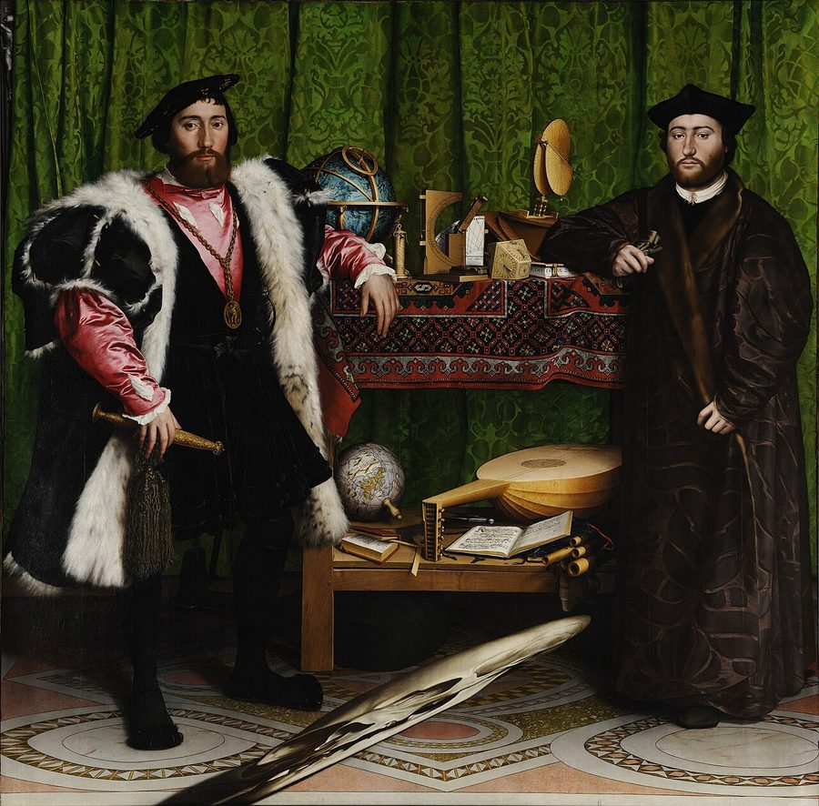

<!DOCTYPE html>
<html lang="nl">
<head>
<meta charset="utf-8">
<meta name="viewport" content="width=device-width, initial-scale=1, viewport-fit=cover">
<meta name="theme-color" content="#111827">
<meta name="apple-mobile-web-app-capable" content="yes">
<meta name="apple-mobile-web-app-status-bar-style" content="black-translucent">
<meta name="apple-mobile-web-app-title" content="Kunst met Laura">
<link rel="manifest" href="manifest.webmanifest">
<link rel="apple-touch-icon" href="icon-192.png">
<link rel="icon" href="icon-192.png">
<title>Kunst met Laura</title>
<link href="https://fonts.googleapis.com/css2?family=Cormorant+Garamond:ital,wght@0,500;0,600;0,700;1,500&family=Inter:wght@400;500;600&display=swap" rel="stylesheet">
<style>
:root{
  --bg:#1c1a17; --panel:#26231f; --panel2:#2f2b26; --ink:#f3ece0; --muted:#b8ad9b;
  --gold:#c9a45c; --gold2:#e3c98f; --ok:#7fae7a; --bad:#c9705c; --line:#3d3830;
}
*{box-sizing:border-box}
html,body{margin:0;background:var(--bg);color:var(--ink);font-family:Inter,system-ui,sans-serif;font-size:16px;line-height:1.55}
body{background:radial-gradient(1200px 600px at 50% -10%,#3a3226 0%,var(--bg) 60%)}
.wrap{max-width:720px;margin:0 auto;padding:20px 16px 60px}
h1,h2,h3,.serif{font-family:Fell,Georgia,serif;font-weight:600;letter-spacing:.01em}
h1{font-size:2.3rem;line-height:1.1;margin:.2em 0 .3em}
h2{font-size:1.75rem;line-height:1.15;margin:.2em 0 .4em}
h3{font-size:1.3rem;margin:1.2em 0 .4em;color:var(--gold2)}
p{margin:.5em 0}
.muted{color:var(--muted)}
.eyebrow{font-size:.75rem;letter-spacing:.14em;text-transform:uppercase;color:var(--gold)}
.card{background:var(--panel);border:1px solid var(--line);border-radius:14px;padding:20px;margin:14px 0}
.frame{background:linear-gradient(145deg,#3b3328,#231f1a);border:6px solid #6e5833;outline:1px solid #a58748;outline-offset:-10px;border-radius:4px;
  box-shadow:0 10px 30px rgba(0,0,0,.45), inset 0 0 40px rgba(0,0,0,.5);padding:22px;display:flex;justify-content:center;align-items:center;min-height:210px}
.frame svg{width:170px;height:170px}
.photo{position:relative;background:linear-gradient(145deg,#3b3328,#231f1a);border:6px solid #6e5833;outline:1px solid #a58748;outline-offset:-10px;border-radius:4px;
  box-shadow:0 10px 30px rgba(0,0,0,.45);padding:16px;display:flex;justify-content:center;align-items:center;cursor:zoom-in}
.photo img{display:block;max-width:100%;max-height:62vh;width:auto;height:auto;min-height:220px;object-fit:contain;box-shadow:0 4px 14px rgba(0,0,0,.6)}
.photo .badge-ic{position:absolute;right:10px;bottom:10px;width:46px;height:46px;border-radius:50%;background:rgba(28,26,23,.88);border:1px solid var(--gold);display:flex;align-items:center;justify-content:center}
.photo .badge-ic svg{width:32px;height:32px}
.photo .zoom{position:absolute;left:12px;bottom:12px;font-size:.72rem;color:var(--gold2);background:rgba(28,26,23,.8);padding:3px 8px;border-radius:999px}
.work{align-items:flex-start}
.work .th{flex:0 0 92px;height:92px;border-radius:6px;overflow:hidden;background:#111;cursor:zoom-in;border:1px solid var(--line)}
.work .th img{width:100%;height:100%;object-fit:cover;display:block}
.work .txt{flex:1;min-width:0}
.mini .photo{padding:10px}.mini .photo img{max-height:34vh;min-height:150px}
.lb{position:fixed;inset:0;background:rgba(10,9,8,.97);z-index:50;display:flex;flex-direction:column;align-items:center;justify-content:center;padding:16px 16px calc(24px + env(safe-area-inset-bottom))}
.lb img{max-width:100%;max-height:68vh;object-fit:contain}
.lb .cap{margin-top:12px;text-align:center;color:var(--ink);font-size:.95rem}
.lb .cap span{color:var(--muted);font-size:.85rem}
.lb .lbclose{margin-top:22px;padding:14px 34px;font-size:1.05rem}
.lb .hint{margin-top:8px;font-size:.8rem;color:var(--muted)}
.dots button{width:14px;height:14px;padding:0;border-radius:50%;background:var(--line);border:0;cursor:pointer}
.dots button.ok{background:var(--ok)} .dots button.bad{background:var(--bad)} .dots button.cur{outline:2px solid var(--gold);outline-offset:2px}
.dots button.star{width:auto;height:auto;background:none;color:var(--gold);font-size:1rem;line-height:1;padding:0 2px;border-radius:4px}
.dots{align-items:center;gap:9px}
.bnav{position:sticky;bottom:0;display:flex;justify-content:space-between;gap:10px;margin:22px -16px -60px;padding:12px 16px calc(14px + env(safe-area-inset-bottom));background:linear-gradient(180deg,rgba(28,26,23,0),var(--bg) 35%)}
.bnav .btn{flex:1;justify-content:center;padding:12px}
.jump{display:flex;gap:6px;margin-top:8px;flex-wrap:wrap}
.jump button{width:30px;height:30px;border-radius:50%;border:1px solid var(--line);background:var(--panel2);color:var(--ink);font:600 .8rem Inter,sans-serif;cursor:pointer}
.jump button.ok{border-color:var(--ok);color:var(--ok)} .jump button.bad{border-color:var(--bad);color:var(--bad)}
.jump button:last-child{color:var(--gold)}
.resume{border-color:var(--gold);background:rgba(201,164,92,.1);width:100%}

.shelf{display:grid;grid-template-columns:repeat(4,minmax(0,1fr));gap:6px;margin-top:10px}
.bslot{background:none;border:0;color:var(--ink);display:flex;flex-direction:column;align-items:center;gap:2px;cursor:pointer;padding:0;font:inherit}
.bslot svg{width:100%;max-width:76px;height:auto;filter:drop-shadow(0 4px 8px rgba(0,0,0,.5))}
.bslot span{font-size:.66rem;overflow-wrap:anywhere;hyphens:auto;max-width:100%;font-weight:600;text-align:center;line-height:1.15}
.bslot small{font-size:.65rem;color:var(--muted)}
.bslot.locked span{color:var(--muted)}
.badge-big{width:190px;margin:8px auto 6px;cursor:pointer}
.badge-big svg{width:100%;height:auto;filter:drop-shadow(0 8px 18px rgba(0,0,0,.6))}
.pop{animation:pop .9s cubic-bezier(.2,1.6,.4,1)}
@keyframes pop{0%{transform:scale(.2) rotate(-25deg);opacity:0}100%{transform:none;opacity:1}}
.award{border-color:var(--gold);background:radial-gradient(400px 200px at 50% 0,rgba(201,164,92,.18),var(--panel))}
.tier{display:inline-block;margin-top:8px;padding:3px 12px;border-radius:999px;font-size:.78rem;font-weight:600;text-transform:uppercase;letter-spacing:.08em}
.tier.goud{background:#e3c98f;color:#3a2a0c}.tier.zilver{background:#d6d6d0;color:#333}.tier.brons{background:#c98a5a;color:#2e1a0a}

.term{background:none;border:0;padding:0;font:inherit;color:var(--gold2);text-decoration:underline dotted;text-underline-offset:3px;cursor:pointer}
.term::after{content:" ⓘ";font-size:.75em;color:var(--gold)}
.gl-list{margin-top:18px}
.gl-list details{background:var(--panel2);border:1px solid var(--line);border-radius:10px;margin:8px 0;padding:0 14px}
.gl-list summary{padding:12px 0;font-weight:600;cursor:pointer;list-style:none;display:flex;align-items:center;gap:8px}
.gl-list summary::before{content:"＋";color:var(--gold);width:16px}
.gl-list details[open] summary::before{content:"－"}
.gl-list details[open]{padding-bottom:12px}
.gl-tag{font-size:.65rem;font-weight:600;text-transform:uppercase;letter-spacing:.06em;color:#2a120c;background:var(--bad);border-radius:999px;padding:2px 8px}
.gl-h{font-size:.72rem;letter-spacing:.12em;text-transform:uppercase;color:var(--gold);margin-top:10px}
.gl-wat p,.gl-mis p,.gl-kunst p{margin:.3em 0}
.gl-mis{border-left:3px solid var(--bad);background:rgba(201,112,92,.1);padding:4px 12px 6px;border-radius:0 8px 8px 0;margin-top:10px}
.gl-mis .gl-h{color:var(--bad)}
.gl-modal{justify-content:flex-start;overflow:auto}
.gl-box{background:var(--panel);border:1px solid var(--gold);border-radius:14px;padding:18px;max-width:560px;width:100%;margin:auto 0;text-align:left}
.gl-box .lbclose{display:block;margin:18px auto 0}
.gl-btn{margin-top:12px}

.grand-big{width:230px;margin:6px auto;cursor:pointer}
.grand-big svg{width:100%;height:auto;filter:drop-shadow(0 10px 22px rgba(0,0,0,.6))}
.grandslot{display:flex;gap:12px;align-items:center;width:100%;background:rgba(201,164,92,.06);border:1px solid var(--line);border-radius:12px;padding:10px;margin:10px 0 6px;color:var(--ink);text-align:left;font:inherit;cursor:pointer}
.grandslot .gs-svg{flex:0 0 74px}.grandslot svg{width:74px;height:auto}
.grandslot .t{font-weight:600}.grandslot .s{font-size:.82rem;color:var(--muted)}
.grandslot .tier{margin:0 4px 0 0;padding:1px 8px;font-size:.65rem}
.path{display:flex;gap:12px;align-items:center;width:100%;background:var(--panel);border:1px solid var(--line);border-radius:14px;padding:12px;margin:8px 0;color:var(--ink);text-align:left;font:inherit;cursor:pointer}
.path:hover{border-color:var(--gold)} .path.cur{border-color:var(--gold);background:rgba(201,164,92,.08)}
.path.locked{opacity:.55;cursor:default}
.path .pbadge{flex:0 0 78px}.path .pbadge svg{width:78px;height:auto}
.path .t{font-weight:600;font-size:1.05rem}.path .s{font-size:.84rem;color:var(--muted);margin-top:2px}
.path .pmeta{font-size:.78rem;color:var(--gold2);margin-top:6px}
.round.soon{opacity:.5;cursor:default}
.soon-tag{display:inline-block;margin-top:8px;font-size:.7rem;text-transform:uppercase;letter-spacing:.1em;color:var(--gold);border:1px dashed var(--gold);border-radius:999px;padding:2px 10px}

.dots button.star.done{color:var(--ok)}
.match{display:grid;grid-template-columns:1fr 1fr;gap:10px;margin-top:12px}
.mcol{display:flex;flex-direction:column;gap:8px}
.mitem{display:flex;align-items:center;gap:8px;min-height:62px;background:var(--panel2);border:1px solid var(--line);border-radius:10px;padding:8px;color:var(--ink);font:500 .86rem Inter,sans-serif;text-align:left;cursor:pointer;transition:.15s}
.mitem img{width:44px;height:44px;object-fit:cover;border-radius:6px;flex:0 0 44px}
.mitem.sel{border-color:var(--gold);background:rgba(201,164,92,.18);box-shadow:0 0 0 2px var(--gold) inset}
.mitem.ok{border-color:var(--ok);background:rgba(127,174,122,.14);opacity:.75}
.mitem.wrong{border-color:var(--bad);background:rgba(201,112,92,.2);animation:shake .4s}
.mitem.hint{border-color:var(--gold)}
@keyframes shake{25%{transform:translateX(-5px)}75%{transform:translateX(5px)}}
.clues{display:flex;flex-direction:column;gap:8px;margin:12px 0}
.clue{display:flex;gap:10px;align-items:flex-start;background:var(--panel2);border:1px solid var(--line);border-radius:10px;padding:10px 12px}
.clue.hidden{color:var(--muted);border-style:dashed}
.clue .cn{flex:0 0 24px;height:24px;border-radius:50%;border:1px solid var(--gold);color:var(--gold2);display:flex;align-items:center;justify-content:center;font-size:.8rem}
.who-img .photo{padding:10px;margin:8px 0}.who-img .photo img{max-height:34vh;min-height:140px}
.tl{display:flex;flex-direction:column;gap:8px;margin-top:10px}
.tlrow{display:flex;gap:10px;align-items:center;background:var(--panel2);border:1px solid var(--line);border-radius:10px;padding:8px}
.tlrow .th{flex:0 0 60px;height:60px;border-radius:6px;overflow:hidden}.tlrow .th img{width:100%;height:100%;object-fit:cover}
.tlrow .txt{flex:1;min-width:0;font-size:.88rem}.tlrow .meta{font-size:.78rem;color:var(--muted)}.tlrow .note{font-size:.75rem;color:var(--muted);margin-top:2px}
.tlpos{flex:0 0 22px;font-family:Fell,Georgia,serif;color:var(--gold);font-size:1.2rem;text-align:center}
.tlbtns{display:flex;flex-direction:column;gap:4px}
.tlbtns button{width:38px;height:30px;border-radius:8px;border:1px solid var(--gold);background:transparent;color:var(--gold2);font-size:.8rem;cursor:pointer}
.tlbtns button:disabled{opacity:.25}
.tlrow.good{border-color:var(--ok)}.tlrow.off{border-color:var(--bad)}
.tlmark{font-size:.75rem;color:var(--muted);white-space:nowrap}.tlrow.good .tlmark{color:var(--ok);font-size:1.1rem}
.tlend{text-align:center;font-size:.78rem}
.growth{font-size:1.02rem;background:rgba(201,164,92,.1);border-radius:10px;padding:8px 12px}
.tlcard{margin-top:12px}
.badge.bdone{border-color:var(--ok);color:var(--ok);text-align:center;white-space:normal;max-width:96px;line-height:1.25}
.ktoggle.beta{border-color:#7a8fb0}.ktoggle.beta input:checked + .kt-sw{background:#7a8fb0}
.betapill{background:#7a8fb0;color:#111;border-radius:999px;padding:1px 7px;font-weight:700;letter-spacing:.08em}
.fsteps{display:flex;gap:6px;margin:6px 0 10px;flex-wrap:wrap}.fsteps span{font-size:.75rem;border:1px solid var(--line);border-radius:999px;padding:3px 10px;color:var(--muted)}.fsteps .cur{border-color:var(--gold);color:var(--gold2)}.fsteps .done{border-color:var(--ok);color:var(--ok)}
.tlrow.locked{opacity:.8;background:rgba(127,174,122,.1)}
.fixnote{background:rgba(127,174,122,.1);border-left:3px solid var(--ok);padding:8px 12px;border-radius:0 8px 8px 0;font-size:.9rem}
.cmp{display:grid;grid-template-columns:1fr 1fr;gap:10px;margin-top:6px}
.cmpbox{display:flex;flex-direction:column;gap:6px}
.cmplab{font-family:Fell,Georgia,serif;font-size:1.6rem;color:var(--gold2);text-align:center;line-height:1}
.photo.small{padding:8px;border-width:4px;outline-offset:-7px;min-height:0}
.photo.small img{min-height:120px;max-height:42vh}
.photo.small .zoom{left:6px;bottom:6px}
.cmpinfo{font-size:.8rem}.cmpinfo .meta{font-size:.72rem;color:var(--muted)}
.role{display:inline-block;margin-top:4px;font-size:.68rem;font-weight:600;padding:2px 8px;border-radius:999px;text-transform:uppercase;letter-spacing:.05em}
.role.r-ok{background:var(--ok);color:#13200f}.role.r-x{background:var(--bad);color:#2a120c}
.look{margin:6px 0 0;padding-left:20px}.look li{margin:4px 0}
.kbadge{display:inline-block;margin-top:6px;font-size:.75rem;color:#1c1a17;background:var(--gold);border-radius:999px;padding:3px 10px;font-weight:600}
.ktoggle{display:flex;gap:12px;align-items:flex-start;background:var(--panel);border:1px solid var(--gold);border-radius:14px;padding:14px;margin-top:12px;cursor:pointer}
.ktoggle input{display:none}
.kt-sw{flex:0 0 44px;height:26px;border-radius:999px;background:var(--line);position:relative;transition:.2s;margin-top:2px}
.kt-sw::after{content:"";position:absolute;left:3px;top:3px;width:20px;height:20px;border-radius:50%;background:#bbb;transition:.2s}
.ktoggle input:checked + .kt-sw{background:var(--gold)}
.ktoggle input:checked + .kt-sw::after{left:21px;background:#fff}
.linkbtn{background:none;border:0;color:var(--muted);text-decoration:underline;font:inherit;cursor:pointer}
.btn{display:inline-flex;align-items:center;gap:8px;border:1px solid var(--gold);background:transparent;color:var(--gold2);padding:10px 16px;border-radius:999px;
  font:600 .95rem Inter,sans-serif;cursor:pointer;text-decoration:none}
.btn:hover{background:rgba(201,164,92,.12)}
.btn.primary{background:var(--gold);color:#1c1a17;border-color:var(--gold)}
.btn.primary:hover{background:var(--gold2)}
.btn.small{padding:6px 12px;font-size:.82rem}
.opts{display:flex;flex-direction:column;gap:10px;margin-top:14px}
.opt{display:flex;gap:12px;align-items:flex-start;text-align:left;background:var(--panel2);border:1px solid var(--line);color:var(--ink);
  padding:14px;border-radius:12px;font:500 1rem Inter,sans-serif;cursor:pointer;transition:.15s}
.opt:hover:not([disabled]){border-color:var(--gold)}
.opt .l{flex:0 0 30px;height:30px;border-radius:50%;border:1px solid var(--gold);color:var(--gold2);display:flex;align-items:center;justify-content:center;
  font-family:Fell,Georgia,serif;font-weight:700;font-size:1.1rem}
.opt.ok{border-color:var(--ok);background:rgba(127,174,122,.13)}
.opt.ok .l{background:var(--ok);border-color:var(--ok);color:#13200f}
.opt.bad{border-color:var(--bad);background:rgba(201,112,92,.13)}
.opt.bad .l{background:var(--bad);border-color:var(--bad);color:#2a120c}
.opt.dim{opacity:.55}
.opt[disabled]{cursor:default}
.verdict{font-family:Fell,Georgia,serif;font-size:1.5rem;font-weight:700;margin:4px 0}
.verdict.ok{color:var(--ok)} .verdict.bad{color:var(--bad)}
.works{display:grid;gap:10px;margin-top:8px}
.work{display:flex;gap:12px;align-items:center;justify-content:space-between;background:var(--panel2);border:1px solid var(--line);border-radius:10px;padding:10px 12px}
.work b{font-weight:600}
.work .meta{font-size:.85rem;color:var(--muted)}
.work .note{font-size:.88rem;margin-top:2px}
.work a{flex:0 0 auto}
.top{display:flex;justify-content:space-between;align-items:center;gap:10px;margin-bottom:6px}
.progress{height:6px;background:var(--line);border-radius:6px;overflow:hidden;margin:6px 0 2px}
.progress i{display:block;height:100%;background:linear-gradient(90deg,var(--gold),var(--gold2))}
.dots{display:flex;gap:6px}
.dots span{width:10px;height:10px;border-radius:50%;background:var(--line)}
.dots span.ok{background:var(--ok)} .dots span.bad{background:var(--bad)} .dots span.cur{outline:2px solid var(--gold);outline-offset:1px}
.rounds{display:grid;gap:12px}
.round{display:flex;gap:14px;align-items:center;background:var(--panel);border:1px solid var(--line);border-radius:14px;padding:14px;cursor:pointer;text-align:left;color:var(--ink);font:inherit}
.round:hover{border-color:var(--gold)}
.round .num{font-family:Fell,Georgia,serif;font-size:2rem;color:var(--gold);width:36px;text-align:center}
.round .t{font-weight:600}
.round .s{font-size:.86rem;color:var(--muted)}
.badge{margin-left:auto;font-size:.8rem;color:var(--gold2);border:1px solid var(--line);border-radius:999px;padding:3px 10px;white-space:nowrap}
.context{display:flex;justify-content:space-between;gap:10px;align-items:center;margin-top:12px;padding:10px 12px;border-left:3px solid var(--gold);background:rgba(201,164,92,.07);border-radius:0 8px 8px 0}
.context .meta{font-size:.85rem;color:var(--muted)}
.detail-n{font-family:Fell,Georgia,serif;color:var(--gold);font-size:1.1rem}
.story p{font-size:1.02rem}
blockquote{margin:12px 0;padding:10px 14px;border-left:3px solid var(--gold);font-family:Fell,Georgia,serif;font-style:italic;font-size:1.25rem;color:var(--gold2)}
.row{display:flex;gap:10px;flex-wrap:wrap;margin-top:16px}
.center{text-align:center}
.score{font-family:Fell,Georgia,serif;font-size:3.4rem;color:var(--gold2);line-height:1}
hr{border:0;border-top:1px solid var(--line);margin:18px 0}
.fade{animation:f .35s ease}
@keyframes f{from{opacity:0;transform:translateY(6px)}to{opacity:1;transform:none}}
.brand{display:flex;align-items:center;gap:12px;margin:0 0 14px;padding:8px 12px;border:1px solid var(--line);border-radius:14px;background:var(--panel)}
.brand svg{width:46px;height:46px;border-radius:50%;background:radial-gradient(circle at 50% 40%,#3b4e6e,#1f2a3c);flex:0 0 46px}
.brand .bt{font-size:1.25rem;color:var(--gold2);line-height:1.1}.brand .bs{font-size:.82rem}
.onb{padding-top:6px}.onb .eyebrow.center{text-align:center}
.ob-stage{display:flex;justify-content:center;margin:6px 0 0;position:relative}
.ob-stage::before{content:"";position:absolute;bottom:4px;width:220px;height:300px;border-radius:110px 110px 8px 8px;border:2px solid #6e5833;background:radial-gradient(circle at 50% 35%,#36404f 0%,#221f1b 75%);box-shadow:inset 0 0 40px rgba(0,0,0,.6)}
.laura{position:relative;width:200px;max-width:58vw;height:auto;filter:drop-shadow(0 6px 10px rgba(0,0,0,.4))}
.laura .wave{transform-origin:156px 166px;animation:lwave 2.6s ease-in-out infinite}
@keyframes lwave{0%,60%,100%{transform:rotate(0)}70%{transform:rotate(-10deg)}80%{transform:rotate(6deg)}90%{transform:rotate(-8deg)}}
.laura .blink{transform-origin:120px 92px;animation:lblink 4.5s infinite}
@keyframes lblink{0%,94%,100%{transform:scaleY(1)}96%{transform:scaleY(.1)}}
.ob-bubble{position:relative;background:#f6efe2;color:#2a241d;border-radius:16px;padding:16px 18px;margin:14px 0;font-size:1.05rem;line-height:1.45;box-shadow:0 6px 18px rgba(0,0,0,.35)}
.ob-bubble::before{content:"";position:absolute;top:-10px;left:50%;margin-left:-10px;border:10px solid transparent;border-top:0;border-bottom-color:#f6efe2}
.ob-bubble b{color:#7a2e22}
.btn.big{display:flex;width:100%;justify-content:center;padding:14px;font-size:1.05rem}
.ob-input{width:100%;padding:13px 14px;border-radius:12px;border:1px solid var(--gold);background:var(--panel);color:var(--ink);font-size:1.05rem;margin:4px 0 12px}
.intro .top{display:flex;align-items:center;gap:10px}.in-dots{display:flex;gap:5px;margin-left:auto}.in-dot{width:9px;height:9px;border-radius:50%;background:var(--line)}.in-dot.done{background:var(--gold)}.in-dot.cur{background:var(--gold2);box-shadow:0 0 0 3px rgba(215,180,106,.25)}
.in-uitleg{display:flex;gap:12px;align-items:flex-start}.in-uitleg p{margin:0;line-height:1.5}.in-lh svg{width:46px;height:46px;border-radius:50%;background:radial-gradient(circle at 50% 40%,#3b4e6e,#1f2a3c)}
.in-done{position:relative;overflow:hidden}.confetti{position:absolute;inset:0;pointer-events:none;z-index:2}.confetti i{position:absolute;top:-12px;width:8px;height:14px;border-radius:2px;opacity:.9;animation:cfall 3.2s linear 2 forwards}
@keyframes cfall{0%{transform:translateY(0) rotate(0)}100%{transform:translateY(680px) rotate(540deg);opacity:0}}
.laura .clapL{transform-origin:88px 166px;animation:clapL .5s ease-in-out infinite}.laura .clapR{transform-origin:152px 166px;animation:clapR .5s ease-in-out infinite}
@keyframes clapL{0%,100%{transform:rotate(0)}50%{transform:rotate(-14deg)}}@keyframes clapR{0%,100%{transform:rotate(0)}50%{transform:rotate(14deg)}}
.laura .spark{animation:spark .5s ease-in-out infinite}@keyframes spark{0%,100%{opacity:.2}50%{opacity:1}}
.guide-cheer{position:relative;overflow:hidden;display:flex;flex-direction:column;align-items:center;margin:4px 0 10px}.gc-fig .laura{width:150px}.gc-b{margin-top:6px}
.guide-box .gb-fig{display:flex;justify-content:center}.guide-box .gb-fig .laura{width:150px;max-width:44vw}.guide-box{max-height:92vh;overflow:auto}
.guide-row{display:flex;align-items:center;gap:10px;margin:2px 0 8px;padding:6px 10px;border:1px solid var(--line);border-radius:14px;background:var(--panel);cursor:pointer;width:max-content;max-width:100%}
.gr-h svg{width:38px;height:38px;border-radius:50%;background:radial-gradient(circle at 50% 40%,#3b4e6e,#1f2a3c)}.gr-s{font-size:.75rem;line-height:1}
.stage{position:relative;width:100%;aspect-ratio:9/11;border-radius:16px;overflow:hidden;border:1px solid var(--line);cursor:pointer;user-select:none;-webkit-user-select:none;background:#111}
.s-bg,.s-bg svg{position:absolute;inset:0;width:100%;height:100%;display:block}.s-bg.fade{animation:sfade .7s}
@keyframes sfade{from{opacity:0}to{opacity:1}}
.actor{position:absolute;bottom:3%;width:33%;transition:left .9s ease-in-out;z-index:2}
.actor svg.laura{width:100%;max-width:none;display:block}
.walk-l{animation:walkL 1.2s ease-out}.walk-r{animation:walkR 1.2s ease-out}
.walk-l svg,.walk-r svg{animation:bob .3s ease-in-out 4 alternate}
@keyframes walkL{from{transform:translateX(-260%)}to{transform:none}}@keyframes walkR{from{transform:translateX(260%)}to{transform:none}}
@keyframes bob{from{transform:translateY(0) rotate(-2deg)}to{transform:translateY(-6px) rotate(2deg)}}
.talk svg{animation:talk .45s ease-in-out infinite alternate}@keyframes talk{from{transform:translateY(0)}to{transform:translateY(-3px) scale(1.015)}}
.a-name{position:absolute;bottom:-4px;left:50%;transform:translateX(-50%);font-size:.58rem;background:rgba(0,0,0,.6);color:#f3ece0;padding:1px 6px;border-radius:8px;white-space:nowrap}
.sbub{position:absolute;top:3.5%;left:4%;right:4%;z-index:4;background:#f7f1e3;color:#2a221a;border-radius:16px;padding:9px 12px;font-size:.88rem;line-height:1.38;box-shadow:0 6px 18px rgba(0,0,0,.45);animation:pop .28s ease-out}
.sbub b{display:block;font-size:.66rem;color:#8a5a2a;text-transform:uppercase;letter-spacing:.08em;margin-bottom:2px}
.sbub::after{content:'';position:absolute;bottom:-12px;border:12px solid transparent;border-top-color:#f7f1e3;border-bottom:0}
.sb-l::after{left:16%}.sb-c::after{left:47%}.sb-r::after{left:76%}
@keyframes pop{from{transform:scale(.85);opacity:0}to{transform:none;opacity:1}}
.snar{position:absolute;top:3.5%;left:4%;right:4%;z-index:4;background:rgba(18,14,10,.86);color:#f3ece0;border:1px solid var(--gold);border-radius:12px;padding:9px 12px;font-size:.88rem;line-height:1.4;animation:sfade .5s}
.sy{display:inline-block;background:var(--gold);color:#1c1a17;font-weight:700;font-size:.7rem;padding:1px 8px;border-radius:999px;margin-right:6px;vertical-align:1px}.sy-c{position:absolute;top:8px;right:8px;z-index:5}
.s-art{position:absolute;inset:0;z-index:6;background:rgba(10,8,6,.8);display:flex;align-items:center;justify-content:center;animation:sfade .6s}
.sa-frame{border:8px solid #b8913f;outline:2px solid #5a3e14;box-shadow:0 12px 30px #000;overflow:hidden;line-height:0}
.sa-frame img{display:block;max-width:min(78vw,300px);max-height:min(52vh,330px);animation:kb 10s ease-in-out forwards;transform-origin:50% 40%}
@keyframes kb{from{transform:scale(1)}to{transform:scale(1.14)}}
.sp-art,.sp-q{background:var(--panel);border:1px solid var(--line);border-radius:14px;padding:12px;margin-top:10px;font-size:.92rem}.sp-art p{margin:6px 0 0}.sq-t{font-weight:600;margin-bottom:8px}.sq-e{margin:6px 0 0}
.s-ctrl{display:grid;grid-template-columns:56px 1fr;gap:8px;margin-top:10px}.s-ctrl .btn{margin:0}
.s-prog{height:4px;background:var(--line);border-radius:4px;margin-top:10px;overflow:hidden}.s-prog i{display:block;height:100%;background:var(--gold)}
.fx-shake{animation:shake .5s}@keyframes shake{0%,100%{transform:none}20%{transform:translateX(-8px)}40%{transform:translateX(7px)}60%{transform:translateX(-5px)}80%{transform:translateX(3px)}}
.fx-flash::after{content:'';position:absolute;inset:0;background:#fff;z-index:9;animation:flash .6s forwards;pointer-events:none}@keyframes flash{from{opacity:.85}to{opacity:0}}
.story-card{display:flex;align-items:center;gap:12px;width:100%;margin:10px 0;padding:12px;border-radius:16px;border:1px solid var(--line);border-left:5px solid var(--sc);background:var(--panel);color:inherit;text-align:left;font:inherit;cursor:pointer}
.stc-fig svg{width:64px;height:64px;border-radius:50%;background:rgba(255,255,255,.06)}.stc-tx{flex:1}.stc-tx b{display:block;font-size:1.08rem}.stc-tx small{display:block;font-size:.82rem;opacity:.8}.stc-tx .pbar{margin:6px 0 2px}
.story-head{display:flex;gap:12px;align-items:center;margin:8px 0 12px;padding:12px;border-radius:16px;background:linear-gradient(135deg,color-mix(in srgb,var(--sc) 35%,transparent),transparent);border:1px solid var(--line)}.sh-fig svg.laura{width:90px}
.ch-row{display:flex;align-items:center;gap:12px;width:100%;margin:8px 0;padding:12px;border-radius:14px;border:1px solid var(--line);background:var(--panel);color:inherit;text-align:left;font:inherit;cursor:pointer}.ch-row.locked{opacity:.5;cursor:default}
.ch-n{width:32px;height:32px;border-radius:50%;display:flex;align-items:center;justify-content:center;border:1px solid var(--gold);color:var(--gold2);font-weight:700;flex:none}.ch-row.done .ch-n{background:var(--gold);color:#1c1a17}.ch-go{margin-left:auto;color:var(--gold2)}
.story-end{position:relative;overflow:hidden;text-align:center;padding:10px 0}.se-fig svg.laura{width:150px}.story-end .ob-bubble{margin:0 auto 14px;max-width:340px}

.stage .cam{position:absolute;inset:0;transition:transform 1.1s ease-in-out;transform-origin:50% 60%}
.cam-in-l{transform:scale(1.35) translate(16%,-4%)}.cam-in-r{transform:scale(1.35) translate(-16%,-4%)}.cam-in-c{transform:scale(1.3) translateY(-5%)}
.cam-pan{animation:campan 7s ease-in-out}@keyframes campan{0%{transform:scale(1.25) translate(10%,8%)}100%{transform:none}}
.weather{position:absolute;inset:0;pointer-events:none;z-index:3;overflow:hidden}
.a-in{transform-origin:50% 100%}
.a-jump{animation:ajump .7s ease-out 2}@keyframes ajump{0%,100%{transform:none}40%{transform:translateY(-16%)}}
.a-shake{animation:ashake .14s linear 10}@keyframes ashake{0%,100%{transform:none}25%{transform:translateX(-3%) rotate(-2deg)}75%{transform:translateX(3%) rotate(2deg)}}
.a-bow{animation:abow 1.8s ease-in-out}@keyframes abow{0%,100%{transform:none}40%,60%{transform:rotate(14deg) translateY(4%)}}
.a-kneel{animation:akneel 2.2s ease-in-out forwards}@keyframes akneel{to{transform:scaleY(.8) translateY(2%)}}
.a-fall{animation:afall 1s ease-in forwards}@keyframes afall{60%{transform:rotate(-20deg)}100%{transform:rotate(-80deg) translate(-10%,10%);opacity:.85}}
.a-run{animation:arun 1.3s ease-in forwards}@keyframes arun{0%{transform:none}20%{transform:translateY(-6%)}100%{transform:translateX(260%) translateY(-4%)}}
.crowd{position:absolute;left:-3%;right:-3%;bottom:10%;height:31%;display:flex;justify-content:space-around;align-items:flex-end;z-index:1;pointer-events:none}
.crowd.back{bottom:19%;height:25%;filter:brightness(.62) saturate(.8);z-index:0;justify-content:space-evenly}
.crowd .cf{height:100%;width:auto;flex:none;margin:0 -9px;overflow:visible;animation:cbob 1.6s ease-in-out infinite alternate}
.crowd.c-in{animation:cin .9s ease-out}@keyframes cin{from{transform:translateY(40%);opacity:0}to{transform:none;opacity:1}}
@keyframes cbob{from{transform:translateY(0)}to{transform:translateY(-3%)}}
.cf .arm{transform-box:fill-box;transform-origin:0% 100%;animation:fist .45s ease-in-out infinite alternate;animation-delay:var(--d)}
.cf .arm2{transform-box:fill-box;transform-origin:100% 100%;animation:fist2 .45s ease-in-out infinite alternate;animation-delay:var(--d)}
@keyframes fist{from{transform:rotate(-8deg)}to{transform:rotate(10deg)}}@keyframes fist2{from{transform:rotate(8deg)}to{transform:rotate(-10deg)}}
.cf-angry{animation:cangry .35s ease-in-out infinite alternate!important}@keyframes cangry{from{transform:translateY(0)}to{transform:translateY(-6%)}}
.cf.bow{animation:cbow 3s ease-in-out infinite!important}@keyframes cbow{0%,100%{transform:none}45%,60%{transform:rotate(10deg) translateY(4%)}}
.cf.march{animation:cmarch .5s ease-in-out infinite alternate!important}@keyframes cmarch{from{transform:translateY(0)}to{transform:translateY(-5%)}}
.cf.sway{animation:csway 3s ease-in-out infinite alternate!important}@keyframes csway{from{transform:rotate(-2deg)}to{transform:rotate(2deg)}}
.cf .bid{animation:bid 2.4s ease-in-out infinite;animation-delay:var(--d)}@keyframes bid{0%,70%,100%{transform:rotate(60deg)}80%,90%{transform:rotate(0)}}
.cf .hammer{animation:hammer .5s ease-in-out infinite alternate}@keyframes hammer{from{transform:rotate(-30deg)}to{transform:rotate(25deg)}}
.cf .brush,.cf .cup{animation:fist 1.2s ease-in-out infinite alternate}.cf .clapper{animation:clapc .3s ease-in-out infinite alternate;transform-box:fill-box;transform-origin:50% 100%}@keyframes clapc{from{transform:scaleX(1)}to{transform:scaleX(.7)}}
.cf .flame,.prop .flame{animation:flick .25s ease-in-out infinite alternate;transform-box:fill-box;transform-origin:50% 100%}@keyframes flick{from{transform:scaleY(1)}to{transform:scaleY(1.25) skewX(4deg)}}
.props{position:absolute;inset:0;z-index:1;pointer-events:none}.prop{position:absolute;bottom:6%}.prop svg{width:100%;height:auto;display:block}
.p-rope{bottom:auto;top:0;height:80%}.p-rope svg{height:100%}.p-flyer{bottom:auto;top:12%}.p-flyer svg{animation:flyx 3s ease-in-out infinite alternate}@keyframes flyx{from{transform:translate(-10%,0) rotate(-4deg)}to{transform:translate(10%,-12%) rotate(4deg)}}
.p-bonfire .flames{animation:flick .3s ease-in-out infinite alternate;transform-box:fill-box;transform-origin:50% 100%}.p-podium .gavel{animation:gav 1.2s ease-in-out infinite;transform-box:fill-box;transform-origin:100% 100%}@keyframes gav{0%,60%,100%{transform:none}75%{transform:rotate(-30deg)}}
.p-letter{bottom:40%}
.throw{position:absolute;bottom:48%;left:var(--x0);z-index:5;font-size:2.4rem;animation:thx .75s linear forwards}@keyframes thx{from{left:var(--x0)}to{left:var(--x1)}}
.thy{animation:thy .75s ease-out forwards}@keyframes thy{0%{transform:translateY(0) rotate(0)}50%{transform:translateY(-70px) rotate(300deg)}100%{transform:translateY(10px) rotate(620deg);opacity:.2}}
.w-rain{position:absolute;inset:-20%;background-image:repeating-linear-gradient(100deg,transparent 0 10px,rgba(200,220,255,.4) 10px 11px,transparent 11px 23px);animation:rain .32s linear infinite}@keyframes rain{to{transform:translate(-22px,64px)}}
.w-dark{position:absolute;inset:0;background:rgba(10,15,30,.4)}.w-flash{position:absolute;inset:0;background:#fff;opacity:0;animation:lflash 6s infinite}@keyframes lflash{0%,88%,94%,100%{opacity:0}90%{opacity:.75}92%{opacity:.2}93%{opacity:.6}}
.w-night{position:absolute;inset:0;background:rgba(8,14,48,.5);mix-blend-mode:multiply}.w-dusk{position:absolute;inset:0;background:linear-gradient(#e0705a55,#f0b05a33,#3a1a4a44)}
.w-candles{position:absolute;inset:0;background:radial-gradient(circle at 70% 55%,rgba(255,190,90,.35),rgba(20,10,0,.45) 70%);animation:cand 1.5s ease-in-out infinite alternate}@keyframes cand{to{opacity:.8}}
.w-snow{position:absolute;inset:-10%;background-image:radial-gradient(#fff 1.3px,transparent 2px),radial-gradient(#fff 1px,transparent 1.6px);background-size:42px 42px,27px 27px;background-position:0 0,13px 17px;animation:snow 6s linear infinite;opacity:.85}.w-snow.s2{animation-duration:9s;opacity:.5;background-size:60px 60px,35px 35px}@keyframes snow{to{background-position:30px 420px,50px 420px}}
.w-fire{position:absolute;inset:0;background:radial-gradient(ellipse at 50% 90%,rgba(255,130,40,.5),rgba(80,20,0,.35) 70%);animation:cand .4s ease-in-out infinite alternate}
.ember{position:absolute;bottom:10%;width:5px;height:5px;border-radius:50%;background:#ffb040;box-shadow:0 0 6px #ff8020;animation:ember 2.6s linear infinite}@keyframes ember{from{transform:translateY(0);opacity:1}to{transform:translate(20px,-300px);opacity:0}}
.fw{position:absolute;width:6px;height:6px;border-radius:50%;background:var(--c);opacity:0;animation:fw 3.3s ease-out infinite;box-shadow:0 -34px 0 var(--c),0 34px 0 var(--c),34px 0 0 var(--c),-34px 0 0 var(--c),24px 24px 0 var(--c),-24px 24px 0 var(--c),24px -24px 0 var(--c),-24px -24px 0 var(--c)}@keyframes fw{0%{transform:scale(.1);opacity:0}8%{opacity:1}45%{transform:scale(1.4);opacity:.9}70%,100%{transform:scale(1.7) translateY(14px);opacity:0}}
.spk{position:absolute;width:8px;height:8px;background:#f7e08a;clip-path:polygon(50% 0,62% 38%,100% 50%,62% 62%,50% 100%,38% 62%,0 50%,38% 38%);animation:spk 2s ease-in-out infinite}@keyframes spk{0%,100%{transform:scale(.2);opacity:0}50%{transform:scale(1.3);opacity:1}}
.star{position:absolute;width:4px;height:4px;border-radius:50%;background:#fff6c8;box-shadow:0 0 6px #fff3a0;animation:spk 2.5s ease-in-out infinite}
.w-swirl i{position:absolute;border:4px solid rgba(160,190,255,.45);border-color:rgba(160,190,255,.5) transparent rgba(240,230,140,.5) transparent;border-radius:50%;animation:swirl 9s linear infinite}.w-swirl i:nth-child(1){left:10%;top:6%;width:120px;height:60px}.w-swirl i:nth-child(2){left:45%;top:14%;width:150px;height:70px;animation-direction:reverse}.w-swirl i:nth-child(3){left:20%;top:22%;width:90px;height:44px}@keyframes swirl{to{transform:rotate(360deg)}}
.smk{position:absolute;bottom:20%;width:60px;height:60px;border-radius:50%;background:rgba(120,120,120,.45);filter:blur(6px);animation:smk 5s ease-out infinite}@keyframes smk{from{transform:scale(.4);opacity:.8}to{transform:translateY(-260px) scale(2.2);opacity:0}}
.petal{position:absolute;top:-5%;width:9px;height:7px;border-radius:60% 0;background:#f4a8b8;animation:petal 5s linear infinite}.petal.leaves{background:#d0802a;width:11px;height:8px}@keyframes petal{to{transform:translate(40px,480px) rotate(540deg)}}
.bird{position:absolute;left:-10%;width:16px;height:6px;border-top:2px solid #2a2a2a;border-radius:50% 50% 0 0;animation:bird 9s linear infinite}.bird.crows{border-top:3px solid #111;width:22px}@keyframes bird{0%{transform:translateX(0) translateY(0)}50%{transform:translateX(200px) translateY(-14px)}100%{transform:translateX(440px) translateY(6px)}}
.bg-clouds{animation:clouds 30s linear infinite alternate}@keyframes clouds{to{transform:translateX(40px)}}
.bg-water{animation:water 2.5s ease-in-out infinite alternate}@keyframes water{to{transform:translateX(-20px)}}
.bg-spray{animation:flick .4s ease-in-out infinite alternate;transform-box:fill-box;transform-origin:50% 100%}
.bg-flicker{animation:flick .3s infinite alternate;transform-box:fill-box;transform-origin:50% 100%}
.bg-waves{animation:waves 3s ease-in-out infinite alternate}@keyframes waves{to{transform:translate(-14px,8px)}}.bg-boat{animation:boat 2.4s ease-in-out infinite alternate;transform-box:fill-box;transform-origin:50% 100%}@keyframes boat{from{transform:rotate(-7deg)}to{transform:rotate(7deg) translateY(6px)}}
.bg-mill{animation:mill 8s linear infinite}@keyframes mill{to{transform:rotate(360deg)}}
.sun-rays{animation:sunp 3s ease-in-out infinite alternate;transform-box:fill-box;transform-origin:50% 50%}@keyframes sunp{to{transform:scale(1.08) rotate(8deg)}}.sunhat{animation:sunp 2s ease-in-out infinite alternate;transform-box:fill-box;transform-origin:50% 100%}
.smk-bg{animation:smk2 6s ease-in-out infinite alternate}@keyframes smk2{to{transform:translate(10px,-14px)}}
.emo .tear{animation:tear 1.6s ease-in infinite}@keyframes tear{from{transform:translateY(0);opacity:1}to{transform:translateY(16px);opacity:0}}.emo .sweat{animation:tear 1.2s ease-in infinite}
.sbub.shout{border:2px solid #c0392b;animation:pop .28s ease-out,shout .12s 4 .3s}@keyframes shout{50%{transform:translateX(2px)}}
.intro-stage .curtain{position:absolute;top:0;bottom:0;width:51%;z-index:7;background:repeating-linear-gradient(90deg,#7a1420 0 18px,#9a1e2c 18px 30px,#6a1018 30px 40px);transition:transform 1.4s cubic-bezier(.7,0,.3,1);box-shadow:inset 0 -20px 30px rgba(0,0,0,.4)}
.intro-stage .cl{left:0}.intro-stage .cr{right:0}.intro-stage.open .cl{transform:translateX(-82%)}.intro-stage.open .cr{transform:translateX(82%)}
.ch-card{position:absolute;inset:0;z-index:6;display:flex;flex-direction:column;align-items:center;justify-content:center;text-align:center;background:rgba(14,10,8,.55);opacity:0;transition:opacity 1s .7s}.intro-stage.open .ch-card{opacity:1}
.ch-t{font-size:1.9rem;color:var(--gold2);margin:4px 14px;line-height:1.15;text-shadow:0 2px 10px #000}.ch-y{color:#f3ece0;font-weight:600;margin-bottom:6px}.ch-fig svg.laura{width:120px}
.s-ctrl.one{grid-template-columns:1fr}.mus-now{margin-top:8px;font-size:.75rem;opacity:.75}

.hub-top{text-align:center;margin:10px 0 14px}.hub-top svg{width:120px;height:auto}.hub-t{font-size:2rem;color:var(--gold2);margin:4px 0 10px}.hub-b{display:inline-block;max-width:320px}
.hub-opt{display:flex;align-items:center;gap:14px;width:100%;margin:10px 0;padding:16px;border-radius:18px;border:1px solid var(--line);background:var(--panel);color:inherit;text-align:left;font:inherit;cursor:pointer}.hub-opt:active{border-color:var(--gold)}
.ho-ic{font-size:2rem}.ho-tx b{display:block;font-size:1.1rem;margin-bottom:3px}.ho-tx small{opacity:.75;font-size:.85rem;line-height:1.3;display:block}.ho-go{margin-left:auto;font-size:1.6rem;color:var(--gold2)}.free-h{font-size:1.1rem;margin:20px 0 8px}
.sym-card.locked{border-color:var(--line);background:var(--panel);opacity:.8}.sym-card{display:flex;align-items:center;gap:12px;width:100%;margin:12px 0 4px;padding:14px;border-radius:16px;border:1px solid var(--gold);background:linear-gradient(135deg,rgba(215,180,106,.16),rgba(215,180,106,.04));color:inherit;text-align:left;font:inherit;cursor:pointer}.sc-ic{font-size:1.8rem}.sc-go{margin-left:auto;font-size:1.5rem;color:var(--gold2)}
.sym-streak{margin-left:auto;padding:5px 12px;border-radius:999px;border:1px solid var(--line);background:var(--panel);font-size:.95rem}.sym-streak span{opacity:.7;font-size:.8rem}.sym-streak.hot{border-color:#e0703c;box-shadow:0 0 0 3px rgba(224,112,60,.2)}
.sym-frame{display:flex;justify-content:center;padding:10px}.sym-frame img{max-width:100%;max-height:46vh;border-radius:6px;display:block}
.sym-name{margin:10px 0 0;font-size:1.05rem}.sym-form{display:flex;flex-direction:column;gap:10px;margin-top:6px}.sym-in{width:100%;box-sizing:border-box;padding:14px 16px;font:inherit;font-size:1.05rem;border-radius:14px;border:1px solid var(--gold);background:var(--panel);color:inherit;outline:none}.sym-in:focus{box-shadow:0 0 0 3px rgba(215,180,106,.25)}.sym-btns{display:grid;grid-template-columns:1fr 1fr;gap:10px}.sym-btns .btn{margin:0;width:100%}.sym-idk{border:1px solid var(--gold)!important;background:rgba(215,180,106,.12)!important;color:var(--gold2)!important}.sym-skip{display:block;margin:10px auto 0;background:none;border:0;color:inherit;opacity:.65;text-decoration:underline;font:inherit;cursor:pointer}.sym-you{font-size:.9rem;opacity:.75;margin-bottom:4px}.sym-full{font-weight:600;margin:2px 0 6px}.sym-h{margin:14px 0 8px;font-size:1rem;color:var(--gold2)}
.sym-more{display:grid;grid-template-columns:repeat(3,1fr);gap:8px;margin-bottom:12px}.sym-more figure{margin:0}.sym-more img{width:100%;aspect-ratio:1;object-fit:cover;border-radius:6px;cursor:zoom-in;display:block}
.sym-cap{font-size:.7rem;line-height:1.25;margin-top:3px;opacity:.85}.sym-strike{font-size:2.4rem;font-weight:700;text-align:center;color:#f08a4b;margin:4px 0}
.ob-choice .num{font-size:1.5rem}.ob-mini svg{width:40px;height:44px}
.seg{display:flex;gap:4px;background:var(--panel2);padding:4px;border-radius:12px;margin:10px 0 12px;border:1px solid var(--line)}
.seg button{flex:1;border:0;background:none;color:var(--muted);padding:9px 2px;border-radius:9px;font:inherit;font-size:.82rem;cursor:pointer;line-height:1.15}
.seg button.on{background:var(--gold);color:#1c1a17;font-weight:600}
.tiles{display:grid;grid-template-columns:1fr 1fr;gap:10px}
.tile{position:relative;background:var(--panel);border:1px solid var(--line);border-radius:14px;padding:12px 8px 10px;text-align:center;color:var(--ink);font:inherit;cursor:pointer;display:flex;flex-direction:column;align-items:center}
.tile.cur{border-color:var(--gold);box-shadow:0 0 0 1px var(--gold) inset;background:linear-gradient(180deg,rgba(184,145,63,.12),var(--panel))}
.tile svg{width:62px;height:auto}
.tile .tn{font-weight:600;font-size:.95rem;line-height:1.15;margin-top:6px}
.tile .tm{font-size:.74rem;color:var(--muted);margin-top:2px}
.tile .pbar{width:100%;margin:6px 0 0}
.tile .now{position:absolute;top:7px;left:7px;font-size:.6rem;letter-spacing:.04em;text-transform:uppercase;background:var(--gold);color:#1c1a17;padding:2px 7px;border-radius:99px;font-weight:700}
.tile.locked{opacity:.45;cursor:default}
.chip{display:inline-flex;gap:6px;align-items:center;border:1px solid var(--line);background:var(--panel2);color:var(--ink);border-radius:99px;padding:7px 13px;font:inherit;font-size:.86rem;cursor:pointer}
.chip.gold{border-color:var(--gold);color:var(--gold2)}
.hdr{display:flex;align-items:center;justify-content:space-between;gap:8px;margin:0 0 12px}
.diffbtn{display:flex;gap:12px;align-items:center;width:100%;text-align:left;background:var(--panel2);border:1px solid var(--line);color:var(--ink);border-radius:14px;padding:14px;margin:8px 0;font:inherit;cursor:pointer}
.diffbtn.on{border-color:var(--gold)}.diffbtn .di{font-size:1.8rem}.diffbtn b{display:block;font-size:1.05rem}.diffbtn small{color:var(--muted)}
.hint{margin:8px 0 0}
.clamp{display:-webkit-box;-webkit-line-clamp:3;-webkit-box-orient:vertical;overflow:hidden}.cta{width:100%;padding:14px;font-size:1.05rem;margin:4px 0 6px}
.fav{position:absolute;top:10px;right:10px;width:40px;height:40px;border-radius:50%;border:1px solid var(--gold);background:rgba(28,26,23,.85);color:var(--gold2);font-size:1.25rem;line-height:1;cursor:pointer;z-index:2}
.fav.on{background:var(--gold);color:#7a1f1f}
.fav.sm{position:static;flex:0 0 34px;width:34px;height:34px;font-size:1rem;align-self:center}
.work{position:relative}
.toast{position:fixed;left:50%;bottom:90px;transform:translate(-50%,20px);background:var(--panel);border:1px solid var(--gold);color:var(--ink);padding:10px 16px;border-radius:99px;opacity:0;transition:.25s;z-index:99;font-size:.9rem;white-space:nowrap}.toast.in{opacity:1;transform:translate(-50%,0)}
.favgrid{display:grid;grid-template-columns:1fr 1fr;gap:10px;margin-bottom:8px}
.favcard{position:relative;background:var(--panel);border:1px solid var(--line);border-radius:12px;overflow:hidden}
.favcard .fth{height:140px;background:#111;cursor:zoom-in}.favcard .fth img{width:100%;height:100%;object-fit:cover;display:block}
.favcard .ft{padding:8px 10px 10px;font-size:.85rem;line-height:1.25}.favcard .ft .meta{font-size:.75rem}
.favcard .fx{position:absolute;top:6px;right:6px;width:28px;height:28px;border-radius:50%;border:0;background:rgba(28,26,23,.8);color:var(--ink);cursor:pointer}
.routebar{display:flex;gap:8px;justify-content:space-between;margin:-4px 0 12px}
.linkbtn{background:none;border:0;color:var(--gold);font:inherit;font-size:.82rem;padding:0;cursor:pointer;text-decoration:underline}
.pbar{height:6px;border-radius:99px;background:#3a352e;margin:8px 0 4px;overflow:hidden}.pbar i{display:block;height:100%;background:linear-gradient(90deg,#b8913f,#e3c98f)}
h3.rgroup{margin-top:1.4em}
.path.route{padding:8px 12px;margin:6px 0}.path.route .pbadge{flex:0 0 58px}.path.route .pbadge svg{width:58px}.path.route .s{display:none}.path.route.cur .s{display:block;font-size:.85rem}.path.route .t{font-size:1.05rem}.path.route .eyebrow{font-size:.66rem}
.lb.sheet{justify-content:flex-end;padding:0}
.sheetbox{width:100%;max-width:720px;max-height:82vh;overflow:auto;background:var(--panel);border-top:1px solid var(--gold);border-radius:18px 18px 0 0;padding:18px 16px calc(18px + env(safe-area-inset-bottom))}
.sh-g{font-family:Fell,Georgia,serif;color:var(--gold2);font-size:1.15rem;margin:12px 2px 6px}
.sh-r{display:flex;justify-content:space-between;align-items:center;width:100%;text-align:left;background:var(--panel2);border:1px solid var(--line);color:var(--ink);border-radius:10px;padding:11px 12px;margin:5px 0;font:inherit;cursor:pointer}
.sheetbox .bnav{position:static;margin-top:12px;background:none;box-shadow:none;padding:0}.sh-r.cur{border-color:var(--gold)}.sh-r.locked{opacity:.5}.sh-r small{color:var(--muted)}
/* ===== Huisstijl 2.0: lapis & bladgoud ===== */
@font-face{font-family:"Fell";src:url(fonts/fell.woff2) format("woff2");font-display:swap}
@font-face{font-family:"Fell";font-style:italic;src:url(fonts/fell-it.woff2) format("woff2");font-display:swap}
@font-face{font-family:"Hanken";src:url(fonts/hanken.woff2) format("woff2");font-weight:300 800;font-display:swap}
:root{--bg:#111827;--bg2:#162036;--panel:#1a2440;--panel2:#212d4f;--ink:#f1ebdd;--muted:#a3abc0;--gold:#d2ae62;--gold2:#ecd296;--ok:#6fae96;--bad:#d06a4c;--line:#2b3756;--lapis:#2f4a8f;--serif:"Fell",Georgia,serif}
html,body{font-family:"Hanken",system-ui,-apple-system,sans-serif;background:var(--bg);-webkit-font-smoothing:antialiased;text-rendering:optimizeLegibility}
body{background:
  radial-gradient(900px 520px at 85% -8%,rgba(47,74,143,.55),transparent 60%),
  radial-gradient(700px 500px at -10% 105%,rgba(210,174,98,.10),transparent 60%),
  var(--bg);background-attachment:fixed}
body::before{content:"";position:fixed;inset:0;pointer-events:none;z-index:0;opacity:.07;background-image:url("data:image/svg+xml;utf8,<svg xmlns='http://www.w3.org/2000/svg' width='160' height='160'><filter id='n'><feTurbulence type='fractalNoise' baseFrequency='.9' numOctaves='2' stitchTiles='stitch'/><feColorMatrix values='0 0 0 0 1 0 0 0 0 1 0 0 0 0 1 0 0 0 .6 0'/></filter><rect width='100%' height='100%' filter='url(%23n)'/></svg>")}
.wrap{position:relative;z-index:1}
h1,h2,h3,.serif,.tlpos,.cmplab,.verdict,.round .num,.detail-n{font-family:var(--serif)!important;font-weight:400!important;letter-spacing:0}
h1{font-size:2.15rem;line-height:1.08}h2{font-size:1.6rem}h3{color:var(--gold2)}
.eyebrow{letter-spacing:.04em!important;text-transform:none!important;font-weight:600;color:var(--gold)}
.btn{border-radius:999px!important;font-weight:600;letter-spacing:.01em;transition:transform .12s ease,filter .2s}
.btn:active,.chip:active,.hub-opt:active,.story-card:active,.ch-row:active,.tile:active,.opt:active{transform:scale(.975)}
.btn.primary{background:linear-gradient(180deg,#e2c27a,#c49a4c)!important;color:#1a1408!important;border:0!important;box-shadow:0 6px 18px rgba(210,174,98,.25),inset 0 1px 0 rgba(255,255,255,.35)}
.chip{border-radius:999px!important;background:rgba(255,255,255,.04)!important;border:1px solid rgba(210,174,98,.22)!important;color:var(--ink)!important;backdrop-filter:blur(6px)}
.card,.opt,.sp-q,.sp-art,.ch-row,.story-card,.tile{background:linear-gradient(180deg,rgba(33,45,79,.92),rgba(26,36,64,.92))!important;border:1px solid rgba(210,174,98,.13)!important}
.opt{border-radius:16px!important}.opt .l{font-family:var(--serif)!important}
.opt.ok{border-color:var(--ok)!important;background:linear-gradient(180deg,rgba(111,174,150,.22),rgba(26,36,64,.92))!important}.opt.bad{border-color:var(--bad)!important;background:linear-gradient(180deg,rgba(208,106,76,.2),rgba(26,36,64,.92))!important}
.ob-bubble{background:#f4ede0!important;color:#1d1a14!important;border-radius:20px!important}
/* overgang tussen schermen */
#app>.fade{animation:viewin .32s cubic-bezier(.2,.7,.2,1)}@keyframes viewin{from{opacity:0;transform:translateY(10px)}to{opacity:1;transform:none}}
/* ---- splash ---- */
#splash{position:fixed;inset:0;z-index:9999;display:flex;flex-direction:column;align-items:center;justify-content:center;background:radial-gradient(600px 400px at 50% 40%,#22336a,#0d1322 70%);transition:transform .9s cubic-bezier(.7,0,.2,1),opacity .9s}
#splash.out{transform:translateY(-100%);opacity:.6}
.sp-frame{position:relative;width:200px;height:250px}
.sp-frame svg{position:absolute;inset:-14px;width:228px;height:278px;overflow:visible}
.sp-frame .fr{fill:none;stroke:var(--gold);stroke-width:3;stroke-dasharray:960;stroke-dashoffset:960;animation:draw 1.3s .2s cubic-bezier(.6,0,.3,1) forwards}
.sp-frame .fr2{fill:none;stroke:rgba(236,210,150,.5);stroke-width:1;stroke-dasharray:900;stroke-dashoffset:900;animation:draw 1.3s .45s cubic-bezier(.6,0,.3,1) forwards}
@keyframes draw{to{stroke-dashoffset:0}}
.sp-pic{position:absolute;inset:0;overflow:hidden;opacity:0;animation:spfade 1s 1.2s forwards}
.sp-pic img{width:100%;height:100%;object-fit:cover;object-position:60% 30%;animation:spkb 4s 1.2s ease-out forwards;transform:scale(1.18)}
@keyframes spfade{to{opacity:1}}@keyframes spkb{to{transform:scale(1)}}
.sp-word{margin-top:34px;font-family:var(--serif);font-size:2.4rem;color:var(--ink);letter-spacing:.02em;opacity:0;transform:translateY(8px);animation:spup .9s 1.6s forwards}
.sp-sub{margin-top:6px;font-family:var(--serif);font-style:italic;color:var(--gold2);font-size:1.1rem;opacity:0;animation:spup .9s 1.95s forwards}
@keyframes spup{to{opacity:1;transform:none}}
.sp-skip{position:absolute;bottom:28px;color:var(--muted);font-size:.8rem;opacity:0;animation:spfade .6s 2.2s forwards}
@media (prefers-reduced-motion:reduce){#splash *{animation-duration:.01s!important;animation-delay:0s!important}}
/* ---- nieuwe startpagina ---- */
.hb-top{display:flex;align-items:center;justify-content:space-between;margin:2px 0 18px}
.hb-mark{font-family:var(--serif);font-size:1.35rem;color:var(--ink)}.hb-mark i{color:var(--gold)}
.hb-av{width:42px;height:42px;border-radius:50%;overflow:hidden;border:1px solid rgba(210,174,98,.4);background:#f4ede0;padding:0;cursor:pointer}.hb-av svg{width:100%;height:100%}
.hb-hello{font-family:var(--serif);font-size:2.3rem;line-height:1.05;margin:0}.hb-q{color:var(--muted);margin:6px 0 18px}
.hb-feat{position:relative;display:block;width:100%;min-height:210px;border-radius:24px;overflow:hidden;border:1px solid rgba(210,174,98,.3);padding:0;cursor:pointer;text-align:left;color:var(--ink);font:inherit;background:#0d1322;margin-bottom:14px}
.hb-feat img{position:absolute;inset:0;width:100%;height:100%;object-fit:cover;object-position:50% 25%;opacity:.85;transition:transform 6s ease}
.hb-feat:hover img{transform:scale(1.05)}
.hb-feat::after{content:"";position:absolute;inset:0;background:linear-gradient(180deg,rgba(13,19,34,0) 25%,rgba(13,19,34,.92) 85%)}
.hb-feat .tx{position:absolute;left:18px;right:18px;bottom:16px;z-index:1}.hb-feat b{display:block;font-family:var(--serif);font-weight:400;font-size:1.75rem;line-height:1.05}.hb-feat small{display:block;color:#d9d2c3;margin-top:4px;font-size:.88rem}
.hb-feat .bar{height:4px;border-radius:4px;background:rgba(255,255,255,.18);margin-top:10px;overflow:hidden}.hb-feat .bar i{display:block;height:100%;background:var(--gold)}
.hb-grid{display:grid;grid-template-columns:1fr 1fr;gap:12px}
.hb-tile{position:relative;display:flex;flex-direction:column;align-items:flex-start;gap:10px;min-height:150px;padding:16px;border-radius:20px;border:1px solid rgba(210,174,98,.15);background:linear-gradient(160deg,var(--panel2),var(--panel));color:var(--ink);font:inherit;text-align:left;cursor:pointer;overflow:hidden}
.hb-tile.wide{grid-column:1/3;min-height:0;flex-direction:row;align-items:center}
.hb-tile svg.ic{width:34px;height:34px;stroke:var(--gold);fill:none;stroke-width:1.5;stroke-linecap:round;stroke-linejoin:round;flex:none}
.hb-tile b{font-family:var(--serif);font-weight:400;font-size:1.3rem;line-height:1.1}.hb-tile small{color:var(--muted);font-size:.82rem;line-height:1.35}
.hb-tile .ghost{position:absolute;right:-16px;bottom:-18px;width:110px;height:110px;stroke:rgba(210,174,98,.08);fill:none;stroke-width:1.2}
.hb-links{display:flex;gap:8px;justify-content:center;margin:18px 0 6px;flex-wrap:wrap}
/* ---- onderste navigatie ---- */
#nav{position:fixed;left:0;right:0;bottom:0;z-index:50;display:none;justify-content:space-around;padding:8px 6px calc(8px + env(safe-area-inset-bottom));background:rgba(13,19,34,.86);backdrop-filter:blur(14px);-webkit-backdrop-filter:blur(14px);border-top:1px solid rgba(210,174,98,.16)}
body.has-nav #nav{display:flex}body.has-nav .wrap{padding-bottom:96px}
#nav button{flex:1;display:flex;flex-direction:column;align-items:center;gap:3px;background:none;border:0;color:var(--muted);font:inherit;font-size:.68rem;padding:4px 0;cursor:pointer}
#nav svg{width:24px;height:24px;stroke:currentColor;fill:none;stroke-width:1.6;stroke-linecap:round;stroke-linejoin:round}
#nav button.on{color:var(--gold2)}#nav button.on svg{filter:drop-shadow(0 0 6px rgba(210,174,98,.5))}

.in-fig{margin:14px 0 6px}.in-fig .frame{display:flex;justify-content:center;background:#0e1424;border-radius:12px;overflow:hidden}.in-fig img{display:block;max-width:100%;max-height:300px;object-fit:contain}.in-fig figcaption{font-size:.8rem;color:var(--muted,#9aa3b8);text-align:center;margin-top:6px;font-style:italic}.in-ph{padding:60px 0;color:#9aa3b8;font-size:.85rem}
.kcel .confetti{position:fixed;inset:0;pointer-events:none;overflow:hidden;z-index:0}.kcel .gl-box{position:relative;z-index:1;animation:kcPop .55s cubic-bezier(.2,1.4,.4,1) both}.kc-fig{animation:kcJump 1.1s ease-in-out .5s 2}
@keyframes kcPop{from{transform:scale(.6) translateY(30px);opacity:0}to{transform:none;opacity:1}}@keyframes kcJump{0%,100%{transform:none}30%{transform:translateY(-14px) rotate(-3deg)}60%{transform:translateY(0) rotate(2deg)}}
@media (prefers-reduced-motion:reduce){.kcel .gl-box,.kc-fig{animation:none}}
.cameo{position:fixed;left:50%;top:calc(env(safe-area-inset-top,0px) + 10px);z-index:60;width:min(460px,calc(100% - 24px));display:flex;align-items:flex-start;gap:8px;transform:translate(-160%,0);opacity:0;transition:transform .7s cubic-bezier(.2,1.25,.35,1),opacity .4s;cursor:pointer}

.cameo.in{transform:translate(-50%,0);opacity:1}.cameo.out{transform:translate(-50%,-30px);opacity:0;transition:transform .4s ease-in,opacity .35s}
.cm-fig{flex:0 0 66px;width:66px;height:66px;border-radius:50%;overflow:hidden;background:radial-gradient(circle at 50% 35%,#2b3c6b,#141c33);border:2px solid #d7b46a;box-shadow:0 0 0 4px rgba(215,180,106,.18),0 8px 24px rgba(0,0,0,.45);animation:cmBob 2.4s ease-in-out .7s infinite}
.cm-fig svg{width:100%;height:100%}
.cm-b{position:relative;flex:1;background:#f5ecda;color:#2a2118;border-radius:4px 16px 16px 16px;padding:10px 13px 11px;box-shadow:0 10px 30px rgba(0,0,0,.45);border:1px solid #d7b46a;overflow:hidden;font-size:.92rem;line-height:1.38}
.cm-b::after{content:'';position:absolute;inset:0;background:linear-gradient(110deg,transparent 30%,rgba(255,236,180,.75) 48%,transparent 66%);transform:translateX(-120%);animation:cmShine 1.4s ease-out .55s 1;pointer-events:none}
.cm-n{font-weight:700;font-size:.78rem;color:#8a5a1c;margin-bottom:2px}.cm-tag{font-weight:600;color:#3e63b0;margin-left:4px}
@keyframes cmShine{to{transform:translateX(120%)}}@keyframes cmBob{0%,100%{transform:none}50%{transform:translateY(-3px)}}
.bigm{z-index:70}
.rw-stage{display:flex;align-items:flex-end;justify-content:center;gap:6px;margin:4px 0 10px}.rw-g svg{width:110px;height:auto}
.rw-frame{position:relative;padding:7px;background:linear-gradient(135deg,#8a6420,#e8c877 40%,#9b7428 60%,#e2c06e);border-radius:3px;box-shadow:0 10px 26px rgba(0,0,0,.5);animation:rwIn .9s cubic-bezier(.2,1.3,.4,1) .35s both;overflow:hidden}
.rw-frame img{display:block;max-width:150px;max-height:150px;border:2px solid #3a2a10}
.rw-shine{position:absolute;inset:0;background:linear-gradient(115deg,transparent 35%,rgba(255,255,255,.6) 50%,transparent 65%);transform:translateX(-130%);animation:cmShine 1.3s ease-out 1.2s 1}
@keyframes rwIn{from{transform:scale(.3) rotate(-8deg);opacity:0}to{transform:none;opacity:1}}
.bl-badge{text-align:center;font-weight:700;color:#d7b46a;font-size:1.05rem;margin:0 0 8px;letter-spacing:.02em}
.favcard.won{box-shadow:0 0 0 2px #d7b46a,0 6px 18px rgba(215,180,106,.25);position:relative}.wonb{position:absolute;top:6px;left:6px;z-index:2;background:#d7b46a;color:#1d1608;font-size:.68rem;font-weight:700;padding:2px 7px;border-radius:999px}
.al-g{margin-top:14px}.al-h{display:flex;gap:12px;align-items:center}.al-fig{flex:0 0 58px;width:58px;height:58px;border-radius:50%;overflow:hidden;border:2px solid #d7b46a;background:#141c33}.al-fig svg{width:100%;height:100%}
.al-lv{font-size:.82rem;margin:4px 0 4px;color:#d7b46a}.al-sub{margin:14px 0 6px;font-size:.8rem;color:var(--muted,#9aa3b8);font-weight:600}
.al-cards{display:grid;grid-template-columns:repeat(auto-fill,minmax(140px,1fr));gap:8px}
.wk{background:#f5ecda;color:#2a2118;border-radius:10px;padding:9px 10px;font-size:.8rem;line-height:1.35;border:1px solid #d7b46a;min-height:74px}
.wk.gold{background:linear-gradient(160deg,#f7e3a8,#e6c46e);grid-column:1/-1}
.wk.back{background:repeating-linear-gradient(45deg,#1b2747,#1b2747 8px,#202e54 8px,#202e54 16px);border-color:#34466f;color:#7f8db0;display:flex;flex-direction:column;align-items:center;justify-content:center;gap:2px;font-size:1.3rem}
.wk.back small{font-size:.7rem}.al-mini{display:flex;flex-wrap:wrap;gap:5px;margin-top:8px}.al-mini span{width:26px;height:34px;border-radius:5px;display:flex;align-items:center;justify-content:center;font-size:.8rem;color:#7f8db0;background:repeating-linear-gradient(45deg,#1b2747,#1b2747 5px,#202e54 5px,#202e54 10px);border:1px solid #34466f}
@media (prefers-reduced-motion:reduce){.cameo,.cm-fig,.cm-b::after,.rw-frame,.rw-shine{animation:none!important;transition:opacity .2s!important}}
.jump .j-final{width:auto!important;padding:0 12px!important;border-radius:999px!important;border:1px solid #d7b46a!important;color:#d7b46a;font-weight:700;white-space:nowrap}.jump .j-final.ok{background:#d7b46a;color:#1d1608}.jump .j-arr{align-self:center;color:#d7b46a;margin:0 2px}.j-note{font-size:.78rem;color:var(--muted,#9aa3b8);margin-top:6px}
.xpbar{display:flex;align-items:center;gap:10px;width:100%;background:rgba(255,255,255,.04);border:1px solid rgba(215,180,106,.35);border-radius:14px;padding:8px 12px;margin:10px 0 8px;color:inherit;text-align:left;cursor:pointer}
.xp-lv{flex:0 0 34px;height:34px;border-radius:50%;display:flex;align-items:center;justify-content:center;font-weight:800;color:#1d1608;background:radial-gradient(circle at 35% 30%,#f6dd97,#c99a3c)}
.xp-mid{flex:1;display:flex;flex-direction:column;gap:4px;font-size:.88rem}.xp-track{height:6px;border-radius:9px;background:rgba(255,255,255,.1);overflow:hidden}.xp-track i{display:block;height:100%;background:linear-gradient(90deg,#c99a3c,#f6dd97);border-radius:9px;transition:width .6s}
.xp-n{font-size:.78rem;color:#d7b46a;white-space:nowrap}
.xpf{position:fixed;right:14px;top:calc(env(safe-area-inset-top,0px) + 64px);z-index:80;background:#d7b46a;color:#1d1608;font-weight:800;font-size:.8rem;padding:5px 10px;border-radius:999px;box-shadow:0 6px 16px rgba(0,0,0,.4);animation:xpf 1.5s ease-out forwards;pointer-events:none}
@keyframes xpf{0%{opacity:0;transform:translateY(8px) scale(.9)}15%{opacity:1;transform:none}75%{opacity:1}100%{opacity:0;transform:translateY(-18px)}}
.dq-card{display:flex;align-items:center;gap:12px;width:100%;text-align:left;color:inherit;border-radius:16px;padding:12px 14px;margin:0 0 12px;cursor:pointer;border:1px solid #d7b46a;background:linear-gradient(135deg,rgba(215,180,106,.22),rgba(62,99,176,.18))}
.dq-card.ready{animation:dqPulse 2.6s ease-in-out infinite}.dq-card.done{border-color:rgba(215,180,106,.35);background:rgba(255,255,255,.04)}
@keyframes dqPulse{0%,100%{box-shadow:0 0 0 0 rgba(215,180,106,.0)}50%{box-shadow:0 0 0 6px rgba(215,180,106,.18)}}
.dq-ic{font-size:1.6rem}.dq-tx{flex:1;display:flex;flex-direction:column;gap:2px}.dq-tx small{color:var(--muted,#9aa3b8);font-size:.8rem}.dq-st{font-weight:800;color:#f2b35a;white-space:nowrap}.dq-st i{font-style:normal;font-size:.8rem;color:#9cc4ff}
.dq-clock{font-weight:800;font-variant-numeric:tabular-nums;color:#d7b46a}.dq-clock.low{color:#e07a6a}.dq-time{height:5px;background:rgba(255,255,255,.08);border-radius:9px;overflow:hidden;margin:4px 0 12px}.dq-time i{display:block;height:100%;background:linear-gradient(90deg,#d7b46a,#f6dd97);transition:width .5s linear}
.dq-dots{display:flex;gap:6px;margin:6px 0 10px}.dq-dots i{flex:1;height:6px;border-radius:9px;background:rgba(255,255,255,.12)}.dq-dots i.cur{background:#d7b46a}.dq-dots i.ok{background:#7fae7a}.dq-dots i.bad{background:#c0645a}
.dq-img{display:flex;justify-content:center;background:#0e1424;border-radius:12px;overflow:hidden}.dq-img img{max-width:100%;max-height:300px;object-fit:contain;display:block}
.dq-score{display:flex;gap:10px;margin:12px 0}.dq-score div{flex:1;text-align:center;background:rgba(255,255,255,.05);border:1px solid rgba(215,180,106,.3);border-radius:14px;padding:10px 4px}.dq-score b{display:block;font-size:1.3rem}.dq-score small{color:var(--muted,#9aa3b8);font-size:.78rem}
.dqb-row{display:grid;grid-template-columns:repeat(auto-fill,minmax(100px,1fr));gap:8px;margin-bottom:12px}.dqb{text-align:center;background:rgba(255,255,255,.05);border:1px solid rgba(215,180,106,.35);border-radius:12px;padding:8px 6px;display:flex;flex-direction:column;gap:2px}
.dqb span{font-size:1.5rem}.dqb b{font-size:.78rem}.dqb small{font-size:.68rem;color:var(--muted,#9aa3b8);line-height:1.25}.dqb.off{opacity:.45;border-color:rgba(255,255,255,.12)}.dqb.new{animation:rwIn .7s cubic-bezier(.2,1.3,.4,1) both;border-color:#d7b46a;box-shadow:0 0 14px rgba(215,180,106,.35)}
.lv-ring{width:86px;height:86px;margin:6px auto 0;border-radius:50%;display:flex;align-items:center;justify-content:center;background:radial-gradient(circle at 35% 30%,#f6dd97,#c99a3c);box-shadow:0 0 0 6px rgba(215,180,106,.2),0 0 30px rgba(215,180,106,.5);animation:rwIn .8s cubic-bezier(.2,1.3,.4,1) .2s both}.lv-ring b{font-size:2.4rem;color:#1d1608}
.sp-tag{display:inline-block;font-size:.72rem;font-weight:700;color:#1d1608;background:#d7b46a;border-radius:999px;padding:2px 8px;margin-bottom:6px}.s-art.obj .sa-frame{background:#f3eee4;border-color:#c9b48a}
.story-card.locked{filter:grayscale(.85);opacity:.7}.story-card.locked .stc-fig{opacity:.6}
.sch-list{display:flex;flex-direction:column;gap:8px;margin:10px 0}.sch{display:flex;align-items:center;gap:10px;text-align:left;color:inherit;background:rgba(255,255,255,.05);border:1px solid var(--sc,#d7b46a);border-radius:14px;padding:8px 10px;cursor:pointer}.sch-f{flex:0 0 46px;width:46px;height:46px;border-radius:50%;overflow:hidden;background:#141c33}.sch-f svg{width:100%;height:100%}.sch b{display:block}.sch small{color:var(--muted,#9aa3b8);font-size:.78rem}
.gold-ban{position:sticky;top:0;z-index:5;margin:0 0 10px;padding:8px 12px;border-radius:12px;background:linear-gradient(90deg,#8a6420,#f6dd97,#8a6420);background-size:200% 100%;color:#1d1608;font-size:.85rem;text-align:center;animation:goldSh 2.4s linear infinite;box-shadow:0 0 18px rgba(246,221,151,.45)}
@keyframes goldSh{to{background-position:-200% 0}}#app.goldq .frame{box-shadow:0 0 0 3px #f6dd97,0 0 26px rgba(246,221,151,.55)}
.chm{background:radial-gradient(circle at 50% 45%,rgba(0,0,0,.55),rgba(0,0,0,.92))}.ch-stage{position:relative;width:240px;height:280px;display:flex;flex-direction:column;align-items:center;justify-content:center;cursor:pointer}
.ch-rays{position:absolute;inset:-60px;background:repeating-conic-gradient(from 0deg,transparent 0 10deg,var(--glow,#9aa3b8) 10deg 14deg);opacity:.0;border-radius:50%;filter:blur(2px);transition:opacity .4s;animation:chSpin 8s linear infinite;mask:radial-gradient(circle,#000 30%,transparent 70%);-webkit-mask:radial-gradient(circle,#000 30%,transparent 70%)}
.ch-stage.shake .ch-rays,.ch-stage.burst .ch-rays{opacity:.55}@keyframes chSpin{to{transform:rotate(360deg)}}
.ch-box{position:relative;width:150px;height:120px;filter:drop-shadow(0 0 22px var(--glow,transparent));transition:filter .4s}
.ch-body{position:absolute;bottom:0;left:0;right:0;height:78px;border-radius:8px;background:linear-gradient(180deg,#7a4a1c,#4e2d0e);border:4px solid #d7b46a}.ch-body i{position:absolute;left:50%;top:10px;width:22px;height:26px;margin-left:-11px;border-radius:4px;background:#d7b46a;box-shadow:inset 0 -6px 0 #a07a2c}
.ch-lid{position:absolute;top:0;left:-4px;right:-4px;height:50px;border-radius:40px 40px 6px 6px;background:linear-gradient(180deg,#94602a,#6a3e14);border:4px solid #d7b46a;transform-origin:10% 100%;transition:transform .5s cubic-bezier(.3,1.6,.5,1)}
.ch-stage.shake .ch-box{animation:chShake .32s ease-in-out infinite}.ch-stage.burst .ch-lid{transform:rotate(-38deg) translate(-6px,-14px)}.ch-stage.burst .ch-box{filter:drop-shadow(0 0 50px var(--glow))}
@keyframes chShake{0%,100%{transform:rotate(0)}25%{transform:rotate(-5deg) translateY(-2px)}75%{transform:rotate(5deg) translateY(-2px)}}
.ch-hint{margin-top:22px;color:#efe4cf;font-size:.9rem;opacity:.8}
.kc{text-align:center;animation:rwIn .6s cubic-bezier(.2,1.3,.4,1) both;border:2px solid var(--rc,#d7b46a);box-shadow:0 0 40px color-mix(in srgb,var(--rc,#d7b46a) 45%,transparent)}
.kc-r{font-weight:800;letter-spacing:.06em;font-size:1rem;margin-bottom:8px}.kc-img{display:flex;justify-content:center;margin:0 0 10px}.kc-img img{max-width:100%;max-height:200px;border-radius:8px;border:3px solid var(--rc,#d7b46a)}.kc-img.gold img{border-color:#f2c84a;box-shadow:0 0 24px rgba(242,200,74,.6)}
.kc-body{text-align:left;font-size:.92rem;line-height:1.45}.kc-sub{font-size:.75rem;font-weight:700;color:var(--rc,#d7b46a);margin-bottom:4px}.kc-t{font-size:1.05rem}.kc-set{margin-top:8px;font-size:.82rem;color:#d7b46a}
.kc-odds{font-size:.75rem;color:var(--muted,#9aa3b8);margin:10px 0}.kc.r-l{background:linear-gradient(160deg,#2a2210,#1b2747)}
.odd-row{display:grid;grid-template-columns:1fr auto;gap:2px 10px;padding:8px 0;border-bottom:1px solid rgba(255,255,255,.08)}.odd-row small{grid-column:1/-1;color:var(--muted,#9aa3b8);font-size:.78rem}
.qcard{background:rgba(255,255,255,.04);border:1px solid rgba(215,180,106,.3);border-radius:16px;padding:10px 12px;margin:0 0 12px}.qc-h{display:flex;justify-content:space-between;align-items:baseline;margin-bottom:6px}.qc-h span{font-size:.75rem;color:var(--muted,#9aa3b8)}
.qc-r{position:relative;display:flex;justify-content:space-between;font-size:.84rem;padding:6px 8px;margin-top:5px;border-radius:9px;background:rgba(255,255,255,.04);overflow:hidden}.qc-r i{position:absolute;left:0;bottom:0;height:3px;background:#d7b46a}.qc-r.ok{color:#9fcf9a}.qc-r small{color:var(--muted,#9aa3b8)}
.goalbar{display:flex;align-items:center;gap:12px;width:100%;text-align:left;color:inherit;background:rgba(255,255,255,.04);border:1px solid rgba(215,180,106,.3);border-radius:14px;padding:8px 12px;margin:0 0 10px;cursor:pointer}
.gb-ring{flex:0 0 42px;height:42px;border-radius:50%;display:flex;align-items:center;justify-content:center;background:conic-gradient(#7fae7a calc(var(--p)*1%),rgba(255,255,255,.1) 0)}.gb-ring b{width:32px;height:32px;border-radius:50%;background:#141c33;display:flex;align-items:center;justify-content:center;font-size:.68rem}
.gb-tx{display:flex;flex-direction:column;font-size:.88rem}.gb-tx small{color:var(--muted,#9aa3b8);font-size:.78rem}
.g-opts{display:flex;flex-direction:column;gap:6px;margin-bottom:6px}.g-opts.row{flex-direction:row}.g-opt{flex:1;text-align:left;color:inherit;background:rgba(255,255,255,.05);border:1px solid rgba(255,255,255,.15);border-radius:12px;padding:8px 10px;cursor:pointer}.g-opt small{display:block;color:var(--muted,#9aa3b8);font-size:.75rem}.g-opt.on{border-color:#d7b46a;background:rgba(215,180,106,.18)}
.nap{background:#05070d;align-items:stretch}.nap-stage{position:relative;width:100%;max-width:520px;height:100%;margin:0 auto;overflow:hidden;background:radial-gradient(ellipse at 50% 30%,#3a2a4a,#120d1c 70%)}
.nap-curtain{position:absolute;top:0;bottom:0;width:52%;background:repeating-linear-gradient(90deg,#7a1020 0 18px,#5a0a16 18px 36px);z-index:3;transition:transform 1.4s cubic-bezier(.6,0,.3,1)}.nap-curtain.l{left:0}.nap-curtain.r{right:0}
.nap.in .nap-curtain.l{transform:translateX(-92%)}.nap.in .nap-curtain.r{transform:translateX(92%)}
.nap-flag{position:absolute;top:8%;left:50%;width:150px;height:90px;margin-left:-75px;display:flex;opacity:.25;transform:perspective(300px) rotateY(-8deg)}.nap-flag i{flex:1}.nap-flag i:nth-child(1){background:#1f3f8f}.nap-flag i:nth-child(2){background:#f4efe4}.nap-flag i:nth-child(3){background:#c0392b}
.nap-fig{position:absolute;bottom:4%;left:50%;width:210px;margin-left:-105px;z-index:2;transform:translateX(160%);transition:transform 1.6s cubic-bezier(.3,1.2,.5,1) .9s}.nap-fig svg{width:100%;height:auto}.nap.in .nap-fig{transform:translateX(18%)}
.nap.gone .nap-fig{transform:translateX(-260%) rotate(-20deg);transition:transform .9s cubic-bezier(.5,0,.8,.6)}
.nap-smoke{position:absolute;inset:0;z-index:4;pointer-events:none;opacity:0;background:radial-gradient(circle at 40% 70%,rgba(240,240,240,.95),rgba(200,200,200,.6) 30%,transparent 60%)}.nap.boom .nap-smoke{animation:napBoom 1.6s ease-out forwards}.nap.boom .nap-stage{animation:fxShake .5s}
@keyframes napBoom{0%{opacity:0;transform:scale(.4)}15%{opacity:1;transform:scale(1)}100%{opacity:0;transform:scale(1.6)}}@keyframes fxShake{0%,100%{transform:none}25%{transform:translate(-8px,4px)}50%{transform:translate(8px,-4px)}75%{transform:translate(-5px,2px)}}
.nap-bub{position:absolute;top:6%;left:5%;right:5%;z-index:5;background:#f5ecda;color:#2a2118;border:2px solid #d7b46a;border-radius:16px;padding:12px 14px;font-size:.98rem;line-height:1.45;opacity:0;box-shadow:0 10px 30px rgba(0,0,0,.5)}.nap-bub.pop{animation:rwIn .5s cubic-bezier(.2,1.3,.4,1) both}
.nap-ctrl{position:absolute;left:5%;right:5%;bottom:calc(env(safe-area-inset-bottom,0px) + 16px);z-index:6}.nap-form{background:rgba(15,20,36,.94);border:1px solid #d7b46a;border-radius:16px;padding:12px}.nap-form input{width:100%;padding:10px;border-radius:10px;border:1px solid #d7b46a;background:#0e1424;color:#efe4cf;font-size:1rem;margin:4px 0 6px}.nap-small{font-size:.74rem;color:#9aa3b8;margin:0 0 10px;line-height:1.4}
.board{display:flex;flex-direction:column;gap:6px}.bd-r{display:flex;align-items:center;gap:10px;background:rgba(255,255,255,.04);border:1px solid rgba(255,255,255,.1);border-radius:12px;padding:8px 12px}.bd-r.me{border-color:#d7b46a;background:rgba(215,180,106,.14)}.bd-p{width:28px;text-align:center;font-weight:800}.bd-n{flex:1;display:flex;flex-direction:column}.bd-n small{color:var(--muted,#9aa3b8);font-size:.75rem}.bd-x{font-weight:800;color:#d7b46a}
@media (prefers-reduced-motion:reduce){.ch-stage.shake .ch-box,.ch-rays,.gold-ban,.nap-fig,.nap-curtain{animation:none!important;transition:none!important}}
.t3{display:block;width:100%;text-align:left;color:inherit;cursor:pointer;margin:0 0 12px;padding:10px 12px;border-radius:16px;border:1px solid #d7b46a;background:linear-gradient(135deg,rgba(215,180,106,.2),rgba(31,47,110,.35))}
.t3-h{display:flex;justify-content:space-between;align-items:baseline;margin-bottom:6px}.t3-h span{font-size:.8rem;color:#d7b46a}
.t3-r{display:flex;align-items:center;gap:10px;padding:5px 2px;border-top:1px solid rgba(255,255,255,.07)}.t3-r b{flex:1}.t3-r small{color:#d7b46a;font-weight:700}.t3-r.me b{color:#f6dd97}.t3-e{font-size:.85rem;color:var(--muted,#9aa3b8);padding:4px 0}
.bd-x{text-align:right}.bd-x small{display:block;font-size:.68rem;color:var(--muted,#9aa3b8);font-weight:500}.rank-uitleg{font-size:.86rem;line-height:1.45}.t3-u{font-size:.72rem;color:var(--muted,#9aa3b8);margin-top:6px}
.wa-svg{position:absolute;inset:0;width:100%;height:100%;pointer-events:none}.wa{pointer-events:auto;cursor:pointer}.wa-r{stroke:#f6dd97;stroke-width:0;animation:waPulse 2.2s ease-in-out infinite}
@keyframes waPulse{0%,100%{stroke-width:0}50%{stroke-width:3}}
.wa-hint{position:absolute;left:50%;top:44%;transform:translateX(-50%);z-index:4;background:rgba(15,20,36,.88);color:#f6dd97;border:1px solid #d7b46a;border-radius:999px;padding:6px 12px;font-size:.78rem;white-space:nowrap;pointer-events:none;animation:waBob 1.4s ease-in-out infinite}
@keyframes waBob{0%,100%{transform:translate(-50%,0)}50%{transform:translate(-50%,-6px)}}
.s-art{cursor:zoom-in}.sa-frame{position:relative}.sa-zoom{position:absolute;right:6px;bottom:6px;background:rgba(15,20,36,.85);color:#f6dd97;font-size:.7rem;padding:3px 8px;border-radius:999px}
.sq-img{display:block;position:relative;width:100%;padding:0;border:0;background:#0e1424;border-radius:12px;overflow:hidden;margin-bottom:10px;cursor:zoom-in}.sq-img img{display:block;width:100%;max-height:220px;object-fit:contain}.sq-img span{position:absolute;right:8px;bottom:8px;background:rgba(15,20,36,.85);color:#f6dd97;font-size:.72rem;padding:3px 8px;border-radius:999px}
.ask-stage{display:flex;gap:10px;align-items:flex-end;margin:6px 0 12px}.ask-fig{flex:0 0 110px}.ask-fig svg{width:100%;height:auto}.ask-b{flex:1;margin:0}
.ask-list{display:flex;flex-direction:column;gap:6px}.ask-q{text-align:left;color:inherit;background:rgba(255,255,255,.05);border:1px solid rgba(215,180,106,.35);border-radius:12px;padding:10px 12px;font-size:.92rem;cursor:pointer}.ask-q.on{border-color:#d7b46a;background:rgba(215,180,106,.18)}.ask-q.seen{color:#c9c2b0}
.ask-chip{margin:0 0 6px}
@media (prefers-reduced-motion:reduce){.wa-r,.wa-hint{animation:none}}
.mus-top{display:flex;gap:12px;align-items:center;background:rgba(255,255,255,.04);border:1px solid rgba(215,180,106,.35);border-radius:14px;padding:10px 12px;margin:10px 0}
.mus-wall{display:grid;grid-template-columns:repeat(auto-fill,minmax(70px,1fr));gap:8px;padding:10px;border-radius:14px;background:linear-gradient(180deg,#5a2a2a,#3e1c1c);box-shadow:inset 0 0 30px rgba(0,0,0,.35)}
.mus-slot{display:flex;flex-direction:column;align-items:center;gap:4px;color:#efe4cf;background:none;border:0;padding:0;cursor:default}.mus-slot img{width:100%;aspect-ratio:3/4;object-fit:cover;border:5px solid #c9a24e;box-shadow:0 6px 14px rgba(0,0,0,.5);background:#111}.mus-slot.on{cursor:zoom-in}
.mus-slot>span{width:100%;aspect-ratio:3/4;display:flex;align-items:center;justify-content:center;border:3px dashed rgba(215,180,106,.45);color:rgba(239,228,207,.5);font-size:1.4rem}.mus-slot small{font-size:.66rem;line-height:1.2;text-align:center;opacity:.85}
.mus-card,.kvd-card{display:flex;align-items:center;gap:12px;width:100%;text-align:left;color:inherit;background:rgba(255,255,255,.04);border:1px solid rgba(215,180,106,.35);border-radius:16px;padding:10px 12px;margin:0 0 12px;cursor:pointer}
.kvd-card{border-color:#d7b46a;background:linear-gradient(135deg,rgba(215,180,106,.18),rgba(90,42,42,.35))}.kvd-card.done{border-color:rgba(215,180,106,.35);background:rgba(255,255,255,.04)}.kvd-card img{width:52px;height:64px;object-fit:cover;border:3px solid #c9a24e;border-radius:3px}
.kvd-img{display:block;position:relative;width:100%;padding:0;border:0;background:#0e1424;border-radius:12px;overflow:hidden;cursor:zoom-in}.kvd-img img{display:block;width:100%;max-height:360px;object-fit:contain}.kvd-img span{position:absolute;right:8px;bottom:8px;background:rgba(15,20,36,.85);color:#f6dd97;font-size:.72rem;padding:3px 8px;border-radius:999px}
.joke-uitleg{display:block;margin-top:8px;font-size:.84rem;color:var(--muted,#9aa3b8);font-style:italic}
.sec-fig{margin:10px 0 0;cursor:zoom-in}.sec-fig img{display:block;max-width:100%;max-height:220px;margin:0 auto;border:4px solid #c9a24e;border-radius:3px;box-shadow:0 6px 16px rgba(0,0,0,.35)}.sec-fig figcaption{font-size:.74rem;color:#6a5a40;text-align:center;margin-top:5px;font-style:italic}
.hx{padding-bottom:20px}.hx-top{display:flex;justify-content:space-between;align-items:center;margin:4px 0 14px}
.hx-me{width:42px;height:42px;border-radius:50%;overflow:hidden;border:1.5px solid rgba(215,180,106,.6);background:#141c33;padding:0;cursor:pointer}.hx-me svg{width:100%;height:100%}
.hx-hello{font-size:1.9rem;line-height:1.15;margin:0 0 14px}
.hx-stats{display:grid;grid-template-columns:repeat(3,1fr);gap:8px;margin:0 0 16px}.hx-stats>*{display:flex;flex-direction:column;align-items:center;gap:1px;padding:10px 4px;border-radius:14px;background:rgba(255,255,255,.045);border:0;color:inherit;font:inherit;cursor:pointer}
.hx-stats b{font-size:1.05rem}.hx-stats small{font-size:.7rem;color:var(--muted,#9aa3b8);text-align:center;line-height:1.2}
.hx-hero{position:relative;display:block;width:100%;height:190px;border:0;padding:0;border-radius:20px;overflow:hidden;cursor:pointer;background:#141c33;text-align:left;color:#fff;box-shadow:0 12px 30px rgba(0,0,0,.35)}
.hx-hero img{position:absolute;inset:0;width:100%;height:100%;object-fit:cover}.hx-hero::after{content:'';position:absolute;inset:0;background:linear-gradient(180deg,rgba(10,14,28,.05) 20%,rgba(10,14,28,.88) 100%)}
.hx-hero-tx{position:absolute;left:16px;right:16px;bottom:14px;z-index:1;display:flex;flex-direction:column;gap:2px}.hx-hero-tx small{font-size:.78rem;opacity:.85}.hx-hero-tx b{font-size:1.15rem;line-height:1.25}
.hx-cta{align-self:flex-start;margin-top:8px;background:linear-gradient(180deg,#e6c47a,#c99a3c);color:#1d1608;font-weight:800;font-size:.9rem;padding:8px 16px;border-radius:999px}
.hx-h{font-size:1.05rem;margin:22px 0 8px;font-family:inherit;letter-spacing:.01em}
.hx-list{display:flex;flex-direction:column;border-radius:16px;overflow:hidden;background:rgba(255,255,255,.045)}
.hx-row{display:flex;align-items:center;gap:12px;width:100%;padding:12px 14px;border:0;border-bottom:1px solid rgba(255,255,255,.06);background:none;color:inherit;text-align:left;cursor:pointer;font:inherit}.hx-row:last-child{border-bottom:0}
.hx-ic{flex:0 0 40px;height:40px;border-radius:12px;display:flex;align-items:center;justify-content:center;background:rgba(215,180,106,.14);font-size:1.25rem;overflow:hidden}.hx-ic img{width:100%;height:100%;object-fit:cover}
.hx-tx{flex:1;display:flex;flex-direction:column;gap:1px}.hx-tx b{font-size:.98rem}.hx-tx small{font-size:.8rem;color:var(--muted,#9aa3b8)}
.hx-r{color:#d7b46a;font-size:1.2rem;font-weight:700}.hx-row.done .hx-r{color:#7fae7a}.hx-row.done .hx-tx b{opacity:.85}
.hx-grid{display:grid;grid-template-columns:1fr 1fr;gap:10px}.hx-grid button{display:flex;flex-direction:column;align-items:flex-start;gap:4px;padding:14px;border-radius:16px;border:0;background:rgba(255,255,255,.045);color:inherit;text-align:left;cursor:pointer;font:inherit}
.hx-grid .ic{width:24px;height:24px;stroke:#d7b46a;fill:none;stroke-width:1.6;margin-bottom:4px}.hx-grid b{font-size:.98rem}.hx-grid small{font-size:.78rem;color:var(--muted,#9aa3b8)}
.me .hx-stats>div{cursor:default}.me .t3,.me .qcard,.me .chest-card{margin-bottom:12px}
.dq-card.ready,.chest-card{animation:none!important}
.in-tag{font-size:.8rem;font-weight:700;color:#d7b46a;margin:0 0 6px}
.wow{min-height:calc(100vh - 40px);display:flex;flex-direction:column;justify-content:center;gap:14px;padding:20px 4px 30px;position:relative}
.wow h1{font-size:1.7rem;line-height:1.2;text-align:center;margin:0}.wow-hi{margin:0 0 -8px;color:#d7b46a;font-weight:600;font-size:1.05rem}.wow-sub{margin:0;color:var(--muted,#9aa3b8);font-size:1.02rem;line-height:1.45;max-width:320px}.wow-hero{display:flex;flex-direction:column;align-items:center;gap:18px;text-align:center}
.wow-av{width:110px;height:110px;border-radius:50%;overflow:hidden;border:2px solid rgba(215,180,106,.6);background:#141c33}.wow-av svg{width:100%;height:100%}
.wow-q{font-size:1.15rem;line-height:1.4;text-align:center;margin:0}.wow-cap{font-size:.85rem;color:var(--muted,#9aa3b8);text-align:center;margin:0}
.wow-paint{position:relative;border-radius:14px;overflow:hidden;cursor:crosshair;box-shadow:0 14px 34px rgba(0,0,0,.45)}.wow-paint img{display:block;width:100%}
.wow-paint.shake{animation:wshake .35s}@keyframes wshake{25%{transform:translateX(-6px)}75%{transform:translateX(6px)}}
.wow-hint{position:absolute;left:20%;top:81%;width:58%;height:13%;transform:rotate(-24deg);border-radius:50%;box-shadow:0 0 0 3px rgba(230,196,122,.0);pointer-events:none;transition:box-shadow .4s}
.wow-hint.on{animation:whint 1.4s infinite}@keyframes whint{50%{box-shadow:0 0 0 4px rgba(230,196,122,.9),0 0 30px rgba(230,196,122,.6)}}
.wow-skull{position:relative;height:300px;border-radius:16px;overflow:hidden;background:#0a0e1c;-webkit-mask-image:radial-gradient(circle at 50% 50%,#000 55%,transparent 75%);mask-image:radial-gradient(circle at 50% 50%,#000 55%,transparent 75%)}
.wow-sk-in{position:absolute;left:50%;top:50%;width:800px;height:311px;margin-left:-425px;margin-top:-157px;background:url(img/amb_skull.jpg) no-repeat;background-size:800px 311px;transform-origin:425px 157px;transform:scale(.42) rotate(-25.8deg) scaleX(1) rotate(25.8deg);transition:transform 2.2s cubic-bezier(.45,0,.2,1)}
.wow-sk-in.fixed{transform:scale(1.15) rotate(-25.8deg) scaleX(.22) rotate(25.8deg)}
.wow-pop{animation:wpop .6s both}@keyframes wpop{from{opacity:0;transform:translateY(8px)}}
.wow-opts{display:flex;flex-direction:column;gap:10px}.wow-opts .btn.ok{background:#3f6b45;border-color:#7fae7a}.wow-opts .btn.bad{background:#6b3434;border-color:#c0645a}
.wow-card{display:flex;flex-direction:column;gap:2px;padding:18px 26px;border-radius:16px;border:1.5px solid rgba(215,180,106,.7);background:rgba(215,180,106,.1)}.wow-card small{color:#d7b46a;font-weight:700}.wow-card b{font-size:1.4rem;font-family:inherit}.wow-card span{font-size:.9rem;color:var(--muted,#9aa3b8)}
.wow-dots{display:flex;justify-content:center;gap:6px;margin-top:8px}.wow-dots i{width:7px;height:7px;border-radius:50%;background:rgba(255,255,255,.18)}.wow-dots i.on{background:#d7b46a}
.wow-fig{margin:0 auto;display:flex;flex-direction:column;align-items:center;gap:6px}.wow-fig img{max-height:34vh;max-width:70%;border-radius:10px;box-shadow:0 10px 26px rgba(0,0,0,.45)}.wow-fig figcaption{font-size:.8rem;color:var(--muted,#9aa3b8)}
.bnav{position:static!important;margin:26px 0 8px!important;padding:0 0 calc(10px + env(safe-area-inset-bottom))!important;background:none!important}
.tipm{position:fixed;inset:0;z-index:9000;background:rgba(5,8,18,.55);display:flex;align-items:flex-end;justify-content:center;padding:16px 14px calc(90px + env(safe-area-inset-bottom))}
.tip-card{display:flex;gap:12px;max-width:480px;width:100%;background:#f3ecdc;color:#1d1a16;border-radius:20px;padding:16px;box-shadow:0 18px 40px rgba(0,0,0,.45);animation:wpop .35s both}
.tip-av{width:58px;height:58px;flex:0 0 58px;border-radius:50%;overflow:hidden;background:#141c33;border:2px solid #d7b46a}.tip-av svg{width:100%;height:100%}
.tip-card small{color:#8a6a2c;font-weight:700;font-size:.78rem}.tip-card b{display:block;font-size:1.1rem;margin:1px 0 4px}.tip-card p{margin:0 0 10px;font-size:.95rem;line-height:1.45}
.hx-ask{display:flex;align-items:center;gap:12px;width:100%;margin:16px 0 0;padding:12px 14px;border-radius:16px;border:1.5px solid rgba(215,180,106,.45);background:rgba(215,180,106,.08);color:inherit;text-align:left;cursor:pointer;font:inherit}
.orc{display:flex;flex-direction:column;min-height:calc(100dvh - 120px)}
.orc .hdr{display:flex;justify-content:space-between}
.orc-log{flex:1;display:flex;flex-direction:column;gap:14px;padding:10px 0 150px}
.orc-hello{text-align:center;margin:auto 0;padding:24px 8px}
.orc-big{width:84px;height:84px;border-radius:50%;overflow:hidden;margin:0 auto 14px;border:1.5px solid rgba(215,180,106,.55)}
.orc-hello h1{margin:0 0 6px;font-size:1.7rem}.orc-hello p{color:var(--muted,#9aa3b8);margin:0 auto 18px;max-width:300px;line-height:1.45}
.orc-sug{display:grid;grid-template-columns:1fr 1fr;gap:8px;text-align:left}
.orc-sug button{font:inherit;font-size:.86rem;line-height:1.3;color:inherit;background:rgba(255,255,255,.04);border:1px solid rgba(215,180,106,.28);border-radius:14px;padding:11px 12px;cursor:pointer}
.orc-row{display:flex;gap:8px;align-items:flex-end}.orc-row.u{justify-content:flex-end}
.orc-me{max-width:80%;background:#d7b46a;color:#1d1a16;padding:10px 14px;border-radius:18px 18px 4px 18px;line-height:1.4;white-space:pre-wrap;word-wrap:break-word}
.orc-av{flex:0 0 30px;width:30px;height:30px;border-radius:50%;overflow:hidden;border:1px solid rgba(215,180,106,.5)}
.orc-row.l .or-bub{max-width:84%;border-radius:18px 18px 18px 4px}
.or-act{margin-top:4px;font:inherit;font-weight:600;font-size:.9rem;color:#1d1a16;background:none;border:1.5px solid #b8954f;border-radius:999px;padding:8px 14px;cursor:pointer}
.or-more{display:flex;flex-wrap:wrap;gap:6px;margin-top:10px;align-items:center}.or-more small{width:100%;color:#6b5a3e;font-size:.78rem}
.or-more button{font:inherit;font-size:.84rem;color:#1d1a16;background:rgba(184,149,79,.16);border:0;border-radius:999px;padding:6px 11px;cursor:pointer}
.orc-bar{position:fixed;left:50%;transform:translateX(-50%);bottom:calc(74px + env(safe-area-inset-bottom));width:calc(100% - 24px);max-width:620px;z-index:49;display:flex;align-items:flex-end;gap:6px;padding:6px 6px 6px 16px;background:#1f2638;border:1px solid rgba(215,180,106,.35);border-radius:26px;box-shadow:0 8px 28px rgba(0,0,0,.45)}
.orc-bar textarea{flex:1;resize:none;border:0;outline:0;background:none;color:inherit;font:inherit;font-size:16px;line-height:1.4;padding:9px 0;max-height:120px}
.orc-bar textarea::placeholder{color:var(--muted,#9aa3b8)}
.orc-bar button{flex:0 0 38px;height:38px;border-radius:50%;border:0;display:flex;align-items:center;justify-content:center;background:rgba(255,255,255,.08);color:var(--muted,#9aa3b8);cursor:pointer;transition:background .15s}
.orc-bar.has button{background:#d7b46a;color:#1d1a16}
.orc-bar:focus-within{border-color:#d7b46a}
.hx-ask .hx-av{flex:0 0 44px;height:44px;border-radius:50%;overflow:hidden;border:1.5px solid rgba(215,180,106,.55)}
.hx-ask .hx-go{flex:0 0 34px;height:34px;border-radius:50%;background:#d7b46a;color:#1d1a16;display:flex;align-items:center;justify-content:center}
.nxbar{position:fixed;left:0;right:0;bottom:0;z-index:60;display:flex;align-items:center;justify-content:space-between;gap:12px;padding:12px 16px calc(12px + env(safe-area-inset-bottom));background:rgba(13,19,34,.94);backdrop-filter:blur(14px);-webkit-backdrop-filter:blur(14px);border-top:1px solid rgba(210,174,98,.25);animation:nxin .25s ease-out}
.nxbar.ok{border-top-color:rgba(127,174,122,.6)}.nxbar .nx-v{font-weight:700;font-size:.95rem;color:var(--muted,#9aa3b8)}.nxbar.ok .nx-v{color:#8fc48a}
.nxbar .btn{margin:0;min-width:58%;padding:14px 18px;font-size:1rem}
body:has(.nxbar) .wrap,body:has(.nxbar) .dq{padding-bottom:110px}.nxbar.bad .nx-v{color:#e0a07a}
@keyframes nxin{from{transform:translateY(100%)}to{transform:none}}@media (prefers-reduced-motion:reduce){.nxbar{animation:none}}
.sp-yn{display:flex;gap:10px;margin-top:10px}.sp-yn .btn{flex:1;margin:0}
.cred-list{padding-left:18px;line-height:1.5}.cred-list li{margin:4px 0}.cred-list a{color:var(--gold2,#d7b46a)}
.sfun{display:flex;flex-direction:column;gap:6px;margin:8px 0 18px}.sf-row{display:grid;grid-template-columns:42% 1fr 44px;gap:8px;align-items:center;font-size:.82rem}
.sf-b{position:relative;height:22px;background:rgba(255,255,255,.05);border-radius:6px;overflow:hidden}.sf-b i{position:absolute;inset:0 auto 0 0;background:#d7b46a;opacity:.75}.sf-b span{position:relative;padding-left:6px;line-height:22px;font-weight:600}
.sf-d{color:#e0866a;font-weight:700;font-size:.8rem}.sret{display:flex;gap:10px;margin:8px 0 18px}.sret div{flex:1;background:rgba(255,255,255,.04);border:1px solid rgba(215,180,106,.25);border-radius:12px;padding:10px;text-align:center}.sret b{display:block;font-size:1.5rem;color:#d7b46a}.sret small{color:var(--muted,#9aa3b8)}
.stab{width:100%;border-collapse:collapse;font-size:.84rem;margin:6px 0 18px}.stab td{padding:6px 4px;border-bottom:1px solid rgba(255,255,255,.07)}.stab td:last-child{text-align:right;font-weight:600}
.sday{display:flex;align-items:flex-end;gap:2px;height:64px}.sday div{flex:1;display:flex;align-items:flex-end}.sday i{display:block;width:100%;background:#d7b46a;border-radius:2px 2px 0 0}.stv .chip.on{background:#d7b46a;color:#1d1a16}
.gtree{padding:12px 12px 14px;background:rgba(255,255,255,.03);border:1px solid rgba(215,180,106,.25);border-radius:16px;margin-top:10px;text-align:center}
.gt-lbl{font-size:.72rem;color:var(--muted,#9aa3b8);margin:8px 0 4px}.gt-lbl:first-child{margin-top:0}
.gt-row{display:flex;flex-wrap:wrap;justify-content:center;align-items:center;gap:6px}
.gt-n{display:inline-flex;flex-direction:column;align-items:center;padding:5px 9px;border-radius:10px;background:rgba(215,180,106,.1);border:1px solid rgba(215,180,106,.3);line-height:1.15}
.gt-n b{font-size:.86rem;font-weight:600}.gt-n small{font-size:.7rem;color:#d7b46a}.gt-n i{font-size:.62rem;color:var(--muted,#9aa3b8)}
.gt-n.new{background:#d7b46a;color:#1d1a16;border-color:#d7b46a;animation:gtpop .5s ease-out}.gt-n.new small,.gt-n.new i{color:#4a3a1a}
.gt-wed{color:#d7b46a;font-size:1rem}.gt-wed.hi{font-size:1.3rem;text-shadow:0 0 8px rgba(215,180,106,.8)}.gt-gap{width:10px}
@keyframes gtpop{from{transform:scale(.6);opacity:0}to{transform:none;opacity:1}}@media (prefers-reduced-motion:reduce){.gt-n.new{animation:none}}
.round.pre-round{border-style:dashed}.round.pre-round .num{color:#d7b46a}
.or-bub{background:#f3ecdc;color:#1d1a16;border-radius:18px;padding:14px 16px;line-height:1.5}.or-bub p{margin:0 0 8px}.or-fig{margin:6px 0 0}.or-fig img{width:100%;border-radius:10px}.or-fig figcaption{font-size:.8rem;color:#6b5a3e;margin-top:4px}
.hx-more{background:rgba(255,255,255,.045);border-radius:16px;padding:12px 14px;margin-bottom:10px}.hx-more summary{cursor:pointer;font-weight:700;list-style:none}.hx-more summary::after{content:' ▾';color:#d7b46a}.hx-more[open] summary::after{content:' ▴'}
</style>
</head>
<body>
<div class="wrap" id="app"></div>

<script>
/* ---------- Symbool-illustraties (eigen tekeningen) ---------- */
const G='#c9a45c', G2='#e3c98f', D='#1c1a17';
const S = (inner)=>`<svg viewBox="0 0 200 200" fill="none" stroke="${G}" stroke-width="3" stroke-linecap="round" stroke-linejoin="round" xmlns="http://www.w3.org/2000/svg">${inner}</svg>`;
const ICONS = {
skull:S(`<path d="M100 30c-38 0-62 26-62 60 0 20 10 33 22 41v22c0 6 5 10 10 10h60c5 0 10-4 10-10v-22c12-8 22-21 22-41 0-34-24-60-62-60z" fill="${G}" fill-opacity=".12"/><ellipse cx="76" cy="98" rx="15" ry="17" fill="${G}"/><ellipse cx="124" cy="98" rx="15" ry="17" fill="${G}"/><path d="M100 115l-8 16h16z" fill="${G}"/><path d="M80 163v-18M93 163v-18M107 163v-18M120 163v-18"/>`),
lily:S(`<path d="M100 185V95"/><path d="M100 140c-18-6-30-2-40 8M100 155c16-8 30-6 42 4"/><path d="M100 95c-10-22-8-45 0-62 8 17 10 40 0 62z" fill="${G}" fill-opacity=".18"/><path d="M100 95c-22-6-40-22-48-44 22 2 40 18 48 44z" fill="${G}" fill-opacity=".18"/><path d="M100 95c22-6 40-22 48-44-22 2-40 18-48 44z" fill="${G}" fill-opacity=".18"/><path d="M100 95l-8-26M100 95l8-26M100 95v-30"/><circle cx="92" cy="67" r="3" fill="${G2}"/><circle cx="108" cy="67" r="3" fill="${G2}"/><circle cx="100" cy="63" r="3" fill="${G2}"/>`),
dog:S(`<path d="M40 150c0-25 18-45 45-48l30-2c8-14 14-22 26-26l8-14 6 16c10 4 16 12 16 22l-18 4-4 14c-2 18-10 30-24 34"/><path d="M60 150v28M80 150v28M118 150v28M135 145v33"/><path d="M40 140c-14-4-20-16-18-30"/><circle cx="152" cy="86" r="2.5" fill="${G}"/><path d="M60 150h85" />`),
peacock:S(`<g fill="${G}" fill-opacity=".1">${Array.from({length:9},(_,i)=>{const a=(-160+i*17.5)*Math.PI/180;const x=100+70*Math.cos(a),y=130+70*Math.sin(a);return `<line x1="100" y1="130" x2="${x}" y2="${y}"/><circle cx="${x}" cy="${y}" r="10"/><circle cx="${x}" cy="${y}" r="4" fill="${G}" fill-opacity="1"/>`}).join('')}</g><path d="M100 175c-12 0-18-12-16-28 2-14 6-30 10-50 1-8 4-14 8-16" stroke-width="4"/><circle cx="103" cy="78" r="6" fill="${G}"/><path d="M103 72l-3-10M103 72l3-10M103 72v-12"/><path d="M90 175v12M106 175v12"/>`),
apple:S(`<path d="M100 62c-12-10-50-12-55 25-5 36 22 78 40 78 8 0 10-4 15-4s7 4 15 4c18 0 45-42 40-78-5-37-43-35-55-25z" fill="${G}" fill-opacity=".15"/><path d="M100 62c0-14 4-24 12-32"/><path d="M106 44c10-12 28-14 36-8-8 12-24 16-36 8z" fill="${G}" fill-opacity=".3"/><path d="M128 95c4 6 5 14 3 22"/>`),
tulip:S(`<path d="M100 185V105"/><path d="M100 160c-10-20-30-28-46-26 4 20 24 30 46 26zM100 145c12-18 30-24 44-20-6 18-24 26-44 20z" fill="${G}" fill-opacity=".18"/><path d="M70 60c0 30 12 46 30 46s30-16 30-46c-10 8-18 8-22 0-4-14-4-24-8-30-4 6-4 16-8 30-4 8-12 8-22 0z" fill="${G}" fill-opacity=".2"/><path d="M85 70c3 14 8 22 15 26M115 70c-3 14-8 22-15 26" stroke="${G2}" stroke-width="2"/>`),
oyster:S(`<path d="M30 120c10-40 60-60 110-50 20 4 32 20 30 36-2 30-50 52-95 44-30-5-48-14-45-30z" fill="${G}" fill-opacity=".12"/><path d="M50 118c20-24 60-34 96-22" /><path d="M58 128c25 12 60 10 86-6" stroke="${G2}"/><ellipse cx="104" cy="112" rx="34" ry="13" fill="${G}" fill-opacity=".25"/><circle cx="120" cy="110" r="6" fill="${G2}" stroke="none"/><path d="M60 100c20-10 40-14 70-12M70 90c18-6 40-6 60-2" stroke-width="2"/>`),
jug:S(`<path d="M78 40h44M84 40c0 14-14 18-14 40 0 30-12 40-12 62 0 22 18 36 42 36s42-14 42-36c0-10-3-18-6-26" fill="${G}" fill-opacity=".1"/><path d="M116 40c0 14 14 18 14 40l-10 10 14 8-12 12 10 10"/><path d="M130 80c18 0 26 12 22 26-3 10-12 14-20 14"/><path d="M142 125l12 6-6 12 10 8M152 150l-8 18"/>`),
ermine:S(`<path d="M42 130c0-30 24-48 52-48 22 0 36 10 46 4 10-6 12-22 26-24 8-1 14 6 12 14l-12 6c-4 18-14 32-30 40-12 6-28 10-48 10-22 0-46 10-46-2z" fill="${G}" fill-opacity=".12"/><circle cx="166" cy="72" r="2.5" fill="${G}"/><path d="M42 130c-10 6-14 18-10 30 6-2 12-6 14-12" fill="${G}"/><path d="M160 62l4-10 6 8"/><path d="M70 136v24M120 134v26"/>`),
hourglass:S(`<path d="M55 30h90M55 170h90"/><path d="M62 30v6c0 30 30 44 30 64s-30 34-30 64v6M138 30v6c0 30-30 44-30 64s30 34 30 64v6"/><path d="M75 60h50c-4 14-16 22-25 30-9-8-21-16-25-30z" fill="${G}" fill-opacity=".45" stroke="none"/><path d="M100 102v40" stroke="${G2}" stroke-width="2" stroke-dasharray="2 5"/><path d="M70 165c4-12 18-20 30-22 12 2 26 10 30 22z" fill="${G}" fill-opacity=".45" stroke="none"/>`),
keys:S(`<g transform="rotate(-35 100 100)"><circle cx="100" cy="45" r="18" fill="${G}" fill-opacity=".15"/><path d="M100 63v110M100 150h18M100 165h14"/></g><g transform="rotate(35 100 100)"><circle cx="100" cy="45" r="18" stroke="${G2}" fill="${G2}" fill-opacity=".1"/><path d="M100 63v110M100 150h-18M100 165h-14" stroke="${G2}"/></g>`),
dove:S(`<path d="M60 105c20 6 50 6 70-4 14-8 26-6 36 2l-14 4c-6 18-26 30-52 30-18 0-34-6-44-16z" fill="${G}" fill-opacity=".15"/><path d="M100 104c-20-30-50-46-80-44 12 24 40 42 70 46M108 102c10-34 34-58 64-64-6 28-28 52-56 64"/><path d="M60 118l-26 14 32-2"/><circle cx="150" cy="104" r="2.5" fill="${G}"/>${Array.from({length:8},(_,i)=>{const a=(i*45)*Math.PI/180;return `<line x1="${100+70*Math.cos(a)}" y1="${100+70*Math.sin(a)}" x2="${100+86*Math.cos(a)}" y2="${100+86*Math.sin(a)}" stroke="${G2}" stroke-width="2"/>`}).join('')}`),
wheel:S(`<circle cx="100" cy="100" r="62"/><circle cx="100" cy="100" r="12" fill="${G}" fill-opacity=".3"/>${Array.from({length:8},(_,i)=>{const a=(i*45)*Math.PI/180;return `<line x1="${100+12*Math.cos(a)}" y1="${100+12*Math.sin(a)}" x2="${100+62*Math.cos(a)}" y2="${100+62*Math.sin(a)}"/>`}).join('')}${Array.from({length:16},(_,i)=>{const a=(i*22.5)*Math.PI/180;return `<path d="M${100+62*Math.cos(a)} ${100+62*Math.sin(a)}L${100+76*Math.cos(a+.1)} ${100+76*Math.sin(a+.1)}" stroke="${G2}"/>`}).join('')}<path d="M150 50l14 -14M158 60l20-4" stroke="${G}" stroke-width="2"/><path d="M140 44l18 22" stroke="${D}" stroke-width="10"/>`),
lamb:S(`<path d="M50 120c-8-18 6-34 22-30 6-14 30-16 38-4 14-8 34 0 34 16 14 4 16 24 4 30-4 12-20 16-30 10-10 8-30 8-38-2-16 4-34-6-30-20z" fill="${G}" fill-opacity=".14"/><path d="M144 104c8-2 16 4 16 12s-6 12-12 12"/><circle cx="152" cy="112" r="2" fill="${G}"/><path d="M70 140v30M90 142v28M118 142v28M136 138v32"/><path d="M60 98V30"/><path d="M60 32h40l-10 14 10 14H60" fill="${G}" fill-opacity=".3"/><circle cx="60" cy="28" r="22" stroke="${G2}" stroke-width="1.5" stroke-dasharray="3 4"/>`),
mirror:S(`<ellipse cx="100" cy="78" rx="46" ry="54" fill="${G}" fill-opacity=".08"/><ellipse cx="100" cy="78" rx="36" ry="44" stroke="${G2}"/><path d="M80 52c6-8 14-12 22-12" stroke="${G2}" stroke-width="2"/><path d="M100 132v22"/><path d="M92 154h16l-4 34h-8z" fill="${G}" fill-opacity=".3"/>`),
grapes:S(`<path d="M100 30c0 10-4 18-12 22M100 30c10-6 26-6 34 4-10 8-24 8-34-4z" fill="${G}" fill-opacity=".25"/>${[[88,62],[112,62],[76,84],[100,84],[124,84],[88,106],[112,106],[100,128],[76,106],[124,106],[100,150]].map(([x,y])=>`<circle cx="${x}" cy="${y}" r="13" fill="${G}" fill-opacity=".18"/>`).join('')}<path d="M84 58c3-3 7-4 10-3" stroke="${G2}" stroke-width="2"/>`),
rose:S(`<path d="M100 185V110"/><path d="M100 150c-14-8-28-6-36 4 12 6 26 6 36-4zM100 135c14-8 28-6 36 4-12 6-26 6-36-4z" fill="${G}" fill-opacity=".2"/><circle cx="100" cy="78" r="36" fill="${G}" fill-opacity=".12"/><path d="M100 78c-10-4-12-16-2-20 12-4 20 8 14 18-6 10-22 10-28 0-8-14 4-30 20-30 18 0 28 18 20 34-8 16-32 18-44 4"/><path d="M90 160l-6 4M112 124l6-3" stroke="${G2}" stroke-width="2"/>`),
scales:S(`<path d="M100 30v140M70 175h60"/><path d="M40 60h120"/><circle cx="100" cy="30" r="6" fill="${G}"/><path d="M50 60l-18 50h36zM150 60l-18 50h36z" stroke-width="2"/><path d="M28 110c4 14 40 14 44 0zM128 110c4 14 40 14 44 0z" fill="${G}" fill-opacity=".3"/>`),
tablets:S(`<path d="M44 170V70c0-24 16-38 28-38s28 14 28 38v100zM100 170V70c0-24 16-38 28-38s28 14 28 38v100z" fill="${G}" fill-opacity=".12"/>${[0,1,2,3,4].map(i=>`<path d="M58 ${80+i*18}h28M114 ${80+i*18}h28" stroke="${G2}" stroke-width="2"/>`).join('')}`),
trident:S(`<path d="M100 190V60"/><path d="M60 30v30c0 18 18 26 40 26s40-8 40-26V30" /><path d="M100 20v66"/><path d="M60 30l-6 12h12zM140 30l-6 12h12zM100 14l-7 14h14z" fill="${G}"/><path d="M80 120h40" stroke="${G2}"/>`),
loupe:S(`<circle cx="85" cy="85" r="50" fill="${G}" fill-opacity=".1"/><circle cx="85" cy="85" r="38" stroke="${G2}" stroke-width="2"/><path d="M122 122l46 46" stroke-width="12"/><path d="M62 70c6-10 16-16 28-16" stroke="${G2}" stroke-width="3"/>`),
moon:S(`<path d="M52 130c20 26 76 26 96 0-12 10-30 16-48 16s-36-6-48-16z" fill="${G}" fill-opacity=".5"/><path d="M100 120V40" stroke="${G2}"/><circle cx="100" cy="30" r="10" fill="${G}" fill-opacity=".3"/>${Array.from({length:12},(_,i)=>{const a=(i*30)*Math.PI/180;return `<circle cx="${100+28*Math.cos(a)}" cy="${30+28*Math.sin(a)}" r="2.5" fill="${G2}" stroke="none"/>`}).join('')}<path d="M80 60l20 60 20-60" fill="${G}" fill-opacity=".12"/>`),
arrows:S(`<path d="M100 20v170" stroke-width="6" stroke="${G}" stroke-opacity=".35"/>${[[40,60,120,90],[160,80,90,110],[50,130,115,140],[150,150,95,160]].map(([x1,y1,x2,y2])=>`<line x1="${x1}" y1="${y1}" x2="${x2}" y2="${y2}"/><path d="M${x1} ${y1}l-6 -10M${x1} ${y1}l-10 4" stroke="${G2}"/>`).join('')}`),
finch:S(`<path d="M52 118c4-26 30-44 60-40 22 3 36 16 40 28l20 4-18 8c-8 18-30 28-56 26-14 30-38 34-52 30 10-8 14-18 16-30-8-6-12-14-10-26z" fill="${G}" fill-opacity=".12"/><path d="M136 92c4-8 10-12 18-12" /><circle cx="140" cy="102" r="7" fill="#c9705c" stroke="none"/><circle cx="146" cy="100" r="2" fill="${D}" stroke="none"/><path d="M80 104c14 6 34 6 48-2" stroke="${G2}" stroke-width="5"/><path d="M90 150l-4 22M108 150l2 22"/><path d="M40 176c30-6 90-6 130 0"/><path d="M150 168l6-10M160 170l8-8M144 170l-2-12" stroke="${G2}" stroke-width="2"/>`),
bubbles:S(`<circle cx="70" cy="80" r="34" fill="${G}" fill-opacity=".07"/><circle cx="130" cy="58" r="22" fill="${G}" fill-opacity=".07"/><circle cx="138" cy="120" r="16" fill="${G}" fill-opacity=".07"/><circle cx="96" cy="140" r="10"/><path d="M56 64c4-6 10-10 18-12M122 48c3-3 7-5 11-6" stroke="${G2}" stroke-width="2"/><path d="M60 180l40-30" stroke-width="4"/><ellipse cx="104" cy="146" rx="9" ry="6" transform="rotate(-37 104 146)" stroke="${G2}"/>`),
owl:S(`<path d="M60 70c0-24 18-36 40-36s40 12 40 36v52c0 30-18 48-40 48s-40-18-40-48z" fill="${G}" fill-opacity=".1"/><path d="M60 50l-6-18 20 12M140 50l6-18-20 12"/><circle cx="82" cy="78" r="16"/><circle cx="118" cy="78" r="16"/><circle cx="82" cy="78" r="6" fill="${G}"/><circle cx="118" cy="78" r="6" fill="${G}"/><path d="M100 88l-6 12h12z" fill="${G}"/><path d="M80 118c6 4 14 4 20 0 6 4 14 4 20 0M84 134c6 4 10 4 16 0 6 4 10 4 16 0" stroke="${G2}" stroke-width="2"/><path d="M50 172h100"/><path d="M86 170v-6M114 170v-6"/>`),
letter:S(`<path d="M40 64h120v84H40z" fill="${G}" fill-opacity=".1"/><path d="M40 64l60 46 60-46"/><path d="M40 148l46-38M160 148l-46-38" stroke-width="2"/><circle cx="100" cy="112" r="12" fill="#c9705c" stroke="none"/><path d="M95 110c0-4 5-5 5-1 0-4 5-3 5 1 0 4-5 7-5 7s-5-3-5-7z" fill="${D}" stroke="none"/><path d="M150 40c8 6 10 14 6 22" stroke="${G2}" stroke-width="2"/>`),
painting:S(`<rect x="34" y="44" width="132" height="112" rx="2" fill="${G}" fill-opacity=".08"/><rect x="46" y="56" width="108" height="88" stroke="${G2}" stroke-width="1.5"/><path d="M46 126l30-28 22 20 18-14 38 30" /><circle cx="128" cy="78" r="9" fill="${G}" fill-opacity=".4"/>`)
};

/* ---------- Links naar de echte schilderijen ---------- */
const img = q => 'https://www.google.com/search?tbm=isch&q=' + encodeURIComponent(q);
const wiki = q => 'https://nl.wikipedia.org/w/index.php?go=Ga&search=' + encodeURIComponent(q);

/* ---------- De vragen ---------- */
const BASIS_ROUNDS = [
{ title:"Les 1 — Leven, dood en zonde", sub:"Vanitas, trouw en de zondeval",
  q:[
  { icon:'skull', name:'De schedel',
    in:{img:'q1', t:'Vanitasstilleven', a:'Cornelis Norbertus Gysbrechts', y:'17e eeuw', where:'Vlaamse trompe-l’oeil', s:'Gysbrechts vanitas'},
    question:'In een geschilderde nis (zo echt dat je erin lijkt te kunnen grijpen) liggen een schedel, papieren en allerlei spulletjes. Wat symboliseert de schedel hier?',
    opts:['Geleerdheid en studie','De vergankelijkheid van het leven: memento mori, “gedenk te sterven”','Rijkdom van de eigenaar'], c:1,
    exp:'De schedel is hét kernsymbool van de <b>vanitas</b> (Latijn: ‘ijdelheid’), naar Prediker: “ijdelheid der ijdelheden, alles is ijdelheid”. Hij herinnert de kijker eraan dat iedereen sterft, hoe rijk, geleerd of mooi ook. In de Gouden Eeuw was Leiden het centrum van dit genre.',
    also:[
      {img:'q1a', t:'De Ambassadeurs', a:'Hans Holbein de Jonge', y:'1533', n:'De vreemde grijze vorm op de vloer is een vervormde (anamorfe) schedel, alleen leesbaar vanuit een schuine hoek.', s:'Holbein The Ambassadors'},
      {img:'q1b', t:'Jongeman met schedel', a:'Frans Hals', y:'ca. 1626', n:'Een jongen met veer op zijn hoed houdt een schedel vast: jeugd naast de dood.', s:'Frans Hals Young Man Holding a Skull'},
      {img:'q1c', t:'Sint-Franciscus in meditatie', a:'Francisco de Zurbarán', y:'ca. 1635–1640', n:'De heilige in zijn pij overpeinst, met een schedel in zijn handen, zijn eigen sterfelijkheid.', s:'Zurbaran Saint Francis in Meditation skull'}]},
  { icon:'lily', name:'De witte lelie',
    in:{img:'q2', t:'Annunciatie (De Boodschap aan Maria)', a:'Leonardo da Vinci', y:'ca. 1472–1475', where:'Uffizi, Florence', s:'Leonardo da Vinci Annunciation Uffizi'},
    question:'De engel Gabriël knielt voor Maria en houdt een witte lelie vast. Waar staat die lelie voor?',
    opts:['De zuiverheid en maagdelijkheid van Maria','De lente en het nieuwe jaar','Het Franse koningshuis'], c:0,
    exp:'De witte lelie (ook wel <b>Madonnalelie</b>) staat voor de <b>reinheid en maagdelijkheid van Maria</b>. Je ziet hem bijna altijd in voorstellingen van de Annunciatie: in de hand van Gabriël of in een vaas in Maria’s kamer. (De gestileerde Franse <i>fleur-de-lis</i> is een ander verhaal.)',
    also:[
      {img:'q2a', t:'Annunciatie', a:'Hans Memling', y:'ca. 1480–1489', n:'Rechts op de vloer staat een kan met witte lelies naast Maria.', s:'Memling Annunciation Metropolitan'},
      {img:'q2b', t:'Mérode-altaarstuk (middenpaneel)', a:'Robert Campin (werkplaats)', y:'ca. 1427–1432', n:'Lelies in een kan op tafel, in een gewoon Vlaams interieur.', s:'Merode Altarpiece Campin'},
      {img:'q2c', t:'Cestello-Annunciatie', a:'Sandro Botticelli', y:'ca. 1489–1490', n:'Gabriël knielt met een lange witte lelie in zijn hand.', s:'Botticelli Cestello Annunciation'}]},
  { icon:'dog', name:'Het hondje',
    in:{img:'q3', t:'Venus van Urbino', a:'Titiaan', y:'1538', where:'Uffizi, Florence', s:'Titian Venus of Urbino'},
    question:'Aan het voeteneind van het bed slaapt een klein hondje opgerold. Wat betekent het?',
    opts:['Jacht en adel','Trouw (huwelijkstrouw)','Luiheid'], c:1,
    exp:'Een hond staat in de kunst meestal voor <b>trouw</b>: het Latijnse <i>fido</i> (“ik vertrouw”) zit nog in de hondennaam Fido. Bij Titiaan wordt het schilderij vaak gezien als huwelijksgeschenk; het slapende hondje wijst dan op huwelijkstrouw. Let op: een hond kan in andere situaties ook lust of dierlijke driften betekenen. Context is alles!',
    also:[
      {img:'q3a', t:'Het Arnolfini-portret', a:'Jan van Eyck', y:'1434', n:'Een klein hondje staat tussen het echtpaar in.', s:'Arnolfini Portrait'},
      {img:'q3b', t:'Portret van een dame met hondje', a:'Agnolo Bronzino', y:'ca. 1532–1533', n:'Een deftige dame met haar hondje op schoot.', s:'Bronzino Portrait of a Lady with a Lapdog'},
      {img:'q3c', t:'Hendrik de Vrome en Catharina van Mecklenburg', a:'Lucas Cranach de Oude', y:'1514', n:'Een vorstelijk paar, allebei met een hond aan hun voeten.', s:'Cranach Henry the Pious Katharina von Mecklenburg 1514'}]},
  { icon:'peacock', name:'De pauw',
    in:{img:'q4', t:'Annunciatie met Sint-Emidius', a:'Carlo Crivelli', y:'1486', where:'National Gallery, Londen', s:'Crivelli Annunciation with Saint Emidius'},
    question:'Op een richel boven Maria’s kamer (rechtsboven) zit een pauw. Wat betekent de pauw in deze christelijke context?',
    opts:['Trots en ijdelheid','Onsterfelijkheid en eeuwig leven','Exotische handel met Venetië'], c:1,
    exp:'Men geloofde in de oudheid dat het vlees van een pauw niet verrotte. Daarom werd de pauw in christelijke kunst een symbool van <b>onsterfelijkheid en de wederopstanding</b>. Elk jaar valt zijn staart uit en groeit hij weer aan: ook een beeld van vernieuwing. Buiten religieuze scènes, bijvoorbeeld in Hollandse stillevens, kan de pauw wél trots, pracht of ijdelheid betekenen.',
    also:[
      {img:'q4a', t:'Aanbidding der Koningen (tondo)', a:'Fra Angelico & Filippo Lippi', y:'ca. 1440–1460', n:'Een pauw zit op het dak van de stal, boven de geboorte van Christus.', s:'Adoration of the Magi tondo Fra Angelico Filippo Lippi'},
      {img:'q4b', t:'Stilleven met pauwen', a:'Rembrandt', y:'ca. 1639', n:'Twee dode pauwen: hier vooral luxe en vergankelijkheid.', s:'Rembrandt Still Life with Peacocks Rijksmuseum'},
      {img:'q4c', t:'Het aards paradijs met de zondeval', a:'Jan Brueghel de Oude & Peter Paul Rubens', y:'ca. 1615', n:'Tussen alle paradijsdieren pronken ook pauwen.', s:'Rubens Brueghel Garden of Eden Fall of Man Mauritshuis'}]},
  { icon:'apple', name:'De appel',
    in:{img:'q5', t:'Adam en Eva', a:'Lucas Cranach de Oude', y:'1528', where:'Uffizi, Florence', s:'Cranach Adam and Eve 1528 Uffizi'},
    question:'Eva houdt een appel vast en reikt Adam de vrucht aan. Wat stelt de appel voor?',
    opts:['Gezondheid en kennis','De zondeval: verleiding en de erfzonde','Vruchtbaarheid van het paradijs'], c:1,
    exp:'De Bijbel noemt alleen “de vrucht van de boom der kennis”, maar in het Westen werd dat een <b>appel</b>. Dat kwam mede door een woordspeling in het Latijn: <i>malum</i> betekent zowel ‘appel’ als ‘kwaad’. De appel staat voor <b>verleiding, zonde en de zondeval</b>. Houdt het Christuskind een appel vast, dan betekent het juist het omgekeerde: Christus als de “nieuwe Adam” die de mens van die zonde verlost.',
    also:[
      {img:'q5a', t:'Adam en Eva', a:'Albrecht Dürer', y:'1507', n:'Twee levensgrote panelen; Eva neemt de appel van de slang aan.', s:'Dürer Adam and Eve 1507 Prado'},
      {img:'q5b', t:'De zondeval', a:'Hugo van der Goes', y:'ca. 1479', n:'De slang is hier half hagedis, half vrouw.', s:'Hugo van der Goes The Fall of Man Vienna'},
      {img:'q5c', t:'Madonna onder de appelboom', a:'Lucas Cranach de Oude', y:'ca. 1530', n:'Kind en moeder met appels: hier de verlossing van de zonde.', s:'Cranach Madonna under the Apple Tree Hermitage'}]}
  ],
  big:{ img:'b1', t:'Het Arnolfini-portret', a:'Jan van Eyck', y:'1434', where:'National Gallery, Londen', s:'Arnolfini Portrait Jan van Eyck',
    intro:'Een rijk echtpaar in een kamer in Brugge. Het lijkt een eenvoudig portret, maar bijna elk voorwerp vertelt iets. Tik op het schilderij om het groter te zien.',
    details:[
      {d:'Bovenin hangt een koperen kroonluchter. Er brandt maar <b>één kaars</b>, aan de kant van de man, terwijl het licht van de dag naar binnen valt.', q:'Waarom zou er overdag één kaars branden?', opts:['Het is gewoon donker in Brugge','Een teken van goddelijke aanwezigheid, of van leven (en dood)','Om te laten zien dat ze kaarsen kunnen betalen'], c:1,
        e:'Eén brandende kaars werd vaak gelezen als het <b>alziend oog van God</b> of als de kaars die bij een huwelijksgelofte brandde. Een nieuwere theorie ziet nog iets anders: boven de vrouw zit alleen een uitgebrand stompje. Was zij al overleden?'},
      {d:'Linksonder staan <b>houten klompen</b> (trippen), en achterin nog een paar rode schoentjes. Het echtpaar staat op blote voeten of sokken.', q:'Wat zeggen de uitgetrokken schoenen?', opts:['Dat het regende','Dat dit gewijde grond is: een heilig moment','Dat ze net thuiskomen van de markt'], c:1,
        e:'Het verwijst naar Mozes bij de brandende braamstruik: <i>“Doe je schoenen uit, want de plek waar je staat is heilige grond.”</i> Het moment of de plek is dus <b>gewijd</b>. Het kan ook simpelweg op huiselijkheid wijzen.'},
      {d:'Op de vensterbank en de kist liggen <b>sinaasappels</b>.', q:'Wat zeggen die sinaasappels in het 15e-eeuwse Brugge?', opts:['Gezonde voeding','Grote rijkdom, en misschien de onschuld van vóór de zondeval','Dat de man fruithandelaar was'], c:1,
        e:'Sinaasappels kwamen van ver en waren peperduur: een <b>teken van rijkdom</b>. In het Noorden werden ze ook wel “Adamsappels” genoemd, een knipoog naar het paradijs vóór de zondeval.'},
      {d:'Tegen de achterwand hangt een <b>bolle spiegel</b> met tien medaillons met de lijdensweg van Christus. In de spiegel zie je twee extra figuren in de deuropening.', q:'Wie zijn die twee figuren, denken kunsthistorici?', opts:['De kinderen van het paar','Getuigen, waarschijnlijk met Van Eyck zelf erbij','Dienstmeiden'], c:1,
        e:'Boven de spiegel staat in sierlijk schrift: <i>“Johannes de eyck fuit hic 1434”</i>, ofwel “Jan van Eyck was hier”. Dat is geen gewone signatuur maar een soort <b>getuigenverklaring</b>. Eén van de figuren in de spiegel is vrijwel zeker de schilder zelf.'},
      {d:'Tussen de twee figuren staat het <b>hondje</b> dat je in deze les al tegenkwam.', q:'En dat hondje betekent dus…', opts:['Trouw','Jacht','Lust'], c:0, e:'Precies: <b>trouw</b>. Dat past bij een portret over een huwelijksband.'}
    ],
    story:'<p>Lang gold dit als een <b>huwelijksportret</b>, of zelfs als een geschilderde huwelijksakte, met Van Eyck als getuige. Die lezing komt vooral van kunsthistoricus Erwin Panofsky. De man is <b>Giovanni Arnolfini</b>, een Italiaanse koopman in Brugge.</p><p>Is de vrouw zwanger? Waarschijnlijk niet. Ze houdt haar volle, modieuze japon op zoals dat toen chic was. Haar groene kleur kan wel op hoop en vruchtbaarheid wijzen.</p><p>Een nieuwere, wat schrijnende theorie: Arnolfini’s eerste vrouw <b>Costanza Trenta</b> stierf in 1433. Was dit een <b>herdenkingsportret</b>? Dan zou de uitgebrande kaars boven haar kant ineens heel veel zeggen. Het mysterie is niet opgelost, en dat maakt het schilderij nog steeds zo fascinerend.</p>'
  }
},
{ title:"Les 2 — Verleiding, deugd en tijd", sub:"Bloemen, oesters, de maan en de zandloper",
  q:[
  { icon:'tulip', name:'De tulp',
    in:{img:'q6', t:'Tulp (uit een tulpenboek)', a:'Judith Leyster', y:'1643', where:'Frans Hals Museum, Haarlem', s:'Judith Leyster tulip 1643 tulip book'},
    question:'Eén enkele gevlamde tulp, nauwkeurig geschilderd voor een tulpenboek: een soort verkoopcatalogus voor kwekers. Wat stond zo’n tulp voor?',
    opts:['Ware liefde','Luxe én vergankelijkheid: kostbaar, prachtig en snel verwelkt','Vruchtbaarheid'], c:1,
    exp:'Gevlamde tulpen waren in de Republiek <b>extreem kostbaar</b>; tijdens de tulpenmanie van 1636–1637 ging een bol soms voor de prijs van een huis van de hand. Tegelijk verwelkt een bloem binnen een paar dagen. Zo staat de tulp voor <b>rijkdom én vergankelijkheid</b>, en voor de dwaasheid om je hart aan aardse dingen te hangen.',
    also:[
      {img:'q6a', t:'Bloemen in een vaas', a:'Judith Leyster', y:'1654', n:'Tulpen bovenin een weelderig boeket: alles bloeit tegelijk, wat in het echt nooit kan.', s:'Judith Leyster flowers in a vase 1654'},
      {img:'q6b', t:'Tulpen, lelies en irissen in een urn', a:'Mario Nuzzi', y:'17e eeuw', n:'Een Romeins bloemstuk met een slang en een mot: schoonheid met verval op de loer.', s:'Mario Nuzzi flowers urn'},
      {img:'q6c', t:'Boeket in een nis', a:'Osias Beert', y:'ca. 1610', n:'Gevlamde tulpen als pronkstukken in een vroeg Vlaams bloemstilleven.', s:'Osias Beert bouquet in a niche'}]},
  { icon:'oyster', name:'De oester',
    in:{img:'q7', t:'Het oestereetstertje', a:'Jan Steen', y:'ca. 1658–1660', where:'Mauritshuis, Den Haag', s:'Jan Steen Girl Eating Oysters Mauritshuis'},
    question:'Een jonge vrouw strooit zout op een oester en kijkt ons recht aan. Wat bedoelt Jan Steen?',
    opts:['Een gezond ontbijt','Een erotische uitnodiging: oesters stonden voor lust','Dat ze van de kust komt'], c:1,
    exp:'Oesters golden in de 17e eeuw als <b>lustopwekkend</b> (afrodisiacum). Een vrouw die je een oester aanbiedt en je aankijkt, doet een <b>verleidelijk voorstel</b>. Let op het bed op de achtergrond! De tijdgenoot snapte de knipoog meteen. In een rijk stilleven betekenen oesters vaak eerder <i>luxe</i>.',
    also:[
      {img:'q7a', t:'Schalen met oesters, vruchten en wijn', a:'Osias Beert', y:'1625', n:'Oesters naast kostbaar glas en zoetigheid: verfijnde, verleidelijke luxe.', s:'Osias Beert dishes with oysters fruit and wine'},
      {img:'q7b', t:'Stilleven met oesters', a:'Gustave Caillebotte', y:'ca. 1881', n:'In de 19e eeuw blijft de oester een teken van stedelijk genot.', s:'Caillebotte still life with oysters'},
      {img:'q7c', t:'De oestereetster', a:'James Ensor', y:'1882', n:'Een vrouw geniet in haar eentje van oesters en wijn; destijds vond men dat ongepast.', s:'James Ensor The Oyster Eater 1882'}]},
  { icon:'moon', name:'De maansikkel',
    in:{img:'q8', t:'Onbevlekte Ontvangenis', a:'Bartolomé Esteban Murillo', y:'ca. 1670', where:'Spaanse Gouden Eeuw', s:'Murillo Immaculate Conception'},
    question:'Maria zweeft in het wit en blauw op een maansikkel, gedragen door engeltjes. Waar staat de maan onder haar voeten voor?',
    opts:['De nacht en de dood','Maria’s zuiverheid: de Onbevlekte Ontvangenis','Astrologie en het lot'], c:1,
    exp:'Dit beeld komt uit het boek Openbaring: <i>“een vrouw, bekleed met de zon, met de maan onder haar voeten en op haar hoofd een kroon van twaalf sterren”</i>. De maan stond ook voor <b>kuisheid en zuiverheid</b> (denk aan Diana). Samen verbeelden ze de <b>Onbevlekte Ontvangenis</b>: Maria zelf werd zonder erfzonde verwekt. In het katholieke Spanje van de 17e eeuw was dit een geliefd onderwerp; er waren zelfs voorschriften voor: wit gewaad, blauwe mantel, maan, sterren.',
    also:[
      {img:'q8a', t:'Onbevlekte Ontvangenis', a:'Diego Velázquez', y:'ca. 1618–1619', n:'Een jonge, ernstige Maria op een doorzichtige maan.', s:'Velazquez Immaculate Conception National Gallery'},
      {img:'q8b', t:'Onbevlekte Ontvangenis', a:'Francisco de Zurbarán', y:'1630', n:'Biddend Maria met sterrenkrans en maan aan haar voeten.', s:'Zurbaran Immaculate Conception 1630'},
      {img:'q8c', t:'Onbevlekte Ontvangenis', a:'Jusepe de Ribera', y:'1635', n:'Een groots altaarstuk vol engelen, met Maria hoog op de maan.', s:'Ribera Immaculate Conception Salamanca 1635'}]},
  { icon:'ermine', name:'De hermelijn',
    in:{img:'q9', t:'Dame met de hermelijn', a:'Leonardo da Vinci', y:'ca. 1489–1491', where:'Czartoryski Museum, Krakau', s:'Leonardo Lady with an Ermine'},
    question:'Cecilia Gallerani houdt een wit hermelijntje in haar armen. Wat zegt dat dier over haar?',
    opts:['Dat ze jaagt','Zuiverheid en kuisheid','Dat ze arm is'], c:1,
    exp:'Men geloofde dat een hermelijn liever stierf dan zijn witte vacht te bevuilen: <b>zuiverheid en kuisheid</b>. Bij Leonardo zit er ook een woordspeling in: het Griekse woord voor hermelijn, <i>galê</i>, lijkt op <i>Gallerani</i>. Bovendien droeg haar minnaar, hertog Ludovico Sforza, de bijnaam “de hermelijn”. Hermelijnbont (wit met zwarte staartpuntjes) staat daarnaast voor <b>vorstelijke waardigheid</b>.',
    also:[
      {img:'q9a', t:'Jonge ridder in een landschap', a:'Vittore Carpaccio', y:'1510', n:'Linksonder staat een hermelijn met het motto “malo mori quam foedari”: liever sterven dan bezoedeld worden.', s:'Carpaccio Young Knight in a Landscape Thyssen'},
      {img:'q9b', t:'Portret van een man in hermelijnen mantel', a:'Titiaan', y:'16e eeuw', n:'Hier gaat het om status: hermelijnbont mocht lang alleen de hoogste adel dragen.', s:'Titian portrait man ermine coat'},
      {img:'q9c', t:'Donkerharige vrouw in hermelijnen mantel', a:'Orest Kiprenski', y:'begin 19e eeuw', n:'Ook eeuwen later nog een teken van elegantie en aanzien.', s:'Kiprensky woman ermine mantle'}]},
  { icon:'hourglass', name:'De zandloper',
    in:{img:'q10', t:'Ridder, Dood en Duivel', a:'Albrecht Dürer', y:'1513', where:'gravure (o.a. Rijksmuseum)', s:'Dürer Knight Death and the Devil'},
    question:'Naast de ridder rijdt de Dood, die hem een zandloper voorhoudt. Wat betekent dat?',
    opts:['Geduld','De tijd die wegloopt: je leven is eindig','Nauwkeurigheid'], c:1,
    exp:'De <b>zandloper</b> laat zien dat de <b>tijd onverbiddelijk verstrijkt</b>: het leven raakt op. Daarom is hij vaste uitrusting van de Dood en van Vader Tijd, en een standaardonderdeel van vanitasstillevens. De ridder rijdt standvastig door: de deugdzame christen laat zich niet afschrikken.',
    also:[
      {img:'q10a', t:'Melencolia I', a:'Albrecht Dürer', y:'1514', n:'Boven de peinzende engel hangt een zandloper aan de muur.', s:'Dürer Melencolia I'},
      {img:'q10b', t:'De levensfasen en de dood', a:'Hans Baldung Grien', y:'ca. 1541–1544', n:'De Dood houdt een zandloper omhoog naast drie vrouwen van verschillende leeftijden.', s:'Hans Baldung Grien The Ages and Death Prado'},
      {img:'q10c', t:'Stilleven met zandloper, pennenkoker en prent', a:'Gerrit Dou', y:'17e eeuw', n:'Een eenvoudig stilleven, maar de boodschap is helder: de tijd tikt.', s:'Gerrit Dou still life hourglass'}]}
  ],
  big:{ img:'b2', t:'De Ambassadeurs', a:'Hans Holbein de Jonge', y:'1533', where:'National Gallery, Londen', s:'Holbein The Ambassadors',
    intro:'Twee zelfverzekerde Franse heren staan aan weerszijden van een plank vol instrumenten. Een triomfportret van kennis en macht? Kijk nog eens goed.',
    details:[
      {d:'Over de vloer zweeft een <b>vreemde, langgerekte grijze vorm</b>.', q:'Wat is die vorm?', opts:['Een mislukte plek in de verf','Een vervormde schedel die je alleen vanuit een hoek goed ziet','Een visgraat'], c:1,
        e:'Een <b>anamorfose</b>: een schedel die alleen klopt als je van opzij, vlak langs het schilderij kijkt. Een spectaculaire <b>memento mori</b>. Wat je ook bereikt, de dood is er altijd, ook al zie je hem niet als je er recht voor staat.'},
      {d:'Op de onderste plank ligt een <b>luit met één gebroken snaar</b>.', q:'Wat symboliseert die gebroken snaar in 1533?', opts:['Onenigheid, met name de religieuze verdeeldheid in Europa','Dat de muzikant slordig was','Liefdesverdriet'], c:0,
        e:'Een luit is harmonie; een gebroken snaar is <b>disharmonie</b>. In 1533 scheurde de Reformatie Europa. Datzelfde jaar brak Hendrik VIII met Rome om met Anna Boleyn te trouwen.'},
      {d:'Naast de luit ligt een opengeslagen <b>gezangboek</b>, dat herkend is als een Luthers gezangboek.', q:'Waarom een Luthers gezangboek bij een katholieke bisschop?', opts:['Het is per ongeluk meegenomen','Een pleidooi voor verzoening en eenheid tussen de kerken','Om te laten zien dat ze protestants waren'], c:1,
        e:'De opengeslagen pagina’s tonen liederen die katholieken en protestanten allebei konden zingen. Het boek wordt vaak gezien als een <b>hoop op verzoening</b>. Georges de Selve, de man rechts, was bisschop en zette zich in voor kerkelijke eenheid.'},
      {d:'Kijk helemaal <b>linksboven</b>, half achter het groene gordijn.', q:'Wat zie je daar?', opts:['Een raam','Een klein, half verborgen crucifix','Een spiegel'], c:1,
        e:'Een bijna onzichtbaar <b>crucifix</b>: tegenover de dood (de schedel) staat de belofte van <b>verlossing</b>. Het is Holbeins zachte antwoord op de vraag “en wat dan?”.'},
      {d:'De <b>bovenste plank</b> staat vol hemelglobes en zonnewijzers, de <b>onderste</b> heeft een aardglobe, boeken en muziek.', q:'Wat is die tweedeling?', opts:['Hemel tegenover aarde','Oud tegenover nieuw','Frankrijk tegenover Engeland'], c:0,
        e:'Boven de <b>hemelse</b>, onder de <b>aardse</b> kennis. De mens staat ertussen. Een van de zonnewijzers zou de datum 11 april 1533 aangeven: Goede Vrijdag van dat jaar.'}
    ],
    story:'<p>Links staat <b>Jean de Dinteville</b>, Frans gezant aan het hof van Hendrik VIII; rechts zijn vriend <b>Georges de Selve</b>, bisschop van Lavaur. Op het eerste gezicht is het een triomf van rijkdom, wetenschap en diplomatie.</p><p>Maar Holbein verstopt een tweede verhaal. Europa valt uiteen (de gebroken snaar) en zelfs de machtigste mannen sterven (de schedel). Wie dan nog hoop wil, moet zoeken naar het kleine crucifix in de hoek.</p><blockquote>Het schilderij hing waarschijnlijk zo dat wie langsliep de schedel ineens zag “verschijnen”.</blockquote>'
  }
},
{ title:"Les 3 — Heiligen & hun attributen", sub:"Herken wie je ziet",
  q:[
  { icon:'keys', name:'De sleutels',
    in:{img:'q11', t:'De overhandiging van de sleutels aan Petrus', a:'Pietro Perugino', y:'1481–1482', where:'Sixtijnse Kapel, Vaticaan', s:'Perugino Delivery of the Keys'},
    question:'Christus geeft een knielende man twee sleutels, een gouden en een zilveren. Wie is die man, en wat betekenen de sleutels?',
    opts:['Paulus: de sleutel tot kennis','Petrus: de sleutels van het hemelrijk','Jozef: de sleutels van het huis'], c:1,
    exp:'De sleutels zijn het attribuut van <b>Petrus</b>. Christus zegt: <i>“Ik zal u de sleutels van het koninkrijk der hemelen geven.”</i> Goud staat voor de macht in de hemel, zilver voor de macht op aarde. Ze werden het symbool van het pausdom: ook in het wapen van Vaticaanstad zitten twee gekruiste sleutels.',
    also:[
      {img:'q11a', t:'De berouwvolle Petrus', a:'El Greco', y:'ca. 1600', n:'Petrus huilt om zijn verloochening, met de sleutels aan zijn riem.', s:'El Greco Repentant Peter'},
      {img:'q11b', t:'Sint-Petrus', a:'Peter Paul Rubens', y:'ca. 1610–1612', n:'Uit Rubens’ apostelreeks: Petrus houdt zijn sleutels vast.', s:'Rubens Saint Peter Prado apostolado'},
      {img:'q11c', t:'De apostel Petrus', a:'El Greco', y:'ca. 1610', n:'De sleutels bungelen onderaan, bijna terloops, maar je herkent hem meteen.', s:'El Greco Apostle Saint Peter'}]},
  { icon:'dove', name:'De witte duif',
    in:{img:'q12', t:'De doop van Christus', a:'Piero della Francesca', y:'ca. 1450', where:'National Gallery, Londen', s:'Piero della Francesca Baptism of Christ'},
    question:'Recht boven het hoofd van Christus zweeft een witte duif met gespreide vleugels. Wat stelt die voor?',
    opts:['Vrede op aarde','De Heilige Geest','De ziel van Johannes'], c:1,
    exp:'Bij de doop daalt volgens de evangeliën de Geest <i>“als een duif”</i> neer. Daarom is een duif boven Christus, of bij Maria tijdens de Annunciatie, de <b>Heilige Geest</b>. De duif met olijftak (Noach) staat juist voor vrede en hoop.',
    also:[
      {img:'q12a', t:'De doop van Christus', a:'Verrocchio & Leonardo da Vinci', y:'ca. 1470–1475', n:'De jonge Leonardo schilderde een van de engelen; de duif daalt neer in gouden stralen.', s:'Verrocchio Leonardo Baptism of Christ Uffizi'},
      {img:'q12b', t:'Pinksteren', a:'El Greco', y:'ca. 1600', n:'De duif boven Maria en de apostelen, met vlammetjes boven hun hoofden.', s:'El Greco Pentecost Prado'},
      {img:'q12c', t:'De Heilige Drievuldigheid', a:'Masaccio', y:'ca. 1427–1428', n:'De duif zweeft tussen God de Vader en de gekruisigde Christus: Vader, Zoon en Heilige Geest.', s:'Masaccio Holy Trinity Santa Maria Novella'}]},
  { icon:'wheel', name:'Het gebroken rad',
    in:{img:'q13', t:'Heilige Catharina van Alexandrië', a:'Caravaggio', y:'ca. 1598', where:'Museo Thyssen-Bornemisza, Madrid', s:'Caravaggio Saint Catherine of Alexandria Thyssen'},
    question:'Een vrouw in rijke kleren leunt op een groot houten rad met spijkers. Welke heilige is dit?',
    opts:['Heilige Catharina van Alexandrië','Heilige Barbara','Heilige Agnes'], c:0,
    exp:'Het (gebroken) <b>spijkerrad</b> is het attribuut van <b>Catharina van Alexandrië</b>. Ze zou op zo’n rad gemarteld worden, maar het brak door goddelijk ingrijpen; ze werd daarna onthoofd. Vandaar het zwaard dat ze vaak ook vasthoudt. Ezelsbruggetje: Barbara herken je aan een <b>toren</b>, Agnes aan een <b>lam</b>.',
    also:[
      {img:'q13a', t:'Heilige Catharina van Alexandrië', a:'Rafaël', y:'ca. 1507', n:'Catharina leunt sierlijk op haar rad en kijkt omhoog.', s:'Raphael Saint Catherine of Alexandria National Gallery'},
      {img:'q13b', t:'Het mystieke huwelijk van Sint-Catharina', a:'Hans Memling', y:'ca. 1480', n:'Catharina knielt links voor Maria, met haar rad aan haar voeten.', s:'Memling Mystic Marriage of Saint Catherine'},
      {img:'q13c', t:'Heilige Catharina van Alexandrië', a:'Bartolomé Esteban Murillo', y:'ca. 1655', n:'Met palmtak en rad: martelares en overwinnares tegelijk.', s:'Murillo Saint Catherine of Alexandria'}]},
  { icon:'lamb', name:'Het lam met vaandel',
    in:{img:'q14', t:'Het Lam Gods (Gents altaarstuk)', a:'Jan & Hubert van Eyck', y:'1432', where:'Sint-Baafskathedraal, Gent', s:'Ghent Altarpiece Adoration of the Mystic Lamb'},
    question:'Op een altaar staat een lam, waaruit bloed in een kelk stroomt. Engelen en heiligen komen erop af. Wie is het lam?',
    opts:['Het symbool voor de onschuld van kinderen','Christus als offerlam (Agnus Dei)','De herders van Bethlehem'], c:1,
    exp:'Johannes de Doper noemt Jezus <i>“het Lam Gods, dat de zonde der wereld wegneemt”</i>. Het lam is dus <b>Christus zelf als offer</b>. Het bloed in de kelk verwijst naar de eucharistie. Draagt het lam een vaandel met een kruis, dan gaat het om de <b>overwinning op de dood</b>: de opstanding.',
    also:[
      {img:'q14a', t:'Agnus Dei', a:'Francisco de Zurbarán', y:'ca. 1635–1640', n:'Alleen een vastgebonden lam tegen een donkere achtergrond, schokkend eenvoudig.', s:'Zurbaran Agnus Dei'},
      {img:'q14b', t:'Maria met Kind en de heilige Anna', a:'Leonardo da Vinci', y:'ca. 1503–1519', n:'Het kindje Jezus pakt een lam vast: hij omarmt zijn lot als offer.', s:'Leonardo Virgin and Child with Saint Anne Louvre'},
      {img:'q14c', t:'Heilige Familie met lam', a:'Rafaël', y:'1507', n:'Het kind rijdt speels op een lam, met dezelfde boodschap.', s:'Raphael Holy Family with a Lamb Prado'}]},
  { icon:'mirror', name:'De spiegel',
    in:{img:'q15', t:'Venus met een spiegel', a:'Titiaan', y:'ca. 1555', where:'National Gallery of Art, Washington', s:'Titian Venus with a Mirror Washington'},
    question:'Venus bekijkt zichzelf in een spiegel die Cupido voor haar ophoudt. Wat betekent de spiegel hier?',
    opts:['IJdelheid (vanitas), en de vergankelijkheid van schoonheid','De waarheid','Rijkdom'], c:0,
    exp:'Een vrouw die zichzelf bewondert in een spiegel staat meestal voor <b>ijdelheid (Vanitas)</b>. Schoonheid vergaat, en de spiegel toont dat onverbiddelijk. Een spiegel heeft wel een dubbele betekenis: in de hand van de deugd <b>Prudentia</b> (Voorzichtigheid) staat hij juist voor <b>zelfkennis</b>.',
    also:[
      {img:'q15a', t:'Venus voor de spiegel (Rokeby Venus)', a:'Diego Velázquez', y:'ca. 1647–1651', n:'Cupido houdt Venus een spiegel voor; we zien haar gezicht alleen in de weerspiegeling.', s:'Velazquez Rokeby Venus'},
      {img:'q15b', t:'Triptiek van aardse ijdelheid (middenpaneel)', a:'Hans Memling', y:'ca. 1485', n:'Een naakte vrouw met een spiegel; op de zijpanelen wachten Dood en Duivel.', s:'Memling Triptych of Earthly Vanity Strasbourg'},
      {img:'q15c', t:'Jonge vrouw aan haar toilet', a:'Giovanni Bellini', y:'1515', n:'Een vrouw bekijkt met een handspiegel haar kapsel.', s:'Bellini Young Woman at her Toilette Vienna'}]}
  ],
  big:{ img:'b3', t:'Het vrolijke huisgezin', a:'Jan Steen', y:'1668', where:'Rijksmuseum, Amsterdam', s:'Jan Steen The Merry Family 1668 Rijksmuseum',
    intro:'Een uitgelaten familie rond de tafel: er wordt gezongen, gedronken, gemusiceerd en gerookt. Leuk om naar te kijken, maar Jan Steen geeft ons een les mee. Speur mee.',
    details:[
      {d:'Rechtsboven hangt een <b>briefje aan de schouw</b> met de tekst: <i>“Soo d’ouden songen, soo pypen de jonge”</i>.', q:'Wat betekent dat spreekwoord?', opts:['Oude liedjes zijn de mooiste','Kinderen doen hun ouders na, ook hun slechte gewoontes','Jongeren zingen valser dan ouderen'], c:1,
        e:'Het oude spreekwoord is “zo de ouden zongen, zo <i>piepen</i> de jongen”: jonge vogels doen hun ouders na. Kinderen doen wat volwassenen <b>voordoen</b>, ten goede en ten kwade. Steen zet de moraal letterlijk in beeld.'},
      {d:'Ouders en grootmoeder zingen luidkeels, en de <b>kinderen roken lange pijpen</b> en blazen op fluiten.', q:'Wat is de grap met het woord “pijpen”?', opts:['Pijpen = fluit spelen én pijp roken: de kinderen doen het allebei','Het is de naam van de hond','Pijpen betekent hier huilen'], c:0,
        e:'Een dubbele woordspeling: <b>pijpen</b> is op een fluit spelen, maar ook een pijp roken. In het schilderij doen de kinderen letterlijk allebei, precies zoals ze het de grote mensen zien doen.'},
      {d:'De vader heft vrolijk zijn glas en de moeder laat haar glas <b>bijschenken</b>, terwijl de kleintjes toekijken.', q:'Wat is de boodschap voor de 17e-eeuwse kijker?', opts:['Drink met mate, want je kinderen kijken mee','Wijn is gezond voor het hele gezin','Feest vieren is verboden'], c:0,
        e:'Steen moraliseert met een knipoog: <b>het goede voorbeeld begint bij jezelf</b>. De ouders hebben plezier, maar de kinderen nemen ongemerkt alles over.'},
      {d:'Overal is het een vrolijke <b>rommel</b>: kannen, borden, muziekinstrumenten, kinderen die gewoon meedoen.', q:'Welke Nederlandse uitdrukking danken we aan zulke taferelen?', opts:['“Een huishouden van Jan Steen”','“Op rozen zitten”','“Een Hollandse nieuwe”'], c:0,
        e:'Een <b>“huishouden van Jan Steen”</b> betekent een rommelige, losbandige boel. Steen schilderde ze zo vaak (en zo grappig) dat zijn naam een spreekwoord werd.'}
    ],
    story:'<p>Jan Steen was een meester in <b>lachen met een opgeheven vingertje</b>. Hij gebruikte vaak zijn eigen familie als model en schilderde zichzelf graag als de dwaas in zijn eigen taferelen. Zo maakte hij zijn moraal draaglijk: je lacht eerst en denkt pas daarna na.</p><p>De les is tijdloos: <b>kinderen leren van wat je dóét, niet van wat je zegt</b>. Hetzelfde spreekwoord schilderde ook Jacob Jordaens in Antwerpen, inclusief een uil als teken van dwaasheid. Die uil kom je in de volgende les tegen!</p>'
  }
},
{ title:"Les 4 — Dubbele bodems", sub:"Symbolen die van betekenis wisselen",
  q:[
  { icon:'arrows', name:'De pijlen',
    in:{img:'q16', t:'Sint-Sebastiaan', a:'Andrea Mantegna', y:'ca. 1457–1459', where:'Kunsthistorisches Museum, Wenen', s:'Mantegna Saint Sebastian Vienna'},
    question:'Een jonge man, vastgebonden aan een zuil tussen Romeinse ruïnes, is doorboord met pijlen. Wie is dit?',
    opts:['Sint-Sebastiaan','Sint-Joris','Sint-Laurentius'], c:0,
    exp:'De pijlen zijn het attribuut van <b>Sint-Sebastiaan</b>, een Romeinse officier die christen was. Hij werd met pijlen beschoten, overleefde dat en werd later alsnog doodgeknuppeld. Omdat de pest werd gezien als <i>“pijlen van God”</i>, werd hij dé beschermheilige <b>tegen de pest</b>. Kunstenaars grepen hem graag aan om een mooi naakt te schilderen. Ezelsbruggetje: Joris herken je aan de <b>draak</b>, Laurentius aan het <b>rooster</b>.',
    also:[
      {img:'q16a', t:'Sint-Sebastiaan', a:'Antonello da Messina', y:'ca. 1478', n:'Een kalme, bijna dromerige Sebastiaan op een Italiaans plein.', s:'Antonello da Messina Saint Sebastian Dresden'},
      {img:'q16b', t:'Sint-Sebastiaan', a:'Pietro Perugino', y:'ca. 1490–1495', n:'Ondanks de pijlen kijkt hij sereen omhoog: geloof sterker dan pijn.', s:'Perugino Saint Sebastian'},
      {img:'q16c', t:'Sint-Sebastiaan', a:'Guido Reni', y:'ca. 1615–1616', n:'Barok drama: licht en donker, de blik ten hemel.', s:'Guido Reni Saint Sebastian'}]},
  { icon:'finch', name:'Het puttertje (distelvink)',
    in:{img:'q17', t:'Madonna del Cardellino', a:'Rafaël', y:'ca. 1505–1506', where:'Uffizi, Florence', s:'Raphael Madonna del Cardellino'},
    question:'De kleine Johannes de Doper geeft het kindje Jezus een vogeltje met een rood vlekje. Wat betekent het?',
    opts:['Vrolijkheid van de kindertijd','Het lijden en de kruisdood van Christus','Vrijheid'], c:1,
    exp:'De distelvink eet tussen de <b>distels</b>, en die doen denken aan de doornenkroon. Volgens een legende kreeg hij zijn rode vlek toen hij een doorn uit Christus’ voorhoofd trok. In handen van het Christuskind voorspelt de vogel dus het <b>lijden</b>. Buiten religieuze kunst, zoals bij Fabritius’ beroemde <i>Puttertje</i>, is het vaak gewoon een geliefd huisdier.',
    also:[
      {img:'q17a', t:'Madonna Litta', a:'Leonardo da Vinci (werkplaats)', y:'ca. 1490', n:'Het kind houdt een puttertje in zijn linkerhand.', s:'Madonna Litta goldfinch'},
      {img:'q17b', t:'Madonna met distelvink', a:'Giovanni Battista Tiepolo', y:'ca. 1767–1770', n:'Het Christuskind houdt het vogeltje stevig vast.', s:'Tiepolo Madonna of the Goldfinch'},
      {img:'q17c', t:'Jongen met dode distelvink', a:'Vasili Tropinin', y:'1829', n:'Een nieuwe draai: het dode vogeltje staat hier voor verdriet en verloren onschuld.', s:'Tropinin Boy with a Dead Goldfinch'}]},
  { icon:'bubbles', name:'De zeepbel',
    in:{img:'q18', t:'Zeepbellen', a:'Jean-Siméon Chardin', y:'ca. 1733–1734', where:'o.a. Metropolitan Museum, New York', s:'Chardin Soap Bubbles'},
    question:'Een jongen blaast geconcentreerd een grote zeepbel uit een rietje. Wat bedoelt Chardin?',
    opts:['Kinderlijke onschuld','Vergankelijkheid: het leven is als een zeepbel (homo bulla)','Dromen en fantasie'], c:1,
    exp:'Het Latijnse gezegde <b><i>homo bulla</i></b>, “de mens is een zeepbel”, gaat terug op Erasmus en nog verder op de oudheid. Prachtig en glanzend, maar zo weer weg. Een kind met een zeepbel is dus een milde <b>vanitas</b>.',
    also:[
      {img:'q18a', t:'Stilleven met jongen die bellen blaast', a:'Gerrit Dou', y:'1636', n:'Een Leidse vanitas: zeepbellen tussen andere vergankelijke zaken.', s:'Gerrit Dou boy blowing soap bubbles 1636'},
      {img:'q18b', t:'Cupido die zeepbellen blaast', a:'Rembrandt', y:'1634', n:'Zelfs de liefde is zo vluchtig als een zeepbel.', s:'Rembrandt Cupid Blowing Soap Bubbles 1634'},
      {img:'q18c', t:'Jongen die bellen blaast', a:'Édouard Manet', y:'ca. 1867', n:'Manet pakt het oude thema op in een moderne stijl.', s:'Manet Soap Bubbles Gulbenkian'}]},
  { icon:'owl', name:'De uil',
    in:{img:'q19', t:'De slaap van de rede brengt monsters voort (Capricho 43)', a:'Francisco Goya', y:'1799', where:'ets (o.a. Prado)', s:'Goya The Sleep of Reason Produces Monsters'},
    question:'Een man slaapt aan zijn bureau terwijl uilen en vleermuizen om hem heen zwermen. Wat betekenen de uilen hier?',
    opts:['Wijsheid, zoals bij Athena','Duisternis, onwetendheid en dwaasheid','Geluk en voorspoed'], c:1,
    exp:'Een strikvraag! In de klassieke oudheid is de uil de vogel van <b>Athena/Minerva</b> en dus van <b>wijsheid</b>. In de Nederlanden en bij Goya is hij juist een nachtdier: <b>duisternis, onwetendheid en dwaasheid</b>. Denk aan het gezegde <i>“Wat baten kaars en bril, als de uil niet zien wil?”</i> Kijk dus altijd naar de context.',
    also:[
      {img:'q19a', t:'De hooiwagen (detail)', a:'Jheronimus Bosch', y:'ca. 1510–1516', n:'Bovenop de hooiwagen vrijen en musiceren mensen, terwijl er een uil op de tak erboven zit.', s:'Bosch Haywain owl detail'},
      {img:'q19b', t:'De marskramer', a:'Jheronimus Bosch', y:'ca. 1500', n:'Ergens zit een klein uiltje verstopt: een teken van zonde en dwaasheid. Kun jij hem vinden?', s:'Bosch The Wayfarer Rotterdam'},
      {img:'q19c', t:'Zoals de ouden zongen, zo piepen de jongen', a:'Jacob Jordaens', y:'ca. 1638–1640', n:'Bij een uitbundig familiefeest kijkt een uil toe.', s:'Jordaens As the Old Sang So the Young Pipe owl'}]},
  { icon:'letter', name:'De brief',
    in:{img:'q20', t:'De liefdesbrief', a:'Johannes Vermeer', y:'ca. 1669–1670', where:'Rijksmuseum, Amsterdam', s:'Vermeer The Love Letter Rijksmuseum'},
    question:'Een dame met een cister krijgt een brief van haar dienstmeid, die veelbetekenend glimlacht. Waar gaat de brief over?',
    opts:['Zakelijk nieuws','Liefde en verlangen','Een sterfgeval'], c:1,
    exp:'Een brief in een 17e-eeuws interieur gaat bijna altijd over <b>liefde</b>. Vermeer geeft extra hints: het muziekinstrument (muziek = liefde) en het <b>zeegezicht aan de muur</b>. Een geliefde werd toen vergeleken met een schip op zee: een kalme zee betekent hoop, een stormachtige zee gevaar.',
    also:[
      {img:'q20a', t:'Brieflezende vrouw in het blauw', a:'Johannes Vermeer', y:'ca. 1663', n:'Een kaart van Holland aan de muur verwijst naar een geliefde ver weg.', s:'Vermeer Woman Reading a Letter Rijksmuseum'},
      {img:'q20b', t:'Dame en dienstbode', a:'Johannes Vermeer', y:'ca. 1666–1667', n:'De meid brengt een brief; de dame brengt verrast haar hand naar haar kin.', s:'Vermeer Mistress and Maid Frick'},
      {img:'q20c', t:'Vrouw die een brief leest', a:'Gabriël Metsu', y:'ca. 1664–1666', n:'De dienstmeid tilt een gordijn op voor een schilderij met een woelige zee.', s:'Gabriel Metsu Woman Reading a Letter Dublin'}]}
  ],
  big:{ img:'b4', t:'De Nederlandse Spreekwoorden', a:'Pieter Bruegel de Oude', y:'1559', where:'Gemäldegalerie, Berlijn', s:'Bruegel Netherlandish Proverbs',
    intro:'Een dorp vol mensen die gekke dingen doen. In dit ene doek staan meer dan honderd spreekwoorden, en veel ervan gebruiken we nog steeds. Ga op zoek.',
    details:[
      {d:'In het midden hangt een vrouw haar man een <b>blauwe huik</b> (mantel) om.', q:'Wat betekent “iemand de blauwe huik omhangen”?', opts:['Hem warm aankleden','Hem bedriegen: vreemdgaan','Hem tot ridder slaan'], c:1,
        e:'De blauwe huik staat voor <b>overspel</b>: de vrouw bedriegt haar man. Het schilderij heette vroeger zelfs <i>De blauwe huik</i>.'},
      {d:'Links rent een man in harnas met zijn <b>hoofd tegen een muur</b>.', q:'Wat betekent dat?', opts:['Koppig het onmogelijke proberen','Hard trainen','Een geheim bewaren'], c:0,
        e:'<b>“Met het hoofd tegen de muur lopen”</b>: koppig iets onmogelijks doordrukken. Gebruiken we nog steeds!'},
      {d:'Iemand gooit <b>rozen voor de varkens</b>.', q:'De moderne versie van dit spreekwoord is…', opts:['“Parels voor de zwijnen gooien”','“Op rozen zitten”','“Varkens kunnen vliegen”'], c:0,
        e:'Iets waardevols geven aan wie het niet waardeert. Wij zeggen nu <b>“parels voor de zwijnen”</b>, Bruegel gebruikte rozen.'},
      {d:'Linksboven hangt een <b>omgekeerde wereldbol</b> met het kruis naar beneden als uithangbord.', q:'Wat is het overkoepelende thema van het hele schilderij?', opts:['De Nederlanden als handelsland','De verkeerde, omgekeerde wereld: menselijke dwaasheid','Kinderspelen'], c:1,
        e:'De omgekeerde wereldbol vat alles samen: <b>de wereld op zijn kop</b>. Iedereen in het dorp gedraagt zich dwaas, zondig of onverstandig.'},
      {d:'Ergens zit een man <b>tussen twee stoelen</b> op de grond, in de as.', q:'Wat betekent “tussen twee stoelen in de as zitten”?', opts:['Gezellig bij het vuur zitten','Door besluiteloosheid twee kansen mislopen','Arm zijn'], c:1,
        e:'Wie niet kiest, valt ertussen en <b>verliest beide kansen</b>. Ook nu nog bekend: “tussen wal en schip” is een verwante uitdrukking.'}
    ],
    story:'<p>Bruegel schilderde dit in <b>Antwerpen</b>, toen spreekwoordenverzamelingen razend populair waren (ook Erasmus verzamelde ze). Het is een grote zoekplaat, maar ook een spiegel: <b>zo dwaas is de mens</b>.</p><p>Bruegel oordeelt niet hard. Hij kijkt met humor naar het menselijk gedoe. Kijk er nog eens naar en tel hoeveel spreekwoorden je zelf herkent; er staan er meer dan honderd. Daarmee sluit je deze reeks af als echte symboliekspeurder!</p>'
  }
}
];

/* ---------- State (wordt bewaard, ook na afsluiten) ---------- */
let st = { view:'home', r:0, i:0, bigStep:-1, results:{}, bigRes:{}, match:{}, who:{}, tl:{} };
let resumeFrom = null;
/* Ontwikkelmodus: beta-knop alleen in de Claude-versie (of met ?dev=laura), niet op de publieke website */
const DEV = (()=>{ try{ if(/[?&]dev=laura\b/.test(location.search)) return true; return !/github\.io$|netlify\.app$|vercel\.app$/.test(location.hostname); }catch(e){ return false; } })();
function load(){ try{ const s=JSON.parse(localStorage.getItem('symb-quiz2')||'null'); if(s){ Object.assign(st,s); if(!DEV) st.beta=false; if(s.view && !['home','gloss','paths'].includes(s.view)) resumeFrom={t:s.t||'basis',view:s.view,r:s.r,i:s.i,bigStep:s.bigStep}; } }catch(e){} }
let cloudRef=null, cloudBusy=false, cloudDirty=false, cloudTimer=null, lastSaved='';
let cloudReady=false;
function save(){ if(cloudReady) st.updated=Date.now(); st.saved=Date.now(); const j=JSON.stringify(st); try{ localStorage.setItem('symb-quiz2', j); }catch(e){} try{ keepSave(j); }catch(e){} scheduleCloud(); }
function scheduleCloud(){ if(!cloudRef||!cloudReady) return; clearTimeout(cloudTimer); cloudTimer=setTimeout(pushCloud,700); }
async function pushCloud(){ if(!cloudRef||!cloudReady) return; if(cloudBusy){ cloudDirty=true; return; }
  const {updated,...core}=st; const j=JSON.stringify(core); if(j===lastSaved) return;
  cloudBusy=true; try{ await cloudRef.set({state:JSON.stringify(st), updated:st.updated||Date.now()}); lastSaved=j; setCloud('ok'); }
  catch(e){ if(e&&e.code==='unavailable'){ setTimeout(pushCloud,1500+Math.random()*1000); } else { setCloud('off'); } }
  cloudBusy=false; if(cloudDirty){ cloudDirty=false; pushCloud(); } }
let cloudState='wait';
function setCloud(x){ cloudState=x; const el=document.getElementById('cloud'); if(el) el.innerHTML=cloudLabel(); }
const cloudLabel=()=> cloudState==='ok'?'☁️ Je voortgang wordt bewaard in je account':cloudState==='off'?'Voortgang wordt alleen op dit apparaat bewaard':'Voortgang laden…';
async function initCloud(){
  try{
    if(!window.claude||!window.claude.use){ setCloud('off'); return; }
    const timer=setTimeout(()=>{ if(cloudState==='wait') setCloud('off'); },10000);
    const db=await window.claude.use('db'); const user=await window.claude.use('user');
    const id = user ? await user.id() : null;
    if(!db||!id){ clearTimeout(timer); setCloud('off'); return; }
    const ref=db.doc('data/users/'+id+'/progress');
    const snap=await ref.get(); clearTimeout(timer);
    let remote=null, rUpd=0;
    if(snap.exists){ const d=snap.data(); rUpd=d.updated||0; try{ remote=JSON.parse(d.state); }catch(e){} }
    const lUpd=st.updated||0;
    if(remote){
      const merge2=(A,B)=>{ const o={...(A||{})}; for(const k in (B||{})){ o[k] = (o[k]&&typeof o[k]==='object'&&!Array.isArray(o[k])&&typeof B[k]==='object') ? {...o[k],...B[k]} : B[k]; } return o; };
      const newer = rUpd>=lUpd ? remote : st, older = rUpd>=lUpd ? st : remote;
      for(const key of ['results','bigRes','match','who','tl','final']) st[key]=merge2(older[key],newer[key]);
      st.beta = DEV && !!(newer.beta ?? older.beta); st.onb = !!(newer.onb || older.onb); st.name = newer.name || older.name || ''; if(/kunst met laura/i.test(st.name)) st.name=''; st.unl = {...(older.unl||{}),...(newer.unl||{})}; st.diff = {...(older.diff||{}),...(newer.diff||{})}; st.fav = newer.fav || older.fav || {}; st.gseen={...(older.gseen||{}),...(newer.gseen||{})}; st.symBest=Math.max(newer.symBest||0,older.symBest||0); st.story=Object.assign({},older.story||{},newer.story||{}); for(const k in (older.story||{})) st.story[k]=Math.max(st.story[k]||0,older.story[k]); st.introDone=!!(newer.introDone||older.introDone); st.introSkip=!!(newer.introSkip||older.introSkip); st.introQuitAsked=!!(newer.introQuitAsked||older.introQuitAsked); st.kCel={...(older.kCel||{}),...(newer.kCel||{})}; st.cards={...(older.cards||{}),...(newer.cards||{})}; st.mile={...(older.mile||{}),...(newer.mile||{})}; st.bondR={...(older.bondR||{}),...(newer.bondR||{})}; st.bond={...(older.bond||{})}; for(const k in (newer.bond||{})) st.bond[k]=Math.max(st.bond[k]||0,newer.bond[k]); st.quiet=!!newer.quiet; st.xp=Math.max(newer.xp||0,older.xp||0); st.storyUnl={...(older.storyUnl||{}),...(newer.storyUnl||{})}; st.kcards={...(older.kcards||{}),...(newer.kcards||{})}; st.setDone={...(older.setDone||{}),...(newer.setDone||{})}; st.weak={...(older.weak||{}),...(newer.weak||{})}; st.first={...(newer.first||{}),...(older.first||{})}; st.kvd2={...(older.kvd2||{}),...(newer.kvd2||{})}; st.kvdWon={...(older.kvdWon||{}),...(newer.kvdWon||{})}; st.askSeen={...(older.askSeen||{}),...(newer.askSeen||{})}; st.askUnl={...(older.askUnl||{}),...(newer.askUnl||{})}; if(newer.waTap||older.waTap) st.waTap=Math.max(newer.waTap||0,older.waTap||0); for(const k of ['chests','pity','goldBoost','wk','goal','comp','uid','utok','xpDay','chOpened','funSeen','nearT']) if(newer[k]!==undefined) st[k]=newer[k]; else if(older[k]!==undefined) st[k]=older[k]; st.dq={...(older.dq||{}),...(newer.dq||{})}; st.dqBadges={...(older.dqBadges||{}),...(newer.dqBadges||{})}; for(const k of ['dqStreak','dqLast','dqBest','dqCount','dqPerfect','dqFreeze']) st[k]=(newer.dqLast||'')>=(older.dqLast||'')?newer[k]:older[k]; st.lastVisit=Math.max(newer.lastVisit||0,older.lastVisit||0); st.opens=Math.max(newer.opens||0,older.opens||0);
      if(newer===remote && st.view!=='onb'){ const {view,r,i,bigStep,t,tlMode}=remote; Object.assign(st,{r,i,bigStep,tlMode}); setTrack(t||'basis');
        if(view && !['home','gloss','paths','intro','introDone','introAsk','onb'].includes(view)){ resumeFrom={t:t||'basis',view,r,i,bigStep}; st.view='home'; go(r,{view,i,bigStep},t||'basis'); } else render(); }
      else render();
    }
    cloudRef=ref; cloudReady=true; st.updated=Math.max(Date.now(),rUpd+1); save(); pushCloud();
    setCloud('ok');
  }catch(e){ setCloud('off'); }
}

/* ---------- Geheugen: bewaar voortgang op 3 plekken (browser, IndexedDB, online met herstelcode) ---------- */
const KEEP={db:null,t:null,bt:null,last:''};
function idb(){ return new Promise(res=>{ if(KEEP.db) return res(KEEP.db); try{ const r=indexedDB.open('kunst-met-laura',1); r.onupgradeneeded=()=>r.result.createObjectStore('kv'); r.onsuccess=()=>{ KEEP.db=r.result; res(KEEP.db); }; r.onerror=()=>res(null); }catch(e){ res(null); } }); }
async function idbGet(k){ const d=await idb(); if(!d) return null; return new Promise(res=>{ try{ const q=d.transaction('kv').objectStore('kv').get(k); q.onsuccess=()=>res(q.result||null); q.onerror=()=>res(null); }catch(e){ res(null); } }); }
async function idbSet(k,v){ const d=await idb(); if(!d) return; try{ d.transaction('kv','readwrite').objectStore('kv').put(v,k); }catch(e){} }
function rcode(){ if(!st.rcode){ const A='ABCDEFGHJKLMNPQRSTUVWXYZ23456789'; const b=new Uint8Array(12); crypto.getRandomValues(b); st.rcode=[...b].map(x=>A[x%32]).join(''); } return st.rcode; }
const rcodeFmt = c => (c||'').replace(/(.{4})(?=.)/g,'$1-');
const rcodeLink = () => 'https://laurabas123.github.io/kunst-met-laura/?code='+rcode();
function keepSave(j){ clearTimeout(KEEP.t); if(KEEP.ready) KEEP.t=setTimeout(()=>idbSet('st',j),400);
  if(!st.onb) return; clearTimeout(KEEP.bt); KEEP.bt=setTimeout(keepBackup,8000); }
async function keepBackup(){ if(typeof sbOn==='function'&&!sbOn()) return; rcode(); const j=JSON.stringify(st); const core=j.replace(/"saved":\d+,?/,''); if(core===KEEP.last) return;
  try{ const r=await fetch(SB.url+'/rest/v1/rpc/save_progress',{method:'POST',keepalive:j.length<60000,headers:{apikey:SB.key,Authorization:'Bearer '+SB.key,'Content-Type':'application/json'},body:JSON.stringify({p_code:st.rcode,p_state:j,p_updated:st.saved||Date.now()})}); if(r.ok){ KEEP.last=core; st.backedUp=Date.now(); try{ localStorage.setItem('symb-quiz2',JSON.stringify(st)); }catch(e){} } }catch(e){} }
async function keepLoad(code){ try{ const r=await fetch(SB.url+'/rest/v1/rpc/load_progress',{method:'POST',headers:{apikey:SB.key,Authorization:'Bearer '+SB.key,'Content-Type':'application/json'},body:JSON.stringify({p_code:code})}); const j=await r.json(); return j&&j[0]?j[0]:null; }catch(e){ return null; } }
function keepApply(json){ KEEP.ready=false; try{ localStorage.setItem('symb-quiz2',json); }catch(e){} idbSet('st',json); setTimeout(()=>location.reload(),120); }
/* Bij het opstarten: haal de nieuwste versie terug als de browser iets vergeten is */
async function keepRestore(){
  try{ navigator.storage&&navigator.storage.persist&&navigator.storage.persist(); }catch(e){}
  const m=(location.search.match(/[?&]code=([A-Za-z0-9-]{10,20})/)||[])[1]; const code=m?m.replace(/-/g,'').toUpperCase():null;
  const mine=st.saved||0;
  if(code){ const R=await keepLoad(code); let o=null; try{ o=R&&R.state?JSON.parse(R.state):null; }catch(e){}
    if(o && ((R.updated||0)>mine || !st.onb) && !sessionStorage.getItem('kr-'+code)){ sessionStorage.setItem('kr-'+code,'1'); o.rcode=code; toast('Je voortgang wordt teruggezet…'); return keepApply(JSON.stringify(o)); }
    KEEP.ready=true; if(st.rcode!==code) st.rcode=code; save(); if(st.onb) keepBackup(); return; }
  const I=await idbGet('st'); if(I){ let o=null; try{ o=JSON.parse(I); }catch(e){} if(o&&((!st.onb&&o.onb)||(o.saved||0)>mine+2000)&&!sessionStorage.getItem('kr-idb')){ sessionStorage.setItem('kr-idb','1'); return keepApply(I); } }
  KEEP.ready=true; save(); if(st.onb) keepBackup(); }
function keepView(){ st.view='keep'; save(); const c=rcode();
  $(`<div class="hx"><div class="hdr"><button class="chip" onclick="meView()">‹ Terug</button></div>
    <h1 style="margin:10px 0 6px">Je voortgang bewaren</h1>
    <p class="muted">De app onthoudt je voortgang in deze browser én online. Open je de app ergens anders (andere browser, telefoon of via een link in WhatsApp)? Gebruik dan je persoonlijke link of herstelcode.</p>
    <div class="hx-list" style="padding:16px;gap:10px;margin:14px 0">
      <small class="muted">Jouw herstelcode</small><b style="font-size:1.5rem;letter-spacing:.08em">${rcodeFmt(c)}</b>
      <button class="btn primary" onclick="keepCopy()">Kopieer mijn persoonlijke link</button>
      <small class="muted">Tip: zet deze link in je bladwijzers of op je beginscherm. Dan ga je altijd verder waar je was. Deel hem niet met anderen.</small>
    </div>
    <p class="muted" style="font-size:.85rem">${st.backedUp?'Laatst online bewaard: '+new Date(st.backedUp).toLocaleString('nl-NL',{day:'numeric',month:'short',hour:'2-digit',minute:'2-digit'}):'Wordt zo online bewaard…'}</p>
    <h2 class="hx-h">Al gespeeld op een ander apparaat?</h2>
    <div class="hx-list" style="padding:16px;gap:10px"><input id="rcin" class="ob-input" placeholder="Bijv. ABCD-EFGH-JKLM" maxlength="16" style="text-transform:uppercase"><button class="btn" onclick="keepEnter()">Haal mijn voortgang op</button></div>
  </div>`); keepBackup(); }
function keepAsk(){ const d=document.createElement('div'); d.className='kpm'; d.innerHTML=`<div class="hx-list" style="padding:18px;gap:10px;max-width:360px;margin:auto"><b>Voortgang terughalen</b><small class="muted">Vul je herstelcode in. Die vind je in de app onder Jij → Voortgang bewaren.</small><input id="rcin" class="ob-input" placeholder="ABCD-EFGH-JKLM" maxlength="16" style="text-transform:uppercase"><button class="btn primary" onclick="keepEnter()">Haal mijn voortgang op</button><button class="btn small" onclick="this.closest('.kpm').remove()">Annuleren</button></div>`; d.style.cssText='position:fixed;inset:0;z-index:9999;background:rgba(5,8,18,.8);display:flex;align-items:center;padding:20px'; document.body.appendChild(d); }

/* ---------- Vraag het Laura: orakel dat zoekt in symbolen en begrippen ---------- */
const ORSTOP=new Set('waar wat wie hoe stond staat staan stonden voor betekent betekende betekenis betekenen symbool symbolen symboliek de het een ook alweer weer in op van bij is was zijn dat dit die je jij ik mij me eigenlijk nou nog kunst schilderij schilderijen op met en of als er'.split(' '));
const orNorm=t=>(t||'').toLowerCase().normalize('NFD').replace(/[̀-ͯ]/g,'').replace(/[^a-z0-9 ]/g,' ');
const orStem=w=>w.replace(/(en|s|e)$/,'');
function orSearch(q){ const words=orNorm(q).split(/\s+/).filter(w=>w.length>2&&!ORSTOP.has(w)); if(!words.length) return [];
  const R=[];
  SYMB.forEach(S=>{ const hay=orNorm(S.n+' '+(S.g||'')+' '+((S.k||[]).join(' '))); const nameW=orNorm(S.n).split(/\s+/); let sc=0, hit=0;
    words.forEach(w=>{ const st=orStem(w); if(nameW.some(n=>n===w||orStem(n)===st)){ sc+=10; hit++; } else if(nameW.some(n=>n.startsWith(st)&&st.length>3)){ sc+=6; hit++; } else if(hay.includes(st)&&st.length>3){ sc+=3; hit++; } });
    if(sc&&hit/words.length>=0.67) R.push({k:'s',S,sc}); });
  Object.entries(GLOSS).forEach(([id,G])=>{ const hay=orNorm((G.t||'')+' '+id); let sc=0, hit=0; words.forEach(w=>{ const st=orStem(w); if(hay.split(/\s+/).some(n=>n===w||orStem(n)===st)){ sc+=9; hit++; } else if(st.length>4&&hay.includes(st)){ sc+=4; hit++; } }); if(sc&&hit/words.length>=0.67) R.push({k:'g',id,G,sc}); });
  return R.sort((a,b)=>b.sc-a.sc).slice(0,4); }
window.ORLOG=window.ORLOG||[];
const ORSEND='<svg viewBox="0 0 24 24" width="20" height="20" fill="none" stroke="currentColor" stroke-width="2.2" stroke-linecap="round" stroke-linejoin="round"><path d="M12 19V5M5.5 11.5L12 5l6.5 6.5"/></svg>';
function orAv(){ return `<div class="orc-av">${lauraSVG(0,true)}</div>`; }
function orMsgHTML(m){ return m.who==='u'?`<div class="orc-row u"><div class="orc-me">${esc(m.t)}</div></div>`:`<div class="orc-row l">${orAv()}<div class="or-bub">${m.h}</div></div>`; }
function oracleView(q){ st.view='oracle'; save(); lauraTip('oracle');
  const empty=!ORLOG.length;
  $(`<div class="hx orc"><div class="hdr"><button class="chip" onclick="hub()">‹ Hoofdmenu</button>${ORLOG.length?`<button class="chip" onclick="ORLOG.length=0;oracleView()">Nieuw gesprek</button>`:''}</div>
    <div id="orout" class="orc-log">${empty?`<div class="orc-hello"><div class="orc-big">${lauraSVG(0,true)}</div><h1>Vraag het Laura</h1><p>Zag je een symbool en weet je niet meer wat het betekent? Typ het hieronder.</p><div class="orc-sug">${['Waar staan handschoenen voor?','Wat betekent een schedel?','Wat is vanitas?','Waar staat een pauw voor?'].map(w=>`<button onclick="oracleAsk(this.textContent)">${w}</button>`).join('')}</div></div>`:ORLOG.map(orMsgHTML).join('')}</div>
    <form class="orc-bar" onsubmit="event.preventDefault();const i=document.getElementById('orq');oracleAsk(i.value)"><textarea id="orq" rows="1" placeholder="Vraag Laura iets…" enterkeyhint="send" oninput="this.style.height='auto';this.style.height=Math.min(this.scrollHeight,120)+'px';this.form.classList.toggle('has',!!this.value.trim())" onkeydown="if(event.key==='Enter'&&!event.shiftKey){event.preventDefault();this.form.requestSubmit()}"></textarea><button type="submit" aria-label="Verstuur">${ORSEND}</button></form></div>`);
  setTimeout(()=>{ const o=document.getElementById('orout'); if(o&&!empty) o.lastElementChild&&o.lastElementChild.scrollIntoView({block:'end'}); },30);
  if(!empty) orFixImgs();
  if(q) oracleAsk(q); }
function oracleAsk(q){ q=(q||'').trim(); if(!q) return; if(!document.getElementById('orout')) return oracleView(q);
  const R=orSearch(q); let html='';
  if(!R.length){ html=`<p>Hmm, dat staat niet in mijn lessen. Probeer het met één woord, zoals ‘lelie’ of ‘schedel’. Of stel je vraag aan mij persoonlijk, dan lees ik hem zelf.</p><button class="or-act" onclick="askLaura()">Stel Laura persoonlijk een vraag</button>`; }
  else { const A=R[0];
    if(A.k==='s'){ const S=A.S, im=(S.i||[])[0]; if(im) try{ symLoadChunk(symChunkOf(im[0])); }catch(e){}
      html=`<p><b>${S.n}</b> ${/en$|s$/.test(S.n)&&!/is$/.test(S.n)?'staan':'staat'} voor <b>${S.m.charAt(0).toLowerCase()+S.m.slice(1)}</b>. ${S.e}</p>${im?`<figure class="or-fig"><figcaption>${im[2]}${im[3]?', '+im[3]:''}</figcaption></figure>`:''}`; }
    else { const G=A.G; html=`<p><b>${G.t}</b>: ${G.wat}</p>`; }
    const more=R.slice(1).map(x=>x.k==='s'?x.S.n:x.G.t);
    if(more.length) html+=`<div class="or-more"><small>Bedoelde je misschien</small>${more.map(m=>`<button onclick="oracleAsk('${m.replace(/'/g,'')}')">${m}</button>`).join('')}</div>`; }
  const first=!ORLOG.length; ORLOG.push({who:'u',t:q},{who:'l',h:html});
  if(first) return oracleView();
  const o=document.getElementById('orout'); o.insertAdjacentHTML('beforeend',orMsgHTML(ORLOG[ORLOG.length-2])+orMsgHTML(ORLOG[ORLOG.length-1]));
  const i=document.getElementById('orq'); i.value=''; i.style.height='auto'; i.form.classList.remove('has');
  o.lastElementChild.previousElementSibling.scrollIntoView({block:'start',behavior:'smooth'});
  orFixImgs(); }
function orFixImgs(){ setTimeout(function fix(n){ let pend=0; document.querySelectorAll('#orout img[data-symk]').forEach(el=>{ const v=symImg(el.dataset.symk); if(v&&v!==el.src&&v.length>200) el.src=v; else if(!el.dataset.ok&&el.naturalWidth<2) pend++; }); if(pend&&(n||0)<30) setTimeout(()=>fix((n||0)+1),300); },300); }
/* ---------- Stel Laura een vraag ---------- */
function askLaura(){ st.view='askl'; save(); const mine=(st.myQ||[]).slice(-3).reverse();
  $(`<div class="hx"><div class="hdr"><button class="chip" onclick="meView()">‹ Terug</button></div>
    <div style="display:flex;gap:12px;align-items:center;margin:10px 0 6px"><div style="width:56px;height:56px;border-radius:50%;overflow:hidden;flex:0 0 56px">${lauraSVG(0,true)}</div><h1 style="margin:0">Stel Laura een vraag</h1></div>
    <p class="muted">Snap je een vraag of uitleg niet, wil je meer weten over een schilderij, of heb je een idee voor de app? Laura leest alle vragen zelf.</p>
    <div class="hx-list" style="padding:16px;gap:10px;margin:14px 0">
      <textarea id="aq" class="ob-input" rows="5" maxlength="1500" placeholder="Typ hier je vraag…" style="resize:vertical;min-height:110px;font:inherit"></textarea>
      <input id="an" class="ob-input" placeholder="Je naam (mag ook leeg)" value="${esc(st.name||'')}" maxlength="40">
      <input id="ac" class="ob-input" placeholder="E-mail, als je antwoord wilt" maxlength="80">
      <button class="btn primary" onclick="askSend()">Verstuur naar Laura</button>
    </div>
    ${mine.length?`<h2 class="hx-h">Jouw verstuurde vragen</h2><div class="hx-list">${mine.map(q=>`<div class="hx-row" style="cursor:default"><span class="hx-ic">✉️</span><span class="hx-tx"><b style="font-weight:600">${q.v.replace(/[<>&]/g,'')}</b><small>${new Date(q.at).toLocaleDateString('nl-NL',{day:'numeric',month:'short'})}</small></span></div>`).join('')}</div>`:''}
  </div>`); }
async function askSend(){ const v=(document.getElementById('aq').value||'').trim(); if(v.length<3) return toast('Typ eerst je vraag');
  const n=(document.getElementById('an').value||'').trim(), c=(document.getElementById('ac').value||'').trim();
  const code='VRAAG-'+new Date().toISOString().slice(0,10)+'-'+Math.random().toString(36).slice(2,8).toUpperCase();
  const body={type:'vraag',vraag:v,naam:n,contact:c,herstelcode:st.rcode||'',waar:(IN&&st.prevView)||'',at:new Date().toISOString()};
  try{ const r=await fetch(SB.url+'/rest/v1/rpc/save_progress',{method:'POST',headers:{apikey:SB.key,Authorization:'Bearer '+SB.key,'Content-Type':'application/json'},body:JSON.stringify({p_code:code,p_state:JSON.stringify(body),p_updated:Date.now()})});
    if(!r.ok) throw 0; (st.myQ=st.myQ||[]).push({v:v.slice(0,140),at:Date.now()}); if(n&&!st.name) st.name=n; save(); toast('Verstuurd! Laura leest je vraag ✓'); askLaura(); }
  catch(e){ toast('Versturen lukte niet. Heb je internet?'); } }
function keepCopy(){ const l=rcodeLink(); try{ navigator.clipboard.writeText(l).then(()=>toast('Link gekopieerd ✓'),()=>toast(l)); }catch(e){ toast(l); } }
async function keepEnter(){ const el=document.getElementById('rcin'); const c=(el&&el.value||'').replace(/[^A-Za-z0-9]/g,'').toUpperCase(); if(c.length<10) return toast('Die code is te kort');
  toast('Even zoeken…'); const R=await keepLoad(c); if(!R||!R.state) return toast('Geen voortgang gevonden bij deze code');
  let o; try{ o=JSON.parse(R.state); }catch(e){ return toast('Er ging iets mis'); } o.rcode=c; toast('Gevonden! Je voortgang wordt teruggezet…'); keepApply(JSON.stringify(o)); }
load();

const L = ['A','B','C','D','E'];
const $ = h => { const a=document.getElementById('app'); a.innerHTML=h; a.firstElementChild&&a.firstElementChild.classList.add('fade'); try{ navUpdate(); }catch(e){} try{ goldDecorate(); }catch(e){} try{ setTimeout(flushDefer,50); }catch(e){} window.scrollTo({top:0,behavior:'smooth'}); save(); setTimeout(()=>{ if(typeof maybeGuide==='function') maybeGuide(); },350); setTimeout(()=>{ try{ cameoFlush(); }catch(e){} },1100); };
const BLANK='data:image/gif;base64,R0lGODlhAQABAAAAACH5BAEKAAEALAAAAAABAAEAAAICTAEAOw==';
const P = k => { if(window.IMG&&window.IMG[k]) return window.IMG[k]; if(/^n3_/.test(k)){ ensureBundle('n3'); return BLANK; } const m=EXTRA_MUSEUMS.find(m=>m.bre.test(k)); if(!m) return 'img/'+k+'.jpg?v=3';
  const cur=TRACKS[st.t]&&TRACKS[st.t].bundle; if(cur && cur!==m.bundle && BUNDLES[cur]!=='ok') return BLANK; ensureBundle(m.bundle); return BLANK; };
const BUNDLES={};
function ensureBundle(id){ if(BUNDLES[id]) return; BUNDLES[id]='loading'; const s=document.createElement('script'); s.src='img/mus_'+id+'.js?v=3'; s.async=true; s.onerror=()=>{BUNDLES[id]=null;}; document.head.appendChild(s); }
function ensureBundleFor(k){ const m=EXTRA_MUSEUMS.find(m=>m.bre.test(k)); if(m) ensureBundle(m.bundle); }
window.bundleLoaded = id => { BUNDLES[id]='ok'; if(['q','big','kq','who','match','tl','final','home','paths','fav'].includes(st.view)){ const y=window.scrollY; render(); setTimeout(()=>window.scrollTo(0,y),0);} };
['mix','deugd','bijbel','myth','musea','hg'].forEach(g=>{const s=document.createElement('script');s.src='img/also_'+g+'.js?v=3';s.async=true;document.head.appendChild(s);});
const esc = t => String(t).replace(/"/g,'&quot;');
function lb(k,cap){ const d=document.createElement('div'); d.className='lb'; d.innerHTML=`<div class="cap">${cap}</div><button class="btn primary lbclose">Sluit afbeelding</button><div class="hint">of tik ergens op het scherm</div>`; d.onclick=()=>d.remove(); document.body.appendChild(d); }
const photo = (o,icon) => `<div class="photo" onclick="lb('${o.img}','<b>${esc(o.t).replace(/'/g,'&#39;')}</b><br><span>${esc(o.a).replace(/'/g,'&#39;')} · ${o.y}</span>')"><span class="zoom">⤢ vergroten</span>${icon?`<span class="badge-ic">${ICONS[icon]}</span>`:''}${o.where&&!/Titel volgt/.test(o.t)?favBtn(o):''}</div>`;
const FAVREG={};
let WHEREIDX=null;
function whereOf(img,t){ if(!WHEREIDX){ WHEREIDX={img:{},t:{}}; for(const tr of TRACK_ORDER) for(const R of TRACKS[tr].rounds){ if(!R||R.soon) continue; for(const q of R.q||[]) if(q.in&&q.in.where){ WHEREIDX.img[q.in.img]=q.in.where; WHEREIDX.t[q.in.t]=q.in.where; } if(R.big&&R.big.where){ WHEREIDX.img[R.big.img]=R.big.where; WHEREIDX.t[R.big.t]=R.big.where; } } }
  return WHEREIDX.img[img]||WHEREIDX.t[t]||''; }
const isFav=img=>!!(st.fav&&st.fav[img]);
function favBtn(o,small){ FAVREG[o.img]=o; return `<button class="fav ${small?'sm':''} ${isFav(o.img)?'on':''}" data-img="${o.img}" onclick="event.stopPropagation();toggleFav('${o.img}')" aria-label="bewaar in mijn museum">${isFav(o.img)?'♥':'♡'}</button>`; }
function toggleFav(img){ st.fav=st.fav||{}; if(st.fav[img]) delete st.fav[img]; else { const o=FAVREG[img]||{img,t:'',a:'',y:''}; st.fav[img]={img,t:o.t,a:o.a,y:o.y,w:o.where||whereOf(img,o.t),at:Date.now()}; }
  save(); const on=isFav(img); document.querySelectorAll(`.fav[data-img="${img}"]`).forEach(b=>{b.classList.toggle('on',on);b.textContent=on?'♥':'♡';});
  toast(on?'♥ Bewaard in jouw museum':'Uit jouw museum gehaald'); if(st.view==='fav') favView(); }
function toast(m){ const d=document.createElement('div'); d.className='toast'; d.textContent=m; document.body.appendChild(d); setTimeout(()=>d.classList.add('in'),10); setTimeout(()=>{d.classList.remove('in');setTimeout(()=>d.remove(),300)},1600); }
const favCount=()=>Object.keys(st.fav||{}).length;
const KNOWNMUS=[['Rijksmuseum Twenthe','Rijksmuseum Twenthe, Enschede'],['Rijksmuseum','Rijksmuseum, Amsterdam'],['Mauritshuis','Mauritshuis, Den Haag'],['Kröller-Müller','Kröller-Müller Museum, Otterlo'],['Centraal Museum','Centraal Museum, Utrecht'],['Bonnefanten','Bonnefanten, Maastricht'],['Het Loo','Paleis Het Loo, Apeldoorn'],['Fries Museum','Fries Museum, Leeuwarden'],['Groninger Museum','Groninger Museum, Groningen'],['Drents Museum','Drents Museum, Assen'],['Zeeuws Museum','Zeeuws Museum, Middelburg'],['Museum Krona','Museum Krona, Uden'],['Van Gogh Museum','Van Gogh Museum, Amsterdam'],['Kunstmuseum Den Haag','Kunstmuseum Den Haag']];
function museumOf(w){ if(!w) return 'Overige werken (museum nog niet bekend)'; let best=null,bp=1e9; for(const [k,v] of KNOWNMUS){ const p=w.indexOf(k); if(p>=0&&p<bp){bp=p;best=v;} } if(best) return best; let m=w.replace(/\(.*?\)/g,'').replace(/^(Prent|Affiche)[^;]*;\s*/i,'').split(/;| en | \/ /)[0].trim(); m=m.replace(/^(o\.a\. in het|in het|de fontein staat in de|tuin van|park van)\s*/i,''); return m||'Overige werken (museum nog niet bekend)'; }
let favBack=null;
function favView(){ st.view='fav'; lauraTip('museum'); const F=Object.values(st.fav||{}).sort((a,b)=>b.at-a.at); const G={}; F.forEach(f=>{const m=museumOf(f.w); (G[m]=G[m]||[]).push(f);});
  const keys=Object.keys(G).sort((a,b)=>(a==='Overige werken (museum nog niet bekend)')-(b==='Overige werken (museum nog niet bekend)')||G[b].length-G[a].length);
  $(`<div><div class="hdr"><button class="chip" onclick="${favBack==='home'?'home()':favBack==='start'?'hub()':favBack==='me'?'meView()':'paths()'}">‹ Terug</button><span class="muted" style="font-size:.85rem">${F.length} ${F.length===1?'werk':'werken'} · ${keys.filter(k=>k!=='Overige werken (museum nog niet bekend)').length} musea</span></div>${retBtn()}
   <div class="eyebrow">Jouw eigen museum</div><h1>${st.name?'Het museum van '+esc(st.name):'Mijn museum'}</h1><p><button class="chip" onclick="albumView('fav')">🃏 Mijn gidsen: weetjeskaarten en geheimen</button></p>
   ${museumRoomsHTML()}${kvdRoomHTML()}<h3 class="rgroup" style="margin-top:22px">♥ Je bewaarde favorieten</h3>
   ${F.length?`<p class="muted">Je favoriete schilderijen, gesorteerd per museum waar ze echt hangen. Tik op een werk om het te vergroten.</p>`:`<div class="card center"><div style="font-size:2.2rem">♡</div><p>Je museum is nog leeg.</p><p class="muted">Tik op het hartje bij een schilderij (na je antwoord, bij het meesterwerk of bij “Ook te zien in…”) om het hier te bewaren.</p><button class="btn primary" onclick="routeTab=null;paths()">Naar de cursuss</button></div>`}
   ${keys.map(k=>`<h3 class="rgroup">🏛️ ${esc(k)} <span class="muted" style="font-size:.8rem">· ${G[k].length}</span></h3><div class="favgrid">${G[k].map(f=>`<div class="favcard ${f.won?'won':''}">${f.won?'<span class="wonb">🏆 Gewonnen</span>':''}<div class="fth" onclick="lb('${f.img}','<b>${esc(f.t).replace(/'/g,'&#39;')}</b><br><span>${esc(f.a).replace(/'/g,'&#39;')} · ${f.y}</span>')"></div><div class="ft"><b>${f.t}</b><div class="meta">${f.a}${f.y?' · '+f.y:''}</div></div><button class="fx" onclick="toggleFav('${f.img}')" aria-label="verwijderen">✕</button></div>`).join('')}</div>`).join('')}
  </div>`); }
const LESSONV=['q','big','kq','match','who','tl','final','dq'];
function retMark(){ if(LESSONV.includes(st.view)) window.RETL={view:st.view,r:st.r,i:st.i,bigStep:st.bigStep,t:st.t,tlMode:st.tlMode}; }
function retBtn(){ return window.RETL?`<button class="btn primary big" style="width:100%;margin:6px 0 14px" onclick="retLesson()">‹ Terug naar je les</button>`:''; }
function retLesson(){ const R=window.RETL; window.RETL=null; if(!R) return hub(); if(R.view==='dq'){ return dqView?dqView():hub(); } if(R.t&&R.t!==st.t) setTrack(R.t); Object.assign(st,{view:R.view,r:R.r,i:R.i,bigStep:R.bigStep,tlMode:R.tlMode}); save(); render(); }
function openFav(from){ retMark(); favBack=from; favView(); }
const K = (r,t=st.t) => (t||'basis')==='basis' ? String(r) : t+':'+r;
const TR = (r,t=st.t) => TRACKS[t||'basis'].rounds[r];
const res = (r,t=st.t) => (st.results[K(r,t)] ||= {});
const bres = (r,t=st.t) => (st.bigRes[K(r,t)] ||= {});
const roundScore = (r,t=st.t) => Object.entries(res(r,t)).filter(([i,k])=>TR(r,t).q[i]&&TR(r,t).q[i].c===k).length;
const roundDone = (r,t=st.t) => Object.keys(res(r,t)).length;

/* ---------- Begrippenlijst ---------- */
const GLOSS = {

 verlichting:{t:'De Verlichting', re:'Verlichting',
  wat:'Een Europese denkbeweging in de 18e eeuw die vertrouwde op de <b>rede</b>, wetenschap en opvoeding om mens en samenleving te verbeteren. Denkers als Voltaire, Diderot, Kant en Locke.',
  mis:'De Verlichting was niet per se tegen geloof: veel verlichte denkers waren gelovig. Het ging om het idee dat je zelf mag nadenken in plaats van blind gezag te volgen (Kant: “durf te denken”).',
  kunst:'Licht als symbool van kennis (Wright of Derby), moraliserende reeksen (Hogarth), burgerlijke deugd (Chardin) en later het strenge neoclassicisme van David.'},
 rococo:{t:'Rococo', re:'[Rr]ococo',
  wat:'De sierlijke, speelse stijl van de vroege en midden-18e eeuw, vooral in Frankrijk: lichte pasteltinten, schelpvormen (<i>rocaille</i>), liefdesspelletjes in parken. Watteau, Boucher, Fragonard.',
  mis:'Rococo is niet alleen “frivool”. Er zit vaak een melancholische ondertoon in: het besef dat het geluk vluchtig is, zoals bij Watteau.'},
 voc:{t:'VOC', re:'\\bVOC\\b',
  wat:'De Verenigde Oost-Indische Compagnie (1602–1799): de Nederlandse handelsonderneming die specerijen, porselein, zijde en thee uit Azië haalde. De bron van veel Hollandse rijkdom.',
  mis:'De VOC bracht niet alleen luxe. Haar handel ging gepaard met geweld, slavernij en uitbuiting in Azië. Ook die kant hoort bij de pronkstillevens met porselein en specerijen.',
  kunst:'Chinees porselein, nautilusschelpen, peper en oosterse tapijten in stillevens verraden de wereldhandel.'},
 lunar:{t:'Lunar Society', re:'Lunar Society',
  wat:'Een gezelschap van uitvinders, industriëlen en natuurfilosofen rond Birmingham in de 18e eeuw, onder wie James Watt, Erasmus Darwin en Josiah Wedgwood. Ze kwamen bij volle maan bijeen, zodat ze in het maanlicht naar huis konden rijden.'},
 kardinaal:{t:'Kardinale & theologische deugden', re:'[Kk]ardinale deugd(?:en)?|[Tt]heologische deugd(?:en)?',
  wat:'De zeven deugden van de christelijke traditie. De vier <b>kardinale deugden</b> komen uit de antieke filosofie (Plato): Voorzichtigheid (Prudentia), Rechtvaardigheid (Justitia), Moed (Fortitudo) en Matigheid (Temperantia). De drie <b>theologische deugden</b> komen uit de brief van Paulus: Geloof (Fides), Hoop (Spes) en Liefde (Caritas).',
  mis:'“Kardinaal” heeft hier niets met een kerkelijke kardinaal te maken: het komt van het Latijnse <i>cardo</i>, <b>scharnier</b>. Het zijn de deugden waar al het andere goede gedrag om draait.',
  kunst:'Altijd als vrouwen afgebeeld (de Latijnse woorden zijn vrouwelijk), elk met eigen attributen: Hoop met een anker, Geloof met een kelk of kruis, Matigheid met twee kannen.'},
 caritas:{t:'Caritas', re:'Caritas',
  wat:'Latijn voor <b>liefde</b>, in de zin van naastenliefde en liefde voor God: de hoogste van de drie theologische deugden (“de grootste daarvan is de liefde”, 1 Korintiërs 13).',
  mis:'Caritas betekent niet alleen <b>liefdadigheid</b> (geld geven aan goede doelen), zoals het moderne woord “charity” doet denken. Het gaat om een houding van onbaatzuchtige liefde. En pas op: de <b>Romeinse Caritas</b> (Cimon en Pero) is een heel ander verhaal over een dochter die haar vader voedt.',
  kunst:'Een vrouw met meerdere kinderen die ze voedt en verzorgt, soms met een vlam of een brandend hart.'},
 hoofdzonden:{t:'Hoofdzonden', re:'[Hh]oofdzonde(?:n)?',
  wat:'De zeven zonden waaruit volgens de middeleeuwse kerk alle andere voortkomen: Hoogmoed (Superbia), Hebzucht (Avaritia), Wellust (Luxuria), Afgunst (Invidia), Gulzigheid (Gula), Toorn (Ira) en Traagheid (Acedia).',
  mis:'Ze heten ook wel “doodzonden”, maar het lijstje staat <b>niet</b> zo in de Bijbel. Het werd pas in de 6e eeuw door paus Gregorius de Grote vastgelegd, op basis van oudere monnikenlijsten.',
  kunst:'Elke zonde heeft een dier: de pauw (hoogmoed), de pad (hebzucht), de bok (wellust), de hond (afgunst), het varken (gulzigheid), de beer (toorn), de ezel (traagheid).'},
 uitersten:{t:'De vier uitersten', re:'[Vv]ier uitersten',
  wat:'De “vier laatste dingen” die volgens de christelijke leer ieder mens te wachten staan: <b>de dood, het Laatste Oordeel, de hel en de hemel</b>.',
  kunst:'Vaak als vier ronde taferelen, zoals in de hoeken van Bosch’ <i>Zeven hoofdzonden</i>, of in grote voorstellingen van het Laatste Oordeel.'},
 apocrief:{t:'Apocriefe (deuterocanonieke) boeken', re:'Judith|Susanna',
  wat:'De verhalen van <b>Judith</b> en <b>Susanna</b> komen uit Bijbelboeken die in de katholieke Bijbel wel staan, maar in de meeste protestantse Bijbels niet (of alleen als bijlage): de <b>deuterocanonieke</b> of <b>apocriefe</b> boeken.',
  mis:'Veel mensen zoeken Judith of Susanna tevergeefs in een protestantse Statenbijbel. Ze zijn niet “verzonnen” of verboden: het gaat om een verschil in welke boeken tot de Bijbel worden gerekend.',
  kunst:'Ondanks dat waren ze ook in de protestantse Republiek populair, als voorbeelden van moed (Judith) en kuisheid (Susanna).'},
 hoornsmozes:{t:'De hoorns van Mozes', re:'[Hh]oorn(?:s|tjes)',
  wat:'Toen Mozes van de berg Sinaï kwam, “straalde” zijn gezicht. Het Hebreeuwse woord <i>qaran</i> (stralen) lijkt op <i>qeren</i> (hoorn). In de Latijnse Bijbelvertaling van Hiëronymus, de <b>Vulgaat</b>, werd het <i>cornuta</i>: gehoornd.',
  mis:'Mozes heeft geen hoorns omdat hij iets duivels had: het komt door een <b>vertaalkwestie</b>. Sommige onderzoekers denken zelfs dat Hiëronymus het bewust als beeld van glorie bedoelde, maar kunstenaars namen het letterlijk.',
  kunst:'Van de middeleeuwen tot Michelangelo’s marmeren Mozes zie je hoorntjes; later worden het vaak twee lichtbundels.'},
 voorafbeelding:{t:'Voorafbeelding (typologie)', re:'[Vv]oorafbeelding',
  wat:'Een manier van Bijbellezen waarbij verhalen uit het Oude Testament worden gezien als vooruitwijzingen naar het leven van Christus: Isaak die het hout draagt (het kruis), Jona drie dagen in de vis (de drie dagen in het graf).',
  kunst:'In middeleeuwse kerken en prentenboeken (de <i>Biblia pauperum</i>) staan zulke paren vaak naast elkaar. Het verklaart waarom Jona boven het altaar van de Sixtijnse Kapel zit.'},
 olympus:{t:'Griekse en Romeinse godennamen', re:'Olympus|Olympische',
  wat:'De Romeinen namen de Griekse goden over, maar gaven ze Latijnse namen: Zeus = Jupiter, Hera = Juno, Poseidon = Neptunus, Hermes = Mercurius, Artemis = Diana, Aphrodite = Venus, Dionysos = Bacchus, Ares = Mars. Apollo bleef Apollo.',
  mis:'Kunstenaars uit de renaissance en barok gebruikten bijna altijd de <b>Romeinse</b> namen, omdat ze de verhalen vooral kenden uit Latijnse schrijvers als Ovidius.',
  kunst:'De goden herken je niet aan hun gezicht maar aan hun attributen: bliksem, drietand, gevleugelde hoed, maansikkel, lier.'},
 caduceus:{t:'Caduceus', re:'[Cc]aduceus',
  wat:'De staf van Mercurius: een staf met twee om elkaar gekronkelde slangen, vaak met vleugeltjes erop. Het teken van boodschappers, vrede en handel.',
  mis:'De caduceus wordt vaak verward met de <b>esculaapstaf</b> (één slang om een staf), het eigenlijke symbool van de geneeskunde, van de god Asklepios.'},
 muzen:{t:'De Muzen', re:'Muzen',
  wat:'De negen dochters van Jupiter en Mnemosyne (de Herinnering), die elk een kunst of wetenschap beschermen, onder leiding van Apollo. Bijvoorbeeld Clio (geschiedenis), Urania (sterrenkunde) en Calliope (heldendicht).',
  kunst:'Ze wonen op de berg Parnassus of Helikon en hebben elk hun eigen attribuut: Clio een boek en trompet, Urania een hemelglobe.'},
 singerie:{t:'Singerie', re:'[Ss]ingerie',
  wat:'Frans voor “apenstreek”: een schilderij waarin apen zich gedragen als mensen, koken, roken, schilderen of feesten.',
  kunst:'Populair in Vlaanderen in de 17e eeuw (Teniers, Van Kessel) en in het Franse rococo. Een spiegel voor de mens: wij gedragen ons vaak niet veel slimmer.'},
 pronk:{t:'Pronkstilleven', re:'[Pp]ronkstilleven',
  wat:'Een stilleven met kostbare, uitheemse voorwerpen: Chinees porselein, zilver, nautilusbekers, Turkse tapijten, citrusvruchten. Het genre bloeide vanaf 1640 in de Republiek.',
  mis:'Pronkstillevens zijn niet alleen opschepperij. Ze laten rijkdom zien, maar bevatten vaak vanitas-tekens (een omgevallen glas, een half geschilde citroen) die waarschuwen dat ook luxe vergaat.'},
 schutterstuk:{t:'Schutterstuk', re:'[Ss]chutter(?:s|ij|stuk|sstukken|ij)?\\b|Kloveniers',
  wat:'Een groepsportret van een schutterij: een burgerwacht die de stad moest verdedigen en de orde handhaafde, maar die vooral ook een deftige vereniging was met feestmalen.',
  mis:'De schutters waren geen beroepssoldaten. In de 17e eeuw kwamen ze nauwelijks nog in actie; lid zijn was vooral een kwestie van <b>status</b>.',
  kunst:'Schutterstukken hingen in de doelen, de clubhuizen van de schutterijen. Leden betaalden naar verhouding van hoe prominent ze in beeld kwamen.'},
 minneziekte:{t:'Minneziekte', re:'[Mm]inne(?:ziekte|pyn|pijn|kozie)',
  wat:'In de 17e eeuw beschouwde men verliefdheid of liefdesverdriet als een echte kwaal, met verschijnselen als bleekheid, lusteloosheid en zuchten.',
  kunst:'Jan Steen schilderde het tafereel van de minnezieke jonge vrouw en de kwakzalvende dokter tientallen keren, steeds met hints als een Cupido of een smeulend lint.'},
 neoplatonisme:{t:'Neoplatonisme', re:'[Nn]eoplatonisme',
  wat:'Een filosofische stroming in het 15e-eeuwse Florence, rond Marsilio Ficino en de familie De’ Medici. Ze combineerde de ideeën van Plato met het christendom: aardse schoonheid en liefde zijn een afspiegeling van goddelijke schoonheid.',
  kunst:'Het verklaart waarom heidense goden als Venus zonder problemen in een christelijke omgeving konden hangen: ze werden gelezen als beelden van hogere waarheden.'},
 sater:{t:'Saters en bacchanten', re:'[Ss]aters?|[Bb]acchant(?:en|e)?|[Bb]acchanalen',
  wat:'<b>Saters</b> zijn half mens, half bok, de wilde volgelingen van Bacchus. <b>Bacchanten</b> (of maenaden) zijn zijn extatische vrouwelijke volgelingen. Een <b>bacchanaal</b> is een uitbundig wijnfeest.',
  mis:'Een <b>sater</b> is niet hetzelfde als een <b>faun</b>: de faun komt uit de Romeinse mythologie (van de god Faunus), maar in de kunst lopen ze vaak door elkaar.'},
 ultramarijn:{t:'Ultramarijn', re:'[Uu]ltramarijn',
  wat:'Het kostbaarste blauwe pigment van de oude meesters, gemaakt van gemalen <b>lapis lazuli</b> uit Afghanistan: “van over de zee” (<i>ultra mare</i>). Soms duurder dan goud.',
  kunst:'Daarom kreeg vooral de mantel van Maria dit blauw, en schreven opdrachtgevers in contracten voor hoeveel ultramarijn er gebruikt moest worden. Vermeer gebruikte het opvallend royaal.'},
 onbevlekt:{t:'Onbevlekte Ontvangenis', re:'Onbevlekte Ontvangenis',
  wat:'De katholieke leer dat <b>Maria zelf</b> vanaf het moment dat ze werd verwekt (door haar ouders Anna en Joachim) vrij was van de <b>erfzonde</b>. In 1854 werd dit door paus Pius IX officieel een dogma.',
  mis:'Veel mensen denken dat het gaat over <b>de maagdelijke geboorte van Jezus</b>, dus dat Maria zwanger werd zonder man. Dat klopt niet! Dat heet de <b>maagdelijke ontvangenis</b> of maagdelijke geboorte. De Onbevlekte Ontvangenis gaat over Maria’s eigen begin, één generatie eerder.',
  kunst:'Herkenbaar aan Maria die <b>alleen</b> zweeft, zonder kind, in wit en blauw, op een maansikkel, vaak met een krans van twaalf sterren en soms een slang onder haar voeten. Geliefd in Spanje in de 17e eeuw (Murillo, Zurbarán, Velázquez). Dit type heet een <b>Immaculata</b>.'},
 annunciatie:{t:'Annunciatie', re:'Annunciatie',
  wat:'De “Boodschap aan Maria”: de engel <b>Gabriël</b> vertelt Maria dat zij de moeder van Gods zoon zal worden (Lucas 1). De kerk viert het op 25 maart, precies negen maanden vóór Kerstmis.',
  mis:'Het is <b>niet</b> de aankondiging aan de herders bij de geboorte, en ook niet de Onbevlekte Ontvangenis. Het is het moment waarop Jezus wordt verwekt (de menswording).',
  kunst:'Bijna altijd: Gabriël links, Maria rechts (vaak lezend), een witte lelie, en een duif of lichtstraal als Heilige Geest. Eén van de meest geschilderde onderwerpen van de middeleeuwen en renaissance.'},
 vanitas:{t:'Vanitas', re:'[Vv]anitas',
  wat:'Latijn voor “leegte, nietigheid”. Komt uit het Bijbelboek Prediker: <i>“Vanitas vanitatum, omnia vanitas”</i>, ijdelheid der ijdelheden, alles is ijdelheid.',
  mis:'“IJdelheid” betekent hier <b>niet</b> verwaandheid of jezelf mooi vinden. In het oude Nederlands betekende ijdel: <b>leeg, zinloos, vergankelijk</b> (vergelijk “ijdele hoop”). Een vanitas gaat dus over vergankelijkheid, niet over trots.',
  kunst:'Een vanitasstilleven toont schedels, uitgedoofde kaarsen, zandlopers, verwelkende bloemen, zeepbellen en kostbaarheden: alles wat voorbijgaat. Het genre bloeide vooral in Leiden rond 1620–1650.'},
 mementomori:{t:'Memento mori', re:'[Mm]emento mori',
  wat:'Latijn voor “gedenk dat je sterven zult”.',
  mis:'Het is <b>niet</b> bedoeld om somber of eng te zijn. Het was een aansporing: leef bewust en deugdzaam, want je tijd is beperkt.',
  kunst:'Schedels, skeletten, de Dood met zeis of zandloper. Soms speels verstopt, zoals de vervormde schedel in Holbeins <i>Ambassadeurs</i>.'},
 erfzonde:{t:'Erfzonde', re:'[Ee]rfzonde',
  wat:'De christelijke leer dat alle mensen een staat van zonde “erven” door de ongehoorzaamheid van Adam en Eva in het paradijs. Vooral uitgewerkt door kerkvader Augustinus.',
  mis:'Vaak gedacht: de erfzonde is iets wat je zelf <b>doet</b>, of dat het om seksualiteit ging. Nee: het is een toestand waarin je wordt geboren, nog vóórdat je zelf iets verkeerd hebt gedaan.',
  kunst:'De zondeval met Adam, Eva, de slang en de vrucht. Christus wordt de “nieuwe Adam” en Maria de “nieuwe Eva” die het herstellen; daarom zie je soms een appel in de hand van het Christuskind.'},
 zondeval:{t:'Zondeval', re:'[Zz]ondeval',
  wat:'Het verhaal uit Genesis 3: Eva en Adam eten, verleid door de slang, van de verboden boom van kennis van goed en kwaad en worden uit het paradijs verdreven.',
  mis:'De Bijbel spreekt nergens over een <b>appel</b>, alleen over “de vrucht”. De appel komt uit de westerse traditie, mede door de Latijnse woordspeling <i>malum</i> (appel / kwaad). In Italië zie je soms een vijg.',
  kunst:'Adam en Eva naakt bij de boom, de slang (soms met vrouwenhoofd), de vrucht. Vaak combineren kunstenaars het met dieren die elk iets betekenen.'},
 attribuut:{t:'Attribuut', re:'[Aa]ttribu(?:ut|ten)',
  wat:'Een voorwerp, dier of kenmerk waaraan je een figuur herkent: Petrus aan zijn sleutels, Catharina aan haar rad, Sebastiaan aan zijn pijlen.',
  mis:'Een attribuut is <b>geen versiering</b>. Het is een soort naamkaartje, meestal gekoppeld aan het levensverhaal of de marteling van de heilige.',
  kunst:'Onmisbaar om heiligen te herkennen, omdat niemand wist hoe ze er echt uitzagen. Een handig naslagwerk hiervoor heet een <b>iconografisch handboek</b>.'},
 agnusdei:{t:'Agnus Dei', re:'Agnus Dei|Lam Gods',
  wat:'Latijn voor “Lam Gods”. Johannes de Doper noemt Jezus zo: <i>“het Lam Gods, dat de zonde der wereld wegneemt”</i>. Het verwijst naar de offerlammeren uit het Oude Testament.',
  kunst:'Een lam, vaak met een kruisvaandel (overwinning op de dood) of bloed dat in een kelk stroomt (de eucharistie). Het beroemdste voorbeeld: het Gentse altaarstuk van de gebroeders Van Eyck.'},
 eucharistie:{t:'Eucharistie', re:'[Ee]ucharistie',
  wat:'Het sacrament van brood en wijn (de communie of het Heilig Avondmaal), ter herinnering aan het Laatste Avondmaal. Katholieken geloven dat brood en wijn werkelijk lichaam en bloed van Christus worden.',
  kunst:'Kelken, hosties, druiven, korenaren, en bloed dat uit het Lam stroomt.'},
 heiligegeest:{t:'Heilige Geest', re:'Heilige Geest',
  wat:'Volgens de christelijke leer de derde “persoon” van God, naast de Vader en de Zoon (samen de Drie-eenheid).',
  mis:'De duif <b>is</b> niet de Heilige Geest. Het is een beeld: bij de doop van Jezus daalt de Geest neer <i>“als een duif”</i>. Bij Pinksteren verschijnt hij juist als vuurtongen.',
  kunst:'Een witte duif in een lichtkrans of stralen, boven Christus (doop), boven Maria (Annunciatie) of tussen God en Christus (Drievuldigheid).'},
 drievuldigheid:{t:'Drievuldigheid (Drie-eenheid)', re:'Drievuldigheid|Drie-eenheid',
  wat:'De christelijke leer dat God één is, maar in drie personen: Vader, Zoon en Heilige Geest.',
  mis:'Het gaat <b>niet</b> om drie goden. Kunstenaars worstelden eeuwenlang met hoe je “drie-in-één” zichtbaar maakt.',
  kunst:'God de Vader (oude man), Christus aan het kruis en de duif ertussen, verticaal boven elkaar, zoals bij Masaccio.'},
 pinksteren:{t:'Pinksteren', re:'Pinksteren',
  wat:'Vijftig dagen na Pasen daalt de Heilige Geest neer op Maria en de apostelen, als vuurtongen boven hun hoofd (Handelingen 2). Ze konden opeens in alle talen spreken.',
  mis:'Vaak verward met <b>Hemelvaart</b> (veertig dagen na Pasen), wanneer Christus naar de hemel opstijgt. Bij Pinksteren is Christus er dus niet meer.',
  kunst:'Een groep apostelen rond Maria, met vlammetjes boven hun hoofden en een duif erboven.'},
 opstanding:{t:'Opstanding', re:'[Ww]ederopstanding|[Oo]pstanding',
  wat:'Het geloof dat Christus op de derde dag na zijn kruisdood uit het graf opstond (Pasen), en dat gelovigen aan het einde der tijden ook zullen opstaan.',
  mis:'Niet hetzelfde als de <b>Hemelvaart</b>: na de opstanding bleef Christus volgens de Bijbel nog veertig dagen op aarde.',
  kunst:'Symbolen van vernieuwing: de pauw (vlees dat niet zou vergaan), de granaatappel, de feniks, het lam met vaandel.'},
 anamorfose:{t:'Anamorfose', re:'[Aa]namorf(?:ose|e)',
  wat:'Een opzettelijk vervormde afbeelding die je alleen goed ziet vanuit een speciale hoek, of via een gebogen spiegel.',
  mis:'Geen fout van de schilder! Het is juist een virtuoos rekenkunstje met perspectief, waarmee de kunstenaar laat zien wat hij kan.',
  kunst:'Het beroemdste voorbeeld is de schedel in Holbeins <i>De Ambassadeurs</i> (1533).'},
 trompe:{t:'Trompe-l’oeil', re:'[Tt]rompe-l’oeil',
  wat:'Frans voor “bedrieg het oog”: zo echt geschilderd dat je denkt dat het voorwerp er echt is.',
  kunst:'Geschilderde nissen, briefborden, vliegjes op een lijst. Gysbrechts was er een meester in.'},
 tondo:{t:'Tondo', re:'[Tt]ondo',
  wat:'Een rond schilderij of reliëf (Italiaans <i>rotondo</i>, rond). Populair in het 15e-eeuwse Florence, vooral voor Madonna’s in huizen van rijke families.'},
 triptiek:{t:'Triptiek', re:'[Tt]riptiek',
  wat:'Een schilderij van drie panelen. De zijluiken kunnen dichtklappen over het middenpaneel.',
  mis:'De buitenkant was vaak sober (soms in grijstinten). Het kleurrijke binnenste werd alleen op feestdagen getoond: openklappen was een moment van onthulling.',
  kunst:'Veel altaarstukken zijn triptieken, zoals Memlings <i>Triptiek van aardse ijdelheid</i>.'},
 altaarstuk:{t:'Altaarstuk', re:'[Aa]ltaarstuk',
  wat:'Een schilderij of beeldengroep boven of achter een altaar in een kerk of kapel, vaak in opdracht van een gilde, broederschap of rijke familie.'},
 martelaar:{t:'Martelaar / martelares', re:'[Mm]artela(?:ar|res)|[Mm]arteling|gemarteld',
  wat:'Iemand die stierf omdat hij of zij het geloof niet wilde afzweren. Het woord komt van het Griekse <i>martys</i>: getuige.',
  kunst:'Martelaren dragen vaak een <b>palmtak</b> (overwinning) en het werktuig van hun marteling als attribuut: Catharina’s rad, Sebastiaans pijlen, Laurentius’ rooster.'},
 beschermheilige:{t:'Beschermheilige', re:'[Bb]eschermheilige',
  wat:'Een heilige die wordt aangeroepen voor een bepaalde groep, plaats of nood: Sebastiaan tegen de pest, Lucas voor schilders, Catharina voor studenten en filosofen.',
  mis:'Een beschermheilige wordt niet aanbeden als een god; gelovigen vragen hem of haar om <b>voorspraak</b> bij God.'},
 apostel:{t:'Apostel', re:'[Aa]postel(?:en)?',
  wat:'Grieks voor “gezondene”: de twaalf leerlingen die Jezus uitkoos om zijn boodschap te verspreiden.',
  mis:'Paulus hoorde <b>niet</b> bij de oorspronkelijke twaalf, maar wordt toch “apostel” genoemd. Hij en Petrus worden vaak samen afgebeeld (sleutels en zwaard).'},
 verloochening:{t:'Verloochening van Petrus', re:'[Vv]erloochening',
  wat:'Jezus voorspelde dat Petrus hem drie keer zou verloochenen voordat de haan kraaide. Na zijn arrestatie ontkende Petrus inderdaad drie keer hem te kennen.',
  kunst:'Petrus in tranen, vaak met een haan op de achtergrond. In de Contrareformatie werd de berouwvolle Petrus populair als voorbeeld van boete doen.'},
 reformatie:{t:'Reformatie', re:'[Rr]eformatie',
  wat:'De religieuze hervormingsbeweging die in 1517 begon met Maarten Luther en leidde tot de splitsing tussen katholieken en protestanten.',
  mis:'Niet één gebeurtenis, maar een proces van tientallen jaren, met verschillende stromingen (Luther, Calvijn, de Engelse kerk).',
  kunst:'Protestanten wezen heiligenbeelden af (beeldenstorm 1566). In de katholieke <b>Contrareformatie</b> werd kunst juist ingezet om het geloof te versterken: veel Spaanse en Italiaanse barok komt daaruit voort.'},
 openbaring:{t:'Openbaring', re:'Openbaring',
  wat:'Het laatste boek van de Bijbel, toegeschreven aan Johannes. Het bevat visioenen over het einde der tijden, ook wel de <b>Apocalyps</b> genoemd.',
  mis:'“Apocalyps” betekent oorspronkelijk niet “ramp” of “wereldeinde”, maar <b>onthulling</b>.',
  kunst:'Bron van veel beelden: de vier ruiters, het Laatste Oordeel, en de vrouw met de maan onder haar voeten (de Immaculata).'},
 madonna:{t:'Madonna', re:'Madonna',
  wat:'Italiaans voor “mijn vrouwe”: een afbeelding van Maria, meestal met het Christuskind.',
  kunst:'Veel Madonna’s bevatten verborgen voorspellingen van het lijden: een puttertje, een granaatappel, een lam, een appel.'},
 allegorie:{t:'Allegorie & personificatie', re:'[Aa]llegor(?:ie|isch)|[Pp]ersonificatie',
  wat:'Een <b>allegorie</b> verbeeldt een abstract idee via figuren en voorwerpen. Een <b>personificatie</b> is een idee als persoon: Vrouwe Justitia, de Dood, de Tijd.',
  kunst:'Het belangrijkste naslagwerk hiervoor was de <i>Iconologia</i> van Cesare Ripa (1593): een handboek met honderden personificaties en hun attributen, waar kunstenaars eeuwenlang uit putten.'},
 prudentia:{t:'Prudentia (Voorzichtigheid)', re:'Prudentia',
  wat:'Een van de vier <b>kardinale deugden</b>: Voorzichtigheid (Prudentia), Rechtvaardigheid (Justitia), Matigheid (Temperantia) en Moed (Fortitudo).',
  mis:'“Voorzichtig” betekent hier niet bang of terughoudend, maar <b>verstandig en vooruitziend</b>.',
  kunst:'Prudentia houdt een spiegel (zelfkennis) en een slang (wijsheid) vast; soms heeft ze twee gezichten, die vooruit en achteruit kijken.'},
 iconografie:{t:'Iconografie & iconologie', re:'[Ii]conografi(?:e|sch)|[Ii]conologie',
  wat:'<b>Iconografie</b>: herkennen <i>wat</i> er is afgebeeld (wie is die vrouw met het rad?). <b>Iconologie</b>: begrijpen <i>waarom</i>, wat het betekende in die tijd en cultuur.',
  kunst:'De Duitse kunsthistoricus Erwin Panofsky maakte dit onderscheid beroemd. Precies wat je in deze quiz oefent!'},
 homobulla:{t:'Homo bulla', re:'[Hh]omo bulla',
  wat:'Latijn voor “de mens is een zeepbel”. Een oud gezegde, onder meer door Erasmus opgenomen in zijn spreekwoordenverzameling <i>Adagia</i>.',
  kunst:'Kinderen of putti die bellen blazen, vaak naast een schedel.'},
 tulpenmanie:{t:'Tulpenmanie', re:'[Tt]ulpenmanie',
  wat:'De speculatiegolf in tulpenbollen in de Republiek, met een piek in de winter van 1636–1637, waarna de prijzen plotseling instortten.',
  mis:'Vaak wordt gezegd dat hele families failliet gingen en de economie instortte. Historisch onderzoek (o.a. Anne Goldgar) laat zien dat de gevolgen <b>veel kleiner</b> waren dan de legende. Het verhaal werd vooral later aangedikt als moralistische waarschuwing.'},
 afrodisiacum:{t:'Afrodisiacum', re:'[Aa]frodisiacum',
  wat:'Een middel waarvan men gelooft dat het lustopwekkend werkt, genoemd naar Afrodite, de Griekse godin van de liefde.'},
 genre:{t:'Genrestuk', re:'[Gg]enrestuk(?:ken)?',
  wat:'Een schilderij van het dagelijks leven: feestjes, huishoudens, herbergen, liefdesbrieven.',
  mis:'Genrestukken lijken een momentopname, maar zijn bijna altijd <b>geënsceneerd</b> en zitten vol moraal en dubbelzinnigheid. Jan Steen is daar het beste voorbeeld van.'},
 gravure:{t:'Gravure & ets', re:'[Gg]ravure|\\bets\\b',
  wat:'Twee prenttechnieken. Bij een <b>gravure</b> snijdt de kunstenaar lijnen in een koperplaat met een burijn (een scherp beiteltje). Bij een <b>ets</b> krast hij in een waslaag en laat zuur de lijnen in het metaal bijten.',
  mis:'Een prent is geen kopie of reproductie: het is een origineel kunstwerk, alleen in meerdere afdrukken.',
  kunst:'Dürer was de grote meester van de gravure; Rembrandt en Goya van de ets.'},
 symbool:{t:'Symbool', re:'[Ss]ymbo(?:ol|len)',
  wat:'Iets zichtbaars dat voor iets anders staat, meestal een idee. Een witte lelie is een bloem, maar betekent op een schilderij vaak <b>zuiverheid</b>; een zandloper staat voor de <b>tijd die verstrijkt</b>.',
  mis:'Een symbool heeft niet altijd één vaste betekenis. Een hond kan trouw betekenen, maar in een ander schilderij juist hebzucht of lust. De context beslist.',
  kunst:'Vooral in de middeleeuwen en de Gouden Eeuw zaten schilderijen vol symbolen, die tijdgenoten moeiteloos konden lezen.'},
 temperament:{t:'De vier temperamenten', re:'[Tt]emperament(?:en)?',
  wat:'Volgens de oude leer van de vier lichaamssappen bepaalde de mengeling van bloed, gele gal, slijm en zwarte gal je karakter. Zo ontstonden vier types: <b>sanguinisch</b> (vrolijk), <b>cholerisch</b> (opvliegend), <b>flegmatisch</b> (rustig, traag) en <b>melancholisch</b> (somber, peinzend).',
  mis:'Melancholie was niet alleen negatief: men verbond haar ook met genialiteit, verbeelding en kunstenaarschap.',
  kunst:'Dürers <i>Melencolia I</i>, Cranachs <i>Melancholie</i>, en de vier dieren in Dürers <i>Adam en Eva</i> (eland, os, konijn en kat).'},
 embleem:{t:'Embleem', re:'[Ee]mble(?:em|men|emboek)',
  wat:'Een prentje met een spreuk erboven (het motto) en een gedichtje eronder, die samen een les geven. Emblemenboeken waren in de 16e en 17e eeuw razend populair; Jacob Cats was in de Republiek de bekendste maker.',
  mis:'Een embleem is geen wapen of logo, zoals we het woord nu vaak gebruiken: het is een beeld met een morele les.',
  kunst:'Schilders als Jan Steen en Vermeer haalden hun symbolen uit emblemenboeken, zoals Cesare Ripa’s <i>Iconologia</i>.'},
 doop:{t:'Doop van Christus', re:'[Dd]oop van Christus|[Bb]ij de doop',
  wat:'Jezus laat zich in de rivier de Jordaan dopen door Johannes de Doper. Volgens de evangeliën opent de hemel zich, daalt de Geest neer als een duif en klinkt een stem: “Dit is mijn geliefde Zoon.”',
  kunst:'Christus in de rivier, Johannes die water over zijn hoofd giet, de duif erboven en vaak engelen die zijn kleren vasthouden.'}
};
const GL_RE = Object.entries(GLOSS).map(([id,g])=>[id,new RegExp('('+g.re+')')]);
function termsIn(txt){ const plain=String(txt).replace(/<[^>]+>/g,' '); return GL_RE.filter(([id,re])=>re.test(plain)).map(([id])=>id); }
function linkTerms(html,used){ used = used || new Set();
  return String(html).split(/(<[^>]+>)/).map(seg=>{ if(seg.startsWith('<')) return seg;
    for(const [id,re] of GL_RE){ if(used.has(id)) continue; const m=seg.match(re); if(m){ used.add(id); seg=seg.replace(re,`\u0001${id}\u0002$1\u0003`); } }
    return seg; }).join('').replace(/\u0001(\w+)\u0002([^\u0003]*)\u0003/g,(_,id,w)=>`<button class="term" onclick="event.stopPropagation();term('${id}')">${w}</button>`); }
function termHTML(id){ const g=GLOSS[id]; return `<div class="gl-wat"><div class="gl-h">Wat is het?</div><p>${g.wat}</p></div>
  ${g.mis?`<div class="gl-mis"><div class="gl-h">⚠️ Veelgemaakte misvatting</div><p>${g.mis}</p></div>`:''}
  ${g.kunst?`<div class="gl-kunst"><div class="gl-h">🖼️ In de kunst</div><p>${g.kunst}</p></div>`:''}`; }
function term(id){ const d=document.createElement('div'); d.className='lb gl-modal';
  d.innerHTML=`<div class="gl-box" onclick="event.stopPropagation()"><div class="eyebrow">Begrip</div><h2>${GLOSS[id].t}</h2>${termHTML(id)}
   <button class="btn primary lbclose" onclick="this.closest('.lb').remove()">Sluiten</button></div>`;
  d.onclick=()=>d.remove(); document.body.appendChild(d); }
const termBox = ids => ids.length ? `<div class="gl-list"><h3>📖 Begrippen uit deze uitleg</h3>${ids.map(id=>`<details><summary>${GLOSS[id].t}${GLOSS[id].mis?' <span class="gl-tag">misvatting!</span>':''}</summary>${termHTML(id)}</details>`).join('')}</div>` : '';
let glossBack=null;
function glossary(){ if(st.view!=='gloss') glossBack=st.view; st.view='gloss';
  const ids=Object.keys(GLOSS).sort((a,b)=>GLOSS[a].t.localeCompare(GLOSS[b].t,'nl'));
  $(`<div><div class="top"><button class="btn small" onclick="${glossBack==='start'?'hub()':glossBack==='paths'?'paths()':'home()'}">${glossBack==='start'?'‹ Hoofdmenu':glossBack==='paths'?'‹ Routes':'☰ Overzicht'}</button></div>
    <div class="eyebrow">Naslag</div><h1>Begrippenlijst</h1>
    <p class="muted">Alle termen uit de quiz, met de misvattingen die vaak de ronde doen. Tik op een begrip om het open te klappen.</p>
    <div class="gl-list">${ids.map(id=>`<details><summary>${GLOSS[id].t}${GLOSS[id].mis?' <span class="gl-tag">misvatting!</span>':''}</summary>${termHTML(id)}</details>`).join('')}</div></div>`); }

/* ---------- Badges ---------- */
const BASIS_BADGES = [
  {name:'Symboolspeurder', icon:'skull', txt:'Je herkent de klassiekers: vanitas, trouw en de zondeval. Je ziet een schedel nooit meer als zomaar een schedel.'},
  {name:'Beeldlezer', icon:'hourglass', txt:'Je leest schilderijen als een tekst: van tulp tot zandloper, en zelfs een verborgen schedel op de vloer.'},
  {name:'Iconograaf', icon:'keys', txt:'Iconografie is het herkennen van wie en wat er is afgebeeld. Petrus, Catharina, Sebastiaan: jij ziet het meteen aan hun attributen.'},
  {name:'Iconoloog', icon:'owl', txt:'Het hoogste niveau. Iconologie gaat over de diepere betekenis: wanneer een uil wijsheid is en wanneer dwaasheid. Jij kijkt naar de context.'}
];
const TIERS = {goud:['#e3c98f','#b8913f','#5c4416'], zilver:['#e4e4e0','#a9a9a3','#4d4d48'], brons:['#e0a679','#a8683a','#4e2c12']};
/* ================= NIEUWE PADEN ================= */
const SOON = (title, sub, big) => ({soon:true, title, sub, q:[], big:{t:big, details:[]}});

const MIX_ROUNDS = [
{ title:"Deel 2 · Les 1 — Goden, bloemen en verhalen", sub:"Een mix van mythologie, planten, dieren en de Bijbel",
  q:[
  { icon:'grapes', name:'Druiven en wijnranken',
    in:{img:'m1', t:'Bacchus', a:'Caravaggio', y:'ca. 1596', where:'Uffizi, Florence', s:'Caravaggio Bacchus Uffizi'},
    question:'Een jongeman met wijnbladeren en druiven in zijn haar biedt ons een glas wijn aan. Welke god is dit?',
    opts:['Apollo','Bacchus (Dionysos)','Mercurius'], c:1,
    exp:'Druiventrossen, wijnranken en een glas of kan wijn zijn de attributen van <b>Bacchus</b>, bij de Grieken <b>Dionysos</b>: god van de wijn, de roes en het feest. Vaak draagt hij ook een klimopkrans of een stok met een dennenappel (de <i>thyrsus</i>), en wordt hij omringd door saters en bacchanten. Caravaggio maakt er een aards, bijna brutaal jongetje van, met vuile nagels en rottend fruit. Ook hier sluipt de vergankelijkheid in het beeld.',
    also:[
      {img:'m1a', t:'Bacchus en Ariadne', a:'Titiaan', y:'1520–1523', n:'Bacchus springt van zijn wagen, die getrokken wordt door jachtluipaarden, recht op Ariadne af.', s:'Titian Bacchus and Ariadne'},
      {img:'m1b', t:'De triomf van Bacchus (De drinkers)', a:'Diego Velázquez', y:'1628–1629', n:'De wijngod bekranst een groep Spaanse boeren met wijnbladeren.', s:'Velazquez Triumph of Bacchus Los borrachos'},
      {img:'m1c', t:'De dronken Bacchus met faun en sater', a:'Peter Paul Rubens', y:'17e eeuw', n:'Bij Rubens is Bacchus een dikke, waggelende genieter.', s:'Rubens drunken Bacchus'}]},
  { icon:'rose', name:'De roos',
    in:{img:'m2', t:'De geboorte van Venus', a:'Sandro Botticelli', y:'ca. 1484–1486', where:'Uffizi, Florence', s:'Botticelli Birth of Venus'},
    question:'Rond Venus, die op een schelp aan land drijft, dwarrelen roze rozen door de lucht. Waar staan die rozen hier voor?',
    opts:['Liefde en schoonheid: de roos is de bloem van Venus','Rouw en de dood','De lente van het jaar 1485'], c:0,
    exp:'De roos is van oudsher de bloem van <b>Venus</b> en dus van <b>liefde en schoonheid</b>. Volgens een oude mythe ontstonden de eerste rozen tegelijk met de godin. De doornen herinneren eraan dat liefde ook pijn kan doen. In christelijke kunst werd de roos de bloem van <b>Maria</b>: de “roos zonder doornen”, omdat ze zonder zonde was. Een witte roos staat dan voor zuiverheid, een rode voor liefde en het bloed van Christus.',
    also:[
      {img:'m2a', t:'Madonna in het rozenprieel', a:'Martin Schongauer', y:'1473', n:'Maria zit voor een haag vol rode rozen: de hemelse liefde.', s:'Schongauer Madonna of the Rose Bower Colmar'},
      {img:'m2b', t:'Madonna van de rozentuin', a:'Sandro Botticelli', y:'ca. 1469–1470', n:'Achter Maria groeien rozen in een afgesloten tuin, de <i>hortus conclusus</i>.', s:'Botticelli Madonna del Roseto'},
      {img:'m2c', t:'Meisje met een roos', a:'Guido Reni', y:'17e eeuw', n:'Een jonge vrouw met een roos: schoonheid die net als de bloem zal vergaan.', s:'Guido Reni girl with a rose'}]},
  { icon:null, name:'De aap',
    in:{img:'m3', t:'Twee geketende apen', a:'Pieter Bruegel de Oude', y:'1562', where:'Gemäldegalerie, Berlijn', s:'Bruegel Two Chained Monkeys'},
    question:'Twee apen zitten vastgeketend in een raamopening, met de skyline van Antwerpen op de achtergrond. Wat stelde een aap in de kunst meestal voor?',
    opts:['Slimheid en vindingrijkheid','De mens die zich door zonde en dwaasheid laat leiden: de lagere, dierlijke natuur','Exotische reizen naar de Oost'], c:1,
    exp:'De aap lijkt op de mens maar is het net niet. Daarom stond hij voor de <b>lagere, dierlijke kant van de mens</b>: dwaasheid, ijdelheid, hebzucht en zonde. Een <b>geketende aap</b> kan de mens zijn die gevangen zit in zijn zonden, of juist de zonde die is “vastgelegd”. Bruegels raadselachtige schilderijtje wordt soms ook gelezen als beeld van de onvrijheid in zijn tijd. In de 17e eeuw werden <i>singeries</i> populair: apen die mensen nadoen, als satire op de mens.',
    also:[
      {img:'m3a', t:'Madonna met de aap', a:'Albrecht Dürer', y:'ca. 1498', n:'Aan Maria’s voeten zit een vastgebonden aap: de zonde die door haar is overwonnen.', s:'Dürer Madonna with the Monkey engraving'},
      {img:'m3b', t:'Apen in een keuken', a:'David Teniers de Jonge', y:'17e eeuw', n:'Een <i>singerie</i>: apen die koken en drinken als mensen, een spotprent op ons gedrag.', s:'Teniers monkeys in a kitchen'},
      {img:'m3c', t:'Een aap tussen het fruit', a:'Frans Snyders', y:'17e eeuw', n:'De aap die van het fruit snoept: begeerte en gulzigheid.', s:'Frans Snyders monkey fruit'}]},
  { icon:null, name:'Het zwaard en het afgehakte hoofd',
    in:{img:'m4', t:'Judith onthoofdt Holofernes', a:'Caravaggio', y:'ca. 1598–1599', where:'Galleria Nazionale d’Arte Antica, Rome', s:'Caravaggio Judith Beheading Holofernes'},
    question:'Een jonge vrouw hakt met een zwaard het hoofd af van een man in bed, terwijl een oude dienstmeid toekijkt. Wie is zij?',
    opts:['Salome','Judith','Delila'], c:1,
    exp:'Dit is <b>Judith</b>, een Joodse weduwe die haar stad Betulia redde door de vijandelijke legeraanvoerder <b>Holofernes</b> dronken te voeren en te onthoofden. Ze is het beeld van <b>moed en de deugd die de hoogmoed verslaat</b>. Zo onderscheid je de drie: <b>Judith</b> heeft een <b>zwaard</b> en vaak een dienstmeid met een zak; <b>Salome</b> heeft het hoofd van Johannes de Doper op een <b>schaal</b>; <b>Delila</b> knipt het haar van Simson met een <b>schaar</b>.',
    also:[
      {img:'m4a', t:'Judith onthoofdt Holofernes', a:'Artemisia Gentileschi', y:'ca. 1620', n:'Artemisia schilderde het verhaal fysieker dan wie ook: de vrouwen werken samen met kracht.', s:'Artemisia Gentileschi Judith Uffizi'},
      {img:'m4b', t:'Judith met het hoofd van Holofernes', a:'Lucas Cranach de Oude', y:'ca. 1530', n:'Een elegante hofdame met een zwaard, en het hoofd naast zich.', s:'Cranach Judith with the head of Holofernes'},
      {img:'m4c', t:'Judith met het hoofd van Holofernes', a:'Francesco Solimena', y:'begin 18e eeuw', n:'Judith toont triomfantelijk het hoofd aan het volk van Betulia.', s:'Solimena Judith head of Holofernes'}]},
  { icon:null, name:'De rode anjer',
    in:{img:'m5', t:'Man met de anjer', a:'navolger van Jan van Eyck', y:'ca. 1435', where:'Gemäldegalerie, Berlijn', s:'Man with a Pink van Eyck Berlin'},
    question:'Een man met een bontmuts houdt een kleine rode anjer vast. Waarom laat iemand zich in de 15e eeuw zo portretteren?',
    opts:['Hij was tuinman','Het is vaak een verlovingsportret: de anjer staat voor liefde en trouw','Hij was ziek'], c:1,
    exp:'De anjer (in het oud-Nederlands <b>nagelbloem</b>) was in de 15e en 16e eeuw een vast symbool bij <b>verlovingen en huwelijken</b>: trouw en liefde. Een portret met een anjer was vaak bedoeld voor de toekomstige bruid. In de handen van het Christuskind betekent de anjer iets anders: het woord “nagel” deed denken aan de <b>spijkers van het kruis</b>, dus het lijden van Christus.',
    also:[
      {img:'m5a', t:'Man met een roze anjer', a:'Andrea Solario', y:'ca. 1495', n:'Ook in Italië: een portret met een anjer als liefdesteken.', s:'Andrea Solario Man with a Pink Carnation National Gallery'},
      {img:'m5b', t:'Madonna met de anjer', a:'Albrecht Dürer', y:'1516', n:'Maria houdt een anjer vast: hier het voorteken van het lijden.', s:'Dürer Madonna with the Carnation 1516'},
      {img:'m5c', t:'Madonna met de anjer', a:'Leonardo da Vinci', y:'ca. 1478–1480', n:'Het kind grijpt naar de rode anjer die zijn moeder vasthoudt.', s:'Leonardo Madonna of the Carnation Munich'}]}
  ],
  big:{ img:'mB', t:'Primavera (De Lente)', a:'Sandro Botticelli', y:'ca. 1480', where:'Uffizi, Florence', s:'Botticelli Primavera',
    intro:'Negen figuren in een sinaasappelboomgaard vol bloemen. Een van de beroemdste en raadselachtigste schilderijen van de renaissance. Wie is wie?',
    details:[
      {d:'In het midden staat een vrouw onder een boog van mirtebladeren, met daarboven een <b>geblinddoekt jongetje met pijl en boog</b>.', q:'Wie is de vrouw in het midden?', opts:['Maria','Venus, de godin van de liefde','Flora'], c:1,
        e:'Het is <b>Venus</b>, de godin van de liefde, in haar tuin. De mirte was haar plant. Boven haar vliegt haar zoontje <b>Cupido</b>: geblinddoekt, want de liefde is blind. Hij richt zijn pijl op een van de drie dansende vrouwen.'},
      {d:'Links dansen <b>drie vrouwen</b> in doorschijnende gewaden, hand in hand.', q:'Wie zijn dat?', opts:['De drie Gratiën: schoonheid, bekoorlijkheid en vreugde','De drie Wijzen','Drie nonnen'], c:0,
        e:'De <b>drie Gratiën</b> waren de begeleidsters van Venus. Ze staan voor de gaven van de liefde: schoonheid, bekoorlijkheid en levensvreugde. Hun rondedans staat voor geven, ontvangen en teruggeven.'},
      {d:'Helemaal rechts grijpt een <b>blauwgroene windgod</b> een nimf vast; uit haar mond komen bloemen, en naast haar staat een vrouw in een jurk vol bloemen.', q:'Wat gebeurt hier?', opts:['Een overval','De westenwind Zephyrus verandert de nimf Chloris in Flora, de godin van de bloemen','Een bruiloft'], c:1,
        e:'Een verhaal uit Ovidius: <b>Zephyrus</b>, de lentewind, grijpt de nimf <b>Chloris</b>. Bij de aanraking groeien er bloemen uit haar mond en verandert ze in <b>Flora</b>, die bloemen strooit. Twee figuren, één persoon, op twee momenten!'},
      {d:'Helemaal links staat een jonge man met <b>gevleugelde sandalen</b> en een staf, die hij naar de wolken steekt.', q:'Welke god is dit?', opts:['Mars','Mercurius','Apollo'], c:1,
        e:'Het is <b>Mercurius</b>, herkenbaar aan zijn gevleugelde schoenen en zijn staf (de <i>caduceus</i>). Hij verdrijft de wolken, zodat de tuin altijd lente blijft. Mercurius was ook de beschermgod van mei.'},
      {d:'Achter alle figuren groeien <b>sinaasappelbomen</b> vol vruchten.', q:'Waarom juist sinaasappels, denken kunsthistorici?', opts:['Een verwijzing naar de familie De’ Medici, de opdrachtgevers','Omdat het zomer is','Toeval'], c:0,
        e:'Sinaasappels heetten in het Latijn <i>mala medica</i> (“medische appels”), een knipoog naar de <b>Medici</b>, voor wie het schilderij gemaakt werd. Botanici hebben er honderden planten in herkend, waaronder bijna tweehonderd verschillende bloemsoorten.'}
    ],
    story:'<p>De <i>Primavera</i> hing in het paleis van een jonge Medici in Florence, mogelijk bij een huwelijk. Botticelli combineerde verhalen van Ovidius en Romeinse dichters met de filosofie van zijn tijd: het <b>neoplatonisme</b>, dat aardse liefde zag als eerste stap naar hemelse schoonheid.</p><p>Lees je het schilderij van rechts naar links, dan volg je de lente: de wind brengt de liefde, de liefde brengt bloemen en schoonheid, en Mercurius houdt de wolken weg. Een precieze, enige “juiste” uitleg bestaat niet, en daarom wordt er al eeuwen over gediscussieerd.</p>'
  }
},
{ title:"Deel 2 · Les 2 — Dieren & planten", sub:"Papegaai, kat, hert, vlinder en de planten van de trouw",
  q:[
  { icon:null, name:'De papegaai',
    in:{img:'n1', t:'Madonna met kanunnik Joris van der Paele', a:'Jan van Eyck', y:'1436', where:'Groeningemuseum, Brugge', s:'Van Eyck Madonna with Canon van der Paele parrot'},
    question:'Het kindje Jezus op Maria’s schoot houdt een groene papegaai vast. Waar verwijst die vogel naar?',
    opts:['Naar de Heilige Geest','Naar het paradijs en het “Ave” van de engel: Maria als de nieuwe Eva','Naar de rijkdom van de kanunnik'], c:1,
    exp:'Papegaaien kwamen volgens de middeleeuwse natuurboeken uit het oosten, waar men het <b>aardse paradijs</b> situeerde. Bovendien kon een papegaai praten, en men zei dat hij “Ave” kon zeggen: het eerste woord van de engel tegen Maria, en <b>Eva</b> achterstevoren. Zo werd de vogel een teken van Maria’s zuiverheid en van de menswording. In de Gouden Eeuw kantelt de betekenis: een papegaai in een kooi bij een jonge vrouw staat dan eerder voor <b>flirt, luxe of nabootsing</b>.',
    also:[
      {img:'n1a', t:'Madonna met de papegaaien', a:'Hans Baldung Grien', y:'1533', n:'Twee papegaaien rond Maria en het kind: paradijsvogels bij de nieuwe Eva.', s:'Baldung Madonna with the parrots 1533'},
      {img:'n1b', t:'Paar met een papegaai', a:'Pieter de Hooch', y:'1668', n:'In het Hollandse interieur hoort de papegaai bij verleiding en hofmakerij.', s:'Pieter de Hooch couple with parrot'},
      {img:'n1c', t:'De papegaaienkooi', a:'Jan Steen', y:'ca. 1660–1670', n:'Een meisje voert de papegaai, terwijl in de herberg gedronken en gespeeld wordt.', s:'Jan Steen parrot cage Rijksmuseum'}]},
  { icon:null, name:'De kat',
    in:{img:'n2', t:'De Annunciatie', a:'Lorenzo Lotto', y:'ca. 1534', where:'Museo Civico Villa Colloredo Mels, Recanati', s:'Lorenzo Lotto Annunciation Recanati cat'},
    question:'Op het moment dat de engel Maria’s kamer binnenstormt, schiet een kat er geschrokken vandoor. Hoe leggen veel kunsthistorici die kat uit?',
    opts:['Als het kwaad (de duivel) dat vlucht voor de komst van Christus','Als het huisdier van de opdrachtgever','Als symbool van Maria’s zachtheid'], c:0,
    exp:'De kat had in de christelijke kunst geen beste naam: hij werd verbonden met de <b>duivel</b>, met list en met het donker. Bij Lotto vlucht de kat met een hoge rug weg voor de engel: het <b>kwaad wijkt</b> nu God mens wordt. Lotto maakt er tegelijk een levendig, bijna komisch moment van. In Hollandse genrestukken staat een kat vaak voor <b>zinnelijkheid of sluwheid</b>. Maar pas op: soms is een kat ook gewoon een kat.',
    also:[
      {img:'n2a', t:'Twee kinderen plagen een kat', a:'Annibale Carracci', y:'ca. 1587–1588', n:'Een jongen houdt een kreeft bij de kat: wie met vuur speelt, kan gekrabd worden.', s:'Annibale Carracci Two Children Teasing a Cat Met'},
      {img:'n2b', t:'Kat in een venster van een schildersatelier', a:'Gerrit Dou', y:'1657', n:'Een fijngeschilderde kat in een raamnis: een virtuoos stukje vacht.', s:'Gerrit Dou cat window painter studio'},
      {img:'n2c', t:'Het aankleden van het katje', a:'Joseph Wright of Derby', y:'ca. 1768–1770', n:'Twee meisjes verkleden een poesje bij kaarslicht: speels, maar ook een les over de grillen van de jeugd.', s:'Joseph Wright Dressing the Kitten Kenwood'}]},
  { icon:null, name:'Het hert met het kruis',
    in:{img:'n3', t:'Het visioen van de heilige Eustachius', a:'Pisanello', y:'ca. 1438–1442', where:'National Gallery, Londen', s:'Pisanello Vision of Saint Eustace'},
    question:'Een ruiter op jacht stopt abrupt: tussen het gewei van een hert verschijnt een kruisbeeld. Wie is deze jager?',
    opts:['Sint-Joris','Sint-Maarten','Sint-Eustachius (later ook verteld van Sint-Hubertus)'], c:2,
    exp:'Volgens de legende was <b>Eustachius</b> een Romeinse generaal, Placidus, die tijdens de jacht een hert zag met Christus aan het kruis tussen zijn gewei. Hij bekeerde zich. Later werd hetzelfde verhaal verteld over <b>Hubertus</b>, die zo de beschermheilige van de jagers werd. Het hert zelf was al een christelijk symbool: in Psalm 42 “verlangt het hert naar water” zoals de <b>ziel naar God</b>, en men geloofde dat herten slangen doodden, dus het kwaad bestreden.',
    also:[
      {img:'n3a', t:'De heilige Eustachius', a:'Albrecht Dürer', y:'ca. 1501', n:'Dürers grootste gravure: dezelfde scène, met vijf jachthonden en een kasteel op de rots.', s:'Dürer Saint Eustace engraving'},
      {img:'n3b', t:'De opgraving van de heilige Hubertus', a:'Rogier van der Weyden (atelier)', y:'ca. 1440', n:'Hubertus, aan wie de herten-legende later werd toegeschreven, wordt hier als heilige opgegraven.', s:'Exhumation of Saint Hubert National Gallery'},
      {img:'n3c', t:'Kop van een hert', a:'Diego Velázquez', y:'ca. 1634', n:'Geen symbool, maar een jachttrofee voor de koning: niet elk dier in de kunst heeft een verborgen betekenis.', s:'Velazquez Head of a Stag'}]},
  { icon:null, name:'Klimop en distel',
    in:{img:'n4', t:'Huwelijksportret van Isaac Massa en Beatrix van der Laen', a:'Frans Hals', y:'ca. 1622', where:'Rijksmuseum, Amsterdam', s:'Frans Hals Isaac Massa Beatrix van der Laen'},
    question:'Een pasgetrouwd stel zit ontspannen in een tuin. Aan de voeten van de vrouw groeit klimop, bij de man staat een distel. Waar staan die planten voor?',
    opts:['Voor trouw in het huwelijk','Voor een slordige tuin','Voor de jaargetijden'], c:0,
    exp:'<b>Klimop</b> klampt zich vast en blijft altijd groen: een klassiek symbool van <b>trouw en blijvende liefde</b>. De distel naast Isaac heette in het Nederlands <b>mannentrouw</b>. Ook de ontspannen houding, haar hand op zijn schouder, was ongewoon intiem voor een portret. Op de achtergrond ligt een liefdestuin met een fontein. Een huwelijksportret werkt zo als een <b>belofte</b> in beeld.',
    also:[
      {img:'n4a', t:'Rubens en Isabella Brant in het kamperfoelieprieel', a:'Peter Paul Rubens', y:'ca. 1609', n:'Rubens en zijn bruid hand in hand (het oude gebaar van het huwelijk) onder kamperfoelie, de plant van de liefdesband.', s:'Rubens Isabella Brant Honeysuckle Bower'},
      {img:'n4b', t:'Portret van een jong echtpaar', a:'Jacob Jordaens', y:'ca. 1620', n:'Ook hier staat het paar naast elkaar als twee gelijke partners.', s:'Jordaens portrait of a young married couple'},
      {img:'n4c', t:'Portret van een echtpaar', a:'Anthony van Dyck', y:'17e eeuw', n:'Een stijf maar plechtig huwelijksportret, zonder plantensymboliek.', s:'Van Dyck portrait of a married couple'}]},
  { icon:null, name:'De vlinder',
    in:{img:'n5', t:'De dochters van de schilder jagen een vlinder na', a:'Thomas Gainsborough', y:'ca. 1756', where:'National Gallery, Londen', s:'Gainsborough Painter’s Daughters chasing a Butterfly'},
    question:'Twee meisjes rennen hand in hand achter een vlinder aan die net buiten bereik fladdert. Wat zegt die vlinder over hun jeugd?',
    opts:['Dat ze later natuurkenners worden','Dat de jeugd net zo kort en vluchtig is als een vlinder','Dat vlinders geluk brengen'], c:1,
    exp:'De vlinder leeft maar kort en is moeilijk te vangen: een beeld van <b>vergankelijkheid</b>. Gainsborough maakte er een ontroerend portret van zijn dochters mee. Het Griekse woord <b>psyche</b> betekent zowel “ziel” als “vlinder”. Daarom is de vlinder ook het teken van de <b>ziel</b>, en in christelijke kunst van de <b>opstanding</b>: rups, pop en vlinder zijn leven, dood en nieuw leven.',
    also:[
      {img:'n5a', t:'Cupido met een vlinder', a:'William-Adolphe Bouguereau', y:'1888', n:'Cupido bekijkt een vlinder: een verwijzing naar Psyche, de ziel, op wie hij verliefd werd.', s:'Bouguereau Cupid with butterfly'},
      {img:'n5b', t:'Bosstilleven met vlinders', a:'Otto Marseus van Schrieck', y:'17e eeuw', n:'Vlinders, slangen en paddenstoelen op de bosgrond: leven en dood naast elkaar.', s:'Otto Marseus van Schrieck butterflies'},
      {img:'n5c', t:'Boerenmeisje met vlinders', a:'Aleksej Venetsianov', y:'ca. 1820–1830', n:'Een meisje met een vlinder: jeugd en lente in één beeld.', s:'Venetsianov peasant girl with butterflies'}]}
  ],
  big:{ img:'nB', t:'Adam en Eva', a:'Albrecht Dürer', y:'1504', where:'Gravure; o.a. Rijksmuseum, Amsterdam', s:'Dürer Adam and Eve 1504 engraving',
    intro:'Dürers beroemdste gravure: het eerste mensenpaar, vlak voor de zondeval. Elk dier en elke tak heeft een betekenis.',
    details:[
      {d:'Aan Eva’s voeten ligt een <b>kat</b>, aan Adams voeten zit een <b>muis</b>.', q:'Wat staat er te gebeuren, net als bij Adam en Eva?', opts:['Niets, ze slapen','De kat staat op het punt toe te slaan: het moment vóór de val','De muis gaat de kat bijten'], c:1,
        e:'Kat en muis zijn nog in vrede, maar de spanning is voelbaar. Zodra Eva de vrucht aanneemt, zal de kat toeslaan. Zo laat Dürer zien wat de zondeval betekent: de <b>harmonie in het paradijs</b> gaat verloren.'},
      {d:'Verder zie je een <b>eland</b>, een <b>os</b>, een <b>konijn</b> en die <b>kat</b>.', q:'Waar staan deze vier dieren volgens de meeste uitleggers voor?', opts:['De vier evangelisten','De vier jaargetijden','De vier temperamenten (melancholisch, flegmatisch, sanguinisch, cholerisch)'], c:2,
        e:'Volgens de leer van de vier lichaamssappen had elk mens een <b>temperament</b>. De eland stond voor het melancholische, de os voor het flegmatische, het konijn voor het sanguinische (zinnelijke) en de kat voor het cholerische. Vóór de val waren die nog in evenwicht. Daarna raakte de mens uit balans.'},
      {d:'Adam houdt een tak vast waarop een <b>papegaai</b> zit. Aan Eva’s kant kronkelt de <b>slang</b> om een andere boom.', q:'Welke twee bomen zijn dit?', opts:['De boom des levens en de boom van kennis van goed en kwaad','Een eik en een linde','De boom van Jesse en de kerstboom'], c:0,
        e:'Adam staat bij de <b>boom des levens</b> (een lijsterbes), met de papegaai, de vogel van het paradijs. Eva staat bij de <b>boom van kennis</b> (een vijgenboom) met de slang. Tussen hen in valt de beslissing.'},
      {d:'Aan de tak boven Adam hangt een <b>bordje</b> met Latijnse tekst.', q:'Wat staat erop?', opts:['Een gebed','Een bijbelvers','Dürers naam, zijn stad en het jaartal: “Albertus Dürer Noricus faciebat 1504”'], c:2,
        e:'“Albrecht Dürer uit Neurenberg maakte dit, 1504.” Dürer was een van de eerste kunstenaars die zijn werk zo trots signeerde, met daarnaast zijn beroemde <b>monogram</b> AD. Hij wist dat zijn prenten door heel Europa gingen.'},
      {d:'Adam en Eva hebben opvallend <b>perfecte lichamen</b>, als antieke beelden.', q:'Waarom?', opts:['Dürer had modellen uit Italië','Dürer zocht de ideale menselijke verhoudingen, naar antieke voorbeelden','Zo zagen mensen er toen uit'], c:1,
        e:'Dürer bestudeerde jarenlang de <b>ideale proporties</b>. Zijn Adam lijkt op de Apollo van het Belvedère, Eva op een antieke Venus. Het eerste mensenpaar, door God geschapen, moest volmaakt zijn: hier komen de renaissance en de Bijbel samen.'}
    ],
    story:'<p>Dürer maakte deze gravure in 1504, na zijn eerste reis naar Italië. Hij wilde laten zien dat een Duitse kunstenaar de klassieke schoonheid net zo goed beheerste als de Italianen. Tegelijk vulde hij het blad met de symbolische dieren die zijn Noord-Europese publiek kon lezen.</p><p>De gravure werd een van de meest gekopieerde prenten van de renaissance. Het is een les in kijken: alles staat er al, op het laatste moment voordat het misgaat.</p>'
  }
},
{ title:"Deel 2 · Les 3 — Heiligenlegenden", sub:"Magdalena, Hiëronymus, Joris, Barbara en Christoffel",
  q:[
  { icon:null, name:'De zalfpot en het lange haar',
    in:{img:'o1', t:'Boetvaardige Maria Magdalena', a:'Titiaan', y:'ca. 1531–1533', where:'Palazzo Pitti, Florence', s:'Titian Penitent Magdalene Pitti'},
    question:'Een vrouw, alleen bedekt door haar lange haar, kijkt met tranen naar de hemel. Links staat een zalfpotje. Wie is zij?',
    opts:['Eva','Maria Magdalena','Catharina van Alexandrië'], c:1,
    exp:'<b>Maria Magdalena</b> herken je aan het <b>zalfpotje</b>: ze zalfde de voeten van Jezus en ging op Paasmorgen met kruiden naar het graf. Haar <b>lange losse haar</b> verwijst naar het drogen van zijn voeten. Na Christus’ dood zou ze als kluizenares geleefd hebben, vandaar de naakte boetelinge. <br><br><b>Misvatting:</b> in de Bijbel staat nergens dat ze een prostituee was. Dat beeld komt van paus Gregorius de Grote (591), die meerdere vrouwen uit de evangeliën tot één persoon samenvoegde.',
    also:[
      {img:'o1a', t:'Boetvaardige Magdalena', a:'Caravaggio', y:'ca. 1594–1595', n:'Een gewoon Romeins meisje met haar sieraden op de grond: ze heeft de wereld afgezworen.', s:'Caravaggio Penitent Magdalene Doria Pamphilj'},
      {img:'o1b', t:'Magdalena met de zalfpot', a:'Guido Reni', y:'17e eeuw', n:'Ze drukt de zalfpot tegen zich aan: haar vaste attribuut.', s:'Guido Reni Magdalene jar of ointment'},
      {img:'o1c', t:'Boetvaardige Magdalena', a:'Donatello', y:'ca. 1453–1455', n:'Een uitgemergelde kluizenares, gehuld in haar eigen haar: een schokkend houten beeld.', s:'Donatello Penitent Magdalene'}]},
  { icon:null, name:'De leeuw in de studeerkamer',
    in:{img:'o2', t:'De heilige Hiëronymus in zijn studeervertrek', a:'Antonello da Messina', y:'ca. 1475', where:'National Gallery, Londen', s:'Antonello da Messina St Jerome in his study'},
    question:'Een geleerde in een rood gewaad leest in een houten studeerhoek. Rechts in de schaduw loopt een leeuw. Wie is dit?',
    opts:['Sint-Marcus','Sint-Hiëronymus','Sint-Augustinus'], c:1,
    exp:'<b>Hiëronymus</b> (ca. 347–420) vertaalde de Bijbel in het Latijn: de <b>Vulgaat</b>. Daarom zie je hem met boeken. Het <b>rode gewaad</b> en de kardinaalshoed horen bij hem, ook al bestonden kardinalen toen nog niet. Volgens de legende trok hij een doorn uit de poot van een <b>leeuw</b>, die hem daarna trouw bleef. Als boeteling in de woestijn slaat hij zich met een steen op de borst en kijkt hij naar een schedel. <br><br><b>Let op:</b> ook evangelist Marcus heeft een leeuw, maar die heeft vleugels.',
    also:[
      {img:'o2a', t:'De heilige Hiëronymus', a:'Albrecht Dürer', y:'1521', n:'Hij wijst op een schedel: denk aan de dood. Geschilderd in Antwerpen.', s:'Dürer Saint Jerome 1521 Lisbon'},
      {img:'o2b', t:'Schrijvende Hiëronymus', a:'Caravaggio', y:'1607–1608', n:'De oude geleerde schrijft, naast een schedel en een kaars: werk tegen de tijd in.', s:'Caravaggio Saint Jerome Writing Valletta'},
      {img:'o2c', t:'De heilige Hiëronymus', a:'Anthony van Dyck', y:'ca. 1618–1620', n:'De boeteling in de wildernis, met zijn trouwe leeuw aan zijn voeten.', s:'Van Dyck Saint Jerome lion'}]},
  { icon:null, name:'Ridder en draak',
    in:{img:'o3', t:'Sint-Joris en de draak', a:'Rafaël', y:'ca. 1506', where:'National Gallery of Art, Washington', s:'Raphael Saint George and the Dragon Washington'},
    question:'Een ridder op een wit paard doorsteekt een draak; op de achtergrond knielt een prinses. Wie is de ridder?',
    opts:['Aartsengel Michaël','Sint-Joris','Sint-Maarten'], c:1,
    exp:'<b>Sint-Joris</b> (Georgius) redde volgens de <i>Legenda Aurea</i> een prinses die aan een draak geofferd zou worden. De draak staat voor het <b>kwaad</b> en het heidendom. Joris werd de beschermheilige van ridders, soldaten, schutterijen en Engeland. Rafaël schilderde dit paneel voor de hertog van Urbino, die in de Engelse Kousebandorde was opgenomen: kijk naar het blauwe bandje onder Joris’ knie! <br><br><b>Let op:</b> ook <b>Michaël</b> verslaat een draak, maar hij is een engel met vleugels en staat meestal te voet.',
    also:[
      {img:'o3a', t:'Sint-Joris en de draak', a:'Paolo Uccello', y:'ca. 1470', n:'De prinses houdt de getemde draak als een hondje aan de lijn.', s:'Uccello Saint George and the Dragon National Gallery'},
      {img:'o3b', t:'Sint-Joris doodt de draak', a:'Peter Paul Rubens', y:'ca. 1606–1608', n:'Bij Rubens een stormachtig gevecht vol beweging.', s:'Rubens Saint George Prado'},
      {img:'o3c', t:'Sint-Joris', a:'Andrea Mantegna', y:'ca. 1460', n:'Na het gevecht: Joris met gebroken lans, de dode draak aan zijn voeten.', s:'Mantegna Saint George Accademia Venice'}]},
  { icon:null, name:'De toren',
    in:{img:'o4', t:'De heilige Barbara', a:'Jan van Eyck', y:'1437', where:'KMSKA, Antwerpen', s:'Van Eyck Saint Barbara 1437 Antwerp'},
    question:'Een jonge vrouw zit te lezen; achter haar bouwen arbeiders aan een enorme gotische toren. Wie is zij?',
    opts:['De heilige Barbara','De heilige Ursula','Maria'], c:0,
    exp:'<b>Barbara</b> werd volgens de legende door haar heidense vader in een <b>toren</b> opgesloten. Ze liet er een derde raam in maken, voor de <b>Drie-eenheid</b>, en bekeerde zich. Haar vader onthoofdde haar zelf en werd daarna door de bliksem getroffen. Daarom is ze de beschermheilige tegen onweer en plotselinge dood, en van mijnwerkers, artilleristen en brandweerlieden. <br><br>Van Eyck liet dit paneel als tekening met wat verf achter: een zeldzame blik op zijn werkwijze.',
    also:[
      {img:'o4a', t:'De heilige Barbara (Werl-altaarstuk)', a:'Robert Campin (Meester van Flémalle)', y:'1438', n:'Barbara leest bij het haardvuur; door het raam zie je haar toren in aanbouw.', s:'Campin Werl Altarpiece Saint Barbara Prado'},
      {img:'o4b', t:'De heilige Barbara', a:'Giovanni Antonio Boltraffio', y:'ca. 1500', n:'Ze draagt haar toren als maquette in haar hand.', s:'Boltraffio Saint Barbara Berlin'},
      {img:'o4c', t:'De heilige Barbara', a:'Domenico Ghirlandaio', y:'ca. 1471', n:'Met toren en palmtak staat ze op haar overwonnen vader.', s:'Ghirlandaio Saint Barbara'}]},
  { icon:null, name:'De reus met het kind',
    in:{img:'o5', t:'Moreel-triptiek (middenpaneel)', a:'Hans Memling', y:'1484', where:'Groeningemuseum, Brugge', s:'Memling Moreel Triptych Saint Christopher'},
    question:'Een grote man met een stok waadt door een rivier met een kindje op zijn schouders. Wie is dit?',
    opts:['Sint-Christoffel','Jozef','Johannes de Doper'], c:0,
    exp:'<b>Christoffel</b> was volgens de legende een reus die de machtigste heer wilde dienen. Hij droeg reizigers over een rivier. Op een nacht droeg hij een kind, dat steeds zwaarder werd: het was Christus, die de hele wereld droeg. Zijn naam betekent “<b>Christusdrager</b>”. Wie zijn beeltenis zag, zou die dag niet plotseling sterven. Daarom staat hij vaak groot op kerkmuren, en is hij de beschermheilige van reizigers en (nu) automobilisten.',
    also:[
      {img:'o5a', t:'De heilige Christoffel', a:'Hans Memling', y:'ca. 1480', n:'Een smal paneel: de reus op weg door het water.', s:'Memling Saint Christopher'},
      {img:'o5b', t:'Christoffel draagt het kind', a:'Jacob Jordaens', y:'ca. 1630', n:'Bij Jordaens buigt de spierbundel diep onder het gewicht van de wereld.', s:'Jordaens Saint Christopher'},
      {img:'o5c', t:'De heiligen Christoffel, Sebastiaan en Rochus', a:'Bernardo Strozzi', y:'17e eeuw', n:'Drie beschermers tegen plotselinge dood en pest, samen afgebeeld.', s:'Strozzi Saint Christopher Sebastian Roch'}]}
  ],
  big:{ img:'oB', t:'De roeping van Mattheüs', a:'Caravaggio', y:'1599–1600', where:'San Luigi dei Francesi, Rome', s:'Caravaggio Calling of Saint Matthew',
    intro:'Een donker kantoortje in Rome. Mannen tellen geld. Dan komt er iemand binnen, en een lichtstraal valt over de tafel.',
    details:[
      {d:'Rechts staan twee mannen op blote voeten. De voorste <b>wijst</b> met uitgestrekte hand naar de tafel.', q:'Wie is de man die wijst?', opts:['Christus, half verscholen achter Petrus','Een Romeinse soldaat','De belastingontvanger'], c:0,
        e:'Het is <b>Christus</b>, met een dunne stralenkrans, bijna helemaal achter <b>Petrus</b>. Zijn hand lijkt sprekend op die van Adam in Michelangelo’s Schepping in de Sixtijnse Kapel: hier wordt een mens opnieuw geschapen.'},
      {d:'Aan tafel zitten mannen in <b>moderne kleren</b> uit Caravaggio’s eigen tijd, met veren hoeden en zwaarden.', q:'Waarom koos Caravaggio voor eigentijdse kleding?', opts:['Hij had geen kostuums','Om het verhaal dichtbij de kijker te brengen: het gebeurt hier en nu','Omdat de opdrachtgever erin stond'], c:1,
        e:'Caravaggio speelt het verhaal na alsof het in een <b>Romeinse kroeg</b> gebeurt. Je ziet het gewone leven: munten, een geldbuidel, een bril. Dat was nieuw en voor sommigen schokkend.'},
      {d:'Op tafel liggen <b>munten</b>; een jongen telt geld, een oude man tuurt door een bril.', q:'Wat was Mattheüs van beroep?', opts:['Visser','Tollenaar (belastingontvanger)','Timmerman'], c:1,
        e:'Mattheüs was <b>tollenaar</b>, een gehate belastinginner voor de Romeinen. Toen Jezus zei: “Volg mij”, stond hij op en liet alles achter. Later werd hij apostel en evangelist.'},
      {d:'De bebaarde man in het midden wijst naar zichzelf, of naar de jongen naast hem die nog geld telt.', q:'Welke man is Mattheüs?', opts:['Dat is al decennia onderwerp van discussie','Zeker de oude man met bril','Het jongetje met de veer op zijn hoed'], c:0,
        e:'Meestal denkt men dat de bebaarde man naar zichzelf wijst: “Ik?” Maar sommige kunsthistorici zien Mattheüs in de <b>jongeman</b> aan het eind van de tafel, die zijn hoofd nog over het geld buigt. Caravaggio laat het open: het moment vóór de keuze.'},
      {d:'Het <b>licht</b> valt schuin van rechtsboven naar binnen, langs Christus’ hand, terwijl het raam boven donker blijft.', q:'Wat stelt dat licht voor?', opts:['Gewoon zonlicht','Het licht van de genade, dat met Christus binnenkomt','Een lamp'], c:1,
        e:'Het raam in de kamer geeft geen licht; het licht komt mee met Christus. Het is het <b>goddelijke licht</b> van de roeping. Dit sterke licht-donkercontrast, het <b>clair-obscur</b>, werd Caravaggio’s handelsmerk en inspireerde schilders in heel Europa, tot in Utrecht toe.'}
    ],
    story:'<p>Dit was Caravaggio’s eerste grote openbare opdracht, voor de kapel van kardinaal Matteo Contarelli in de Franse kerk van Rome. Hij schilderde er drie doeken over Mattheüs. Het werk maakte hem in één klap beroemd.</p><p>De Utrechtse caravaggisten, zoals Hendrick ter Brugghen, zagen dit werk in Rome en namen zijn stijl mee naar de Nederlanden. Ter Brugghen schilderde zelf ook een <i>Roeping van Mattheüs</i>.</p>'
  }
},
{ title:"Deel 2 · Les 4 — Allegorie & emblemen", sub:"Fortuna, Tijd en Waarheid, de zintuigen en de temperamenten",
  q:[
  { icon:'wheel', name:'De vrouw op de bol',
    in:{img:'p1', t:'Fortuna', a:'Guido Reni', y:'ca. 1637', where:'Accademia di San Luca, Rome', s:'Guido Reni Fortuna'},
    question:'Een naakte vrouw zweeft op een wereldbol en strooit munten; een engeltje grijpt haar bij het haar. Wie is zij?',
    opts:['Venus','Fortuna, het lot','Fama, de roem'], c:1,
    exp:'<b>Fortuna</b> is de godin van het lot en het geluk. Ze staat op een <b>bol</b> (of een rad) omdat ze nooit stilstaat: het geluk kan elk moment kantelen. Soms is ze geblinddoekt of houdt ze een zeil vast: ze waait alle kanten op. Het engeltje grijpt haar <b>haarlok</b>, want de kans moet je bij de lok grijpen: van achteren is ze kaal. Ook haar rad komt veel voor: wie boven staat, gaat vanzelf weer naar beneden.',
    also:[
      {img:'p1a', t:'Nemesis (Het grote geluk)', a:'Albrecht Dürer', y:'ca. 1501–1502', n:'Een gevleugelde vrouw op een bol, met een beker (beloning) en een teugel (straf).', s:'Dürer Nemesis Great Fortune'},
      {img:'p1b', t:'Allegorie van de Fortuna', a:'Dosso Dossi', y:'ca. 1530', n:'Fortuna zit op een zeepbel met een hoorn des overvloeds; naast haar een man met loten.', s:'Dosso Dossi Allegory of Fortune Getty'},
      {img:'p1c', t:'Cupido met het rad van fortuin', a:'Titiaan (toegeschreven)', y:'ca. 1520', n:'Het rad van fortuin: ook de liefde draait mee.', s:'Titian Cupid with the Wheel of Fortune'}]},
  { icon:'hourglass', name:'De Tijd onthult de Waarheid',
    in:{img:'p2', t:'Allegorie van Waarheid en Tijd', a:'Annibale Carracci', y:'ca. 1584–1585', where:'Royal Collection, Hampton Court', s:'Annibale Carracci Allegory of Truth and Time'},
    question:'Een gevleugelde oude man helpt een naakte vrouw omhoog, terwijl een figuur met een masker wordt vertrapt. Wat is de boodschap?',
    opts:['De Tijd brengt de Waarheid aan het licht','Ouderdom overwint de jeugd','De liefde is blind'], c:0,
    exp:'De oude man met vleugels is <b>Vader Tijd</b> (Chronos), vaak met zandloper en zeis. De naakte vrouw is <b>Veritas</b>, de Waarheid: naakt, omdat de waarheid niets te verbergen heeft. Het Latijnse spreekwoord luidt: <i>Veritas filia temporis</i>, “de waarheid is de dochter van de tijd”. Vroeg of laat komt alles uit. Het <b>masker</b> hoort bij Bedrog, dat het onderspit delft.',
    also:[
      {img:'p2a', t:'De Waarheid ontsluierd door de Tijd', a:'Gian Lorenzo Bernini', y:'1646–1652', n:'Waarheid houdt de zon vast. De figuur van de Tijd heeft Bernini nooit gemaakt.', s:'Bernini Truth Unveiled by Time Borghese'},
      {img:'p2b', t:'De Tijd onthult de Waarheid', a:'Theodoor van Thulden', y:'17e eeuw', n:'Dezelfde formule bij een leerling van Rubens.', s:'Van Thulden Time reveals the Truth'},
      {img:'p2c', t:'Allegorie met Venus en de Tijd', a:'Giovanni Battista Tiepolo', y:'ca. 1754–1758', n:'Venus vertrouwt een pasgeboren kind toe aan de Tijd, met zijn zeis.', s:'Tiepolo Allegory with Venus and Time'}]},
  { icon:null, name:'De vijf zintuigen',
    in:{img:'p3', t:'De brillenverkoper (Het gezicht)', a:'Rembrandt', y:'ca. 1624–1625', where:'Museum De Lakenhal, Leiden', s:'Rembrandt Spectacles Seller Lakenhal'},
    question:'Een marskramer biedt een oude man een bril aan. Dit is een van Rembrandts vroegste werken, uit een serie van vijf. Welk thema heeft die serie?',
    opts:['De vijf zintuigen','De vijf wonden van Christus','De vijf dwaze maagden'], c:0,
    exp:'Een bril staat voor het <b>gezicht</b>. In series van de <b>vijf zintuigen</b> hoort bij elk zintuig een herkenbare scène: muziek voor het gehoor, eten of drinken voor de smaak, een bloem of pijp voor de reuk, een aanraking of een kwakzalver voor het gevoel. Vaak zat er een moraal achter: de zintuigen zijn de poorten waardoor de <b>verleiding</b> binnenkomt. Rembrandt was hier een jaar of achttien.',
    also:[
      {img:'p3a', t:'Het gehoor', a:'Adriaen van Ostade', y:'17e eeuw', n:'Boeren die zingen en muziek maken: het gehoor.', s:'Adriaen van Ostade sense of hearing'},
      {img:'p3b', t:'De reuk', a:'Adriaen van Ostade', y:'17e eeuw', n:'Een vader die zijn kind verschoont: de reuk, met een knipoog.', s:'Adriaen van Ostade sense of smell'},
      {img:'p3c', t:'Drinkende jongen (De smaak)', a:'Frans Hals', y:'ca. 1628', n:'Een jongen met een glas: de smaak, uit een ronde serie.', s:'Frans Hals Drinking Boy Taste Schwerin'}]},
  { icon:null, name:'Het gezicht van groenten en fruit',
    in:{img:'p4', t:'De zomer', a:'Giuseppe Arcimboldo', y:'1563', where:'Kunsthistorisches Museum, Wenen', s:'Arcimboldo Summer 1563 Vienna'},
    question:'Een hoofd opgebouwd uit perziken, kersen, maïs en een augurk. Wat stelt het voor?',
    opts:['Een grap zonder betekenis','Een van de vier jaargetijden: een allegorie, gemaakt voor de keizer','Een tuinman'], c:1,
    exp:'Arcimboldo was hofschilder van de <b>Habsburgse keizers</b> in Wenen en Praag. Hij schilderde de <b>vier jaargetijden</b> en de <b>vier elementen</b> als koppen uit planten, dieren en voorwerpen. Elk hoofd hoort bij een tegenhanger: zomer bij vuur, winter bij water. Samen vertellen ze dat de keizer heerst over een wereld in <b>harmonie</b>, waarin alles op zijn plaats valt. In het stro van de kraag van De zomer vlocht Arcimboldo zijn naam en het jaartal.',
    also:[
      {img:'p4a', t:'De winter', a:'Giuseppe Arcimboldo', y:'1573', n:'Een knoestige stronk met een citroen: het oude jaar.', s:'Arcimboldo Winter Louvre'},
      {img:'p4b', t:'De herfst', a:'Giuseppe Arcimboldo', y:'1573', n:'Druiven als haar, een paddenstoel als oor, een ton als lijf.', s:'Arcimboldo Autumn Louvre'},
      {img:'p4c', t:'Het vuur', a:'Giuseppe Arcimboldo', y:'1566', n:'Een element: kanonnen, kaarsen en vuursteen vormen een kop.', s:'Arcimboldo Fire Vienna'}]},
  { icon:null, name:'Het hoofd in de hand',
    in:{img:'p5', t:'Melancholie', a:'Lucas Cranach de Oude', y:'1532', where:'Musée Unterlinden, Colmar', s:'Cranach Melancholy 1532 Colmar'},
    question:'Een gevleugelde vrouw zit somber een stok te snijden, terwijl kinderen spelen en in de lucht een heksenstoet voorbijtrekt. Welk temperament wordt hier uitgebeeld?',
    opts:['De woede (cholerisch)','De melancholie','De vrolijkheid (sanguinisch)'], c:1,
    exp:'De <b>melancholie</b> was een van de vier temperamenten, veroorzaakt door een teveel aan “zwarte gal”. Ze werd verbonden met de planeet <b>Saturnus</b>, met somberheid, maar ook met genialiteit en verbeelding. Typische tekens: het <b>hoofd steunend op de hand</b>, een donker gezicht, passer en meetinstrumenten, een slapende hond. Bij Cranach is de melancholie ook een poort voor duivelse waanbeelden: kijk naar de heksen in de wolken.',
    also:[
      {img:'p5a', t:'Melancholie', a:'Lucas Cranach de Oude', y:'1532', n:'Een tweede versie, met spelende kinderen rond een grote bal.', s:'Cranach Melancholy Copenhagen'},
      {img:'p5b', t:'Melencolia I', a:'Albrecht Dürer', y:'1514', n:'De beroemdste melancholie: hoofd in de hand, passer, zandloper, magisch vierkant en een slapende hond.', s:'Dürer Melencolia I'},
      {img:'p5c', t:'Allegorie (Fortuna of Melancholie)', a:'Giovanni Bellini', y:'ca. 1490', n:'Een raadselachtig paneeltje: de vrouw met de bol wordt als Fortuna én als Melancholie uitgelegd.', s:'Bellini Four Allegories Fortune Melancholy'}]}
  ],
  big:{ img:'pB', t:'De schilderkunst', a:'Johannes Vermeer', y:'ca. 1666–1668', where:'Kunsthistorisches Museum, Wenen', s:'Vermeer The Art of Painting',
    intro:'We kijken over de schouder van een schilder mee. Vermeer hield dit schilderij zijn hele leven zelf. Het is een allegorie op zijn eigen vak.',
    details:[
      {d:'Het model draagt een <b>lauwerkrans</b>, houdt een <b>bazuin</b> vast en een dik <b>boek</b>.', q:'Als wie is zij verkleed?', opts:['Clio, de muze van de geschiedenis','Maria','Fortuna'], c:0,
        e:'Precies volgens Ripa’s <i>Iconologia</i>: <b>Clio</b>, muze van de geschiedenis, met lauwerkrans (eer), bazuin (roem) en het boek van de geschiedschrijving. De schilder schildert de geschiedenis, en de geschiedenis maakt de schilder beroemd.'},
      {d:'Aan de muur hangt een grote <b>kaart van de Nederlanden</b>, met een duidelijke vouw of scheur in het midden.', q:'Waar verwijst die verticale vouw volgens velen naar?', opts:['Naar een beschadiging','Naar de scheiding tussen de Republiek in het noorden en de Spaanse Nederlanden in het zuiden','Naar de rivier de Maas'], c:1,
        e:'De kaart toont de <b>Zeventien Provinciën</b> van vóór de Opstand. De vouw loopt ongeveer langs de grens die na 1648 Noord en Zuid scheidde. Langs de rand staan stadsgezichten. Het verleden en het heden van het land hangen achter de muze van de geschiedenis.'},
      {d:'Aan het plafond hangt een gouden kroonluchter met een <b>dubbelkoppige adelaar</b>, zonder kaarsen.', q:'Wat betekent de adelaar?', opts:['Het wapen van Delft','Het symbool van de Habsburgers, de vroegere heersers: zonder kaarsen is hun macht gedoofd','Een teken van de evangelist Johannes'], c:1,
        e:'De dubbelkoppige adelaar was het teken van de <b>Habsburgers</b>. Er brandt geen licht in: veel uitleggers lezen dat als het einde van hun macht over het noorden. Vermeer zegt het nergens, en hij was zelf katholiek. Een definitieve uitleg bestaat niet.'},
      {d:'Op tafel ligt een <b>masker</b>, naast een opengeslagen boek en stof.', q:'Waar staat het masker voor?', opts:['Het carnaval','Nabootsing: de schilderkunst imiteert de werkelijkheid','Bedrog'], c:1,
        e:'Bij Ripa hoort het masker bij <b>Pittura</b>, de schilderkunst: schilderen is nabootsen (<i>imitatio</i>). Het kan ook naar het toneel verwijzen. Het masker staat tussen de “kunsten” op tafel.'},
      {d:'De schilder draagt een opvallend <b>pak met splitten</b> en zit met zijn rug naar ons toe. Links is een zwaar <b>gordijn</b> opzij geschoven.', q:'Wat doet dat gordijn met ons als kijker?', opts:['Het verbergt de schilder','Het onthult de scène, alsof het doek voor ons opengaat: een kijkspel','Niets, het hoort bij het interieur'], c:1,
        e:'Het <b>gordijn</b> is een oude truc: het trekt ons de ruimte in, alsof we een toneel of een geheim te zien krijgen. De schilder blijft anoniem, in ouderwetse kleding. Het gaat niet om één persoon, maar om <b>de schilderkunst zelf</b>.'}
    ],
    story:'<p>Na Vermeers dood in 1675 probeerde zijn weduwe dit schilderij buiten de verkoop te houden om schulden af te lossen. Het bleef niet bij de familie. Eeuwen later kocht Hitler het voor zijn geplande museum in Linz. Na de oorlog kwam het in Wenen terecht.</p><p>Het schilderij wordt ook wel <i>De allegorie van de schilderkunst</i> genoemd. Het combineert alles wat Vermeer kon: licht, stof, een kaart, glanzend koper, en een verborgen betoog over roem, geschiedenis en kunst.</p>'
  }
}
];

const DEUGD_ROUNDS = [
{ title:"Deugden · Les 1 — Deugden en hoofdzonden", sub:"Justitia, Caritas, Fortitudo, Superbia en Invidia",
  q:[
  { icon:'scales', name:'Weegschaal en zwaard',
    in:{img:'d1', t:'Justitia (plafondtondo)', a:'Rafaël', y:'1508–1511', where:'Stanza della Segnatura, Vaticaan', s:'Raphael Justice Stanza della Segnatura'},
    question:'Op een wolk zit een vrouw met in haar ene hand een weegschaal en in de andere een zwaard. Wie is zij?',
    opts:['Justitia (Rechtvaardigheid)','Prudentia (Voorzichtigheid)','Temperantia (Matigheid)'], c:0,
    exp:'Weegschaal en zwaard zijn de attributen van <b>Justitia</b>, de Rechtvaardigheid, een van de vier kardinale deugden. De weegschaal staat voor eerlijk afwegen, het zwaard voor de macht om te straffen. Bij Rafaël staat erbij: <i>“Ius suum unicuique tribuit”</i>, zij geeft ieder het zijne.',
    also:[
      {img:'d1a', t:'Allegorie van de triomf van de Gerechtigheid', a:'Hans von Aachen', y:'1598', n:'Justitia triomfeert met weegschaal en zwaard over de ondeugden.', s:'Hans von Aachen Triumph of Justice'},
      {img:'d1b', t:'Justitia (uit de reeks De zeven deugden)', a:'Pieter Bruegel de Oude', y:'1559', n:'Hier staat Justitia mét blinddoek, midden tussen gruwelijke straffen. Is dat wel rechtvaardig?', s:'Bruegel Justitia engraving'},
      {img:'d1c', t:'Prudentia en Justitia met zes wijzen', a:'Pietro Perugino', y:'ca. 1497–1500', n:'In de zaal van de Perugiaanse geldwisselaars: deugden als voorbeeld voor eerlijke handel.', s:'Perugino Collegio del Cambio Prudence Justice'}]},
  { icon:null, name:'De moeder met de kinderen',
    in:{img:'d2', t:'Caritas', a:'Guido Reni', y:'ca. 1607', where:'Italiaanse barok', s:'Guido Reni Charity'},
    question:'Een vrouw geeft het ene kind de borst en drukt een tweede tegen zich aan. Het is geen Maria. Welke deugd is dit?',
    opts:['Fertilitas (Vruchtbaarheid)','Caritas (Liefde)','Spes (Hoop)'], c:1,
    exp:'Een vrouw die meerdere kinderen voedt en verzorgt is <b>Caritas</b>, de <b>Liefde</b>: de belangrijkste van de drie <b>theologische deugden</b> (Geloof, Hoop en Liefde). Soms houdt ze ook een vlam of een brandend hart vast. Let op het verschil met Maria: Caritas heeft altijd méér dan één kind, en geen stralenkrans.',
    also:[
      {img:'d2a', t:'Caritas', a:'Andrea del Sarto', y:'1518', n:'Een piramide van moeder en kinderen, geschilderd voor de Franse koning Frans I.', s:'Andrea del Sarto Charity Louvre'},
      {img:'d2b', t:'Caritas (uit de reeks De zeven deugden)', a:'Pieter Bruegel de Oude', y:'1559', n:'Rond Caritas worden de werken van barmhartigheid gedaan: hongerigen voeden, zieken bezoeken.', s:'Bruegel Caritas engraving'},
      {img:'d2c', t:'Romeinse Caritas (Cimon en Pero)', a:'Peter Paul Rubens', y:'ca. 1612', n:'Pas op, ander verhaal! Een dochter voedt haar vader die in de gevangenis verhongert: kinderliefde.', s:'Rubens Roman Charity'}]},
  { icon:null, name:'Harnas en knots',
    in:{img:'d3', t:'Fortitudo', a:'Sandro Botticelli', y:'1470', where:'Uffizi, Florence', s:'Botticelli Fortitude'},
    question:'Een jonge vrouw zit op een troon in een glanzend harnas, met een knots in haar handen. Welke deugd stelt ze voor?',
    opts:['Fortitudo (Moed / Sterkte)','Justitia (Rechtvaardigheid)','Superbia (Hoogmoed)'], c:0,
    exp:'Harnas, knots, zuil of leeuw: dat zijn de attributen van <b>Fortitudo</b>, de <b>Moed</b> of Sterkte, de derde kardinale deugd. De zuil verwijst naar Simson, die de tempel liet instorten; de leeuwenhuid naar Hercules. Dit was het eerste openbare werk van de jonge Botticelli, voor een reeks van zeven deugden in de rechtbank van de Florentijnse koopmansgilden.',
    also:[
      {img:'d3a', t:'Fortitudo en Temperantia met zes helden', a:'Pietro Perugino', y:'ca. 1497–1500', n:'Boven klassieke helden zweven Moed en Matigheid.', s:'Perugino Fortitude Temperance Cambio'},
      {img:'d3b', t:'Fortitudo en Justitia', a:'Giovanni Battista Tiepolo', y:'1743', n:'Een rococoversie: de deugden zweven luchtig op de wolken.', s:'Tiepolo Fortitude and Justice'},
      {img:'d3c', t:'De triomf van Fortitudo en Sapientia', a:'Giovanni Battista Tiepolo', y:'18e eeuw', n:'Moed en Wijsheid samen in een plafondschildering.', s:'Tiepolo Triumph of Fortitude and Wisdom'}]},
  { icon:'peacock', name:'Pauw en spiegel',
    in:{img:'d4', t:'Superbia (uit de reeks De zeven hoofdzonden)', a:'Pieter Bruegel de Oude', y:'1556–1557', where:'gravure', s:'Bruegel Pride Superbia engraving'},
    question:'Een rijk geklede vrouw bewondert zichzelf in een spiegel, met naast haar een pronkende pauw. Welke hoofdzonde is dit?',
    opts:['Luxuria (Wellust)','Superbia (Hoogmoed)','Avaritia (Hebzucht)'], c:1,
    exp:'De pronkende <b>pauw</b> en de <b>spiegel</b> horen bij <b>Superbia</b>, de <b>Hoogmoed</b>. Volgens de middeleeuwse theologie was dat de ergste van de zeven hoofdzonden, de moeder van alle andere: wie zichzelf belangrijker vindt dan God, valt. Bruegel omringt haar met monsterlijke wezens uit de wereld van Jheronimus Bosch.',
    also:[
      {img:'d4a', t:'Triptiek van aardse ijdelheid (middenpaneel)', a:'Hans Memling', y:'ca. 1485', n:'Een naakte vrouw met spiegel: ijdelheid en hoogmoed.', s:'Memling Vanity'},
      {img:'d4b', t:'Stilleven met pauwen', a:'Rembrandt', y:'ca. 1639', n:'In de Gouden Eeuw blijft de pauw een teken van pracht en trots.', s:'Rembrandt Still Life with Peacocks'},
      {img:'d4c', t:'De zeven hoofdzonden', a:'Jheronimus Bosch (werkplaats)', y:'ca. 1500', n:'Zie je Superbia hier ook? Je ontleedt dit werk aan het eind van de les.', s:'Bosch Seven Deadly Sins'}]},
  { icon:null, name:'De vrouw die haar eigen hart opeet',
    in:{img:'d5', t:'Invidia (uit de reeks De zeven hoofdzonden)', a:'Pieter Bruegel de Oude', y:'1557', where:'gravure', s:'Bruegel Envy Invidia engraving'},
    question:'Een magere vrouw bijt in haar eigen hart, terwijl naast haar honden vechten om één bot. Welke zonde is dit?',
    opts:['Invidia (Afgunst)','Gula (Gulzigheid)','Ira (Toorn)'], c:0,
    exp:'De vrouw die <b>haar eigen hart opeet</b> is <b>Invidia</b>, de <b>Afgunst</b>: wie jaloers is, vreet zichzelf op. Ze wordt vaak mager en grauw afgebeeld, soms met slangen in plaats van haar. De vechtende honden laten zien waar afgunst toe leidt: ruzie om iets wat er maar één keer is.',
    also:[
      {img:'d5a', t:'Venus, Cupido en de Afgunst', a:'Agnolo Bronzino', y:'ca. 1550', n:'Links schreeuwt een donkere figuur, die zijn haren uit zijn hoofd trekt: de jaloezie.', s:'Bronzino Venus Cupid and Envy Budapest'},
      {img:'d5c', t:'De zeven hoofdzonden', a:'Jheronimus Bosch (werkplaats)', y:'ca. 1500', n:'Bij Bosch zie je Invidia als buren die jaloers naar elkaar kijken.', s:'Bosch Seven Deadly Sins'}]}
  ],
  big:{ img:'dB', t:'De zeven hoofdzonden en de vier uitersten', a:'Jheronimus Bosch (werkplaats)', y:'ca. 1500', where:'Prado, Madrid', s:'Bosch Seven Deadly Sins and the Four Last Things',
    intro:'Een tafelblad met in het midden een groot oog. Eromheen zie je zeven scènes uit het dagelijks leven, en in de hoeken vier ronde taferelen. Wat ziet dat oog?',
    details:[
      {d:'In het midden zit een groot <b>oog</b>. In de pupil staat Christus die uit zijn graf opstaat, met de Latijnse tekst <i>“Cave cave Deus videt”</i>.', q:'Wat betekent die tekst?', opts:['“Pas op, pas op, God ziet het”','“Kom, kom, God wacht”','“Bid, bid, God helpt”'], c:0,
        e:'<i>Cave cave Deus videt</i>: “<b>pas op, pas op, God ziet het</b>”. Het oog is het oog van God, dat alles ziet. Elke zonde die je in de cirkel eromheen begaat, gebeurt dus onder zijn blik.'},
      {d:'In een van de taferelen draagt een vrouw een luxe hoofdtooi en kijkt ze in een <b>spiegel die door een duivel wordt opgehouden</b>.', q:'Welke zonde herken je?', opts:['Superbia (Hoogmoed)','Gula (Gulzigheid)','Acedia (Traagheid)'], c:0,
        e:'Spiegel, luxe kleding: <b>Superbia</b>, net als bij Bruegel eerder in deze les. De grap van Bosch: ze ziet niet dat het een duivel is die de spiegel vasthoudt.'},
      {d:'In een ander tafereel zit een dikke man te schransen, terwijl een kind aan zijn mouw trekt en een vrouw nog meer eten aandraagt.', q:'Welke zonde is dit?', opts:['Avaritia (Hebzucht)','Gula (Gulzigheid)','Luxuria (Wellust)'], c:1,
        e:'Dat is <b>Gula</b>, de <b>Gulzigheid</b>. Ook het magere kind dat erbij staat, vertelt iets: wie zelf te veel eet, neemt het eten van een ander af.'},
      {d:'In de <b>vier hoeken</b> zie je ronde taferelen: een stervende man in bed, Christus op een regenboog, mensen in vlammen, en een poort met engelen.', q:'Wat stellen die vier hoeken samen voor?', opts:['De vier jaargetijden','De vier uitersten: dood, Laatste Oordeel, hel en hemel','De vier evangelisten'], c:1,
        e:'Dit zijn de <b>vier uitersten</b>, de vier laatste dingen die elk mens te wachten staan volgens de middeleeuwse leer: <b>de dood, het Laatste Oordeel, de hel en de hemel</b>. De boodschap: waar je terechtkomt, hangt af van hoe je nu leeft.'},
      {d:'Boven en onder het oog hangen twee <b>banderollen</b> met Latijnse tekst uit het boek Deuteronomium.', q:'Waar zou die tekst over gaan?', opts:['Een recept','Een waarschuwing dat de mensen niet nadenken over hun einde','De naam van de schilder'], c:1,
        e:'Er staat ongeveer: <i>“Het is een volk zonder raad en zonder verstand. Waren ze maar wijs, en dachten ze maar na over hun einde.”</i> Het hele tafelblad is één grote <b>gewetensspiegel</b>.'}
    ],
    story:'<p>Dit tafelblad wordt toegeschreven aan Jheronimus Bosch of zijn werkplaats in ’s-Hertogenbosch. Je kon er letterlijk omheen lopen: zo bekeek je je eigen zonden van alle kanten.</p><p>Later kwam het in bezit van de Spaanse koning <b>Filips II</b>, een groot Bosch-verzamelaar. Hij hing het in zijn slaapkamer in het Escorial: elke ochtend en avond keek dat oog hem aan. Een mooi voorbeeld van hoe <b>deugden en ondeugden</b> niet zomaar decoratie waren, maar een dagelijkse oefening in zelfkennis.</p>'
  }
},
{ title:"Deugden · Les 2 — Ripa’s Iconologia", sub:"Personificaties uit het handboek van Cesare Ripa (1593)",
  q:[
  { icon:null, name:'Het anker',
    in:{img:'r1', t:'De Hoop (Spes)', a:'Naar Pieter Bruegel de Oude, gravure door Philips Galle', y:'1559–1560', where:'Gravure; o.a. Rijksmuseum, Amsterdam', s:'Bruegel Hope Spes engraving Galle'},
    question:'Midden in een storm met schipbreuken en gevangenen staat een vrouw met een bijenkorf op haar hoofd, op een anker. Welke deugd is zij?',
    opts:['Geloof (Fides)','Hoop (Spes)','Liefde (Caritas)'], c:1,
    exp:'Het <b>anker</b> is het vaste attribuut van <b>Spes</b>, de Hoop. Het komt uit de brief aan de Hebreeën: de hoop is “een anker voor de ziel, zeker en vast”. Hoop is samen met Geloof en Liefde een van de drie <b>goddelijke deugden</b>. Bij Ripa draagt de Hoop ook een groen gewaad en een bloeiende tak: groen is de kleur van de hoop. Bruegel zet haar tussen alle mensen die nog op redding hopen: gevangenen, schipbreukelingen en een brand.',
    also:[
      {img:'r1a', t:'De Hoop', a:'Paolo Uccello', y:'15e eeuw', n:'Een vroeg-renaissancistische Hoop: biddend, met de blik naar boven.', s:'Paolo Uccello Hope'},
      {img:'r1b', t:'Het Geloof (Fides)', a:'Naar Pieter Bruegel de Oude', y:'1559–1560', n:'Uit dezelfde reeks: het Geloof met de stenen tafelen, bijbel en kruis.', s:'Bruegel Faith Fides engraving'},
      {img:'r1c', t:'De Voorzichtigheid (Prudentia)', a:'Naar Pieter Bruegel de Oude', y:'1559–1560', n:'Ook uit de deugdenreeks: Prudentia met spiegel en doodskist.', s:'Bruegel Prudence engraving'}]},
  { icon:'mirror', name:'Drie gezichten',
    in:{img:'r2', t:'Allegorie van de Voorzichtigheid', a:'Titiaan', y:'ca. 1550–1565', where:'National Gallery, Londen', s:'Titian Allegory of Prudence National Gallery'},
    question:'Drie mannenhoofden, een grijsaard, een volwassene en een jongeman, boven de koppen van een wolf, een leeuw en een hond. Welke deugd wordt hier verbeeld?',
    opts:['Prudentia, de Voorzichtigheid (Wijsheid)','Fortitudo, de Moed','Temperantia, de Matigheid'], c:0,
    exp:'<b>Prudentia</b> kijkt naar het verleden, het heden en de toekomst. Het Latijnse opschrift zegt: “Uit het verleden handelt het heden voorzichtig, opdat het de toekomst niet bederft.” Het oude hoofd is waarschijnlijk Titiaan zelf, het middelste zijn zoon Orazio, het jongste zijn neef Marco. Bij Ripa heeft Prudentia vaak <b>twee gezichten</b>, een <b>spiegel</b> (zelfkennis) en een <b>slang</b> (“wees voorzichtig als slangen”, Mattheüs 10).',
    also:[
      {img:'r2a', t:'Allegorie van de Voorzichtigheid', a:'Tintoretto', y:'16e eeuw', n:'Een plafondfiguur voor het Venetiaanse bestuur.', s:'Tintoretto Allegory of Prudence'},
      {img:'r2b', t:'Allegorie van deugd en ondeugd', a:'Lorenzo Lotto', y:'1505', n:'Een keuze tussen twee wegen: de steile weg van de deugd en de gemakzucht.', s:'Lorenzo Lotto Allegory of Virtue and Vice 1505'},
      {img:'r2c', t:'Voorzichtigheid en mannelijke deugd', a:'Paolo Veronese', y:'1561', n:'Een fresco in Villa Barbaro, met spiegel en slang.', s:'Veronese Villa Barbaro Prudence'}]},
  { icon:null, name:'De bazuin',
    in:{img:'r3', t:'Personificatie van de Roem', a:'Bernardo Strozzi', y:'ca. 1635–1636', where:'National Gallery, Londen', s:'Bernardo Strozzi Personification of Fame'},
    question:'Een gevleugelde vrouw houdt twee blaasinstrumenten vast: een gouden trompet en een eenvoudige houten blokfluit. Wie is zij?',
    opts:['De muze van de muziek','Fama, de Roem','Een engel van het Laatste Oordeel'], c:1,
    exp:'<b>Fama</b>, de Roem, verspreidt nieuws over de hele wereld. Daarom heeft ze <b>vleugels</b> en een <b>bazuin</b>. Volgens Ripa had ze soms twee bazuinen: één voor de goede roem en één voor de kwade faam. Bij Strozzi is de ene trompet van goud, de andere een simpel houten instrument. Kunsthistorici denken dat dit hetzelfde onderscheid maakt. Ook Vermeers Clio draagt een bazuin: de geschiedenis maakt beroemd.',
    also:[
      {img:'r3a', t:'De schilderkunst (detail Clio)', a:'Johannes Vermeer', y:'ca. 1666–1668', n:'Het model houdt een bazuin vast: de roem die de geschiedenis brengt.', s:'Vermeer Art of Painting Clio trumpet'},
      {img:'r3b', t:'Prins Lubomirski als genius van de Roem', a:'Élisabeth Vigée Le Brun', y:'1789', n:'Een jongen met vleugels en lauwerkrans: een portret als allegorie.', s:'Vigee Le Brun Lubomirski Genius of Fame'},
      {img:'r3c', t:'Hercules gekroond door genii', a:'Peter Paul Rubens', y:'17e eeuw', n:'Roem als beloning voor deugd: de held krijgt de lauwerkrans.', s:'Rubens Hercules crowned by genii'}]},
  { icon:'painting', name:'Het masker aan de ketting',
    in:{img:'r4', t:'Zelfportret als allegorie van de Schilderkunst (La Pittura)', a:'Artemisia Gentileschi', y:'ca. 1638–1639', where:'Royal Collection, Londen', s:'Artemisia Gentileschi Self-Portrait as La Pittura'},
    question:'Een schilderes met verward haar buigt zich naar haar doek. Om haar hals hangt een gouden ketting met een masker. Wat beeldt ze uit?',
    opts:['Melancholie','De Schilderkunst zelf, precies volgens Ripa','Het Toneel'], c:1,
    exp:'Ripa beschrijft <b>Pittura</b>, de Schilderkunst, als een mooie vrouw met <b>zwart, warrig haar</b> (de vlucht van de verbeelding), een <b>gouden ketting met een masker</b> (nabootsing van de natuur) en een gewaad in wisselende kleuren. Artemisia maakte daar een <b>zelfportret</b> van. Daarmee doet ze iets wat een mannelijke schilder niet kon: zij is tegelijk de kunstenaar en de personificatie. Een slim, zelfbewust statement van een van de weinige beroemde vrouwelijke schilders van haar tijd.',
    also:[
      {img:'r4a', t:'Lucas als schilder voor de gekruisigde Christus', a:'Francisco de Zurbarán', y:'ca. 1635–1640', n:'De patroon van de schilders, met zijn palet: misschien Zurbaráns zelfportret.', s:'Zurbaran St Luke as painter'},
      {img:'r4b', t:'Trompe-l’oeil met atelierwand', a:'Cornelis Gijsbrechts', y:'1668', n:'Schilderkunst als nabootsing ten top: alles lijkt echt.', s:'Gijsbrechts trompe l’oeil studio wall 1668'},
      {img:'r4c', t:'Zelfportret met palet in een nis', a:'Gerrit Dou', y:'ca. 1655', n:'De schilder presenteert zichzelf als meester van de illusie.', s:'Gerrit Dou self-portrait palette niche'}]},
  { icon:null, name:'De hoorn des overvloeds',
    in:{img:'r5', t:'Allegorie van de Overvloed', a:'Sandro Botticelli', y:'ca. 1480–1485', where:'British Museum, Londen', s:'Botticelli Allegory of Abundance drawing British Museum'},
    question:'Een vrouw loopt met een grote hoorn vol vruchten, omringd door kindjes. Wat is die hoorn?',
    opts:['Een jachthoorn','De hoorn des overvloeds (cornucopia)','Een drinkhoorn'], c:1,
    exp:'De <b>cornucopia</b> komt uit de Griekse mythe: het was de hoorn van de geit <b>Amalthea</b>, die het kindje Zeus voedde. De hoorn bleef altijd gevuld. In de kunst staat hij voor <b>overvloed, vruchtbaarheid en voorspoed</b>. Je ziet hem bij Abundantia, maar ook bij Ceres, Pax (de Vrede), Concordia en Fortuna. De kindjes staan voor vruchtbaarheid.',
    also:[
      {img:'r5a', t:'Allegorie van de Overvloed', a:'Jacob Jordaens', y:'17e eeuw', n:'Een uitbundig Vlaams feest van vruchten, saters en naakt.', s:'Jordaens Allegory of Abundance'},
      {img:'r5b', t:'Vrede en Overvloed', a:'Peter Paul Rubens', y:'ca. 1632–1634', n:'Twee vrouwen omarmen elkaar: waar vrede is, komt overvloed.', s:'Rubens Peace and Abundance'},
      {img:'r5c', t:'Allegorie van vruchtbaarheid en overvloed', a:'Luca Signorelli', y:'ca. 1500', n:'Een grauwe imitatie van een antiek reliëf.', s:'Signorelli Allegory of Fecundity and Abundance'}]}
  ],
  big:{ img:'rB', t:'Allegorie op het geloof', a:'Johannes Vermeer', y:'ca. 1670–1672', where:'Metropolitan Museum of Art, New York', s:'Vermeer Allegory of the Catholic Faith',
    intro:'Vermeers vreemdste schilderij. Een vrouw in wit en blauw zit in extase in een Hollandse kamer. Bijna alles komt rechtstreeks uit Ripa’s Iconologia.',
    details:[
      {d:'De vrouw zet haar voet op een <b>wereldbol</b> en legt haar hand op haar hart.', q:'Wat betekent dat?', opts:['Ze wil reizen','Het Geloof heeft de wereld onder zich: “de wereld onder haar voeten”, zoals Ripa voorschrijft','Ze is aardrijkskundige'], c:1,
        e:'Ripa schrijft over de katholieke <b>Fede</b>: ze heeft “de wereld onder haar voeten”. De hand op het hart toont de innerlijke overtuiging. Vermeer kende Ripa uit de Nederlandse vertaling van Dirck Pietersz Pers (1644).'},
      {d:'Op de vloer ligt een <b>appel</b>, en vlakbij wordt een <b>slang</b> verpletterd onder een steen.', q:'Wat stellen appel en slang voor?', opts:['Een rommelige kamer','Zonde en het kwaad, overwonnen door Christus, de hoeksteen','Het ontbijt'], c:1,
        e:'De appel staat voor de <b>erfzonde</b>, de slang voor de duivel. De steen is Christus, de <b>hoeksteen</b> van de kerk, die het kwaad verplettert. Ook dit staat bij Ripa: het Geloof met de slang onder een steen.'},
      {d:'Aan het plafond hangt een <b>glazen bol</b> aan een blauw lint; erin weerspiegelt het raam.', q:'Hoe wordt die bol vaak uitgelegd?', opts:['Als versiering voor een feest','Als de menselijke geest die de oneindigheid (de hemel) kan bevatten','Als een visbokaal'], c:1,
        e:'De bol komt uit een emblemenboek van de jezuïet Willem Hesius (1636): de <b>menselijke geest</b> die net als een glazen bol de hele hemel kan weerspiegelen, door het geloof. Vermeer combineerde dus meerdere bronnen.'},
      {d:'Op tafel staan een <b>gouden kelk</b>, een <b>kruisbeeld</b> en een opengeslagen boek. Aan de muur hangt een groot schilderij van de <b>kruisiging</b>.', q:'Wat verbeelden kelk en kruis samen met de vrouw?', opts:['Het katholieke geloof en de eucharistie','Een protestantse kerkdienst','Rijkdom'], c:0,
        e:'De kelk verwijst naar de <b>eucharistie</b>, de mis. In de Republiek mochten katholieken hun geloof alleen in <b>schuilkerken</b> belijden. Dit schilderij was waarschijnlijk voor een katholieke opdrachtgever of zo’n schuilkerk. Vermeer werd waarschijnlijk zelf katholiek rond zijn huwelijk.'},
      {d:'Links hangt een zwaar <b>wandtapijt</b>, opzij getrokken als een toneelgordijn.', q:'Wat doet dat gordijn hier?', opts:['Het houdt de kou buiten','Het onthult een heilige, geheime ruimte, net als bij De schilderkunst','Het is een verkoopartikel'], c:1,
        e:'Net als in <i>De schilderkunst</i> trekt het gordijn ons naar binnen, in een ruimte die je normaal niet ziet. Het katholieke geloof van Vermeer speelde zich ook letterlijk achter gordijnen af.'}
    ],
    story:'<p>Veel kenners vinden dit Vermeers minst geslaagde werk: te gekunsteld, te letterlijk. Maar juist daarom is het een perfecte les in <b>iconologie</b>. Vermeer volgde Ripa bijna woord voor woord.</p><p>Het laat zien hoe een handboek uit 1593 nog tachtig jaar later in Delft werd gebruikt. Wie Ripa leest, kan de allegorieën van de 17e eeuw ontcijferen als een geheimtaal.</p>'
  }
},
{ title:"Deugden · Les 3 — Emblemen", sub:"Jacob Cats, Jan Steen en het spel van beeld en spreuk",
  q:[
  { icon:'letter', name:'Het embleem',
    in:{img:'s1', t:'Embleem uit Maechden-plicht (Monita amoris virginei)', a:'Adriaen van de Venne voor Jacob Cats', y:'1618', where:'Emblemenboek, Middelburg', s:'Jacob Cats Maechden-plicht emblem Van de Venne'},
    question:'Bovenaan een Latijnse spreuk, in het midden een prentje, onderaan een gedicht. Hoe heet zo’n combinatie, en uit welke delen bestaat ze?',
    opts:['Een embleem: motto, prent en verklarend gedicht','Een rebus: letters, cijfers en plaatjes','Een wapen: schild, helm en devies'], c:0,
    exp:'Een <b>embleem</b> heeft drie delen: het <b>motto</b> (<i>inscriptio</i>), de <b>prent</b> (<i>pictura</i>) en het <b>gedicht</b> (<i>subscriptio</i>) dat uitlegt hoe beeld en spreuk samen een les vormen. Het eerste emblemenboek was van de Italiaan <b>Andrea Alciato</b> (1531). In de Republiek was <b>Jacob Cats</b> de grote ster: zijn boeken over liefde en huwelijk lagen in duizenden huizen. Schilders gebruikten dezelfde beelden, en het publiek herkende ze.',
    also:[
      {img:'s1a', t:'Embleem: “Reperire, perire est”', a:'Adriaen van de Venne (ontwerp)', y:'17e eeuw', n:'Elk embleem draagt een Latijns motto, hier met een genummerde prent.', s:'Adriaen van de Venne emblem'},
      {img:'s1b', t:'Embleem: “Post tristia dulcior”', a:'Adriaen van de Venne (ontwerp)', y:'17e eeuw', n:'“Na het verdriet is het zoeter”: een les over liefde en geduld.', s:'Adriaen van de Venne emblem Post tristia dulcior'},
      {img:'s1c', t:'Wat doet men niet om geld', a:'Adriaen van de Venne', y:'17e eeuw', n:'Een bruine grisaille met een spreukband: een embleem als schilderij.', s:'Adriaen van de Venne grisaille money'}]},
  { icon:null, name:'Zingende ouders, rokende kinderen',
    in:{img:'s2', t:'Soo voer gesongen, soo na gepepen', a:'Jan Steen', y:'ca. 1668–1670', where:'Mauritshuis, Den Haag', s:'Jan Steen As the Old Sing So Pipe the Young Mauritshuis'},
    question:'Een oma leest van een liedblad, opa heft zijn glas, en ondertussen leert een vader zijn zoontje pijp roken. Welk spreekwoord beeldt Jan Steen uit?',
    opts:['Wie het kleine niet eert, is het grote niet weerd','Zo de ouden zongen, zo piepen de jongen','Beter een vogel in de hand dan tien in de lucht'], c:1,
    exp:'“<b>Zo de ouden zongen, zo piepen de jongen</b>”: kinderen doen na wat ze hun ouders zien doen. Het spreekwoord stond in Jacob Cats’ emblemen en werd door Jordaens en Steen vaak geschilderd. Het woordspel zit in “piepen”: tjilpen als jonge vogels, maar ook op een <b>pijp</b> blazen. Steen schilderde zichzelf als de vader die zijn zoon de pijp geeft. Vrolijk, maar met een waarschuwing over opvoeding.',
    also:[
      {img:'s2a', t:'Zo de ouden zongen, zo pijpen de jongen', a:'Jacob Jordaens', y:'1638', n:'Jordaens maakte er een hele reeks van: drie generaties rond de tafel.', s:'Jordaens As the old sang so the young pipe 1638'},
      {img:'s2b', t:'Zo de ouden zongen', a:'Jacob Jordaens', y:'ca. 1640', n:'Weer drie generaties die samen zingen, drinken en pijpen.', s:'Jordaens As the old sang 1640'},
      {img:'s2c', t:'Het kraamfeest', a:'Jan Steen', y:'1664', n:'Ook hier zitten spreekwoorden en dubbelzinnige gebaren verstopt.', s:'Jan Steen celebrating the birth 1664'}]},
  { icon:null, name:'De dronken vrouw op de kar',
    in:{img:'s3', t:'De wijn is een spotter', a:'Jan Steen', y:'ca. 1663–1664', where:'Norton Simon Museum, Pasadena', s:'Jan Steen Wine is a Mocker Norton Simon'},
    question:'Een stomdronken vrouw in rode kousen wordt voor een herberg op een kruiwagen getild, terwijl het hele dorp lacht. Uit welk boek komt de titel “De wijn is een spotter”?',
    opts:['Uit de Bijbel, het boek Spreuken','Uit een toneelstuk van Vondel','Uit een wijnhandelscatalogus'], c:0,
    exp:'“<b>De wijn is een spotter</b>, de sterke drank een woelmaker; al wie daarin dwaalt, zal niet wijs zijn” (Spreuken 20:1). Steen schildert de gevolgen van drank als een <b>schouwspel</b>: de vrouw verliest haar waardigheid in het openbaar. Spreuken, emblemen en spreekwoorden vormden samen een morele beeldtaal die iedereen kende. De rode kousen en verwarde kleding maken het extra schandelijk.',
    also:[
      {img:'s3a', t:'De gevolgen van onmatigheid', a:'Jan Steen', y:'ca. 1663–1665', n:'Moeder slaapt haar roes uit; boven haar hangt een mand met een kruk en een roe: armoede en straf.', s:'Jan Steen Effects of Intemperance National Gallery'},
      {img:'s3b', t:'Het verkeerde huishouden', a:'Jan Steen', y:'ca. 1663–1664', n:'Een huishouden op zijn kop: niemand let op.', s:'Jan Steen Dissolute Household'},
      {img:'s3c', t:'Zo gewonnen, zo geronnen', a:'Jan Steen', y:'1661', n:'Steen als zorgeloze genieter aan tafel: met spel gewonnen geld is zo weer op.', s:'Jan Steen Easy Come Easy Go Boijmans'}]},
  { icon:null, name:'Zielenvissers',
    in:{img:'s4', t:'De zielenvisserij', a:'Adriaen van de Venne', y:'1614', where:'Rijksmuseum, Amsterdam', s:'Adriaen van de Venne Fishing for Souls Rijksmuseum'},
    question:'Op een rivier vissen mensen vanuit bootjes naakte drenkelingen uit het water. Links staan protestantse vorsten, rechts katholieke. Wat stelt dit voor?',
    opts:['Een reddingsactie na een overstroming','De strijd tussen protestanten en katholieken om de zielen van de gelovigen','Het Laatste Oordeel'], c:1,
    exp:'Van de Venne maakte dit tijdens het <b>Twaalfjarig Bestand</b> (1609–1621), de wapenstilstand met Spanje. De oorlog werd even niet met wapens gevochten, maar om de <b>zielen</b>. Links, in het groene land, staan prins Maurits en de protestanten. Rechts, in het kale land, de aartshertogen en de katholieken. De protestantse boot vangt meer: dit is <b>propaganda</b>. De regenboog boven het geheel is het teken van vrede.',
    also:[
      {img:'s4a', t:'Allegorie op de Pacificatie van Gent', a:'Adriaen van de Venne', y:'17e eeuw', n:'Een politieke prent vol personificaties en opschriften.', s:'Van de Venne Pacification of Ghent allegory'},
      {img:'s4b', t:'Zotten hebben het meeste plezier', a:'Adriaen van de Venne', y:'17e eeuw', n:'Een grisaille met een spreuk: genre als zedenles.', s:'Adriaen van de Venne grisaille fools'},
      {img:'s4c', t:'Al te bot', a:'Adriaen van de Venne', y:'17e eeuw', n:'Ook hier geeft een opschrift de les van het beeld.', s:'Adriaen van de Venne Al te bot'}]},
  { icon:null, name:'De kwakzalver',
    in:{img:'s5', t:'De kwakzalver', a:'Gerrit Dou', y:'1652', where:'Museum Boijmans Van Beuningen, Rotterdam', s:'Gerrit Dou The Quack Boijmans'},
    question:'Op een marktplein prijst een kwakzalver zijn wondermiddeltjes aan bij een nieuwsgierig publiek. Uit een raam kijkt een schilder met zijn palet toe. Wie is die schilder?',
    opts:['Rembrandt','Gerrit Dou zelf','De koper van het schilderij'], c:1,
    exp:'Dou schilderde <b>zichzelf</b> in het raam. Veel uitleggers zien daarin een tegenstelling: de kwakzalver verkoopt <b>bedrog</b> met mooie praatjes, de schilder maakt eerlijk, geduldig werk. Ondertussen kijkt het publiek ademloos toe. De kwakzalver was een geliefd beeld voor <b>dwaasheid en goedgelovigheid</b>, bekend uit spreekwoorden en emblemen.',
    also:[
      {img:'s5a', t:'De kwakzalver', a:'Jan Steen', y:'1651', n:'Bij Steen staat de kwakzalver op een bank en prijst zijn spul luidkeels aan.', s:'Jan Steen quack doctor 1651'},
      {img:'s5b', t:'De kwakzalver', a:'Jan Steen', y:'17e eeuw', n:'Een dorpsplein vol goedgelovige kijkers.', s:'Jan Steen quack'},
      {img:'s5c', t:'De waterzuchtige vrouw', a:'Gerrit Dou', y:'1663', n:'Hier een echte dokter, die urine bekijkt: geneeskunst tussen wetenschap en hoop.', s:'Gerrit Dou Dropsical Woman Louvre'}]}
  ],
  big:{ img:'sB', t:'In weelde siet toe', a:'Jan Steen', y:'1663', where:'Kunsthistorisches Museum, Wenen', s:'Jan Steen Beware of Luxury Vienna',
    intro:'Een huishouden van Jan Steen in optima forma. Maar elk detail is een spreekwoord of embleem. Rechts onderin staat de waarschuwing al geschreven.',
    details:[
      {d:'Rechtsonder ligt een <b>lei</b> met een opschrift tegen de trap.', q:'Wat staat erop?', opts:['De naam van de herberg','“In weelde siet toe”: pas op als het je goed gaat','De rekening'], c:1,
        e:'“<b>In weelde siet toe</b>” betekent: wees op je hoede in tijden van voorspoed. Wie in luxe leeft, wordt slordig en verliest alles. Het schilderij is de illustratie van die spreuk.'},
      {d:'Midden links zit de <b>huisvrouw</b> met haar hoofd voorover te slapen. Op tafel eet de <b>hond</b> de taart op, een kind steelt uit de kast en een peuter rookt een pijp.', q:'Waarom is juist de slapende vrouw zo belangrijk?', opts:['Ze is ziek','Als de huisvrouw niet oplet, valt het hele huishouden uit elkaar','Ze is de dienstmeid'], c:1,
        e:'In de 17e-eeuwse moraal was de vrouw de hoedster van het huis. Slaapt zij, dan doet iedereen wat hij wil. Een “<b>huishouden van Jan Steen</b>” werd er een spreekwoord door.'},
      {d:'Boven het tafereel hangt een <b>mand</b> aan het plafond met een kruk, een roe en een zwaard.', q:'Wat voorspelt die mand?', opts:['Dat er een feest komt','De toekomst van dit huishouden: armoede (de bedelaarskruk) en straf (de roe)','Dat er een jager woont'], c:1,
        e:'De mand hangt als een <b>zwaard van Damocles</b> boven het gezelschap. De kruk is van de bedelaar, de roe is voor de straf. Wie zo leeft, eindigt arm. Steen gebruikt dezelfde mand in <i>De gevolgen van onmatigheid</i>.'},
      {d:'Rechtsonder snuffelt een <b>varken</b> aan een roos die op de grond ligt.', q:'Welk spreekwoord is dat?', opts:['Paarlen (rozen) voor de zwijnen werpen','Wie het varken slacht, eet spek','Zo vet als een varken'], c:0,
        e:'“<b>Rozen voor de varkens</b>” (of paarlen voor de zwijnen): iets kostbaars geven aan wie het niet waardeert. De rozen vallen uit de schort van de vrouw in het zwart. Verderop op de vloer liggen kaarten, een pijp en scherven.'},
      {d:'Bovenaan rechts zit een <b>aap</b> bij de klok, en op de schouder van een man met een boek staat een <b>eend</b>.', q:'Wat doet de aap met de klok?', opts:['Hij windt hem op','Hij speelt met de gewichten: de tijd wordt verspild','Hij leest de tijd af'], c:1,
        e:'De <b>aap</b> is het dier van de dwaasheid en de nabootsing. Hij speelt met de klok: hier verspilt men de tijd. De eend op de schouder van de preker is waarschijnlijk een grap over iemand die “kwaakt” zonder dat iemand luistert. Steen zelf zit in het midden en kijkt ons lachend aan, met zijn glas en de verleidelijke vrouw.'}
    ],
    story:'<p>Jan Steen was brouwerszoon en had een tijd een herberg. Hij kende de wereld die hij schilderde. Toch zijn zijn schilderijen geen foto’s: het zijn <b>toneelstukken</b> vol spreekwoorden, emblemen en rollen, waarin hij zichzelf vaak als de dwaas opvoerde.</p><p>Zijn kopers lachten om de chaos, maar herkenden ook de les. Dat is de kracht van de emblematiek: <b>lering ende vermaak</b>, leren en lachen tegelijk.</p>'
  }
},
{ title:"Deugden · Les 4 — Goed en slecht bestuur", sub:"Vrede, oorlog, rechtvaardigheid en laster",
  q:[
  { icon:'dove', name:'De vrouw die de rijkdom voedt',
    in:{img:'t1', t:'Minerva beschermt de Vrede (De zegeningen van de vrede)', a:'Peter Paul Rubens', y:'1629–1630', where:'National Gallery, Londen', s:'Rubens Minerva protects Pax from Mars'},
    question:'In het midden zit een vrouw die een kindje melk geeft; achter haar duwt een godin in harnas de oorlogsgod weg. Wie is de vrouw in het midden?',
    opts:['Maria','Pax, de Vrede','Venus'], c:1,
    exp:'De vrouw is <b>Pax</b>, de Vrede. Ze voedt <b>Plutus</b>, de god van de rijkdom: in vrede bloeit de welvaart. <b>Minerva</b>, de wijsheid, verjaagt <b>Mars</b> en een Furie. Saters en kinderen brengen vruchten uit een hoorn des overvloeds. Rubens schilderde dit als diplomaat in Londen, als geschenk voor koning Karel I, toen hij vrede tussen Engeland en Spanje bemiddelde. Een schilderij als politiek argument!',
    also:[
      {img:'t1a', t:'Allegorie van Gerechtigheid en Vrede', a:'Theodoor van Thulden', y:'1659', n:'Justitia (met zwaard) omarmt Pax (met hoorn des overvloeds): “gerechtigheid en vrede kussen elkaar” (Psalm 85).', s:'Van Thulden Justice and Peace'},
      {img:'t1b', t:'Minerva verjaagt de ondeugden uit de tuin van de deugd', a:'Andrea Mantegna', y:'1502', n:'Ook hier is Minerva de strijdbare wijsheid die het kwaad verdrijft.', s:'Mantegna Minerva expelling the Vices Louvre'},
      {img:'t1c', t:'Allegorie op de Vrede van Westfalen', a:'Jacob Jordaens', y:'1654', n:'De vrede van 1648 gevierd met een hemel vol personificaties.', s:'Jordaens Allegory of the Peace of Westphalia'}]},
  { icon:null, name:'De slapende oorlogsgod',
    in:{img:'t2', t:'Venus en Mars', a:'Sandro Botticelli', y:'ca. 1485', where:'National Gallery, Londen', s:'Botticelli Venus and Mars National Gallery'},
    question:'Mars, de god van de oorlog, ligt uitgeteld te slapen, terwijl kleine saters met zijn harnas en lans spelen. Venus kijkt wakker toe. Wat is de boodschap?',
    opts:['De liefde overwint de oorlog','Oorlog maakt moe','Saters zijn gevaarlijk'], c:0,
    exp:'De liefde (<b>Venus</b>) temt de oorlog (<b>Mars</b>): <i>omnia vincit amor</i>. De saters, half bok half mens, maken er een komedie van: de gevreesde krijgsgod is weerloos. Rechts hangt een <b>wespennest</b> (<i>vespe</i> in het Italiaans), mogelijk een knipoog naar de Florentijnse familie <b>Vespucci</b>. Het paneel was waarschijnlijk bedoeld voor een slaapkamer of een huwelijk.',
    also:[
      {img:'t2a', t:'De Parnassus (Mars en Venus)', a:'Andrea Mantegna', y:'1497', n:'Mars en Venus samen op een rots; de muzen dansen eronder.', s:'Mantegna Parnassus Louvre'},
      {img:'t2b', t:'Venus en Mars', a:'Agostino Carracci', y:'ca. 1600', n:'Cupido ontwapent Mars terwijl de minnaars elkaar omhelzen.', s:'Agostino Carracci Venus and Mars'},
      {img:'t2c', t:'Vrede en Overvloed', a:'Peter Paul Rubens', y:'ca. 1632–1634', n:'Na de oorlog: Vrede en Overvloed omarmen elkaar.', s:'Rubens Peace and Abundance'}]},
  { icon:'scales', name:'De gevilde rechter',
    in:{img:'t3', t:'Het oordeel van Cambyses (rechterpaneel: het villen van Sisamnes)', a:'Gerard David', y:'1498', where:'Groeningemuseum, Brugge', s:'Gerard David Judgement of Cambyses flaying Sisamnes'},
    question:'Een man wordt levend gevild, terwijl deftige heren toekijken. Dit schilderij hing in het stadhuis van Brugge. Waarom?',
    opts:['Als waarschuwing voor rechters om niet corrupt te zijn','Als les in anatomie','Omdat de Bruggelingen van gruwel hielden'], c:0,
    exp:'De Perzische koning <b>Cambyses</b> liet de rechter <b>Sisamnes</b>, die steekpenningen had aangenomen, levend villen. Met zijn huid liet hij de rechterstoel bekleden, en zijn zoon werd de nieuwe rechter, zittend op de huid van zijn vader. Het verhaal komt van Herodotus. Het tweeluik hing in de <b>schepenkamer</b> van Brugge, waar recht werd gesproken: een <b>gerechtigheidstafereel</b> als dagelijkse waarschuwing. Zulke schilderijen hingen in veel stadhuizen.',
    also:[
      {img:'t3a', t:'Het oordeel van Cambyses (linkerpaneel: de arrestatie)', a:'Gerard David', y:'1498', n:'Cambyses telt op zijn vingers de misdaden van Sisamnes op; de omkoopgeld-scène zie je op de achtergrond.', s:'Gerard David arrest of Sisamnes'},
      {img:'t3b', t:'Het oordeel van Cambyses (tweeluik)', a:'Gerard David', y:'1498', n:'Samen vormen de panelen een verhaal van misdaad en straf.', s:'Gerard David Judgement of Cambyses diptych'},
      {img:'t3c', t:'Allegorie van Gerechtigheid en Vrede', a:'Theodoor van Thulden', y:'1659', n:'Justitia met het zwaard: gerechtigheid als voorwaarde voor vrede.', s:'Van Thulden Justice and Peace'}]},
  { icon:null, name:'De koning met ezelsoren',
    in:{img:'t4', t:'De laster van Apelles', a:'Sandro Botticelli', y:'ca. 1494–1495', where:'Uffizi, Florence', s:'Botticelli Calumny of Apelles Uffizi'},
    question:'Op een troon zit een koning met ezelsoren, met twee vrouwen die in zijn oren fluisteren. Ervoor wordt een man aan zijn haren meegesleurd. Wat is het thema?',
    opts:['De Laster, en een slechte rechter die naar roddels luistert','Een kroning','Het oordeel van Salomo'], c:0,
    exp:'Botticelli reconstrueerde een verloren schilderij van de Griekse schilder <b>Apelles</b>, bekend uit een beschrijving van Lucianus. De koning met <b>ezelsoren</b> (Midas) luistert naar <b>Onwetendheid</b> en <b>Achterdocht</b>. <b>Laster</b> sleept een onschuldige mee, geholpen door Bedrog en Nijd. Achteraan staat <b>Berouw</b> in het zwart, en helemaal links de naakte <b>Waarheid</b>, die naar de hemel wijst. Een les voor elke bestuurder.',
    also:[
      {img:'t4a', t:'Allegorie van Waarheid en Tijd', a:'Annibale Carracci', y:'ca. 1584–1585', n:'Ook hier wint de naakte Waarheid het uiteindelijk van het Bedrog.', s:'Annibale Carracci Allegory of Truth and Time'},
      {img:'t4b', t:'De arrestatie van Sisamnes', a:'Gerard David', y:'1498', n:'Een rechter die faalt, wordt zelf berecht.', s:'Gerard David arrest of Sisamnes'},
      {img:'t4c', t:'De Waarheid ontsluierd door de Tijd', a:'Gian Lorenzo Bernini', y:'1646–1652', n:'Bernini maakte dit toen hij zelf door laster in ongenade was gevallen.', s:'Bernini Truth Unveiled by Time'}]},
  { icon:null, name:'De held met de knots',
    in:{img:'t5', t:'Hercules als heroïsche deugd verslaat de Tweedracht', a:'Peter Paul Rubens', y:'ca. 1632–1633', where:'Olieverfschets voor het plafond van het Banqueting House, Londen', s:'Rubens Hercules Heroic Virtue overcoming Discord'},
    question:'Een gespierde held met een knots slaat een figuur met slangenharen neer. Rubens maakte dit voor het plafond van de Engelse koning. Wat stelt de held hier voor?',
    opts:['De heroïsche deugd van de goede vorst, die tweedracht overwint','Een kermisworstelaar','De god van de oorlog'], c:0,
    exp:'<b>Hercules</b> met zijn knots en leeuwenvel was in de renaissance hét beeld van de <b>heroïsche deugd</b>: kracht in dienst van het goede. Op het plafond van het Banqueting House in Londen verheerlijkte Rubens koning Jacobus I als vredesvorst. Hercules slaat hier <b>Tweedracht</b> (of Nijd) neer, met haar slangenhaar. Vorsten lieten zich graag als Hercules afbeelden: wie regeert, moet de monsters van chaos en opstand temmen.',
    also:[
      {img:'t5a', t:'De keuze van Hercules', a:'Annibale Carracci', y:'1596', n:'Hercules op de tweesprong: de steile weg van de Deugd of de gemakkelijke weg van het Genot.', s:'Annibale Carracci Choice of Hercules Capodimonte'},
      {img:'t5b', t:'Hercules gekroond door genii', a:'Peter Paul Rubens', y:'17e eeuw', n:'De beloning van de deugd: eeuwige roem.', s:'Rubens Hercules crowned by genii'},
      {img:'t5c', t:'Minerva verjaagt de ondeugden', a:'Andrea Mantegna', y:'1502', n:'Dezelfde strijd: de deugd verdrijft de ondeugden, die als monsters vluchten.', s:'Mantegna Minerva expelling the Vices'}]}
  ],
  big:{ img:'tB', t:'De gevolgen van de oorlog', a:'Peter Paul Rubens', y:'1637–1638', where:'Palazzo Pitti, Florence', s:'Rubens Consequences of War Pitti',
    intro:'Rubens legde dit schilderij zelf uit in een brief aan zijn vriend, de schilder Justus Sustermans. Een zeldzaam geval: we weten precies wat de maker bedoelde.',
    details:[
      {d:'In het midden stormt een man in harnas met zwaard en schild naar rechts. Een naakte vrouw probeert hem met haar armen tegen te houden.', q:'Wie zijn zij?', opts:['Mars en Venus','Perseus en Andromeda','Een ridder en zijn bruid'], c:0,
        e:'<b>Mars</b>, de oorlog, rukt zich los uit de armen van <b>Venus</b>, de liefde. Cupido’s helpen haar, maar tevergeefs. In Botticelli’s versie won de liefde nog; hier wint de oorlog.'},
      {d:'Rechts trekt een Furie met een <b>fakkel</b> Mars mee. Boven haar zweven monsters: <b>Pest en Honger</b>.', q:'Wie is die Furie?', opts:['Alecto, een van de wraakgodinnen','Minerva','Diana'], c:0,
        e:'Rubens noemt haar de Furie <b>Alecto</b>. Met haar fakkel ontsteekt ze de oorlog. Pest en Honger, de onafscheidelijke metgezellen van oorlog, zweven met haar mee.'},
      {d:'Links staat een vrouw in het <b>zwart</b>, met gescheurde kleren en haar armen ten hemel. Boven haar houdt een engeltje een wereldbol met een kruis vast.', q:'Wie is die rouwende vrouw?', opts:['Maria','Europa, dat al jaren door oorlog verscheurd wordt','Een weduwe'], c:1,
        e:'Rubens schrijft: “de bedroefde vrouw in het zwart is het ongelukkige <b>Europa</b>, dat al zoveel jaren lijdt onder plunderingen en ellende.” Het was midden in de <b>Dertigjarige Oorlog</b>. De bol met kruis is de christelijke wereld.'},
      {d:'Op de grond liggen een <b>gebroken luit</b>, een opengeslagen <b>boek</b> en een <b>tekening</b>, waar Mars overheen loopt.', q:'Wat betekent dat?', opts:['Mars is muzikant','In oorlog worden kunst, wetenschap en harmonie vertrapt','Iemand is aan het verhuizen'], c:1,
        e:'De <b>luit</b> staat voor harmonie en muziek, de boeken en tekeningen voor de kunsten en de letteren. Ook een vrouw met een luit is gevallen. Oorlog vernietigt alles waar Rubens zelf voor leefde.'},
      {d:'Onderaan ligt een man met een <b>passer</b>, en een vrouw met een <b>kind</b> in haar armen deinst terug.', q:'Wat stellen zij voor?', opts:['Bouwkunst en vruchtbaarheid (de toekomst), die door oorlog verloren gaan','Een architect en zijn vrouw','Familie van Rubens'], c:0,
        e:'De man met passer is de <b>bouwkunst</b>: wat in vrede gebouwd wordt, verwoest de oorlog. De moeder met kind staat voor <b>vruchtbaarheid en barmhartigheid</b>. Ook de tempel van Janus staat open: bij de Romeinen ging die alleen dicht in vredestijd.'}
    ],
    story:'<p>Rubens was niet alleen schilder maar ook diplomaat. Hij reisde tussen Madrid, Londen en Antwerpen om vrede te stichten. Dit schilderij maakte hij aan het eind van zijn leven, voor de groothertog van Toscane, toen de Dertigjarige Oorlog Europa verwoestte.</p><p>In zijn brief (1638) beschrijft hij elke figuur. Het is daarom het perfecte voorbeeld van een <b>allegorie</b>: personificaties die samen een betoog houden, in dit geval tegen de oorlog.</p>'
  }
}
];

const BIJBEL_ROUNDS = [
{ title:"Bijbel · Les 1 — Helden en heldinnen van het Oude Testament", sub:"Abraham, Mozes, David, Jona en Susanna",
  q:[
  { icon:null, name:'Het mes en de ram',
    in:{img:'j1', t:'Het offer van Isaak', a:'Caravaggio', y:'ca. 1603', where:'Uffizi, Florence', s:'Caravaggio Sacrifice of Isaac Uffizi'},
    question:'Een oude man drukt een jongen tegen een steen en heft een mes. Een engel grijpt zijn arm, en rechts kijkt een ram toe. Welk verhaal is dit?',
    opts:['Kaïn en Abel','Het offer van Isaak door Abraham','Het oordeel van Salomo'], c:1,
    exp:'God beproeft <b>Abraham</b> en vraagt hem zijn zoon <b>Isaak</b> te offeren. Op het laatste moment houdt een engel hem tegen, en Abraham offert in plaats daarvan een <b>ram</b> die in de struiken vastzit (Genesis 22). Christenen zagen het verhaal als een <b>voorafbeelding</b> van God die zijn eigen zoon offert: Isaak die het hout draagt, is dan Christus die het kruis draagt.',
    also:[
      {img:'j1a', t:'Het offer van Abraham', a:'Rembrandt', y:'1635', n:'De engel grijpt Abrahams pols zó plotseling dat het mes uit zijn hand valt.', s:'Rembrandt Sacrifice of Abraham Hermitage'},
      {img:'j1b', t:'Het offer van Isaak', a:'Titiaan', y:'ca. 1542–1544', n:'Een plafondschildering, dus van onderen gezien: dramatisch perspectief.', s:'Titian Sacrifice of Isaac Salute'},
      {img:'j1c', t:'Het offer van Isaak', a:'toegeschreven aan Caravaggio', y:'ca. 1598', n:'Een eerdere, donkerdere versie met de engel die van links ingrijpt.', s:'Caravaggio Sacrifice of Isaac Princeton'}]},
  { icon:'tablets', name:'De stenen tafelen',
    in:{img:'j2', t:'Mozes met de stenen tafelen', a:'Rembrandt', y:'1659', where:'Gemäldegalerie, Berlijn', s:'Rembrandt Moses with the Ten Commandments'},
    question:'Een man met een baard heft twee stenen platen met Hebreeuwse tekst boven zijn hoofd. Wie is dit?',
    opts:['Noach','Mozes','Elia'], c:1,
    exp:'De twee <b>stenen tafelen met de Tien Geboden</b> horen bij <b>Mozes</b>, die ze op de berg Sinaï van God ontving. Rembrandt laat in het midden of Mozes ze trots toont, of op het punt staat ze kapot te gooien omdat het volk een gouden kalf aanbidt. Vaak heeft Mozes in de kunst ook twee <b>hoorntjes</b> of lichtstralen op zijn hoofd.',
    also:[
      {img:'j2a', t:'Mozes', a:'Michelangelo', y:'1513–1515', n:'Het beroemde marmeren beeld, mét hoorns op zijn hoofd (zie de misvatting!).', s:'Michelangelo Moses San Pietro in Vincoli'},
      {img:'j2b', t:'Mozes slaat water uit de rots', a:'Bartolomé Esteban Murillo', y:'ca. 1666–1670', n:'In de woestijn slaat Mozes met zijn staf water uit de rots voor het dorstige volk.', s:'Murillo Moses water from the rock'},
      {img:'j2c', t:'Mozes en de koperen slang', a:'Sébastien Bourdon', y:'ca. 1653–1654', n:'Wie naar de koperen slang op de paal kijkt, wordt genezen van slangenbeten.', s:'Bourdon Moses and the Brazen Serpent Prado'}]},
  { icon:null, name:'De slinger en het reuzenhoofd',
    in:{img:'j3', t:'David met het hoofd van Goliath', a:'Caravaggio', y:'ca. 1610', where:'Galleria Borghese, Rome', s:'Caravaggio David with the Head of Goliath Borghese'},
    question:'Een jongen houdt een zwaard en het afgehakte hoofd van een reus vast. Wie is hij?',
    opts:['David','Simson','Johannes de Doper'], c:0,
    exp:'De herdersjongen <b>David</b> versloeg de Filistijnse reus <b>Goliath</b> met één steen uit zijn <b>slinger</b>, en hakte daarna met Goliaths eigen zwaard zijn hoofd af (1 Samuël 17). Hij staat voor <b>de kleine die door geloof de machtige verslaat</b>, en was daarom een geliefd symbool van de stad Florence. Bij Caravaggio is het hoofd van Goliath een zelfportret van de schilder: een soort boetedoening, want hij was op de vlucht na een doodslag.',
    also:[
      {img:'j3a', t:'David en Goliath', a:'Caravaggio', y:'ca. 1599', n:'Een eerdere versie: David knoopt het hoofd met een touw vast.', s:'Caravaggio David and Goliath Prado'},
      {img:'j3b', t:'David', a:'Michelangelo', y:'1501–1504', n:'Michelangelo toont het moment vóór het gevecht, met de slinger over zijn schouder.', s:'Michelangelo David'},
      {img:'j3c', t:'David en Goliath (Sixtijnse Kapel)', a:'Michelangelo', y:'1509', n:'In een hoek van het plafond: David staat op het punt toe te slaan.', s:'Michelangelo Sistine David and Goliath'}]},
  { icon:null, name:'De grote vis',
    in:{img:'j4', t:'De profeet Jona', a:'Michelangelo', y:'1511', where:'Sixtijnse Kapel, Vaticaan', s:'Michelangelo Jonah Sistine Chapel'},
    question:'Boven het altaar van de Sixtijnse Kapel leunt een man achterover; naast hem zie je een grote vis. Wie is hij?',
    opts:['Jona','Petrus de visser','Tobias'], c:0,
    exp:'<b>Jona</b> vluchtte voor Gods opdracht, werd tijdens een storm overboord gegooid en door een <b>grote vis</b> opgeslokt. Na drie dagen spuugde de vis hem uit op het land. Christenen zagen die <b>drie dagen</b> als voorafbeelding van de drie dagen tussen de dood en de opstanding van Christus. Daarom staat Jona precies boven het altaar.',
    also:[
      {img:'j4a', t:'Jona verlaat de buik van de walvis', a:'Tintoretto', y:'1578', n:'Jona stapt uit de opengesperde bek, recht in het licht van God.', s:'Tintoretto Jonah leaves the whale Scuola San Rocco'},
      {img:'j4b', t:'Gestrande potvis bij Noordwijk', a:'Esaias van de Velde', y:'1614', n:'Geen Jona, maar wel een echte walvis: gestrande walvissen werden in de Gouden Eeuw gezien als onheilsteken.', s:'Esaias van de Velde stranded whale Noordwijk 1614'}]},
  { icon:null, name:'De vrouw bij het bad en de twee oude mannen',
    in:{img:'j5', t:'Susanna en de ouderlingen', a:'Artemisia Gentileschi', y:'1610', where:'Schloss Weißenstein, Pommersfelden', s:'Artemisia Gentileschi Susanna and the Elders 1610'},
    question:'Een naakte vrouw bij een bad weert twee oudere mannen af die zich over een muurtje naar haar toe buigen. Welk verhaal is dit?',
    opts:['Bathseba','Susanna en de ouderlingen','Diana en Actaeon'], c:1,
    exp:'<b>Susanna</b> wordt bij het baden bespied door <b>twee oude rechters</b>. Ze dreigen haar van overspel te beschuldigen als ze niet met hen slaapt. Zij weigert, wordt ter dood veroordeeld, en de jonge <b>Daniël</b> ontmaskert de mannen alsnog. Ze staat voor <b>kuisheid en standvastigheid</b>. Het verschil: bij <b>Bathseba</b> is er één man (koning David, vaak met een brief); bij <b>Diana</b> een jager die in een hert verandert. Artemisia schilderde dit op haar zeventiende, haar eerste gesigneerde werk.',
    also:[
      {img:'j5a', t:'Susanna en de ouderlingen', a:'Rembrandt', y:'1647', n:'Susanna kijkt ons smekend aan: wij worden ook toeschouwers.', s:'Rembrandt Susanna and the Elders Berlin'},
      {img:'j5b', t:'Susanna en de ouderlingen', a:'Tintoretto', y:'ca. 1555–1556', n:'Susanna bekijkt zichzelf in een spiegel, terwijl de mannen zich achter een rozenhaag verstoppen.', s:'Tintoretto Susanna and the Elders Vienna'},
      {img:'j5c', t:'Susanna en de ouderlingen (tekening)', a:'Rembrandt', y:'ca. 1634', n:'Een snelle studie in rood krijt voor het schilderij in het Mauritshuis.', s:'Rembrandt Susanna Mauritshuis'}]}
  ],
  big:{ img:'jB', t:'Het feestmaal van Belsazar', a:'Rembrandt', y:'ca. 1635–1638', where:'National Gallery, Londen', s:'Rembrandt Belshazzar’s Feast',
    intro:'Een koning schrikt zich wild tijdens een feest; wijn klotst uit de bekers. Wat ziet hij? Een verhaal uit het boek Daniël.',
    details:[
      {d:'Rechtsboven verschijnt uit een wolk een <b>hand die lichtgevende letters op de muur schrijft</b>.', q:'Welke uitdrukking kennen we nog door dit verhaal?', opts:['“Het schrift aan de muur” (mene tekel)','“Een witte raaf”','“Uit de hand lopen”'], c:0,
        e:'De hand schrijft <i>Mene, mene, tekel, ufarsin</i>. We spreken nog steeds van “<b>het schrift aan de muur</b>” als een ramp onvermijdelijk is, en “<b>mene tekel</b>” als waarschuwing.'},
      {d:'De letters staan in <b>vijf kolommen van boven naar beneden</b> in plaats van van rechts naar links.', q:'Waarom zou Rembrandt dat zo gedaan hebben?', opts:['Vergissing','Om te verklaren waarom niemand aan het hof het kon lezen','Er was geen ruimte'], c:1,
        e:'In het verhaal kan niemand aan het hof de tekst lezen. Rembrandt kreeg waarschijnlijk advies van zijn buurman, de Amsterdamse rabbijn <b>Menasseh ben Israel</b>, die uitlegde dat de letters in kolommen stonden. Zo was het raadsel opgelost.'},
      {d:'Op tafel en in de handen van de gasten staan <b>gouden en zilveren bekers</b>.', q:'Waarom zijn juist die bekers zo erg?', opts:['Ze zijn gestolen uit de tempel van Jeruzalem','Ze zijn vergiftigd','Ze zijn leeg'], c:0,
        e:'Belsazars vader Nebukadnezar had de heilige <b>bekers uit de tempel van Jeruzalem</b> geroofd. Belsazar drinkt er nu uit op zijn afgoden: <b>heiligschennis</b>. Daarop volgt meteen de straf.'},
      {d:'De profeet Daniël leest de tekst uiteindelijk wel: <i>mene</i> (geteld), <i>tekel</i> (gewogen), <i>peres</i> (verdeeld).', q:'Wat betekent die boodschap voor de koning?', opts:['Je krijgt een grote erfenis','Je dagen zijn geteld, je bent gewogen en te licht bevonden, je rijk wordt verdeeld','Je wordt profeet'], c:1,
        e:'De boodschap: God heeft Belsazars <b>dagen geteld</b>, hem <b>gewogen en te licht bevonden</b>, en zijn rijk wordt <b>verdeeld</b> tussen de Meden en de Perzen. Die nacht nog wordt hij gedood. Ook “te licht bevonden” komt uit dit verhaal!'}
    ],
    story:'<p>Rembrandt maakte dit grote doek rond 1635, in zijn succesvolle Amsterdamse jaren. Hij koos het moment van de <b>schok</b>: niet de straf zelf, maar de seconde waarop de koning beseft dat het mis is.</p><p>Het verhaal (Daniël 5) was in de Republiek een geliefde waarschuwing tegen hoogmoed en heiligschennis. Let op hoe het licht van de goddelijke letters het gezicht van de koning en de gouden bekers raakt: wat hij heeft gestolen, wordt zijn ondergang.</p>'
  }
},
{ title:"Bijbel · Les 2 — Het leven van Christus", sub:"Geboorte, doop, wonderen en gelijkenissen",
  q:[
  { icon:null, name:'Goud, wierook en mirre',
    in:{img:'u1', t:'De aanbidding der koningen', a:'Francisco de Zurbarán', y:'1638–1639', where:'Musée de Grenoble', s:'Zurbaran Adoration of the Magi Grenoble'},
    question:'Drie rijk geklede mannen, één oud, één van middelbare leeftijd en één jong en zwart, brengen het kindje Jezus geschenken. Waar staan hun drie geschenken voor?',
    opts:['Goud voor een koning, wierook voor God, mirre voor zijn dood','Rijkdom, gezondheid en geluk','Geloof, hoop en liefde'], c:0,
    exp:'Mattheüs spreekt van <b>wijzen uit het oosten</b>; pas later werden het drie <b>koningen</b>: Caspar, Melchior en Balthasar. Hun gaven kregen een betekenis: <b>goud</b> voor het koningschap, <b>wierook</b> voor zijn goddelijkheid en <b>mirre</b>, een balsem om doden mee te zalven, voor zijn lijden en dood. Vanaf de 15e eeuw stonden de drie ook voor de <b>drie levensfasen</b> en de toen bekende <b>drie werelddelen</b>: Europa, Azië en Afrika. Daarom wordt één van hen vaak zwart afgebeeld.',
    also:[
      {img:'u1a', t:'De aanbidding der koningen', a:'Jacob Jordaens', y:'17e eeuw', n:'Een volle Vlaamse stoet, met paarden, kamelen en pagina’s.', s:'Jordaens Adoration of the Magi'},
      {img:'u1b', t:'De aanbidding der koningen', a:'Bartolomé Esteban Murillo', y:'ca. 1655–1660', n:'De oudste koning knielt als eerste en kust de voet van het kind.', s:'Murillo Adoration of the Magi Toledo'},
      {img:'u1c', t:'De aanbidding der koningen', a:'Andrea Mantegna', y:'ca. 1462', n:'De stoet komt over een rotsachtige weg; boven de grot staat de ster.', s:'Mantegna Uffizi Triptych Adoration of the Magi'}]},
  { icon:null, name:'De ezel en de reizende familie',
    in:{img:'u2', t:'Landschap met de vlucht naar Egypte', a:'Annibale Carracci', y:'ca. 1604', where:'Galleria Doria Pamphilj, Rome', s:'Annibale Carracci Flight into Egypt Doria Pamphilj'},
    question:'In een weids landschap trekken een man, een vrouw met een kindje en een ezel langs een rivier. Waarom zijn zij op reis?',
    opts:['Ze vluchten voor koning Herodes, die alle jongetjes in Bethlehem laat doden','Ze gaan naar de volkstelling','Ze zoeken een herberg'], c:0,
    exp:'Na het bezoek van de wijzen kreeg <b>Jozef</b> in een droom de waarschuwing te vluchten: <b>Herodes</b> wilde de nieuwe “koning der Joden” doden. Het gezin vluchtte naar <b>Egypte</b> (de <i>Vlucht naar Egypte</i>). Herodes liet daarna alle jongetjes in Bethlehem ombrengen: de <b>Kindermoord</b>. Typisch zijn de <b>ezel</b>, Jozef met zijn wandelstok, en soms een <b>rust onderweg</b> onder een dadelpalm die zich buigt om vruchten te geven. Carracci maakte er een van de eerste “ideale landschappen” van.',
    also:[
      {img:'u2a', t:'De vlucht naar Egypte', a:'Bartolomé Esteban Murillo', y:'ca. 1647–1650', n:'Jozef leidt de ezel, Maria houdt het kind dicht tegen zich aan.', s:'Murillo Flight into Egypt'},
      {img:'u2b', t:'Rust tijdens de vlucht naar Egypte', a:'Annibale Carracci', y:'ca. 1604', n:'De rust onderweg: een geliefd, rustig moment in een lieflijk landschap.', s:'Annibale Carracci Rest on the Flight into Egypt'},
      {img:'u2c', t:'De vlucht naar Egypte', a:'Bartolomé Esteban Murillo', y:'ca. 1660', n:'Engelen begeleiden het gezin op de gevaarlijke reis.', s:'Murillo Flight into Egypt 1660'}]},
  { icon:'dove', name:'De duif boven het water',
    in:{img:'u3', t:'De doop van Christus', a:'Andrea del Verrocchio en Leonardo da Vinci', y:'ca. 1470–1475', where:'Uffizi, Florence', s:'Verrocchio Leonardo Baptism of Christ Uffizi'},
    question:'Johannes giet water over het hoofd van Christus in de rivier. Boven hen daalt een witte duif neer tussen twee handen. Wat stelt de duif voor?',
    opts:['Vrede op aarde','De Heilige Geest: met de handen van God de Vader vormt het de Drie-eenheid','Noachs duif met de olijftak'], c:1,
    exp:'Bij de doop in de <b>Jordaan</b> zag Johannes volgens de evangeliën de <b>Geest als een duif</b> neerdalen, en een stem uit de hemel zei: “Dit is mijn geliefde Zoon.” Zo zijn hier Vader (de handen), Zoon en Heilige Geest samen: de <b>Drie-eenheid</b>. Johannes draagt zijn kameelharen kleed en een rietstaf met kruis. <br><br>Een beroemd detail: de <b>linkse engel</b> zou door de jonge leerling <b>Leonardo</b> geschilderd zijn. Volgens Vasari wilde Verrocchio daarna nooit meer schilderen.',
    also:[
      {img:'u3a', t:'De doop van Christus', a:'Guido Reni', y:'ca. 1622–1623', n:'Een sobere, klassieke versie: Christus buigt nederig het hoofd.', s:'Guido Reni Baptism of Christ Vienna'},
      {img:'u3b', t:'De doop van Christus', a:'Annibale Carracci', y:'1584', n:'Engelen houden zijn kleren vast; van boven valt het licht.', s:'Annibale Carracci Baptism of Christ 1584'},
      {img:'u3c', t:'De doop van Christus (ontwerp)', a:'Peter Paul Rubens', y:'ca. 1604', n:'Een grote tekening voor een altaarstuk in Mantua.', s:'Rubens Baptism of Christ drawing Louvre'}]},
  { icon:'jug', name:'De zes waterkruiken',
    in:{img:'u4', t:'De bruiloft te Kana', a:'Paolo Veronese', y:'1562–1563', where:'Louvre, Parijs', s:'Veronese Wedding at Cana Louvre'},
    question:'Een enorm Venetiaans feestmaal met meer dan honderd gasten. Vooraan worden wijnkruiken gevuld. Welk wonder van Christus vindt hier plaats?',
    opts:['De wonderbare broodvermenigvuldiging','De verandering van water in wijn','De visvangst'], c:1,
    exp:'Op een bruiloft in <b>Kana</b> raakte de wijn op. Jezus liet <b>zes stenen kruiken</b> met water vullen, en het water werd wijn: zijn eerste wonder (Johannes 2). De kruiken zijn dus het herkenningsteken. De wijn wijst ook vooruit naar het Laatste Avondmaal. <br><br>Veronese maakte er een hedendaags Venetiaans feest van. Volgens een oude overlevering zijn de muzikanten in het midden schilders: Veronese zelf, Titiaan, Tintoretto en Jacopo Bassano. Het is het grootste schilderij van het Louvre en hangt tegenover de Mona Lisa.',
    also:[
      {img:'u4a', t:'De bruiloft te Kana', a:'Jan Steen', y:'ca. 1665–1672', n:'Bij Steen een Hollandse bruiloft vol vrolijke drinkers.', s:'Jan Steen Wedding at Cana'},
      {img:'u4b', t:'De bruiloft te Kana', a:'Giorgio Vasari', y:'1566', n:'Christus wijst op de kruiken die vooraan worden gevuld.', s:'Vasari Marriage at Cana'},
      {img:'u4c', t:'De bruiloft te Kana', a:'El Greco (toegeschreven)', y:'16e eeuw', n:'Een kleiner paneel met hetzelfde verhaal.', s:'El Greco Marriage at Cana'}]},
  { icon:null, name:'De man uit het graf',
    in:{img:'u5', t:'De opwekking van Lazarus', a:'Rembrandt', y:'ca. 1630–1632', where:'Los Angeles County Museum of Art', s:'Rembrandt Raising of Lazarus LACMA'},
    question:'In een donkere grafkelder heft Christus zijn hand. Uit een graf komt een bleke, uitgemergelde man overeind. Wie is dat?',
    opts:['Lazarus, de broer van Maria en Martha','Jona','Adam'], c:0,
    exp:'<b>Lazarus</b> lag al vier dagen in het graf toen Jezus hem tot leven wekte (Johannes 11). Zijn zuster Martha waarschuwde nog: “Heer, hij riekt al.” Daarom houden omstanders op oudere schilderijen soms hun <b>neus dicht</b>. Lazarus komt naar buiten in zijn <b>grafdoeken</b>. Het verhaal is een voorafschaduwing van de opstanding van Christus zelf. Rembrandt hangt de wapens en de koker van de dode boven het graf.',
    also:[
      {img:'u5a', t:'De opwekking van Lazarus', a:'Benozzo Gozzoli', y:'15e eeuw', n:'De grafsteen is weggeschoven; Lazarus staat al rechtop.', s:'Benozzo Gozzoli Raising of Lazarus'},
      {img:'u5b', t:'De opwekking van Lazarus (ets)', a:'Rembrandt', y:'1642', n:'Een latere, rustiger versie: het wonder gebeurt bijna fluisterend.', s:'Rembrandt Raising of Lazarus etching 1642'},
      {img:'u5c', t:'De opwekking van Lazarus (ets)', a:'Rembrandt', y:'ca. 1632', n:'Hier van achteren gezien: de omstanders deinzen terug.', s:'Rembrandt Raising of Lazarus large etching'}]}
  ],
  big:{ img:'uB', t:'De terugkeer van de verloren zoon', a:'Rembrandt', y:'ca. 1668', where:'Hermitage, Sint-Petersburg', s:'Rembrandt Return of the Prodigal Son Hermitage',
    intro:'Een van Rembrandts laatste schilderijen, over een gelijkenis van Jezus. Bijna levensgroot, in warm rood en goud.',
    details:[
      {d:'Een jongeman in vodden knielt en drukt zijn hoofd tegen de borst van een oude man.', q:'Welk verhaal is dit?', opts:['De gelijkenis van de verloren zoon (Lucas 15)','Jakob en Esau','De barmhartige Samaritaan'], c:0,
        e:'De jongste zoon vroeg zijn erfdeel, verkwistte alles, belandde bij de varkens en keerde berooid terug. De vader zag hem van verre en rende hem tegemoet. Het verhaal gaat over <b>vergeving</b>: zo ontvangt God de berouwvolle zondaar.'},
      {d:'Het hoofd van de zoon is <b>kaalgeschoren</b>. Eén van zijn <b>sandalen</b> is van zijn voet gegleden, de andere is kapot.', q:'Wat vertellen die details?', opts:['Hij heeft net een bad genomen','Hoe diep hij gezonken is: als een gevangene of slaaf, zonder bezit','Hij is monnik geworden'], c:1,
        e:'Een geschoren hoofd hoorde bij gevangenen en slaven. De versleten zolen en de blote hiel laten de lange, harde terugweg zien. Rembrandt laat ons de <b>vuile voetzolen</b> zien: een toonbeeld van armoede en nederigheid.'},
      {d:'De vader legt zijn <b>twee handen</b> op de rug van de zoon. Kijk goed: ze zijn verschillend.', q:'Hoe worden die handen vaak uitgelegd?', opts:['Rembrandt kon geen handen schilderen','De ene is sterk en mannelijk, de andere fijn en zacht: vaderlijke en moederlijke liefde tegelijk','Het zijn de handen van twee personen'], c:1,
        e:'Veel kijkers, onder wie de schrijver Henri Nouwen, zagen in de <b>linkerhand</b> een stevige mannenhand en in de <b>rechterhand</b> een fijnere, zachtere hand. Zo omvat de vader beide vormen van liefde. Het is een geliefde uitleg, geen vaststaand feit.'},
      {d:'Rechts staat een man rechtop, met een staf, in een rode mantel die lijkt op die van de vader. Hij kijkt afstandelijk toe.', q:'Wie is hij waarschijnlijk?', opts:['De oudste zoon, die jaloers is op het feest voor zijn broer','Een dienaar','Rembrandt zelf'], c:0,
        e:'In de gelijkenis is de <b>oudste zoon</b> boos: hij werkte altijd trouw en kreeg nooit een feest. Rembrandt zet hem in het licht, maar buiten de omhelzing. De vraag blijft open: gaat hij ook naar binnen?'},
      {d:'Het tafereel is <b>warm en stil</b>, zonder feest, muziek of gemeste kalf, met veel donker eromheen.', q:'Waarom laat Rembrandt het feest weg?', opts:['Er was geen plaats meer','Om alle aandacht te geven aan het moment van vergeving','Omdat het doek onaf is'], c:1,
        e:'Rembrandt kiest het <b>innerlijke moment</b>, niet de anekdote. Dat is typisch voor zijn late werk: brede toetsen, warm licht, weinig handeling en veel gevoel. Rembrandt had zelf veel verloren: zijn vrouw, zijn zoon Titus en zijn fortuin.'}
    ],
    story:'<p>Rembrandt (1606–1669) schilderde dit tegen het einde van zijn leven. Als jonge man had hij zichzelf nog uitbundig als de verloren zoon in de kroeg geschilderd, met Saskia op schoot. Nu kiest hij de terugkeer.</p><p>Het schilderij kwam in de 18e eeuw in de collectie van tsarina Catharina de Grote en hangt sindsdien in Sint-Petersburg. Het geldt als een van de ontroerendste religieuze schilderijen ooit.</p>'
  }
},
{ title:"Bijbel · Les 3 — Lijden en opstanding", sub:"Laatste Avondmaal, gevangenneming, doornenkroon en Pasen",
  q:[
  { icon:null, name:'De verrader aan tafel',
    in:{img:'w1', t:'Het Laatste Avondmaal', a:'Leonardo da Vinci', y:'1495–1498', where:'Santa Maria delle Grazie, Milaan', s:'Leonardo Last Supper Milan'},
    question:'Christus heeft net gezegd: “Een van jullie zal mij verraden.” Hoe herken je Judas in dit soort voorstellingen?',
    opts:['Hij draagt een stralenkrans','Hij houdt een geldbuidel vast, zit vaak in de schaduw of aan de andere kant van de tafel','Hij zit naast Petrus en is de jongste'], c:1,
    exp:'<b>Judas</b> verraadde Jezus voor dertig zilverlingen. Daarom houdt hij een <b>geldbuidel</b> vast. Vaak zit hij als enige aan de <b>andere kant</b> van de tafel, of heeft hij geen stralenkrans. Leonardo zet hem tussen de apostelen, maar als enige deinst hij terug, met zijn gezicht in de schaduw en de buidel in zijn hand. Hij stoot ook een zoutvaatje om: een slecht voorteken. <br><br><b>Let op:</b> de jongste, Johannes, zit naast Christus en leunt vaak tegen hem aan.',
    also:[
      {img:'w1a', t:'Het Laatste Avondmaal', a:'Peter Paul Rubens', y:'1631–1632', n:'Judas kijkt naar ons om; onder tafel knaagt een hond aan een bot.', s:'Rubens Last Supper Brera'},
      {img:'w1b', t:'Het Laatste Avondmaal, naar Leonardo', a:'Rembrandt', y:'ca. 1634–1635', n:'Rembrandt tekende Leonardo’s compositie na, van een prent.', s:'Rembrandt drawing Last Supper after Leonardo'},
      {img:'w1c', t:'Het Laatste Avondmaal', a:'De gebroeders Le Nain', y:'17e eeuw', n:'Een sobere, Franse versie in schemerlicht.', s:'Le Nain Last Supper Louvre'}]},
  { icon:null, name:'De kus en de lantaarn',
    in:{img:'w2', t:'De gevangenneming van Christus', a:'Caravaggio', y:'1602', where:'National Gallery of Ireland, Dublin', s:'Caravaggio Taking of Christ Dublin'},
    question:'Een man kust Christus, terwijl soldaten in glimmende harnassen hem grijpen. Rechts houdt iemand een lantaarn omhoog. Wat betekent de kus?',
    opts:['Een afscheidsgroet van een vriend','Het afgesproken teken van Judas voor de soldaten: “Die ik kus, die is het”','Een teken van vergeving'], c:1,
    exp:'De <b>Judaskus</b> was het afgesproken teken in de Hof van Olijven. Daarom heet een verraderlijke vriendelijkheid nog steeds zo. Links vlucht <b>Johannes</b> schreeuwend weg, zijn mantel wordt gegrepen. De man met de <b>lantaarn</b> helemaal rechts is waarschijnlijk een zelfportret van Caravaggio: hij zoekt het licht, letterlijk. Andere versies tonen ook <b>Petrus</b>, die het oor van de knecht Malchus afhakt.',
    also:[
      {img:'w2a', t:'De gevangenneming (Gegraveerde Passie)', a:'Albrecht Dürer', y:'1508', n:'Een kluwen van soldaten; vooraan houdt Petrus zijn zwaard boven Malchus.', s:'Dürer Betrayal of Christ Engraved Passion'},
      {img:'w2b', t:'Verraad in de hof van Getsemane', a:'Ilja Repin', y:'1888', n:'Ook in de 19e eeuw bleef het verhaal geschilderd worden, bij fakkellicht.', s:'Repin Betrayal Gethsemane'},
      {img:'w2c', t:'De gevangenneming van Christus', a:'Anthony van Dyck', y:'ca. 1618–1620', n:'Judas buigt zich naar Christus voor de kus; links hakt Petrus naar Malchus.', s:'Van Dyck Taking of Christ Prado'}]},
  { icon:null, name:'Doornenkroon en rietstaf',
    in:{img:'w3', t:'De doornenkroning', a:'Caravaggio', y:'ca. 1602–1604', where:'Kunsthistorisches Museum, Wenen', s:'Caravaggio Crowning with Thorns Vienna'},
    question:'Soldaten drukken met stokken een kroon van doornen op het hoofd van Christus. Hij draagt een rode mantel en houdt een rietstengel vast. Wat is de bedoeling van deze “kroning”?',
    opts:['Ze bespotten hem als “koning der Joden”: kroon, mantel en scepter zijn een parodie','Het is een eerbetoon','Het is een medische behandeling'], c:0,
    exp:'De soldaten van Pilatus speelden een wrede grap: de man die “koning der Joden” zou zijn, kreeg een <b>doornenkroon</b>, een <b>purperen mantel</b> en een <b>rietstaf</b> als scepter. Dit noemt men de <b>bespotting</b> of doornenkroning. Daarna toonde Pilatus hem aan het volk met de woorden <b>“Ecce homo”</b>: “Zie de mens.” Doornenkroon, riet en mantel horen bij de <i>Arma Christi</i>, de lijdenswerktuigen.',
    also:[
      {img:'w3a', t:'De doornenkroning', a:'Anthony van Dyck', y:'ca. 1618–1620', n:'Van Dyck volgt zijn leermeester Rubens met een dramatische scène.', s:'Van Dyck Crowning with Thorns Prado'},
      {img:'w3b', t:'Ecce Homo', a:'Guido Reni', y:'ca. 1639–1640', n:'Alleen het hoofd met de doornenkroon: een beeld om bij te bidden.', s:'Guido Reni Ecce Homo'},
      {img:'w3c', t:'Ecce Homo', a:'Caravaggio (toegeschreven)', y:'ca. 1605', n:'Pilatus toont Christus aan het volk: “Zie de mens.”', s:'Caravaggio Ecce Homo Genoa'}]},
  { icon:null, name:'De tuinman met de schoffel',
    in:{img:'w4', t:'Noli me tangere', a:'Fra Angelico', y:'ca. 1440–1442', where:'Museo di San Marco, Florence', s:'Fra Angelico Noli me tangere San Marco'},
    question:'In een tuin bij een graf knielt een vrouw in het rood. Een man met een schoffel over zijn schouder wendt zich af. Wat zegt hij tegen haar?',
    opts:['“Ga in vrede”','“Noli me tangere”: “Raak mij niet aan”','“Waarom huil je?”'], c:1,
    exp:'Op Paasmorgen vond <b>Maria Magdalena</b> het graf leeg. Ze dacht dat de man in de tuin de <b>tuinman</b> was, tot hij haar naam zei. Toen ze hem wilde aanraken, zei hij: “<b>Noli me tangere</b>”, raak mij niet aan (of: houd mij niet vast), “want ik ben nog niet opgestegen naar de Vader” (Johannes 20). De <b>schoffel of spade</b> is een knipoog naar die vergissing. De vrouw in het rood met het lange haar is uiteraard Magdalena.',
    also:[
      {img:'w4a', t:'Noli me tangere', a:'Titiaan', y:'ca. 1514', n:'Christus trekt zijn kleed weg; zij reikt naar hem in een Venetiaans landschap.', s:'Titian Noli me tangere National Gallery'},
      {img:'w4b', t:'Noli me tangere', a:'Correggio', y:'ca. 1525', n:'De spade van de “tuinman” ligt aan zijn voeten.', s:'Correggio Noli me tangere Prado'},
      {img:'w4c', t:'Noli me tangere', a:'Agnolo Bronzino', y:'1561', n:'Een elegante, maniëristische dans tussen afstand en verlangen.', s:'Bronzino Noli me tangere Louvre'}]},
  { icon:null, name:'De vinger in de wond',
    in:{img:'w5', t:'De ongelovige Thomas', a:'Caravaggio', y:'ca. 1601–1602', where:'Bildergalerie Sanssouci, Potsdam', s:'Caravaggio Incredulity of Saint Thomas Potsdam'},
    question:'Een apostel steekt zijn vinger in de zijwond van de opgestane Christus, die zijn hand leidt. Wie is die apostel?',
    opts:['Petrus','Thomas','Johannes'], c:1,
    exp:'<b>Thomas</b> was er niet bij toen Christus verscheen aan de apostelen. Hij geloofde het pas als hij “zijn vinger in de wonden kon leggen”. Acht dagen later mocht dat (Johannes 20). “Zalig zij die niet gezien hebben en toch geloven.” Vandaar de uitdrukking <b>ongelovige Thomas</b>. Caravaggio maakt het schokkend lichamelijk: de vinger verdwijnt echt in het vlees, terwijl drie gezichten met gefronste wenkbrauwen toekijken.',
    also:[
      {img:'w5a', t:'Triptiek van Nicolaas Rockox (De ongelovige Thomas)', a:'Peter Paul Rubens', y:'1613–1615', n:'Christus toont zijn handen; op de zijluiken de opdrachtgever en zijn vrouw.', s:'Rubens Rockox Triptych Incredulity of Thomas'},
      {img:'w5b', t:'Christus en de heilige Thomas', a:'Andrea del Verrocchio', y:'1467–1483', n:'Een bronzen groep in een nis van de Orsanmichele in Florence.', s:'Verrocchio Christ and Saint Thomas Orsanmichele'},
      {img:'w5c', t:'Christus en de ongelovige Thomas', a:'Luca Signorelli', y:'ca. 1477–1482', n:'Een fresco in de sacristie van Loreto.', s:'Signorelli doubting Thomas Loreto'}]}
  ],
  big:{ img:'wB', t:'De kruisafneming', a:'Rogier van der Weyden', y:'ca. 1435', where:'Museo del Prado, Madrid', s:'Rogier van der Weyden Descent from the Cross Prado',
    intro:'Tien levensgrote figuren in een ondiepe gouden kast, als beeldhouwwerk dat tot leven komt. Een van de meest invloedrijke schilderijen uit de Nederlanden.',
    details:[
      {d:'Maria valt flauw. Haar lichaam maakt <b>dezelfde boog</b> als het lichaam van Christus, dat van het kruis wordt gehaald.', q:'Waarom die herhaling?', opts:['Gebrek aan inspiratie','Maria lijdt mee met haar zoon (compassio): haar pijn spiegelt de zijne','Toevallig'], c:1,
        e:'Rogier schildert de <b>compassio</b>: Maria lijdt zo intens mee dat haar lichaam de houding van haar zoon overneemt. Zijn hand en de hare hangen bijna naast elkaar. Voor de gelovige was dit een uitnodiging om ook mee te lijden.'},
      {d:'Onderaan op de grond liggen een <b>schedel</b> en een bot.', q:'Van wie zijn ze volgens de traditie?', opts:['Van een misdadiger','Van Adam: Christus stierf op Golgotha, de “schedelplaats”, boven het graf van Adam','Van Johannes de Doper'], c:1,
        e:'Golgotha betekent <b>schedelplaats</b>. Volgens een legende lag daar het graf van <b>Adam</b>. Waar de eerste mens zondigde, zou de nieuwe Adam, Christus, de mensheid verlossen. Daarom zie je bij kruisigingen vaak een schedel.'},
      {d:'In de bovenhoeken van de gouden kast zie je <b>kleine kruisbogen</b> in het maaswerk.', q:'Waarom kruisbogen?', opts:['Christus werd met pijlen beschoten','Het altaarstuk werd besteld door de schuttersgilde van de kruisboogschutters in Leuven','Om de lijst te versieren'], c:1,
        e:'Het werk werd gemaakt voor de kapel van de <b>Grote Kruisboogschuttersgilde van Leuven</b>. Ook de vorm van het schilderij, met het verhoogde middenstuk, en de houding van Christus lijken op een gespannen kruisboog. Een slimme handtekening van de opdrachtgevers.'},
      {d:'Helemaal rechts staat een vrouw voorovergebogen en <b>wringt haar handen</b> van verdriet.', q:'Wie is zij?', opts:['Maria Magdalena','Martha','De vrouw van Pilatus'], c:0,
        e:'<b>Maria Magdalena</b>, met lange mouwen en een riem: een van de meest geïmiteerde figuren uit de kunstgeschiedenis. Links knielt een andere vrouw; achter Christus staan <b>Jozef van Arimathea</b> en <b>Nicodemus</b>, die hem van het kruis halen.'},
      {d:'De figuren staan in een <b>ondiepe gouden ruimte</b>, zonder landschap.', q:'Waarom koos Rogier daarvoor?', opts:['Om geld te besparen op het landschap','Het lijkt op een gebeeldhouwd en beschilderd houten altaarstuk, waarin de figuren tot leven komen','Omdat het binnen gebeurde'], c:1,
        e:'In Rogiers tijd waren <b>houten snijaltaren</b> met vergulde achtergrond heel gewoon. Rogier schilderde de illusie van zo’n altaar, maar met figuren die echt huilen en ademen. Die tranen zijn zo precies geschilderd dat je ze op de wangen ziet glinsteren.'}
    ],
    story:'<p>Rogier van der Weyden (ca. 1399–1464) was stadsschilder van Brussel. Deze kruisafneming werd zo bewonderd dat koningin Maria van Hongarije het werk in de 16e eeuw van Leuven naar haar hof liet halen; Filips II nam het mee naar Spanje.</p><p>Het werd talloze keren gekopieerd. Wie Rogiers wenende figuren eenmaal kent, ziet ze terug in schilderijen en beelden door heel Europa.</p>'
  }
},
{ title:"Bijbel · Les 4 — Maria en de apostelen", sub:"Visitatie, tenhemelopneming, Pinksteren, Petrus en Lucas",
  q:[
  { icon:null, name:'Twee zwangere vrouwen',
    in:{img:'x1', t:'De Visitatie', a:'Domenico Ghirlandaio', y:'1491', where:'Louvre, Parijs', s:'Ghirlandaio Visitation 1491 Louvre'},
    question:'Een jonge vrouw in het rood en een oudere vrouw groeten elkaar innig. Ze zijn allebei zwanger. Wie zijn ze?',
    opts:['Maria en Elisabeth','Ruth en Naomi','Martha en Maria'], c:0,
    exp:'Na de Annunciatie ging <b>Maria</b> op bezoek bij haar nicht <b>Elisabeth</b>, die op hoge leeftijd zwanger was van <b>Johannes de Doper</b>. Bij de begroeting “sprong het kind op in haar schoot”. Elisabeth wordt daarom vaak ouder afgebeeld, soms knielend voor Maria. Maria zong toen haar lofzang, het <b>Magnificat</b>. Dit tafereel heet de <b>Visitatie</b> (het bezoek).',
    also:[
      {img:'x1a', t:'De Visitatie', a:'Rogier van der Weyden', y:'ca. 1445', n:'Elisabeth legt voorzichtig haar hand op Maria’s buik.', s:'Rogier van der Weyden Visitation Leipzig'},
      {img:'x1b', t:'De Visitatie', a:'Rembrandt', y:'1640', n:'De oude Zacharias wordt de trap af geholpen; de vrouwen omarmen elkaar.', s:'Rembrandt Visitation Detroit'},
      {img:'x1c', t:'De Visitatie', a:'Rafaël en atelier', y:'ca. 1517', n:'Op de achtergrond zie je al de doop van Christus door de nog ongeboren Johannes.', s:'Raphael Visitation Prado'}]},
  { icon:null, name:'Maria tussen de wolken',
    in:{img:'x2', t:'Assunta (De tenhemelopneming van Maria)', a:'Titiaan', y:'1516–1518', where:'Santa Maria Gloriosa dei Frari, Venetië', s:'Titian Assunta Frari'},
    question:'Maria rijst in een rode jurk op een wolk ten hemel, terwijl de apostelen beneden verbaasd omhoog kijken. Hoe heet dit tafereel precies?',
    opts:['Hemelvaart (Ascensio)','Tenhemelopneming (Assumptio)','Onbevlekte Ontvangenis'], c:1,
    exp:'Christus stijgt op eigen kracht ten hemel: de <b>Hemelvaart</b>. Maria wordt door God <b>opgenomen</b>, met lichaam en ziel: de <b>Tenhemelopneming</b> of <i>Assumptio</i>, gevierd op 15 augustus. Pas in 1950 werd het een officieel dogma, maar het werd al eeuwen geschilderd. De apostelen staan vaak bij een <b>leeg graf</b>, soms vol bloemen. <br><br><b>Misvatting:</b> verwar het niet met de <b>Onbevlekte Ontvangenis</b>, waarbij Maria alleen, op een maansikkel, in het wit en blauw staat.',
    also:[
      {img:'x2a', t:'De tenhemelopneming van Maria', a:'Annibale Carracci', y:'1600–1601', n:'De apostelen staan rond het lege graf in de Cerasi-kapel in Rome.', s:'Annibale Carracci Assumption Cerasi Chapel'},
      {img:'x2b', t:'De tenhemelopneming', a:'Guido Reni', y:'ca. 1600', n:'Maria zweeft omhoog boven de verbaasde apostelen.', s:'Guido Reni Assumption'},
      {img:'x2c', t:'De tenhemelopneming van Maria', a:'Bartolomé Esteban Murillo', y:'ca. 1670', n:'Engeltjes dragen Maria naar boven, in een gouden licht.', s:'Murillo Assumption of the Virgin'}]},
  { icon:'dove', name:'Vlammen boven de hoofden',
    in:{img:'x3', t:'Pinksteren', a:'Titiaan', y:'ca. 1545', where:'Santa Maria della Salute, Venetië', s:'Titian Pentecost Salute'},
    question:'De apostelen zitten rond Maria. Van boven straalt een duif, en boven elk hoofd danst een vlammetje. Wat wordt hier gevierd?',
    opts:['Pasen','Pinksteren: de neerdaling van de Heilige Geest','Hemelvaart'], c:1,
    exp:'Vijftig dagen na Pasen daalde de <b>Heilige Geest</b> neer op de apostelen “als <b>tongen van vuur</b>” (Handelingen 2). Ze begonnen in vreemde talen te spreken, zodat iedereen hen verstond. Dat is <b>Pinksteren</b>, het begin van de kerk. Je herkent het aan de <b>duif</b> en de <b>vlammetjes</b>. Vaak zit <b>Maria</b> in het midden, als moeder van de kerk.',
    also:[
      {img:'x3a', t:'Pinksteren', a:'El Greco', y:'ca. 1600', n:'Langgerekte figuren als vlammen zelf, met de duif in een stralenkrans.', s:'El Greco Pentecost Prado'},
      {img:'x3b', t:'De neerdaling van de Heilige Geest', a:'Albrecht Dürer', y:'ca. 1510', n:'Een houtsnede: de duif zweeft boven de gelovigen.', s:'Dürer Descent of the Holy Spirit woodcut'},
      {img:'x3c', t:'Pinksteren', a:'Giorgio Vasari', y:'16e eeuw', n:'Een volle maniëristische compositie met tongen van vuur.', s:'Vasari Pentecost'}]},
  { icon:'keys', name:'Het omgekeerde kruis',
    in:{img:'x4', t:'De kruisiging van Petrus', a:'Caravaggio', y:'1601', where:'Santa Maria del Popolo, Rome', s:'Caravaggio Crucifixion of Saint Peter'},
    question:'Drie mannen zwoegen om een kruis overeind te krijgen waaraan een oude man met zijn hoofd naar beneden is genageld. Waarom ondersteboven?',
    opts:['Uit spot van de soldaten','Petrus vond zich niet waardig om op dezelfde manier te sterven als Christus','Het is een vergissing van de schilder'], c:1,
    exp:'Volgens de traditie werd <b>Petrus</b> rond 64 in Rome gekruisigd onder keizer Nero. Hij vroeg om <b>ondersteboven</b> gekruisigd te worden, omdat hij zich niet waardig voelde om net als zijn Heer te sterven. Daarom is het omgekeerde kruis van oorsprong een teken van <b>nederigheid</b>, niet iets satanisch. Petrus herken je verder aan de <b>sleutels</b> van de hemel en zijn grijze krullen en baard. Caravaggio toont vooral het zware, gewone werk van de beulen.',
    also:[
      {img:'x4a', t:'De kruisiging van Petrus', a:'Guido Reni', y:'1604–1605', n:'Reni volgt Caravaggio, maar met meer klassieke rust.', s:'Guido Reni Crucifixion of Saint Peter Vatican'},
      {img:'x4b', t:'De kruisiging van Petrus', a:'Masaccio', y:'1426', n:'Een predellapaneel van het altaar van Pisa: de voeten bovenaan.', s:'Masaccio Crucifixion of Saint Peter Berlin'},
      {img:'x4c', t:'De bekering van Paulus', a:'Caravaggio', y:'1601', n:'Het tegenstuk in dezelfde kapel: Paulus valt verblind van zijn paard.', s:'Caravaggio Conversion of Saint Paul Cerasi'}]},
  { icon:'painting', name:'De schilder van Maria',
    in:{img:'x5', t:'De heilige Lucas tekent de Madonna', a:'Rogier van der Weyden', y:'ca. 1435–1440', where:'Museum of Fine Arts, Boston', s:'Rogier van der Weyden Saint Luke drawing the Virgin Boston'},
    question:'Een man knielt met een stift voor Maria, die het kindje Jezus voedt. Achter hem ligt een os. Wie is de tekenaar?',
    opts:['Jozef','De evangelist Lucas','Sint-Bernardus'], c:1,
    exp:'Volgens een legende maakte de evangelist <b>Lucas</b> een portret van Maria. Daarom werd hij de <b>beschermheilige van de schilders</b>: hun gilden heetten overal <b>Sint-Lucasgilde</b>. Zijn symbool als evangelist is de <b>os</b>, hier half verstopt in zijn studeerkamer. Veel schilders gaven Lucas hun eigen gezicht. Ook bij Rogier denkt men aan een zelfportret.',
    also:[
      {img:'x5a', t:'Lucas schildert de Madonna', a:'Maarten van Heemskerck', y:'1532', n:'Geschilderd voor het Haarlemse Sint-Lucasgilde, als afscheid voor zijn reis naar Rome.', s:'Heemskerck Saint Luke painting the Virgin Haarlem'},
      {img:'x5b', t:'Lucas schildert de Madonna', a:'Jan Gossaert (Mabuse)', y:'ca. 1520', n:'Een engel leidt Lucas’ hand, in een fantastische renaissancearchitectuur.', s:'Gossaert Saint Luke painting the Virgin'},
      {img:'x5c', t:'Lucas schildert de Madonna', a:'El Greco', y:'ca. 1560–1567', n:'Een vroeg werk, nog in de stijl van de Griekse iconen.', s:'El Greco Saint Luke painting the Virgin Benaki'}]}
  ],
  big:{ img:'xB', t:'Het Lam Gods (De aanbidding van het Lam)', a:'Hubert en Jan van Eyck', y:'voltooid 1432', where:'Sint-Baafskathedraal, Gent', s:'Ghent Altarpiece Adoration of the Mystic Lamb',
    intro:'Het middenpaneel van het beroemdste altaarstuk uit de Nederlanden. Honderden figuren trekken naar één punt: een lam op een altaar.',
    details:[
      {d:'In het midden staat een <b>lam op een altaar</b>. Uit zijn borst stroomt bloed in een kelk.', q:'Wie is het Lam?', opts:['Christus, het Lam Gods, dat zich opoffert','Een offerdier uit het Oude Testament','Johannes de Doper'], c:0,
        e:'Johannes de Doper noemde Christus “het <b>Lam Gods</b>, dat de zonde der wereld wegneemt”. Het beeld komt uit de Apocalyps. Het bloed in de kelk verwijst naar de <b>eucharistie</b>. Bij de restauratie (2020) bleek dat het lam oorspronkelijk een opvallend menselijk, frontaal gezicht had, dat in de 16e eeuw was overschilderd.'},
      {d:'Rond het altaar knielen <b>engelen</b>. Sommigen houden een kruis, een zuil en een speer vast.', q:'Wat zijn dat voor voorwerpen?', opts:['Bouwmaterialen','De lijdenswerktuigen (Arma Christi)','Muziekinstrumenten'], c:1,
        e:'Het kruis, de <b>geselkolom</b>, de speer en de spons op een stok zijn de <b>Arma Christi</b>: de voorwerpen van het lijden. Andere engelen zwaaien met wierookvaten. Het hele paneel is een hemelse eredienst.'},
      {d:'Vooraan staat een <b>fontein</b> waaruit water stroomt in een beekje vol edelstenen.', q:'Wat stelt die fontein voor?', opts:['De bron van het leven: het levende water uit de Apocalyps','Een stadsfontein van Gent','De Jordaan'], c:0,
        e:'De <b>levensbron</b> (<i>fons vitae</i>): “het water van het leven, helder als kristal, dat uitgaat van de troon van God en van het Lam”. Het stroomt naar de kijker toe: de genade bereikt ons.'},
      {d:'Linksvoor knielen of staan mannen met boeken. Eén van hen draagt een <b>witte mantel en een lauwerkrans</b>.', q:'Wie zou die man met de lauwerkrans zijn?', opts:['De Romeinse dichter Vergilius, die volgens de middeleeuwers de komst van Christus voorspelde','Keizer Karel','Jan van Eyck zelf'], c:0,
        e:'Links staan de <b>profeten</b> van het Oude Testament en heidense wijzen. De figuur in het wit met de lauwerkrans wordt meestal gezien als <b>Vergilius</b>: in zijn Vierde Ecloga meende men een voorspelling van Christus te lezen. Rechts staan de apostelen en de kerk: pausen, bisschoppen en geestelijken.'},
      {d:'Op de achtergrond komen links <b>mannen met palmtakken</b> aan, rechts <b>vrouwen met palmtakken</b>. Eén van de vrouwen houdt een torentje vast.', q:'Wie zijn die groepen?', opts:['Pelgrims','Martelaren en heilige maagden: de palm is het teken van het martelaarschap','Bruiloftsgasten'], c:1,
        e:'De <b>palmtak</b> is het teken van de <b>martelaren</b>. Links de mannelijke martelaren en belijders, rechts de heilige maagden. Bij die vrouwen herken je <b>Barbara</b> met haar toren en <b>Agnes</b> met een lammetje. Daarachter verrijzen de torens van het hemelse Jeruzalem.'}
    ],
    story:'<p>Het Lam Gods werd volgens een opschrift begonnen door <b>Hubert van Eyck</b> en in 1432 voltooid door zijn broer <b>Jan</b>, voor de schepen Joos Vijd en zijn vrouw Elisabeth Borluut. Het is een groot veelluik met beschilderde binnen- en buitenzijden.</p><p>Geen kunstwerk is zo vaak gestolen of bedreigd. Napoleon nam het mee naar Parijs, de nazi’s verborgen het in een zoutmijn, en het paneel met de <b>Rechtvaardige Rechters</b> werd in 1934 gestolen en is nooit teruggevonden. Op die plek hangt nu een kopie.</p>'
  }
}
];

const MYTH_ROUNDS = [
{ title:"Mythologie · Les 1 — De Olympische goden", sub:"Herken Neptunus, Mercurius, Diana, Jupiter en Apollo",
  q:[
  { icon:'trident', name:'De drietand',
    in:{img:'y1', t:'Andrea Doria als Neptunus', a:'Agnolo Bronzino', y:'ca. 1540–1550', where:'Pinacoteca di Brera, Milaan', s:'Bronzino Andrea Doria as Neptune'},
    question:'Een gespierde, bebaarde man met een drietand: de Genuese admiraal Andrea Doria liet zich zo portretteren. Als welke god?',
    opts:['Neptunus, god van de zee','Vulcanus, god van het vuur','Pluto, god van de onderwereld'], c:0,
    exp:'De <b>drietand</b> is het attribuut van <b>Neptunus</b> (Grieks: <b>Poseidon</b>), god van de zee, de aardbevingen en de paarden. Hij rijdt vaak op een schelpwagen, getrokken door zeepaarden en omringd door tritons. Voor een admiraal was het de ultieme vleierij: ik beheers de zee!',
    also:[
      {img:'y1a', t:'Neptunus biedt Venetië de rijkdommen van de zee aan', a:'Giovanni Battista Tiepolo', y:'ca. 1748–1750', n:'Venetië als koningin, Neptunus met zijn drietand aan haar voeten.', s:'Tiepolo Neptune offering gifts to Venice'},
      {img:'y1b', t:'Mars en Neptunus', a:'Paolo Veronese', y:'1578', n:'Oorlog en zee als beschermers van de Venetiaanse republiek.', s:'Veronese Mars and Neptune'},
      {img:'y1c', t:'Neptunus schept het paard', a:'Jacob Jordaens', y:'ca. 1645', n:'Met een slag van zijn drietand laat Neptunus het eerste paard uit de rots springen.', s:'Jordaens Neptune creating the horse'}]},
  { icon:null, name:'Gevleugelde hoed en staf',
    in:{img:'y2', t:'Mercurius en Argus', a:'Diego Velázquez', y:'ca. 1659', where:'Prado, Madrid', s:'Velazquez Mercury and Argus'},
    question:'Een jongeman met een gevleugelde hoed sluipt naar een slapende herder toe, met een koe op de achtergrond. Wie is de sluiper?',
    opts:['Mars','Mercurius','Cupido'], c:1,
    exp:'Een gevleugelde hoed (<i>petasos</i>), gevleugelde sandalen en een staf met twee slangen (de <i>caduceus</i>): dat is <b>Mercurius</b> (Grieks: <b>Hermes</b>), de boodschapper van de goden en beschermgod van reizigers, handelaren én dieven. Hier vertelt Velázquez een verhaal van Ovidius: Jupiter had zijn geliefde Io in een koe veranderd, en Juno liet haar bewaken door de honderdogige <b>Argus</b>. Mercurius speelt hem in slaap en doodt hem.',
    also:[
      {img:'y2a', t:'Mercurius en Argus', a:'Peter Paul Rubens', y:'ca. 1635–1638', n:'Mercurius heft zijn zwaard boven de in slaap gesuste Argus.', s:'Rubens Mercury and Argus Dresden'},
      {img:'y2b', t:'Mercurius en Argus', a:'Jacob Jordaens', y:'ca. 1620', n:'Een Vlaamse versie, met een fluitspelende Mercurius.', s:'Jordaens Mercury and Argus Lyon'},
      {img:'y2c', t:'Primavera', a:'Sandro Botticelli', y:'ca. 1480', n:'Helemaal links: Mercurius met gevleugelde sandalen verdrijft de wolken.', s:'Botticelli Primavera'}]},
  { icon:'moon', name:'De maansikkel in het haar',
    in:{img:'y3', t:'Diana na het bad', a:'François Boucher', y:'1742', where:'Louvre, Parijs', s:'Boucher Diana leaving her bath'},
    question:'Een naakte godin rust uit na het baden, met jachtbuit, pijlenkoker en honden naast zich. In haar haar zit een klein maansikkeltje. Wie is zij?',
    opts:['Venus','Diana','Flora'], c:1,
    exp:'De <b>maansikkel</b> in het haar, pijl en boog, jachthonden en een hert: dat is <b>Diana</b> (Grieks: <b>Artemis</b>), godin van de jacht, de maan en de kuisheid. Pas op met de maansikkel: bij Maria staat de maan onder haar voeten, bij Diana zit hij op haar hoofd.',
    also:[
      {img:'y3a', t:'Diana na de jacht', a:'François Boucher', y:'1745', n:'Opnieuw Diana met haar nimfen en de buit van de dag.', s:'Boucher Diana after the hunt 1745'},
      {img:'y3b', t:'Hulde aan Diana (Galleria Farnese)', a:'Annibale Carracci', y:'1597–1602', n:'Op het plafond van Palazzo Farnese brengt de herdersgod Pan haar een geschenk.', s:'Annibale Carracci Homage to Diana Farnese'}]},
  { icon:null, name:'Bliksem en adelaar',
    in:{img:'y4', t:'Jupiter slingert bliksemschichten naar de ondeugden', a:'Paolo Veronese', y:'1554–1556', where:'Louvre, Parijs (oorspronkelijk Dogepaleis, Venetië)', s:'Veronese Jupiter hurling thunderbolts at the vices'},
    question:'Hoog in de lucht slingert een bebaarde god bliksemschichten naar beneden. Wie is hij?',
    opts:['Jupiter, oppergod','Mars, god van de oorlog','Vulcanus, de smid'], c:0,
    exp:'De <b>bliksemschicht</b> en de <b>adelaar</b> zijn de attributen van <b>Jupiter</b> (Grieks: <b>Zeus</b>), de oppergod van de Olympus. Vorsten lieten zich graag met hem vergelijken. Jupiter staat bekend om zijn talloze liefdesavonturen, waarvoor hij steeds een andere gedaante aannam: een stier, een zwaan, een gouden regen, zelfs de godin Diana.',
    also:[
      {img:'y4a', t:'Jupiter, Neptunus en Pluto', a:'Caravaggio', y:'ca. 1597', n:'Caravaggio’s enige plafondschildering: de drie broers rond een wereldbol.', s:'Caravaggio Jupiter Neptune Pluto Casino Ludovisi'},
      {img:'y4b', t:'Jupiter en Callisto', a:'Peter Paul Rubens', y:'1613', n:'Jupiter heeft zich als Diana vermomd om de nimf Callisto te verleiden; zijn adelaar verraadt hem.', s:'Rubens Jupiter and Callisto Kassel'},
      {img:'y4c', t:'Jupiter en Juno', a:'Annibale Carracci', y:'ca. 1597–1600', n:'Het koningspaar van de goden, met zijn adelaar en haar pauw.', s:'Annibale Carracci Jupiter and Juno Farnese'}]},
  { icon:null, name:'Lier en lauwerkrans',
    in:{img:'y5', t:'De Parnassus', a:'Rafaël', y:'1510–1511', where:'Stanza della Segnatura, Vaticaan', s:'Raphael Parnassus'},
    question:'Op een berg speelt een god in het midden muziek onder lauwerbomen, omringd door negen vrouwen en beroemde dichters. Welke god is dit?',
    opts:['Apollo','Bacchus','Orpheus'], c:0,
    exp:'De <b>lier</b> (hier een renaissancistische <i>lira da braccio</i>) en de <b>lauwerkrans</b> horen bij <b>Apollo</b>, god van de zon, de muziek, de poëzie en de kunsten. De negen vrouwen zijn de <b>Muzen</b>. Tussen de dichters zie je onder anderen Homerus, Dante en Sappho. De lauwerkrans komt uit het verhaal van de nimf Daphne, die in een laurierboom veranderde om aan Apollo te ontsnappen.',
    also:[
      {img:'y5a', t:'Apollo en Daphne', a:'Gian Lorenzo Bernini', y:'1622–1625', n:'In marmer: Daphnes vingers veranderen al in laurierbladeren.', s:'Bernini Apollo and Daphne'},
      {img:'y5b', t:'De slapende Apollo met de Muzen en Fama', a:'Lorenzo Lotto', y:'ca. 1530', n:'Apollo slaapt, en de Muzen gooien hun kleren uit en spelen: zonder hem geen kunst.', s:'Lotto Sleeping Apollo Muses Fama'},
      {img:'y5c', t:'Apollo en Marsyas', a:'Jacob Jordaens', y:'ca. 1625', n:'De sater Marsyas daagde Apollo uit voor een muziekwedstrijd, en verloor op gruwelijke wijze.', s:'Jordaens Apollo and Marsyas'}]}
  ],
  big:{ img:'yB', t:'Bacchus en Ariadne', a:'Titiaan', y:'1520–1523', where:'National Gallery, Londen', s:'Titian Bacchus and Ariadne',
    intro:'Een explosie van kleur en beweging: een god springt van zijn wagen, een vrouw schrikt. Titiaan vertelt een verhaal van Ovidius en Catullus. Speur mee.',
    details:[
      {d:'Links staat een vrouw in blauw met een rode sjerp, die zich omdraait. Ver op zee vaart een <b>schip weg</b>.', q:'Wie is de vrouw, en wat is er met haar gebeurd?', opts:['Ariadne, die door Theseus op het eiland Naxos is achtergelaten','Venus, die net uit zee is geboren','Penelope, die op Odysseus wacht'], c:0,
        e:'<b>Ariadne</b>, prinses van Kreta, hielp Theseus met haar draad uit het labyrint van de Minotaurus. Hij nam haar mee, maar liet haar slapend achter op het eiland <b>Naxos</b>. Op het verre schip vaart Theseus weg.'},
      {d:'Een jonge god met een wijnkrans springt van een wagen die getrokken wordt door <b>twee jachtluipaarden</b>.', q:'Wie is hij?', opts:['Apollo','Bacchus','Mercurius'], c:1,
        e:'Het is <b>Bacchus</b> met zijn uitbundige gevolg. Op het moment dat hij Ariadne ziet, wordt hij op slag verliefd en springt hij van zijn wagen: Titiaan vangt hem midden in de lucht.'},
      {d:'Linksboven in de blauwe lucht staat een <b>kring van acht sterren</b>.', q:'Wat stelt die sterrenkring voor?', opts:['Gewoon de avondsterren','Ariadnes kroon, die Bacchus als sterrenbeeld aan de hemel zette','De Zevengesternte'], c:1,
        e:'Bacchus belooft Ariadne de hemel en trouwt met haar. Hij werpt haar kroon omhoog, die verandert in het sterrenbeeld <b>Corona Borealis</b> (de Noorderkroon). Titiaan laat dus begin en eind van het verhaal tegelijk zien.'},
      {d:'In het gevolg van Bacchus loopt een gespierde man die <b>omwikkeld is met slangen</b>, en een klein satertje sleept een kalfskop achter zich aan.', q:'Wie zijn de figuren in het gevolg van Bacchus?', opts:['Saters en bacchanten, de wilde volgelingen van de wijngod','Romeinse soldaten','De Muzen'], c:0,
        e:'Het zijn <b>saters en bacchanten</b>, Bacchus’ wilde gevolg, precies zoals de dichter Catullus het beschreef: met slangen omgord en dierendelen zwaaiend. De man met de slangen is een knipoog naar het beroemde antieke beeld <b>Laocoön</b>, dat kort daarvoor in Rome was opgegraven.'}
    ],
    story:'<p>Titiaan schilderde dit voor <b>Alfonso d’Este</b>, hertog van Ferrara, die een kamer liet versieren met bacchanalen van de grootste Italiaanse schilders. Hij werkte er jaren aan, tot ongeduld van de hertog.</p><p>De kleuren waren voor die tijd spectaculair: het dure blauw van de lucht en Ariadnes jurk is <b>ultramarijn</b>, gemaakt van gemalen lapis lazuli. Het schilderij vat de liefde samen zoals de renaissance die zag: een goddelijke, overrompelende kracht die verdriet in vreugde verandert.</p>'
  }
},
{ title:"Mythologie · Les 2 — Ovidius’ Metamorfosen", sub:"Narcissus, Actaeon, Pygmalion, Arachne en Icarus",
  q:[
  { icon:'mirror', name:'De jongen bij het water',
    in:{img:'z1', t:'Narcissus', a:'Caravaggio (toegeschreven)', y:'ca. 1597–1599', where:'Palazzo Barberini, Rome', s:'Caravaggio Narcissus Barberini'},
    question:'Een jongeman buigt zich over het water en staart verliefd naar zijn eigen spiegelbeeld. Wie is hij?',
    opts:['Narcissus','Endymion','Adonis'], c:0,
    exp:'<b>Narcissus</b> was zo mooi dat iedereen verliefd op hem werd, maar hij wees iedereen af, ook de nimf <b>Echo</b>, die van verdriet wegkwijnde tot alleen haar stem overbleef. Als straf werd hij verliefd op zijn eigen <b>spiegelbeeld</b> in een bron. Hij kon er niet van loskomen en stierf. Op die plek groeide de <b>narcis</b>. Het verhaal staat in Ovidius’ <i>Metamorfosen</i>, het grote boek van gedaanteverwisselingen dat kunstenaars eeuwenlang inspireerde. Ons woord <b>narcisme</b> komt ervandaan.',
    also:[
      {img:'z1a', t:'Echo en Narcissus', a:'John William Waterhouse', y:'1903', n:'Echo kijkt smachtend naar Narcissus, die alleen oog heeft voor zichzelf. Rechtsvoor bloeien narcissen.', s:'Waterhouse Echo and Narcissus'},
      {img:'z1b', t:'Narcissen en tulpen', a:'Henri Fantin-Latour', y:'1862', n:'De bloem die zijn naam draagt: vergankelijke schoonheid.', s:'Fantin-Latour narcissus and tulips'},
      {img:'z1c', t:'Narcissus', a:'John William Waterhouse', y:'1912', n:'Een jonge vrouw plukt narcissen: de bloem die naar de jongen is genoemd.', s:'Waterhouse Narcissus 1912'}]},
  { icon:'moon', name:'De jager met het gewei',
    in:{img:'z2', t:'Diana en Actaeon', a:'Titiaan', y:'1556–1559', where:'National Gallery of Scotland, Edinburgh (samen met de National Gallery, Londen)', s:'Titian Diana and Actaeon'},
    question:'Een jager schuift een gordijn opzij en ziet een godin met haar nimfen naakt baden. Wat gebeurt er met hem?',
    opts:['Hij trouwt met de godin','Hij wordt in een hert veranderd en door zijn eigen honden verscheurd','Hij wordt blind'], c:1,
    exp:'<b>Actaeon</b> zag per ongeluk <b>Diana</b>, de maagdelijke godin van de jacht, naakt baden. Woedend spatte ze water in zijn gezicht en veranderde hem in een <b>hert</b>. Zijn eigen jachthonden herkenden hem niet en verscheurden hem. Diana herken je aan de <b>maansikkel</b> in haar haar. Op de pilaar bij Titiaan ligt al een <b>hertenschedel</b>: een voorteken. Het verhaal werd gelezen als waarschuwing tegen <b>ongeoorloofd kijken</b>, en tegen de willekeur van de goden.',
    also:[
      {img:'z2a', t:'De dood van Actaeon', a:'Titiaan', y:'ca. 1559–1575', n:'Diana schiet met haar boog; Actaeon, met een hertenkop, wordt door de honden besprongen.', s:'Titian Death of Actaeon National Gallery'},
      {img:'z2b', t:'Actaeon (fresco in Fontanellato)', a:'Parmigianino', y:'ca. 1524', n:'In een kasteelkamer: gewei groeit al uit het hoofd van de jager.', s:'Parmigianino Fontanellato Actaeon'},
      {img:'z2c', t:'Diana en Actaeon', a:'Jacob Jordaens', y:'17e eeuw', n:'Een Vlaamse versie vol bewegende lichamen.', s:'Jordaens Diana and Actaeon'}]},
  { icon:null, name:'Het beeld dat tot leven komt',
    in:{img:'z3', t:'Pygmalion en Galatea', a:'Agnolo Bronzino (of Pontormo)', y:'ca. 1529–1530', where:'Palazzo Barberini, Rome', s:'Bronzino Pygmalion and Galatea Uffizi'},
    question:'Een beeldhouwer knielt biddend voor een marmeren vrouwenbeeld dat warm en levend begint te worden. Wie is hij?',
    opts:['Daedalus','Pygmalion','Prometheus'], c:1,
    exp:'De beeldhouwer <b>Pygmalion</b> vond geen enkele vrouw goed genoeg en maakte zelf een ivoren beeld van de perfecte vrouw. Hij werd er verliefd op. <b>Venus</b> verhoorde zijn gebed: het beeld werd levend. In latere versies heet ze <b>Galatea</b>. Voor kunstenaars was dit hét verhaal over de <b>kracht van de kunst</b>: kunst die zo levensecht is dat ze ademt. Het inspireerde ook <i>My Fair Lady</i>.',
    also:[
      {img:'z3a', t:'Pygmalion en Galatea', a:'François Boucher', y:'18e eeuw', n:'Een Rococo-schets: Cupido’s strooien bloemen als het beeld ontwaakt.', s:'Boucher Pygmalion and Galatea'},
      {img:'z3b', t:'Pygmalion', a:'Edward Burne-Jones', y:'19e eeuw', n:'Een studie voor zijn reeks “Pygmalion”.', s:'Burne-Jones Pygmalion'},
      {img:'z3c', t:'Pygmalion en Galatea', a:'Antoine Pesne', y:'1747', n:'Venus zweeft boven het beeld en wekt het tot leven.', s:'Antoine Pesne Pygmalion Galatea'}]},
  { icon:null, name:'De spinsters',
    in:{img:'z4', t:'De fabel van Arachne (De spinsters)', a:'Diego Velázquez', y:'ca. 1655–1660', where:'Museo del Prado, Madrid', s:'Velazquez Las Hilanderas Fable of Arachne'},
    question:'Vooraan werken vrouwen aan een spinnewiel in een werkplaats. Achterin, in een lichte nis, staat een godin met een helm voor een wandtapijt. Welke mythe zit hier verstopt?',
    opts:['De wedstrijd tussen de weefster Arachne en Minerva','De drie schikgodinnen','Penelope die op Odysseus wacht'], c:0,
    exp:'De weefster <b>Arachne</b> daagde <b>Minerva</b>, de godin van wijsheid én van het weven, uit tot een wedstrijd. Haar tapijt was perfect, maar toonde de schandalen van de goden. Minerva veranderde haar in een <b>spin</b>: zo moest ze eeuwig blijven weven. Ons woord “arachnofobie” komt ervandaan. Velázquez verstopt de mythe achterin, terwijl vooraan gewone arbeidsters werken. Het tapijt op de achtergrond toont de roof van Europa naar Titiaan.',
    also:[
      {img:'z4a', t:'Arachne', a:'Gustave Doré', y:'ca. 1868', n:'Een illustratie bij Dante: Arachne half vrouw, half spin.', s:'Gustave Dore Arachne Dante'},
      {img:'z4b', t:'Arachne (of de Dialectica)', a:'Paolo Veronese', y:'16e eeuw', n:'Een plafondfiguur met een spinnenweb: de spin als beeld van listig redeneren.', s:'Veronese Arachne Dialectics Doge Palace'},
      {img:'z4c', t:'Arachne (of een sibille)', a:'Diego Velázquez', y:'ca. 1644–1648', n:'Een vrouw kijkt over haar schouder; wie ze is, blijft onzeker.', s:'Velazquez Arachne Sibyl'}]},
  { icon:null, name:'De vallende jongen',
    in:{img:'z5', t:'De val van Icarus', a:'Peter Paul Rubens', y:'1636', where:'Musées royaux des Beaux-Arts, Brussel', s:'Rubens Fall of Icarus Brussels'},
    question:'Een jongen met losgeraakte veren tuimelt uit de lucht; een oudere man vliegt ontzet naast hem. Wie zijn ze?',
    opts:['Icarus en zijn vader Daedalus','Phaëton en Apollo','Ganymedes en Jupiter'], c:0,
    exp:'De uitvinder <b>Daedalus</b> maakte vleugels van veren en was om met zijn zoon <b>Icarus</b> van Kreta te ontsnappen. Hij waarschuwde: niet te laag (het zeewater), niet te hoog (de zon). Icarus vloog toch te hoog, de was smolt en hij stortte in zee. Het verhaal werd een les over <b>hoogmoed</b> en het <b>juiste midden</b>. Rubens maakte deze schets voor een jachtslot van de Spaanse koning. Op Bruegels beroemde schilderij in Brussel zie je van Icarus alleen nog twee benen in het water.',
    also:[
      {img:'z5a', t:'Driemaster met Daedalus en Icarus in de lucht', a:'Naar Pieter Bruegel de Oude', y:'ca. 1561–1562', n:'Een gravure van een schip; piepklein vliegen vader en zoon erboven.', s:'Bruegel warship Daedalus Icarus engraving'},
      {img:'z5b', t:'Venus en Adonis', a:'Titiaan', y:'1554', n:'Nog een jongen die niet luistert: Adonis gaat toch op jacht en sterft.', s:'Titian Venus and Adonis Prado'},
      {img:'z5c', t:'Narcissus', a:'Caravaggio (toegeschreven)', y:'ca. 1597–1599', n:'Ook Narcissus is een verhaal van jeugdige overmoed die slecht afloopt.', s:'Caravaggio Narcissus'}]}
  ],
  big:{ img:'zB', t:'Apollo en Daphne', a:'Gian Lorenzo Bernini', y:'1622–1625', where:'Galleria Borghese, Rome', s:'Bernini Apollo and Daphne Borghese',
    intro:'Een marmeren beeld dat een metamorfose laat zien, precies op het moment dat ze gebeurt. Bernini was pas 23 toen hij eraan begon.',
    details:[
      {d:'Een jonge god rent achter een vluchtend meisje aan en raakt net haar heup aan.', q:'Waarom achtervolgt Apollo haar?', opts:['Hij is door een gouden pijl van Cupido getroffen en smoorverliefd','Ze heeft iets gestolen','Hij wil haar doden'], c:0,
        e:'Apollo had <b>Cupido</b> uitgelachen om zijn kleine boog. Uit wraak schoot Cupido een <b>gouden pijl</b> in Apollo (die verliefd maakt) en een <b>loden pijl</b> in de nimf <b>Daphne</b> (die afkeer wekt). Zo begon de achtervolging.'},
      {d:'Uit Daphnes vingers groeien <b>bladeren</b>, haar tenen worden <b>wortels</b> en om haar benen groeit <b>schors</b>.', q:'In welke boom verandert ze?', opts:['Een olijfboom','Een laurier','Een eik'], c:1,
        e:'Daphne smeekte haar vader, de riviergod, om hulp en veranderde in een <b>laurier</b> (Grieks: <i>daphne</i>). Bernini laat het marmer zo dun worden dat de blaadjes doorschijnend zijn. Een technisch huzarenstuk.'},
      {d:'Apollo droeg sindsdien altijd een <b>krans van laurierbladeren</b>.', q:'Wat werd de lauwerkrans daardoor?', opts:['Een teken van rouw','Een teken van overwinning en eer, voor dichters, helden en winnaars','Een keukenkruid'], c:1,
        e:'Apollo maakte de laurier tot zijn heilige boom. Sindsdien kregen <b>dichters, overwinnaars en keizers</b> een lauwerkrans. Woorden als <b>laureaat</b> en baccalaureaat komen er nog van.'},
      {d:'Op de sokkel staat een Latijns gedicht, geschreven door kardinaal Maffeo Barberini, de latere paus Urbanus VIII.', q:'Waarom was zo’n tekst nodig in het huis van een kardinaal?', opts:['Als gebruiksaanwijzing','Om het heidense, sensuele beeld een christelijke moraal te geven','Als handtekening'], c:1,
        e:'De tekst zegt ongeveer: “Wie verliefd vergankelijke schoonheid najaagt, grijpt bladeren en bittere bessen.” Zo werd een <b>heidense liefdesscène</b> een <b>moraliserende les</b>: een slimme manier om mythologie in een kardinaalsvilla te verantwoorden.'},
      {d:'Het beeld is gemaakt om <b>rond te lopen</b>: vanaf de ingang zag je eerst Apollo’s rug.', q:'Wat gebeurt er als je eromheen loopt?', opts:['Niets','Je ziet de metamorfose stap voor stap voltrekken, als in een film','Het beeld draait mee'], c:1,
        e:'Bernini dacht in <b>beweging</b>. Wie om het beeld heen loopt, ziet eerst de achtervolging, dan het groeiende blad en de schors, en ten slotte Daphnes geschrokken gezicht. Zo verbeeldt hij een verhaal uit Ovidius in één steen.'}
    ],
    story:'<p>Bernini maakte dit beeld voor kardinaal Scipione Borghese, die het in zijn villa liet zetten. Het staat er nog steeds, in de Galleria Borghese in Rome.</p><p>De mythe van Apollo en Daphne werd ook vaak geschilderd. Maar Bernini laat zien wat alleen beeldhouwkunst kan: hard marmer dat lijkt te bewegen, te groeien en te ademen. Zelf een soort metamorfose.</p>'
  }
},
{ title:"Mythologie · Les 3 — De liefdes van Jupiter", sub:"Danaë, Leda, Io, Ganymedes en Callisto",
  q:[
  { icon:null, name:'De gouden regen',
    in:{img:'e1', t:'Danaë', a:'Titiaan', y:'ca. 1551–1554', where:'Museo del Prado, Madrid (er bestaan meerdere versies)', s:'Titian Danae Prado'},
    question:'Een naakte vrouw ligt op bed; uit een wolk valt een regen van goud. Een oude dienster vangt munten op in haar schort. Wie komt hier op bezoek?',
    opts:['Jupiter, in de vorm van gouden regen','Mercurius met geld','Een rijke minnaar'], c:0,
    exp:'Koning Akrisios sloot zijn dochter <b>Danaë</b> op in een bronzen toren, omdat een orakel voorspelde dat haar zoon hem zou doden. <b>Jupiter</b> drong toch bij haar binnen, als een <b>gouden regen</b>. Haar zoon werd de held <b>Perseus</b>. De oude vrouw die het goud gretig opvangt, maakt er ook een verhaal over <b>hebzucht</b> van. Jupiter verscheen bij zijn geliefden steeds in een andere gedaante: als zwaan, stier, wolk of adelaar.',
    also:[
      {img:'e1a', t:'Danaë', a:'Rembrandt', y:'1636 (later herzien)', n:'Bij Rembrandt is de gouden regen alleen nog warm licht. In 1985 werd het schilderij met zuur aangevallen en daarna gerestaureerd.', s:'Rembrandt Danae Hermitage'},
      {img:'e1b', t:'Danaë', a:'Correggio', y:'ca. 1531', n:'Cupido helpt het goud op het laken op te vangen.', s:'Correggio Danae Borghese'},
      {img:'e1c', t:'Danaë', a:'Artemisia Gentileschi', y:'ca. 1612', n:'Danaë grijpt zelf een gouden munt vast.', s:'Artemisia Gentileschi Danae'}]},
  { icon:null, name:'De zwaan',
    in:{img:'e2', t:'Leda en de zwaan', a:'Peter Paul Rubens, naar Michelangelo', y:'ca. 1600', where:'Gemäldegalerie Alte Meister, Dresden', s:'Rubens Leda and the Swan after Michelangelo'},
    question:'Een vrouw ligt met een grote zwaan in een innige omhelzing. Wie is die zwaan?',
    opts:['Apollo','Jupiter, vermomd als zwaan','Een gewone zwaan uit het paleis'], c:1,
    exp:'<b>Jupiter</b> naderde de Spartaanse koningin <b>Leda</b> als <b>zwaan</b>. Ze legde daarna eieren, waaruit onder meer <b>Helena</b> (van Troje) en de tweelingen <b>Castor en Pollux</b> kwamen. Michelangelo maakte er een beroemd schilderij van dat verloren ging; Rubens kopieerde het naar een tekening of kopie. Ook Leonardo’s versie is alleen nog in kopieën bekend: daarbij zie je de kinderen uit de eierschalen kruipen.',
    also:[
      {img:'e2a', t:'Leda en de zwaan (kopie naar Leonardo)', a:'Naar Leonardo da Vinci', y:'ca. 1505–1515', n:'Een staande Leda; aan haar voeten kruipen kinderen uit de eieren.', s:'Leonardo Leda copy Uffizi Borghese'},
      {img:'e2b', t:'Leda en de zwaan', a:'Hendrick ter Brugghen', y:'17e eeuw', n:'Ook de Utrechtse caravaggisten pakten dit thema op.', s:'Ter Brugghen Leda and the Swan'},
      {img:'e2c', t:'Hoofd van Leda (studie)', a:'Leonardo da Vinci', y:'ca. 1505–1507', n:'Een studie voor het verloren schilderij, met een ingewikkeld gevlochten kapsel.', s:'Leonardo study head of Leda'}]},
  { icon:null, name:'De omhelzing van een wolk',
    in:{img:'e3', t:'Jupiter en Io', a:'Correggio', y:'ca. 1532–1533', where:'Kunsthistorisches Museum, Wenen', s:'Correggio Jupiter and Io Vienna'},
    question:'Een vrouw geeft zich over aan een donkere, grijze wolk; in de wolk zie je vaag een gezicht en een hand. Welke god schuilt in die wolk?',
    opts:['Zephyrus, de westenwind','Jupiter','Neptunus'], c:1,
    exp:'<b>Jupiter</b> verborg zich voor zijn jaloerse vrouw <b>Juno</b> in een <b>wolk</b> om de nimf <b>Io</b> te verleiden. Juno kwam er toch achter; Jupiter veranderde Io in een witte koe. Juno liet de koe bewaken door de honderdogige <b>Argus</b>, die door Mercurius werd gedood. Zijn ogen zette Juno in de staart van haar <b>pauw</b>. Correggio maakte dit schilderij als onderdeel van een reeks over de liefdes van Jupiter voor de hertog van Mantua.',
    also:[
      {img:'e3a', t:'De ontvoering van Ganymedes', a:'Correggio', y:'ca. 1532', n:'Het tegenstuk uit dezelfde reeks: Jupiter als adelaar.', s:'Correggio Ganymede Vienna'},
      {img:'e3b', t:'Danaë', a:'Correggio', y:'ca. 1531', n:'Ook uit de reeks liefdes van Jupiter: de gouden regen.', s:'Correggio Danae'},
      {img:'e3c', t:'Apollo en Daphne', a:'John William Waterhouse', y:'1908', n:'Niet alle goden kregen hun zin: Daphne ontsnapte door een boom te worden.', s:'Waterhouse Apollo and Daphne'}]},
  { icon:null, name:'De adelaar en de jongen',
    in:{img:'e4', t:'De schaking van Ganymedes', a:'Rembrandt', y:'1635', where:'Gemäldegalerie Alte Meister, Dresden', s:'Rembrandt Abduction of Ganymede Dresden'},
    question:'Een reusachtige adelaar sleurt een huilend, plassend jongetje mee de lucht in. Wie is de adelaar?',
    opts:['Jupiter','Prometheus','De adelaar van Johannes'], c:0,
    exp:'De herdersjongen <b>Ganymedes</b> was de mooiste sterveling. <b>Jupiter</b> nam de gedaante van een <b>adelaar</b> aan (zijn heilige vogel) en ontvoerde hem naar de Olympus, waar hij <b>schenker</b> van de goden werd. In de renaissance werd het verhaal vaak gelezen als de ziel die naar God wordt opgetild. Rembrandt maakt er een ondeugende parodie op: geen mooie jongeling, maar een angstige peuter die het in zijn broek doet.',
    also:[
      {img:'e4a', t:'De ontvoering van Ganymedes', a:'Peter Paul Rubens', y:'ca. 1611–1612', n:'Bij Rubens een gespierde jongeman in de klauwen van de adelaar.', s:'Rubens Abduction of Ganymede'},
      {img:'e4b', t:'De ontvoering van Ganymedes', a:'Correggio', y:'ca. 1532', n:'Beneden blaft zijn hond hem na.', s:'Correggio Ganymede'},
      {img:'e4c', t:'De ontvoering van Ganymedes', a:'Eustache Le Sueur', y:'17e eeuw', n:'Een Franse, klassieke versie met wapperende draperieën.', s:'Le Sueur Ganymede'}]},
  { icon:'moon', name:'Het verraad aan het badwater',
    in:{img:'e5', t:'Diana en Callisto', a:'Titiaan', y:'1556–1559', where:'National Gallery of Scotland, Edinburgh (samen met de National Gallery, Londen)', s:'Titian Diana and Callisto'},
    question:'Bij het bad trekken nimfen de kleren van een van hun vriendinnen uit. Diana wijst haar woedend weg. Wat is er aan de hand?',
    opts:['De nimf is zwanger: Jupiter verleidde haar in de gedaante van Diana','De nimf heeft gestolen','Ze heeft haar boog verloren'], c:0,
    exp:'De nimf <b>Callisto</b> had, zoals alle volgelingen van <b>Diana</b>, eeuwige maagdelijkheid beloofd. <b>Jupiter</b> verleidde haar door de gedaante van Diana zelf aan te nemen. Bij het baden werd haar zwangerschap ontdekt, en Diana verstootte haar. Juno veranderde haar later in een <b>beer</b>; Jupiter zette haar uiteindelijk als sterrenbeeld aan de hemel: de <b>Grote Beer</b>. Titiaan maakte dit schilderij als tegenhanger van <i>Diana en Actaeon</i>, voor koning Filips II van Spanje.',
    also:[
      {img:'e5a', t:'Jupiter en Callisto', a:'Peter Paul Rubens', y:'1613', n:'Jupiter in de gedaante van Diana; achter hem zit zijn adelaar.', s:'Rubens Jupiter and Callisto Kassel'},
      {img:'e5b', t:'Jupiter (als Diana) en Callisto', a:'François Boucher', y:'1744', n:'De verleiding als pastel-Rococo; in de wolken de adelaar.', s:'Boucher Jupiter and Callisto'},
      {img:'e5c', t:'Diana en Callisto', a:'Peter Paul Rubens', y:'ca. 1635', n:'De ontdekking bij het bad, in Rubens’ late stijl.', s:'Rubens Diana and Callisto Prado'}]}
  ],
  big:{ img:'eB', t:'De roof van Europa', a:'Titiaan', y:'1560–1562', where:'Isabella Stewart Gardner Museum, Boston', s:'Titian Rape of Europa Gardner',
    intro:'Een van Titiaans “poesie”, schilderkunstige gedichten voor koning Filips II van Spanje. Een prinses op de rug van een witte stier, ver weg van de kust.',
    details:[
      {d:'Een vrouw ligt half achterover op de rug van een witte <b>stier</b> die door de zee zwemt.', q:'Wie is de stier?', opts:['Neptunus','Jupiter','De Minotaurus'], c:1,
        e:'<b>Jupiter</b> veranderde zich in een prachtige, makke witte stier en mengde zich tussen de kudde van koning Agenor. De prinses <b>Europa</b> speelde met hem, bekranste hem met bloemen en klom op zijn rug. Toen zwom hij met haar weg naar Kreta.'},
      {d:'Ver weg op het strand staan haar <b>vriendinnen</b>, wanhopig zwaaiend.', q:'Waar ontvoert Jupiter haar naartoe?', opts:['Kreta, waar ze moeder wordt van koning Minos','Troje','Rome'], c:0,
        e:'Op <b>Kreta</b> kreeg Europa drie zonen, onder wie <b>Minos</b>, de latere koning met het labyrint. Ons werelddeel <b>Europa</b> is volgens de overlevering naar haar genoemd. Op de Griekse 2-euromunt staat zij nog steeds op de stier.'},
      {d:'Boven vliegen twee <b>Cupido’s</b> met pijl en boog; een derde rijdt op een <b>vis</b> in het water.', q:'Wat doen de Cupido’s hier?', opts:['Ze vangen vis','Ze laten zien dat de liefde, of de begeerte, de drijvende kracht achter dit verhaal is','Ze redden Europa'], c:1,
        e:'De Cupido’s maken duidelijk dat dit een <b>liefdesverhaal</b> is, in de ogen van Ovidius en Titiaan. De Cupido op de vis is mogelijk een spiegeling van Europa op de stier. Tegelijk ziet de moderne kijker vooral de angst in haar houding.'},
      {d:'De verf is <b>los en vrij</b> aangebracht: de horizon vervaagt in blauw en roze, alsof je door nevel kijkt.', q:'Waarom is dit zo belangrijk in Titiaans late werk?', opts:['Het schilderij is onaf','Titiaan schilderde steeds vrijer, met zichtbare penseelstreken: een stijl die Rubens, Velázquez en Rembrandt bewonderden','Het is beschadigd'], c:1,
        e:'De late Titiaan schilderde met grote, losse <b>toetsen</b>, soms zelfs met zijn vingers. Van dichtbij lijkt het chaos, van een afstand komt alles tot leven. <b>Rubens</b> kopieerde dit schilderij levensgroot, en Velázquez verwerkte het als tapijt in zijn <i>Spinsters</i>.'},
      {d:'Europa grijpt met één hand de <b>hoorn</b> van de stier vast en zwaait met een rode doek; haar benen liggen in een onhandige houding.', q:'Wat drukt die houding uit?', opts:['Een rustige boottocht','Het verlies van controle, de schok van het moment','Een dans'], c:1,
        e:'Titiaan kiest geen sierlijke pose, maar een moment van <b>paniek</b>: vallen, vastgrijpen, de blik naar de hemel. Dat maakt het schilderij zo modern. De ontvoeringen van Jupiter werden lang als liefdesverhalen gezien; tegenwoordig kijken we er kritischer naar.'}
    ],
    story:'<p>Titiaan noemde de mythologische schilderijen die hij voor Filips II maakte <b>poesie</b>, gedichten in verf, naar Ovidius. Behalve deze Europa horen er onder meer <i>Danaë</i>, <i>Diana en Actaeon</i> en <i>Diana en Callisto</i> bij.</p><p>De Europa kwam via Spanje, Frankrijk en Engeland in 1896 bij de Amerikaanse verzamelaar Isabella Stewart Gardner. Zij bouwde een museum om haar collectie heen, en daar hangt het schilderij nog altijd.</p>'
  }
},
{ title:"Mythologie · Les 4 — Helden", sub:"Hercules, Perseus, Orpheus, Prometheus en Odysseus",
  q:[
  { icon:null, name:'Knots en leeuwenvel',
    in:{img:'f1', t:'Hercules vecht met de Nemeïsche leeuw', a:'Francisco de Zurbarán', y:'1634', where:'Museo del Prado, Madrid', s:'Zurbaran Hercules Nemean lion Prado'},
    question:'Een gespierde held worstelt met blote handen met een leeuw. Later draagt hij het vel van dit dier als mantel. Wie is hij?',
    opts:['Samson','Hercules','Theseus'], c:1,
    exp:'<b>Hercules</b> (Grieks: Herakles) moest <b>twaalf werken</b> verrichten. Het eerste was de <b>Nemeïsche leeuw</b>, wiens vel geen wapen kon doorboren. Hij wurgde het dier en droeg sindsdien het <b>leeuwenvel</b> als harnas, met de kop als helm. Met zijn <b>knots</b> is hij altijd herkenbaar. <br><br><b>Let op:</b> ook <b>Samson</b> doodde een leeuw met blote handen, maar hij heeft lang haar en geen knots.',
    also:[
      {img:'f1a', t:'Hercules verslaat de Hydra van Lerna', a:'Guido Reni', y:'1620', n:'Het tweede werk: een slang met steeds aangroeiende koppen.', s:'Guido Reni Hercules Hydra Louvre'},
      {img:'f1b', t:'Hercules en de Hydra', a:'Francisco de Zurbarán', y:'1634', n:'Uit dezelfde reeks voor het koninklijk paleis van Buen Retiro.', s:'Zurbaran Hercules Hydra Prado'},
      {img:'f1c', t:'De dronken Hercules', a:'Peter Paul Rubens', y:'ca. 1611', n:'Ook een held kan uit de bocht vliegen: Hercules, gesteund door een nimf en een sater.', s:'Rubens Drunken Hercules Dresden'}]},
  { icon:null, name:'Het hoofd met slangenhaar',
    in:{img:'f2', t:'Perseus bevrijdt Andromeda', a:'Peter Paul Rubens', y:'ca. 1620–1622', where:'Hermitage, Sint-Petersburg', s:'Rubens Perseus and Andromeda Hermitage'},
    question:'Een held in harnas maakt een vastgeketende vrouw los aan een rots. Op zijn schild zie je een vrouwenhoofd met slangen. Wie is de held?',
    opts:['Sint-Joris','Perseus','Achilles'], c:1,
    exp:'<b>Perseus</b>, zoon van Jupiter en Danaë, onthoofdde de <b>Medusa</b>, wier blik iedereen in steen veranderde. Hij keek alleen naar haar spiegelbeeld in zijn schild. Op de terugweg redde hij prinses <b>Andromeda</b>, die aan een rots was vastgeketend als offer voor een zeemonster. Zijn attributen: het <b>Medusahoofd</b>, het gevleugelde paard <b>Pegasus</b> (geboren uit Medusa’s bloed) en gevleugelde sandalen. <br><br><b>Let op:</b> Joris redt ook een prinses van een draak, maar hij is een christelijke heilige op een wit paard.',
    also:[
      {img:'f2a', t:'Medusa', a:'Caravaggio', y:'ca. 1597', n:'Medusa’s afgehakte hoofd, geschilderd op een rond schild, mogelijk met Caravaggio’s eigen trekken.', s:'Caravaggio Medusa Uffizi'},
      {img:'f2b', t:'Perseus en Andromeda', a:'Peter Paul Rubens', y:'1639–1640', n:'Een laat werk: Cupido’s helpen Perseus met de boeien.', s:'Rubens Perseus and Andromeda Prado'},
      {img:'f2c', t:'Perseus bevrijdt Andromeda', a:'Theodoor van Thulden', y:'17e eeuw', n:'Een leerling van Rubens volgt het voorbeeld van de meester.', s:'Van Thulden Perseus Andromeda'}]},
  { icon:null, name:'De zanger die terugkeek',
    in:{img:'f3', t:'Orpheus en Eurydice', a:'Titiaan', y:'ca. 1508', where:'Accademia Carrara, Bergamo', s:'Titian Orpheus and Eurydice Bergamo'},
    question:'Een jonge vrouw wordt door een slang gebeten; in de verte keert een zanger terug uit een vlammende onderwereld. Wie is de zanger?',
    opts:['Apollo','Orpheus','Pan'], c:1,
    exp:'<b>Orpheus</b> speelde zo mooi op zijn <b>lier</b> dat dieren, bomen en zelfs stenen naar hem luisterden. Toen zijn vrouw <b>Eurydice</b> door een slang werd gebeten en stierf, daalde hij af naar de <b>onderwereld</b>. Hij mocht haar meenemen, op één voorwaarde: niet omkijken. Vlak voor de uitgang keek hij toch om, en verloor haar voorgoed. In de kunst zie je Orpheus vaak met de lier tussen de <b>dieren</b>, een beeld van de kracht van muziek.',
    also:[
      {img:'f3a', t:'Orpheus met dieren in een landschap', a:'Aelbert Cuyp', y:'ca. 1640', n:'Een Hollandse dierentuin rond de zanger: paarden, kamelen en koeien.', s:'Aelbert Cuyp Orpheus with animals'},
      {img:'f3b', t:'Cosimo I de’ Medici als Orpheus', a:'Agnolo Bronzino', y:'ca. 1537–1539', n:'De hertog laat zich afbeelden als de held die met muziek orde schept.', s:'Bronzino Cosimo de Medici as Orpheus'},
      {img:'f3c', t:'Orpheus', a:'Giovanni Bellini (toegeschreven)', y:'ca. 1515', n:'Orpheus speelt in een landschap, omringd door luisterende wezens.', s:'Giovanni Bellini Orpheus Washington'}]},
  { icon:null, name:'De adelaar en de lever',
    in:{img:'f4', t:'De geketende Prometheus', a:'Peter Paul Rubens (met Frans Snyders)', y:'1611–1618', where:'Philadelphia Museum of Art', s:'Rubens Prometheus Bound Philadelphia'},
    question:'Een man is aan een rots geketend; een enorme adelaar pikt in zijn zij. Waarvoor wordt hij gestraft?',
    opts:['Hij stal het vuur van de goden en gaf het aan de mensen','Hij doodde zijn vader','Hij vertrouwde de goden niet'], c:0,
    exp:'De titaan <b>Prometheus</b> stal het <b>vuur</b> van de goden en gaf het aan de mensheid. <b>Jupiter</b> liet hem als straf aan een rots in de Kaukasus ketenen. Elke dag at een <b>adelaar</b> (de vogel van Jupiter) van zijn lever, die ’s nachts weer aangroeide. Hercules bevrijdde hem uiteindelijk. Prometheus werd het beeld van de <b>opstandige weldoener</b> en, in de Romantiek, van de kunstenaar en de wetenschap. Snyders schilderde de adelaar, Rubens de man.',
    also:[
      {img:'f4a', t:'De geketende Prometheus', a:'Jacob Jordaens', y:'ca. 1640', n:'Mercurius vliegt weg; de adelaar zit al op de borst van de titaan.', s:'Jordaens Prometheus Bound Cologne'},
      {img:'f4b', t:'De mythe van Prometheus', a:'Piero di Cosimo', y:'ca. 1515', n:'Prometheus schept de mens en brengt hem het vuur.', s:'Piero di Cosimo Myth of Prometheus'},
      {img:'f4c', t:'De geketende Prometheus', a:'Thomas Cole', y:'1847', n:'In de Romantiek wordt het een sublieme berg, met een nietige held erop.', s:'Thomas Cole Prometheus Bound'}]},
  { icon:null, name:'De reus met één oog',
    in:{img:'f5', t:'Odysseus in de grot van Polyphemus', a:'Jacob Jordaens', y:'ca. 1635', where:'Poesjkinmuseum, Moskou', s:'Jordaens Odysseus Polyphemus Pushkin'},
    question:'In een grot laat een reus zijn schapen naar buiten. Mannen hangen onder de buiken van de dieren. Wie is hun leider?',
    opts:['Jason','Odysseus','Aeneas'], c:1,
    exp:'Op de terugreis van Troje werd <b>Odysseus</b> (Latijn: Ulixes) met zijn mannen opgesloten door de eenogige cycloop <b>Polyphemus</b>. Hij voerde de reus dronken, stak zijn oog uit en noemde zich “<b>Niemand</b>”: zo riep Polyphemus tevergeefs dat “Niemand” hem pijn deed. De mannen ontsnapten onder de buiken van de schapen. Odysseus staat voor <b>list en vindingrijkheid</b>; herken hem aan zijn reishoed en zijn schip. Ook de tovenares <b>Circe</b>, die zijn mannen in varkens veranderde, komt vaak voor.',
    also:[
      {img:'f5a', t:'Mercurius beschermt Odysseus tegen Circe', a:'Annibale Carracci', y:'ca. 1597', n:'Mercurius geeft Odysseus een kruid dat hem beschermt tegen Circe’s toverdrank.', s:'Annibale Carracci Ulysses and Circe Palazzo Farnese'},
      {img:'f5b', t:'Circe biedt Odysseus de beker aan', a:'John William Waterhouse', y:'1891', n:'In de spiegel achter haar zie je Odysseus en zijn schip.', s:'Waterhouse Circe Offering the Cup to Ulysses'},
      {img:'f5c', t:'Odysseus en Nausikaä', a:'Peter Paul Rubens', y:'ca. 1630–1635', n:'Schipbreuk: de naakte held op het strand bij de prinses van de Phaeaken.', s:'Rubens Ulysses and Nausicaa Pitti'}]}
  ],
  big:{ img:'fB', t:'Het oordeel van Paris', a:'Peter Paul Rubens', y:'ca. 1632–1635', where:'National Gallery, Londen', s:'Rubens Judgement of Paris National Gallery',
    intro:'Een herder moet kiezen welke van drie godinnen de mooiste is. Zijn keuze zal leiden tot de Trojaanse oorlog. Herken de godinnen aan hun attributen.',
    details:[
      {d:'Rechts zit een jonge <b>herder</b> met een gouden <b>appel</b> in zijn hand; naast hem staat een man met een gevleugelde hoed en een staf.', q:'Wie zijn deze twee?', opts:['Paris en Mercurius','Adam en de engel','Apollo en Jupiter'], c:0,
        e:'<b>Paris</b>, prins van Troje, opgegroeid als herder. <b>Mercurius</b> (met gevleugelde hoed en <i>caduceus</i>) brengt hem de opdracht van Jupiter. De appel komt van <b>Eris</b>, de godin van de tweedracht, met het opschrift “voor de mooiste”.'},
      {d:'Links staat een godin naast een <b>schild met een Medusahoofd</b>; haar <b>helm</b> ligt op de grond en in de boom zit een <b>uil</b>.', q:'Wie is zij?', opts:['Juno','Minerva','Diana'], c:1,
        e:'<b>Minerva</b> (Pallas Athena), godin van de wijsheid en de oorlog. Helm, schild met Medusa (de <i>aegis</i>) en de <b>uil</b> zijn haar tekens. Ze bood Paris wijsheid en overwinning in de strijd.'},
      {d:'Rechts van het midden staat een godin met haar rug naar ons toe, in een bontmantel. Aan haar voeten pronkt een <b>pauw</b>.', q:'Wie is zij?', opts:['Juno','Venus','Flora'], c:0,
        e:'<b>Juno</b> (Hera), de koningin van de goden, met haar <b>pauw</b>. Ze beloofde Paris <b>macht</b> en heerschappij over Azië. Kijk: de hond van Paris gromt naar de pauw.'},
      {d:'In het midden staat de derde godin; linksonder speelt <b>Cupido</b>.', q:'Wie is zij, en wat bood ze Paris aan?', opts:['Venus: de liefde van de mooiste vrouw op aarde, Helena','Diana: een goede jacht','Ceres: een rijke oogst'], c:0,
        e:'<b>Venus</b>, met haar zoontje <b>Cupido</b>. Zij bood Paris de liefde van <b>Helena</b>, de mooiste vrouw ter wereld. Paris koos Venus. Maar Helena was al getrouwd met koning Menelaos van Sparta. Toen Paris haar meenam naar Troje, begon de Trojaanse Oorlog.'},
      {d:'Boven in de wolken zweeft vaag een figuur met een <b>fakkel</b>.', q:'Wat kondigt die figuur aan?', opts:['Een onweersbui','Een Furie: de oorlog en de ellende die uit deze keuze voortkomen','De zonsopgang'], c:1,
        e:'Rubens zet een <b>Furie</b> in de lucht, met fakkel en slangen: het onheil hangt al boven de idyllische scène. Een prachtig voorbeeld van hoe een mythe vooruitwijst. Diezelfde Furie zag je in <i>De gevolgen van de oorlog</i>.'}
    ],
    story:'<p>Rubens schilderde het oordeel van Paris meerdere keren. Deze versie in Londen is een van de rijpste. De drie godinnen laten samen het vrouwelijk lichaam van voren, van opzij en van achteren zien: een oude uitdaging voor kunstenaars.</p><p>Het verhaal was in de renaissance ook een morele les: kies je voor <b>wijsheid</b> (Minerva), <b>macht</b> (Juno) of <b>genot</b> (Venus)? Paris koos het genot, en Troje brandde.</p>'
  }
}
];

const GE_ROUNDS = [
{ title:"Gouden Eeuw · Les 1 — Het Hollandse interieur", sub:"Wat zeggen weegschalen, muziek, doktoren en citroenen?",
  q:[
  { icon:'scales', name:'De lege weegschaal',
    in:{img:'g1', t:'Vrouw met een weegschaal', a:'Johannes Vermeer', y:'ca. 1662–1663', where:'National Gallery of Art, Washington', s:'Vermeer Woman Holding a Balance'},
    question:'Een vrouw houdt een kleine weegschaal in evenwicht. Achter haar hangt een schilderij van het Laatste Oordeel. Wat is de boodschap?',
    opts:['Zij telt haar geld: hebzucht','Weeg je daden zorgvuldig af en leef met mate, want ooit word je zelf gewogen','Zij is goudsmid'], c:1,
    exp:'De vrouw staat precies onder het <b>Laatste Oordeel</b>, waar Christus de zielen weegt. Zij weegt rustig en in evenwicht: een beeld van <b>matigheid en zelfbeheersing</b>, en van de vraag hoe jij er zelf voor staat als je gewogen wordt. Opvallend: de weegschaal is <b>leeg</b>.',
    also:[
      {img:'g1a', t:'Vrouw die goudstukken weegt', a:'Pieter de Hooch', y:'ca. 1664', n:'Een vergelijkbaar motief, maar hier liggen er wel munten op tafel.', s:'Pieter de Hooch Woman Weighing Gold Coins'},
      {img:'g1b', t:'De goudweger', a:'Gerrit Dou', y:'1664', n:'Een oude man weegt zijn goud: hier eerder gierigheid dan matigheid.', s:'Gerrit Dou weighing gold'},
      {img:'g1c', t:'Johannes Uytenbogaert, de goudweger', a:'Rembrandt', y:'1639', n:'De ontvanger-generaal van Holland, met zijn geldzakken.', s:'Rembrandt Uytenbogaert goldweigher etching'}]},
  { icon:null, name:'De muziekles',
    in:{img:'g2', t:'De muziekles', a:'Gerard ter Borch', y:'ca. 1668', where:'Hollandse Gouden Eeuw', s:'Gerard ter Borch The Music Lesson'},
    question:'Een jonge vrouw met een luit krijgt les van een man die over haar schouder meekijkt. Wat suggereert een muziekles in de 17e eeuw?',
    opts:['Strenge discipline','Liefde en flirt: muziek stond voor harmonie tussen geliefden','Armoede'], c:1,
    exp:'Muziek maken samen was in de Gouden Eeuw een bekend beeld voor <b>liefde en harmonie</b>: twee instrumenten die samen klinken als twee harten. Een “muziekles” was dus vaak een <b>excuus om elkaar te ontmoeten</b>. Een luit kon ook erotisch beladen zijn, en een gestemd instrument stond voor een deugdzame relatie.',
    also:[
      {img:'g2a', t:'Het concert', a:'Gerard ter Borch', y:'ca. 1675', n:'Een vrouw speelt klavecimbel, een tweede vrouw speelt cello; het licht valt op satijn.', s:'Gerard ter Borch The Concert Berlin'},
      {img:'g2b', t:'Het duet', a:'Gerard ter Borch', y:'ca. 1669', n:'Een zangeres en een luitspeler: samen spelen, samen voelen.', s:'Gerard ter Borch The Duet singer theorbo'},
      {img:'g2c', t:'Meisje met een luit', a:'Judith Leyster', y:'1631', n:'Een vrolijk meisje met luit kijkt ons verleidelijk aan.', s:'Judith Leyster Girl with a Lute'}]},
  { icon:null, name:'De dokter en de zieke vrouw',
    in:{img:'g3', t:'Het minnekozie (Het doktersbezoek)', a:'Jan Steen', y:'ca. 1660', where:'Hollandse Gouden Eeuw', s:'Jan Steen Lovesickness doctor visit'},
    question:'Een bleke jonge vrouw zit lusteloos in haar stoel. Een dokter in ouderwetse kleren voelt haar pols, en aan de muur hangt een Cupido. Wat mankeert haar?',
    opts:['De pest','Minneziekte: liefdesverdriet, of misschien is ze zwanger','Een gebroken been'], c:1,
    exp:'Jan Steen schilderde dit tafereel tientallen keren. De vrouw lijdt aan <b>minneziekte</b>: liefdesverdriet, of een zwangerschap. Op een versie in München staat letterlijk: <i>“Hier baet geen medesyn, want het is minnepyn.”</i> De dokter, verkleed als komische figuur uit het toneel, is een kwakzalver. De Cupido en soms een bakje met een smeulend lint (een oude zwangerschapstest!) verraden wat er echt aan de hand is.',
    also:[
      {img:'g3a', t:'Het doktersbezoek', a:'Jan Steen', y:'ca. 1662', n:'Weer een bleke jonge vrouw, weer een zelfingenomen dokter.', s:'Jan Steen doctor’s visit'},
      {img:'g3b', t:'De zieke vrouw', a:'Jan Steen', y:'ca. 1670', n:'De dokter tuurt naar een urinefles, terwijl een meid veelbetekenend lacht.', s:'Jan Steen sick woman'},
      {img:'g3c', t:'De patiënt en de dokter', a:'Gabriël Metsu', y:'ca. 1660', n:'Ook Metsu speelde met het thema van de minnezieke jonge vrouw.', s:'Gabriel Metsu The Patient and the Doctor'}]},
  { icon:null, name:'De “vaderlijke vermaning”',
    in:{img:'g4', t:'Galante conversatie', a:'Gerard ter Borch', y:'ca. 1654', where:'Rijksmuseum, Amsterdam', s:'Gerard ter Borch Gallant Conversation Paternal Admonition'},
    question:'Een man in uniform praat tegen een jonge vrouw in een glanzende satijnen jurk, die met haar rug naar ons toe staat. Een oudere vrouw drinkt een glas wijn. Wat gebeurt hier volgens kunsthistorici?',
    opts:['Een vader vermaant zijn dochter','Een soldaat doet een vrouw een voorstel: waarschijnlijk een bordeelscène','Een huwelijksaanzoek'], c:1,
    exp:'Eeuwenlang heette dit schilderij <b>De vaderlijke vermaning</b>, onder meer door de schrijver Goethe. Maar de “vader” is veel te jong, de oudere vrouw lijkt een koppelaarster, en het bed op de achtergrond spreekt boekdelen. Er werd lang beweerd dat de man in een andere versie een munt vasthoudt. Kunsthistorici zien het nu vooral als een <b>bordeelscène</b> of een <b>galante, dubbelzinnige</b> ontmoeting. Ter Borch laat het bewust open.',
    also:[
      {img:'g4a', t:'De koppelaarster', a:'Johannes Vermeer', y:'1656', n:'Hier is het duidelijk: een man legt zijn hand op de borst van een vrouw en geeft haar een munt.', s:'Vermeer The Procuress Dresden'},
      {img:'g4b', t:'Het aanzoek', a:'Judith Leyster', y:'1631', n:'Een man biedt een naaiende vrouw geld aan; zij negeert hem standvastig.', s:'Judith Leyster The Proposition Mauritshuis'},
      {img:'g4c', t:'De koppelaarster', a:'Lucas Cranach de Oude', y:'1548', n:'Al in de 16e eeuw: de ongelijke liefde, gekocht met geld.', s:'Cranach The Procuress 1548'}]},
  { icon:null, name:'De half geschilde citroen',
    in:{img:'g5', t:'Stilleven met nautilusbeker', a:'Willem Kalf', y:'1662', where:'Museo Thyssen-Bornemisza, Madrid', s:'Willem Kalf Still Life with a Nautilus Cup'},
    question:'Een kostbare nautilusbeker, Chinees porselein en een citroen waarvan de schil in een lange krul naar beneden hangt. Wat betekent die citroen?',
    opts:['Gezondheid op zee','Mooi van buiten, bitter van binnen: schijn bedriegt, en ook luxe vergaat','Een recept voor limonade'], c:1,
    exp:'Een citroen ziet er aantrekkelijk uit, maar smaakt <b>zuur en bitter</b>. Zo werd hij een beeld van <b>schijnschoonheid en bedrog</b>: wereldse genoegens lijken zoet, maar laten een bittere nasmaak achter. De half geschilde, spiraalvormige schil liet bovendien het meesterschap van de schilder zien. Zo’n <b>pronkstilleven</b> toont tegelijk de rijkdom van de wereldhandel én waarschuwt dat het allemaal vergankelijk is.',
    also:[
      {img:'g5a', t:'Stilleven met citroen, sinaasappels en glas wijn', a:'Willem Kalf', y:'ca. 1663–1664', n:'Weer die krullende citroenschil, nu bijna als enige lichtpunt in het donker.', s:'Willem Kalf still life lemon oranges glass of wine'},
      {img:'g5b', t:'Stilleven met porselein en nautilusbeker', a:'Willem Kalf', y:'1660', n:'Luxe uit drie werelddelen samen op één tafel.', s:'Willem Kalf still life porcelain nautilus cup 1660'},
      {img:'g5c', t:'Het glas limonade', a:'Gerard ter Borch', y:'ca. 1664', n:'Een jongeman roert in een glas limonade voor een meisje, terwijl een oude vrouw toekijkt: verleiding.', s:'Gerard ter Borch The Glass of Lemonade'}]}
  ],
  big:{ img:'gB', t:'De Nachtwacht', a:'Rembrandt', y:'1642', where:'Rijksmuseum, Amsterdam', s:'Rembrandt Night Watch',
    intro:'Het beroemdste schilderij van Nederland. Maar wist je dat het eigenlijk geen nachtwacht is? Speur mee langs de details.',
    details:[
      {d:'Het hele tafereel is erg donker, met een paar figuren die fel oplichten.', q:'Waarom heet het “De Nachtwacht”?', opts:['Het speelt zich ’s nachts af','Het speelt overdag, maar de vernis werd donker; de naam ontstond pas veel later','Rembrandt noemde het zo'], c:1,
        e:'Rembrandt schilderde een tafereel <b>bij daglicht</b>. Door oude, vergeelde vernis en vuil werd het steeds donkerder, en pas aan het eind van de 18e eeuw ontstond de bijnaam <b>Nachtwacht</b>. De officiële titel is zoiets als: <i>Schutters van wijk II onder leiding van kapitein Frans Banning Cocq</i>.'},
      {d:'Midden-links loopt een <b>klein meisje in goudgeel</b>, met een dode kip met grote klauwen aan haar riem.', q:'Waarom draagt dat meisje een kip?', opts:['Ze komt van de markt','De klauwen zijn het symbool van de kloveniers, de schutterij op het schilderij','Ze is de kokkin'], c:1,
        e:'De <b>klauw</b> was het embleem van de <b>Kloveniers</b>, de schutterij die met de “klover” (een geweer) schoot. Het meisje is een soort levende mascotte. Ook de drinkhoorn en de bijna lichtgevende kleur maken haar tot een symbool van de compagnie.'},
      {d:'De kapitein in het zwart steekt zijn hand naar voren. De <b>schaduw van die hand</b> valt precies op het lichtgele jasje van de luitenant naast hem.', q:'Wat bereikt Rembrandt daarmee?', opts:['Diepte en beweging: je voelt dat ze écht naar voren lopen','Een vergissing','Hij wilde de luitenant verbergen'], c:0,
        e:'Met die ene schaduw toont Rembrandt <b>ruimte en beweging</b>: de kapitein geeft een bevel, de stoet komt in beweging, recht op ons af. Schuttersstukken waren vóór hem vaak statische rijen mannen; Rembrandt maakte er een <b>actiescène</b> van.'},
      {d:'Bovenaan rechts hangt een <b>schild met namen</b>. Linksboven en onder ontbreekt eigenlijk een stuk van het tafereel.', q:'Wat is er met het schilderij gebeurd?', opts:['Het werd in 1715 aan de randen afgezaagd om het in het stadhuis te laten passen','Het is in de oorlog beschadigd','Rembrandt maakte het niet af'], c:0,
        e:'Toen het doek in 1715 naar het stadhuis op de Dam verhuisde, was het te groot. Men <b>zaagde er aan alle kanten stukken af</b>, vooral links. Op een oude kopie zie je nog twee figuren die nu ontbreken. Het schild met de namen werd later toegevoegd.'}
    ],
    story:'<p>Rembrandt kreeg de opdracht van de schutterij van de Kloveniers, voor hun nieuwe grote zaal. Elke schutter betaalde voor zijn plek; wie meer betaalde, kwam beter in beeld.</p><p>De legende dat de schutters ontevreden waren en dat Rembrandts carrière daarna instortte, is waarschijnlijk <b>een mythe</b>: er zijn geen klachten bekend en hij kreeg nog volop opdrachten. Wat wel klopt: de Nachtwacht veranderde de groepsportretten voorgoed, van een rij poserende mannen naar een levendig verhaal.</p>'
  }
},
{ title:"Gouden Eeuw · Les 2 — Stillevens", sub:"Fruit, wild, tabak, boeken en verborgen vroomheid",
  q:[
  { icon:'apple', name:'Het aangevreten fruit',
    in:{img:'h1', t:'Mand met fruit', a:'Caravaggio', y:'ca. 1597–1600', where:'Pinacoteca Ambrosiana, Milaan', s:'Caravaggio Basket of Fruit Ambrosiana'},
    question:'Een mand met druiven, appels en vijgen op een tafelrand. Kijk goed: een appel heeft een wormgat en sommige bladeren zijn verdord. Waarom schildert Caravaggio dat erbij?',
    opts:['Hij had geen vers fruit','Een herinnering aan de vergankelijkheid: ook het mooiste rot weg','Om te laten zien dat het herfst is'], c:1,
    exp:'Het wormgat, de vlekjes en de <b>verdorde bladeren</b> maken dit tot een stille <b>vanitas</b>: alles wat bloeit, vergaat. Dit is een van de eerste “zelfstandige” stillevens van Italië, gemaakt voor kardinaal Federico Borromeo. Die zag in de natuur een spiegel van Gods schepping: zelfs een vruchtenmand kon tot nadenken aanzetten.',
    also:[
      {img:'h1a', t:'Stilleven met fruitmand', a:'Frans Snyders', y:'17e eeuw', n:'Een overvloed aan fruit en wild: rijkdom, maar alles is al geplukt of gedood.', s:'Frans Snyders still life basket of fruit'},
      {img:'h1b', t:'Stilleven met fruit', a:'Osias Beert', y:'ca. 1610', n:'Fruit op porselein; let op de vlieg of het insect dat je in zulke stillevens vaak vindt.', s:'Osias Beert still life fruit 1610'}]},
  { icon:null, name:'De dode haas en de jachtbuit',
    in:{img:'h2', t:'Stilleven met dode hazen, vogels, jachthonden en geweer', a:'Frans Snyders', y:'17e eeuw', where:'Vlaamse barok', s:'Frans Snyders hunting still life dead hares'},
    question:'Dode hazen, patrijzen en een jachtgeweer, met jachthonden erbij. Wat vertelde zo’n jachtstilleven de 17e-eeuwse kijker?',
    opts:['Dat de eigenaar slager was','Status: jagen op groot en klein wild was een voorrecht van de adel','Dat vlees goedkoop was'], c:1,
    exp:'In de 17e eeuw was jagen streng geregeld: het <b>jachtrecht</b> hoorde bij de <b>adel</b> en een kleine elite. Een jachtstilleven aan de muur was dus een <b>statussymbool</b>, ook voor rijke burgers die zelf niet mochten jagen. De dode dieren hebben daarnaast een vanitas-kant: het leven is voorbij.',
    also:[
      {img:'h2a', t:'Haas met koperen ketel', a:'Jean-Siméon Chardin', y:'ca. 1739–1740', n:'In de 18e eeuw maakt Chardin het jachtstilleven stil, eenvoudig en huiselijk.', s:'Chardin rabbit and copper pot'},
      {img:'h2c', t:'De provisiekast', a:'Frans Snyders', y:'17e eeuw', n:'Een overvolle keuken vol wild, vis en fruit: Vlaamse overvloed.', s:'Frans Snyders The Pantry'}]},
  { icon:null, name:'De pijp en de tabak',
    in:{img:'h3', t:'Pijp en drinkgerei (La Tabagie)', a:'Jean-Siméon Chardin', y:'ca. 1737', where:'Louvre, Parijs', s:'Chardin Pipes and drinking pitcher'},
    question:'Een open rookkistje, een lange witte pijp en een kan. Wat kon een pijp in een stilleven betekenen?',
    opts:['Gezondheid','Vergankelijkheid: het leven vervliegt als rook, en het vluchtige genot','Rijkdom uit Amerika'], c:1,
    exp:'Tabak was nieuw en populair, en de <b>rook</b> die opstijgt en verdwijnt werd een beeld van de <b>vergankelijkheid</b>: <i>“de mens is als rook”</i>. Een pijp kon ook staan voor <b>zinnelijk genot</b> en tijdverdrijf. Bij Chardin is de stemming eerder rustig en beschouwend.',
    also:[
      {img:'h3a', t:'Oude man die zijn pijp aansteekt', a:'Gerrit Dou', y:'17e eeuw', n:'Een geleerde in zijn studeerkamer, tussen boeken en een pijp.', s:'Gerrit Dou old man lighting his pipe'},
      {img:'h3b', t:'De vrolijke drinker', a:'Judith Leyster', y:'1629', n:'Drinken en roken als vrolijk, maar vluchtig genot.', s:'Judith Leyster Jolly Toper'},
      {img:'h3c', t:'Drinkers op een binnenplaats', a:'Adriaen Brouwer', y:'17e eeuw', n:'Brouwer schilderde rokende en drinkende boeren, soms met een moralistische knipoog.', s:'Adriaen Brouwer drinkers'}]},
  { icon:null, name:'Wereldbol, luit en boeken',
    in:{img:'h4', t:'Stilleven met wereldbol, luit en boeken', a:'Gerrit Dou', y:'17e eeuw', where:'Hollandse Gouden Eeuw', s:'Gerrit Dou still life globe lute books'},
    question:'Een wereldbol, een luit en een stapel boeken op een donkere tafel. Wat is de boodschap?',
    opts:['Een reclame voor een boekwinkel','Ook kennis, kunst en wereldse ambitie zijn vergankelijk','De eigenaar ging op reis'], c:1,
    exp:'Dit is een <b>vanitas van de geest</b>. De <b>wereldbol</b> staat voor aardse kennis en ambitie, de <b>luit</b> voor muziek (die direct na het spelen wegsterft), de <b>boeken</b> voor geleerdheid. Mooi en waardevol, maar ze redden je niet van de dood. Dou kwam uit Leiden, een universiteitsstad, en daar was dit thema heel geliefd.',
    also:[
      {img:'h4a', t:'Stilleven met boek en beurs', a:'Gerrit Dou', y:'17e eeuw', n:'Geld en geleerdheid naast elkaar: wat is echt waardevol?', s:'Gerrit Dou still life book purse'},
      {img:'h4b', t:'Trompe-l’oeil met atelierwand en vanitas', a:'Cornelis Norbertus Gysbrechts', y:'1668', n:'Palet, portretten en een schedel: ook de schilderkunst zelf is vergankelijk.', s:'Gysbrechts trompe l oeil studio wall vanitas 1668'},
      {img:'h4c', t:'De Ambassadeurs', a:'Hans Holbein de Jonge', y:'1533', n:'Ken je hem nog? Ook hier een wereldbol, een luit en boeken, en een verborgen schedel.', s:'Holbein The Ambassadors'}]},
  { icon:'rose', name:'Citroenen, sinaasappels en een roos',
    in:{img:'h5', t:'Stilleven met citroenen, sinaasappels en een roos', a:'Francisco de Zurbarán', y:'1633', where:'Norton Simon Museum, Pasadena', s:'Zurbaran Still Life with Lemons Oranges and a Rose'},
    question:'Drie dingen op een rij, als op een altaar: een schaal citroenen, een mand sinaasappels met bloesem, en een kop water met een roos. Wat zien veel kunsthistorici hierin?',
    opts:['Een ontbijt','Een stille hommage aan Maria: zuiverheid, liefde en kuisheid','Een recept voor marmelade'], c:1,
    exp:'Zurbarán werkte in het vrome Sevilla, en zijn stilleven wordt vaak gelezen als een <b>verborgen eerbetoon aan Maria</b>. Het <b>water</b> in de kop staat voor zuiverheid, de <b>roos</b> voor Maria (de “roos zonder doornen”), en de <b>oranjebloesem</b> was het bruidssymbool van kuisheid. Die lezing is niet bewezen, maar de plechtige, bijna liturgische opstelling maakt haar aannemelijk.',
    also:[
      {img:'h5a', t:'Stilleven met kommen en kruiken', a:'Francisco de Zurbarán', y:'ca. 1650', n:'Een rij eenvoudige kruiken, als monniken in gebed: stil, sober en vroom.', s:'Zurbaran still life with pottery jars Prado'},
      {img:'h5b', t:'Stilleven met kweeperen', a:'Zurbarán (toegeschreven)', y:'17e eeuw', n:'Een paar vruchten op een schaal, haast tastbaar in het licht.', s:'Zurbaran still life quince'},
      {img:'h5c', t:'Stilleven met kersen en aardbeien in Chinese kommen', a:'Osias Beert', y:'1608', n:'Aardbeien en kersen werden vaak gezien als “vruchten van het paradijs”.', s:'Osias Beert cherries strawberries china bowls 1608'}]}
  ],
  big:{ img:'hB', t:'Stilleven met een Chinese gemberpot', a:'Willem Kalf', y:'1669', where:'Indianapolis Museum of Art', s:'Willem Kalf Still Life with a Late Ming Ginger Jar',
    intro:'Een pronkstilleven op zijn mooist: uit het donker lichten kostbare voorwerpen op, alsof ze voor ons worden onthuld. Wat vertellen ze over de Gouden Eeuw?',
    details:[
      {d:'In het midden staat een grote <b>blauw-witte pot met deksel</b>, versierd met figuren.', q:'Waar kwam zo’n pot vandaan?', opts:['Uit Delft','Uit China, via de VOC','Uit Venetië'], c:1,
        e:'Het is een <b>Chinese gemberpot</b> uit de late Ming-tijd, naar Europa gehaald door de <b>VOC</b>. Chinees porselein was peperduur en zo gewild dat Delftse pottenbakkers het later gingen namaken: zo ontstond het <b>Delfts blauw</b>.'},
      {d:'Onder de voorwerpen ligt een zwaar, kleurrijk <b>tapijt</b> op de tafel.', q:'Waarom ligt er een tapijt op tafel in plaats van op de vloer?', opts:['Tegen de kou','Oosterse tapijten waren zo kostbaar dat je ze op tafel legde om te pronken','Om vlekken te voorkomen'], c:1,
        e:'Een <b>oosters tapijt</b> uit Perzië of Turkije was een luxeproduct. In de 17e eeuw legde men het op tafel, waar iedereen het kon zien. Ook dat is pronk: een stukje wereldhandel in je eigen huis.'},
      {d:'Rechts hangt weer die bekende <b>half geschilde citroen</b> met een lange krul over de rand.', q:'Wat betekent die citroen ook alweer?', opts:['Mooi van buiten, bitter van binnen: schijn bedriegt','Gezondheid','Vriendschap'], c:0,
        e:'Precies: <b>schijnschoonheid</b>. Tussen al die luxe herinnert de zure citroen eraan dat wereldse pracht een bittere kant heeft. En de krullende schil is meteen een staaltje vakmanschap.'},
      {d:'Links staat een groene <b>roemer</b> op een vergulde voet, met daarin weerspiegelingen van licht.', q:'Wat wilde Kalf vooral laten zien met die glanzende glazen en zilver?', opts:['Zijn kunstmatigheid: licht en reflectie zo echt schilderen dat je het wilt aanraken','Dat er net gedronken was','Dat glas goedkoop was'], c:0,
        e:'Kalfs grote kracht was <b>licht</b>: hoe het door glas valt, op zilver glinstert en in porselein glanst. Tijdgenoten betaalden niet alleen voor de voorwerpen, maar voor de <b>virtuositeit</b> waarmee ze geschilderd waren.'}
    ],
    story:'<p>Willem Kalf was dé meester van het <b>pronkstilleven</b>. Hij schilderde maar een paar kostbare voorwerpen, die uit een diep donker oplichten. Daardoor voelen zijn schilderijen bijna als kleine schatkamers.</p><p>Ze vertellen het verhaal van de Gouden Eeuw: rijkdom uit de hele wereld, Chinees porselein, oosterse tapijten, citrusvruchten uit het zuiden. Maar de half geschilde citroen en de stilte eromheen fluisteren dat ook dit alles voorbijgaat.</p>'
  }
},
{ title:"Gouden Eeuw · Les 3 — Landschap & zee", sub:"Regenbogen, ijs, bleekvelden, storm en watervallen",
  q:[
  { icon:null, name:'De regenboog',
    in:{img:'l1', t:'Landschap met regenboog', a:'Peter Paul Rubens', y:'ca. 1636', where:'Vlaamse barok', s:'Rubens Landscape with a Rainbow'},
    question:'Boven een zonnig Vlaams landschap met boeren en vee staat een brede regenboog. Wat betekende een regenboog voor een 17e-eeuwse kijker?',
    opts:['Dat het gaat regenen','Gods verbond met de mensen, zoals bij Noach: hoop en vrede na het onweer','Geluk in de liefde'], c:1,
    exp:'Na de zondvloed zette God een <b>regenboog</b> aan de hemel als teken van zijn <b>verbond</b>: nooit meer zou hij de aarde vernietigen (Genesis 9). Een regenboog in een landschap betekent dus <b>hoop, vrede en zegen</b>. Rubens schilderde dit laat in zijn leven, bij zijn landgoed Het Steen: een beeld van een gezegend, vruchtbaar land.',
    also:[
      {img:'l1a', t:'Landschap met regenboog bij Henley-on-Thames', a:'Jan Siberechts', y:'ca. 1690', n:'Een Vlaamse schilder in Engeland: de regenboog boven een vredig rivierland.', s:'Jan Siberechts Henley-on-Thames rainbow'},
      {img:'l1b', t:'Regenboog boven een gevallen hert', a:'Albert Bierstadt', y:'19e eeuw', n:'Dood en hoop in één beeld: een stervend hert onder een regenboog.', s:'Bierstadt rainbow over a fallen stag'},
      {img:'l1c', t:'Regenboog', a:'Aleksej Savrasov', y:'1875', n:'Ook in de Russische landschapsschilderkunst: een regenboog na de bui.', s:'Savrasov Rainbow 1875'}]},
  { icon:null, name:'De vogelval in de sneeuw',
    in:{img:'l2', t:'Winterlandschap met schaatsers en vogelval', a:'Pieter Bruegel de Oude', y:'1565', where:'Koninklijke Musea voor Schone Kunsten, Brussel', s:'Bruegel Winter Landscape with Skaters and a Bird Trap'},
    question:'Links op het ijs schaatsen zorgeloze mensen. Rechts staat een vogelval: een plank op een stokje, met vogels die eronder zaad pikken. Wat bedoelt Bruegel?',
    opts:['Een handleiding om vogels te vangen','Het leven is glad en vol verborgen gevaren: net als de vogels letten de mensen niet op','De vogels hebben het koud'], c:1,
    exp:'De <b>vogelval</b> naast de schaatsers maakt dit idyllische tafereel dubbelzinnig. Net als de argeloze vogels hebben de mensen niet door hoe <b>kwetsbaar</b> ze zijn: het ijs kan breken, de val dichtklappen. Het werd gelezen als beeld van de <b>duivel die zijn val zet voor de zorgeloze ziel</b>. Het was zo populair dat er meer dan honderd kopieën van bekend zijn, vooral uit de werkplaats van zijn zoon Pieter Brueghel de Jonge.',
    also:[
      {img:'l2a', t:'Jagers in de sneeuw', a:'Pieter Bruegel de Oude', y:'1565', n:'Moe teruggekeerde jagers met weinig buit: de harde kant van de winter.', s:'Bruegel Hunters in the Snow'},
      {img:'l2b', t:'Schaatsen voor de Sint-Joriskerk in Antwerpen', a:'naar Pieter Bruegel de Oude', y:'1553', n:'Een prent vol vallende schaatsers, met een opschrift over de “gladheid” van het menselijk leven.', s:'Bruegel Skaters before the Gate of Saint George'},
      {img:'l2c', t:'Vermaak op het ijs', a:'Adriaen van de Velde', y:'1669', n:'In de Gouden Eeuw wordt het ijs vooral een plek van Hollands vermaak.', s:'Adriaen van de Velde amusement on the ice'}]},
  { icon:null, name:'De witte banen in het land',
    in:{img:'l3', t:'Gezicht op Haarlem met bleekvelden (“Haarlempje”)', a:'Jacob van Ruisdael', y:'ca. 1670', where:'Hollandse Gouden Eeuw', s:'Ruisdael View of Haarlem with Bleaching Fields'},
    question:'Onder een enorme wolkenlucht ligt in de verte Haarlem met de Sint-Bavo. Op de velden liggen lange witte banen. Wat zijn dat, en wat betekenden ze?',
    opts:['Sneeuwvlakken','Linnen dat in de zon ligt te bleken: welvaart én zuiverheid onder Gods hemel','Zandpaden'], c:1,
    exp:'Rond Haarlem lagen de beroemde <b>bleekvelden</b>, waar linnen in de zon werd gebleekt. Het Haarlemse linnen was wereldberoemd, dus de witte banen staan voor <b>welvaart en vlijt</b>. Wit linnen was ook een beeld van <b>reinheid</b>. Boven alles uit torent de kerk, en de lucht beslaat bijna het hele doek: het land ligt nederig onder de hemel.',
    also:[
      {img:'l3a', t:'Gezicht op Haarlem met bleekvelden', a:'Jacob van Ruisdael', y:'ca. 1665', n:'Ruisdael schilderde dit uitzicht vanuit de duinen vele keren: steeds weer een andere lucht.', s:'Ruisdael Haarlem bleaching grounds'},
      {img:'l3b', t:'Landschap met korenveld', a:'Jacob van Ruisdael', y:'ca. 1660', n:'Een rijpend korenveld: Gods zegen en de belofte van de oogst.', s:'Ruisdael Landscape with a Wheatfield'},
      {img:'l3c', t:'Gezicht op Dordrecht met melkmeid en koeien', a:'Aelbert Cuyp', y:'ca. 1650', n:'Koeien in gouden licht: de melk, boter en kaas van een welvarend land.', s:'Aelbert Cuyp Dordrecht milkmaid cows'}]},
  { icon:null, name:'Het schip in de storm',
    in:{img:'l4', t:'Christus in de storm op het meer van Galilea', a:'Rembrandt', y:'1633', where:'gestolen in 1990 uit het Isabella Stewart Gardner Museum, Boston', s:'Rembrandt Storm on the Sea of Galilee'},
    question:'Een vissersboot wordt opgetild door een enorme golf; de mannen aan boord vechten tegen de storm, terwijl Christus rustig achterin zit. Wat stelde een schip in de storm vaak voor?',
    opts:['Een echte schipbreuk bij Texel','De levensreis of de kerk: in gevaar, maar veilig zolang Christus aan boord is','De oorlog met Engeland'], c:1,
    exp:'In de Bijbel slaapt Jezus in de boot terwijl zijn leerlingen in paniek raken. Hij legt de storm het zwijgen op: <i>“Waarom zijn jullie zo bang, kleingelovigen?”</i> Een schip in de storm werd een beeld van de <b>kerk</b> of van de <b>levensreis</b> van de mens: vol gevaren, maar wie vertrouwt, komt veilig aan. Dit is Rembrandts enige zeegezicht, en het werd in 1990 gestolen; het is nog steeds niet terug.',
    also:[
      {img:'l4a', t:'Stormachtige zee met zeilschepen', a:'Jacob van Ruisdael', y:'ca. 1668', n:'Ook zonder Christus aan boord: de mens tegenover de kracht van de natuur.', s:'Ruisdael stormy sea with sailing vessels'},
      {img:'l4b', t:'Christus op het meer van Galilea', a:'Tintoretto', y:'ca. 1575–1580', n:'Christus staat in het water en reikt naar Petrus in de wankele boot.', s:'Tintoretto Christ at the Sea of Galilee'},
      {img:'l4c', t:'Een storm (Schipbreuk)', a:'William Turner', y:'ca. 1823', n:'In de romantiek wordt de storm een beeld van de overweldigende, angstaanjagende natuur.', s:'Turner storm shipwreck'}]},
  { icon:null, name:'De waterval en de dode boom',
    in:{img:'l5', t:'De waterval', a:'Jacob van Ruisdael', y:'ca. 1670', where:'Hollandse Gouden Eeuw', s:'Ruisdael The Waterfall'},
    question:'Een kolkende waterval, donkere bomen en een omgevallen, dode stam. Nederland heeft geen watervallen. Wat bedoelde Ruisdael ermee?',
    opts:['Hij was op reis in Zwitserland','Het stromende water en de dode boom staan voor de vergankelijkheid van het leven','Een advertentie voor een watermolen'], c:1,
    exp:'Ruisdael kende watervallen uit Scandinavische schilderijen, niet uit eigen ervaring. Het voortdurend <b>stromende water</b> was een oud beeld voor de <b>tijd die voorbijgaat</b>, en de <b>dode, gebroken boom</b> voor de dood. Zo werd een landschap een filosofische overpeinzing: alles stroomt, niets blijft.',
    also:[
      {img:'l5a', t:'Landschap met waterval en kasteel', a:'Jacob van Ruisdael', y:'ca. 1670', n:'Op de heuvel een kasteel: menselijke macht boven het onophoudelijk stromende water.', s:'Ruisdael landscape waterfall castle'},
      {img:'l5b', t:'Twee watermolens en een open sluis', a:'Jacob van Ruisdael', y:'1653', n:'Het water drijft de molen aan en stroomt verder: de gang van de tijd.', s:'Ruisdael two watermills open sluice'}]}
  ],
  big:{ img:'lB', t:'De molen bij Wijk bij Duurstede', a:'Jacob van Ruisdael', y:'ca. 1668–1670', where:'Rijksmuseum, Amsterdam', s:'Ruisdael Windmill at Wijk bij Duurstede',
    intro:'Eén van de meest Hollandse schilderijen ooit: een molen, een rivier, een wolkenlucht. Maar Ruisdael maakte er veel meer van dan een plaatje. Speur mee.',
    details:[
      {d:'De molen torent hoog boven alles uit, omdat Ruisdael hem van <b>heel laag</b> heeft geschilderd, vanaf de rivieroever.', q:'Wat bereikt Ruisdael met dat lage standpunt?', opts:['Hij was klein van stuk','De molen wordt monumentaal, bijna een heldhaftig monument','Zo paste het op het doek'], c:1,
        e:'Door het <b>lage standpunt</b> wordt een gewone molen een <b>monument</b>, groot afgetekend tegen de lucht. De molen was het symbool van Hollandse vlijt en vindingrijkheid: de mens die met de wind het land droog en vruchtbaar houdt.'},
      {d:'Bovenaan pakken <b>donkere wolken</b> zich samen, maar het zonlicht valt nog op de molen en het water.', q:'Hoe lazen tijdgenoten zo’n hemel en zo’n molen soms?', opts:['Als weerbericht','Als beeld van Gods kracht: zoals de wind de molen beweegt, beweegt de Geest de mens','Als teken van oorlog'], c:1,
        e:'In een bekend 17e-eeuws embleem drijft de <b>wind</b> de molen aan, met als boodschap dat de mens net zo afhankelijk is van de <b>Geest</b> van God. Of Ruisdael daar zelf aan dacht weten we niet zeker, maar de dramatische lucht maakt het landschap in elk geval plechtig.'},
      {d:'Langs de oever lopen drie kleine vrouwenfiguurtjes, en op de rivier vaart een zeilschip.', q:'Waarom zijn de mensen zo klein?', opts:['Ruisdael kon geen mensen schilderen','Om te laten zien hoe klein de mens is tegenover de natuur en de hemel','Het zijn kinderen'], c:1,
        e:'De <b>kleine figuurtjes</b> geven schaal: de mens is maar klein onder die enorme hemel. Ruisdael liet de mensen vaak door andere schilders toevoegen; voor hem draaide het om licht, lucht en water.'},
      {d:'Rechts in de verte zie je de kerktoren van Wijk en de ruïne van <b>kasteel Duurstede</b>.', q:'Klopt het dorp zoals Ruisdael het schilderde precies met de werkelijkheid?', opts:['Ja, tot op de steen','Grotendeels, maar hij paste de compositie vrij aan voor het beste effect','Nee, het is helemaal verzonnen'], c:1,
        e:'De molen, de toren en het kasteel bestonden echt. Maar Ruisdael schoof met elementen om de mooiste <b>compositie</b> te krijgen. Hollandse landschappen lijken realistisch, maar zijn bijna altijd <b>gecomponeerd</b>.'}
    ],
    story:'<p>Jacob van Ruisdael wordt gezien als de grootste landschapsschilder van de Gouden Eeuw. Zijn landschappen zijn nooit alleen een plaatje: de lucht, het licht en de kleine mensjes geven ze een bijna religieuze ernst.</p><p>De molen van Wijk bij Duurstede werd later een nationaal icoon, een beeld van het “typisch Hollandse”. Romantische schilders als John Constable bewonderden Ruisdael enorm. Kijk nog eens naar de lucht: die beslaat meer dan de helft van het doek.</p>'
  }
},
{ title:"Gouden Eeuw · Les 4 — De Verlichting", sub:"Hogarth, Chardin en Wright of Derby: moraal, rede en wetenschap",
  q:[
  { icon:'dog', name:'De twee geketende honden',
    in:{img:'v1', t:'Het huwelijkscontract (Marriage A-la-Mode, I)', a:'William Hogarth', y:'ca. 1743', where:'National Gallery, Londen', s:'Hogarth Marriage A-la-Mode The Marriage Settlement'},
    question:'Twee vaders onderhandelen over geld; de bruid en bruidegom zitten met hun rug naar elkaar. Linksonder zitten twee honden aan elkaar vastgeketend. Wat betekenen die honden?',
    opts:['Trouw, zoals in het Arnolfini-portret','Een gedwongen huwelijk zonder liefde: twee wezens die aan elkaar vastzitten','De jachtpartij na de bruiloft'], c:1,
    exp:'Hier zie je hoe een symbool kan <b>omdraaien</b>. Het hondje in het Arnolfini-portret stond voor trouw, maar Hogarths <b>twee aan elkaar geketende honden</b> zijn een spottend beeld van een <b>verstandshuwelijk</b>: een verarmde graaf trouwt zijn zoon uit met de dochter van een rijke koopman. Liefde speelt geen rol. Het is het eerste deel van een zesdelige reeks die slecht afloopt: overspel, moord en zelfmoord.',
    also:[
      {img:'v1a', t:'Het tête-à-tête (Marriage A-la-Mode, II)', a:'William Hogarth', y:'ca. 1743', n:'Kort na de bruiloft: hij komt uitgeput thuis, zij heeft de hele nacht kaart gespeeld. Het huwelijk is al stuk.', s:'Hogarth Marriage A-la-Mode Tete a Tete'},
      {img:'v1b', t:'Het ochtendontvangst van de gravin (Marriage A-la-Mode, IV)', a:'William Hogarth', y:'ca. 1743', n:'De gravin flirt met een advocaat, terwijl de schilderijen aan de muur over verboden liefdes gaan.', s:'Hogarth Countess’s Morning Levee'},
      {img:'v1c', t:'Het speelhuis (De loopbaan van een losbol)', a:'William Hogarth', y:'1735', n:'Een andere moralistische reeks: een rijke erfgenaam vergokt alles.', s:'Hogarth Rake’s Progress gaming house'}]},
  { icon:null, name:'Gin of bier',
    in:{img:'v2', t:'Gin Lane', a:'William Hogarth', y:'1751', where:'gravure', s:'Hogarth Gin Lane'},
    question:'Een prent vol ellende: een dronken moeder laat haar baby van de trap vallen, huizen storten in, alleen de pandjesbaas floreert. Waar waarschuwt Hogarth voor?',
    opts:['Voor bier','Voor gin: de goedkope sterkedrank die arme Londenaren te gronde richtte','Voor de pest'], c:1,
    exp:'In het Londen van de 18e eeuw was <b>gin</b> spotgoedkoop en verwoestend: de “gin-crisis”. Hogarth maakte <b>Gin Lane</b> samen met een tegenhanger, <b>Beer Street</b>, waar vrolijke, gezonde mensen bier drinken en de stad bloeit. Kunst als <b>maatschappijkritiek</b> en als steun voor nieuwe wetgeving: typisch voor de Verlichting, die de mens wilde verbeteren door rede en opvoeding.',
    also:[
      {img:'v2a', t:'Beer Street', a:'William Hogarth', y:'1751', n:'De tegenhanger: welvarende, dikke burgers met bier. Alleen de pandjesbaas gaat hier failliet.', s:'Hogarth Beer Street'},
      {img:'v2b', t:'De loopbaan van een hoer, plaat 1', a:'William Hogarth', y:'1732', n:'Een jong plattelandsmeisje komt in Londen aan en wordt meteen opgewacht door een koppelaarster.', s:'Hogarth A Harlot’s Progress plate 1'}]},
  { icon:null, name:'Het kaartenhuis',
    in:{img:'v3', t:'Het kaartenhuis', a:'Jean-Siméon Chardin', y:'ca. 1737', where:'Louvre, Parijs', s:'Chardin The House of Cards'},
    question:'Een jongen bouwt aandachtig een kaartenhuis op een tafel. Wat zag een 18e-eeuwse kijker hierin?',
    opts:['Een kansspel en gokverslaving','De broosheid van menselijke plannen en het vluchtige van de jeugd','Een les in architectuur'], c:1,
    exp:'Een <b>kaartenhuis</b> stort bij het minste zuchtje in. Het werd een beeld van de <b>broosheid</b> van alles wat de mens bouwt: plannen, ambities, de onbezorgde jeugd. Chardin vertelt het zonder schedel of moraalpreek, maar met stille concentratie: een <b>vanitas</b> in een nieuw, verlicht jasje.',
    also:[
      {img:'v3a', t:'Het kaartenhuis', a:'Jean-Siméon Chardin', y:'ca. 1737', n:'Chardin maakte meerdere versies: ook hier een jongen, verzonken in zijn breekbare bouwwerk.', s:'Chardin House of Cards'},
      {img:'v3b', t:'Jongen met een tol', a:'Jean-Siméon Chardin', y:'1737', n:'Een draaiende tol valt om zodra hij stilstaat: net als het leven.', s:'Chardin Boy with a Top'},
      {img:'v3c', t:'Zeepbellen', a:'Jean-Siméon Chardin', y:'ca. 1733–1734', n:'Herken je hem uit de basis? <i>Homo bulla</i>: de mens is een zeepbel.', s:'Chardin Soap Bubbles'}]},
  { icon:null, name:'De lamp in het midden',
    in:{img:'v4', t:'Een filosoof geeft een lezing over het planetarium', a:'Joseph Wright of Derby', y:'ca. 1766', where:'Derby Museum and Art Gallery', s:'Joseph Wright of Derby The Orrery'},
    question:'Rond een mechanisch model van het zonnestelsel staren mensen naar het midden, waar een verborgen lamp de zon voorstelt. Hun gezichten lichten op. Wat symboliseert dat licht?',
    opts:['Brandgevaar','Het licht van de rede en de wetenschap: de Verlichting','Een kerstverhaal'], c:1,
    exp:'De <b>lamp</b> stelt in het model de zon voor, maar Wright laat hem ook de gezichten verlichten: jong en oud worden letterlijk <b>verlicht door kennis</b>. Dat is precies het ideaal van de <b>Verlichting</b>: het licht van de rede verdrijft het duister van onwetendheid. Vroeger kreeg vooral het Christuskind zo’n stralende rol; nu doet de wetenschap dat.',
    also:[
      {img:'v4a', t:'Een filosoof bij lamplicht', a:'Joseph Wright of Derby', y:'1769', n:'Een kluizenaar bestudeert bij lamplicht de beenderen van de dood: kennis en vergankelijkheid.', s:'Joseph Wright Philosopher by Lamplight'},
      {img:'v4b', t:'De alchemist die fosfor ontdekt', a:'Joseph Wright of Derby', y:'1771', n:'Een alchemist knielt, als in gebed, voor het gloeiende licht van zijn ontdekking.', s:'Joseph Wright The Alchemist discovering phosphorus'}]},
  { icon:null, name:'Het gebed voor de maaltijd',
    in:{img:'v5', t:'Het gebed voor de maaltijd (Le Bénédicité)', a:'Jean-Siméon Chardin', y:'ca. 1740', where:'Louvre, Parijs', s:'Chardin Saying Grace Le Bénédicité'},
    question:'Een moeder dekt de tafel en kijkt toe hoe haar jongste kind de handjes vouwt om te bidden. Wat wilde Chardin laten zien?',
    opts:['Armoede','De deugd van een eenvoudig, burgerlijk gezinsleven en een goede opvoeding','Een Bijbels wonder'], c:1,
    exp:'Tegenover de frivole, verleidelijke kunst van het rococo zette Chardin de <b>stille deugden van de burgerij</b>: eenvoud, huiselijkheid en een goede <b>opvoeding</b>. Dat paste bij de Verlichting, die veel aandacht had voor hoe je kinderen tot goede mensen vormt. Chardin bood het schilderij aan koning Lodewijk XV aan, en de filosoof Diderot prees hem om de “waarheid” van zijn kunst.',
    also:[
      {img:'v5a', t:'De gouvernante', a:'Jean-Siméon Chardin', y:'1739', n:'Een gouvernante borstelt de hoed van een jongen voordat hij naar school gaat, met een licht vermanende blik.', s:'Chardin The Governess'},
      {img:'v5b', t:'Opvoeding is alles', a:'Jean-Honoré Fragonard', y:'ca. 1775–1780', n:'Kinderen leren een hondje kunstjes: een speelse knipoog naar de nieuwe ideeën over opvoeding.', s:'Fragonard Education is Everything'},
      {img:'v5c', t:'Blindemannetje', a:'Jean-Honoré Fragonard', y:'ca. 1775', n:'De andere kant van de 18e eeuw: in een droomachtig park spelen elegante figuren flirterig blindemannetje.', s:'Fragonard Blind Man’s Buff'}]}
  ],
  big:{ img:'vB', t:'Een experiment met een vogel in een luchtpomp', a:'Joseph Wright of Derby', y:'1768', where:'National Gallery, Londen', s:'Joseph Wright of Derby An Experiment on a Bird in the Air Pump',
    intro:'Bij kaarslicht demonstreert een rondreizende wetenschapper een luchtpomp aan een gezin. In de glazen bol fladdert een vogel. Leeft hij nog? Speur mee.',
    details:[
      {d:'Bovenin de glazen bol ligt een witte <b>kaketoe</b>, die naar adem hapt terwijl de lucht wordt weggepompt.', q:'Waarom gebruikte men in zulke proefjes een vogel?', opts:['Om te laten zien dat leven lucht nodig heeft: zonder lucht sterft de vogel','Omdat vogels kunnen vliegen in het vacuüm','Als goochelact'], c:0,
        e:'De proef liet zien dat er zonder <b>lucht</b> geen leven mogelijk is. Meestal gebruikte men een goedkoop vogeltje, maar Wright kiest een <b>dure kaketoe</b>, een geliefd huisdier. Daarmee maakt hij het onbehaaglijker: wetenschap heeft ook een prijs.'},
      {d:'Rechts staan twee <b>meisjes</b> die het niet kunnen aanzien: de jongste kijkt angstig, de oudste verbergt haar gezicht, en hun vader wijst naar de vogel.', q:'Wat laat Wright met de verschillende reacties zien?', opts:['Dat meisjes niet van wetenschap houden','De spanning tussen gevoel en rede: medelijden tegenover nieuwsgierigheid','Dat de vader streng is'], c:1,
        e:'Iedereen reageert anders: de een kijkt geboeid, de ander is bang of verdrietig, weer een ander kijkt niet eens. Wright toont de <b>morele vraag</b> die de Verlichting met zich meebracht: wat mag je doen in naam van de kennis? <b>Gevoel en rede</b> botsen.'},
      {d:'Op tafel, voor de kaars, staat een glazen <b>pot waarin een schedel</b> drijft.', q:'Wat doet die schedel daar?', opts:['Een wetenschappelijk preparaat','Een vanitas-teken: herinnering aan de dood en de grenzen van de wetenschap','Een lamp'], c:1,
        e:'De schedel is een klassiek <b>memento mori</b>, midden in een tafereel over moderne wetenschap. Wright combineert de nieuwe wereld van proefjes met de oude symbolentaal van vergankelijkheid.'},
      {d:'Rechtsboven door het raam schijnt de <b>maan</b>.', q:'Waarom zou Wright de maan hebben toegevoegd?', opts:['Het was nacht, dus dat kon niet anders','Een knipoog naar de Lunar Society, een club van wetenschappers die bijeenkwam bij volle maan','Om het romantisch te maken'], c:1,
        e:'Wright was bevriend met leden van de <b>Lunar Society</b> in Birmingham, een gezelschap van uitvinders en natuurfilosofen. Ze kwamen samen bij <b>volle maan</b>, zodat ze daarna veilig in het maanlicht naar huis konden rijden.'},
      {d:'De demonstrator kijkt <b>recht naar ons</b>, terwijl zijn hand op de klep rust.', q:'Wat is het effect van die blik?', opts:['Hij vraagt ons: zal ik de vogel laten leven of sterven?','Hij poseert voor een portret','Hij ziet ons niet'], c:0,
        e:'Met zijn hand op de klep kan hij weer lucht toelaten en de vogel redden, of niet. Zijn blik maakt <b>ons</b> medeplichtig: wat zouden wij kiezen? Het einde blijft open.'}
    ],
    story:'<p>Joseph Wright of Derby schilderde wetenschap zoals eerdere schilders religieuze taferelen schilderden: met dramatisch kaarslicht en ingetogen gezichten. Zijn werk laat zien hoe de <b>Verlichting</b> het licht van de goddelijke openbaring verving door het licht van de rede.</p><p>Maar hij doet het niet naïef. De stervende vogel, de huilende kinderen en de schedel maken van een wetenschappelijke demonstratie een <b>morele vraag</b> die nog altijd actueel is. Daarmee ben je aan het eind van de cursus Gouden Eeuw & Verlichting: van Vermeers weegschaal tot Wrights luchtpomp.</p>'
  }
}
];

const MIX_BADGES = [
  {name:'Beeldverteller', icon:'grapes', txt:'Goden, bloemen, dieren en heldinnen: je leest nu verhalen in elk detail.'},
  {name:'Natuurkenner', icon:'rose', txt:'Planten en dieren hebben geen geheimen meer.'},
  {name:'Verhalenlezer', icon:'lamb', txt:'Je herkent de verhalen van het Nieuwe Testament en de heiligen.'},
  {name:'Allegorist', icon:'mirror', txt:'Je doorziet personificaties en emblemen.'}];
const DEUGD_BADGES = [
  {name:'Deugdzoeker', icon:'scales', txt:'Je herkent de deugden en hoofdzonden aan hun attributen.'},
  {name:'Ripa-lezer', icon:'owl', txt:'Je kunt een personificatie uit Ripa’s Iconologia ontcijferen.'},
  {name:'Emblematicus', icon:'letter', txt:'Beeld en spreuk: jij snapt het spel van de emblemen.'},
  {name:'Moralist', icon:'hourglass', txt:'Je leest de grote morele allegorieën van Europa.'}];
const BIJBEL_BADGES = [
  {name:'Schriftlezer', icon:'tablets', txt:'Abraham, Mozes, David, Jona en Susanna: je kent de helden van het Oude Testament.'},
  {name:'Evangeliekenner', icon:'dove', txt:'Je herkent de scènes uit het leven van Christus.'},
  {name:'Passiekenner', icon:'lamb', txt:'Je kent de beelden van lijden en opstanding.'},
  {name:'Bijbelkenner', icon:'keys', txt:'Van Annunciatie tot Hemelvaart.'}];
const MYTH_BADGES = [
  {name:'Olympusganger', icon:'trident', txt:'Je herkent de goden van de Olympus aan hun attributen.'},
  {name:'Metamorfosekenner', icon:'lily', txt:'Je kent de gedaanteverwisselingen van Ovidius.'},
  {name:'Mythograaf', icon:'peacock', txt:'Je kent de liefdes van Jupiter.'},
  {name:'Heldenkenner', icon:'wheel', txt:'Hercules, Perseus en Theseus: je herkent ze allemaal.'}];
const GE_BADGES = [
  {name:'Interieurkijker', icon:'scales', txt:'Je doorziet de dubbele bodems van het Hollandse interieur.'},
  {name:'Stillevenkenner', icon:'tulip', txt:'Je leest elk ontbijtje en pronkstilleven.'},
  {name:'Landschapskenner', icon:'bubbles', txt:'Van molens tot zeeslagen.'},
  {name:'Verlichte geest', icon:'letter', txt:'Hogarth, Chardin en Wright of Derby.'}];

/* ================= MODULE: GOEDE KUNST HERKENNEN ================= */
const CMP = (o) => { o.type='compare'; o.opts=['Schilderij A','Schilderij B']; o.in = o.c===0?o.A:o.B; o.also=[]; return o; };
const SGL = (o) => { o.type='single'; o.also=[]; return o; };
const KENNER_ROUNDS = [
{ title:"Kunstkenner · Les 1 — Handen en gezichten", sub:"Waarom handen het moeilijkste zijn, en hoe je een meester herkent",
  q:[
  CMP({ name:'De glimlach van Mona Lisa',
    A:{img:'k1a', t:'Mona Lisa', a:'Leonardo da Vinci', y:'ca. 1503–1519', where:'Louvre, Parijs', role:'origineel'},
    B:{img:'k1b', t:'Mona Lisa (kopie)', a:'werkplaats van Leonardo, waarschijnlijk Salaì of Francesco Melzi', y:'ca. 1503–1519', where:'Prado, Madrid', role:'kopie uit de werkplaats'},
    c:0, question:'Twee bijna identieke vrouwen. Eén is van Leonardo zelf, de ander is een kopie die een leerling in zijn werkplaats maakte, náást het origineel. Welke is van de meester?',
    exp:'<b>A</b> is het origineel in het Louvre. De kopie uit het Prado is heel goed: een leerling schilderde haar stap voor stap mee terwijl Leonardo werkte. Na een restauratie in 2012 bleek ze zelfs veel frisser van kleur. Toch zie je het verschil in de <b>overgangen</b>: bij Leonardo lopen licht en schaduw in gezicht en handen ongemerkt in elkaar over, als rook (<i>sfumato</i>). Bij de kopie zijn de contouren scherper en de vormen iets vlakker en “netter”.',
    look:['Overgangen van licht naar donker: vloeiend als rook, of afgebakend?','De handen: voel je botten, spieren en gewicht?','De mondhoeken en ooghoeken: daar zit de raadselachtige uitdrukking']}),
  CMP({ name:'De paus en zijn handen',
    A:{img:'k2a', t:'Portret van paus Julius II', a:'Rafaël', y:'1511', where:'National Gallery, Londen', role:'origineel'},
    B:{img:'k2b', t:'Portret van paus Julius II', a:'Rafaël en werkplaats', y:'ca. 1512', where:'Uffizi, Florence', role:'werkplaatsversie'},
    c:0, question:'Twee keer dezelfde peinzende paus, met een zakdoek in zijn hand. Eén versie geldt nu als het origineel van Rafaël, de andere als werkplaatsversie. Welke is het origineel?',
    exp:'<b>A</b>, de versie in Londen. Lange tijd dacht men dat dit juist een kopie was. Pas in 1970 bewezen röntgenfoto’s het tegendeel: onder de verf bleek Rafaël van gedachten te zijn veranderd. Zo’n zichtbaar spoor van een wijziging heet een <b>pentimento</b> (Italiaans: berouw). Een kopiist neemt het eindresultaat over en twijfelt niet, dus een pentimento is een sterke aanwijzing voor het origineel. Kijk ook naar de handen: in het origineel rusten ze echt op de leuning, met gewicht en spanning.',
    look:['Handen die iets vasthouden: zie je kracht in de vingers?','Een pentimento: sporen van een gewijzigd plan','Gelaatsuitdrukking: denkt hij echt na, of poseert hij?']}),
  SGL({ name:'De biddende handen',
    in:{img:'k3', t:'Studie van biddende handen', a:'Albrecht Dürer', y:'1508', where:'Albertina, Wenen'},
    question:'Een van de beroemdste tekeningen ter wereld: alleen twee handen, gevouwen in gebed. Waarom tekende Dürer ze zo gedetailleerd?',
    opts:['Als eerbetoon aan zijn broer, die in een mijn werkte zodat Dürer kon studeren','Als voorstudie voor een apostel op een groot altaarstuk','Om te verkopen als losse tekening'], c:1,
    exp:'Het is een <b>voorstudie</b> voor de handen van een apostel op het <b>Heller-altaar</b> (1508–1509), dat later verloren ging bij een brand. Meesters oefenden handen apart, omdat ze zo moeilijk zijn: 27 botjes per hand, en ze verraden onmiddellijk of een schilder anatomie begrijpt. Het verhaal over Dürers broer die in een mijn werkte en zijn handen kapot maakte, is een <b>mooie legende</b> uit veel later tijd. Er is geen historisch bewijs voor.',
    look:['Aderen, pezen en knokkels: begrijpt de tekenaar wat er onder de huid zit?','De mouwen: ook stof oefende men op papier','Handen zijn de lakmoesproef van een schilder']}),
  CMP({ name:'De koning in bont en goud',
    A:{img:'k4a', t:'Portret van Hendrik VIII', a:'Hans Holbein de Jonge', y:'ca. 1537', where:'Museo Thyssen-Bornemisza, Madrid', role:'origineel'},
    B:{img:'k4b', t:'Portret van Hendrik VIII', a:'naar Hans Holbein de Jonge', y:'16e eeuw', where:'kopie', role:'latere kopie'},
    c:0, question:'Hendrik VIII liet zijn portret talloze keren kopiëren om aan hovelingen en gezanten te geven. Welke is het eigenhandige werk van Holbein?',
    exp:'<b>A</b> is het kleine, eigenhandige portret van Holbein in Madrid, het enige overgebleven origineel van dit type. Let op het <b>gezicht</b>: bij Holbein voel je de zware kaken, de kleine ogen en de huid. De vele kopieën, vaak gemaakt in een soort koninklijke portretfabriek, zijn stijver: het gezicht wordt een masker, de juwelen een patroon. Bij Holbein zijn de parels en het goudborduursel nog <b>afzonderlijk waargenomen</b>.',
    look:['Gezicht: een echt mens, of een masker?','Juwelen en borduursel: elk parel apart gezien, of een herhaald patroon?','Hoe de schilder kleding om het lichaam laat vallen']})
  ],
  big:{ img:'kB1', t:'Dame met de hermelijn', a:'Leonardo da Vinci', y:'ca. 1489–1491', where:'Nationaal Museum, Krakau', s:'Leonardo Lady with an Ermine',
    intro:'Je kent haar al uit de basis. Nu kijken we niet naar het symbool, maar naar het vakmanschap. Tik op het schilderij om in te zoomen.',
    details:[
      {d:'Kijk naar de <b>rechterhand</b> van Cecilia, die over het hermelijntje strijkt. De vingers zijn lang, met duidelijk zichtbare knokkels.', q:'Wat zegt die hand over Leonardo?', opts:['Dat hij handen niet goed kon tekenen','Dat hij anatomie bestudeerde: je ziet pezen en botten onder de huid','Dat Cecilia ziek was'], c:1,
        e:'Leonardo ontleedde lichamen om te begrijpen hoe spieren en pezen werken. De hand is bijna <b>overdreven</b> lang en benig, maar juist daardoor heel levendig: je voelt dat ze beweegt. Een minder goede schilder maakt handen als worstjes zonder botten.'},
      {d:'Het hoofd van Cecilia en het hoofd van het dier draaien <b>dezelfde kant op</b>, alsof ze allebei net iets hebben gehoord.', q:'Wat bereikt Leonardo met die draaiing?', opts:['Beweging en leven: alsof het moment net gebeurt','Hij had geen ruimte meer','Het was toen mode'], c:0,
        e:'Portretten waren toen meestal statisch en van opzij gezien. Leonardo laat Cecilia en de hermelijn <b>tegelijk opkijken</b>: een momentopname, vol spanning. Die draaiing in het lichaam (<i>contrapposto</i>) maakt het beeld levend.'},
      {d:'Bekijk de <b>vacht</b> van de hermelijn en het transparante sluiertje op haar hoofd.', q:'Hoe herken je hier meesterschap in materiaal?', opts:['Elk haartje is met een liniaal getrokken','Vacht, huid en stof voelen elk anders aan, met zachte, verschillende penseelstreken','Alles is in dezelfde kleur geschilderd'], c:1,
        e:'Een meester laat je verschillende <b>materialen voelen</b>: de zachte vacht, de gladde huid, het flinterdunne sluiertje en de harde kralen van de ketting. Bij een minder goede schilder lijkt alles van hetzelfde materiaal gemaakt.'}
    ],
    story:'<p>Leonardo schilderde maar een handvol portretten, en dit is een van de vier vrouwenportretten die zeker van hem zijn. Kenners noemen het een <b>levend</b> portret: het gaat niet alleen om hoe Cecilia eruitzag, maar om wie ze was, slim, alert, beweeglijk.</p><p>Onthoud voor de volgende lessen: kijk eerst naar <b>handen en gezicht</b>. Dat zijn de plekken waar zelfs goede kopiisten het moeilijk krijgen.</p>'
  }
},
{ title:"Kunstkenner · Les 2 — Stof, huid en materiaal", sub:"Brokaat, tranen, ijs en satijn: wie laat je het echt voelen?",
  q:[
  CMP({ name:'De tranen van de kruisafneming',
    A:{img:'k5a', t:'De kruisafneming', a:'Rogier van der Weyden', y:'ca. 1435', where:'Prado, Madrid', role:'origineel'},
    B:{img:'k5b', t:'De kruisafneming (kopie)', a:'Michiel Coxcie', y:'1540–1548', where:'Bode-Museum, Berlijn', role:'kopie, een eeuw later'},
    c:0, question:'Het beroemde altaarstuk van Rogier van der Weyden, en een kopie die ruim honderd jaar later werd gemaakt door de bekwame schilder Michiel Coxcie, in opdracht van het Habsburgse hof. Welke is het origineel?',
    exp:'<b>A</b> is het origineel van Van der Weyden. Coxcie was een vakman, maar zijn kopie is <b>gladder en koeler</b>. Bij Van der Weyden zie je glinsterende <b>tranen</b> op de wangen, scherp geplooide stoffen alsof ze uit hout gesneden zijn, en een emotie die je raakt. Kopieën maken het pijnlijke vaak net iets mooier en vlakker. Het origineel was zo beroemd dat Maria van Hongarije het uit een kerk in Leuven liet weghalen; de kerk kreeg een kopie van Coxcie terug. Later kwam het origineel bij Filips II in Spanje.',
    look:['Tranen en huid: glanzen ze echt?','Plooien in de stof: scherp en karaktervol, of zacht en algemeen?','Emotie: word je erdoor geraakt?']}),
  CMP({ name:'De schaatsers en de vogelval',
    A:{img:'k6a', t:'Winterlandschap met schaatsers en vogelval', a:'Pieter Bruegel de Oude', y:'1565', where:'Koninklijke Musea voor Schone Kunsten, Brussel', role:'origineel'},
    B:{img:'k6b', t:'Winterlandschap met vogelval (kopie)', a:'Pieter Brueghel de Jonge', y:'ca. 1600', where:'kopie', role:'kopie door zijn zoon'},
    c:0, question:'Ken je dit schilderij nog uit de Gouden Eeuw-les? Zijn zoon Pieter Brueghel de Jonge maakte er tientallen kopieën van. Welke is van de vader?',
    exp:'<b>A</b> is het werk van Bruegel de Oude. Zijn zoon kende het werk van zijn vader nauwelijks persoonlijk (die stierf toen hij vijf was) en werkte naar tekeningen en voorbeelden. De kopieën zijn vaak <b>helderder en grafischer</b>: duidelijke kleuren, scherpe randen. Bij de vader voel je de <b>atmosfeer</b>: de koude, vochtige lucht die alles in de verte grijzer en zachter maakt. Dat heet <b>luchtperspectief</b>.',
    look:['Luchtperspectief: wordt de verte vager en blauwer?','De figuurtjes: bewegen ze, of staan ze stil als poppetjes?','De sfeer: voel je de kou?']}),
  SGL({ name:'Het satijn van Ter Borch',
    in:{img:'kB2d', t:'Galante conversatie (detail van de jurk)', a:'Gerard ter Borch', y:'ca. 1654', where:'Rijksmuseum, Amsterdam'},
    question:'Al in de 17e eeuw was Ter Borch beroemd om zijn satijn. Hoe kreeg hij die glans zo overtuigend?',
    opts:['Hij plakte echte stof op het doek','Met een paar heldere, precies geplaatste lichtstreken op een donkere ondergrond','Met metallic verf'], c:1,
    exp:'Glans is eigenlijk <b>contrast</b>. Ter Borch zette eerst de plooien in donkere en middentonen neer, en daarna met een paar zekere, <b>heldere streken</b> de lichtreflecties. Van dichtbij zie je losse vegen; van een afstand zie je glanzend satijn. Een amateur schildert vaak élke plooi even zorgvuldig, waardoor de stof dof en stijf wordt. De meester weet wat hij <b>weg</b> moet laten.',
    look:['Glans = contrast tussen donker en licht','Van dichtbij losse streken, van veraf een overtuigend materiaal','Wat laat de schilder weg?']}),
  SGL({ name:'De uitvinder van de olieverf?',
    in:{img:'k8', t:'Het Arnolfini-portret', a:'Jan van Eyck', y:'1434', where:'National Gallery, Londen'},
    question:'Op school leerden veel mensen dat Jan van Eyck de olieverf heeft uitgevonden. Klopt dat?',
    opts:['Ja, hij vond het in 1420 uit','Nee: olieverf bestond al, maar Van Eyck perfectioneerde het werken in dunne, doorschijnende lagen','Nee, olieverf kwam pas in de 17e eeuw'], c:1,
    exp:'Dat Van Eyck de olieverf uitvond, is een <b>hardnekkige mythe</b>, die teruggaat op de Italiaanse kunstschrijver Vasari. Olie als bindmiddel werd al eeuwen eerder gebruikt. Van Eycks prestatie was dat hij er <b>dunne, doorschijnende lagen</b> (glacis) mee opbouwde. Daardoor lijkt licht ín het schilderij te schijnen: de koperen kroonluchter, de bolle spiegel, het bont. Dat is het verschil tussen techniek kennen en techniek <b>beheersen</b>.',
    look:['Dunne lagen over elkaar: licht dat van binnenuit lijkt te komen','Metaal, bont en glas elk overtuigend anders','Mythe: Vasari schreef veel mooie, maar onjuiste verhalen']})
  ],
  big:{ img:'kB2', t:'Galante conversatie', a:'Gerard ter Borch', y:'ca. 1654', where:'Rijksmuseum, Amsterdam', s:'Ter Borch Gallant Conversation Rijksmuseum',
    intro:'Ken je dit schilderij nog van de “vaderlijke vermaning”? Nu kijken we met de ogen van een kenner: hoe schildert Ter Borch materiaal?',
    details:[
      {d:'De <b>zilverwitte satijnen jurk</b> van de vrouw met haar rug naar ons toe vangt al het licht.', q:'Waarom draait de vrouw ons haar rug toe, denken kenners?', opts:['Ter Borch kon geen gezichten schilderen','Zo wordt de jurk de hoofdrolspeler, en blijft haar reactie een raadsel','Ze was verlegen'], c:1,
        e:'Door haar gezicht te verbergen, maakt Ter Borch de <b>jurk</b> tot het middelpunt én houdt hij het verhaal open. Het satijn was zijn handelsmerk. Er bestaan twee versies van dit schilderij (Amsterdam en Berlijn), en in de 18e eeuw werd het een beroemde prent.'},
      {d:'Vergelijk de stof van de jurk met het <b>tafelkleed</b>, het <b>bed</b> op de achtergrond en de <b>hoed met veer</b> van de man.', q:'Wat zie je?', opts:['Alles is even glanzend','Elke stof heeft een eigen gewicht en glans: satijn, fluweel, wol, veren','Alles is grijs'], c:1,
        e:'Een meester maakt het verschil <b>voelbaar</b>: het zware, doffe tafelkleed, het zachte fluweel, de luchtige veer. Dat noemen kenners <b>stofuitdrukking</b>: je weet zonder aanraken hoe iets aanvoelt.'},
      {d:'Op tafel staat een <b>kaars</b>, en de oudere vrouw drinkt uit een glas.', q:'Waar valt het licht in dit schilderij vandaan?', opts:['Van links, als een zacht daglicht','Alleen van de kaars','Van onderen'], c:0,
        e:'Het licht komt zacht van <b>links</b>, en valt precies op de jurk. Ter Borch regisseert het licht als een toneelmeester: het belangrijkste licht, de rest gedempt. De kaars brandt niet: een stil detail dat bij het open verhaal past.'}
    ],
    story:'<p>Gerard ter Borch kwam uit Zwolle en werkte in Deventer. Hij was een van de meest verfijnde schilders van de Gouden Eeuw, en zijn invloed op Vermeer en Metsu was groot.</p><p>Wat je leert van hem: een meester schildert niet alles even precies, maar weet <b>wat het oog moet zien</b>. Een paar zekere lichtstreken zeggen meer dan duizend pietepeuterige.</p>'
  }
},
{ title:"Kunstkenner · Les 3 — Licht, ruimte en compositie", sub:"Caravaggio, Leonardo en Rembrandt naast hun navolgers en kopiisten",
  q:[
  CMP({ name:'De roeping van Mattheüs',
    A:{img:'k9a', t:'De roeping van Mattheüs', a:'Caravaggio', y:'1599–1600', where:'San Luigi dei Francesi, Rome', role:'origineel'},
    B:{img:'k9b', t:'De roeping van Mattheüs', a:'Hendrick ter Brugghen', y:'1621', where:'Centraal Museum, Utrecht', role:'navolger'},
    c:0, question:'Hetzelfde verhaal: Christus roept de tollenaar Mattheüs. Eén is van Caravaggio, de ander van de Utrechtse schilder Ter Brugghen, die het in Rome had gezien. Welke is van Caravaggio?',
    exp:'<b>A</b> is van Caravaggio. Ter Brugghen was zelf een goede schilder, een <b>caravaggist</b>, maar vergelijk de <b>ruimte</b>: bij Caravaggio valt een schuine lichtbundel door de donkere kamer, langs de wijzende hand van Christus, recht op Mattheüs. Het licht vertélt het verhaal. Ter Brugghen zoomt in, maakt het helderder en de gezichten wat karikaturaler, maar de dramatische regie van het licht is minder sterk.',
    look:['Licht als verteller: waar valt het, en waarom daar?','Ruimte: voel je diepte achter de figuren?','Gebaren: leiden ze je oog door het verhaal?']}),
  CMP({ name:'Het Laatste Avondmaal',
    A:{img:'k10a', t:'Het Laatste Avondmaal', a:'Leonardo da Vinci', y:'1495–1498', where:'Santa Maria delle Grazie, Milaan', role:'origineel (zwaar beschadigd)'},
    B:{img:'k10b', t:'Het Laatste Avondmaal (kopie)', a:'Giampietrino', y:'ca. 1520', where:'Royal Academy of Arts, Londen', role:'kopie door een leerling'},
    c:0, question:'Een strikvraag: welke is het origineel van Leonardo?',
    exp:'<b>A</b>, het verbleekte, beschadigde werk is het origineel! Leonardo experimenteerde met olieverf en tempera op een droge muur in plaats van met echte fresco. Binnen twintig jaar begon de verf al af te bladderen. De kopie van zijn leerling <b>Giampietrino</b> op doek is daardoor een kostbare bron geworden: restauratoren gebruikten haar om details terug te vinden, zoals de voeten van Christus die later door een deuropening werden weggehakt. Een les voor kenners: <b>de mooiste versie is niet altijd het origineel</b>.',
    look:['Conditie: oud werk kan beschadigd zijn, kopieën zijn soms beter bewaard','Kopieën als historische bron','Compositie: alle lijnen lopen naar het hoofd van Christus']}),
  CMP({ name:'De Nachtwacht en haar kopie',
    A:{img:'k11a', t:'De Nachtwacht', a:'Rembrandt', y:'1642', where:'Rijksmuseum, Amsterdam', role:'origineel'},
    B:{img:'k11b', t:'De Nachtwacht (kleine kopie)', a:'Gerrit Lundens', y:'na 1642', where:'National Gallery, Londen (in bruikleen aan het Rijksmuseum)', role:'kopie op klein formaat'},
    c:0, question:'Twee versies van de Nachtwacht. De ene is meer dan vier meter breed, de andere past op een tafel. Welke is van Rembrandt?',
    exp:'<b>A</b> is het origineel. De kleine kopie van <b>Gerrit Lundens</b> is toch heel belangrijk: ze laat zien hoe de Nachtwacht eruitzag vóórdat het doek in 1715 werd ingekort. Links zie je twee figuren en een stuk ruimte die nu weg zijn. Vergelijk ook het <b>licht</b>: bij Rembrandt springen het meisje en de luitenant uit het donker; de kopie is helderder en gelijkmatiger, waardoor de dramatiek verdwijnt.',
    look:['Licht en donker: spotlights of overal evenveel licht?','Een kopie kan informatie bewaren die het origineel kwijt is','Formaat en beweging: komt de stoet op je af?']}),
  SGL({ name:'Waar kijkt alles naartoe?',
    in:{img:'k10a', t:'Het Laatste Avondmaal', a:'Leonardo da Vinci', y:'1495–1498', where:'Santa Maria delle Grazie, Milaan'},
    question:'Volg de lijnen van het plafond, de wandtapijten en de ramen. Waar komen ze allemaal samen?',
    opts:['Bij Judas','Bij het hoofd van Christus','Bij de deur rechts'], c:1,
    exp:'Alle lijnen van het perspectief komen samen in het <b>verdwijnpunt</b>: precies bij de rechterslaap van <b>Christus</b>. Leonardo sloeg daar zelfs een spijker in de muur en spande touwtjes om de lijnen te trekken; het gaatje is nog te vinden. Zo stuurt de compositie je oog onvermijdelijk naar het middelpunt van het verhaal. Bovendien staat Christus tegen het licht van het raam: een natuurlijke stralenkrans.',
    look:['Verdwijnpunt: waar komen de lijnen samen?','Compositie stuurt je oog','Een meester verstopt meetkunde onder het verhaal']})
  ],
  big:{ img:'k9a', t:'De roeping van Mattheüs', a:'Caravaggio', y:'1599–1600', where:'San Luigi dei Francesi, Rome', s:'Caravaggio Calling of Saint Matthew',
    intro:'Het schilderij dat Caravaggio in één klap beroemd maakte. Kijk mee als een regisseur: hoe stuurt hij het licht?',
    details:[
      {d:'Rechts staat Christus, half verborgen achter Petrus, met zijn <b>arm uitgestrekt</b> naar de tafel.', q:'Aan welk beroemd kunstwerk doet die hand denken?', opts:['De hand van Adam in Michelangelo’s Schepping van Adam','De Mona Lisa','De Nachtwacht'], c:0,
        e:'De hand van Christus lijkt een spiegelbeeld van de hand van <b>Adam</b> op het plafond van de Sixtijnse Kapel. Een slimme knipoog: Christus is de “nieuwe Adam” die de mens tot nieuw leven roept.'},
      {d:'Een <b>schuine lichtbundel</b> komt van rechtsboven, over het hoofd van Christus heen, recht op de mannen aan tafel.', q:'Waarom komt het licht niet uit het raam in het midden?', opts:['Vergissing','Het licht volgt Christus: het is het licht van de genade dat Mattheüs raakt','Het was avond'], c:1,
        e:'Het raam blijft donker. Het licht komt van buiten beeld en <b>volgt het gebaar van Christus</b>. Zo wordt licht een beeld van de goddelijke roeping. Dat is de kern van Caravaggio’s stijl, het <b>chiaroscuro</b>: scherp licht tegen diep donker.'},
      {d:'Aan tafel wijst een bebaarde man naar zichzelf, of naar de jongen naast hem die gebogen zijn geld telt.', q:'Wie is eigenlijk Mattheüs?', opts:['Zeker de bebaarde man','Daarover zijn kunsthistorici het oneens: de bebaarde man of de geldtellende jongen','De man met de veer op zijn hoed'], c:1,
        e:'Traditioneel is de <b>bebaarde man</b> die naar zichzelf wijst (“bedoelt u mij?”) Mattheüs. Sommige kunsthistorici denken dat hij naar de <b>gebogen jongen</b> wijst, die nog niet opkijkt van zijn geld. Een echte kenner zegt dus eerlijk: het blijft open.'}
    ],
    story:'<p>Caravaggio schilderde dit in 1599–1600 voor een kapel in Rome, waar het nog steeds hangt. Het was zo nieuw, met mensen uit de kroeg in eigentijdse kleren en dramatisch licht, dat heel Europa het kwam bekijken. Schilders uit Utrecht, zoals Ter Brugghen, namen de stijl mee naar huis.</p><p>Wat je leert: een meester gebruikt licht niet alleen om te zien, maar om te <b>vertellen</b>.</p>'
  }
},
{ title:"Kunstkenner · Les 4 — De kennersblik", sub:"Echt, werkplaats, kopie of vervalsing? De grote toeschrijvingsvragen",
  q:[
  SGL({ name:'De man met de gouden helm',
    in:{img:'k13', t:'De man met de gouden helm', a:'?', y:'ca. 1650', where:'Gemäldegalerie, Berlijn'},
    question:'Eeuwenlang gold dit als een van Rembrandts mooiste werken; er hingen posters van in huiskamers. Wat zeggen kenners er nu over?',
    opts:['Het is een Rembrandt, zonder twijfel','Het is gemaakt door iemand uit de kring van Rembrandt, niet door de meester zelf','Het is een 19e-eeuwse vervalsing'], c:1,
    exp:'In 1985 concludeerde onderzoek, onder meer door het <b>Rembrandt Research Project</b>, dat het schilderij <b>niet van Rembrandt zelf</b> is, maar van een leerling of navolger uit zijn kring. De glanzende helm is prachtig, maar het gezicht en de techniek passen niet bij zijn hand. Het bleef wel een meesterwerk: alleen het naambordje veranderde. Een kenner beoordeelt dus niet “mooi of lelijk”, maar <b>wie het gemaakt heeft</b>.',
    look:['Toeschrijving is iets anders dan kwaliteit','Kenners vergelijken penseelvoering, materiaal en onderzoek met röntgen en verfmonsters','“Kring van”, “werkplaats van”, “navolger van”: elk woord betekent iets']}),
  CMP({ name:'De Vermeer-vervalser',
    A:{img:'k14a', t:'Christus in het huis van Martha en Maria', a:'Johannes Vermeer', y:'ca. 1655', where:'Scottish National Gallery, Edinburgh', role:'echte Vermeer'},
    B:{img:'k14b', t:'De Emmaüsgangers', a:'Han van Meegeren (als “Vermeer”)', y:'1937', where:'Museum Boijmans Van Beuningen, Rotterdam', role:'vervalsing'},
    c:0, question:'Allebei werden ze als Vermeer in een museum gehangen en door experts bewonderd. Maar één is een vervalsing uit de 20e eeuw. Welke is de echte Vermeer?',
    exp:'<b>A</b> is een vroege, echte Vermeer. <b>B</b> is <i>De Emmaüsgangers</i> van <b>Han van Meegeren</b>, in 1937 door de grote kenner Abraham Bredius uitgeroepen tot een meesterwerk en voor een fortuin door Museum Boijmans gekocht. Met onze ogen zie je het: de zware oogleden en lange gezichten lijken op filmsterren uit de jaren 30, en de figuren zijn stijf. Van Meegeren speelde slim in op het idee dat er nog onbekende “religieuze” Vermeers moesten bestaan.',
    look:['Gezichten: passen ze bij de tijd, of bij de tijd van de vervalser?','Vervalsingen worden vaak geloofd omdat ze passen bij wat experts hópen te vinden','Elke tijd herkent zijn eigen stijl het slechtst']}),
  SGL({ name:'De val van Icarus',
    in:{img:'k15', t:'Landschap met de val van Icarus', a:'naar Pieter Bruegel de Oude?', y:'ca. 1560 of later', where:'Koninklijke Musea voor Schone Kunsten, Brussel'},
    question:'Rechtsonder spartelen nog net twee benen in het water: Icarus, die te dicht bij de zon vloog. Dit beroemde schilderij hangt in Brussel als “Bruegel”. Wat denken de meeste kenners nu?',
    opts:['Het is zeker een Bruegel','Het is waarschijnlijk een goede, vroege kopie naar een verloren origineel van Bruegel','Het is een vervalsing van Van Meegeren'], c:1,
    exp:'Technisch onderzoek liet zien dat het doek <b>later geschilderd</b> is dan Bruegels tijd en dat de verf anders is opgebouwd dan bij zijn zekere werken. Veel kenners zien het daarom als een <b>goede kopie naar een verloren origineel</b>. De compositie, met Icarus als bijzaak terwijl de boer gewoon doorploegt, is wel echt Bruegels idee. Het museum houdt de discussie open.',
    look:['Een geweldige compositie maakt een schilderij nog geen origineel','Technisch onderzoek: drager, verflagen, ondertekening','“Naar” Bruegel betekent: gemaakt naar zijn voorbeeld']}),
  CMP({ name:'De verlosser van de wereld',
    A:{img:'k16a', t:'Salvator Mundi', a:'toegeschreven aan Leonardo da Vinci', y:'ca. 1500', where:'privécollectie', role:'toegeschreven aan Leonardo'},
    B:{img:'k16b', t:'Salvator Mundi', a:'school van Leonardo', y:'begin 16e eeuw', where:'Museo Diocesano, Napels', role:'werkplaats of navolger'},
    c:0, question:'Twee keer Christus als Verlosser van de wereld, met een kristallen bol. Eén versie werd in 2017 verkocht als Leonardo voor ruim 450 miljoen dollar, het duurste schilderij ooit. Welke?',
    exp:'<b>A</b>, de <i>Salvator Mundi</i> die in 2017 werd geveild. Maar de toeschrijving aan Leonardo is <b>omstreden</b>. Het paneel was zwaar beschadigd en is ingrijpend gerestaureerd, waardoor je deels naar het werk van de restaurator kijkt. Sommige kenners zien de hand van Leonardo, anderen vooral die van zijn werkplaats, zoals Boltraffio. Er bestaan veel versies, zoals deze uit Napels. Het laat zien hoe moeilijk, en hoe kostbaar, de kennersblik kan zijn.',
    look:['Conditie en restauratie bepalen wat je eigenlijk ziet','Geld en roem maken het oordeel lastiger','Kenners zijn het niet altijd eens, en dat mag']})
  ],
  big:{ img:'k14b', t:'De Emmaüsgangers', a:'Han van Meegeren', y:'1937', where:'Museum Boijmans Van Beuningen, Rotterdam', s:'Han van Meegeren Emmaus',
    intro:'De beroemdste vervalsing van Nederland. Speur mee hoe Van Meegeren de experts te slim af was, en hoe hij uiteindelijk ontmaskerd werd.',
    details:[
      {d:'Het schilderij is bedekt met een fijn netwerk van barstjes, het <b>craquelé</b>, net als bij echte oude schilderijen.', q:'Hoe kreeg Van Meegeren die barstjes?', opts:['Door het doek 300 jaar te laten liggen','Hij mengde zijn verf met bakeliet en bakte het schilderij in een oven','Hij kraste ze met een naald'], c:1,
        e:'Van Meegeren mengde zijn verf met <b>bakeliet</b>, een kunsthars, en bakte het paneel in een oven, zodat de verf keihard werd. Daarna rolde hij het over een cilinder, zodat er barstjes ontstonden, en wreef hij er Oost-Indische inkt in als “oud vuil”. Een slimme truc, maar bakeliet bestond in Vermeers tijd natuurlijk niet.'},
      {d:'Kijk naar de <b>gezichten</b>: zware oogleden, lange neuzen, een wat starende blik.', q:'Waarom zien we nu sneller dat het vals is dan de experts in 1937?', opts:['Wij hebben betere ogen','De gezichten passen bij de smaak van de jaren 30; in hun eigen tijd viel dat niet op','Het schilderij is van kleur veranderd'], c:1,
        e:'Elke vervalser schildert, zonder het te willen, met de <b>smaak van zijn eigen tijd</b>. Met tachtig jaar afstand zien wij in deze gezichten de filmsterren en de stijl van de jaren 30. Voor tijdgenoten was dat onzichtbaar, omdat het hun eigen “normaal” was.'},
      {d:'In 1945 werd Van Meegeren gearresteerd, omdat hij een “Vermeer” aan nazi-kopstuk Hermann Göring had verkocht. Dat stond gelijk aan landverraad.', q:'Hoe bewees hij zijn onschuld aan landverraad?', opts:['Hij had een alibi','Hij bekende dat hij de “Vermeers” zelf had geschilderd, en schilderde onder toezicht nog een nieuwe','Hij liet Göring getuigen'], c:1,
        e:'Om aan de beschuldiging van landverraad te ontkomen, bekende hij dat hij de “Vermeer” zelf had geschilderd: hij had Göring dus <b>bedrogen</b>. Toen niemand hem geloofde, schilderde hij onder toezicht <i>Jezus tussen de schriftgeleerden</i>. Hij werd in 1947 veroordeeld voor valsheid in geschrifte en oplichting, en stierf nog datzelfde jaar.'}
    ],
    story:'<p>Han van Meegeren werd in Nederland na de oorlog bijna een volksheld: de man die Göring had beetgenomen. Maar zijn bedrog kostte musea en verzamelaars een fortuin, en het schaadde het vertrouwen in de kennersblik.</p><p>Wat je meeneemt uit deze module: kijk naar <b>handen en gezichten</b>, naar <b>materiaal</b> en naar <b>licht en compositie</b>. En wees eerlijk over twijfel. Zelfs de grootste kenners vergissen zich soms, en goed kijken betekent ook: je eigen tijd herkennen in wat je ziet.</p>'
  }
}
];
const KENNER_BADGES = [
  {name:'Scherpe kijker', icon:'loupe', txt:'Je herkent een meester aan handen en gezichten.'},
  {name:'Materiaalkenner', icon:'loupe', txt:'Satijn, tranen, ijs en metaal: je ziet wie het echt laat voelen.'},
  {name:'Lichtlezer', icon:'loupe', txt:'Je leest licht, ruimte en compositie als een regisseur.'},
  {name:'Connaisseur', icon:'loupe', txt:'Echt, werkplaats, kopie of vervalsing: je kent de vragen van de kenner.'}];

/* ---------- Kunstkenner: weergave ---------- */
const curT = () => st.view==='kq' ? 'kenner' : st.t;
function cmpBox(o,label,reveal){ return `<div class="cmpbox"><div class="cmplab">${label}</div>
  <div class="photo small" onclick="lb('${o.img}','<b>${reveal?esc(o.t).replace(/'/g,'&#39;'):label}</b>${reveal?`<br><span>${esc(o.a).replace(/'/g,'&#39;')} · ${o.y}</span>`:''}')"><span class="zoom">⤢</span></div>
  ${reveal?`<div class="cmpinfo"><b>${o.a}</b><div class="meta">${o.y} · ${o.where}</div><span class="role ${/origineel|echte|toegeschreven aan Leonardo/.test(o.role)?'r-ok':'r-x'}">${o.role}</span></div>`:''}</div>`; }
function kennerRender(Q,a,T){
  const R=TRACKS[T].rounds[st.r], inBasis = T!==st.t;
  let h=`<div>${topBar()}${inBasis?`<div class="kbadge">🎓 Kunstkenner · les ${st.r+1}</div>`:''}
    <h2>${st.i+1}. ${Q.name}</h2>`;
  if(Q.type==='compare') h+=`<div class="cmp">${cmpBox(Q.A,'A',a!==null)}${cmpBox(Q.B,'B',a!==null)}</div><p class="muted" style="font-size:.82rem">Tik op een schilderij om het schermvullend te bekijken en in te zoomen.</p>`;
  else h+=`${photo(Q.in,'loupe')}<div class="context"><div><b>${Q.in.t}</b><div class="meta">${Q.in.a} · ${Q.in.y} · ${Q.in.where}</div></div></div>`;
  h+=`<p style="margin-top:14px;font-size:1.05rem">${Q.question}</p>
    <div class="opts">${Q.opts.map((o,k)=>{ let cls=''; if(a!==null){ if(k===Q.c) cls='ok'; else if(k===a) cls='bad'; }
      return `<button class="opt ${cls}" ${a!==null?'disabled':''} onclick="answer(${k})"><span class="l">${L[k]}</span><span>${o}</span></button>`;}).join('')}</div>`;
  if(a!==null){ const good=a===Q.c, used=new Set();
    h+=`<div class="card" id="fb"><div class="verdict ${good?'ok':'bad'}">${good?'Scherp gezien!':'Net niet. Het juiste antwoord is '+L[Q.c]+'.'}</div>
      <p>${linkTerms(Q.exp,used)}</p>
      ${Q.look?`<h3>🔍 Waar let een kenner op?</h3><ul class="look">${Q.look.map(x=>`<li>${x}</li>`).join('')}</ul>`:''}
      ${termBox(termsIn(Q.question+' '+Q.exp))}
      <div class="row"><button class="btn small" onclick="delete res(st.r,curT())[st.i];question()">↺ opnieuw</button></div>${nextBar(`${inBasis&&st.i===TRACKS[T].rounds[st.r].q.length-1?(st.r<ROUNDS.length-1?'Op naar de volgende les →':'Afronden →'):'Verder →'}`,'nav(1)',a===Q.c)}</div>`; }
  $(h+bottomNav()+'</div>');
}
function toggleBeta(){ if(!DEV) return; st.beta=!st.beta; render(); }
const betaToggle = () => !DEV ? '' : `<label class="ktoggle beta"><input type="checkbox" ${st.beta?'checked':''} onchange="toggleBeta()"><span class="kt-sw"></span><span><b>🧪 Beta-versie: alles open</b><br><span class="muted" style="font-size:.82rem">Alle cursussen, lessen en eindtoetsen zijn direct te openen, zonder eerst alles af te ronden. Je voortgang blijft gewoon bewaard.</span></span></label>${st.beta?`<p class="center" style="margin:6px 0 12px"><button class="btn small" onclick="startOnb()">↺ Openingsscherm opnieuw bekijken (test)</button><br><span class="muted" style="font-size:.78rem">Je voortgang blijft bewaard.</span></p>`:''}`;
function toggleKenner(){ st.kenner=!st.kenner; render(); }
const kennerToggle = () => `<label class="ktoggle"><input type="checkbox" ${st.kenner?'checked':''} onchange="toggleKenner()"><span class="kt-sw"></span><span><b>🎓 Ook goede kunst leren herkennen</b><br><span class="muted" style="font-size:.82rem">Dan krijg je in elke basisronde, vóór het meesterwerk, de kunstkennersles van dezelfde les. Telt ook mee voor de losse module.</span></span></label>`;

/* ================= KUNST MET LAURA: avatar, welkom, thema-badges ================= */
const LAURA = {hair:'#5e3a22', hairHi:'#9a6a3e', hairDk:'#40261a', skin:'#efc6a3', skinSh:'#d9a684', dress:'#1f3a78', dressSh:'#152a59', gold:'#d7b46a', lace:'#efe4cf', glasses:'#3e63b0', lips:'#c0645a'};
function lauraSVG(size,head,clap,gala){ const C=gala?LAURA_GALA:LAURA;
  const curls=(x,y,n,dir)=>Array.from({length:n},(_,k)=>`<path d="M${x+dir*(k%2?4:-2)} ${y+k*18} q${dir*14} 8 ${dir*2} 18" stroke="${C.hairHi}" stroke-width="2.2" fill="none" stroke-linecap="round" opacity=".75"/>`).join('');
  return `<svg class="${head?'lhead':'laura'}" viewBox="${head?'72 34 96 96':'0 0 240 360'}" ${size?`style="width:${size}px"`:''} xmlns="http://www.w3.org/2000/svg" aria-label="Laura">
  <defs><linearGradient id="lDress${gala?'G':''}" x1="0" y1="0" x2="0" y2="1"><stop offset="0" stop-color="${C.dress}"/><stop offset="1" stop-color="${C.dressSh}"/></linearGradient></defs>
  <ellipse cx="120" cy="350" rx="74" ry="7" fill="#000" opacity=".35"/>
  <!-- lang golvend haar, achter -->
  <path d="M76 90 C66 46 100 30 122 32 C152 32 176 52 168 94 C176 120 182 150 176 186 C172 204 160 210 150 200 C154 186 150 170 148 160 L94 160 C90 172 88 188 92 200 C80 210 66 202 64 184 C58 150 66 120 76 90Z" fill="${C.hair}"/>
  <path d="M70 120 C62 150 66 176 76 196 M170 120 C178 150 176 176 164 198" stroke="${C.hairDk}" stroke-width="3" fill="none" opacity=".6"/>
  ${curls(70,118,4,1)}${curls(170,118,4,-1)}
  <!-- rok -->
  <path d="M96 216 C78 250 60 290 50 330 C96 344 144 344 190 330 C180 290 162 250 144 216Z" fill="url(#lDress${gala?'G':''})"/>
  <path d="M70 300 c10 -8 20 -2 18 8 M104 318 c8 -12 22 -6 18 6 M146 304 c10 -10 22 0 14 10 M120 270 c6 -10 18 -4 14 6 M84 262 c8 -6 16 0 12 8 M156 262 c6 -8 16 -2 12 8" stroke="${C.gold}" stroke-width="2" fill="none" opacity=".85"/>
  <path d="M120 222 V336" stroke="${C.gold}" stroke-width="1.5" opacity=".5"/>
  ${clap?'':`  <!-- linkerarm omlaag met kanten manchet -->
  <path d="M86 168 C74 196 72 222 78 246" stroke="${C.dress}" stroke-width="15" stroke-linecap="round" fill="none"/>
  <path d="M68 236 c4 10 18 12 22 2 c-2 8 -6 14 -10 16 c-6 -2 -10 -8 -12 -18z" fill="${C.lace}"/>
  <path d="M68 236 q11 8 22 2" stroke="#cdbf9f" stroke-width="1.5" fill="none" stroke-dasharray="2 2"/>
  <circle cx="80" cy="258" r="8" fill="${C.skin}"/>
`}
  <!-- lijfje -->
  <path d="M90 150 C104 156 136 156 150 150 L160 172 C152 190 148 204 146 222 L94 222 C92 204 88 190 80 172Z" fill="url(#lDress${gala?'G':''})"/>
  <path d="M120 162 V220 M106 170 q14 10 28 0 M104 190 q16 10 32 0 M108 208 q12 6 24 0" stroke="${C.gold}" stroke-width="1.8" fill="none"/>
  <path d="M94 222 Q120 230 146 222" stroke="${C.gold}" stroke-width="3" fill="none"/>
  <!-- hals en vierkante halslijn met kant -->
  <path d="M109 122 h22 v28 c-6 6 -16 6 -22 0z" fill="${C.skin}"/><ellipse cx="120" cy="127" rx="12" ry="4" fill="${C.skinSh}" opacity=".7"/>
  <path d="M98 150 L142 150 L138 164 L102 164Z" fill="${C.skin}"/>
  <path d="M96 150 q4 4 8 0 q4 4 8 0 q4 4 8 0 q4 4 8 0 q4 4 8 0 q4 4 8 0" stroke="${C.lace}" stroke-width="3" fill="none"/>
  <path d="M100 164 L140 164" stroke="${C.gold}" stroke-width="2"/>
  ${clap?`  <!-- beide armen klappen -->
  <g class="clapL"><path d="M88 168 C78 190 92 204 110 194" stroke="${C.dress}" stroke-width="14" stroke-linecap="round" fill="none"/>
    <path d="M100 186 c6 -4 14 0 14 8 c-6 4 -12 4 -16 0z" fill="${C.lace}"/><ellipse cx="115" cy="190" rx="8" ry="11" fill="${C.skin}" transform="rotate(-20 115 190)"/></g>
  <g class="clapR"><path d="M152 168 C162 190 148 204 130 194" stroke="${C.dress}" stroke-width="14" stroke-linecap="round" fill="none"/>
    <path d="M140 186 c-6 -4 -14 0 -14 8 c6 4 12 4 16 0z" fill="${C.lace}"/><ellipse cx="125" cy="190" rx="8" ry="11" fill="${C.skin}" transform="rotate(20 125 190)"/></g>
  <g class="spark" stroke="${C.gold}" stroke-width="2.4" stroke-linecap="round"><path d="M120 170 v-8 M108 174 l-5 -6 M132 174 l5 -6"/></g>
`:`  <!-- rechterarm zwaait, met kanten ruches -->
  <g class="wave"><path d="M154 166 C170 160 182 148 186 128" stroke="${C.dress}" stroke-width="14" stroke-linecap="round" fill="none"/>
    <path d="M176 136 c6 -2 16 0 18 6 c-4 4 -10 6 -16 4 c-4 -2 -4 -6 -2 -10z" fill="${C.lace}"/>
    <g transform="translate(188 114)"><ellipse rx="9.5" ry="11.5" fill="${C.skin}"/><path d="M-8 -6 l-2 -12 M-3 -9 l0 -13 M3 -9 l2 -12 M8 -5 l5 -9" stroke="${C.skin}" stroke-width="5" stroke-linecap="round"/></g></g>
`}
  <!-- hoofd -->
  <ellipse cx="120" cy="90" rx="30" ry="37" fill="${C.skin}"/>
  <ellipse cx="90" cy="94" rx="4.5" ry="8" fill="${C.skinSh}"/><ellipse cx="150" cy="94" rx="4.5" ry="8" fill="${C.skinSh}"/>
  <circle cx="90" cy="105" r="2.6" fill="${C.gold}"/><circle cx="150" cy="105" r="2.6" fill="${C.gold}"/>
  <!-- haar voor: middenscheiding, volle golven langs het gezicht -->
  <path d="M90 92 C84 60 100 44 120 46 C140 44 158 60 152 92 C148 74 140 60 122 58 C104 60 94 72 90 92Z" fill="${C.hair}"/>
  <path d="M90 84 C80 100 84 120 78 140 C86 132 92 116 92 100Z M152 84 C160 100 156 120 162 140 C154 132 148 116 148 100Z" fill="${C.hair}"/>
  <path d="M120 47 C114 54 108 58 100 62 M120 47 C127 54 134 58 142 62" stroke="${C.hairHi}" stroke-width="1.8" fill="none" stroke-linecap="round" opacity=".7"/>
  <path d="M86 98 q-6 10 0 20 q6 8 -2 18 M154 98 q6 10 0 20 q-6 8 2 18" stroke="${C.hairHi}" stroke-width="2.2" fill="none" stroke-linecap="round" opacity=".8"/>
  <!-- wenkbrauwen -->
  <path d="M101 74 q8 -5 16 -1 M124 73 q8 -4 16 1" stroke="${C.hairDk}" stroke-width="2.6" fill="none" stroke-linecap="round"/>
  <!-- ogen, lachend -->
  <g class="blink"><ellipse cx="109" cy="86" rx="3.2" ry="3.4" fill="#4a2c18"/><ellipse cx="132" cy="86" rx="3.2" ry="3.4" fill="#4a2c18"/>
    <circle cx="110.2" cy="84.8" r="1" fill="#fff"/><circle cx="133.2" cy="84.8" r="1" fill="#fff"/></g>
  <path d="M104 91 q5 3 10 0 M127 91 q5 3 10 0" stroke="${C.skinSh}" stroke-width="1.4" fill="none"/>
  <!-- les blauwe bril  -->
  <g fill="none">
    <circle cx="109" cy="86" r="11" stroke="${C.glasses}" stroke-width="2.6"/><circle cx="132" cy="86" r="11" stroke="${C.glasses}" stroke-width="2.6"/>
    <circle cx="109" cy="86" r="11" stroke="#9fb7e6" stroke-width=".8" stroke-dasharray="1 5" opacity=".6"/><circle cx="132" cy="86" r="11" stroke="#9fb7e6" stroke-width=".8" stroke-dasharray="1 5" opacity=".6"/>
    <path d="M120 85 q0.5 -2 1 0" stroke="${C.glasses}" stroke-width="2.4"/>
    <path d="M98 84 L90 82 M143 84 L151 82" stroke="${C.glasses}" stroke-width="2.4" stroke-linecap="round"/>
  </g>
  <g transform="translate(150 54) rotate(-28)"><path d="M-9 1 H9" stroke="${C.gold}" stroke-width="1.6" stroke-linecap="round"/><path d="M0 0 C-4 -9 -11 -8 -10 -2 C-9 3 -4 3 0 0Z M0 0 C4 -9 11 -8 10 -2 C9 3 4 3 0 0Z" fill="#3b6fd1" stroke="${C.gold}" stroke-width=".8"/>
    <path d="M0 0 C-3 5 -8 6 -7 2Z M0 0 C3 5 8 6 7 2Z" fill="#2a4fa0" stroke="${C.gold}" stroke-width=".6"/><path d="M0 -4 V4" stroke="${C.gold}" stroke-width="1.2"/></g>
  <!-- neus, wangen, grote lach -->
  <path d="M120 90 q-3 10 1 12" stroke="${C.skinSh}" stroke-width="2" fill="none" stroke-linecap="round"/>
  <ellipse cx="101" cy="102" rx="6" ry="3.5" fill="#e79a8a" opacity=".45"/><ellipse cx="139" cy="102" rx="6" ry="3.5" fill="#e79a8a" opacity=".45"/>
  <path d="M106 108 Q120 124 134 108 Q120 112 106 108Z" fill="${C.lips}"/>
  <path d="M108.5 109.5 Q120 113 131.5 109.5 Q129 115 120 116 Q111 115 108.5 109.5Z" fill="#fff"/>
${gala?`<g><path d="M98 58 L104 46 L112 54 L120 40 L128 54 L136 46 L142 58 Q120 52 98 58Z" fill="#e3c77e" stroke="#b8963f" stroke-width="1"/><circle cx="120" cy="44" r="3" fill="#c0304f"/><circle cx="104" cy="49" r="2" fill="#f7f1e3"/><circle cx="136" cy="49" r="2" fill="#f7f1e3"/>
  ${Array.from({length:11},(_,k)=>`<circle cx="${100+k*4}" cy="${154+Math.sin(k/10*Math.PI)*12}" r="2.3" fill="#f7f1e3"/>`).join('')}<circle cx="120" cy="170" r="3.6" fill="#c0304f" stroke="#e3c77e" stroke-width="1"/></g>`:''}
</svg>`; }


/* ---------- Gidsen per route ---------- */
const LAURA_GALA = {...LAURA, dress:'#7a1f3d', dressSh:'#4f1226', gold:'#e3c77e', lace:'#f6eedc'};
function charSVG(K,size,head,clap,pose){
  const sk=K.sk||'#efc6a3', skSh=K.skSh||'#d9a684';
  const male=K.male, coat=K.coat, coatSh=K.coatSh, cuff=K.cuff, hair=K.hair, hairDk=K.hairDk||hair;
  const curl=(x,y,r)=>`<circle cx="${x}" cy="${y}" r="${r}" fill="${hair}"/><path d="M${x-r*.5} ${y} q${r*.5} ${-r*.6} ${r} 0" stroke="${hairDk}" stroke-width="1.6" fill="none" opacity=".7"/>`;
  let back='';
  if(K.hairStyle==='curls') back=[[90,72,11],[86,88,11],[86,104,11],[90,118,10],[150,72,11],[154,88,11],[154,104,11],[150,118,10]].map(a=>curl(...a)).join('');
  if(K.hairStyle==='longcurls') back=`<path d="M82 80 C76 44 104 30 120 30 C140 30 166 44 158 80 C168 110 172 150 164 176 C156 184 150 178 148 168 L92 168 C90 178 84 184 76 176 C68 150 72 110 82 80Z" fill="${hair}"/>`+[[80,120],[160,120],[78,144],[162,144],[82,166],[158,166]].map(([x,y])=>`<path d="M${x-6} ${y-10} q12 6 0 12 q-12 6 0 12" stroke="${hairDk}" stroke-width="2.2" fill="none" opacity=".7"/>`).join('');
  if(K.hairStyle==='long') back=`<path d="M86 70 C84 46 104 38 120 38 C138 38 158 46 154 72 L160 150 C150 158 140 156 136 150 L104 150 C100 156 90 158 80 150Z" fill="${hair}"/>`;
  if(K.hairStyle==='wig') back=[[84,70,16],[156,70,16],[78,96,17],[162,96,17],[76,124,17],[164,124,17],[80,152,16],[160,152,16],[86,176,14],[154,176,14]].map(a=>curl(...a)).join('');
  if(K.hairStyle==='bun') back=`<circle cx="120" cy="46" r="15" fill="${hair}"/>`;
  if(K.hood) back=`<path d="M82 96 C78 50 100 32 120 32 C140 32 162 50 158 96 C166 128 168 150 162 162 L78 162 C72 150 74 128 82 96Z" fill="${K.hood}"/>`;
  const body = male
   ? `<path d="M100 298 L97 334 h15 l2 -36Z M126 298 l2 36 h15 l-3 -36Z" fill="${K.hose}"/>
      <ellipse cx="104" cy="337" rx="11" ry="5" fill="#1b1714"/><ellipse cx="136" cy="337" rx="11" ry="5" fill="#1b1714"/>
      <path d="M88 150 C76 162 72 182 74 204 L66 302 C100 314 140 314 174 302 L166 204 C168 182 164 162 152 150Z" fill="${coat}"/>
      <path d="M120 170 V306" stroke="${coatSh}" stroke-width="3"/><path d="M74 220 q46 14 92 0" stroke="${coatSh}" stroke-width="2" fill="none" opacity=".6"/>
      ${K.fur?`<path d="M112 176 V306 M128 176 V306" stroke="${K.fur}" stroke-width="9" stroke-linecap="round"/>`:''}`
   : `<path d="M96 216 C78 250 60 290 50 330 C96 344 144 344 190 330 C180 290 162 250 144 216Z" fill="${coat}"/>
      <path d="M120 222 V336" stroke="${K.trim}" stroke-width="2" opacity=".7"/><path d="M70 300 q50 16 100 0" stroke="${K.trim}" stroke-width="2" fill="none" opacity=".6"/>
      <path d="M90 150 C104 156 136 156 150 150 L160 172 C152 190 148 204 146 222 L94 222 C92 204 88 190 80 172Z" fill="${coatSh}"/>
      <path d="M94 222 Q120 230 146 222" stroke="${K.trim}" stroke-width="3" fill="none"/>
      <path d="M110 160 L120 214 L130 160" stroke="${K.trim}" stroke-width="2" fill="none"/>`;
  const leftArm = `<path d="M86 168 C74 196 72 222 78 246" stroke="${coat}" stroke-width="15" stroke-linecap="round" fill="none"/>
      <path d="M68 236 c4 10 18 12 22 2 c-2 8 -6 14 -10 16 c-6 -2 -10 -8 -12 -18z" fill="${cuff}"/><circle cx="80" cy="258" r="8" fill="${sk}"/>`;
  const wave = `<g class="wave"><path d="M154 166 C170 160 182 148 186 128" stroke="${coat}" stroke-width="14" stroke-linecap="round" fill="none"/>
      <path d="M176 136 c6 -2 16 0 18 6 c-4 4 -10 6 -16 4 c-4 -2 -4 -6 -2 -10z" fill="${cuff}"/>
      <g transform="translate(188 114)"><ellipse rx="9.5" ry="11.5" fill="${sk}"/><path d="M-8 -6 l-2 -12 M-3 -9 l0 -13 M3 -9 l2 -12 M8 -5 l5 -9" stroke="${sk}" stroke-width="5" stroke-linecap="round"/></g></g>`;
  const standArm = `<path d="M154 168 C166 196 168 222 162 246" stroke="${coat}" stroke-width="15" stroke-linecap="round" fill="none"/>
      <path d="M172 236 c-4 10 -18 12 -22 2 c2 8 6 14 10 16 c6 -2 10 -8 12 -18z" fill="${cuff}"/><circle cx="160" cy="258" r="8" fill="${sk}"/>`;
  const claps = `<g class="clapL"><path d="M88 168 C78 190 92 204 110 194" stroke="${coat}" stroke-width="14" stroke-linecap="round" fill="none"/>
      <path d="M100 186 c6 -4 14 0 14 8 c-6 4 -12 4 -16 0z" fill="${cuff}"/><ellipse cx="115" cy="190" rx="8" ry="11" fill="${sk}" transform="rotate(-20 115 190)"/></g>
    <g class="clapR"><path d="M152 168 C162 190 148 204 130 194" stroke="${coat}" stroke-width="14" stroke-linecap="round" fill="none"/>
      <path d="M140 186 c-6 -4 -14 0 -14 8 c6 4 12 4 16 0z" fill="${cuff}"/><ellipse cx="125" cy="190" rx="8" ry="11" fill="${sk}" transform="rotate(20 125 190)"/></g>
    <g class="spark" stroke="#d7b46a" stroke-width="2.4" stroke-linecap="round"><path d="M120 168 v-8 M108 172 l-5 -6 M132 172 l5 -6"/></g>`;
  const neck = `<path d="M109 122 h22 v28 c-6 6 -16 6 -22 0z" fill="${sk}"/><ellipse cx="120" cy="127" rx="12" ry="4" fill="${skSh}" opacity=".7"/>`;
  let collar='';
  if(K.collar==='fur') collar=`<path d="M84 152 C96 174 110 180 120 180 C130 180 144 174 156 152 C146 144 132 150 120 150 C108 150 94 144 84 152Z" fill="${K.fur}"/>
      <path d="M92 156 q4 6 8 2 M104 164 q4 6 8 2 M128 166 q4 6 8 2 M140 158 q4 6 8 2" stroke="${K.furHi}" stroke-width="1.6" fill="none"/>
      <path d="M112 148 L120 160 L128 148" stroke="#efe6d4" stroke-width="3" fill="none"/>`;
  if(K.collar==='ruff') collar=`<ellipse cx="120" cy="146" rx="30" ry="11" fill="#f4efe4"/><ellipse cx="120" cy="146" rx="30" ry="11" fill="none" stroke="#cfc6b4" stroke-width="1.2" stroke-dasharray="3 3"/><ellipse cx="120" cy="142" rx="18" ry="6" fill="#e2dccd"/>`;
  if(K.collar==='jabot') collar=`<path d="M110 146 L130 146 L135 180 L120 190 L105 180Z" fill="#f4efe4"/><path d="M108 160 h24 M107 170 h26" stroke="#cfc6b4" stroke-width="1.2"/>`;
  if(K.collar==='white') collar=`<path d="M84 150 C98 172 142 172 156 150 L150 144 C136 158 104 158 90 144Z" fill="#f4efe4"/>`;
  if(K.collar==='shirt') collar=`<path d="M106 148 L120 168 L134 148" stroke="#efe6d4" stroke-width="5" fill="none"/>`;
  const chain = K.chain?`<path d="M96 168 Q120 200 144 168" stroke="#d7b46a" stroke-width="2.4" fill="none" stroke-dasharray="3 2"/><circle cx="120" cy="190" r="4" fill="#d7b46a"/>`:'';
  const pearls = K.pearls?Array.from({length:11},(_,k)=>{const x=98+k*4.4, y=162+Math.sin(k/10*Math.PI)*22; return `<circle cx="${x}" cy="${y}" r="2.4" fill="#f7f1e3"/>`;}).join('')+`<path d="M118 184 l2 8 l2 -8z" fill="#f7f1e3"/>`:'';
  let front='';
  if(K.hairStyle==='curls') front=`<path d="M92 76 C96 60 108 54 120 56 C132 54 144 60 148 76 C140 68 130 66 120 68 C110 66 100 68 92 76Z" fill="${hair}"/>`;
  if(K.hairStyle==='longcurls') front=`<path d="M90 86 C88 56 104 44 120 46 C136 44 152 56 150 86 C146 70 136 60 122 60 C120 66 118 66 118 60 C104 60 94 70 90 86Z" fill="${hair}"/>
      <path d="M90 84 C84 104 86 130 80 150 M150 84 C156 104 154 130 160 150" stroke="${hair}" stroke-width="7" fill="none" stroke-linecap="round"/>`;
  if(K.hairStyle==='short'||K.hairStyle==='long'||K.hairStyle==='bun') front=`<path d="M90 84 C88 52 106 46 120 48 C136 46 152 54 150 84 C146 66 134 60 120 62 C106 60 94 66 90 84Z" fill="${hair}"/>`;
  if(K.hairStyle==='curly') front=[[95,66,10],[106,56,11],[121,53,11],[136,56,11],[146,66,10],[90,80,8],[151,80,8]].map(a=>curl(...a)).join('');
  if(K.hairStyle==='bald') front=`<path d="M90 92 C88 80 90 72 94 68 M150 92 C152 80 150 72 146 68" stroke="${hair}" stroke-width="6" fill="none" stroke-linecap="round"/>`;
  if(K.hairStyle==='wig') front=[[98,52,13],[120,46,14],[142,52,13],[90,70,10],[150,70,10]].map(a=>curl(...a)).join('');
  if(K.hood) front=`<path d="M96 74 C100 62 110 60 120 66 C130 60 140 62 144 74 C136 70 128 72 120 76 C112 72 104 70 96 74Z" fill="${hair}"/>
      <path d="M88 82 C92 52 110 46 120 60 C130 46 148 52 152 82" stroke="#f4efe4" stroke-width="4" fill="none"/>`;
  let hat='';
  if(K.hat==='beret') hat=`<path d="M78 66 C78 36 152 28 166 54 C160 66 90 74 78 66Z" fill="${K.hatC}"/><ellipse cx="122" cy="62" rx="46" ry="9" fill="${K.hatC}" transform="rotate(-6 122 62)"/><path d="M84 64 q36 8 72 -4" stroke="#000" stroke-width="1.4" opacity=".4" fill="none"/>`;
  if(K.hat==='cap') hat=`<path d="M84 68 C80 34 160 34 156 68 C148 74 92 74 84 68Z" fill="${K.hatC}"/><path d="M86 66 q34 8 68 0" stroke="#000" stroke-width="1.4" opacity=".35" fill="none"/>`;
  if(K.hat==='straw') hat=`<ellipse cx="120" cy="60" rx="54" ry="10" fill="#d9b55c"/><path d="M93 60 C93 30 147 30 147 60Z" fill="#e6c672"/><path d="M94 52 h52" stroke="#5a3e1a" stroke-width="3"/>`;
  if(K.hat==='bighat') hat=`<ellipse cx="116" cy="58" rx="60" ry="12" fill="${K.hatC}" transform="rotate(-8 116 58)"/><path d="M90 56 C90 22 146 20 148 50Z" fill="${K.hatC}"/>`;
  if(K.hat==='bicorne') hat=`<path d="M70 60 C86 22 154 22 170 60 C150 50 90 50 70 60Z" fill="${K.hatC}"/><path d="M72 59 C92 52 148 52 168 59" stroke="#d7b46a" stroke-width="2" fill="none"/><circle cx="138" cy="40" r="7" fill="#1f3f8f"/><circle cx="138" cy="40" r="4.6" fill="#fff"/><circle cx="138" cy="40" r="2.4" fill="#c0392b"/>`;
  if(K.hat==='crown') hat=`<path d="M100 46 l4 -18 l8 11 l8 -15 l8 15 l8 -11 l4 18z" fill="#d7b46a" stroke="#8a6a2a" stroke-width="1"/><circle cx="120" cy="38" r="2.5" fill="#c0392b"/>`;
  if(K.hat==='helmet') hat=`<path d="M86 66 C88 34 152 34 154 66Z" fill="#9aa0a6"/><path d="M74 68 q46 -12 92 0" stroke="#7d838a" stroke-width="6" fill="none" stroke-linecap="round"/><path d="M120 34 q-6 -12 6 -16" stroke="#9aa0a6" stroke-width="4" fill="none"/>`;
  if(K.hat==='skull') hat=`<path d="M92 60 C96 42 144 42 148 60 C136 54 104 54 92 60Z" fill="${K.hatC}"/>`;
  if(K.hat==='sunrays') hat=`<g class="sunhat">${Array.from({length:12},(_,i)=>{const an=(-160+i*12)*Math.PI/180;return `<path d="M${120+34*Math.cos(an)} ${84+40*Math.sin(an)} L${120+58*Math.cos(an)} ${84+64*Math.sin(an)}" stroke="#f2c84a" stroke-width="5" stroke-linecap="round"/>`}).join('')}</g>`;
  if(K.hat==='mitre') hat=`<path d="M98 62 L102 22 Q120 4 138 22 L142 62Z" fill="${K.hatC}"/><path d="M120 10 V62 M100 44 H140" stroke="#d7b46a" stroke-width="3"/>`;
  const face = `<ellipse cx="120" cy="90" rx="30" ry="37" fill="${sk}"/>
    <ellipse cx="90" cy="94" rx="4.5" ry="8" fill="${skSh}"/><ellipse cx="150" cy="94" rx="4.5" ry="8" fill="${skSh}"/>
    ${front}
    <path d="M101 75 q8 -4 16 -1 M124 74 q8 -3 16 1" stroke="${hairDk}" stroke-width="2.6" fill="none" stroke-linecap="round"/>
    <g class="blink"><ellipse cx="109" cy="86" rx="3.2" ry="3.4" fill="#3a2414"/><ellipse cx="132" cy="86" rx="3.2" ry="3.4" fill="#3a2414"/>
      <circle cx="110.2" cy="84.8" r="1" fill="#fff"/><circle cx="133.2" cy="84.8" r="1" fill="#fff"/></g>
    <path d="M120 90 q-3 10 1 12" stroke="${skSh}" stroke-width="2" fill="none" stroke-linecap="round"/>
    <ellipse cx="101" cy="102" rx="6" ry="3.5" fill="#e79a8a" opacity=".4"/><ellipse cx="139" cy="102" rx="6" ry="3.5" fill="#e79a8a" opacity=".4"/>
    ${K.beard==='full'?`<path d="M92 96 C94 126 108 138 120 140 C132 138 146 126 148 96 C142 112 132 118 120 118 C108 118 98 112 92 96Z" fill="${hair}"/>
       <path d="M106 108 q7 -6 14 -2 q7 -4 14 2 q-7 4 -14 2 q-7 2 -14 -2z" fill="${hairDk}"/><path d="M112 114 Q120 120 128 114" stroke="#9e4a40" stroke-width="2.4" fill="none" stroke-linecap="round"/>`
     : K.beard==='goatee'?`<path d="M106 106 q7 -5 14 -1 q7 -4 14 1 q-7 3 -14 1 q-7 2 -14 -1z" fill="${hair}"/><path d="M110 113 Q120 119 130 113" stroke="#9e4a40" stroke-width="2.4" fill="none" stroke-linecap="round"/><path d="M113 121 q7 12 14 0z" fill="${hair}"/>`
     : K.beard==='long'?`<path d="M92 96 C94 140 104 178 120 194 C136 178 146 140 148 96 C142 112 132 118 120 118 C108 118 98 112 92 96Z" fill="${hair}"/><path d="M106 108 q7 -6 14 -2 q7 -4 14 2 q-7 4 -14 2 q-7 2 -14 -2z" fill="${hairDk}"/><path d="M112 114 Q120 119 128 114" stroke="#9e4a40" stroke-width="2.2" fill="none" stroke-linecap="round"/><path d="M110 130 q4 20 10 40 M130 130 q-4 20 -10 40" stroke="${hairDk}" stroke-width="1.4" fill="none" opacity=".6"/>`
     : K.beard==='mous'?`<path d="M106 107 q7 -5 14 -1 q7 -4 14 1 q-7 3 -14 1 q-7 2 -14 -1z" fill="${hair}"/><path d="M110 114 Q120 120 130 114" stroke="#9e4a40" stroke-width="2.4" fill="none" stroke-linecap="round"/>`
     : K.beard==='rembrandt'?`<path d="M110 112 Q120 120 130 112" stroke="#9e4a40" stroke-width="2.6" fill="none" stroke-linecap="round"/><path d="M104 107 q8 -6 16 -2 q8 -4 16 2 q-8 3 -16 1 q-8 2 -16 -1z" fill="${hair}"/><path d="M116 120 q4 9 8 0z" fill="${hair}"/>`
     : `<path d="M108 109 Q120 120 132 109 Q120 113 108 109Z" fill="#b8574d"/>`}`;
  return `<svg class="${head?'lhead':'laura'}${K.skin?'':''}" viewBox="${head?'72 34 96 96':'0 0 240 360'}" ${size?`style="width:${size}px"`:''} xmlns="http://www.w3.org/2000/svg" aria-label="${K.name}">
    <ellipse cx="120" cy="350" rx="74" ry="7" fill="#000" opacity=".35"/>
    ${back}${body}${clap?'':leftArm}${neck}${collar}${pearls}${chain}${clap?claps:(pose==='stand'?standArm:wave)}${face}${K.emo?emoSVG(K.emo,sk):''}${hat}</svg>`;
}
const CHARS = {
  rembrandt:{name:'Rembrandt van Rijn', male:1, hairStyle:'curls', hair:'#7a4a28', hairDk:'#4e2e18', beard:'rembrandt', hat:'beret', hatC:'#231d19', coat:'#2e2520', coatSh:'#1e1814', cuff:'#efe6d4', hose:'#1f1a16', collar:'fur', fur:'#7a5634', furHi:'#a57d4f', chain:1},
  durer:{name:'Albrecht Dürer', male:1, hairStyle:'longcurls', hair:'#b88545', hairDk:'#7c5528', beard:'full', coat:'#5a3a22', coatSh:'#3e2716', cuff:'#efe6d4', hose:'#2a211b', collar:'fur', fur:'#3a2a1e', furHi:'#6a5038'},
  zeus:{name:'Zeus', male:1, hairStyle:'curly', hair:'#e8e4dc', hairDk:'#b9b2a6', beard:'full', hat:'crown', hatC:'#d7b46a', coat:'#efe8d8', coatSh:'#cfc4ab', cuff:'#d7b46a', hose:'#cfc4ab', collar:'white', chain:1},
  catharina:{name:'Catharina de’ Medici', hood:'#16120f', hair:'#4a2e1c', hairDk:'#2e1c10', coat:'#1c1714', coatSh:'#2a221d', trim:'#d7b46a', cuff:'#f4efe4', collar:'ruff', pearls:1}
};
const GUIDES = {
  laura:{name:'Laura', role:'jouw gids in de symboliek', svg:(s,h,c)=>lauraSVG(s,h,c)},
  gala:{name:'Laura', role:'jouw museumgids, in galajurk', svg:(s,h,c)=>lauraSVG(s,h,c,true)},
  rembrandt:{name:'Rembrandt van Rijn', role:'schilder, 1606–1669', svg:(s,h,c)=>charSVG(CHARS.rembrandt,s,h,c)},
  catharina:{name:'Catharina de’ Medici', role:'koningin van Frankrijk, 1519–1589', svg:(s,h,c)=>charSVG(CHARS.catharina,s,h,c)},
  durer:{name:'Albrecht Dürer', role:'schilder en graveur, 1471–1528', svg:(s,h,c)=>charSVG(CHARS.durer,s,h,c)},
  zeus:{name:'Zeus', role:'oppergod van de Olympus', svg:(s,h,c)=>charSVG(CHARS.zeus,s,h,c)}
};
function guideOf(t=st.t){ if(t==='basis') return 'laura'; if(t==='hg') return 'rembrandt'; if(t==='mix'||t==='n3') return 'durer';
  if(t==='myth') return 'zeus'; if(['deugden','bijbel','ge','kenner'].includes(t)) return 'catharina'; return 'gala'; }
const GHELLO = {
  laura: nm=>`Hoi${nm}! Ik ben <b>Laura</b> en ik neem je mee door de basis van de symboliek. Na deze cursus kijk je nooit meer hetzelfde naar een schedel, een lelie of een hondje.`,
  gala: nm=>`Welkom in de museumroute${nm}! Voor de musea heb ik mijn <b>mooiste jurk</b> aangetrokken. We gaan langs de topstukken, zodat je straks met andere ogen door de zalen loopt.`,
  rembrandt: nm=>`Goedendag${nm}! Ik ben <b>Rembrandt van Rijn</b>, schilder uit Leiden en Amsterdam. Ik neem je mee door de Hollandse geschiedenis, van de middeleeuwen tot nu. Kijk goed: licht en donker vertellen het verhaal.`,
  catharina: nm=>`Jeetje${nm}, ik vroeg me al af wanneer je hier eens langs zou komen! Ik ben <b>Catharina de’ Medici</b>. Wij Medici zijn de enigen die álles weten over kunst en kennis: mijn familie betaalde Botticelli en Michelangelo. Rond één les af in mijn specialisaties, dan vertel ik je mijn hele levensverhaal.`,
  zeus: nm=>(st.gseen&&st.gseen['g:catharina'])
    ? `<i>Een donderslag…</i> Sorry, Catharina! Leuk dat dit jouw specialisme is, maar over mythologie kan maar één iemand de baas zijn. En wie kan dat beter dan <b>oppergod Zeus</b>? Ik neem het hier over en loods je persoonlijk door de verhalen van de Olympus${nm}. Speel ze allemaal uit, dan vertel ik je mijn eigen verhaal.`
    : `<i>Een donderslag…</i> Welkom${nm}! Mythologie is mijn afdeling. Ik ben <b>Zeus</b>, oppergod van de Olympus. De andere specialisaties heeft Catharina de’ Medici al ingepikt, maar mythologie blijft natuurlijk gewoon van de oppergod. Speel alle verhalen uit, dan vertel ik je mijn eigen levensverhaal.`,
  durer: nm=>`Grüß Gott${nm}! Ik ben <b>Albrecht Dürer</b> uit Neurenberg. Ik tekende en graveerde alles wat ik zag, van een haas tot Adam en Eva, en ik verstopte er graag symbolen in. Zullen we samen dieper graven?`
};
const GROUND = {
  'hg|2': nm=>`Voordat we aan deze module beginnen, wil ik je extra warm welkom heten${nm}: we zijn namelijk aangekomen in <b>de tijd waarin ik leefde</b>! Ik werd in 1606 in Leiden geboren. Ik kan niet wachten om hier met je doorheen te gaan.`,
  'hg|3': nm=>`Dit zijn mijn latere jaren${nm}. Ik stierf in 1669, een paar jaar vóór het Rampjaar. Kom, dan laat ik je zien wat er na mij gebeurde.`,
  'mix|1': nm=>`Dit is mijn lievelingsronde${nm}! Dieren en planten tekende ik met eindeloos geduld, en hier kom je ook <b>mijn Adam en Eva</b> tegen. Let op elk diertje: niets staat er zomaar.`,
  'deugden|3': nm=>`Goed en slecht bestuur: daar weten wij Medici alles van${nm}! Mijn familie regeerde Florence, en ik bestuurde later als koningin-moeder een flink stuk van Frankrijk. Kijk mee hoe kunstenaars vorsten de les lazen.`
};
const GCHEER = {
  laura:['Applaus! Wat goed van je. Op naar de volgende les!','Klap klap klap! Je begint echt als een kenner te kijken.','Bravo! Weer een stap dichter bij de grote badge.','Geweldig! Deze symbolen ontgaan je nooit meer.'],
  gala:['Applaus! Deze zalen ken je nu als je broekzak.','Bravo! Je bent klaar voor een echt museumbezoek.','Prachtig gedaan! Neem deze kennis mee naar het museum.'],
  rembrandt:['Bravo! Daar zou ik zo een portret van schilderen.','Applaus! Je hebt het oog van een echte meester.','Prachtig! In mijn atelier had je zó leerling mogen worden.','Uitstekend! Zelfs mijn Nachtwacht-schutters zouden voor je juichen.'],
  catharina:['Bravissima! Aan het hof van Florence was je welkom geweest.','Applaus! Kennis is macht, en jij hebt er weer wat bij.','Magnifico! Mijn overgrootvader Lorenzo il Magnifico zou trots zijn.'],
  durer:['Wunderbar! Je kijkt net zo nauwkeurig als ik.','Applaus! Geen detail ontsnapt nog aan jouw blik.','Sehr gut! Daar maak ik meteen een gravure van.']
};
function guideCheer(r){ const g=guideOf(), G=GUIDES[g], arr=GCHEER[g], nm=st.name?`, ${st.name}`:'';
  const conf=Array.from({length:22},(_,k)=>`<i style="left:${(k*41)%100}%;animation-delay:${(k%6)*.2}s;background:${['#d7b46a','#c0645a','#3e63b0','#7fae7a','#efe4cf'][k%5]}"></i>`).join('');
  return `<div class="guide-cheer"><div class="confetti">${conf}</div><div class="gc-fig">${G.svg(0,false,true)}</div>
    <div class="ob-bubble gc-b"><b>${G.name}:</b> ${arr[r%arr.length].replace('!',nm+'!')}</div></div>`; }
function preStart(t){ const S=PRE_OF(t); if(!S) return; setTrack(t); storyEnsure(); document.querySelectorAll('.lb').forEach(x=>x.remove()); storyPlay(S.id,0); }
function preSkip(t){ st.pre=st.pre||{}; st.pre[t]='skip'; save(); document.querySelectorAll('.lb').forEach(x=>x.remove()); openRound(0); }
function preOffer(){ const t=st.t, S=PRE_OF(t), g=guideOf(t), G=GUIDES[g], nm=st.name?`, ${st.name}`:''; st.gseen=st.gseen||{}; const hello=!st.gseen['g:'+g]?GHELLO[g](nm)+'<br><br>':''; if(hello) setTimeout(()=>helloSay(g),200); st.gseen['g:'+g]=1; save(); storyEnsure();
  const what=t==='myth'?'Ik neem je eerst mee in wat mythologie eigenlijk is, en we lopen samen langs mijn stamboom. Wie is familie van wie?':'Eerst stel ik je voor aan Cesare Ripa. Zijn boek <i>Iconologia</i> is het spiekboek achter bijna alle deugden en ondeugden die je gaat zien.';
  const d=document.createElement('div'); d.className='lb gl-modal';
  d.innerHTML=`<div class="gl-box guide-box" onclick="event.stopPropagation()"><div class="gb-fig">${G.svg()}</div><div class="eyebrow center">${G.name} · ${G.role}</div>
    <div class="ob-bubble">${hello}<b>Voor je begint:</b> er is een korte voorkenniscursus van 3 minuten. ${what} Ik raad hem je ten zeerste aan: dan begrijp je de lessen veel beter.</div>
    <button class="btn primary big" onclick="preStart('${t}')">Doe de voorkenniscursus</button><button class="btn" style="margin-top:8px" onclick="speakStop();preSkip('${t}')">Sla over, meteen naar les 1</button></div>`;
  document.body.appendChild(d); }
function guideModal(g,html){ const G=GUIDES[g]; const d=document.createElement('div'); d.className='lb gl-modal';
  d.innerHTML=`<div class="gl-box guide-box" onclick="event.stopPropagation()"><div class="gb-fig">${G.svg()}</div>
    <div class="eyebrow center">${G.name} · ${G.role}</div><div class="ob-bubble">${html}</div>
    <button class="btn primary big" onclick="speakStop();this.closest('.lb').remove()">Laten we beginnen →</button></div>`;
  document.body.appendChild(d); }
function helloSay(g,n){ n=n||0; voxLoad('guides'); if(window.VOX&&VOX.guides){ if(VOX.guides['hello_'+g]){ try{ auResume(); }catch(e){} speak('guides','hello_'+g,true); } return; } if(n<30) setTimeout(()=>helloSay(g,n+1),150); }
function maybeGuide(){ const v=st.view; if(!(v==='q'||v==='big')||!diffOf()||!st.t||document.querySelector('.guide-box')) return;
  st.gseen=st.gseen||{}; const g=guideOf(), nm=st.name?`, ${st.name}`:''; const parts=[];
  let hi=false; if(!st.gseen['g:'+g]){ parts.push(GHELLO[g](nm)); st.gseen['g:'+g]=1; hi=true; }
  const rk=st.t+'|'+st.r; if(GROUND[rk]&&!st.gseen['r:'+rk]){ parts.push(GROUND[rk](parts.length?'':nm)); st.gseen['r:'+rk]=1; }
  if(!parts.length) return; save(); guideModal(g,parts.join('<br><br>')); if(hi) helloSay(g); }
const guideRow = () => { const g=guideOf(), G=GUIDES[g]; return `<div class="guide-row" onclick="guideModal('${g}',GHELLO['${g}'](st.name?', '+st.name:''))"><span class="gr-h">${G.svg(0,true)}</span><div><div class="muted gr-s">Je gids</div><b>${G.name}</b></div></div>`; };
/* ================= DAGELIJKSE CONTENTBANK: eenmalige vragen en kunstwerk van de dag =================
   Bron: de symbolenbibliotheek (200 symbolen, 736 schilderijen), niet de cursusvragen.
   Elke dag krijgt iedereen dezelfde nieuwe vragen. Pas na ruim een jaar gaat de bank rouleren. */
const BANK_START='2026-11-21';
function dayNum(key){ const [y,m,d]=key.split('-').map(Number), [a,b,c]=BANK_START.split('-').map(Number); return Math.max(0,Math.round((Date.UTC(y,m-1,d)-Date.UTC(a,b-1,c))/864e5)); }
let BANK=null;
function bankBuild(){ if(BANK) return BANK; const R=rng('bank-v2'); const sh=a=>{ const b=a.slice(); for(let i=b.length-1;i>0;i--){ const j=Math.floor(R()*(i+1)); [b[i],b[j]]=[b[j],b[i]]; } return b; };
  const pairs=[]; SYMB.forEach((S,si)=>S.i.forEach((im,ii)=>pairs.push({si,ii,ch:Math.floor(si/25)})));
  const P=sh(pairs), half=Math.ceil(P.length/2), K=P.slice(0,half), rest=P.slice(half);
  const seq=[].concat(sh(P).map(p=>({...p,t:1})), sh(P).map(p=>({...p,t:2})), sh(rest).map(p=>({...p,t:3})));
  /* blokken van 5 per dag: allemaal verschillende symbolen, zo veel mogelijk uit dezelfde afbeeldingenbundel */
  const D=[], pool=seq.slice();
  while(pool.length){ const blk=[pool.shift()]; const used=new Set([blk[0].si]); const ch=blk[0].ch;
    for(const pass of [1,2]){ for(let k=0;k<pool.length&&k<(pass===1?120:400)&&blk.length<5;k++){ const it=pool[k]; if(used.has(it.si)) continue; if(pass===1&&it.ch!==ch) continue; blk.push(it); used.add(it.si); pool.splice(k,1); k--; } }
    while(blk.length<5&&pool.length) blk.push(pool.shift()); D.push(...blk); }
  BANK={d:D,k:K.map(p=>({...p,t:3}))}; return BANK; }
const symArt = s => (s.n||'').toLowerCase();
function bankQ(it,seed){ const S=SYMB[it.si], im=S.i[it.ii], R=rng('q'+seed+it.si+'-'+it.ii+'-'+it.t), by=`${im[2]}${im[3]?' ('+im[3]+')':''}`;
  const ttl=(im[1]||'').toLowerCase(); const others=SYMB.filter(o=>o!==S&&o.m!==S.m&&o.g!==S.g&&!ttl.includes(o.n.toLowerCase().split(' ')[0])&&!(it.t===3&&o.i.some(x=>x[0]===im[0]))); const pick=n=>{ const a=others.slice(), o=[]; while(o.length<n){ o.push(a.splice(Math.floor(R()*a.length),1)[0]); } return o; };
  const ds=pick(2), pos=Math.floor(R()*3), mk=(right,wrongs)=>{ const o=wrongs.slice(); o.splice(pos,0,right); return o; };
  const first=e=>e.split(/(?<=\.)\s/)[0];
  let question, opts;
  if(it.t===1){ question= /^(Sint|Johannes|Petrus|Paulus|Maria Magdalena|Mercurius|Neptunus|Jupiter$|Venus|Mars|Bacchus|Diana|Apollo|Minerva|Hercules|Hi[eë]ronymus|Catharina|Barbara|Joris|Micha[eë]l|Lucas|Marcus|Matt[eh]|Mozes|David|Judith|De evangelist)/.test(S.m) ? `Op dit werk van ${by} zie je dit attribuut: <b>${symArt(S)}</b>. Bij wie hoort het?` : `Op dit werk van ${by} is dit symbool te zien: <b>${symArt(S)}</b>. Waar staat het traditioneel voor?`; opts=mk(S.m,ds.map(o=>o.m)); }
  else if(it.t===2){ question=`Welk symbool op dit werk van ${by} staat traditioneel voor <b>${lcM(S.m)}</b>?`; opts=mk(S.n,ds.map(o=>o.n)); }
  else { question=`Kijk goed naar dit werk van ${by}. Welk symbool met een vaste betekenis zit erin verstopt?`; opts=mk(S.n,ds.map(o=>o.n)); }
  return {question,opts,c:pos,exp:`<b>${S.n}</b> = ${lcM(S.m)}. ${S.e}`,img:im[0],chunk:Math.floor(it.si/25),cap:`${im[1]} · ${by}`,bank:1}; }
function bankDay(day){ const B=bankBuild(), n=dayNum(day), L=B.d.length, base=(n*5)%L; const out=[]; for(let k=0;k<5;k++){ const idx=(base+k)%L; out.push({id:'b|'+idx, Q:bankQ(B.d[idx],day)}); } return out; }
function bankById(id){ const idx=+id.split('|')[1]; const it=bankBuild().d[idx]; return it?bankQ(it,'w'+id):null; }
function kvdBank(day){ const B=bankBuild(), n=dayNum(day), idx=n%B.k.length, it=B.k[idx]; const S=SYMB[it.si], im=S.i[it.ii];
  return {id:'k|'+idx, S, im, chunk:Math.floor(it.si/25), Q:bankQ(it,'kvd'+day)}; }
const symChunkOf = k => { for(let si=0;si<SYMB.length;si++) if(SYMB[si].i.some(im=>im[0]===k)) return Math.floor(si/25); return 0; };

/* ================= XP, LEVELS, DAGQUIZ EN DAGREEKS ================= */
const LEVELS=['Museumbezoeker','Kijker','Liefhebber','Speurder','Verzamelaar','Kenner','Conservator','Curator','Museumdirecteur','Meesterkenner','Legende van de Eregalerij'];
const lvNeed = n => 60*n*(n+1);                 /* XP nodig om level n+1 te bereiken (vanaf level 1) */
function xpLevel(x){ let n=0; while(n<LEVELS.length-1 && x>=lvNeed(n+1)) n++; return n; }
function xpInfo(){ const x=st.xp||0, l=xpLevel(x), lo=l?lvNeed(l):0, hi=lvNeed(l+1); return {x,l,name:LEVELS[l],lo,hi,pct:l>=LEVELS.length-1?100:Math.round((x-lo)/(hi-lo)*100)}; }
function xpAdd(n,why){ if(!n) return; const before=xpLevel(st.xp||0); st.xp=(st.xp||0)+n; try{ goalTrack(n); }catch(e){} save(); try{ nearCheck(); compSync(); }catch(e){} xpFloat('+'+n+' XP'+(why?' · '+why:''));
  const after=xpLevel(st.xp); if(after>before) setTimeout(()=>xpLevelUp(after),700); }
function xpFloat(t){ const d=document.createElement('div'); d.className='xpf'; d.textContent=t; document.body.appendChild(d); setTimeout(()=>d.remove(),1500); }
function xpLevelUp(l){ setTimeout(()=>{ try{ chestAdd(1,'nieuw level'); }catch(e){} },1200); const nm=st.name?`, ${st.name}`:''; const m=document.createElement('div'); m.className='lb gl-modal kcel';
  m.innerHTML=`${confHTML(34)}<div class="gl-box guide-box in-done" onclick="event.stopPropagation()"><div class="eyebrow center">Nieuw level</div>
   <div class="lv-ring"><b>${l+1}</b></div><h2 class="center" style="margin:6px 0 4px">${LEVELS[l]}</h2>
   <div class="ob-bubble">Gefeliciteerd${nm}! Door al je speurwerk ben je nu <b>${LEVELS[l]}</b>. ${l+1<LEVELS.length?`Op naar <b>${LEVELS[l+1]}</b>!`:'Hoger kan niet. Je bent een legende!'}</div>
   <button class="btn primary big" onclick="this.closest('.lb').remove()">Top!</button></div>`; qModal(m); try{ sfx(['fanfare']); }catch(e){} }
const xpBar = () => { const I=xpInfo(); return `<button class="xpbar" onclick="albumView('start')" aria-label="jouw level"><span class="xp-lv">${I.l+1}</span><span class="xp-mid"><b>${I.name}</b><span class="xp-track"><i style="width:${I.pct}%"></i></span></span><span class="xp-n">${I.x} XP</span></button>`; };

/* ---------- dagquiz: elke dag om 8:00 een nieuwe ---------- */
const DQ_N=5, DQ_SECS=300;
function dqDay(d=new Date()){ const x=new Date(d.getTime()-8*3600e3); return x.getFullYear()+'-'+String(x.getMonth()+1).padStart(2,'0')+'-'+String(x.getDate()).padStart(2,'0'); }
function dqPrevDay(key){ const [y,m,d]=key.split('-').map(Number); const x=new Date(y,m-1,d-1); return x.getFullYear()+'-'+String(x.getMonth()+1).padStart(2,'0')+'-'+String(x.getDate()).padStart(2,'0'); }
function dqNextAt(){ const n=new Date(), t=new Date(n); t.setHours(8,0,0,0); if(n>=t) t.setDate(t.getDate()+1); return t; }
function dqDone(){ return !!(st.dq&&st.dq[dqDay()]); }
function rng(seed){ let h=hashS(seed)>>>0; return ()=>{ h^=h<<13; h>>>=0; h^=h>>17; h^=h<<5; h>>>=0; return (h%100000)/100000; }; }
function dqPool(){ const out=[]; for(const t of TRACK_ORDER){ const T=TRACKS[t]; if(!T||T.bundle) continue; T.rounds.forEach((R,r)=>{ if(!R||R.soon) return; (R.q||[]).forEach((q,i)=>{ if(q&&q.in&&q.in.img&&q.opts&&q.opts.length>=3) out.push({t,r,i,played:!!(st.results&&st.results[K(r,t)]&&(i in st.results[K(r,t)]))}); }); }); } return out; }
function courseQ(t,r,i){ const q=TRACKS[t]&&TRACKS[t].rounds[r]&&TRACKS[t].rounds[r].q[i]; if(!q) return null; return {question:q.question,opts:q.opts,c:q.c,exp:q.exp,img:q.in.img,cap:`${q.in.t} · ${q.in.a}${q.in.y?', '+q.in.y:''}`}; }
function dqPick(day){ const items=bankDay(day); const wk=weekKey(); const R=rng('dqw'+day+(st.uid||''));
  const okd=st.weakOk||{}; const weak=Object.entries(st.weak||{}).filter(([k,d])=>String(d)<day&&!okd[k]).map(([k])=>k);
  if(weak.length<2){ for(const fk in (st.first||{})){ if(st.first[fk]!==0) continue; const m=fk.match(/^(?:(.+):)?(\d+)\|q\|(\d+)$/); if(!m) continue; const id=(m[1]||'basis')+'|'+m[2]+'|'+m[3]; if(!weak.includes(id)&&!okd[id]) weak.push(id); } }
  const herk=[]; const pool=weak.slice(); while(herk.length<2&&pool.length){ const k=pool.splice(Math.floor(R()*pool.length),1)[0]; const Q=k.startsWith('b|')?bankById(k):(()=>{ const [t,r,i]=k.split('|'); return courseQ(t,+r,+i); })(); if(Q) herk.push({id:k,Q,weak:1}); }
  const fresh=items.slice(0,DQ_N-herk.length); const out=fresh.slice(); if(herk.length===1) out.splice(2,0,herk[0]); else if(herk.length===2){ out.splice(1,0,herk[0]); out.splice(3,0,herk[1]); } return out.slice(0,DQ_N); }
let DQ=null, dqTimer=null;
function dqStart(){ lauraTip('dq'); if(dqDone()) return dqResult(st.dq[dqDay()]); const day=dqDay(); const items=dqPick(day); const need=[...new Set(items.filter(x=>x.Q.bank).map(x=>x.Q.chunk))];
  need.forEach(c=>symLoadChunk(c)); if(need.some(c=>SYMCH[c]!=='ok')){ st.view='dqload'; $(`<div class="card center" style="margin-top:40px"><p>De dagquiz wordt klaargezet…</p></div>`); let n=0; const w=setInterval(()=>{ n++; if(need.every(c=>SYMCH[c]==='ok')||n>40){ clearInterval(w); if(st.view==='dqload') dqGo(day,items); } },250); return; } dqGo(day,items); }
function dqGo(day,items){ DQ={day,items,i:0,ans:[],t0:Date.now(),over:false}; st.view='daily'; dqView(); dqTick(); }
function dqTick(){ clearInterval(dqTimer); dqTimer=setInterval(()=>{ if(!DQ||st.view!=='daily'){ clearInterval(dqTimer); return; } const left=DQ_SECS-Math.floor((Date.now()-DQ.t0)/1000); const el=document.getElementById('dqclock'); if(el){ el.textContent=Math.max(0,Math.floor(left/60))+':'+String(Math.max(0,left%60)).padStart(2,'0'); el.classList.toggle('low',left<=30); }
  const bar=document.getElementById('dqbar'); if(bar) bar.style.width=Math.max(0,left/DQ_SECS*100)+'%'; if(left<=0){ clearInterval(dqTimer); DQ.over=true; dqFinish(); } },500); }
function dqQ(){ return DQ.items[DQ.i].Q; }
const lcM=m=>/^([A-ZÀ-Ý][a-zà-ÿ]+ [A-Z]|Sint|Maria|Jezus|Christus|God\b|De Heilige|Johannes|Petrus|Paulus|Mercurius|Neptunus|Jupiter|Venus|Mars|Bacchus|Diana|Apollo|Minerva|Hercules|Hi|Catharina|Barbara|Joris|Mich|Lucas|Marcus|Matt|Mozes|David|Judith)/.test(m)?m:m.charAt(0).toLowerCase()+m.slice(1);
const dqSrc = Q => Q.bank? symImg(Q.img) : P(Q.img);
function dqView(){ st.view='daily'; const q=dqQ(), a=DQ.ans[DQ.i], x=DQ.items[DQ.i]; const left=DQ_SECS-Math.floor((Date.now()-DQ.t0)/1000);
  $(`<div class="dq"><div class="top"><button class="btn small" onclick="dqQuit()">✕ Stoppen</button><span class="dq-clock" id="dqclock">${Math.floor(left/60)}:${String(left%60).padStart(2,'0')}</span></div>
   <div class="dq-time"><i id="dqbar" style="width:${left/DQ_SECS*100}%"></i></div>
   <div class="eyebrow">Dagquiz · vraag ${DQ.i+1} van ${DQ_N}${x.weak?' · herkansing 🔁':' · nieuw ✨'}</div>
   <div class="dq-dots">${DQ.items.map((_,k)=>`<i class="${k<DQ.i||(k===DQ.i&&a!==undefined)?(DQ.ans[k]===DQ.items[k].Q.c?'ok':'bad'):k===DQ.i?'cur':''}"></i>`).join('')}</div>
   <div class="frame dq-img">${q.bank&&!SYMCH[q.chunk==null?0:q.chunk]?'':''}</div>
   <p class="qtext">${q.question}</p>
   <div class="opts">${q.opts.map((o,k)=>`<button class="opt ${a===undefined?'':k===q.c?'ok':k===a?'bad':'dim'}" ${a!==undefined?'disabled':''} onclick="dqAns(${k})"><span class="l">${'ABCD'[k]}</span><span>${o}</span></button>`).join('')}</div>
   ${a!==undefined?`<div class="card fb ${a===q.c?'good':'bad'}"><b>${a===q.c?'Goed!':'Helaas.'}</b> ${q.exp.split('. ').slice(0,2).join('. ').replace(/<\/?[^>]+>/g,m=>/^<\/?(b|i)>$/.test(m)?m:'')}${/\.$/.test(q.exp.split('. ').slice(0,2).join('. '))?'':'.'}<div class="muted" style="font-size:.8rem;margin-top:6px">${q.cap}</div></div>
   ${nextBar(DQ.i<DQ_N-1?'Volgende vraag →':'Bekijk je score →','dqNext()',a===q.c)}`:''}</div>`); }
function dqAns(k){ if(!DQ||DQ.ans[DQ.i]!==undefined) return; DQ.ans[DQ.i]=k; const ok=k===dqQ().c; { const x=DQ.items[DQ.i], wk=x.id; if(ok&&x.weak){ if(st.weak) delete st.weak[wk]; (st.weakOk=st.weakOk||{})[wk]=1; setTimeout(()=>toast('🔁 Herkansing geslaagd!'),300); } else if(!ok){ st.weak=st.weak||{}; st.weak[wk]=dqDay(); if(st.weakOk) delete st.weakOk[wk]; } } try{ sfx(ok?'bell':'whoosh'); }catch(e){} if(ok) xpAdd(10); dqView();
  setTimeout(()=>{ const f=document.querySelector('.dq .fb'); if(f) f.scrollIntoView({behavior:'smooth',block:'center'}); },60); }
function dqNext(){ if(DQ.i<DQ_N-1){ DQ.i++; dqView(); scrollTo(0,0); } else dqFinish(); }
function dqQuit(){ if(!DQ||!DQ.ans.length){ clearInterval(dqTimer); DQ=null; return hub(); }
  const m=document.createElement('div'); m.className='lb gl-modal'; m.onclick=()=>m.remove();
  m.innerHTML=`<div class="gl-box guide-box" onclick="event.stopPropagation()"><div class="gb-fig">${lauraSVG(0,false)}</div><div class="ob-bubble"><b>Stoppen met de dagquiz?</b><br><br>Je quiz wordt dan afgerond met de vragen die je al beantwoord hebt. Opnieuw beginnen kan vandaag niet meer.</div><button class="btn primary big" onclick="this.closest('.lb').remove()">Nee, ik ga verder</button><button class="btn" style="margin-top:8px" onclick="this.closest('.lb').remove();dqFinish()">Ja, rond af</button></div>`; document.body.appendChild(m); }
function dqFinish(){ clearInterval(dqTimer); if(!DQ) return; const score=DQ.items.reduce((s,x,k)=>s+(DQ.ans[k]===x.Q.c?1:0),0), secs=Math.min(DQ_SECS,Math.round((Date.now()-DQ.t0)/1000));
  const day=DQ.day; st.dq=st.dq||{}; if(st.dq[day]){ DQ=null; return dqResult(st.dq[day]); }
  /* dagreeks */
  const prev=dqPrevDay(day), prev2=dqPrevDay(prev); let streak=1, usedFreeze=false;
  if(st.dqLast===prev) streak=(st.dqStreak||0)+1;
  else if(st.dqLast===prev2 && (st.dqFreeze||0)>0){ streak=(st.dqStreak||0)+1; st.dqFreeze--; usedFreeze=true; }
  st.dqStreak=streak; st.dqLast=day; st.dqBest=Math.max(st.dqBest||0,streak); st.dqCount=(st.dqCount||0)+1; if(score===DQ_N) st.dqPerfect=(st.dqPerfect||0)+1;
  let freezeWon=false; if(streak%7===0 && (st.dqFreeze||0)<2){ st.dqFreeze=(st.dqFreeze||0)+1; freezeWon=true; }
  const hr=new Date().getHours(); const newB=[];
  const give=(id)=>{ st.dqBadges=st.dqBadges||{}; if(!st.dqBadges[id]){ st.dqBadges[id]=day; newB.push(id); } };
  give('first'); if(score===DQ_N) give('perfect'); if(hr<9) give('early'); if(secs<=90&&score>=4) give('fast');
  if(streak>=3) give('s3'); if(streak>=7) give('s7'); if(streak>=14) give('s14'); if(streak>=30) give('s30'); if((st.dqPerfect||0)>=5) give('p5'); if((st.dqCount||0)>=10) give('c10');
  const res={score,secs,streak,usedFreeze,freezeWon,newB,over:DQ.over}; st.dq[day]=res; save(); DQ=null;
  xpAdd(30+(score===DQ_N?20:0)+Math.min(30,streak*3),'dagquiz'); try{ questEv('dq'); setTimeout(()=>chestAdd(1,'dagquiz'),1200); }catch(e){} dqResult(res,true); }
const DQB={first:['🌅','Eerste dagquiz','Je eerste dagquiz gespeeld'],perfect:['💯','Perfecte dag','Alle vijf vragen goed'],early:['☕','Vroege vogel','Dagquiz vóór 9:00 gespeeld'],fast:['⚡','Snelle blik','Binnen 90 seconden, minstens 4 goed'],
  s3:['🔥','Drie op rij','3 dagen achter elkaar'],s7:['🗓️','Een hele week','7 dagen achter elkaar'],s14:['🏛️','Vaste bezoeker','14 dagen achter elkaar'],s30:['👑','Maandkaarthouder','30 dagen achter elkaar'],p5:['🎯','Scherpschutter','5 keer een perfecte dag'],c10:['📚','Trouwe speurder','10 dagquizzen gespeeld']};
function dqResult(r,fresh){ st.view='dqres'; const nm=st.name?`, ${st.name}`:''; const nx=dqNextAt();
  $(`<div class="dq"><div class="hdr"><button class="chip" onclick="hub()">‹ Hoofdmenu</button></div>
   <div class="eyebrow">Dagquiz van vandaag</div><h1>${r.score===DQ_N?'Perfect'+nm+'!':r.score>=3?'Goed gedaan'+nm+'!':'Morgen weer een kans'+nm+'!'}</h1>
   <div class="dq-score"><div><b>${r.score}/${DQ_N}</b><small>goed</small></div><div><b>🔥 ${r.streak}</b><small>${r.streak===1?'dag':'dagen'} op rij</small></div><div><b>${Math.floor(r.secs/60)}:${String(r.secs%60).padStart(2,'0')}</b><small>tijd</small></div></div>
   ${r.over?`<p class="muted center">De tijd was op. Morgen heb je weer vijf minuten.</p>`:''}
   ${r.usedFreeze?`<div class="card">🧊 Je miste een dag, maar je <b>rustdag</b> heeft je reeks gered.</div>`:''}
   ${r.freezeWon?`<div class="card">🧊 Een week vol! Je verdiende een <b>rustdag</b>: mis je een dag, dan blijft je reeks staan.</div>`:''}
   ${r.newB&&r.newB.length?`<h3 class="rgroup">Nieuwe badges</h3><div class="dqb-row">${r.newB.map(id=>`<div class="dqb new"><span>${DQB[id][0]}</span><b>${DQB[id][1]}</b><small>${DQB[id][2]}</small></div>`).join('')}</div>`:''}
   <div class="card center"><p style="margin:0 0 6px">De volgende dagquiz staat klaar op</p><b style="font-size:1.1rem">${nx.toLocaleDateString('nl-NL',{weekday:'long'})} om 8:00</b>
   <p class="muted" style="font-size:.82rem;margin:8px 0 0">Tip: zet een dagelijkse herinnering in je agenda.</p><button class="btn small" style="margin-top:8px" onclick="dqIcs()">📅 Herinnering om 8:00 toevoegen</button></div>
   <h3 class="rgroup">Alle dagquiz-badges</h3>${dqBadgeGrid()}
   <button class="btn primary big" onclick="hub()">Terug naar het hoofdmenu</button></div>`);
  if(fresh&&r.newB&&r.newB.length){ try{ sfx(['fanfare']); }catch(e){} } }
const dqBadgeGrid=()=>`<div class="dqb-row">${Object.keys(DQB).map(id=>{ const has=st.dqBadges&&st.dqBadges[id]; return `<div class="dqb ${has?'':'off'}"><span>${has?DQB[id][0]:'🔒'}</span><b>${DQB[id][1]}</b><small>${DQB[id][2]}</small></div>`; }).join('')}</div>`;
function dqIcs(){ const d=dqNextAt(), p=n=>String(n).padStart(2,'0'); const dt=`${d.getFullYear()}${p(d.getMonth()+1)}${p(d.getDate())}T080000`;
  const ics=['BEGIN:VCALENDAR','VERSION:2.0','PRODID:-//Kunst met Laura//NL','BEGIN:VEVENT','UID:dagquiz-kunstmetlaura','DTSTART:'+dt,'DURATION:PT5M','RRULE:FREQ=DAILY','SUMMARY:Dagquiz Kunst met Laura','DESCRIPTION:Je nieuwe dagquiz staat klaar: https://laurabas123.github.io/kunst-met-laura/','URL:https://laurabas123.github.io/kunst-met-laura/','BEGIN:VALARM','TRIGGER:PT0M','ACTION:DISPLAY','DESCRIPTION:Dagquiz staat klaar','END:VALARM','END:VEVENT','END:VCALENDAR'].join('\r\n');
  const a=document.createElement('a'); a.href=URL.createObjectURL(new Blob([ics],{type:'text/calendar'})); a.download='dagquiz-kunst-met-laura.ics'; document.body.appendChild(a); a.click(); setTimeout(()=>a.remove(),500); }
function dqCard(){ const done=dqDone(), r=done?st.dq[dqDay()]:null, s=st.dqStreak||0, alive=st.dqLast===dqDay()||st.dqLast===dqPrevDay(dqDay());
  const nx=dqNextAt(), hrs=Math.max(0,Math.floor((nx-Date.now())/3600e3)), mins=Math.max(0,Math.floor((nx-Date.now())/60e3)%60);
  return `<button class="dq-card ${done?'done':'ready'}" onclick="dqStart()"><span class="dq-ic">${done?'✓':'☀️'}</span><span class="dq-tx"><b>${done?`Dagquiz gedaan · ${r.score}/${DQ_N}`:'De dagquiz van vandaag staat klaar'}</b><small>${done?`Nieuwe quiz over ${hrs} u ${mins} min (om 8:00)`:'5 vragen · max. 5 minuten · verdien XP en badges'}</small></span><span class="dq-st" title="dagen op rij">🔥 ${alive?s:0}${(st.dqFreeze||0)?` <i>🧊${st.dqFreeze}</i>`:''}</span></button>`; }

/* ================= KUNSTKISTJES, VERZAMELSETS, GOUDEN VRAGEN, WEEKOPDRACHTEN, DAGDOEL ================= */
const RAR=[{id:'g',n:'Gewoon',p:58,c:'#9aa3b8'},{id:'o',n:'Ongewoon',p:26,c:'#7fae7a'},{id:'z',n:'Zeldzaam',p:11,c:'#5b8cff'},{id:'e',n:'Episch',p:3.3,c:'#b06cff'},{id:'l',n:'Legendarisch',p:1.7,c:'#f2c84a'}];
const PITY=8;
const FUN={
 feit:[
  'De <b>Mona Lisa</b> werd in 1911 uit het Louvre gestolen door de Italiaan Vincenzo Peruggia. Pas in 1913 dook ze weer op, in Florence.',
  'Van <b>Johannes Vermeer</b> zijn maar zo’n 35 schilderijen bekend.',
  '<b>Ultramarijn</b> betekent letterlijk “van over de zee” (Italiaans <i>oltremare</i>): de lapis lazuli kwam per schip uit Afghanistan.',
  'Er bestond echt een verf genaamd <b>mummiebruin</b>, gemaakt van vermalen Egyptische mummies. Hij werd tot in de 19e eeuw gebruikt.',
  '<b>Leonardo da Vinci</b> schreef zijn aantekeningen in spiegelschrift, van rechts naar links.',
  'Het paneel <b>De Rechtvaardige Rechters</b> uit het Lam Gods werd in 1934 gestolen en is nog altijd zoek.',
  'Michelangelo schilderde het plafond van de <b>Sixtijnse Kapel</b> staand op een steiger, niet liggend op zijn rug.',
  'Het woord <b>pittoresk</b> komt van het Italiaanse <i>pittoresco</i>: “zoals een schilder het zou schilderen”.',
  'Het <b>Louvre</b> was eerst een koninklijk paleis. In 1793, midden in de Franse Revolutie, ging het open als museum.',
  'Napoleon liet duizenden kunstwerken uit heel Europa naar Parijs brengen. Na 1815 ging een groot deel terug, maar lang niet alles.',
  'Middeleeuwse schilders bonden hun pigment vaak met <b>eigeel</b>: dat heet eitempera.',
  'De oudst bekende olieverfschilderingen zijn niet Europees: ze zitten in grotten bij <b>Bamiyan</b> in Afghanistan, uit de 7e eeuw.',
  'Hendrick <b>Avercamp</b>, de schilder van wintertaferelen, was doofstom. Hij werd “de Stomme van Kampen” genoemd.',
  'Buitenlandse reizigers verbaasden zich in de 17e eeuw dat in Holland zelfs bakkers en boeren <b>schilderijen</b> aan de muur hadden.',
  'De <b>Nachtwacht</b> werd meerdere keren aangevallen: met een mes in 1911 en 1975, en met zuur in 1990. Elke keer werd hij gerestaureerd.',
  'Kunstenaars legden een <b>vernislaag</b> over hun schilderij om het te beschermen. Die vergeelt na verloop van tijd, waardoor oude meesters vaak donkerder lijken dan bedoeld.'],
 spreek:[
  '<b>De kat de bel aanbinden</b>: als eerste iets riskants durven. Je vindt het terug op Bruegels <i>Nederlandse Spreekwoorden</i>.',
  '<b>Met het hoofd tegen de muur lopen</b>: iets onmogelijks proberen. Ook dit spreekwoord schilderde Bruegel.',
  '<b>Rozen voor de varkens strooien</b>: iets moois geven aan wie het niet waardeert. Bij Bruegel letterlijk afgebeeld.',
  '<b>De huik naar de wind hangen</b>: je mening aanpassen aan wie er luistert. Een van de ruim honderd spreekwoorden bij Bruegel.',
  '<b>Twee honden aan één been komen zelden overeen</b>: bij Bruegel vechten twee honden om één bot.',
  '<b>Tegen de stroom in zwemmen</b>: tegen de massa in gaan. Bruegel liet iemand letterlijk tegen de stroom op zwemmen.',
  '<b>Achter het net vissen</b>: te laat zijn. Ook dat staat op Bruegels spreekwoordenschilderij.',
  '<b>Door de vingers kijken</b>: iets oogluikend toestaan. Bruegel schilderde een man die letterlijk door zijn vingers gluurt.',
  '<b>Zo de ouden zongen, zo piepen de jongen</b>: kinderen doen hun ouders na. Jan Steen schilderde het meerdere keren.',
  '<b>Een huishouden van Jan Steen</b>: een rommelig, druk huis. Zo vernoemd naar de vrolijke chaos op zijn schilderijen.',
  '<b>Daar is het dak met vlaaien gedekt</b>: in Luilekkerland, zoals Bruegel het schilderde, waar je niets hoeft te doen.',
  '<b>De put dempen als het kalf verdronken is</b>: pas maatregelen nemen als het te laat is. Ook bij Bruegel te zien.',
  '<b>Om het langste eind trekken</b>: strijden om het voordeel. Bruegel schilderde twee mannen die aan een brood trekken.'],
 grap:[
  'Waarom zijn kunstenaars nooit alleen? Ze hebben altijd een <b>ezel</b> bij zich.<span class="joke-uitleg">💡 Een schildersezel is de standaard waarop het doek staat. En een ezel is natuurlijk ook een (trouw) dier.</span>',
  'Wat zei de verf tegen het doek? “Maak je geen zorgen, ik heb je <b>gedekt</b>.”<span class="joke-uitleg">💡 Een verflaag die goed “dekt”, laat niets doorschemeren. En “ik dek je” betekent ook: ik bescherm je.</span>',
  'Waarom was de Nachtwacht altijd moe? Hij had <b>nachtdienst</b>.<span class="joke-uitleg">💡 De Nachtwacht speelt zich eigenlijk overdag af, maar door zijn bijnaam lijkt het alsof hij altijd ’s nachts moet werken.</span>',
  'Waarom maakte Rembrandt zoveel zelfportretten? <b>Selfies</b> waren nog niet uitgevonden.<span class="joke-uitleg">💡 Een zelfportret is eigenlijk een selfie van vroeger. Rembrandt maakte er zo’n tachtig.</span>',
  'Waarom schilderde Mondriaan nooit cirkels? Hij wilde niet <b>om de zaak heen draaien</b>.<span class="joke-uitleg">💡 Mondriaan schilderde alleen rechte lijnen en rechthoeken. En “om de zaak heen draaien” betekent: niet recht voor zijn raap zijn.</span>',
  'Wat zegt een beeldhouwer als zijn beeld af is? “Nou, dat <b>staat</b>.”<span class="joke-uitleg">💡 Het beeld staat letterlijk overeind. En “dat staat” zeg je ook als iets af is of er goed uitziet.</span>',
  'Waarom kreeg het penseel een medaille? Het haalde altijd een goede <b>streek</b> uit.<span class="joke-uitleg">💡 Een penseelstreek is een haal met de kwast. En “een streek uithalen” betekent een grap of kattenkwaad uithalen.</span>',
  'Waarom kwam Venus op een schelp aan land? De <b>veerboot</b> had vertraging.<span class="joke-uitleg">💡 Op Botticelli’s Geboorte van Venus komt de godin op een schelp aan land. Alsof ze die nam omdat de boot niet ging.</span>',
  'Hoe noem je een schilder die nooit iets afmaakt? Een echte <b>Leonardo</b>.<span class="joke-uitleg">💡 Leonardo da Vinci liet veel werken onaf, zoals de Aanbidding der Koningen. Hij begon vaak enthousiast aan iets nieuws.</span>',
  'Waarom heeft de Mona Lisa geen wenkbrauwen? Die zijn bij het <b>schoonmaken</b> in de loop der eeuwen verdwenen. (Dit is trouwens geen grap: het is een van de theorieën!)',
  'Wat zei het stilleven tegen de bezoeker? “Ik zou wel willen bewegen, maar ik ben <b>nature morte</b>.”<span class="joke-uitleg">💡 Nature morte is Frans voor stilleven, en betekent letterlijk “dode natuur”. Dus bewegen gaat lastig.</span>',
  'Waarom ging de vanitas nooit naar feestjes? Hij zei altijd: “Wat heeft het eigenlijk voor <b>zin</b>?”<span class="joke-uitleg">💡 Een vanitasschilderij zegt dat alles vergankelijk en ijdel is. Dus een vanitas zou op een feestje vooral somber doen.</span>']
};
/* zeldzame meesterwerk-geheimen, in vier verzamelsets */
const MW={
 b1:['Het Arnolfini-portret','Jan van Eyck, 1434','In de bolle spiegel achterin zie je twee extra figuren in de deuropening, mogelijk Van Eyck zelf. En kijk naar de kroonluchter: midden op de dag brandt er één enkele kaars.'],
 wB:['De kruisafneming','Rogier van der Weyden, ca. 1435','Maria zakt in precies dezelfde houding in elkaar als haar dode zoon: moeder en kind lijden samen. De opdrachtgevers waren de kruisboogschutters van Leuven: in de hoeken hangen piepkleine kruisbogen.'],
 xB:['Het Lam Gods','Hubert en Jan van Eyck, voltooid 1432','Het paneel De Rechtvaardige Rechters linksonder is een kopie uit 1945, geschilderd door Jef Van der Veken. Het origineel werd in 1934 gestolen en is nooit teruggevonden.'],
 dB:['De zeven hoofdzonden','Jheronimus Bosch (werkplaats), ca. 1500','Het is een tafelblad. In het midden staat een groot oog met Christus als pupil, en de tekst <i>Cave cave Deus videt</i>: pas op, pas op, God ziet het.'],
 gB:['De Nachtwacht','Rembrandt, 1642','Een oude kopie van Gerrit Lundens laat zien hoe groot het doek vóór 1715 was. In 2021 vulde het Rijksmuseum de weggesneden stukken tijdelijk aan met reconstructies, gemaakt met hulp van AI.'],
 pB:['De schilderkunst','Johannes Vermeer, ca. 1666–1668','Vermeer verkocht dit schilderij nooit; zijn weduwe probeerde het na zijn dood buiten handen van de schuldeisers te houden. In de Tweede Wereldoorlog werd het gekocht voor Hitlers geplande museum in Linz.'],
 sB:['In weelde siet toe','Jan Steen, 1663','De titel staat rechtsonder op een leitje: <i>In weelde siet toe</i>, wees voorzichtig in tijden van voorspoed. Steen zette zichzelf graag in zijn eigen chaotische huishoudens.'],
 hB:['Stilleven met een Chinese gemberpot','Willem Kalf, 1669','Alles op tafel is dure import: Chinees porselein, Venetiaans glas, een citroen uit het zuiden. De half geschilde citroen was een virtuozenstukje: schil, vruchtvlees en licht in één spiraal.'],
 mB:['Primavera','Sandro Botticelli, ca. 1480','Botanici telden in de Primavera zo’n 190 verschillende plantensoorten, veel ervan precies herkenbaar. Ze bloeien in Toscane allemaal in het voorjaar.'],
 oB:['De roeping van Mattheüs','Caravaggio, 1599–1600','Kunsthistorici zijn het nog altijd oneens wie Mattheüs is: de bebaarde man die naar zichzelf lijkt te wijzen, of de jongen die aan het eind van de tafel gebogen over het geld zit.'],
 yB:['Bacchus en Ariadne','Titiaan, 1520–1523','Linksboven aan de hemel staat een kring van sterren: Ariadnes kroon, die Bacchus als liefdesbelofte aan de hemel wierp. Het sterrenbeeld heet nog steeds de Noorderkroon.'],
 zB:['Apollo en Daphne','Gian Lorenzo Bernini, 1622–1625','Op de sokkel staat een Latijns gedicht van kardinaal Maffeo Barberini, de latere paus Urbanus VIII: wie vluchtige schoonheid najaagt, grijpt uiteindelijk alleen bladeren en bittere bessen.'],
 eB:['De roof van Europa','Titiaan, 1560–1562','Titiaan maakte het voor koning Filips II van Spanje. Rubens maakte er later een kopie van, en Velázquez schilderde het als schilderij op de achtergrond van zijn <i>Spinsters</i>.'],
 fB:['Het oordeel van Paris','Peter Paul Rubens, ca. 1632–1635','Vaak wordt gezegd dat Rubens’ jonge tweede vrouw, Helena Fourment, model stond voor een van de godinnen. Hij trouwde haar in 1630, toen zij zestien was en hij 53.'],
 tB:['De gevolgen van de oorlog','Peter Paul Rubens, 1637–1638','Rubens legde het zelf uit in een brief aan Justus Sustermans, de hofschilder van de Medici: de vrouw in rouw met de gebroken luit is het door oorlog geteisterde Europa.'],
 jB:['Het feestmaal van Belsazar','Rembrandt, ca. 1635–1638','De Hebreeuwse letters op de muur staan in kolommen van boven naar beneden. Die ongewone schrijfwijze leerde Rembrandt waarschijnlijk van zijn buurman, de geleerde Menasseh ben Israel.']
};
const SETS=[{id:'vlaams',n:'Vlaamse primitieven',k:['b1','wB','xB','dB']},{id:'goud',n:'De Gouden Eeuw',k:['gB','pB','sB','hB']},{id:'italie',n:'Italiaanse meesters',k:['mB','oB','yB','zB']},{id:'mythe',n:'Mythen en macht',k:['eB','fB','tB','jB']}];
const LEG={
 kB1:['Dame met de hermelijn','Leonardo da Vinci, ca. 1489–1491','Het model is Cecilia Gallerani. Het Griekse woord voor hermelijn, <i>galê</i>, is een woordspel op haar naam. In de Tweede Wereldoorlog roofden de nazi’s het schilderij; het hing een tijd bij gouverneur Hans Frank in Krakau. Het is een van maar vier vrouwenportretten van Leonardo.'],
 b2:['De Ambassadeurs','Hans Holbein de Jonge, 1533','Ga rechts naast het schilderij staan en kijk schuin langs het doek: de vreemde vlek wordt een schedel. En helemaal linksboven, half achter het groene gordijn, hangt een klein kruisbeeld. De dood en de hoop, verstopt in één schilderij.'],
 b4:['De Nederlandse Spreekwoorden','Pieter Bruegel de Oude, 1559','Onderzoekers hebben er zo’n 112 spreekwoorden en zegswijzen in herkend. Een groot deel gebruiken we nog steeds, zoals “de kat de bel aanbinden” en “tegen de stroom in zwemmen”. Het origineel hangt in Berlijn.'],
 uB:['De terugkeer van de verloren zoon','Rembrandt, ca. 1668','Kijk naar de handen van de vader op de rug van zijn zoon: veel kijkers zien een grove, mannelijke hand en een fijne, bijna vrouwelijke hand. Alsof vader en moeder tegelijk vergeven. Een van Rembrandts allerlaatste grote doeken.'],
 vB:['Een experiment met een vogel in een luchtpomp','Joseph Wright of Derby, 1768','Een rondreizende wetenschapper pompt de lucht uit een glazen bol met een zeldzame kaketoe erin. Eén kaars, verstopt achter een glas, verlicht alle gezichten: verwondering, angst en onverschilligheid. Wetenschap als spannend toneel.'],
 xB2:['De reis van het Lam Gods','Hubert en Jan van Eyck','Het Lam Gods is misschien het meest geroofde kunstwerk ooit. Napoleon nam het middenpaneel mee naar Parijs, de zijluiken werden verkocht en belandden in Berlijn, en in de Tweede Wereldoorlog werd het gered uit een zoutmijn in Oostenrijk.']
};
const legImg=k=>k==='xB2'?'xB':k;

/* ---------- kistjes ---------- */
function chestAdd(n,why){ st.chests=(st.chests||0)+n; save(); toast(`🎁 +${n} kistje${n>1?'s':''}${why?' · '+why:''}`); }
function rollRarity(min){ const pity=(st.pity||0)>=PITY-1; let r=Math.random()*100, acc=0, pick='g';
  for(const R of RAR){ acc+=R.p; if(r<acc){ pick=R.id; break; } }
  const order=['g','o','z','e','l']; const lo=Math.max(order.indexOf(min||'g'), pity?2:0); if(order.indexOf(pick)<lo) pick=order[lo]; return pick; }
function pickUnowned(keys){ const own=st.kcards||{}; const free=keys.filter(k=>!own[k]); const arr=free.length?free:keys; return {k:arr[Math.floor(Math.random()*arr.length)],dup:!free.length}; }
function chestOpen(min){ lauraTip('chest'); if(!min&&(st.chests||0)<=0) return; if(!min) st.chests--; const rar=rollRarity(min); const order=['g','o','z','e','l'];
  st.pity = order.indexOf(rar)>=2 ? 0 : (st.pity||0)+1; st.chOpened=(st.chOpened||0)+1; questEv('chest');
  let prize={rar}; st.kcards=st.kcards||{}; st.funSeen=st.funSeen||{};
  const fun=()=>{ const types=['feit','spreek','grap']; const t=types[Math.floor(Math.random()*3)]; const L=FUN[t]; const seen=st.funSeen[t]||[]; let left=L.map((_,i)=>i).filter(i=>!seen.includes(i)); if(!left.length){ left=L.map((_,i)=>i); st.funSeen[t]=[]; } const i=left[Math.floor(Math.random()*left.length)]; (st.funSeen[t]=st.funSeen[t]||[]).push(i); st.kcards['f:'+t+':'+i]=Date.now(); return {t,txt:L[i]}; };
  if(rar==='g'){ prize.fun=fun(); prize.xp=5; }
  else if(rar==='o'){ const r=Math.random(); if(r<.4){ prize.xp=25; } else if(r<.65&&(st.dqFreeze||0)<2){ st.dqFreeze=(st.dqFreeze||0)+1; prize.freeze=1; prize.xp=10; } else { st.goldBoost=(st.goldBoost||0)+3; prize.boost=3; prize.xp=10; } prize.fun=fun(); }
  else if(rar==='z'){ const p=pickUnowned(Object.keys(MW)); prize.mw=p.k; prize.dup=p.dup; prize.xp=p.dup?30:40; st.kcards['mw:'+p.k]=st.kcards['mw:'+p.k]||Date.now(); }
  else if(rar==='e'){ const p=pickUnowned(Object.keys(MW)); prize.mw=p.k; prize.dup=p.dup; st.kcards['mw:'+p.k]=st.kcards['mw:'+p.k]||Date.now(); const B=freshArt(['basis','mix','deugden','bijbel','myth','hg']); if(B){ winArt(B); prize.art=B; } prize.xp=75; }
  else { const p=pickUnowned(Object.keys(LEG)); prize.leg=p.k; prize.dup=p.dup; st.kcards['lg:'+p.k]=st.kcards['lg:'+p.k]||Date.now(); const B=freshArt(['basis','mix','deugden','bijbel','myth','hg']); if(B){ winArt(B); prize.art=B; } prize.xp=150; st.dqBadges=st.dqBadges||{}; if(!st.dqBadges.leg){ st.dqBadges.leg=dqDay(); prize.badge=1; } }
  save(); chestAnim(prize); }
function chestAnim(P){ const R=RAR.find(x=>x.id===P.rar), order=['g','o','z','e','l'], lvl=order.indexOf(P.rar);
  const m=document.createElement('div'); m.className='lb gl-modal chm'; m.style.setProperty('--rc',R.c);
  const seq=RAR.slice(0,lvl+1).map(x=>x.c);
  m.innerHTML=`<div class="ch-stage" onclick="event.stopPropagation()"><div class="ch-rays"></div><div class="ch-box"><div class="ch-lid"></div><div class="ch-body"><i></i></div></div><div class="ch-hint">Tik om te openen</div></div>`;
  document.body.appendChild(m); try{ sfx('drum'); }catch(e){}
  const box=m.querySelector('.ch-stage'); let opened=false;
  const open=()=>{ if(opened) return; opened=true; m.querySelector('.ch-hint').textContent=''; box.classList.add('shake');
    let k=0; const step=()=>{ m.style.setProperty('--glow',seq[Math.min(k,seq.length-1)]); try{ sfx(k<seq.length-1?'whoosh':'magic'); }catch(e){} k++; if(k<seq.length) setTimeout(step,520); else setTimeout(reveal,650); };
    setTimeout(step,500); };
  const reveal=()=>{ box.classList.remove('shake'); box.classList.add('burst'); try{ sfx(lvl>=3?['fanfare','firework']:lvl>=2?['bell','magic']:'bell'); }catch(e){}
    setTimeout(()=>{ m.innerHTML=chestCard(P); m.onclick=null; if(P.xp) xpAdd(P.xp); chestSetCheck(P); },650); };
  box.onclick=open; setTimeout(open,1400); }
function chestCard(Z){ const R=RAR.find(x=>x.id===Z.rar); let body='', img='';
  const typ={feit:'Geschiedenisfeitje',spreek:'Spreekwoord uit de kunst',grap:'Kunstgrap'};
  if(Z.fun) body+=`<div class="kc-sub">${typ[Z.fun.t]}</div><p>${Z.fun.txt}</p>`;
  if(Z.freeze) body=`<p>🧊 <b>Een rustdag!</b> Mis je een dag, dan blijft je dagreeks toch staan.</p>`+body;
  if(Z.boost) body=`<p>✨ <b>Gouden boost!</b> Je volgende ${Z.boost} goede antwoorden leveren dubbele XP op.</p>`+body;
  if(Z.mw){ const M=MW[Z.mw]; img=`<div class="kc-img"></div>`; const S=SETS.find(s=>s.k.includes(Z.mw)); const have=S.k.filter(k=>st.kcards['mw:'+k]).length;
    body=`<div class="kc-sub">Meesterwerk-geheim${Z.dup?' · dubbel':''}</div><b class="kc-t">${M[0]}</b><div class="muted" style="font-size:.8rem">${M[1]}</div><p>${M[2]}</p><div class="kc-set">Set <b>${S.n}</b>: ${have}/4 ${'◆'.repeat(have)}${'◇'.repeat(4-have)}</div>`+body; }
  if(Z.leg){ const L=LEG[Z.leg]; img=`<div class="kc-img gold"></div>`; body=`<div class="kc-sub">Legendarische kaart${Z.dup?' · dubbel':''}</div><b class="kc-t">${L[0]}</b><div class="muted" style="font-size:.8rem">${L[1]}</div><p>${L[2]}</p>`+body; }
  if(Z.art) body+=`<p>🏆 Bonus: <b>${Z.art.t}</b> hangt nu in jouw museum, in een gouden lijst.</p>`;
  if(Z.badge) body+=`<p>🌟 Nieuwe badge: <b>Legendarisch geluk</b></p>`;
  const odds=`<div class="kc-odds">Kans op ${R.n.toLowerCase()}: ${String(R.p).replace('.',',')}%${(st.pity||0)>0?` · nog ${PITY-(st.pity||0)} kistje${PITY-(st.pity||0)===1?'':'s'} tot gegarandeerd zeldzaam`:''}</div>`;
  return `${['z','e','l'].includes(Z.rar)?confHTML(Z.rar==='l'?50:30):''}<div class="gl-box kc ${'r-'+Z.rar}" onclick="event.stopPropagation()"><div class="kc-r" style="color:${R.c}">${R.n}</div>${img}<div class="kc-body">${body}</div>${odds}
   <button class="btn primary big" onclick="this.closest('.lb').remove();${(st.chests||0)>0?'chestOpen()':(st.view==='start'?'hub()':'')}">${(st.chests||0)>0?`Open het volgende kistje (${st.chests})`:'Top!'}</button><button class="btn small" style="margin-top:8px" onclick="this.closest('.lb').remove();chestOddsView()">Bekijk alle kansen</button></div>`; }
function chestSetCheck(P){ if(!P.mw) return; const S=SETS.find(s=>s.k.includes(P.mw)); st.setDone=st.setDone||{}; if(st.setDone[S.id]) return; if(!S.k.every(k=>st.kcards['mw:'+k])) return;
  st.setDone[S.id]=Date.now(); st.dqBadges=st.dqBadges||{}; st.dqBadges['set_'+S.id]=dqDay(); save();
  setTimeout(()=>{ const m=document.createElement('div'); m.className='lb gl-modal kcel';
    m.innerHTML=`${confHTML(50)}<div class="gl-box guide-box in-done" onclick="event.stopPropagation()"><div class="eyebrow center">Set compleet!</div><div class="lv-ring"><b>◆</b></div><h2 class="center" style="margin:8px 0 4px">${S.n}</h2><div class="ob-bubble">Je hebt alle vier de geheimen van <b>${S.n}</b> verzameld! Als beloning: <b>200 XP</b>, een setbadge en een <b>gegarandeerd episch kistje</b>.</div><button class="btn primary big" onclick="this.closest('.lb').remove();chestOpen('e')">Open je epische kistje</button></div>`;
    qModal(m); xpAdd(200,'set compleet'); try{ sfx(['fanfare','firework']); }catch(e){} },900); }
function chestOddsView(){ const m=document.createElement('div'); m.className='lb gl-modal'; m.onclick=()=>m.remove();
  m.innerHTML=`<div class="gl-box" onclick="event.stopPropagation()"><h2 style="margin:0 0 8px">Wat zit er in een kistje?</h2>
   ${RAR.map(R=>`<div class="odd-row"><b style="color:${R.c}">${R.n}</b><span>${String(R.p).replace('.',',')}%</span><small>${{g:'Geschiedenisfeitje, spreekwoord of kunstgrap (+5 XP)',o:'XP-bonus, een rustdag of een gouden boost, plus een feitje',z:'Een meesterwerk-geheim voor je verzamelset (+40 XP)',e:'Meesterwerk-geheim én een schilderij voor je museum (+75 XP)',l:'Een legendarische kaart met een zeldzaam verhaal, een schilderij en 150 XP'}[R.id]}</small></div>`).join('')}
   <p class="muted" style="font-size:.82rem">Na ${PITY} kistjes zonder zeldzame prijs krijg je gegarandeerd minstens <b>Zeldzaam</b>. Nu: nog ${PITY-(st.pity||0)} te gaan.</p>
   <button class="btn primary big" onclick="this.closest('.lb').remove()">Sluiten</button></div>`; document.body.appendChild(m); }
function chestCardHub(){ const n=st.chests||0; if(!n) return ''; return `<button class="dq-card ready chest-card" onclick="chestOpen()"><span class="dq-ic">🎁</span><span class="dq-tx"><b>Je hebt ${n} kunstkistje${n>1?'s':''}!</b><small>Tik om te openen · nog ${PITY-(st.pity||0)} tot gegarandeerd zeldzaam</small></span></button>`; }

/* ---------- gouden vragen ---------- */
const GOLD={};
function ansReward(ok,kind){ const gk=goldKey(), gold=GOLD[gk]===true; const wk=curT()+'|'+st.r+'|'+st.i; st.weak=st.weak||{};
  if(kind==='q'){ if(ok) delete st.weak[wk]; else { st.weak[wk]=dqDay(); if(st.weakOk) delete st.weakOk[wk]; } }
  if(!ok){ xpAdd(2); return; } questEv('correct');
  let x=10; if(st.goldBoost>0){ x*=2; st.goldBoost--; } if(gold){ x=50; questEv('gold'); if(Math.random()<.5) setTimeout(()=>chestAdd(1,'gouden vraag'),900); }
  xpAdd(x, gold?'gouden vraag':(x===20?'boost':'')); }
function goldDecorate(){ const a=document.getElementById('app'); a.classList.remove('goldq'); const v=st.view; if(!['q','kq','big'].includes(v)) return; if(v==='big'&&!(st.bigStep>=0&&TR(st.r)&&st.bigStep<TR(st.r).big.details.length)) return;
  const answered=(v==='big')?(st.bigStep in bres(st.r)):(st.i in res(st.r,curT())); const k=goldKey(); if(!(k in GOLD)&&answered) return; if(!goldRoll(k)) return;
  a.classList.add('goldq'); const b=document.createElement('div'); b.className='gold-ban'; b.innerHTML=answered?'✨ Gouden vraag':'✨ <b>Gouden vraag!</b> Goed antwoord = 50 XP en kans op een kistje'; a.prepend(b); if(!answered){ try{ sfx('magic'); }catch(e){} } }
function goldRoll(key){ if(key in GOLD) return GOLD[key]; GOLD[key]=Math.random()<1/12; return GOLD[key]; }
const goldKey=()=>`${curT()}|${st.r}|${st.view==='big'?'b'+st.bigStep:st.i}`;

/* ---------- weekopdrachten ---------- */
const QPOOL={dq:['Speel 3 dagquizzen',3],correct:['Beantwoord 25 vragen goed',25],chapter:['Rond 2 verhaalhoofdstukken af',2],round:['Rond een les van een cursus af',1],symok:['Raad 15 symbolen goed',15],gold:['Beantwoord een gouden vraag goed',1],chest:['Open 3 kunstkistjes',3],streak10:['Haal een strike van 10 bij symbolen raden',1]};
function weekKey(){ const k=dqDay(); const [y,m,d]=k.split('-').map(Number); const x=new Date(y,m-1,d); const dow=(x.getDay()+6)%7; x.setDate(x.getDate()-dow); return x.getFullYear()+'-'+String(x.getMonth()+1).padStart(2,'0')+'-'+String(x.getDate()).padStart(2,'0'); }
function weekState(){ const wk=weekKey(); if(!st.wk||st.wk.id!==wk){ const R=rng('wk'+wk+(st.uid||'')); const ids=Object.keys(QPOOL); const pick=[]; while(pick.length<3){ const i=ids.splice(Math.floor(R()*ids.length),1)[0]; pick.push(i); } st.wk={id:wk,q:pick,c:{},done:{},all:false}; } return st.wk; }
function questEv(ev,n=1){ const W=weekState(); if(!W.q.includes(ev)) return; W.c[ev]=(W.c[ev]||0)+n; const [nm,tg]=QPOOL[ev];
  if(!W.done[ev] && W.c[ev]>=tg){ W.done[ev]=1; save(); setTimeout(()=>{ toast('✅ Weekopdracht gehaald: '+nm); chestAdd(1,'weekopdracht'); xpAdd(30,'weekopdracht');
      if(W.q.every(q=>W.done[q]) && !W.all){ W.all=true; st.dqBadges=st.dqBadges||{}; const first=!st.dqBadges.week; st.dqBadges.week=st.dqBadges.week||dqDay(); save();
        const m=document.createElement('div'); m.className='lb gl-modal kcel'; m.innerHTML=`${confHTML(40)}<div class="gl-box guide-box in-done" onclick="event.stopPropagation()"><div class="eyebrow center">Weekheld!</div><div class="lv-ring"><b>3/3</b></div><div class="ob-bubble">Alle drie de weekopdrachten gehaald! Je krijgt de <b>weekkist</b>: gegarandeerd minstens <b>Zeldzaam</b>.${first?'<br>🌟 Nieuwe badge: <b>Weekheld</b>':''}</div><button class="btn primary big" onclick="this.closest('.lb').remove();chestOpen('z')">Open de weekkist</button></div>`; qModal(m); } },600); }
  else if(!W.done[ev] && tg-W.c[ev]===1 && tg>1){ save(); setTimeout(()=>toast(`Nog 1 te gaan: ${nm.toLowerCase()}`),400); } else save(); }
function questCard(){ const W=weekState(); const d=W.q.filter(q=>W.done[q]).length;
  return `<div class="qcard"><div class="qc-h"><b>Weekopdrachten</b><span>${d}/3 · ${W.all?'weekkist geopend ✓':'alle 3 = weekkist'}</span></div>${W.q.map(q=>{ const [nm,tg]=QPOOL[q], c=Math.min(tg,W.c[q]||0); return `<div class="qc-r ${W.done[q]?'ok':''}"><span>${W.done[q]?'✅':'▫️'} ${nm}</span><small>${c}/${tg}</small><i style="width:${c/tg*100}%"></i></div>`; }).join('')}</div>`; }

/* ---------- dagdoel en afspraak ---------- */
const GOALS={licht:['Licht','Alleen de dagquiz, zo’n 5 minuten',50],normaal:['Normaal','Dagquiz plus een les, 10 à 15 minuten',150],fanatiek:['Fanatiek','Elke dag flink oefenen, 20 minuten of meer',300]};
const MOMS={ochtend:'’s ochtends',middag:'’s middags',avond:'’s avonds'};
function xpToday(){ const d=dqDay(); return st.xpDay&&st.xpDay.d===d?st.xpDay.n:0; }
function goalTrack(n){ if(!GOAL_ON) return; const d=dqDay(); if(!st.xpDay||st.xpDay.d!==d) st.xpDay={d,n:0,hit:false}; st.xpDay.n+=n; const G=st.goal&&GOALS[st.goal.g]; if(G&&!st.xpDay.hit&&st.xpDay.n>=G[2]){ st.xpDay.hit=true; save(); setTimeout(()=>{ toast('🎯 Dagdoel gehaald!'); chestAdd(1,'dagdoel'); },800); } }
function goalModal(){ if(st.goal||document.querySelector('.lb')) return; const m=document.createElement('div'); m.className='lb gl-modal';
  m.innerHTML=`<div class="gl-box guide-box" onclick="event.stopPropagation()"><div class="gb-fig">${lauraSVG(0,false)}</div><div class="ob-bubble"><b>Maak een afspraak met jezelf${st.name?', '+esc(st.name):''}!</b><br>Wie een vast moment kiest, houdt het veel makkelijker vol.</div>
   <div class="al-sub">Mijn dagdoel</div><div class="g-opts">${Object.entries(GOALS).map(([k,G])=>`<button class="g-opt ${k==='normaal'?'on':''}" data-g="${k}" onclick="this.parentNode.querySelectorAll('.g-opt').forEach(b=>b.classList.remove('on'));this.classList.add('on')"><b>${G[0]}</b><small>${G[1]} · ${G[2]} XP</small></button>`).join('')}</div>
   <div class="al-sub">Mijn moment</div><div class="g-opts row">${Object.entries(MOMS).map(([k,v])=>`<button class="g-opt ${k==='ochtend'?'on':''}" data-m="${k}" onclick="this.parentNode.querySelectorAll('.g-opt').forEach(b=>b.classList.remove('on'));this.classList.add('on')"><b>${v}</b></button>`).join('')}</div>
   <button class="btn primary big" onclick="goalSave(this)">Afgesproken!</button><button class="btn small" style="margin-top:8px" onclick="st.goal={g:'normaal',m:'ochtend',skip:1};save();this.closest('.lb').remove();hub()">Later</button></div>`; document.body.appendChild(m); }
function goalSave(b){ const box=b.closest('.gl-box'); const g=box.querySelector('.g-opt.on[data-g]').dataset.g, mo=box.querySelector('.g-opt.on[data-m]').dataset.m; st.goal={g,m:mo,at:Date.now()}; save(); b.closest('.lb').remove(); toast('🤝 Afgesproken: '+GOALS[g][0].toLowerCase()+', '+MOMS[mo]); hub(); }
const GOAL_ON=false; /* dagdoel tijdelijk uit (Laura: later) */
function goalBar(){ if(!GOAL_ON||!st.goal) return ''; const G=GOALS[st.goal.g], n=xpToday(), pct=Math.min(100,Math.round(n/G[2]*100));
  return `<button class="goalbar" onclick="st.goal=null;goalModal()" aria-label="dagdoel aanpassen"><span class="gb-ring" style="--p:${pct}"><b>${pct>=100?'✓':pct+'%'}</b></span><span class="gb-tx"><b>Dagdoel: ${n}/${G[2]} XP</b><small>${pct>=100?'Gehaald! Morgen weer.':`Jouw afspraak: ${G[0].toLowerCase()}, ${MOMS[st.goal.m]}`}</small></span></button>`; }

/* ---------- bijna-klaar signaal ---------- */
function nearCheck(){ const I=xpInfo(); if(I.l>=LEVELS.length-1) return; const left=I.hi-I.x, span=I.hi-I.lo; st.nearT=st.nearT||{}; if(left>0 && left<=span*.2 && !st.nearT[I.l]){ st.nearT[I.l]=1; save(); setTimeout(()=>toast(`Nog ${left} XP tot ${LEVELS[I.l+1]}!`),900); } }

/* ================= TESTERSCOMPETITIE: NAPOLEON + SCOREBORD ================= */
const SB={url:'https://ivbzxnmcocrjbepnfffy.supabase.co',key:'sb_publishable_Ju18Vj2-u-EYbRxmzlhKHQ_-5JU6Ffs'};                                   /* Supabase: wordt ingevuld zodra het project bestaat */
const sbOn=()=>!!(SB.url&&SB.key);
function uid(){ if(!st.uid){ st.uid=(crypto.randomUUID?crypto.randomUUID():'xxxxxxxx-xxxx-4xxx-yxxx-xxxxxxxxxxxx'.replace(/[xy]/g,c=>{const r=Math.random()*16|0;return (c==='x'?r:(r&3|8)).toString(16);})); st.utok=Math.random().toString(36).slice(2)+Math.random().toString(36).slice(2); save(); } return st.uid; }
function sbFetch(path,opt={}){ return fetch(SB.url+'/rest/v1/'+path,{...opt,headers:{apikey:SB.key,Authorization:'Bearer '+SB.key,'Content-Type':'application/json',...(opt.headers||{})}}); }
function modulesDone(){ let n=0; for(const t of TRACK_ORDER){ const T=TRACKS[t]; if(!T) continue; T.rounds.forEach((R,r)=>{ if(R&&!R.soon&&roundComplete(r,t)) n++; }); } return n; }
/* ranglijst: 1 punt per goed beantwoorde vraag in de modules; bij gelijke stand wint wie minder fouten heeft.
   Opgeslagen in de kolom xp als punten*1000 + (999 - fouten), zodat sorteren meteen de juiste volgorde geeft. */
/* alleen het eerste antwoord telt: st.first legt per vraag vast of de eerste poging goed was */
function firstMark(key,ok){ st.first=st.first||{}; if(!(key in st.first)) st.first[key]=ok?1:0; }
function compScore(){ let ok=0, bad=0, add=false; st.first=st.first||{}; const F=st.first;
  for(const t of TRACK_ORDER){ const T=TRACKS[t]; if(!T) continue; T.rounds.forEach((R,r)=>{ if(!R||R.soon) return; const k=K(r,t), a=(st.results||{})[k]||{}, b=(st.bigRes||{})[k]||{};
    (R.q||[]).forEach((q,i)=>{ if(i in a){ const fk=k+'|q|'+i; if(!(fk in F)){ F[fk]=a[i]===q.c?1:0; add=true; } F[fk]?ok++:bad++; } });
    ((R.big&&R.big.details)||[]).forEach((d,i)=>{ if(i in b){ const fk=k+'|b|'+i; if(!(fk in F)){ F[fk]=b[i]===d.c?1:0; add=true; } F[fk]?ok++:bad++; } }); }); }
  if(add) save(); return {ok,bad}; }
const rankVal = c => c.ok*1000 + Math.max(0,999-c.bad);
const rankOk = v => Math.floor((v||0)/1000), rankBad = v => 999-((v||0)%1000);
const RANK_UITLEG = 'Zo kom je op nummer 1: elke vraag die je goed beantwoordt in een module (een les van een cursus of museumroute, inclusief de eindtoets) levert <b>1 punt</b> op. Hoe meer modules je speelt, hoe meer punten je kunt verdienen. Alleen je <b>eerste antwoord</b> telt: een vraag later alsnog goed beantwoorden levert geen punt meer op. Bij een gelijke stand wint wie de <b>minste fouten</b> maakte. XP, kistjes, verhalen en de dagquiz tellen niet mee voor de ranglijst.';
let compT=0, compTimer=null;
function compSync(force){ if(!st.comp||st.comp.ok!==true||!sbOn()) return; const now=Date.now(); if(!force&&now-compT<20000){ clearTimeout(compTimer); compTimer=setTimeout(()=>compSync(true),20000); return; } compT=now; uid();
  const I=xpInfo(), alive=st.dqLast===dqDay()||st.dqLast===dqPrevDay(dqDay());
  sbFetch('rpc/upsert_tester',{method:'POST',body:JSON.stringify({p_id:st.uid,p_token:st.utok,p_name:(st.comp.name||st.name||'Tester').slice(0,30),p_xp:rankVal(compScore()),p_lvl:I.l+1,p_streak:alive?(st.dqStreak||0):0,p_modules:modulesDone()})}).catch(()=>{}); }
function compLeave(){ if(sbOn()&&st.uid) sbFetch('rpc/delete_tester',{method:'POST',body:JSON.stringify({p_id:st.uid,p_token:st.utok})}).catch(()=>{}); st.comp={ok:false,at:Date.now(),asked:1}; save(); toast('Je doet niet meer mee aan de competitie'); boardView(); }
function compJoin(name){ TOP3T=0; uid(); st.comp={ok:true,name:(name||st.name||'Tester').trim().slice(0,30),at:Date.now(),asked:1}; save(); compSync(true); }

/* ---------- Napoleon op het toneel ---------- */
let NAPSRC=null;
function napSpeak(k){ try{ if(NAPSRC){ NAPSRC.onended=null; NAPSRC.stop(); } }catch(e){} NAPSRC=null; if(!auOn()||!auInit()||!window.NAPVOX||!NAPVOX[k]) return;
  const bin=atob(NAPVOX[k]), arr=new Uint8Array(bin.length); for(let i=0;i<bin.length;i++) arr[i]=bin.charCodeAt(i);
  AU.ctx.decodeAudioData(arr.buffer,buf=>{ const s=AU.ctx.createBufferSource(); s.buffer=buf; s.connect(AU.ctx.destination); musDuck(true); s.onended=()=>{ if(NAPSRC===s){ NAPSRC=null; musDuck(false); } }; NAPSRC=s; s.start(); },()=>{}); }
function napLoad(){ if(window.NAPVOX||window._napL) return; window._napL=1; const s=document.createElement('script'); s.src='vox/napoleon.js'; s.async=true; s.onerror=()=>{window._napL=0;}; document.head.appendChild(s); }
const NAPL={
 n1:'<b>Bonjour, lieve testers!</b> Ik ben Napoleon Bonaparte. Laura heeft mij gevraagd of ik leuk nieuws met jullie wilde delen.',
 n2:'Omdat jullie de eerste groep testers zijn van deze app, starten we een <b>testerscompetitie</b>! Daarom vraag ik jullie toestemming om mee te doen, zodat we een scorebord kunnen bijhouden.',
 n3:'En geen zorgen: je concurrenten zijn alleen maar vrienden en familie van Laura. Of… in dat geval zou ik me juist héél erge zorgen maken. <b>Het niveau ligt hoog!</b>',
 n4:'<b>Au revoir, mes amis!</b> En groetjes aan Josephine!',
 n5:'<b>Magnifique!</b> Welkom in de competitie. Moge de beste kunstkenner winnen!',
 n6:'<b>Dommage!</b> Geen probleem: je kunt je later altijd nog aanmelden via het scorebord. Au revoir!'};
let NAP={i:0};
let NAP_BUSY=false;
function napoleonScene(force){ if(!force&&(st.comp&&st.comp.asked)) return; if(NAP_BUSY||document.querySelector('.nap')) return; NAP_BUSY=true; napLoad(); st.comp=st.comp||{}; st.comp.asked=1; save();
  const d=document.createElement('div'); d.className='lb nap bigm';
  d.innerHTML=`<div class="nap-stage" onclick="event.stopPropagation()"><div class="nap-curtain l"></div><div class="nap-curtain r"></div><div class="nap-flag"><i></i><i></i><i></i></div>
    <div class="nap-fig">${charSVG(SC.napoleon,0,false,false,'stand')}</div><div class="nap-smoke"></div>
    <div class="nap-bub" id="napbub"></div><div class="nap-ctrl" id="napctrl"></div></div>`;
  const show=()=>{ if(document.querySelector('.bigm:not(.nap)')) return setTimeout(show,800); document.body.appendChild(d);
    try{ auInit(); auResume&&auResume(); musPlay('marseillaise'); }catch(e){}
    setTimeout(()=>{ d.classList.add('in'); try{ sfx('drum'); }catch(e){} },150); setTimeout(()=>napStep('n1'),1900); };
  show(); }
function napStep(k){ const b=document.getElementById('napbub'), c=document.getElementById('napctrl'); if(!b) return; b.classList.remove('pop'); void b.offsetWidth; b.innerHTML=NAPL[k]; b.classList.add('pop'); napSpeak(k);
  const nx={n1:'n2',n2:'n3'}[k];
  if(nx) c.innerHTML=`<button class="btn primary big" onclick="napStep('${nx}')">Verder ›</button>`;
  else if(k==='n3') c.innerHTML=`<div class="nap-form"><label class="muted" style="font-size:.8rem">Naam op het scorebord</label><input id="napname" maxlength="30" value="${esc(st.name||'')}" placeholder="Je naam of bijnaam">
      <p class="nap-small">Als je meedoet, slaan we alleen op: je gekozen naam, je aantal goede antwoorden en fouten, je level, je dagreeks en het aantal afgeronde modules. Andere testers zien die op het scorebord. Je kunt je altijd weer afmelden; dan wordt alles verwijderd.</p>
      <button class="btn primary big" onclick="napAnswer(true)">Ja, ik doe mee! ⚔️</button><button class="btn" style="margin-top:8px" onclick="napAnswer(false)">Nee, liever niet</button></div>`;
  else if(k==='n5'||k==='n6') c.innerHTML=`<button class="btn primary big" onclick="napExit()">Merci, Napoleon!</button>`; }
function napAnswer(yes){ if(yes){ const n=(document.getElementById('napname')||{}).value; compJoin(n); napStep('n5'); try{ sfx('cheer'); }catch(e){} } else { st.comp={ok:false,asked:1,at:Date.now()}; save(); napStep('n6'); } }
function napExit(){ const d=document.querySelector('.nap'); if(!d) return; const b=document.getElementById('napbub'), c=document.getElementById('napctrl'); c.innerHTML=''; b.innerHTML=NAPL.n4; b.classList.remove('pop'); void b.offsetWidth; b.classList.add('pop'); napSpeak('n4');
  setTimeout(()=>{ d.classList.add('boom'); try{ sfx(['cannon']); }catch(e){} },2300);
  setTimeout(()=>{ d.classList.add('gone'); },2700);
  setTimeout(()=>{ try{ musStop(); }catch(e){} d.remove(); NAP_BUSY=false; if(st.view==='board') boardView(); },4300); }

/* ---------- top 3 op het startscherm ---------- */
let TOP3=null, TOP3T=0;
function top3HTML(){ if(Date.now()-TOP3T>60000) top3Load(); const me=st.comp&&st.comp.ok===true; const medal=['🥇','🥈','🥉'];
  const rows=(TOP3||[]).slice(0,3);
  return `<button class="t3" onclick="boardView()"><div class="t3-h"><b>🏆 Testerscompetitie</b><span>${me?'Je doet mee':'Doe mee'} ›</span></div>
   ${rows.length?rows.map((x,i)=>`<div class="t3-r ${x.id===st.uid?'me':''}"><span>${medal[i]}</span><b>${esc(x.name)}</b><small>${rankOk(x.xp)} punten</small></div>`).join(''):`<div class="t3-e">${TOP3===null?'Scorebord laden…':'Nog niemand op het scorebord. Word jij de eerste?'}</div>`}<div class="t3-u">1 punt per goed antwoord in de modules · bij gelijke stand wint wie de minste fouten maakte</div></button>`; }
async function top3Load(){ if(!sbOn()) return; TOP3T=Date.now(); try{ const r=await sbFetch('scoreboard?select=id,name,xp&order=xp.desc&limit=3'); const j=await r.json(); TOP3=Array.isArray(j)?j:[]; }catch(e){ TOP3=TOP3||[]; } const el=document.getElementById('top3'); if(el&&st.view==='start') el.innerHTML=top3HTML(); }
/* ---------- scorebord ---------- */
async function boardView(){ lauraTip('board'); st.view='board'; save(); const me=st.comp&&st.comp.ok===true;
  const head=`<div><div class="hdr"><button class="chip" onclick="hub()">‹ Hoofdmenu</button></div><div class="eyebrow">Testerscompetitie</div><h1>Het scorebord</h1>`;
  if(!sbOn()){ $(head+`<div class="card center"><div style="font-size:2rem">🏗️</div><p><b>Het scorebord gaat binnenkort live.</b></p><p class="muted">${me?`Je bent aangemeld als <b>${esc(st.comp.name)}</b>. Zodra het scorebord online staat, verschijn je er meteen op met al je punten.`:'Meld je aan, dan verschijn je meteen op het scorebord zodra het live gaat.'}</p></div>${me?`<button class="btn small" onclick="compLeave()">Afmelden voor de competitie</button>`:`<button class="btn primary big" onclick="napoleonScene(true)">Napoleon, ik wil meedoen!</button>`}</div>`); return; }
  $(head+`<div class="card center muted">Scorebord laden…</div></div>`);
  if(me) compSync(true);
  let rows=[]; try{ const r=await sbFetch('scoreboard?select=id,name,xp,lvl,streak,modules&order=xp.desc&limit=100'); rows=await r.json(); if(!Array.isArray(rows)) rows=[]; }catch(e){ rows=null; }
  if(st.view!=='board') return;
  if(rows===null){ $(head+`<div class="card center">Het scorebord is even niet bereikbaar. Probeer het straks nog eens.</div></div>`); return; }
  const medal=i=>['🥇','🥈','🥉'][i]||(i+1);
  $(head+`<div class="card rank-uitleg">🏆 ${RANK_UITLEG}</div>${me?`<p class="muted" style="font-size:.85rem">Jouw stand: <b>${compScore().ok} punten</b>, ${compScore().bad} fout${compScore().bad===1?'':'en'}.</p>`:''}
    <div class="board">${rows.map((x,i)=>`<div class="bd-r ${x.id===st.uid?'me':''}"><span class="bd-p">${medal(i)}</span><span class="bd-n"><b>${esc(x.name)}</b><small>${x.modules} modules af · level ${x.lvl}</small></span><span class="bd-x">${rankOk(x.xp)} pnt<small>${rankBad(x.xp)} fout${rankBad(x.xp)===1?'':'en'}</small></span></div>`).join('')||'<div class="card center muted">Nog niemand op het scorebord. Word jij de eerste?</div>'}</div>
    ${me?`<button class="btn small" style="margin-top:12px" onclick="compLeave()">Afmelden voor de competitie</button>`:`<button class="btn primary big" style="margin-top:12px" onclick="napoleonScene(true)">Ik wil ook meedoen!</button>`}</div>`); }

/* ================= VRAAG HET … (beloning na een uitgespeeld verhaal) ================= */
const ASK={
 medici:{who:'catharina', name:'Catharina', qa:[
  ['Wat at je zoal aan het hof?','Op een feestmaal kwamen pauw, zwaan en wild op tafel, pasteien in de vorm van kastelen en suikerwerk als beeldjes. Mijn Italiaanse koks brachten nieuwe smaken mee. En ik was dol op artisjokken: op een bruiloft in 1575 at ik er zoveel, met hanenkammen erbij, dat ik bijna barstte. Een kroniekschrijver heeft het opgeschreven, de schurk.'],
  ['Wat is jouw lievelingskunstwerk?','Als Medici zou ik Botticelli moeten zeggen. Maar mijn echte passie waren portrettekeningen. Ik verzamelde honderden krijttekeningen van François Clouet en zijn werkplaats: koningen, hovelingen, mijn kinderen. Een soort fotoalbum van het hele Franse hof. Je kunt ze nog zien in kasteel Chantilly.'],
  ['Was je echt een gifmengster?','Dat zeiden mijn vijanden graag: de Italiaanse koningin met haar parfumeur en haar sterrenwichelaar. Er is nooit enig bewijs gevonden. Maar een buitenlandse vrouw met macht, daar maken mensen nu eenmaal snel een heks van.'],
  ['Kende je Nostradamus?','Zeker! In 1556 liet ik hem naar Parijs komen om de horoscopen van mijn kinderen te trekken. Later maakte ik hem lijfarts van mijn zoon, koning Karel IX. Ik geloofde in de sterren. Wie niet, in die tijd?'],
  ['Hoe zag een dag aan het hof eruit?','Ik reed graag en hard paard, en ging op jacht. ’s Avonds waren er feesten met muziek, maskers en balletten. Aan mijn hof werden de eerste grote hofballetten opgevoerd, met dans, poëzie en decors. Feesten waren voor mij ook politiek: wie samen danst, vecht minder snel.'],
  ['Hoe was het om koningin te zijn tussen al die mannen?','Zwaar. Mijn vijanden noemden me Madame la Serpente, mevrouw de slang. Ik regeerde met mijn pen: er zijn nog meer dan zesduizend brieven van mij bewaard. Ik onderhandelde, schreef, reisde. Een vrouw moest twee keer zo slim zijn.'],
  ['Wat vond je nou écht van Diane?','In een brief schreef ik later eerlijk: als ik vriendelijk deed tegen haar, dan was het alleen om de koning een plezier te doen. Ik heb jarenlang geglimlacht met mijn tanden op elkaar. En toen was het mijn beurt.'],
  ['Waar ben je begraven?','In de basiliek van Saint-Denis, naast mijn man Hendrik. Op ons graf liggen we twee keer: biddend in vol ornaat, en daaronder als naakte doden. Beeldhouwer Germain Pilon maakte ze. Zelfs in de dood wilde ik laten zien: macht is vergankelijk.']]},
 cara:{who:'cara', name:'Caravaggio', qa:[
  ['Waarom vocht je altijd?','In Rome draaide alles om eer. Wie je beledigde, moest je terugpakken, anders was je niets. Ik heb meer dan tien keer in de politieregisters gestaan: voor een zwaard zonder vergunning, voor gescheld, voor stenen gooien. Ik had een kort lontje, dat geef ik toe.'],
  ['Wie stonden er model voor je?','Mijn vriend Mario Minniti, een Siciliaan, stond model voor de jongen met de fruitmand. De courtisane Fillide Melandroni was mijn Judith. En Lena, een vrouw uit mijn buurt, werd mijn Madonna van de pelgrims. Ik schilderde mensen van de straat, geen ideale engelen.'],
  ['Wat is jouw lievelingsschilderij?','Mijn David met het hoofd van Goliath. Dat hoofd is mijn eigen gezicht. Ik stuurde het naar kardinaal Scipione Borghese, de neef van de paus, in de hoop op gratie. Een verontschuldiging in verf, zo kun je het zien.'],
  ['Wat at je in Rome?','In de herbergen: artisjokken, brood, wijn. In magere tijden was ik niet kieskeurig. Een biograaf schreef zelfs dat ik jarenlang een oud portret als tafelkleed gebruikte. Kunst is ook gewoon handig.'],
  ['Hoe schilderde je zo snel?','Ik maakte geen tekeningen vooraf. Ik zette mijn modellen in een donkere kamer met één lamp hoog in de hoek, kraste een paar lijnen in de natte grondlaag en schilderde meteen in olieverf. Recht naar het leven. Dat scheelde tijd, en het voelt echter.'],
  ['Was je echt zo gevaarlijk?','Ik heb een notaris verwond om een vrouw, agenten met stenen bekogeld en een ober een bord artisjokken in het gezicht gegooid. En in 1606 doodde ik Ranuccio Tomassoni. Daar heb ik de rest van mijn leven voor moeten vluchten. Geen goed voorbeeld, nee.'],
  ['Waar ben je begraven?','Ergens in Porto Ercole, aan de kust van Toscane. Lang wist niemand waar. In 2010 zeiden onderzoekers dat ze mijn botten hadden gevonden, met DNA-onderzoek. Of dat klopt? Daar zijn ze het nog altijd niet over eens.'],
  ['Wat vind je ervan dat je nu zo beroemd bent?','Na mijn dood was ik eeuwenlang bijna vergeten. Te ruw, te donker, vonden ze. Pas in de twintigste eeuw ontdekte een Italiaanse kunsthistoricus, Roberto Longhi, mij opnieuw. In 1951 stonden de mensen in Milaan in de rij voor mijn tentoonstelling. Eindelijk.']]},
 rem:{who:'rembrandt', name:'Rembrandt', qa:[
  ['Wat at je zoal?','Eenvoudig. Een biograaf schreef dat ik vaak tevreden was met wat brood en kaas of een pekelharing. Mijn geld ging liever naar kunst en rariteiten dan naar dure maaltijden. Misschien was dat ook een deel van mijn probleem…'],
  ['Welke kunstenaar bewonderde je het meest?','Titiaan en Rafaël. In 1639 zag ik op een veiling in Amsterdam Rafaëls portret van Baldassare Castiglione. Ik tekende het meteen na, en kort daarna schilderde ik mezelf in precies zo’n houding. Ik heb Italië nooit gezien, maar Italië kwam naar mij.'],
  ['Had je leerlingen?','Tientallen! Ferdinand Bol, Govert Flinck, Gerrit Dou in Leiden, Carel Fabritius, Nicolaes Maes, Samuel van Hoogstraten. Ze betaalden me volgens een tijdgenoot honderd gulden per jaar. Sommigen schilderden zo goed in mijn stijl dat kenners nu nog twisten wat van mij is.'],
  ['Waarom schilderde je jezelf zo vaak?','Ik was altijd beschikbaar als model, en gratis! Ik oefende gezichtsuitdrukkingen voor de spiegel: lachen, schrikken, fronsen. En verzamelaars wilden graag een portret van de beroemde schilder. Ik verkleedde me als bedelaar, als heer, als oosterse vorst.'],
  ['Hoe was het om alles te verliezen?','Verschrikkelijk. In 1656 werd alles opgeschreven wat ik bezat: schilderijen, prenten, borstbeelden, schelpen, wapens. Alles werd geveild en het leverde veel te weinig op. Ik verhuisde naar een kleiner huis aan de Rozengracht. Maar schilderen bleef ik.'],
  ['Is de Nachtwacht echt zo groot?','Bijna vier bij vijf meter, en dat is nadat ze hem bijgesneden hadden! Ik heb er zo’n drie jaar aan gewerkt. Naar verluidt deed ik dat in een aanbouw achter mijn huis, omdat hij in mijn atelier niet paste.'],
  ['Hield je veel van Saskia?','Met heel mijn hart. Ik schilderde haar als bruid, als Flora, als godin. Na haar dood in 1642 bleef ik achter met de kleine Titus. Haar testament regelde dat ik moest zorgen voor ons kind, maar het maakte opnieuw trouwen bijna onmogelijk.'],
  ['Bestaat je huis nog?','Ja! Mijn huis aan de Jodenbreestraat in Amsterdam is sinds 1911 een museum: het Rembrandthuis. Mijn atelier, de kunstkamer en de keuken zijn er weer ingericht zoals in mijn tijd. Ga eens kijken, dan ben je bij mij thuis.']]}
};
function askOpen(id){ const A=ASK[id]; if(!A) return; st.view='ask'; save(); try{ voxLoadAsk(id); }catch(e){} askRender(id,null); }
function askRender(id,qi){ const A=ASK[id], S=storyById(id); st.askSeen=st.askSeen||{}; if(qi!=null){ (st.askSeen[id]=st.askSeen[id]||{})[qi]=1; save(); }
  const seen=st.askSeen[id]||{};
  $(`<div class="ask" style="--sc:${S.col}"><div class="hdr"><button class="chip" onclick="askStop();storyOpen('${id}')">‹ ${S.t}</button></div>
   <div class="eyebrow">Beloning · vraag het ${A.name}</div><h1>Stel ${A.name} een vraag</h1>
   <div class="ask-stage"><div class="ask-fig">${scSVG(A.who,0,false,qi!=null)}</div><div class="ob-bubble ask-b">${qi==null?`Je hebt mijn hele verhaal gevolgd${st.name?', '+esc(st.name):''}! Vraag me maar wat je wilt weten.`:A.qa[qi][1]}</div></div>
   <div class="ask-list">${A.qa.map(([q],i)=>`<button class="ask-q ${i===qi?'on':''} ${seen[i]?'seen':''}" onclick="askRender('${id}',${i});askSpeak('${id}',${i})">${seen[i]?'✓ ':'💬 '}${q}</button>`).join('')}</div></div>`);
  if(qi!=null) setTimeout(()=>{ const b=document.querySelector('.ask-b'); if(b) b.scrollIntoView({behavior:'smooth',block:'center'}); },60); }
function askUnlockModal(id){ const A=ASK[id]; if(!A) return; const S=storyById(id); const m=document.createElement('div'); m.className='lb gl-modal kcel';
  m.innerHTML=`${confHTML(36)}<div class="gl-box guide-box in-done" onclick="event.stopPropagation()"><div class="eyebrow center">Beloning vrijgespeeld!</div><div class="gb-fig kc-fig">${scSVG(A.who,0,false,true)}</div>
   <div class="ob-bubble">Gefeliciteerd${st.name?', '+esc(st.name):''}! Je hebt het hele verhaal uitgespeeld. Als beloning mag je <b>${A.name}</b> nu al je vragen stellen: over het eten, de kunst, de roddels en meer.</div>
   <button class="btn primary big" onclick="this.closest('.lb').remove();askOpen('${id}')">Stel ${A.name} een vraag →</button><button class="btn" style="margin-top:8px" onclick="this.closest('.lb').remove()">Later</button></div>`; qModal(m); try{ sfx(['fanfare']); }catch(e){} }
/* stemmen voor de antwoorden */
let ASKSRC=null;
function voxLoadAsk(id){ window.ASKVOX=window.ASKVOX||{}; if(ASKVOX[id]||window['_askL'+id]) return; window['_askL'+id]=1; const s=document.createElement('script'); s.src='vox/ask_'+id+'.js'; s.async=true; s.onerror=()=>{ window['_askL'+id]=0; }; document.head.appendChild(s); }
function askStop(){ try{ if(ASKSRC){ ASKSRC.onended=null; ASKSRC.stop(); } }catch(e){} ASKSRC=null; }
function askSpeak(id,i){ askStop(); const b64=window.ASKVOX&&ASKVOX[id]&&ASKVOX[id][i]; if(!b64||!auOn()||!auInit()) return; const bin=atob(b64), arr=new Uint8Array(bin.length); for(let k=0;k<bin.length;k++) arr[k]=bin.charCodeAt(k);
  AU.ctx.decodeAudioData(arr.buffer,buf=>{ const s=AU.ctx.createBufferSource(); s.buffer=buf; s.connect(AU.ctx.destination); s.onended=()=>{ if(ASKSRC===s) ASKSRC=null; }; ASKSRC=s; s.start(); },()=>{}); }

/* ---------- schilderijen in het decor: klikbaar ---------- */
const WALLF={gallery:[[16,122,66,86],[278,122,66,86],[152,142,56,66]], court:[[138,108,84,114]], hall:[[22,12,96,86],[132,12,96,86],[242,12,96,86]], palace:[[60,94,36,52],[160,94,36,52],[260,94,36,52]], studio:[[250,148,60,80]]};
let ARTCAP=null;
function artCap(k){ if(!ARTCAP){ ARTCAP={}; STORIES.forEach(S=>S.chapters.forEach(C=>C.beats.forEach(b=>{ if(b.art&&!ARTCAP[b.art]) ARTCAP[b.art]={t:b.t,a:b.a,yr:b.yr}; }))); } return ARTCAP[k]||{t:'',a:''}; }
function storyLb(k){ const c=artCap(k); const d=document.createElement('div'); d.className='lb'; d.innerHTML=`<div class="cap"><i>${c.t}</i>${c.a?' · '+c.a:''}${c.yr?', '+c.yr:''}</div><button class="btn primary lbclose">Sluit afbeelding</button><div class="hint">of tik ergens op het scherm</div>`; d.onclick=()=>d.remove(); document.body.appendChild(d); st.waTap=(st.waTap||0)+1; save(); const h=document.querySelector('.wa-hint'); if(h) h.remove(); }
function wallArts(S,c,b){ const seen=[], all=[]; S.chapters.forEach((C,ci)=>C.beats.forEach((x,bi)=>{ if(x.art&&!x.obj){ all.push(x.art); if(ci<c||(ci===c&&bi<=b)) seen.push(x.art); } })); const L=(seen.length?seen.slice().reverse():all); return L; }
function wallArtHTML(bg,S,c,b){ const F=WALLF[bg]; if(!F||!window.STIMG) return ''; const L=wallArts(S,c,b); if(!L.length) return '';
  const imgs=F.map((f,i)=>{ const k=L[i%L.length]; const [x,y,w,h]=f; return `<g class="wa" onclick="event.stopPropagation();storyLb('${k}')"><image href="${storyImg(k)}" x="${x}" y="${y}" width="${w}" height="${h}" preserveAspectRatio="xMidYMid slice"/><rect x="${x}" y="${y}" width="${w}" height="${h}" fill="transparent" class="wa-r"/></g>`; }).join('');
  return `<svg class="wa-svg" viewBox="0 0 360 440" preserveAspectRatio="xMidYMid slice" xmlns="http://www.w3.org/2000/svg">${imgs}</svg>${(st.waTap||0)<2?'<div class="wa-hint">👆 Tik op een schilderij om het te bekijken</div>':''}`; }

/* ================= MIJN MUSEUM VULLEN · KUNSTWERK VAN DE DAG · WELKOM-TERUG-KIST ================= */
const ROOMS=[{id:'it',n:'Italiaanse zaal',k:/Botticelli|Titiaan|Caravaggio|Bernini|Leonardo|Biondo|Rafa|Michelangelo|Bronzino/},
 {id:'vl',n:'Vlaamse zaal',k:/Eyck|Weyden|Bosch|Bruegel|Brueghel|Rubens|Dyck|Aertsen/},
 {id:'nl',n:'Gouden Eeuw-zaal',k:/Rembrandt|Vermeer|Steen|Kalf|Borch|Ruisdael|Avercamp|Coorte|Bloemaert|Wtewael|Brugghen|Asselijn|Vroom|Geest|Leyden|Alkmaar|Stomme/},
 {id:'eu',n:'Zaal Europa en verder',k:/./}];
let MPOOL=null;
function museumPool(){ if(MPOOL) return MPOOL; const seen={}; MPOOL=[]; for(const t of TRACK_ORDER){ const T=TRACKS[t]; if(!T||T.bundle) continue; T.rounds.forEach(R=>{ if(R&&!R.soon&&R.big&&R.big.img&&!seen[R.big.img]){ seen[R.big.img]=1; MPOOL.push(R.big); } }); } return MPOOL; }
const roomOf=B=>ROOMS.find(r=>r.k.test(B.a||'')).id;
function inMuseum(img){ const K=st.kcards||{}; return !!((st.fav&&st.fav[img]&&st.fav[img].won)||K['mw:'+img]||K['lg:'+img]||(img==='xB'&&K['lg:xB2'])); }
function museumPct(){ const P=museumPool(); if(!P.length) return 0; return Math.round(P.filter(B=>inMuseum(B.img)).length/P.length*100); }
function museumRoomsHTML(){ const pool=museumPool(), n=pool.filter(B=>inMuseum(B.img)).length, pct=museumPct();
  return `<div class="mus-top"><div class="gb-ring" style="--p:${pct}"><b>${pct}%</b></div><div><b>Je museum is ${pct}% compleet</b><div class="muted" style="font-size:.82rem">${n} van ${pool.length} meesterwerken. Win ze met kistjes, beloningen en het kunstwerk van de dag.</div></div></div>
   ${ROOMS.map(R=>{ const L=pool.filter(B=>roomOf(B)===R.id); if(!L.length) return ''; const h=L.filter(B=>inMuseum(B.img)).length;
     return `<h3 class="rgroup">🏛️ ${R.n} <span class="muted" style="font-size:.8rem">· ${h}/${L.length}</span></h3><div class="mus-wall">${L.map(B=>inMuseum(B.img)?`<button class="mus-slot on" onclick="lb('${B.img}','<i>${B.t.replace(/'/g,'&#39;')}</i> · ${B.a.replace(/'/g,'&#39;')}${B.y?', '+B.y:''}')"><small>${B.t}</small></button>`:`<div class="mus-slot"><span>?</span><small>Nog te winnen</small></div>`).join('')}</div>`; }).join('')}`; }
function museumCardHub(){ const p=museumPct(); return `<button class="mus-card" onclick="openFav('start')"><span class="gb-ring" style="--p:${p}"><b>${p}%</b></span><span class="dq-tx"><b>Mijn museum is ${p}% compleet</b><small>Vul je zalen met meesterwerken die je wint</small></span></button>`; }

/* ---------- kunstwerk van de dag (om 8:00 een nieuw werk, eenmalig) ---------- */
function kvdToday(){ const d=dqDay(); st.kvd2=st.kvd2||{}; const T=kvdBank(d); const K=st.kvd2[d]||(st.kvd2[d]={}); return {...T,K,d}; }
function kvdCard(){ const T=kvdToday(); symLoadChunk(T.chunk); const done=T.K.ans!==undefined, ok=done&&T.K.ans===T.Q.c;
  return `<button class="kvd-card ${done?'done':''}" onclick="kvdView()"><span class="dq-tx"><b>Kunstwerk van de dag</b><small>${done?(ok?'✓ Gewonnen voor je museum':'Bekeken · morgen om 8:00 een nieuw werk'):'Een nieuw werk, alleen vandaag. Goed gezien = het hangt in je museum!'}</small></span></button>`; }
function kvdView(){ lauraTip('kvd'); const T=kvdToday(); st.view='kvd'; const {S,im,Q,K}=T, a=K.ans; symLoadChunk(T.chunk);
  if(SYMCH[T.chunk]!=='ok'){ $(`<div class="card center" style="margin-top:40px">Kunstwerk laden…</div>`); setTimeout(()=>{ if(st.view==='kvd') kvdView(); },500); return; }
  if(!K.seen){ K.seen=1; save(); setTimeout(()=>xpAdd(10,'kunstwerk van de dag'),400); }
  const by=`${im[2]}${im[3]?', '+im[3]:''}`;
  $(`<div class="kvd"><div class="hdr"><button class="chip" onclick="hub()">‹ Hoofdmenu</button><span class="muted" style="font-size:.85rem">Alleen vandaag · nieuw werk om 8:00</span></div>
   <div class="eyebrow">Kunstwerk van de dag</div><h1>${im[2]}</h1><p class="muted" style="margin-top:-6px">${im[3]?im[3]+' · ':''}bekend als <i>${im[1]}</i></p>
   <button class="kvd-img" onclick="kvdZoom()"><span>🔍 Tik om te vergroten</span></button>
   <div class="card"><div class="al-sub" style="margin-top:0">🔎 Kijkopdracht</div><p class="qtext" style="margin:4px 0 8px">In dit schilderij zit een symbool met een vaste betekenis verstopt. Welk?</p>
    <div class="opts">${Q.opts.map((o,j)=>`<button class="opt ${a===undefined?'':j===Q.c?'ok':j===a?'bad':'dim'}" ${a!==undefined?'disabled':''} onclick="kvdAns(${j})"><span class="l">${'ABC'[j]}</span><span>${o}</span></button>`).join('')}</div>
    ${a!==undefined?`<div class="card fb ${a===Q.c?'good':'bad'}" style="margin-top:10px"><b>${a===Q.c?'Goed gezien! Dit werk hangt nu in je museum.':'Helaas! Het was '+S.n.toLowerCase()+'.'}</b> <b>${S.n}</b> staat traditioneel voor <b>${lcM(S.m)}</b>. ${S.e}</div>`:''}</div>
   <button class="btn primary big" onclick="hub()">Terug naar het hoofdmenu</button></div>`); }
function kvdZoom(){ const T=kvdToday(); const d=document.createElement('div'); d.className='lb'; d.innerHTML=`<div class="cap"><i>${T.im[1]}</i> · ${T.im[2]}${T.im[3]?', '+T.im[3]:''}</div><button class="btn primary lbclose">Sluit afbeelding</button>`; d.onclick=()=>d.remove(); document.body.appendChild(d); }
function kvdAns(j){ const T=kvdToday(); if(T.K.ans!==undefined) return; T.K.ans=j; const ok=j===T.Q.c; if(ok){ st.kvdWon=st.kvdWon||{}; st.kvdWon[T.im[0]]={t:T.im[1],a:T.im[2],y:T.im[3],s:T.S.n,at:Date.now()}; xpAdd(15,'goed gezien'); } save(); try{ sfx(ok?'bell':'whoosh'); }catch(e){} kvdView(); }
function kvdRoomHTML(){ const W=Object.entries(st.kvdWon||{}); return `<h3 class="rgroup">🖼️ Zaal van de dagwerken <span class="muted" style="font-size:.8rem">· ${W.length}</span></h3>${W.length?`<div class="mus-wall">${W.map(([k,v])=>`<div class="mus-slot on"><small>${v.a}</small></div>`).join('')}</div>`:`<p class="muted" style="font-size:.85rem">Elk kunstwerk van de dag dat je goed bekijkt, krijgt hier een plek. Elke dag één nieuwe kans.</p>`}`; }
/* ---------- welkom-terug-kist ---------- */
function welcomeChest(daysAway){ chestAdd(1,'welkom terug'); const G=GUIDES.laura; const m=document.createElement('div'); m.className='lb gl-modal kcel';
  m.innerHTML=`${confHTML(26)}<div class="gl-box guide-box in-done" onclick="event.stopPropagation()"><div class="gb-fig kc-fig">${G.svg(0,false,true)}</div>
   <div class="ob-bubble"><b>Welkom terug${st.name?', '+esc(st.name):''}!</b> Wat fijn dat je er weer bent. Je was ${daysAway} dagen weg, dus ik heb iets voor je klaargezet: een <b>welkom-terug-kist</b>. 🎁</div>
   <button class="btn primary big" onclick="this.closest('.lb').remove();chestOpen()">Open de kist</button><button class="btn" style="margin-top:8px" onclick="this.closest('.lb').remove()">Later</button></div>`; qModal(m); try{ sfx(['magic','bell']); }catch(e){} }

/* ================= GIDSEN: complimenten, weetjes, band en beloningen ================= */
const BKEY = g => g==='gala' ? 'laura' : g;          /* Laura in galajurk deelt de band met Laura */
const BOND_LV = [{n:'Kennismaking',p:0},{n:'Leerling',p:6},{n:'Vertrouweling',p:16}];
const GLINES = {
  laura:{
    praise:['Scherp gezien{nm}! Jij laat je niet foppen door een onschuldig ogend hondje.','Mooi zo{nm}. Je begint te kijken als een iconoloog.','Ja! Dat symbool herken je nu voor altijd.','Heerlijk om te zien hoe snel je dit oppikt{nm}.','Precies goed. Je oog voor details groeit met de minuut.','Knap{nm}! Daar struikelen veel museumbezoekers over.','Zo zie ik het graag: rustig kijken en dan raak.','Goed bezig{nm}! Je leest dit schilderij al als een boek.','Dat had je snel door. Ik ben trots op je!','Bravo{nm}. De schilder had jou als kijker in gedachten.'],
    enc:['Geeft niks{nm}. Elke fout is een symbool dat je vanaf nu wél kent.','Even doorzetten{nm}! Ook kunsthistorici zaten er vaak naast.','Rustig aan. Kijk eerst naar de handen en de voorwerpen, dan komt het vanzelf.'],
    facts:[
      'Het woord <b>vanitas</b> komt uit het bijbelboek Prediker: “ijdelheid der ijdelheden, alles is ijdelheid.”',
      'Blauw van <b>ultramarijn</b> werd gemaakt van lapis lazuli uit Afghanistan en was duurder dan goud. Daarom kreeg vooral Maria een blauwe mantel.',
      'In <b>De Ambassadeurs</b> van Holbein is de vreemde vlek onderaan een vervormde schedel. Je ziet hem pas goed als je schuin langs het schilderij kijkt.',
      'Boven de spiegel in het <b>Arnolfini-portret</b> schreef Van Eyck: “Johannes de eyck fuit hic 1434”, oftewel: Jan van Eyck was hier.',
      'Een zeepbel stond voor de spreuk <b>homo bulla</b>: de mens is een zeepbel. Erasmus nam hem op in zijn verzameling spreekwoorden.',
      'Bloemstillevens zijn vaak <b>onmogelijke boeketten</b>: schilders combineerden bloemen die nooit tegelijk bloeien.',
      'Tijdens de <b>tulpenmanie</b> van 1637 werd voor een zeldzame tulpenbol soms meer betaald dan een ambachtsman in jaren verdiende.',
      'Het handboek <b>Iconologia</b> van Cesare Ripa (1593) beschreef honderden personificaties. Schilders gebruikten het eeuwenlang als spiekboek.',
      '“Een <b>huishouden van Jan Steen</b>” zeggen we nog altijd over een rommelig huis. Zijn schilderijen waren vaak grappig én een waarschuwing.',
      'Een kaars die net is uitgeblazen, met een kringeltje rook, zegt: een leven kan zomaar ophouden.',
      'Op grafmonumenten ligt aan de voeten van een vrouw vaak een <b>hondje</b> (trouw) en bij een man een <b>leeuw</b> (moed).',
      'Een vlieg op een schilderij kon een <b>memento mori</b> zijn: zelfs het mooiste fruit trekt uiteindelijk vliegen aan.'],
    secrets:[
      '<b>Mijn kijktruc:</b> begin bij de <b>handen</b>. Wat iemand vasthoudt of aanwijst, verraadt bijna altijd wie het is of wat het betekent.',
      '<b>Mijn grootste geheim:</b> lees een schilderij als een zin. <i>Wie</i> staat er, <i>wat</i> doet die, <i>waarmee</i> en <i>waar</i>? Met die vier vragen ontcijfer je bijna alles.']
  },
  gala:{
    praise:['Prachtig{nm}! Zo loop je straks als een kenner door de zalen.','Goed gezien. Dit vertel je zo aan je museumgezelschap!','Ja! De suppoost zou onder de indruk zijn{nm}.','Knap{nm}. Jij gaat straks echt anders naar deze werken kijken.','Helemaal goed. Een museumbezoek met jou wordt een feest.','Bravo{nm}! Dit topstuk heeft geen geheimen meer voor je.'],
    enc:['Geeft niks{nm}. In het museum mag je ook gewoon nog eens kijken.','Doorzetten! Straks sta je er zelf voor, en dan weet je het.','Geen zorgen. Zelfs gidsen leren elke dag iets nieuws.'],
    facts:[
      'Het gebouw van het <b>Rijksmuseum</b>, ontworpen door Pierre Cuypers, ging in 1885 open.',
      '<b>De Nachtwacht</b> werd in 1715 aan alle kanten bijgesneden, zodat hij in het stadhuis op de Dam paste.',
      '<b>Het meisje met de parel</b> is geen portret maar een <b>tronie</b>: een studie van een gezicht of type.',
      'Het <b>Mauritshuis</b> was oorspronkelijk het woonhuis van Johan Maurits van Nassau-Siegen, gebouwd rond 1640.',
      'Carel Fabritius, de schilder van <b>Het puttertje</b>, kwam in 1654 om bij de Delftse buskruitramp.',
      'In <b>Het melkmeisje</b> zit een speldengaatje: daar zette Vermeer een speld met touwtje om zijn perspectieflijnen te trekken.',
      'Het <b>Kröller-Müller Museum</b> heeft na het Van Gogh Museum de grootste Van Gogh-collectie ter wereld.',
      'Over <b>Het Joodse bruidje</b> schreef Van Gogh dat hij tien jaar van zijn leven zou geven om er twee weken voor te mogen zitten, met alleen een korst brood.',
      '<b>De stier</b> van Paulus Potter werd door de Fransen naar Parijs meegenomen en kwam in 1815 terug naar Den Haag.',
      'Het <b>Van Gogh Museum</b> opende in 1973.',
      'De grote verbouwing van het Rijksmuseum duurde tien jaar: in 2013 ging het weer helemaal open.',
      'De Nachtwacht hangt aan het eind van de <b>Eregalerij</b>, als hoogtepunt van het hele museum.']
  },
  rembrandt:{
    praise:['Bravo{nm}! Dat licht had ik zelf niet beter kunnen zetten.','Goed gezien. In mijn atelier had je meteen mogen blijven.','Ja! Jij kijkt zoals ik schilder: naar wat er écht gebeurt.','Prachtig{nm}. Daar maak ik een ets van.','Juist! Je ziet het verhaal achter het schilderij.','Knap gedaan{nm}. Mijn leerlingen deden er langer over.','Uitstekend. Jij laat je niet afleiden door de donkere hoeken.','Zo mag ik het horen{nm}! Jij hebt echt oog voor kunst.'],
    enc:['Kop op{nm}! Ik heb zelf ook vaak misgegrepen, en kijk wat er van mij geworden is.','Niet getreurd. Kijk waar het licht valt: daar zit het antwoord vaak.','Geduld{nm}. Een goed schilderij bouw je ook laag voor laag op.'],
    facts:[
      'Ik heb zo’n <b>tachtig zelfportretten</b> gemaakt: geschilderd, geëtst en getekend.',
      'Ik stond ingeschreven aan de <b>Leidse universiteit</b>, maar ik koos al snel voor de schilderkunst.',
      'In Amsterdam ging ik in de leer bij <b>Pieter Lastman</b>. Na een half jaar had ik genoeg geleerd.',
      'Ik ben <b>nooit in Italië</b> geweest, hoewel bijna elke schilder die reis maakte. Italiaanse kunst kon ik gewoon in Amsterdam zien.',
      'De Nachtwacht heet eigenlijk <b>De compagnie van kapitein Frans Banninck Cocq</b>. De bijnaam kwam pas later, toen het vernis donker was geworden.',
      'Vanaf 1633 zette ik alleen nog mijn <b>voornaam</b> op mijn werk, net als Titiaan en Rafaël.',
      'Mijn bekendste ets heet de <b>Honderdguldenprent</b>. Er zou ooit honderd gulden voor zijn betaald.',
      'Na mijn faillissement begonnen <b>Hendrickje en Titus</b> een kunsthandel, en ik werkte voor hen. Zo konden mijn schuldeisers niet aan mijn nieuwe werk komen.',
      'Mijn zoon <b>Titus</b> stierf in 1668, een jaar vóór mij.',
      'Mijn vrouw <b>Saskia</b> was een nicht van kunsthandelaar Hendrick Uylenburgh, voor wie ik in Amsterdam werkte.'],
    secrets:[
      'Drie dagen na onze ondertrouw tekende ik <b>Saskia</b> met een strohoed. Eronder schreef ik dat ze toen 21 jaar was. Van al mijn tekeningen koester ik die het meest.',
      'Na Saskia’s dood kon ik niet hertrouwen, want dan verloor ik het geld uit haar testament. Daarom woonde ik ongetrouwd samen met <b>Hendrickje</b>. De kerk heeft haar daarvoor zelfs berispt.']
  },
  zeus:{
    praise:['Donderend goed{nm}!','Zelfs mijn adelaar is onder de indruk.','Bij de Olympus! Jij kent je goden.','Goed zo{nm}. Daar mag een bliksemschichtje op.','Ha! Hera had het niet beter geweten.','Precies. Jij zou zo een plekje op de Olympus verdienen.'],
    enc:['Rustig maar{nm}. Zelfs goden vergissen zich weleens. Vraag maar aan Hera.','Kijk naar de attributen: een drietand, een pauw, een lier. Die verraden wie wie is.','Niet opgeven{nm}! Ook ik moest tien jaar vechten voor mijn troon.'],
    facts:['Mijn Romeinse naam is <b>Jupiter</b>. Daarom heet de grootste planeet naar mij.','De <b>adelaar</b> is mijn vogel. Romeinse legioenen droegen hem op hun veldtekens.','Mijn heilige boom is de <b>eik</b>. In Dodona fluisterden de bladeren mijn orakels.','De <b>Olympische Spelen</b> werden ter ere van mij gehouden, in Olympia.','<b>Donderdag</b> is vernoemd naar Donar, de Germaanse dondergod. De Romeinen noemden die dag naar mij: <i>dies Iovis</i>.','Ik had veel kinderen: Apollo, Artemis, Athena, Hermes, Dionysus, Hercules en Perseus, om er een paar te noemen.'],
    secrets:['Athena werd uit <b>mijn hoofd</b> geboren, in volle wapenrusting. Ik had zo’n hoofdpijn dat Hephaistos mijn schedel met een bijl moest openen.','Ik heb Prometheus aan een rots laten ketenen omdat hij het vuur aan de mensen gaf. Eerlijk gezegd: daar ben ik niet trots op.']
  },
  catharina:{
    praise:['Bravissima{nm}! Aan ons hof in Florence was je welkom geweest.','Magnifico! Kennis is macht, en jij verzamelt beide.','Esatto{nm}. Mijn familie zou je meteen een opdracht geven.','Goed zo! Zo scherp waren alleen de beste diplomaten.','Perfetto{nm}. Je hebt de blik van een echte verzamelaar.','Ja! Lorenzo il Magnifico had jou graag in zijn tuin gehad.','Benissimo. Geen enkel symbool ontsnapt aan jou.','Wat een kennis{nm}! Daar kan het Franse hof nog wat van leren.'],
    enc:['Coraggio{nm}! Ook een koningin verliest weleens een zet.','Niet opgeven. In Florence leerden we: wie volhoudt, wint.','Adem rustig in{nm}. Kijk naar de attributen: die liegen nooit.'],
    facts:[
      'Ik was nog geen maand oud toen ik wees werd. Mijn moeder en mijn vader stierven allebei vlak na mijn geboorte in 1519.',
      'De <b>Uffizi</b> was eerst een kantoorgebouw: <i>uffici</i> betekent kantoren. Nu hangt er onze kunstcollectie.',
      'Mijn overgrootvader <b>Lorenzo il Magnifico</b> nam de jonge Michelangelo bij zich in huis op.',
      'Drie van mijn zonen werden koning van Frankrijk: <b>Frans II, Karel IX en Hendrik III</b>.',
      'In Parijs liet ik het <b>Tuilerieënpaleis</b> bouwen. De tuin ervan bestaat nog steeds.',
      'Men zegt dat ik de <b>vork</b> in Frankrijk populair maakte. Waarschijnlijk is dat een legende, maar ik hoor het graag.',
      'De <b>Medici-bank</b> had filialen in onder meer Londen, Brugge en Genève.',
      'Ons familiewapen toont <b>rode ballen</b> op een gouden schild. Niemand weet zeker waar ze voor staan.',
      'Uit mijn familie kwamen meerdere <b>pausen</b>, onder wie Leo X en Clemens VII.',
      'Als kind zat ik tijdens het beleg van Florence (1529–1530) opgesloten in een <b>klooster</b>, als gijzelaar van de stad.'],
    secrets:[
      'Toen ik op mijn veertiende naar Frankrijk kwam, noemde het hof mij spottend <b>“de koopmansdochter”</b>. Wij Medici waren immers bankiers, geen oude adel. Ik heb ze laten zien wat een Medici kan.',
      'Mijn man hield meer van <b>Diane de Poitiers</b>, twintig jaar ouder dan hij. Toen hij in 1559 stierf na een steekspel, moest zij van mij het kasteel <b>Chenonceau</b> afstaan. Dat kasteel heb ik daarna prachtig gemaakt.']
  },
  durer:{
    praise:['Wunderbar{nm}! Je kijkt net zo nauwkeurig als ik.','Sehr gut! Elk haartje telt, en jij ziet ze allemaal.','Genau{nm}. Daar zou ik mijn monogram onder zetten.','Prima! Een graveur had het niet scherper gezien.','Ausgezeichnet{nm}. Jij hebt een meetkundig oog.','Ja! Zo ontcijfer je ook mijn ingewikkeldste prenten.','Knap{nm}. Je denkt als een kunstenaar én als een geleerde.','Zo! Met jouw blik had ik mijn haas sneller af gehad.'],
    enc:['Nicht schlimm{nm}! Mijn eerste gravures mislukten ook.','Even geduld. Kijk nog eens naar de kleinste details.','Doorgaan{nm}. Oefening maakt de meester, dat weet ik als geen ander.'],
    facts:[
      'Mijn eerste <b>zelfportret</b> tekende ik toen ik dertien was, met zilverstift. Gummen kon niet.',
      'Mijn beroemde <b>haas</b> schilderde ik in 1502 met waterverf en dekverf.',
      'Mijn <b>neushoorn</b> uit 1515 maakte ik zonder het dier ooit te zien, naar een schets en een beschrijving.',
      'In mijn prent <b>Melencolia I</b> staat een magisch vierkant. Op de onderste rij staat het jaartal: 1514.',
      'Mijn vader was een <b>goudsmid uit Hongarije</b>. Van hem leerde ik eerst het vak met de graveernaald.',
      'In 1520–1521 reisde ik door de <b>Nederlanden</b> en hield ik in een dagboek bij wat ik uitgaf.',
      'In Zeeland wilde ik een gestrande <b>walvis</b> tekenen. Toen ik aankwam, was hij al weggespoeld, en ik werd er nog ziek van ook.',
      'Keizer <b>Maximiliaan I</b> gaf mij een jaarlijks pensioen.',
      'Ik schreef boeken over <b>meetkunde</b> en over de verhoudingen van het menselijk lichaam.',
      'Ik reisde twee keer naar <b>Italië</b>, vooral naar Venetië, om van de Italiaanse meesters te leren.'],
    secrets:[
      'Mijn vader wilde dat ik <b>goudsmid</b> werd, net als hij. Ik smeekte zo lang tot ik in de leer mocht bij de schilder Michael Wolgemut.',
      'Vanuit Venetië schreef ik mijn vriend <b>Pirckheimer</b>: “Hier ben ik een heer, thuis een klaploper.” Mijn vrouw Agnes verkocht ondertussen mijn prenten op de jaarmarkten.']
  }
};
const GCARD_ORDER=['laura','gala','rembrandt','catharina','durer'];
const BOND_GUIDES=['laura','rembrandt','catharina','durer'];
const nmF = s => s.replace(/\{nm\}/g, st.name?', '+st.name:'');

function bondPts(k){ return ((st.bond||{})[k])||0; }
function bondLv(k){ const p=bondPts(k); let l=0; BOND_LV.forEach((L,i)=>{ if(p>=L.p) l=i; }); return l; }
function bondAdd(g,n){ const k=BKEY(g); st.bond=st.bond||{}; const before=bondLv(k); st.bond[k]=bondPts(k)+n; const after=bondLv(k); save();
  if(after>before) setTimeout(()=>bondLevelUp(k,after),900); }

/* ---------- weetjeskaarten ---------- */
function cardHave(id){ return !!(st.cards&&st.cards[id]); }
function nextFact(g){ const F=GLINES[g].facts; for(let i=0;i<F.length;i++) if(!cardHave(g+':'+i)) return i; return -1; }
function nextLine(g,type){ st.lineSeen=st.lineSeen||{}; const arr=GLINES[g][type], key=g+':'+type; let seen=st.lineSeen[key]||[]; if(seen.length>=arr.length) seen=[];
  const left=arr.map((_,i)=>i).filter(i=>!seen.includes(i)); const i=left[Math.floor(Math.random()*left.length)]; seen.push(i); st.lineSeen[key]=seen; return arr[i]; }

/* ---------- korte optredens ---------- */
const CAM={pend:null, hits:{}, done:{}, wrong:0, encUsed:false};
function camGuide(){ return st.view==='sym' ? 'laura' : guideOf(curT()==='kenner'?'kenner':st.t); }
function camKey(){ return st.view==='sym' ? 'sym|'+Math.floor((st.symN||0)/12) : (st.t||'x')+'|'+st.r; }
function cameoNote(ok){ if(st.quiet) return; const g=camGuide();
  if(!ok){ CAM.wrong++; const k0=camKey(); if(CAM.wrong>=3 && !CAM.encUsed && !CAM.done[k0]){ CAM.encUsed=true; CAM.done[k0]=true; CAM.wrong=0; CAM.pend={g,type:'enc'}; } return; }
  CAM.wrong=0; const k=camKey(); if(CAM.done[k]) return; CAM.hits[k]=(CAM.hits[k]||0)+1;
  const target=2+(hashS(k)%2); if(CAM.hits[k]<target) return; CAM.done[k]=true;
  st.cAlt=!st.cAlt; const wantFact=st.cAlt && nextFact(g)>=0; CAM.pend={g,type:wantFact?'fact':'praise'}; save(); }
function cameoFlush(){ if(!CAM.pend||st.quiet) return; if(!['q','kq','big','sym'].includes(st.view)) return;
  try{ const v=st.view; if((v==='q'||v==='kq')&&(st.i in res(st.r,curT()))) return; if(v==='big'&&st.bigStep>=0&&(st.bigStep in bres(st.r))) return; if(v==='sym'&&(!SYMQ||SYMQ.a!==null)) return; }catch(e){} if(st.view==='big'&&st.bigStep>=0&&TR(st.r)&&st.bigStep>=TR(st.r).big.details.length) return;
  if(document.querySelector('.lb')) return; const p=CAM.pend; CAM.pend=null; cameoShow(p.g,p.type); }
function cameoShow(g,type,prefix){ const G=GUIDES[g]; if(!G||notiOn()) return; document.querySelectorAll('.cameo').forEach(x=>x.remove());
  let txt='', tag='', dur=5200;
  if(type==='fact'){ const i=nextFact(g); if(i<0){ type='praise'; } else { st.cards=st.cards||{}; st.cards[g+':'+i]=Date.now(); txt=(prefix||'')+GLINES[g].facts[i]; tag='Weetje · nieuwe kaart in je album!'; dur=9000; bondAdd(g,1); } }
  if(type==='praise'){ txt=nmF(nextLine(g,'praise')); tag=''; }
  if(type==='enc'){ txt=nmF(nextLine(g,'enc')); tag=''; dur=6000; }
  bondAdd(g,1); save();
  const d=document.createElement('div'); d.className='cameo'; d.setAttribute('role','status');
  d.innerHTML=`<div class="cm-fig">${G.svg(0,true)}</div><div class="cm-b"><div class="cm-n">${G.name}${tag?` <span class="cm-tag">${tag}</span>`:''}</div><div class="cm-t">${txt}</div></div>`;
  const close=()=>{ if(d.classList.contains('out')) return; d.classList.add('out'); setTimeout(()=>d.remove(),450); };
  d.onclick=close; document.body.appendChild(d); requestAnimationFrame(()=>d.classList.add('in'));
  try{ sfx('magic'); }catch(e){} setTimeout(close,dur); }

/* ---------- grote momenten: wachtrij zodat er nooit twee tegelijk staan ---------- */
const BIGQ=[];

/* ---------- Laura legt uit: korte tip bij het eerste bezoek aan een onderdeel ---------- */
const TIPS={
 chest:['Jouw kunstkistje','In elk kistje zit een verrassing: een weetje, een spreekwoord, een grap of, als je geluk hebt, een geheim over een beroemd schilderij. Hoe zeldzamer, hoe mooier. Na 8 kistjes krijg je gegarandeerd iets zeldzaams.'],
 museum:['Je eigen museum','Dit is jouw museum! Elke zaal heeft lege lijsten. Die vul je met meesterwerken die je wint: met kistjes, beloningen en het kunstwerk van de dag. Tik op een hartje bij een schilderij om het ook hier op te hangen.'],
 dq:['De dagquiz','Elke ochtend om 8:00 staan hier vijf nieuwe vragen klaar, in zo’n vijf minuten gedaan. Speel elke dag, dan groeit je reeks. Mis je een dag, dan helpt een rustdag je reeks te redden.'],
 kvd:['Kunstwerk van de dag','Elke dag een nieuw schilderij met een verborgen symbool. Vind je het, dan hangt het werk in je museum. Kijk goed: tik op het schilderij om in te zoomen.'],
 board:['De testerscompetitie','Hier zie je wie de meeste vragen goed heeft. Alleen je eerste antwoord telt, dus gokken loont niet. Bij gelijke stand wint wie de minste fouten maakte.'],
 album:['Jouw gidsen','Hoe vaker je met een gids speelt, hoe sterker jullie band. Bij elke nieuwe stap vertelt je gids je een geheim dat niet in de lessen staat. Alle weetjes die je verzamelt, vind je hier terug.'],
 free:['Oefenen','Hier oefen je zonder vaste volgorde: kies een onderwerp en raad de symbolen. Ideaal voor tussendoor, of om een les nog eens op te frissen.'],
 musea:['Musea','Ga je binnenkort naar een museum? Speel dan eerst de drie lessen van dat museum. Dan herken je de topstukken meteen als je ervoor staat.'],
 course:['Cursussen','Hier kies je wat je wilt leren. Begin met De basis: daarna gaan de verdieping en de specialisaties open. Je voortgang blijft altijd bewaard.'],
 oracle:['Vraag het Laura','Vergeten waar een symbool voor stond? Typ het hier, bijvoorbeeld ‘handschoenen’ of ‘wat betekent een schedel’. Ik zoek het voor je op, met een schilderij erbij.']
};
function lauraTip(k){ st.tips=st.tips||{}; if(st.tips[k]||!TIPS[k]) return; st.tips[k]=1; save(); const [t,x]=TIPS[k];
  const m=document.createElement('div'); m.className='lb tipm'; m.innerHTML=`<div class="tip-card"><div class="tip-av">${lauraSVG(0,true)}</div><div><small>Laura legt uit</small><b>${t}</b><p>${x}</p><button class="btn primary" onclick="this.closest('.lb').remove()">Snap ik</button></div></div>`;
  setTimeout(()=>qModal(m),450); }
const DEFER=[];
function midLesson(){ if(st.view==='q'&&st.i===0&&!Object.keys(res(st.r)).length) return false; return !window.ROUND_END && ['q','big','kq','match','who','tl'].includes(st.view); }
function bigDone(){ const r=st.r; if(roundComplete(r)){ if(!notiOn()) notiStart(); try{ roundMilestones(r); }catch(e){} try{ storyEarnCheck(); }catch(e){} } openRound(r+1); }
function flushDefer(){ if(!DEFER.length||midLesson()) return; const L=DEFER.splice(0); L.forEach((el,i)=>setTimeout(()=>qModal(el),600+i*50)); }
window.NOTI=null; const LATER=[];
function notiStart(){ st.notiN=(st.notiN||0)+1; save(); NOTI={until:Date.now()+25000,budget:st.notiN%2===1?2:1,used:0,list:[],flushed:false}; setTimeout(notiFlush,3300); }
function notiOn(){ return NOTI&&Date.now()<NOTI.until; }
function notiPri(el){ const t=((el.querySelector&&el.querySelector('.eyebrow'))||{}).textContent||''; if(/Cursus voltooid/.test(t)) return 9; if(/Nieuw level/.test(t)) return 8; if(/verhaal/i.test(t)) return 7; if(/Halverwege/.test(t)) return 5; if(/band groeit/i.test(t)) return 4; return 3; }
function notiAdd(item){ if(!notiOn()) return item.show(); if(!NOTI.flushed){ NOTI.list.push(item); return; } if(NOTI.used<NOTI.budget){ NOTI.used++; item.show(); } else LATER.push(item); }
function notiFlush(){ if(!NOTI||NOTI.flushed) return; NOTI.flushed=true; const L=NOTI.list.splice(0).map((x,i)=>({x,i})).sort((a,b)=>(b.x.pri-a.x.pri)||(a.i-b.i)).map(o=>o.x);
  L.forEach(it=>{ if(NOTI.used<NOTI.budget){ NOTI.used++; it.show(); } else LATER.push(it); }); }
function notiLater(){ if(!LATER.length||st.view!=='start'||document.querySelector('.lb,.nap')||notiOn()) return; LATER.sort((a,b)=>b.pri-a.pri); LATER.shift().show(); }
function qModal(el){ if(notiOn()&&!el.classList.contains('tipm')&&!el._noti){ el._noti=1; return notiAdd({pri:notiPri(el),show:()=>qModal(el)}); }
  if(midLesson()){ DEFER.push(el); if(DEFER.length===1) try{ toast('🎁 Er wacht een beloning op je aan het eind van de les'); }catch(e){} return; } el.classList.add('bigm'); if(document.querySelector('.bigm')) BIGQ.push(el); else document.body.appendChild(el); }
new MutationObserver(()=>{ if(!document.querySelector('.bigm') && BIGQ.length){ const n=BIGQ.shift(); setTimeout(()=>{ if(!document.querySelector('.bigm')) document.body.appendChild(n); else BIGQ.unshift(n); },350); } }).observe(document.body,{childList:true});
const confHTML=n=>`<div class="confetti">${Array.from({length:n},(_,k)=>`<i style="left:${(k*37)%100}%;animation-delay:${(k%7)*.18}s;background:${['#d7b46a','#c0645a','#3e63b0','#7fae7a','#efe4cf'][k%5]}"></i>`).join('')}</div>`;

/* gewonnen kunstwerk: hangt in Mijn museum met een gouden lijst */
function winArt(B){ if(!B||!B.img) return null; st.fav=st.fav||{}; const o=st.fav[B.img]||{img:B.img,t:B.t,a:B.a,y:B.y||'',w:B.where||whereOf(B.img,B.t),at:Date.now()}; o.won=Date.now(); st.fav[B.img]=o; save(); return o; }
function artPool(tracks){ const out=[]; tracks.forEach(t=>{ const T=TRACKS[t]; if(!T) return; T.rounds.forEach(R=>{ if(R&&!R.soon&&R.big&&R.big.img&&!/^n3_/.test(R.big.img)) out.push(R.big); }); }); return out; }
function freshArt(tracks){ const P0=artPool(tracks); return P0.find(B=>!(st.fav&&st.fav[B.img]&&st.fav[B.img].won)) || null; }
function rewardModal(g,title,msg,B){ const G=GUIDES[g]||GUIDES.laura; const o=winArt(B);
  const m=document.createElement('div'); m.className='lb gl-modal kcel rwd';
  m.innerHTML=`${confHTML(34)}<div class="gl-box guide-box in-done" onclick="event.stopPropagation()"><div class="eyebrow center">${title}</div>
    <div class="rw-stage"><div class="rw-g kc-fig">${G.svg(0,false,true)}</div>${o?`<div class="rw-frame"><i class="rw-shine"></i></div>`:''}</div>
    <div class="ob-bubble"><b>${G.name}:</b> ${msg}${o?`<br><br>🏆 <b>${o.t}</b> van ${o.a} hangt nu in jouw museum, in een gouden lijst.`:''}</div>
    ${o?`<button class="btn primary big" onclick="this.closest('.lb').remove();openFav('start')">Bekijk mijn museum →</button><button class="btn" style="margin-top:8px" onclick="this.closest('.lb').remove()">Verder</button>`:`<button class="btn primary big" onclick="this.closest('.lb').remove()">Verder →</button>`}</div>`;
  qModal(m); try{ sfx(['fanfare','firework']); }catch(e){} }

const SECART={'laura:s0':{p:'kB1',c:'Leonardo da Vinci, Dame met de hermelijn (ca. 1490). Kijk naar haar hand op het dier.'},'laura:s1':{p:'b1',c:'Jan van Eyck, Het Arnolfini-portret (1434). Wie, wat, waarmee, waar?'},
 'rembrandt:s0':{st:'rem3',c:'Rembrandt, Saskia als Flora (1634), geschilderd in het jaar van hun huwelijk.'},'rembrandt:s1':{sec:'rs1',c:'Rembrandt, Hendrickje Stoffels (ca. 1654), Louvre, Parijs.'},
 'catharina:s0':{st:'st_m11',c:'Atelier van François Clouet, Catharina de’ Medici (ca. 1560).'},'catharina:s1':{sec:'cs1',c:'Atelier van François Clouet, Diane de Poitiers.'},
 'durer:s0':{sec:'ds0',c:'Albrecht Dürer, zelfportret op dertienjarige leeftijd (1484), zilverstift. Albertina, Wenen.'},'durer:s1':{sec:'ds1',c:'Albrecht Dürer, Willibald Pirckheimer (1524), gravure.'}};
function secLoad(){ if(window.SECIMG||window._secL) return; window._secL=1; const s=document.createElement('script'); s.src='img/secret.js?v=3'; s.async=true; s.onerror=()=>{window._secL=0;}; document.head.appendChild(s); }
window.secLoaded=()=>{ document.querySelectorAll('img[data-sec]').forEach(i=>{ i.src=secSrc(i.dataset.sec); }); };
function secFix(n){ let left=0; document.querySelectorAll('img[data-sec]').forEach(im=>{ const v=secSrc(im.dataset.sec); if(v&&v!==BLANK){ if(im.src!==v) im.src=v; } else left++; }); if(left&&(n||0)<40) setTimeout(()=>secFix((n||0)+1),250); }
function secSrc(id){ const A=SECART[id]; if(!A) return ''; if(A.p) return P(A.p); if(A.st){ storyEnsure(); return storyImg(A.st); } secLoad(); return (window.SECIMG&&SECIMG[A.sec])||BLANK; }
const secFig = id => SECART[id]?`<figure class="sec-fig" onclick="event.stopPropagation();const d=document.createElement('div');d.className='lb';d.innerHTML='<div class=cap>'+this.querySelector('figcaption').innerHTML+'</div>';d.onclick=()=>d.remove();document.body.appendChild(d)">${(setTimeout(secFix,200),'')}<figcaption>${SECART[id].c}</figcaption></figure>`:'';
function bondLevelUp(k,lv){ const g=k, G=GUIDES[g], L=BOND_LV[lv].n, nm=st.name?`, ${st.name}`:'';
  const sec=GLINES[g].secrets[lv-1]; st.cards=st.cards||{}; st.cards[g+':s'+(lv-1)]=Date.now(); save();
  const B = lv===2 ? freshArt(g==='laura'?['basis','rijks','maur']:g==='rembrandt'?['hg']:g==='durer'?['mix','n3']:['deugden','bijbel','myth','ge','kenner']) : null;
  const o = B ? winArt(B) : null;
  const m=document.createElement('div'); m.className='lb gl-modal kcel rwd';
  m.innerHTML=`${confHTML(30)}<div class="gl-box guide-box in-done" onclick="event.stopPropagation()"><div class="eyebrow center">Jullie band groeit</div>
    <div class="rw-stage"><div class="rw-g kc-fig">${G.svg(0,false,true)}</div>${o?`<div class="rw-frame"><i class="rw-shine"></i></div>`:''}</div>
    <div class="bl-badge">${['🤝','🎨','💛'][lv]} ${L}</div>
    <div class="ob-bubble">Je bent nu mijn <b>${L.toLowerCase()}</b>${nm}! Daarom vertel ik je iets wat niet iedereen weet.<br><br>${sec}${secFig(g+':s'+(lv-1))}${o?`<br><br>En omdat je zo trouw met me meekijkt: <b>${o.t}</b> hangt nu als cadeau in jouw museum.`:''}</div>
    <button class="btn primary big" onclick="this.closest('.lb').remove()">Dank je, ${G.name.split(' ')[0]}!</button><button class="btn" style="margin-top:8px" onclick="this.closest('.lb').remove();albumView()">Bekijk mijn gidsen</button></div>`;
  qModal(m); try{ sfx(['bell','magic']); }catch(e){} }

/* mijlpalen in een route: les af, halverwege, route voltooid */
function roundMilestones(r){ const t=st.t, k=t+'|'+r; st.bondR=st.bondR||{}; st.mile=st.mile||{};
  if(!st.bondR[k]){ st.bondR[k]=1; bondAdd(guideOf(t),3); xpAdd(50,'les voltooid'); try{ questEv('round'); }catch(e){} if(!(st.comp&&st.comp.asked)) notiAdd({pri:2,show:()=>setTimeout(()=>{ try{ napoleonScene(); }catch(e){} },600)}); }
  const R=TRACKS[t].rounds.filter(x=>!x.soon), n=R.length, done=TRACKS[t].rounds.filter((x,i)=>!x.soon&&roundComplete(i,t)).length, g=guideOf(t), nm=st.name?`, ${st.name}`:'';
  if(trackDone(t) && !st.mile[t+'|d']){ st.mile[t+'|d']=1; st.mile[t+'|h']=1; save(); const B=freshArt([t]); if(t==='basis') setTimeout(()=>{ try{ storyChoiceModal(); }catch(e){} },1500);
    return setTimeout(()=>rewardModal(g,'Cursus voltooid!',`Wat een prestatie${nm}! Je hebt <b>${TRACKS[t].title}</b> helemaal afgerond. Dit verdient een plek aan de muur.${t==='basis'?'<br><br>Maak nu de <b>eindtoets</b>: daarna wacht er nog een speciale beloning op je.':''}`,B),1200); }
  if(n>=4 && done>=Math.ceil(n/2) && !st.mile[t+'|h']){ st.mile[t+'|h']=1; save(); const B=freshArt([t]);
    setTimeout(()=>rewardModal(g,'Halverwege!',`Je bent al halverwege <b>${TRACKS[t].title}</b>${nm}! Als beloning krijg je een meesterwerk voor je eigen museum.`,B),1200); } }

/* lange strike bij symbolen raden */
function strikeReward(n){ if(![20,50,100].includes(n)) return; st.mile=st.mile||{}; if(st.mile['sym|'+n]) return; st.mile['sym|'+n]=1; save();
  rewardModal('laura',`Strike van ${n}!`,`${n} symbolen op een rij${st.name?', '+st.name:''}! Daar hoort een echte prijs bij.`,freshArt(['basis','hg','mix','deugden','bijbel','myth'])); }

/* welkom terug na een paar dagen weg */
function welcomeBack(){ const now=Date.now(), last=st.lastVisit||0, today=new Date().toDateString(); st.lastVisit=now;
  if(!last||now-last<2*864e5||st.lastGreet===today){ save(); return; } st.lastGreet=today; save();
  const away=Math.floor((now-last)/864e5); setTimeout(()=>{ try{ welcomeChest(away); }catch(e){} },4300); if(st.quiet) return; return;
  const g=guideOf(st.t||'basis'), gg=(g==='gala'&&nextFact('gala')<0)?'laura':g;
  setTimeout(()=>{ if(st.view==='start'&&!document.querySelector('.lb')) cameoShow(gg,'fact',`Fijn dat je er weer bent${st.name?', '+st.name:''}! `); },4300); }

/* ---------- album: mijn gidsen ---------- */
function toggleQuiet(){ st.quiet=!st.quiet; save(); if(st.view==='album') albumView(); else if(st.view==='credits') creditsView(); }
const quietToggle=()=>`<label class="ktoggle"><input type="checkbox" ${st.quiet?'checked':''} onchange="toggleQuiet()"><span class="kt-sw"></span><span><b>Rustige stand</b><br><span class="muted" style="font-size:.82rem">Gidsen komen niet meer tussendoor in beeld. Grote momenten en beloningen blijven.</span></span></label>`;
let albumBack='start';
function albumView(from){ lauraTip('album'); retMark(); if(from) albumBack=from; st.view='album';
  const sec=k=>{ const G=GUIDES[k], lv=bondLv(k), p=bondPts(k), nx=BOND_LV[lv+1], prev=BOND_LV[lv].p;
    const pools=k==='laura'?['laura','gala']:[k];
    const cards=pools.flatMap(g=>GLINES[g].facts.map((f,i)=>({g,i,f,have:cardHave(g+':'+i)})));
    const have=cards.filter(c=>c.have).length;
    const secrets=GLINES[k].secrets.map((s,i)=>({s,i,have:cardHave(k+':s'+i)}));
    return `<div class="card al-g"><div class="al-h"><span class="al-fig">${G.svg(0,true)}</span><div style="flex:1"><b>${G.name}</b><div class="muted" style="font-size:.8rem">${GUIDES[k].role}</div>
      <div class="al-lv">${['🤝','🎨','💛'][lv]} ${BOND_LV[lv].n}${nx?` · nog ${nx.p-p} tot ${nx.n.toLowerCase()}`:' · hoogste band'}</div>
      <div class="progress"><i style="width:${nx?Math.min(100,(p-prev)/(nx.p-prev)*100):100}%"></i></div></div></div>
      <div class="al-sub">Geheimen</div><div class="al-cards">${secrets.map(x=>x.have?`<div class="wk gold"><div class="wk-t">${x.s}</div>${secFig(k+':s'+x.i)}</div>`:`<div class="wk back"><span>🔒</span><small>Bij ${BOND_LV[x.i+1].n.toLowerCase()}</small></div>`).join('')}</div>
      <div class="al-sub">Weetjes · ${have} van ${cards.length}</div>${have?`<div class="al-cards">${cards.filter(c=>c.have).map(c=>`<div class="wk"><div class="wk-t">${c.f}</div></div>`).join('')}</div>`:''}${have<cards.length?`<div class="al-mini">${cards.filter(c=>!c.have).map(()=>'<span>?</span>').join('')}</div><div class="muted" style="font-size:.76rem;margin-top:4px">Nog ${cards.length-have} te ontdekken</div>`:''}</div>`; };
  $(`<div><div class="hdr"><button class="chip" onclick="${albumBack==='fav'?'favView()':albumBack==='me'?'meView()':'hub()'}">‹ Terug</button></div>${retBtn()}
    <div class="eyebrow">Jouw verzameling</div><h1>Mijn gidsen</h1>${xpBar()}<h3 class="rgroup">Dagquiz-badges · 🔥 record ${st.dqBest||0} dagen</h3>${dqBadgeGrid()}
    <p class="muted">Hoe vaker je met een gids meekijkt, hoe hechter jullie band. Elk weetje dat ze vertellen wordt een kaart, en bij een nieuwe band delen ze een geheim.</p>
    ${quietToggle()}
    <h3 class="rgroup">Kistkaarten</h3>${kcardAlbum()}
    ${BOND_GUIDES.map(sec).join('')}</div>`); }
function kcardAlbum(){ const K=st.kcards||{}; const fun=Object.keys(K).filter(k=>k.startsWith('f:')).length, tot=FUN.feit.length+FUN.spreek.length+FUN.grap.length;
  return `<div class="card"><div class="muted" style="font-size:.82rem;margin-bottom:6px">Feitjes, spreekwoorden en grappen: ${fun} van ${tot} · <a href="#" onclick="chestOddsView();return false">kansen bekijken</a></div>
   ${SETS.map(S=>{ const have=S.k.filter(k=>K['mw:'+k]); return `<div class="al-sub">${S.n} · ${have.length}/4 ${st.setDone&&st.setDone[S.id]?'✓ compleet':''}</div><div class="al-cards">${S.k.map(k=>K['mw:'+k]?`<div class="wk" onclick="lb('${k}','<b>${MW[k][0].replace(/'/g,'&#39;')}</b><br>${MW[k][2].replace(/'/g,'&#39;').replace(/"/g,'&quot;')}')"><b>${MW[k][0]}</b><div class="wk-t" style="font-size:.74rem;margin-top:3px">${MW[k][2].slice(0,90)}…</div></div>`:`<div class="wk back"><span>?</span><small>Zeldzaam</small></div>`).join('')}</div>`; }).join('')}
   <div class="al-sub">Legendarisch · ${Object.keys(LEG).filter(k=>K['lg:'+k]).length}/${Object.keys(LEG).length}</div><div class="al-cards">${Object.keys(LEG).map(k=>K['lg:'+k]?`<div class="wk gold"><b>${LEG[k][0]}</b><div class="wk-t" style="margin-top:4px">${LEG[k][2]}</div></div>`:`<div class="wk back"><span>★</span><small>1,7% kans</small></div>`).join('')}</div></div>`; }

const SYMB=[{"id":"duif","n":"Duif","m":"De Heilige Geest","g":"geest","e":"Bij de doop van Christus en bij de Annunciatie daalt de Heilige Geest neer als witte duif. Met een olijftakje in de snavel staat de duif voor vrede.","i":[["s0","Baptism of christ","Bartolome Esteban Murillo",""],["s1","The annunciation dove","Jean Fouquet","1465"],["s2","The baptism of christ","Guido Reni","1623"],["s3","Baptism of christ","Annibale Carracci","1584"]],"k":["geest","heilige geest","vrede"]},{"id":"lam","n":"Lam","m":"Christus, het Lam Gods","g":"christus","e":"Johannes de Doper noemde Christus ‘het Lam Gods’: het offerlam dat de zonden van de wereld wegneemt.","i":[["s4","The holy family with a lamb","Raphael","1507"],["s5","Adoration of the lamb","Jan van Eyck","1429"],["s6","St john the baptist with a lamb","Bartolome Esteban Murillo","1670"],["s7","The adoration of the lamb and the hymn of the chosen","Albrecht Durer","1498"]],"k":["jezus","christus","offer","lam gods"]},{"id":"hond","n":"Hond","m":"Trouw","g":"trouw","e":"De hond is het trouwe dier bij uitstek. Op huwelijksportretten en grafmonumenten staat hij voor trouw; soms ook voor waakzaamheid.","i":[["s8","Dog","Agostino Carracci",""],["s9","Portrait of an eleven year old girl with a dog dressed in spanish fashion","Cornelis de Vos",""],["s10","Portrait of cardinal infante ferdinand of austria with gun and dog","Diego Velazquez","1632"],["s11","Boy with a dog","Bartolome Esteban Murillo",""]],"k":["trouw","loyaliteit","getrouwheid"]},{"id":"kat","n":"Kat","m":"Wellust en ontrouw","g":"wellust","e":"De kat gold als sluw, zinnelijk en onbetrouwbaar. In genrestukken wijst ze vaak op lust of op een ondeugend huishouden.","i":[["s12","Two children teasing a cat","Annibale Carracci","1590"],["s13","A cat at the window of a painters studios","Gerrit Dou","1657"],["s14","A boy and a girl with a cat and an eel","Judith Leyster",""],["s15","Cat family","Jan Steen",""]],"k":["lust","wellust","ontrouw","onkuisheid"]},{"id":"aap","n":"Aap","m":"Dwaasheid en zonde","g":"dwaasheid","e":"De aap aapt de mens na. Hij staat voor ijdelheid, dwaasheid en de lage, dierlijke kant van de mens; geketend: de mens gebonden door zonde.","i":[["s16","Man with monkey","Annibale Carracci","1591"],["s17","A monkey encampment","David Teniers The Younger","1633"],["s18","Madonna with the monkey","Albrecht Durer","1498"]],"k":["dwaasheid","dwaas","zonde","zondig"]},{"id":"pauw","n":"Pauw","m":"Onsterfelijkheid","g":"onsterfelijkheid","e":"Men geloofde dat pauwenvlees niet bederft. In de christelijke kunst staat de pauw daarom voor eeuwig leven; in moraliserende kunst ook voor trots.","i":[["s19","Dead peacocks","Rembrandt van Rijn",""],["s20","The peacock complaining to juno","Gustave Moreau","1881"],["s21","Landscape with peacocks","Paul Gauguin","1892"],["s22","The peacock skirt","Aubrey Beardsley","1893"]],"k":["onsterfelijk","eeuwig","eeuwigheid","trots","ijdelheid","hoogmoed"]},{"id":"uil","n":"Uil","m":"Wijsheid","g":"wijsheid","e":"De uil is het dier van Minerva (Athena), godin van de wijsheid. In Hollandse prenten kan hij juist voor domheid staan: ‘wat baten kaars en bril, als de uil niet zien wil’.","i":[["s23","The little owl","Albrecht Durer","1506"],["s24","Owl on a grave","Caspar David Friedrich","1837"],["s25","Nest of owls","Hieronymus Bosch",""]],"k":["wijsheid","wijs","kennis","dwaasheid"]},{"id":"leeuw","n":"Leeuw","m":"Kracht en moed","g":"kracht","e":"De leeuw is de koning der dieren: kracht, moed en waakzaamheid. Hij is ook het attribuut van Hiëronymus en Marcus, en van de Hollandse Maagd.","i":[["s26","Daniel in the lion's den","Peter Paul Rubens",""],["s27","Hercules fighting with the nemean lion","Francisco de Zurbaran","1634"],["s28","St jerome pulling a thorn from a lion's paw","Benozzo Gozzoli",""],["s29","A small lion hunt with a lioness","Rembrandt van Rijn","1641"]],"k":["kracht","moed","sterk","dapperheid","macht"]},{"id":"adelaar","n":"Adelaar","m":"De evangelist Johannes","g":"johannes","e":"De adelaar vliegt het hoogst en kijkt in de zon. Hij is het teken van Johannes de evangelist, en in de mythologie van Jupiter.","i":[["s30","St john the evangelist on the island of patmos","Domenico Ghirlandaio","1485"],["s31","Saint john at patmos","Diego Velazquez",""],["s32","The abduction of ganymede","Peter Paul Rubens","1612"],["s33","St john on patmos","Sandro Botticelli","1492"]],"k":["johannes"]},{"id":"os","n":"Gevleugelde os","m":"De evangelist Lucas","g":"lucas","e":"De gevleugelde os (of stier) is het teken van Lucas, omdat zijn evangelie begint bij een offer in de tempel.","i":[["s34","St luke detail of the four evangelists","Benozzo Gozzoli","1465"],["s35","The virgin appears to st luke and catherine","Annibale Carracci","1592"],["s36","St luke","Frans Hals",""],["s37","Polyptych of st luke","Andrea Mantegna","1455"]],"k":["lucas","lukas"]},{"id":"engel_mt","n":"Gevleugelde mens","m":"De evangelist Mattheüs","g":"mattheus","e":"Een engel of gevleugelde mens is het teken van Mattheüs: zijn evangelie begint met de stamboom van Christus als mens.","i":[["s38","Inspiration of saint matthew","Caravaggio","1602"],["s39","St matthew","Frans Hals",""],["s40","Saint matthew","Guido Reni","1621"],["s41","The calling of st matthew","Hendrick Terbrugghen",""]],"k":["matteus","mattheus","matheus","mattheüs"]},{"id":"leeuw_mk","n":"Gevleugelde leeuw","m":"De evangelist Marcus","g":"marcus","e":"De gevleugelde leeuw is het teken van Marcus, en daarom ook van Venetië, waar zijn relieken liggen.","i":[["s42","St mark","Andrea Mantegna","1450"],["s43","St mark","Andrea del Castagno","1442"],["s44","St mark's basin","Canaletto","1738"],["s45","Doge alvise iv mocenigo appears to the people in st mark's basilica","Francesco Guardi","1777"]],"k":["marcus","markus"]},{"id":"slang","n":"Slang","m":"Het kwaad en de verleiding","g":"kwaad","e":"De slang verleidde Eva in het paradijs. Maria vertrapt haar vaak onder haar voet; als ze in haar staart bijt, betekent ze juist de eeuwigheid.","i":[["s46","Eve the serpent and death","Hans Baldung","1510"],["s47","Moses and the brazen serpent","Sebastien Bourdon","1654"],["s48","The brazen serpent","Tintoretto","1576"],["s49","Sistine chapel ceiling the brazen serpent","Michelangelo","1511"]],"k":["kwaad","verleiding","zonde","duivel","satan","zondeval"]},{"id":"draak","n":"Draak","m":"Het kwaad, de duivel","g":"duivel","e":"Sint-Joris en aartsengel Michaël verslaan de draak: het goede overwint het kwaad.","i":[["s50","St george and the dragon","Anthony van Dyck",""],["s51","St george and the dragon","Paolo Uccello",""],["s52","Saint george and the dragon","Carlo Crivelli","1490"],["s53","Landscape with saint george and the dragon","Peter Paul Rubens",""]],"k":["kwaad","duivel","satan","zonde"]},{"id":"eenhoorn","n":"Eenhoorn","m":"Kuisheid en zuiverheid","g":"kuisheid","e":"Volgens de legende liet de eenhoorn zich alleen temmen door een maagd. Hij staat voor kuisheid en voor Christus.","i":[["s54","Virgin and unicorn a virgin with a unicorn","Annibale Carracci","1605"],["s55","Portrait of a lady with a unicorn","Raphael","1506"],["s56","Abduction of proserpine on a unicorn","Albrecht Durer","1516"]],"k":["kuisheid","zuiverheid","maagdelijkheid","puurheid","onschuld"]},{"id":"hert","n":"Hert","m":"De ziel die naar God verlangt","g":"ziel","e":"“Zoals een hert verlangt naar stromend water, zo verlangt mijn ziel naar U” (Psalm 42). Het hert is ook het attribuut van Sint-Hubertus en Sint-Eustachius.","i":[["s57","Deer hunting","Frans Snyders",""],["s58","Deer hunting","Francesco Guardi",""],["s59","The deer hunting","Lucas Cranach The Elder","1540"],["s60","Tapestry of the winged deers","Jean Fouquet",""]],"k":["ziel","verlangen","vroomheid"]},{"id":"vlinder","n":"Vlinder","m":"De ziel en de wederopstanding","g":"wederopstanding","e":"Van rups via pop naar vlinder: een beeld van dood en wederopstanding. Het Griekse woord psyche betekent zowel ziel als vlinder.","i":[["s61","The painter's daughters chasing a butterfly","Thomas Gainsborough","1759"],["s62","Poppies and butterflies","Vincent van Gogh","1890"],["s63","Butterfly","Albert Bierstadt","1900"],["s64","Cupid with butterfly","William Adolphe Bouguereau","1888"]],"k":["ziel","opstanding","wederopstanding","verrijzenis","transformatie"]},{"id":"papegaai","n":"Papegaai","m":"Napraten, of Maria’s zuiverheid","g":"napraten","e":"In genrestukken praat de papegaai alles na, zoals kinderen hun ouders. In de religieuze kunst verwijst hij naar Maria, omdat men dacht dat hij ‘Ave’ kon zeggen.","i":[["s65","Parrot cage","Jan Steen",""],["s66","Couple with parrot","Pieter de Hooch","1668"],["s67","Parrot","Albrecht Durer",""],["s68","Large still life with a lady and parrot","Frans Snyders",""]],"k":["napraten","nabootsen","maria","zuiverheid"]},{"id":"putter","n":"Putter (distelvink)","m":"Het lijden van Christus","g":"lijden","e":"De distelvink eet tussen doornen en distels; zijn rode vlekje verwijst naar het bloed van Christus. Vaak zit hij in de hand van het Christuskind.","i":[["s69","Madonna of the goldfinch","Raphael",""],["s70","Madonna of the goldfinch","Giovanni Battista Tiepolo",""],["s71","Boy with a dead goldfinch","Vasily Tropinin","1829"]],"k":["lijden","passie","kruisiging"]},{"id":"haan","n":"Haan","m":"Het verraad van Petrus","g":"verraad","e":"Petrus verloochende Jezus driemaal voordat de haan kraaide. Op kerktorens staat de haan ook voor waakzaamheid.","i":[["s72","Denial of saint peter","Caravaggio","1610"],["s73","Self portrait of the artist with his wife suzanne cock and their children","Cornelis de Vos","1630"],["s74","Miss cocks and her niece","Joshua Reynolds",""],["s75","Coat of arms with lion and rooster","Albrecht Durer","1500"]],"k":["verraad","petrus","waakzaamheid"]},{"id":"zwaan","n":"Zwaan","m":"Jupiter en Leda","g":"leda","e":"Jupiter vermomde zich als zwaan om Leda te verleiden. Elders staat de witte zwaan voor zuiverheid, of voor de dichter die zingt bij zijn dood.","i":[["s76","Leda and the swan","Leonardo da Vinci",""],["s77","Leda and the swan","Peter Paul Rubens",""],["s78","Leda and the swan","Michelangelo",""],["s79","Leda and the swan","Correggio","1532"]],"k":["leda","jupiter","zeus"]},{"id":"ezel","n":"Ezel","m":"Nederigheid en geduld","g":"nederigheid","e":"Christus reed op een ezel Jeruzalem binnen en de ezel staat bij de kribbe: een nederig, geduldig dier. Soms staat hij ook voor domheid.","i":[["s80","Flight into egypt","Bartolome Esteban Murillo","1660"],["s81","Rest on flight into egypt","Annibale Carracci",""],["s82","Christ's entry into jerusalem","Albrecht Durer","1511"],["s83","Donkey and pigs","George Morland","1789"]],"k":["nederigheid","geduld","domheid","koppigheid"]},{"id":"paard","n":"Steigerend paard","m":"Macht en hartstocht","g":"macht","e":"Een vorst op een steigerend paard toont macht en beheersing. Een wild, ongetemd paard staat voor hartstocht.","i":[["s84","Equestrian portrait of charles i king of england","Anthony van Dyck","1640"],["s85","Equestrian portrait of don gaspar de guzmancount duke of olivares","Diego Velazquez","1634"],["s86","Equestrian portrait of giancarlo doria","Peter Paul Rubens",""],["s87","Equestrian portrait of christina queen of sweden","Sebastien Bourdon","1653"]],"k":["macht","hartstocht","trots","passie"]},{"id":"vis","n":"Vis","m":"Christus en het geloof","g":"geloof","e":"Het Griekse woord voor vis, ICHTHUS, vormt de beginletters van ‘Jezus Christus, Gods Zoon, Redder’. De vroege christenen gebruikten het als geheim teken.","i":[["s88","Fish market","Frans Snyders",""],["s89","Fish market","Cornelis de Vos",""],["s90","The miracle of the obol in the mouth of the fish","Jacob Jordaens",""],["s91","Buying fish","Adriaen van Ostade","1669"]],"k":["christus","jezus","geloof","ichthus"]},{"id":"bij","n":"Bij en bijenkorf","m":"IJver en een goed bestuur","g":"ijver","e":"De bij werkt onvermoeid samen. Een bijenkorf staat voor ijver en voor een goed geordend volk.","i":[["s92","Venus with cupid the honey thief","Lucas Cranach The Elder",""],["s93","Venus and cupid with a honeycomb","Lucas Cranach The Elder",""],["s94","Cupid the honey thief","Albrecht Durer","1514"],["s95","Bee families","Ivan Shishkin","1882"]],"k":["ijver","vlijt","bestuur","ijverig","arbeid","hardwerkend"]},{"id":"kreeft","n":"Kreeft","m":"Luxe en vergankelijkheid","g":"luxe","e":"In pronkstillevens is de rode kreeft een dure lekkernij: rijkdom, maar ook een herinnering dat genot vergaat.","i":[["s96","Still life with lobsters","Eugene Delacroix","1827"],["s97","A lobster","Albrecht Durer","1495"],["s98","Lobster","Albrecht Durer","1495"]],"k":["luxe","vergankelijkheid","opstanding"]},{"id":"varken","n":"Varken","m":"Gulzigheid","g":"gulzigheid","e":"Het varken staat voor gulzigheid en onmatigheid. Een varkentje is ook het attribuut van Sint-Antonius Abt, die alle verleidingen weerstond.","i":[["s99","Girl with pigs","Thomas Gainsborough","1782"],["s100","The prodigal son feeding swine","Bartolome Esteban Murillo","1660"],["s101","A barn interior with a slaughtered pig children playing beyond","Isaac van Ostade",""]],"k":["gulzigheid","vraatzucht","onmatigheid"]},{"id":"bok","n":"Bok","m":"Wellust","g":"wellust","e":"De bok is het dier van saters en Pan: ongebreidelde lust. Bij het Laatste Oordeel staan de bokken aan de verkeerde kant.","i":[["s102","Infant jupiter fed by the goat amalthea","Jacob Jordaens","1635"],["s103","Witch riding backwards on a goat","Albrecht Durer","1500"],["s104","Drawing of a satyr a girl and goats","Claude Lorrain",""]],"k":["lust","wellust","duivel"]},{"id":"konijn","n":"Konijn of haas","m":"Vruchtbaarheid en lust","g":"vruchtbaarheid","e":"Konijnen en hazen planten zich snel voort. Ze staan voor vruchtbaarheid en lust; een wit konijn bij Maria juist voor haar overwinning op de lust.","i":[["s105","A young hare","Albrecht Durer",""],["s106","Madonna and child with st catherine and a rabbit","Titian","1530"],["s107","Rabbits","George Morland",""],["s108","Still life with dead hares and birds armchair hounds hunting gun","Frans Snyders",""]],"k":["vruchtbaarheid","lust"]},{"id":"ooievaar","n":"Ooievaar","m":"Kinderliefde en vroomheid","g":"kinderliefde","e":"Men geloofde dat jonge ooievaars hun oude ouders verzorgden. De ooievaar staat voor kinderliefde en is het symbool van Den Haag.","i":[["s109","Stork","Pisanello","1430"],["s110","Stork","Albrecht Durer",""],["s111","The stork","Albrecht Durer","1515"]],"k":["kinderliefde","vroomheid","ouderliefde"]},{"id":"valk","n":"Valk","m":"Adel en de jacht","g":"adel","e":"Valkenjacht was een voorrecht van de adel. Een valk op de hand toont status; soms staat hij voor de zintuig ‘tast’ of voor gretigheid.","i":[["s112","Giorgio cornaro with a falcon","Titian","1537"],["s113","Portrait of nobleman with a falcon","Hans Holbein The Younger","1542"],["s114","The knight with the falcon","Rembrandt van Rijn",""],["s115","Girl with falcon","Pierre Auguste Renoir","1882"]],"k":["adel","jacht"]},{"id":"wolf","n":"Wolf","m":"Hebzucht en wreedheid","g":"hebzucht","e":"De wolf staat voor hebzucht en wreedheid, en voor de valse profeet in schaapskleren. Een wolvin zoogde Romulus en Remus.","i":[["s116","Romulus and remus","Peter Paul Rubens","1616"],["s117","Romulus and remus given shelter by faustulus","Pietro da Cortona",""],["s118","Ivan tsarevich riding the grey wolf","Viktor Vasnetsov","1889"],["s119","The wolf and the shepherds","Valentin Serov","1898"]],"k":["hebzucht","wreedheid"]},{"id":"vos","n":"Vos","m":"List en bedrog","g":"list","e":"De sluwe vos staat voor list en bedrog, zoals in het verhaal van Reynaert de Vos.","i":[["s120","Greyhounds coursing a fox","Thomas Gainsborough","1785"],["s121","Dead fox lying in the undergrowth","Edgar Degas","1865"],["s122","Fox and cat","Frans Snyders",""]],"k":["list","bedrog","sluw","slimheid"]},{"id":"raaf","n":"Raaf","m":"Ongeluk en de dood","g":"ongeluk","e":"De zwarte raaf voorspelt onheil en de dood. Een raaf bracht wel brood naar de profeet Elia en naar heilige kluizenaars.","i":[["s123","The raven","Odilon Redon","1882"],["s124","Wheatfield with crows","Vincent van Gogh","1890"],["s125","Boy with a crow","Akseli Gallen Kallela","1884"]],"k":["ongeluk","dood","onheil"]},{"id":"schaap","n":"Schaap","m":"De gelovige, de kudde van Christus","g":"kudde","e":"Christus is de Goede Herder en de gelovigen zijn zijn schapen. Het verloren schaap staat voor de zondaar die wordt teruggevonden.","i":[["s126","Sainte marguerite and olibrius also known as marguerite keeping sheep","Jean Fouquet",""],["s127","Bargaining for sheep","George Morland","1794"],["s128","Flock of sheep at pasture","Aelbert Cuyp","1655"],["s129","A cow and three sheep","Adriaen van de Velde",""]],"k":["gelovige","kudde"]},{"id":"walvis","n":"Walvis","m":"Jona en de opstanding","g":"jona","e":"Jona zat drie dagen in de buik van de grote vis en kwam er levend uit: een voorafbeelding van Christus’ opstanding na drie dagen.","i":[["s130","Jonah leaves the whale's belly","Tintoretto","1578"],["s131","The prophet jonah","Michelangelo","1511"],["s132","Jonah","George Frederick Watts","1894"],["s133","Sperm whale on the beach of noordwijk","Esaias van de Velde","1614"]],"k":["jona","opstanding"]},{"id":"stier","n":"Stier","m":"Jupiter en Europa","g":"europa","e":"Jupiter veranderde zich in een witte stier om de prinses Europa te ontvoeren. Een stier staat ook voor kracht en vruchtbaarheid.","i":[["s134","The abduction of europa","Bernardo Strozzi",""],["s135","The rape of europa","Guido Reni","1639"],["s136","Bull","Adriaen van de Velde","1659"],["s137","Bull","Peter Paul Rubens",""]],"k":["europa","jupiter","zeus"]},{"id":"olifant","n":"Olifant","m":"Afrika, en kuisheid","g":"afrika","e":"In allegorieën van de werelddelen rijdt Afrika vaak op een olifant. Middeleeuwse dierenboeken prezen de olifant om zijn kuisheid en vroomheid.","i":[["s138","An elephant","Rembrandt van Rijn","1637"],["s139","Hanno the pope's leo x elephant","Raphael","1516"],["s140","Elephant in hortus sanitatis","Martin Schongauer",""]],"k":["afrika","kuisheid"]},{"id":"hoen_dood","n":"Dode vogels en wild","m":"Status en vergankelijkheid","g":"jacht","e":"Een jachtbuit liet zien dat de eigenaar mocht jagen, een adellijk voorrecht. Tegelijk herinnert het dode dier aan de dood.","i":[["s141","A kitchen interior with a maid and a lady preparing game","Frans Hals","1630"],["s142","Game stall","Frans Snyders",""],["s143","Game dealers","Bartolome Esteban Murillo",""],["s144","Wild rabbit with game bag and powder flask","Jean Baptiste Simeon Chardin","1730"]],"k":["status","vergankelijkheid","jacht","rijkdom","dood"]},{"id":"lelie","n":"Witte lelie","m":"Zuiverheid en Maria","g":"zuiverheid","e":"De witte lelie staat voor zuiverheid en maagdelijkheid. Bij de Annunciatie houdt de engel Gabriël vaak een lelie vast.","i":[["s145","The annunciation","Adriaen van de Velde","1667"],["s146","Annunciation","Bartolome Esteban Murillo","1665"],["s147","The annunciation","Bernardo Strozzi","1644"],["s148","Lily","Leonardo da Vinci",""]],"k":["zuiverheid","maria","onschuld","maagdelijkheid","kuisheid"]},{"id":"roos","n":"Rode roos","m":"Liefde","g":"liefde","e":"De rode roos is de bloem van Venus en de liefde. In religieuze kunst staat ze ook voor Maria, de ‘roos zonder doornen’, of voor het bloed van martelaren.","i":[["s149","Grapes in a basket and roses in a vase","Frans Snyders",""],["s150","Roses tulips chrysanthemums and other flowers in a sculpted urn on an earthen bank","Mario Nuzzi",""],["s151","The virgin and child the madonna of the rose","Giovanni Antonio Boltraffio",""],["s152","Girl with a rose","Guido Reni",""]],"k":["liefde"]},{"id":"tulp","n":"Tulp","m":"Vergankelijke luxe","g":"luxe_t","e":"Tulpen waren in de 17e eeuw peperduur (de tulpenmanie). Ze staan voor rijkdom, maar ook voor dwaasheid en vergankelijkheid.","i":[["s153","Tulip","Judith Leyster",""],["s154","Rose and tulip","Edouard Manet","1882"],["s155","Tulip fields at sassenheim near leiden","Claude Monet","1886"]],"k":["vergankelijkheid","luxe","ijdelheid"]},{"id":"anjer","n":"Anjer","m":"Huwelijk en verloving","g":"huwelijk","e":"Op portretten houdt de bruid of bruidegom vaak een anjer vast: het teken van verloving en trouw. Bij Maria verwijst de anjer naar Christus’ lijden.","i":[["s156","The madonna of the carnation","Leonardo da Vinci",""],["s157","Man with a pink carnation","Andrea Solario",""],["s158","Portrait of a man with carnation","Jan van Eyck",""],["s159","The madonna of the carnation","Albrecht Durer","1516"]],"k":["huwelijk","verloving","trouw","liefde"]},{"id":"viooltje","n":"Viooltje","m":"Nederigheid","g":"nederigheid","e":"Het kleine viooltje groeit laag bij de grond: een beeld van nederigheid, de deugd van Maria.","i":[["s160","Violet bouquet","Albrecht Durer",""],["s161","Berthe morisot with a bouquet of violets","Edouard Manet","1872"],["s162","Bouquet of violets in a vase","Henri de Toulouse Lautrec","1882"],["s163","Forest violets and forget me nots","Isaac Levitan","1889"]],"k":["nederigheid","bescheidenheid"]},{"id":"zonnebloem","n":"Zonnebloem","m":"Toewijding","g":"toewijding","e":"De zonnebloem draait mee met de zon. Zo staat ze voor toewijding aan God, of aan de vorst.","i":[["s164","Self portrait with a sunflower","Anthony van Dyck","1632"],["s165","Vase of sunflowers","Henri Matisse","1898"],["s166","Still life with sunflowers on an armchair","Paul Gauguin","1901"],["s167","House with sunflowers","Vincent van Gogh","1887"]],"k":["toewijding","trouw"]},{"id":"iris","n":"Iris","m":"De smarten van Maria","g":"smarten","e":"De iris heeft zwaardvormige bladeren: een verwijzing naar het zwaard dat Maria’s hart zou doorboren. Ze is ook de bloem van de godin Iris.","i":[["s168","Iris troiana","Albrecht Durer",""],["s169","Irises","Vincent van Gogh","1889"],["s170","The iris garden at giverny","Claude Monet","1900"],["s171","Tulips lilies irises and other flowers in a sculpted urn with a snake and a moth on an earthen","Mario Nuzzi",""]],"k":["smarten","verdriet","maria"]},{"id":"madelief","n":"Madeliefje","m":"Onschuld","g":"onschuld","e":"Het eenvoudige madeliefje staat voor onschuld en voor het Christuskind.","i":[["s172","Daisies and peonies in blue vase","Paul Gauguin","1876"],["s173","Red poppies and daisies","Vincent van Gogh","1890"],["s174","Young girl with daisies","Pierre Auguste Renoir","1889"]],"k":["onschuld"]},{"id":"klaproos","n":"Klaproos","m":"Slaap en de dood","g":"slaap","e":"Uit papaver wordt opium gemaakt. De klaproos staat daarom voor slaap, vergetelheid en de dood; ze hoort bij Hypnos, de god van de slaap.","i":[["s175","White poppy","Claude Monet","1883"],["s176","Red poppies","Mary Cassatt","1880"],["s177","Poppies on the isles of shoals","Childe Hassam","1890"],["s178","Girl wearing the poppy wreath","Orest Kiprensky","1819"]],"k":["slaap","dood"]},{"id":"narcis","n":"Narcis","m":"IJdelheid en eigenliefde","g":"ijdelheid","e":"De bloem is genoemd naar Narcissus, die verliefd werd op zijn spiegelbeeld en wegkwijnde: ijdelheid en eigenliefde.","i":[["s179","Echo and narcissus","John William Waterhouse","1903"],["s180","Narcissus and tulips","Henri Fantin Latour","1862"],["s181","Still life with daffodils","John Singer Sargent","1890"]],"k":["ijdelheid","eigenliefde","narcisme"]},{"id":"distel","n":"Distel","m":"Lijden en zonde","g":"lijden","e":"Na de zondeval moest de aarde ‘doornen en distels’ voortbrengen. De distel staat voor lijden en aardse zorgen; op huwelijksportretten soms voor mannentrouw.","i":[["s182","Still life with thistles","Vincent van Gogh","1890"],["s183","A thistle","John Crome","1812"],["s184","Thistles","John Singer Sargent",""]],"k":["lijden","zonde"]},{"id":"laurier","n":"Lauwerkrans","m":"Overwinning en roem","g":"overwinning","e":"Apollo droeg een krans van laurier, de boom waarin Daphne veranderde. Sindsdien kroont laurier overwinnaars en dichters.","i":[["s185","Apollo and daphne","Gian Lorenzo Bernini","1625"],["s186","Apollo and daphne","Giovanni Battista Tiepolo","1744"],["s187","Woman with a wreath of oak leaves","Martin Schongauer",""],["s188","Nymph followed by apollo holding a laurel wreath","Maurice Quentin de la Tour",""]],"k":["overwinning","roem","eer"]},{"id":"palm","n":"Palmtak","m":"Martelaarschap","g":"martelaar","e":"De palmtak is het teken van de overwinning op de dood. Martelaren dragen hem als bewijs dat ze hun geloof trouw bleven.","i":[["s189","Self portrait as a female martyr","Artemisia Gentileschi","1615"],["s190","Saint peter martyr and saint venetianus of camerino","Carlo Crivelli","1482"],["s191","Martyrdom of st peter martyr","Domenico Ghirlandaio","1490"],["s192","St george with martyrs maurus papianus domitilla nerus and achilleus","Peter Paul Rubens",""]],"k":["martelaarschap","martelaar","overwinning"]},{"id":"eik","n":"Eik","m":"Kracht en standvastigheid","g":"kracht","e":"De eik is sterk en wordt heel oud. Hij staat voor kracht, standvastigheid en trouw.","i":[["s193","Landscape with an old oak","Adriaen van Ostade",""],["s194","A road through an oak wood","Jacob Isaakszoon van Ruisdael",""],["s195","The oaks of vernon","T. C. Steele","1887"]],"k":["kracht","standvastigheid","sterk"]},{"id":"doodboom","n":"Dode boom","m":"De dood en vergankelijkheid","g":"dood","e":"Een dode of afgeknotte boom in een landschap wijst op de dood en de vergankelijkheid; soms groeit er een nieuwe tak uit: hoop.","i":[["s196","Lake with dead trees catskill","Thomas Cole","1825"],["s197","An old tree","Lev Lagorio","1859"],["s198","The trunk of an old tree","Isaac Levitan","1883"],["s199","Landscape with stump","Ivan Shishkin","1892"]],"k":["dood","vergankelijkheid"]},{"id":"cipres","n":"Cipres","m":"Rouw en de dood","g":"rouw","e":"Cipressen staan van oudsher op begraafplaatsen. Ze staan voor rouw, de dood en het eeuwige leven.","i":[["s200","Orchard in blossom bordered by cypresses","Vincent van Gogh","1888"],["s201","Cypresses on a seashore the crimea","Arkhip Kuindzhi","1887"],["s202","Garden in yalta cypress trees","Isaac Levitan","1886"],["s203","Coastal view with cypress trees","Henri Edmond Cross","1896"]],"k":["rouw","dood"]},{"id":"koren","n":"Korenaren","m":"Brood: het lichaam van Christus","g":"eucharistie","e":"Uit koren wordt brood gebakken, dat in de mis het lichaam van Christus wordt. Korenaren zijn ook het attribuut van Ceres en van de zomer.","i":[["s204","Ceres with two nymphs","Frans Snyders","1628"],["s205","An offering to ceres goddess of the harvest","Jacob Jordaens",""],["s206","The harvest wagon","Thomas Gainsborough","1767"],["s207","Bacchus and ceres with nymphs and satyrs","Sebastien Bourdon","1640"]],"k":["brood","lichaam","eucharistie","christus"]},{"id":"druiven","n":"Druiven","m":"Wijn: het bloed van Christus","g":"bloed","e":"Uit druiven wordt wijn gemaakt, het bloed van Christus in de mis. Bij Bacchus staan druiven juist voor dronkenschap.","i":[["s208","Madonna and child with a bunch of grapes","Lucas Cranach The Elder","1525"],["s209","Madonna and child of the grapes","Fra Angelico",""],["s210","Two children eating a melon and grapes","Bartolome Esteban Murillo","1646"],["s211","Various flowers in a glass vase with blue grapes peaches and a lemon all on a ledge","Mario Nuzzi",""]],"k":["wijn","bloed","eucharistie"]},{"id":"appel","n":"Appel","m":"Verleiding en de zondeval","g":"verleiding","e":"Eva at van de verboden vrucht, die later als appel werd geschilderd: het Latijnse malum betekent zowel ‘appel’ als ‘kwaad’.","i":[["s212","Adam and eve","Michelangelo","1512"],["s213","Adam and eve banished from paradise","Masaccio",""],["s214","Adam and eve in worthy paradise","Peter Paul Rubens",""],["s215","Adam and eve from the stanza della segnatura","Raphael","1511"]],"k":["verleiding","zondeval","zonde"]},{"id":"granaatappel","n":"Granaatappel","m":"De Kerk en de opstanding","g":"kerk","e":"De vele pitten onder één schil staan voor de gelovigen in één Kerk. Een opengebroken granaatappel kan ook naar de opstanding verwijzen.","i":[["s216","Eve with a pomegranate","Johann Koler","1880"],["s217","Still life with pomegranate and pears","Paul Cezanne","1890"],["s218","Pomegranates","Gustave Courbet","1871"],["s219","Still life with apples and pomegranates","Pierre Auguste Renoir","1901"]],"k":["kerk","opstanding","eenheid","vruchtbaarheid"]},{"id":"citroen","n":"Citroen","m":"Schijn bedriegt","g":"schijn","e":"Een half geschilde citroen ziet er prachtig uit, maar is zuur vanbinnen: schijn bedriegt. Tegelijk was de citroen een dure lekkernij.","i":[["s220","Still life with lemon oranges and glass of wine","Willem Kalf","1664"],["s221","Blue pot and lemon","Henri Matisse","1897"],["s222","Still life with lemons and oranges","Pierre Auguste Renoir","1881"]],"k":["schijn","bedrog","bitterheid"]},{"id":"kersen","n":"Kersen","m":"Het paradijs","g":"paradijs","e":"De zoete, rode kers heet ook ‘vrucht van het paradijs’. In Maria-schilderijen verwijst ze naar de hemelse beloning.","i":[["s223","Still life with cherries and strawberries in china bowls","Osias Beert","1608"],["s224","Pears and marasca cherries in a basket","Josefa de Obidos",""],["s225","Madonna and child with cherries","Mabuse",""],["s226","Madonna of the cherries","Titian","1515"]],"k":["paradijs"]},{"id":"aardbei","n":"Aardbeien","m":"Zinnelijk genot","g":"genot","e":"De aardbei is zoet en verleidelijk. Bij Jheronimus Bosch staat ze voor vluchtig zinnelijk genot; bij Maria juist voor deugd.","i":[["s227","Strawberry basket canasta de fresas","Jean Baptiste Simeon Chardin",""],["s228","Still life with strawberries","Constantin Stahi","1905"],["s229","The strawberry girl","Joshua Reynolds","1777"]],"k":["genot","zinnelijkheid","wellust"]},{"id":"sinaasappel","n":"Sinaasappel","m":"Het huis Oranje","g":"oranje","e":"In de Republiek verwees de sinaasappel naar het huis Oranje-Nassau. Hij kan ook naar het paradijs verwijzen.","i":[["s230","Madonna of the orange tree with st ludovic of toulouse and st jerome","Cima da Conegliano",""],["s231","Still life with lemon oranges and glass of wine","Willem Kalf","1664"],["s232","Still life with oranges","Paul Gauguin","1881"],["s233","Still life with lemons and oranges","Pierre Auguste Renoir","1881"]],"k":["oranje"]},{"id":"oester","n":"Oesters","m":"Wellust","g":"wellust","e":"Oesters golden als lustopwekkend. In genrestukken, zoals bij Jan Steen, wijzen ze op verleiding en wellust.","i":[["s234","Girl eating oysters","Jan Steen","1660"],["s235","Dishes with oysters fruit and wine","Osias Beert","1625"],["s236","Still life with oysters","Paul Gauguin","1876"],["s237","Oysters","Edouard Manet","1862"]],"k":["wellust","lust"]},{"id":"brood","n":"Brood","m":"Het lichaam van Christus","g":"eucharistie","e":"Bij het Laatste Avondmaal brak Christus het brood: ‘Dit is mijn lichaam’. In stillevens staat brood soms voor de eucharistie.","i":[["s238","The last supper","Andrea del Castagno","1447"],["s239","Last supper","Domenico Ghirlandaio",""],["s240","The last supper","le Nain Brothers",""],["s241","The last supper","Aleksey Antropov",""]],"k":["lichaam","christus","eucharistie"]},{"id":"boeket","n":"Verwelkende bloemen","m":"Vergankelijkheid","g":"vergankelijkheid","e":"Een boeket bloeit maar kort. Hangende koppen en vallende blaadjes herinneren eraan dat schoonheid vergaat.","i":[["s242","Flowers in a vase","Judith Leyster","1654"],["s243","Flowers fruits and vegetables","Frans Snyders",""],["s244","Madonna and child wreathed with flowers","Jacob Jordaens","1618"],["s245","Still life with flowers and fruit","Caravaggio","1601"]],"k":["vergankelijkheid"]},{"id":"zeepbel","n":"Zeepbel","m":"Het leven is kort","g":"kort","e":"‘Homo bulla’: de mens is een zeepbel. Een kind dat bellen blaast herinnert eraan hoe snel het leven voorbij is.","i":[["s246","Still life with a boy blowing soap bubbles","Gerrit Dou","1636"],["s247","Soap bubbles","Jean Baptiste Simeon Chardin","1735"],["s248","Boy blowing bubbles","Edouard Manet","1869"],["s249","Cupid blowing soap bubbles","Rembrandt van Rijn","1634"]],"k":["kort","vergankelijkheid"]},{"id":"kaars","n":"Gedoofde kaars","m":"Het einde van het leven","g":"einde","e":"Een kaars die opbrandt of net is uitgeblazen staat voor het levenslicht dat dooft.","i":[["s250","Old woman with a candle","Gerrit Dou",""],["s251","A boy blowing on an ember to light a candle","El Greco",""],["s252","Fortune teller with a candle","Orest Kiprensky","1830"],["s253","Still life with books and candle","Henri Matisse","1890"]],"k":["einde","dood","vergankelijkheid"]},{"id":"schedel","n":"Schedel","m":"Memento mori: gedenk te sterven","g":"memento","e":"De schedel herinnert eraan dat iedereen sterft. Hij is het belangrijkste teken van de vanitas, en het attribuut van boetelingen als Hiëronymus.","i":[["s254","Skull","Mabuse","1517"],["s255","Portrait of a man holding a skull","Frans Hals","1612"],["s256","Portrait of a monk of the benedictine order holding a skull","Anthony van Dyck",""],["s257","Coat of arms with a skull","Albrecht Durer","1503"]],"k":["memento","sterven","dood","vergankelijkheid","sterfelijkheid"]},{"id":"zandloper","n":"Zandloper","m":"De tijd die verstrijkt","g":"tijd","e":"Het zand loopt onverbiddelijk naar beneden: de tijd raakt op. Vader Tijd en de Dood dragen vaak een zandloper.","i":[["s258","Still life with hourglass pencase and print","Gerrit Dou",""],["s259","St jerome in his study","Albrecht Durer","1514"],["s260","The knight death and the devil","Albrecht Durer","1513"]],"k":["tijd","vergankelijkheid"]},{"id":"spiegel","n":"Spiegel","m":"IJdelheid","g":"ijdelheid","e":"Wie in de spiegel kijkt, bewondert zichzelf: ijdelheid. De deugd Voorzichtigheid kijkt juist in een spiegel om zichzelf te kennen.","i":[["s261","Naked young woman in front of the mirror","Giovanni Bellini",""],["s262","Couple with a mirror","Hans von Aachen","1596"],["s263","Woman at a mirror","Gerard Terborch",""],["s264","Woman with a mirror","Peter Paul Rubens",""]],"k":["ijdelheid","zelfkennis"]},{"id":"parels","n":"Parels","m":"IJdelheid en rijkdom","g":"rijkdom","e":"Parels waren peperduur. Ze tonen rijkdom, en in moraliserende kunst de ijdelheid van wie zich ermee tooit.","i":[["s265","The girl with a pearl earring","Johannes Vermeer",""],["s266","Mother of pearl and silver the andalusian","James Mcneill Whistler","1890"],["s267","Portrait of a man in the hat decorated with pearls","Rembrandt van Rijn",""]],"k":["ijdelheid","rijkdom"]},{"id":"munten","n":"Munten en geld","m":"Hebzucht","g":"hebzucht","e":"Stapels geld waarschuwen voor hebzucht. Judas verraadde Jezus voor dertig zilverlingen.","i":[["s268","Tribute money","Bernardo Strozzi",""],["s269","Woman hands over money to her servant","Pieter de Hooch","1670"],["s270","Money","Rembrandt van Rijn",""],["s271","A man offers a young girl money","Judith Leyster","1631"]],"k":["hebzucht","rijkdom","gierigheid"]},{"id":"boeken","n":"Boeken","m":"Kennis en geleerdheid","g":"kennis","e":"Boeken staan voor kennis en studie. In een vanitas herinneren ze eraan dat ook alle kennis vergankelijk is.","i":[["s272","Unknown gentleman with music books and lute","Hans Holbein The Younger",""],["s273","Still life with globe lute and books","Gerrit Dou",""],["s274","A man seated at a table covered with books","Rembrandt van Rijn","1636"],["s275","Still life with a violin a recorder books a portfolio of sheet of music peaches and grapes on a","Jean Baptiste Oudry",""]],"k":["kennis","geleerdheid","wijsheid","studie"]},{"id":"globe","n":"Wereldbol","m":"De aardse wereld","g":"wereld","e":"Een wereldbol staat voor de aardse wereld, voor macht over de wereld of voor wetenschap. Christus als Salvator Mundi houdt een wereldbol vast.","i":[["s276","Salvator mundi","Leonardo da Vinci","1500"],["s277","Christ with globe","Titian","1530"],["s278","Salvator mundi","Correggio",""]],"k":["wereld","aards","aardse"]},{"id":"luit","n":"Luit","m":"Liefde en harmonie","g":"harmonie","e":"Een luit vraagt om goede stemming, zoals de liefde. Een gesprongen snaar kan juist verloren liefde betekenen.","i":[["s279","The lute player","Caravaggio",""],["s280","Woman playing a lute","Artemisia Gentileschi",""],["s281","Lute player","Bernardo Strozzi","1635"],["s282","Boy with a lute","Frans Hals",""]],"k":["liefde","harmonie","muziek"]},{"id":"doedelzak","n":"Doedelzak","m":"Lust en het lage","g":"wellust","e":"De doedelzak hoorde bij boerenfeesten en zijn vorm werd als erotisch gezien: een instrument van lust en het lage.","i":[["s283","Bagpipe player","Hendrick Terbrugghen","1624"],["s284","Peasant wedding","Pieter Bruegel The Elder","1568"],["s285","Bagpipes players","Albrecht Durer","1514"]],"k":["lust","wellust","laag"]},{"id":"kaarten","n":"Speelkaarten","m":"Spel en lediggang","g":"spel","e":"Wie kaart, verdoet zijn tijd en riskeert geld. Speelkaarten waarschuwen voor lediggang en bedrog.","i":[["s286","The card players","Adriaen Brouwer",""],["s287","Card players","le Nain Brothers",""],["s288","Card players","Jan Steen",""],["s289","Card players","Gerard Terborch","1650"]],"k":["spel","lediggang","luiheid","gokken"]},{"id":"dobbelsteen","n":"Dobbelstenen","m":"Gokken en het lot","g":"lot","e":"Dobbelstenen staan voor gokken en het blinde lot. Onder het kruis dobbelden de soldaten om Jezus’ mantel.","i":[["s290","Boys playing dice","Bartolome Esteban Murillo","1675"],["s291","Smallholders playing dice","Adriaen Brouwer",""],["s292","Angel holding the tunic and dice","Bartolome Esteban Murillo","1660"]],"k":["gokken","lot","toeval"]},{"id":"pijp","n":"Tabakspijp","m":"Vluchtigheid: rook vervliegt","g":"rook","e":"Rook vervliegt in een oogwenk. De pijp staat voor vluchtig genot en vergankelijkheid; soms ook voor het zintuig reuk.","i":[["s293","A smoker leaning on a table","David Teniers The Younger","1643"],["s294","Interior with smokers","Adriaen Brouwer","1632"],["s295","Smoker","Jan Steen",""],["s296","Smokers in an interior","le Nain Brothers","1643"]],"k":["vluchtigheid","rook","vergankelijkheid"]},{"id":"sleutels","n":"Sleutels","m":"Petrus en de macht van de Kerk","g":"petrus","e":"Christus gaf Petrus ‘de sleutels van het hemelrijk’. Petrus en de pausen dragen daarom gekruiste sleutels.","i":[["s297","Christ handing the keys to st peter","Pietro Perugino","1482"],["s298","St peter cures the lame beggar","Bernardo Strozzi",""],["s299","Apostol st peter","Aleksey Antropov",""],["s300","Liberation of st peter","Bartolome Esteban Murillo","1667"]],"k":["petrus","kerk","hemel"]},{"id":"zwaard","n":"Zwaard","m":"Gerechtigheid en martelaarschap","g":"gerechtigheid","e":"Het zwaard is het attribuut van Justitia en van martelaren die onthoofd werden, zoals Paulus en Catharina.","i":[["s301","The preaching of st paul at ephesus","Eustache le Sueur",""],["s302","Sleeping grave guards with mace and sword","Bernhard Strigel",""],["s303","Charles v gives the sword of constable to bertrand du guesclin","Jean Fouquet","1460"],["s304","Angel holding the lantern and the sword that was used to cut the ear of malchus","Bartolome Esteban Murillo","1660"]],"k":["gerechtigheid","martelaarschap","rechtvaardigheid"]},{"id":"weegschaal","n":"Weegschaal","m":"Rechtvaardigheid","g":"rechtvaardigheid","e":"Justitia weegt met een weegschaal. Bij het Laatste Oordeel weegt aartsengel Michaël de zielen.","i":[["s305","Woman holding a balance","Johannes Vermeer","1665"],["s306","Justice from the stanza della segnatura","Raphael","1511"],["s307","The madonna of justice","Bernardo Strozzi","1625"],["s308","Prudence and justice with six antique wisemen","Pietro Perugino",""]],"k":["rechtvaardigheid","gerechtigheid","oordeel"]},{"id":"kruis","n":"Kruis","m":"Christus’ offer en het geloof","g":"offer_k","e":"Het kruis waaraan Christus stierf werd het teken van het christelijk geloof. Ook de personificatie van het Geloof draagt een kruis.","i":[["s309","Christ on the cross","Diego Velazquez","1632"],["s310","Christ on the cross","Anthony van Dyck","1627"],["s311","Christ on the cross","Francisco de Zurbaran","1627"],["s312","Altar cross","Gian Lorenzo Bernini","1661"]],"k":["offer","geloof","christus","jezus"]},{"id":"kroon","n":"Kroon","m":"Macht en koningschap","g":"koningschap","e":"De kroon toont macht en heerschappij. Maria krijgt als Koningin van de Hemel een kroon; martelaren een kroon van het eeuwige leven.","i":[["s313","An allegory of peace and the arts under the english crown","Artemisia Gentileschi","1638"],["s314","Portrait of the crown prince friedrich ludwig of w rttemberg and his wife henriette marie of","Antoine Pesne",""],["s315","Portrait of a girl with crown","Guido Reni","1642"]],"k":["macht","koningschap","koning","heerschappij"]},{"id":"doornenkroon","n":"Doornenkroon","m":"Het lijden van Christus","g":"lijden","e":"Romeinse soldaten zetten Jezus een kroon van doornen op om hem als ‘koning der Joden’ te bespotten.","i":[["s316","Christ wearing the crown of thorns supported by angels","Annibale Carracci","1587"],["s317","The dead christ with the crown of thorns","Albrecht Durer",""],["s318","Crowning with thorns","Anthony van Dyck","1620"],["s319","Crowning with thorns","Caravaggio","1603"]],"k":["lijden"]},{"id":"rad","n":"Rad met spijkers","m":"De heilige Catharina","g":"catharina","e":"Catharina van Alexandrië zou op een rad met spijkers gemarteld worden; het rad brak. Fortuna heeft soms een rad zonder spijkers.","i":[["s320","St catherine from the episode holy women","Agostino Carracci","1578"],["s321","Saint catherine of alexandria","Caravaggio",""],["s322","Saint catherine of alexandria","Bartolome Esteban Murillo","1655"],["s323","The mystic marriage of st catherine","Annibale Carracci","1587"]],"k":["catharina"]},{"id":"pijlen","n":"Pijlen","m":"Sint-Sebastiaan","g":"sebastiaan","e":"Sebastiaan werd met pijlen doorboord en overleefde. Hij werd daardoor de beschermer tegen de pest.","i":[["s324","St sebastian","Guido Reni","1642"],["s325","St sebastian","Peter Paul Rubens",""],["s326","San sebastian","Andrea Mantegna","1480"],["s327","St sebastian tended by irene and her maid","Hendrick Terbrugghen","1625"]],"k":["sebastiaan"]},{"id":"rooster","n":"Rooster","m":"Sint-Laurentius","g":"laurentius","e":"Laurentius werd op een rooster boven het vuur gemarteld. Hij zou hebben gezegd: ‘Keer mij maar om, deze kant is gaar.’","i":[["s328","St lawrence","Francisco de Zurbaran","1639"],["s329","Altarpiece of san zeno in verona right panel of st benedict st lawrence st gregory and st john","Andrea Mantegna","1459"],["s330","Martyrdom of saint lawrence","Pietro da Cortona",""],["s331","Nativity with st francis and st lawrence","Caravaggio","1609"]],"k":["laurentius"]},{"id":"toren","n":"Toren met drie ramen","m":"De heilige Barbara","g":"barbara","e":"Barbara werd door haar vader in een toren opgesloten. Zij liet er drie ramen in maken, voor de Drie-eenheid.","i":[["s332","St barbara","Giovanni Antonio Boltraffio","1499"],["s333","St barbara crushing her infidel father","Domenico Ghirlandaio",""],["s334","Holy family with st barbara and the infant st john","Paolo Veronese",""],["s335","Stories of st barbara","Lorenzo Lotto","1524"]],"k":["barbara"]},{"id":"babel","n":"Toren van Babel","m":"Hoogmoed","g":"hoogmoed","e":"De mensen wilden een toren tot in de hemel bouwen. God verwarde hun taal: een les tegen menselijke hoogmoed.","i":[["s336","The little tower of babel","Pieter Bruegel The Elder","1563"],["s337","The tower of babel","Gustave Dore",""],["s338","Building the tower of babel","James Tissot",""]],"k":["hoogmoed","trots"]},{"id":"schip","n":"Schip","m":"De Kerk en de levensreis","g":"levensreis","e":"Het schip vaart veilig door de stormen: een beeld van de Kerk, of van de levensreis met God als stuurman.","i":[["s339","A castle with a ship sailing nearby","Hendrick Cornelisz Vroom","1626"],["s340","The story of st nicholas st nicholas saves the ship","Fra Angelico","1448"],["s341","Village festival with the ship of saint rijn uijt","Jan Steen",""],["s342","The ship of fortune","Rembrandt van Rijn","1633"]],"k":["kerk","levensreis"]},{"id":"regenboog","n":"Regenboog","m":"Gods verbond","g":"verbond","e":"Na de zondvloed zette God een regenboog in de lucht als teken van zijn verbond. Bij het Laatste Oordeel zit Christus vaak op een regenboog.","i":[["s343","Landscape with a rainbow","Peter Paul Rubens","1635"],["s344","Landscape with rainbow henley on thames","Jan Siberechts","1690"],["s345","Rainbow","Georges Seurat","1883"],["s346","Rainbow pontoise","Camille Pissarro","1877"]],"k":["verbond","belofte"]},{"id":"zon","n":"Zon","m":"God en Christus","g":"god","e":"De zon is de bron van licht en leven. Christus wordt de ‘zon der gerechtigheid’ genoemd; Apollo is de zonnegod.","i":[["s347","Sistine chapel ceiling creation of the sun and moon","Michelangelo","1512"],["s348","The rising of the sun","Francois Boucher","1753"],["s349","Aphrodite ares and eros sun","Joachim Wtewael",""],["s350","The woman clothed with the sun and the seven headed dragon","Albrecht Durer","1511"]],"k":["god","christus"]},{"id":"maan","n":"Maansikkel","m":"Maria en de kuisheid","g":"kuisheid_m","e":"Maria staat vaak op een maansikkel, zoals ‘de vrouw met de zon bekleed’ uit de Apocalyps. Een maansikkel in het haar hoort bij Diana, godin van de kuisheid.","i":[["s351","Immaculate conception","Alonzo Cano",""],["s352","Arlecchino emperor in the moon","Antoine Watteau","1708"],["s353","Offering of fruits to moon goddess","Giovanni Domenico Tiepolo",""]],"k":["maria","kuisheid"]},{"id":"ster","n":"Ster","m":"De geboorte van Christus","g":"bethlehem","e":"De ster van Bethlehem wees de drie koningen de weg. Maria wordt ook ‘Sterre der Zee’ genoemd.","i":[["s354","Adoration of the magi","Francisco de Zurbaran","1640"],["s355","Adoration of the magi","Bartolome Esteban Murillo","1660"],["s356","Adoration of the shepherds adoration of the magi","Giovanni Paolo Panini","1755"],["s357","Madonna of the star","Fra Angelico",""]],"k":["geboorte","kerst"]},{"id":"fontein","n":"Fontein","m":"De bron van het leven","g":"leven","e":"Een fontein of bron staat voor het levende water: de genade, het doopsel en Maria als ‘bron van levend water’.","i":[["s358","Nymphs at the fountain of love","Jacob Jordaens",""],["s359","The four rivers fountain","Gian Lorenzo Bernini","1651"],["s360","Bathsheba at the fountain","Peter Paul Rubens",""],["s361","Design for a table fountain with the badge of anne boleyn","Hans Holbein The Younger",""]],"k":["bron","leven"]},{"id":"ladder","n":"Ladder","m":"De weg naar de hemel","g":"hemel","e":"Jakob droomde van een ladder waarlangs engelen op en neer gingen tussen hemel en aarde.","i":[["s362","Jacob's ladder","Jacques Stella","1650"],["s363","Jacob's ladder","Tintoretto","1578"],["s364","Dream of jacob","Francesco Solimena",""],["s365","Isaac blessing jacob","Bartolome Esteban Murillo","1670"]],"k":["hemel","jakob"]},{"id":"schelp","n":"Sint-jakobsschelp","m":"De pelgrim","g":"pelgrim","e":"De schelp is het teken van pelgrims naar Santiago de Compostela en van Jakobus. Venus werd geboren uit zee en staat soms op een schelp.","i":[["s366","The birth of venus","Sandro Botticelli","1485"],["s367","Children with shell","Bartolome Esteban Murillo",""],["s368","Birth of st francis prophecy of the birth by a pilgrim homage of the simple man detail","Benozzo Gozzoli",""]],"k":["pelgrim","jakobus","bedevaart"]},{"id":"caduceus","n":"Staf met twee slangen","m":"Mercurius","g":"mercurius","e":"De caduceus, een staf met twee slangen en vleugeltjes, is het attribuut van Mercurius, de bode van de goden en god van de handel.","i":[["s369","Mercury and a sleeping herdsman","Peter Paul Rubens",""],["s370","Levade performed under the auspices of mars and in the presence of mercury venus and a squire","Jacob Jordaens","1645"],["s371","Cupid ordering mercury to announce his power to the universe","Eustache le Sueur","1647"],["s372","Mercury and argus","Diego Velazquez",""]],"k":["mercurius","hermes"]},{"id":"drietand","n":"Drietand","m":"Neptunus","g":"neptunus","e":"Neptunus (Poseidon), god van de zee, regeert met zijn drietand over de golven.","i":[["s373","Portrait of andrea doria as neptune","Agnolo Bronzino",""],["s374","Neptune offering gifts to venice","Giovanni Battista Tiepolo","1750"],["s375","Neptune creating the horse","Jacob Jordaens","1645"],["s376","Jupiter neptune and pluto","Caravaggio",""]],"k":["neptunus","poseidon"]},{"id":"bliksem","n":"Bliksemschicht","m":"Jupiter","g":"jupiter","e":"Jupiter (Zeus) slingert de bliksem als oppergod. De adelaar die bij hem staat houdt hem soms vast.","i":[["s377","Jupiter and juno","Annibale Carracci",""],["s378","Education of jupiter","Jacob Jordaens",""],["s379","Jupiter and juno","Agostino Carracci",""]],"k":["jupiter","zeus"]},{"id":"cupido","n":"Pijl en boog van Cupido","m":"De liefde","g":"liefde_c","e":"Wie door een pijl van Cupido wordt geraakt, wordt verliefd. Een geblinddoekte Cupido herinnert eraan dat liefde blind is.","i":[["s380","Cupid and psyche","Anthony van Dyck","1640"],["s381","Reclining venus with cupid","Guido Reni",""],["s382","Venus adonis and cupid","Annibale Carracci","1590"],["s383","Sleeping cupid","Caravaggio","1608"]],"k":["liefde","amor","verliefdheid"]},{"id":"blinddoek","n":"Blinddoek","m":"Onpartijdigheid","g":"onpartijdig","e":"Justitia draagt een blinddoek: ze oordeelt zonder aanzien des persoons. Bij de Synagoge of bij Cupido betekent hij juist blindheid.","i":[["s384","Justice from the stanza della segnatura","Raphael","1511"],["s385","Prudence and justice with six antique wisemen","Pietro Perugino",""],["s386","Allegory of justice and peace","Theodoor van Thulden",""]],"k":["onpartijdigheid","blind"]},{"id":"hoorn","n":"Hoorn des overvloeds","m":"Overvloed en voorspoed","g":"overvloed","e":"De hoorn vol vruchten komt van de geit Amalthea. Hij hoort bij Abundantia, Ceres, Pax en Fortuna.","i":[["s387","Allegory of abundance","Jacob Jordaens",""],["s388","Peace and abundance","Peter Paul Rubens",""],["s389","Allegory of peace art and abundance","Hans von Aachen","1602"],["s390","Allegory of fecundity and abundance","Luca Signorelli",""]],"k":["overvloed","voorspoed","rijkdom"]},{"id":"masker","n":"Masker","m":"Bedrog en toneel","g":"bedrog","e":"Een masker verbergt het ware gezicht. Het staat voor bedrog en schijn, en voor het toneel en de nabootsing.","i":[["s391","Children playing with masks","Andrea Mantegna","1495"],["s392","Carnival the king drinks","David Teniers The Younger","1690"],["s393","Count grigory ivanovich tchernyshov holding a mask","Louise Elisabeth Vigee le Brun","1793"],["s394","Mrs trecothick full length in turkish masquerade dress beside an urn of flowers in a landscape","Joshua Reynolds","1771"]],"k":["bedrog","toneel","schijn","theater"]},{"id":"brief","n":"Brief","m":"Liefde op afstand","g":"brief","e":"In Hollandse interieurs gaat een brief vaak over liefde. Een zee op het schilderij aan de muur kan vertellen hoe stormachtig die liefde is.","i":[["s395","Mistress and maid lady with her maidservant holding a letter","Johannes Vermeer",""],["s396","A lady reading a letter","Gerard Terborch",""],["s397","Man writing a letter","Gabriel Metsu",""],["s398","Bathsheba receiving david's letter","Jan Steen",""]],"k":["liefde","afstand"]},{"id":"kaart","n":"Landkaart","m":"Wereldkennis en macht","g":"wereldkennis","e":"Een landkaart aan de muur toont kennis van de wereld, handel en de trots op het vaderland.","i":[["s399","The art of painting","Johannes Vermeer",""],["s400","Officer and laughing girl","Johannes Vermeer",""],["s401","Woman reading a letter woman in blue reading a letter","Johannes Vermeer",""]],"k":["wereldkennis","macht","kennis"]},{"id":"kooi","n":"Vogelkooi","m":"Gevangen liefde","g":"kooi","e":"Een vogel in een kooi kan staan voor gevangen liefde of een gebonden ziel. Een lege kooi of ontsnapt vogeltje wijst op verloren maagdelijkheid.","i":[["s402","Parrot cage","Jan Steen",""],["s403","The lion's cage","Pietro Longhi","1762"],["s404","Girl with cage","Jozsef Rippl Ronai","1892"]],"k":["gevangen","liefde"]},{"id":"kelk","n":"Kelk","m":"De eucharistie","g":"kelk","e":"In de kelk wordt de wijn het bloed van Christus. Een kelk met een slangetje is het attribuut van Johannes de evangelist.","i":[["s405","Institution of the eucharist","Fra Angelico","1442"],["s406","St john the evangelist giving communion to the virgin","Alonzo Cano",""],["s407","The last communion of st francis","Peter Paul Rubens",""],["s408","The veneration of the eucharist","Jacob Jordaens",""]],"k":["eucharistie","avondmaal","bloed"]},{"id":"ark","n":"Ark van Noach","m":"Redding en de Kerk","g":"redding","e":"De ark redde Noach en de dieren uit de zondvloed: een beeld van de Kerk die de gelovigen redt.","i":[["s409","Sacrifice of noah","Sebastien Bourdon","1640"],["s410","Sistine chapel ceiling drunkenness of noah","Michelangelo","1509"],["s411","The vintage and drunkenness of noah","Benozzo Gozzoli","1484"],["s412","Scene of peace offerings noah's drunkenness and shame","Paolo Uccello","1448"]],"k":["redding","kerk","noach"]},{"id":"tafelen","n":"Stenen tafelen","m":"De wet van Mozes","g":"wet","e":"Mozes ontving op de berg Sinaï de Tien Geboden op twee stenen tafelen.","i":[["s413","Moses smashing the tablets of the law","Rembrandt van Rijn","1659"],["s414","Moses striking the rock","Adriaen van de Venne",""],["s415","Moses and the water from the rock of horeb","Bartolome Esteban Murillo","1670"]],"k":["wet","mozes","geboden"]},{"id":"herdersstaf","n":"Herdersstaf","m":"De Goede Herder","g":"herder","e":"De herdersstaf hoort bij Christus als Goede Herder. Ook de kromstaf van een bisschop verwijst naar de herder van zijn kudde.","i":[["s416","Adoration of the shepherds","Bernardo Strozzi","1618"],["s417","Adoration of the shepherds","Bartolome Esteban Murillo",""],["s418","Landscape with shepherds and flock near rhenen","Aelbert Cuyp",""],["s419","Landscape with shepherds","Adriaen van de Velde",""]],"k":["herder"]},{"id":"spinrok","n":"Spinrok en spinnewiel","m":"Vlijt en huiselijke deugd","g":"vlijt","e":"Spinnen was het werk van een deugdzame huisvrouw. Het staat voor vlijt en huiselijkheid.","i":[["s420","The prayer of the spinner","Gerrit Dou",""],["s421","The fable of arachne or the spinners","Diego Velazquez","1656"],["s422","Old woman spinning","Francisco de Zurbaran",""],["s423","The spinner","Pietro Longhi",""]],"k":["vlijt","huiselijk","deugd"]},{"id":"kant","n":"Kantkussen en naaiwerk","m":"Vlijt","g":"vlijt","e":"Een vrouw die kant klost of naait, is ijverig en deugdzaam, zoals Vermeers ‘Kantwerkster’.","i":[["s424","The lacemaker","Johannes Vermeer",""],["s425","The embroiderer","Jean Baptiste Simeon Chardin","1736"],["s426","Women sewing","Pietro Longhi",""],["s427","Pasie sewing in bougival's garden","Berthe Morisot","1881"]],"k":["vlijt"]},{"id":"molen","n":"Molen","m":"Vlijt en welvaart","g":"welvaart","e":"De molen werkt dag en nacht met wind en water: vlijt en de Hollandse welvaart. Soms staat hij voor Gods kracht.","i":[["s428","Tower mill at wijk bij duurstede netherlands","Jacob Isaakszoon van Ruisdael","1670"],["s429","Willow mill","Albrecht Durer","1498"],["s430","The mill","Francois Boucher","1751"],["s431","Provencher's mill at moret","Alfred Sisley","1883"]],"k":["vlijt","welvaart"]},{"id":"schaatsen","n":"Schaatsers op het ijs","m":"Het leven is glad ijs","g":"glad","e":"Op het ijs kun je zomaar vallen of erdoor zakken: een beeld van de gevaren en vergankelijkheid van het leven.","i":[["s432","Frozen canal with skaters and hockey players","Adriaen van de Velde","1668"],["s433","A frozen river with skaters","Esaias van de Velde","1619"],["s434","A winter landscape with skaters children playing kolf and figures with sledges on the ice near","Isaac van Ostade",""],["s435","Ice skating before the gate of saint george antwerp","Pieter Bruegel The Elder","1553"]],"k":["glad","leven"]},{"id":"graf","n":"Graf of sarcofaag","m":"De dood, ook in Arcadië","g":"graf","e":"‘Et in Arcadia ego’: ook in het paradijselijke Arcadië is de dood. Een open graf verwijst naar de opstanding.","i":[["s436","Holy women at christ's tomb","Annibale Carracci",""],["s437","An allegorical painting of the tomb of lord somers","Canaletto",""],["s438","Romeo and juliet the tomb scene noise again then i ll be brief","Joseph Wright","1790"],["s439","Caligula depositing the ashes of his mother and brother in the tomb of his ancestors","Eustache le Sueur",""]],"k":["dood","arcadie"]},{"id":"skelet","n":"Skelet","m":"De Dood","g":"dood_s","e":"De Dood als skelet komt iedereen halen, arm en rijk: de Dodendans en de Triomf van de Dood.","i":[["s440","Dance of death","Adriaen van de Venne",""],["s441","Death of a religious","Francisco de Zurbaran",""],["s442","Death of st bruno","Eustache le Sueur",""]],"k":["dood"]},{"id":"duivel","n":"Duivel met horens","m":"Het kwaad","g":"duivel","e":"De duivel met horens, staart en vleermuisvleugels verleidt de mens tot zonde.","i":[["s443","Saint michael triumphs over the devil","Bartolome Bermejo","1468"],["s444","The expulsion of the devils from arezzo","Benozzo Gozzoli",""],["s445","Life of st benedict benedict drives the devil out of a stone","Luca Signorelli","1502"],["s446","Study journal naked couple and the devil","Albrecht Durer",""]],"k":["kwaad"]},{"id":"engel","n":"Vleugels","m":"Een boodschapper van God","g":"engel","e":"Vleugels maken iemand tot boodschapper tussen hemel en aarde: engelen, Mercurius, en de godin Victoria.","i":[["s447","St maurice and the angel","Bernardo Strozzi","1635"],["s448","Angel with incense","Francisco de Zurbaran",""],["s449","Dead christ supported by an angel","Alonzo Cano","1650"],["s450","Saint matthew and the angel","Caravaggio","1602"]],"k":["boodschapper","god"]},{"id":"nimbus","n":"Stralenkrans","m":"Heiligheid","g":"heiligheid","e":"De gouden stralenkrans of nimbus maakt zichtbaar dat iemand heilig is. Christus heeft vaak een nimbus met een kruis erin.","i":[["s451","The ecstasy of saint catherine","Agostino Carracci","1590"],["s452","Maria and child and saints","Anthony van Dyck",""],["s453","Saint john the evangelist's vision of jerusalem","Alonzo Cano","1635"],["s454","Beheading of saint john the baptist","Caravaggio","1608"]],"k":["heiligheid","heilig"]},{"id":"trompet","n":"Trompet","m":"Roem","g":"roem","e":"Fama, de godin van de roem, blaast op een trompet. Bij het Laatste Oordeel blazen engelen de bazuin.","i":[["s455","A personification of fame","Bernardo Strozzi",""],["s456","Trumpet players","Andrea Mantegna","1506"],["s457","The seven trumpets are given to the angels","Albrecht Durer","1498"],["s458","Portrait of prince henry lubomirski as the genius of fame","Louise Elisabeth Vigee le Brun","1789"]],"k":["roem","faam"]},{"id":"palet","n":"Palet en penselen","m":"De schilderkunst","g":"kunst","e":"Palet en penselen zijn de attributen van Pictura, de Schilderkunst, en van Sint-Lucas, de patroon van de schilders.","i":[["s459","The de goyer family and the painter","Adriaen van Ostade",""],["s460","The painter and his family","David Teniers The Younger",""],["s461","Trompe l oeil with violin painter's implements and self portrait","Cornelis Norbertus Gysbrechts","1675"]],"k":["schilderkunst","schilder","kunst"]},{"id":"passer","n":"Passer","m":"Wetenschap en meetkunde","g":"wetenschap","e":"Met de passer meet je de wereld: het attribuut van de Meetkunde en van God als bouwmeester van het heelal.","i":[["s462","Design for a parabolic compass","Leonardo da Vinci",""],["s463","Astronomer","Albrecht Durer","1500"],["s464","The astronomer","Johannes Vermeer","1668"]],"k":["wetenschap","meetkunde"]},{"id":"sterren12","n":"Krans van twaalf sterren","m":"Maria, Koningin van de Hemel","g":"koningin","e":"Maria draagt vaak een krans van twaalf sterren, zoals de vrouw uit de Apocalyps.","i":[["s465","The immaculate conception","Francisco de Zurbaran",""],["s466","Immaculate conception","Bartolome Esteban Murillo","1650"],["s467","Immaculate conception","Jusepe de Ribera","1635"]],"k":["maria","koningin","hemel"]},{"id":"vaandel","n":"Vaandel met kruis","m":"De verrezen Christus","g":"verrezen","e":"Bij zijn opstanding draagt Christus een witte vaandel met een rood kruis: de overwinning op de dood.","i":[["s468","The resurrection right hand predella panel from the altarpiece of st zeno of verona","Andrea Mantegna","1459"],["s469","Angel announcing the resurrection of christ to the three marys","Annibale Carracci","1609"],["s470","Resurrection of lazarus","Caravaggio","1609"]],"k":["verrezen","opstanding","verrijzenis","christus"]},{"id":"kribbe","n":"Kribbe","m":"Christus’ nederige geboorte","g":"geboorte","e":"God werd mens in een voederbak voor dieren: het begin van Christus’ leven in nederigheid.","i":[["s471","The nativity","Jacques Stella","1639"],["s472","Nativity of jesus","Josefa de Obidos","1669"],["s473","Nativity with the torch","le Nain Brothers",""]],"k":["geboorte","nederigheid"]},{"id":"kalf","n":"Gouden kalf","m":"Afgoderij","g":"afgoderij","e":"Terwijl Mozes op de berg was, aanbaden de Israëlieten een gouden kalf: het beeld van afgoderij.","i":[["s474","Worship of golden calf","Jan Steen","1677"],["s475","The worship of the golden calf","Tintoretto",""],["s476","The golden calf as in exodus","James Tissot",""]],"k":["afgoderij","afgod"]},{"id":"paris_appel","n":"Gouden appel","m":"Twist en het oordeel van Paris","g":"twist","e":"Eris wierp een gouden appel ‘voor de mooiste’ tussen de godinnen. Paris gaf hem aan Venus, en dat leidde tot de Trojaanse oorlog.","i":[["s477","The judgement of paris","Peter Paul Rubens",""],["s478","The judgement of paris","Lucas Cranach The Elder","1528"],["s479","The judgment of paris","Joachim Wtewael","1615"],["s480","The judgment of paris","Hans von Aachen","1588"]],"k":["twist","paris","oordeel"]},{"id":"ruine","n":"Ruïne","m":"Vergankelijke menselijke macht","g":"ruine","e":"Ingestorte tempels en burchten tonen dat ook de grootste rijken vergaan.","i":[["s481","A capriccio of classical ruins with diogenes throwing away his cup","Giovanni Paolo Panini","1729"],["s482","Landscape with a hunting party and roman ruins","Paul Bril",""],["s483","Landscape with the ruins of mount palatine in rome","Peter Paul Rubens",""],["s484","Ancient ruins by a river","Esaias van de Velde",""]],"k":["vergankelijkheid","macht"]},{"id":"onweer","n":"Onweer en storm","m":"Gods kracht en dreiging","g":"storm","e":"Een dreigende lucht of bliksem toont de kracht van God en de natuur, en het gevaar voor de mens.","i":[["s485","Christ in the storm","Rembrandt van Rijn","1633"],["s486","The storm","Giorgione","1505"],["s487","The maas at dordrecht in a storm","Aelbert Cuyp","1650"],["s488","The storm","Jean Honore Fragonard",""]],"k":["kracht","dreiging"]},{"id":"schipbreuk","n":"Schipbreuk","m":"Levensgevaar en ondergang","g":"schipbreuk","e":"Een schip dat vergaat staat voor de gevaren van het leven en de straf voor wie God niet vertrouwt.","i":[["s489","Shipwreck","Alexey Bogolyubov","1850"],["s490","The shipwreck","Francisco Goya","1794"],["s491","Shipwreck on the coast of norway","Johan Christian Dahl","1832"],["s492","St mark rescuing a saracen from shipwreck","Tintoretto","1566"]],"k":["gevaar","ondergang"]},{"id":"hart","n":"Brandend hart","m":"Goddelijke liefde","g":"godsliefde","e":"Een brandend hart staat voor vurige liefde tot God. Het is het attribuut van Augustinus en hoort bij de deugd Caritas.","i":[["s493","St augustine","Antonello da Messina",""],["s494","Saint augustine in meditation","Bartolome Esteban Murillo",""],["s495","St augustine","Peter Paul Rubens",""],["s496","Saint augustine","Bartolome Bermejo","1485"]],"k":["liefde","goddelijk"]},{"id":"rozenkrans","n":"Rozenkrans","m":"Gebed en Maria","g":"gebed","e":"De kralen van de rozenkrans helpen bij het tellen van gebeden tot Maria. Op portretten toont hij vroomheid.","i":[["s497","The madonna of the rosary","Bartolome Esteban Murillo",""],["s498","Madonna of the rosary madonna del rosario","Caravaggio","1607"],["s499","Virgin of the rosary","Francisco de Zurbaran",""],["s500","Madonna of the rosary","Lorenzo Lotto","1539"]],"k":["gebed","maria"]},{"id":"pioen","n":"Pioenroos","m":"Maria en het paradijs","g":"pioen","e":"De pioen heet ook ‘roos zonder doornen’ en verwijst naar Maria en de hemelse tuin. In China staat hij voor rijkdom.","i":[["s501","Study of peonies","Martin Schongauer",""],["s502","Pink peonies","Camille Pissarro","1873"],["s503","Bouquet of peonies on a musical score","Paul Gauguin","1876"],["s504","Peonies","Pierre Auguste Renoir","1878"]],"k":["maria","paradijs"]},{"id":"bloemkrans","n":"Bloemenkrans","m":"Maria en de schoonheid van de schepping","g":"krans","e":"Bloemenkransen rond een Maria-beeldje eren de Moeder Gods en de rijkdom van de schepping.","i":[["s505","The virgin and child in a garland of flower","Peter Paul Rubens",""],["s506","Fruit garland encircling a relief","Mario Nuzzi",""],["s507","Garlands of cornflowers","Victor Borisov Musatov","1905"]],"k":["maria","schoonheid","schepping"]},{"id":"naakte","n":"Naakte vrouw","m":"De Waarheid","g":"waarheid_n","e":"De Waarheid wordt naakt afgebeeld: zij heeft niets te verbergen. Vader Tijd brengt haar aan het licht.","i":[["s508","Time reveals the truth","Theodoor van Thulden",""],["s509","An allegory of truth and time","Annibale Carracci","1585"],["s510","Truth unveiled by time","Gian Lorenzo Bernini",""],["s511","The triumph of truth","Peter Paul Rubens","1625"]],"k":["waarheid"]},{"id":"mirre","n":"Mirre","m":"De dood van Christus","g":"mirre","e":"Mirre werd gebruikt om doden te balsemen. Het geschenk van de drie koningen voorspelt zo Christus’ dood.","i":[["s512","Adoration of the magi","Bartolome Esteban Murillo","1660"],["s513","Adoration of the magi","Francisco de Zurbaran","1640"],["s514","The adoration of the magi","Hendrick Terbrugghen","1619"],["s515","Adoration of the magi","Jacob Jordaens",""]],"k":["dood"]},{"id":"lans","n":"Lans en spons","m":"De kruisiging","g":"kruisiging","e":"Een soldaat doorstak Jezus’ zijde met een lans; een ander bood hem een spons met azijn. Het zijn lijdenswerktuigen.","i":[["s516","The resurrected christ between st andrew and longinus","Andrea Mantegna","1475"],["s517","The crucifixion","Alonzo Cano","1638"],["s518","Crucifixion","Annibale Carracci","1583"],["s519","Crucifixion","Anthony van Dyck",""]],"k":["kruisiging"]},{"id":"zuil","n":"Zuil","m":"Standvastigheid en moed","g":"standvastig","e":"De zuil is het attribuut van Fortitudo (Moed). Christus werd aan een zuil gegeseld; Simson brak de zuilen van de tempel.","i":[["s520","Christ the column","Bartolome Esteban Murillo",""],["s521","Christ at the scourge column","Andrea del Sarto",""],["s522","St sebastian tied to a column","Pietro Perugino","1510"],["s523","Two studies for christ at the column","Andrea Mantegna","1459"]],"k":["standvastigheid","moed","kracht"]},{"id":"leeuwenvel","n":"Leeuwenvel en knots","m":"Hercules","g":"hercules","e":"Hercules draagt het vel van de Nemeïsche leeuw en een knots: zijn kracht en moed.","i":[["s524","Hercules fighting with the lernaean hydra","Francisco de Zurbaran","1634"],["s525","Hercules and achelous","Guido Reni","1620"],["s526","Hercules as heroic virtue overcoming discord","Peter Paul Rubens","1633"],["s527","Hercules and deianira","Agostino Carracci",""]],"k":["hercules","herakles"]},{"id":"gouden_regen","n":"Gouden regen","m":"Jupiter bij Danaë","g":"danae","e":"Jupiter kwam als gouden regen bij Danaë, die in een toren was opgesloten.","i":[["s528","Danae","Artemisia Gentileschi","1612"],["s529","Danae","Rembrandt van Rijn","1643"],["s530","Danae","Correggio","1531"],["s531","Danae","Titian","1546"]],"k":["danae","jupiter","zeus"]},{"id":"helm","n":"Helm en speer","m":"Minerva","g":"minerva","e":"Minerva (Athena), godin van de wijsheid en de strijd, draagt helm, speer en schild met het Medusahoofd.","i":[["s532","Minerva","Artemisia Gentileschi","1640"],["s533","Minerva chasing the vices from the garden of virtue","Andrea Mantegna","1502"],["s534","Minerva between the geometry and arithmetic","Paolo Veronese","1551"]],"k":["minerva","athena"]},{"id":"medusa","n":"Medusahoofd","m":"Bescherming tegen het kwaad","g":"medusa","e":"Wie Medusa aankeek, versteende. Haar hoofd op het schild van Minerva weert het kwaad af.","i":[["s535","Medusa","Caravaggio","1597"],["s536","Head of medusa","Frans Snyders",""],["s537","Head of medusa","Peter Paul Rubens",""],["s538","Perseus frees andromeda","Theodoor van Thulden",""]],"k":["bescherming","kwaad"]},{"id":"pijl_boog_d","n":"Pijl en boog met maansikkel","m":"Diana","g":"diana","e":"Diana, de jachtgodin, draagt pijl en boog en een maansikkel in haar haar.","i":[["s539","Diana and actaeon","Jacob Jordaens",""],["s540","Diana and her companions","Johannes Vermeer",""],["s541","Diana and callisto","Peter Paul Rubens",""],["s542","Hommage to diana","Annibale Carracci","1602"]],"k":["diana","artemis"]},{"id":"wijnrank","n":"Wijnrank en klimop","m":"Bacchus","g":"bacchus","e":"Bacchus, god van de wijn, draagt een krans van wijnranken of klimop en een staf met dennenappel.","i":[["s543","Bacchus","Annibale Carracci",""],["s544","The triumph of bacchus","Cornelis de Vos",""],["s545","Triumph of bacchus","Diego Velazquez","1628"],["s546","Bacchus and ariadne","Guido Reni","1621"]],"k":["bacchus","dionysus"]},{"id":"lier","n":"Lier","m":"Apollo en de muziek","g":"apollo","e":"Apollo, god van de kunsten, en Orpheus bespelen de lier. Het is het teken van de dichtkunst.","i":[["s547","Muse with lyre","Paolo Veronese","1561"],["s548","Portrait of cosimo i de medici as orpheus","Agnolo Bronzino",""],["s549","Orpheus","Giovanni Bellini",""]],"k":["apollo","muziek"]},{"id":"mars_wapen","n":"Harnas en wapens","m":"Mars en de oorlog","g":"mars","e":"Mars, de oorlogsgod, draagt harnas en wapens. Als hij die aflegt bij Venus, overwint de liefde de oorlog.","i":[["s550","Mars","Diego Velazquez",""],["s551","Mars and rhea silvia","Peter Paul Rubens",""],["s552","The parnassus mars and venus","Andrea Mantegna","1497"],["s553","Marriage with vesta and hymen as protectors and advisers of the union of venus and mars","Titian",""]],"k":["mars","oorlog"]},{"id":"vulcanus","n":"Hamer en aambeeld","m":"Vulcanus","g":"vulcanus","e":"Vulcanus, de smid van de goden, werkt met hamer en aambeeld in zijn smidse.","i":[["s554","The forge of vulcan","Diego Velazquez","1630"],["s555","Venus in vulcan's forge","le Nain Brothers","1641"],["s556","Venus asking vulcan for the armour of aeneas","Anthony van Dyck","1632"],["s557","Vulcan's forge","Giorgio Vasari","1565"]],"k":["vulcanus","smid"]},{"id":"fortuna","n":"Rad en bol van Fortuna","m":"Het wisselende geluk","g":"geluk","e":"Fortuna staat op een rollende bol of draait aan een rad: geluk komt en gaat.","i":[["s558","Fortune","Guido Reni","1637"],["s559","Four allegories fortune or melancholy","Giovanni Bellini",""],["s560","The ship of fortune","Rembrandt van Rijn","1633"]],"k":["geluk","lot","fortuin"]},{"id":"spiegelslang","n":"Spiegel en slang","m":"Voorzichtigheid","g":"voorzichtig","e":"Prudentia kijkt in een spiegel en houdt een slang vast: ‘wees voorzichtig als de slangen’.","i":[["s561","Allegory of time governed by prudence","Titian",""],["s562","Drawing from the tarot prudence","Albrecht Durer",""],["s563","Allegory of prudence","Tintoretto",""]],"k":["voorzichtigheid","prudentia"]},{"id":"kinderen_c","n":"Vrouw met kinderen","m":"Liefde (Caritas)","g":"caritas","e":"Caritas, de christelijke naastenliefde, wordt afgebeeld als moeder die kinderen voedt en beschermt.","i":[["s564","The charity of st lawrence","Bernardo Strozzi","1640"],["s565","Charity tomb of urban viii","Gian Lorenzo Bernini",""],["s566","Charity","Guido Reni","1607"],["s567","Charity","Andrea del Sarto",""]],"k":["liefde","caritas","naastenliefde"]},{"id":"ei","n":"Ei","m":"Nieuw leven en de opstanding","g":"nieuwleven","e":"Uit een schijnbaar dood ei komt nieuw leven: een beeld van de opstanding. Bij Piero della Francesca hangt een struisvogelei boven Maria.","i":[["s568","An old woman cooking eggs","Diego Velazquez","1618"],["s569","The concert in the egg","Hieronymus Bosch","1480"],["s570","Still life of cooking utensils cauldron frying pan and eggs","Jean Baptiste Simeon Chardin",""],["s571","Egg dance","Jan Steen","1674"]],"k":["nieuw","opstanding"]},{"id":"peer","n":"Peer","m":"Christus’ liefde voor de mensen","g":"peer","e":"Een peer in de hand van Maria of het Christuskind verwijst naar de zoete liefde van Christus voor de mensheid.","i":[["s572","Mary with a pear","Albrecht Durer",""],["s573","Pears walnuts and glass of wine","Jean Baptiste Simeon Chardin",""],["s574","Apples and pears in a round basket","Camille Pissarro","1872"],["s575","Basket of graphes quinces and pears","Claude Monet","1885"]],"k":["liefde"]},{"id":"sirene","n":"Sirene","m":"Verleiding","g":"verleiding_s","e":"De sirenen lokten zeelieden met hun gezang naar de ondergang. Odysseus liet zich aan de mast vastbinden om ze te weerstaan.","i":[["s576","Ulysses and the sirens","John William Waterhouse","1891"],["s577","Ligeia siren","Dante Gabriel Rossetti","1873"],["s578","Mermaids","Ivan Kramskoy","1871"]],"k":["verleiding"]},{"id":"centaur","n":"Centaur","m":"De dierlijke driften","g":"driften","e":"Half mens, half paard: de centaur staat voor de wilde, dierlijke kant van de mens die de rede moet temmen.","i":[["s579","Battle between lapiths and centaurs","Francesco Solimena","1740"],["s580","Lapiths and the centaurs","Jacob Jordaens",""],["s581","Battle of the lapiths and centaurs","Michelangelo","1510"],["s582","Battle of centaurs and greek","Bartolome Esteban Murillo",""]],"k":["driften","dierlijk"]},{"id":"sfinx","n":"Sfinx","m":"Raadsel en geheim","g":"raadsel","e":"De sfinx stelde reizigers een raadsel; wie het niet oploste, werd verslonden. Oedipus loste het op.","i":[["s583","The sphinx or the caresses","Fernand Khnopff","1896"],["s584","The sphinx at gizeh","William Holman Hunt","1854"],["s585","The sphinx","Felicien Rops","1882"],["s586","The three stages of woman sphinx","Edvard Munch","1894"]],"k":["raadsel","geheim"]},{"id":"pegasus","n":"Pegasus","m":"Dichterlijke inspiratie","g":"inspiratie","e":"Waar het gevleugelde paard Pegasus met zijn hoef stampte, ontsprong de bron van de muzen.","i":[["s587","Bellerophon on pegasus","Giovanni Battista Tiepolo","1747"],["s588","Pegasus departing","Albert Pinkham Ryder","1901"],["s589","Pegasus","Odilon Redon","1900"]],"k":["inspiratie","dichter","poezie"]},{"id":"ring","n":"Ring","m":"Trouw en verbintenis","g":"verbintenis","e":"Een ring heeft geen begin en geen einde: eeuwige trouw. Catharina krijgt van het Christuskind een ring bij haar ‘mystieke huwelijk’.","i":[["s590","Mystic marriage of st catherine","Paolo Veronese",""],["s591","Mystic marriage of saint catherine","Parmigianino","1531"],["s592","The mystic marriage of st catherine","Correggio","1515"]],"k":["trouw","verbintenis","huwelijk"]},{"id":"veronica","n":"Zweetdoek van Veronica","m":"Het ware gelaat van Christus","g":"veronica","e":"Veronica veegde het gezicht van Jezus af op weg naar Golgotha; zijn gelaat bleef op de doek staan.","i":[["s593","St veronica with the holy shroud","El Greco",""],["s594","St veronica","Bernardo Strozzi","1630"],["s595","The cross of christ with saint veronica","Albrecht Durer",""],["s596","Saint veronica displaying the sudarium","Robert Campin",""]],"k":["gelaat","christus"]},{"id":"lamp","n":"Brandende olielamp","m":"Waakzaamheid","g":"waakzaam_l","e":"De wijze maagden hielden hun lampen brandend, de dwaze niet: wees altijd voorbereid.","i":[["s597","One of the wise virgins","Albrecht Durer",""],["s598","A philosopher by lamp light","Joseph Wright","1769"],["s599","Martyrs and saint virgins","Luca Signorelli","1502"]],"k":["waakzaamheid"]},{"id":"veer","n":"Ganzenveer en inktpot","m":"Geleerdheid en inspiratie","g":"schrijven","e":"Evangelisten, kerkvaders en geleerden worden schrijvend afgebeeld, soms met een engel die hen inspireert.","i":[["s600","Saint jerome writing","Caravaggio","1607"],["s601","Man interrupted at his writing","Gerrit Dou","1635"],["s602","A lady writing","Johannes Vermeer",""]],"k":["geleerdheid","inspiratie","schrijven"]},{"id":"salome","n":"Hoofd op een schaal","m":"Johannes de Doper","g":"johannesdoper","e":"Salome kreeg als beloning voor haar dans het hoofd van Johannes de Doper op een schaal.","i":[["s603","Salome with the head of john the baptist","Caravaggio",""],["s604","Salome with the head of john the baptist","Guido Reni","1635"],["s605","Salome","Bernardo Strozzi","1630"],["s606","The dance of salome","Benozzo Gozzoli","1462"]],"k":["johannes","doper"]},{"id":"zalfpot","n":"Zalfpot","m":"Maria Magdalena","g":"magdalena","e":"Maria Magdalena zalfde de voeten van Jezus en kwam met zalf naar zijn graf. Het potje is haar vaste attribuut.","i":[["s607","Penitent magdalene","Bartolome Esteban Murillo","1665"],["s608","Magdalene in penitence","Guido Reni","1635"],["s609","St mary magdalene","Josefa de Obidos","1650"],["s610","St mary magdalene or st thais in the desert","Jusepe de Ribera",""]],"k":["magdalena"]},{"id":"roemer","n":"Roemer met wijn","m":"Genot en matigheid","g":"wijn","e":"Een groene roemer met wijn staat voor genot, of juist voor matigheid. Omgevallen wijst hij op losbandigheid en vergankelijkheid.","i":[["s611","The glass of wine","Johannes Vermeer",""],["s612","Wine is a mocker","Jan Steen","1670"],["s613","A woman drawing wine from a barrel","Gabriel Metsu",""],["s614","Woman drinking wine","Gerard Terborch",""]],"k":["genot","matigheid"]},{"id":"schaak","n":"Schaakspel","m":"Strategie en het spel van de liefde","g":"schaak","e":"Een schaakpartij tussen man en vrouw is vaak een liefdesspel: wie zet wie schaakmat? Het spel staat ook voor verstand en strategie.","i":[["s615","Lucia minerva and europa anguissola playing chess","Sofonisba Anguissola","1555"],["s616","The chess player","Thomas Eakins","1876"],["s617","Egyptian chess players","Sir Lawrence Alma Tadema","1865"]],"k":["strategie","spel","liefde"]},{"id":"slaapmeid","n":"Nietsnutten","m":"Luiheid","g":"luiheid","e":"Wie lui in de zon ligt of zit te suffen terwijl het werk blijft liggen, verbeeldt de luiheid (acedia), een van de zeven hoofdzonden.","i":[["s618","Idlers","Jan Steen","1660"],["s619","The miseries of idleness","George Morland","1780"],["s620","The temptation of the idler","Albrecht Durer","1498"]],"k":["luiheid"]},{"id":"kiezentrekker","n":"Kiezentrekker","m":"Kwakzalverij en bedrog","g":"kwakzalver","e":"Op de markt trokken kwakzalvers kiezen en verkochten wondermiddeltjes. Terwijl iedereen kijkt, rolt een zakkenroller de zakken.","i":[["s621","The extraction of tooth","Gerrit Dou","1635"],["s622","Tooth puller","Caravaggio","1609"],["s623","Barber extracting of tooth","Adriaen van Ostade",""],["s624","The tooth extractor","Giovanni Domenico Tiepolo",""]],"k":["kwakzalverij","kwakzalver","bedrog"]},{"id":"dokter","n":"Doktersbezoek","m":"Minneziekte","g":"minneziekte","e":"Een bleek meisje en een dokter die aan haar pols voelt: ze is ziek van liefde, of zwanger. Jan Steen schilderde het vaak.","i":[["s625","Doctor's visit","Jan Steen",""],["s626","The physician","Gerrit Dou","1653"],["s627","Sick woman with a large white headdress saskia","Rembrandt van Rijn",""]],"k":["minneziekte","liefdesverdriet","verliefdheid","zwanger"]},{"id":"narrenschip","n":"Narrenschip","m":"De dwaasheid van de wereld","g":"narrenschip","e":"Een boot vol feestende dwazen zonder stuurman: de mensheid die zonder verstand de verkeerde kant op drijft.","i":[["s628","The ship of fools","Hieronymus Bosch","1500"],["s629","The ship of fools","Hieronymus Bosch",""],["s630","The ship of fools in flames","Hieronymus Bosch",""],["s631","The ship of fool","Albrecht Durer",""]],"k":["dwaasheid"]},{"id":"nar","n":"Nar met zotskap","m":"Dwaasheid","g":"dwaasheid","e":"De nar met zijn kap met ezelsoren en belletjes staat voor dwaasheid. Soms is hij juist de enige die de waarheid durft te zeggen.","i":[["s632","Portrait of a jester with a lute","Frans Hals",""],["s633","The jester don juan of austria","Diego Velazquez","1633"],["s634","Study sheet with fools faun phoenix and deer hunting","Albrecht Durer",""]],"k":["dwaasheid","dwaas","zot"]},{"id":"drinker","n":"Drinkende man","m":"Onmatigheid en dronkenschap","g":"onmatig","e":"Een man die gulzig drinkt of een kroes leegt, waarschuwt tegen onmatigheid. In reeksen van de vijf zintuigen staat hij voor de smaak.","i":[["s635","The merry drinker","Frans Hals","1630"],["s636","The old drinker","Gabriel Metsu",""],["s637","Drinker","Jan Steen",""],["s638","Smokers and drinkers","David Teniers The Younger",""]],"k":["onmatigheid","dronkenschap"]},{"id":"schommel","n":"Schommel","m":"Wispelturige liefde","g":"wispelturig","e":"Heen en weer, op en neer: de schommel staat voor de wispelturigheid van de liefde, zoals bij Fragonard.","i":[["s639","The swing","Jean Honore Fragonard","1767"],["s640","The swing of pulcinella","Giovanni Domenico Tiepolo","1793"],["s641","The swing","Pierre Auguste Renoir","1895"],["s642","The swing","Francisco Goya","1779"]],"k":["wispelturigheid","wispelturig","liefde"]},{"id":"icarus","n":"Vleugels van was","m":"Overmoed","g":"overmoed","e":"Icarus vloog te dicht bij de zon, zijn wassen vleugels smolten en hij stortte neer: een les tegen overmoed.","i":[["s643","The fall of icarus","Peter Paul Rubens",""],["s644","Armed three master with daedalus and icarus in the sky","Pieter Bruegel The Elder","1562"],["s645","The fall of phaeton","Michelangelo","1533"]],"k":["overmoed","hoogmoed"]},{"id":"kus","n":"Kus van Judas","m":"Verraad","g":"verraad_j","e":"Judas wees Jezus aan de soldaten aan met een kus: sindsdien het beeld van verraad onder het mom van vriendschap.","i":[["s646","Arrest of christ","Lucas Cranach The Elder","1538"],["s647","Betrayal of christ","Albrecht Durer","1508"],["s648","The judas kiss","Karl Bryullov","1847"],["s649","The arrest of christ","Francisco Goya","1788"]],"k":["verraad","judas"]},{"id":"handenwassen","n":"Handen wassen","m":"Onschuld beweren","g":"handen","e":"Pilatus waste zijn handen in onschuld: hij wilde niet verantwoordelijk zijn voor Jezus’ dood. ‘Zijn handen in onschuld wassen’ zeggen we nog steeds.","i":[["s650","Christ before pilate","Tintoretto","1567"],["s651","Christ before pilate","Martin Schongauer",""],["s652","Christ before pilate","Mihaly Munkacsy","1881"],["s653","Christ before pilate","Rembrandt van Rijn","1636"]],"k":["onschuld","pilatus"]},{"id":"handschoen","n":"Handschoenen","m":"Verloving en liefdesgeschenk","g":"handschoen","e":"Handschoenen waren een geliefd verlovingsgeschenk. Een afgeworpen handschoen kan ook een uitdaging betekenen.","i":[["s654","Portrait of a man holding gloves","Frans Hals",""],["s655","Portrait of a gentleman putting on his gloves","Anthony van Dyck",""],["s656","Portrait of helene fourment with gloves","Peter Paul Rubens",""],["s657","Man with a glove","Titian",""]],"k":["verloving","liefde"]},{"id":"alchemist","n":"Alchemist","m":"Dwaze zucht naar goud","g":"alchemie","e":"De alchemist probeert lood in goud te veranderen. Vaak een spotprent: hij verspilt zijn geld, terwijl zijn gezin in armoede leeft.","i":[["s658","An alchemist","Adriaen van Ostade",""],["s659","The alchemist","David Teniers The Younger",""],["s660","The alchemist","Pieter Bruegel The Elder",""],["s661","The alchemist discovering phosphorus or the alchemist in search of the philosophers stone","Joseph Wright","1771"]],"k":["goud","dwaasheid","hebzucht"]},{"id":"verloren","n":"Verloren zoon bij de varkens","m":"Berouw en vergeving","g":"berouw","e":"De verloren zoon verbraste zijn erfenis en moest varkens hoeden. Zijn terugkeer naar de vader staat voor berouw en Gods vergeving.","i":[["s662","Study for an engraving of the prodigal son","Albrecht Durer","1520"],["s663","Return of the prodigal son","Bartolome Esteban Murillo","1670"],["s664","Return of the prodigal son","Jan Steen","1670"],["s665","Return of the prodigal son fragment","Rembrandt van Rijn","1662"]],"k":["berouw","vergeving"]},{"id":"christoffel","n":"Reus met kind op zijn schouders","m":"Sint-Christoffel","g":"christoffel","e":"Christoffel droeg een kind over een rivier, dat steeds zwaarder werd: het was Christus, die de hele wereld droeg. Hij is de beschermheilige van reizigers.","i":[["s666","St christopher st sebastian st roch","Bernardo Strozzi",""],["s667","St christopher","Domenico Ghirlandaio",""],["s668","St christopher with the infant christ and st peter","Cima da Conegliano",""],["s669","Saint christopher carrying the child jesus","Jacob Jordaens","1630"]],"k":["christoffel"]},{"id":"franciscus","n":"Wondtekenen (stigmata)","m":"Sint-Franciscus","g":"franciscus","e":"Franciscus van Assisi ontving de wonden van Christus in zijn handen, voeten en zij. Een bruine pij met koord hoort er ook bij.","i":[["s670","Francis xavier","Bartolome Esteban Murillo","1670"],["s671","St francis in ecstasy","Bernardo Strozzi","1637"],["s672","Meditation of st francis","Francisco de Zurbaran","1632"]],"k":["franciscus"]},{"id":"maarten","n":"Gedeelde mantel","m":"Naastenliefde: Sint-Maarten","g":"maarten","e":"Maarten sneed zijn soldatenmantel doormidden en gaf de helft aan een bedelaar die het koud had.","i":[["s673","St martin dividing his cloak","Anthony van Dyck",""],["s674","St martin and the beggar","El Greco",""],["s675","St martin","Albrecht Durer",""]],"k":["maarten","naastenliefde"]},{"id":"petruskruis","n":"Omgekeerd kruis","m":"De kruisiging van Petrus","g":"petruskruis","e":"Petrus vond zichzelf niet waardig om net als Christus te sterven en werd op eigen verzoek ondersteboven gekruisigd.","i":[["s676","Crucifixion of st peter","Guido Reni","1605"],["s677","Crucifixion of saint peter","Caravaggio","1601"],["s678","Crucifixion of st peter","Masaccio","1426"],["s679","Martyrdom of st peter","Michelangelo",""]],"k":["petrus"]},{"id":"andreas","n":"X-vormig kruis","m":"Sint-Andreas","g":"andreas","e":"De apostel Andreas werd gekruisigd op een kruis in de vorm van een X, dat sindsdien zijn naam draagt.","i":[["s680","The martyrdom of st andrew","Bartolome Esteban Murillo","1682"],["s681","Crucifixion of saint andrew","Caravaggio","1607"],["s682","Martyrdom of st andrew introduction to the crucifixion","Guido Reni",""],["s683","Apostle st andrew","Francisco de Zurbaran","1631"]],"k":["andreas"]},{"id":"doper","n":"Kameelharen mantel en kruisstaf","m":"Johannes de Doper","g":"doper","e":"Johannes de Doper leefde in de woestijn, gekleed in kameelhaar. Hij draagt een dunne kruisstaf en wijst naar Christus of naar een lam.","i":[["s684","Saint john the baptist in the wilderness","Anthony van Dyck",""],["s685","Saint john the baptist pointing to christ","Bartolome Esteban Murillo","1655"],["s686","St john the baptist","Alonzo Cano","1634"]],"k":["johannes","doper"]},{"id":"hieronymus","n":"Kardinaalshoed en leeuw","m":"Sint-Hiëronymus","g":"hieronymus","e":"Hiëronymus vertaalde de Bijbel in het Latijn. Hij wordt afgebeeld als kluizenaar of geleerde, met een rode kardinaalshoed en de leeuw uit wiens poot hij een doorn trok.","i":[["s687","St jerome","Anthony van Dyck",""],["s688","Saint jerome in meditation","Caravaggio",""],["s689","St jerome","Guido Reni",""],["s690","Saint jerome","Gian Lorenzo Bernini","1663"]],"k":["hieronymus","jeroen"]},{"id":"cecilia","n":"Orgeltje","m":"Sint-Cecilia en de muziek","g":"cecilia","e":"Cecilia hoorde op haar bruiloft hemelse muziek in haar hart. Ze werd de beschermheilige van de muziek en speelt vaak orgel.","i":[["s691","St cecilia","Guido Reni","1606"],["s692","St cecilia","Jacques Stella",""],["s693","St cecilia","Peter Paul Rubens","1640"],["s694","St cecilia","Bernardo Strozzi","1625"]],"k":["cecilia","muziek"]},{"id":"concert","n":"Musicerend gezelschap","m":"Harmonie en liefde","g":"samenspel","e":"Samen musiceren vraagt goede afstemming, zoals de liefde en het huwelijk. Soms is het ook een excuus voor flirt.","i":[["s695","The concert singer and theorbo player","Gerard Terborch",""],["s696","The concert","Johannes Vermeer",""],["s697","The concert","Judith Leyster","1633"],["s698","Country concert","Adriaen van Ostade",""]],"k":["harmonie","liefde"]},{"id":"gebed","n":"Gebed voor het eten","m":"Dankbaarheid en vroomheid","g":"vroomheid","e":"Een gezin dat bidt voor de maaltijd toont eenvoudige vroomheid en dankbaarheid voor het dagelijks brood.","i":[["s699","Prayer before the meal","Adriaen van Ostade",""],["s700","Prayer before meal","Jan Steen","1660"],["s701","The prayer before meal","Jean Baptiste Simeon Chardin",""],["s702","Grace before meat","Gerrit Dou",""]],"k":["dankbaarheid","vroomheid"]},{"id":"paradijs","n":"Paradijs met dieren","m":"Het paradijs vóór de zondeval","g":"paradijs_e","e":"In het aardse paradijs leefden mens en dier in vrede, zonder dood of angst.","i":[["s703","Adam and eve in the garden of eden","Lucas Cranach The Elder","1530"],["s704","Adam and eve in worthy paradise","Peter Paul Rubens",""],["s705","Christ leading the patriarchs to the paradise","Bartolome Bermejo","1480"]],"k":["paradijs"]},{"id":"syrinx","n":"Panfluit","m":"Pan en het onbeantwoorde verlangen","g":"pan","e":"De nimf Syrinx vluchtte voor Pan en veranderde in riet. Pan sneed er een fluit van: de panfluit.","i":[["s706","Pan and syrinx","Jacob Jordaens",""],["s707","Pan and syrinx","Peter Paul Rubens","1619"],["s708","Pan and syrinx","Francois Boucher","1759"]],"k":["pan","verlangen"]},{"id":"tobias","n":"Tobias met de vis","m":"Genezing en Gods bescherming","g":"tobias","e":"De jonge Tobias reisde met de aartsengel Rafaël. Met de gal van een vis genas hij de blindheid van zijn vader.","i":[["s709","Tobias and the angel","Paolo Uccello",""],["s710","Tobias and the angel","Andrea del Verrocchio",""],["s711","Raphael and tobias","Benozzo Gozzoli","1465"],["s712","Wedding of sarah and tobias","Jan Steen",""]],"k":["genezing","bescherming","tobias"]},{"id":"nicolaas","n":"Drie gouden ballen","m":"Sint-Nicolaas","g":"nicolaas","e":"Nicolaas gooide ’s nachts drie zakjes goud naar binnen bij een arme man, zodat zijn dochters konden trouwen.","i":[["s713","St nicholas of bari","Fra Angelico","1424"],["s714","St nicholas of bari","Benozzo Gozzoli","1465"],["s715","St john the evangelist and st nicholas of tolentino","Piero della Francesca",""]],"k":["nicolaas","sinterklaas"]},{"id":"rochus","n":"Pestbuil en hondje","m":"Sint-Rochus","g":"rochus","e":"Rochus verzorgde pestlijders en werd zelf ziek. Hij wijst naar de buil op zijn been; een hondje bracht hem elke dag brood.","i":[["s716","Saint roch","Guido Reni","1617"],["s717","Saint roch","Tintoretto","1581"],["s718","Saint roch","Carlo Crivelli",""]],"k":["rochus","pest"]},{"id":"dorothea","n":"Mandje met rozen en appels","m":"Sint-Dorothea","g":"dorothea","e":"Op weg naar haar terechtstelling werd Dorothea bespot: ze moest maar rozen uit de hemelse tuin sturen. Na haar dood kwam er een engel met een mandje rozen en appels.","i":[["s719","St dorothy","Francisco de Zurbaran",""],["s720","Madonna and child with sts dorothy and george","Titian","1520"],["s721","Beheading of st dorothea","Hans Baldung","1516"]],"k":["dorothea"]},{"id":"ursula","n":"Pijl en schip","m":"Sint-Ursula","g":"ursula","e":"Ursula reisde per schip met elfduizend maagden en werd bij Keulen door de Hunnen met een pijl gedood.","i":[["s722","Martyrdom of saint ursula","Caravaggio","1610"],["s723","Arrival of st ursula during the siege of cologne","Vittore Carpaccio","1498"],["s724","Saint ursula","Francisco de Zurbaran","1650"],["s725","Saint ursula","Carlo Crivelli","1473"]],"k":["ursula"]},{"id":"dominicus","n":"Hond met een fakkel","m":"Sint-Dominicus","g":"dominicus","e":"Dominicus’ moeder droomde van een hond met een fakkel in zijn bek die de wereld in brand zette: het vuur van zijn prediking. ‘Domini canes’ betekent ‘honden van de Heer’.","i":[["s726","St dominic enthroned in glory","Bartolome Bermejo","1477"],["s727","St dominic reuscitates napoleone orsini","Benozzo Gozzoli",""],["s728","Saint dominic","Carlo Crivelli","1476"],["s729","St dominic burning heretical writings","Domenico Ghirlandaio","1490"]],"k":["dominicus"]},{"id":"antonius_p","n":"Kind op een boek met lelie","m":"Sint-Antonius van Padua","g":"antoniusp","e":"Antonius van Padua kreeg in een visioen het Christuskind te zien. Hij wordt afgebeeld met het kindje op een boek en een lelie.","i":[["s730","Vision of st anthony of padua","Alonzo Cano","1662"],["s731","St anthony of padua","Francisco de Zurbaran",""],["s732","St anthony of padua","Benozzo Gozzoli",""]],"k":["antonius"]},{"id":"telescoop","n":"Telescoop en sterrenkunde","m":"De nieuwe wetenschap","g":"sterrenkunde","e":"Sterrenkijkers, globes en armillairsferen tonen de nieuwe wetenschap van de 16e en 17e eeuw, die de mens een plek gaf in een veel groter heelal.","i":[["s733","Astronomer","Gerrit Dou","1655"],["s734","Globe moon sun astronomy","Giorgione","1510"],["s735","Music astronomy and deceit","Paolo Veronese","1557"]],"k":["wetenschap","sterrenkunde","astronomie"]}];

/* ---------- Willekeurig symboliek oefenen ---------- */
const SYMFAM = {christus:'C',geloof:'C',offer:'C',offer_k:'C',eucharistie:'C',bloed:'C',kelk:'C',verrezen:'C',lijden:'C',kruisiging:'C',geboorte:'C',kudde:'C',herder:'C',mirre:'C',
 vergankelijkheid:'V',kort:'V',einde:'V',memento:'V',tijd:'V',rook:'V',bederf:'V',dood:'V',dood_s:'V',maaier:'V',ruine:'V',glad:'V',graf:'V',rouw:'V',slaap:'V',
 liefde:'L',liefde_c:'L',huwelijk:'L',verbintenis:'L',handschoen:'L',brief:'L',wispelturig:'L',samenspel:'L',harmonie:'L',trouw:'L',kooi:'L',godsliefde:'L',
 wellust:'W',vruchtbaarheid:'W',genot:'W',verleiding:'W',verleiding_s:'W',onmatig:'W',gulzigheid:'W',losbandig:'W',driften:'W',wijn:'W',
 maria:'M',zuiverheid:'M',kuisheid:'M',kuisheid_m:'M',koningin:'M',smarten:'M',nederigheid:'M',pioen:'M',krans:'M',gebed:'M',verlossing:'M',onschuld:'M',paradijs:'M',
 ijdelheid:'I',rijkdom:'I',hebzucht:'I',luxe:'I',luxe_t:'I',overmoed:'I',hoogmoed:'I',
 dwaasheid:'D',zotheid:'D',narrenschip:'D',omgekeerd:'D',alchemie:'D',kwakzalver:'D',luiheid:'D',napraten:'D',
 wijsheid:'K',kennis:'K',wetenschap:'K',sterrenkunde:'K',schrijven:'K',wereld:'K',wereldkennis:'K',
 macht:'P',kracht:'P',koningschap:'P',adel:'P',standvastig:'P',overwinning:'P',roem:'P',martelaar:'P',
 kwaad:'E',duivel:'E',kwaad_m:'E',duisternis:'E',ongeluk:'E',
 wederopstanding:'R',nieuwleven:'R',jona:'R',leven:'R',onsterfelijkheid:'R',paradijs_e:'R',lente:'R',
 geest:'G',engel:'G',heiligheid:'G',
 waakzaamheid:'A',waakzaam_l:'A',ijver:'Y',vlijt:'Y',welvaart:'Y',huiselijk:'Y',
 rechtvaardigheid:'J',gerechtigheid:'J',onpartijdig:'J',voorzichtig:'J',matigheid:'J',
 verraad:'T',verraad_j:'T',bedrog:'T',list:'T',schijn:'T'};
const famOf = s => SYMFAM[s.g] || ('_'+s.g);
let SYMQ = null;   // huidige vraag
const SYMCH={}; const symChunk=i=>Math.floor(i/25);
function symReady(i){ if(i===undefined) i=SYMQ?SYMQ.i:0; return SYMCH[symChunk(i)]==='ok'; }
function symLoadChunk(c,tries=0){ if(SYMCH[c]==='ok'||SYMCH[c]==='loading') return; SYMCH[c]='loading'; const s=document.createElement('script'); s.src='img/sym_'+c+'.js?v=3'; s.async=true;
  s.onerror=()=>{ SYMCH[c]=null; s.remove(); if(tries<4) setTimeout(()=>symLoadChunk(c,tries+1),1500*(tries+1)); else if(st.view==='sym') symView(); }; document.head.appendChild(s); }
function symLoad(){ symLoadChunk(SYMQ?symChunk(SYMQ.i):0); }
function symPrefetch(){ const n=Math.ceil(SYMB.length/25); const nxt=(st.symDeck||[])[0]; if(nxt!==undefined&&!SYMCH[symChunk(nxt)]) return symLoadChunk(symChunk(nxt)); for(let c=0;c<n;c++) if(!SYMCH[c]){ symLoadChunk(c); break; } }
window.symLoaded = c => { SYMCH[c]='ok'; if(st.view==='start'){ const el=document.querySelector('.kvd-card img'); if(el){ try{ el.src=symImg(kvdToday().im[0]); }catch(e){} } } if(st.view==='kvd') setTimeout(()=>kvdView(),50); if(st.view==='sym'&&SYMQ&&symChunk(SYMQ.i)===c){ const y=window.scrollY; const inp=document.querySelector('.sym-in'); const v=inp?inp.value:''; const foc=inp&&document.activeElement===inp; symView(); const ni=document.querySelector('.sym-in'); if(ni){ni.value=v; if(foc) ni.focus();} window.scrollTo(0,y); } setTimeout(symPrefetch,300); };
function symNext(){ st.symDeck=(st.symDeck||[]).filter(i=>i<SYMB.length); if(!st.symDeck.length){ st.symDeck=[...SYMB.keys()].sort(()=>Math.random()-.5); }
  const i=st.symDeck.shift(); const S=SYMB[i], f=famOf(S);
  const pool=SYMB.map((x,k)=>({x,k})).filter(o=>o.k!==i && famOf(o.x)!==f && o.x.m!==S.m);
  const near=pool.filter(o=>Math.abs(o.k-i)<=14).sort(()=>Math.random()-.5);
  const picks=[]; const fams=new Set([f]);
  for(const o of [...near.slice(0,1),...pool.sort(()=>Math.random()-.5)]){ if(picks.length>=3) break; const ff=famOf(o.x); if(fams.has(ff)||picks.some(p=>p.k===o.k)) continue; fams.add(ff); picks.push(o); }
  const opts=[{t:S.m,ok:1},...picks.map(o=>({t:o.x.m,ok:0}))].sort(()=>Math.random()-.5);
  SYMQ={i,opts,a:null}; save(); }
const symOpen=()=>basisDone()||st.beta||!!st.symUnl;
function symLockedModal(){ const R=TRACKS.basis.rounds, d=R.filter((_,i)=>roundComplete(i,'basis')).length; const m=document.createElement('div'); m.className='lb gl-modal'; m.onclick=()=>m.remove();
  m.innerHTML=`<div class="gl-box guide-box" onclick="event.stopPropagation()"><div class="gb-fig">${lauraSVG(0,false)}</div><div class="ob-bubble">Symbolen raden kan zodra je <b>Deel 1 · De basis</b> hebt afgerond. Dan ken je genoeg symbolen om het zelf te proberen!<br><br>Je hebt nu <b>${d} van ${R.length}</b> lessen af.</div><button class="btn primary big" onclick="this.closest('.lb').remove();pathMode='course';routeTab='symb';chooseTrack('basis')">Naar De basis →</button><button class="btn" style="margin-top:8px" onclick="this.closest('.lb').remove()">Sluiten</button></div>`; document.body.appendChild(m); }
function symUnlockedModal(){ const m=document.createElement('div'); m.className='lb gl-modal'; m.onclick=()=>m.remove(); m.innerHTML=`<div class="gl-box guide-box in-done" onclick="event.stopPropagation()"><div class="gb-fig">${lauraSVG(0,false,true)}</div><div class="ob-bubble"><b>Nieuw ontgrendeld!</b> Je hebt De basis afgerond, dus nu kun je symbolen zelf raden. Hoe lang wordt jouw strike?</div><button class="btn primary big" onclick="this.closest('.lb').remove();startSym()">Probeer het →</button></div>`; document.body.appendChild(m); }
function startSym(){ if(!symOpen()) return symLockedModal(); symLoad(); if(!SYMQ||SYMQ.a!==null) symNext(); st.view='sym'; symView(); }
const SYM_STOP=new Set('de het een en van in of op met voor door ook die dat is te aan naar sint st heilige ware als wat zijn'.split(' '));
const SYM_WEAK=new Set(['christus','jezus','maria','god','gods','kerk','hemel','leven']);
const symNorm=t=>(t||'').normalize('NFD').replace(/[̀-ͯ]/g,'').toLowerCase().replace(/[^a-z]+/g,' ').trim();
const symToks=t=>symNorm(t).split(' ').filter(w=>w.length>=3&&!SYM_STOP.has(w));
function symLev(a,b){ if(Math.abs(a.length-b.length)>2) return 9; let p=[...Array(b.length+1).keys()]; for(let i=1;i<=a.length;i++){ const c=[i]; for(let j=1;j<=b.length;j++) c[j]=Math.min(p[j]+1,c[j-1]+1,p[j-1]+(a[i-1]===b[j-1]?0:1)); p=c; } return p[b.length]; }
function symTokMatch(u,k){ if(u===k) return true; if(k.length>=4&&u.startsWith(k)) return true; if(u.length>=4&&k.startsWith(u)&&k.length-u.length<=2) return true; if(k.length>=5&&u.length>=5){ const n=k.length>=8?7:Math.min(6,k.length); if(u.slice(0,n)===k.slice(0,n)) return true; if(u.slice(0,2)!==k.slice(0,2)) return false; const d=symLev(u,k); if(d<=1||(d<=2&&k.length>=9)) return true; } return false; }
function symJudge(S,txt){ const keys=new Set([...symToks(S.m),...(S.k||[]).flatMap(symToks)]); const us=symToks(txt);
  const own=new Set((S.k||[]).flatMap(symToks)); let strong=false, weak=false; for(const k of keys) for(const u of us) if(symTokMatch(u,k)){ if(SYM_WEAK.has(k)&&!own.has(k)) weak=true; else strong=true; }
  const allWeak=[...keys].every(k=>SYM_WEAK.has(k)&&!own.has(k));
  return strong||(weak&&allWeak)?'ok':weak?'half':'bad'; }
function symAns(txt,giveUp){ if(!SYMQ||SYMQ.a!==null) return; txt=(txt||'').trim(); if(!txt&&!giveUp) return;
  const S=SYMB[SYMQ.i]; const r=giveUp?'bad':symJudge(S,txt); SYMQ.a=r; SYMQ.txt=giveUp?'':txt; const prev=st.symStreak||0;
  if(r==='ok'){ st.symStreak=prev+1; st.symBest=Math.max(st.symBest||0,st.symStreak); st.symOk=(st.symOk||0)+1; }
  else if(r==='bad'){ SYMQ.lost=prev; st.symStreak=0; }
  st.symN=(st.symN||0)+1; save(); symView(); try{ cameoNote(r==='ok'); strikeReward(st.symStreak); if(r==='ok'){ xpAdd(5); questEv('symok'); if(st.symStreak===10) questEv('streak10'); } else if(r==='half') xpAdd(2); }catch(e){}
  if(r==='ok' && st.symStreak%10===0) setTimeout(()=>symStrike(st.symStreak),400);
  setTimeout(()=>{const f=document.getElementById('symfb'); if(f) f.scrollIntoView({behavior:'smooth',block:'start'});},80); }
function symStrike(n){ const nm=st.name?`, ${st.name}`:''; const d=document.createElement('div'); d.className='lb gl-modal';
  const conf=Array.from({length:26},(_,k)=>`<i style="left:${(k*37)%100}%;animation-delay:${(k%7)*.18}s;background:${['#d7b46a','#c0645a','#3e63b0','#7fae7a','#efe4cf'][k%5]}"></i>`).join('');
  const msg = n>=50?`Ongelofelijk${nm}! <b>${n} op een rij</b>. Jij leest symbolen als een open boek.`: n>=30?`Wauw${nm}! <b>${n} goed achter elkaar</b>. Dit is kennersniveau!`: n>=20?`Fantastisch${nm}! <b>Een strike van ${n}</b>. Je bent niet meer te stoppen!`:`Strike${nm}! <b>10 goed achter elkaar</b>. Klap klap klap!`;
  d.innerHTML=`<div class="gl-box guide-box in-done" onclick="event.stopPropagation()"><div class="confetti">${conf}</div><div class="gb-fig">${lauraSVG(0,false,true)}</div>
    <div class="sym-strike">🔥 ${n}</div><div class="ob-bubble">${msg}</div>
    <button class="btn primary big" onclick="this.closest('.lb').remove()">Ga door →</button></div>`; qModal(d); }
function symImg(k){ return (window.SYMIMG&&window.SYMIMG[k])||BLANK; }
function symView(){ st.view='sym'; if(!SYMQ) symNext(); if(!symReady()) symLoad(); const S=SYMB[SYMQ.i], a=SYMQ.a;
  const main=S.i[0], more=S.i.length>=4?S.i.slice(1,4):S.i.slice(0,3);
  const cap=x=>`<div class="sym-cap"><i>${x[1]}</i><br>${x[2]}${x[3]?' · '+x[3]:''}</div>`;
  const esc=t=>t.replace(/[&<>"]/g,c=>({'&':'&amp;','<':'&lt;','>':'&gt;','"':'&quot;'}[c]));
  const verdict = a==='ok' ? (st.symStreak>1?`Goed! Je strike staat op ${st.symStreak}.`:'Goed!')
    : a==='half' ? `Bijna! Het volledige antwoord is: <b>${S.m}</b>. Je strike blijft staan.`
    : `${SYMQ.txt?'Helaas.':'Het antwoord is:'} <b>${S.m}</b>.${SYMQ.lost>1?` Je strike van ${SYMQ.lost} is voorbij.`:''}`;
  $(`<div class="symq"><div class="hdr"><button class="chip" onclick="quitToStart()">✕ Sluiten</button>
      <div class="sym-streak ${st.symStreak>=10?'hot':''}">🔥 <b>${st.symStreak||0}</b> <span>op een rij</span></div></div>
    <div class="eyebrow">Willekeurig symboliek oefenen · record ${st.symBest||0}</div>
    ${symReady()?`<div class="frame sym-frame"></div>`:`<div class="card center muted">${SYMCH[symChunk(SYMQ.i)]===null?`Afbeelding kon niet laden. <button class="chip" onclick="symLoad();symView()">Opnieuw</button>`:'Afbeelding laden…'}</div>`}
    <div class="sym-name">Symbool: <b>${S.n}</b></div>
    <p class="qtext">Waar staat dit symbool in de kunst meestal voor? Typ je antwoord.</p>
    ${a===null?`<form class="sym-form" onsubmit="event.preventDefault();symAns(this.q.value)">
      <input name="q" class="sym-in" autocomplete="off" autocapitalize="off" spellcheck="false" placeholder="Bijvoorbeeld: vergankelijkheid" enterkeyhint="done">
      <div class="sym-btns"><button class="btn big sym-idk" type="button" onclick="symAns('',1)">🤷 Ik weet het niet</button><button class="btn primary big" type="submit">Controleer</button></div></form>`
    :`<div class="card" id="symfb">${SYMQ.txt?`<div class="sym-you">Jij typte: “${esc(SYMQ.txt)}”</div>`:''}<div class="verdict ${a==='ok'?'ok':a==='half'?'':'bad'}">${verdict}</div>
      ${a==='ok'?`<div class="sym-full">${S.m}</div>`:''}
      <p>${S.e}</p><p class="muted" style="margin:6px 0 2px">Op de vraag: ${cap(main).replace('<div class="sym-cap">','').replace('</div>','')}</p>
      <h3 class="sym-h">${a==='ok'?'Hier zie je het ook':'Zo zie je het in de kunst'}</h3>
      <div class="sym-more">${more.map(x=>`<figure>${cap(x)}</figure>`).join('')}</div>
      <button class="btn primary big" onclick="symNext();symView();scrollTo(0,0)">Volgend symbool ›</button></div>`}
    <p class="center muted small" style="margin-top:14px">${st.symOk||0} van ${st.symN||0} goed · ${SYMB.length} symbolen</p></div>`); }
function symZoom(k){ const d=document.createElement('div'); d.className='lb'; d.onclick=()=>d.remove(); d.innerHTML=``; document.body.appendChild(d); }


/* ================= KUNST AAN DE HAND VAN BEKENDE PERSONEN: storylines ================= */
const SC = { // cast
  cara:{name:'Caravaggio', male:1, hairStyle:'curly', hair:'#1e1612', hairDk:'#0e0a08', beard:'goatee', coat:'#26201c', coatSh:'#15110e', cuff:'#e9dfcc', hose:'#1a1512', collar:'shirt'},
  delmonte:{name:'Kardinaal Del Monte', male:1, hairStyle:'bald', hair:'#b9b2a6', beard:'mous', hat:'skull', hatC:'#b3122e', coat:'#b3122e', coatSh:'#7d0c20', cuff:'#f4efe4', hose:'#7d0c20', collar:'white'},
  sbirro:{name:'Agent', male:1, hairStyle:'short', hair:'#3a2a1e', beard:'mous', hat:'helmet', coat:'#4a5a3a', coatSh:'#33402a', cuff:'#d8cdb8', hose:'#2e3424'},
  ober:{name:'Ober', male:1, hairStyle:'short', hair:'#5a3a22', coat:'#e9e1d0', coatSh:'#bfb39c', cuff:'#f4efe4', hose:'#3a2e24', collar:'shirt'},
  wignacourt:{name:'Grootmeester Wignacourt', male:1, hairStyle:'bald', hair:'#8a8a86', beard:'full', coat:'#1c1c22', coatSh:'#0f0f14', cuff:'#f4efe4', hose:'#111', collar:'white', chain:1},
  cosimo:{name:'Cosimo de’ Medici', male:1, hairStyle:'short', hair:'#6b6156', hat:'cap', hatC:'#8e1b1b', coat:'#8e1b1b', coatSh:'#5e1010', cuff:'#e9dfcc', hose:'#3a1010', collar:'fur', fur:'#5a3a26', furHi:'#7a5a3e'},
  lorenzo:{name:'Lorenzo de’ Medici', male:1, hairStyle:'long', hair:'#1c1410', hairDk:'#0c0806', coat:'#7a1d2c', coatSh:'#4e1019', cuff:'#e9dfcc', hose:'#2a1418', collar:'fur', fur:'#3a2a1e', furHi:'#5a4632'},
  botticelli:{name:'Sandro Botticelli', male:1, hairStyle:'curly', hair:'#7a4a24', hairDk:'#4e2e14', coat:'#a0522d', coatSh:'#6e3a20', cuff:'#e9dfcc', hose:'#3a2418', collar:'shirt'},
  michelangelo:{name:'Michelangelo', male:1, hairStyle:'curly', hair:'#2a1e16', beard:'full', coat:'#4a4038', coatSh:'#2e2822', cuff:'#d8cdb8', hose:'#2a241e', collar:'shirt'},
  annamaria:{name:'Anna Maria Luisa de’ Medici', hood:'#1a1410', hair:'#3a2618', hairDk:'#22160e', coat:'#2a2240', coatSh:'#3a3058', trim:'#d7b46a', cuff:'#f4efe4', collar:'ruff', pearls:1},
  leo:{name:'Leonardo da Vinci', male:1, hairStyle:'long', hair:'#d9d4ca', hairDk:'#a9a397', beard:'long', coat:'#5b2a3a', coatSh:'#3c1a26', cuff:'#e9dfcc', hose:'#2a1a1e', hat:'cap', hatC:'#2a2220'},
  leoyoung:{name:'Leonardo (20 jaar)', male:1, hairStyle:'long', hair:'#b0773e', hairDk:'#7a4f26', coat:'#c06a3a', coatSh:'#8a4a26', cuff:'#e9dfcc', hose:'#3a2a1e', collar:'shirt'},
  verrocchio:{name:'Andrea del Verrocchio', male:1, hairStyle:'short', hair:'#4a3a2a', hat:'cap', hatC:'#3a3028', coat:'#6a5a3a', coatSh:'#4a3e28', cuff:'#e9dfcc', hose:'#2e261c'},
  sforza:{name:'Ludovico Sforza', male:1, hairStyle:'long', hair:'#120d0a', coat:'#1f3a5a', coatSh:'#122540', cuff:'#e9dfcc', hose:'#122540', collar:'fur', fur:'#3a2a1e', furHi:'#5a4632', chain:1},
  francois:{name:'Koning Frans I', male:1, hairStyle:'short', hair:'#3a2618', beard:'full', hat:'bighat', hatC:'#1a1a1a', coat:'#6a4a8a', coatSh:'#4a3266', cuff:'#f4efe4', hose:'#2a1e3a', collar:'fur', fur:'#efe8dc', furHi:'#c9c0b0', chain:1},
  louis:{name:'Lodewijk XIV', male:1, hairStyle:'wig', hair:'#3a2414', hairDk:'#22140a', beard:'mous', coat:'#1f2f6e', coatSh:'#142050', cuff:'#f4efe4', hose:'#ece4d4', collar:'jabot', chain:1},
  louiskid:{name:'Lodewijk (10 jaar)', male:1, hairStyle:'long', hair:'#5a3a1e', hairDk:'#3a2410', coat:'#2a3a7a', coatSh:'#1a2858', cuff:'#f4efe4', hose:'#ece4d4', collar:'jabot'},
  fouquet:{name:'Nicolas Fouquet', male:1, hairStyle:'wig', hair:'#7a5a3a', hairDk:'#5a3e24', beard:'mous', coat:'#5a1a2a', coatSh:'#3a1018', cuff:'#f4efe4', hose:'#2a1418', collar:'jabot'},
  dartagnan:{name:'D’Artagnan', male:1, hairStyle:'long', hair:'#2a1a10', beard:'goatee', hat:'bighat', hatC:'#1c2440', coat:'#1c3a7a', coatSh:'#122658', cuff:'#f4efe4', hose:'#1a1a1a', collar:'white'},
  courtier:{name:'Hoveling', male:1, hairStyle:'wig', hair:'#c9b48a', hairDk:'#a08a62', coat:'#6a2a5a', coatSh:'#4a1a3e', cuff:'#f4efe4', hose:'#ece4d4', collar:'jabot'},
  rembrandt:{name:'Rembrandt', male:1, hairStyle:'curls', hair:'#7a4a28', hairDk:'#4e2e18', beard:'rembrandt', hat:'beret', hatC:'#231d19', coat:'#2e2520', coatSh:'#1e1814', cuff:'#efe6d4', hose:'#1f1a16', collar:'fur', fur:'#7a5634', furHi:'#a57d4f', chain:1},
  saskia:{name:'Saskia van Uylenburgh', hairStyle:'bun', hood:null, hair:'#b5703a', hairDk:'#7a4a22', coat:'#3a5a3a', coatSh:'#4e7a4e', trim:'#d7b46a', cuff:'#f4efe4', collar:'white', pearls:1},
  huygens:{name:'Constantijn Huygens', male:1, hairStyle:'long', hair:'#3a2a1e', beard:'goatee', coat:'#1a1a1a', coatSh:'#0e0e0e', cuff:'#f4efe4', hose:'#111', collar:'white'},
  titus:{name:'Titus', male:1, hairStyle:'long', hair:'#b0773e', hairDk:'#7a4f26', hat:'beret', hatC:'#6a2a1e', coat:'#5a3a22', coatSh:'#3e2716', cuff:'#efe6d4', hose:'#2a211b', collar:'shirt'},
  rubens:{name:'Peter Paul Rubens', male:1, hairStyle:'short', hair:'#7a4a24', hairDk:'#4e2e14', beard:'goatee', hat:'bighat', hatC:'#1a1612', coat:'#1a1612', coatSh:'#0e0c0a', cuff:'#f4efe4', hose:'#111', collar:'white', chain:1},
  isabella:{name:'Isabella Brant', hairStyle:'bun', hair:'#5a3a1e', hairDk:'#3a2410', coat:'#2a2a2a', coatSh:'#4a4a4a', trim:'#d7b46a', cuff:'#f4efe4', collar:'ruff', pearls:1},
  aartshertogin:{name:'Aartshertogin Isabella', hood:'#2a2622', hair:'#7a6a5a', coat:'#3a342e', coatSh:'#4a443c', trim:'#c9c0b0', cuff:'#f4efe4', collar:'ruff'},
  charles:{name:'Koning Karel I', male:1, hairStyle:'long', hair:'#4a2e1a', beard:'goatee', hat:'bighat', hatC:'#111', coat:'#3a3a4a', coatSh:'#26263a', cuff:'#f4efe4', hose:'#26263a', collar:'white', chain:1},
  vincent:{name:'Vincent van Gogh', male:1, hairStyle:'short', hair:'#c0562a', hairDk:'#8a3a1a', beard:'full', hat:'straw', coat:'#2f5f9a', coatSh:'#1f4474', cuff:'#e9dfcc', hose:'#3a3a2e', collar:'shirt'},
  theo:{name:'Theo van Gogh', male:1, hairStyle:'short', hair:'#b0602e', hairDk:'#7a4220', beard:'mous', coat:'#2a2a2a', coatSh:'#151515', cuff:'#f4efe4', hose:'#1a1a1a', collar:'white'},
  gauguin:{name:'Paul Gauguin', male:1, hairStyle:'short', hair:'#2a1e16', beard:'mous', hat:'beret', hatC:'#2a3a6a', coat:'#5a4a2a', coatSh:'#3e321c', cuff:'#e9dfcc', hose:'#2a241e', collar:'shirt'},
  jo:{name:'Jo van Gogh-Bonger', hairStyle:'bun', hair:'#3a2a1e', hairDk:'#22160e', coat:'#2a2a3a', coatSh:'#3a3a52', trim:'#c9c0b0', cuff:'#f4efe4', collar:'white'},
  laura:{name:'Laura'}
};
SC.catharina = CHARS.catharina;
SC.diane = {name:'Diane de Poitiers', hood:'#111111', hair:'#c9a46a', hairDk:'#8a6a3a', coat:'#f1ece2', coatSh:'#1a1a1a', trim:'#1a1a1a', cuff:'#f4efe4', collar:'ruff', pearls:1};
SC.zeus = {name:'Zeus', male:1, hairStyle:'curly', hair:'#e8e4dc', hairDk:'#b9b2a6', beard:'full', hat:'crown', hatC:'#d7b46a', coat:'#efe8d8', coatSh:'#cfc4ab', cuff:'#d7b46a', hose:'#cfc4ab', collar:'white', chain:1};
SC.hera = {name:'Hera', hairStyle:'bun', hair:'#3a2618', hat:'crown', hatC:'#d7b46a', coat:'#3b5aa0', coatSh:'#2a4278', cuff:'#f4efe4', hose:'#2a4278', pearls:1};
SC.napoleon = {name:'Napoleon Bonaparte', male:1, hairStyle:'short', hair:'#3a2618', hat:'bicorne', hatC:'#141414', coat:'#1f2f6e', coatSh:'#142050', cuff:'#f4efe4', hose:'#f1ece2', collar:'jabot', chain:1};
SC.ripa = {name:'Cesare Ripa', male:1, hairStyle:'short', hair:'#3a2a1e', hairDk:'#22160e', beard:'full', hat:'cap', hatC:'#141414', coat:'#24202a', coatSh:'#141218', cuff:'#f4efe4', hose:'#141218', collar:'white'};
SC.galileo = {name:'Galileo Galilei', male:1, hairStyle:'short', hair:'#cfc9bf', beard:'full', coat:'#2a2420', coatSh:'#1a1612', cuff:'#e9dfcc', hose:'#1a1612', collar:'shirt'};
const scSVG = (id,size,head,clap,emo) => id==='laura' ? lauraSVG(size,head,clap) : charSVG(emo?Object.assign({},SC[id],{emo}):SC[id], size, head, clap, 'stand');

/* ---------- decors ---------- */
const BG = (()=>{ const W=360,H=440; const sv=(inner,sky)=>`<svg viewBox="0 0 ${W} ${H}" preserveAspectRatio="xMidYMid slice" xmlns="http://www.w3.org/2000/svg">${inner}</svg>`;
  const stars=(n,c='#fff')=>Array.from({length:n},(_,i)=>`<circle cx="${(i*73)%360}" cy="${(i*37)%170}" r="${i%3?0.8:1.4}" fill="${c}" opacity="${.4+(i%5)/10}"/>`).join('');
  const win=(x,y,lit)=>`<rect x="${x}" y="${y}" width="12" height="18" rx="1" fill="${lit?'#f2c36b':'#1a1410'}" opacity="${lit?.9:.7}"/>`;
  const floor=(c1,c2)=>`<rect y="330" width="360" height="110" fill="${c1}"/>${Array.from({length:8},(_,i)=>`<path d="M${i*52-20} 440 L${180+(i-3.5)*18} 330" stroke="${c2}" stroke-width="1.2" opacity=".5"/>`).join('')}<path d="M0 360 H360 M0 395 H360" stroke="${c2}" opacity=".4"/>`;
  return {
  rome: sv(`<rect width="360" height="440" fill="#141c30"/>${stars(30)}<circle cx="290" cy="60" r="18" fill="#efe6c8"/>
    <path d="M0 330 V150 h70 v-20 h30 v20 h40 V120 h60 v40 h50 v-30 h40 v20 h70 V330Z" fill="#3a2e28"/>
    ${[[20,180],[45,180],[110,170],[150,140],[175,140],[220,190],[260,160],[300,170],[330,170],[20,240],[110,240],[150,220],[260,230],[300,250]].map(([x,y],i)=>win(x,y,i%3===0)).join('')}
    <rect x="80" y="260" width="34" height="70" fill="#1a120e"/>${floor('#2a2420','#4a3e34')}`),
  romeday: sv(`<rect width="360" height="440" fill="#e8c890"/><circle cx="70" cy="70" r="30" fill="#fff4d0"/>
    <path d="M0 330 V160 h80 v-30 h50 v30 h60 V110 h20 l20 -30 l20 30 h20 v60 h70 v20 h20 V330Z" fill="#c98a5a"/>
    <path d="M190 110 h80" stroke="#8a5a3a" stroke-width="3"/>${[[20,190],[50,190],[100,190],[210,140],[240,140],[290,200],[320,200],[20,260],[100,250],[290,260]].map(([x,y])=>win(x,y,false)).join('')}
    ${floor('#b08a62','#8a6a4a')}`),
  tavern: sv(`<rect width="360" height="440" fill="#3a2618"/>${[0,90,180,270].map(x=>`<rect x="${x}" y="0" width="14" height="330" fill="#2a1a10"/>`).join('')}<rect y="40" width="360" height="12" fill="#2a1a10"/>
    <circle cx="300" cy="150" r="70" fill="#f2b44a" opacity=".12"/><rect x="290" y="150" width="6" height="16" fill="#efe6d4"/><path d="M293 140 q4 6 0 10 q-4 -4 0 -10z" fill="#f7c24a"/>
    <ellipse cx="60" cy="280" rx="34" ry="44" fill="#5a3a22"/><path d="M28 260 h64 M28 300 h64" stroke="#2a1a10" stroke-width="4"/>
    <rect x="200" y="290" width="150" height="14" fill="#6a4426"/><rect x="215" y="304" width="10" height="40" fill="#4a2e18"/><rect x="325" y="304" width="10" height="40" fill="#4a2e18"/>${floor('#2a1a10','#4a3020')}`),
  cell: sv(`<rect width="360" height="440" fill="#4a4640"/>${Array.from({length:14},(_,r)=>Array.from({length:6},(_,c)=>`<rect x="${c*64+(r%2)*32-20}" y="${r*26}" width="60" height="22" rx="2" fill="#57524a" stroke="#3a3630"/>`).join('')).join('')}
    <rect x="240" y="60" width="70" height="80" fill="#9ab0c8"/>${[252,268,284,300].map(x=>`<rect x="${x}" y="60" width="5" height="80" fill="#2a2622"/>`).join('')}
    <path d="M240 140 L180 330 H360 L310 140Z" fill="#c8d8e8" opacity=".12"/>${floor('#3a3630','#2a2622')}<path d="M20 340 q40 -10 80 4 q30 8 60 -2" stroke="#c9a85a" stroke-width="3" fill="none"/>`),
  sea: sv(`<rect width="360" height="440" fill="#9cc4dc"/><circle cx="280" cy="80" r="26" fill="#fff4d8"/><path d="M0 230 Q60 210 120 228 T240 224 T360 228 V440 H0Z" fill="#2f6a8e"/>
    ${[260,300,340,380].map((y,i)=>`<path d="M0 ${y} q30 -10 60 0 t60 0 t60 0 t60 0 t60 0 t60 0" stroke="#a8d4ea" stroke-width="2" fill="none" opacity=".6"/>`).join('')}
    <path d="M40 210 h80 l-10 18 h-60z" fill="#5a3a22"/><path d="M80 210 V140 L120 196 Z" fill="#efe6d4"/><path d="M220 226 L250 150 L290 226Z" fill="#c9a87a" opacity=".7"/>`),
  malta: sv(`<rect width="360" height="440" fill="#f0d8a8"/><path d="M0 250 H360 V440 H0Z" fill="#2f6a8e"/>
    <path d="M0 250 V170 h40 v-14 h12 v14 h30 v-14 h12 v14 h60 V120 h14 v-12 h12 v12 h14 v62 h70 v-14 h12 v14 h84 V250Z" fill="#d8b47a"/><path d="M0 250 L40 300 H320 L360 250Z" fill="#c09a62"/>
    <path d="M190 108 v-30" stroke="#5a3a22" stroke-width="2"/><path d="M190 78 h26 v16 h-26z" fill="#c0392b"/><path d="M200 80 v12 M194 86 h16" stroke="#fff" stroke-width="3"/>`),
  studio: sv(`<rect width="360" height="440" fill="#2a2420"/><rect x="30" y="50" width="90" height="120" fill="#c8b890" opacity=".85"/><path d="M75 50 V170 M30 110 H120" stroke="#2a2420" stroke-width="5"/>
    <path d="M30 170 L0 330 H200 L120 170Z" fill="#e8d8a8" opacity=".1"/>
    <path d="M250 330 L270 120 M310 330 L290 120 M240 300 H320" stroke="#6a4a2a" stroke-width="6"/><rect x="242" y="140" width="76" height="96" fill="#d8c8a0"/><rect x="250" y="148" width="60" height="80" fill="#8a6a4a" opacity=".6"/>
    ${floor('#3a3028','#2a2018')}<circle cx="190" cy="350" r="10" fill="#c0392b"/><circle cx="205" cy="356" r="6" fill="#e3c98f"/><circle cx="176" cy="358" r="6" fill="#2f5f9a"/>`),
  florence: sv(`<rect width="360" height="440" fill="#f2d9b0"/><circle cx="300" cy="70" r="24" fill="#fff4d8"/>
    <path d="M0 300 V230 h40 v-20 h40 v30 h30 v-40 h40 V300Z" fill="#d89a6a"/><path d="M150 300 V200 h30 v-12 C180 140 250 140 250 188 v12 h30 V300Z" fill="#c97a4a"/><path d="M180 188 C180 140 250 140 250 188" fill="#b3542e"/><path d="M215 140 v-14" stroke="#efe6d4" stroke-width="5"/>
    <path d="M290 300 V160 h10 v-30 h16 v30 h10 V300Z" fill="#a8683a"/><path d="M284 160 h48" stroke="#7a4a2a" stroke-width="4"/>
    <rect y="300" width="360" height="40" fill="#5a8aa0"/><path d="M0 312 q40 -6 80 0 t80 0 t80 0 t80 0 t80 0" stroke="#a8cad8" fill="none"/>${floor('#c9a87a','#a0805a').replace('y="330"','y="340"')}`),
  church: sv(`<rect width="360" height="440" fill="#2a2420"/>${[40,140,240].map(x=>`<path d="M${x} 330 V120 Q${x+40} 40 ${x+80} 120 V330" fill="#3a332c" stroke="#5a4e40" stroke-width="3"/><path d="M${x+20} 300 V140 Q${x+40} 100 ${x+60} 140 V300Z" fill="#6a5aa0" opacity=".35"/>`).join('')}
    ${[70,170,270].map(x=>`<rect x="${x}" y="300" width="20" height="30" fill="#c9a85a"/>${[x+4,x+14].map(cx=>`<rect x="${cx}" y="284" width="3" height="16" fill="#efe6d4"/><circle cx="${cx+1.5}" cy="281" r="2.5" fill="#f7c24a"/>`).join('')}`).join('')}${floor('#3a3028','#5a4a3a')}`),
  palace: sv(`<rect width="360" height="440" fill="#6a2a24"/>${[20,120,220,320].map(x=>`<rect x="${x}" y="40" width="22" height="290" fill="#d8c8a8"/><rect x="${x-6}" y="36" width="34" height="10" fill="#e8dcc0"/>`).join('')}
    <rect y="20" width="360" height="20" fill="#c9a85a"/>${[70,170,270].map(x=>`<rect x="${x-14}" y="90" width="44" height="60" fill="#c9a85a"/><rect x="${x-10}" y="94" width="36" height="52" fill="#3a5a4a"/>`).join('')}${floor('#8a6a4a','#c9a87a')}`),
  mirrors: sv(`<rect width="360" height="440" fill="#c9a24e"/><rect width="360" height="70" fill="#8a5a2a"/>${[30,120,210,300].map(x=>`<ellipse cx="${x}" cy="35" rx="34" ry="22" fill="#6a8ab0" opacity=".7"/>`).join('')}
    ${[0,90,180,270].map(x=>`<path d="M${x+14} 320 V130 Q${x+45} 92 ${x+76} 130 V320Z" fill="#b8d0e0" stroke="#e8d08a" stroke-width="5"/>${Array.from({length:4},(_,r)=>`<path d="M${x+16} ${150+r*45} H${x+74}" stroke="#e8d08a" stroke-width="2"/>`).join('')}<path d="M${x+22} 300 L${x+40} 150" stroke="#fff" stroke-width="4" opacity=".4"/>`).join('')}
    ${[90,270].map(x=>`<path d="M${x} 70 v20" stroke="#e8d08a" stroke-width="2"/><circle cx="${x}" cy="104" r="16" fill="#f7e7a8" opacity=".85"/>${[-12,0,12].map(d=>`<circle cx="${x+d}" cy="92" r="2.5" fill="#fff8d8"/>`).join('')}`).join('')}
    ${floor('#8a6a3e','#c9a24e')}`),
  garden: sv(`<rect width="360" height="440" fill="#a8cbe8"/><path d="M0 170 h360 v30 h-360z" fill="#e8dcc0"/>${Array.from({length:18},(_,i)=>`<rect x="${i*20+3}" y="176" width="12" height="18" fill="#7a8aa0"/>`).join('')}<path d="M0 170 L180 150 L360 170Z" fill="#5a6a7a"/>
    <path d="M0 200 H360 V440 H0Z" fill="#7aa05a"/><path d="M150 200 L60 440 H300 L210 200Z" fill="#e8d8b0"/>
    ${[[40,250],[320,250],[20,320],[340,320]].map(([x,y])=>`<path d="M${x} ${y} l-10 30 h20z" fill="#3a6a3a"/><rect x="${x-2}" y="${y+30}" width="4" height="8" fill="#6a4a2a"/>`).join('')}
    <ellipse cx="180" cy="300" rx="70" ry="18" fill="#6aa0c8"/><path d="M180 296 v-60" stroke="#d8eaf8" stroke-width="4" opacity=".8"/><path d="M180 240 q-20 20 -30 50 M180 240 q20 20 30 50" stroke="#d8eaf8" stroke-width="2" fill="none" opacity=".7"/><path d="M164 296 l16 -24 l16 24z" fill="#d7b46a"/>`),
  bedroom: sv(`<rect width="360" height="440" fill="#5a1a1e"/>${Array.from({length:12},(_,i)=>`<path d="M${i*30} 0 V330" stroke="#c9a24e" stroke-width="1" opacity=".3"/>`).join('')}
    <rect x="70" y="40" width="220" height="30" fill="#c9a24e"/><path d="M70 70 Q90 200 80 330 H110 Q100 200 110 70Z M290 70 Q270 200 280 330 H250 Q260 200 250 70Z" fill="#8a1a24"/>
    <rect x="110" y="230" width="140" height="70" fill="#efe6d4"/><rect x="110" y="250" width="140" height="80" fill="#8a1a24"/><path d="M90 330 h180" stroke="#c9a24e" stroke-width="6"/>${floor('#3a2a1e','#c9a24e')}`),
  amsterdam: sv(`<rect width="360" height="440" fill="#bcccd8"/>${[[0,70,'#7a3a2a'],[70,60,'#5a4a3a'],[130,70,'#8a5a3a'],[200,60,'#4a3a32'],[260,50,'#7a4a32'],[310,50,'#6a3a2a']].map(([x,w,c],i)=>`<path d="M${x} 280 V${120+i%2*20} l${w/2} -40 l${w/2} 40 V280Z" fill="${c}"/>${[0,1,2].map(r=>`<rect x="${x+w/2-16}" y="${150+i%2*20+r*38}" width="12" height="20" fill="#e8e0c8" opacity=".8"/><rect x="${x+w/2+4}" y="${150+i%2*20+r*38}" width="12" height="20" fill="#e8e0c8" opacity=".8"/>`).join('')}`).join('')}
    <rect y="280" width="360" height="60" fill="#4a6a7a"/><path d="M0 300 q40 -6 80 0 t80 0 t80 0 t80 0 t80 0" stroke="#9ab8c8" fill="none"/>${floor('#6a5a4a','#4a3e32').replace('y="330"','y="340"')}`),
  antwerp: sv(`<rect width="360" height="440" fill="#c8d4dc"/><path d="M230 300 V110 l10 -20 v-30 l8 -30 l8 30 v30 l10 20 V300Z" fill="#8a8070"/>${[0,60,120,290].map((x,i)=>`<path d="M${x} 300 V170 l30 -36 l30 36 V300Z" fill="${['#9a5a3a','#7a6a5a','#8a4a32','#6a5a4a'][i]}"/><rect x="${x+12}" y="190" width="12" height="20" fill="#e8e0c8"/><rect x="${x+34}" y="190" width="12" height="20" fill="#e8e0c8"/>`).join('')}${floor('#8a7a6a','#6a5a4a').replace('y="330"','y="300"')}`),
  court: sv(`<rect width="360" height="440" fill="#2a3a4a"/>${[0,1,2,3,4,5].map(i=>`<rect x="${i*64+8}" y="60" width="44" height="200" fill="#3a4e62"/>`).join('')}<rect y="40" width="360" height="16" fill="#c9a24e"/>
    <rect x="130" y="100" width="100" height="130" fill="#c9a24e"/><rect x="138" y="108" width="84" height="114" fill="#6a4a3a"/><circle cx="180" cy="150" r="20" fill="#e8c8a0" opacity=".6"/>${floor('#5a4a3a','#8a7a5a')}`),
  field: sv(`<rect width="360" height="440" fill="#4a7ac8"/>${[0,1,2,3].map(i=>`<path d="M${i*100-20} ${40+i*20} q40 -20 80 0 t80 0" stroke="#9ac0f0" stroke-width="5" fill="none" opacity=".7"/>`).join('')}<circle cx="290" cy="70" r="26" fill="#f7d84a"/><circle cx="290" cy="70" r="38" fill="none" stroke="#f7d84a" stroke-width="3" opacity=".6"/>
    <path d="M0 230 Q90 210 180 226 T360 222 V440 H0Z" fill="#e3b83a"/>${Array.from({length:40},(_,i)=>`<path d="M${(i*29)%360} ${250+(i*17)%180} q4 -14 2 -24" stroke="#b8862a" stroke-width="2.5" fill="none"/>`).join('')}<path d="M150 440 Q170 330 180 226" stroke="#8a6a3a" stroke-width="18" fill="none" opacity=".35"/>`),
  yellowhouse: sv(`<rect width="360" height="440" fill="#3a6ab8"/><rect x="40" y="110" width="150" height="190" fill="#e8c23a"/><path d="M30 112 h170 l-10 -20 h-150z" fill="#c0562a"/>${[[60,140],[120,140],[60,210],[120,210]].map(([x,y])=>`<rect x="${x}" y="${y}" width="30" height="44" fill="#2a8a5a"/>`).join('')}
    <rect x="190" y="160" width="120" height="140" fill="#d8b04a"/><rect x="200" y="200" width="30" height="100" fill="#2a5a3a"/><rect x="250" y="190" width="40" height="40" fill="#efe6d4"/>${floor('#c9a46a','#8a6a3a').replace('y="330"','y="300"')}`),
  starry: sv(`<rect width="360" height="440" fill="#1c2e6a"/>${[[60,60],[150,40],[240,80],[320,50],[110,130],[280,140]].map(([x,y],i)=>`<circle cx="${x}" cy="${y}" r="${10+i%3*3}" fill="#f7e27a"/><circle cx="${x}" cy="${y}" r="${18+i%3*3}" fill="none" stroke="#f7e27a" stroke-width="2" opacity=".5"/>`).join('')}
    <path d="M0 180 Q60 150 120 180 T240 170 T360 180" stroke="#8ab0e8" stroke-width="8" fill="none" opacity=".6"/><path d="M0 300 Q90 250 180 280 T360 270 V440 H0Z" fill="#1a3a2a"/>
    <path d="M70 330 Q50 200 70 90 Q90 200 96 330Z" fill="#0e1a12"/>${[[200,300],[230,310],[260,296],[290,310]].map(([x,y])=>`<rect x="${x}" y="${y}" width="22" height="18" fill="#2a3a5a"/><rect x="${x+7}" y="${y+5}" width="6" height="6" fill="#f2c36b"/>`).join('')}`),
  tuscany: sv(`<rect width="360" height="440" fill="#c8dcec"/><circle cx="80" cy="80" r="26" fill="#fff4d8"/><path d="M0 230 Q80 170 170 210 T360 190 V440 H0Z" fill="#9ab06a"/><path d="M0 280 Q120 230 220 270 T360 260 V440 H0Z" fill="#7a9a4a"/>
    ${[[60,200],[260,190],[300,230]].map(([x,y])=>`<path d="M${x} ${y} q-6 -40 0 -60 q6 20 0 60z" fill="#2a4a2a"/>`).join('')}<path d="M200 200 h40 v-20 h10 v20 h20 v30 h-70z" fill="#d8b48a"/><path d="M160 440 Q180 330 220 270" stroke="#d8c8a0" stroke-width="16" fill="none"/>`),
  white: sv(`<rect width="360" height="440" fill="#ece4d4"/>${floor('#d8ccb4','#bfb39c')}`)
  };})();


/* ---------- emoties op gezichten ---------- */
function emoSVG(e,sk){ if(!e) return '';
  const cover=`<ellipse cx="109" cy="86" rx="6" ry="5.5" fill="${sk}"/><ellipse cx="132" cy="86" rx="6" ry="5.5" fill="${sk}"/><ellipse cx="109" cy="75" rx="10" ry="3.5" fill="${sk}"/><ellipse cx="132" cy="75" rx="10" ry="3.5" fill="${sk}"/>`;
  const eyes=(r=3.4)=>`<ellipse cx="109" cy="86" rx="${r+1.6}" ry="${r+2.2}" fill="#fff"/><ellipse cx="132" cy="86" rx="${r+1.6}" ry="${r+2.2}" fill="#fff"/><circle cx="109" cy="87" r="${r-.6}" fill="#3a2414"/><circle cx="132" cy="87" r="${r-.6}" fill="#3a2414"/>`;
  if(e==='scared'||e==='surprised') return `<g class="emo">${cover}<path d="M100 70 q8 -7 16 -2 M124 68 q8 -5 16 2" stroke="#3a2414" stroke-width="2.6" fill="none" stroke-linecap="round"/>${eyes(3.6)}<ellipse cx="120" cy="113" rx="5.5" ry="${e==='scared'?7.5:6}" fill="#5a1e1a"/>${e==='scared'?'<path d="M150 70 q4 8 0 12 q-4 -4 0 -12z" fill="#9ad0f0" class="sweat"/>':''}</g>`;
  if(e==='angry') return `<g class="emo">${cover}<path d="M100 72 L117 79 M141 72 L124 79" stroke="#2a1a10" stroke-width="3.6" stroke-linecap="round"/>${eyes(2.8)}<path d="M110 116 q10 -7 20 0" stroke="#7a2a22" stroke-width="3" fill="none" stroke-linecap="round"/><ellipse cx="101" cy="102" rx="7" ry="4" fill="#e0503a" opacity=".45"/><ellipse cx="139" cy="102" rx="7" ry="4" fill="#e0503a" opacity=".45"/></g>`;
  if(e==='sad') return `<g class="emo">${cover}<path d="M101 79 L116 74 M139 79 L124 74" stroke="#3a2414" stroke-width="2.6" stroke-linecap="round"/>${eyes(2.8)}<path d="M111 117 q9 -6 18 0" stroke="#7a2a22" stroke-width="2.6" fill="none" stroke-linecap="round"/><path d="M107 94 q-3 6 0 9 q3 -3 0 -9z" fill="#8ac4ec" class="tear"/></g>`;
  if(e==='happy') return `<g class="emo">${cover}<path d="M102 75 q7 -5 15 -2 M124 73 q8 -3 15 2" stroke="#3a2414" stroke-width="2.4" fill="none" stroke-linecap="round"/><path d="M104 88 q5 -6 10 0 M127 88 q5 -6 10 0" stroke="#3a2414" stroke-width="2.6" fill="none" stroke-linecap="round"/><path d="M108 107 q12 14 24 0 z" fill="#7a2a22"/><path d="M110 108 h20 v3 h-20z" fill="#fff"/></g>`;
  if(e==='proud') return `<g class="emo">${cover}<path d="M102 74 q7 -4 15 -1 M124 73 q8 -3 15 1" stroke="#3a2414" stroke-width="2.4" fill="none" stroke-linecap="round"/><path d="M104 87 h10 M127 87 h10" stroke="#3a2414" stroke-width="2.6" stroke-linecap="round"/><path d="M111 110 q9 5 18 -2" stroke="#7a2a22" stroke-width="2.6" fill="none" stroke-linecap="round"/></g>`;
  return ''; }

/* ---------- menigtes ---------- */
const SKINS=['#efc6a3','#e2b08a','#c98e64','#f3d3b6','#a87452'];
const CROWD = {
  angry:{coats:['#5a4632','#6a3a2a','#3e4a3a','#4a3a5a','#7a5a32'],item:['torch','fork','fist','torch','fist','fork'],arm:'up',face:'angry',hat:['cap',null,'cap',null]},
  cheer:{coats:['#8a3a2a','#2a5a8a','#6a7a2a','#8a6a2a','#5a2a6a'],arm:'both',face:'happy',hat:[null,'cap',null,'hat']},
  street:{coats:['#7a5a3a','#3a5a6a','#8a4a3a','#5a6a4a','#6a4a6a'],arm:'down',hat:['cap',null,'hat',null,'cap'],walk:1},
  court:{coats:['#8a2a5a','#2a4a8a','#4a7a5a','#a07a2a','#6a3a8a','#c06a6a'],arm:'down',wig:1,bow:1,face:'proud'},
  nobles:{coats:['#8e1b1b','#2a3a6a','#5a2a4a','#6a5a2a','#1f4a3a'],arm:'down',hat:['cap','cap','cap'],robe:1},
  soldiers:{coats:['#6a6a6a','#5a5a5a','#707070'],arm:'pike',hat:['helmet'],march:1},
  knights:{coats:['#1c1c22','#22222a'],arm:'pike',hat:['helmet'],cross:1},
  mourn:{coats:['#1a1a1e','#222','#2a2622'],arm:'down',hat:['hood'],face:'sad',sway:1},
  church:{coats:['#4a3a2e','#2e3a4a','#5a4a3a','#3a2e2a'],arm:'down',hat:[null,'hood','cap',null]},
  admire:{coats:['#3a5a8a','#8a5a3a','#5a8a6a','#6a4a7a','#a06a4a'],arm:'point',hat:[null,'hat',null,null,'cap'],face:'happy'},
  auction:{coats:['#1a1a1a','#222','#2a2622'],arm:'bid',hat:['hat','hat',null],collar:1},
  militia:{coats:['#2a2a2a','#5a2a1a','#1a1a1a'],arm:'pike',hat:['hat'],collar:1,sash:1,march:1},
  workers:{coats:['#8a6a4a','#6a5a3a','#7a7a6a'],arm:'hammer',hat:['cap',null]},
  artists:{coats:['#6a4a3a','#4a4a5a','#5a3a2a'],arm:'brush',hat:['beret',null]},
  monks:{coats:['#4a3a2a','#3a2e22'],arm:'down',hat:['hood'],robe:1},
  tavern:{coats:['#6a4a2a','#4a3a2a','#7a5a3a','#5a4a3a'],arm:'cup',hat:[null,'cap'],face:'happy'},
  peasants:{coats:['#6a5a3a','#5a4a2a','#7a6a4a'],arm:'down',hat:['cap','hood']},
  audience:{coats:['#8a2a5a','#2a4a8a','#a07a2a','#4a7a5a'],arm:'clap',wig:1,face:'happy'}
};
function crowdFig(type,i){ const C=CROWD[type]||CROWD.street, sk=SKINS[(i*3+1)%SKINS.length], coat=C.coats[i%C.coats.length];
  const hat=C.hat?C.hat[i%C.hat.length]:null, item=C.item?C.item[i%C.item.length]:null; let s='';
  s+=`<rect x="13" y="70" width="5" height="18" fill="#2a221c"/><rect x="22" y="70" width="5" height="18" fill="#2a221c"/>`;
  s+= C.robe? `<path d="M11 36 Q20 32 29 36 L33 88 H7Z" fill="${coat}"/>` : `<path d="M11 36 Q20 32 29 36 L31 74 H9Z" fill="${coat}"/>`;
  if(C.cross) s+=`<path d="M20 44 v14 M14 50 h12" stroke="#f4efe4" stroke-width="3"/>`;
  if(C.collar) s+=`<path d="M12 36 Q20 44 28 36 Q20 39 12 36Z" fill="#f4efe4"/>`;
  if(C.sash) s+=`<path d="M11 40 L29 60" stroke="#e8742c" stroke-width="3.5"/>`;
  if(C.wig) s+=[[11,22],[29,22],[10,30],[30,30],[12,15],[28,15],[20,11]].map(([x,y])=>`<circle cx="${x}" cy="${y}" r="5" fill="${['#e8dcc0','#6a4a2a','#b8a080','#3a2a1e'][i%4]}"/>`).join('');
  if(hat==='hood') s+=`<path d="M9 30 Q8 10 20 8 Q32 10 31 30 Q20 38 9 30Z" fill="${coat}"/>`;
  s+=`<circle cx="20" cy="22" r="9" fill="${sk}"/>`;
  if(hat==='cap') s+=`<path d="M11 19 Q12 10 20 10 Q28 10 29 19Z" fill="${['#8e1b1b','#3a3a5a','#5a3a1a'][i%3]}"/>`;
  if(hat==='hat') s+=`<ellipse cx="20" cy="15" rx="13" ry="3" fill="#1a1612"/><rect x="13" y="6" width="14" height="9" rx="2" fill="#1a1612"/>`;
  if(hat==='helmet') s+=`<path d="M10 18 Q12 7 20 7 Q28 7 30 18Z" fill="#a0a6ac"/><path d="M6 18 h28" stroke="#7d838a" stroke-width="3"/>`;
  if(hat==='beret') s+=`<ellipse cx="21" cy="13" rx="11" ry="4" fill="#2a2a3a"/>`;
  if(hat==='hood') s+=`<path d="M11 18 Q20 10 29 18" stroke="${coat}" stroke-width="4" fill="none"/>`;
  else if(!hat && !C.wig) s+=`<path d="M11 19 Q12 12 20 12 Q28 12 29 19 Q24 15 20 16 Q16 15 11 19Z" fill="${['#3a2618','#6a4a2a','#1a1210','#a07a4a'][i%4]}"/>`;
  const f=C.face; s+= f==='angry'?`<path d="M14 19 l5 2 M26 19 l-5 2" stroke="#2a1a10" stroke-width="1.6"/><circle cx="17" cy="23" r="1.2" fill="#2a1a10"/><circle cx="23" cy="23" r="1.2" fill="#2a1a10"/><ellipse cx="20" cy="28" rx="2.5" ry="2.2" fill="#5a1e1a"/>`
    : f==='happy'?`<path d="M15 22 q2 -2 4 0 M21 22 q2 -2 4 0" stroke="#2a1a10" stroke-width="1.3" fill="none"/><path d="M16 26 q4 4 8 0" stroke="#7a2a22" stroke-width="1.6" fill="none"/>`
    : f==='sad'?`<circle cx="17" cy="24" r="1.1" fill="#2a1a10"/><circle cx="23" cy="24" r="1.1" fill="#2a1a10"/><path d="M16 29 q4 -3 8 0" stroke="#7a2a22" stroke-width="1.4" fill="none"/>`
    : f==='proud'?`<path d="M15 23 h4 M21 23 h4" stroke="#2a1a10" stroke-width="1.3"/><path d="M17 27 q3 2 6 0" stroke="#7a2a22" stroke-width="1.3" fill="none"/>`
    : `<circle cx="17" cy="23" r="1.1" fill="#2a1a10"/><circle cx="23" cy="23" r="1.1" fill="#2a1a10"/><path d="M17 27 h6" stroke="#7a2a22" stroke-width="1.2"/>`;
  const armL=`<path d="M12 40 L8 60" stroke="${coat}" stroke-width="5" stroke-linecap="round"/><circle cx="8" cy="61" r="2.6" fill="${sk}"/>`;
  let arm='';
  if(C.arm==='up'){ const it=item==='torch'?`<path d="M33 22 V-4" stroke="#6a4a2a" stroke-width="2.5"/><path d="M33 -4 q-6 -6 0 -16 q6 10 0 16z" fill="#f7a23a" class="flame"/>`: item==='fork'?`<path d="M33 22 V-6 M28 -6 v6 M33 -6 v6 M38 -6 v6 M28 0 h10" stroke="#7a6a4a" stroke-width="2"/>`:`<circle cx="33" cy="16" r="3.4" fill="${sk}"/>`;
    arm=`<g class="arm"><path d="M28 40 L33 20" stroke="${coat}" stroke-width="5" stroke-linecap="round"/>${it}</g>`+armL; }
  else if(C.arm==='both') arm=`<g class="arm"><path d="M28 40 L34 18" stroke="${coat}" stroke-width="5" stroke-linecap="round"/><circle cx="34" cy="16" r="3" fill="${sk}"/></g><g class="arm2"><path d="M12 40 L6 18" stroke="${coat}" stroke-width="5" stroke-linecap="round"/><circle cx="6" cy="16" r="3" fill="${sk}"/></g>`;
  else if(C.arm==='pike') arm=armL+`<path d="M31 88 V-14" stroke="#6a5a3a" stroke-width="2"/><path d="M28 -14 l3 -8 l3 8z" fill="#b0b6bc"/><path d="M28 40 L31 46" stroke="${coat}" stroke-width="5" stroke-linecap="round"/>`;
  else if(C.arm==='point') arm=armL+(i%2?`<g class="arm"><path d="M28 40 L36 28" stroke="${coat}" stroke-width="5" stroke-linecap="round"/><circle cx="37" cy="27" r="2.6" fill="${sk}"/></g>`:`<path d="M28 40 L32 60" stroke="${coat}" stroke-width="5" stroke-linecap="round"/>`);
  else if(C.arm==='bid') arm=armL+`<g class="arm bid"><path d="M28 40 L32 18" stroke="${coat}" stroke-width="5" stroke-linecap="round"/><circle cx="32" cy="16" r="2.8" fill="${sk}"/></g>`;
  else if(C.arm==='hammer') arm=armL+`<g class="arm hammer"><path d="M28 40 L36 30" stroke="${coat}" stroke-width="5" stroke-linecap="round"/><path d="M36 30 l6 -8 M39 18 l7 6" stroke="#5a4a3a" stroke-width="2.5"/></g>`;
  else if(C.arm==='brush') arm=armL+`<g class="arm brush"><path d="M28 40 L36 32" stroke="${coat}" stroke-width="5" stroke-linecap="round"/><path d="M36 32 l6 -10" stroke="#8a6a3a" stroke-width="1.6"/><circle cx="42" cy="22" r="1.6" fill="#c0392b"/></g>`;
  else if(C.arm==='cup') arm=armL+`<g class="arm cup"><path d="M28 40 L34 28" stroke="${coat}" stroke-width="5" stroke-linecap="round"/><rect x="32" y="20" width="6" height="8" rx="1" fill="#c9a85a"/></g>`;
  else if(C.arm==='clap') arm=`<g class="arm clapper"><path d="M28 40 L22 32" stroke="${coat}" stroke-width="5" stroke-linecap="round"/><path d="M12 40 L18 32" stroke="${coat}" stroke-width="5" stroke-linecap="round"/><circle cx="20" cy="31" r="3" fill="${sk}"/></g>`;
  else arm=armL+`<path d="M28 40 L32 60" stroke="${coat}" stroke-width="5" stroke-linecap="round"/><circle cx="32" cy="61" r="2.6" fill="${sk}"/>`;
  const cls=['cf','cf-'+type,C.bow?'bow':'',C.march?'march':'',C.walk?'walk':'',C.sway?'sway':''].join(' ');
  return `<svg class="${cls}" viewBox="-6 -26 52 116" style="animation-delay:${(i*0.37)%1.4}s;--d:${(i*0.29)%1}s" xmlns="http://www.w3.org/2000/svg">${s}${arm}</svg>`; }
function crowdHTML(type,n,isNew){ if(!type) return ''; n=n||8; const f=Array.from({length:n},(_,i)=>crowdFig(type,i)).join(''), b=Array.from({length:Math.ceil(n*.8)},(_,i)=>crowdFig(type,i+n)).join('');
  return `<div class="crowd back ${isNew?'c-in':''}">${b}</div><div class="crowd ${isNew?'c-in':''}">${f}</div>`; }

/* ---------- rekwisieten ---------- */
const PROPS = {
  easel:`<svg viewBox="0 0 100 140"><path d="M30 140 L50 10 L70 140 M50 10 V140 M20 100 H80" stroke="#6a4a2a" stroke-width="5" fill="none"/><rect x="18" y="28" width="64" height="58" fill="#e8dcc0" stroke="#8a6a3a" stroke-width="3"/><path d="M26 74 q12 -24 24 -8 q10 -18 24 4" stroke="#8a6a4a" stroke-width="3" fill="none"/><circle cx="64" cy="44" r="7" fill="#d8a84a"/></svg>`,
  table:`<svg viewBox="0 0 140 80"><rect x="6" y="30" width="128" height="10" fill="#6a4426"/><rect x="16" y="40" width="8" height="40" fill="#4a2e18"/><rect x="116" y="40" width="8" height="40" fill="#4a2e18"/><ellipse cx="50" cy="28" rx="20" ry="5" fill="#e8e0d0"/><circle cx="44" cy="23" r="5" fill="#6a8a3a"/><circle cx="54" cy="22" r="5" fill="#7a9a4a"/><path d="M96 28 v-18 q8 -4 16 0 v18z" fill="#8a5a3a"/></svg>`,
  statue:`<svg viewBox="0 0 80 140"><rect x="16" y="96" width="48" height="44" fill="#d8d2c6"/><rect x="10" y="90" width="60" height="8" fill="#e8e2d6"/><path d="M22 90 Q22 60 40 56 Q58 60 58 90Z" fill="#ece6da"/><circle cx="40" cy="40" r="16" fill="#ece6da"/><path d="M28 30 q12 -14 24 0" stroke="#cfc8ba" stroke-width="4" fill="none"/><path d="M34 46 q6 4 12 0" stroke="#bdb6a8" stroke-width="2" fill="none"/></svg>`,
  horse:`<svg viewBox="0 0 160 150"><rect x="30" y="130" width="100" height="20" fill="#8a7a6a"/><path d="M40 130 L46 90 M60 130 L62 92 M100 130 L102 92 M120 130 L118 90" stroke="#b49a7a" stroke-width="9"/><path d="M36 92 Q40 64 80 64 Q118 64 124 88 Q110 100 80 100 Q50 100 36 92Z" fill="#c4a882"/><path d="M118 72 Q130 40 146 30 Q154 36 150 48 Q140 56 132 82Z" fill="#c4a882"/><path d="M36 80 q-14 10 -12 30" stroke="#a88a62" stroke-width="5" fill="none"/></svg>`,
  bonfire:`<svg viewBox="0 0 140 130"><path d="M20 128 L120 100 M20 100 L120 128" stroke="#4a2e18" stroke-width="10"/><g class="flames"><path d="M70 120 C30 110 40 60 56 40 C58 64 70 60 66 30 C90 50 104 80 96 100 C110 90 108 70 104 60 C124 90 110 120 70 120Z" fill="#f08a2a"/><path d="M70 118 C50 110 52 80 62 64 C64 80 72 78 72 60 C86 76 90 100 70 118Z" fill="#f7d24a"/></g><rect x="40" y="96" width="14" height="10" fill="#c9a85a" transform="rotate(-20 47 101)"/><rect x="84" y="92" width="16" height="12" fill="#8a6aa0" transform="rotate(15 92 98)"/></svg>`,
  chest:`<svg viewBox="0 0 110 80"><rect x="8" y="30" width="94" height="48" rx="4" fill="#6a4426" stroke="#c9a24e" stroke-width="3"/><path d="M8 30 Q55 6 102 30" fill="#7a5030" stroke="#c9a24e" stroke-width="3"/>${[20,34,48,62,76,90].map((x,i)=>`<circle cx="${x}" cy="${26-i%2*4}" r="6" fill="#e8c24a" stroke="#a8862a"/>`).join('')}</svg>`,
  podium:`<svg viewBox="0 0 100 120"><path d="M14 40 H86 L80 120 H20Z" fill="#5a3a22" stroke="#3a2414" stroke-width="3"/><rect x="8" y="30" width="84" height="12" fill="#6a4426"/><g class="gavel"><rect x="56" y="10" width="26" height="12" rx="3" fill="#3a2414"/><rect x="66" y="20" width="5" height="16" fill="#3a2414"/></g></svg>`,
  rope:`<svg viewBox="0 0 30 300"><path d="M15 0 Q22 75 12 150 Q4 225 15 300" stroke="#c9a85a" stroke-width="5" fill="none" stroke-dasharray="6 3"/></svg>`,
  candle:`<svg viewBox="0 0 80 130"><path d="M10 120 H70 M40 120 V70 M16 70 H64 M16 70 V50 M40 70 V44 M64 70 V50" stroke="#c9a24e" stroke-width="5" fill="none"/>${[16,40,64].map(x=>`<rect x="${x-4}" y="${x===40?24:30}" width="8" height="20" fill="#f4efe4"/><path d="M${x} ${x===40?22:28} q-5 -8 0 -16 q5 8 0 16z" fill="#f7c24a" class="flame"/>`).join('')}</svg>`,
  sunflowers:`<svg viewBox="0 0 100 130"><path d="M30 130 L24 80 H76 L70 130Z" fill="#e8c23a" stroke="#a8862a" stroke-width="2"/>${[[30,40],[52,28],[72,42],[42,58],[64,62]].map(([x,y])=>`<path d="M50 80 L${x} ${y}" stroke="#4a7a2a" stroke-width="3"/><circle cx="${x}" cy="${y}" r="13" fill="#f2b81a"/><circle cx="${x}" cy="${y}" r="6" fill="#7a4a1a"/>`).join('')}</svg>`,
  flyer:`<svg viewBox="0 0 160 80" class="fly"><path d="M80 40 Q40 0 4 18 Q30 26 36 40 Q50 30 80 40Z M80 40 Q120 0 156 18 Q130 26 124 40 Q110 30 80 40Z" fill="#e8dcc0" stroke="#8a6a3a" stroke-width="2"/><path d="M20 20 L78 40 M140 20 L82 40 M40 10 L78 40 M120 10 L82 40" stroke="#8a6a3a"/><circle cx="80" cy="44" r="6" fill="#6a4a2a"/></svg>`,
  throne:`<svg viewBox="0 0 100 140"><rect x="20" y="10" width="60" height="90" rx="10" fill="#8a1a24" stroke="#c9a24e" stroke-width="5"/><rect x="14" y="80" width="72" height="20" fill="#c9a24e"/><rect x="20" y="100" width="10" height="40" fill="#c9a24e"/><rect x="70" y="100" width="10" height="40" fill="#c9a24e"/><path d="M40 30 l10 -12 l10 12 l-10 10z" fill="#d7b46a"/></svg>`,
  canvas:`<svg viewBox="0 0 160 120"><rect x="6" y="6" width="148" height="108" fill="#3a2a1e" stroke="#c9a24e" stroke-width="6"/><path d="M20 100 Q50 40 80 70 Q110 30 140 90" stroke="#a88a5a" stroke-width="5" fill="none"/><circle cx="50" cy="40" r="10" fill="#e8c88a"/></svg>`,
  crates:`<svg viewBox="0 0 140 90"><rect x="6" y="30" width="60" height="60" fill="#8a6a3a" stroke="#5a4020" stroke-width="3"/><rect x="62" y="44" width="72" height="46" fill="#7a5a30" stroke="#5a4020" stroke-width="3"/><path d="M6 30 L66 90 M66 30 L6 90" stroke="#5a4020" stroke-width="2"/><rect x="74" y="20" width="50" height="34" fill="#d8c8a0" stroke="#c9a24e" stroke-width="3" transform="rotate(-8 99 37)"/></svg>`,
  letter:`<svg viewBox="0 0 60 44"><rect x="2" y="2" width="56" height="40" fill="#f4ecd8" stroke="#bfae8a" stroke-width="2"/><path d="M2 2 L30 24 L58 2" stroke="#bfae8a" stroke-width="2" fill="none"/><circle cx="30" cy="26" r="5" fill="#a8302a"/></svg>`,
  bed:`<svg viewBox="0 0 160 110"><rect x="10" y="50" width="140" height="40" fill="#8a1a24"/><rect x="10" y="40" width="140" height="14" fill="#efe6d4"/><rect x="6" y="20" width="10" height="90" fill="#c9a24e"/><rect x="144" y="20" width="10" height="90" fill="#c9a24e"/><ellipse cx="34" cy="40" rx="18" ry="8" fill="#fff"/></svg>`
};
const PROPPOS = {l:'4%',c:'34%',r:'62%',b:'40%',ll:'-2%',rr:'72%'};
const PROPW = {easel:'26%',table:'34%',statue:'20%',horse:'44%',bonfire:'40%',chest:'24%',podium:'24%',rope:'8%',candle:'18%',sunflowers:'20%',flyer:'40%',throne:'26%',canvas:'36%',crates:'32%',letter:'14%',bed:'46%'};
function propsHTML(props){ return Object.entries(props||{}).map(([k,at])=>`<div class="prop p-${k}" style="left:${PROPPOS[at]||at};width:${PROPW[k]||'24%'}">${PROPS[k]||''}</div>`).join(''); }

/* ---------- weer en effecten ---------- */
function weatherHTML(w){ if(!w) return ''; const ws=w.split(' '); let h='';
  for(const x of ws){
    if(x==='rain'||x==='storm') h+=`<div class="w-rain"></div>`;
    if(x==='storm') h+=`<div class="w-dark"></div><div class="w-flash"></div>`;
    if(x==='night') h+=`<div class="w-night"></div>`;
    if(x==='dusk') h+=`<div class="w-dusk"></div>`;
    if(x==='snow') h+=`<div class="w-snow"></div><div class="w-snow s2"></div>`;
    if(x==='fire') h+=`<div class="w-fire"></div>`+Array.from({length:14},(_,i)=>`<i class="ember" style="left:${(i*37)%100}%;animation-delay:${(i*.23)%2.5}s"></i>`).join('');
    if(x==='fireworks') h+=`<div class="w-night"></div>`+Array.from({length:6},(_,i)=>`<i class="fw" style="left:${12+(i*29)%76}%;top:${8+(i*17)%30}%;--c:${['#f7d24a','#e8504a','#6ac0f0','#a0e070','#f090d0','#fff'][i]};animation-delay:${i*.55}s"></i>`).join('');
    if(x==='sparkle') h+=Array.from({length:16},(_,i)=>`<i class="spk" style="left:${(i*41)%100}%;top:${(i*23)%70}%;animation-delay:${(i*.27)%2}s"></i>`).join('');
    if(x==='stars') h+=Array.from({length:22},(_,i)=>`<i class="star" style="left:${(i*43)%100}%;top:${(i*19)%45}%;animation-delay:${(i*.31)%2.5}s"></i>`).join('');
    if(x==='swirl') h+=`<div class="w-swirl"><i></i><i></i><i></i></div>`;
    if(x==='smoke') h+=Array.from({length:6},(_,i)=>`<i class="smk" style="left:${10+i*15}%;animation-delay:${i*.8}s"></i>`).join('');
    if(x==='petals'||x==='leaves') h+=Array.from({length:14},(_,i)=>`<i class="petal ${x}" style="left:${(i*31)%100}%;animation-delay:${(i*.45)%5}s;animation-duration:${4+(i%4)}s"></i>`).join('');
    if(x==='birds'||x==='crows') h+=Array.from({length:x==='crows'?7:4},(_,i)=>`<i class="bird ${x}" style="top:${8+(i*13)%30}%;animation-delay:${i*1.1}s"></i>`).join('');
    if(x==='candles') h+=`<div class="w-candles"></div>`;
  } return h; }

/* ---------- extra decors ---------- */
Object.assign(BG,(()=>{ const sv=inner=>`<svg viewBox="0 0 360 440" preserveAspectRatio="xMidYMid slice" xmlns="http://www.w3.org/2000/svg">${inner}</svg>`;
  const floor=(c1,c2,y=330)=>`<rect y="${y}" width="360" height="${440-y}" fill="${c1}"/>${Array.from({length:8},(_,i)=>`<path d="M${i*52-20} 440 L${180+(i-3.5)*18} ${y}" stroke="${c2}" stroke-width="1.2" opacity=".5"/>`).join('')}`;
  const clouds=(c='#fff',o=.8)=>`<g class="bg-clouds" opacity="${o}"><ellipse cx="60" cy="60" rx="40" ry="12" fill="${c}"/><ellipse cx="85" cy="52" rx="26" ry="12" fill="${c}"/><ellipse cx="260" cy="90" rx="46" ry="12" fill="${c}"/><ellipse cx="290" cy="82" rx="26" ry="11" fill="${c}"/></g>`;
  const win=(x,y,w=10,h=16,c='#2a3a4a')=>`<rect x="${x}" y="${y}" width="${w}" height="${h}" fill="${c}"/>`;
  return {
  vaux: sv(`<rect width="360" height="440" fill="#f0b880"/><rect width="360" height="200" fill="url(#vsky)"/><defs><linearGradient id="vsky" x2="0" y2="1"><stop offset="0" stop-color="#4a5a9a"/><stop offset="1" stop-color="#f0b880"/></linearGradient></defs>${clouds('#ffe0c0',.6)}
    <path d="M20 250 V150 h90 V250Z M250 250 V150 h90 V250Z" fill="#e8dcc0"/><path d="M14 152 L65 120 L116 152Z M244 152 L295 120 L346 152Z" fill="#4a5a6a"/>
    <rect x="100" y="140" width="160" height="110" fill="#efe4cc"/><path d="M130 140 Q130 70 180 64 Q230 70 230 140Z" fill="#3e4e5e"/><rect x="172" y="44" width="16" height="22" fill="#3e4e5e"/><circle cx="180" cy="42" r="6" fill="#c9a24e"/><path d="M140 140 Q180 120 220 140" stroke="#c9a24e" stroke-width="3" fill="none"/>
    ${[110,134,206,230].map(x=>win(x,160,14,26,'#ffd88a')).join('')}${[30,52,74,96-6,260,282,304,326-6].map(x=>win(x,170,12,22,'#ffd88a')).join('')}<path d="M160 250 V196 Q180 180 200 196 V250Z" fill="#ffd88a"/>
    ${[124,142,160,178,196,214,232].map(x=>`<rect x="${x}" y="150" width="4" height="100" fill="#ddd0b4"/>`).join('')}
    <rect y="250" width="360" height="22" fill="#5a8ab0"/><path d="M0 258 q30 -4 60 0 t60 0 t60 0 t60 0 t60 0 t60 0" stroke="#a8d0e8" fill="none" class="bg-water"/>
    <rect y="272" width="360" height="168" fill="#6a9a4a"/><path d="M150 272 L80 440 H280 L210 272Z" fill="#e8d8b0"/>${[[40,320],[300,320],[60,380],[290,380]].map(([x,y])=>`<path d="M${x-30} ${y} q30 -16 60 0 q-30 16 -60 0z" fill="#4a7a3a" stroke="#c9b48a"/>`).join('')}
    <ellipse cx="180" cy="340" rx="44" ry="10" fill="#6aa0c8"/><g class="bg-spray"><path d="M180 336 v-50" stroke="#e0f0ff" stroke-width="4"/><path d="M180 290 q-18 18 -26 44 M180 290 q18 18 26 44" stroke="#e0f0ff" stroke-width="2" fill="none"/></g>`),
  versailles: sv(`<rect width="360" height="440" fill="#a8cbe8"/>${clouds()}<rect x="0" y="130" width="360" height="110" fill="#e8d8b8"/><path d="M0 130 L180 112 L360 130Z" fill="#5a6a7a"/>${Array.from({length:17},(_,i)=>win(8+i*21,150,12,30,'#7a90a8')).join('')}${Array.from({length:17},(_,i)=>win(8+i*21,196,12,24,'#7a90a8')).join('')}
    <rect x="150" y="96" width="60" height="34" fill="#e8d8b8"/><path d="M146 96 L180 80 L214 96Z" fill="#c9a24e"/><path d="M0 240 H360 V440 H0Z" fill="#c8b890"/><path d="M180 240 L0 440 M180 240 L360 440 M180 240 V440" stroke="#a89870" stroke-width="2"/>
    <rect x="160" y="300" width="40" height="80" fill="#c9a24e" opacity=".0"/><path d="M168 240 v-12 h24 v12" fill="#c9a24e"/>`),
  paris: sv(`<rect width="360" height="440" fill="#121a34"/>${Array.from({length:26},(_,i)=>`<circle cx="${(i*67)%360}" cy="${(i*29)%150}" r="${i%3?0.8:1.4}" fill="#fff" opacity=".7"/>`).join('')}<circle cx="70" cy="60" r="14" fill="#e8e0c0"/>
    <path d="M200 260 V120 h18 v-20 h12 v20 h4 V260Z M250 260 V120 h18 v-20 h12 v20 h4 V260Z" fill="#2a2a3a"/><path d="M234 260 V150 h16 V260Z" fill="#26263a"/><circle cx="242" cy="170" r="9" fill="#3a3a5a" stroke="#5a5a7a"/>
    <path d="M0 260 V180 h40 v-20 h30 v20 h40 v-10 h50 V260Z M300 260 V170 h60 V260Z" fill="#26222e"/>${[[10,200],[50,190],[90,200],[130,196],[310,190],[340,200]].map(([x,y],i)=>win(x,y,10,14,i%2?'#f2c36b':'#1a1410')).join('')}
    <rect y="260" width="360" height="40" fill="#1e2e4a"/><path d="M0 272 q30 -4 60 0 t60 0 t60 0 t60 0 t60 0 t60 0" stroke="#4a6a9a" fill="none" class="bg-water"/>${floor('#2a2620','#4a3e34',300)}`),
  duomo: sv(`<rect width="360" height="440" fill="#3a2e24"/><path d="M40 330 V140 Q180 -20 320 140 V330Z" fill="#5a4a3a"/><path d="M70 330 V160 Q180 30 290 160 V330Z" fill="#e8dcc4"/><path d="M110 330 V200 Q180 120 250 200 V330Z" fill="#2a2420"/>
    <circle cx="180" cy="110" r="30" fill="#6a8ab0" stroke="#c9a24e" stroke-width="4"/><path d="M180 80 v60 M150 110 h60" stroke="#c9a24e" stroke-width="2"/>${[90,130,230,270].map(x=>`<path d="M${x} 330 V180" stroke="#5a8a5a" stroke-width="10"/><path d="M${x} 330 V180" stroke="#f4efe4" stroke-width="3" opacity=".6"/>`).join('')}
    <rect x="150" y="270" width="60" height="30" fill="#c9a24e"/><path d="M180 240 v30 M168 252 h24" stroke="#d7b46a" stroke-width="4"/>${[156,204].map(x=>`<rect x="${x}" y="250" width="4" height="20" fill="#f4efe4"/><circle cx="${x+2}" cy="247" r="3" fill="#f7c24a" class="bg-flicker"/>`).join('')}${floor('#4a3a2a','#8a6a4a')}`),
  auction: sv(`<rect width="360" height="440" fill="#4a3a2a"/><rect y="0" width="360" height="40" fill="#3a2a1e"/>${[[20,60,70,56],[110,50,80,70],[210,64,60,50],[290,56,56,66],[40,140,60,46],[250,140,80,56]].map(([x,y,w,h])=>`<rect x="${x}" y="${y}" width="${w}" height="${h}" fill="#2a2018" stroke="#c9a24e" stroke-width="4"/><rect x="${x+6}" y="${y+6}" width="${w-12}" height="${h-12}" fill="${['#6a5a3a','#3a4a5a','#7a5a4a','#4a5a3a'][x%4]}"/>`).join('')}
    <rect x="130" y="140" width="100" height="70" fill="#e8dcc0" opacity=".25"/><text x="180" y="185" text-anchor="middle" font-family="Georgia" font-size="16" fill="#e3c98f">VEILING</text>${floor('#5a4030','#3a2a1e')}`),
  storm: sv(`<rect width="360" height="440" fill="#2a3440"/><g class="bg-clouds" opacity=".9"><ellipse cx="80" cy="60" rx="90" ry="30" fill="#3a4450"/><ellipse cx="280" cy="80" rx="100" ry="34" fill="#343e4a"/></g><path d="M0 230 Q45 190 90 230 T180 226 T270 232 T360 222 V440 H0Z" fill="#1e3a50" class="bg-waves"/><path d="M0 280 Q45 250 90 280 T180 276 T270 282 T360 274 V440 H0Z" fill="#163048"/>
    <g class="bg-boat"><path d="M120 236 h110 l-14 22 h-82z" fill="#4a2e18"/><path d="M175 236 V150 L222 226Z" fill="#c8c0b0"/></g>`),
  naples: sv(`<rect width="360" height="440" fill="#f0c890"/>${clouds('#fff',.6)}<path d="M180 220 L250 110 Q262 100 274 110 L360 220Z" fill="#8a6a5a"/><g class="smk-bg"><ellipse cx="262" cy="90" rx="14" ry="10" fill="#bbb" opacity=".6"/><ellipse cx="272" cy="70" rx="18" ry="12" fill="#ccc" opacity=".5"/></g>
    <rect y="220" width="360" height="80" fill="#3a7aa8"/><path d="M0 240 q30 -6 60 0 t60 0 t60 0 t60 0 t60 0 t60 0" stroke="#a8d4ea" fill="none" class="bg-water"/><path d="M0 300 V230 h40 v-20 h30 v30 h60 v-24 h40 V300Z" fill="#d8a878"/>${floor('#c8a070','#a08050',300)}`),
  gallery: sv(`<rect width="360" height="440" fill="#e8e0d0"/><path d="M0 0 L120 110 H240 L360 0Z" fill="#d8ccb4"/><rect x="120" y="110" width="120" height="160" fill="#f4ecdc"/>${[[14,120,70,90],[276,120,70,90],[150,140,60,70]].map(([x,y,w,h])=>`<rect x="${x}" y="${y}" width="${w}" height="${h}" fill="#3a2a1e" stroke="#c9a24e" stroke-width="4"/>`).join('')}<path d="M30 140 q20 -20 40 0" stroke="#e8c88a" stroke-width="4" fill="none"/><ellipse cx="180" cy="175" rx="14" ry="18" fill="#c8a07a"/>${floor('#b8a888','#9a8a6a',300)}`),
  ballet: sv(`<rect width="360" height="440" fill="#1a1020"/><path d="M0 0 H360 V40 Q180 70 0 40Z" fill="#8a1a24"/><path d="M0 0 V440 H50 Q30 200 70 0Z M360 0 V440 H310 Q330 200 290 0Z" fill="#7a1420"/><g class="sun-rays"><circle cx="180" cy="150" r="46" fill="#f2c84a"/>${Array.from({length:16},(_,i)=>{const a=i*Math.PI/8;return `<path d="M${180+56*Math.cos(a)} ${150+56*Math.sin(a)} L${180+86*Math.cos(a)} ${150+86*Math.sin(a)}" stroke="#f2c84a" stroke-width="5"/>`}).join('')}</g>${floor('#5a3a22','#8a6a3a',320)}<path d="M50 320 H310" stroke="#c9a24e" stroke-width="4"/>`),
  cafe: sv(`<rect width="360" height="440" fill="#1c2e6a"/>${Array.from({length:14},(_,i)=>`<circle cx="${20+(i*53)%340}" cy="${15+(i*29)%110}" r="${3+i%3}" fill="#f7e27a"/>`).join('')}<path d="M0 120 H200 L230 300 H0Z" fill="#e8b83a"/><path d="M0 120 H210 L196 150 H0Z" fill="#f2d04a"/><rect x="0" y="150" width="200" height="150" fill="#e0a82a" opacity=".6"/>${[30,90,150].map(x=>`<ellipse cx="${x}" cy="300" rx="22" ry="5" fill="#d8d0c0"/><rect x="${x-2}" y="300" width="4" height="26" fill="#5a4a3a"/>`).join('')}<path d="M230 300 V60 h130 V300Z" fill="#2a3a6a"/>${floor('#c89a4a','#8a6a3a',300)}`),
  clos: sv(`<rect width="360" height="440" fill="#bcd4e8"/>${clouds()}<rect x="60" y="120" width="240" height="160" fill="#b8604a"/>${Array.from({length:10},(_,r)=>`<path d="M60 ${130+r*15} H300" stroke="#a04a3a" stroke-width="1"/>`).join('')}<path d="M50 122 L180 70 L310 122Z" fill="#4a4a5a"/>${[90,150,210,250].map(x=>win(x,150,22,34,'#e8e0c8')).join('')}<rect x="160" y="220" width="40" height="60" fill="#5a3a22"/><path d="M0 280 H360 V440 H0Z" fill="#7aa05a"/>`),
  mill: sv(`<rect width="360" height="440" fill="#bcd0e0"/>${clouds()}<path d="M0 250 H360 V440 H0Z" fill="#7a9a5a"/><rect y="250" width="360" height="26" fill="#5a8aa8"/><path d="M220 250 L236 130 H284 L300 250Z" fill="#5a4a3a"/><path d="M226 140 L260 100 L294 140Z" fill="#3a2e24"/><g class="bg-mill" style="transform-origin:260px 130px">${[0,90,180,270].map(a=>`<g transform="rotate(${a} 260 130)"><rect x="257" y="30" width="6" height="100" fill="#3a2e24"/><rect x="263" y="34" width="22" height="90" fill="#e8e0d0" opacity=".85"/></g>`).join('')}</g><circle cx="260" cy="130" r="7" fill="#2a2018"/>${floor('#8a7a5a','#6a5a3a',300)}`),
  workshop: sv(`<rect width="360" height="440" fill="#4a3a2a"/><rect x="20" y="40" width="120" height="160" fill="#3a2a1e" stroke="#c9a24e" stroke-width="5"/><path d="M30 180 Q60 60 90 120 Q110 60 130 180" stroke="#c8a07a" stroke-width="6" fill="none"/><rect x="180" y="60" width="160" height="120" fill="#3a2a1e" stroke="#c9a24e" stroke-width="5"/><circle cx="230" cy="110" r="22" fill="#d8a88a"/><path d="M200 170 Q260 90 330 170" fill="#8a3a2a"/>${floor('#5a4030','#3a2a1e')}`),
  hall: sv(`<rect width="360" height="440" fill="#2a2240"/><rect y="0" width="360" height="120" fill="#c9a24e"/>${[[20,10,100,90],[130,10,100,90],[240,10,100,90]].map(([x,y,w,h])=>`<rect x="${x}" y="${y}" width="${w}" height="${h}" fill="#6a5a8a" stroke="#e8d08a" stroke-width="4"/><ellipse cx="${x+50}" cy="${y+45}" rx="26" ry="20" fill="#e8c8a0" opacity=".6"/>`).join('')}${[30,140,250].map(x=>`<rect x="${x}" y="130" width="80" height="190" fill="#3a3258"/>`).join('')}${floor('#5a4a3a','#8a7a5a')}`)
  };})());

/* ---------- extra personages ---------- */
Object.assign(SC,{
  tomassoni:{name:'Ranuccio Tomassoni', male:1, hairStyle:'short', hair:'#2a1a10', beard:'mous', coat:'#5a2a2a', coatSh:'#3a1a1a', cuff:'#e9dfcc', hose:'#2a1a1a', collar:'shirt'},
  giuliano:{name:'Giuliano de’ Medici', male:1, hairStyle:'curly', hair:'#2a1a10', coat:'#a02a2a', coatSh:'#6a1a1a', cuff:'#e9dfcc', hose:'#3a1a1a', collar:'shirt'},
  pazzi:{name:'Francesco de’ Pazzi', male:1, hairStyle:'short', hair:'#1a1210', beard:'goatee', hat:'cap', hatC:'#1a2a1a', coat:'#2a3a2a', coatSh:'#1a261a', cuff:'#d8cdb8', hose:'#1a1a1a'},
  anne:{name:'Anna van Oostenrijk', hood:null, hairStyle:'bun', hair:'#8a5a2a', hairDk:'#5a3a1a', coat:'#1a1a2a', coatSh:'#2a2a40', trim:'#c9a24e', cuff:'#f4efe4', collar:'white', pearls:1},
  louissun:{name:'Lodewijk als de Zon', male:1, hairStyle:'long', hair:'#5a3a1e', hairDk:'#3a2410', hat:'sunrays', coat:'#e0a82a', coatSh:'#b8862a', cuff:'#fff3c8', hose:'#f2d06a', collar:'jabot'},
  lievens:{name:'Jan Lievens', male:1, hairStyle:'long', hair:'#6a4a2a', coat:'#3a3a2a', coatSh:'#26261a', cuff:'#efe6d4', hose:'#1f1a16', collar:'white', hat:'beret', hatC:'#3a2a1a'},
  hendrickje:{name:'Hendrickje Stoffels', hairStyle:'bun', hair:'#7a4a22', hairDk:'#5a3418', coat:'#7a2a1e', coatSh:'#9a3a2a', trim:'#e8dcc0', cuff:'#f4efe4', collar:'white'},
  velazquez:{name:'Diego Velázquez', male:1, hairStyle:'long', hair:'#1a1210', beard:'mous', coat:'#1a1a1a', coatSh:'#0e0e0e', cuff:'#f4efe4', hose:'#111', collar:'white'},
  helena:{name:'Helena Fourment', hairStyle:'bun', hair:'#c9905a', hairDk:'#9a6a3a', coat:'#3a2a4a', coatSh:'#5a4a6a', trim:'#d7b46a', cuff:'#f4efe4', collar:'ruff', pearls:1},
  savonarola:{name:'Savonarola', male:1, hairStyle:'bald', hair:'#3a2a1e', hat:'skull', hatC:'#2a2018', coat:'#2a2018', coatSh:'#1a1410', cuff:'#2a2018', hose:'#1a1410'}
});

/* ---------- muziek & geluid (zelf gegenereerd, Web Audio) ---------- */
const AU = { ctx:null, master:null, wet:null, mood:null, timer:null, step:0, next:0, loops:{} };
function auOn(){ return st.sound!==0; }
function auInit(){ if(AU.ctx) return true; const C=window.AudioContext||window.webkitAudioContext; if(!C) return false;
  try{ AU.ctx=new C(); }catch(e){ return false; }
  const c=AU.ctx; AU.master=c.createGain(); AU.master.gain.value=.24; AU.master.connect(c.destination);
  const conv=c.createConvolver(), len=c.sampleRate*2.2, buf=c.createBuffer(2,len,c.sampleRate);
  for(let ch=0;ch<2;ch++){ const d=buf.getChannelData(ch); for(let i=0;i<len;i++) d[i]=(Math.random()*2-1)*Math.pow(1-i/len,2.6); }
  conv.buffer=buf; AU.wet=c.createGain(); AU.wet.gain.value=.28; conv.connect(AU.wet); AU.wet.connect(AU.master); AU.rev=conv;
  AU.noise=c.createBuffer(1,c.sampleRate*2,c.sampleRate); const nd=AU.noise.getChannelData(0); for(let i=0;i<nd.length;i++) nd[i]=Math.random()*2-1;
  return true; }
const SILENT_WAV='';
function auUnlock(){ if(AU.unlocked) return; AU.unlocked=true;
  try{ if(navigator.audioSession) navigator.audioSession.type='playback'; }catch(e){}
  try{ const a=new Audio(SILENT_WAV); a.loop=true; a.setAttribute('playsinline',''); a.setAttribute('webkit-playsinline',''); a.play().catch(()=>{AU.unlocked=false;}); AU.el=a; }catch(e){}
  try{ const b=AU.ctx.createBuffer(1,1,22050), src=AU.ctx.createBufferSource(); src.buffer=b; src.connect(AU.ctx.destination); src.start(0); }catch(e){} }
function auResume(){ if(!auOn()) return; if(!auInit()) return; auUnlock(); if(AU.ctx.state!=='running') AU.ctx.resume().catch(()=>{}); if(AU.el&&AU.el.paused) AU.el.play().catch(()=>{}); }
document.addEventListener('touchend',()=>{ if(st.view==='story'||st.view==='storyc'||st.view==='stories') auResume(); },{passive:true});
document.addEventListener('click',()=>{ if(st.view==='story'||st.view==='storyc'||st.view==='stories') auResume(); });
const mtof = m => 440*Math.pow(2,(m-69)/12);
function auOut(g,rev=.6){ g.connect(AU.master); const s=AU.ctx.createGain(); s.gain.value=rev; g.connect(s); s.connect(AU.rev); }
function note(inst,m,t,dur,vol=.18){ const c=AU.ctx, f=mtof(m), g=c.createGain(); g.gain.value=0;
  const lp=c.createBiquadFilter(); lp.type='lowpass'; lp.connect(g); auOut(g, inst==='pad'||inst==='organ'?.9:.5);
  const osc=(type,fr,det=0)=>{ const o=c.createOscillator(); o.type=type; o.frequency.value=fr; o.detune.value=det; o.connect(lp); o.start(t); o.stop(t+dur+1.6); return o; };
  if(inst==='harpsi'){ osc('sawtooth',f); osc('square',f*2,4); lp.frequency.value=3200; g.gain.setValueAtTime(vol*.55,t); g.gain.exponentialRampToValueAtTime(.0008,t+Math.max(.5,dur)); }
  else if(inst==='lute'){ osc('triangle',f); osc('sawtooth',f,-6); lp.frequency.setValueAtTime(2600,t); lp.frequency.exponentialRampToValueAtTime(500,t+.6); g.gain.setValueAtTime(vol*.8,t); g.gain.exponentialRampToValueAtTime(.0008,t+Math.max(.7,dur*1.2)); }
  else if(inst==='pad'){ osc('sawtooth',f,-8); osc('sawtooth',f,8); lp.frequency.value=900; g.gain.linearRampToValueAtTime(vol*.45,t+dur*.4); g.gain.linearRampToValueAtTime(0,t+dur+.8); }
  else if(inst==='organ'){ osc('sine',f); osc('sine',f*2); osc('square',f*.5); lp.frequency.value=1400; g.gain.linearRampToValueAtTime(vol*.4,t+.08); g.gain.setValueAtTime(vol*.4,t+dur); g.gain.linearRampToValueAtTime(0,t+dur+.4); }
  else if(inst==='bell'){ osc('sine',f); osc('sine',f*2.76); osc('sine',f*5.4); lp.frequency.value=6000; g.gain.setValueAtTime(vol*.5,t); g.gain.exponentialRampToValueAtTime(.0008,t+2.2); }
  else if(inst==='brass'){ osc('sawtooth',f); osc('sawtooth',f,5); lp.frequency.setValueAtTime(400,t); lp.frequency.linearRampToValueAtTime(2400,t+.08); g.gain.linearRampToValueAtTime(vol*.6,t+.05); g.gain.setValueAtTime(vol*.5,t+dur*.8); g.gain.linearRampToValueAtTime(0,t+dur+.15); }
  else if(inst==='bass'){ osc('triangle',f); osc('sine',f/2); lp.frequency.value=700; g.gain.setValueAtTime(vol,t); g.gain.exponentialRampToValueAtTime(.0008,t+Math.max(.6,dur)); }
  else if(inst==='accordion'){ osc('square',f,-5); osc('sawtooth',f,6); lp.frequency.value=1800; g.gain.linearRampToValueAtTime(vol*.35,t+.06); g.gain.setValueAtTime(vol*.35,t+dur*.9); g.gain.linearRampToValueAtTime(0,t+dur+.1); }
}
function perc(kind,t,vol=.2){ const c=AU.ctx, g=c.createGain(); auOut(g,.3);
  if(kind==='drum'){ const o=c.createOscillator(); o.frequency.setValueAtTime(130,t); o.frequency.exponentialRampToValueAtTime(45,t+.25); o.connect(g); g.gain.setValueAtTime(vol*1.6,t); g.gain.exponentialRampToValueAtTime(.001,t+.4); o.start(t); o.stop(t+.5); }
  else { const s=c.createBufferSource(); s.buffer=AU.noise; const f=c.createBiquadFilter(); f.type=kind==='tamb'?'highpass':'bandpass'; f.frequency.value=kind==='tamb'?7000:1800; s.connect(f); f.connect(g); g.gain.setValueAtTime(vol*(kind==='tamb'?.5:.8),t); g.gain.exponentialRampToValueAtTime(.001,t+(kind==='tamb'?.08:.15)); s.start(t,Math.random()); s.stop(t+.3); } }
/* stemmingen: toonsoort (midi grondtoon), akkoorden (intervallen), maat, tempo, instrument, patroon */
const MOODS = {
  court:{root:62,bpm:104,beats:3,inst:'harpsi',prog:[[0,4,7],[7,11,14],[9,12,16],[2,5,9],[7,11,14],[0,4,7],[5,9,12],[7,11,14]],pat:[0,2,1,2,3,2],div:2,bass:1,mel:1},
  feast:{root:67,bpm:132,beats:4,inst:'harpsi',prog:[[0,4,7],[5,9,12],[7,11,14],[0,4,7],[9,12,16],[5,9,12],[2,5,9],[7,11,14]],pat:[0,1,2,3,2,1,2,1],div:2,bass:1,tamb:1,mel:1},
  renaissance:{root:62,bpm:84,beats:4,inst:'lute',prog:[[0,3,7],[10,14,17],[5,9,12],[0,3,7],[3,7,10],[10,14,17],[7,10,14],[0,3,7]],pat:[0,1,2,1,3,1,2,1],div:2,bass:1,pad:1},
  tension:{root:57,bpm:72,beats:4,inst:'pad',prog:[[0,3,7],[0,3,8],[0,3,7],[-1,3,6]],pat:[],div:1,drone:1,drum:[0,2],pluck:[12,13,12,15],mel:0},
  chase:{root:57,bpm:148,beats:4,inst:'harpsi',prog:[[0,3,7],[-2,2,5],[-4,0,3],[-5,-1,2]],pat:[0,1,2,1,0,1,2,1],div:2,bass:1,drum:[0,1,2,3]},
  sad:{root:62,bpm:58,beats:4,inst:'pad',prog:[[0,3,7],[-4,0,3],[-7,-3,0],[-5,-1,2]],pat:[],div:1,bell:[7,5,3,2,0,-2,0,3],bass:1},
  triumph:{root:60,bpm:100,beats:4,inst:'brass',prog:[[0,4,7],[5,9,12],[7,11,14],[0,4,7]],pat:[],div:1,fanfare:[0,4,7,12,7,12,14,12],bass:1,drum:[0,2]},
  dutch:{root:67,bpm:90,beats:4,inst:'harpsi',prog:[[0,4,7],[-3,0,4],[5,9,12],[7,11,14],[0,4,7],[9,12,16],[2,5,9],[7,11,14]],pat:[0,2,1,2],div:1,bass:1,bell:[12,11,9,7,9,11,12,14],mel:0},
  sea:{root:52,bpm:60,beats:4,inst:'pad',prog:[[0,3,7],[-2,2,5],[-4,0,3],[-2,2,5]],pat:[],div:1,bass:1,bell:[19,17,15,14]},
  provence:{root:65,bpm:96,beats:3,inst:'accordion',prog:[[0,4,7],[9,12,16],[2,5,9],[7,11,14]],pat:[0,1,2],div:1,bass:1,mel:1,pluck:[16,14,12,11,12,14]},
  night:{root:60,bpm:56,beats:4,inst:'pad',prog:[[0,4,7,11],[5,9,12,16],[-3,0,4,7],[2,5,9,12]],pat:[],div:1,bell:[12,16,19,23,21,19,16,14]},
  church:{root:57,bpm:48,beats:4,inst:'organ',prog:[[0,4,7],[5,9,12],[-3,0,4],[7,11,14]],pat:[],div:1,bass:1},
  mystery:{root:60,bpm:64,beats:4,inst:'pad',prog:[[0,4,8],[2,6,10],[0,4,8],[-2,2,6]],pat:[],div:1,bell:[12,14,16,18,20,18,16,14]}
};
function auMood(m){ if(!auOn()){ AU.mood=m; return; } if(!auInit()) return; if(AU.mood===m && AU.timer) return; AU.mood=m; AU.step=0;
  if(AU.timer){ clearInterval(AU.timer); AU.timer=null; } if(!m||!MOODS[m]) return;
  AU.next=AU.ctx.currentTime+.15; AU.timer=setInterval(auTick,90); }
function auStopMusic(){ if(AU.timer){ clearInterval(AU.timer); AU.timer=null; } }
function auTick(){ const M=MOODS[AU.mood]; if(!M||!AU.ctx) return; const c=AU.ctx; const spb=60/M.bpm/M.div;
  while(AU.next < c.currentTime+.3){ const t=AU.next, s=AU.step, per=M.beats*M.div, bar=Math.floor(s/per), pos=s%per, ch=M.prog[bar%M.prog.length], r=M.root;
    if(pos===0){ if(M.bass) note('bass',r-12+ch[0],t,spb*per*.9,.22);
      if(M.pad||M.inst==='pad'||M.inst==='organ'||M.drone) ch.forEach(iv=>note(M.inst==='organ'?'organ':'pad',r+iv,t,spb*per,.12));
      if(M.drone) note('bass',r-24,t,spb*per,.16); if(M.inst==='brass') ch.forEach(iv=>note('pad',r+iv,t,spb*per,.08)); }
    if(M.pat.length){ const idx=M.pat[pos%M.pat.length]; const iv=ch[idx%ch.length]+(idx>=ch.length?12:0); note(M.inst,r+iv+(M.inst==='harpsi'?12:0),t,spb*1.6,.14); }
    if(M.mel && pos%M.div===0 && Math.random()<.45){ const iv=ch[Math.floor(Math.random()*ch.length)]+24; note(M.inst==='accordion'?'accordion':M.inst==='lute'?'lute':'harpsi',r+iv,t,spb*M.div*.9,.08); }
    if(M.bell && pos===0){ note('bell',r+12+M.bell[bar%M.bell.length],t,1.5,.12); }
    if(M.fanfare && pos%1===0){ const f=M.fanfare[(bar*M.beats+pos)%M.fanfare.length]; if(pos!==M.beats-1) note('brass',r+12+f+ch[0],t,spb*.85,.12); }
    if(M.pluck && pos%M.div===0 && (pos/M.div)%2===1){ note('lute',r+M.pluck[(bar*2+pos)%M.pluck.length],t,.6,.1); }
    if(M.drum && pos%M.div===0 && M.drum.includes(pos/M.div)) perc('drum',t,.18);
    if(M.tamb && pos%2===1) perc('tamb',t,.15);
    AU.step++; AU.next+=spb; } }
function noiseBurst(t,dur,{type='bandpass',f=1000,q=1,vol=.3,f2=null,rev=.4}={}){ const c=AU.ctx,s=c.createBufferSource(); s.buffer=AU.noise; s.loop=true; const fl=c.createBiquadFilter(); fl.type=type; fl.frequency.setValueAtTime(f,t); if(f2) fl.frequency.exponentialRampToValueAtTime(f2,t+dur); fl.Q.value=q; const g=c.createGain(); s.connect(fl); fl.connect(g); auOut(g,rev);
  g.gain.setValueAtTime(0,t); g.gain.linearRampToValueAtTime(vol,t+Math.min(.02,dur/4)); g.gain.exponentialRampToValueAtTime(.001,t+dur); s.start(t,Math.random()); s.stop(t+dur+.1); return g; }
function tone(t,f,dur,{type='sine',vol=.2,f2=null}={}){ const c=AU.ctx,o=c.createOscillator(); o.type=type; o.frequency.setValueAtTime(f,t); if(f2) o.frequency.exponentialRampToValueAtTime(f2,t+dur); const g=c.createGain(); o.connect(g); auOut(g,.5); g.gain.setValueAtTime(vol,t); g.gain.exponentialRampToValueAtTime(.001,t+dur); o.start(t); o.stop(t+dur+.05); }
const SFX = {
  crash:t=>{ noiseBurst(t,.5,{type:'highpass',f:2500,vol:.5}); for(let i=0;i<6;i++) tone(t+.05+i*.06,2000+Math.random()*2500,.25,{type:'triangle',vol:.08}); },
  sword:t=>{ for(let i=0;i<3;i++){ const u=t+i*.28; tone(u,2600,.6,{type:'triangle',vol:.12}); tone(u,3900,.4,{vol:.08}); noiseBurst(u,.08,{type:'highpass',f:5000,vol:.25}); } },
  crowd:t=>{ for(let i=0;i<5;i++) noiseBurst(t+i*.4,1.4,{f:500+Math.random()*500,q:2,vol:.12}); },
  angry:t=>{ for(let i=0;i<7;i++) noiseBurst(t+i*.3,.9,{f:350+Math.random()*350,q:3,vol:.16,f2:250}); perc('drum',t,.2); perc('drum',t+.6,.2); },
  cheer:t=>{ for(let i=0;i<6;i++) noiseBurst(t+i*.15,1.6,{f:1100+Math.random()*700,q:1.5,vol:.13,f2:700}); },
  clap:t=>{ for(let i=0;i<26;i++) noiseBurst(t+i*.08+Math.random()*.05,.06,{f:1500+Math.random()*1500,q:1,vol:.18,rev:.2}); },
  murmur:t=>{ for(let i=0;i<4;i++) noiseBurst(t+i*.5,1.5,{f:450,q:4,vol:.07}); },
  gasp:t=>{ noiseBurst(t,.5,{f:1300,q:2,vol:.2,f2:2400}); },
  thunder:t=>{ noiseBurst(t,2.6,{type:'lowpass',f:500,vol:.6,f2:80,rev:.8}); },
  firework:t=>{ for(let i=0;i<3;i++){ const u=t+i*.7; tone(u,700,.6,{type:'sine',vol:.05,f2:2400}); noiseBurst(u+.6,.7,{type:'lowpass',f:1800,vol:.45,f2:200,rev:.9}); } },
  bell:t=>{ [0,2.2].forEach(d=>note('bell',57,t+d,2,.3)); },
  fanfare:t=>{ [0,4,7,12].forEach((iv,i)=>note('brass',60+iv,t+i*.18,i===3?.9:.16,.18)); },
  gavel:t=>{ [0,.35,.7].forEach(d=>{ tone(t+d,220,.12,{type:'square',vol:.15,f2:120}); noiseBurst(t+d,.06,{f:900,vol:.3}); }); },
  door:t=>{ tone(t,90,.6,{type:'sawtooth',vol:.18,f2:50}); noiseBurst(t,.4,{type:'lowpass',f:400,vol:.4}); },
  steps:t=>{ for(let i=0;i<6;i++) noiseBurst(t+i*.3,.07,{type:'lowpass',f:600,vol:.35,rev:.2}); },
  run:t=>{ for(let i=0;i<10;i++) noiseBurst(t+i*.15,.06,{type:'lowpass',f:700,vol:.3,rev:.2}); },
  chisel:t=>{ [0,.4].forEach(d=>tone(t+d,3400,.3,{type:'triangle',vol:.15})); },
  coins:t=>{ for(let i=0;i<8;i++) tone(t+i*.07,3000+Math.random()*2000,.2,{type:'triangle',vol:.06}); },
  splash:t=>{ noiseBurst(t,.9,{type:'lowpass',f:1600,vol:.4,f2:300}); },
  whistle:t=>{ tone(t,2400,.25,{vol:.12}); tone(t+.3,2400,.4,{vol:.12}); },
  hammer:t=>{ for(let i=0;i<5;i++){ tone(t+i*.4,900,.08,{type:'square',vol:.08}); noiseBurst(t+i*.4,.05,{f:1500,vol:.2}); } },
  cannon:t=>{ noiseBurst(t,1.6,{type:'lowpass',f:300,vol:.7,f2:60,rev:.9}); perc('drum',t,.4); },
  drum:t=>{ for(let i=0;i<8;i++) perc('drum',t+i*.18,.16); },
  whoosh:t=>{ noiseBurst(t,.8,{f:400,q:1,vol:.25,f2:2500}); },
  crows:t=>{ for(let i=0;i<4;i++) tone(t+i*.35,520,.18,{type:'sawtooth',vol:.06,f2:300}); },
  glass:t=>{ tone(t,3200,.5,{vol:.08}); tone(t+.05,4100,.4,{vol:.06}); },
  sting:t=>{ note('brass',62,t,.25,.16); note('brass',69,t+.22,.6,.16); note('pad',50,t,1.2,.2); perc('drum',t,.25); },
  magic:t=>{ [0,4,7,12,16,19].forEach((iv,i)=>note('bell',72+iv,t+i*.07,.8,.1)); }
};
function sfx(names){ if(!auOn()||!auInit()) return; const t=AU.ctx.currentTime+.05; [].concat(names).forEach((n,i)=>SFX[n]&&SFX[n](t+i*.25)); }
/* doorlopende omgevingsgeluiden */
function auAmb(set){ if(!AU.ctx) { if(!auOn()||!auInit()) return; } const want=auOn()?set:new Set();
  for(const k of Object.keys(AU.loops)) if(!want.has(k)){ try{ AU.loops[k].g.gain.linearRampToValueAtTime(0,AU.ctx.currentTime+.6); AU.loops[k].s.stop(AU.ctx.currentTime+.7);}catch(e){} delete AU.loops[k]; }
  for(const k of want){ if(AU.loops[k]) continue; const c=AU.ctx, s=c.createBufferSource(); s.buffer=AU.noise; s.loop=true; const f=c.createBiquadFilter(), g=c.createGain();
    const cfg={rain:['highpass',1800,.07],fire:['bandpass',900,.06],waves:['lowpass',500,.12],crowd:['bandpass',500,.035],wind:['bandpass',350,.05],fountain:['highpass',3000,.04]}[k]; if(!cfg) continue;
    f.type=cfg[0]; f.frequency.value=cfg[1]; s.connect(f); f.connect(g); auOut(g,.3); g.gain.value=0; g.gain.linearRampToValueAtTime(cfg[2],c.currentTime+1);
    if(k==='waves'||k==='fire'){ const l=c.createOscillator(), lg=c.createGain(); l.frequency.value=k==='waves'?.13:7; lg.gain.value=cfg[2]*.8; l.connect(lg); lg.connect(g.gain); l.start(); }
    s.start(); AU.loops[k]={s,g}; } }
function soundToggle(){ st.sound=auOn()?0:1; save(); if(!auOn()){ auStopMusic(); auAmb(new Set()); musStop(); speakStop(); } else { auResume(); const m=AU.mood; AU.mood=null; auMood(m); } document.querySelectorAll('.snd-btn').forEach(b=>b.textContent=auOn()?'🔊':'🔇'); if(st.view==='story'&&STQ) storyView(true); }

/* ---------- echte muziek uit de tijd (opnames van Wikimedia Commons) ---------- */
const TRACKS_MUS = {
  orfeo:{t:'Toccata uit L’Orfeo', c:'Claudio Monteverdi, 1607', p:'Bangkok Baroque Ensemble (CC BY-SA)'},
  ninfa:{t:'Lamento della Ninfa', c:'Claudio Monteverdi, 1638', p:'o.l.v. Trisdee na Patalung (CC BY-SA 3.0)'},
  josquin:{t:'Tu pauperum refugium', c:'Josquin des Prez, ca. 1500', p:'opname via Wikimedia Commons'},
  loure:{t:'Loure uit Le Bourgeois gentilhomme', c:'Jean-Baptiste Lully, 1670', p:'Advent Chamber Orchestra (CC BY-SA)'},
  bourree:{t:'Bourrée uit Le Bourgeois gentilhomme', c:'Jean-Baptiste Lully, 1670', p:'Advent Chamber Orchestra (CC BY-SA)'},
  gavotte:{t:'Gavotte uit Le Bourgeois gentilhomme', c:'Jean-Baptiste Lully, 1670', p:'Advent Chamber Orchestra (CC BY-SA)'},
  gymnopedie:{t:'Gymnopédie nr. 1', c:'Erik Satie, 1888', p:'Musopen (publiek domein)'},
  gymno3:{t:'Gymnopédie nr. 3', c:'Erik Satie, 1888', p:'Teknopazzo (CC0)'},
  palestrina:{t:'Sicut lilium inter spinas', c:'Giovanni Pierluigi da Palestrina, 1569', p:'The Tudor Consort (CC BY 3.0)'},
  susato:{t:'Pavane “La Bataille”', c:'Tielman Susato, 1551', p:'Musica3eso (CC BY-SA 3.0)'},
  gagliarde:{t:'Gaillarde', c:'Pierre Attaingnant, ca. 1530', p:'Metzner (CC BY 3.0)'},
  branle:{t:'Branle gay', c:'Pierre Attaingnant, ca. 1530', p:'Metzner (CC BY 3.0)'},
  marseillaise:{t:'La Marseillaise', c:'Claude Joseph Rouget de Lisle, 1792', p:'United States Navy Band (publiek domein)'},
  frescobaldi:{t:'Toccata terza', c:'Girolamo Frescobaldi, 1615', p:'Sylvia Kind (CC BY-SA 2.0)'}
};
const STORY_MUS = { cara:{main:['frescobaldi','orfeo','gagliarde'],sad:'ninfa'}, medici:{main:['josquin','gagliarde','palestrina','branle','susato'],sad:'palestrina'}, leo:{main:['josquin','branle','palestrina','gagliarde','susato'],sad:'palestrina'}, louis:{main:['bourree','loure','gavotte'],feast:'gavotte'}, rem:{main:['loure','frescobaldi','orfeo'],sad:'ninfa'}, rubens:{main:['orfeo','frescobaldi','gagliarde'],sad:'ninfa'}, zeus:{main:['palestrina','orfeo','josquin'],sad:'ninfa'}, vincent:{main:['gymnopedie','gymno3'],sad:'gymno3'} };
const MUS_VOL = .32;
function musPool(sid){ const M=STORY_MUS[sid]; return M?[].concat(M.main):[]; }
function musTrackFor(sid,mood){ const M=STORY_MUS[sid]; if(!M) return null; if(mood==='sad'&&M.sad) return M.sad; if(mood==='feast'&&M.feast) return M.feast;
  const P=musPool(sid), c=(typeof STQ!=='undefined'&&STQ&&STQ.c)||0; if(AU.trackId&&P.includes(AU.trackId)&&AU.poolCh===c) return AU.trackId; AU.poolCh=c; return P[c%P.length]; }
function musPlay(id){ if(!id||!auOn()){ musStop(); return; } if(AU.trackId===id && AU.el2 && !AU.el2.paused) return;
  const old=AU.el2, oldG=AU.mg; AU.trackId=id;
  const el=new Audio('music/'+id+'.mp3'); const pool=(typeof STQ!=='undefined'&&STQ&&STQ.id)?musPool(STQ.id):[]; el.loop=pool.length<2;
  el.onended=()=>{ if(AU.el2!==el) return; const P=pool, nx=P[(P.indexOf(id)+1)%P.length]; AU.trackId=null; musPlay(nx); }; el.preload='auto'; el.setAttribute('playsinline','');
  let g=null; try{ if(auInit()){ const src=AU.ctx.createMediaElementSource(el); g=AU.ctx.createGain(); g.gain.value=0; src.connect(g); g.connect(AU.ctx.destination); g.gain.linearRampToValueAtTime(MUS_VOL,AU.ctx.currentTime+1.5); } }catch(e){ g=null; }
  if(!g) el.volume=MUS_VOL; AU.el2=el; AU.mg=g; el.play().catch(()=>{});
  if(old){ try{ if(oldG){ oldG.gain.linearRampToValueAtTime(0,AU.ctx.currentTime+1.2); setTimeout(()=>old.pause(),1300); } else old.pause(); }catch(e){ old.pause(); } }
  const tm=TRACKS_MUS[id]; const n=document.querySelector('.mus-now'); if(n&&tm) n.textContent='♪ '+tm.t+' — '+tm.c; }
function musStop(){ if(AU.el2){ const el=AU.el2, g=AU.mg; try{ if(g){ g.gain.linearRampToValueAtTime(0,AU.ctx.currentTime+.8); setTimeout(()=>el.pause(),900); } else el.pause(); }catch(e){ el.pause(); } } AU.el2=null; AU.mg=null; AU.trackId=null; }
function musDuck(on){ if(AU.mg&&AU.ctx) AU.mg.gain.linearRampToValueAtTime(on?MUS_VOL*.35:MUS_VOL,AU.ctx.currentTime+.3); else if(AU.el2&&!AU.mg) AU.el2.volume=on?MUS_VOL*.35:MUS_VOL; }
/* ---------- stemmen: Nederlands met Frans accent (vooraf opgenomen neurale stemmen) ---------- */
const voxNorm=t=>t.replace(/<[^>]+>/g,'').replace(/&amp;/g,'&').replace(/’/g,"'").replace(/[“”]/g,'"').replace(/…/g,'...').trim();
const VOXBUF={}; let VOXSRC=null;
function voxLoad(sid){ if((window.VOX&&window.VOX[sid])||(window._voxL||{})[sid]) return; window._voxL=window._voxL||{}; window._voxL[sid]=1; const s=document.createElement('script'); s.src='vox/'+sid+'.js'; s.async=true; s.onerror=()=>{window._voxL[sid]=0;}; document.head.appendChild(s); }
window.voxLoaded=sid=>{};
function speak(sid,html,free){ speakStop(); if(!auOn()||!auInit()) return; const t=voxNorm(html), d=window.VOX&&window.VOX[sid]; if(!d||!d[t]) return;
  const k=sid+'|'+t; const play=buf=>{ if(!free&&(!STQ||voxNorm(cur_line())!==t)) return; if(free&&!document.querySelector('.guide-box')) return; const src=AU.ctx.createBufferSource(); src.buffer=buf; const g=AU.ctx.createGain(); g.gain.value=1.0; src.connect(g); g.connect(AU.ctx.destination); musDuck(true); src.onended=()=>{ if(VOXSRC===src){ VOXSRC=null; musDuck(false); } }; VOXSRC=src; src.start(); };
  if(VOXBUF[k]) return play(VOXBUF[k]);
  const bin=atob(d[t]), arr=new Uint8Array(bin.length); for(let i=0;i<bin.length;i++) arr[i]=bin.charCodeAt(i);
  AU.ctx.decodeAudioData(arr.buffer,buf=>{ VOXBUF[k]=buf; play(buf); },()=>{}); }
function cur_line(){ if(!STQ) return ''; const x=storyById(STQ.id).chapters[STQ.c].beats[STQ.b]; return (x.s&&x.x)||x.n||''; }
function speakStop(){ if(VOXSRC){ try{ VOXSRC.onended=null; VOXSRC.stop(); }catch(e){} VOXSRC=null; } musDuck(false); }

function auLeave(){ auStopMusic(); auAmb(new Set()); musStop(); speakStop(); }
document.addEventListener('visibilitychange',()=>{ if(document.hidden){ auStopMusic(); if(AU.el2) AU.el2.pause(); speakStop(); } else if(AU.el2&&st.view==='story') AU.el2.play().catch(()=>{}); else if(st.view==='story'&&STQ&&AU.mood){ const m=AU.mood; AU.mood=null; auMood(m); } });

/* ---------- state & helpers (v2: menigtes, emoties, muziek) ---------- */
let STQ=null; // {id, c, b, ans:{}, intro}
const PRE_LIST = [
{ id:'pre_deugden', pre:'deugden', t:'Voorkennis Deugden', sub:'Het spiekboek van de schilders', yrs:'1593', who:'ripa', col:'#5a2a3a',
  intro:'', outro:'Nu weet je waar al die vrouwen met ankers, bazuinen en weegschalen vandaan komen. Kijk in de lessen goed naar wat ze vasthouden: daar zit het verhaal.',
  chapters:[
  { t:'Het spiekboek van de schilders', y:'Rome, 1593', end:'', beats:[
    {bg:'palace', in:'catharina', at:'l', s:'catharina', x:'Voor we aan de deugden beginnen, stel ik je voor aan iemand die je overal zult tegenkomen. Zonder hem zag de helft van de schilderijen in deze cursus er heel anders uit.'},
    {in:'ripa', at:'r', s:'ripa', x:'Cesare Ripa, tot uw dienst! Ik werkte als voorsnijder aan het hof van een kardinaal in Rome. Ik sneed het vlees aan tafel. En ondertussen las ik alles wat los en vast zat.'},
    {n:'In 1593 verschijnt in Rome zijn boek <b>Iconologia</b>: een soort woordenboek in beelden.', y:'1593'},
    {s:'ripa', x:'Stel, je moet de Hoop schilderen, of de Roem. Hoe schilder je iets wat je niet kunt zien? In mijn boek staat het precies: welke kleren, welke kleur, wat ze in haar hand houdt.'},
    {q:'Een vrouw die “de Hoop” voorstelt, noemen we een…', o:['Portret','Personificatie: een abstract begrip, afgebeeld als mens','Heiligenbeeld'], c:1,
      e:'Een <b>personificatie</b> maakt van een idee een persoon. Deugden, ondeugden, de seizoenen, de kunsten: bij Ripa krijgen ze allemaal een gezicht. Meestal een vrouw, omdat die woorden in het Latijn en Italiaans vrouwelijk zijn.', img:false},
    {art:'st_p1', t:'Houtsnede uit de Iconologia', a:'Cesare Ripa', yr:'editie Rome, 1603', x:'In de eerste druk stonden alleen beschrijvingen. Vanaf 1603 kwamen er houtsneden bij, zodat schilders konden zien hoe een begrip eruitzag. Elk voorwerp betekent iets: een fakkel, een kruik, een vogel boven het hoofd.'},
    {s:'ripa', x:'Die voorwerpen heten attributen. Ken je de attributen, dan kun je het schilderij lezen. Zo simpel is het.'},
    {q:'Ripa’s Gerechtigheid draagt een weegschaal, een zwaard en soms een blinddoek. Waarom die blinddoek?', o:['Omdat ze blind is','Omdat ze oordeelt zonder te kijken wie er voor haar staat: rijk of arm, vriend of vijand','Omdat ze moe is'], c:1,
      e:'De <b>blinddoek</b> betekent onpartijdigheid. De <b>weegschaal</b> weegt de argumenten, het <b>zwaard</b> voert de straf uit. Je ziet haar nog steeds op rechtbanken.', img:false},
    {in:'catharina', at:'l', s:'catharina', x:'Het boek werd een bestseller. Het verscheen in het Frans, Duits en Engels. En in 1644 ook in het Nederlands.'},
    {n:'De Amsterdamse uitgever <b>Dirck Pietersz Pers</b> vertaalde het boek. Zo kwam het ook bij Hollandse schilders in de werkplaats terecht.', y:'1644'},
    {art:'P:rB', t:'Allegorie op het geloof', a:'Johannes Vermeer', yr:'ca. 1670–1672', x:'Vermeer volgde Ripa bijna woord voor woord: de vrouw in wit en blauw, haar voet op een wereldbol, de verpletterde slang. In les 2 van deze cursus ga je dit schilderij helemaal ontcijferen.'},
    {q:'Waarom was zo’n handboek zo handig?', o:['Het was goedkoop','Schilders en kijkers gebruikten dezelfde “woordenlijst”: wie het boek kende, kon het schilderij lezen','De kerk verplichtte het'], c:1,
      e:'Ripa gaf de kunst een <b>gedeelde taal</b>. Een opdrachtgever kon zeggen: “schilder de Voorzichtigheid zoals bij Ripa”, en iedereen wist wat er bedoeld werd.', img:false},
    {s:'ripa', x:'De deugden en ondeugden zijn mijn lievelingen. Voorzichtigheid, Hoop en Gerechtigheid, maar ook Hoogmoed en Afgunst. Kijk goed wat ze vasthouden. Daar zit het verhaal.'},
    {s:'catharina', x:'Klaar? We beginnen met de zeven hoofdzonden, zoals Bruegel ze tekende. Let op de details!'}
  ]}
]},
{ id:'pre_myth', pre:'myth', t:'Voorkennis Mythologie', sub:'Wat is mythologie, en wie is familie van wie?', yrs:'de oudheid', who:'zeus', col:'#2c4a7a',
  intro:'', outro:'Nu ken je mijn familie, sterveling. Zie je een drietand, een helm met vleugeltjes of een adelaar? Dan weet je wie er bedoeld wordt.',
  chapters:[
  { t:'Wat is mythologie?', y:'de oudheid', end:'', beats:[
    {bg:'palace', in:'zeus', at:'c', s:'zeus', x:'Voor je mijn afdeling binnenloopt, eerst een vraag. Weet jij eigenlijk wat mythologie is?', yn:['Ja, natuurlijk','Nee, vertel!'], ya:'Kijk eens aan, een kenner! Dan frissen we het samen even op.', na:'Geen probleem, daar ben ik voor. Ik leg het je uit.'},
    {n:'Een <b>mythe</b> is een eeuwenoud verhaal over goden, helden en monsters. De Grieken vertelden die verhalen eerst aan elkaar door. Rond 700 voor Christus schreven dichters als <b>Homerus</b> en <b>Hesiodus</b> ze op.', y:'ca. 700 v.Chr.'},
    {s:'zeus', x:'Met die verhalen verklaarden mensen de wereld. Onweer? Dat ben ik, met mijn bliksem. Een storm op zee? Mijn broer Poseidon is boos.'},
    {s:'zeus', x:'Later namen de Romeinen onze verhalen over. Wij werden hún goden: dezelfde goden, alleen in een Romeins jasje en met een Latijnse naam. Bij hen heet ik Jupiter, en mijn vrouw Hera heet Juno.'},
    {q:'Waarom is dat belangrijk als je naar schilderijen kijkt?', o:['Romeinse goden zien er heel anders uit','Schilders gebruiken meestal de Romeinse namen: Venus in plaats van Aphrodite, Jupiter in plaats van Zeus','Griekse goden werden nooit geschilderd'], c:1,
      e:'Kunstenaars in de renaissance lazen vooral Latijnse schrijvers, zoals <b>Ovidius</b>. Daarom heten de schilderijen <i>Venus en Mars</i> en <i>Diana en Actaeon</i>. Je hebt dus beide namen nodig.', img:false},
    {s:'zeus', x:'Kom, ik laat je mijn familie zien. Het begint helemaal bij het begin.'},
    {tree:1, n:'Eerst waren er <b>Gaia</b>, de Aarde, en <b>Uranus</b>, de Hemel. Hun kinderen waren de reusachtige <b>titanen</b>.'},
    {tree:2, s:'zeus', x:'Twee van die titanen waren mijn ouders: Kronos en Rhea. Ja, ze waren broer en zus.'},
    {q:'Broer en zus die samen kinderen krijgen. Hoe moet je dat zien?', o:['Dat was bij de Grieken heel gewoon','In de oertijd waren er nog geen anderen: het zijn verhalen over het ontstaan van de wereld, geen voorbeeld voor mensen','Het is een vertaalfout'], c:1,
      e:'Bij gewone Grieken was trouwen met je broer of zus <b>taboe</b>. Maar de eerste goden hadden niemand anders. De mythen gaan over hoe de wereld ontstond, niet over hoe mensen moesten leven.', img:false},
    {tree:3, s:'zeus', x:'Mijn vader slikte zijn kinderen in, uit angst dat een van ons hem van de troon zou stoten. Ik ontsnapte en bevrijdde mijn broers en zussen.'},
    {tree:4, s:'zeus', x:'Daarna trouwde ik met Hera. Mijn zus, inderdaad. Een familietraditie.'},
    {tree:5, n:'Zeus kreeg kinderen met Hera, maar ook met vele anderen. <b>Apollo</b> en <b>Artemis</b> met Leto, <b>Hermes</b> met Maia, <b>Dionysos</b> met de sterfelijke Semele. En <b>Athena</b> sprong volgens de mythe in volle wapenrusting uit zijn hoofd.'},
    {q:'Welke twee goden zijn een tweeling?', o:['Ares en Athena','Apollo en Artemis','Hermes en Dionysos'], c:1,
      e:'<b>Apollo</b>, god van het licht en de muziek, en <b>Artemis</b>, godin van de jacht en de maan, zijn de tweeling van Leto. Bij de Romeinen heet Artemis <b>Diana</b>. Je herkent haar aan de maansikkel in haar haar.', img:false},
    {tree:6, n:'Zo krijg je de goden van de Olympus. Hier staan ze met hun Romeinse naam erbij: die kom je in musea het vaakst tegen.'},
    {art:'st_p3', t:'Het godenconcilie', a:'Rafaël en werkplaats', yr:'1517–1518', x:'De goden van de Olympus bij elkaar op een plafond in Rome. Herken je ze? Jupiter met zijn adelaar, Neptunus met zijn drietand, Mercurius met zijn gevleugelde helm, Juno met haar pauw.'},
    {s:'zeus', x:'Dat is het geheim: iedere god heeft vaste attributen. Mijn bliksem en adelaar, de drietand van Neptunus, de helm met vleugeltjes van Mercurius. Leer die, en je herkent ons overal.'},
    {s:'zeus', x:'Laten we oefenen met drie van mijn familieleden. De eerste stel ik zelf aan je voor.'},
    {art:'st_p5', t:'De geboorte van Venus', a:'William-Adolphe Bouguereau', yr:'1879', x:'Dit is <b>Venus</b>, godin van de liefde en de schoonheid. Bij de Grieken heet ze Aphrodite. Ze rijst op uit de zee, staand op een <b>schelp</b>, met kleine Cupido’s om zich heen. Let ook op andere attributen van Venus: duiven, rozen, en haar zoontje Cupido met pijl en boog.'},
    {s:'zeus', x:'Nu jij. Deze heb ik niet zo hoog zitten, maar hij hoort bij de familie.'},
    {q:'Een gespierde man met een helm op. Aan zijn voeten liggen een schild en wapens. Wie is het?', o:['Mars, de god van de oorlog','Vulcanus, de smid van de goden','Hercules, de held'], c:0, img:'st_p6',
      e:'Helm, schild en wapens: dat is <b>Mars</b>, bij de Grieken Ares. Velázquez schilderde hem rond 1638, maar niet als stoere held: de oorlogsgod zit moe en somber op zijn bed. Misschien drijft de schilder de spot met hem.'},
    {q:'Een vrouw zit tussen dikke boeken. Achter haar hangen een helm en een groot schild. Ze is de godin van de wijsheid én van de oorlog. Wie is het?', o:['Juno (bij de Grieken Hera)','Minerva (bij de Grieken Athena)','Ceres (bij de Grieken Demeter)'], c:1, img:'st_p7',
      e:'Het is <b>Minerva</b>, bij de Grieken Athena: de dochter die volgens de mythe volgroeid uit het hoofd van Zeus sprong. <b>Helm en schild</b> zijn haar attributen, en vaak ook een <b>uil</b>, het dier van de wijsheid. Rembrandt schilderde haar in 1635 als geleerde vrouw tussen haar boeken.'},
    {s:'zeus', x:'En dan nog één schilderij, het mooiste van allemaal. Van mij, uiteraard.'},
    {art:'st_p4', t:'Jupiter en Thetis', a:'Jean-Auguste-Dominique Ingres', yr:'1811', x:'Daar zit hij: Jupiter op zijn troon boven de wolken, met scepter en adelaar. De zeenimf Thetis klampt zich smekend aan hem vast. Ze vraagt hem haar zoon Achilles te helpen in de Trojaanse Oorlog. Zo zag een schilder de oppergod: onverstoorbaar, machtig, en een tikje ijdel.'},
    {s:'zeus', x:'Een tikje ijdel? Ik? Genoeg gepraat. Op naar de eerste les: de Olympische goden!'}
  ]}
]}
];

const storyById = id => STORIES.find(s=>s.id===id)||PRE_LIST.find(s=>s.id===id);
const PRE_OF = t => PRE_LIST.find(s=>s.pre===t);
const storyDone = id => (st.story&&st.story[id])||0;
function storySceneState(S,c,b){ const beats=S.chapters[c].beats; let bg='white', actors={}, order=[], crowd=null, crowdN=8, weather='', props={}, mood=S.mood||'renaissance', emo={};
  for(let i=0;i<=b;i++){ const x=beats[i]; if(!x) break; if(x.bg) bg=x.bg;
    if(x.in){ [].concat(x.in).forEach((id,k)=>{ const at=[].concat(x.at||(k?'r':'l'))[k]||'c'; actors[id]={at}; if(!order.includes(id)) order.push(id); }); }
    if(x.out){ [].concat(x.out).forEach(id=>{ delete actors[id]; order=order.filter(o=>o!==id); delete emo[id]; }); }
    if(x.move){ actors[x.move]&&(actors[x.move].at=x.to); }
    if(x.crowd!==undefined){ if(x.crowd&&typeof x.crowd==='object'){ crowd=x.crowd.k; crowdN=x.crowd.n||8; } else { crowd=x.crowd||null; crowdN=x.cn||8; } }
    if(x.weather!==undefined) weather=x.weather||'';
    if(x.prop!==undefined){ if(x.prop===null) props={}; else for(const [k,v] of Object.entries(x.prop)){ if(v) props[k]=v; else delete props[k]; } }
    if(x.mood) mood=x.mood;
    if(x.emo) Object.assign(emo,x.emo);
    if(x.s && x.e) emo[x.s]=x.e; }
  return {bg,actors,order,crowd,crowdN,weather,props,mood,emo}; }
const STORY_OPEN=['cara','louis'];
const STORY_EARN={ medici:{how:'Rond één les af in een specialisatie (Deugden, Bijbelse verhalen, Gouden Eeuw of Goede kunst herkennen). Catharina wacht daar op je.', ok:()=>['deugden','bijbel','ge','kenner','myth'].some(t=>TRACKS[t]&&TRACKS[t].rounds.some((r,i)=>{ try{ return roundComplete(i,t); }catch(e){ return false; } })), go:"setTrack('deugden');openCourse()"},
  rem:{how:'Speel de cursus <b>Hollandse glorie</b> helemaal uit. Rembrandt is daar je gids.', ok:()=>{ try{ return trackDone('hg'); }catch(e){ return false; } }, go:"setTrack('hg');openCourse()"},
  zeus:{how:'Rond de specialisatie <b>Mythologie</b> af. Zeus loodst je er zelf doorheen.', ok:()=>{ try{ return trackDone('myth'); }catch(e){ return false; } }, go:"setTrack('myth');openCourse()"} };
const storyIsOpen = id => !!(STORY_OPEN.includes(id) || (st.storyUnl&&st.storyUnl[id]) || (st.story&&st.story[id]) || (STORY_EARN[id]&&STORY_EARN[id].ok()) || (DEV&&st.beta));
const storyCredits = () => (basisDone()?1:0) - Object.keys(st.storyUnl||{}).filter(k=>!STORY_EARN[k]&&!STORY_OPEN.includes(k)).length;
function storyEarnCheck(){ st.storyEarned=st.storyEarned||{}; Object.entries(STORY_EARN).forEach(([id,E])=>{ if(st.storyEarned[id]||!E.ok()) return; st.storyEarned[id]=Date.now(); save(); const S=storyById(id); if(!S) return;
  const g=id==='medici'?'catharina':id==='rem'?'rembrandt':'zeus';
  rewardModal(g,'Nieuw verhaal ontgrendeld!',`${id==='zeus'?'Donder en bliksem, wat een prestatie!':id==='rem'?'Wat heb jij goed gekeken!':'Brava!'} Als beloning staat het levensverhaal van <b>${S.t}</b> nu voor je klaar bij Verhalen.`,null); }); }
function storyLocked(id){ const S=storyById(id); if(STORY_EARN[id]){ const E=STORY_EARN[id]; const m=document.createElement('div'); m.className='lb gl-modal'; m.onclick=()=>m.remove();
  m.innerHTML=`<div class="gl-box guide-box" onclick="event.stopPropagation()"><div class="gb-fig">${scSVG(S.who,0,false)}</div><div class="ob-bubble"><b>${S.t}</b> moet je verdienen.<br><br>${E.how}</div><button class="btn primary big" onclick="this.closest('.lb').remove();${E.go}">Breng me erheen →</button><button class="btn" style="margin-top:8px" onclick="this.closest('.lb').remove()">Sluiten</button></div>`; document.body.appendChild(m); return; }
  const m=document.createElement('div'); m.className='lb gl-modal'; m.onclick=()=>m.remove(); const cr=storyCredits();
  m.innerHTML=`<div class="gl-box guide-box" onclick="event.stopPropagation()"><div class="gb-fig">${scSVG(S.who,0,false)}</div><div class="ob-bubble"><b>${S.t}</b> is nog op slot.<br><br>${cr>0?'Je hebt een verhaal verdiend! Wil je dit verhaal vrijspelen?':!basisDone()?'Rond <b>Symboliek in de Kunst, deel 1 (De basis)</b> af. Dan mag je zelf kiezen welk nieuw levensverhaal je vrijspeelt.':'De volgende verhalen kun je binnenkort op een andere manier verdienen. Hou de app in de gaten!'}</div>
   ${cr>0?`<button class="btn primary big" onclick="this.closest('.lb').remove();storyUnlock('${id}')">Ja, speel ${S.t} vrij</button>`:basisDone()?'':`<button class="btn primary big" onclick="this.closest('.lb').remove();setTrack('basis');home()">Naar De basis →</button>`}<button class="btn" style="margin-top:8px" onclick="this.closest('.lb').remove()">Sluiten</button></div>`; document.body.appendChild(m); }
function storyUnlock(id){ if(storyCredits()<=0) return; st.storyUnl=st.storyUnl||{}; st.storyUnl[id]=Date.now(); save(); const S=storyById(id);
  rewardModal(S.who in GUIDES?S.who:'laura','Nieuw verhaal vrijgespeeld!',`Het levensverhaal van <b>${S.t}</b> staat nu voor je klaar. Veel plezier!`,null); if(st.view==='stories') storiesView(); }
function storyChoiceModal(){ if(storyCredits()<=0) return; const L=STORIES.filter(S=>!storyIsOpen(S.id)&&!STORY_EARN[S.id]); if(!L.length) return; const nm=st.name?`, ${st.name}`:'';
  const m=document.createElement('div'); m.className='lb gl-modal kcel';
  m.innerHTML=`${confHTML(30)}<div class="gl-box guide-box in-done" onclick="event.stopPropagation()"><div class="eyebrow center">Beloning: een nieuw levensverhaal</div><div class="ob-bubble">Gefeliciteerd${nm}! Je hebt <b>Symboliek in de Kunst · De basis</b> helemaal afgerond. Kies zelf welk verhaal je vrijspeelt:</div>
   <div class="sch-list">${L.map(S=>`<button class="sch" style="--sc:${S.col}" onclick="this.closest('.lb').remove();storyUnlock('${S.id}')"><span class="sch-f">${scSVG(S.who,0,true)}</span><span><b>${S.t}</b><small>${S.sub}</small></span></button>`).join('')}</div>
   <button class="btn" style="margin-top:8px" onclick="this.closest('.lb').remove()">Later kiezen</button></div>`; qModal(m); try{ sfx(['fanfare']); }catch(e){} }
function storiesGift(){ st.tips=st.tips||{}; if(st.tips.stories) return; st.tips.stories=1; save(); const nm=st.name?`, ${st.name}`:'';
  const m=document.createElement('div'); m.className='lb gl-modal kcel'; m.innerHTML=`${confHTML(24)}<div class="gl-box guide-box" onclick="event.stopPropagation()"><div class="gb-fig">${lauraSVG(0,false)}</div><div class="ob-bubble">Wat leuk dat je bij de verhalen bent${nm}! Hier leer je kunst kennen, en hoe kunst de wereld beïnvloedde, aan de hand van de levens van beroemde figuren en schilders.<br><br>Van mij krijg je er <b>twee cadeau</b>: de schilder <b>Caravaggio</b> en de Zonnekoning <b>Lodewijk XIV</b>. De anderen moet je verdienen. Onderweg komen ze vanzelf bij je langs!</div><button class="btn primary big" onclick="this.closest('.lb').remove()">Dank je, Laura!</button></div>`; qModal(m); try{ sfx('magic'); }catch(e){} }
function storiesView(){ st.view='stories'; save(); setTimeout(storiesGift,500); storyEnsure(); auLeave();
  $(`<div><div class="hdr"><button class="chip" onclick="hub()">‹ Hoofdmenu</button><button class="chip snd-btn" onclick="soundToggle()">${auOn()?'🔊':'🔇'}</button></div>
   <h1 style="margin:8px 0 2px">Levensverhalen</h1><p class="serif" style="margin:0 0 6px;color:var(--gold2);font-size:1.15rem;font-style:italic">Kunst aan de hand van bekende personen</p><p class="muted" style="margin:0 0 12px">Stap in het leven van schilders, vorsten en verzamelaars. Beleef hun avonturen in geanimeerde scènes, raad wat er gebeurde, en bewonder onderweg de kunst die ze maakten of lieten maken.</p>
   ${storyCredits()>0?`<button class="dq-card ready" onclick="storyChoiceModal()"><span class="dq-ic">🎁</span><span class="dq-tx"><b>Je hebt een nieuw verhaal verdiend</b><small>Tik om zelf te kiezen welk verhaal je vrijspeelt</small></span></button>`:''}
   ${STORIES.slice().sort((a,b)=>storyIsOpen(b.id)-storyIsOpen(a.id)).map(S=>{ const d=storyDone(S.id), n=S.chapters.length, open=storyIsOpen(S.id);
     if(!open) return `<button class="story-card locked" onclick="storyLocked('${S.id}')" style="--sc:${S.col}"><div class="stc-fig">${scSVG(S.who,0,true)}</div><div class="stc-tx"><div class="eyebrow">${S.yrs}</div><b>${S.t}</b><small>${S.sub}</small><small class="muted">🔒 ${S.id==='medici'?'Verdien je in een specialisatie':S.id==='rem'?'Verdien je met Hollandse glorie':S.id==='zeus'?'Verdien je met Mythologie':storyCredits()>0?'Klaar om vrij te spelen':basisDone()?'Binnenkort te verdienen':'Speel vrij via De basis'}</small></div></button>`;
     const askChip=(ASK[S.id]&&d>=n)?`<button class="chip ask-chip" onclick="askOpen('${S.id}')">💬 Stel ${ASK[S.id].name} een vraag</button>`:'';
     return askChip.replace(/^/,'')+`<button class="story-card" onclick="storyOpen('${S.id}')" style="--sc:${S.col}"><div class="stc-fig">${scSVG(S.who,0,true)}</div>
      <div class="stc-tx"><div class="eyebrow">${S.yrs}</div><b>${S.t}</b><small>${S.sub}</small><div class="pbar"><i style="width:${Math.round(d/n*100)}%"></i></div><small class="muted">${d>=n?'🏅 uitgespeeld':`${d} van ${n} hoofdstukken`}</small></div></button>`; }).join('')}
  </div>`); }
function storyOpen(id){ { const P0=PRE_LIST.find(x=>x.id===id); if(P0){ auLeave(); setTrack(P0.pre); return home(); } } if(!storyIsOpen(id)) return storyLocked(id); voxLoad(id); const S=storyById(id); st.view='storyc'; st.storyId=id; save(); const d=storyDone(id); auLeave();
  $(`<div><div class="hdr"><button class="chip" onclick="storiesView()">‹ Alle verhalen</button><button class="chip snd-btn" onclick="soundToggle()">${auOn()?'🔊':'🔇'}</button></div>
   <div class="story-head" style="--sc:${S.col}"><div class="sh-fig">${scSVG(S.who,0,false)}</div><div><div class="eyebrow">${S.yrs}</div><h1 style="margin:2px 0">${S.t}</h1><p class="muted" style="margin:0">${S.intro}</p></div></div>
   ${S.chapters.map((C,i)=>{ const lock=i>d; return `<button class="ch-row ${lock?'locked':''} ${i<d?'done':''}" ${lock?'':`onclick="storyPlay('${id}',${i})"`}><span class="ch-n">${i<d?'✓':i+1}</span><span><b>${C.t}</b><br><small class="muted">${C.y||''}</small></span><span class="ch-go">${lock?'🔒':'▶'}</span></button>`; }).join('')}
  </div>`); }
function storyPlay(id,c){ voxLoad(id); auResume(); STQ={id,c,b:0,ans:{},intro:true}; st.view='story'; storyIntro(); }
/* hoofdstuk-opening: gordijn open, titel, jaartal */
function storyIntro(){ const S=storyById(STQ.id), C=S.chapters[STQ.c]; const first=storySceneState(S,STQ.c,0);
  { const tr=musTrackFor(STQ.id,first.mood); if(tr){ auStopMusic(); musPlay(tr); } else auMood(first.mood); } sfx('sting');
  $(`<div class="storyv"><div class="hdr"><button class="chip" onclick="STQ=null;storyOpen('${S.id}')">‹ ${S.t}</button><button class="chip snd-btn" onclick="soundToggle()">${auOn()?'🔊':'🔇'}</button></div>
    <div class="stage intro-stage" onclick="storyStart()"><div class="s-bg">${BG[first.bg]||BG.white}</div>
      <div class="curtain cl"></div><div class="curtain cr"></div>
      <div class="ch-card"><div class="eyebrow">${S.pre?'Voorkenniscursus · 3 minuten':'Hoofdstuk '+(STQ.c+1)+' van '+S.chapters.length}</div><div class="serif ch-t">${C.t}</div><div class="ch-y">${C.y||''}</div><div class="ch-fig">${scSVG(S.who,0,false,true)}</div></div></div>
    <div class="s-ctrl one"><button class="btn primary big" onclick="storyStart()">${S.pre?'Start ▶':'Start het hoofdstuk ▶'}</button></div>${auOn()?`<p class="center muted small" style="margin-top:8px">🔊 Met muziek en geluid. Hoor je niets? Zet het volume hoger.</p>`:`<p class="center muted small" style="margin-top:8px">🔇 Geluid staat uit. Tik rechtsboven op 🔇 om het aan te zetten.</p>`}</div>`);
  setTimeout(()=>{ const el=document.querySelector('.intro-stage'); if(el) el.classList.add('open'); },350); }
function storyStart(){ if(!STQ) return; auResume(); STQ.intro=false; STQ.b=0; storyView(); }
function storyNext(){ if(!STQ) return; auResume(); const S=storyById(STQ.id), beats=S.chapters[STQ.c].beats, x=beats[STQ.b];
  if(x&&x.q&&STQ.ans[STQ.b]===undefined) return;
  if(STQ.b<beats.length-1){ STQ.b++; storyView(); } else storyChapterDone(); }
function storyBack(){ if(STQ&&STQ.b>0){ STQ.b--; storyView(true); } }
function storyYN(j){ const x=storyById(STQ.id).chapters[STQ.c].beats[STQ.b]; if(STQ.ans[STQ.b]!==undefined) return; STQ.ans[STQ.b]=j; speak(STQ.id,j?x.na:x.ya); storyView(true); }
function storyAns(j){ const x=storyById(STQ.id).chapters[STQ.c].beats[STQ.b]; if(STQ.ans[STQ.b]!==undefined) return; STQ.ans[STQ.b]=j; sfx(j===x.c?'magic':'gasp'); storyView(true); }
function storyChapterDone(){ const S=storyById(STQ.id), c=STQ.c; if(S.pre){ st.pre=st.pre||{}; st.pre[S.pre]='done'; } st.story=st.story||{}; if(storyDone(S.id)<c+1) try{ xpAdd(30,'hoofdstuk'); questEv('chapter'); }catch(e){} st.story[S.id]=Math.max(storyDone(S.id),c+1); save(); const last=c===S.chapters.length-1;
  speakStop(); if(!AU.el2) auMood(last?'triumph':'court'); sfx(last?['fanfare','clap']:'clap');
  const conf=Array.from({length:26},(_,k)=>`<i style="left:${(k*41)%100}%;animation-delay:${(k%7)*.18}s;background:${['#d7b46a','#c0645a','#3e63b0','#7fae7a','#efe4cf'][k%5]}"></i>`).join('');
  $(`<div class="story-end" style="--sc:${S.col}"><div class="confetti">${conf}</div><div class="se-fig">${scSVG(S.who,0,false,true)}</div>
    <div class="eyebrow">${S.pre?'Voorkenniscursus klaar':last?'Verhaal uitgespeeld':'Hoofdstuk '+(c+1)+' klaar'}</div><h2 class="serif" style="margin:4px 0 8px">${S.pre?S.chapters[0].t+' ✓':last?S.t+' 🏅':S.chapters[c].t}</h2>
    <div class="ob-bubble">${last?S.outro:S.chapters[c].end||'Goed gedaan! Op naar het volgende hoofdstuk.'}</div>
    ${S.pre?`<button class="btn primary big" onclick="auLeave();setTrack('${S.pre}');openRound(0)">Op naar les 1 →</button>`:last?'':`<button class="btn primary big" onclick="storyPlay('${S.id}',${c+1})">Hoofdstuk ${c+2}: ${S.chapters[c+1].t} ›</button>`}
    ${last&&ASK[S.id]?`<button class="btn primary big" onclick="auLeave();askOpen('${S.id}')">💬 Stel ${ASK[S.id].name} een vraag</button>`:''}<button class="btn" style="margin-top:8px" onclick="auLeave();storyOpen('${S.id}')">${S.pre?'Naar de cursus':'Naar het overzicht'}</button></div>`); STQ=null; if(last&&ASK[S.id]&&!(st.askUnl&&st.askUnl[S.id])){ st.askUnl=st.askUnl||{}; st.askUnl[S.id]=1; save(); setTimeout(()=>askUnlockModal(S.id),1600); } }
function storyView(still){ const S=storyById(STQ.id), C=S.chapters[STQ.c], beats=C.beats, x=beats[STQ.b]; st.view='story';
  const prev=STQ.b>0?storySceneState(S,STQ.c,STQ.b-1):{actors:{},bg:null,crowd:null,weather:'',props:{},emo:{}}; const cur=storySceneState(S,STQ.c,STQ.b);
  { const tr=musTrackFor(STQ.id,cur.mood); if(tr){ auStopMusic(); musPlay(tr); } else auMood(cur.mood); }
  if(!still){ if(x.s&&x.x) speak(STQ.id,x.x); else if(x.n) speak(STQ.id,x.n); else speakStop(); }
  const amb=new Set(); if(/rain|storm/.test(cur.weather)) amb.add('rain'); if(/fire/.test(cur.weather)) amb.add('fire'); if(['sea','storm','naples'].includes(cur.bg)) amb.add('waves'); if(cur.crowd&&!['soldiers','knights','mourn','monks'].includes(cur.crowd)) amb.add('crowd'); if(['vaux','garden'].includes(cur.bg)) amb.add('fountain'); auAmb(amb);
  if(!still){ if(x.sfx) sfx(x.sfx); if(x.crowd&&x.crowd!==prev.crowd&&!x.sfx){ const cs={angry:'angry',cheer:'cheer',audience:'clap',auction:'murmur',court:'murmur',admire:'murmur',soldiers:'drum',militia:'drum',workers:'hammer',church:'murmur'}[x.crowd&&x.crowd.k||x.crowd]; if(cs) sfx(cs); }
    if(/storm/.test(cur.weather)&&!/storm/.test(prev.weather)) sfx('thunder'); if(/fireworks/.test(cur.weather)&&!/fireworks/.test(prev.weather)) sfx('firework'); if(x.in&&!x.sfx) sfx('steps'); }
  const pos={l:'3%',c:'33.5%',r:'64%',ll:'-4%',rr:'70%',lc:'18%',rc:'49%'};
  const actors=cur.order.map(id=>{ const a=cur.actors[id]; const isNew=!still&&!prev.actors[id]; const from=(x.from||(a.at==='r'||a.at==='rr'||a.at==='rc'?'r':'l'));
    const talking=x.s===id; const act=!still&&x.act&&x.act[id]?'a-'+x.act[id]:'';
    const emo=cur.emo[id]; const clap=x.clap===id||emo==='cheer';
    return `<div class="actor ${isNew?'walk-'+from:''} ${talking?'talk':''}" style="left:${pos[a.at]||'33.5%'}"><div class="a-in ${act}">${scSVG(id,0,false,clap,emo)}</div><div class="a-name">${(SC[id]||{}).name||'Laura'}</div></div>`; }).join('');
  const leaving=!still&&x.out&&x.act?[].concat(x.out).filter(id=>x.act[id]&&prev.actors[id]).map(id=>`<div class="actor" style="left:${pos[prev.actors[id].at]||'33.5%'}"><div class="a-in a-${x.act[id]}">${scSVG(id,0,false,false,prev.emo&&prev.emo[id])}</div></div>`).join(''):'';
  const bgChanged=!still&&prev.bg!==cur.bg;
  const crowdNew=!still&&cur.crowd!==prev.crowd;
  let bubble='';
  if(x.s){ const a=cur.actors[x.s]; const side=a&&/r/.test(a.at)?'r':a&&a.at==='c'?'c':'l';
    bubble=`<div class="sbub sb-${side} ${cur.emo[x.s]==='angry'||cur.emo[x.s]==='scared'?'shout':''}"><b>${(SC[x.s]||{}).name||'Laura'}</b>${x.yn&&STQ.ans[STQ.b]!==undefined?(STQ.ans[STQ.b]?x.na:x.ya):x.x}</div>`; }
  else if(x.n) bubble=`<div class="snar">${x.y?`<span class="sy">${x.y}</span>`:''}${x.n}</div>`;
  let over='', panel='';
  if(x.art){ over=`<div class="s-art ${x.obj?'obj':''}" onclick="event.stopPropagation();storyLb('${x.art}')"><div class="sa-frame"><span class="sa-zoom">🔍 Tik om te vergroten</span></div></div>`;
    panel=`<div class="sp-art ${x.obj?'sp-obj':''}">${x.obj?'<span class="sp-tag">🪑 Voorwerp uit die tijd</span>':''}<i>${x.t}</i> · ${x.a}${x.yr?', '+x.yr:''}<p>${x.x}</p></div>`; }
  if(x.tree&&!x.q) panel=godTree(x.tree);
  if(x.yn) panel=(x.img?`<div class="sp-q"><button class="sq-img" onclick="storyLb('${x.img}')"><span>🔍 Tik om te vergroten</span></button></div>`:'')+(STQ.ans[STQ.b]!==undefined?'':`<div class="sp-yn">${x.yn.map((o,j)=>`<button class="btn ${j?'':'primary'}" onclick="storyYN(${j})">${o}</button>`).join('')}</div>`);
  if(x.q){ const a=STQ.ans[STQ.b];
    const qk=qImg(C,STQ.b); panel=`<div class="sp-q">${qk?`<button class="sq-img" onclick="storyLb('${qk}')"><span>🔍 Tik om te vergroten</span></button>`:''}<div class="sq-t">${x.q}</div><div class="opts">${x.o.map((o,j)=>{ let c=''; if(a!==undefined){ if(j===x.c) c='ok'; else if(j===a) c='bad'; } return `<button class="opt ${c}" ${a!==undefined?'disabled':''} onclick="storyAns(${j})"><span class="l">${L[j]}</span><span>${o}</span></button>`; }).join('')}</div>
      ${a!==undefined?`<div class="verdict ${a===x.c?'ok':'bad'}">${a===x.c?'Goed geraden!':'Niet helemaal!'}</div><p class="sq-e">${x.e}</p>`:''}</div>`; }
  const fx=x.fx&&!still?`fx-${x.fx}`:'';
  const cam=!still&&x.cam?`cam-${x.cam}`:'';
  const thr=!still&&x.throw?`<div class="throw" style="--x0:${pos[x.throw.from]||'10%'};--x1:${pos[x.throw.to]||'70%'}"><div class="thy">${{plate:'🥗',stone:'🪨',coin:'🪙',flower:'🌹',letter:'✉️',hat:'🎩',brush:'🖌️',book:'📕',mirror:'🪞',cards:'🃏'}[x.throw.k]||'💥'}</div></div>`:'';
  const canNext=!((x.q||x.yn)&&STQ.ans[STQ.b]===undefined);
  $(`<div class="storyv"><div class="hdr"><button class="chip" onclick="STQ=null;auLeave();storyOpen('${S.id}')">‹ ${S.t}</button><span class="muted small">H${STQ.c+1} · ${STQ.b+1}/${beats.length}</span><button class="chip snd-btn" onclick="event.stopPropagation();soundToggle()">${auOn()?'🔊':'🔇'}</button></div>
    <div class="stage ${fx}" onclick="${canNext?'storyNext()':''}"><div class="cam ${cam}"><div class="s-bg ${bgChanged?'fade':''}">${BG[cur.bg]||BG.white}${wallArtHTML(cur.bg,S,STQ.c,STQ.b)}</div>
      ${crowdHTML(cur.crowd,cur.crowdN,crowdNew)}<div class="props">${propsHTML(cur.props)}</div>${actors}${leaving}${thr}</div>
      <div class="weather">${weatherHTML(cur.weather)}</div>${bubble}${over}${x.y&&!x.n?`<span class="sy sy-c">${x.y}</span>`:''}</div>
    ${panel}
    <div class="s-ctrl"><button class="btn" ${STQ.b?'':'disabled'} onclick="storyBack()">‹</button><button class="btn primary big" ${canNext?'':'disabled'} onclick="storyNext()">${STQ.b===beats.length-1?'Einde hoofdstuk ✓':'Verder ›'}</button></div>
    <div class="s-prog"><i style="width:${Math.round((STQ.b+1)/beats.length*100)}%"></i></div><div class="mus-now muted small center">${(()=>{const t=TRACKS_MUS[musTrackFor(STQ.id,cur.mood)];return t&&auOn()?'♪ '+t.t+' — '+t.c:'';})()}</div></div>`);
  if(x.art) storyEnsure(); }
const GTREE=[[['Gaia','Terra',1],['⚭'],['Uranus','Caelus',1]],[['Kronos','Saturnus',2],['⚭'],['Rhea','Ops',2],['|'],['Aphrodite','Venus',6,'uit het zeeschuim']],[['Hestia','Vesta',3],['Demeter','Ceres',3],['Hades','Pluto',3],['Poseidon','Neptunus',3],['Hera','Juno',3,'',1],['⚭',4],['Zeus','Jupiter',3,'',1]],[['Athena','Minerva',5],['Apollo','Apollo',5],['Artemis','Diana',5],['Ares','Mars',5],['Hephaistos','Vulcanus',5],['Hermes','Mercurius',5],['Dionysos','Bacchus',5]]];
const GTL=['De oergoden','De titanen','Kinderen van Kronos en Rhea','Kinderen van Zeus'];
function godTree(step){ return `<div class="gtree">${GTREE.map((row,ri)=>{ const vis=row.filter(n=>(n[2]||(n[1]&&typeof n[1]==='number'?n[1]:0)||0)<=step||n[0]==='⚭'||n[0]==='|'); const anyVis=row.some(n=>n.length>2&&n[2]<=step); if(!anyVis) return '';
  return `<div class="gt-lbl">${GTL[ri]}</div><div class="gt-row">${row.map(n=>{ if(n[0]==='|') return step>=6?'<span class="gt-gap"></span>':''; if(n[0]==='⚭'){ const need=n[1]||0; const pair=ri<2?(row[0][2]<=step):step>=need; return pair?`<span class="gt-wed ${need&&step===need?'hi':''}">⚭</span>`:''; }
    if(n[2]>step) return ''; const isNew=n[2]===step||(n[4]&&step===4); return `<span class="gt-n ${isNew?'new':''}"><b>${n[0]}</b>${step>=6?`<small>${n[1]}</small>`:''}${n[3]&&step>=6?`<i>${n[3]}</i>`:''}</span>`; }).join('')}</div>`; }).join('')}</div>`; }
function qImg(C,b){ const x=C.beats[b]; if(x.img===false) return null; if(x.img) return x.img; for(let i=b-1;i>=Math.max(0,b-4);i--){ if(C.beats[i].art) return C.beats[i].art; } return null; }
function storyImg(k){ if(k&&k.startsWith('P:')) return P(k.slice(2)); return (window.STIMG&&window.STIMG[k])||BLANK; }
function storyEnsure(){ if(window.STIMG||window._stLoading) return; window._stLoading=1; const s=document.createElement('script'); s.src='img/story.js?v=8'; s.async=true; s.onerror=()=>{window._stLoading=0;}; document.head.appendChild(s); }
window.storyLoaded=()=>{ if(st.view==='story'&&STQ&&!STQ.intro) storyView(true); };
/* regie-laag: extra scènes en effecten bovenop de basisverhalen */
function applyStaging(){ for(const S of STORIES){ const G=STAGE[S.id]; if(!G||S._staged) continue; S._staged=1; if(G.mood) S.mood=G.mood;
  S.chapters.forEach((C,c)=>{ const ins={};
    for(const [k,v] of Object.entries(G.set||{})){ const [cc,bb]=k.split('.').map(Number); if(cc===c && C.beats[bb]) Object.assign(C.beats[bb],v); }
    for(const [k,v] of Object.entries(G.ins||{})){ const [cc,bb]=k.split('.').map(Number); if(cc===c) ins[bb]=v; }
    const keys=Object.keys(ins).map(Number).sort((a,b)=>b-a); for(const bb of keys) C.beats.splice(bb+1,0,...ins[bb]); }); } }

const STORIES=[
{ id:'cara', t:'Caravaggio', sub:'De schilder op de vlucht', yrs:'1571–1610', who:'cara', col:'#7a2222',
  intro:'Genie met een zwaard. Hij schilderde heiligen als gewone mensen uit de straat, en leefde zelf als een boef. Volg hem van Milaan naar Rome, en dan op de vlucht.',
  outro:'Bravo! Je hebt Caravaggio gevolgd van de straten van Rome tot zijn eenzame einde. Zijn harde licht en donker (het <b>clair-obscur</b>) werd na zijn dood een rage in heel Europa, tot in Utrecht en bij Rembrandt toe.',
  chapters:[
  { t:'Een jongen uit Lombardije', y:'1571–1592', end:'Caravaggio is in Rome. Nu moet hij nog zien te overleven…', beats:[
    {bg:'tuscany', n:'In 1571 wordt in Milaan <b>Michelangelo Merisi</b> geboren. Zijn familie komt uit het stadje <b>Caravaggio</b>: daar ontleent hij later zijn bijnaam aan.', y:'1571'},
    {in:'cara', at:'c', s:'cara', x:'Toen ik vijf was, brak de pest uit. Mijn vader en mijn opa stierven op één dag. Ik leerde vroeg dat het leven kort is.'},
    {n:'Op zijn dertiende gaat hij in de leer bij de Milanese schilder Simone Peterzano. Daar leert hij vier jaar lang het vak.', y:'1584'},
    {q:'Rond 1592 vertrekt de jonge schilder naar Rome. Wat denk je dat hij meenam?', o:['Een kist vol schilderijen en een aanbevelingsbrief','Weinig: hij was arm en kwam zonder werk aan','Een opdracht van de paus op zak'], c:1,
      e:'Hij kwam vrijwel berooid aan. Volgens vroege biografen leefde hij eerst van klusjes en schilderde hij <b>bloemen en fruit</b> in het atelier van anderen, zoals de Cavaliere d’Arpino.'},
    {bg:'romeday', s:'cara', x:'Rome! De stad van de pausen, de kardinalen… en van de schilders die allemaal hetzelfde mooie, nette werk maken. Ik ga het anders doen.'},
    {art:'cara1', t:'Jongen met een fruitmand', a:'Caravaggio', yr:'ca. 1593', x:'Een van zijn vroegste werken in Rome. Kijk naar het fruit: elk blad en elke vlek is precies geschilderd. Hij werkte rechtstreeks naar een model, zonder voorstudie op papier. Dat was ongewoon.'},
    {art:'cara2', t:'Zieke Bacchus', a:'Caravaggio', yr:'ca. 1593', x:'Waarschijnlijk een zelfportret: Caravaggio als de wijngod, maar met een groenige, zieke huid. Rond deze tijd lag hij zelf maanden in het ziekenhuis.'},
    {s:'cara', x:'Ik schilder wat ik zíe. Geen geïdealiseerde goden, maar echte mensen. Met vuile nagels als het moet.'},
    {art:'st_c11', t:'Bacchus', a:'Caravaggio', yr:'ca. 1596–1598', x:'Een jongen uit de straat als wijngod, met vuile nagels en rot fruit in de schaal. In de glazen karaf linksonder ontdekten onderzoekers met moderne technieken een piepklein weerspiegeld zelfportret: de schilder aan zijn ezel.'},
    {q:'Waarom zijn die vuile nagels en dat rotte fruit in een schilderij van een god zo gedurfd?', o:['Omdat goden volgens de regels juist volmaakt en verheven moesten zijn','Omdat olieverf nog niet bestond','Omdat Bacchus altijd als oude man werd afgebeeld'], c:0,
      e:'Het <b>decorum</b>, de regels van het passende, eiste dat goden en heiligen geïdealiseerd werden. Caravaggio’s <b>naturalisme</b>, de werkelijkheid zonder opsmuk, vonden sommigen geniaal en anderen ongepast. Het rotte fruit kun je lezen als <b>vanitas</b>.'}
  ]},
  { t:'De kardinaal en de valsspelers', y:'1594–1600', end:'Caravaggio is beroemd. Maar roem en een kort lontje gaan slecht samen…', beats:[
    {bg:'romeday', in:'cara', at:'l', n:'Rome, rond 1595. Caravaggio verkoopt een schilderij via een handelaar. Een machtige verzamelaar ziet het…'},
    {art:'cara3', t:'De valsspelers', a:'Caravaggio', yr:'ca. 1594', x:'Een naïeve jongen kaart met twee bedriegers. De man achter hem gluurt in zijn kaarten en geeft een teken; de jongen rechts heeft een extra kaart achter zijn rug. Je ziet de oplichterij gebeuren.'},
    {in:'delmonte', at:'r', s:'delmonte', x:'Wie heeft dít geschilderd? Dat is geen saaie heilige, dat is het leven zelf! Haal die schilder hier.'},
    {q:'Kardinaal Francesco Maria del Monte was zo onder de indruk. Wat deed hij?', o:['Hij liet Caravaggio in zijn eigen paleis wonen en werken','Hij kocht het schilderij en vergat de schilder','Hij liet Caravaggio arresteren voor het afbeelden van bedrog'], c:0,
      e:'Del Monte nam Caravaggio op in zijn <b>Palazzo Madama</b>. Hij kreeg kost, inwoning en een netwerk van rijke verzamelaars. Een beschermheer (<i>mecenas</i>) was voor een kunstenaar goud waard.'},
    {s:'delmonte', x:'Ik ben dol op muziek. Schilder eens jonge muzikanten voor me.'},
    {art:'cara4', t:'De luitspeler', a:'Caravaggio', yr:'ca. 1596', x:'Voor Del Monte. Op het blad muziek staan echte noten van een liefdesliedje. De bloemen en het fruit vergaan: ook muziek klinkt maar even. Een vanitas in een mooie jongen.'},
    {bg:'church', n:'In 1599 krijgt hij zijn eerste grote kerkopdracht: de <b>Contarelli-kapel</b> in de San Luigi dei Francesi. Hij schildert het leven van de apostel Mattheüs.', y:'1600'},
    {art:'cara5', t:'De roeping van Mattheüs', a:'Caravaggio', yr:'1599–1600', x:'Christus wijst naar de belastinginner Mattheüs, die aan tafel geld telt. Een bundel licht valt schuin naar binnen, langs de wijzende hand. Rome stond in de rij om het te zien.'},
    {s:'cara', x:'Ze zeggen dat mijn heiligen eruitzien als zwervers. Precies. Zo zagen apostelen er ook uit.'},
    {q:'Waarom maakte juist dat <b>licht</b> zo’n indruk?', o:['Het was het eerste schilderij met daglicht','De sterke tegenstelling tussen licht en donker maakt het een spannende toneelscène','Hij gebruikte goudverf voor de lichtstraal'], c:1,
      e:'Dat noemen we <b>clair-obscur</b> of, als het heel scherp is, <b>tenebrisme</b>. Figuren duiken op uit het donker, alsof een spot ze aanlicht. Het licht is ook symbolisch: de goddelijke roeping die binnenvalt.'},
    {obj:1, art:'st_c12', t:'Medusa, op een paradeschild', a:'Caravaggio', yr:'ca. 1597–1598', x:'Geen doek, maar een echt houten <b>paradeschild</b>, bespannen met linnen. Kardinaal Del Monte schonk het aan groothertog Ferdinando I de’ Medici. Caravaggio schilderde het bolle schild alsof het plat was, met een schaduw erop: een optisch kunststuk.'},
    {q:'Wie Medusa aankeek, veranderde in steen. Waarom past haar hoofd dan juist zo goed op een schild?', o:['Het schild werd alleen bij toneel gebruikt','Perseus versloeg haar via de spiegeling in zijn schild, en daarna droeg Minerva haar hoofd op haar schild om vijanden af te schrikken','Medusa was de beschermheilige van Florence'], c:1,
      e:'Perseus keek alleen naar haar <b>spiegelbeeld</b> in zijn gepolijste schild en onthoofdde haar. Minerva zette het hoofd daarna op haar schild of borstkuras, de <b>aegis</b>. Zo werd Medusa een <b>afweersymbool</b>: wat de vijand doet verstijven, beschermt de drager.'},
    {art:'st_c13', t:'Judith onthoofdt Holofernes', a:'Caravaggio', yr:'ca. 1599', x:'Een gitzwarte achtergrond, één felle lichtbron. Judith trekt een gezicht van afschuw én vastberadenheid; de oude dienares staat klaar met de zak. Een verhaal uit het Oude Testament, zo rauw als een moordscène.'},
    {q:'Caravaggio maakte geen voorstudies op papier. Hoe zette hij zijn composities dan op het doek?', o:['Leerlingen tekenden alles voor','Hij kraste met de achterkant van zijn penseel lijnen in de natte grondlaag, die je soms nog kunt zien','Hij gebruikte een camera obscura en krijt'], c:1,
      e:'Op veel van zijn doeken zijn <b>incisies</b> te zien: lijnen die hij in de grondering kraste om de plek van hoofden en armen vast te leggen. Daarna schilderde hij rechtstreeks naar het levende model, dat hij in een donkere kamer met één lamp belichtte.'}
  ]},
  { t:'Een strafblad in Rome', y:'1600–1606', end:'Caravaggio is een voortvluchtige moordenaar. Wie hem ziet, mag hem doden.', beats:[
    {bg:'rome', in:'cara', at:'c', n:'Overdag is hij de gevierde schilder. ’s Nachts zwerft hij met zijn zwaard door de stegen. De politierapporten stapelen zich op.', y:'1600–1605'},
    {s:'cara', x:'Een zwaard dragen zonder vergunning? Dat doet toch iedereen in Rome.'},
    {bg:'tavern', in:'ober', at:'r', s:'ober', x:'Signore, uw artisjokken. Vier in boter, vier in olie.'},
    {s:'cara', x:'En welke zijn welke?'},
    {s:'ober', x:'Ruik er maar aan, dan weet u het.'},
    {fx:'shake', q:'April 1604, in herberg Del Moro. Wat denk je dat Caravaggio deed?', o:['Hij betaalde en vertrok beledigd','Hij smeet het bord artisjokken in het gezicht van de ober','Hij daagde de ober uit voor een duel'], c:1,
      e:'Het staat echt in het politieverslag: hij gooide de schaal naar het hoofd van de ober en verwondde hem. Volgens de ober greep hij daarna ook nog naar zijn zwaard.'},
    {out:'ober', bg:'rome', in:'sbirro', at:'r', s:'sbirro', x:'Merisi! Alweer jij. Stenen gooien naar agenten, een notaris verwonden… Mee naar de cel.'},
    {s:'cara', x:'Mijn vrienden de kardinalen halen me er zo weer uit.'},
    {out:'sbirro', n:'Maar op 28 mei 1606 gaat het echt mis. Bij een gevecht doodt Caravaggio een jongeman: <b>Ranuccio Tomassoni</b>. Waarom ze vochten, is nooit helemaal duidelijk geworden.', y:'1606', fx:'flash'},
    {q:'Welke straf kreeg Caravaggio?', o:['Een flinke boete','De <i>bando capitale</i>: iedereen die hem tegenkwam, mocht hem doden','Levenslang verbanning naar Milaan'], c:1,
      e:'Een doodvonnis dat iedereen mocht uitvoeren. Caravaggio vluchtte dezelfde dagen nog de stad uit. Hij zou Rome nooit meer terugzien.'},
    {s:'cara', x:'Ik moet weg. Nu.'},
    {out:'cara'},
    {bg:'church', in:'cara', at:'c', mood:'church', n:'In diezelfde roerige jaren maakte hij zijn meest omstreden altaarstukken. Kijk mee terug.', y:'1601–1606'},
    {art:'st_c17', t:'Madonna di Loreto (Madonna van de pelgrims)', a:'Caravaggio', yr:'ca. 1604–1606', x:'Maria verschijnt in een gewone deuropening aan twee arme pelgrims. Vooraan: de vuile, blote voetzolen van de man, recht in het gezicht van de kerkganger. Volgens een tijdgenoot maakte het volk er een enorme ophef over.'},
    {art:'st_c14', t:'De dood van Maria', a:'Caravaggio', yr:'ca. 1601–1606', x:'Maria ligt dood op een eenvoudig bed, met opgezwollen buik en blote voeten, in een gewone rode jurk. De Karmelieten die het hadden besteld, weigerden het. Rubens raadde de hertog van Mantua aan het te kopen.'},
    {q:'Waarom weigerden de monniken <i>De dood van Maria</i>?', o:['Het paste niet boven hun altaar','Maria zag eruit als een gewone dode vrouw, zonder hemelse verheerlijking, en het gerucht ging dat een verdronken vrouw model had gestaan','Er was te veel goud gebruikt'], c:1,
      e:'Volgens de leer werd Maria met lichaam en ziel in de hemel opgenomen. Een aardse, opgezwollen dode Maria vond men <b>onbetamelijk</b>. Precies dat rauwe realisme maakte het voor schilders als Rubens geniaal.'},
    {obj:1, art:'st_o3', t:'Gevest van een rapier', a:'Brescia, Italië', yr:'ca. 1650', x:'Iets jonger dan Caravaggio, maar hetzelfde type wapen: een lang, smal steekzwaard met een sierlijk gevest dat de hand beschermt. In Rome mocht je zo’n zwaard alleen met vergunning dragen. Caravaggio werd meer dan eens opgepakt omdat hij er zonder rondliep.'},
    {out:'cara'}
  ]},
  { t:'Ridder van Malta', y:'1606–1608', end:'Een ontsnapping over de muur. Caravaggio is opnieuw op de vlucht.', beats:[
    {bg:'sea', in:'cara', at:'l', n:'Hij vlucht naar het zuiden, naar <b>Napels</b>. Daar valt Rome’s recht niet. En ook hier staan de opdrachtgevers voor hem in de rij.', y:'1606–1607'},
    {art:'cara6', t:'De zeven werken van barmhartigheid', a:'Caravaggio', yr:'1607', x:'Voor een liefdadigheidsbroederschap in Napels. Zeven goede daden in één drukke straatscène: de hongerigen voeden, de naakten kleden, de doden begraven… Maria kijkt van boven toe.'},
    {bg:'malta', s:'cara', x:'Als ik ridder word van de Orde van Malta, krijg ik misschien gratie van de paus. Dan kan ik terug naar huis.'},
    {in:'wignacourt', at:'r', s:'wignacourt', x:'Een schilder van uw faam aan ons hof? Maak mijn portret, meester. Dan zien we verder.'},
    {art:'cara7', t:'Portret van Alof de Wignacourt met page', a:'Caravaggio', yr:'1608', x:'De grootmeester in volle wapenrusting. Het harnas glanst, de page draagt zijn helm. Kort daarna werd Caravaggio inderdaad tot ridder geslagen.'},
    {art:'cara8', t:'De onthoofding van Johannes de Doper', a:'Caravaggio', yr:'1608', x:'Zijn grootste doek, voor de kathedraal van Valletta. Het is het enige werk dat hij signeerde: in het rode bloed op de grond staat <i>f. Michelang.o</i>. De “f” van <i>fra</i>, broeder-ridder.'},
    {s:'cara', x:'Ridder Merisi. Eindelijk respect.'},
    {fx:'shake', n:'Maar binnen een paar maanden is het weer raak. Bij een vechtpartij raakt een hooggeplaatste ridder gewond. Caravaggio wordt opgesloten in een kerker in het fort.', y:'augustus 1608'},
    {bg:'cell', out:'wignacourt', move:'cara', to:'c', s:'cara', x:'Een put in de rots. Hier komt niemand meer uit… of toch?'},
    {q:'Wat denk je dat er gebeurde?', o:['Hij zat zijn straf uit en werd vrijgelaten','Hij ontsnapte, klom met een touw over de muur en vluchtte per boot naar Sicilië','De paus liet hem overbrengen naar Rome'], c:1,
      e:'Niemand weet precies hoe, maar hij ontsnapte uit het zwaarbewaakte fort en wist Sicilië te bereiken. Vermoedelijk had hij hulp van binnenuit. De Orde stootte hem uit als “een verrot en stinkend lid”.'},
    {out:'cara'},
    {img:'cara8', q:'In <i>De onthoofding van Johannes de Doper</i> laat Caravaggio meer dan de helft van het doek leeg: een kale gevangenismuur. Wat bereikt hij daarmee?', o:['Het schilderij was sneller af','De stilte en leegte maken de wrede daad beklemmender, alsof wij er stiekem getuige van zijn','Het was verplicht in de kathedraal'], c:1,
      e:'Geen engelen, geen hemelse glans: een kale muur, een raam waar twee gevangenen door toekijken, en de beul die zijn mes trekt. De <b>lege ruimte</b> werkt als een stilte in de muziek. Hij signeerde het werk bovendien in het bloed: een ongehoord gebaar.'}
  ]},
  { t:'De laatste reis', y:'1608–1610', end:'', beats:[
    {bg:'sea', in:'cara', at:'c', n:'Op Sicilië schildert hij door: in Syracuse, Messina en Palermo. Hij slaapt met zijn dolk naast zich, vertellen tijdgenoten.', y:'1608–1609'},
    {art:'cara9', t:'De begrafenis van de heilige Lucia', a:'Caravaggio', yr:'1608', x:'Voor Syracuse, de stad van Lucia. Boven de kleine figuren gaapt een enorme lege muur. De grafdelvers zijn het grootst: het leven gaat gewoon door.'},
    {bg:'rome', n:'Terug in Napels wordt hij overvallen voor een herberg. Zijn gezicht is zwaar verwond. Misschien was het wraak van de ridder die hij op Malta had verwond. Toch hoopt hij nog steeds op gratie van de paus.', y:'1609'},
    {art:'cara10', t:'David met het hoofd van Goliath', a:'Caravaggio', yr:'ca. 1610', x:'Het hoofd van de verslagen reus is een zelfportret van Caravaggio. Hij stuurde het naar kardinaal Scipione Borghese, die over zijn gratie kon beslissen. Een schilderij als smeekbede.'},
    {q:'Wat zegt het dat hij zichzelf schilderde als de onthoofde Goliath?', o:['Hij vond zichzelf een held, net als David','Hij toont berouw: hij biedt zijn eigen hoofd aan, als schuldige','Het is toeval; het model leek op hem'], c:1,
      e:'Het wordt algemeen gelezen als een <b>gebaar van berouw en onderwerping</b>. Op het zwaard van David staan letters die worden uitgelegd als een spreuk over nederigheid die het hoogmoedige verslaat.'},
    {bg:'sea', s:'cara', x:'Ik vaar naar het noorden, met schilderijen voor de kardinaal. Bijna thuis.'},
    {n:'In de zomer van 1610 gaat hij aan land bij Palo. Daar wordt hij, waarschijnlijk per vergissing, opgepakt. De boot vertrekt… met zijn schilderijen aan boord. Als hij na een paar dagen vrijkomt, probeert hij de boot langs de kust achterna te reizen, naar Porto Ercole.', y:'juli 1610'},
    {n:'Op 18 juli 1610 sterft Caravaggio in Porto Ercole, waarschijnlijk aan een koorts. Hij was 38. Kort daarna, zo vertelt het verhaal, kwam zijn gratie aan.', y:'1610', out:'cara'},
    {bg:'church', in:'laura', at:'c', s:'laura', x:'Na zijn dood volgden tientallen schilders hem na: de <b>caravaggisten</b>. Ook Utrechtse schilders als Honthorst en Ter Brugghen leerden het in Rome. Zo kwam zijn licht ook naar Holland.'},
    {art:'st_c16', t:'De roeping van Mattheüs', a:'Hendrick ter Brugghen', yr:'1621', x:'Een Utrechtse schilder die jaren in Rome werkte. Vergelijk het met Caravaggio: dezelfde scène en hetzelfde zijlicht, maar dichterbij, met grote halffiguren aan tafel. Het hangt in het Centraal Museum in Utrecht.'},
    {q:'Hoe noemen we de schilders die Caravaggio’s stijl in Rome leerden en mee naar Utrecht brachten?', o:['De Haagse School','De Utrechtse caravaggisten','De Leidse fijnschilders'], c:1,
      e:'<b>Hendrick ter Brugghen</b>, <b>Gerard van Honthorst</b> en <b>Dirck van Baburen</b> zagen Caravaggio’s werk in Rome. Honthorst kreeg in Italië zelfs de bijnaam <i>Gherardo delle Notti</i>, Gerard van de nachten, om zijn scènes bij kaarslicht.'}
  ]}
]}
,
{ id:'medici', t:'Catharina de’ Medici', sub:'Van bankiersfamilie tot koningin van Frankrijk', yrs:'1397–1743', who:'catharina', col:'#8e1b1b',
  intro:'Catharina de’ Medici neemt je mee door de geschiedenis van haar familie: bankiers die met geld, kunst en list Florence in handen kregen. Je beleeft haar eigen leven als weeskind, gijzelaar en koningin van Frankrijk, en ontdekt hoe de Medici Botticelli, Michelangelo en de Uffizi mogelijk maakten.',
  outro:'Magnifico! Je kent nu Catharina en de familie achter de Florentijnse renaissance. Zonder het geld van de Medici geen Primavera, geen David van Donatello en geen Uffizi. En dankzij Anna Maria Luisa kun je al die kunst vandaag nog in Florence zien.',
  chapters:[
  { t:'Geld en macht', y:'1397–1464', end:'Cosimo heeft de basis gelegd. Zijn kleinzoon wordt de beroemdste Medici van allemaal…', beats:[
    {bg:'florence', n:'Florence, 1397. <b>Giovanni di Bicci de’ Medici</b> richt een bank op. Binnen een generatie is het de belangrijkste bank van Europa, met de paus als grootste klant.', y:'1397'},
    {in:'cosimo', at:'c', s:'cosimo', x:'Ik ben Cosimo, zijn zoon. Florence is een republiek: officieel regeert niemand alleen. Maar wie het geld heeft…'},
    {q:'In 1433 lieten jaloerse rivalen Cosimo arresteren. Wat gebeurde er daarna?', o:['Hij werd onthoofd op het plein','Hij werd verbannen, maar was een jaar later al terug, machtiger dan ooit','Hij vluchtte voorgoed naar Rome'], c:1,
      e:'Hij werd verbannen naar Venetië, maar zijn geld en vrienden werkten door. In <b>1434</b> keerde hij in triomf terug. Vanaf dan trokken de Medici zestig jaar lang achter de schermen aan de touwtjes.'},
    {s:'cosimo', x:'Rijkdom maakt jaloers. Daarom geef ik het uit aan iets wat iedereen ziet: kerken, kloosters en kunst. Voor God, en voor Florence.'},
    {bg:'church', n:'Cosimo betaalt de verbouwing van het klooster van <b>San Marco</b>. De monnik-schilder <b>Fra Angelico</b> beschildert er de cellen van de broeders.', y:'1440'},
    {art:'med1', t:'De Annunciatie', a:'Fra Angelico', yr:'ca. 1440–1445', x:'Een fresco in San Marco, boven aan de trap. Maria en de engel in een eenvoudige zuilengang. Rust, licht en helder blauw: een plek om te bidden.'},
    {bg:'palace', s:'cosimo', x:'En in ons eigen paleis laat ik de kapel beschilderen met de tocht van de Drie Koningen. Als je goed kijkt, rijden wij Medici gewoon mee in de stoet.'},
    {art:'med2', t:'De tocht van de Drie Koningen (detail)', a:'Benozzo Gozzoli', yr:'1459–1461', x:'Een detail uit de stoet: een groep hoofden met rode mutsen en tulbanden. Hier lopen leden van het Medici-hof mee, en Gozzoli zette zichzelf er ook tussen (zijn muts draagt zijn naam). Zo zetten de Medici zichzelf letterlijk op weg naar Christus.'},
    {q:'Waarom lieten rijke families zichzelf zo vaak in religieuze schilderijen afbeelden?', o:['Om te laten zien hoe vroom (en hoe belangrijk) ze waren','Omdat modellen te duur waren','Omdat de kerk dat verplichtte'], c:0,
      e:'Het was vroomheid én reclame: wie een kapel betaalde, mocht zich als <b>schenker</b> laten zien. Bij de Medici staat het er alleen wel heel opvallend in.'},
    {img:'med1', q:'Fra Angelico schilderde in San Marco rechtstreeks op de natte kalk van de muur. Hoe heet die techniek?', o:['Tempera op paneel','Fresco','Olieverf op doek'], c:1,
      e:'Bij <b>fresco</b> (Italiaans voor “vers”) schilder je met pigment in water op natte kalk. Bij het drogen wordt de verf één met de muur. Je moet snel werken: per dag één stuk, een <i>giornata</i>. Daarom zie je in fresco’s soms naden tussen de dagdelen.'},
    {in:'catharina', at:'r', mood:'renaissance', s:'catharina', x:'Ik ben Catharina de’ Medici. Cosimo is een voorvader van mij. Zonder zijn bank was ik nooit koningin geworden. Kom, ik vertel je hoe het verder ging.'}
  ]},
  { t:'Lorenzo il Magnifico', y:'1469–1478', end:'Lorenzo overleeft. Florence is vanaf nu nog steviger in Medici-handen.', beats:[
    {bg:'florence', in:'lorenzo', at:'c', n:'Cosimo’s kleinzoon <b>Lorenzo</b> neemt in 1469 op twintigjarige leeftijd de leiding. Hij is dichter, diplomaat en verzamelaar. Florence noemt hem <i>il Magnifico</i>, de Prachtige.', y:'1469'},
    {s:'lorenzo', x:'Mijn grootvader bouwde. Ik verzamel mensen: dichters, filosofen, en kunstenaars die het oude Rome en Griekenland weer tot leven brengen.'},
    {in:'botticelli', at:'r', s:'botticelli', x:'Sandro Botticelli, tot uw dienst. Ik schilder goden en nimfen zoals de Grieken ze beschreven.'},
    {art:'med3', t:'Primavera (De Lente)', a:'Sandro Botticelli', yr:'ca. 1480', x:'Gemaakt voor de familie Medici. In een boomgaard van sinaasappels (in het Latijn <i>mala medica</i>, “Medici-appels”) staan Venus, de drie Gratiën en Flora. Een woordgrap op de familienaam.'},
    {bg:'church', out:'botticelli', n:'Zondag 26 april 1478, de mis in de Dom van Florence. Lorenzo en zijn jongere broer <b>Giuliano</b> zijn aanwezig. Ook de familie <b>Pazzi</b>, rivalen in het bankwezen…', y:'1478'},
    {in:'botticelli', at:'r', fx:'flash', n:'Op een afgesproken moment trekken de samenzweerders hun dolken.'},
    {out:'botticelli', q:'Wat denk je dat er gebeurde?', o:['Beide broers werden gedood','Giuliano werd vermoord, Lorenzo raakte gewond en vluchtte de sacristie in','De aanslag werd op tijd verraden en mislukte geheel'], c:1,
      e:'Giuliano werd doodgestoken. Lorenzo ontkwam met een snee in zijn nek en barricadeerde zich achter de zware bronzen deuren van de sacristie. Zelfs de paus, Sixtus IV, wist van het complot.'},
    {s:'lorenzo', x:'Florence koos mijn kant. De samenzweerders werden opgehangen. En Botticelli moest hun beeltenis op de muur van het Bargello schilderen, als waarschuwing.'},
    {art:'med4', t:'Portret van Giuliano de’ Medici', a:'Sandro Botticelli', yr:'ca. 1478', x:'Na de moord gemaakt. De neergeslagen ogen, de halfopen deur en de <b>tortelduif linksonder op een dode tak</b> (een symbool van trouw tot in de dood) maken er een herdenkingsportret van. Er bestaan meerdere versies; deze hangt in Washington.'},
    {img:'med3', q:'In de <i>Primavera</i> duwt de jongeman links met een staf de wolken weg. Het is Mercurius. Hoe herken je hem?', o:['Aan zijn drietand en een dolfijn','Aan zijn gevleugelde sandalen en de staf met slangen, de caduceus','Aan een lier en een lauwerkrans'], c:1,
      e:'<b>Mercurius</b> (Grieks: Hermes) is de boodschapper van de goden. Zijn attributen: <b>gevleugelde sandalen</b> of helm en de <b>caduceus</b>, een staf met twee slangen. De drietand hoort bij Neptunus, de lier bij Apollo.'},
    {in:'catharina', at:'l', s:'catharina', x:'Lorenzo il Magnifico was mijn overgrootvader. Ik heb hem nooit gekend, maar zijn verzameling en zijn kunstenaars waren in mijn jeugd overal om me heen.'}
  ]},
  { t:'De jonge Michelangelo', y:'1489–1497', end:'Na Lorenzo gaat het mis met Florence. Maar de Medici krijgen er iets veel groters voor terug: de pauselijke troon.', beats:[
    {bg:'palace', in:'lorenzo', at:'l', n:'Lorenzo heeft een beeldentuin vol antieke sculpturen. Daar mogen jonge talenten oefenen.', y:'ca. 1489'},
    {in:'michelangelo', at:'r', s:'michelangelo', x:'Ik ben vijftien. Ik heb een oude faun uit marmer gehakt, en hem een open mond met tanden gegeven.'},
    {s:'lorenzo', x:'Een oude faun met al zijn tanden? Oude mensen missen er altijd een paar.'},
    {q:'Volgens de oude verhalen: wat deed de jonge Michelangelo daarop?', o:['Hij werd boos en vertrok','Hij sloeg meteen een tand weg en boorde een gaatje in het tandvlees','Hij begon een nieuw beeld'], c:1,
      e:'Lorenzo moest er zo om lachen dat hij de jongen in huis nam. Michelangelo woonde een tijd in het Medici-paleis en at mee aan tafel, tussen filosofen en dichters. Het verhaal komt van Vasari en Condivi.'},
    {n:'In 1492 sterft Lorenzo. Twee jaar later worden de Medici uit Florence verjaagd. De monnik <b>Savonarola</b> preekt tegen luxe en zonde.', y:'1492–1497', out:'lorenzo'},
    {bg:'florence', fx:'shake', n:'In 1497 laat Savonarola een groot <b>“vreugdevuur der ijdelheden”</b> aansteken. Spiegels, kaarten, mooie kleren, boeken en schilderijen gaan in de vlammen.'},
    {s:'michelangelo', x:'Florence is mijn thuis niet meer. Ik ga naar Rome.'},
    {art:'med5', t:'Madonna aan de trap', a:'Michelangelo', yr:'ca. 1490', x:'Een vroeg reliëf, gemaakt toen hij nog bij de Medici woonde. Hij hakte het in heel ondiep marmer, een techniek die hij van Donatello afkeek. Het is nog altijd in Florence.'},
    {q:'De <i>Madonna aan de trap</i> is in een heel ondiep reliëf gehakt, een techniek die Michelangelo van Donatello afkeek. Hoe heet die?', o:['Haut-reliëf: figuren die bijna los van de achtergrond staan','<i>Rilievo schiacciato</i>: een “platgedrukt” reliëf van maar een paar millimeter diep','Intarsia: ingelegd hout'], c:1,
      e:'Bij <b>rilievo schiacciato</b> suggereer je diepte met minimale hoogteverschillen, bijna als een tekening in steen. Donatello vond het uit. De jonge Michelangelo bewees ermee dat hij de grote meesters al kon evenaren.'},
    {in:'catharina', at:'c', s:'catharina', x:'Toen de Medici weer verjaagd werden, was ik nog niet geboren. Maar de familie kwam terug. En hoe!'}
  ]},
  { t:'Een weeskind in Florence', y:'1513–1530', end:'Catharina is een kostbare pion geworden. Haar oom de paus heeft grote plannen met haar…', beats:[
    {bg:'church', crowd:'church', mood:'church', sfx:['bell','fanfare'], n:'1512. Na achttien jaar ballingschap keren de Medici terug. Spaanse troepen, bondgenoten van de paus, plunderen het nabije Prato, en het doodsbange Florence laat de familie weer binnen. Een jaar later wordt Lorenzo il Magnifico’s zoon Giovanni paus: <b>Leo X</b>.', y:'1512–1513'},
    {art:'med6', t:'Paus Leo X met twee kardinalen', a:'Rafaël', yr:'ca. 1518', x:'Een paus met een vergrootglas en een prachtig getijdenboek: een kenner van kunst. Naast hem twee familieleden, ook kardinaal. Kijk naar de knop van de stoel: daarin weerspiegelt het raam.'},
    {bg:'palace', crowd:null, mood:'renaissance', in:'catharina', at:'c', s:'catharina', x:'In april 1519 word ik geboren in het Medici-paleis. Mijn vader is Lorenzo, hertog van Urbino, een kleinzoon van il Magnifico. Mijn moeder is een Franse gravin.'},
    {mood:'sad', emo:{catharina:'sad'}, weather:'dusk', n:'Binnen een maand na haar geboorte sterven haar moeder én haar vader. Het meisje is de rijkste erfgename van Italië, en een wees.', y:'1519'},
    {art:'st_m9', t:'Portret van Lorenzo di Piero de’ Medici, hertog van Urbino', a:'naar Rafaël', yr:'ca. 1518', x:'Catharina’s vader, met bontmantel en baret. Rafaël schilderde hem rond de tijd van zijn huwelijk met de Française Madeleine de la Tour d’Auvergne. Zo’n portret was ook een visitekaartje: zo zag een machtige vorst eruit.'},
    {weather:'', s:'catharina', x:'Michelangelo maakte later het grafmonument van mijn vader, in de Nieuwe Sacristie van San Lorenzo. Daar zit hij in harnas, peinzend, met zijn hand bij zijn mond.'},
    {q:'Op het graf van Catharina’s vader liggen twee liggende figuren van Michelangelo: de <i>Dageraad</i> en de <i>Schemering</i>. Wat stellen ze voor?', o:['De vier evangelisten','Een allegorie van de tijd die verstrijkt en alles verslindt','Lorenzo’s ouders'], c:1,
      e:'Bij Lorenzo liggen <b>Dageraad en Schemering</b>, bij zijn oom Giuliano <b>Dag en Nacht</b>. Samen een <b>allegorie</b> van de tijd. Echte gelijkenis gaf Michelangelo de hertogen niet: over duizend jaar wist toch niemand meer hoe ze eruitzagen, zou hij gezegd hebben.'},
    {bg:'florence', crowd:{k:'angry',n:8}, mood:'tension', sfx:'angry', n:'1527. Rome wordt geplunderd door keizerlijke troepen. Paus Clemens VII, ook een Medici, zit klem. In Florence grijpen de tegenstanders hun kans: de Medici worden opnieuw verjaagd.', y:'1527'},
    {bg:'cell', crowd:null, mood:'sad', emo:{catharina:'scared'}, s:'catharina', x:'Ik was acht. Ze sloten me op in een klooster, als gijzelaar. Toen het leger van de paus de stad belegerde, werd er zelfs voorgesteld om mij op de stadsmuur te zetten, midden in het kanonvuur.'},
    {q:'1530: soldaten komen de elfjarige Catharina uit het klooster halen. Wat deed ze volgens de verhalen?', o:['Ze verstopte zich in de kapel','Ze knipte haar haar af en trok een nonnenkleed aan: een non zouden ze niet durven aanraken','Ze klom over de kloostermuur'], c:1,
      e:'Ze dacht dat ze weggevoerd werd om te sterven, en kleedde zich als <b>non</b>. Het liep goed af. Paus Clemens VII had zich verzoend met keizer Karel V, en diens leger belegerde Florence bijna een jaar lang. In augustus 1530 gaf de uitgehongerde stad zich over en keerden de Medici terug, nu voorgoed: Alessandro de’ Medici, misschien Catharina’s halfbroer, werd in 1532 de eerste hertog van Florence.'},
    {emo:{catharina:'proud'}, mood:'renaissance', s:'catharina', x:'Daarna woonde ik bij mijn oom, de paus, in Rome. Ik begreep het: ik was een stuk op het schaakbord van de familie. Maar ook een pion kan koningin worden.'}
  ]},
  { t:'Koningin van Frankrijk', y:'1533–1589', end:'De laatste Valois-koning sterft. Maar Catharina’s nalatenschap reist mee naar Florence…', beats:[
    {bg:'court', crowd:'nobles', mood:'court', sfx:'fanfare', in:'catharina', at:'l', n:'1533. Paus Clemens VII regelt het huwelijk van de veertienjarige Catharina met <b>Hendrik</b>, de tweede zoon van de Franse koning. De bruiloft is in Marseille, de paus trouwt hen zelf.', y:'1533'},
    {obj:1, art:'st_o1', t:'Cassone (bruidskist) met de verovering van Trebizonde', a:'Werkplaats van Apollonio di Giovanni en Marco del Buono, Florence', yr:'ca. 1461–1465', x:'Een rijke Florentijnse bruid kreeg zulke beschilderde kisten mee, vol linnen, kleding en sieraden. Ze stonden in de slaapkamer en dienden ook als bank. Catharina’s bruidsschat was vele malen groter: geld, land en juwelen.'},
    {q:'Waarom zijn zulke <i>cassoni</i> belangrijk voor kunsthistorici?', o:['Omdat ze altijd door de beste schilders werden gemaakt','Omdat ze laten zien welke verhalen en idealen een bruid meekreeg, en vaak de vroegste voorbeelden zijn van wereldlijke (niet-religieuze) schilderkunst','Omdat er geheime brieven in verstopt zaten'], c:1,
      e:'Op cassoni staan veldslagen, triomftochten en mythen: <b>wereldlijke onderwerpen</b> voor in huis, terwijl de meeste schilderkunst nog religieus was. Ze vertellen ook wat een bruid hoorde te zijn: trouw, kuis, en trots op haar familie.'},
    {in:'francois', at:'r', s:'francois', x:'Welkom aan mijn hof, kleine Medici! Ik hou van Italiaanse kunst. Ik haalde Leonardo da Vinci zelf naar Frankrijk.'},
    {out:'francois', in:'diane', at:'r', mood:'tension', emo:{catharina:'sad'}, n:'Maar haar man Hendrik heeft alleen oog voor <b>Diane de Poitiers</b>, twintig jaar ouder dan hij. Zij kleedt zich steevast in zwart en wit.', y:'1538'},
    {art:'st_m12', t:'Diana als jageres', a:'School van Fontainebleau', yr:'ca. 1550', x:'Hofkunstenaars schilderden Diane graag als <b>Diana</b>, de Romeinse godin van de jacht: een woordspel op haar naam. Langgerekte, elegante figuren zoals deze zijn typisch voor de kunstenaars die Frans I in kasteel Fontainebleau aan het werk zette.'},
    {q:'Hoe herken je Diana, de godin van de jacht, op een schilderij?', o:['Aan een uil en een speer','Aan pijl en boog, een jachthond en een maansikkel','Aan een pauw en een scepter'], c:1,
      e:'<b>Diana</b> (Grieks: Artemis) is godin van de jacht én van de maan. Haar attributen: <b>boog en pijlen</b>, een <b>jachthond</b> of hert, en een <b>maansikkel</b> in het haar. De uil hoort bij Minerva, de pauw bij Juno.'},
    {in:'diane', at:'r', mood:'court', n:'In 1547 wordt Hendrik koning. Zijn eerste grote cadeau gaat niet naar zijn vrouw, maar naar Diane: het sprookjeskasteel <b>Chenonceau</b>, dat als een droom boven de rivier de Cher hangt. Diane laat er zelfs een brug over de rivier bouwen.', y:'1547'},
    {s:'diane', e:'proud', x:'De koning draagt mijn kleuren, zwart en wit. En kijk eens naar de muren van de paleizen: overal staan onze letters, een H en een D, in elkaar verstrengeld.'},
    {emo:{catharina:'angry'}, s:'catharina', x:'Ik zat aan tafel naast mijn man, en hij keek alleen naar háár. Ik moest glimlachen en zwijgen. Maar ik vergat niets.'},
    {out:'diane', s:'catharina', x:'Elf jaar lang kregen we geen kinderen. Aan het hof fluisterden ze dat de prins mij moest wegsturen. Toen kwamen ze toch: tien in totaal.'},
    {fx:'shake', sfx:['sword','gasp'], crowd:{k:'nobles',n:7}, mood:'tension', n:'1559. Bij een steekspel dringt de lans van een tegenstander door het vizier van koning Hendrik II. Tien dagen later sterft hij.', y:'1559'},
    {crowd:null, mood:'tension', in:'diane', at:'r', n:'Terwijl Hendrik op sterven ligt, mag Diane niet bij hem komen. Catharina houdt haar weg van het sterfbed.'},
    {emo:{catharina:'angry'}, s:'catharina', x:'Nu was het mijn beurt. Geef de kroonjuwelen terug, Diane. En dat kasteel van je? Verdwijn maar. Chenonceau neem ik zelf.'},
    {emo:{diane:'sad'}, s:'diane', x:'In ruil kreeg ik Chaumont, een somber kasteel. Ik ben er bijna nooit gaan wonen.'},
    {out:'diane', mood:'sad', weather:'dusk', emo:{catharina:'proud'}, s:'catharina', x:'Vanaf die dag droeg ik zwart, tot aan mijn dood. En in Chenonceau gaf ík voortaan de feesten.'},
    {art:'st_m14', t:'Kasteel Chenonceau', a:'naar Jacques Androuet du Cerceau', yr:'1576–1579', x:'Uit een boek met de mooiste Franse kastelen. Diane liet de brug over de rivier de Cher bouwen; Catharina zette er een galerij van twee verdiepingen op, voor haar beroemde feesten. Het kasteel staat er nog.'},
    {weather:'', mood:'court', n:'Drie van haar zonen worden koning: Frans II, Karel IX en Hendrik III. Omdat ze jong of zwak zijn, regeert hun moeder vaak mee. Frankrijk wordt verscheurd door oorlogen tussen katholieken en protestanten.', y:'1559–1589'},
    {art:'st_m13', t:'Feest in Fontainebleau, uit de Valois-wandtapijten', a:'Brussel, naar ontwerpen van Antoine Caron', yr:'ca. 1575', x:'Catharina gebruikte spectaculaire hoffeesten als politiek: ze moesten vijandige partijen verzoenen. Deze wandtapijten tonen zulke feesten. Via haar kleindochter Christina van Lotharingen kwamen ze in Florence; ze hangen nu in de Uffizi.'},
    {q:'In 1572 sloeg een verzoeningsbruiloft om in een bloedbad op protestanten in Parijs. Hoe heet die gebeurtenis?', o:['De Siciliaanse Vespers','De Bartholomeusnacht','De Beeldenstorm'], c:1,
      e:'Tijdens de bruiloft van haar dochter Margaretha met de protestantse Hendrik van Navarra werden duizenden hugenoten vermoord: de <b>Bartholomeusnacht</b>, 24 augustus 1572. Welke rol Catharina precies speelde, daarover verschillen historici nog altijd van mening.'},
    {art:'st_m11', t:'Portret van Catharina de’ Medici', a:'Atelier van François Clouet', yr:'ca. 1560', x:'De koningin-moeder in weduwezwart, met witte kraag. Hofschilder Clouet en zijn werkplaats maakten tientallen van zulke portretten van de koninklijke familie, vaak eerst als krijttekening naar het leven.'},
    {s:'catharina', x:'Ik stierf in januari 1589, bijna zeventig. Een half jaar later werd mijn laatste zoon vermoord. Het einde van de Valois. Maar wat ik verzamelde en liet maken, bleef.'}
  ]},
  { t:'Groothertogen en sterren', y:'1537–1777', end:'De Medici zijn groothertogen. Maar er komen steeds minder kinderen…', beats:[
    {bg:'florence', crowd:'street', mood:'renaissance', in:'cosimo', at:'c', n:'Terug in Florence. In 1537 wordt hertog Alessandro vermoord door zijn eigen neef. Een verre tak van de familie grijpt de macht: de zeventienjarige <b>Cosimo I de’ Medici</b>. In 1569 wordt hij de eerste <b>groothertog van Toscane</b>.', y:'1537–1569'},
    {s:'cosimo', e:'proud', x:'Ja, ik heet net als mijn beroemde voorvader. Ik laat de architect Giorgio Vasari een gebouw neerzetten voor al mijn ambtenaren: de <i>Uffizi</i>, de kantoren.'},
    {art:'med7', t:'Eleonora van Toledo met haar zoon', a:'Agnolo Bronzino', yr:'ca. 1545', x:'De vrouw van Cosimo I. Haar jurk van brokaat met granaatappelmotief is zo precies geschilderd dat je de stof bijna voelt. De granaatappel staat voor vruchtbaarheid: zij kreeg elf kinderen.'},
    {q:'Bronzino schilderde Eleonora koel en onberispelijk, met een huid als porselein en een onbewogen blik. Hoe heet deze verfijnde stijl na de hoogrenaissance?', o:['Barok','Maniërisme','Rococo'], c:1,
      e:'Het <b>maniërisme</b> (ca. 1520–1600) volgde op Rafaël en Michelangelo. Kenmerken: elegante, soms verlengde figuren, koele kleuren, gladde huid, gekunstelde poses. Bronzino was de hofschilder van Cosimo I. De Diana uit Fontainebleau hoort bij dezelfde stroming.'},
    {s:'cosimo', x:'Mijn zoon Francesco is een echte verzamelaar. Hij laat een geheim werkkamertje vol kunst bouwen, de <i>studiolo</i>. En hij probeert iets wat in Europa nog niemand lukte: porselein maken.'},
    {obj:1, art:'st_o2', t:'Kan van Medici-porselein (onderkant met merkteken)', a:'Florence, werkplaats van Francesco I de’ Medici', yr:'ca. 1575', x:'Het merkteken onder de kan: de koepel van de Dom van Florence met een <b>F</b> van Francesco. Dit was het eerste porselein dat in Europa werd gemaakt, een zogeheten zacht porselein. Er zijn er wereldwijd maar enkele tientallen stukken van bewaard.'},
    {q:'Waarom was porselein in Europa zo’n statussymbool?', o:['Omdat het met goud werd beschilderd','Omdat niemand in Europa wist hoe je echt hard porselein maakte: het kwam per schip uit China','Omdat de paus het voorschreef'], c:1,
      e:'Het geheim van hard porselein, met de witte klei kaolien, werd in Europa pas in <b>1708</b> ontdekt, in Saksen (Meissen). Tot die tijd importeerde men het uit China. In Holland maakte men het na in aardewerk: het <b>Delfts blauw</b>.'},
    {out:'cosimo', in:'galileo', at:'r', weather:'night stars', mood:'mystery', sfx:'magic', s:'galileo', x:'Galileo Galilei, wiskundige. In januari 1610 zag ik met mijn zelfgebouwde telescoop vier lichtjes rond Jupiter draaien.'},
    {img:'st_m17', q:'Hoe noemde Galileo die manen, om de Medici voor zich te winnen?', o:['De Florentijnse lichten','De Mediceïsche sterren','De vier deugden'], c:1,
      e:'Hij noemde ze de <b>Sidera Medicea</b>, de Mediceïsche sterren, naar groothertog Cosimo II en zijn broers. Het leverde hem een baan op als hofwiskundige in Florence. Nu heten ze de Galileïsche manen: Io, Europa, Ganymedes en Callisto.'},
    {art:'st_m17', t:'Portret van Galileo Galilei', a:'Justus Sustermans', yr:'1636', x:'Sustermans, een Antwerpenaar, was meer dan vijftig jaar hofschilder van de Medici. Hij schilderde Galileo op hoge leeftijd, enkele jaren nadat de Inquisitie hem had veroordeeld en tot huisarrest had gedwongen.'},
    {out:'galileo', bg:'gallery', weather:'', crowd:{k:'admire',n:7}, mood:'triumph', n:'Langzaam worden de kantoren van de Uffizi een museum. In de achthoekige zaal, de <b>Tribuna</b>, tonen de Medici hun kostbaarste schatten.'},
    {art:'st_m16', t:'De Tribuna van de Uffizi', a:'Johan Zoffany', yr:'1772–1777', x:'Rijke Engelse reizigers op hun <i>Grand Tour</i> bewonderen de topstukken van de Medici, zoals het antieke beeld <i>Venus de’ Medici</i> en schilderijen van Rafaël en Titiaan. Zoffany schilderde het in opdracht van de Britse koningin Charlotte.'},
    {q:'Wat was de <i>Grand Tour</i>?', o:['Een wielerwedstrijd door Italië','Een lange educatiereis van jonge, rijke Europeanen langs de kunst en ruïnes van vooral Italië','Een processie van de paus'], c:1,
      e:'In de 17e en 18e eeuw reisden vooral jonge Engelse edelen maanden of jaren door Europa, met Rome, Florence en Venetië als hoogtepunt. Ze kochten kunst en souvenirs: zo kwamen veel Italiaanse schilderijen in Engelse landhuizen terecht.'}
  ]},
  { t:'De laatste Medici', y:'1737–1743', end:'', beats:[
    {bg:'palace', in:'annamaria', at:'c', n:'Drie eeuwen na de eerste bank is er nog één Medici over: <b>Anna Maria Luisa</b>. Haar broer, de laatste groothertog, heeft geen kinderen.', y:'1737'},
    {s:'annamaria', x:'Na ons komt Toscane in handen van een vreemd vorstenhuis. Al onze schilderijen, beelden en juwelen… die zullen ze meenemen naar Wenen of Parijs.'},
    {q:'Wat denk je dat zij deed?', o:['Ze verkocht alles om de familieschulden te betalen','Ze liet in een verdrag vastleggen dat de hele collectie voor altijd in Florence moest blijven, voor iedereen','Ze schonk alles aan de paus'], c:1,
      e:'In het <b>Familieverdrag van 1737</b> bepaalde ze dat de collectie Florence nooit mocht verlaten en er moest zijn “voor het nut van het publiek”. Dankzij haar hangen de Primavera en De geboorte van Venus nog steeds in de Uffizi.'},
    {art:'med8', t:'De geboorte van Venus', a:'Sandro Botticelli', yr:'ca. 1485', x:'Venus komt op een schelp aan land, geblazen door de westenwind. Het werk hoort bij de Medici-kring en is nu het beroemdste schilderij van de Uffizi.'},
    {s:'annamaria', x:'Ik stierf in 1743. Maar zolang mensen in Florence voor onze kunst in de rij staan, leven de Medici een beetje voort.'},
    {out:'annamaria', in:'laura', at:'c', s:'laura', x:'Zie je hoe kunst ook politiek is? Kerken, portretten en verzamelingen waren voor de Medici manieren om te laten zien wie de baas was. En om herinnerd te worden.'},
    {img:false, q:'Het Familieverdrag van Anna Maria Luisa geldt als een mijlpaal. Waarom?', o:['Het was de eerste keer dat een museum entree vroeg','Het legde vast dat een vorstelijke verzameling onvervreemdbaar is: ze mag niet worden verkocht of weggehaald en is er voor het publiek','Het verbood buitenlanders in Florence'], c:1,
      e:'Dat idee, een collectie als <b>publiek erfgoed</b> dat bij een stad of land hoort, is nog steeds de basis van musea. Daarom zegt men wel dat Anna Maria Luisa Florence tot een museumstad maakte.'},
    {in:'catharina', at:'r', s:'catharina', x:'Van de bank van mijn voorouders tot Anna Maria Luisa’s handtekening: zo zie je hoe één familie de kunst van een hele stad heeft gevormd. Grazie dat je met me meeging!'}
  ]}
]}
,
{ id:'leo', t:'Leonardo da Vinci', sub:'Het genie dat nooit afmaakte', yrs:'1452–1519', who:'leo', col:'#5b2a3a',
  intro:'Schilder, uitvinder, anatoom, ingenieur. Hij vulde duizenden bladzijden met spiegelschrift, maar maakte maar een handvol schilderijen af. Loop met hem mee van Vinci naar Milaan, en tot aan het hof van de Franse koning.',
  outro:'Geweldig! Je hebt het leven van Leonardo gevolgd. Hij liet maar zo’n vijftien à twintig schilderijen na, maar ook duizenden pagina’s vol tekeningen en ideeën. Hij zag schilderen als een wetenschap: eerst begrijpen hoe iets werkt, dan pas schilderen.',
  chapters:[
  { t:'De jongen uit Vinci', y:'1452–1476', end:'De leerling heeft de meester ingehaald. Tijd om de wijde wereld in te trekken.', beats:[
    {bg:'tuscany', n:'15 april 1452. In het dorpje <b>Vinci</b>, bij Florence, wordt Leonardo geboren. Hij is de onwettige zoon van een notaris. Naar de universiteit mag hij daardoor niet.', y:'1452'},
    {in:'leoyoung', at:'c', s:'leoyoung', x:'Ik kreeg geen Latijn en geen boekenwijsheid. Ik leerde van de natuur zelf: van water, vogels, rotsen en wolken.'},
    {bg:'studio', n:'Rond zijn veertiende gaat hij in de leer in Florence, in de werkplaats van de beeldhouwer en schilder <b>Andrea del Verrocchio</b>.', y:'ca. 1466'},
    {in:'verrocchio', at:'r', s:'verrocchio', x:'Leonardo, schilder jij die engel links eens, in onze Doop van Christus.'},
    {art:'leo1', t:'De doop van Christus', a:'Andrea del Verrocchio en Leonardo da Vinci', yr:'ca. 1470–1475', x:'Kijk naar de engel helemaal links, die over zijn schouder kijkt. Die is van de jonge Leonardo: zachter, levendiger en met fijnere overgangen dan de rest van het paneel.'},
    {q:'Volgens kunstschrijver Vasari: wat deed Verrocchio toen hij Leonardo’s engel zag?', o:['Hij ontsloeg Leonardo uit jaloezie','Hij besloot nooit meer te schilderen, omdat een jongen hem had overtroffen','Hij signeerde het werk met Leonardo’s naam'], c:1,
      e:'Een beroemde anekdote van Vasari (1550). Of het echt zo ging, is twijfelachtig: Verrocchio bleef wel beeldhouwen. Maar de engel laat zien hoe vroeg Leonardo’s talent opviel.'},
    {s:'leoyoung', x:'Ik wilde álles weten. Hoe een vogel vliegt. Hoe het licht op een gezicht valt. Waarom de verte blauwig lijkt.'},
    {art:'leo2', t:'Portret van Ginevra de’ Benci', a:'Leonardo da Vinci', yr:'ca. 1474–1478', x:'Een jonge Florentijnse vrouw voor een struik <b>jeneverbes</b>: in het Italiaans <i>ginepro</i>, een woordspeling op haar naam Ginevra. Op de achterkant staat een krans met het motto “Schoonheid siert de deugd”.'}
  ]},
  { t:'Aan het hof van Milaan', y:'1482–1499', end:'De Franse soldaten komen eraan. Leonardo moet weg uit Milaan.', beats:[
    {bg:'palace', in:'leo', at:'l', n:'In 1482 verhuist Leonardo naar Milaan. Hij wil in dienst komen van de machtige hertog <b>Ludovico Sforza</b>, bijgenaamd il Moro.', y:'1482'},
    {in:'sforza', at:'r', s:'sforza', x:'U schrijft dat u bruggen kunt bouwen, kanonnen, gepantserde wagens… En helemaal onderaan: “ook kan ik schilderen”?'},
    {q:'Waarom zette Leonardo zijn schilderkunst onderaan in zijn sollicitatiebrief?', o:['Hij schaamde zich voor zijn schilderijen','Een oorlogszuchtige hertog had vooral ingenieurs nodig, dus begon hij met wat Ludovico wilde horen','Schilderen was verboden in Milaan'], c:1,
      e:'Milaan zat vaak in oorlogen. Leonardo verkocht zichzelf slim als <b>militair ingenieur</b>. Aan het hof deed hij uiteindelijk van alles: feesten en toneeldecors ontwerpen, waterwerken bedenken, portretten schilderen.'},
    {art:'leo3', t:'Dame met de hermelijn', a:'Leonardo da Vinci', yr:'ca. 1489–1491', x:'Cecilia Gallerani, de geliefde van Ludovico. Het hermelijn is een woordspel (Grieks <i>galē</i> voor Gallerani), staat voor zuiverheid, én verwijst naar Ludovico zelf: hij was ridder in de Orde van de Hermelijn.'},
    {s:'sforza', x:'Maak voor mij het grootste ruiterstandbeeld ter wereld. Voor mijn vader.'},
    {s:'leo', x:'Een bronzen paard van meer dan zeven meter hoog. Het kleimodel staat al!'},
    {q:'Wat gebeurde er met het brons dat voor het reuzenpaard klaarlag?', o:['Er werd in 1494 een kanon van gegoten, voor de oorlog','Het werd gestolen','Leonardo smolt het om voor zijn uitvindingen'], c:0,
      e:'De oorlog ging voor: het brons werd omgesmolten tot <b>kanonnen</b>. Toen de Fransen in 1499 Milaan innamen, zouden hun boogschutters het kleimodel als schietschijf hebben gebruikt.'},
    {bg:'church', n:'Tussen 1495 en 1498 schildert Leonardo op de muur van de eetzaal van een klooster: <b>Het Laatste Avondmaal</b>.', y:'1495–1498'},
    {art:'leo4', t:'Het Laatste Avondmaal', a:'Leonardo da Vinci', yr:'1495–1498', x:'Het moment net nadat Jezus zegt: “Een van jullie zal mij verraden.” De apostels schrikken op in groepjes van drie. Leonardo experimenteerde met verf op een droge muur, en al tijdens zijn leven begon het af te bladderen.'}
  ]},
  { t:'De Mona Lisa en de rivaal', y:'1500–1508', end:'Twee genieën, twee onafgemaakte gevechten. Leonardo vertrekt opnieuw.', beats:[
    {bg:'florence', in:'leo', at:'c', n:'Terug in Florence. Een zijdekoopman, Francesco del Giocondo, vraagt een portret van zijn vrouw: <b>Lisa Gherardini</b>.', y:'1503'},
    {art:'leo5', t:'Mona Lisa (La Gioconda)', a:'Leonardo da Vinci', yr:'ca. 1503–1519', x:'Leonardo gebruikte <i>sfumato</i>: “in rook opgelost”. Geen harde lijnen, maar zachte overgangen rond de mond en ogen. Daardoor lijkt haar glimlach te veranderen terwijl je kijkt.'},
    {q:'Kreeg de familie Del Giocondo het portret uiteindelijk?', o:['Ja, het hing eeuwenlang in hun huis','Nee: Leonardo bleef er jarenlang aan werken en nam het mee tot in Frankrijk','Nee, het werd tijdens het schilderen gestolen'], c:1,
      e:'Leonardo hield het schilderij bij zich en werkte er nog jaren aan. Zo kwam het in Frankrijk terecht en later in de Franse koninklijke collectie. Daarom hangt het nu in het <b>Louvre</b>.'},
    {in:'michelangelo', at:'r', s:'michelangelo', x:'Dus jij bent de grote Leonardo? Wij schilderen allebei in dezelfde zaal van het stadhuis. Laat maar zien wie de beste is.'},
    {s:'leo', x:'Michelangelo… hij is 23 jaar jonger, en hij vindt beeldhouwen de hoogste kunst. Ik vind dat schilderen dat is.'},
    {n:'Florence laat de twee rivalen elk een veldslag schilderen in de raadszaal van het Palazzo Vecchio. Een kunstwedstrijd!', y:'1504'},
    {q:'Hoe liep die wedstrijd af?', o:['Leonardo won en kreeg een gouden beker','Geen van beide maakte het af: Michelangelo werd naar Rome geroepen, Leonardo’s experimentele verf liep uit','Michelangelo won glansrijk'], c:1,
      e:'Allebei bleven ze steken. Van Leonardo’s <i>Slag bij Anghiari</i> en Michelangelo’s <i>Slag bij Cascina</i> kennen we vooral kopieën en schetsen. Toch kwamen jonge kunstenaars uit heel Italië er voorstudies van natekenen.'}
  ]},
  { t:'De notitieboeken', y:'1489–1513', end:'Leonardo is oud geworden. Een jonge koning nodigt hem uit…', beats:[
    {bg:'studio', in:'leo', at:'l', n:'Overal waar Leonardo komt, draagt hij een notitieboekje. Er zijn ruim 7000 pagina’s van bewaard gebleven.'},
    {s:'leo', x:'Ik schrijf van rechts naar links. Wil je het lezen? Dan heb je een spiegel nodig.'},
    {q:'Waarom schreef Leonardo waarschijnlijk in spiegelschrift?', o:['Om zijn uitvindingen geheim te houden voor spionnen','Hij was linkshandig: zo veegde hij de natte inkt niet uit','Het was de mode in Milaan'], c:1,
      e:'Het geheim-houden is een populair verhaal, maar spiegelschrift is met een spiegel zo te lezen. Waarschijnlijker is dat het voor een <b>linkshandige</b> gewoon prettiger schreef.'},
    {s:'leo', x:'Ik heb meer dan dertig lichamen ontleed, ’s nachts, bij kaarslicht. Om spieren, botten en het hart te begrijpen.'},
    {n:'Hij ontwerpt vliegmachines naar het voorbeeld van vleermuizen, een duikerpak, een draaibare brug en een “gepantserde wagen”. De meeste zijn nooit gebouwd.'},
    {art:'leo6', t:'De Maagd in de rotsen', a:'Leonardo da Vinci', yr:'ca. 1483–1486', x:'Maria, het kind Jezus, Johannes en een engel in een grot. De rotsen en planten zijn zo precies dat botanici ze kunnen herkennen. Hier zie je de wetenschapper én de schilder tegelijk.'},
    {art:'leo7', t:'De heilige Anna, Maria en het kind', a:'Leonardo da Vinci', yr:'ca. 1503–1519', x:'Drie generaties in één piramidevorm. Het kind speelt met een lam, het teken van zijn latere offer. Op de achtergrond verdwijnen blauwige bergen in de nevel: dat heet <b>luchtperspectief</b>.'}
  ]},
  { t:'Bij de koning van Frankrijk', y:'1516–1519', end:'', beats:[
    {bg:'palace', in:'francois', at:'r', n:'In 1516 nodigt de jonge Franse koning <b>Frans I</b> Leonardo uit. Hij krijgt een landhuisje vlak bij het kasteel van Amboise: Clos Lucé.', y:'1516'},
    {in:'leo', at:'l', s:'francois', x:'Meester, u hoeft hier niets te maken. Ik wil alleen met u praten. Over kunst, over filosofie, over alles.'},
    {s:'leo', x:'Ik heb een paar schilderijen meegenomen over de Alpen. De Mona Lisa zit er ook bij.'},
    {art:'leo8', t:'Johannes de Doper', a:'Leonardo da Vinci', yr:'ca. 1513–1516', x:'Een van zijn laatste schilderijen. Johannes duikt op uit het donker, wijst naar boven en glimlacht geheimzinnig. Ook dit werk nam Leonardo mee naar Frankrijk.'},
    {n:'Op 2 mei 1519 sterft Leonardo in Clos Lucé. Hij is 67.', y:'1519'},
    {q:'Een beroemd schilderij uit 1818 toont Leonardo die sterft in de armen van Frans I. Klopt dat?', o:['Ja, zo staat het in de koninklijke archieven','Waarschijnlijk niet: de koning was die dag elders. Het is een mooie legende','Ja, Leonardo’s leerling heeft het zo getekend'], c:1,
      e:'Vasari vertelde het verhaal, en de schilder <b>Ingres</b> maakte er in 1818 een schilderij van. Maar volgens documenten verbleef de koning rond die dagen in Saint-Germain-en-Laye, ver van Amboise. Het blijft een prachtige legende.'},
    {art:'leo9', t:'De dood van Leonardo da Vinci', a:'Jean-Auguste-Dominique Ingres', yr:'1818', x:'De koning houdt de stervende Leonardo vast. Geschiedenis zoals de 19e eeuw haar graag zag: de koning als vriend van het genie.'},
    {out:'francois', bg:'white', in:'laura', at:'r', s:'laura', x:'En wist je dat de Mona Lisa pas echt wereldberoemd werd toen ze in 1911 uit het Louvre werd gestolen? Twee jaar later dook ze op in Florence. Sindsdien kent iedereen haar.'}
  ]}
]}
,
{ id:'louis', t:'Lodewijk XIV', sub:'De Zonnekoning en Versailles', yrs:'1638–1715', who:'louis', col:'#1f2f6e',
  intro:'Koning op zijn vierde, 72 jaar op de troon. Hij maakte van een jachtslot het beroemdste paleis van Europa, en van kunst een machtsmiddel. Loop met hem mee door de Spiegelzaal en de tuinen van Versailles.',
  outro:'Bravo! Je hebt Versailles gezien door de ogen van de Zonnekoning. Alles in dat paleis, van de schilderingen tot de fonteinen en het ochtendritueel in zijn slaapkamer, vertelde hetzelfde verhaal: de koning is het middelpunt, zoals de zon.',
  chapters:[
  { t:'Een kind-koning', y:'1643–1653', end:'De jongen danst als de zon. Maar hij wil echte macht.', beats:[
    {bg:'palace', in:'louiskid', at:'c', n:'In 1643 sterft koning Lodewijk XIII. Zijn zoon is net vier jaar oud. Zijn moeder Anna van Oostenrijk en kardinaal <b>Mazarin</b> regeren voor hem.', y:'1643'},
    {fx:'shake', n:'Als Lodewijk tien is, komen de edelen en het parlement van Parijs in opstand: de <b>Fronde</b>.', y:'1648'},
    {q:'Wat gebeurde er met de jonge koning in de nacht van 5 op 6 januari 1649?', o:['Hij werd gevangengenomen door de opstandelingen','Hij moest in het geheim met zijn moeder uit Parijs vluchten','Hij hield een toespraak voor het volk'], c:1,
      e:'Het hof vluchtte ’s nachts naar Saint-Germain-en-Laye, waar ze in de kou op stro sliepen. Lodewijk vergat het nooit. Later hield hij de edelen liever dicht bij zich, onder controle.'},
    {s:'louiskid', x:'Nooit meer zal iemand mij uit mijn eigen huis jagen.'},
    {bg:'court', n:'In 1653 danst de vijftienjarige Lodewijk in het <i>Ballet de la Nuit</i>, een voorstelling van twaalf uur. Aan het einde verschijnt hij als de opkomende zon, in een kostuum vol gouden stralen.', y:'1653'},
    {q:'Welke god speelt een koning die zich “de zon” noemt het liefst?', o:['Mars, de god van de oorlog','Apollo, de god van het licht en de kunsten','Neptunus, de god van de zee'], c:1,
      e:'<b>Apollo</b>, de zonnegod, die met zijn wagen elke dag langs de hemel rijdt en de muzen leidt. Overal in Versailles zul je hem tegenkomen: dat is Lodewijk, verkleed als god.'}
  ]},
  { t:'Het feest van Fouquet', y:'1661', end:'Lodewijk heeft Fouquet uitgeschakeld en zijn kunstenaars ingepikt. Nu gaat hij bouwen.', beats:[
    {bg:'garden', in:'fouquet', at:'r', n:'Augustus 1661. <b>Nicolas Fouquet</b>, de minister van Financiën, geeft een feest in zijn nieuwe kasteel <b>Vaux-le-Vicomte</b>. De jonge koning is eregast.', y:'1661'},
    {s:'fouquet', x:'Sire! Mijn architect Le Vau, mijn schilder Le Brun en mijn tuinarchitect Le Nôtre hebben alles voor u klaargezet. Vuurwerk, toneel van Molière, fonteinen…'},
    {in:'louis', at:'l', s:'louis', x:'Prachtig, monsieur Fouquet. Bijna… té prachtig. Waar haalt een dienaar van de koning zóveel geld vandaan?'},
    {q:'Wat denk je dat er drie weken later gebeurde?', o:['Fouquet werd benoemd tot hertog','Fouquet werd gearresteerd door de musketier d’Artagnan','Lodewijk kocht het kasteel van hem'], c:1,
      e:'Fouquet werd gearresteerd, verdacht van verduistering, en bleef tot zijn dood in 1680 gevangen. De arrestatie werd uitgevoerd door <b>d’Artagnan</b>, de echte musketier achter de romans van Alexandre Dumas.'},
    {in:'dartagnan', at:'c', s:'dartagnan', x:'Monsieur Fouquet, in naam van de koning: u staat onder arrest.'},
    {out:['fouquet','dartagnan'], s:'louis', x:'En nu neem ik zijn kunstenaars over. Le Vau, Le Brun, Le Nôtre: jullie gaan voor mij iets bouwen wat de wereld nog nooit gezien heeft.'},
    {n:'In 1665 haalt hij de beroemdste beeldhouwer van Europa uit Rome naar Parijs: <b>Gian Lorenzo Bernini</b>.', y:'1665'},
    {obj:1, art:'st_l5', t:'Buste van Lodewijk XIV', a:'Gian Lorenzo Bernini', yr:'1665', x:'Gehouwen uit één blok marmer. Kijk naar de haren en de sjaal: ze waaien op alsof de koning net de wind trotseert. Zo ziet een held eruit, niet een gewone man. Het buste staat nog altijd in Versailles, in de Salon van Diana.'},
    {n:'Dan valt de keuze op het jachtslot van zijn vader, in het dorp <b>Versailles</b>. Tienduizenden arbeiders werken er tientallen jaren aan.'},
    {art:'lou1', t:'Gezicht op het kasteel van Versailles', a:'Pierre Patel', yr:'1668', x:'Versailles vanuit de lucht gezien, zoals niemand het toen echt kon zien. De lanen lopen als zonnestralen op het paleis af. Het paleis is het middelpunt van een geordende wereld.'}
  ]},
  { t:'De Spiegelzaal', y:'1678–1684', end:'Je hebt de Spiegelzaal gezien. Nu naar buiten, de tuinen in!', beats:[
    {bg:'mirrors', in:'louis', at:'l', n:'In 1682 verhuist het hof definitief naar Versailles. Het pronkstuk is de <b>Spiegelzaal</b>: 73 meter lang, met 357 spiegels.', y:'1682'},
    {art:'st_l1', t:'De Spiegelzaal (Galerie des Glaces)', a:'Jules Hardouin-Mansart en Charles Le Brun', yr:'1678–1684', x:'Zeventien ramen kijken uit op de tuin. Tegenover elk raam hangt een boog vol spiegels, zodat het daglicht dubbel zo fel binnenkomt. ’s Avonds weerkaatsten de spiegels duizenden kaarsen in zilveren kandelaars.'},
    {s:'louis', x:'Welkom in mijn Galerie des Glaces. Spiegels waren peperduur. En deze zijn in Frankrijk gemaakt, niet in Venetië. Dat alleen al is een overwinning.'},
    {in:'courtier', at:'r', s:'courtier', x:'Sire, de gezanten uit Siam zijn verbluft. En de Hollanders… die kijken liever niet naar het plafond.'},
    {q:'Waarom zouden Hollanders liever niet naar het plafond kijken?', o:['Er staan naakte goden op','Le Brun schilderde er Lodewijks overwinningen, onder meer in de oorlog tegen de Republiek in 1672','Het plafond is in oranje geverfd'], c:1,
      e:'Het plafond van Charles Le Brun toont de daden van de koning, met de <b>Hollandse Oorlog</b> als hoofdthema. 1672 is bij ons het <b>Rampjaar</b>: Frankrijk viel de Republiek binnen. In Versailles is het een triomf.'},
    {art:'st_l2', t:'De koning regeert zelf (plafond van de Spiegelzaal)', a:'Charles Le Brun', yr:'1678–1684', x:'Het middenstuk van het plafond. De jonge Lodewijk zit als een Romeinse held op een wolk, omringd door goden. Het moment: 1661, het jaar dat hij besloot voortaan zonder eerste minister te regeren.'},
    {n:'Niet alleen de muren en plafonds: álles in Versailles moest het mooiste van Europa zijn, en in Frankrijk gemaakt. Minister <b>Colbert</b> brengt de beste ambachtslieden samen in de koninklijke werkplaatsen van de <b>Gobelins</b> in Parijs.'},
    {art:'st_l4', t:'De koning bezoekt de Gobelins', a:'Naar ontwerp van Charles Le Brun', yr:'1667 (wandtapijt ca. 1673–1680)', x:'Een wandtapijt over… het maken van kunst. Lodewijk bekijkt wat zijn werkplaatsen voor hem maken: tapijten, schilderijen, en meubels van massief <b>zilver</b>. Kijk naar de mannen die zware zilveren vazen en tafels naar binnen dragen.'},
    {q:'Wat gebeurde er in 1689 met de zilveren meubels van Versailles?', o:['Ze werden aan de koning van Siam geschonken','Ze werden omgesmolten om de oorlogen te betalen','Ze werden verborgen in de kelders'], c:1,
      e:'Lodewijk liet ze <b>omsmelten</b> tot munten om zijn oorlogen te betalen. Daarom bestaan ze niet meer, en kennen we ze alleen nog van wandtapijten en tekeningen zoals deze.'},
    {obj:1, art:'st_l3', t:'Kast met papegaaien', a:'Toegeschreven aan André-Charles Boulle', yr:'ca. 1680–1700', x:'Boulle was de meubelmaker van de koning en had zijn werkplaats in het Louvre. Op de deuren zie je bloemen en vogels, helemaal gelegd uit stukjes hout in verschillende kleuren, met verguld brons erlangs.'},
    {q:'Hoe heet die techniek, waarbij een afbeelding wordt gelegd uit dunne stukjes hout, schildpad of metaal?', o:['Fresco','Marqueterie (inlegwerk)','Lakwerk'], c:1,
      e:'<b>Marqueterie</b>: een puzzel van flinterdunne stukjes fineer. Boulle werd zo beroemd met inlegwerk van schildpad en messing dat die techniek nu nog <b>boulle-werk</b> heet.'}
  ]},
  { t:'Een dag met de Zonnekoning', y:'ca. 1690', end:'Wat een dag. Nog één hoofdstuk: het einde van een eeuwigheid.', beats:[
    {bg:'bedroom', in:'louis', at:'c', n:'8 uur ’s ochtends. De slaapkamer van de koning ligt precies in het midden van het paleis. Nu begint de <b>lever</b>: het opstaan.', y:'08.00'},
    {in:'courtier', at:'r', s:'courtier', x:'Ik mag vandaag het hemd van de koning aangeven! Daar heb ik maanden op gewacht.'},
    {q:'Waarom was het een eer om de koning te helpen aankleden?', o:['Het werd heel goed betaald','Wie dicht bij de koning mocht komen, had invloed: de etiquette maakte edelen afhankelijk van zijn gunst','Het was een straf voor ongehoorzame edelen'], c:1,
      e:'Lodewijk maakte van zijn dagelijks leven een <b>toneelstuk met vaste rollen</b>. Edelen streden om kleine eretaken. Zo waren ze druk met elkaar, en kwamen ze niet meer in opstand zoals in de Fronde.'},
    {out:'courtier', bg:'garden', move:'louis', to:'l', n:'In de middag wandelt de koning door de tuinen van Le Nôtre. Hij schreef er zelf een rondleiding voor: “De manier om de tuinen van Versailles te tonen”.', y:'15.00'},
    {s:'louis', x:'Kijk, de Apollofontein. De zonnegod rijst met zijn wagen op uit het water, elke ochtend opnieuw. Net als ik.'},
    {obj:1, art:'st_l6', t:'De Apollofontein', a:'Jean-Baptiste Tuby, naar ontwerp van Charles Le Brun', yr:'1668–1670', x:'Vier paarden trekken de zonnewagen uit het water, met tritons die op schelpen blazen. Het beeld is van lood, met bladgoud bedekt. Het staat precies op de lijn van de slaapkamer van de koning naar de horizon.'},
    {q:'De fonteinen spoten niet allemaal tegelijk de hele dag. Waarom niet?', o:['Er was te weinig water: knechten zetten ze aan net vóór de koning langskwam','Het geluid stoorde de koning','Ze waren alleen voor zondag'], c:0,
      e:'Water was in Versailles een groot probleem. Tuinknechten met fluitjes seinden elkaar dat de koning eraan kwam, zodat de fonteinen precies op tijd spoten. Later bouwde men een enorme waterpomp, de Machine van Marly.'},
    {art:'lou3', t:'De familie van Lodewijk XIV als Olympische goden', a:'Jean Nocret', yr:'1670', x:'De hele koninklijke familie verkleed als goden. Lodewijk zit in het midden als <b>Apollo</b>, met lauwerkrans en zonnestralen. Kunst als propaganda in zijn puurste vorm.'}
  ]},
  { t:'Het einde van een eeuwigheid', y:'1715', end:'', beats:[
    {bg:'bedroom', in:'louis', at:'c', n:'Augustus 1715. De koning is 76 en ernstig ziek. Hij heeft zijn zoon en kleinzoon al overleefd. Zijn opvolger is zijn achterkleinzoon van vijf.', y:'1715'},
    {art:'lou2', t:'Lodewijk XIV in kroningsgewaad', a:'Hyacinthe Rigaud', yr:'1701', x:'Het beroemdste staatsportret ooit. Hermelijn en blauw fluweel met gouden <b>lelies</b> (het wapen van Frankrijk), het zwaard van Karel de Grote, de scepter. En kijk naar zijn benen en schoenen met rode hakken: hij was er trots op.'},
    {q:'Rode hakken droegen aan het hof alleen…', o:['Soldaten','Mensen die de koning daar toestemming voor gaf: het was een statussymbool','Vrouwen'], c:1,
      e:'<b>Rode hakken</b> (<i>talons rouges</i>) waren voorbehouden aan de hoge adel aan het hof. Mode als teken van rang: wie ze mocht dragen, hoorde erbij.'},
    {q:'Lodewijk zou ooit gezegd hebben: “L’État, c’est moi”, “De staat, dat ben ik”. Klopt dat?', o:['Ja, hij zei het tegen het parlement in 1655','Waarschijnlijk niet: die uitspraak is pas later aan hem toegeschreven','Ja, het staat op zijn grafsteen'], c:1,
      e:'Er is geen betrouwbare bron voor. Het past wel perfect bij hoe hij regeerde. Op zijn sterfbed zou hij juist iets anders gezegd hebben: “Ik ga, maar de staat blijft altijd bestaan.”'},
    {s:'louis', x:'Ik heb te veel van de oorlog gehouden. Doe mij daarin niet na.'},
    {n:'Dat raadde hij zijn kleine achterkleinzoon aan, volgens de verslagen. Op 1 september 1715 sterft Lodewijk XIV, na een regering van 72 jaar: de langste van een Europees vorst.', y:'1 september 1715', out:'louis'},
    {bg:'mirrors', in:'laura', at:'c', s:'laura', x:'En Versailles? Andere vorsten wilden het allemaal nadoen, van Wenen tot Sint-Petersburg. In 1919 werd in deze Spiegelzaal het verdrag getekend dat de Eerste Wereldoorlog afsloot.'}
  ]}
]}
,
{ id:'rem', t:'Rembrandt', sub:'Van ster tot faillissement', yrs:'1606–1669', who:'rembrandt', col:'#6a4a22',
  intro:'De molenaarszoon uit Leiden werd de beroemdste schilder van Amsterdam. Hij had succes, liefde en een prachtig huis, en verloor bijna alles. Ga mee langs de hoogte- en dieptepunten van zijn leven.',
  outro:'Prachtig! Je kent nu het leven achter de schilderijen. Rembrandt stierf arm, maar zijn werk werd nooit vergeten. Bijna honderd zelfportretten laten zien hoe hij ouder werd: eerlijk, zonder iets mooier te maken.',
  chapters:[
  { t:'De molenaarszoon uit Leiden', y:'1606–1631', end:'Op naar de grote stad: Amsterdam.', beats:[
    {bg:'amsterdam', in:'rembrandt', at:'c', n:'15 juli 1606. In Leiden wordt Rembrandt Harmenszoon van Rijn geboren, zoon van een molenaar. Hij gaat naar de Latijnse school en zelfs even naar de universiteit.', y:'1606'},
    {s:'rembrandt', x:'Maar ik wilde schilderen, geen boeken lezen. Ik ging in de leer, eerst in Leiden en daarna een half jaar in Amsterdam bij Pieter Lastman, de beroemdste historieschilder van de stad.'},
    {bg:'studio', n:'Terug in Leiden deelt hij een werkplaats met de even jonge, even ambitieuze <b>Jan Lievens</b>. Ze wedijveren met elkaar.', y:'ca. 1626'},
    {in:'huygens', at:'r', s:'huygens', x:'Ik ben Constantijn Huygens, secretaris van de stadhouder. Twee jongens van een molenaar en een borduurder die nu al de oude meesters evenaren! Maar waarom gaan jullie niet naar Italië?'},
    {q:'Wat antwoordde Rembrandt volgens Huygens?', o:['Dat hij geen geld had voor de reis','Dat ze geen tijd hadden, en dat je de beste Italiaanse kunst ook in Holland kon zien','Dat hij een hekel had aan Italianen'], c:1,
      e:'Huygens schreef dat de jongens zeiden het te druk te hebben en dat genoeg Italiaanse kunst ook hier te koop was. Rembrandt is <b>nooit</b> in Italië geweest, iets heel ongewoons voor een grote schilder in die tijd.'},
    {art:'rem1', t:'Judas brengt de zilverlingen terug', a:'Rembrandt', yr:'1629', x:'Huygens was er weg van. Judas valt op zijn knieën, wringt zijn handen, zijn gezicht vertrokken van spijt. Zó veel gevoel in één figuur had hij nog nooit gezien, schreef hij.'},
    {art:'st_r8', t:'Zelfportret op jeugdige leeftijd', a:'Rembrandt', yr:'ca. 1628', x:'Zijn ogen liggen bijna helemaal in de schaduw. Met de achterkant van zijn penseel kraste hij krullen in de natte verf. Geen flatteus portret, maar een jonge schilder die experimenteert met licht.'},
    {q:'Rembrandt en Lievens schilderden in Leiden veel <b>tronies</b>. Wat is een tronie?', o:['Een portret van een betalende klant','Een studie van een gezicht, type of uitdrukking, vaak in fantasiekleding, zonder dat het om een herkenbaar persoon gaat','Een kleine zelfgemaakte prent'], c:1,
      e:'Een <b>tronie</b> (oud woord voor gezicht) is een karakterkop: een oude man, een soldaat met helm, een lachend meisje. Ze werden als losse kunstwerken verkocht. Ook Vermeers <i>Meisje met de parel</i> is een tronie, geen portret.'}
  ]},
  { t:'Succes en Saskia', y:'1631–1642', end:'De Nachtwacht is af. Maar het jaar 1642 brengt ook groot verdriet.', beats:[
    {bg:'amsterdam', in:'rembrandt', at:'l', n:'In 1631 verhuist hij naar Amsterdam, de rijkste stad ter wereld. Hij werkt bij kunsthandelaar Hendrick Uylenburgh. Al snel wil iedere rijke koopman door hem geportretteerd worden.', y:'1631'},
    {art:'rem2', t:'De anatomische les van Dr. Nicolaes Tulp', a:'Rembrandt', yr:'1632', x:'Zijn doorbraak, op zijn 26e. Geen stijf groepsportret op een rij, maar een spannend moment: de chirurgijns buigen zich nieuwsgierig voorover terwijl Dr. Tulp de spieren van de arm laat zien.'},
    {in:'saskia', at:'r', s:'saskia', x:'Ik ben Saskia, het nichtje van Hendrick Uylenburgh. Mijn familie is welgesteld, uit Friesland.'},
    {s:'rembrandt', x:'In 1634 trouwden we. Ik schilderde haar steeds weer: als bruid, als Flora, als godin.'},
    {art:'rem3', t:'Saskia als Flora', a:'Rembrandt', yr:'1634', x:'Saskia als de godin van de lente, met een staf vol bloemen en een krans in het haar. Een liefdesverklaring in verf, gemaakt in het jaar van hun huwelijk.'},
    {q:'In 1639 koopt Rembrandt een groot huis aan de Breestraat. Wat was het probleem?', o:['Het stond op instorten','Het was veel te duur: hij kon het nooit helemaal afbetalen','Het lag buiten de stad'], c:1,
      e:'Het huis kostte 13.000 gulden, een gigantisch bedrag. Hij betaalde maar een deel en verzamelde daarnaast kunst, schelpen, wapens en curiosa. Die schuld zou hem later fataal worden. Het huis is nu het <b>Rembrandthuis</b>.'},
    {out:'saskia', n:'Saskia en Rembrandt verliezen drie kinderen kort na de geboorte. In 1641 wordt hun zoon <b>Titus</b> geboren, en hij blijft leven. Maar Saskia wordt ziek.', y:'1641'},
    {n:'In juni 1642 sterft Saskia, 29 jaar oud. In datzelfde jaar levert Rembrandt het grootste werk van zijn leven op.', y:'1642'},
    {art:'rem4', t:'De Nachtwacht', a:'Rembrandt', yr:'1642', x:'De schutterij van kapitein Frans Banninck Cocq zet zich in beweging. Licht, schaduw en drukte. Het meisje in het licht draagt een kip met opvallende klauwen: het embleem van de kloveniers.'},
    {img:'rem4', q:'Waarom heet het schilderij eigenlijk de <i>Nachtwacht</i>?', o:['Omdat de schutters ’s nachts op wacht stonden','Omdat het vernis in de loop der eeuwen zo donker werd dat men dacht dat het een nachtscène was','Omdat Rembrandt het bij kaarslicht schilderde'], c:1,
      e:'Het tafereel speelt zich overdag af. Door donker geworden vernis en vuil kreeg het pas eind 18e eeuw de bijnaam Nachtwacht. In 1715 werd het doek ook nog aan alle kanten bijgesneden om in het stadhuis op de Dam te passen.'},
    {bg:'studio', out:'saskia', mood:'dutch', n:'In zijn huis aan de Breestraat richt Rembrandt een <b>kunstkamer</b> in: schelpen, koraal, Romeinse borstbeelden, Japanse wapens, opgezette dieren en stapels prenten van andere meesters.'},
    {obj:1, art:'st_o4', t:'De schelp (Conus marmoreus)', a:'Rembrandt', yr:'1650', x:'Een kegelslak uit de Indische Oceaan, een kostbaar verzamelobject. Rembrandt etste hem naar een exemplaar uit zijn eigen verzameling. Kijk goed: het schelpje draait de verkeerde kant op, maar zijn naam en het jaartal staan er wél leesbaar onder.'},
    {q:'Waarom draait de schelp op de ets de “verkeerde” kant op?', o:['Rembrandt vergiste zich','Bij het drukken van een ets wordt alles gespiegeld: hij tekende de schelp zoals hij hem zag, dus op papier staat hij omgekeerd','Het was een zeldzame linksdraaiende soort'], c:1,
      e:'Voor een ets kras je in een koperplaat met een waslaag; zuur bijt de lijnen in. Bij het drukken komt alles in <b>spiegelbeeld</b> op papier. Zijn signatuur schreef hij wel in spiegelschrift, zodat die goed leesbaar is: de schelp vergat hij om te draaien.'}
  ]},
  { t:'Schulden', y:'1649–1658', end:'Alles is weg. Maar Rembrandt schildert door.', beats:[
    {bg:'studio', in:'rembrandt', at:'l', n:'Na Saskia’s dood komt <b>Hendrickje Stoffels</b> als huishoudster bij Rembrandt. Ze worden een stel en krijgen een dochter, Cornelia. Trouwen doen ze niet.', y:'ca. 1649'},
    {q:'Waarom trouwde Rembrandt niet met Hendrickje?', o:['De kerk verbood het, omdat hij katholiek was','Saskia’s testament bepaalde dat hij haar erfenis zou verliezen als hij hertrouwde','Hendrickje wilde niet'], c:1,
      e:'Saskia’s erfenis was voor Titus, maar Rembrandt mocht het geld beheren zolang hij niet hertrouwde. Hendrickje werd in 1654 voor de kerkenraad gedaagd voor “hoererij” met de schilder. Rembrandt hoefde niet te komen: hij was geen lid.'},
    {art:'rem5', t:'Badende vrouw', a:'Rembrandt', yr:'1654', x:'Waarschijnlijk stond Hendrickje model. Een vrouw tilt haar hemd op en stapt voorzichtig het water in. Snel, los geschilderd, heel intiem. Geen godin, gewoon een mens.'},
    {fx:'shake', n:'Het grote huis aan de Breestraat is nooit afbetaald, hij blijft dure kunst kopen, en door de oorlog met Engeland (1652–1654) zakt de kunstmarkt in. Rembrandt kan zijn schulden niet meer betalen. In 1656 vraagt hij een regeling aan, een soort faillissement: <i>cessio bonorum</i>.', y:'1656'},
    {q:'Wat gebeurde er met zijn huis en zijn enorme verzameling?', o:['Hij mocht alles houden','Alles werd geveild: schilderijen, prenten, schelpen, zelfs zijn helm en harnas','Zijn zoon Titus kocht alles terug'], c:1,
      e:'In 1657 en 1658 werd alles geveild. De opbrengst viel tegen. Rembrandt verhuisde naar een eenvoudig huurhuis aan de <b>Rozengracht</b> in de Jordaan.'},
    {in:'titus', at:'r', s:'titus', x:'Vader, Hendrickje en ik beginnen een kunsthandel. Dan bent u bij ons in dienst. Zo kunnen schuldeisers uw nieuwe werk niet afpakken.'},
    {s:'rembrandt', x:'Slim, jongen. Dan kan ik tenminste blijven schilderen.'},
    {art:'st_r10', t:'De Honderdguldenprent', a:'Rembrandt', yr:'ca. 1648', x:'Christus geneest de zieken. Rechts een donkere, dichte massa, links lichte, open lijnen. Rembrandt werkte er jaren aan en combineerde ets, gravure en droge naald. De bijnaam komt van de hoge prijs die er al bij zijn leven voor betaald zou zijn.'},
    {q:'Met de <b>droge naald</b> kras je rechtstreeks in het koper. Wat geeft dat voor effect bij het drukken?', o:['Heel strakke, dunne lijnen','Fluwelige, zachte lijnen: langs de kras krult een braam van koper op die extra inkt vasthoudt','Gekleurde lijnen'], c:1,
      e:'Die <b>braam</b> houdt inkt vast en geeft een warme, wazige lijn. Nadeel: na enkele tientallen afdrukken slijt hij weg. Daarom zijn vroege afdrukken van Rembrandts prenten het meest gewild bij verzamelaars.'},
    {obj:1, art:'st_o5', t:'Kussenkast', a:'Nederland', yr:'ca. 1650–1700', x:'Een pronkkast voor het linnengoed, met dikke “kussens” als versiering. In een welgesteld Hollands huis stond hij in de voorkamer, zodat bezoekers hem zagen. Bij de veiling van Rembrandts bezit werd ook al zijn huisraad verkocht.'},
    {q:'Wat zei zo’n kussenkast vol linnen over een Hollands huishouden?', o:['Dat er veel kinderen waren','Dat het gezin welvarend en deugdzaam was: een volle linnenkast stond voor een goed bestierd, schoon huishouden','Dat de vrouw des huizes van naaien hield'], c:1,
      e:'Linnen was duur. Een volle, nette linnenkast was het trotse bezit van de huisvrouw en een teken van <b>welvaart en huiselijke deugd</b>. Je ziet zulke kasten ook terug op schilderijen van Pieter de Hooch.'}
  ]},
  { t:'De late jaren', y:'1660–1669', end:'', beats:[
    {bg:'studio', in:'rembrandt', at:'c', n:'Rembrandt schildert steeds losser en ruwer. Sommige verzamelaars vinden het slordig. Anderen vinden het juist het mooiste wat hij ooit maakte.', y:'1660'},
    {art:'rem6', t:'De Staalmeesters', a:'Rembrandt', yr:'1662', x:'Vijf keurmeesters van het lakengilde kijken op, alsof wij net binnenkomen. Een van hen komt half overeind. Een van de laatste grote opdrachten.'},
    {q:'In 1662 werd een groot schilderij van Rembrandt voor het nieuwe stadhuis van Amsterdam teruggegeven. Wat deed hij ermee?', o:['Hij gooide het in de gracht','Hij sneed het bij tot een kleiner stuk dat hij kon verkopen','Hij schilderde er een nieuw werk overheen'], c:1,
      e:'<i>De samenzwering van Claudius Civilis</i> was waarschijnlijk te ruw en te eerlijk voor de stadsbestuurders. Rembrandt sneed het centrale deel eruit. Dat fragment hangt nu in Stockholm.'},
    {n:'In 1663 sterft Hendrickje. In 1668 sterft ook Titus, vlak na zijn bruiloft.', y:'1663–1668'},
    {art:'rem7', t:'Zelfportret', a:'Rembrandt', yr:'1669', x:'Een van zijn laatste zelfportretten. Een oude man met een zacht, vermoeid gezicht. Geen pose, geen verkleedpartij meer: alleen de schilder zelf.'},
    {s:'rembrandt', x:'Ik heb mezelf bijna honderd keer geschilderd. Als jonge snoeshaan, als rijke heer… en nu zo.'},
    {n:'Op 4 oktober 1669 sterft Rembrandt. Hij wordt begraven in een huurgraf in de Westerkerk. Waar precies, weet niemand meer.', y:'1669', out:'rembrandt'},
    {in:'laura', at:'c', s:'laura', x:'Dertig jaar na zijn dood was zijn naam nog steeds bekend tot in Italië. In de 19e eeuw werd hij de grote nationale held van de Nederlandse kunst. In 1852 kreeg hij een standbeeld op het Rembrandtplein.'},
    {art:'st_r12', t:'Het Joodse bruidje', a:'Rembrandt', yr:'ca. 1665–1669', x:'Een man legt teder zijn hand op de borst van zijn vrouw; zij legt haar hand op de zijne. De gouden mouw is met dikke klodders verf opgebouwd. Van Gogh schreef dat hij tien jaar van zijn leven zou geven om er twee weken voor te mogen zitten.'},
    {q:'Hoe noemen we het dikke, reliëfrijke opbrengen van verf, zoals op die gouden mouw?', o:['Sfumato','Impasto','Glacis'], c:1,
      e:'<b>Impasto</b>: verf zo dik opgebracht dat hij uit het doek steekt en het licht vangt. <b>Sfumato</b> is juist het wazig laten overlopen (Leonardo), en een <b>glacis</b> is een dun, doorzichtig verflaagje.'},
    {art:'st_r13', t:'Zelfportret als Zeuxis', a:'Rembrandt', yr:'ca. 1662', x:'Rembrandt lacht, oud en gerimpeld. Waarschijnlijk speelt hij de Griekse schilder Zeuxis, die volgens de legende stierf van het lachen toen hij een oude, rimpelige vrouw als liefdesgodin moest schilderen.'},
    {q:'Wat zegt het dat een oude, failliete Rembrandt zichzelf lachend afbeeldt als Zeuxis?', o:['Dat hij weer rijk was geworden','Het wordt gelezen als zelfspot en ironie: een schilder die zichzelf en zijn ouderdom niet te serieus neemt','Dat hij Grieks had gestudeerd'], c:1,
      e:'Zeker weten doen we het niet, maar kunsthistorici zien er <b>zelfspot</b> in. Het past bij zijn late zelfportretten: eerlijk, rauw, en vaak in een rol die iets over de schilder zelf vertelt.'}
  ]}
]}
,
{ id:'rubens', t:'Rubens', sub:'Schilder én geheim diplomaat', yrs:'1577–1640', who:'rubens', col:'#7a3a1a',
  intro:'De vorst onder de schilders, en de schilder onder de vorsten. Rubens runde het grootste atelier van Europa, sprak zes talen en onderhandelde over vrede tussen koningen. Reis met hem van Antwerpen naar Mantua, Madrid en Londen.',
  outro:'Fantastisch! Je hebt Rubens gevolgd van zijn moeilijke jeugd tot zijn kasteel op het platteland. Hij liet zo’n 1400 werken na, met hulp van zijn atelier. Zijn weelderige, bewegende stijl maakte hem de grootste barokschilder van het noorden.',
  chapters:[
  { t:'Een jeugd met een geheim', y:'1577–1600', end:'Op naar het land van de oude meesters: Italië.', beats:[
    {bg:'antwerp', in:'rubens', at:'c', n:'Rubens wordt in 1577 geboren in Siegen, in Duitsland. Zijn ouders zijn Antwerpenaren, gevlucht voor de Spaanse vervolging van protestanten.', y:'1577'},
    {s:'rubens', x:'Mijn vader was advocaat. Hij werd raadsman van een prinses… en daar ging het mis.'},
    {q:'Met wie had Rubens’ vader een verhouding, waarvoor hij bijna ter dood werd veroordeeld?', o:['De koningin van Engeland','Anna van Saksen, de vrouw van Willem van Oranje','De zus van de Spaanse koning'], c:1,
      e:'Jan Rubens kreeg een verhouding met <b>Anna van Saksen</b>, de tweede vrouw van Willem van Oranje. Hij werd gevangengezet. Rubens’ moeder smeekte om zijn leven en kreeg hem uiteindelijk vrij. Een geheim dat de familie liever verzweeg.'},
    {n:'Na de dood van zijn vader keert het gezin terug naar Antwerpen. Peter Paul wordt page bij een gravin en gaat daarna in de leer, het laatst bij <b>Otto van Veen</b>.', y:'1589–1598'},
    {s:'rubens', x:'Van Veen was in Italië geweest. Hij leerde me Latijn, de klassieken, en dat een schilder ook een geleerde moet zijn.'},
    {q:'In 1598 wordt Rubens “meester” in het Antwerpse schildersgilde. Hoe heette dat gilde?', o:['Het Sint-Lucasgilde','Het Sint-Jorisgilde','Het Gulden Penseel'], c:0,
      e:'Het <b>Sint-Lucasgilde</b>, naar de evangelist die volgens de legende Maria schilderde. Bijna overal in de Nederlanden heette het schildersgilde zo.'}
  ]},
  { t:'Italië en een natte reis', y:'1600–1608', end:'Rubens hoort dat zijn moeder ziek is. Hij haast zich naar huis.', beats:[
    {bg:'palace', in:'rubens', at:'l', n:'In 1600 vertrekt Rubens naar Italië. Hij komt in dienst van <b>Vincenzo Gonzaga</b>, hertog van Mantua. Acht jaar lang tekent hij alles na: antieke beelden, Michelangelo, Titiaan.', y:'1600'},
    {s:'rubens', x:'In 1603 stuurde de hertog me met dure geschenken naar de Spaanse koning. Paarden, een koets… en schilderijen.'},
    {bg:'sea', fx:'shake', n:'Onderweg regent het wekenlang. Als Rubens aankomt in Spanje, blijken de schilderijen zwaar beschadigd door het water.'},
    {q:'Wat denk je dat Rubens deed?', o:['Hij gaf het op en keerde terug','Hij restaureerde ze en schilderde er zelf een nieuw schilderij bij','Hij gaf de schuld aan de koetsier'], c:1,
      e:'Hij herstelde wat kon en schilderde een nieuw werk, <i>Democritus en Heraclitus</i>, ter vervanging. Zijn eerste diplomatieke missie werd zo een succes. Het bewees dat hij kalm bleef onder druk.'},
    {art:'rub1', t:'Hertog van Lerma te paard', a:'Peter Paul Rubens', yr:'1603', x:'Gemaakt tijdens die reis in Spanje: de machtigste minister van het land, recht op ons af rijdend. Zo’n frontaal ruiterportret was nieuw en spectaculair.'},
    {bg:'romeday', s:'rubens', x:'In Rome schilderde ik voor de Chiesa Nuova. Maar toen kwam het bericht: mijn moeder was ernstig ziek.'},
    {n:'Hij reist halsoverkop naar huis, maar komt te laat. Rubens zal Italië nooit meer terugzien.', y:'1608'}
  ]},
  { t:'De koning van Antwerpen', y:'1609–1626', end:'Isabella is overleden. Rubens zoekt troost in werk, en in de grote politiek.', beats:[
    {bg:'antwerp', in:'rubens', at:'l', n:'Terug in Antwerpen wordt hij hofschilder van de landvoogden, aartshertogen Albrecht en Isabella. Hij trouwt met <b>Isabella Brant</b>, dochter van een stadssecretaris.', y:'1609'},
    {in:'isabella', at:'r', s:'isabella', x:'We lieten ons samen schilderen, hand in hand onder een kamperfoelie. Kamperfoelie slingert zich om alles heen: dat staat voor trouw en liefde.'},
    {art:'rub2', t:'Rubens en Isabella Brant in het kamperfoelieprieel', a:'Peter Paul Rubens', yr:'ca. 1609', x:'Een huwelijksportret vol symbolen: hun rechterhanden rusten op elkaar (de trouwbelofte), de kamperfoelie staat voor de liefde die zich vasthecht, en Rubens draagt een zwaard: hij was ook een heer.'},
    {s:'rubens', x:'Ik bouwde een huis met een Italiaans paleisje als atelier. Daar werkten tientallen assistenten. Ik maakte de schets, zij werkten het uit, en ik gaf het de laatste hand.'},
    {q:'Rubens had zijn prijslijst per schilderij. Waar hing de prijs vooral van af?', o:['Van het formaat en hoeveel hij er zelf aan geschilderd had','Van de kleur van de lijst','Van het aantal figuren met rood haar'], c:0,
      e:'In zijn brieven legt hij het eerlijk uit: een werk helemaal van zijn hand kostte meer dan een stuk dat zijn leerlingen hadden gemaakt en hij alleen had “bijgewerkt”. Grote namen als <b>Van Dyck</b> en <b>Snyders</b> werkten met hem samen.'},
    {art:'rub3', t:'De kruisoprichting', a:'Peter Paul Rubens', yr:'1610–1611', x:'Een reusachtig drieluik voor een Antwerpse kerk, nu in de kathedraal. Spieren, spanning, diagonalen: je voelt het gewicht van het kruis. Hier zie je wat hij in Italië leerde.'},
    {n:'Daarna komt een opdracht uit Parijs: <b>Maria de’ Medici</b>, koningin-moeder van Frankrijk, wil haar leven laten verbeelden in 24 enorme doeken.', y:'1622–1625'},
    {art:'rub4', t:'De ontscheping van Maria de’ Medici in Marseille', a:'Peter Paul Rubens', yr:'1622–1625', x:'Een gewone scheepsreis wordt een mythe: zeegoden en nimfen duwen het schip, Fama blaast op twee bazuinen. Zo maakte Rubens van politiek een goddelijk feest.'},
    {out:'isabella', n:'In 1626 sterft Isabella, waarschijnlijk aan de pest.', y:'1626'}
  ]},
  { t:'Geheim agent voor de vrede', y:'1627–1630', end:'Ridder Rubens gaat naar huis, om weer te schilderen en te leven.', beats:[
    {bg:'court', in:'aartshertogin', at:'r', n:'Aartshertogin Isabella vertrouwt Rubens volledig. Hij wordt haar diplomaat in de oorlog tussen Spanje, Engeland en de Republiek.', y:'1627'},
    {in:'rubens', at:'l', s:'aartshertogin', x:'Meester Rubens, u kunt overal binnenkomen. Een schilder die een portret maakt, mag dicht bij een koning staan. En hij hoort veel…'},
    {q:'Waarom was een schilder zo’n handige diplomaat?', o:['Hij kon geheime boodschappen in schilderijen verstoppen','Hij had een goede reden om bij machtige mensen te zijn, zonder dat het opviel','Schilders hoefden geen belasting te betalen'], c:1,
      e:'Portretten maken gaf toegang tot vorsten en ministers. Rubens sprak bovendien vloeiend Latijn, Italiaans, Frans en Spaans. Critici aan het Spaanse hof vonden het wel vreemd: “een schilder als gezant?”'},
    {bg:'palace', n:'In Madrid (1628) ontmoet hij de jonge hofschilder <b>Diego Velázquez</b>. Daarna reist hij naar Londen.', y:'1628–1629'},
    {in:'charles', at:'r', out:'aartshertogin', s:'charles', x:'Uw onderhandelingen hebben geholpen, sir Peter Paul. Spanje en Engeland sluiten vrede. Kniel.'},
    {fx:'flash', n:'Karel I slaat Rubens tot ridder. Later maakt Rubens voor de koning het plafond van de <b>Banqueting House</b> in Londen. Het hangt er nog steeds.', y:'1630'},
    {art:'rub5', t:'Minerva beschermt de Vrede (De zegeningen van de vrede)', a:'Peter Paul Rubens', yr:'1629–1630', x:'Een geschenk voor Karel I. Minerva, godin van de wijsheid, duwt Mars weg, terwijl Vrede een kind voedt en de kinderen genieten van de overvloed. De boodschap aan de koning: kies voor vrede.'}
  ]},
  { t:'Helena en Het Steen', y:'1630–1640', end:'', beats:[
    {bg:'antwerp', in:'rubens', at:'l', n:'In 1630 hertrouwt Rubens, 53 jaar oud, met de zestienjarige <b>Helena Fourment</b>. Ze krijgen vijf kinderen.', y:'1630'},
    {art:'rub6', t:'Het Pelsken', a:'Peter Paul Rubens', yr:'ca. 1636–1638', x:'Helena, alleen gehuld in een bontmantel, als een Venus uit de oudheid. Rubens hield het schilderij voor zichzelf. In zijn testament liet hij het speciaal aan haar na.'},
    {q:'Waarom liet Rubens Het Pelsken niet verkopen?', o:['Het was te persoonlijk: een intiem portret van zijn vrouw','Het was nog niet af','Niemand wilde het hebben'], c:0,
      e:'Het was zó persoonlijk dat het in de familie moest blijven. Helena erfde het. Nu hangt het in Wenen.'},
    {bg:'tuscany', s:'rubens', x:'In 1635 kocht ik een kasteeltje op het platteland: Het Steen. Daar schilderde ik landschappen. Niet voor een opdrachtgever, gewoon voor mezelf.'},
    {art:'rub7', t:'Landschap met het kasteel Het Steen', a:'Peter Paul Rubens', yr:'ca. 1636', x:'Een herfstochtend over het Brabantse land. Een jager sluipt op patrijzen, een boerenkar rijdt voorbij. Links, tussen de bomen, ligt het kasteel zelf.'},
    {n:'Rubens lijdt aan jicht. Zijn handen worden steeds stijver. Op 30 mei 1640 sterft hij in Antwerpen, 62 jaar oud.', y:'1640', out:'rubens'},
    {in:'laura', at:'c', s:'laura', x:'Zijn huis in Antwerpen kun je nog bezoeken: het Rubenshuis. En zijn leerling Anthony van Dyck werd hofschilder in Engeland. Rubens’ invloed reikt dus tot ver over de grenzen.'}
  ]}
]}
,
{ id:'vincent', t:'Vincent van Gogh', sub:'Brieven aan Theo', yrs:'1853–1890', who:'vincent', col:'#2f5f9a',
  intro:'Hij verkocht bijna niets en werd pas na zijn dood wereldberoemd. Zijn broer Theo steunde hem zijn hele leven. Volg Vincent van Brabant naar Parijs en het felle licht van Zuid-Frankrijk, aan de hand van hun brieven.',
  outro:'Mooi gedaan! Je kent nu het verhaal van Vincent en Theo. Ze schreven elkaar honderden brieven; daardoor weten we zo veel over hoe Vincent dacht en werkte. Hij was maar tien jaar kunstenaar, en maakte in die tijd zo’n 860 schilderijen.',
  chapters:[
  { t:'Zoeken naar een richting', y:'1853–1885', end:'De Aardappeleters zijn af. Nu wil Vincent kleur.', beats:[
    {bg:'field', in:'vincent', at:'c', n:'30 maart 1853. In Zundert, Brabant, wordt Vincent van Gogh geboren, zoon van een dominee. Vier jaar later komt zijn broertje <b>Theo</b>.', y:'1853'},
    {q:'Wat was Vincents eerste baan?', o:['Schilder van uithangborden','Verkoper bij een kunsthandel in Den Haag, Londen en Parijs','Onderwijzer'], c:1,
      e:'Hij werkte vanaf zijn zestiende bij kunsthandel <b>Goupil & Cie</b>. Hij zag daar dagelijks kunst. Theo ging later ook in de kunsthandel werken, en bleef dat zijn hele leven doen.'},
    {s:'vincent', x:'Daarna probeerde ik van alles: onderwijzer in Engeland, predikant tussen de mijnwerkers in de Borinage in België… Pas op mijn 27e besloot ik: ik word kunstenaar.'},
    {in:'theo', at:'r', s:'theo', x:'Ik stuur je elke maand geld, Vincent. Maak jij nu maar kunst.'},
    {bg:'studio', n:'In Nuenen, waar zijn ouders wonen, schildert Vincent boeren en wevers, in donkere aardetinten.', y:'1883–1885'},
    {art:'vin1', t:'De Aardappeleters', a:'Vincent van Gogh', yr:'1885', x:'Een boerengezin eet bij lamplicht de aardappelen die ze zelf hebben gerooid. Vincent wilde laten zien dat ze “eerlijk hun eten verdiend” hadden. Hij was er trots op; zijn vrienden vonden het lelijk.'}
  ]},
  { t:'Kleur in Parijs', y:'1886–1888', end:'Vincent stapt op de trein naar het zuiden.', beats:[
    {bg:'romeday', in:'vincent', at:'l', n:'In 1886 trekt Vincent bij Theo in, in Parijs. Daar ziet hij voor het eerst de impressionisten: licht, lichte kleuren, losse toetsen.', y:'1886'},
    {in:'theo', at:'r', s:'theo', x:'Het is niet makkelijk om met mijn broer in één appartement te wonen. Maar zijn werk wordt elke maand beter.'},
    {q:'Vincent verzamelde in Parijs honderden goedkope prenten. Uit welk land?', o:['Japan','China','Italië'], c:0,
      e:'Hij was dol op <b>Japanse houtsneden</b>: vlakke, felle kleuren, sterke contouren, gewone mensen en natuur. Hij kopieerde er zelfs een paar in olieverf.'},
    {art:'vin2', t:'Portret van Père Tanguy', a:'Vincent van Gogh', yr:'1887', x:'De verfhandelaar Julien Tanguy, die arme schilders soms verf gaf in ruil voor een schilderij. Achter hem hangt een muur vol Japanse prenten, met de berg Fuji en geisha’s.'},
    {art:'vin3', t:'Zelfportret met grijze vilthoed', a:'Vincent van Gogh', yr:'1887', x:'In Parijs schilderde hij zichzelf vaak: modellen waren te duur. Hier zie je de nieuwe stijl: korte streepjes pure kleur, die in je oog mengen.'},
    {s:'vincent', x:'Ik verlang naar het zuiden. Naar zon, naar een licht zoals in Japan.'}
  ]},
  { t:'Het Gele Huis', y:'1888', end:'Vincent ligt in het ziekenhuis. Gauguin is vertrokken.', beats:[
    {bg:'yellowhouse', in:'vincent', at:'l', n:'Februari 1888: Vincent komt aan in <b>Arles</b>, in de Provence. Hij huurt vier kamers in een geel huis aan een plein.', y:'1888'},
    {s:'vincent', x:'Ik droom van een atelier van het zuiden. Een huis waar kunstenaars samen werken. Theo, kan Gauguin komen?'},
    {art:'vin4', t:'Zonnebloemen', a:'Vincent van Gogh', yr:'1888', x:'Hij schilderde zonnebloemen om de kamer van zijn gast te versieren. Geel op geel: voor Vincent de kleur van licht, warmte en vriendschap.'},
    {in:'gauguin', at:'r', n:'In oktober komt de schilder <b>Paul Gauguin</b>. Negen weken werken ze samen. Maar ze denken heel verschillend over kunst.', y:'oktober 1888'},
    {s:'gauguin', x:'Je moet uit je verbeelding schilderen, Vincent, niet altijd naar de natuur!'},
    {s:'vincent', x:'Maar de natuur ís mijn leermeester!'},
    {fx:'shake', n:'Op 23 december 1888 loopt een ruzie uit de hand. Gauguin vertrekt. Die nacht snijdt Vincent, in grote verwarring, een deel van zijn eigen oor af.', y:'23 december 1888', out:'gauguin'},
    {q:'Wat gebeurde er met de vriendschap tussen Vincent en Gauguin?', o:['Ze zagen elkaar nooit meer, maar bleven elkaar wel brieven schrijven','Ze werden vijanden en spraken nooit meer met elkaar','Gauguin kwam een week later terug'], c:0,
      e:'Gauguin vertrok meteen naar Parijs. Ze ontmoetten elkaar nooit meer, maar ze bleven corresponderen. Gauguin sprak later met bewondering over Vincent.'},
    {art:'vin5', t:'Zelfportret met verbonden oor', a:'Vincent van Gogh', yr:'1889', x:'Kort na zijn ziekenhuisopname schilderde hij zichzelf, met verband en een bontmuts. Achter hem een Japanse prent: zijn droom van het zuiden is er nog.'}
  ]},
  { t:'De sterrennacht', y:'1889–1890', end:'Vincent verhuist naar het noorden, dichter bij Theo.', beats:[
    {bg:'starry', in:'vincent', at:'c', n:'In mei 1889 laat Vincent zich vrijwillig opnemen in een inrichting in <b>Saint-Rémy</b>. Hij krijgt twee kamers: één om te slapen en één om te schilderen.', y:'1889'},
    {s:'vincent', x:'Vanuit mijn raam zie ik de velden, de cipressen en ’s nachts de sterren. Als ik me goed voel, werk ik als een razende.'},
    {art:'vin6', t:'De sterrennacht', a:'Vincent van Gogh', yr:'1889', x:'Wervelende sterren, een maansikkel, een dorpje en een donkere cipres die als een vlam omhoog schiet. De cipres is van oudsher een boom van de dood en het eeuwige leven.'},
    {q:'Wat vond Vincent zelf van De sterrennacht?', o:['Zijn beste werk ooit','Hij was er niet erg tevreden over; hij vond het te ver van de werkelijkheid','Hij heeft er nooit iets over geschreven'], c:1,
      e:'In een brief aan zijn schildersvriend Émile Bernard rekent hij het tot zijn mislukkingen. Het schilderij dat nu bijna iedereen kent, vond hij zelf maar niks. Het hangt nu in het MoMA in New York.'},
    {art:'vin7', t:'Irissen', a:'Vincent van Gogh', yr:'1889', x:'Een van zijn eerste werken in Saint-Rémy, geschilderd in de tuin van de inrichting. Eén witte iris tussen al het blauw.'},
    {in:'theo', at:'r', s:'theo', x:'Vincent, goed nieuws! Op een tentoonstelling in Brussel is een schilderij van je verkocht. En er is een lovend artikel over je verschenen.'}
  ]},
  { t:'Auvers en Jo', y:'1890–1914', end:'', beats:[
    {bg:'field', in:'vincent', at:'l', n:'Mei 1890: Vincent verhuist naar <b>Auvers-sur-Oise</b>, bij Parijs. Daar woont dokter Gachet, een kunstliefhebber, die op hem let. In zeventig dagen maakt hij zo’n zeventig schilderijen.', y:'1890'},
    {art:'vin8', t:'Korenveld met kraaien', a:'Vincent van Gogh', yr:'1890', x:'Een dreigende lucht boven een golvend korenveld, zwarte vogels, paden die nergens heen lijken te gaan. Vincent schreef dat hij “verdriet en extreme eenzaamheid” wilde uitdrukken, maar ook hoe gezond en versterkend het platteland is.'},
    {n:'Eind juli 1890 overlijdt Vincent, 37 jaar oud, aan een schotwond. Theo is bij hem. Een half jaar later sterft ook Theo.', y:'juli 1890', out:'vincent'},
    {bg:'amsterdam', in:'jo', at:'c', s:'jo', x:'Ik ben Jo van Gogh-Bonger, de vrouw van Theo. Hij liet me honderden schilderijen van Vincent na… en al zijn brieven.'},
    {q:'Wat denk je dat Jo deed?', o:['Ze verkocht alles snel om rond te komen','Ze zette zich decennialang in om Vincents werk bekend te maken, en publiceerde de brieven','Ze schonk alles aan een museum in Parijs'], c:1,
      e:'Jo organiseerde tentoonstellingen, verkocht werk zorgvuldig aan musea en verzamelaars, en publiceerde in 1914 de brieven. Zonder haar was Vincent misschien vergeten. Haar zoon richtte later de stichting op achter het <b>Van Gogh Museum</b>.'},
    {s:'jo', x:'In 1914 liet ik Theo herbegraven naast Vincent, in Auvers. Zo liggen de broers weer bij elkaar.'},
    {out:'jo', in:'laura', at:'c', s:'laura', x:'Als je de zonnebloemen nu bekijkt, weet je wie ze schilderde, voor wie ze bedoeld waren, en wie ervoor zorgde dat jij ze kunt zien.'}
  ]}
]}
,
{ id:'zeus', t:'Zeus', sub:'De oppergod en zijn vermommingen', yrs:'de oudheid', who:'zeus', col:'#2c4a7a',
  intro:'Hij gooit met bliksems, verandert zich in een stier of een gouden regen, en is al tweeduizend jaar het lievelingsonderwerp van schilders. Oppergod Zeus vertelt zelf hoe hij de Olympus veroverde, en waarom kunstenaars hem nooit met rust lieten.',
  outro:'Bravo, sterveling! Je kent nu mijn bliksem, mijn adelaar en al mijn vermommingen. Zie je voortaan een stier, een adelaar of een gouden regen op een schilderij, dan weet je: Zeus is in de buurt.',
  chapters:[
  { t:'Het kind dat niet werd opgegeten', y:'de oertijd', end:'Zeus is gered. Nu wil hij wraak op zijn vader.', beats:[
    {bg:'storm', in:'zeus', at:'c', n:'Lang voordat er mensen waren, regeerde de titaan <b>Kronos</b> over de wereld. Een voorspelling maakte hem doodsbang: een van zijn kinderen zou hem van de troon stoten.'},
    {s:'zeus', x:'Mijn vader had een simpele oplossing. Elk kind dat mijn moeder Rhea baarde, slikte hij in één keer door. Mijn broers en zussen verdwenen allemaal in zijn maag.'},
    {fx:'shake', n:'Toen Zeus geboren werd, bedacht Rhea een list.'},
    {q:'Wat gaf Rhea aan Kronos in plaats van de baby Zeus?', o:['Een geitje in een doek','Een steen, ingepakt als baby','Een pop van was'], c:1,
      e:'Kronos slikte een <b>steen in een luier</b> door zonder iets te merken. In de Romeinse versie heet Kronos <b>Saturnus</b>. Rubens en Goya schilderden hem allebei terwijl hij gruwelijk een van zijn kinderen verslindt.'},
    {s:'zeus', x:'Ik groeide in het geheim op in een grot op Kreta. De geit <b>Amalthea</b> gaf me melk. Uit haar afgebroken hoorn kwam later eindeloos voedsel: de <b>hoorn des overvloeds</b>.'},
    {q:'Je kent de hoorn des overvloeds uit de lessen. Waar staat hij voor op schilderijen?', o:['Rijkdom en vruchtbaarheid','Muziek en dans','Oorlog en gevaar'], c:0,
      e:'Klopt. De hoorn vol vruchten en bloemen staat voor <b>overvloed</b>. Je ziet hem bij Vrede, bij Fortuna en bij de godin van de oogst.'}
  ]},
  { t:'De wereld verdeeld', y:'de oertijd', end:'Zeus heerst over de hemel. Maar thuis wacht een jaloerse vrouw.', beats:[
    {bg:'storm', in:'zeus', at:'l', n:'Toen Zeus volwassen was, dwong hij Kronos om zijn broers en zussen weer uit te spugen. Samen vochten ze tien jaar lang tegen de titanen, en wonnen.'},
    {s:'zeus', x:'Daarna verdeelden mijn broers en ik de wereld door loten te trekken. Poseidon kreeg de zee, Hades de onderwereld. En ik? Ik kreeg de hemel. En dus de baas over iedereen.'},
    {art:'P:y4a', t:'Jupiter, Neptunus en Pluto', a:'Caravaggio', yr:'ca. 1597', x:'De drie broers zweven rond een wereldbol, van onderen gezien. Het is het enige plafond dat Caravaggio ooit schilderde, in olieverf op pleister, in een villa in Rome. Volgens de overlevering stond hij zelf model voor alle drie de goden.'},
    {q:'Op het plafond van Caravaggio hoort elke broer bij een rijk. Welk dier hoort bij Zeus?', o:['Het zeepaard','De adelaar','De driekoppige hond'], c:1,
      e:'De <b>adelaar</b>, de koning van de vogels. Het zeepaard hoort bij Poseidon (Neptunus), de driekoppige hond Cerberus bij Hades (Pluto).'},
    {art:'P:y4', t:'Jupiter slingert bliksemschichten naar de ondeugden', a:'Paolo Veronese', yr:'1554–1556', x:'Oorspronkelijk een plafond in het Dogepaleis in Venetië: Jupiter verjaagt de ondeugden met zijn bliksem. Napoleon nam het in 1797 mee naar Parijs. Het hangt nog altijd in het Louvre.'},
    {s:'zeus', x:'Bliksem, adelaar, scepter, en een flinke baard. Zie je die vier op een schilderij, dan ben ik het. Ook als ze me daar Jupiter noemen, mijn Romeinse naam.'}
  ]},
  { t:'Hera houdt je in de gaten', y:'de oudheid', end:'Hera heeft overal ogen. Zeus moet slimmer worden.', beats:[
    {bg:'palace', in:'hera', at:'r', n:'Zeus trouwde met zijn zus <b>Hera</b>, de koningin van de goden en beschermster van het huwelijk. Een gelukkig huwelijk werd het niet.'},
    {s:'hera', x:'Mijn man was altijd ergens anders. Bij een nimf, een prinses, een herderin… En ik? Ik zag alles.'},
    {art:'P:e3', t:'Jupiter en Io', a:'Correggio', yr:'ca. 1532–1533', x:'Zeus verstopt zich als een donkere wolk om de nimf Io te omhelzen. Kijk goed: in de wolk zie je nog net zijn gezicht. Correggio schilderde het voor de hertog van Mantua.'},
    {in:'zeus', at:'l', s:'zeus', x:'Toen Hera eraan kwam, veranderde ik Io snel in een witte koe. Slim, dacht ik.'},
    {s:'hera', x:'Wat een prachtige koe. Die neem ik mee. En de reus Argus met zijn <b>honderd ogen</b> gaat haar dag en nacht bewaken.'},
    {art:'P:y2a', t:'Mercurius en Argus', a:'Peter Paul Rubens', yr:'ca. 1635–1638', x:'Zeus stuurde zijn zoon Mercurius. Die speelde Argus in slaap met zijn fluit en hakte hem daarna het hoofd af. Rubens laat het moment zien vlak voor de klap.'},
    {q:'Hera wilde haar trouwe Argus nooit vergeten. Waar bewaarde ze zijn honderd ogen?', o:['In de sterrenhemel','In de staart van de pauw','In haar kroon'], c:1,
      e:'In de veren van de <b>pauw</b>, haar lievelingsvogel. Daarom staat er bij Hera (Juno) bijna altijd een pauw. Zie je een pauw naast een godin, dan weet je wie het is.'}
  ]},
  { t:'De vermommingen', y:'de oudheid', end:'Een stier, een regen, een adelaar. Kunstenaars konden er geen genoeg van krijgen.', beats:[
    {bg:'sea', in:'zeus', at:'c', s:'zeus', x:'Om onder Hera’s blik uit te blijven, werd ik een meester in vermommingen. En de schilders? Die vonden dat geweldig.'},
    {art:'P:eB', t:'De roof van Europa', a:'Titiaan', yr:'1560–1562', x:'Zeus als witte stier ontvoert de Fenicische prinses Europa over de zee. Titiaan schilderde het voor koning Filips II van Spanje. Ons werelddeel Europa is naar haar vernoemd.'},
    {q:'Welk werelddeel draagt de naam van de prinses die Zeus als stier meenam?', o:['Azië','Afrika','Europa'], c:2,
      e:'<b>Europa</b>. Op de Griekse twee-euromunt zie je haar nog altijd op de rug van de stier zitten.'},
    {art:'P:e1a', t:'Danaë', a:'Rembrandt', yr:'1636 (later herzien)', x:'Prinses Danaë werd door haar vader opgesloten. Zeus kwam binnen als een gouden regen. Rembrandt verving de regen door een gouden gloed. In 1985 werd het schilderij in de Hermitage aangevallen met zuur en een mes. De restauratie duurde twaalf jaar.'},
    {s:'zeus', x:'En toen ik een schenker zocht voor de feestmalen op de Olympus, werd ik een adelaar en nam ik de mooie herdersjongen <b>Ganymedes</b> mee naar de hemel.'},
    {art:'P:e4', t:'De schaking van Ganymedes', a:'Rembrandt', yr:'1635', x:'Bij andere schilders is Ganymedes een mooie jongeman. Rembrandt maakte er een dik, huilend peutertje van, dat van angst in zijn broek plast terwijl de adelaar hem meesleurt. Hij lachte de mooie klassieke versies vrolijk uit.'},
    {q:'Wat maakt de Ganymedes van Rembrandt zo anders dan die van andere schilders?', o:['Hij is een huilende peuter die van schrik plast','Hij vliegt zelf, zonder adelaar','Hij is als vrouw geschilderd'], c:0,
      e:'Rembrandt maakte er een <b>bang kind</b> van, heel menselijk en ook een beetje grappig. Echt Rembrandt: liever de waarheid dan een mooi plaatje.'}
  ]},
  { t:'Koning der goden, koning der koningen', y:'de oudheid tot 1806', end:'Je kent Zeus nu van top tot teen.', beats:[
    {bg:'gallery', in:'zeus', at:'c', n:'In Olympia stond ooit het beroemdste beeld van de oudheid: Zeus op zijn troon, gemaakt door de beeldhouwer <b>Phidias</b>, rond 435 voor Christus.'},
    {s:'zeus', x:'Twaalf meter hoog was ik, van ivoor en goud. Ik hoorde bij de <b>zeven wereldwonderen</b>. Helaas ging het beeld in de oudheid verloren.'},
    {q:'Van welk materiaal maakte Phidias zijn reusachtige Zeus?', o:['Marmer','Brons','Ivoor en goud'], c:2,
      e:'<b>Ivoor</b> voor de huid en <b>goud</b> voor kleding en haar, op een houten kern. Zo glansde de god in het halfduister van zijn tempel.'},
    {s:'zeus', x:'En de koningen? Die wilden allemaal op mij lijken. Lodewijk XIV liet zich schilderen als Jupiter met de bliksem in zijn hand.'},
    {art:'P:y4c', t:'Jupiter en Juno', a:'Annibale Carracci', yr:'ca. 1597–1600', x:'Een fresco in het Palazzo Farnese in Rome. Zeus probeert Hera te verleiden. Let op het detail: aan zijn voeten zit zijn adelaar. Zo herkende iedereen de oppergod zonder naambordje.'},
    {s:'zeus', x:'Zelfs Napoleon zat in 1806, op het schilderij van Ingres, op zijn troon zoals ik in Olympia. Met een scepter, een lauwerkrans en een adelaar op het tapijt. Ik voel me vereerd.'},
    {q:'Aan welke drie tekens herken je Zeus (Jupiter) het snelst op een schilderij?', o:['Drietand, schelp en zeepaard','Bliksem, adelaar en scepter','Lier, lauwerkrans en zon'], c:1,
      e:'<b>Bliksem, adelaar en scepter</b>. De drietand hoort bij Poseidon, de lier en de zon bij Apollo.'}
  ]}
]}

];

const STAGE = {
cara:{ mood:'renaissance',
 set:{
  '0.0':{weather:'birds',mood:'renaissance'},
  '0.1':{bg:'paris',weather:'night',crowd:'mourn',cn:7,mood:'sad',sfx:'bell',e:'sad'},
  '0.2':{bg:'studio',crowd:null,weather:'',mood:'renaissance',prop:{easel:'r'},emo:{cara:'happy'}},
  '0.4':{crowd:'street',prop:null,e:'happy',act:{cara:'jump'}},
  '0.5':{},'0.7':{e:'proud',prop:{easel:'r'}},
  '1.0':{crowd:'street',weather:''},
  '1.2':{e:'surprised',act:{delmonte:'jump'},sfx:'gasp'},
  '1.4':{e:'happy',emo:{cara:'happy'},mood:'court'},
  '1.6':{crowd:'church',mood:'church',sfx:'bell',out:'delmonte'},
  '1.8':{e:'proud',crowd:'admire'},
  '2.0':{weather:'night',mood:'tension',crowd:null,sfx:'steps'},
  '2.1':{e:'proud'},
  '2.2':{crowd:'tavern',cn:6,prop:{table:'c'},mood:'feast',weather:'candles',e:'happy'},
  '2.3':{e:'surprised'},'2.4':{e:'proud',emo:{cara:'angry'}},
  '2.5':{emo:{cara:'angry'},fx:'',cam:'in-l'},
  '2.6':{crowd:'soldiers',cn:5,prop:null,weather:'night',mood:'tension',e:'angry',emo:{cara:'proud'},sfx:'whistle'},
  '2.7':{e:'proud'},
  '2.8':{out:['sbirro','tomassoni'],crowd:{k:'angry',n:7},mood:'tension',sfx:'gasp',emo:{cara:'scared'}},
  '2.10':{e:'scared',act:{cara:'shake'},mood:'chase'},
  '2.11':{act:{cara:'run'},sfx:'run',crowd:'angry'},
  '3.0':{bg:'naples',mood:'sea',crowd:'street',e:'happy'},
  '3.2':{mood:'court',crowd:'knights',cn:6},
  '3.3':{e:'proud'},
  '3.6':{e:'proud',act:{cara:'jump'}},
  '3.7':{crowd:{k:'angry',n:7},sfx:'sword',mood:'chase',emo:{cara:'scared',wignacourt:'angry'},fx:'shake'},
  '3.8':{crowd:null,weather:'night',mood:'tension',e:'sad'},
  '4.0':{mood:'sea',crowd:null,weather:'',emo:{cara:'sad'}},
  '4.2':{in:'cara',at:'c',crowd:{k:'angry',n:5},weather:'night',mood:'chase',emo:{cara:'scared'},act:{cara:'fall'},sfx:'angry'},
  '4.5':{crowd:null,weather:'dusk',mood:'sea',e:'happy'},
  '4.6':{crowd:'soldiers',cn:4,emo:{cara:'surprised'},sfx:'whistle',mood:'tension'},
  '4.7':{crowd:null,weather:'dusk',mood:'sad',sfx:'bell'},
  '4.8':{mood:'church',weather:'',crowd:'artists',cn:6,e:'happy'}
 },
 ins:{
  '0.0':[{in:'cara',at:'c',emo:{cara:'happy'},act:{cara:'jump'},n:'Een jongen met zwarte krullen rent door de velden van Lombardije. Niemand weet nog dat hij de schilderkunst op zijn kop zal zetten.',weather:'birds'}],
  '1.7':[{crowd:{k:'admire',n:9},sfx:'murmur',weather:'sparkle',n:'De kapel gaat open. Heel Rome komt kijken: kardinalen, kunstenaars, en gewone mensen die zichzelf herkennen in de apostelen.',emo:{cara:'proud'}}],
  '2.5':[{throw:{k:'plate',from:'l',to:'r'},sfx:['whoosh','crash'],act:{ober:'fall',cara:'jump'},emo:{cara:'angry',ober:'scared'},crowd:{k:'cheer',n:6},n:'KLETTER! De schaal artisjokken vliegt door de herberg en raakt de ober vol in het gezicht. Het hele café joelt.',cam:'in-r'}],
  '2.7':[{in:'tomassoni',at:'r',out:'sbirro',crowd:null,bg:'rome',weather:'night',mood:'chase',e:'angry',s:'tomassoni',x:'Merisi! Jij hebt nog een rekening met mij te vereffenen.',sfx:'steps'},
         {emo:{cara:'angry',tomassoni:'angry'},act:{cara:'jump',tomassoni:'jump'},sfx:'sword',cam:'in-c',n:'28 mei 1606, bij een kaatsbaan op het Campo Marzio. Een ruzie loopt uit de hand. De zwaarden gaan uit de schede…',fx:'shake'},
         {sfx:'sword',fx:'flash',act:{tomassoni:'fall'},emo:{cara:'scared'},n:'Het gevecht is snel voorbij.'}],
  '3.5':[{crowd:{k:'knights',n:8},act:{cara:'kneel'},sfx:'fanfare',mood:'triumph',weather:'sparkle',emo:{cara:'proud',wignacourt:'proud'},n:'Juli 1608: Caravaggio knielt en wordt tot ridder van de Orde van Malta geslagen. Een ongekende eer voor een schilder.'}],
  '3.9':[{bg:'malta',weather:'night',prop:{rope:'r'},act:{cara:'run'},sfx:'run',mood:'chase',emo:{cara:'scared'},n:'’s Nachts glijdt hij langs een touw de steile muur van het fort af…'},
         {bg:'storm',weather:'storm',prop:null,mood:'chase',emo:{cara:'scared'},n:'…en een klein bootje brengt hem door de golven naar Sicilië.'}]
 }},
medici:{ mood:'renaissance',
 set:{
  '0.0':{crowd:'street',prop:{chest:'r'},sfx:'coins'},
  '0.1':{e:'proud',prop:{chest:'r'}},
  '0.3':{e:'happy',crowd:'nobles'},
  '0.4':{crowd:'monks',mood:'church',prop:null,sfx:'bell'},
  '0.6':{crowd:{k:'nobles',n:7},mood:'renaissance',e:'proud'},
  '1.0':{crowd:'street',weather:'',e:'proud'},
  '1.2':{e:'happy',prop:{easel:'rr'}},
  '1.4':{bg:'duomo',crowd:'church',prop:null,mood:'church',in:'giuliano',at:'r',sfx:'bell'},
  '1.5':{in:'pazzi',at:'c',crowd:'church',emo:{lorenzo:'scared',giuliano:'scared',pazzi:'angry'},sfx:['gasp','sword'],cam:'in-c',mood:'chase',fx:'flash'},
  '1.6':{out:['pazzi','botticelli']},
  '1.7':{crowd:{k:'angry',n:8},mood:'tension',e:'angry',bg:'florence'},
  '2.0':{prop:{statue:'c'},mood:'renaissance',e:'happy'},
  '2.1':{e:'proud',move:'lorenzo',to:'l'},
  '2.2':{e:'happy'},
  '2.4':{mood:'sad',sfx:'bell',prop:null,weather:'dusk'},
  '2.5':{weather:'fire',prop:{bonfire:'c'},crowd:{k:'angry',n:8},mood:'tension',in:'savonarola',at:'l',emo:{michelangelo:'scared',savonarola:'angry'},fx:''},
  '2.6':{e:'sad'},
  '2.7':{out:'savonarola',weather:'',prop:null,crowd:null},
  '6.0':{mood:'sad',e:'sad',weather:'dusk'},
  '6.1':{e:'sad'},
  '6.4':{e:'happy',bg:'gallery',crowd:'admire',weather:'',mood:'triumph'},
  '6.5':{crowd:'admire',mood:'renaissance'}
 },
 ins:{
  '0.1':[{crowd:{k:'angry',n:8},emo:{cosimo:'scared'},act:{cosimo:'shake'},mood:'tension',n:'1433. Jaloerse families hitsen de stad op tegen de rijke bankier. “Weg met de Medici!”'}],
  '0.2':[{crowd:{k:'cheer',n:9},emo:{cosimo:'happy'},act:{cosimo:'jump'},mood:'triumph',weather:'petals',n:'1434: Cosimo keert in triomf terug. Florence juicht. De Medici gaan nergens meer heen.'}],
  '1.6':[{out:'giuliano',emo:{lorenzo:'scared'},act:{lorenzo:'run'},sfx:'door',crowd:{k:'angry',n:6},n:'Lorenzo vlucht gewond de sacristie in. De zware bronzen deuren slaan achter hem dicht. BOEM.',cam:'in-l'}],
  '2.3':[{sfx:'chisel',act:{michelangelo:'jump'},cam:'in-r',emo:{michelangelo:'proud'},n:'Tik… tik… Michelangelo pakt zijn beitel en hakt meteen een tand weg.'},
         {emo:{lorenzo:'happy',michelangelo:'happy'},act:{lorenzo:'jump'},sfx:'clap',s:'lorenzo',x:'Ha! Die jongen komt bij ons wonen. Zet een bord voor hem neer aan tafel!'}],
  '6.2':[{bg:'gallery',crowd:{k:'admire',n:9},weather:'sparkle',mood:'triumph',emo:{annamaria:'proud'},sfx:'murmur',n:'Vandaag staan er elk jaar miljoenen mensen in de rij voor de Uffizi. Dankzij één handtekening uit 1737.'}]
 }},
leo:{ mood:'renaissance',
 set:{
  '0.0':{weather:'birds'},
  '0.1':{e:'happy',weather:'birds'},
  '0.2':{weather:'',prop:{easel:'c'},crowd:'artists',cn:5},
  '0.3':{e:'proud'},
  '0.6':{emo:{verrocchio:'surprised',leoyoung:'happy'}},
  '1.0':{crowd:'nobles',mood:'court'},
  '1.1':{e:'surprised'},
  '1.4':{e:'proud'},
  '1.5':{prop:{horse:'b'},e:'happy',sfx:'hammer'},
  '1.7':{crowd:'monks',mood:'church',prop:null,emo:{leo:'proud'}},
  '2.0':{prop:{easel:'r'},mood:'renaissance'},
  '2.3':{e:'angry',emo:{leo:'surprised'},prop:null},
  '2.4':{e:'proud',emo:{michelangelo:'angry'}},
  '2.5':{crowd:{k:'nobles',n:8},sfx:'murmur',mood:'tension',bg:'hall'},
  '3.0':{weather:'night candles',prop:{candle:'r'},mood:'mystery'},
  '3.1':{e:'happy'},
  '3.3':{e:'proud'},
  '3.4':{prop:{flyer:'b',candle:'r'},sfx:'whoosh',weather:'birds',emo:{leo:'happy'}},
  '3.5':{prop:null,weather:''},
  '4.0':{bg:'clos',crowd:'court',cn:5,mood:'court'},
  '4.1':{e:'happy'},
  '4.2':{e:'happy'},
  '4.4':{mood:'sad',weather:'dusk',sfx:'bell',emo:{leo:'sad',francois:'sad'},crowd:null},
  '4.7':{bg:'gallery',crowd:{k:'admire',n:9},weather:'',mood:'mystery'}
 },
 ins:{
  '0.5':[{emo:{verrocchio:'surprised'},act:{verrocchio:'jump'},sfx:'gasp',cam:'in-r',s:'verrocchio',x:'Die engel… Die is mooier dan alles wat ik ooit geschilderd heb!'}],
  '1.6':[{weather:'smoke',crowd:{k:'soldiers',n:8},sfx:'cannon',mood:'chase',prop:null,emo:{leo:'sad',sforza:'scared'},fx:'shake',n:'1494: oorlog! Het brons wordt kanonnen. En in 1499 marcheren Franse soldaten Milaan binnen. Het kleimodel wordt hun schietschijf.'}],
  '2.6':[{act:{michelangelo:'run'},out:'michelangelo',crowd:null,mood:'renaissance',sfx:'run',n:'Michelangelo wordt door de paus naar Rome geroepen en laat alles achter. Leonardo blijft met zijn mislukte muur.'}]
 }},
louis:{ mood:'court',
 set:{
  '0.0':{crowd:'court',e:'happy',sfx:'fanfare'},
  '0.1':{bg:'paris',weather:'night',crowd:{k:'angry',n:9},mood:'tension',emo:{louiskid:'scared'},act:{louiskid:'shake'},fx:'shake',cam:'in-c'},
  '0.3':{e:'angry',out:'anne'},
  '0.4':{bg:'ballet',weather:'sparkle',crowd:{k:'audience',n:9},mood:'court',out:'louiskid',in:'louissun',at:'c',act:{louissun:'jump'},emo:{louissun:'proud'},sfx:'clap'},
  '0.5':{weather:'sparkle'},
  '1.0':{bg:'vaux',crowd:{k:'court',n:8},mood:'feast',e:'proud',weather:''},
  '1.1':{e:'happy',act:{fouquet:'bow'}},
  '1.2':{e:'angry',weather:'fireworks',emo:{fouquet:'happy'}},
  '1.3':{weather:'fireworks'},
  '1.4':{weather:'',crowd:{k:'soldiers',n:6},emo:{fouquet:'scared'},act:{fouquet:'shake'},mood:'tension',sfx:'drum'},
  '1.5':{e:'proud',crowd:'court',mood:'court'},
  '1.6':{bg:'versailles',crowd:{k:'workers',n:9},mood:'triumph',sfx:'hammer',emo:{louis:'proud'}},
  '2.0':{crowd:{k:'court',n:9},weather:'sparkle',mood:'court',sfx:'murmur',e:'proud'},
  '2.1':{e:'proud'},
  '2.2':{act:{courtier:'bow'},e:'happy'},
  '2.4':{e:'proud',act:{louis:'jump'}},
  '3.0':{crowd:{k:'court',n:6},mood:'court',sfx:'fanfare',e:'proud'},
  '3.1':{e:'happy',act:{courtier:'bow'}},
  '3.3':{crowd:{k:'court',n:6},sfx:'whistle'},
  '3.4':{e:'happy',weather:'sparkle'},
  '4.0':{crowd:{k:'mourn',n:7},mood:'sad',weather:'dusk',e:'sad',prop:{candle:'r'}},
  '4.2':{e:'sad'},
  '4.3':{sfx:'bell',prop:null},
  '4.4':{crowd:'admire',weather:'sparkle',mood:'court'}
 },
 ins:{
  '0.1':[{in:'anne',at:'r',s:'anne',e:'scared',x:'Snel, Louis! Pak je mantel. We gaan nu weg, door de achterdeur, voordat ze het paleis bestormen.',crowd:{k:'angry',n:9},sfx:'angry'}],
  '0.2':[{weather:'snow',crowd:null,mood:'chase',act:{louiskid:'run',anne:'run'},sfx:'run',emo:{louiskid:'scared',anne:'scared'},n:'In het pikkedonker en in de vrieskou glipt de koninklijke familie de stad uit.'}],
  '1.1':[{weather:'fireworks',crowd:{k:'cheer',n:9},mood:'feast',cam:'pan',n:'Als het donker wordt, barst boven het kasteel een enorm vuurwerk los. Duizenden gasten kijken met open mond toe.',emo:{fouquet:'proud'}}],
  '3.5':[{weather:'sparkle',sfx:['whistle','splash'],emo:{louis:'happy'},act:{louis:'jump'},n:'Tuuut! De fluitjes van de tuinmannen klinken van fontein tot fontein. Precies als de koning eraan komt, spuit het water omhoog.'}]
 }},
rem:{ mood:'dutch',
 set:{
  '0.0':{bg:'mill',e:'happy',weather:'birds'},
  '0.1':{weather:''},
  '0.2':{in:'lievens',at:'l',move:'rembrandt',to:'c',prop:{easel:'rr'}},
  '0.3':{e:'happy',emo:{rembrandt:'proud',lievens:'proud'}},
  '1.0':{crowd:'street',sfx:'bell'},
  '1.2':{e:'happy',crowd:null},
  '1.3':{e:'happy',weather:'petals',sfx:'bell',emo:{saskia:'happy'}},
  '1.5':{weather:'',prop:{chest:'c'}},
  '1.6':{prop:null,mood:'sad',weather:'rain',e:'sad',emo:{rembrandt:'sad'}},
  '1.7':{sfx:'bell',emo:{rembrandt:'sad'},weather:'rain'},
  '2.0':{in:['rembrandt','hendrickje'],at:['l','r'],prop:{easel:'c'},e:'happy',emo:{rembrandt:'happy',hendrickje:'happy'}},
  '2.3':{bg:'auction',prop:{easel:null,podium:'r'},crowd:{k:'auction',n:9},mood:'tension',emo:{rembrandt:'sad'},act:{rembrandt:'shake'},out:'hendrickje',sfx:'gavel'},
  '2.5':{bg:'studio',crowd:null,prop:{easel:'c'},mood:'dutch',e:'happy'},
  '2.6':{e:'happy',act:{rembrandt:'jump'}},
  '3.0':{weather:'dusk',prop:{easel:'r'}},
  '3.3':{mood:'sad',weather:'rain',e:'sad',emo:{rembrandt:'sad'},sfx:'bell'},
  '3.5':{e:'sad',weather:'dusk'},
  '3.6':{sfx:'bell',weather:'dusk',prop:null},
  '3.7':{bg:'amsterdam',crowd:{k:'admire',n:8},prop:{statue:'r'},weather:'',mood:'dutch'}
 },
 ins:{
  '1.7':[{bg:'amsterdam',weather:'',crowd:{k:'militia',n:9},mood:'triumph',sfx:'drum',emo:{rembrandt:'proud'},n:'Trommels! De schutterij van kapitein Banninck Cocq marcheert door de stad. Rembrandt maakt er geen stijf groepsportret van, maar een scène vol vaart en licht.'}],
  '2.4':[{sfx:'gavel',cam:'in-r',crowd:{k:'auction',n:9},emo:{rembrandt:'sad'},n:'“Eenmaal… andermaal… VERKOCHT!” Zijn schilderijen, prenten, schelpen en zelfs zijn helm verdwijnen één voor één.'}]
 }},
rubens:{ mood:'court',
 set:{
  '0.0':{crowd:'street',e:'happy'},
  '0.1':{e:'sad',crowd:null},
  '0.3':{crowd:'street',prop:{easel:'r'},mood:'dutch'},
  '0.4':{e:'happy'},
  '1.0':{crowd:'nobles',mood:'renaissance',e:'happy'},
  '1.2':{bg:'storm',weather:'storm',crowd:null,mood:'sea',prop:{crates:'r'},emo:{rubens:'scared'},in:'rubens',at:'l'},
  '1.4':{bg:'palace',weather:'',prop:null},
  '1.5':{e:'happy',crowd:'street'},
  '1.6':{mood:'sad',sfx:'bell',e:'sad',crowd:null,weather:'dusk'},
  '2.0':{crowd:'street',mood:'court',weather:'',e:'proud'},
  '2.1':{e:'happy',weather:'petals',emo:{rubens:'happy'}},
  '2.3':{bg:'workshop',crowd:{k:'artists',n:7},weather:'',e:'proud'},
  '2.6':{bg:'court',crowd:'court',sfx:'fanfare'},
  '2.8':{mood:'sad',weather:'rain',crowd:null,emo:{rubens:'sad'},sfx:'bell'},
  '3.0':{crowd:'court',mood:'court',weather:''},
  '3.3':{in:'velazquez',at:'r',crowd:null,emo:{rubens:'happy',velazquez:'happy'}},
  '3.4':{out:['aartshertogin','velazquez'],crowd:{k:'court',n:8},e:'proud'},
  '3.5':{act:{rubens:'kneel'},sfx:'fanfare',crowd:{k:'cheer',n:8},weather:'sparkle',mood:'triumph',emo:{rubens:'proud'},fx:''},
  '4.0':{in:['rubens','helena'],at:['l','r'],weather:'petals',mood:'dutch',emo:{rubens:'happy',helena:'happy'}},
  '4.3':{bg:'tuscany',weather:'leaves',out:'helena',mood:'renaissance',e:'happy'},
  '4.5':{mood:'sad',sfx:'bell',weather:'dusk'},
  '4.6':{bg:'antwerp',crowd:'admire',weather:''}
 },
 ins:{
  '1.3':[{bg:'workshop',weather:'',prop:{easel:'c'},emo:{rubens:'proud'},act:{rubens:'jump'},sfx:'whoosh',mood:'court',n:'Rubens rolt zijn mouwen op, herstelt wat kan en schildert er in een paar weken een gloednieuw doek bij.'}]
 }},
vincent:{ mood:'provence',
 set:{
  '0.0':{weather:'birds',e:'happy'},
  '0.2':{e:'sad',weather:''},
  '0.3':{e:'happy',emo:{vincent:'happy'},prop:{letter:'c'}},
  '0.4':{crowd:{k:'peasants',n:5},weather:'dusk candles',mood:'sad',prop:{easel:'r'},out:'theo'},
  '1.0':{bg:'romeday',crowd:'street',mood:'provence',prop:null,weather:''},
  '1.1':{e:'happy'},
  '1.5':{e:'happy',weather:'sparkle',act:{vincent:'jump'}},
  '2.0':{weather:'birds',mood:'provence',e:'happy',act:{vincent:'jump'},crowd:null},
  '2.1':{e:'happy'},
  '2.2':{prop:{sunflowers:'c'}},
  '2.3':{prop:null,emo:{vincent:'happy',gauguin:'proud'}},
  '2.4':{e:'angry',bg:'cafe',weather:'stars',mood:'tension',crowd:{k:'tavern',n:5}},
  '2.5':{e:'angry',act:{vincent:'jump'},sfx:'glass'},
  '2.6':{emo:{vincent:'sad'},weather:'night',crowd:null,mood:'sad',sfx:'door',bg:'yellowhouse'},
  '3.0':{weather:'stars swirl',mood:'night',e:'sad'},
  '3.1':{e:'happy'},
  '3.5':{emo:{vincent:'happy'},act:{vincent:'jump'},sfx:'cheer',e:'happy',prop:{letter:'c'}},
  '4.0':{weather:'crows',mood:'provence',prop:null,e:'happy',sfx:'crows'},
  '4.2':{mood:'sad',weather:'dusk',sfx:'bell'},
  '4.3':{bg:'gallery',crowd:{k:'admire',n:8},weather:'',mood:'night'},
  '4.5':{e:'sad'},
  '4.6':{crowd:'admire',prop:{sunflowers:'r'},mood:'provence'}
 },
 ins:{
  '2.6':[{bg:'yellowhouse',weather:'',crowd:null,emo:{vincent:'sad'},mood:'sad',n:'De volgende ochtend is het Gele Huis leeg en stil. Gauguin is met de eerste trein vertrokken.'}],
  '4.4':[{crowd:{k:'admire',n:9},weather:'sparkle',mood:'triumph',sfx:'murmur',emo:{jo:'proud'},n:'Tentoonstelling na tentoonstelling. Langzaam gaat de wereld zien wat Vincent zag.'}]
 }}
};

applyStaging();

/* ===== Huisstijl 2.0: iconen, splash, startpagina, navigatie ===== */
const ICON={
  home:'<rect x="3" y="4" width="18" height="16" rx="1"/><rect x="6.5" y="7.5" width="11" height="9"/><path d="M8 15l3-3 2 2 2-2 2 3"/>',
  learn:'<path d="M3 5.5C6 4 9 4 12 6c3-2 6-2 9-.5V19c-3-1.5-6-1.5-9 .5-3-2-6-2-9-.5z"/><path d="M12 6v13.5"/>',
  practice:'<circle cx="10.5" cy="10.5" r="6"/><path d="M15 15l5.5 5.5"/><path d="M10.5 7.5v6M7.5 10.5h6"/>',
  stories:'<path d="M3 3.5h18"/><path d="M4.5 3.5c0 6 2 10.5 6 13.5-2 1-3 2.2-3 4"/><path d="M19.5 3.5c0 6-2 10.5-6 13.5 2 1 3 2.2 3 4"/><path d="M10.5 17h3"/>',
  museum:'<path d="M3 9l9-5 9 5"/><path d="M5 9.5v8.5M9.5 9.5v8.5M14.5 9.5v8.5M19 9.5v8.5"/><path d="M3 20.5h18"/>',
  me:'<circle cx="12" cy="8" r="4"/><path d="M4 21c1.5-4.5 4.5-6.5 8-6.5s6.5 2 8 6.5"/>'
};
const ic=(k,cls='ic')=>`<svg class="${cls}" viewBox="0 0 24 24">${ICON[k]}</svg>`;
const NAVVIEWS=['oracle','askl','keep','me','board','kvd','album','start','paths','free','stories','storyc','home','fav','gloss'];
function navInit(){ if(document.getElementById('nav')) return; const n=document.createElement('nav'); n.id='nav';
  n.innerHTML=[['home','Vandaag','hub()'],['learn','Leren','openCourse()'],['stories','Verhalen','storiesView()'],['museum','Musea','openMuseums()'],['me','Jij','meView()']]
    .map(([k,l,f])=>`<button data-k="${k}" onclick="${f}">${ic(k,'')}<span>${l}</span></button>`).join(''); document.body.appendChild(n); }
function navUpdate(){ navInit(); const v=st.view; document.body.classList.toggle('has-nav',NAVVIEWS.includes(v));
  const k= v==='start'||v==='kvd'?'home': (v==='me'||v==='keep'||v==='askl'||v==='album'||v==='board'||v==='fav')?'me': v==='free'?'learn': (v==='stories'||v==='storyc')?'stories': (v==='paths'&&pathMode==='mus')?'museum': (v==='paths'||v==='home')?'learn':'';
  document.querySelectorAll('#nav button').forEach(b=>b.classList.toggle('on',b.dataset.k===k)); }
function showSplash(){ if(window._splashed) return; window._splashed=1; const d=document.createElement('div'); d.id='splash';
  d.innerHTML=`<div class="sp-frame"><svg viewBox="0 0 228 278"><rect class="fr" x="4" y="4" width="220" height="270" rx="2"/><rect class="fr2" x="12" y="12" width="204" height="254"/></svg><div class="sp-pic"></div></div>
    <div class="sp-word">Kunst met Laura</div><div class="sp-sub">Leer kijken. Leer lezen wat je ziet.</div><div class="sp-skip">Tik om verder te gaan</div>`;
  const close=()=>{ if(d.classList.contains('out')) return; d.classList.add('out'); setTimeout(()=>d.remove(),950); };
  d.onclick=close; document.body.appendChild(d); setTimeout(close,3600); }

const CREDITS=[{"t": "Boetvaardige Magdalena", "a": "Donatello", "by": "sailko", "l": "CC BY-SA 3.0", "u": "https://commons.wikimedia.org/wiki/File:Donatello%2C_maria_maddalena_02.JPG"}, {"t": "Buste van Lodewijk XIV", "a": "Gian Lorenzo Bernini", "by": "zie bron", "l": "CC BY-SA 3.0", "u": "https://commons.wikimedia.org/wiki/File:Ch%C3%A2teau_de_Versailles%2C_salon_de_Diane%2C_buste_de_Louis_XIV%2C_Bernin_%281665%29_03_black_bg.jpg"}, {"t": "De Apollofontein", "a": "Jean-Baptiste Tuby", "by": "Moonik", "l": "CC BY-SA 3.0", "u": "https://commons.wikimedia.org/wiki/File:Versailles_Bassin_d%27Apollon_001.jpg"}, {"t": "De Herculesfontein", "a": "Paleis Het Loo", "by": "Davidh820", "l": "CC BY-SA 4.0", "u": "https://commons.wikimedia.org/wiki/File:Paleis_Het_Loo%2C_De_Herculesfontein.jpg"}, {"t": "De Hindelooper kamer", "a": "Hindeloopen", "by": "katka14", "l": "CC BY-SA 2.0", "u": "https://commons.wikimedia.org/wiki/File:WLANL_-_katka14_-_Fries_Museum_Hindelooper_kamer.jpg"}, {"t": "De Spiegelzaal", "a": "Versailles", "by": "Myrabella", "l": "CC BY-SA 3.0", "u": "https://commons.wikimedia.org/wiki/File:Chateau_Versailles_Galerie_des_Glaces.jpg"}, {"t": "De koning bezoekt de Gobelins", "a": "naar Charles Le Brun", "by": "AlSepPhoenix", "l": "CC BY 4.0", "u": "https://commons.wikimedia.org/wiki/File:Tenture_Histoire_du_Roi_-_1667-10-15_Roi_visitant_manufacture_Gobelins_-_1%C3%A8re_tenture_%28MN_GMTT_95-10%29.jpg"}, {"t": "Kast met papegaaien", "a": "André-Charles Boulle (toegeschreven)", "by": "Faqscl", "l": "CC BY-SA 4.0", "u": "https://commons.wikimedia.org/wiki/File:Armoire_aux_perroquets_-_Wardrobe_-_1680-1700_-_Louvre_-_OA_5516.jpg"}, {"t": "Kralensnoer van glas en barnsteen", "a": "Grafvondst Zweeloo", "by": "Drents Museum", "l": "CC BY 3.0", "u": "https://commons.wikimedia.org/wiki/File:Snoer_van_dertig_glazen_kralen_en_%C3%A9%C3%A9n_barnstenen_kraal%2C_Drents_Museum%2C_1952-III-26w.jpg"}, {"t": "Schaaltje van tin en glas", "a": "Urania", "by": "Drents Museum", "l": "CC BY 3.0", "u": "https://commons.wikimedia.org/wiki/File:Urania_schaaltje%2C_Drents_Museum_E1995_0039.jpg"}, {"t": "Snoer van 101 barnstenen kralen", "a": "Grafvondst Zweeloo", "by": "Drents Museum", "l": "CC BY 3.0", "u": "https://commons.wikimedia.org/wiki/File:Kralensnoer_bestaande_uit_101_barnstenen_kralen%2C_Drents_Museum%2C_1952-III-26u.jpg"}, {"t": "Vaas van tin en glas", "a": "Urania", "by": "Drents Museum", "l": "CC BY 3.0", "u": "https://commons.wikimedia.org/wiki/File:Urania_vaas%2C_Drents_Museum_E1994_0060.jpg"}, {"t": "Vergulde vlinderfibula", "a": "Grafvondst Zweeloo", "by": "Drents Museum", "l": "CC BY 3.0", "u": "https://commons.wikimedia.org/wiki/File:Vergulde_bronzen_vlinderfibula%2C_Drents_Museum%2C_1952-III-26b.jpg"}, {"t": "Wijsteen voor de godin Hludana", "a": "Romeins", "by": "onbekende fotograaf", "l": "CC BY-SA 3.0", "u": "https://commons.wikimedia.org/wiki/File:Hludana_steen_Fries_Museum.jpg"}, {"t": "De Naald", "a": "Apeldoorn", "by": "onbekend", "l": "CC0", "u": "https://commons.wikimedia.org/wiki/File:Apeldoorn_Naald_1901.jpg"}, {"t": "De Waarheid ontsluierd door de Tijd", "a": "Gian Lorenzo Bernini", "by": "zie bron", "l": "CC0", "u": "https://commons.wikimedia.org/wiki/File:Bernini_Truth_unveiled_by_Time_Gal_Borghese.jpg"}, {"t": "De boom van Jesse", "a": "Nederrijn", "by": "Rik Klein Gotink", "l": "CC0", "u": "https://commons.wikimedia.org/wiki/File:Nederrijn_-_De_boom_van_Jesse_-_0035_-_Rijksmuseum_Twenthe.jpg"}, {"t": "De heilige Antonius Abt", "a": "Meester van Elsloo", "by": "zie bron", "l": "Publiek domein", "u": "https://commons.wikimedia.org/wiki/File:Meester_van_Elsloo_-_Antonius_Abt.jpg"}, {"t": "De heilige Rochus", "a": "Meester van Elsloo", "by": "zie bron", "l": "Publiek domein", "u": "https://commons.wikimedia.org/wiki/File:Meester_van_Elsloo_-_H._Rochus.jpg"}, {"t": "Het godenconcilie", "a": "Rafaël", "by": "zie bron", "l": "CC0", "u": "https://commons.wikimedia.org/wiki/File:Raffaello%2C_concilio_degli_dei_02.jpg"}, {"t": "Houtsnede uit de Iconologia", "a": "Cesare Ripa", "by": "Internet Archive Book Images", "l": "CC0", "u": "https://commons.wikimedia.org/wiki/File:Iconologia%2C_ouero%2C_Descrittione_di_diuerse_imagini_cauate_dall%27antichit%C3%A0%2C_and_di_propria_inuentione_%281603%29_%2814564764877%29.jpg"}, {"t": "Johannes de Evangelist", "a": "Meester van Koudewater", "by": "Rijksmuseum", "l": "CC0", "u": "https://commons.wikimedia.org/wiki/File:Johannes_de_Evangelist%2C_BK-NM-1197.jpg"}, {"t": "Tegeltableau met de kruisiging", "a": "Nederlands", "by": "Onderwijsgek", "l": "CC0", "u": "https://commons.wikimedia.org/wiki/File:Kruisiging_Tegeltableau_Drents_Museum.JPG"}, {"t": "Vrouwelijke heilige", "a": "Meester van Koudewater (kring)", "by": "Rijksmuseum", "l": "CC0", "u": "https://commons.wikimedia.org/wiki/File:Vrouwelijke_heilige%2C_BK-NM-1210.jpg"}];
function creditsView(){ st.view='credits'; save();
  const mus=Object.entries(TRACKS_MUS).map(([k,t])=>`<li><b>${t.t}</b> — ${t.c}. Uitvoering: ${t.p}.</li>`).join('');
  $(`<div><div class="hdr"><button class="chip" onclick="hub()">‹ Hoofdmenu</button></div><h1>Over deze app</h1>
   <p>Kunst met Laura is een leerapp over symboliek en kunstgeschiedenis, gemaakt door Laura Bas. Deze testversie is bedoeld voor een kleine groep testers.</p>
   <h3>Afbeeldingen</h3><p class="muted">Alle schilderijen, tekeningen en prenten in deze app zijn gemaakt door kunstenaars die meer dan 70 jaar geleden zijn overleden. Ze zijn publiek domein, en getrouwe reproducties daarvan ook. De afbeeldingen komen van Wikimedia Commons, WikiArt en de open collecties van musea, zoals het Rijksmuseum.</p>
   <h4 style="margin:14px 0 6px">Foto's met naamsvermelding</h4><p class="muted small">Van beelden, meubels, interieurs en voorwerpen gebruiken we foto's van fotografen die ze onder een vrije licentie delen. Tik op een titel voor de bron en de volledige licentie.</p>
   <ul class="muted small cred-list">${CREDITS.map(c=>`<li><a href="${c.u}" target="_blank" rel="noopener">${c.t}</a> (${c.a}) · foto: ${c.by} · ${c.l}</li>`).join('')}</ul>
   <p class="muted small">Licenties: <a href="https://creativecommons.org/licenses/by-sa/4.0/deed.nl" target="_blank" rel="noopener">CC BY-SA</a>, <a href="https://creativecommons.org/licenses/by/4.0/deed.nl" target="_blank" rel="noopener">CC BY</a>, <a href="https://creativecommons.org/publicdomain/zero/1.0/deed.nl" target="_blank" rel="noopener">CC0</a>. De foto's zijn soms bijgesneden of verkleind.</p>
   <h3>Muziek</h3><ul class="muted" style="padding-left:18px">${mus}</ul><p class="muted small">Opnames via Wikimedia Commons. Opnames met CC BY-SA worden gebruikt onder die licentie (creativecommons.org/licenses/by-sa/3.0).</p>
   <h3>Stemmen</h3><p class="muted">Computerstemmen (neurale tekst-naar-spraak).</p>
   <h3>Je gegevens</h3><p class="muted">Je naam en voortgang worden op dit apparaat bewaard. Als back-up gaat je voortgang ook naar een beveiligde server (Supabase), gekoppeld aan een willekeurige code en niet aan je naam of e-mailadres. Vragen die je via ‘Stel Laura een vraag’ stuurt, worden daar ook opgeslagen, zodat Laura ze kan lezen. Om de app te verbeteren tellen we anoniem welke onderdelen worden gebruikt en waar mensen stoppen, gekoppeld aan een willekeurige code op dit apparaat. We weten niet wie je bent, gebruiken geen advertentiecookies en verkopen niets door.</p></div>`); }

function nextStep(){ const rf = resumeFrom && Number.isInteger(resumeFrom.r) && ['q','big','kq','match','who','tl','final'].includes(resumeFrom.view) && TRACKS[resumeFrom.t||'basis'] && !roundComplete(resumeFrom.r, resumeFrom.t||'basis') ? resumeFrom : null;
  if(rf){ const t=rf.t||'basis', R=TRACKS[t].rounds[rf.r]; return {lbl:'Ga verder', t:SHORT[t]||TRACKS[t].title, s:`${'Les'} ${rf.r+1}${R&&R.t?' · '+R.t:''}`, img:R&&R.big&&R.big.img, fn:`go(${rf.r},{view:'${rf.view}',i:${rf.i},bigStep:${rf.bigStep}},'${t}')`}; }
  const t=(st.t&&TRACKS[st.t]&&!TRACKS[st.t].bundle)?st.t:'basis', RS=TRACKS[t].rounds, r=RS.findIndex((x,i)=>!x.soon&&!roundComplete(i,t));
  if(r<0) return {lbl:'Kies je volgende cursus', t:'Alles van '+(SHORT[t]||TRACKS[t].title)+' gedaan!', s:'Ontdek een nieuwe cursus', img:'pB', fn:'openCourse()'};
  const R=RS[r], started=RS.some((x,i)=>Object.keys((st.results||{})[K(i,t)]||{}).length);
  return {lbl:started?'Ga verder':'Begin hier', t:SHORT[t]||TRACKS[t].title, s:`${'Les'} ${r+1}${R.t?' · '+R.t:''}`, img:R.big&&R.big.img, fn:`setTrack('${t}');openRound(${r})`}; }
function hub(){ st.view='start'; pathMode=null; save(); if(NOTI){ if(!NOTI.flushed) notiFlush(); NOTI.until=0; } setTimeout(notiLater,1400);
  const h=new Date().getHours(), gr=h<12?'Goedemorgen':h<18?'Goedemiddag':'Goedenavond';
  const N=nextStep(), I=xpInfo(), alive=st.dqLast===dqDay()||st.dqLast===dqPrevDay(dqDay()), streak=alive?(st.dqStreak||0):0;
  const dqd=dqDone(), T=kvdToday(); try{ symLoadChunk(T.chunk); }catch(e){} const kd=T.K.ans!==undefined; const ch=st.chests||0;
  const row=(icon,t,sub,right,fn,done)=>`<button class="hx-row ${done?'done':''}" onclick="${fn}"><span class="hx-ic">${icon}</span><span class="hx-tx"><b>${t}</b><small>${sub}</small></span><span class="hx-r">${right}</span></button>`;
  $(`<div class="hx">
    <div class="hx-top"><div class="hb-mark">Kunst met <i>Laura</i></div><button class="hx-me" onclick="meView()" aria-label="Jouw profiel">${lauraSVG(0,true)}</button></div>
    <h1 class="hx-hello">${gr}${st.name?', '+esc(st.name):''}</h1>
    <div class="hx-stats"><button onclick="meView()"><b>🔥 ${streak}</b><small>dagen op rij</small></button><button onclick="meView()"><b>${I.l+1}</b><small>${I.name}</small></button><button onclick="${ch?'chestOpen()':'meView()'}"><b>🎁 ${ch}</b><small>${ch===1?'kistje':'kistjes'}</small></button></div>
    <button class="hx-hero" onclick="${N.fn}">${N.img?``:''}<span class="hx-hero-tx"><small>${N.t}</small><b>${N.s}</b><span class="hx-cta">${N.lbl} →</span></span></button>
    <h2 class="hx-h">Vandaag</h2>
    <div class="hx-list">
      ${row('☀️','Dagquiz',dqd?`Gedaan · ${st.dq[dqDay()].score}/5 goed`:'5 nieuwe vragen · 5 minuten',dqd?'✓':'›','dqStart()',dqd)}
      ${row(``,'Kunstwerk van de dag',kd?(T.K.ans===T.Q.c?'Gewonnen voor je museum':'Bekeken'):'Zoek het verborgen symbool',kd?'✓':'›','kvdView()',kd)}
      ${ch?row('🎁',`${ch} ${ch===1?'kistje':'kistjes'} te openen`,'Wat zit erin?','›','chestOpen()',false):''}
    </div>
    <div id="top3" style="margin-top:14px">${top3HTML()}</div>
    <button class="hx-ask" onclick="oracleView()"><span class="hx-av">${lauraSVG(0,true)}</span><span class="hx-tx"><b>Vraag het Laura</b><small>Waar stond dat symbool ook alweer voor?</small></span><span class="hx-go">${ORSEND}</span></button>
    <h2 class="hx-h">Ontdek</h2>
    <div class="hx-grid">
      <button onclick="openCourse()">${ic('learn')}<b>Cursussen</b><small>Leer stap voor stap</small></button>
      <button onclick="freePlay()">${ic('practice')}<b>Oefenen</b><small>Symbolen raden</small></button>
      <button onclick="storiesView()">${ic('stories')}<b>Verhalen</b><small>Beleef hun leven</small></button>
      <button onclick="openMuseums()">${ic('museum')}<b>Musea</b><small>Bereid je bezoek voor</small></button>
    </div>
  </div>`); }
/* ---------- Jij: alles over je voortgang op één plek ---------- */
function meView(){ st.view='me'; save(); const I=xpInfo(), alive=st.dqLast===dqDay()||st.dqLast===dqPrevDay(dqDay()), streak=alive?(st.dqStreak||0):0, sc=compScore();
  const row=(ic,t,sub,fn)=>`<button class="hx-row" onclick="${fn}"><span class="hx-ic">${ic}</span><span class="hx-tx"><b>${t}</b><small>${sub}</small></span><span class="hx-r">›</span></button>`;
  $(`<div class="hx me">
    <div class="hx-top"><h1 class="hx-hello" style="margin:0">${st.name?esc(st.name):'Jij'}</h1><button class="chip" onclick="editName()">Naam wijzigen</button></div>
    ${xpBar()}
    <div class="hx-stats"><div><b>🔥 ${streak}</b><small>dagen op rij</small></div><div><b>${sc.ok}</b><small>punten</small></div><div><b>${museumPct()}%</b><small>museum vol</small></div></div>
    <div class="hx-list">
      ${row('🏛️','Mijn museum',`${museumPct()}% compleet · je zalen en favorieten`,"openFav('me')")}
      ${row('🃏','Mijn gidsen en kaarten','Band met je gidsen, weetjes en badges',"albumView('me')")}
      ${row('🏆','Testerscompetitie','Het volledige scorebord','boardView()')}
    </div>
    ${(st.chests||0)>0?`<div style="margin-top:12px">${chestCardHub()}</div>`:''}
    <details class="hx-more" style="margin-top:12px"><summary>Weekopdrachten</summary>${questCard()}</details>
    <details class="hx-more"><summary>Hulp en instellingen</summary><div class="hx-list" style="margin-top:8px">
      ${row('💬','Vraag het Laura','Zoek op wat een symbool betekent','oracleView()')}
      ${row('✉️','Stel Laura een vraag','Over kunst, de app of een idee','askLaura()')}
      ${row('🔐','Voortgang bewaren','Je persoonlijke link en herstelcode','keepView()')}
      ${row('🎓','Startcursus','De 8 basisbegrippen',"introPrev='start';startIntro('paths')")}
      ${row('📖','Begrippenlijst','Alle termen op een rij','glossary()')}
      ${row('ℹ️','Over deze app','Bronnen, muziek en makers','creditsView()')}${(()=>{try{return localStorage.getItem('kml-statskey')}catch(e){return null}})()?row('📊','Statistieken','Waar haken gebruikers af?','statsView()'):''}
      ${DEV?row('✨','Opening opnieuw bekijken','De eerste minuut voor nieuwe gebruikers','wowStart()'):''}
    </div></details>
  </div>`); }

let ob = {s:0};

/* ---------- Nieuwe opening: de eerste minuut (alleen in de testversie, niet op github.io) ---------- */
const WOW_ON = true;
const WOW={step:0,miss:0,au:null};
function wowLoad(){ if(window.WOWVOX||WOW.loading) return; WOW.loading=1; const sc=document.createElement('script'); sc.src='vox/wow.js'; document.head.appendChild(sc); }
function wowSay(k){ try{ if(WOW.au){ WOW.au.pause(); } if(!auOn()||!window.WOWVOX||!WOWVOX[k]) return; WOW.au=new Audio('data:audio/mpeg;base64,'+WOWVOX[k]); WOW.au.play().catch(()=>{}); }catch(e){} }
function wowStart(){ WOW.step=0; WOW.miss=0; wowLoad(); wowView(); }
function wowShell(inner,dots){ $(`<div class="wow">${inner}<div class="wow-dots">${[0,1,2,3,4].map(i=>`<i class="${i<=dots?'on':''}"></i>`).join('')}</div></div>`); const n=document.getElementById('nav'); if(n) n.style.display='none'; }
function wowView(){ const S=WOW.step;
  if(S===0) return wowShell(`<div class="wow-hero"><div class="wow-av">${lauraSVG(0,true)}</div>
      <p class="wow-hi">Hoi, ik ben Laura.</p>
      <h1>Wist je dat museumbezoekers gemiddeld maar 27&nbsp;seconden naar een schilderij kijken?</h1>
      <p class="wow-sub">Zo mis je bijna alle geheimen die de schilder erin verstopte. Laat me je er eentje zien.</p>
      <button class="btn primary big" onclick="WOW.step=1;wowView();wowSay('w1')">Laat het me zien</button></div>`,0);
  if(S===1) return wowShell(`<p class="wow-q">Zie jij wat hier niet klopt? <b>Tik erop.</b></p>
      <div class="wow-paint" id="wowp" onclick="wowTap(event)"><span class="wow-hint ${WOW.miss>=2?'on':''}"></span></div>
      <p class="wow-cap">Hans Holbein de Jonge, <i>De ambassadeurs</i>, 1533</p>`,1);
  if(S===2) return wowShell(`<p class="wow-q">Goed gezien! Die vreemde vlek is een geheim.</p>
      <div class="wow-skull" id="wows"><div class="wow-sk-in" id="wowsk"></div></div>
      <p class="wow-cap">Holbein schilderde hem zo dat je hem alleen ziet als je er schuin langs kijkt.</p>
      <button class="btn primary big" id="wowbtn" onclick="wowReveal()">Kijk er schuin langs ↗</button>`,2);
  if(S===3) return wowShell(`<figure class="wow-fig"><figcaption>Albrecht Dürer, <i>Hiëronymus in zijn studeerkamer</i>, 1514 (detail)</figcaption></figure><p class="wow-q">Dan een makkelijke. Achter de geleerde hangt een <b>zandloper</b> aan de muur. Waar herinnert die hem aan?</p>
      <div class="wow-opts">${[['Dat zijn tijd kostbaar is',1],['Dat het bijna etenstijd is',0],['Dat hij moet gaan slapen',0]].map(([t,c])=>`<button class="btn" onclick="wowAns(this,${c})">${t}</button>`).join('')}</div>`,3);
  if(S===4) return wowShell(`<div class="wow-hero"><div class="wow-card"><small>Je eerste symbool</small><b>Memento mori</b><span>Gedenk dat je sterven zult</span></div>
      <h1>Er zitten nog bijna 200 geheimen in de kunst verstopt.</h1><p class="wow-cap">Zullen we meteen het volgende ontdekken?</p>
      <button class="btn primary big" onclick="wowEnd(1)">Ja, ik wil meer! →</button><button class="btn" style="margin-top:10px" onclick="wowEnd(0)">Eerst rondkijken</button>
      <p class="wow-cap" style="font-size:.78rem">En elke ochtend om 8:00 staat er een extra dagquiz voor je klaar.</p></div>`,4);
}
function wowTap(e){ const el=document.getElementById('wowp'), r=el.getBoundingClientRect(); const x=(e.clientX-r.left)/r.width*1280, y=(e.clientY-r.top)/r.height*1261;
  const ax=330,ay=1250,bx=920,by=965, dx=bx-ax, dy=by-ay, t=Math.max(0,Math.min(1,((x-ax)*dx+(y-ay)*dy)/(dx*dx+dy*dy))), d=Math.hypot(x-(ax+t*dx), y-(ay+t*dy));
  if(d<95){ try{sfx('magic');}catch(_){} WOW.step=2; wowView(); wowSay('w3'); }
  else { WOW.miss++; wowSay(WOW.miss>=2?'w2':'w2'); const h=el.querySelector('.wow-hint'); if(h&&WOW.miss>=2) h.classList.add('on'); el.classList.remove('shake'); void el.offsetWidth; el.classList.add('shake'); } }
function wowReveal(){ const k=document.getElementById('wowsk'); if(!k||k.classList.contains('fixed')) return; k.classList.add('fixed'); wowSay('w4');
  const b=document.getElementById('wowbtn'); if(b){ b.textContent='Verder →'; b.onclick=()=>{ WOW.step=3; wowView(); wowSay('w5'); }; }
  setTimeout(()=>{ const s=document.getElementById('wows'); if(s) s.insertAdjacentHTML('afterend','<p class="wow-q wow-pop">Een schedel. Een <b>memento mori</b>: hoe rijk en machtig je ook bent, de dood kijkt altijd mee.</p>'); },1500); }
function wowAns(b,c){ document.querySelectorAll('.wow-opts .btn').forEach(x=>x.disabled=true); b.classList.add(c?'ok':'bad');
  if(!c){ const g=[...document.querySelectorAll('.wow-opts .btn')].find(x=>x.textContent==='Dat zijn tijd kostbaar is'); g&&g.classList.add('ok'); }
  try{ if(c) sfx('bell'); }catch(_){} wowSay(c?'w6':'w6b'); if(c) document.querySelector('.wow').insertAdjacentHTML('beforeend',confHTML(24));
  setTimeout(()=>{ WOW.step=4; wowView(); setTimeout(()=>wowSay('w7'),400); }, 2600); }
function wowEnd(yes){ try{ if(WOW.au) WOW.au.pause(); }catch(e){} st.wowDone=1; if(yes){ st.wowGo=1; }
  const n=document.getElementById('nav'); if(n) n.style.display=''; save(); if(!st.onb) startOnb(); else hub(); }
function startOnb(){ try{introLoad();}catch(e){} ob={s:0}; st.view='onb'; render(); }
function obGo(s){ if(s===2||s===5){ const el=document.getElementById('obname'); if(el){ st.name=el.value.trim().slice(0,30); } if(ob.only){ ob={s:0}; save(); return paths(); } } ob.s=s; onbView(); }
function obStories(){ st.onb=true; resumeFrom=null; save(); storiesView(); }
function obFinish(t){ st.onb=true; st.unl=st.unl||{}; st.unl[t]=true; setTrack(t); resumeFrom=null; save();
  const R=TRACKS[t].rounds, r=R.findIndex((x,i)=>!x.soon&&!roundComplete(i,t)); if(r<0) return home(); st.r=r; openRound(r); }
function obSkip(){ st.onb=true; save(); paths(); }
const obBubble = h => `<div class="ob-bubble">${h}</div>`;
const obChoice = (ic,t,s,fn) => `<button class="round resume ob-choice" onclick="${fn}"><div class="num">${ic}</div><div><div class="t">${t}</div><div class="s">${s}</div></div></button>`;
function onbView(){ st.view='onb'; const nm=st.name?`, ${st.name}`:'';
  let body='';
  if(ob.s===0) body = obBubble(st.wowDone?`Fijn dat je er bent! Mag ik je een paar dingen vragen? Dan stem ik de app op jou af.`:`Welkom bij de app <b>Kunst met Laura</b>! Voordat we gaan beginnen, heb ik een paar vragen aan je.`)+`<button class="btn primary big" onclick="obGo(1)">Laten we beginnen →</button><p class="center" style="margin-top:14px"><button class="btn small" onclick="keepAsk()">Ik heb al eerder gespeeld</button></p>`;
  else if(ob.s===1) body = obBubble(`Hoe mag ik je noemen?`)+`<input id="obname" class="ob-input" maxlength="30" placeholder="Je voornaam" value="${(st.name||'').replace(/"/g,'&quot;')}" onkeydown="if(event.key==='Enter')obGo(st.introDone||st.introSkip?2:5)"><div class="bnav"><button class="btn" onclick="obGo(st.introDone||st.introSkip?2:5)">Sla over</button><button class="btn primary" onclick="obGo(st.introDone||st.introSkip?2:5)">Verder ›</button></div>`;
  else if(ob.s===2) body = obBubble(st.introDone||st.introSkip?`Mooi${nm}! <b>Waar wil je mee beginnen?</b>`:`Leuk je te ontmoeten${nm}! <b>Wat wil je leren?</b>`)
    + obChoice('🎨','De basis van symboliek','Je begint meteen bij les 1: schedels, lelies, hondjes en zeepbellen','obFinish(\'basis\')')
    + obChoice('🦁','Hollandse glorie','Kunst- en vaderlandse geschiedenis in acht niveaus, van de middeleeuwen tot nu: Bosch, Rembrandt, Van Gogh, Mondriaan','obFinish(\'hg\')')
    + obChoice('🏛️','Kunst in Nederlandse musea','Bereid je museumbezoek voor: de topstukken van het Rijksmuseum en het Mauritshuis','obGo(3)')
    + obChoice('🎭','Kunst aan de hand van bekende personen','Beleef het leven van Caravaggio, de Medici, Leonardo, Lodewijk XIV, Rembrandt, Rubens en Van Gogh, met scènes, muziek en stemmen','obStories()')
    + obChoice('🔎','Een heel specifiek onderwerp','Deugden, Bijbel, mythologie of Gouden Eeuw','obGo(4)');
  else if(ob.s===5) body = obBubble(`Leuk je te ontmoeten${nm}! <b>Ben je nieuw in de kunstgeschiedenis of de symboliek?</b>`)
    + obChoice('🎓','Ja, ik ben (bijna) nieuw','We leren eerst zes begrippen, zoals allegorie en temperament, met korte vragen','startIntro(\'onb\')')
    + obChoice('🖼️','Nee, ik weet er al wat van','Kies meteen waar je mee wilt beginnen','st.introSkip=true;save();obGo(2)');
  else if(ob.s===3) body = obBubble(`Welk museum wil je${nm?nm:''} straks met andere ogen bekijken?`)
    + obChoice(museumIcon('rijks'),'Rijksmuseum, Amsterdam','Melkmeisje, Joodse bruidje, Staalmeesters, De bedreigde zwaan…','obFinish(\'rijks\')')
    + obChoice(museumIcon('maur'),'Mauritshuis, Den Haag','Meisje met de parel, Het puttertje, De stier, De anatomische les…','obFinish(\'maur\')')
    + EXTRA_MUSEUMS.map(m=>obChoice('🏛️',m.obT||m.title,m.obS||m.desc,`obFinish('${m.id}')`)).join('')
    + `<button class="btn small" onclick="obGo(2)">‹ Terug</button>`;
  else if(ob.s===4) body = obBubble(`Waar ben je${nm?nm:''} nieuwsgierig naar?`)
    + ['deugden','bijbel','myth','ge','mix'].map(t=>obChoice(`<span class="ob-mini">${grandSVG(t,false,true)}</span>`,TRACKS[t].title,TRACKS[t].desc,`obFinish('${t}')`)).join('')
    + `<button class="btn small" onclick="obGo(2)">‹ Terug</button>`;
  $(`<div class="onb"><div class="eyebrow center">Kunst met Laura</div><div class="ob-stage">${lauraSVG()}</div>${body}
     ${ob.s===0&&(st.onb||Object.keys(st.results||{}).length)?`<p class="center"><button class="btn small" onclick="obSkip()">Sla over, naar mijn voortgang</button></p>`:''}</div>`);
}


/* ---------- Startcursus: begrippen voor beginners ---------- */
const INTRO = [
 {id:'attribuut', img:'s321', cap:'Caravaggio, De heilige Catharina van Alexandrië', t:'Attribuut', g:'attribuut',
  u:'Een <b>attribuut</b> is een vast voorwerp waaraan je een persoon herkent, vooral heiligen en goden. Petrus draagt altijd sleutels, Mercurius een staf met slangen.',
  q:'Op dit schilderij leunt een vrouw op een groot houten rad met spijkers. Wat is dat rad?',
  o:['Een allegorie van het draaiende lot','Haar attribuut: zo herken je wie ze is','Een symbool van het levenswiel'], c:1,
  e:'Het spijkerrad is het <b>attribuut</b> van de heilige Catharina van Alexandrië, die op zo’n rad gemarteld zou worden. Let op: de godin Fortuna heeft soms ook een rad, maar dan zonder spijkers.'},
 {id:'allegorie', img:'s508', cap:'Theodoor van Thulden, De Tijd onthult de Waarheid', t:'Allegorie', g:'allegorie',
  u:'Een <b>allegorie</b> vertelt een abstract idee, zoals Vrede, Tijd of Waarheid, met figuren en voorwerpen. Zo’n idee in mensengedaante heet een <b>personificatie</b>, zoals Justitia met weegschaal en zwaard. Het is een soort beeldraadsel: wie de tekens kent, kan het lezen.',
  q:'Op dit schilderij trekt een oude man met vleugels een naakte vrouw uit het donker, terwijl duistere figuren haar tegenhouden. Wat voor schilderij is dit?',
  o:['Een mythe over een ontvoering','Een historiestuk over een redding','Een allegorie: de Tijd onthult de Waarheid'], c:2,
  e:'De oude man met vleugels is <b>Vader Tijd</b>, de naakte vrouw is de <b>Waarheid</b>. Waarom naakt? Een leugen verstopt zich achter mooie kleren en maskers, maar de waarheid heeft niets te verbergen: ze is <i>onverhuld</i>. Al de Romeinse dichter Horatius sprak van de “naakte Waarheid”, en daar komt ook onze uitdrukking <i>de naakte waarheid</i> vandaan. De boodschap: vroeg of laat brengt de tijd de waarheid aan het licht. Het zijn geen echte personen maar ideeën. Dat maakt het een allegorie.'},
 {id:'vanitas', img:'s246', cap:'Gerrit Dou, Stilleven met jongen die zeepbellen blaast', t:'Vanitas & memento mori', g:'vanitas',
  u:'Een <b>vanitas</b> (Latijn voor “ijdelheid”) is een stilleven dat je eraan herinnert dat alles vergaat: een schedel, een gedoofde kaars, verwelkende bloemen. De schedel zegt <i>memento mori</i>: gedenk dat je sterven zult.',
  q:'Op dit schilderij blaast een jongen zeepbellen, en rechtsboven, in het donker, ligt een schedel. Wat is de boodschap?',
  o:['Geniet nu van je jeugd','Het leven is kort en vergankelijk','Kinderen moeten niet met vuur en zeep spelen'], c:1,
  e:'Een zeepbel is prachtig, maar spat in een tel uit elkaar, net als het leven. De schedel erboven zegt <i>memento mori</i>: gedenk dat je sterven zult. Samen maken ze er een <b>vanitas</b> van. “Geniet nu” klinkt verleidelijk, maar de schilder bedoelt juist: denk aan wat blijvend is.'},
 {id:'temperament', img:'s274', cap:'Rembrandt, Man aan een tafel vol boeken', t:'De vier temperamenten', g:'temperament',
  u:'Vroeger dacht men dat vier lichaamssappen je karakter bepaalden. Zo ontstonden de vier <b>temperamenten</b>: <b>sanguinisch</b> (vrolijk), <b>cholerisch</b> (opvliegend), <b>flegmatisch</b> (rustig, traag) en <b>melancholisch</b> (somber en peinzend).',
  q:'Op deze tekening zit een geleerde diep over een boek gebogen, tussen stapels boeken, helemaal in gedachten verzonken. Welk temperament past daarbij?',
  o:['Flegmatisch: rustig en traag','Cholerisch: driftig en opvliegend','Melancholisch: somber en peinzend'], c:2,
  e:'Peinzende geleerden golden als <b>melancholisch</b>: de melancholie stond niet alleen voor somberheid, maar ook voor diep nadenken en genialiteit. Let op schilderijen ook op de typische houding: het hoofd op de hand. Een flegmaticus is eerder lui en tevreden dan piekerend.'},
 {id:'genre', img:'s700', cap:'Jan Steen, Het gebed voor de maaltijd', t:'Genrestuk', g:'genre',
  u:'Een <b>genrestuk</b> toont het dagelijks leven van gewone, naamloze mensen: een feest, een herberg, een gezin aan tafel. Vaak zit er een grap of een les in. Jan Steen is de bekendste genreschilder.',
  q:'Een eenvoudig gezin bidt aan tafel voor het eten. Waarom is dit schilderij een genrestuk?',
  o:['Het vertelt een verhaal uit de Bijbel','Het toont gewone, naamloze mensen in hun dagelijks leven','Het is een portret van een rijke familie'], c:1,
  e:'Deze mensen hebben geen naam en geen beroemd verhaal: het is een gewoon gezin op een gewone dag. Dat maakt het een <b>genrestuk</b>. Dat ze bidden, maakt het nog geen bijbelverhaal (een historiestuk), en een portret van rijke, bekende personen is het ook niet: kijk maar naar het eenvoudige interieur. Wel zit er een les in: het gezin is arm, maar dankbaar voor het brood op tafel.'},
 {id:'embleem', pimg:'s1', cap:'Adriaen van de Venne, embleem uit <i>Maechden-plicht</i> van Jacob Cats (1618)', t:'Embleem', g:'embleem',
  u:'Een <b>embleem</b> is een prentje met een spreuk erboven en een gedichtje eronder, die samen een les geven. Hier zie je er een: bovenaan het motto <i>Amor elegantiae pater</i> (“de liefde is de vader van de verfijning”), in het midden de prent, onderaan de uitleg. In de Gouden Eeuw waren emblemenboeken razend populair, en schilders haalden er hun symbolen uit.',
  q:'Waarom helpen emblemenboeken kunsthistorici om oude schilderijen te begrijpen?',
  o:['Ze leggen uit welke les een voorwerp had','Ze zijn voorstudies van bekende schilderijen','Ze vertellen het leven van de schilders'], c:0,
  e:'In een embleem staat letterlijk uitgelegd wat een beeld betekent. Zie je dezelfde vogelkooi, kaars of hond later op een schilderij van bijvoorbeeld Jan Steen, dan weet je welke <b>les</b> de kijker van toen erin las.'}
];
let IN = {i:0, a:null, score:0, from:'paths'};
let introImgState=null;
function introLoad(tries=0){ if(window.INTROIMG||introImgState==='loading') return; introImgState='loading'; const sc=document.createElement('script'); sc.src='img/intro.js?v=3'; sc.async=true;
  sc.onerror=()=>{ introImgState=null; sc.remove(); if(tries<4) setTimeout(()=>introLoad(tries+1),1200*(tries+1)); }; document.head.appendChild(sc); }
window.introLoaded=()=>{ introImgState='ok'; if(st.view==='intro'){ const y=scrollY; introView(); scrollTo(0,y); } };
const introImg=k=>(window.INTROIMG&&window.INTROIMG[k])||'';
function introOrder(it){ const r=rng(hashS('intro'+it.id)); return it.o.map((t,k)=>({t,k})).sort(()=>r()-.5); }
function startIntro(from){ introLoad(); IN={i:0,a:null,score:0,from:from||'paths'}; st.view='intro'; render(); scrollTo(0,0); }
function introAns(k){ if(IN.a!==null) return; IN.a=k; if(k===INTRO[IN.i].c) IN.score++; introView(); setTimeout(()=>{const f=document.getElementById('infb'); if(f) f.scrollIntoView({behavior:'smooth',block:'center'});},60); }
function introNext(){ if(IN.i<INTRO.length-1){ IN.i++; IN.a=null; introView(); scrollTo(0,0); } else { st.introDone=true; save(); introDone(); } }
function introView(){ st.view='intro'; const it=INTRO[IN.i]; if(!it) return paths(); const ord=introOrder(it), a=IN.a;
  const dots=INTRO.map((x,k)=>`<span class="in-dot ${k<IN.i?'done':k===IN.i?'cur':''}"></span>`).join('');
  const opts=ord.map((x,j)=>{ let cls=''; if(a!==null){ if(x.k===it.c) cls='ok'; else if(x.k===a) cls='bad'; }
    return `<button class="opt ${cls}" ${a!==null?'disabled':''} onclick="introAns(${x.k})"><span class="l">${L[j]}</span><span>${x.t}</span></button>`; }).join('');
  const corr=L[ord.findIndex(x=>x.k===it.c)];
  $(`<div class="intro"><div class="top"><button class="btn small" onclick="introQuit()">‹ Stoppen</button><div class="in-dots">${dots}</div></div>
    <div class="eyebrow">Startcursus · begrip ${IN.i+1} van ${INTRO.length}</div><h1>${it.t}</h1>
    <div class="card in-uitleg"><div class="in-lh">${lauraSVG(0,true)}</div><p>${it.u}</p></div>
    ${(it.img||it.pimg)?`<figure class="in-fig"><div class="in-tag">${it.id==='genre'?'Voorbeeld van een genrestuk':it.id==='embleem'?'Voorbeeld van een embleem':'👇 De vraag gaat over dit werk'}</div><div class="frame">${it.pimg?``:introImg(it.img)?``:'<div class="in-ph">Afbeelding laden…</div>'}</div><figcaption>${it.cap}</figcaption></figure>`:''}
    <p class="qtext">${it.q}</p><div class="opts">${opts}</div>
    ${a!==null?`<div class="card" id="infb"><div class="verdict ${a===it.c?'ok':'bad'}">${a===it.c?'Goed gezien!':'Net niet. Het juiste antwoord is '+corr+'.'}</div><p>${it.e}</p>
      ${nextBar(IN.i<INTRO.length-1?'Volgend begrip →':'Afronden →','introNext()',a===it.c)}<p class="center" style="margin:10px 0 0"><button class="btn small" onclick="askLaura()">💬 Snap je het niet? Stel Laura een vraag</button></p></div>`:''}</div>`); }
function introQuit(){ if(!st.introQuitAsked) return introQuitModal(); introQuitGo(); }
function introQuitGo(){ if(IN.from==='onb'){ ob.s=2; return onbView(); } introBack(); }
function introQuitModal(){ const m=document.createElement('div'); m.className='lb gl-modal'; m.onclick=()=>m.remove();
  m.innerHTML=`<div class="gl-box guide-box" onclick="event.stopPropagation()"><div class="gb-fig">${lauraSVG(0,false)}</div><div class="ob-bubble"><b>Weet je zeker dat je deze cursus wilt verlaten?</b><br><br>De startcursus is eenmalig. Wil je later toch verder? Op het startscherm staat de knop <b>🎓 Startcursus</b>.</div><button class="btn primary big" onclick="this.closest('.lb').remove()">Nee, ik ga verder</button><button class="btn" style="margin-top:8px" onclick="this.closest('.lb').remove();st.introQuitAsked=true;save();introQuitGo()">Ja, verlaat de cursus</button></div>`; document.body.appendChild(m); }
function introDone(){ st.view='introDone'; const nm=st.name?`, ${st.name}`:'';
  const conf=Array.from({length:28},(_,k)=>`<i style="left:${(k*37)%100}%;animation-delay:${(k%7)*.18}s;background:${['#d7b46a','#c0645a','#3e63b0','#7fae7a','#efe4cf'][k%5]}"></i>`).join('');
  $(`<div class="onb in-done"><div class="confetti">${conf}</div><div class="eyebrow center">Startcursus afgerond</div>
    <div class="ob-stage">${lauraSVG(0,false,true)}</div>
    ${obBubble(`<b>Gefeliciteerd${nm}!</b> We zijn klaar om van start te gaan en je alles te leren over de kunstgeschiedenis en symboliek.`)}
    <p class="center muted">Je had ${IN.score} van de ${INTRO.length} goed. Deze begrippen staan ook in de <b>Begrippenlijst</b>: die kun je op elk moment weer terugzien.</p>
    <button class="btn primary big" onclick="introRoute()">Kies je route →</button>
    <p class="center"><button class="chip" onclick="glossary()">📖 Bekijk de begrippenlijst</button></p></div>`); }
function introRoute(){ if(!st.onb){ ob.s=2; return onbView(); } paths(); }
let introPrev='paths';
function introAsk(){ if(!['introAsk','intro','introDone','onb'].includes(st.view)) introPrev=st.view||'paths'; st.view='introAsk'; const nm=st.name?` ${st.name}`:'';
  $(`<div class="onb"><div class="eyebrow center">Kunst met Laura</div><div class="ob-stage">${lauraSVG()}</div>
    ${obBubble(`Hoi${nm}! <b>Ben je nieuw in de kunstgeschiedenis of de symboliek?</b> Dan leren we eerst even zes begrippen, zoals <i>allegorie</i> en <i>temperament</i>. Zo begrijp je de symboliek straks meteen beter.`)}
    ${obChoice('🎓','Ja, leer me eerst de begrippen','Een korte startcursus van zes vragen','startIntro(\'paths\')')}
    ${obChoice('🖼️','Nee, ik weet er al wat van','Ga meteen naar de cursuss','introNo()')}
    <p class="center"><button class="btn small" onclick="introLater()">Misschien later</button></p></div>`); }
function introBack(){ const v=introPrev||'paths'; if(['paths','home','gloss','fav','start'].includes(v)||!resumeFrom) return hub(); st.view=v; render(); }
function introNo(){ st.introSkip=true; save(); introBack(); }
function introLater(){ introBack(); }

const museumIcon = t => t==='rijks'?'🏰':'🏛️';

/* ---------- Thema-badges: elke module een eigen uitstraling ---------- */
const THEMES = {
  basis:   {shape:'gear',    rib:['#7a2e22','#a8453a'], leaf:'#6f8a4a', label:'Basis'},
  kenner:  {shape:'octagon', rib:['#1f2f4a','#3d5a80'], leaf:'#59708f', label:'Connaisseur'},
  mix:     {shape:'rope',    rib:['#2d6a5a','#b8913f','#7a2e22'], leaf:'#6f8a4a'},
  n3:      {shape:'rope',    rib:['#3a2a5a','#b8913f','#2d4a6a'], leaf:'#7a8a5a'},
  deugden: {shape:'shield',  rib:['#4b2a63','#7d4f9a'], leaf:'#8a7a4a'},
  bijbel:  {shape:'arch',    rib:['#6e1423','#9e2a3a'], leaf:'#6f8a4a', glass:['#8f1d2c','#1f4e8c','#2f7a4a','#b8913f']},
  myth:    {shape:'meander', rib:['#1e4f7a','#3f7fb0'], leaf:'#7f8f5a', marble:true},
  ge:      {shape:'frame',   rib:['#d2691e','#1b1b1b'], leaf:'#c56a1c'},
  rijks:   {shape:'facade',  rib:['#8a2b1e','#b8913f'], leaf:'#6f8a4a'},
  maur:    {shape:'pediment',rib:['#20503f','#b8913f'], leaf:'#6f8a4a'},
  hg:      {shape:'crest',   rib:['#ae1c28','#f4f4f4','#21468b','#e8742c'], leaf:'#c56a1c'}
};
const TH = t => THEMES[t]||THEMES.basis;
function ribbonStripes(id,cols){ const n=cols.length, w=100/n; return `<linearGradient id="${id}" x1="0" x2="1">${cols.map((c,i)=>`<stop offset="${i*w}%" stop-color="${c}"/><stop offset="${(i+1)*w}%" stop-color="${c}"/>`).join('')}</linearGradient>`; }
/* body: vorm rond (cx,cy) met straal R; f=vulling, d=donkere metaalkleur */
function themeBody(t,cx,cy,R,f,d,uid){ const T=TH(t), sw=Math.max(2,R/28);
  switch(T.shape){
    case 'octagon': { const p=Array.from({length:8},(_,i)=>{const a=(i*45+22.5)*Math.PI/180;return `${cx+R*Math.cos(a)},${cy+R*Math.sin(a)}`}).join(' ');
      return `<polygon points="${p}" fill="${f}" stroke="${d}" stroke-width="${sw}"/><circle cx="${cx}" cy="${cy}" r="${R*.78}" fill="none" stroke="${d}" stroke-width="${sw*1.6}"/><path d="M${cx+R*.55} ${cy+R*.55} l${R*.32} ${R*.32}" stroke="${d}" stroke-width="${sw*2.6}" stroke-linecap="round"/>`; }
    case 'rope': return `<circle cx="${cx}" cy="${cy}" r="${R}" fill="${f}" stroke="${d}" stroke-width="${sw}"/><circle cx="${cx}" cy="${cy}" r="${R*.9}" fill="none" stroke="${d}" stroke-width="${sw*2.2}" stroke-dasharray="${R*.09} ${R*.05}"/><circle cx="${cx}" cy="${cy}" r="${R*.8}" fill="none" stroke="${d}" stroke-width="${sw*.6}"/>`;
    case 'shield': { const w=R*1.02, top=cy-R*1.02; return `<path d="M${cx-w} ${top} H${cx+w} V${cy+R*.1} C${cx+w} ${cy+R*.7} ${cx+R*.4} ${cy+R*.95} ${cx} ${cy+R*1.12} C${cx-R*.4} ${cy+R*.95} ${cx-w} ${cy+R*.7} ${cx-w} ${cy+R*.1}Z" fill="${f}" stroke="${d}" stroke-width="${sw*1.2}"/>
      <path d="M${cx-w*.82} ${top+R*.16} H${cx+w*.82} V${cy+R*.08} C${cx+w*.82} ${cy+R*.58} ${cx+R*.32} ${cy+R*.8} ${cx} ${cy+R*.95} C${cx-R*.32} ${cy+R*.8} ${cx-w*.82} ${cy+R*.58} ${cx-w*.82} ${cy+R*.08}Z" fill="none" stroke="${d}" stroke-width="${sw*.6}"/>
      <path d="M${cx-w} ${top} l${R*.18} -${R*.16} l${R*.16} ${R*.16} M${cx+w} ${top} l-${R*.18} -${R*.16} l-${R*.16} ${R*.16}" stroke="${d}" stroke-width="${sw*.8}" fill="none"/>`; }
    case 'arch': { const w=R*.9, b=cy+R*.95, s=cy-R*.15, top=cy-R*1.15; const G=/l\d*$/.test(uid)&&uid.includes('l')&&false?T.glass:T.glass;
      const arch=(k)=>`M${cx-w*k} ${b-R*(1-k)*.1} V${s} Q${cx-w*k} ${top+R*(1-k)} ${cx} ${top+R*(1-k)*1.2} Q${cx+w*k} ${top+R*(1-k)} ${cx+w*k} ${s} V${b-R*(1-k)*.1}Z`;
      const panes=[[-1,-1],[1,-1],[-1,1],[1,1]].map(([x,y],i)=>`<rect x="${cx+(x<0?-w*.7:0)}" y="${y<0?cy-R*.75:cy+R*.02}" width="${w*.7}" height="${R*.75}" fill="${G[i]}" opacity=".55"/>`).join('');
      return `<path d="${arch(1)}" fill="${f}" stroke="${d}" stroke-width="${sw*1.2}"/><clipPath id="ac${uid}"><path d="${arch(.82)}"/></clipPath><g clip-path="url(#ac${uid})">${panes}<rect x="${cx-w}" y="${top}" width="${w*2}" height="${R*.3}" fill="${G[3]}" opacity=".4"/></g><path d="${arch(.82)}" fill="none" stroke="${d}" stroke-width="${sw*.8}"/><path d="M${cx} ${top+R*.3} V${b} M${cx-w*.82} ${cy} H${cx+w*.82}" stroke="${d}" stroke-width="${sw*.7}"/>`; }
    case 'meander': { const n=24, ro=R, ri=R*.82; let p='';
      for(let i=0;i<n;i++){ const a0=i*2*Math.PI/n, a1=(i+.5)*2*Math.PI/n, a2=(i+1)*2*Math.PI/n; const P=(r,a)=>`${cx+r*Math.cos(a)},${cy+r*Math.sin(a)}`; const rm=(ro+ri)/2;
        p+=`M${P(ri,a0)} L${P(ro,a0)} L${P(ro,a1)} L${P(rm,a1)} L${P(rm,(a0+a1)/2)} `; }
      return `<circle cx="${cx}" cy="${cy}" r="${R*1.04}" fill="${f}" stroke="${d}" stroke-width="${sw}"/><path d="${p}" fill="none" stroke="${d}" stroke-width="${sw*.8}"/><circle cx="${cx}" cy="${cy}" r="${ri}" fill="#f4efe6" opacity=".55" stroke="${d}" stroke-width="${sw}"/><circle cx="${cx}" cy="${cy}" r="${ri*.94}" fill="url(#mb${uid})"/>`; }
    case 'frame': { const w=R*1.05, h=R*1.12; return `<rect x="${cx-w}" y="${cy-h}" width="${w*2}" height="${h*2}" rx="${R*.08}" fill="${f}" stroke="${d}" stroke-width="${sw*1.2}"/>
      <rect x="${cx-w*.8}" y="${cy-h*.82}" width="${w*1.6}" height="${h*1.64}" fill="#241a10" stroke="${d}" stroke-width="${sw}"/>
      <rect x="${cx-w*.72}" y="${cy-h*.74}" width="${w*1.44}" height="${h*1.48}" fill="#3a2a18" opacity=".9"/>
      ${[[-1,-1],[1,-1],[-1,1],[1,1]].map(([x,y])=>`<circle cx="${cx+x*w*.9}" cy="${cy+y*h*.91}" r="${R*.09}" fill="${f}" stroke="${d}" stroke-width="${sw*.7}"/>`).join('')}
      <path d="M${cx-w*.3} ${cy-h} q${w*.3} -${R*.16} ${w*.6} 0" fill="${f}" stroke="${d}" stroke-width="${sw*.8}"/>`; }
    case 'crest': { const cr=`M${cx-R*.6} ${cy-R*.92} L${cx-R*.6} ${cy-R*1.28} L${cx-R*.32} ${cy-R*1.08} L${cx} ${cy-R*1.4} L${cx+R*.32} ${cy-R*1.08} L${cx+R*.6} ${cy-R*1.28} L${cx+R*.6} ${cy-R*.92}Z`;
      return `<path d="${cr}" fill="${f}" stroke="${d}" stroke-width="${sw}"/>${[-.6,0,.6].map(x=>`<circle cx="${cx+x*R}" cy="${cy-R*(x?1.3:1.42)}" r="${R*.06}" fill="#e8742c" stroke="${d}" stroke-width="${sw*.4}"/>`).join('')}
      <circle cx="${cx}" cy="${cy}" r="${R}" fill="${f}" stroke="${d}" stroke-width="${sw}"/><circle cx="${cx}" cy="${cy}" r="${R*.86}" fill="none" stroke="#e8742c" stroke-width="${sw*1.6}"/><circle cx="${cx}" cy="${cy}" r="${R*.78}" fill="none" stroke="${d}" stroke-width="${sw*.6}"/>`; }
    case 'facade': { const w=R*1.0, b=cy+R*.95, roof=cy-R*.55;
      return `<path d="M${cx-w} ${b} V${roof} L${cx-w*.75} ${roof-R*.35} L${cx-w*.5} ${roof} L${cx} ${roof-R*.6} L${cx+w*.5} ${roof} L${cx+w*.75} ${roof-R*.35} L${cx+w} ${roof} V${b}Z" fill="${f}" stroke="${d}" stroke-width="${sw*1.2}"/>
      <rect x="${cx-w*.82}" y="${roof+R*.1}" width="${w*1.64}" height="${b-roof-R*.22}" fill="#5a2418" opacity=".55" stroke="${d}" stroke-width="${sw*.6}"/>
      ${[-.55,0,.55].map(x=>`<path d="M${cx+x*w-R*.13} ${b-R*.06} V${b-R*.42} a${R*.13} ${R*.13} 0 0 1 ${R*.26} 0 V${b-R*.06}" fill="#2a120c" stroke="${d}" stroke-width="${sw*.5}"/>`).join('')}`; }
    case 'pediment': { const w=R*1.02, b=cy+R*.95, base=cy-R*.4;
      return `<path d="M${cx-w} ${base} L${cx} ${cy-R*1.1} L${cx+w} ${base}Z" fill="${f}" stroke="${d}" stroke-width="${sw*1.2}"/>
      <rect x="${cx-w}" y="${base}" width="${w*2}" height="${b-base}" fill="${f}" stroke="${d}" stroke-width="${sw*1.2}"/>
      <rect x="${cx-w*.82}" y="${base+R*.1}" width="${w*1.64}" height="${b-base-R*.2}" fill="#1d3b31" opacity=".55"/>
      ${[-.78,-.42,.42,.78].map(x=>`<rect x="${cx+x*w-R*.05}" y="${base+R*.08}" width="${R*.1}" height="${b-base-R*.16}" fill="${f}" stroke="${d}" stroke-width="${sw*.5}"/>`).join('')}
      <circle cx="${cx}" cy="${cy-R*.68}" r="${R*.1}" fill="none" stroke="${d}" stroke-width="${sw*.7}"/>`; }
    default: { const teeth=Array.from({length:32},(_,i)=>{const a=i*Math.PI/16;return `${cx+R*1.13*Math.cos(a)},${cy+R*1.13*Math.sin(a)} ${cx+R*1.03*Math.cos(a+Math.PI/32)},${cy+R*1.03*Math.sin(a+Math.PI/32)}`}).join(' ');
      return `<polygon points="${teeth}" fill="${f}" stroke="${d}" stroke-width="${sw}"/><circle cx="${cx}" cy="${cy}" r="${R*.87}" fill="none" stroke="${d}" stroke-width="${sw*1.2}"/><circle cx="${cx}" cy="${cy}" r="${R*.76}" fill="none" stroke="${d}" stroke-width="${sw*.5}" stroke-dasharray="2 4"/>`; }
  } }
function themeDefs(t,uid,l,m){ return `<radialGradient id="g${uid}" cx="40%" cy="35%"><stop offset="0" stop-color="${l}"/><stop offset="1" stop-color="${m}"/></radialGradient>
  <radialGradient id="mb${uid}" cx="35%" cy="30%"><stop offset="0" stop-color="#fbf8f2"/><stop offset=".6" stop-color="${l}" stop-opacity=".5"/><stop offset="1" stop-color="${m}" stop-opacity=".6"/></radialGradient>
  ${ribbonStripes('rb'+uid,TH(t).rib)}`; }
function themeIcon(ic,d,l){ return `<g fill="none" stroke="${d}" stroke-width="3" stroke-linecap="round" stroke-linejoin="round">`+ic.replace(/#1c1a17/gi,l||'none').replace(/stroke="#c9a45c"/g,`stroke="${d}"`).replace(/#c9a45c/g,d).replace(/#e3c98f/g,d).replace(/#c9705c/g,d).replace(/^<svg[^>]*>/,'').replace(/<\/svg>$/,'')+'</g>'; }
let _uid=0;
function badgeSVG(r,locked){ const t=st.t, T=TH(t);
  const [l,m,d]= locked?['#4a4540','#3a3631','#2a2724']:TIERS[tier(r)]; const uid='b'+t+r+(locked?'l':'')+(_uid++);
  const ic=themeIcon(ICONS[BADGES[r].icon||TRACKS[t].icon]||ICONS.skull, T.shape==='frame'&&!locked?l:d, T.shape==='frame'?'#3a2a18':m);
  const marble=T.marble&&!locked;
  return `<svg viewBox="0 0 200 215" xmlns="http://www.w3.org/2000/svg"><defs>${themeDefs(t,uid,l,m)}</defs>
    <path d="M62 150l-18 56 26-12 14 22 18-58zM138 150l18 56-26-12-14 22-18-58z" fill="${locked?'#3a3631':`url(#rb${uid})`}" stroke="${d}" stroke-width="2"/>
    ${themeBody(t,100,92,76,`url(#g${uid})`,d,uid)}
    <g transform="translate(64 ${T.shape==='arch'?46:50}) scale(.36)">${ic}</g>
    <text x="100" y="${T.shape==='pediment'||T.shape==='facade'?150:142}" text-anchor="middle" font-family="Fell,Georgia,serif" font-weight="700" font-size="22" fill="${marble?'#3d3a35':d}">${['I','II','III','IV','V'][r]}</text>
    ${locked?`<text x="100" y="100" text-anchor="middle" font-size="34" fill="#6b645b">🔒</text>`:''}
  </svg>`; }
function grandSVG(t,locked,mini){ const T=TH(t);
  const [l,m,d]= locked?['#4a4540','#3a3631','#2a2724']:TIERS[mini?'goud':trackTier(t)]; const uid='g'+t+(locked?'l':'')+(_uid++);
  const ic=themeIcon(ICONS[TRACKS[t].icon]||ICONS.skull, T.shape==='frame'&&!locked?l:d, T.shape==='frame'?'#3a2a18':m);
  const leafCol=locked?'#4a4540':T.leaf;
  const leaves = Array.from({length:11},(_,i)=>{const a=(200+i*14)*Math.PI/180; const x=120+96*Math.cos(a), y=118+96*Math.sin(a); return `<ellipse cx="${x}" cy="${y}" rx="11" ry="5" transform="rotate(${200+i*14+60} ${x} ${y})"/><ellipse cx="${240-x}" cy="${y}" rx="11" ry="5" transform="rotate(${-(200+i*14+60)} ${240-x} ${y})"/>`}).join('');
  const rays = T.shape==='arch' ? `<g stroke="${d}" stroke-width="1.5" opacity=".6">${Array.from({length:13},(_,i)=>{const a=(200+i*11.6)*Math.PI/180;return `<line x1="${120+92*Math.cos(a)}" y1="${118+92*Math.sin(a)}" x2="${120+110*Math.cos(a)}" y2="${118+110*Math.sin(a)}"/>`}).join('')}</g>`:'';
  const label=(TRACKS[t].ribbon||TRACKS[t].rank).toUpperCase();
  return `<svg viewBox="0 0 240 260" xmlns="http://www.w3.org/2000/svg"><defs>${themeDefs(t,uid,l,m)}</defs>
   ${rays}${T.shape==='arch'||T.shape==='frame'||T.shape==='facade'||T.shape==='pediment'?'':`<g fill="${leafCol}" stroke="${d}" stroke-width="1">${leaves}</g>`}
   ${themeBody(t,120,116,78,`url(#g${uid})`,d,uid)}
   <g transform="translate(90 ${T.shape==='pediment'?76:T.shape==='arch'?62:68}) scale(.3)">${ic}</g>
   <text x="120" y="${T.shape==='pediment'||T.shape==='facade'?172:152}" text-anchor="middle" font-family="Fell,Georgia,serif" font-weight="700" font-size="${TRACKS[t].grand.length>11?14:17}" fill="${T.marble&&!locked?'#3d3a35':T.shape==='frame'&&!locked?l:d}">${TRACKS[t].grand.toUpperCase()}</text>
   ${mini?'':`<path d="M24 202 L216 202 L204 220 L216 238 L24 238 L36 220 Z" fill="${locked?'#3a3631':`url(#rb${uid})`}" stroke="${d}" stroke-width="2"/>
   <rect x="44" y="209" width="152" height="22" rx="3" fill="${locked?'#3a3631':'rgba(20,16,12,.55)'}"/>
   <text x="120" y="225" text-anchor="middle" font-family="Inter,sans-serif" font-weight="700" font-size="${label.length>24?9.5:label.length>16?11:13}" letter-spacing="1" fill="${locked?'#6b645b':'#f3e3c0'}">${label}</text>`}
   ${locked?`<text x="120" y="128" text-anchor="middle" font-size="40" fill="#6b645b">🔒</text>`:''}
  </svg>`; }

const EXTRA_MUSEUMS=[];
/*MUSEUMS_START*/
const KM_ROUNDS = [
{ title:"Kröller-Müller · Les 1 — Van Gogh in het zuiden", sub:"Cipres en ster, de zaaier, de brug, de perzikboom en de treurende man",
  q:[
  { icon:null, name:'Cipres en ster',
    in:{img:'ka1', t:'Weg met cipres en ster', a:'Vincent van Gogh', y:'1890', where:'Kröller-Müller Museum, Otterlo', s:'Van Gogh Weg met cipres en ster Kröller-Müller'},
    question:'Een donkere cipres schiet als een vlam omhoog tussen een sikkelmaan en een fonkelende ster. Waar stond de cipres traditioneel voor?',
    opts:['Voor de dood en de eeuwigheid: cipressen stonden op begraafplaatsen','Voor de lente','Voor rijkdom'], c:0,
    exp:'In het Middellandse Zeegebied stonden <b>cipressen</b> op begraafplaatsen: ze waren al sinds de oudheid een teken van <b>dood, rouw en eeuwigheid</b>. Van Gogh vond ze “mooi als een Egyptische obelisk”. Hij schilderde dit in mei 1890 in Saint-Rémy, vlak voor hij naar Auvers vertrok, waar hij twee maanden later stierf. Maan en ster, samen aan de hemel, maken er een droombeeld van. <br><br><b>In het museum:</b> kijk hoe de verf in dikke, golvende toetsen ligt, als bewegende vlammen.',
    also:[
      {img:'ka1a', t:'De sterrennacht', a:'Vincent van Gogh', y:'1889', n:'Een jaar eerder, ook in Saint-Rémy: weer een cipres als vlam tegen de sterrenhemel.', s:'Van Gogh Starry Night'},
      {img:'ka1b', t:'Cipressen', a:'Vincent van Gogh', y:'1889', n:'In Saint-Rémy werden cipressen een obsessie.', s:'Van Gogh Cypresses 1889'},
      {img:'z1', t:'Narcissus', a:'Caravaggio (toegeschreven)', y:'ca. 1597–1599', n:'In de mythologie veranderde de jonge Cyparissus van verdriet in een cipres.', s:'Cyparissus myth'}]},
  { icon:null, name:'De zaaier',
    in:{img:'ka2', t:'De zaaier', a:'Vincent van Gogh', y:'1888', where:'Kröller-Müller Museum, Otterlo', s:'Van Gogh De zaaier 1888 Kröller-Müller'},
    question:'Een boer strooit zaad over een paarsblauwe akker, onder een enorme gele zon. Welk verhaal speelde voor Van Gogh mee bij de zaaier?',
    opts:['De gelijkenis van de zaaier uit de Bijbel, en de kringloop van leven en dood','Een sprookje','Een reclame voor graan'], c:0,
    exp:'Van Gogh, zoon van een dominee, kende de <b>gelijkenis van de zaaier</b>: het zaad is het woord van God. Voor hem stond de zaaier ook voor de <b>kringloop van het leven</b>: zaaien, groeien, oogsten en sterven. Hij bewonderde de zaaier van de Franse schilder <b>Millet</b>, maar maakte er een kleurexplosie van, met complementaire kleuren: geel tegen paars. <br><br><b>Kunst:</b> de grote zon achter het hoofd lijkt bijna een stralenkrans.',
    also:[
      {img:'ka2a', t:'De zaaier (tekening)', a:'Vincent van Gogh', y:'1888', n:'Van Gogh tekende hetzelfde motief, met de zon als grote schijf aan de horizon.', s:'Van Gogh Sower setting sun'},
      {img:'ka2b', t:'De zaaier', a:'Jean-François Millet', y:'1850', n:'Het grote voorbeeld: Millets boer als held van het platteland.', s:'Millet The Sower'},
      {img:'hgB', t:'De aardappeleters', a:'Vincent van Gogh', y:'1885', n:'Het boerenleven was zijn onderwerp vanaf het begin.', s:'Potato eaters'}]},
  { icon:null, name:'De ophaalbrug',
    in:{img:'ka3', t:'De brug van Langlois', a:'Vincent van Gogh', y:'1888', where:'Kröller-Müller Museum, Otterlo', s:'Van Gogh Brug van Langlois Kröller-Müller'},
    question:'Een houten ophaalbrug over een kanaal bij Arles, met wasvrouwen aan de oever, in heldere kleuren en scherpe contouren. Wat deed Van Gogh hier aan Holland denken, en wat aan Japan?',
    opts:['De ophaalbrug leek op een Hollandse brug; de vlakke kleuren en contouren kwamen uit Japanse prenten','Het was een kopie van Rembrandt','Er was geen enkel verband'], c:0,
    exp:'De brug van <b>Langlois</b> was een ophaalbrug die Van Gogh deed denken aan zijn vaderland. Tegelijk schilderde hij haar als een <b>Japanse prent</b>: heldere vlakke kleuren, sterke omlijning en een helder licht. Hij noemde de Provence zelfs “het Japan van het zuiden”. <br><br><b>Kunst:</b> het <b>japonisme</b> kwam je al tegen bij Breitner in de cursus Hollandse glorie.',
    also:[
      {img:'ka3a', t:'De brug van Langlois', a:'Vincent van Gogh', y:'1888', n:'Van Gogh tekende en schilderde de brug meerdere keren.', s:'Van Gogh Langlois'},
      {img:'hg2', t:'Meisje in witte kimono', a:'G.H. Breitner', y:'1894', n:'Japonisme in Amsterdam.', s:'Breitner kimono'},
      {img:'hd3', t:'De bocht in de Herengracht', a:'Jan van der Heyden', y:'1671–1672', n:'Hollandse grachten en bruggen, twee eeuwen eerder.', s:'Gouden Bocht'}]},
  { icon:null, name:'De bloeiende perzikboom',
    in:{img:'ka4', t:'Roze perzikboom (Souvenir de Mauve)', a:'Vincent van Gogh', y:'1888', where:'Kröller-Müller Museum, Otterlo', s:'Van Gogh Souvenir de Mauve Kröller-Müller'},
    question:'Een jong perzikboompje in volle roze bloei. Van Gogh schreef er “Souvenir de Mauve” bij. Waarom?',
    opts:['Als eerbetoon aan zijn neef en leermeester Anton Mauve, die net was overleden','Omdat de boom paars was','Omdat hij het aan een vriend verkocht'], c:0,
    exp:'Toen Van Gogh in het voorjaar van 1888 hoorde dat <b>Anton Mauve</b> was overleden, de schilder van de Haagse School die hem zijn eerste lessen gaf, droeg hij dit schilderij aan hem op. De <b>bloesem</b> staat voor nieuw leven en <b>hoop</b>, tegenover de dood: een levendig, lichtvoetig gedenkteken. <br><br><b>Kunst:</b> vergelijk het met Mauves eigen grijze <i>Ochtendrit langs het strand</i>: zo ver was Van Gogh in een paar jaar van zijn leermeester weggegroeid.',
    also:[
      {img:'hf5', t:'Ochtendrit langs het strand', a:'Anton Mauve', y:'1876', n:'Het werk van de leermeester: zacht en grijs.', s:'Mauve'},
      {img:'ka4a', t:'Boomgaard met bloeiende perzikbomen', a:'Vincent van Gogh', y:'1888', n:'In het voorjaar van 1888 schilderde hij reeksen bloeiende boomgaarden.', s:'Van Gogh orchard'},
      {img:'ka4b', t:'Bloeiende amandelboom', a:'Vincent van Gogh', y:'1888', n:'Bloesem als teken van nieuw leven en hoop, in hetzelfde voorjaar.', s:'Van Gogh Almond Blossom'}]},
  { icon:null, name:'De treurende oude man',
    in:{img:'ka5', t:'Treurende oude man (Aan de poort van de eeuwigheid)', a:'Vincent van Gogh', y:'1890', where:'Kröller-Müller Museum, Otterlo', s:'Van Gogh Treurende oude man Kröller-Müller'},
    question:'Een oude man zit bij het vuur, zijn gezicht verborgen in zijn vuisten. Van Gogh maakte dit motief al jaren eerder als tekening. Wat zag hij erin, volgens zijn brieven?',
    opts:['Diepe rouw, maar ook een bewijs van het bestaan van God en de eeuwigheid','Een grap over een luie man','Een portret van zijn vader'], c:0,
    exp:'Van Gogh tekende dit motief al in 1882 in Den Haag en schreef dat zo’n oude man voor hem een bewijs was van “het bestaan van God en de <b>eeuwigheid</b>”. In 1890, in de inrichting van Saint-Rémy, schilderde hij het opnieuw. Het hoofd in de handen is de klassieke houding van <b>rouw en melancholie</b>, die je ook bij Dürer en Rembrandts Jeremia zag. <br><br>Dit is een gevoelig onderwerp: Van Gogh worstelde zelf met zijn psychische gezondheid.',
    also:[
      {img:'rc5', t:'Jeremia treurt over de verwoesting van Jeruzalem', a:'Rembrandt', y:'1630', n:'Het hoofd op de hand: de pose van rouw.', s:'Rembrandt Jeremiah'},
      {img:'p5', t:'Melancholie', a:'Lucas Cranach de Oude', y:'1532', n:'Het temperament van de melancholie.', s:'Cranach Melancholy'},
      {img:'hf3', t:'Alleen op de wereld', a:'Jozef Israëls', y:'1878', n:'Rouw bij de Haagse School, die Van Gogh bewonderde.', s:'Israëls'}]}
  ],
  big:{ img:'kaB', t:'Caféterras bij nacht (Place du Forum)', a:'Vincent van Gogh', y:'1888', where:'Kröller-Müller Museum, Otterlo', s:'Van Gogh Caféterras bij nacht Kröller-Müller',
    intro:'Een van de beroemdste nachtschilderijen ter wereld, geschilderd ter plekke, in september 1888 in Arles. Zonder één druppel zwart.',
    details:[
      {d:'Een terras baadt in geel licht onder een lantaarn; erboven een diepblauwe hemel vol sterren.', q:'Wat was bijzonder aan hoe Van Gogh dit schilderde?', opts:['Hij schilderde het ’s nachts ter plekke, en gebruikte geen zwart: de nacht bestaat uit blauw, violet en groen','Hij schilderde het naar een foto','Hij schilderde het overdag'], c:0,
        e:'Van Gogh schreef aan zijn zus dat hij een <b>nachtschilderij zonder zwart</b> had gemaakt, “met alleen mooi blauw, violet en groen”. Hij schilderde <b>ter plekke</b>, in het donker, met de gaslamp als enige licht.'},
      {d:'De <b>sterren</b> zijn grote lichtende bloemen, de lucht is diep ultramarijn.', q:'Wat maakt dit tot een van zijn eerste sterrenhemels?', opts:['Het is zijn eerste schilderij waarin de sterrenhemel echt een hoofdrol speelt, vóór De sterrennacht','Het is een sterrenkaart','Er staan geen sterren op'], c:0,
        e:'Dit is een van de eerste werken waarin Van Gogh de <b>sterrenhemel</b> schilderde. Hij was gefascineerd door de nacht: kort daarna volgden de <i>Sterrennacht boven de Rhône</i> en in 1889 <i>De sterrennacht</i>.'},
      {d:'Geel tegen blauw, oranje tegen violet: de kleuren staan steeds tegenover elkaar.', q:'Hoe heten zulke kleurparen, die elkaar laten oplichten?', opts:['Complementaire kleuren','Pastelkleuren','Aardkleuren'], c:0,
        e:'<b>Complementaire kleuren</b> (geel–violet, oranje–blauw, rood–groen) versterken elkaar. Van Gogh leerde dat in Parijs, en hier laat het licht van het terras daardoor bijna gloeien tegen de nachtlucht.'},
      {d:'Op het terras zitten mensen te drinken, een kelner in het wit loopt tussen de tafels; in het midden staat een figuur met lange haren.', q:'Welke uitleg geven sommige kunsthistorici aan deze tafelscène?', opts:['Een verborgen verwijzing naar het Laatste Avondmaal, met twaalf gasten rond een centrale figuur','Een verjaardagsfeest','Een politieke vergadering'], c:0,
        e:'Sommige onderzoekers zien er een <b>Laatste Avondmaal</b> in: een centrale figuur met lang haar, omringd door figuren, en kruisvormen in de raamkozijnen. Het is een omstreden uitleg, maar het past bij de dominee-zoon die religieuze gevoelens in het dagelijks leven zocht. Bewijs is er niet.'},
      {d:'Het café staat nog steeds op de <b>Place du Forum</b> in Arles.', q:'Wat gebeurde er met het café na Van Goghs dood?', opts:['Het bestaat nog en heet nu Café Van Gogh','Het werd een museum','Het brandde af'], c:0,
        e:'Het terras aan de Place du Forum bestaat nog en is geel geschilderd, onder de naam <b>Café Van Gogh</b>. Toeristen uit de hele wereld drinken er koffie. Het schilderij zelf hangt in Otterlo, in de verzameling van Helene Kröller-Müller.'}
    ],
    story:'<p>Van Gogh woonde in 1888 in Arles in het Gele Huis. Hij werkte als een bezetene: in een jaar maakte hij honderden schilderijen en tekeningen. De Caféterras werd een icoon van zijn ontdekking van kleur en licht.</p><p>Het schilderij is een van de topstukken van het Kröller-Müller Museum, samen met de <i>Weg met cipres en ster</i> en de <i>Treurende oude man</i>.</p>'
  }
},
{ title:"Kröller-Müller · Les 2 — Van Gogh: mensen en Parijs", sub:"De postbode, de zouaaf, uitgebloeide zonnebloemen, een zelfportret en de bosrand",
  q:[
  { icon:null, name:'De postbode',
    in:{img:'kb1', t:'Portret van Joseph Roulin', a:'Vincent van Gogh', y:'1889', where:'Kröller-Müller Museum, Otterlo', s:'Van Gogh Joseph Roulin Kröller-Müller'},
    question:'Een man met een volle baard en een blauw uniform met pet, tegen een achtergrond vol bloemen. Wie was Joseph Roulin?',
    opts:['De postbeambte van Arles en een goede vriend van Van Gogh','Een rijke kunsthandelaar','Een Franse generaal'], c:0,
    exp:'<b>Joseph Roulin</b> werkte bij de post op het station van Arles. Hij werd een trouwe vriend en steunde Van Gogh na zijn crisis in december 1888. Van Gogh schilderde hem en zijn hele gezin. Hier staat Roulin, met zijn deftige baard, tegen een behang van <b>bloemen</b>: bijna een icoon van een gewone man. <br><br><b>Kunst:</b> Van Gogh wilde “de mensen van zijn tijd” schilderen, zoals de oude meesters heiligen schilderden.',
    also:[
      {img:'kb1a', t:'La berceuse (Augustine Roulin)', a:'Vincent van Gogh', y:'1889', n:'Roulins vrouw, met het touw van de wieg in haar handen: een moderne madonna.', s:'Van Gogh La Berceuse'},
      {img:'kb1b', t:'Joseph Roulin, zittend', a:'Vincent van Gogh', y:'1888', n:'Een eerder portret van de postbode.', s:'Van Gogh Roulin 1888'},
      {img:'hb5', t:'Portret van Willem van Oranje', a:'Adriaen Thomasz Key', y:'ca. 1579', n:'Vergelijk: een vorst in vol ornaat, tegenover een postbode in uniform.', s:'Willem van Oranje'}]},
  { icon:'moon', name:'De zouaaf',
    in:{img:'kb2', t:'Portret van Milliet, tweede luitenant der zouaven', a:'Vincent van Gogh', y:'1888', where:'Kröller-Müller Museum, Otterlo', s:'Van Gogh Milliet Kröller-Müller'},
    question:'Een jonge soldaat met een rode pet; in de groene achtergrond staat een embleem met een halve maan en een ster. Wat betekent dat embleem?',
    opts:['Het was het teken van zijn regiment, de zouaven, die in Noord-Afrika gediend hadden','Hij was sterrenkundige','Het was zijn sterrenbeeld'], c:0,
    exp:'De <b>zouaven</b> waren een Frans legerkorps dat in <b>Noord-Afrika</b> was ontstaan; hun uniformen en emblemen, zoals de <b>halve maan met ster</b>, verwezen naar die achtergrond. <b>Paul-Eugène Milliet</b> kwam net terug uit Algerije en kreeg tekenles van Van Gogh. Hij wilde zelf niet erg graag poseren. <br><br><b>Kunst:</b> maan en ster ken je uit de basis: daar was de maansikkel het teken van Maria. Dezelfde vorm kan in een andere context iets totaal anders betekenen.',
    also:[
      {img:'kb2a', t:'De zouaaf', a:'Vincent van Gogh', y:'1888', n:'Een andere zouaaf, in zijn kleurrijke uniform.', s:'Van Gogh Zouave'},
      {img:'q8', t:'Onbevlekte Ontvangenis', a:'Bartolomé Esteban Murillo', y:'ca. 1670', n:'Bij Maria betekent de maansikkel iets heel anders: zuiverheid.', s:'Murillo Immaculate Conception'},
      {img:'ka1', t:'Weg met cipres en ster', a:'Vincent van Gogh', y:'1890', n:'Maan en ster, maar dan aan de hemel van de Provence.', s:'Van Gogh cypress star'}]},
  { icon:null, name:'Uitgebloeide zonnebloemen',
    in:{img:'kb3', t:'Vier uitgebloeide zonnebloemen', a:'Vincent van Gogh', y:'1887', where:'Kröller-Müller Museum, Otterlo', s:'Van Gogh vier uitgebloeide zonnebloemen Kröller-Müller'},
    question:'Vier afgesneden, verwelkte zonnebloemen liggen als gevallen strijders op tafel. Wat maakt dit anders dan de beroemde zonnebloemen in een vaas?',
    opts:['Ze tonen verval en vergankelijkheid: een moderne vanitas','Ze zijn kunstbloemen','Ze zijn nog niet open'], c:0,
    exp:'In <b>Parijs</b> (1887) schilderde Van Gogh zonnebloemen die al uitgebloeid zijn, van dichtbij, met zichtbare zaden en verdorde blaadjes. Het zijn geen stralende symbolen van vriendschap zoals later in Arles, maar beelden van <b>verval, kracht en vergankelijkheid</b>: een moderne <b>vanitas</b>. Helene Kröller-Müller kocht dit werk al vroeg. <br><br><b>Kunst:</b> de vanitas ken je uit de basis: schedel, zeepbel, verwelkte bloem.',
    also:[
      {img:'hg1', t:'Zonnebloemen', a:'Vincent van Gogh', y:'1888', n:'Een jaar later in Arles: dezelfde bloem als stralend teken van vriendschap.', s:'Van Gogh sunflowers'},
      {img:'q1', t:'Vanitasstilleven', a:'Cornelis Norbertus Gysbrechts', y:'17e eeuw', n:'Het oude genre waarin alles vergankelijk is.', s:'Gysbrechts vanitas'},
      {img:'mc3', t:'Vaas met bloemen in een venster', a:'Ambrosius Bosschaert', y:'ca. 1618', n:'Bloemen die nooit verwelken: het tegenovergestelde.', s:'Bosschaert'}]},
  { icon:null, name:'Het zelfportret',
    in:{img:'kb4', t:'Zelfportret', a:'Vincent van Gogh', y:'1887', where:'Kröller-Müller Museum, Otterlo', s:'Van Gogh zelfportret 1887 Kröller-Müller'},
    question:'Van Gogh kijkt ons aan, geschilderd met korte, felgekleurde streepjes. Waarom schilderde hij zichzelf in Parijs zo vaak?',
    opts:['Hij had weinig geld voor modellen, en oefende zo met de nieuwe kleurtechnieken','Hij was ijdel','Hij wilde ze verkopen als souvenirs'], c:0,
    exp:'In Parijs (1886–1888) maakte Van Gogh meer dan twintig <b>zelfportretten</b>. Modellen waren duur, een spiegel niet. Hij experimenteerde met de technieken van de <b>neo-impressionisten</b>, zoals Seurat en Signac: losse streepjes pure kleur, die in het oog mengen. Dat zie je ook in les 3. <br><br><b>Kunst:</b> vergelijk met Rembrandt, die zich ook tientallen keren schilderde, als studie én als zelfonderzoek.',
    also:[
      {img:'rc4', t:'Zelfportret als de apostel Paulus', a:'Rembrandt', y:'1661', n:'Het grote voorbeeld van het zelfportret als zelfonderzoek.', s:'Rembrandt self portrait'},
      {img:'kb4a', t:'Zelfportret', a:'Vincent van Gogh', y:'1887', n:'Nog een van zijn Parijse zelfportretten.', s:'Van Gogh self-portrait 1887'},
      {img:'kc3', t:'Het ontbijt', a:'Paul Signac', y:'1886–1887', n:'De techniek van de stippen en streepjes, die Van Gogh in Parijs leerde.', s:'Signac Breakfast'}]},
  { icon:null, name:'De eerste aankoop',
    in:{img:'kb5', t:'Bosrand', a:'Vincent van Gogh', y:'1882', where:'Kröller-Müller Museum, Otterlo', s:'Van Gogh Bosrand Kröller-Müller'},
    question:'Een donkere bosrand met een pad, geschilderd in Den Haag. Waarom is dit werk zo belangrijk voor het Kröller-Müller Museum?',
    opts:['Het was het eerste Van Gogh-schilderij dat Helene Kröller-Müller kocht, in 1908, voor 110 gulden','Het was een cadeau van Van Gogh zelf','Het is het grootste werk van het museum'], c:0,
    exp:'In 1908 kocht <b>Helene Kröller-Müller</b> op een veiling deze <b>Bosrand</b> voor <b>110 gulden</b>. Het was het begin van een verzameling die uitgroeide tot bijna 90 schilderijen en ruim 180 tekeningen van Van Gogh. Zij en haar adviseur <b>H.P. Bremmer</b> zagen al vroeg zijn genie. <br><br><b>Geschiedenis:</b> haar man Anton Kröller was rijk geworden met handel en scheepvaart. Zo werd een privéverzameling uiteindelijk een rijksmuseum, geopend in 1938.',
    also:[
      {img:'hf2', t:'Winterlandschap', a:'B.C. Koekkoek', y:'1837', n:'Het bos als romantisch motief, een halve eeuw eerder.', s:'Koekkoek'},
      {img:'hgB', t:'De aardappeleters', a:'Vincent van Gogh', y:'1885', n:'De donkere Hollandse periode, drie jaar later.', s:'Potato Eaters'},
      {img:'hf5', t:'Ochtendrit langs het strand', a:'Anton Mauve', y:'1876', n:'De Haagse School, waar Van Gogh in die tijd van leerde.', s:'Mauve'}]}
  ],
  big:{ img:'kbB', t:'L’Arlésienne (portret van Marie Ginoux)', a:'Vincent van Gogh', y:'1890', where:'Kröller-Müller Museum, Otterlo', s:'Van Gogh L’Arlésienne Madame Ginoux 1890 Kröller-Müller',
    intro:'Een vrouw uit Arles leunt peinzend op haar hand, naast twee boeken. Van Gogh schilderde haar in 1890 in Saint-Rémy, naar een tekening van zijn vriend Gauguin.',
    details:[
      {d:'De vrouw draagt een donkere jurk met een witte omslagdoek en de typische haardracht van Arles.', q:'Wie was Marie Ginoux?', opts:['De vrouw van de uitbater van het Café de la Gare, waar Van Gogh logeerde','Een beroemde actrice uit Parijs','Van Goghs zus'], c:0,
        e:'<b>Marie Ginoux</b> en haar man Joseph-Michel hadden het <b>Café de la Gare</b> in Arles. Van Gogh woonde daar een tijd en schilderde er ook het beroemde <i>Nachtcafé</i>. In de klederdracht van de streek werd ze voor hem “<b>de Arlésienne</b>”: de vrouw uit Arles.'},
      {d:'Ze laat haar hoofd op haar hand rusten en kijkt in gedachten opzij.', q:'Welke oude betekenis heeft die houding?', opts:['De klassieke pose van melancholie en bespiegeling','Verveling','Hoofdpijn'], c:0,
        e:'Het <b>hoofd op de hand</b> is sinds Dürers <i>Melencolia</i> de klassieke houding van <b>melancholie en nadenken</b>. Je zag het al bij de <i>Treurende oude man</i> in les 1. Hier is het zachter: een stille, peinzende vrouw.'},
      {d:'Op tafel liggen twee <b>boeken</b>: <i>De negerhut van oom Tom</i> van Harriet Beecher Stowe en de <i>Kerstverhalen</i> van Charles Dickens.', q:'Waarom koos Van Gogh juist deze boeken?', opts:['Het waren zijn lievelingsboeken, vol medeleven met gewone en onderdrukte mensen','Ze waren van Marie zelf','Om reclame te maken'], c:0,
        e:'Van Gogh bewonderde <b>Dickens</b> en <b>Beecher Stowe</b> om hun <b>medeleven</b> met armen en onderdrukten. De boeken zijn hier een symbool: deze gewone vrouw verdient dezelfde aandacht en warmte als de helden uit die verhalen.'},
      {d:'Het portret is gemaakt naar een <b>tekening van Paul Gauguin</b>, die in 1888 bij Van Gogh in Arles logeerde.', q:'Waarom gebruikte Van Gogh in 1890 een tekening van Gauguin?', opts:['Als eerbetoon aan hun vriendschap en hun gezamenlijke tijd in Arles, ondanks hun ruzie','Omdat hij zelf niet kon tekenen','Omdat Gauguin dat eiste'], c:0,
        e:'Na hun ruzie in december 1888 zagen Van Gogh en Gauguin elkaar nooit meer. Toch schilderde Van Gogh in de inrichting van Saint-Rémy vijf versies van <b>Gauguins tekening</b>. Hij schreef dat het een “synthese” was van hun beider werk: een gebaar van <b>vriendschap</b>.'},
      {d:'De achtergrond is helder roze, de jurk bijna zwart, de tafel groen.', q:'Wat bereikt Van Gogh met zulke vlakke, sterke kleuren?', opts:['De figuur wordt een icoon, bijna als een Japanse prent of een glas-in-loodraam','Het lijkt op een foto','Hij had geen andere verf'], c:0,
        e:'Met <b>vlakke kleurvlakken</b> en duidelijke contouren maakte Van Gogh, net als Gauguin, van een gewone vrouw een tijdloos <b>icoon</b>. Die stijl, het <b>cloisonnisme</b>, was geïnspireerd op Japanse prenten en middeleeuws glas-in-lood.'}
    ],
    story:'<p>Van Gogh verbleef van februari 1888 tot mei 1889 in Arles, zijn productiefste periode. Daarna liet hij zich opnemen in de inrichting van Saint-Rémy, waar hij dit portret maakte.</p><p>Hij stuurde een versie naar Marie Ginoux zelf. Het Kröller-Müller bezit een van de vijf versies; andere hangen onder meer in Rome, São Paulo en New York.</p>'
  }
},
{ title:"Kröller-Müller · Les 3 — Helenes ideaal", sub:"Venus en Amor, de cycloop, het ontbijt, de fruitschaal en pier en oceaan",
  q:[
  { icon:null, name:'De brandende pijl',
    in:{img:'kc1', t:'Venus en Amor', a:'Hans Baldung Grien', y:'1524–1525', where:'Kröller-Müller Museum, Otterlo', s:'Baldung Grien Venus en Amor Kröller-Müller'},
    question:'Een levensgrote naakte Venus staat tegen een donkere achtergrond; naast haar houdt Amor een vlammende pijl vast. Wat bedoelde Baldung Grien naast schoonheid ook te zeggen, volgens het museum?',
    opts:['Dat een mooi lichaam vergankelijk is, anders dan de liefde van God','Dat Venus de koningin van Duitsland was','Dat liefde altijd eeuwig is'], c:0,
    exp:'Amors <b>vlammende pijl</b> staat voor <b>brandende liefde</b>. In de renaissance gold het volle naakt als ideaal van de mens, maar Baldung Grien wilde ook laten zien dat een mooi lichaam <b>vergankelijk</b> is, anders dan de liefde van God. Helene Kröller-Müller kocht zulke oude meesters omdat ze hen zag als voorlopers van de moderne kunst. <br><br><b>Kunst:</b> Baldung heette eigenlijk alleen Baldung. “Grien” was een bijnaam, mogelijk vanwege zijn voorliefde voor de kleur groen.',
    also:[
      {img:'nB', t:'Adam en Eva', a:'Albrecht Dürer', y:'1504', n:'Baldungs leermeester Dürer zocht ook het ideale naakt.', s:'Dürer Adam Eve'},
      {img:'m2', t:'De geboorte van Venus', a:'Sandro Botticelli', y:'ca. 1484–1486', n:'De Italiaanse Venus, een generatie eerder.', s:'Botticelli Venus'},
      {img:'kc1c', t:'Cupido met een vlinder', a:'William-Adolphe Bouguereau', y:'1888', n:'Amor of Cupido: altijd met pijl en boog.', s:'Cupid'}]},
  { icon:null, name:'Het ene oog',
    in:{img:'kc2', t:'De cycloop', a:'Odilon Redon', y:'ca. 1914', where:'Kröller-Müller Museum, Otterlo', s:'Odilon Redon De cycloop Kröller-Müller'},
    question:'Een reus met één groot oog gluurt verlegen over een berg naar een slapende, naakte vrouw in een bloemenveld. Welke mythe beeldt Redon uit?',
    opts:['De cycloop Polyphemus, die verliefd was op de zeenimf Galatea','Odysseus en de cycloop','De reus Goliath'], c:0,
    exp:'Volgens Ovidius was de cycloop <b>Polyphemus</b> hopeloos verliefd op de nimf <b>Galatea</b>, die van een ander hield. Redon maakt van het monster een verlegen, bijna ontroerende figuur: het ene oog kijkt vol <b>verlangen</b>, niet vol woede. <b>Odilon Redon</b> (1840–1916) was een hoofdfiguur van het <b>symbolisme</b>, net als Toorop: kunst als droom en innerlijke wereld. <br><br><b>Let op:</b> dezelfde cycloop kwam je tegen in de cursus Mythologie, toen Odysseus hem verblindde.',
    also:[
      {img:'f5', t:'Odysseus in de grot van Polyphemus', a:'Jacob Jordaens', y:'ca. 1635', n:'Dezelfde cycloop, maar dan als woeste reus.', s:'Jordaens Polyphemus'},
      {img:'hg3', t:'De drie bruiden', a:'Jan Toorop', y:'1893', n:'Ook in het Kröller-Müller: symbolisme uit Nederland.', s:'Toorop'},
      {img:'z3', t:'Pygmalion en Galatea', a:'Agnolo Bronzino', y:'ca. 1529–1530', n:'Een andere Galatea, die van de beeldhouwer Pygmalion.', s:'Pygmalion'}]},
  { icon:null, name:'Het ontbijt in stippen',
    in:{img:'kc3', t:'Het ontbijt (De eetkamer)', a:'Paul Signac', y:'1886–1887', where:'Kröller-Müller Museum, Otterlo', s:'Signac Het ontbijt Kröller-Müller'},
    question:'Een stijve, burgerlijke eetkamer: een man drinkt koffie, een dienstmeid kijkt toe. Alles is opgebouwd uit kleine stipjes kleur. Hoe heet die techniek?',
    opts:['Pointillisme (divisionisme): pure kleuren naast elkaar, die in het oog van de kijker mengen','Grisaille','Fresco'], c:0,
    exp:'Signac en Seurat ontwikkelden het <b>pointillisme</b> of divisionisme. Ze mengden de kleuren niet op het palet, maar zetten <b>stippen pure kleur</b> naast elkaar. Van een afstand mengt je oog ze tot een helderder geheel. Gebaseerd op de nieuwste <b>wetenschap</b> over licht en kleur. <br><br><b>Kunst:</b> het onderwerp zelf is ook interessant: een stille, bijna ironische blik op de saaie rijkdom van de burgerij.',
    also:[
      {img:'kcB', t:'Le Chahut', a:'Georges Seurat', y:'1889–1890', n:'De uitvinder van de techniek, in het meesterwerk van deze les.', s:'Seurat Chahut'},
      {img:'kb4', t:'Zelfportret', a:'Vincent van Gogh', y:'1887', n:'Van Gogh probeerde de techniek uit in Parijs.', s:'Van Gogh self'},
      {img:'kc3a', t:'Landschap bij Cabasson (studie)', a:'Henri-Edmond Cross', y:'1899', n:'Nog een neo-impressionist, die ook in het Kröller-Müller is vertegenwoordigd.', s:'Henri-Edmond Cross'}]},
  { icon:null, name:'De fruitschaal in stukjes',
    in:{img:'kc4', t:'De fruitschaal (Le compotier)', a:'Juan Gris', y:'1914', where:'Kröller-Müller Museum, Otterlo', s:'Juan Gris Le compotier Kröller-Müller'},
    question:'Een fruitschaal, een glas en een krant, maar in hoekige vlakken uiteengelegd, alsof je ze van meerdere kanten tegelijk ziet. Welke stroming is dit?',
    opts:['Het kubisme','Het impressionisme','De Haagse School'], c:0,
    exp:'Het <b>kubisme</b> (Picasso, Braque en Juan Gris) brak voorwerpen op in vlakken en liet ze van <b>meerdere kanten tegelijk</b> zien. Juan Gris maakte het helder en geordend, soms met echte stukjes krant (collage). Het stilleven, een oud Hollands genre, kreeg zo een totaal nieuwe vorm. <br><br><b>Geschiedenis:</b> Helene Kröller-Müller kocht al vroeg kubistische kunst, toen die nog als schandalig gold. Ook Mondriaan raakte er in Parijs door geïnspireerd.',
    also:[
      {img:'hh1', t:'De grijze boom', a:'Piet Mondriaan', y:'1911', n:'Mondriaan zette na het kubisme de stap naar abstractie.', s:'Mondriaan gray tree'},
      {img:'kc4a', t:'Fruitschaal en fruit', a:'Juan Gris', y:'ca. 1914–1919', n:'Gris kwam steeds terug op de fruitschaal.', s:'Juan Gris fruit bowl'},
      {img:'rb4', t:'Stilleven met kalkoenpastei', a:'Pieter Claesz', y:'1627', n:'Het stilleven drie eeuwen eerder: dezelfde tafel, een andere blik.', s:'Claesz'}]},
  { icon:null, name:'Pier en oceaan',
    in:{img:'kc5', t:'Compositie 10 in zwart wit (Pier en oceaan)', a:'Piet Mondriaan', y:'1915', where:'Kröller-Müller Museum, Otterlo', s:'Mondriaan Pier en oceaan Kröller-Müller'},
    question:'Een ovaal vol korte zwarte plusjes en streepjes op wit. Waar keek Mondriaan naar toen hij dit maakte?',
    opts:['Naar een pier die in de zee uitsteekt, met het ritme van golven en sterren erboven, in Domburg en Scheveningen','Naar een schaakbord','Naar een kruiswoordpuzzel'], c:0,
    exp:'In 1914–1915 tekende Mondriaan aan de kust van <b>Domburg</b> en <b>Scheveningen</b> de zee, een pier en de sterrenhemel. Hij bracht alles terug tot korte <b>horizontale en verticale streepjes</b>: het ritme van de golven, de lijn van de pier. Een belangrijke stap op weg naar zijn latere werk met rechte lijnen en primaire kleuren. Helene Kröller-Müller was een van zijn eerste grote verzamelaars. <br><br><b>Kunst:</b> van een boom naar golven naar pure lijnen: je ziet het hele verhaal in de cursus Hollandse glorie.',
    also:[
      {img:'kc5a', t:'Gezicht vanuit de duinen met strand en pieren', a:'Piet Mondriaan', y:'1909', n:'Zes jaar eerder: dezelfde kust, nog herkenbaar.', s:'Mondrian dunes piers'},
      {img:'hh2', t:'Compositie met rood, geel en blauw', a:'Piet Mondriaan', y:'1930', n:'Waar het naartoe ging.', s:'Mondrian RYB'},
      {img:'hf4', t:'Panorama Mesdag', a:'H.W. Mesdag', y:'1881', n:'Dezelfde zee bij Scheveningen, maar dan als panorama.', s:'Mesdag'}]}
  ],
  big:{ img:'kcB', t:'Le Chahut', a:'Georges Seurat', y:'1889–1890', where:'Kröller-Müller Museum, Otterlo', s:'Seurat Le Chahut Kröller-Müller',
    intro:'Een rij danseressen gooit de benen in de lucht in een Parijs cabaret. Seurat bouwde dit stilstaande feest op uit duizenden stipjes en een theorie over lijnen en gevoel.',
    details:[
      {d:'Vier dansers in een rij schoppen hun been omhoog; voor hen een muzikant met een contrabas.', q:'Welke dans is dit?', opts:['De chahut, een wilde voorloper van de cancan, in een Parijse café-concert','Een volksdans uit Brabant','Een ballet van de Opera'], c:0,
        e:'De <b>chahut</b> was een uitdagende dans uit de Parijse amusementswereld, een voorloper van de <b>cancan</b>. Seurat liet het moderne nachtleven van Parijs zien, maar dan vreemd bevroren.'},
      {d:'Alle lijnen wijzen omhoog: de benen, de snorren, de strikken, de lampen.', q:'Waarom koos Seurat voor zoveel stijgende lijnen?', opts:['Volgens de theorie van Charles Henry wekken opwaartse lijnen en warme kleuren vrolijkheid op','Omdat het plafond hoog was','Toeval'], c:0,
        e:'Seurat volgde de theorie van de wetenschapper <b>Charles Henry</b>: <b>stijgende lijnen</b> en warme kleuren geven <b>vrolijkheid</b>, dalende lijnen en koele kleuren treurigheid. Hij wilde schilderkunst bijna wiskundig maken.'},
      {d:'Rechtsonder kijkt een heer met een snor en een varkensachtig profiel gretig naar de benen.', q:'Wat zegt die toeschouwer over het tafereel?', opts:['Hij is een ironische karikatuur van de wellustige kijker','Hij is de eigenaar','Hij is Seurat zelf'], c:0,
        e:'De loerende heer is een <b>karikatuur</b>: de burgerman die stiekem geniet van het spektakel. Seurat kijkt koel en ironisch naar het moderne vermaak.'},
      {d:'Het hele doek bestaat uit kleine <b>stippen</b>, ook in een beschilderde rand rond het doek.', q:'Waarom schilderde Seurat zelfs een rand met stippen?', opts:['Zodat de kleuren ook bij de overgang naar de lijst goed zouden mengen','Omdat hij doek over had','Als handtekening'], c:0,
        e:'Seurat wilde de optische werking van zijn kleuren tot het einde controleren. Een <b>gestippelde rand</b> vormde de overgang tussen schilderij en lijst. Zo perfectionistisch was hij.'},
      {d:'Seurat stierf in 1891, op 31-jarige leeftijd, kort na het voltooien van dit doek.', q:'Waarom is Le Chahut zo belangrijk voor het Kröller-Müller?', opts:['Het is een van de belangrijkste werken van het neo-impressionisme, en een topstuk van het museum','Het is het enige schilderij van Seurat ter wereld','Het werd door Van Gogh gekocht'], c:0,
        e:'Seurat liet maar een handvol grote schilderijen na. <b>Le Chahut</b> is er een van, en een sleutelwerk van het <b>neo-impressionisme</b>. Het museum leent het soms uit, zoals in 2024 voor een grote tentoonstelling in Londen.'}
    ],
    story:'<p>Georges Seurat (1859–1891) wilde de impressionisten een wetenschappelijke basis geven. Zijn stippeltechniek en theorieën inspireerden Signac, Cross, Van Gogh en ook Nederlandse schilders als Jan Toorop.</p><p>Helene Kröller-Müller kocht Le Chahut voor haar verzameling. Ze zag in het neo-impressionisme het begin van een geestelijke, geordende kunst, die uiteindelijk zou uitmonden in Mondriaan.</p>'
  }
}
];
const KM_BADGES = [
  {name:'Sterrenkijker', icon:'moon', txt:'Cipressen, zaaiers en sterrennachten: je kent Van Gogh in het zuiden.'},
  {name:'Portrettist', icon:'mirror', txt:'Postbode, zouaaf en de vrouw uit Arles: de mensen van Van Gogh.'},
  {name:'Idealist', icon:'painting', txt:'Van Baldung tot Mondriaan: Helenes zoektocht naar het ideaal.'}];
EXTRA_MUSEUMS.push({id:'km', museum:true, bundle:'km', bre:/^k[abc][0-9B]/, ribbon:'Museumkenner', name:"Museum: Kröller-Müller", eyebrow:"Museum · Gelderland · Kröller-Müller Museum, Otterlo", title:"Het Kröller-Müller Museum", rank:"Kenner van het Kröller-Müller", grand:"Veluwegids", icon:'rose', desc:"Midden in de Hoge Veluwe: de op één na grootste Van Gogh-collectie ter wereld, Seurat, Redon en Mondriaan, en de oude meesters die Helene Kröller-Müller als voorlopers van de moderne kunst zag.", obT:"Kröller-Müller Museum, Otterlo", obS:"Caféterras bij nacht, Weg met cipres en ster, Le Chahut, Mondriaan…", rounds:KM_ROUNDS, badges:KM_BADGES, theme:{"shape": "rope", "rib": ["#f2c14e", "#2b4c8c"], "leaf": "#6f8a4a"}, who:[{img:'kb5', a:0, opts:['Helene Kröller-Müller','Jo van Gogh-Bonger','Petronella Oortman','Rachel Ruysch'], clues:['Ik werd in 1869 in Duitsland geboren.','Mijn man werd rijk met handel en scheepvaart.','Mijn eerste Van Gogh kocht ik in 1908 voor 110 gulden.','Mijn museum-huis op de Hoge Veluwe opende in 1938.'],
   e:'<b>Helene Kröller-Müller</b> (1869–1939), oprichter en eerste directeur van het museum.'},
  {img:'kaB', a:0, opts:['Vincent van Gogh','Paul Gauguin','Georges Seurat','Paul Signac'], clues:['Ik woonde in 1888 in een geel huis.','Ik schilderde een nachtcafé zonder zwart.','Een vriend uit Tahiti logeerde kort bij mij.','Mijn broer Theo betaalde mijn verf.'],
   e:'<b>Vincent van Gogh</b> in Arles.'},
  {img:'kcB', a:0, opts:['Georges Seurat','Odilon Redon','Juan Gris','Piet Mondriaan'], clues:['Ik stierf al op mijn 31e.','Ik geloofde dat lijnen en kleuren gevoelens oproepen.','Ik schilderde met duizenden kleine stipjes.','Mijn dansers schoppen hun benen in de lucht.'],
   e:'<b>Georges Seurat</b> (1859–1891).'}]});

const CM_ROUNDS = [
{ title:"Centraal Museum · Les 1 — Van Scorel tot Bloemaert", sub:"Wilde rozen, een tiran, de herders, een schilder met kraag en Orpheus",
  q:[
  { icon:'rose', name:'De wilde rozen',
    in:{img:'ca1', t:'Madonna met wilde rozen', a:'Jan van Scorel', y:'ca. 1535', where:'Centraal Museum, Utrecht', s:'Jan van Scorel Madonna met wilde rozen Centraal Museum'},
    question:'Maria drukt haar kind tegen zich aan, terwijl het naar een tak met wilde rozen grijpt. Wat betekenen die rozen hier?',
    opts:['Maria als de roos zonder doornen, en de liefde; het rood kan ook vooruitwijzen naar het lijden van Christus','Een cadeau voor moederdag','Dat het lente is'], c:0,
    exp:'De <b>roos</b> is een van Maria’s bekendste symbolen: ze werd de “<b>roos zonder doornen</b>” genoemd, zuiver en zonder zonde. Rode rozen konden ook verwijzen naar het <b>bloed</b> en het <b>lijden</b> van Christus. Het kind dat naar de bloemen grijpt, kiest dus al voor zijn lot. <br><br><b>Kunst:</b> <b>Jan van Scorel</b> (1495–1562) was de eerste Nederlandse schilder die in Rome werkte, zelfs als conservator van de kunstcollectie van paus Adrianus VI, de enige Nederlandse paus, een Utrechter. Hij bracht de Italiaanse renaissance naar Utrecht.',
    also:[
      {img:'m2', t:'De geboorte van Venus', a:'Sandro Botticelli', y:'ca. 1484–1486', n:'Bij Venus staan rozen voor de aardse liefde.', s:'Botticelli Venus roses'},
      {img:'q8', t:'Onbevlekte Ontvangenis', a:'Bartolomé Esteban Murillo', y:'ca. 1670', n:'Ook hier: Maria’s zuiverheid in symbolen.', s:'Murillo'},
      {img:'ca1a', t:'Caritas', a:'Joachim Wtewael', y:'1627', n:'Een Utrechtse moeder met kinderen, maar dan als de deugd Liefde.', s:'Wtewael Charity'}]},
  { icon:'scales', name:'De tiran op de troon',
    in:{img:'ca2', t:'Allegorie op de tirannie van de hertog van Alva', a:'Anoniem', y:'begin 17e eeuw', where:'Centraal Museum, Utrecht', s:'Allegorie tirannie hertog van Alva Centraal Museum'},
    question:'Een gewapende man op een troon houdt een ketting vast waaraan zeventien geknielde vrouwen met wapenschilden vastzitten. Wie stellen die vrouwen voor?',
    opts:['De Zeventien Provinciën van de Nederlanden, geketend door de Spaanse landvoogd Alva','Zeventien zussen','De zeventien rechters van de raad'], c:0,
    exp:'De man op de troon is de <b>hertog van Alva</b>, die vanaf 1567 de opstand in de Nederlanden hard neerslag. De <b>zeventien vrouwen</b> zijn de <b>Zeventien Provinciën</b>, elk met haar wapenschild. Naast hem fluistert een kardinaal in het rood hem raad in. Onder zijn voeten liggen boeken en papieren: de oude <b>privileges</b> en rechten die hij vertrapte. Op de achtergrond zie je terechtstellingen en een galg. <br><br><b>Geschiedenis:</b> zulke beelden waren <b>propaganda</b> voor de Opstand: een verhaal over goed en kwaad, met de onderschrift erbij om het nog eens uit te leggen.',
    also:[
      {img:'hb5', t:'Portret van Willem van Oranje', a:'Adriaen Thomasz Key', y:'ca. 1579', n:'De leider van de Opstand tegen Alva.', s:'Willem van Oranje'},
      {img:'m3', t:'Twee geketende apen', a:'Pieter Bruegel de Oude', y:'1562', n:'Ketenen als beeld van onvrijheid, een paar jaar voor Alva kwam.', s:'Bruegel apes'},
      {img:'cc5', t:'De Dom na de instorting in 1674', a:'Utrechtse school', y:'na 1674', n:'Nog een moment uit de geschiedenis van Utrecht in het museum.', s:'Dom 1674'}]},
  { icon:'lamb', name:'De herders',
    in:{img:'ca3', t:'De aanbidding der herders', a:'Joachim Wtewael', y:'1598', where:'Centraal Museum, Utrecht', s:'Wtewael aanbidding der herders Centraal Museum'},
    question:'Een drukke, wervelende scène vol gedraaide lichamen, felle kleuren en vreemde lichtvallen rond het pasgeboren kind. Welke stijl is dit?',
    opts:['Het maniërisme: kunstig, gedraaid en overdreven, bewust onnatuurlijk','Het impressionisme','Het realisme van de Haagse School'], c:0,
    exp:'Het <b>maniërisme</b> (ca. 1520–1620) wilde niet de natuur kopiëren, maar <b>kunstigheid</b> tonen: verdraaide poses (de <i>figura serpentinata</i>), gewaagde kleuren en volle composities. <b>Joachim Wtewael</b> was de grote Utrechtse maniërist. Het Centraal Museum heeft verreweg de grootste Wtewael-collectie ter wereld. <br><br><b>Symboliek:</b> herders brengen vaak een <b>lam</b>: een vooruitwijzing naar Christus als het <b>Lam Gods</b>, dat geofferd zal worden.',
    also:[
      {img:'ca3a', t:'Mars en Venus betrapt door Vulcanus', a:'Joachim Wtewael', y:'1601', n:'Wtewael schilderde ook geestige, gewaagde mythologie op koper.', s:'Wtewael Mars Venus'},
      {img:'cb5', t:'De aanbidding der koningen', a:'Jan van Bijlert', y:'17e eeuw', n:'Een generatie later: rustiger, met het licht van Caravaggio.', s:'Bijlert'},
      {img:'u2', t:'Landschap met de vlucht naar Egypte', a:'Annibale Carracci', y:'ca. 1604', n:'Hoe het kerstverhaal verdergaat.', s:'flight into Egypt'}]},
  { icon:null, name:'De schilder met de kraag',
    in:{img:'ca4', t:'Zelfportret', a:'Joachim Wtewael', y:'1601', where:'Centraal Museum, Utrecht', s:'Wtewael zelfportret 1601 Centraal Museum'},
    question:'Wtewael toont zich met palet en penselen, maar ook met een grote witte plooikraag en een deftig zwart kostuum. Wat wilde hij laten zien?',
    opts:['Dat hij geen gewone ambachtsman was, maar een welgestelde, geleerde burger: hij was ook vlashandelaar en lid van de vroedschap','Dat hij naar een feest ging','Dat schilders slecht betaald werden'], c:0,
    exp:'Joachim Wtewael was een rijk <b>vlashandelaar</b> en zat in de <b>vroedschap</b> (het stadsbestuur) van Utrecht. De <b>plooikraag</b> en het zwarte kostuum tonen status. Met palet en penselen zegt hij erbij: schilderen is een <b>vrije kunst</b>, een vak voor een geleerde heer, geen gewoon handwerk. <br><br><b>Kunst:</b> in hetzelfde jaar schilderde hij zijn vrouw, Christina van Halen, als tegenhanger. Ook haar portret hangt in het Centraal Museum.',
    also:[
      {img:'ca4a', t:'Portret van Christina van Halen', a:'Joachim Wtewael', y:'1601', n:'De tegenhanger: zijn vrouw, even deftig gekleed.', s:'Wtewael wife'},
      {img:'rc4', t:'Zelfportret als de apostel Paulus', a:'Rembrandt', y:'1661', n:'Een zelfportret dat juist niet om status draait.', s:'Rembrandt'},
      {img:'ca4b', t:'Zelfportret', a:'Vincent van Gogh', y:'1887', n:'Drie eeuwen later: geen kraag, wel kleur.', s:'Van Gogh'}]},
  { icon:null, name:'Orpheus en de dieren',
    in:{img:'ca5', t:'Orpheus en de dieren', a:'Roelant Savery (en werkplaats)', y:'ca. 1625', where:'Centraal Museum, Utrecht', s:'Roelant Savery Orpheus Centraal Museum'},
    question:'Een paradijselijk landschap vol dieren van over de hele wereld, en ergens daartussen een kleine figuur met een muziekinstrument. Wat doet Orpheus met de dieren?',
    opts:['Hij betovert ze met zijn muziek, zodat zelfs wilde dieren vredig luisteren','Hij jaagt op ze','Hij geeft ze eten'], c:0,
    exp:'De zanger <b>Orpheus</b> speelde zo mooi dat wilde dieren, bomen en zelfs stenen naar hem toe kwamen en <b>vredig</b> luisterden. Het werd een beeld van <b>harmonie</b> en van de kracht van muziek en kunst, en soms zelfs van Christus, die mensen tot vrede brengt. Voor een schilder als Savery was het vooral een perfecte reden om <b>zoveel mogelijk dieren</b> te schilderen. <br><br><b>Kunst:</b> Roelant Savery werkte aan het hof van keizer Rudolf II in Praag, met zijn dierentuin vol exotische dieren. Hij is beroemd omdat hij een van de weinige afbeeldingen van de <b>dodo</b> naar het leven maakte. Vanaf 1619 woonde hij in Utrecht.',
    also:[
      {img:'cc3', t:'Bloemstuk met keizerskroon', a:'Roelant Savery', y:'1624', n:'Ook van Savery, ook in het Centraal Museum.', s:'Savery bloemen'},
      {img:'z5', t:'De val van Icarus', a:'Peter Paul Rubens', y:'1636', n:'Nog een mythe uit Ovidius’ Metamorfosen.', s:'Rubens Icarus'},
      {img:'ca5a', t:'Orpheus en de dieren', a:'Gillis Claesz. de Hondecoeter', y:'17e eeuw', n:'Nog een Orpheus in het Centraal Museum: het onderwerp was geliefd bij Utrechtse landschapsschilders.', s:'Hondecoeter Orpheus'}]}
  ],
  big:{ img:'caB', t:'Mercurius, Argus en Io', a:'Abraham Bloemaert', y:'ca. 1592', where:'Centraal Museum, Utrecht', s:'Bloemaert Mercurius Argus Io Centraal Museum',
    intro:'Een spannend moment uit Ovidius’ Metamorfosen: een god speelt fluit om een reus in slaap te sussen. Bloemaert schilderde het als jonge maniërist, vol gespierde lichamen en een donker bos.',
    details:[
      {d:'Rechts in de verte staat een <b>witte koe</b>.', q:'Wie is die koe?', opts:['Io, een prinses op wie Jupiter verliefd was; hij veranderde haar in een koe om haar voor zijn vrouw Juno te verbergen','Een gewone koe uit de buurt','De godin Juno zelf'], c:0,
        e:'<b>Jupiter</b> was verliefd op <b>Io</b>. Toen zijn vrouw <b>Juno</b> argwaan kreeg, veranderde hij Io in een witte <b>koe</b>. Juno vroeg de koe als geschenk, en liet haar bewaken door de reus Argus.'},
      {d:'Rechts ligt een reus met een staf, zijn hoofd gebogen.', q:'Waarom was Argus zo’n goede wachter?', opts:['Hij had honderd ogen, waarvan er altijd een paar wakker bleven','Hij had een grote hond','Hij sliep nooit'], c:0,
        e:'<b>Argus</b> had <b>honderd ogen</b>; er sliepen er nooit meer dan een paar tegelijk. Daarom was hij de perfecte wachter. Bloemaert laat zijn ogen niet zien, maar het hoofd zakt al: de slaap wint.'},
      {d:'Links speelt een jonge man met een rode muts op een <b>fluit</b>; naast hem ligt een staf met slangen.', q:'Wie is hij, en wat doet hij?', opts:['Mercurius, de boodschapper van de goden, die Argus met muziek en verhalen in slaap sust','Een herder die oefent','Apollo met zijn lier'], c:0,
        e:'De staf met de twee slangen, de <b>caduceus</b>, verraadt <b>Mercurius</b>. Jupiter stuurde hem om Io te bevrijden. Hij speelde op een herdersfluit en vertelde lange verhalen, tot alle honderd ogen dichtvielen.'},
      {d:'Linksonder, achter Mercurius, ligt een <b>kromzwaard</b> klaar.', q:'Waarvoor is dat zwaard?', opts:['Zodra Argus slaapt, onthoofdt Mercurius hem','Om hout te hakken','Het hoort bij Argus'], c:0,
        e:'Het verhaal loopt slecht af voor Argus: Mercurius <b>onthoofdt</b> hem zodra hij slaapt. Bloemaert kiest het moment ervóór, zodat de kijker de spanning voelt. Het zwaard ligt er dreigend bij.'},
      {d:'Na de dood van Argus deed Juno iets met zijn honderd ogen.', q:'Wat?', opts:['Ze zette ze op de staart van haar heilige vogel, de pauw','Ze gooide ze in zee','Ze maakte er sterren van'], c:0,
        e:'Juno plaatste de ogen van Argus op de staart van de <b>pauw</b>, haar heilige vogel. Daarom heeft een pauwenstaart “ogen”. Dat ken je uit de basis: de pauw als symbool van Juno, van trots, maar ook van onsterfelijkheid.'}
    ],
    story:'<p>Abraham Bloemaert (1566–1651) werkte bijna zeventig jaar in Utrecht en had een enorme werkplaats. Rubens zou hem er zelfs hebben bezocht.</p><p>Dit vroege werk toont het <b>maniërisme</b> op zijn best: overdreven gespierde lichamen, verdraaide houdingen en een theatraal licht. Later schilderde Bloemaert rustiger en, onder invloed van zijn leerlingen, in de stijl van Caravaggio.</p>'
  }
},
{ title:"Centraal Museum · Les 2 — De Utrechtse caravaggisten", sub:"Lazarus, de koppelaarster, de fluitspeler, lachen en huilen en de drie koningen",
  q:[
  { icon:null, name:'De rijke man en Lazarus',
    in:{img:'cb1', t:'De rijke man en de arme Lazarus', a:'Hendrick ter Brugghen', y:'1625', where:'Centraal Museum, Utrecht', s:'Ter Brugghen rijke man arme Lazarus Centraal Museum'},
    question:'Aan een gedekte tafel zit een rijk gezelschap; vooraan zit een arme, magere man, terwijl honden aan zijn benen likken. Welk verhaal is dit?',
    opts:['De gelijkenis van de rijke man en de arme Lazarus, uit het Lucas-evangelie','De verloren zoon','Sint-Maarten en de bedelaar'], c:0,
    exp:'In de <b>gelijkenis</b> uit Lucas 16 feest een rijke man elke dag, terwijl de arme <b>Lazarus</b> vol zweren bij zijn deur ligt. Alleen de <b>honden</b> trekken zich iets van hem aan en likken zijn wonden. Na hun dood wordt Lazarus door engelen naar Abraham gebracht, en belandt de rijke man in de hel. De les: <b>barmhartigheid</b>. Rijkdom zonder medeleven is waardeloos. <br><br><b>Let op:</b> dit is niet dezelfde Lazarus als die Jezus uit de dood opwekte.',
    also:[
      {img:'u5', t:'De opwekking van Lazarus', a:'Rembrandt', y:'ca. 1630–1632', n:'Een andere Lazarus: de vriend van Jezus die hij uit de dood opwekte.', s:'Rembrandt Lazarus'},
      {img:'cbB', t:'De roeping van Mattheüs', a:'Hendrick ter Brugghen', y:'1621', n:'Ook in Utrecht: een tafel met geld, en een man die zijn leven omgooit.', s:'Ter Brugghen Matthew'},
      {img:'d2', t:'Caritas', a:'Guido Reni', y:'ca. 1607', n:'De deugd van de naastenliefde, die de rijke man miste.', s:'Caritas'}]},
  { icon:null, name:'De koppelaarster',
    in:{img:'cb2', t:'De koppelaarster', a:'Gerard van Honthorst', y:'1625', where:'Centraal Museum, Utrecht', s:'Honthorst De koppelaarster Centraal Museum'},
    question:'Bij kaarslicht laat een jonge vrouw met een luit zich door een man met een veren hoed iets aanbieden, terwijl een oude vrouw meekijkt. Wat is de rol van die oude vrouw?',
    opts:['Ze is de koppelaarster, die liefde tegen betaling regelt','Ze is de moeder die haar dochter beschermt','Ze is een waarzegster'], c:0,
    exp:'Een <b>koppelaarster</b> bemiddelde in betaalde liefde. Het tafereel is een <b>bordeelscène</b>: geld, een luit en een gezellige sfeer. De <b>luit</b> stond vaak voor liefde en verleiding. Zulke schilderijen waren vermaak, maar ook een waarschuwing tegen lust en verspilling. <br><br><b>Kunst:</b> Honthorst werd in Rome “<b>Gherardo delle Notti</b>” genoemd, Gerard van de Nachten, om zijn scènes met <b>kaarslicht</b>. Het licht verbergt en onthult tegelijk.',
    also:[
      {img:'cb3', t:'De fluitspeler', a:'Abraham Bloemaert', y:'1621', n:'Ook in Utrecht: muziek en de nieuwe Caravaggio-stijl.', s:'Bloemaert fluitspeler'},
      {img:'cb2a', t:'De koppelaarster', a:'Johannes Vermeer', y:'1656', n:'Vermeer schilderde hetzelfde onderwerp, onder invloed van de Utrechtse caravaggisten.', s:'Vermeer procuress'},
      {img:'cbB', t:'De roeping van Mattheüs', a:'Hendrick ter Brugghen', y:'1621', n:'Weer een tafel, weer geld, maar een heel andere afloop.', s:'Ter Brugghen Matthew'}]},
  { icon:null, name:'De fluitspeler',
    in:{img:'cb3', t:'De fluitspeler', a:'Abraham Bloemaert', y:'1621', where:'Centraal Museum, Utrecht', s:'Bloemaert De fluitspeler Centraal Museum'},
    question:'Een jongen met een grote veren hoed en een dwarsfluit, fel belicht tegen een donkere achtergrond. Bloemaert ging zelf nooit naar Italië. Hoe kwam hij toch aan deze Caravaggio-stijl?',
    opts:['Via zijn leerlingen, zoals Honthorst en Ter Brugghen, die in Rome waren geweest','Hij kopieerde foto’s','Caravaggio kwam naar Utrecht'], c:0,
    exp:'<b>Abraham Bloemaert</b> was “de vader van de Utrechtse School”: in zijn grote werkplaats leerden onder anderen <b>Gerard van Honthorst</b> en waarschijnlijk <b>Hendrick ter Brugghen</b>. Toen zij rond 1620 terugkwamen uit Rome, nam de oude meester hun nieuwe stijl over: halffiguren van dichtbij, felle lichtcontrasten. Zo leerde de leraar van zijn leerlingen. <br><br><b>Kunst:</b> muzikanten met veren hoeden waren een geliefd Utrechts onderwerp, soms als beeld van het <b>gehoor</b>, een van de vijf zintuigen.',
    also:[
      {img:'cb1a', t:'De doedelzakspeler', a:'Hendrick ter Brugghen', y:'1624', n:'Een muzikant van Ter Brugghen, in dezelfde stijl.', s:'Ter Brugghen bagpipe'},
      {img:'cb3b', t:'Zingende jongen', a:'Hendrick ter Brugghen', y:'1627', n:'Ook hier: muziek, een veren hoed en fel licht.', s:'Ter Brugghen singing boy'},
      {img:'cb2', t:'De koppelaarster', a:'Gerard van Honthorst', y:'1625', n:'Bloemaerts leerling, met zijn beroemde kaarslicht.', s:'Honthorst'}]},
  { icon:null, name:'Lachen en huilen',
    in:{img:'cb4', t:'Democritus', a:'Johannes Moreelse', y:'ca. 1630', where:'Centraal Museum, Utrecht', s:'Johannes Moreelse Democritus Centraal Museum'},
    question:'Een man schatert het uit en wijst naar een wereldbol. In het museum hangt zijn tegenhanger: een oude man die huilend zijn handen over de wereldbol vouwt. Wie zijn deze twee?',
    opts:['De Griekse filosofen Democritus, die om de dwaasheid van de wereld lachte, en Heraclitus, die erom huilde','Twee broers op een feest','De goede en de slechte moordenaar'], c:0,
    exp:'<b>Democritus</b> lachte om de <b>dwaasheid</b> van de mensen, <b>Heraclitus</b> huilde erom. Samen vormden ze een geliefd duo in de 17e eeuw. De <b>wereldbol</b> staat voor de wereld met al haar ijdelheid. De vraag aan de kijker: lach of huil jij om de wereld? <br><br><b>Kunst:</b> Johannes Moreelse, zoon van de beroemde portretschilder Paulus Moreelse, stierf jong, in 1634. Deze twee werken zijn zijn bekendste.',
    also:[
      {img:'cb4a', t:'Heraclitus', a:'Johannes Moreelse', y:'ca. 1630', n:'De huilende tegenhanger, ook in het Centraal Museum.', s:'Moreelse Heraclitus'},
      {img:'cb4b', t:'Democritus', a:'Hendrick ter Brugghen', y:'1628', n:'Ter Brugghen schilderde hetzelfde duo, ook met een wereldbol.', s:'Ter Brugghen Democritus'},
      {img:'q1', t:'Vanitasstilleven', a:'Cornelis Norbertus Gysbrechts', y:'17e eeuw', n:'Ook een les over de ijdelheid van de wereld.', s:'vanitas'}]},
  { icon:null, name:'De drie koningen',
    in:{img:'cb5', t:'De aanbidding der koningen', a:'Jan van Bijlert', y:'17e eeuw', where:'Centraal Museum, Utrecht', s:'Jan van Bijlert aanbidding der koningen Centraal Museum'},
    question:'De koningen uit het oosten knielen voor het kind op Maria’s schoot en bieden geschenken aan. Wat betekenen goud, wierook en mirre?',
    opts:['Goud voor een koning, wierook voor God, mirre voor zijn dood en begrafenis','Ze zijn alle drie gewoon kostbaar','Voedsel, kleding en een huis'], c:0,
    exp:'De drie geschenken vertellen wie het kind is: <b>goud</b> voor een <b>koning</b>, <b>wierook</b> (gebruikt in de tempel) voor <b>God</b>, en <b>mirre</b>, een balsem om doden te zalven, voor zijn <b>lijden en dood</b>. De drie koningen stonden ook voor de drie leeftijden en de drie toen bekende werelddelen; daarom wordt één koning vaak als Afrikaan geschilderd. <br><br><b>Kunst:</b> Jan van Bijlert reisde net als Honthorst naar Rome en werkte daarna in Utrecht.',
    also:[
      {img:'cb5a', t:'De aanbidding der koningen', a:'Hendrick ter Brugghen', y:'1619', n:'Ter Brugghens versie van hetzelfde verhaal.', s:'Ter Brugghen adoration'},
      {img:'ca3', t:'De aanbidding der herders', a:'Joachim Wtewael', y:'1598', n:'De herders kwamen eerst: de armen naast de koningen.', s:'Wtewael herders'},
      {img:'q8', t:'Onbevlekte Ontvangenis', a:'Bartolomé Esteban Murillo', y:'ca. 1670', n:'Maria, de moeder, apart verbeeld met haar eigen symbolen.', s:'Murillo'}]}
  ],
  big:{ img:'cbB', t:'De roeping van Mattheüs', a:'Hendrick ter Brugghen', y:'1621', where:'Centraal Museum, Utrecht', s:'Ter Brugghen roeping van Mattheüs 1621 Centraal Museum',
    intro:'Een tollenaar zit met geld aan tafel als Jezus binnenkomt en zegt: “Volg mij.” Ter Brugghen schilderde het kort na zijn terugkeer uit Rome, waar hij Caravaggio’s beroemde versie had gezien.',
    details:[
      {d:'Links, half in de schaduw en afgesneden door de rand, staat een figuur in een rode mantel die met zijn hand wijst.', q:'Wie is dat?', opts:['Jezus, die Mattheüs roept','Een bediende','De schilder zelf'], c:0,
        e:'Het is <b>Jezus</b>, met een apostel naast hem. Ter Brugghen laat hem grotendeels in het donker, aan de rand van het doek. Zo gaat alle aandacht naar de reactie van de mannen aan tafel. Net als bij Caravaggio komt het <b>licht</b> van linksboven: het licht valt mee met de roeping.'},
      {d:'In het midden wijst een kale man met een lange rode baard naar zichzelf.', q:'Wat betekent dat gebaar?', opts:['“Bedoelt u mij?”: Mattheüs, verbaasd dat juist hij geroepen wordt','“Ik ben de baas”','Hij heeft pijn op zijn borst'], c:0,
        e:'<b>Mattheüs</b> was een <b>tollenaar</b>, een belastinginner, die door joden als zondaar en collaborateur werd gezien. Zijn wijzende hand zegt: “Ik?” Juist zo’n man wordt apostel en later evangelist. De boodschap: niemand is te ver weg voor genade.'},
      {d:'Op tafel liggen <b>munten</b>, een inktpot, een pen en papieren.', q:'Wat zeggen die voorwerpen?', opts:['Ze laten zijn beroep zien: hij telde belastinggeld','Hij was een schrijver','Ze zijn versiering'], c:0,
        e:'De <b>munten</b> en het schrijfgerei horen bij het werk van de tollenaar. Ze staan ook voor de <b>aardse rijkdom</b> die Mattheüs achter zich laat: volgens het evangelie stond hij meteen op en volgde Jezus.'},
      {d:'Rechts buigt een oude man met een <b>bril</b> zich over het geld; hij lijkt niets te merken.', q:'Waarom die bril?', opts:['Een geestig detail: hij ziet scherp wat er op tafel ligt, maar is blind voor wat er werkelijk gebeurt','Brillen waren verplicht voor tollenaars','Hij is de oudste apostel'], c:0,
        e:'De man met de <b>bril</b> is zo gefocust op het geld dat hij de roeping mist. Een bril kon in de 17e eeuw verwijzen naar <b>bijziendheid</b> in overdrachtelijke zin: wie naar het aardse kijkt, ziet het hogere niet.'},
      {d:'Aan de muur achter de figuren hangen <b>papieren</b> met een spijker vastgeprikt.', q:'Wat zijn dat waarschijnlijk?', opts:['Rekeningen, schuldbewijzen of tolverordeningen: het kantoor van een belastinginner','Kinderkrabbels','Bladmuziek'], c:0,
        e:'De vastgeprikte <b>papieren</b> maken van de ruimte een <b>tolkantoor</b>. Ter Brugghen plaatst het bijbelverhaal zo in een herkenbare, alledaagse wereld, met kleding uit zijn eigen tijd: precies wat Caravaggio in Rome ook deed.'}
    ],
    story:'<p>Hendrick ter Brugghen (1588–1629) bracht ongeveer tien jaar door in Italië. In 1614 kwam hij terug in Utrecht en werd een van de eersten die de stijl van Caravaggio naar het noorden bracht.</p><p>Caravaggio’s eigen <i>Roeping van Mattheüs</i> hangt nog steeds in de kerk San Luigi dei Francesi in Rome. Ter Brugghen kende het werk; in Utrecht maakte hij er zijn eigen, compactere versie van, met de figuren dicht op de kijker.</p>'
  }
},
{ title:"Centraal Museum · Les 3 — Leven in de Domstad", sub:"Portretten, een onmogelijk boeket, de markt en de dag dat de Dom instortte",
  q:[
  { icon:'letter', name:'De wereld is een fabel',
    in:{img:'cc1', t:'Portret van René Descartes', a:'Jan Baptist Weenix', y:'ca. 1647–1649', where:'Centraal Museum, Utrecht', s:'Weenix portret Descartes Centraal Museum'},
    question:'De Franse filosoof Descartes houdt een boek vast. Op de bladzijden staat “Mundus est fabula”. Wat betekent dat, en wat zegt het over hem?',
    opts:['“De wereld is een fabel”: hij nam niets zomaar aan en twijfelde aan alles wat de zintuigen zeggen','“Ik hou van sprookjes”','“De wereld is rond”'], c:0,
    exp:'<b>“Mundus est fabula”</b>: de wereld is een fabel, een verhaal. <b>René Descartes</b> (1596–1650) wilde alles in twijfel trekken tot hij iets zeker wist: “<b>Ik denk, dus ik ben</b>.” Zijn werk over de wereld noemde hij zelf een soort fabel, om de kerk niet tegen zich in het harnas te jagen. <br><br><b>Geschiedenis:</b> Descartes woonde ruim twintig jaar in de Republiek, waar hij vrijer kon denken, ook een tijd in <b>Utrecht</b>. Aan de jonge Utrechtse universiteit (1636) kwam het tot een felle ruzie tussen zijn volgelingen en de strenge theoloog <b>Voetius</b>.',
    also:[
      {img:'cb4', t:'Democritus', a:'Johannes Moreelse', y:'ca. 1630', n:'Een andere filosoof die naar de wereld kijkt, en erom lacht.', s:'Democritus'},
      {img:'cc1a', t:'Portret van René Descartes', a:'Naar Frans Hals', y:'na 1649', n:'Het bekendste portret van Descartes.', s:'Frans Hals Descartes'},
      {img:'rc4', t:'Zelfportret als de apostel Paulus', a:'Rembrandt', y:'1661', n:'Ook hier: een boek als teken van geleerdheid en geloof.', s:'Rembrandt Paulus'}]},
  { icon:null, name:'Het naaikistje',
    in:{img:'cc2', t:'Portret van Eva Wtewael', a:'Joachim Wtewael', y:'1628', where:'Centraal Museum, Utrecht', s:'Wtewael portret Eva Wtewael Centraal Museum'},
    question:'De dochter van de schilder zit met een naaikistje op schoot en een naald in haar hand; naast haar staat een mand met linnen, op tafel ligt een boek. Wat vertellen die voorwerpen?',
    opts:['Dat ze een deugdzame, vlijtige en vrome jonge vrouw is','Dat ze naaister van beroep is','Dat ze verveeld is'], c:0,
    exp:'<b>Handwerk</b> zoals naaien gold als teken van <b>vlijt</b> en <b>deugd</b>: een goede vrouw was nooit lui. Het <b>boek</b> (waarschijnlijk een bijbel of gebedenboek) wijst op <b>vroomheid</b>. Een vader die zijn dochter zo laat schilderen, zegt: dit is een uitstekende partij. <br><br><b>Kunst:</b> Eva Wtewael was rond de 21 toen haar 62-jarige vader dit schilderde. Kijk naar de kanten muts en de enorme plooikraag: Utrechtse mode rond 1628.',
    also:[
      {img:'ca4', t:'Zelfportret', a:'Joachim Wtewael', y:'1601', n:'Haar vader, 27 jaar eerder.', s:'Wtewael zelfportret'},
      {img:'cc2a', t:'Portret van Christina van Halen', a:'Joachim Wtewael', y:'1601', n:'Haar moeder, in hetzelfde museum.', s:'Wtewael wife'},
      {img:'ra1', t:'Het melkmeisje', a:'Johannes Vermeer', y:'ca. 1658–1659', n:'Vlijt als deugd, ook bij een dienstmeid.', s:'Melkmeisje'}]},
  { icon:'tulip', name:'Het onmogelijke boeket',
    in:{img:'cc3', t:'Bloemstuk met keizerskroon', a:'Roelant Savery', y:'1624', where:'Centraal Museum, Utrecht', s:'Roelant Savery bloemstuk 1624 Centraal Museum'},
    question:'Tulpen, rozen, irissen en bovenaan een oranje keizerskroon, allemaal tegelijk in bloei, met hagedissen, kikkers en vlinders eromheen. Waarom kon dit boeket in het echt niet bestaan?',
    opts:['De bloemen bloeien in verschillende seizoenen: de schilder stelde het samen uit losse studies','Omdat de vaas te klein is','Omdat bloemen toen niet bestonden'], c:0,
    exp:'Een bloemstuk als dit is een <b>samenstelling</b>: Savery schilderde elke bloem apart naar het leven, op het moment dat ze bloeide, en combineerde ze later tot een onmogelijk boeket. Zo’n schilderij was een <b>eeuwige tuin</b>, rijker dan de natuur. De <b>keizerskroon</b> bovenaan was een kostbare, koninklijke bloem. De dieren en insecten aan de voet herinneren eraan dat alles in de natuur leeft en <b>vergaat</b>. <br><br><b>Kunst:</b> vergelijk het met Bosschaerts boeket in het Mauritshuis, uit dezelfde jaren.',
    also:[
      {img:'mc3', t:'Vaas met bloemen in een venster', a:'Ambrosius Bosschaert', y:'ca. 1618', n:'Een tijdgenoot met hetzelfde soort onmogelijke boeket.', s:'Bosschaert'},
      {img:'ca5', t:'Orpheus en de dieren', a:'Roelant Savery', y:'ca. 1625', n:'Savery’s andere specialiteit: zoveel mogelijk dieren.', s:'Savery Orpheus'},
      {img:'hg1', t:'Zonnebloemen', a:'Vincent van Gogh', y:'1888', n:'Twee eeuwen later: één soort bloem, met verwelkte en bloeiende naast elkaar.', s:'Van Gogh zonnebloemen'}]},
  { icon:'grapes', name:'De markt',
    in:{img:'cc4', t:'De groente- en fruitverkoopster', a:'Joachim Wtewael', y:'ca. 1618', where:'Centraal Museum, Utrecht', s:'Wtewael groente- en fruitverkoopster Centraal Museum'},
    question:'Een marktvrouw zit tussen bergen kool, wortels, druiven en appels. Een moeder koopt fruit, haar kindje pakt een appel. Wat liet zo’n marktstuk de kopers van het schilderij vooral zien?',
    opts:['De overvloed van het land, en vaak ook een knipoog: groenten en fruit hadden dubbelzinnige bijbetekenissen','Hoe duur groente was','Een recept voor soep'], c:0,
    exp:'Markt- en keukenstukken toonden de <b>overvloed</b> van de vruchtbare Nederlanden: een feest van kleuren en vormen, waarmee de schilder zijn kunde liet zien. Tegelijk zaten ze vol <b>dubbelzinnige grappen</b>: wortels, komkommers en vruchten konden op liefde en lust zinspelen, wat de kijkers van toen goed begrepen. <br><br><b>Kunst:</b> het genre kwam uit Antwerpen, van Pieter Aertsen en Joachim Beuckelaer. Wtewael bracht het naar Utrecht. In het meesterwerk van deze les zie je wat er soms nog achter zo’n tafereel verstopt zit.',
    also:[
      {img:'ccB', t:'De keukenmeid', a:'Joachim Wtewael', y:'ca. 1620–1625', n:'Zijn tegenhanger in de keuken: het meesterwerk van deze les.', s:'Wtewael keukenmeid'},
      {img:'rb4', t:'Stilleven met kalkoenpastei', a:'Pieter Claesz', y:'1627', n:'Ook overvloed, maar dan stil en zonder mensen.', s:'Claesz'},
      {img:'cc4a', t:'Keukenscène', a:'Joachim Wtewael', y:'1605', n:'Een eerdere keuken van Wtewael, ook met een bijbelverhaal op de achtergrond.', s:'Wtewael kitchen scene'}]},
  { icon:null, name:'De dag dat de Dom brak',
    in:{img:'cc5', t:'De Dom te Utrecht na de instorting in 1674', a:'Utrechtse school', y:'na 1674', where:'Centraal Museum, Utrecht', s:'Dom Utrecht instorting 1674 Centraal Museum'},
    question:'Op 1 augustus 1674 raasde een zware storm over Utrecht. Wat gebeurde er met de Dom?',
    opts:['Het schip van de kerk stortte in; sindsdien staat de Domtoren los van het koor','De toren viel om','De kerk brandde volledig af'], c:0,
    exp:'Een noodweer, misschien een tornado, liet het <b>middenschip</b> van de Domkerk instorten. Het puin bleef lang liggen; pas later werd het geruimd en ontstond het <b>Domplein</b>. Daarom staan de <b>Domtoren</b> (112 meter, de hoogste kerktoren van Nederland) en het overgebleven koor nu los van elkaar. <br><br><b>Geschiedenis:</b> Een jaar eerder, in 1673, waren de Franse troepen uit Utrecht vertrokken, na een bezetting van anderhalf jaar. Schilders legden de ramp vast, als nieuws en als herinnering.',
    also:[
      {img:'ca2', t:'Allegorie op de tirannie van Alva', a:'Anoniem', y:'begin 17e eeuw', n:'Nog een moment uit de geschiedenis van de Nederlanden in het museum.', s:'Alva'},
      {img:'hd3', t:'De bocht in de Herengracht', a:'Jan van der Heyden', y:'1671–1672', n:'Een stadsgezicht van een paar jaar eerder, in Amsterdam.', s:'Van der Heyden'},
      {img:'cb5', t:'De aanbidding der koningen', a:'Jan van Bijlert', y:'17e eeuw', n:'Kunst die in de Utrechtse kerken en huizen hing, vóór en na de ramp.', s:'Bijlert'}]}
  ],
  big:{ img:'ccB', t:'De keukenmeid', a:'Joachim Wtewael', y:'ca. 1620–1625', where:'Centraal Museum, Utrecht', s:'Wtewael De keukenmeid Centraal Museum',
    intro:'Een stralende keukenmeid steekt gevogelte aan het spit, omringd door vlees, groente, brood en vaatwerk. Maar kijk goed: achter haar speelt zich een heel ander verhaal af.',
    details:[
      {d:'Rechts op de achtergrond zit een man met een baard aan tafel, met een vrouw die naar hem luistert, terwijl een andere vrouw bij het vuur aan het werk is.', q:'Welk bijbelverhaal is dit?', opts:['Christus in het huis van Martha en Maria','Het Laatste Avondmaal','De bruiloft van Kana'], c:0,
        e:'In Lucas 10 bezoekt Jezus de zussen <b>Martha</b> en <b>Maria</b>. Martha is druk in de keuken, Maria zit aan zijn voeten te luisteren. Jezus zegt: Maria heeft “het beste deel gekozen”. Het <b>geestelijke</b> leven gaat boven de drukte van het <b>aardse</b>.'},
      {d:'Vooraan is alles overvloed: kool, wortels, komkommers, een lamsbout, brood, vis en een glas wijn.', q:'Hoe verhoudt die voorgrond zich tot het verhaal achterin?', opts:['Hij laat de aardse zorgen van Martha zien, uitvergroot; het echte belangrijke gebeurt klein op de achtergrond','Ze hebben niets met elkaar te maken','Het is het eten voor het Laatste Avondmaal'], c:0,
        e:'Dit heet een <b>omgekeerd stilleven</b>: de aardse overvloed staat groot vooraan, het bijbelverhaal klein achterin. De kijker moet zelf kiezen, net als Martha en Maria: geniet je van het vlees, of zoek je het <b>hogere</b>? Het genre kwam van Pieter Aertsen uit Antwerpen.'},
      {d:'De meid kijkt ons recht aan en lacht, terwijl ze een vogel aan het lange spit rijgt.', q:'Wat zou dat spit en die gevogelte bij het publiek van toen hebben opgeroepen?', opts:['Een dubbelzinnige knipoog: “vogelen” was in het Nederlands van toen ook een woord voor vrijen','Dat ze vegetariër is','Dat het kerst is'], c:0,
        e:'Keukenmeiden hadden in de kunst een reputatie als verleidsters, en <b>gevogelte</b> en het <b>spit</b> waren bekende erotische woordspelingen. Zo combineert het schilderij vroomheid achterin met een plagerige grap vooraan: precies de spanning waar het publiek van hield.'},
      {d:'Op de vloer bij het tafereel achterin liggen een <b>kat</b> en een <b>hond</b>.', q:'Wat kunnen die dieren betekenen?', opts:['Ze maken de keuken levensecht, en kunnen staan voor begeerte en onrust (kat) tegenover trouw (hond)','Ze zijn de huisdieren van Jezus','Ze staan voor de lente'], c:0,
        e:'Katten en honden waren gewone keukendieren, maar kregen vaak een betekenis mee: de <b>kat</b> als beeld van sluwheid en begeerte, de <b>hond</b> als trouw. Het is een detail om de kijker langer te laten speuren.'},
      {d:'Kijk naar de kleuren: de groene rok, de witte kraag, het roze vlees en het glanzende koper.', q:'Wat wilde Wtewael met al die stoffen en oppervlakken vooral bewijzen?', opts:['Zijn virtuositeit: hij kon elk materiaal, van vlees tot koper, overtuigend schilderen','Dat hij snel werkte','Dat hij een kok was'], c:0,
        e:'Zulke keukenstukken waren een <b>visitekaartje</b>: de schilder liet zien hoe goed hij huid, stof, metaal, glas en voedsel kon nabootsen. Wtewael schilderde dit laat in zijn leven, toen hij al een gerespecteerde, rijke burger van Utrecht was.'}
    ],
    story:'<p>Joachim Wtewael (1566–1638) was vlashandelaar, stadsbestuurder en een van de oprichters van het Utrechtse Sint-Lucasgilde (1611), samen met Bloemaert en Paulus Moreelse.</p><p>Het Centraal Museum bezit de grootste verzameling van zijn werk ter wereld.</p>'
  }
}
];
const CM_BADGES = [
  {name:'Renaissance-reiziger', icon:'rose', txt:'Van Scorels rozen tot Wtewaels kraag: het Utrecht van de 16e eeuw.'},
  {name:'Nachtschilder', icon:'moon', txt:'Kaarslicht, koppelaarsters en Caravaggio: je kent de Utrechtse caravaggisten.'},
  {name:'Domstedeling', icon:'keys', txt:'Descartes, de markt en de dag dat de Dom brak.'}];
EXTRA_MUSEUMS.push({id:'cm', museum:true, bundle:'cm', bre:/^c[abc][0-9B]/, ribbon:'Museumkenner', name:"Museum: Centraal Museum", eyebrow:"Museum · Utrecht · Centraal Museum", title:"Het Centraal Museum", rank:"Kenner van het Centraal Museum", grand:"Domstadgids", icon:'lily', desc:"Het oudste stedelijke museum van Nederland (1838), met de belangrijkste verzameling Utrechtse meesters ter wereld: Van Scorel, Bloemaert, Wtewael en de Utrechtse caravaggisten.", obT:"Centraal Museum, Utrecht", obS:"Van Scorel, Wtewael, Bloemaert en de Utrechtse caravaggisten…", rounds:CM_ROUNDS, badges:CM_BADGES, theme:{"shape": "arch", "rib": ["#c8102e", "#f4efe6"], "leaf": "#6f8a4a", "glass": ["#c8102e", "#f4efe6", "#b8913f", "#1f4e8c"]}, who:[{img:'ca4', a:0, opts:['Joachim Wtewael','Abraham Bloemaert','Gerard van Honthorst','Jan van Scorel'], clues:['Ik verdiende mijn geld met de handel in vlas.','Ik zat in het stadsbestuur van Utrecht.','Ik schilderde gedraaide, kunstige lichamen.','Mijn dochter Eva poseerde met haar naaikistje.'],
   e:'<b>Joachim Wtewael</b> (1566–1638).'},
  {img:'cb2', a:0, opts:['Gerard van Honthorst','Hendrick ter Brugghen','Dirck van Baburen','Johannes Moreelse'], clues:['Ik leerde het vak bij Bloemaert.','In Rome noemden ze me “van de Nachten”.','Ik schilderde graag bij kaarslicht.','Later werkte ik voor het hof, ook voor Amalia van Solms.'],
   e:'<b>Gerard van Honthorst</b> (1592–1656).'},
  {img:'ca1', a:0, opts:['Jan van Scorel','Lucas van Leyden','Joachim Wtewael','Maarten van Heemskerck'], clues:['Ik werd geboren in 1495.','Ik werkte in Rome voor de enige Nederlandse paus.','Ik bracht de Italiaanse renaissance naar Utrecht.','Ik schilderde een madonna met wilde rozen.'],
   e:'<b>Jan van Scorel</b> (1495–1562).'}]});

const BF_ROUNDS = [
{ title:"Bonnefanten · Les 1 — Heiligen van hout en goud", sub:"De troon der wijsheid, Anna te drieën, Antonius, Rochus en Catharina",
  q:[
  { icon:null, name:'De troon der wijsheid',
    in:{img:'ba1', t:'Sedes Sapientiae (Troon der Wijsheid)', a:'Maasland', y:'middeleeuwen', where:'Bonnefanten, Maastricht', s:'Sedes Sapientiae Bonnefanten'},
    question:'Maria zit recht op een troon, kaarsrecht en plechtig, met het kind Jezus op haar schoot, dat zelf als een kleine koning naar voren kijkt. Waarom heet zo’n beeld “Troon der Wijsheid”?',
    opts:['Maria is zelf de troon, en Christus is de goddelijke Wijsheid die op haar zetelt','Omdat Maria heel wijs keek','Omdat het beeld in een bibliotheek stond'], c:0,
    exp:'In een <b>Sedes Sapientiae</b> is Maria geen lieve moeder, maar een <b>troon</b>: Christus, de goddelijke <b>Wijsheid</b>, zit op haar schoot zoals een koning op zijn zetel. Daarom kijken ze allebei recht vooruit, plechtig en onbeweeglijk. Het type was geliefd in de <b>romaanse</b> kunst van de 11e tot 13e eeuw, ook in het Maasland. <br><br><b>Kunst:</b> vergelijk het met Van Scorels <i>Madonna met wilde rozen</i> in het Centraal Museum: driehonderd jaar later is Maria een tedere moeder geworden.',
    also:[
      {img:'ca1', t:'Madonna met wilde rozen', a:'Jan van Scorel', y:'ca. 1535', n:'Eeuwen later: Maria knuffelt haar kind.', s:'Scorel madonna'},
      {img:'q8', t:'Onbevlekte Ontvangenis', a:'Bartolomé Esteban Murillo', y:'ca. 1670', n:'Maria in de barok: zwevend, zonder kind.', s:'Murillo'},
      {img:'ba2', t:'Anna-te-Drieën', a:'Jan van Steffeswert', y:'1511', n:'Ook in het Bonnefanten: Maria met haar eigen moeder.', s:'Steffeswert Anna'}]},
  { icon:null, name:'Drie generaties',
    in:{img:'ba2', t:'Anna-te-Drieën', a:'Jan van Steffeswert', y:'1511', where:'Bonnefanten, Maastricht', s:'Jan van Steffeswert Anna-te-Drieën Bonnefanten'},
    question:'Een oudere vrouw met een hoofddoek houdt het kindje Jezus vast; naast haar staat een jonge vrouw met lang los haar. Wie is de oudere vrouw?',
    opts:['De heilige Anna, de moeder van Maria en dus de grootmoeder van Jezus','Een kindermeisje','Maria Magdalena'], c:0,
    exp:'Een <b>Anna-te-Drieën</b> (of Anna-ten-Drieën) toont drie generaties: <b>Anna</b>, haar dochter <b>Maria</b> en haar kleinzoon <b>Jezus</b>. Anna draagt de hoofddoek van een getrouwde, oudere vrouw; Maria het <b>loshangende haar</b> van een jonge maagd. Rond 1500 was de verering van Anna enorm populair: ze was de beschermheilige van moeders, grootmoeders en een goede geboorte. <br><br><b>Kunst:</b> <b>Jan van Steffeswert</b> was een beeldsnijder uit Maastricht. Het Bonnefanten heeft de grootste verzameling van zijn werk. Hij signeerde en dateerde soms zijn beelden, wat in die tijd zeldzaam was.',
    also:[
      {img:'ba2a', t:'De Heilige Familie', a:'Lucas Cranach de Oude', y:'1509', n:'In dezelfde jaren bij Cranach: de familie van Jezus, met Anna.', s:'Cranach holy family'},
      {img:'ba1', t:'Sedes Sapientiae', a:'Maasland', y:'middeleeuwen', n:'De oudere, plechtige Maria met kind.', s:'Sedes Sapientiae'},
      {img:'ca1', t:'Madonna met wilde rozen', a:'Jan van Scorel', y:'ca. 1535', n:'In dezelfde tijd, in Utrecht.', s:'Scorel'}]},
  { icon:null, name:'De heilige met het varken',
    in:{img:'ba3', t:'De heilige Antonius Abt', a:'Meester van Elsloo', y:'ca. 1520', where:'Bonnefanten, Maastricht', s:'Meester van Elsloo Antonius Abt Bonnefanten'},
    question:'Een bebaarde monnik met een boek; aan zijn voeten ligt een varken. Wie is dit?',
    opts:['De heilige Antonius Abt, de kluizenaar uit de Egyptische woestijn','De heilige Franciscus','Sinterklaas'], c:0,
    exp:'<b>Antonius Abt</b> (de Grote) leefde in de 4e eeuw als kluizenaar in de Egyptische woestijn en werd daar gekweld door duivelse verleidingen. Zijn <b>varken</b> komt van de Antonieters, een orde die zieken verzorgde en haar varkens vrij door de stad mocht laten lopen. Hij was beschermheilige van boeren en dieren, en werd aangeroepen tegen het “<b>Antoniusvuur</b>”, een vreselijke ziekte door bedorven rogge. <br><br><b>Kunst:</b> de <b>Meester van Elsloo</b> is genoemd naar beelden in Elsloo, bij Maastricht. Zijn naam kennen we niet.',
    also:[
      {img:'ba3a', t:'De verzoeking van de heilige Antonius', a:'Jheronimus Bosch', y:'ca. 1501', n:'De duivelse verleidingen van Antonius, door Bosch.', s:'Bosch Antonius'},
      {img:'ba4', t:'De heilige Rochus', a:'Meester van Elsloo', y:'ca. 1520', n:'Een andere heilige tegen ziekte, van dezelfde beeldsnijder.', s:'Elsloo Rochus'},
      {img:'bc2', t:'Bruiloftsmaal voor een boerenhuis', a:'Pieter Brueghel de Jonge', y:'ca. 1620', n:'De boeren die Antonius aanriepen voor hun vee.', s:'Brueghel'}]},
  { icon:'dog', name:'De wond op het been',
    in:{img:'ba4', t:'De heilige Rochus', a:'Meester van Elsloo', y:'ca. 1520', where:'Bonnefanten, Maastricht', s:'Meester van Elsloo Rochus Bonnefanten'},
    question:'Een jonge man in pelgrimskleding met een tas; op zijn dij is een wond te zien. Wie is dit, en waarom werd hij zo vaak afgebeeld?',
    opts:['De heilige Rochus, beschermer tegen de pest, die zelf een pestbuil op zijn been had','Een gewonde soldaat','Sint-Joris na zijn gevecht met de draak'], c:0,
    exp:'<b>Rochus</b> was een pelgrim die pestlijders verzorgde en zelf ziek werd. Hij toont zijn <b>pestbuil</b> op zijn dij. Volgens de legende bracht een <b>hond</b> hem elke dag brood, tot hij genas; die hond staat vaak naast hem. In een tijd van telkens terugkerende pestepidemieën was Rochus een van de populairste heiligen: elke stad wilde zijn bescherming. <br><br><b>Kijk ook:</b> pelgrims droegen een staf, een tas en vaak een <b>schelp</b>, het teken van de pelgrimstocht naar Santiago.',
    also:[
      {img:'ba3', t:'De heilige Antonius Abt', a:'Meester van Elsloo', y:'ca. 1520', n:'Ook hij werd aangeroepen tegen een besmettelijke ziekte.', s:'Antonius'},
      {img:'bb4', t:'Christus en de overspelige vrouw', a:'Lucas Cranach de Jonge', y:'16e eeuw', n:'Een ander voorbeeld van barmhartigheid.', s:'Cranach'},
      {img:'cb1', t:'De rijke man en de arme Lazarus', a:'Hendrick ter Brugghen', y:'1625', n:'Ook hier likken honden aan de wonden van een arme man.', s:'Ter Brugghen Lazarus'}]},
  { icon:'lily', name:'De stigmata',
    in:{img:'ba5', t:'De heilige Catharina van Siena', a:'Sano di Pietro', y:'15e eeuw', where:'Bonnefanten, Maastricht', s:'Sano di Pietro Catharina van Siena Bonnefanten'},
    question:'Een non in een wit kleed met zwarte mantel houdt een boek en een lelie vast, op een gouden achtergrond. Wie is deze Italiaanse heilige?',
    opts:['Catharina van Siena, mystica en raadgever van pausen','Catharina van Alexandrië, met haar rad','Maria Magdalena'], c:0,
    exp:'<b>Catharina van Siena</b> (1347–1380) was een Dominicaanse lekenzuster: daarom het <b>witte kleed met zwarte mantel</b>. De <b>lelie</b> staat voor haar zuiverheid, het <b>boek</b> voor haar wijsheid; ze schreef honderden brieven en overtuigde de paus om van Avignon terug te keren naar Rome. Volgens de overlevering ontving ze de <b>stigmata</b>, de wonden van Christus. <br><br><b>Let op:</b> niet verwarren met <b>Catharina van Alexandrië</b>, de prinses met het gebroken <b>rad</b>. <b>Sano di Pietro</b> schilderde haar in haar eigen stad, Siena, kort nadat ze heilig was verklaard (1461).',
    also:[
      {img:'baB', t:'De heilige Stefanus', a:'Giovanni del Biondo', y:'vóór 1399', n:'Nog een heilige op goud, uit Florence.', s:'Del Biondo'},
      {img:'q8', t:'Onbevlekte Ontvangenis', a:'Bartolomé Esteban Murillo', y:'ca. 1670', n:'De lelie als teken van zuiverheid, ook bij Maria.', s:'Murillo'},
      {img:'bb1', t:'De verdrijving uit het paradijs', a:'Domenico di Michelino', y:'ca. 1450–1475', n:'Nog een vroeg-Italiaans paneel in het Bonnefanten.', s:'Michelino'}]}
  ],
  big:{ img:'baB', t:'De heilige Stefanus', a:'Giovanni del Biondo', y:'vóór 1399', where:'Bonnefanten, Maastricht', s:'Giovanni del Biondo heilige Stefanus Bonnefanten',
    intro:'Een jonge heilige op een stralende gouden achtergrond, uit het Florence van de 14e eeuw. Alles op dit paneel vertelt wie hij is: zijn kleding, wat hij vasthoudt, en wat er op zijn hoofd ligt.',
    details:[
      {d:'Op het hoofd van de heilige liggen een paar witte <b>stenen</b>.', q:'Waarom?', opts:['Stefanus werd gestenigd: hij was de eerste christelijke martelaar','Hij was steenhouwer','Het is een hoed'], c:0,
        e:'<b>Stefanus</b> werd volgens de Handelingen van de Apostelen gestenigd omdat hij over Christus preekte. Hij was de <b>eerste martelaar</b> (protomartelaar). De <b>stenen</b>, het werktuig van zijn dood, werden zijn herkenningsteken. Opvallend: een jonge Saulus (later de apostel Paulus) keek toe en bewaakte de mantels.'},
      {d:'Hij draagt een rijk versierd, rood gewaad met wijde mouwen.', q:'Welk kerkelijk kledingstuk is dat?', opts:['Een dalmatiek, het gewaad van een diaken','Een koningsmantel','Een monnikspij'], c:0,
        e:'De <b>dalmatiek</b> is het gewaad van een <b>diaken</b>. Stefanus was een van de zeven eerste diakens, die de apostelen hielpen met de zorg voor armen en weduwen. Ook de heilige <b>Laurentius</b> draagt altijd een dalmatiek; hij heeft een rooster als teken.'},
      {d:'In zijn hand houdt hij een groene <b>palmtak</b>.', q:'Wat betekent die palm?', opts:['De palm van de martelaar: overwinning op de dood','Hij kwam uit een warm land','Een waaier tegen de hitte'], c:0,
        e:'De <b>palmtak</b> was al in de oudheid een teken van <b>overwinning</b>. Christenen gaven hem aan martelaren: wie voor zijn geloof stierf, had de dood overwonnen. Je ziet de palm bij bijna alle martelaren, mannen en vrouwen.'},
      {d:'Hij draagt een blauw <b>boek</b> met sloten.', q:'Waar staat het boek voor?', opts:['Het evangelie, dat hij als diaken voorlas en verkondigde','Zijn dagboek','Een kasboek'], c:0,
        e:'Een diaken las in de mis het <b>evangelie</b> voor. Het <b>boek</b> verwijst dus naar zijn ambt en zijn prediking, waarvoor hij uiteindelijk stierf. De metalen sloten waren in de middeleeuwen gewoon: boeken waren kostbaar.'},
      {d:'De achtergrond is helemaal van <b>bladgoud</b>, de stralenkrans is erin gestempeld.', q:'Waarom die gouden achtergrond?', opts:['Goud staat voor het hemelse licht: de heilige leeft in een tijdloze, goddelijke wereld','Het was goedkoper dan verf','Om het paneel te laten glimmen bij de verkoop'], c:0,
        e:'Het <b>goud</b> maakt van het paneel een venster op de <b>hemel</b>: geen landschap of kamer, maar het eeuwige licht van God. In de kerk schitterde het bij kaarslicht. Pas in de 15e eeuw vervingen schilders het goud steeds vaker door echte ruimtes en landschappen.'}
    ],
    story:'<p>Giovanni del Biondo werkte in Florence in de tweede helft van de 14e eeuw, in de tijd na de grote pestepidemie van 1348. Dit paneel was waarschijnlijk onderdeel van een groter altaarstuk met meerdere heiligen.</p><p>Het Bonnefanten heeft een bijzondere verzameling vroeg-Italiaanse schilderkunst, die je in Nederland zelden ziet.</p>'
  }
},
{ title:"Bonnefanten · Les 2 — Van Italië naar Antwerpen", sub:"Het paradijs verloren, de graflegging, Palmzondag, de eerste steen en Ecce homo",
  q:[
  { icon:'apple', name:'Het paradijs verloren',
    in:{img:'bb1', t:'De verdrijving uit het paradijs', a:'Domenico di Michelino', y:'ca. 1450–1475', where:'Bonnefanten, Maastricht', s:'Domenico di Michelino verdrijving uit het paradijs Bonnefanten'},
    question:'Boven zweeft een engel met een zwaard; onder lopen Adam en Eva uit een tuin, de wereld in. Wat is er net gebeurd?',
    opts:['Ze hebben van de verboden boom gegeten en worden uit het paradijs verdreven','Ze gaan op vakantie','Ze zijn net geschapen'], c:0,
    exp:'Na de <b>zondeval</b>, het eten van de verboden vrucht, stuurt God Adam en Eva weg uit het <b>paradijs</b>. Een <b>engel met een vlammend zwaard</b> bewaakt voortaan de ingang. Vanaf nu kennen de mensen werk, pijn en dood. Het is het begin van het grote verhaal dat met Christus, de “nieuwe Adam”, moet eindigen. <br><br><b>Kunst:</b> Domenico di Michelino was een Florentijnse schilder uit de kring van Fra Angelico. Dit langwerpige paneel hoorde waarschijnlijk bij een groter geheel, zoals een kist of een altaarstuk.',
    also:[
      {img:'nB', t:'Adam en Eva', a:'Albrecht Dürer', y:'1504', n:'Het moment ervóór: de appel nog in de hand.', s:'Dürer'},
      {img:'bb1a', t:'Adam en Eva', a:'Lucas Cranach de Oude', y:'1528', n:'De verleiding, in de Duitse versie van Cranach.', s:'Cranach Adam Eva'},
      {img:'bb4', t:'Christus en de overspelige vrouw', a:'Lucas Cranach de Jonge', y:'16e eeuw', n:'Zonde en vergeving, een heel verhaal later.', s:'Cranach'}]},
  { icon:null, name:'De graflegging',
    in:{img:'bb2', t:'De graflegging', a:'Werkplaats van Colijn de Coter', y:'ca. 1505–1510', where:'Bonnefanten, Maastricht', s:'Colijn de Coter graflegging Bonnefanten'},
    question:'Het dode lichaam van Christus ligt op een wit laken; om hem heen staan rouwende figuren. Wie houdt traditioneel het hoofd en wie de voeten bij een graflegging?',
    opts:['Jozef van Arimathea en Nicodemus, twee rijke volgelingen die zijn graf regelden','Twee Romeinse soldaten','Petrus en Paulus'], c:0,
    exp:'Volgens de evangeliën vroeg <b>Jozef van Arimathea</b> het lichaam van Jezus op en legde hij het in zijn eigen nieuwe graf, samen met <b>Nicodemus</b>, die mirre en aloë meebracht. Bij hen staan <b>Maria</b>, <b>Johannes</b> en <b>Maria Magdalena</b>. Het witte <b>laken</b> laat al vooruitzien naar de opstanding: later vinden de vrouwen alleen de doeken terug. <br><br><b>Kunst:</b> Colijn de Coter werkte in Brussel, in de traditie van Rogier van der Weyden: tranen, ingetogen gebaren en veel aandacht voor het gevoel.',
    also:[
      {img:'bc3', t:'De kruisdraging', a:'Jacob Jordaens', y:'17e eeuw', n:'Het lijdensverhaal, een eeuw later in barokstijl.', s:'Jordaens'},
      {img:'bb5', t:'Ecce homo', a:'Toegeschreven aan Lucas Cranach de Oude', y:'16e eeuw', n:'Ook in het Bonnefanten: Christus vlak vóór de kruisiging.', s:'Ecce homo'},
      {img:'bb2a', t:'De kruisafneming', a:'Rogier van der Weyden', y:'ca. 1435', n:'Het grote voorbeeld van alle Brusselse schilders.', s:'Van der Weyden'}]},
  { icon:null, name:'Palmzondag',
    in:{img:'bb3', t:'De intocht in Jeruzalem', a:'Pieter Coecke van Aelst', y:'ca. 1530–1535', where:'Bonnefanten, Maastricht', s:'Pieter Coecke van Aelst intocht Jeruzalem Bonnefanten'},
    question:'Jezus rijdt op een ezel een stad binnen. Mensen spreiden hun mantels op de weg en iemand zit in een boom takken af te breken. Waarom een ezel en takken?',
    opts:['De ezel staat voor nederigheid en vervult een oude profetie; de palmtakken waren een eerbetoon aan een koning','Hij had geen paard','De takken waren brandhout'], c:0,
    exp:'Op <b>Palmzondag</b> trok Jezus Jeruzalem binnen op een <b>ezel</b>, zoals de profeet Zacharia had voorspeld: een koning, maar “nederig, rijdend op een ezel”. De mensen zwaaiden met <b>palmtakken</b> en legden hun mantels neer, zoals voor een vorst. Een paar dagen later zou dezelfde menigte om zijn kruisiging roepen. <br><br><b>Kunst:</b> Pieter Coecke van Aelst was een veelzijdige Antwerpse kunstenaar en de schoonvader van Pieter Bruegel de Oude.',
    also:[
      {img:'bb5', t:'Ecce homo', a:'Toegeschreven aan Lucas Cranach de Oude', y:'16e eeuw', n:'Een paar dagen later: “Zie de mens.”', s:'Ecce homo'},
      {img:'bcB', t:'De volkstelling te Bethlehem', a:'Werkplaats Pieter Brueghel de Jonge', y:'ca. 1605–1610', n:'Ook een ezel, maar dan aan het begin van het verhaal.', s:'Brueghel'},
      {img:'bc3', t:'De kruisdraging', a:'Jacob Jordaens', y:'17e eeuw', n:'Een paar dagen later: de weg naar Golgotha.', s:'Jordaens'}]},
  { icon:null, name:'De eerste steen',
    in:{img:'bb4', t:'Christus en de overspelige vrouw', a:'Lucas Cranach de Jonge', y:'16e eeuw', where:'Bonnefanten, Maastricht', s:'Cranach de Jonge Christus overspelige vrouw Bonnefanten'},
    question:'Een vrouw wordt door een groep mannen bij Jezus gebracht. Boven hen staat in het Duits een tekst uit Johannes 8. Wat zegt Jezus in dit verhaal?',
    opts:['“Wie van u zonder zonde is, werpe de eerste steen”','“Sla haar maar”','“Ga terug naar huis”'], c:0,
    exp:'De vrouw was op <b>overspel</b> betrapt; volgens de wet moest ze gestenigd worden. Jezus zei: “<b>Wie van u zonder zonde is, werpe de eerste steen</b>.” Eén voor één droop iedereen af. De mannen met stenen in hun handen zijn hier dus al betrapt op hun eigen zonde. <br><br><b>Kunst en geschiedenis:</b> de werkplaats van Cranach in Wittenberg maakte veel van deze scènes. Ze pasten perfect bij Luthers <b>Reformatie</b>: niet goede werken, maar <b>genade</b> redt de mens. Daarom staat de tekst er in het Duits bij, zodat iedereen hem kon lezen.',
    also:[
      {img:'bb4a', t:'Adam en Eva', a:'Lucas Cranach de Oude', y:'1512', n:'Van de vader: zonde en verleiding, het begin van het verhaal.', s:'Cranach'},
      {img:'bb5', t:'Ecce homo', a:'Toegeschreven aan Lucas Cranach de Oude', y:'16e eeuw', n:'Van de vader van deze Cranach, ook in het Bonnefanten.', s:'Cranach'},
      {img:'p5', t:'Melancholie', a:'Lucas Cranach de Oude', y:'1532', n:'De Cranach-werkplaats kon ook geleerde allegorieën.', s:'Cranach'}]},
  { icon:null, name:'Zie de mens',
    in:{img:'bb5', t:'Ecce homo', a:'Toegeschreven aan Lucas Cranach de Oude', y:'16e eeuw', where:'Bonnefanten, Maastricht', s:'Cranach Ecce Homo Bonnefanten'},
    question:'Christus met een doornenkroon en een rode mantel kruist zijn armen voor zijn borst. Wat betekent “Ecce homo”?',
    opts:['“Zie de mens”: de woorden waarmee Pilatus de gegeselde Jezus aan het volk toonde','“Hier is de koning”','“Het is volbracht”'], c:0,
    exp:'<b>“Ecce homo”</b> betekent “<b>Zie de mens</b>”. Pilatus toonde Jezus na de geseling aan de menigte. De <b>doornenkroon</b> en de <b>rode mantel</b> waren spot: de soldaten hadden hem uitgedost als nep-koning. Voor gelovigen werd het juist een beeld van de ware koning die lijdt voor de mensen. Zo’n schilderij was bedoeld voor persoonlijke <b>meditatie</b>: je kijkt Christus recht in de ogen. <br><br><b>Kunst:</b> de gouden rand en de frontale houding doen denken aan een icoon.',
    also:[
      {img:'bb2', t:'De graflegging', a:'Werkplaats van Colijn de Coter', y:'ca. 1505–1510', n:'Het einde van het lijdensverhaal.', s:'Coter'},
      {img:'bc3', t:'De kruisdraging', a:'Jacob Jordaens', y:'17e eeuw', n:'De weg naar Golgotha.', s:'Jordaens'},
      {img:'u5', t:'De opwekking van Lazarus', a:'Rembrandt', y:'ca. 1630–1632', n:'Christus als de overwinnaar van de dood.', s:'Rembrandt'}]}
  ],
  big:{ img:'bbB', t:'De vleesstal', a:'Pieter Aertsen', y:'1551–1555', where:'Bonnefanten, Maastricht', s:'Pieter Aertsen vleesstal Bonnefanten',
    intro:'Een berg vlees, worsten, vis en boter vult het hele beeld. Pas als je goed kijkt, ontdek je door een opening een klein heilig tafereel. Een van de vroegste en vreemdste stillevens uit de kunstgeschiedenis.',
    details:[
      {d:'Vooraan hangen en liggen een geslacht dier, een ossenkop, worsten, ham, kippen, vis en boter.', q:'Wat was er zo nieuw aan dit schilderij?', opts:['Voor het eerst stond voedsel, een alledaags onderwerp, groot en centraal; het heilige verhaal werd bijzaak','Het was het eerste schilderij met vlees','Het was een uithangbord voor een slager'], c:0,
        e:'Pieter Aertsen draaide de rangorde om: het <b>stilleven</b> vult het hele doek, het bijbelverhaal is klein. Het werd een van de voorlopers van het zelfstandige stilleven, dat in de 17e eeuw zo groot zou worden.'},
      {d:'Links, door een opening, rijdt een vrouw op een ezel; ze geeft brood aan een arm kind.', q:'Wie zijn dat?', opts:['De Heilige Familie op de vlucht naar Egypte, die zelf arm is en toch aalmoezen geeft','Een boerin op weg naar de markt','Sint-Maarten'], c:0,
        e:'Het is de <b>Heilige Familie</b> op de <b>vlucht naar Egypte</b>. Maria deelt <b>brood</b> uit aan een bedelaar: zelfs op de vlucht geven ze van het weinige dat ze hebben. Dat is het morele hart van het schilderij.'},
      {d:'Rechts, in een herberg, zitten mannen te drinken, er gebeurt van alles bij een vuur.', q:'Wat is de tegenstelling tussen links en rechts?', opts:['Links liefdadigheid en geloof, rechts vraatzucht en aardse genoegens: de kijker moet kiezen','Links zomer, rechts winter','Er is geen verschil'], c:0,
        e:'Het schilderij stelt de kijker voor een <b>keuze</b>: het vlees en het feest van de herberg, of de <b>barmhartigheid</b> van de Heilige Familie. Net zoals bij Wtewaels <i>Keukenmeid</i> in Utrecht, die dit genre later voortzette.'},
      {d:'Rechtsboven hangt een <b>bordje</b> met tekst.', q:'Wat stond er in de bekendste versie van dit schilderij op zo’n bordje?', opts:['Een advertentie: land te koop','Het menu van de dag','De naam van de slager'], c:0,
        e:'In de bekendste versie (1551, in Uppsala) staat op het bordje dat er <b>land te koop</b> is. Onderzoekers lezen dat als een grap of een kritiek op <b>speculatie</b> in grond rond Antwerpen. Wereldse handel en hebzucht tegenover het geven van de Heilige Familie.'},
      {d:'Let op de gekruiste visjes, de krakelingen en de kan.', q:'Welke bijbetekenis konden vis, brood en wijn hebben?', opts:['Ze verwijzen naar de christelijke symbolen: vis voor Christus, brood en wijn voor de eucharistie','Ze zijn gewoon lekker','Ze tonen dat het vrijdag is'], c:0,
        e:'Tussen al het vlees verstopt Aertsen <b>vis</b> (een oud symbool voor Christus), <b>brood</b> en <b>wijn</b>, de elementen van het avondmaal. Zo staat het geestelijke voedsel naast het lichamelijke, voor wie het wil zien.'}
    ],
    story:'<p>Pieter Aertsen (1508–1575) kwam uit Amsterdam en werkte lang in Antwerpen, de rijkste handelsstad van Noord-Europa. Zijn markt- en keukenstukken waren een sensatie.</p><p>Hij maakte meerdere versies van deze vleesstal. Tijdens de Beeldenstorm werden veel van zijn altaarstukken vernield; zijn wereldse taferelen overleefden beter.</p>'
  }
},
{ title:"Bonnefanten · Les 3 — Brueghel, Rubens en de Maasstad", sub:"Pater Neyen, een boerenbruiloft, de kruisdraging, schaatsers en het Vrijthof",
  q:[
  { icon:null, name:'De pater van de vrede',
    in:{img:'bc1', t:'Portret van pater Jan Neyen', a:'Peter Paul Rubens', y:'ca. 1607', where:'Bonnefanten, Maastricht', s:'Rubens portret pater Jan Neyen Bonnefanten'},
    question:'Een franciscaan in een eenvoudig zwart kleed met een witte kraag houdt zijn handschoenen vast. Waarom liet Rubens deze pater er zo waardig uitzien?',
    opts:['Jan Neyen was een invloedrijke diplomaat, die meehielp aan de onderhandelingen voor het Twaalfjarig Bestand','Hij was de vader van Rubens','Hij was een rijke koopman'], c:0,
    exp:'<b>Jan Neyen</b> was een franciscaan, maar ook een belangrijke <b>diplomaat</b> van de aartshertogen Albert en Isabella. Hij reisde tussen Brussel en Den Haag om vrede te bewerken met de opstandige Republiek. Dat leidde in 1609 tot het <b>Twaalfjarig Bestand</b>, de wapenstilstand in de Tachtigjarige Oorlog. Rubens, zelf later ook diplomaat, schilderde hem sober maar met gezag: de <b>handschoenen</b> zijn een teken van status. <br><br><b>Kunst:</b> kijk hoe levendig het gezicht is tegenover het eenvoudige zwart.',
    also:[
      {img:'hb5', t:'Portret van Willem I, prins van Oranje', a:'Adriaen Thomasz Key', y:'ca. 1579', n:'De andere kant van de Tachtigjarige Oorlog.', s:'Willem van Oranje'},
      {img:'bc1a', t:'Zelfportret', a:'Peter Paul Rubens', y:'ca. 1625', n:'Rubens zelf, schilder én diplomaat.', s:'Rubens self-portrait'},
      {img:'ca4', t:'Zelfportret', a:'Joachim Wtewael', y:'1601', n:'Ook hier: een zwart kostuum en een witte kraag als statussymbool.', s:'Wtewael'}]},
  { icon:null, name:'Feest in de buitenlucht',
    in:{img:'bc2', t:'Bruiloftsmaal voor een boerenhuis', a:'Pieter Brueghel de Jonge', y:'ca. 1620', where:'Bonnefanten, Maastricht', s:'Pieter Brueghel de Jonge bruiloftsmaal Bonnefanten'},
    question:'Voor een boerenhuis dansen, eten en drinken dorpelingen uitbundig. Tegen een doek zit de bruid. Wat was het doel van zulke boerenfeesten op schilderijen?',
    opts:['Vermaak voor rijke stedelingen, met een knipoog naar de boeren en soms een les in matigheid','Een reclame voor bier','Een officieel trouwportret'], c:0,
    exp:'Pieter Bruegel de Oude maakte het <b>boerenfeest</b> beroemd; zijn zoon <b>Pieter Brueghel de Jonge</b> kopieerde en varieerde die composities in een grote werkplaats. Rijke kopers in de stad lachten om de boeren, die dansten, te veel aten en dronken. Tegelijk zat er vaak een waarschuwing in: <b>onmatigheid</b> leidt tot ruzie en armoede. De <b>bruid</b> zit traditioneel stil en waardig voor een doek, met een papieren kroontje. <br><br><b>Kijk:</b> zoek de vechtpartij, de kinderen en de muzikant.',
    also:[
      {img:'bcB', t:'De volkstelling te Bethlehem', a:'Werkplaats Pieter Brueghel de Jonge', y:'ca. 1605–1610', n:'Uit dezelfde werkplaats: het meesterwerk van deze les.', s:'Brueghel'},
      {img:'bc2a', t:'De boerenbruiloft', a:'Pieter Bruegel de Oude', y:'ca. 1568', n:'Het beroemde voorbeeld van zijn vader, in Wenen.', s:'Bruegel peasant wedding'},
      {img:'rb1', t:'Het Sint-Nicolaasfeest', a:'Jan Steen', y:'1665–1668', n:'Feestgedruis in de Hollandse versie, een halve eeuw later.', s:'Jan Steen'}]},
  { icon:null, name:'Op weg naar Golgotha',
    in:{img:'bc3', t:'De kruisdraging', a:'Jacob Jordaens', y:'17e eeuw', where:'Bonnefanten, Maastricht', s:'Jordaens kruisdraging Bonnefanten'},
    question:'Christus bezwijkt onder het kruis, omringd door soldaten te paard en rouwende vrouwen. Een man helpt hem het kruis te dragen. Wie is dat?',
    opts:['Simon van Cyrene, die door de soldaten gedwongen werd het kruis te helpen dragen','Petrus','Een van de moordenaars'], c:0,
    exp:'Volgens de evangeliën dwongen de soldaten <b>Simon van Cyrene</b>, een voorbijganger, om het <b>kruis</b> mee te dragen. Rond Christus zie je ook vaak <b>Veronica</b>, die zijn gezicht afveegt met een doek, en Maria met de vrouwen van Jeruzalem. <br><br><b>Kunst:</b> <b>Jacob Jordaens</b> was na Rubens de belangrijkste Antwerpse barokschilder. Zie de gespierde lichamen, de paarden en de diagonale beweging: typisch <b>barok</b>, vol drama en energie.',
    also:[
      {img:'bb2', t:'De graflegging', a:'Werkplaats van Colijn de Coter', y:'ca. 1505–1510', n:'Ingetogen rouw, een eeuw eerder.', s:'Coter'},
      {img:'f5', t:'Odysseus in de grot van Polyphemus', a:'Jacob Jordaens', y:'ca. 1635', n:'Jordaens schilderde ook mythologie.', s:'Jordaens'},
      {img:'bc1', t:'Portret van pater Jan Neyen', a:'Peter Paul Rubens', y:'ca. 1607', n:'Van zijn grote voorbeeld Rubens, ook in het Bonnefanten.', s:'Rubens'}]},
  { icon:null, name:'IJspret',
    in:{img:'bc4', t:'Winterlandschap met schaatsers', a:'Denijs van Alsloot', y:'begin 17e eeuw', where:'Bonnefanten, Maastricht', s:'Denijs van Alsloot winterlandschap schaatsers Bonnefanten'},
    question:'Een bevroren water bij een stadswal, vol schaatsers, sleeën en wandelaars in deftige kleren. Wat zegt zo’n winterlandschap ons nu ook over het klimaat van toen?',
    opts:['Het was de Kleine IJstijd: strenge winters met dichtgevroren rivieren en grachten kwamen veel vaker voor','Het was altijd winter','Er bestonden toen nog geen zomers'], c:0,
    exp:'Van ongeveer 1550 tot 1850 beleefde Europa de <b>Kleine IJstijd</b>, met veel strenge winters. Bevroren water werd een <b>feestterrein</b> voor iedereen, van boer tot edelman. Kunstenaars als Avercamp en Van Alsloot maakten er een geliefd genre van. Soms zat er ook een les in: het ijs is <b>glad en bedrieglijk</b>, net als het leven. <br><br><b>Kunst:</b> Denijs van Alsloot was hofschilder van de aartshertogen Albert en Isabella in Brussel.',
    also:[
      {img:'rbB', t:'Winterlandschap met schaatsers', a:'Hendrick Avercamp', y:'ca. 1608', n:'De bekendste schilder van ijspret, in de Hollandse versie.', s:'Avercamp'},
      {img:'bcB', t:'De volkstelling te Bethlehem', a:'Werkplaats Pieter Brueghel de Jonge', y:'ca. 1605–1610', n:'Ook hier: kinderen op het ijs, in een besneeuwd dorp.', s:'Brueghel'},
      {img:'hf2', t:'Winterlandschap', a:'B.C. Koekkoek', y:'1837', n:'Twee eeuwen later: de romantische winter.', s:'Koekkoek'}]},
  { icon:'keys', name:'Het Vrijthof',
    in:{img:'bc5', t:'Gezicht op de Sint-Servaas en de Sint-Jan vanaf het Vrijthof', a:'Anoniem', y:'19e eeuw', where:'Bonnefanten, Maastricht', s:'Vrijthof Sint-Servaas Bonnefanten'},
    question:'Het grote plein van Maastricht, met de machtige Sint-Servaasbasiliek en de rode toren van de Sint-Jan. Wie was Sint-Servaas, de patroon van de stad?',
    opts:['Een bisschop uit de 4e eeuw, die volgens de legende in Maastricht begraven werd; vaak met sleutel afgebeeld','Een Romeinse keizer','De eerste burgemeester'], c:0,
    exp:'<b>Sint-Servaas</b> was een vroege bisschop, die volgens de overlevering in Maastricht stierf en er begraven werd. Boven zijn graf groeide de <b>Sint-Servaasbasiliek</b>, een van de oudste kerken van Nederland. Hij wordt vaak afgebeeld met een <b>sleutel</b>: volgens de legende kreeg hij een zilveren sleutel van de apostel Petrus. Die sleutel ligt nog altijd in de schatkamer van de basiliek. <br><br><b>Geschiedenis:</b> Maastricht was eeuwenlang een pelgrimsstad. Op het Vrijthof (de “vrije hof”) kwamen bij de grote <b>heiligdomsvaarten</b> duizenden pelgrims samen.',
    also:[
      {img:'ba1', t:'Sedes Sapientiae', a:'Maasland', y:'middeleeuwen', n:'Beelden als dit stonden in de Maastrichtse kerken.', s:'Sedes'},
      {img:'cc5', t:'De Dom na de instorting in 1674', a:'Utrechtse school', y:'na 1674', n:'Een andere grote kerk, en een andere stad.', s:'Dom'},
      {img:'ba2', t:'Anna-te-Drieën', a:'Jan van Steffeswert', y:'1511', n:'Maastrichts beeldsnijwerk uit de tijd van de grote pelgrimstochten.', s:'Steffeswert'}]}
  ],
  big:{ img:'bcB', t:'De volkstelling te Bethlehem', a:'Werkplaats Pieter Brueghel de Jonge', y:'ca. 1605–1610', where:'Bonnefanten, Maastricht', s:'Brueghel volkstelling te Bethlehem Bonnefanten',
    intro:'Een besneeuwd Vlaams dorp vol leven: kinderen op het ijs, een geslacht varken, mensen die in de rij staan. Ergens in die drukte zit het begin van het kerstverhaal verstopt.',
    details:[
      {d:'Onderaan, iets naar rechts, loopt een man met een zaag; naast hem rijdt een vrouw in een blauwe mantel op een ezel.', q:'Wie zijn zij?', opts:['Jozef, de timmerman, en de zwangere Maria, op weg om zich te laten inschrijven','Een boer en zijn vrouw','Sint-Maarten en zijn paard'], c:0,
        e:'Volgens Lucas moest iedereen zich laten inschrijven in zijn eigen stad. <b>Jozef</b> (met de <b>zaag</b> van een timmerman) en de hoogzwangere <b>Maria</b> op de <b>ezel</b> reisden daarom naar Bethlehem. Brueghel maakt ze bijna onzichtbaar tussen de gewone mensen.'},
      {d:'Links, bij de herberg, dringen mensen voor een tafel waar een man aantekeningen maakt en geld int.', q:'Wat gebeurt daar?', opts:['De volkstelling en de belastinginning door de overheid','Een loterij','Een veiling'], c:0,
        e:'Bij de herberg zitten de <b>ambtenaren</b> die de inwoners registreren en <b>belasting</b> innen. Voor de kijker rond 1600 was dat heel herkenbaar: de Spaanse overheid hief zware belastingen in de Nederlanden.'},
      {d:'Aan de herberg hangt een bordje met een <b>wapen</b>: de dubbelkoppige adelaar van de Habsburgers.', q:'Waarom dat wapen?', opts:['Het verbindt het Romeinse gezag van toen met het Habsburgse gezag van Bruegels eigen tijd: een verborgen kritiek','Het is het wapen van Bethlehem','Toevallige versiering'], c:0,
        e:'Het Habsburgse <b>wapen</b> maakt van de Romeinse belastinginners de ambtenaren van <b>Karel V en Filips II</b>. Het Bonnefanten toonde dit werk in een tentoonstelling over kunst als <b>verborgen verzet</b>: de schilder laat zien hoe gewone mensen onder een harde overheid leven.'},
      {d:'Overal zijn mensen bezig: een varken wordt geslacht, kinderen spelen op het ijs, iemand sjouwt hout.', q:'Wat zegt die drukte over het heilige verhaal?', opts:['Het grote gebeuren gaat bijna onopgemerkt voorbij aan mensen die druk zijn met hun eigen leven','Dat het een feestdag is','Dat Bethlehem in Vlaanderen ligt'], c:0,
        e:'Net als in Bruegels <i>Val van Icarus</i> gebeurt het belangrijkste <b>bijna ongezien</b>. Iedereen is druk met overleven in de winter. De geboorte van Christus begint niet in een paleis, maar tussen gewone, arme mensen.'},
      {d:'Het origineel van deze compositie schilderde Pieter Bruegel de Oude in 1566.', q:'Waarom bestaan er zoveel versies van?', opts:['Zijn zoon Pieter Brueghel de Jonge maakte met zijn werkplaats talloze kopieën, omdat het werk zo geliefd was','Bruegel schilderde het elk jaar opnieuw','Het werd later gedrukt als poster'], c:0,
        e:'Het origineel van <b>Pieter Bruegel de Oude</b> (1566) hangt in Brussel. Zijn zoon <b>Pieter Brueghel de Jonge</b> (met h!) runde een succesvolle <b>werkplaats</b> die zijn vaders beroemdste composities kopieerde voor kopers die er geen origineel van konden krijgen. Er zijn ruim tien versies van deze volkstelling bekend.'}
    ],
    story:'<p>De familie Bruegel was een echte kunstenaarsdynastie: vader Pieter, zonen Pieter de Jonge en Jan (de “Fluwelen Bruegel”), en kleinkinderen. Hun werk bepaalde eeuwenlang hoe we het Vlaamse dorpsleven voor ons zien.</p><p>In 1566, het jaar van het origineel, brak ook de <b>Beeldenstorm</b> uit. Dat geeft het schilderij voor velen een extra lading.</p>'
  }
}
];
const BF_BADGES = [
  {name:'Heiligenkenner', icon:'lily', txt:'Troon, varken, pestbuil en lelie: je herkent de heiligen van het Maasland.'},
  {name:'Renaissancereiziger', icon:'apple', txt:'Van het verloren paradijs tot Ecce homo: Italië en de Nederlanden.'},
  {name:'Maasstedeling', icon:'keys', txt:'Brueghel, Rubens en het Vrijthof: de Maasstad en haar meesters.'}];
EXTRA_MUSEUMS.push({id:'bf', museum:true, bundle:'bf', bre:/^b[abc][0-9B]/, ribbon:'Museumkenner', name:"Museum: Bonnefanten", eyebrow:"Museum · Limburg · Bonnefanten, Maastricht", title:"Het Bonnefanten", rank:"Kenner van het Bonnefanten", grand:"Maasgids", icon:'keys', desc:"Achter de raketvormige koepel van Aldo Rossi aan de Maas: middeleeuwse heiligenbeelden uit het Maasland, vroeg-Italiaanse panelen op goud, en Zuid-Nederlandse meesters van Aertsen tot Brueghel en Rubens.", obT:"Bonnefanten, Maastricht", obS:"Maaslandse heiligenbeelden, Italiaans goud, Aertsen, Brueghel en Rubens…", rounds:BF_ROUNDS, badges:BF_BADGES, theme:{"shape": "octagon", "rib": ["#c8102e", "#f4efe6", "#1f4e8c"], "leaf": "#b8913f"}, who:[{img:'ba2', a:0, opts:['Jan van Steffeswert','Meester van Elsloo','Colijn de Coter','Jan van Scorel'], clues:['Ik was beeldsnijder in Maastricht.','Ik werkte rond 1500 tot 1525.','Ik signeerde en dateerde soms mijn beelden.','Mijn Anna-te-Drieën staat in het Bonnefanten.'],
   e:'<b>Jan van Steffeswert</b>, beeldsnijder in Maastricht.'},
  {img:'bbB', a:0, opts:['Pieter Aertsen','Pieter Brueghel de Jonge','Joachim Wtewael','Jacob Jordaens'], clues:['Ik werd in Amsterdam geboren.','Ik werkte lang in Antwerpen.','Mijn bijnaam was “Lange Pier”.','Ik zette vlees vooraan en de Heilige Familie achterin.'],
   e:'<b>Pieter Aertsen</b> (1508–1575).'},
  {img:'bc1', a:0, opts:['Peter Paul Rubens','Jacob Jordaens','Anthony van Dyck','Denijs van Alsloot'], clues:['Ik werd geboren in Siegen, in Duitsland.','Ik werkte jaren in Italië.','Ik was ook diplomaat, voor Spanje en Engeland.','Mijn werkplaats in Antwerpen was de grootste van Europa.'],
   e:'<b>Peter Paul Rubens</b> (1577–1640).'}]});

const RT_ROUNDS = [
{ title:"Twenthe · Les 1 — Middeleeuwse schatten", sub:"Maria op de zodenbank, Dominicus en Johannes, Holbein en Frederik de Wijze",
  q:[
  { icon:'finch', name:'Maria op de zodenbank',
    in:{img:'ta1', t:'Maria met Kind, gezeten op een zodenbank', a:'Dirk Bouts', y:'15e eeuw', where:'Rijksmuseum Twenthe, Enschede', s:'Dirk Bouts Maria zodenbank Rijksmuseum Twenthe'},
    question:'Maria zit op een met gras bedekte bank in een ommuurde tuin. Het kindje houdt een vogeltje aan een touwtje vast. Wat betekent die ommuurde tuin?',
    opts:['De “besloten tuin” (hortus conclusus): een beeld van Maria’s maagdelijkheid en zuiverheid','Een moestuin','Een gevangenis'], c:0,
    exp:'De <b>besloten tuin</b> komt uit het Hooglied: “een besloten hof is mijn zuster, mijn bruid”. Het werd een symbool van Maria’s <b>maagdelijkheid</b>. Ze zit nederig op een <b>zodenbank</b>, een bank van graszoden, niet op een troon. Het <b>vogeltje aan een touwtje</b> was een gewoon kinderspeeltje, maar ook een beeld van de <b>ziel</b>, en verwees vaak naar het latere lijden van Christus. <br><br><b>Kijk:</b> achterin loopt een oude man met een staf door de poort: waarschijnlijk <b>Jozef</b>.',
    also:[
      {img:'ma2', t:'Het puttertje', a:'Carel Fabritius', y:'1654', n:'Een vogeltje aan een kettinkje, twee eeuwen later.', s:'Fabritius'},
      {img:'ba1', t:'Sedes Sapientiae', a:'Maasland', y:'middeleeuwen', n:'Maria als troon: plechtig in plaats van nederig.', s:'Sedes'},
      {img:'ca1', t:'Madonna met wilde rozen', a:'Jan van Scorel', y:'ca. 1535', n:'Ook Maria met kind en een plant vol betekenis.', s:'Scorel'}]},
  { icon:null, name:'De ster op het voorhoofd',
    in:{img:'ta2', t:'De heilige Dominicus', a:'Jan Provoost', y:'ca. 1500', where:'Rijksmuseum Twenthe, Enschede', s:'Jan Provoost Dominicus Rijksmuseum Twenthe'},
    question:'Een monnik met een kruinschering, een wit habijt en een zwarte mantel; bij zijn hoofd fonkelt een ster. Wie is dit?',
    opts:['De heilige Dominicus, stichter van de orde van de predikheren','Sint-Franciscus','Sint-Nicolaas'], c:0,
    exp:'<b>Dominicus</b> (ca. 1170–1221) stichtte de <b>Dominicanen</b> of predikheren, die met <b>prediken</b> en studie het geloof wilden verdedigen: daarom het <b>boek</b>. Volgens de legende zag zijn peettante bij zijn doop een <b>ster</b> op zijn voorhoofd. De Dominicanen werden ook wel “Domini canes” genoemd, de <b>honden des Heren</b>: vandaar dat Dominicus vaak een hond met een brandende fakkel bij zich heeft. <br><br><b>Kunst:</b> dit paneel en Johannes de Doper hoorden bij een groter drieluik van de Brugse schilder Jan Provoost.',
    also:[
      {img:'ta3', t:'Johannes de Doper', a:'Jan Provoost', y:'ca. 1500', n:'Het bijbehorende paneel.', s:'Provoost Johannes'},
      {img:'ba5', t:'De heilige Catharina van Siena', a:'Sano di Pietro', y:'15e eeuw', n:'Ook zij droeg het wit en zwart van de Dominicanen.', s:'Sano di Pietro'},
      {img:'ba3', t:'De heilige Antonius Abt', a:'Meester van Elsloo', y:'ca. 1520', n:'Nog een monnik met boek, met een varken als teken.', s:'Antonius'}]},
  { icon:'lamb', name:'De stem in de woestijn',
    in:{img:'ta3', t:'Johannes de Doper', a:'Jan Provoost', y:'ca. 1500', where:'Rijksmuseum Twenthe, Enschede', s:'Jan Provoost Johannes de Doper Rijksmuseum Twenthe'},
    question:'Een blootsvoetse man in een ruw bruin kleed onder een blauwe mantel; aan zijn voeten staat een lam. Waarom hoort het lam bij Johannes de Doper?',
    opts:['Hij wees naar Jezus en zei: “Zie het Lam Gods”','Hij was herder','Het was zijn huisdier'], c:0,
    exp:'<b>Johannes de Doper</b> leefde in de woestijn, gekleed in <b>kameelhaar</b>, en at sprinkhanen en wilde honing. Toen hij Jezus zag, zei hij: “<b>Zie het Lam Gods</b>, dat de zonde der wereld wegneemt.” Daarom draagt of wijst hij vaak naar een <b>lam</b>, soms met een kruisvaandel. Het lam verwijst naar het <b>offer</b> van Christus. <br><br><b>Kijk ook:</b> zijn blote voeten en het ruwe kleed tonen zijn leven van <b>boete</b> en eenvoud.',
    also:[
      {img:'ca3', t:'De aanbidding der herders', a:'Joachim Wtewael', y:'1598', n:'Ook hier: het lam als vooruitwijzing naar het offer.', s:'Wtewael'},
      {img:'ta2', t:'De heilige Dominicus', a:'Jan Provoost', y:'ca. 1500', n:'Het bijbehorende paneel.', s:'Dominicus'},
      {img:'taB', t:'De boom van Jesse', a:'Nederrijn', y:'ca. 1500', n:'De voorouders van Christus, het meesterwerk van deze les.', s:'Jesse'}]},
  { icon:null, name:'De man van Holbein',
    in:{img:'ta4', t:'Portret van Richard Mabott', a:'Hans Holbein de Jonge', y:'ca. 1533', where:'Rijksmuseum Twenthe, Enschede', s:'Holbein Richard Mabott Rijksmuseum Twenthe'},
    question:'Een ernstige man in het zwart, met een rood kruis op zijn borst, tegen een felblauwe achtergrond. Hans Holbein de Jonge werd vooral beroemd als portretschilder aan welk hof?',
    opts:['Het Engelse hof van Hendrik VIII','Het Franse hof van Lodewijk XIV','Het hof van de Medici in Florence'], c:0,
    exp:'<b>Hans Holbein de Jonge</b> (ca. 1497–1543) kwam uit Augsburg en Bazel en werd hofschilder van <b>Hendrik VIII</b> in Engeland. Hij schilderde de koning, zijn vrouwen en zijn hovelingen met ongekende precisie. <b>Richard Mabott</b> was een Engelse geestelijke; het <b>rode kruis</b> wijst op zijn band met een geestelijke orde. <br><br><b>Kunst:</b> de egale <b>blauwe achtergrond</b> is typisch voor Holbein: het gezicht springt er scherp tegen af, als een levend mens.',
    also:[
      {img:'ta5', t:'Frederik de Wijze', a:'Lucas Cranach de Oude', y:'16e eeuw', n:'Ook in Twenthe: een Duitse tijdgenoot van Holbein, met een vorst als model.', s:'Cranach'},
      {img:'bc1', t:'Portret van pater Jan Neyen', a:'Peter Paul Rubens', y:'ca. 1607', n:'Ook een geestelijke in het zwart, driekwart eeuw later.', s:'Rubens'},
      {img:'ta4a', t:'Portret van Hendrik VIII', a:'Hans Holbein de Jonge', y:'ca. 1537', n:'Holbeins beroemdste opdrachtgever.', s:'Holbein Henry VIII'}]},
  { icon:null, name:'De beschermer van Luther',
    in:{img:'ta5', t:'Frederik de Wijze, keurvorst van Saksen', a:'Lucas Cranach de Oude', y:'16e eeuw', where:'Rijksmuseum Twenthe, Enschede', s:'Cranach Frederik de Wijze Rijksmuseum Twenthe'},
    question:'Een oudere vorst met een bontkraag en een zwarte muts, op een rond paneel. Waarom is Frederik de Wijze zo belangrijk voor de geschiedenis?',
    opts:['Hij beschermde Maarten Luther, zodat de Reformatie kon overleven','Hij ontdekte Amerika','Hij was de eerste keizer van Duitsland'], c:0,
    exp:'<b>Frederik de Wijze</b> (1463–1525), keurvorst van <b>Saksen</b>, beschermde <b>Maarten Luther</b> nadat die door de paus in de ban was gedaan en door de keizer vogelvrij verklaard. Hij liet Luther zelfs “ontvoeren” naar de Wartburg om hem te verbergen. Zonder hem was de <b>Reformatie</b> misschien in de kiem gesmoord. <br><br><b>Kunst:</b> zijn hofschilder <b>Lucas Cranach</b> in Wittenberg maakte honderden portretten van de keurvorsten en van Luther, bijna als propaganda: zo werden hun gezichten in heel Europa bekend.',
    also:[
      {img:'bb4', t:'Christus en de overspelige vrouw', a:'Lucas Cranach de Jonge', y:'16e eeuw', n:'De Cranach-werkplaats maakte ook Reformatie-schilderijen.', s:'Cranach'},
      {img:'ta5a', t:'Maarten Luther en Katharina von Bora', a:'Lucas Cranach de Oude', y:'1529', n:'Luther en zijn vrouw, door dezelfde schilder.', s:'Cranach Luther'},
      {img:'ta4', t:'Portret van Richard Mabott', a:'Hans Holbein de Jonge', y:'ca. 1533', n:'Ook hier: een portret van de hoogste kwaliteit.', s:'Holbein'}]}
  ],
  big:{ img:'taB', t:'De boom van Jesse', a:'Nederrijn', y:'ca. 1500', where:'Rijksmuseum Twenthe, Enschede', s:'Boom van Jesse Rijksmuseum Twenthe',
    intro:'Een gouden boom vol koningen groeit uit een slapende man, met links en rechts groepen heiligen. Een stamboom van Christus, geschilderd in het Nederrijngebied rond 1500, en een van de topstukken van het museum.',
    details:[
      {d:'In het midden zit een oude man in het rood te slapen op een troon; uit hem groeit een boom.', q:'Wie is hij?', opts:['Jesse (Isaï), de vader van koning David','Abraham','Noach'], c:0,
        e:'<b>Jesse</b> (Isaï) was de vader van koning <b>David</b>. De profeet Jesaja voorspelde: “Er zal een twijg voortkomen uit de tronk van Isaï.” Christenen lazen daarin de komst van Christus uit het koningshuis van David. Daarom groeit de <b>boom</b> letterlijk uit de slapende Jesse.'},
      {d:'In de takken zitten mannen met kronen, scepters en muziekinstrumenten.', q:'Wie zijn dat?', opts:['De koningen van Juda, de voorouders van Christus, met onder hen David met zijn harp','De twaalf apostelen','De drie koningen'], c:0,
        e:'In de takken zitten de <b>koningen van Juda</b>, de voorouders van Christus volgens het evangelie van Mattheüs. Zoek <b>David</b> met zijn <b>harp</b> en zijn zoon <b>Salomo</b>. De boom eindigt traditioneel bovenaan bij Maria en het kind: het doel van de hele stamboom.'},
      {d:'Naast de troon staan twee mannen met lange, wapperende <b>banderollen</b>.', q:'Wie zijn dat?', opts:['Profeten, zoals Jesaja, met hun voorspellingen over de Messias op de linten','Twee koningen','Twee schilders'], c:0,
        e:'De mannen met <b>banderollen</b> (spreukbanden) zijn <b>profeten</b>. Op de linten stonden hun voorspellingen, zoals die van Jesaja over de twijg uit Isaï. In de middeleeuwse kunst laten ze zien dat het Oude Testament vooruitwijst naar het Nieuwe.'},
      {d:'Links zit een gekroonde vrouw met een <b>pijl</b>, omringd door een grote groep jonge vrouwen.', q:'Wie is zij?', opts:['De heilige Ursula met haar gezellinnen, die volgens de legende bij Keulen werden gedood','De koningin van Sheba','Maria met haar zussen'], c:0,
        e:'De <b>heilige Ursula</b> was volgens de legende een Britse prinses die met <b>elfduizend maagden</b> op pelgrimstocht ging en bij <b>Keulen</b> door de Hunnen met een <b>pijl</b> werd gedood. In het Nederrijngebied rond Keulen was zij enorm populair. Een mooie aanwijzing voor waar dit paneel gemaakt is.'},
      {d:'Rechts zitten nog meer heilige vrouwen; achter een van hen staat een <b>toren</b>, een ander houdt een <b>zwaard</b>.', q:'Welke heilige hoort bij de toren?', opts:['Barbara, die door haar vader in een toren werd opgesloten','Catharina','Agnes'], c:0,
        e:'<b>Barbara</b> werd door haar heidense vader in een <b>toren</b> opgesloten; ze liet er drie ramen in maken voor de Drie-eenheid. De gekroonde heilige met het <b>zwaard</b> is waarschijnlijk <b>Catharina van Alexandrië</b>. Samen met andere maagden vormen ze een hemelse hofhouding rond de stamboom van Christus.'}
    ],
    story:'<p>Het paneel werd rond 1500 gemaakt in het gebied van de Nederrijn, rond Keulen, Kleef en Kalkar. Jan Herman van Heek, de eerste directeur van het museum, hield bijzonder veel van middeleeuwse kunst; dit werk hoort bij het oudste deel van de collectie.</p><p>De boom van Jesse was in de middeleeuwen een geliefd onderwerp in glas-in-lood, boekverluchting en houtsnijwerk.</p>'
  }
},
{ title:"Twenthe · Les 2 — Gouden Eeuw met een knipoog", sub:"De kei van de zotheid, de alchemist, vijf zintuigen, het horloge en de pauw",
  q:[
  { icon:null, name:'De kei van de zotheid',
    in:{img:'tb1', t:'Het snijden van de kei', a:'Jan Steen', y:'17e eeuw', where:'Rijksmuseum Twenthe, Enschede', s:'Jan Steen snijden van de kei Rijksmuseum Twenthe'},
    question:'Een kwakzalver “opereert” een schreeuwende man aan zijn hoofd, terwijl een helper meekijkt. Wat zou hij eruit halen?',
    opts:['De “kei van de zotheid”: een nepsteen, want men dacht dat dwaasheid door een steen in het hoofd kwam','Een tand','Een splinter'], c:0,
    exp:'Er bestond het volksgeloof dat <b>dwaasheid</b> veroorzaakt werd door een <b>kei in het hoofd</b>. Kwakzalvers deden alsof ze die eruit sneden en toonden dan een steentje dat ze in hun hand verstopt hadden. Wie zich zo liet opereren, was dus pas echt dwaas. “Hij is van de kei gesneden” betekende: hij is gek. <br><br><b>Kunst:</b> <b>Jan Steen</b> was de grote humorist van de Gouden Eeuw. Zijn taferelen zitten vol <b>spot</b> met bedriegers en goedgelovige mensen.',
    also:[
      {img:'tb2', t:'De alchimisten', a:'Jan Steen', y:'17e eeuw', n:'Nog een bedrieger van Jan Steen, ook in Twenthe.', s:'Steen alchemist'},
      {img:'tb1a', t:'Het snijden van de kei', a:'Jheronimus Bosch (toegeschreven)', y:'ca. 1500', n:'Het beroemdste voorbeeld van dit onderwerp, anderhalve eeuw eerder.', s:'Bosch stone of madness'},
      {img:'rb1', t:'Het Sint-Nicolaasfeest', a:'Jan Steen', y:'1665–1668', n:'Jan Steen op zijn bekendst.', s:'Jan Steen'}]},
  { icon:null, name:'Goud maken',
    in:{img:'tb2', t:'De alchimisten', a:'Jan Steen', y:'17e eeuw', where:'Rijksmuseum Twenthe, Enschede', s:'Jan Steen alchimisten Rijksmuseum Twenthe'},
    question:'In een rommelige werkplaats vol kolven, potten en een opgezette krokodil zit een man gebogen over een vuurtje. Wat probeerde een alchemist te doen?',
    opts:['Gewoon metaal veranderen in goud, met de mysterieuze steen der wijzen','Medicijnen tegen de pest verkopen','Kaarsen maken'], c:0,
    exp:'Alchemisten zochten de <b>steen der wijzen</b>, die gewoon metaal in <b>goud</b> zou veranderen. In de kunst van de 16e en 17e eeuw waren ze een bekend beeld van <b>dwaasheid en hebzucht</b>: ze verspilden hun hele bezit aan een onmogelijke droom, terwijl hun gezin in armoede verviel. De <b>opgezette krokodil</b> aan het plafond is een klassiek teken van zo’n geheimzinnige werkplaats. <br><br><b>Kunst:</b> toch zat er ook een kern van echte wetenschap in: uit de alchemie groeide later de <b>scheikunde</b>.',
    also:[
      {img:'tb1', t:'Het snijden van de kei', a:'Jan Steen', y:'17e eeuw', n:'Weer een bedrieger, en weer een dwaas.', s:'Steen'},
      {img:'cc1', t:'Portret van René Descartes', a:'Jan Baptist Weenix', y:'ca. 1647–1649', n:'De echte wetenschap van de 17e eeuw.', s:'Descartes'},
      {img:'tb2a', t:'De alchemist', a:'David Teniers de Jonge', y:'17e eeuw', n:'Een Vlaamse versie van hetzelfde onderwerp.', s:'Teniers alchemist'}]},
  { icon:null, name:'De vijf zintuigen',
    in:{img:'tb3', t:'De vijf zintuigen', a:'Dirck Hals', y:'17e eeuw', where:'Rijksmuseum Twenthe, Enschede', s:'Dirck Hals vijf zintuigen Rijksmuseum Twenthe'},
    question:'Vijf kleine ronde schilderijtjes van kinderen: één speelt fluit, één eet, één kijkt, één ruikt, één voelt. Wat stellen ze samen voor?',
    opts:['De vijf zintuigen: gehoor, smaak, gezicht, reuk en tastzin','De vijf dagen van de week','Vijf broers en zussen'], c:0,
    exp:'De <b>vijf zintuigen</b> waren een geliefd thema: <b>gezicht</b> (vaak met een spiegel of bril), <b>gehoor</b> (muziek), <b>reuk</b> (een bloem, of iets vies), <b>smaak</b> (eten of drinken) en <b>tastzin</b> (vaak iets pijnlijks, zoals een beet of een kneep). Soms was het puur vermaak, soms een waarschuwing: de zintuigen kunnen je ook tot <b>zonde</b> verleiden. <br><br><b>Kunst:</b> Dirck Hals was de jongere broer van <b>Frans Hals</b>.',
    also:[
      {img:'cb3', t:'De fluitspeler', a:'Abraham Bloemaert', y:'1621', n:'Muziek als beeld van het gehoor.', s:'Bloemaert'},
      {img:'tb3a', t:'Het gehoor', a:'Adriaen van Ostade', y:'17e eeuw', n:'Ook Van Ostade schilderde de zintuigen, als boerentaferelen.', s:'Ostade hearing'},
      {img:'hc1', t:'Feestmaal van de officieren van de Sint-Jorisschutterij', a:'Frans Hals', y:'1616', n:'De beroemde broer van Dirck.', s:'Frans Hals'}]},
  { icon:'hourglass', name:'Het horloge tussen de bloemen',
    in:{img:'tb4', t:'Bloemstilleven met horloge', a:'Abraham van Beijeren', y:'17e eeuw', where:'Rijksmuseum Twenthe, Enschede', s:'Abraham van Beijeren bloemstilleven horloge Rijksmuseum Twenthe'},
    question:'Een weelderig boeket met tulpen, rozen en klaprozen. Onderaan op de marmeren tafel ligt een open zakhorloge. Wat doet dat horloge hier?',
    opts:['Het herinnert eraan dat de tijd verstrijkt en dat alle schoonheid, net als de bloemen, vergankelijk is','Het geeft aan hoe laat het is','Het is van de schilder'], c:0,
    exp:'Een <b>uurwerk</b> in een stilleven is een duidelijk <b>vanitas</b>-teken: de tijd tikt door. Bloemen verwelken binnen een paar dagen; al die pracht is <b>vergankelijk</b>, net als het leven van de kijker. Een horloge was in de 17e eeuw bovendien zelf een luxeobject: rijkdom en dood in één voorwerp. <br><br><b>Kunst:</b> Abraham van Beijeren is vooral bekend om zijn weelderige pronkstillevens met zilver, kreeft en glas.',
    also:[
      {img:'q1', t:'Vanitasstilleven', a:'Cornelis Norbertus Gysbrechts', y:'17e eeuw', n:'Vanitas met schedel en zandloper.', s:'vanitas'},
      {img:'cc3', t:'Bloemstuk met keizerskroon', a:'Roelant Savery', y:'1624', n:'Een eerder onmogelijk boeket, met dieren en insecten.', s:'Savery'},
      {img:'mc3', t:'Vaas met bloemen in een venster', a:'Ambrosius Bosschaert', y:'ca. 1618', n:'Het bloemstilleven aan het begin van de Gouden Eeuw.', s:'Bosschaert'}]},
  { icon:'peacock', name:'De pauw op het erf',
    in:{img:'tb5', t:'Hoenderhof', a:'Melchior d’Hondecoeter', y:'17e eeuw', where:'Rijksmuseum Twenthe, Enschede', s:'Melchior d’Hondecoeter hoenderhof Rijksmuseum Twenthe'},
    question:'Hanen, kippen, eenden en een pauw met uitgespreide staart verdringen zich op een erf. Voor welke rijke kopers waren zulke schilderijen bedoeld?',
    opts:['Voor de buitenplaatsen van rijke kooplieden, die zelf exotische vogels hielden en hun landleven wilden tonen','Voor slagers','Voor kerken'], c:0,
    exp:'<b>Melchior d’Hondecoeter</b> was de beroemdste vogelschilder van de Gouden Eeuw. Rijke Amsterdammers hadden <b>buitenplaatsen</b> met volières vol exotische vogels, zoals <b>pauwen</b>. Zijn schilderijen hingen daar als decoratie en statussymbool. De <b>pauw</b> kende je al als teken van <b>trots</b> en van Juno; soms verwezen zulke vogelscènes ook naar fabels of naar menselijk gedrag. <br><br><b>Twenthe:</b> de textielfabrikant Gerrit Jan van Heek schonk het museum een verzameling dierenschilderijen die als een van de belangrijkste ter wereld geldt.',
    also:[
      {img:'caB', t:'Mercurius, Argus en Io', a:'Abraham Bloemaert', y:'ca. 1592', n:'De mythe achter de ogen op de pauwenstaart.', s:'Argus pauw'},
      {img:'ma2', t:'Het puttertje', a:'Carel Fabritius', y:'1654', n:'Eén vogel, in plaats van een heel erf.', s:'Fabritius'},
      {img:'ca5', t:'Orpheus en de dieren', a:'Roelant Savery', y:'ca. 1625', n:'Ook een feest van dieren, maar dan in een mythe.', s:'Savery'}]}
  ],
  big:{ img:'tbB', t:'De gelijkenis van de blinden', a:'Pieter Brueghel de Jonge', y:'17e eeuw', where:'Rijksmuseum Twenthe, Enschede', s:'Pieter Brueghel de Jonge gelijkenis blinden Rijksmuseum Twenthe',
    intro:'Vier blinde mannen lopen achter elkaar aan, de voorste is al in de sloot gevallen. Achter hen is het kermis in het dorp. Een spreekwoord uit de Bijbel, in een Vlaams dorp gezet.',
    details:[
      {d:'De voorste blinde ligt in de sloot; de anderen houden elkaars schouder of stok vast en lopen gewoon door.', q:'Welke uitspraak van Jezus beeldt dit uit?', opts:['“Als een blinde een blinde leidt, vallen ze allebei in de kuil”','“Wie zoekt, die vindt”','“De laatsten zullen de eersten zijn”'], c:0,
        e:'In Mattheüs 15 zegt Jezus over de farizeeën: “<b>Als een blinde een blinde leidt, vallen ze beiden in de kuil.</b>” Het werd een spreekwoord: volg geen leiders die zelf de weg niet weten. Het beroemde origineel van <b>Pieter Bruegel de Oude</b> (1568) hangt in Napels.'},
      {d:'De gevallen man heeft een <b>draailier</b> bij zich.', q:'Waarom dat muziekinstrument?', opts:['Blinden verdienden vaak de kost als rondtrekkende muzikanten of bedelaars','Hij was op weg naar een concert','Het is een wapen'], c:0,
        e:'Voor blinde mensen waren er in de 16e eeuw weinig mogelijkheden: velen leefden als <b>bedelaar</b> of als rondtrekkende <b>muzikant</b> met een draailier. Bruegel en zijn zoon schilderden hen zonder sentiment, maar met veel oog voor detail.'},
      {d:'Op de achtergrond dansen mensen in een kring, er wordt gevochten bij een kar met een <b>haan</b> erop.', q:'Wat zegt die achtergrond over de boodschap?', opts:['Ook de “zienden” zijn blind: ze maken ruzie en feesten, net zo stuurloos als de blinden','Het is gewoon decoratie','Het is een bruiloft van de blinden'], c:0,
        e:'Pieter Brueghel de Jonge zet de gelijkenis midden in een rumoerig <b>dorpsfeest</b>. Terwijl de blinden in de sloot vallen, dansen, drinken en vechten de dorpelingen. De vraag aan de kijker: wie is hier eigenlijk echt blind?'},
      {d:'Aan de boom rechts hangt een klein <b>kapelletje</b>; in de verte staat de dorpskerk.', q:'Wat kan die kerk betekenen?', opts:['De blinden lopen van de kerk weg: ze missen de ware, geestelijke leiding','Het is de route naar huis','Ze zijn net getrouwd'], c:0,
        e:'In Bruegels origineel lopen de blinden met hun rug naar de <b>kerk</b>. Ook hier staan kerk en kapelletje in beeld, maar niemand let erop. Blindheid gaat in deze gelijkenis over <b>geestelijke blindheid</b>: de weg naar God niet zien.'},
      {d:'Onderaan, in de hoek bij de sloot, ligt een varken te wroeten.', q:'Waarom zou Brueghel daar een varken hebben gezet?', opts:['Het varken stond vaak voor onwetendheid, vraatzucht en het lage, aardse','Hij hield van varkens','Om te laten zien dat het herfst is'], c:0,
        e:'Het <b>varken</b> was in de zinnebeeldige taal een teken van <b>vraatzucht</b> en van het aardse, onverstandige leven. Het past bij de boodschap: wie niet ziet waar hij heen gaat, belandt in de modder.'}
    ],
    story:'<p>Pieter Brueghel de Jonge (1564–1636) maakte met zijn werkplaats tientallen kopieën en variaties op het werk van zijn vader, die stierf toen hij nog een kind was. Deze versie voegt de blinden toe aan een uitgebreid dorpsfeest.</p><p>Rijksmuseum Twenthe bezit meerdere werken van Pieter Brueghel de Jonge, waaronder ook het meesterwerk van les 3.</p>'
  }
},
{ title:"Twenthe · Les 3 — Landschap en ijs", sub:"De sluis, ijsvermaak, een molen, het meisje in kimono en Redons bloemen",
  q:[
  { icon:null, name:'De sluis',
    in:{img:'tc1', t:'Het verlaat (de schutsluis)', a:'Jacob van Ruisdael', y:'17e eeuw', where:'Rijksmuseum Twenthe, Enschede', s:'Jacob van Ruisdael verlaat schutsluis Rijksmuseum Twenthe'},
    question:'Donkere bomen, een houten sluis en water dat erdoorheen stroomt, onder een wolkenlucht. Ruisdael reisde ook naar het oosten van het land. Wat zochten kijkers in zijn landschappen behalve natuur?',
    opts:['Een stemming, en soms een les over vergankelijkheid: stromend water, dode bomen en oude bouwsels','Een plattegrond','Reclame voor scheepvaart'], c:0,
    exp:'<b>Jacob van Ruisdael</b> (ca. 1628–1682) gaf het Hollandse landschap <b>drama en gevoel</b>: zware luchten, oude bomen, kolkend water. <b>Stromend water</b> en vervallen bouwsels konden verwijzen naar de <b>vergankelijkheid</b> van het leven. Hij reisde rond 1650 naar het oosten, naar Twente en Bentheim, waar hij heuvels, watermolens en bossen vond die in Holland niet bestonden. <br><br><b>Kunst:</b> de Engelse schilder <b>Constable</b> bewonderde Ruisdael zeer.',
    also:[
      {img:'tc1a', t:'Kasteel Bentheim', a:'Jacob van Ruisdael', y:'1653', n:'Net over de grens bij Twente: Ruisdael maakte van een heuvel een berg.', s:'Ruisdael Bentheim'},
      {img:'tc3', t:'Landschap met hofstede en windmolen', a:'Jan Brueghel de Oude', y:'begin 17e eeuw', n:'Een halve eeuw eerder, in Vlaanderen.', s:'Jan Brueghel'},
      {img:'hf2', t:'Winterlandschap', a:'B.C. Koekkoek', y:'1837', n:'De romantici keken weer naar Ruisdael.', s:'Koekkoek'}]},
  { icon:null, name:'IJsvermaak',
    in:{img:'tc2', t:'IJsvermaak', a:'Barend Avercamp', y:'17e eeuw', where:'Rijksmuseum Twenthe, Enschede', s:'Barend Avercamp ijsvermaak Rijksmuseum Twenthe'},
    question:'Op het ijs staan groepjes mensen te praten, te kolven en te schaatsen. Barend Avercamp was een neef van een beroemdere schilder van ijsgezichten. Van wie?',
    opts:['Hendrick Avercamp, “de Stomme van Kampen”','Pieter Bruegel de Oude','Jan Steen'], c:0,
    exp:'<b>Barend Avercamp</b> was de neef en leerling van <b>Hendrick Avercamp</b> (1585–1634), de beroemde, doofstomme schilder van winterlandschappen uit <b>Kampen</b>. Barend zette de familietraditie voort, ook met gezichten op de bevroren IJssel. Op het ijs zie je alle standen door elkaar: rijk en arm, jong en oud. <br><br><b>Kijk:</b> kolf, een voorloper van golf en ijshockey, werd met een stok en bal op het ijs gespeeld.',
    also:[
      {img:'rbB', t:'Winterlandschap met schaatsers', a:'Hendrick Avercamp', y:'ca. 1608', n:'De oom en leermeester.', s:'Hendrick Avercamp'},
      {img:'bc4', t:'Winterlandschap met schaatsers', a:'Denijs van Alsloot', y:'begin 17e eeuw', n:'De Vlaamse versie, in het Bonnefanten.', s:'Van Alsloot'},
      {img:'tcB', t:'Winterlandschap met vogelval', a:'Pieter Brueghel de Jonge', y:'17e eeuw', n:'Het meesterwerk van deze les.', s:'vogelval'}]},
  { icon:null, name:'De molen',
    in:{img:'tc3', t:'Landschap met hofstede en windmolen', a:'Jan Brueghel de Oude', y:'begin 17e eeuw', where:'Rijksmuseum Twenthe, Enschede', s:'Jan Brueghel de Oude landschap windmolen Rijksmuseum Twenthe'},
    question:'Een klein ovaal schilderij met een boerderij, een windmolen en piepkleine figuurtjes, ongelooflijk fijn geschilderd. Welke bijnaam had Jan Brueghel de Oude?',
    opts:['“Fluwelen Brueghel”, om zijn zachte, fijne schilderstijl','“Boeren-Brueghel”','“Helse Brueghel”'], c:0,
    exp:'<b>Jan Brueghel de Oude</b> (1568–1625), zoon van Pieter Bruegel de Oude, kreeg de bijnaam “<b>Fluwelen Brueghel</b>” om zijn verfijnde, zachte stijl. Hij schilderde kleine landschappen en bloemstukken, vaak op koper, met honderden minuscule details. Zijn broer Pieter de Jonge heette soms “Helse Brueghel” om zijn helletaferelen; “Boeren-Brueghel” was de bijnaam van hun vader. <br><br><b>Kijk:</b> de <b>molen</b> was het symbool van het Nederlandse landschap, maar kon ook verwijzen naar arbeid en Gods voorzienigheid.',
    also:[
      {img:'tbB', t:'De gelijkenis van de blinden', a:'Pieter Brueghel de Jonge', y:'17e eeuw', n:'Van zijn broer, ook in Twenthe.', s:'Brueghel'},
      {img:'tc1', t:'Het verlaat', a:'Jacob van Ruisdael', y:'17e eeuw', n:'Het landschap een halve eeuw later, in de Republiek.', s:'Ruisdael'},
      {img:'bcB', t:'De volkstelling te Bethlehem', a:'Werkplaats Pieter Brueghel de Jonge', y:'ca. 1605–1610', n:'Van zijn broer Pieter, in het Bonnefanten.', s:'Brueghel'}]},
  { icon:null, name:'Het meisje in kimono',
    in:{img:'tc4', t:'Geesje Kwak in kimono', a:'George Hendrik Breitner', y:'ca. 1894', where:'Rijksmuseum Twenthe, Enschede', s:'Breitner Geesje Kwak Rijksmuseum Twenthe'},
    question:'Een jonge vrouw in een kleurige kimono staat met haar rug half naar ons toe. Wie was Geesje Kwak?',
    opts:['Een jong Amsterdams naaistertje dat vaak model stond voor Breitner, onder meer in zijn beroemde kimonoreeks','Een Japanse prinses','Breitners zus'], c:0,
    exp:'<b>Geesje Kwak</b> was een jonge Amsterdamse vrouw die rond 1893–1894 model stond voor <b>George Hendrik Breitner</b>. Hij schilderde haar in een serie werken in <b>kimono</b>, op een divan of voor een kamerscherm. Het zijn hoogtepunten van het <b>japonisme</b>: de mode voor alles wat Japans was. <br><br><b>Kunst:</b> je zag Breitners kimonomeisje al in de cursus Hollandse glorie; het Rijksmuseum in Amsterdam heeft een andere versie.',
    also:[
      {img:'hg2', t:'Meisje in witte kimono', a:'G.H. Breitner', y:'1894', n:'Een andere versie, in het Rijksmuseum.', s:'Breitner kimono'},
      {img:'ka3', t:'De brug van Langlois', a:'Vincent van Gogh', y:'1888', n:'Ook Van Gogh was verliefd op Japan.', s:'Van Gogh Langlois'},
      {img:'tc5', t:'Compositie, bloemen', a:'Odilon Redon', y:'ca. 1905–1910', n:'Ook uit dezelfde tijd: symbolisme in plaats van realisme.', s:'Redon'}]},
  { icon:null, name:'Bloemen uit een droom',
    in:{img:'tc5', t:'Compositie, bloemen', a:'Odilon Redon', y:'begin 20e eeuw', where:'Rijksmuseum Twenthe, Enschede', s:'Odilon Redon compositie bloemen Rijksmuseum Twenthe'},
    question:'Vlekken paars, oranje en groen vormen iets wat op bloemen lijkt, zonder vaas of tafel, zwevend in een wolkerige ruimte. Wat wilde Redon met zulke bloemen laten zien?',
    opts:['Geen echte bloemen, maar een droom of innerlijke wereld van kleur','Een plantenboek','Een tuin in Parijs'], c:0,
    exp:'<b>Odilon Redon</b> (1840–1916) was een hoofdfiguur van het <b>symbolisme</b>. Na jaren van zwart-wittekeningen vol dromen en monsters ontdekte hij rond 1900 de <b>kleur</b>, met pastel en olieverf. Zijn bloemen zijn geen studies naar de natuur, maar beelden van de <b>verbeelding</b>, die een stemming oproepen. <br><br><b>Kunst:</b> in het Kröller-Müller zag je zijn <i>Cycloop</i>, uit dezelfde jaren.',
    also:[
      {img:'kc2', t:'De cycloop', a:'Odilon Redon', y:'ca. 1914', n:'Ook van Redon, in het Kröller-Müller.', s:'Redon cycloop'},
      {img:'tb4', t:'Bloemstilleven met horloge', a:'Abraham van Beijeren', y:'17e eeuw', n:'Bloemen precies naar het leven, twee eeuwen eerder.', s:'Van Beijeren'},
      {img:'hg3', t:'De drie bruiden', a:'Jan Toorop', y:'1893', n:'Het Nederlandse symbolisme.', s:'Toorop'}]}
  ],
  big:{ img:'tcB', t:'Winterlandschap met vogelval', a:'Pieter Brueghel de Jonge', y:'17e eeuw', where:'Rijksmuseum Twenthe, Enschede', s:'Pieter Brueghel de Jonge winterlandschap vogelval Rijksmuseum Twenthe',
    intro:'Een besneeuwd dorp, kinderen en volwassenen op het ijs, kale bomen met zwarte vogels. Een van de meest gekopieerde winterlandschappen ooit, met een verborgen waarschuwing.',
    details:[
      {d:'Rechtsonder, tussen de bomen, ligt een plank op een stokje schuin boven het sneeuw, met vogels eromheen.', q:'Wat is dat?', opts:['Een vogelval: als een vogel het stokje raakt, valt de plank en zit hij gevangen','Een slee','Een schuurdeur'], c:0,
        e:'Het is een <b>vogelval</b>: een plank, gestut met een stokje waaraan een touw vastzit. Lokvoer eronder lokt de vogels. Een trek aan het touw, en de plank valt. Vanuit een huis houdt iemand het touw in de gaten.'},
      {d:'Op het ijs schaatsen, glijden en kolven onbezorgde mensen. Bij een wak is het ijs dun.', q:'Welke vergelijking werd er tussen de vogels en de schaatsers gemaakt?', opts:['Net als de vogels lopen de mensen zorgeloos in een val: het ijs is glad en kan breken','Ze zijn allebei hongerig','Er is geen verband'], c:0,
        e:'De vogels die nietsvermoedend bij de val pikken, en de mensen die onbezorgd op het <b>gladde ijs</b> spelen: beide kunnen elk moment in gevaar komen. Het is een beeld van de <b>onzekerheid van het leven</b>: de dood, of de duivel, ligt overal op de loer.'},
      {d:'Het origineel van deze compositie maakte Pieter Bruegel de Oude in 1565.', q:'Hoe populair was dit beeld?', opts:['Er zijn meer dan honderd kopieën bekend, vooral uit de werkplaats van zijn zoon Pieter','Het werd nooit gekopieerd','Er bestaan er twee'], c:0,
        e:'Het origineel uit <b>1565</b> hangt in Brussel. De werkplaats van <b>Pieter Brueghel de Jonge</b> en anderen maakten er meer dan <b>honderd</b> kopieën van. Het is daarmee een van de meest gekopieerde schilderijen uit de Nederlanden.'},
      {d:'De lucht is grijsgeel, de bomen zijn kaal, de huizen liggen onder de sneeuw.', q:'Uit welke periode van strenge winters komt dit beeld?', opts:['De Kleine IJstijd, die rond 1565 extra streng was','Een gewone warme periode','De ijstijd van de mammoeten'], c:0,
        e:'De winter van 1564–1565 was uitzonderlijk streng. Het was het begin van de koudste fase van de <b>Kleine IJstijd</b>. Bruegels winterlandschappen worden vaak in verband gebracht met die extreme kou.'},
      {d:'Midden op het ijs staat een kind te tollen met een zweep; anderen glijden zonder schaatsen.', q:'Wat zegt dat over het leven in het dorp?', opts:['Het ijs was een speelplaats voor iedereen, jong en oud, arm en rijk','Kinderen moesten werken op het ijs','Het was een wedstrijd'], c:0,
        e:'Tollen, glijden, kolven, schaatsen: het <b>ijs</b> was de grote <b>speelplaats</b> van de winter. Naast de morele boodschap is het schilderij ook een liefdevol beeld van het dorpsleven. Precies die combinatie maakte het zo populair.'}
    ],
    story:'<p>Het Rijksmuseum Twenthe werd in 1930 geopend dankzij de textielbaronnen van de familie Van Heek uit Enschede. Zij verzamelden middeleeuwse kunst, oude meesters en dierenschilderijen, en schonken alles aan de staat.</p><p>Ook latere schenkingen, zoals die van Jan Bernard Scholten met werken van Jan Steen en Ruisdael, maakten het museum tot een schatkamer in het oosten van het land.</p>'
  }
}
];
const RT_BADGES = [
  {name:'Stamboomkenner', icon:'lamb', txt:'Jesse, Johannes en Dominicus: je kent de middeleeuwse schatten van Twenthe.'},
  {name:'Zottenvanger', icon:'hourglass', txt:'Kei, alchemist en horloge: je doorziet de knipogen van de Gouden Eeuw.'},
  {name:'IJsmeester', icon:'finch', txt:'Sluis, ijs, molen en vogelval: het landschap van de Brueghels tot Breitner.'}];
EXTRA_MUSEUMS.push({id:'rt', museum:true, bundle:'rt', bre:/^t[abc][0-9B]/, ribbon:'Museumkenner', name:"Museum: Rijksmuseum Twenthe", eyebrow:"Museum · Overijssel · Rijksmuseum Twenthe, Enschede", title:"Rijksmuseum Twenthe", rank:"Kenner van Rijksmuseum Twenthe", grand:"Twentegids", icon:'tulip', desc:"Een rijksmuseum gebouwd door textielbaronnen: middeleeuwse panelen, Holbein en Cranach, Jan Steen en de Brueghels, en een wereldberoemde verzameling dierenschilderijen.", obT:"Rijksmuseum Twenthe, Enschede", obS:"De boom van Jesse, Holbein, Jan Steen, Brueghel en Ruisdael…", rounds:RT_ROUNDS, badges:RT_BADGES, theme:{"shape": "shield", "rib": ["#c8102e", "#f4efe6"], "leaf": "#6f8a4a"}, who:[{img:'tb1', a:0, opts:['Jan Steen','Frans Hals','Adriaen van Ostade','Gerard Dou'], clues:['Ik had ook een herberg.','Mijn naam werd een uitdrukking voor een rommelig huishouden.','Ik spotte graag met kwakzalvers en dwazen.','Ik schilderde het Sint-Nicolaasfeest.'],
   e:'<b>Jan Steen</b> (ca. 1626–1679).'},
  {img:'ta4', a:0, opts:['Hans Holbein de Jonge','Lucas Cranach de Oude','Albrecht Dürer','Joos van Cleve'], clues:['Ik kwam uit Augsburg.','Ik werkte in Bazel en later in Londen.','Ik schilderde Hendrik VIII en zijn vrouwen.','Mijn achtergronden zijn vaak egaal blauw.'],
   e:'<b>Hans Holbein de Jonge</b> (ca. 1497–1543).'},
  {img:'tcB', a:0, opts:['Pieter Brueghel de Jonge','Jan Brueghel de Oude','Hendrick Avercamp','Barend Avercamp'], clues:['Mijn vader stierf toen ik vijf was.','Ik schreef mijn naam met een h.','Ik kopieerde het werk van mijn vader in een grote werkplaats.','Mijn vogelval bestaat in meer dan honderd versies.'],
   e:'<b>Pieter Brueghel de Jonge</b> (1564–1636).'}]});

const HL_ROUNDS = [
{ title:"Het Loo · Les 1 — De tuin als boodschap", sub:"Venus, de kleine Hercules, Narcissus, het doolhof en het monogram",
  q:[
  { icon:null, name:'De grote fontein',
    in:{img:'la1', t:'De grote fontein van Venus', a:'Naar Romeyn de Hooghe / uitgeverij Danckerts', y:'ca. 1700', where:'Prent; de fontein staat in de tuin van Paleis Het Loo', s:'Venusfontein Paleis Het Loo'},
    question:'Midden in de benedentuin staat een fontein met een naakte godin boven tritons en zeedieren. Wie is zij, en wie werd er in de tuin vaak mee verbonden?',
    opts:['Venus, godin van liefde en schoonheid, die in de tuin tegenover Hercules staat, zoals Mary tegenover Willem','Diana, de jachtgodin','Minerva, de godin van de wijsheid'], c:0,
    exp:'De <b>Venusfontein</b> is het middelpunt van de benedentuin. <b>Venus</b>, geboren uit het schuim van de zee, staat voor <b>liefde, schoonheid en vruchtbaarheid</b>: daarom de tritons en zeedieren om haar heen. In de tuin vormt ze een paar met de <b>Herculesfontein</b>: Hercules voor de kracht van Willem III, Venus voor de liefde en het huwelijk met Mary. <br><br><b>Kunst:</b> zo’n barokke tuin was een <b>paradijs op aarde</b>, waarin elk beeld en elke fontein iets vertelde.',
    also:[
      {img:'m2', t:'De geboorte van Venus', a:'Sandro Botticelli', y:'ca. 1484–1486', n:'Venus, geboren uit de zee.', s:'Botticelli'},
      {img:'la2', t:'De Herculesfontein', a:'Paleis Het Loo', y:'gereconstrueerd', n:'Haar tegenhanger in de tuin.', s:'Hercules'},
      {img:'kc1', t:'Venus en Amor', a:'Hans Baldung Grien', y:'1524–1525', n:'Venus met haar zoon, in het Kröller-Müller, niet ver van Het Loo.', s:'Baldung'}]},
  { icon:null, name:'De nieuwe Hercules',
    in:{img:'la2', t:'De Herculesfontein', a:'Paleis Het Loo', y:'naar het origineel van ca. 1690', where:'Tuin van Paleis Het Loo, Apeldoorn', s:'Herculesfontein Paleis Het Loo'},
    question:'Een bassin vol vergulde zeemonsters rond de held Hercules. Waarom koos Willem III juist Hercules als zijn symbool in de tuin?',
    opts:['Hercules stond voor kracht en heldenmoed: Willem zag zichzelf als de nieuwe Hercules tegenover Lodewijk XIV, de ‘Zonnekoning’ Apollo','Omdat Hercules uit Apeldoorn kwam','Omdat hij van zwemmen hield'], c:0,
    exp:'<b>Hercules</b>, de held van de twaalf werken, stond voor <b>kracht, moed en volharding</b>. Willem III werd in het <b>Rampjaar 1672</b>, op zijn 21e, stadhouder en moest tegen Frankrijk, Engeland en twee Duitse bisdommen tegelijk vechten. In de tuin was hij de nieuwe <b>Hercules</b>, die zijn land en geloof verdedigde tegen <b>Lodewijk XIV</b>, die zich als de zonnegod <b>Apollo</b> liet afbeelden. <br><br><b>Kijk:</b> de Herculesfontein vormt een paar met de Venusfontein: kracht en liefde, Willem en Mary. De huidige fontein is gereconstrueerd.',
    also:[
      {img:'f1', t:'Hercules vecht met de Nemeïsche leeuw', a:'Francisco de Zurbarán', y:'1634', n:'De volwassen Hercules en zijn beroemdste werk.', s:'Zurbarán Hercules'},
      {img:'lb1', t:'Portret van Willem III', a:'Willem Wissing', y:'ca. 1685–1687', n:'De nieuwe Hercules zelf, in harnas.', s:'Willem III'},
      {img:'la1', t:'De grote fontein van Venus', a:'Danckerts', y:'ca. 1700', n:'Zijn tegenhanger: Venus.', s:'Venus'}]},
  { icon:'mirror', name:'De cascade van Narcissus',
    in:{img:'la3', t:'De cascade van Narcissus', a:'Laurens Scherm (prent)', y:'ca. 1700', where:'Prent; de cascade ligt aan de oostzijde van de grote tuin', s:'Narcissus cascade Paleis Het Loo'},
    question:'Water klatert van trap naar trap omlaag; onderaan zit een jongen die naar zijn spiegelbeeld in het water staart. Wat gebeurde er met Narcissus?',
    opts:['Hij werd verliefd op zijn eigen spiegelbeeld en kwijnde weg, tot hij in een bloem veranderde','Hij viel in het water en verdronk','Hij werd een vis'], c:0,
    exp:'Volgens Ovidius werd de mooie <b>Narcissus</b> verliefd op zijn eigen <b>spiegelbeeld</b> in een bron. Hij kon er niet van wegkomen en kwijnde weg; op zijn plek groeide de <b>narcis</b>. In de kunst werd hij een waarschuwing tegen <b>ijdelheid</b> en eigenliefde. In een tuin vol water en spiegelende vijvers paste hij natuurlijk perfect. <br><br><b>Kijk:</b> de cascade aan de westkant, met Galathea of Arion, is zijn spiegelbeeld: de hele tuin is symmetrisch.',
    also:[
      {img:'z1', t:'Narcissus', a:'Caravaggio (toegeschreven)', y:'ca. 1597–1599', n:'De beroemdste Narcissus, uit de cursus Mythologie.', s:'Caravaggio Narcissus'},
      {img:'q1', t:'Vanitasstilleven', a:'Cornelis Norbertus Gysbrechts', y:'17e eeuw', n:'Ook een les over ijdelheid.', s:'vanitas'},
      {img:'la4', t:'Het grote doolhof', a:'Laurens Scherm (prent)', y:'ca. 1700', n:'Nog een tuinonderdeel met een boodschap.', s:'doolhof'}]},
  { icon:null, name:'Het doolhof',
    in:{img:'la4', t:'Het grote doolhof', a:'Laurens Scherm (prent)', y:'ca. 1700', where:'Prent; het doolhof lag in de tuin van Paleis Het Loo', s:'doolhof Paleis Het Loo'},
    question:'Achter hoge hagen kronkelen paden naar een middelpunt, waar beelden staan. Welke betekenis kreeg zo’n doolhof in de 17e eeuw vaak?',
    opts:['Een beeld van het leven, of van de liefde: vol dwaalwegen, en alleen wie volhoudt bereikt het doel','Een plek om eten te verstoppen','Een sportveld'], c:0,
    exp:'Een <b>doolhof</b> was vermaak voor het hof: verdwalen, elkaar zoeken, flirten. Maar het had ook een diepere betekenis: het <b>leven</b> als een reis vol <b>dwaalwegen</b>, waarin je het rechte pad moet vinden. In de liefdesemblemen van die tijd stond het doolhof ook voor de verwarring van de verliefde. <br><br><b>Mythologie:</b> het beroemdste doolhof is het <b>labyrint</b> van de Minotaurus op Kreta, waar Theseus de weg terugvond dankzij de draad van Ariadne.',
    also:[
      {img:'lc5', t:'Het groene koninginnenkabinet', a:'Laurens Scherm (prent)', y:'ca. 1700', n:'Ook een groene ruimte in de tuin, om je terug te trekken.', s:'berceau'},
      {img:'la3', t:'De cascade van Narcissus', a:'Laurens Scherm (prent)', y:'ca. 1700', n:'Uit dezelfde reeks prenten.', s:'Narcissus'},
      {img:'laB', t:'Gezicht op Het Loo in vogelvlucht', a:'Uitgeverij Allard', y:'ca. 1700', n:'Het hele ontwerp in één blik.', s:'vogelvlucht'}]},
  { icon:null, name:'De verstrengelde naam',
    in:{img:'la5', t:'De fontein bij de doorvlochten naam', a:'Uitgeverij Danckerts (prent)', y:'ca. 1700', where:'Prent; tuin van Paleis Het Loo', s:'monogram Willem III tuin Paleis Het Loo'},
    question:'Op de voorgrond vormen lage haagjes en paden een sierlijk patroon van in elkaar gevlochten letters. Wat stellen die letters voor?',
    opts:['Het monogram van de vorst: zijn initialen, als handtekening in de tuin','Een gedicht','De naam van de tuinman'], c:0,
    exp:'Een <b>monogram</b> is een versiering van in elkaar gevlochten initialen. In de tuin van Het Loo werd zo de naam van <b>Willem</b> (en ook die van <b>Willem en Mary</b> samen) letterlijk in het landschap geschreven. Je kon het het best zien vanuit de ramen van het paleis: de tuin als <b>handtekening</b> van de eigenaar. <br><br><b>Kunst:</b> de barokke tuin liet de <b>macht van de mens over de natuur</b> zien: alles is geordend, gesnoeid en symmetrisch.',
    also:[
      {img:'laB', t:'Gezicht op Het Loo in vogelvlucht', a:'Uitgeverij Allard', y:'ca. 1700', n:'Het hele symmetrische ontwerp.', s:'vogelvlucht'},
      {img:'la1', t:'De grote fontein van Venus', a:'Danckerts', y:'ca. 1700', n:'Uit dezelfde reeks prenten.', s:'Venus'},
      {img:'lb1', t:'Portret van Willem III', a:'Willem Wissing', y:'ca. 1685', n:'De man achter het monogram.', s:'Willem III'}]}
  ],
  big:{ img:'laB', t:'Geheel gezicht van ’t Koninklijk Lusthof op ’t Loo', a:'Uitgeverij Carel Allard (prent)', y:'ca. 1700', where:'Prent; Paleis Het Loo, Apeldoorn', s:'Paleis Het Loo vogelvlucht prent',
    intro:'Het hele paleis met zijn tuinen, gezien vanuit de lucht, zoals geen mens het toen ooit echt kon zien. Een prent die de macht en het ontwerp van Willem III in één blik laat zien.',
    details:[
      {d:'Het paleis staat precies in het midden, met de tuinen die links en rechts elkaars spiegelbeeld zijn.', q:'Wat drukte die strenge symmetrie uit?', opts:['De orde en de macht van de mens, en van de vorst, over de wilde natuur','Dat de tuinman lui was','Dat er twee eigenaren waren'], c:0,
        e:'De barokke tuin is een gesprek tussen mens en natuur: alles is <b>geordend</b>, gesnoeid en gespiegeld. Zo’n tuin liet zien dat de vorst orde schiep in de wereld. Het paleis is het middelpunt, waaruit de lijnen van de tuin vertrekken.'},
      {d:'Vooraan rijden koetsen een groot voorplein op, door een lange laan tussen bomen.', q:'Waarom zo’n lange, rechte oprijlaan?', opts:['Om bezoekers vanaf grote afstand het paleis te laten zien groeien: een entree als een toneelvoorstelling','Om sneller te kunnen rijden','Omdat de grond daar vlak was'], c:0,
        e:'De rechte <b>laan</b> bouwde spanning op. Wie aankwam, zag het paleis langzaam groter worden, perfect symmetrisch. Bezoekers moesten onder de indruk raken van de <b>macht</b> van de koning-stadhouder.'},
      {d:'Achter het paleis ligt de benedentuin met sierperken, en daarachter, voorbij een zuilengalerij, de boventuin.', q:'Wat stond er in de boventuin?', opts:['De Koningsfontein, met een straal die zo’n 13 meter hoog spoot','Een kerk','Een dierentuin'], c:0,
        e:'In de <b>boventuin</b> stond de <b>Koningsfontein</b>, waarvan de waterstraal toen een van de hoogste van Europa was. Het water kwam van de hoger gelegen Veluwe, zonder pompen: puur door hoogteverschil. Een technisch wonder waarmee Willem Versailles wilde evenaren.'},
      {d:'Op de achtergrond zie je de beboste heuvels van de Veluwe.', q:'Waarom koos Willem III juist deze plek?', opts:['Het was een uitstekend jachtgebied: Het Loo begon als jachtslot','Er lag een haven','Het was de hoofdstad'], c:0,
        e:'Willem III was een hartstochtelijk <b>jager</b>. Hij kocht het middeleeuwse kasteel Het Oude Loo en liet vanaf 1684 een nieuw <b>jachtpaleis</b> bouwen. De Veluwe met haar bossen en wild was ideaal.'},
      {d:'Het hele ontwerp kreeg de bijnaam het “Versailles van Nederland”.', q:'Waarin verschilde Het Loo van Versailles?', opts:['Het was veel kleiner en soberder, als een buitenhuis van een protestantse vorst tegenover de praal van Lodewijk XIV','Het was groter','Er was geen verschil'], c:0,
        e:'Het Loo was een antwoord op <b>Versailles</b> van <b>Lodewijk XIV</b>, Willems grote tegenstander. Maar het was bewust bescheidener: meer een <b>buitenplaats</b> dan een staatsieresidentie. Prachtig, maar Hollands-calvinistisch beheerst.'}
    ],
    story:'<p>Paleis Het Loo werd vanaf 1684 gebouwd voor koning-stadhouder Willem III en Mary Stuart. In de 18e eeuw werd de barokke tuin vervangen door een Engels landschapspark.</p><p>Na 1970, toen het paleis een rijksmuseum werd, werden de tuinen met behulp van deze oude prenten weer gereconstrueerd. In 2023 heropende het paleis na een grote verbouwing, met een nieuw museum onder het voorplein.</p>'
  }
},
{ title:"Het Loo · Les 2 — Willem en Mary", sub:"De koning-stadhouder, de koningin, haar slaapkamer, de trap en de prins als kind",
  q:[
  { icon:null, name:'De koning-stadhouder',
    in:{img:'lb1', t:'Portret van koning-stadhouder Willem III', a:'Willem Wissing', y:'ca. 1685–1687', where:'Geldersch Landschap & Kasteelen', s:'Wissing portret Willem III'},
    question:'Een man met een lange donkere pruik draagt een glanzend harnas. Willem III was stadhouder in de Republiek. Welke titel kreeg hij in 1689 nog meer?',
    opts:['Koning van Engeland, Schotland en Ierland, samen met zijn vrouw Mary','Keizer van Duitsland','Koning van Frankrijk'], c:0,
    exp:'In 1688 stak <b>Willem III</b> met een enorme vloot over naar Engeland, waar zijn katholieke schoonvader Jacobus II werd verdreven: de <b>Glorious Revolution</b>. In 1689 werden <b>Willem en Mary</b> samen gekroond tot koning en koningin van Engeland, Schotland en Ierland. Daarom heet hij “<b>koning-stadhouder</b>”. Het <b>harnas</b> laat zien hoe hij gezien wilde worden: als legeraanvoerder, die zijn leven lang tegen Lodewijk XIV vocht. <br><br><b>Kunst:</b> Willem Wissing was een Nederlandse portretschilder die in Engeland werkte en de koninklijke familie schilderde.',
    also:[
      {img:'lb2', t:'Mary Stuart', a:'Willem Wissing', y:'ca. 1685', n:'Zijn vrouw, door dezelfde schilder.', s:'Mary'},
      {img:'lb5', t:'Willem III als kind', a:'Gerard van Honthorst', y:'1654', n:'Dezelfde prins, dertig jaar eerder.', s:'Honthorst'},
      {img:'bc1', t:'Portret van pater Jan Neyen', a:'Peter Paul Rubens', y:'ca. 1607', n:'Een diplomaat uit een eerdere fase van de strijd om de Nederlanden.', s:'Rubens'}]},
  { icon:'tulip', name:'De koningin',
    in:{img:'lb2', t:'Mary Stuart (1662–1695)', a:'Willem Wissing', y:'ca. 1685', where:'Rijkscollectie (RCE)', s:'Wissing Mary Stuart'},
    question:'Een jonge vrouw in een roodbruine japon met parels. Mary Stuart hield van Het Loo en van tuinen. Welke verzameling maakte zij beroemd?',
    opts:['Delfts aardewerk, zoals torenhoge bloempiramides en tulpenvazen','Opgezette dieren','Middeleeuwse wapens'], c:0,
    exp:'<b>Mary II</b> (1662–1695) was een fervent verzamelaar van <b>Delfts blauw</b> en Chinees porselein. Ze liet enorme <b>bloempiramides</b> en tulpenvazen maken voor haar paleizen, in Het Loo en later in Hampton Court bij Londen. Ze bracht zo de Hollandse mode van porselein en bloemen naar Engeland. <br><br><b>Geschiedenis:</b> Mary stierf al op haar 32e aan de pokken. Willem was ontroostbaar.',
    also:[
      {img:'lb3', t:'De slaapkamer van koningin Mary', a:'Paleis Het Loo', y:'ingericht naar ca. 1690', n:'Haar vertrekken in Het Loo.', s:'slaapkamer'},
      {img:'lb1', t:'Willem III', a:'Willem Wissing', y:'ca. 1685–1687', n:'Haar man, door dezelfde schilder.', s:'Willem III'},
      {img:'mc3', t:'Vaas met bloemen in een venster', a:'Ambrosius Bosschaert', y:'ca. 1618', n:'De liefde voor bloemen, die Mary deelde.', s:'Bosschaert'}]},
  { icon:null, name:'De slaapkamer van de koningin',
    in:{img:'lb3', t:'De slaapkamer van koningin Mary', a:'Paleis Het Loo', y:'gereconstrueerd naar ca. 1690', where:'Paleis Het Loo, Apeldoorn', s:'slaapkamer Mary Stuart Paleis Het Loo'},
    question:'Een kamer met een hoog bed met kostbare stoffen, een grote spiegel en vergulde details. Waarom was de slaapkamer van een vorstin in die tijd geen privéplek?',
    opts:['Ze ontving er belangrijke gasten; hoe dichter je bij de slaapkamer mocht komen, hoe hoger je in aanzien stond','Omdat er geen deuren waren','Omdat de koningin er nooit sliep'], c:0,
    exp:'In de barok waren paleizen ingedeeld als een reeks steeds <b>exclusievere</b> kamers: van de grote zaal tot de <b>slaapkamer</b> en het kabinet. Wie tot de slaapkamer werd toegelaten, behoorde tot de intieme kring. Het <b>bed</b> was daarom een pronkstuk, met de duurste stoffen. <br><br><b>Kunst:</b> de inrichting werd ontworpen door <b>Daniël Marot</b>, een Franse protestantse vluchteling (hugenoot), die alles van behang tot stoelen en tuinen in één stijl ontwierp.',
    also:[
      {img:'lb4', t:'Ontwerp voor de grote trap van Het Loo', a:'Daniël Marot', y:'ca. 1700', n:'Ook een ontwerp van Marot.', s:'Marot'},
      {img:'lc1', t:'De salon van stadhouder Willem V', a:'Paleis Het Loo', y:'18e eeuw', n:'Een eeuw later: een andere smaak.', s:'Willem V'},
      {img:'lb2', t:'Mary Stuart', a:'Willem Wissing', y:'ca. 1685', n:'De bewoonster.', s:'Mary'}]},
  { icon:null, name:'De grote trap',
    in:{img:'lb4', t:'L’escalier de la Maison Royale de Loo', a:'Daniël Marot', y:'ca. 1700', where:'Prent naar Marots ontwerp; de trap is in Paleis Het Loo', s:'Daniël Marot trappenhuis Paleis Het Loo'},
    question:'Een ontwerp voor een trappenhuis vol geschilderde zuilen, balustrades en een doorkijk naar een landschap, terwijl er in het echt een gewone muur is. Hoe heet zo’n schildertruc?',
    opts:['Trompe-l’oeil: “bedrieg het oog”, een geschilderde illusie van ruimte','Grisaille','Pointillisme'], c:0,
    exp:'<b>Trompe-l’oeil</b> betekent “bedrieg het oog”. De muren van het trappenhuis werden beschilderd met nep-architectuur, zodat de ruimte veel groter en rijker leek. De grote trap van Het Loo, geschilderd rond 1690–1694 naar ontwerp van <b>Daniël Marot</b>, is met zo’n 550 m² een van de grootste schilderingen van Nederland. Op de muren staan ook figuren in Ottomaanse kledij: de trap vertelde bezoekers over de wereldwijde contacten en ambities van Willem III. <br><br><b>Kunst:</b> vergelijk met het <i>Panorama Mesdag</i>, de enige grotere schildering van ons land.',
    also:[
      {img:'hf4', t:'Panorama Mesdag', a:'H.W. Mesdag', y:'1881', n:'Het enige nog grotere schilderij van Nederland.', s:'Mesdag'},
      {img:'lb3', t:'De slaapkamer van koningin Mary', a:'Paleis Het Loo', y:'naar ca. 1690', n:'Ook ingericht in de stijl van Marot.', s:'slaapkamer'},
      {img:'q1', t:'Vanitasstilleven', a:'Cornelis Norbertus Gysbrechts', y:'17e eeuw', n:'Gysbrechts was ook een meester van het trompe-l’oeil.', s:'Gysbrechts'}]},
  { icon:null, name:'De prins als kind',
    in:{img:'lb5', t:'Portret van Willem III als kind', a:'Gerard van Honthorst', y:'1654', where:'Rijksmuseum, Amsterdam', s:'Honthorst Willem III kind'},
    question:'Een kind met lange haren en een rode mantel kijkt ons aan; het opschrift noemt hem “Prins Willem Hendrik van Oranje”. Wat was er bijzonder aan zijn geboorte in 1650?',
    opts:['Zijn vader, stadhouder Willem II, was acht dagen eerder overleden: hij werd geboren als wees, zonder stadhouderschap','Hij werd in Engeland geboren','Hij was een tweeling'], c:0,
    exp:'Willem III werd op <b>14 november 1650</b> geboren, <b>acht dagen</b> na de dood van zijn vader, stadhouder <b>Willem II</b>. De machtige Hollandse regenten schaften daarna het stadhouderschap af: het <b>Eerste Stadhouderloze Tijdperk</b>. De jonge prins groeide op onder toezicht van de staat, tot hij in het Rampjaar 1672 toch stadhouder werd. <br><br><b>Kunst:</b> <b>Gerard van Honthorst</b>, de Utrechtse caravaggist uit het Centraal Museum, werd later de hofschilder van de Oranjes.',
    also:[
      {img:'cb2', t:'De koppelaarster', a:'Gerard van Honthorst', y:'1625', n:'Dezelfde schilder, dertig jaar eerder, in een heel ander genre.', s:'Honthorst'},
      {img:'lc2', t:'Koning Willem I', a:'Joseph Paelinck', y:'1819', n:'Een andere Oranje, anderhalve eeuw later.', s:'Willem I'},
      {img:'lb1', t:'Willem III', a:'Willem Wissing', y:'ca. 1685–1687', n:'De prins als volwassen man.', s:'Willem III'}]}
  ],
  big:{ img:'lbB', t:'Gezicht op Paleis Het Loo', a:'Bastiaen Stopendael (prent)', y:'1689–1693', where:'Prent; Paleis Het Loo, Apeldoorn', s:'Stopendael gezicht op Paleis Het Loo',
    intro:'Een van de vroegste prenten van het paleis, gemaakt in de jaren dat Willem en Mary net koning en koningin van Engeland waren geworden. Het paleis als visitekaartje voor heel Europa.',
    details:[
      {d:'De prent werd gemaakt kort na 1689.', q:'Waarom werd het paleis juist toen vergroot?', opts:['Willem was nu koning: Het Loo moest een koninklijk paleis worden, met grotere vleugels en tuinen','Omdat er brand was geweest','Omdat Mary het niet mooi vond'], c:0,
        e:'Na de kroning in <b>1689</b> liet Willem Het Loo <b>uitbreiden</b>: de bijgebouwen werden met kwartrond-galerijen aan het hoofdgebouw verbonden en de tuinen werden groter. Een stadhouder werd koning, en zijn huis moest meegroeien.'},
      {d:'Aan de voorkant ligt een groot ommuurd voorplein.', q:'Wat gebeurde er sinds 2023 onder dat voorplein?', opts:['Er werd een groot ondergronds museum gebouwd, zonder het historische aanzicht te veranderen','Er kwam een parkeergarage','Er werd een bunker gevonden'], c:0,
        e:'Bij de verbouwing (2018–2023) werd onder het <b>voorplein</b> een nieuw museum gegraven van ruim 5000 m². Het oude paleis bleef van buiten onveranderd: een moderne oplossing om een monument te bewaren.'},
      {d:'Prenten zoals deze werden in heel Europa verkocht.', q:'Waarom lieten vorsten hun paleizen zo vaak in prent brengen?', opts:['Als propaganda: zo zag heel Europa hun rijkdom, smaak en macht','Om de weg te wijzen','Als bouwtekening'], c:0,
        e:'Prenten van paleizen en tuinen waren <b>propaganda</b>. Ze reisden van hand tot hand, van Londen tot Wenen. Zo liet Willem III zien dat hij als vorst niet onderdeed voor Lodewijk XIV.'},
      {d:'Rondom het paleis ligt een raster van lanen en bossen.', q:'Wat gebeurde er met dit landschap in de 18e en 19e eeuw?', opts:['Het werd omgevormd tot een Engels landschapspark met kronkelpaden en vijvers','Het werd een stad','Het bleef onveranderd'], c:0,
        e:'Rond 1800 veranderde de smaak: strakke barokke tuinen gingen eruit, <b>Engelse landschapsparken</b> met slingerende paden en “natuurlijke” vijvers kwamen ervoor in de plaats. Ook in Het Loo, tot de reconstructie van de barokke tuin na 1970.'},
      {d:'Het paleis bleef tot 1975 in gebruik bij de koninklijke familie.', q:'Welke koningin woonde er het langst, en stierf er?', opts:['Koningin Wilhelmina, die er na haar aftreden tot haar dood in 1962 woonde','Koningin Beatrix','Koningin Emma'], c:0,
        e:'Koningin <b>Wilhelmina</b> trok zich na haar aftreden in 1948 terug op Het Loo en stierf er in <b>1962</b>. Haar dochter, prinses Margriet en anderen gebruikten het paleis nog tot 1975. Sinds <b>1984</b> is het een museum.'}
    ],
    story:'<p>Bastiaen Stopendael was een Amsterdamse prentmaker. Zijn gezichten op paleizen en buitenplaatsen tonen de wereld van de Hollandse elite rond 1700.</p><p>Paleis Het Loo is eigendom van de Staat der Nederlanden en wordt nu beheerd als Nationaal Museum Paleis Het Loo.</p>'
  }
},
{ title:"Het Loo · Les 3 — Oranje door de eeuwen", sub:"Willem V, koning Willem I, de Naald, de Faam en het groene kabinet",
  q:[
  { icon:null, name:'De salon van Willem V',
    in:{img:'lc1', t:'De salon van stadhouder Willem V', a:'Paleis Het Loo', y:'ingericht naar de 18e eeuw', where:'Paleis Het Loo, Apeldoorn', s:'salon stadhouder Willem V Paleis Het Loo'},
    question:'Een kamer met rode zijden wanden, kroonluchters en portretten. Willem V was de laatste stadhouder. Wat gebeurde er met hem in 1795?',
    opts:['Hij vluchtte naar Engeland toen de Franse troepen en de patriotten de Bataafse Republiek uitriepen','Hij werd koning','Hij verhuisde naar Amerika'], c:0,
    exp:'In de winter van 1795 trokken Franse troepen over de bevroren rivieren de Republiek binnen. De patriotten riepen de <b>Bataafse Republiek</b> uit en stadhouder <b>Willem V</b> vluchtte per vissersboot vanuit Scheveningen naar <b>Engeland</b>. Het Loo werd geplunderd; de Fransen namen kunst en meubels mee. <br><br><b>Kijk:</b> de kamers van Het Loo zijn nu ingericht als een reis door de tijd, van Willem III tot koningin Wilhelmina, elke kamer in de stijl van een andere bewoner.',
    also:[
      {img:'lc2', t:'Koning Willem I', a:'Joseph Paelinck', y:'1819', n:'Zijn zoon, die in 1813 terugkwam als vorst.', s:'Willem I'},
      {img:'lb3', t:'De slaapkamer van koningin Mary', a:'Paleis Het Loo', y:'naar ca. 1690', n:'Een eeuw eerder, in hetzelfde paleis.', s:'slaapkamer'},
      {img:'rb1', t:'Het Sint-Nicolaasfeest', a:'Jan Steen', y:'1665–1668', n:'Het burgerlijke leven, ver van het hof.', s:'Steen'}]},
  { icon:null, name:'De eerste koning',
    in:{img:'lc2', t:'Portret van koning Willem I', a:'Joseph Paelinck', y:'1819', where:'Rijksmuseum, Amsterdam', s:'Paelinck koning Willem I'},
    question:'Een man in uniform met een hermelijnen mantel, een kroon en een scepter naast zich. Willem I was de eerste koning van Nederland. Welk land hoorde er bij zijn koninkrijk ook bij?',
    opts:['België: tot 1830 vormden Nederland en België samen het Verenigd Koninkrijk der Nederlanden','Duitsland','Frankrijk'], c:0,
    exp:'Na de val van Napoleon keerde de zoon van Willem V in <b>1813</b> terug en werd in <b>1815</b> koning <b>Willem I</b> van het <b>Verenigd Koninkrijk der Nederlanden</b>, met ook het huidige <b>België</b> en Luxemburg. In <b>1830</b> scheidde België zich af. De <b>hermelijnen mantel</b>, kroon en scepter zijn de regalia: symbolen van het koningschap. <br><br><b>Het Loo:</b> Willem I hield erg van Het Loo en bleef er eigenaar van, ook nadat hij in 1840 aftrad.',
    also:[
      {img:'lc1', t:'De salon van stadhouder Willem V', a:'Paleis Het Loo', y:'18e eeuw', n:'De kamers van zijn vader.', s:'Willem V'},
      {img:'lb1', t:'Willem III', a:'Willem Wissing', y:'ca. 1685–1687', n:'Een koning van Oranje, maar dan van Engeland.', s:'Willem III'},
      {img:'lc3', t:'De Naald', a:'Apeldoorn', y:'1901', n:'Een monument voor de Oranjes, op de laan naar het paleis.', s:'Naald'}]},
  { icon:null, name:'De Naald',
    in:{img:'lc3', t:'De onthulling van de Naald', a:'Foto', y:'1901', where:'Loolaan, Apeldoorn', s:'De Naald Apeldoorn 1901'},
    question:'Een menigte verzamelt zich rond een hoge stenen obelisk op de laan naar Het Loo. Waarom werd de Naald in 1901 geplaatst?',
    opts:['Als geschenk van de inwoners van Apeldoorn aan koningin Wilhelmina, bij haar huwelijk met Hendrik','Ter herinnering aan een veldslag','Als vuurtoren'], c:0,
    exp:'<b>De Naald</b> is een <b>obelisk</b> die de inwoners van Apeldoorn in <b>1901</b> aan koningin <b>Wilhelmina</b> schonken ter gelegenheid van haar huwelijk met hertog Hendrik. Een obelisk was sinds de Egyptenaren een teken van <b>eeuwigheid en roem</b>. ',
    also:[
      {img:'lc4', t:'De Faam, gedenkteken in de tuin', a:'Prent', y:'1864', n:'Nog een monument in het park van Het Loo.', s:'Faam'},
      {img:'ka1', t:'Weg met cipres en ster', a:'Vincent van Gogh', y:'1890', n:'Van Gogh vergeleek een cipres met een Egyptische obelisk.', s:'cipres'},
      {img:'lc2', t:'Koning Willem I', a:'Joseph Paelinck', y:'1819', n:'De eerste koning van het huis Oranje-Nassau.', s:'Willem I'}]},
  { icon:null, name:'De Faam',
    in:{img:'lc4', t:'De Faam, gedenkteken op het lustslot Het Loo', a:'Prent', y:'1864', where:'Park van Paleis Het Loo', s:'De Faam gedenkteken Paleis Het Loo'},
    question:'In het park staat een gevleugelde figuur op een hoge sokkel. De Faam blaast meestal op een bazuin. Waar staat zij voor?',
    opts:['De roem: ze verspreidt de faam van grote daden over de hele wereld','De wind','De muziek'], c:0,
    exp:'<b>Fama</b> of <b>de Faam</b> is de personificatie van de <b>roem</b> en het gerucht. Ze heeft <b>vleugels</b> om overal heen te vliegen en een <b>bazuin</b> om het nieuws rond te blazen. In Ripa’s Iconologia staat ze uitgebreid beschreven. Dit beeld werd in <b>1864</b> in het park van Het Loo opgericht, in de tijd van koning Willem III (de negentiende-eeuwse koning, niet de koning-stadhouder). <br><br><b>Kunst:</b> je kent haar misschien ook boven op gebouwen en grafmonumenten.',
    also:[
      {img:'lc3', t:'De Naald', a:'Apeldoorn', y:'1901', n:'Nog een gedenkteken bij Het Loo.', s:'Naald'},
      {img:'la1', t:'De grote fontein van Venus', a:'Danckerts', y:'ca. 1700', n:'De beelden uit de barokke tuin, anderhalve eeuw eerder.', s:'Venus'},
      {img:'r5', t:'Allegorie van de Overvloed', a:'Sandro Botticelli', y:'ca. 1480–1485', n:'Nog een personificatie, uit de cursus Deugden.', s:'Overvloed'}]},
  { icon:null, name:'Het groene kabinet',
    in:{img:'lc5', t:'Het groene koninginnenkabinet', a:'Laurens Scherm (prent)', y:'ca. 1700', where:'Prent; tuin van Paleis Het Loo', s:'berceau koninginnetuin Paleis Het Loo'},
    question:'Een overdekte gang van groene, gebogen latten, begroeid met klimplanten: een schaduwrijke tunnel in de tuin van de koningin. Hoe heet zo’n loofgang?',
    opts:['Een berceau','Een pergola van steen','Een grot'], c:0,
    exp:'Een <b>berceau</b> is een overdekte <b>loofgang</b> van houten latten met klimplanten of gesnoeide bomen. In de <b>koninginnetuin</b> van Het Loo kon Mary met haar hofdames uit de zon wandelen. In de 17e eeuw was een bleke huid een teken van <b>adel</b>: alleen boeren werden bruin. <br><br><b>Kijk:</b> de tuinen werden na 1970 gereconstrueerd naar deze oude prenten. Zonder deze prenten wisten we niet hoe ze eruitzagen.',
    also:[
      {img:'la4', t:'Het grote doolhof', a:'Laurens Scherm (prent)', y:'ca. 1700', n:'Uit dezelfde reeks.', s:'doolhof'},
      {img:'lb2', t:'Mary Stuart', a:'Willem Wissing', y:'ca. 1685', n:'De koningin van deze tuin.', s:'Mary'},
      {img:'laB', t:'Gezicht op Het Loo in vogelvlucht', a:'Uitgeverij Allard', y:'ca. 1700', n:'Het hele ontwerp.', s:'vogelvlucht'}]}
  ],
  big:{ img:'lcB', t:'Willem II en zijn bruid Maria Stuart', a:'Anthony van Dyck', y:'1641', where:'Rijksmuseum, Amsterdam (hing eeuwenlang bij de Oranjes, ook op Het Loo)', s:'Van Dyck Willem II Maria Stuart',
    intro:'Een jongen in roze satijn en een meisje in zilveren brokaat houden elkaars hand vast. Het is een huwelijksportret, en het begin van de Engelse droom van de Oranjes die op Het Loo werkelijkheid werd.',
    details:[
      {d:'De bruid en de bruidegom zijn nog kinderen.', q:'Hoe oud waren ze bij hun huwelijk in 1641?', opts:['Zij negen, hij veertien','Allebei achttien','Zij zestien, hij twintig'], c:0,
        e:'Mary Stuart was <b>negen</b> en Willem <b>veertien</b> toen ze in Londen trouwden. Zulke kinderhuwelijken waren in vorstenhuizen een <b>politieke</b> zaak: het ging om een verbond tussen Oranje en het Engelse koningshuis. Mary bleef nog een paar jaar bij haar ouders.'},
      {d:'Ze houden elkaars <b>hand</b> vast.', q:'Wat betekent dat gebaar in een portret?', opts:['Het teken van het huwelijk: de verbintenis tussen man en vrouw','Dat ze gaan dansen','Dat ze broer en zus zijn'], c:0,
        e:'De <b>ineengeslagen handen</b> waren al sinds de Romeinen het teken van het <b>huwelijk</b> en de trouw. Bij Van Dyck is het een voorzichtig, bijna verlegen gebaar: twee kinderen die nog moeten wennen aan hun rol.'},
      {d:'Op het lijfje van Mary glinstert een grote <b>broche</b> met edelstenen.', q:'Wat zegt die broche?', opts:['Het was een kostbaar huwelijksgeschenk: een teken van rijkdom en van de nieuwe band tussen de families','Het is een medaille voor dapperheid','Het is speelgoed'], c:0,
        e:'Juwelen waren de <b>bankrekening</b> van vorstenhuizen en een teken van <b>status</b>. De broche, de parels en het zilveren brokaat tonen dat dit huwelijk voor de Oranjes een enorme stap omhoog was: een Engelse koningsdochter.'},
      {d:'Achter hen staan een zware <b>zuil</b> en een fluwelen <b>gordijn</b>.', q:'Waarom die zuil en dat gordijn?', opts:['Het zijn vaste attributen van het staatsieportret: standvastigheid, macht en vorstelijke pracht','Zo zag hun kamer eruit','Om de muur te verbergen'], c:0,
        e:'<b>Zuil</b> en <b>gordijn</b> zijn klassieke onderdelen van het staatsieportret. De zuil staat voor <b>standvastigheid</b> en kracht, het gordijn voor vorstelijke pracht. Ook kinderen werden zo als toekomstige vorsten neergezet.'},
      {d:'Willem II stierf al in 1650; Mary was toen zwanger.', q:'Wie was hun zoon?', opts:['Willem III, de koning-stadhouder die Het Loo bouwde en in 1689 koning van Engeland werd','Willem I','Johan Willem Friso'], c:0,
        e:'Hun zoon was <b>Willem III</b>, geboren acht dagen na de dood van zijn vader. Dankzij zijn Engelse moeder (en zijn Engelse vrouw Mary II) kon hij in 1689 de Engelse troon bestijgen. Dit kinderhuwelijk legde dus de basis voor Het Loo als koninklijk paleis.'}
    ],
    story:'<p>Anthony van Dyck was hofschilder van koning Karel I van Engeland, de vader van de bruid. Hij schilderde dit portret in 1641, kort voor zijn dood.</p><p>Het schilderij bleef eeuwenlang bij de Oranjes. In de 18e eeuw werd het vermeld in de collectie van stadhouder Willem IV op Het Loo. Nu hangt het in het Rijksmuseum.</p>'
  }
}
];
const HL_BADGES = [
  {name:'Tuinlezer', icon:'mirror', txt:'Venus, Hercules, Narcissus en het monogram: je leest de barokke tuin.'},
  {name:'Hofdame', icon:'tulip', txt:'Willem en Mary, de trap en de slaapkamer: je kent het hof van Het Loo.'},
  {name:'Oranjekenner', icon:'keys', txt:'Van Willem V tot de Naald: drie eeuwen Oranje.'}];
EXTRA_MUSEUMS.push({id:'hl', museum:true, bundle:'hl', bre:/^l[abc][0-9B]/, ribbon:'Museumkenner', name:"Museum: Paleis Het Loo", eyebrow:"Museum · Gelderland · Paleis Het Loo, Apeldoorn", title:"Paleis Het Loo", rank:"Kenner van Paleis Het Loo", grand:"Hofgids", icon:'keys', desc:"Het ‘Versailles van Nederland’: het jachtpaleis van koning-stadhouder Willem III en koningin Mary, met een barokke tuin waarin elke fontein een boodschap heeft. Drie eeuwen Oranje in één paleis.", obT:"Paleis Het Loo, Apeldoorn", obS:"De barokke tuin, Willem en Mary, en drie eeuwen Oranje…", rounds:HL_ROUNDS, badges:HL_BADGES, theme:{"shape": "crest", "rib": ["#f18a00", "#1f4e8c"], "leaf": "#6f8a4a"}, who:[{img:'lb1', a:0, opts:['Willem III','Willem I','Willem V','Willem II'], clues:['Ik werd geboren acht dagen na de dood van mijn vader.','In het Rampjaar werd ik stadhouder.','Ik stak in 1688 over naar Engeland.','Ik bouwde Het Loo als jachtpaleis.'],
   e:'<b>Willem III</b> (1650–1702), koning-stadhouder.'},
  {img:'lb2', a:0, opts:['Mary Stuart','Amalia van Solms','Wilhelmina','Emma'], clues:['Mijn vader was koning Jacobus II.','Ik trouwde op mijn 15e met mijn neef.','Ik verzamelde Delfts blauw en porselein.','Ik stierf al op mijn 32e aan de pokken.'],
   e:'<b>Mary II Stuart</b> (1662–1695).'},
  {img:'lb4', a:0, opts:['Daniël Marot','Romeyn de Hooghe','Jacob van Campen','Lodewijk XIV'], clues:['Ik was een Franse protestant, een hugenoot.','Ik vluchtte naar de Republiek.','Ik ontwierp interieurs, meubels en tuinen in één stijl.','Ik ontwierp de grote trap van Het Loo.'],
   e:'<b>Daniël Marot</b> (1661–1752).'}]});

const FM_ROUNDS = [
{ title:"Fries Museum · Les 1 — Friese schatten", sub:"Een Romeinse godin, de Hindelooper kamer, Viglius, Karel V en Frouk van Haerda",
  q:[
  { icon:null, name:'De godin Hludana',
    in:{img:'fa1', t:'Wijsteen voor de godin Hludana', a:'Romeins', y:'ca. 200 n.Chr.', where:'Fries Museum, Leeuwarden', s:'Hludana steen Fries Museum'},
    question:'Een stenen blok met een Latijnse inscriptie: “DEAE HLUDANAE”, voor de godin Hludana. Hij werd gevonden bij Beetgum. Waarom werd zo’n steen opgericht?',
    opts:['Als dank aan een godin, na een gelofte: “ze hebben hun belofte graag en terecht ingelost”','Als grafsteen','Als wegwijzer'], c:0,
    exp:'Dit is een <b>wijsteen</b> (votiefsteen). De opschriften noemen de <b>pachters van de visserij</b> (conductores piscatus), die hem lieten maken voor de inheemse godin <b>Hludana</b>. De afkorting <b>V.S.L.M.</b> staat voor “votum solvit libens merito”: hij heeft zijn gelofte graag en terecht ingelost. Een godin werd om hulp gevraagd, en na een goede vangst kreeg ze haar steen. <br><br><b>Geschiedenis:</b> Friesland lag buiten het Romeinse Rijk, maar de Friezen handelden met de Romeinen en betaalden soms belasting in koeienhuiden.',
    also:[
      {img:'faB', t:'De fibula van Wijnaldum', a:'Fries', y:'ca. 600–630', n:'Een paar eeuwen later: het goud van de Friese koningen.', s:'fibula'},
      {img:'z5', t:'De val van Icarus', a:'Peter Paul Rubens', y:'1636', n:'De klassieke goden, zoals de Romeinen ze kenden.', s:'Rubens'},
      {img:'fa2', t:'De Hindelooper kamer', a:'Hindeloopen', y:'18e eeuw', n:'Een andere Friese schat in hetzelfde museum.', s:'Hindeloopen'}]},
  { icon:null, name:'De Hindelooper kamer',
    in:{img:'fa2', t:'De Hindelooper kamer', a:'Hindeloopen', y:'18e–19e eeuw', where:'Fries Museum, Leeuwarden', s:'Hindelooper kamer Fries Museum'},
    question:'Een kamer vol beschilderde meubels, bontgekleurde tegels en porselein. Hoe kwamen de inwoners van het kleine Hindeloopen aan zoveel rijkdom en zulke uitheemse invloeden?',
    opts:['Door de zeevaart: Hindelooper schippers voeren op Scandinavië en de Oostzee en brachten spullen en ideeën mee','Ze vonden een schat','Ze waren allemaal schilders'], c:0,
    exp:'In de 17e en 18e eeuw voeren veel <b>Hindelooper schippers</b> naar Noorwegen, Denemarken en de Oostzee. Zo kwamen <b>Scandinavische</b> en zelfs Oosterse invloeden in hun interieurs, kleding en <b>schilderwerk</b>. Ze ontwikkelden een eigen, bloemrijke stijl van beschilderde meubels. <br><br><b>Geschiedenis:</b> op de <b>Wereldtentoonstelling</b> van 1878 in Parijs werd de Hindelooper kamer een internationaal icoon van Noord-Europese volkscultuur.',
    also:[
      {img:'fc4', t:'Voor eeuwig', a:'Christoffel Bisschop', y:'19e eeuw', n:'Bisschop schilderde graag Hindelooper interieurs en klederdracht.', s:'Bisschop'},
      {img:'rb1', t:'Het Sint-Nicolaasfeest', a:'Jan Steen', y:'1665–1668', n:'Een Hollands interieur, een eeuw eerder.', s:'Steen'},
      {img:'fa5', t:'Portret van Frouk van Haerda', a:'Adriaen van Cronenburg', y:'16e eeuw', n:'Friese adel, twee eeuwen eerder.', s:'Cronenburg'}]},
  { icon:'scales', name:'De Friese staatsman',
    in:{img:'fa3', t:'Portret van Viglius van Aytta van Swichem', a:'Anoniem', y:'16e eeuw', where:'Fries Museum, Leeuwarden', s:'Viglius van Aytta Fries Museum'},
    question:'Een oude geleerde met een lange witte baard, in een rond medaillon. Viglius van Aytta kwam uit een Fries dorp. Waarom werd hij zo belangrijk?',
    opts:['Hij was een topjurist en adviseur van keizer Karel V en koning Filips II, en voorzitter van hun hoogste raden','Hij was een beroemde zeerover','Hij ontdekte de Waddeneilanden'], c:0,
    exp:'<b>Viglius van Aytta</b> (1507–1577) werd geboren in Swichum bij Leeuwarden. Hij studeerde rechten en werd een van de machtigste mannen in de Nederlanden: raadgever van <b>Karel V</b>, voorzitter van de Geheime Raad en de Raad van State onder <b>Filips II</b>. Zo stond een Fries aan het hoofd van het bestuur, juist toen de Opstand begon. <br><br><b>Kunst:</b> de lange <b>baard</b> en het eenvoudige zwarte kleed laten de geleerde, ernstige staatsman zien.',
    also:[
      {img:'fa4', t:'Portret van Karel V', a:'Anoniem', y:'16e eeuw', n:'De keizer die hij diende.', s:'Karel V'},
      {img:'ca2', t:'Allegorie op de tirannie van Alva', a:'Anoniem', y:'begin 17e eeuw', n:'Alva kwam toen Viglius al oud was.', s:'Alva'},
      {img:'ta4', t:'Portret van Richard Mabott', a:'Hans Holbein de Jonge', y:'ca. 1533', n:'Een geleerde tijdgenoot, door Holbein.', s:'Holbein'}]},
  { icon:null, name:'Het einde van de Friese vrijheid',
    in:{img:'fa4', t:'Portret van Karel V', a:'Anoniem', y:'16e eeuw', where:'Fries Museum, Leeuwarden', s:'Portret Karel V Fries Museum'},
    question:'De keizer in een bontmantel, met bovenin zijn titels in het Latijn. Wat veranderde er in 1524 voor Friesland?',
    opts:['Friesland kwam onder het gezag van Karel V: het einde van de ‘Friese vrijheid’','Friesland werd een eiland','Friesland werd een koninkrijk'], c:0,
    exp:'Eeuwenlang hadden de Friezen geen landsheer: de “<b>Friese vrijheid</b>”. Na jaren van strijd kwam Friesland in <b>1524</b> onder het gezag van keizer <b>Karel V</b>. De opstandige held <b>Grutte Pier</b>, die met zijn enorme zwaard tegen de Saksen en Habsburgers vocht, werd de legende van die laatste vrijheidsstrijd. Zijn zwaard is ook in het Fries Museum te zien. <br><br><b>Kunst:</b> de Latijnse titels rond het hoofd (CAROLUS V… IMP… HISPANIAR REX) maken van het portret een visitekaartje van macht.',
    also:[
      {img:'fa3', t:'Viglius van Aytta', a:'Anoniem', y:'16e eeuw', n:'Zijn Friese raadgever.', s:'Viglius'},
      {img:'ta5', t:'Frederik de Wijze', a:'Lucas Cranach de Oude', y:'16e eeuw', n:'De Saksische keurvorst, familie van de Saksische hertogen die Friesland eerder bezaten.', s:'Cranach'},
      {img:'hb5', t:'Willem van Oranje', a:'Adriaen Thomasz Key', y:'ca. 1579', n:'De man die later tegen Karels zoon in opstand kwam.', s:'Willem van Oranje'}]},
  { icon:null, name:'Twee wapens',
    in:{img:'fa5', t:'Portret van Frouk van Haerda', a:'Adriaen van Cronenburg', y:'16e eeuw', where:'Fries Museum, Leeuwarden', s:'Adriaen van Cronenburg Frouk van Haerda Fries Museum'},
    question:'Een vrouw in een zwarte japon met rode mouwen en een grote witte kap; links en rechts boven haar hangen familiewapens met helmen. Waarom zijn die wapens erbij geschilderd?',
    opts:['Om te tonen uit welk adellijk geslacht zij en haar familie kwamen: het portret als stamboom','Ter versiering van de muur','Omdat ze ridder was'], c:0,
    exp:'In de 16e eeuw was <b>afkomst</b> alles. De <b>wapens</b> tonen tot welke Friese adellijke families de geportretteerde behoorde, vaak die van haarzelf en haar echtgenoot. De grote witte <b>kap</b> was het hoofddeksel van een getrouwde, deftige vrouw; de ineengevouwen handen en het sobere zwart spreken van <b>waardigheid en vroomheid</b>. <br><br><b>Kunst:</b> <b>Adriaen van Cronenburg</b> was een Friese portretschilder uit de tweede helft van de 16e eeuw. Zijn strakke, stille portretten van Friese adel zijn heel herkenbaar.',
    also:[
      {img:'fb1', t:'Portret van Wijtze van Cammingha', a:'Wybrand de Geest', y:'17e eeuw', n:'Friese adel, een generatie later.', s:'De Geest'},
      {img:'ta1', t:'Maria op de zodenbank', a:'Dirk Bouts', y:'15e eeuw', n:'Een andere witte hoofddoek, in de middeleeuwse kunst.', s:'Bouts'},
      {img:'fb2', t:'Portret van Sophia Anna van Pipenpoy', a:'Wybrand de Geest', y:'17e eeuw', n:'Ook een Friese dame, een eeuw later.', s:'De Geest'}]}
  ],
  big:{ img:'faB', t:'De fibula van Wijnaldum', a:'Fries', y:'ca. 600–630', where:'Fries Museum, Leeuwarden', s:'fibula Wijnaldum Fries Museum',
    intro:'Een gouden mantelspeld vol rode granaten, uit de tijd dat Friesland nog koningen had. Een van de mooiste vondsten uit de vroege middeleeuwen in Nederland.',
    details:[
      {d:'De speld is gemaakt van <b>goud</b>, met kleine cellen gevuld met rode steentjes.', q:'Hoe heet die techniek met edelsteentjes in gouden cellen?', opts:['Cloisonné: in kleine gouden celletjes worden plaatjes granaat gezet','Mozaïek','Glas-in-lood'], c:0,
        e:'Bij <b>cloisonné</b> worden dunne gouden wandjes op een plaat gesoldeerd. In elk celletje komt een geslepen plaatje <b>granaat</b> (almandien), vaak met goudfolie eronder om het te laten schitteren. De granaten kwamen van heel ver, misschien uit India of Sri Lanka.'},
      {d:'De speld is groot: veel groter dan een gewone mantelspeld.', q:'Wie droeg zo’n mantelspeld?', opts:['Iemand van de hoogste stand, misschien een Friese koning of vorst, om een zware mantel vast te maken','Een gewone boer','Een monnik'], c:0,
        e:'Zo’n kostbare <b>mantelspeld</b> (fibula) hield een zware mantel op de schouder bij elkaar. Hij was een <b>statussymbool</b> van de allerhoogste elite. Rond 600 regeerden in het Friese kustgebied <b>koningen</b>, zoals later de beroemde Radbod.'},
      {d:'De speld werd gevonden in <b>Wijnaldum</b>, bij Harlingen, in een <b>terp</b>.', q:'Wat is een terp?', opts:['Een kunstmatige woonheuvel, opgeworpen om droog te blijven bij hoogwater','Een grafheuvel van een koning','Een Romeins fort'], c:0,
        e:'<b>Terpen</b> (in Groningen: wierden) zijn heuvels die eeuwenlang door de bewoners zijn opgehoogd met mest, klei en afval, om boven het water van de zee te blijven. In de 19e en 20e eeuw werd de vruchtbare terpaarde afgegraven en verkocht als mest, waarbij veel schatten tevoorschijn kwamen.'},
      {d:'De speld werd in 1953 gevonden; een ontbrekend stuk dook pas tientallen jaren later op.', q:'Hoe werd dat ontbrekende stuk gevonden?', opts:['Bij latere opgravingen in dezelfde terp','In een museum in Londen','Op een rommelmarkt'], c:0,
        e:'Het grootste deel van de fibula werd in <b>1953</b> bij het afgraven van de terp gevonden. Een ontbrekend onderdeel werd veel later bij <b>opgravingen</b> in dezelfde terp ontdekt. Zo werd de speld weer bijna compleet.'},
      {d:'Kijk naar de vorm: een ronde kop, een lang middenstuk en zes kleine les knoppen.', q:'Waaraan laat het ontwerp zien dat Friesland toen geen afgelegen uithoek was?', opts:['De stijl lijkt op juwelen uit Engeland en Scandinavië: de Friezen waren handelaars over de Noordzee','Het is een kopie van een Romeinse munt','Er is geen verband met andere landen'], c:0,
        e:'De stijl van de fibula lijkt op juwelen uit Angelsaksisch <b>Engeland</b> (zoals de schat van Sutton Hoo) en uit <b>Scandinavië</b>. De Friezen waren in die tijd de grote <b>handelaars</b> van de Noordzee. De Noordzee heette zelfs het “Friese meer”.'}
    ],
    story:'<p>De fibula van Wijnaldum is een van de topstukken van het Fries Museum. Hij vertelt over een periode die bijna geen geschreven bronnen heeft: de Friese koningen van de vroege middeleeuwen.</p><p>In het museum is hij te zien naast andere vondsten uit de terpen, het zwaard van Grutte Pier en de zilverschatten van Friese families.</p>'
  }
},
{ title:"Fries Museum · Les 2 — De Friese Gouden Eeuw", sub:"Portretten van Wybrand de Geest, vogels van Margareta de Heer en twee stillevens",
  q:[
  { icon:null, name:'De Friese adelaar',
    in:{img:'fb1', t:'Portret van Wijtze van Cammingha', a:'Wybrand de Geest', y:'17e eeuw', where:'Fries Museum, Leeuwarden', s:'Wybrand de Geest Cammingha Fries Museum'},
    question:'Een jonge man in het zwart met een witte kanten kraag. Wybrand de Geest was de belangrijkste portretschilder van Friesland. Met welke beroemde schilder was hij via zijn vrouw familie?',
    opts:['Rembrandt: De Geest trouwde met een nicht van Saskia van Uylenburgh, Rembrandts vrouw','Vermeer','Frans Hals'], c:0,
    exp:'<b>Wybrand de Geest</b> (1592–ca. 1661) uit Leeuwarden trouwde met Hendrickje Uylenburgh, een nicht van <b>Saskia van Uylenburgh</b>, de Friese vrouw van <b>Rembrandt</b>. Hij was de hofschilder van de Friese stadhouders uit het huis Nassau en schilderde de Friese adel en patriciërs. Hij noemde zichzelf “de Friese adelaar”. <br><br><b>Kunst:</b> zwart was in de 17e eeuw de duurste en deftigste kleur: een diep zwart verven was moeilijk en kostbaar.',
    also:[
      {img:'rc4', t:'Zelfportret als de apostel Paulus', a:'Rembrandt', y:'1661', n:'De beroemde aangetrouwde familie.', s:'Rembrandt'},
      {img:'fb2', t:'Portret van Sophia Anna van Pipenpoy', a:'Wybrand de Geest', y:'17e eeuw', n:'Ook van De Geest.', s:'De Geest'},
      {img:'fa5', t:'Portret van Frouk van Haerda', a:'Adriaen van Cronenburg', y:'16e eeuw', n:'De Friese portretkunst een eeuw eerder.', s:'Cronenburg'}]},
  { icon:null, name:'De deftige dame',
    in:{img:'fb2', t:'Portret van Sophia Anna van Pipenpoy', a:'Wybrand de Geest', y:'17e eeuw', where:'Fries Museum, Leeuwarden', s:'Wybrand de Geest Pipenpoy Fries Museum'},
    question:'Een vrouw in een zwarte japon met een kanten kraag en pofmouwen houdt een waaier vast. Wat zei zo’n waaier over haar?',
    opts:['Het was een luxe accessoire: een teken van rijkdom, beschaving en mode','Dat het warm was in Friesland','Dat ze danseres was'], c:0,
    exp:'Een <b>waaier</b> was in de 17e eeuw een kostbaar modeartikel, vaak van struisvogelveren of beschilderd perkament. Samen met de dure <b>kant</b> en de glanzende stoffen liet het zien dat de geportretteerde tot de <b>elite</b> behoorde. Portretten waren statusstukken: kleding was een belangrijk deel van de boodschap. <br><br><b>Kijk:</b> zoek de fijne details van het borduurwerk en de sieraden: De Geest was daar een meester in.',
    also:[
      {img:'fb1', t:'Portret van Wijtze van Cammingha', a:'Wybrand de Geest', y:'17e eeuw', n:'Van dezelfde schilder.', s:'De Geest'},
      {img:'cc2', t:'Portret van Eva Wtewael', a:'Joachim Wtewael', y:'1628', n:'Een Utrechtse tijdgenote, met een naaikistje in plaats van een waaier.', s:'Eva Wtewael'},
      {img:'lb2', t:'Mary Stuart', a:'Willem Wissing', y:'ca. 1685', n:'Vorstelijke mode, een halve eeuw later.', s:'Mary'}]},
  { icon:'peacock', name:'Vogels bij de waterput',
    in:{img:'fb3', t:'Landschap met vogels bij een waterput', a:'Margareta de Heer', y:'17e eeuw', where:'Fries Museum, Leeuwarden', s:'Margareta de Heer vogels waterput Fries Museum'},
    question:'Een haan op een waterput, met pauwen en eenden eromheen, in een licht landschap. Wat maakte Margareta de Heer bijzonder in haar tijd?',
    opts:['Ze was een van de weinige vrouwelijke kunstenaars die met haar werk de kost verdienden, in Leeuwarden','Ze was de dochter van de stadhouder','Ze schilderde alleen portretten'], c:0,
    exp:'<b>Margareta de Heer</b> (ca. 1600–na 1665) uit Leeuwarden was een van de weinige <b>vrouwelijke kunstenaars</b> van de Gouden Eeuw die we bij naam kennen. Ze schilderde vooral <b>vogels, insecten en bloemen</b>, vaak met waterverf op perkament. Vrouwen mochten meestal geen lid worden van een schildersgilde; ze leerden het vak vaak thuis, van vader of familie. <br><br><b>Symboliek:</b> de <b>haan</b> kon staan voor waakzaamheid, de <b>pauw</b> voor trots.',
    also:[
      {img:'tb5', t:'Hoenderhof', a:'Melchior d’Hondecoeter', y:'17e eeuw', n:'Dezelfde soort vogels, in Twenthe.', s:'Hondecoeter'},
      {img:'fb5', t:'Stilleven met opgehangen haan', a:'Dirck de Horn', y:'17e eeuw', n:'Ook een haan, maar dan dood: een jachtstilleven.', s:'De Horn'},
      {img:'ma2', t:'Het puttertje', a:'Carel Fabritius', y:'1654', n:'Eén vogeltje als heel schilderij.', s:'Fabritius'}]},
  { icon:null, name:'De snip aan de spijker',
    in:{img:'fb4', t:'Stilleven met dode snip', a:'Jacob Biltius', y:'17e eeuw', where:'Fries Museum, Leeuwarden', s:'Jacob Biltius stilleven snip Fries Museum'},
    question:'Een dode snip hangt aan een blauw lintje aan een spijker, tegen een witte muur. Je zou hem bijna van de muur willen pakken. Hoe heet dit soort schilderij?',
    opts:['Een trompe-l’oeil jachtstilleven: een illusie die het oog bedriegt','Een historiestuk','Een landschap'], c:0,
    exp:'<b>Jacob Biltius</b> was een specialist in <b>jachtstillevens</b> in <b>trompe-l’oeil</b>: dood wild, jachtgerei en geweren, levensgroot op een witte wand. De kijker moest even denken dat het echt was. Jagen was in de 17e eeuw een voorrecht van de <b>adel</b>: zo’n stilleven was dus ook een statussymbool. <br><br><b>Symboliek:</b> een dode vogel kon ook verwijzen naar de <b>vergankelijkheid</b>.',
    also:[
      {img:'fb5', t:'Stilleven met opgehangen haan', a:'Dirck de Horn', y:'17e eeuw', n:'Een ander Fries jachtstilleven.', s:'De Horn'},
      {img:'q1', t:'Vanitasstilleven', a:'Cornelis Norbertus Gysbrechts', y:'17e eeuw', n:'Een andere meester van het trompe-l’oeil.', s:'Gysbrechts'},
      {img:'lb4', t:'Ontwerp voor de grote trap van Het Loo', a:'Daniël Marot', y:'ca. 1700', n:'Trompe-l’oeil, maar dan op paleisformaat.', s:'Marot'}]},
  { icon:null, name:'De haan aan de haak',
    in:{img:'fb5', t:'Stilleven met opgehangen kip of haan', a:'Dirck de Horn', y:'17e eeuw', where:'Fries Museum, Leeuwarden', s:'Dirck de Horn stilleven Fries Museum'},
    question:'Een dode haan hangt aan zijn poten tegen een donkere muur, met uitgespreide veren. Waarom schilderden zoveel kunstenaars dood wild en gevogelte?',
    opts:['Om hun kunde te tonen in veren en texturen, en als beeld van jacht, overvloed en vergankelijkheid','Omdat er niets anders te schilderen viel','Als reclame voor poeliers'], c:0,
    exp:'Een opgehangen vogel was een uitdaging: elke <b>veer</b> moest glanzen en zacht lijken. Kopers bewonderden de <b>virtuositeit</b>. Tegelijk riep het beeld <b>overvloed</b> op (een goed gevulde keuken), maar ook de <b>dood</b>: het leven is kort. <br><br><b>Kunst:</b> vergelijk het met Wtewaels keukenmeid in het Centraal Museum, die gevogelte aan het spit rijgt.',
    also:[
      {img:'ccB', t:'De keukenmeid', a:'Joachim Wtewael', y:'ca. 1620–1625', n:'Gevogelte in de keuken, met een bijbetekenis.', s:'Wtewael'},
      {img:'fb4', t:'Stilleven met dode snip', a:'Jacob Biltius', y:'17e eeuw', n:'Een ander jachtstilleven in Leeuwarden.', s:'Biltius'},
      {img:'rb4', t:'Stilleven met kalkoenpastei', a:'Pieter Claesz', y:'1627', n:'De gevogelte, maar dan bereid op tafel.', s:'Claesz'}]}
  ],
  big:{ img:'fbB', t:'Portret van een kind', a:'Wybrand de Geest', y:'17e eeuw', where:'Fries Museum, Leeuwarden', s:'Wybrand de Geest portret kind Fries Museum',
    intro:'Een klein kind in een witte jurk staat voor een goudkleurig gordijn. In zijn handjes en om zijn lijf draagt het voorwerpen die ouders in de 17e eeuw veel betekenden.',
    details:[
      {d:'Het kind draagt een lange witte jurk en een witte muts.', q:'Kun je aan die jurk zien of het een jongen of een meisje is?', opts:['Nee: jongens en meisjes droegen tot hun zesde of zevende allebei jurken','Ja, het is zeker een meisje','Ja, het is zeker een jongen'], c:0,
        e:'In de 17e eeuw droegen <b>alle kleine kinderen</b> jurken. Pas rond hun zesde of zevende kregen jongens een broek: de “<b>broeking</b>”. Kunsthistorici kijken naar kleine details, zoals de vorm van de muts of de voorwerpen, om het verschil te raden.'},
      {d:'In zijn rechterhand houdt het een gouden <b>rammelaar</b> met belletjes en een fluitje.', q:'Waar diende zo’n rammelaar voor, naast spelen?', opts:['Het was vaak ook een bijtring en een amulet: met koraal om op te bijten en belletjes om kwade geesten weg te jagen','Om mee te betalen','Om honden te roepen'], c:0,
        e:'Een luxe <b>rammelaar</b> combineerde speelgoed, <b>bijtring</b> (vaak een stukje <b>koraal</b>) en <b>bescherming</b>: het rinkelen zou kwade geesten verjagen. Koraal gold al sinds de oudheid als beschermend tegen onheil. Voor ouders, in een tijd waarin veel kinderen jong stierven, was dat geen overbodige luxe.'},
      {d:'Om zijn schouder hangt een gouden <b>ketting</b> met een medaillon.', q:'Wat zegt die ketting?', opts:['Het is een kostbaar geschenk, bijvoorbeeld bij de doop, en een teken van de rijkdom van de familie','Hij is van de vader geleend','Het is een medaille voor een wedstrijd'], c:0,
        e:'Kinderen kregen bij hun <b>doop</b> vaak kostbare geschenken van peetouders, zoals een <b>gouden ketting</b> of een medaillon. Op een portret toonden ze de <b>rijkdom</b> en de goede verbindingen van de familie.'},
      {d:'In zijn linkerhand houdt het een klein <b>bloemetje</b>.', q:'Wat kon dat bloempje betekenen?', opts:['De kwetsbaarheid van het jonge leven: een bloem verwelkt snel','Dat het lente is','Dat het kind van tuinieren houdt'], c:0,
        e:'Bloemen waren een bekend beeld van de <b>vergankelijkheid</b>. Bij kinderportretten herinnerde een bloem aan hoe <b>kwetsbaar</b> een jong leven was. Soms werden zulke portretten zelfs na de dood van een kind gemaakt, als herinnering.'},
      {d:'Achter het kind hangt een zwaar, goudkleurig <b>gordijn</b>; de vloer is van tegels.', q:'Waarom die rijke achtergrond voor zo’n klein kind?', opts:['Het kind wordt als erfgenaam van een voorname familie neergezet, als in een staatsieportret','Omdat het kind in een theater woonde','Om de vloer te laten zien'], c:0,
        e:'Het <b>gordijn</b> en de tegelvloer zijn elementen van het <b>staatsieportret</b>. Zelfs een peuter kon zo worden voorgesteld als de toekomst en <b>erfgenaam</b> van een adellijk of rijk geslacht. Wybrand de Geest was de portretschilder van de Friese elite, en ook van hun kinderen.'}
    ],
    story:'<p>Kinderportretten waren in de 17e eeuw geliefd bij welgestelde families. Ze waren een liefdevolle herinnering, maar ook een uiting van trots en status.</p><p>Wybrand de Geest schilderde veel leden van de Friese adel en de familie van de Friese stadhouders. Het Fries Museum bewaart een groot deel van zijn werk.</p>'
  }
},
{ title:"Fries Museum · Les 3 — Alma-Tadema en de 19e eeuw", sub:"Amo te ama me, San Clemente, een portret, Christoffel Bisschop en Mesdag",
  q:[
  { icon:'rose', name:'Amo te, ama me',
    in:{img:'fc1', t:'Amo te, ama me', a:'Lawrence Alma-Tadema', y:'1881', where:'Fries Museum, Leeuwarden', s:'Alma-Tadema Amo te ama me Fries Museum'},
    question:'Twee jonge Romeinen zitten op een marmeren bank boven een blauwe zee; zij houdt rozen vast. De titel is Latijn: “Amo te, ama me.” Wat betekent dat?',
    opts:['“Ik hou van jou, hou van mij”','“Ik ga naar Rome”','“Mooi weer vandaag”'], c:0,
    exp:'<b>Amo te, ama me</b> betekent: “<b>Ik hou van jou, hou van mij</b>.” Alma-Tadema schilderde graag liefdesscènes in een droombeeld van de oudheid: wit <b>marmer</b>, blauwe zee, bloemen. De <b>rozen</b> zijn het symbool van <b>Venus</b> en de liefde. <br><br><b>Kunst:</b> Alma-Tadema stond bekend als “de schilder van het marmer”. Hij kon steen zo laten glanzen dat je de koelte bijna voelt. Het Fries Museum verwierf dit kleine werk in 2006.',
    also:[
      {img:'m2', t:'De geboorte van Venus', a:'Sandro Botticelli', y:'ca. 1484–1486', n:'Rozen en zee, voor de godin van de liefde.', s:'Botticelli'},
      {img:'fcB', t:'De ingang van een Romeins theater', a:'Lawrence Alma-Tadema', y:'1866', n:'Het meesterwerk van deze les.', s:'theater'},
      {img:'ca1', t:'Madonna met wilde rozen', a:'Jan van Scorel', y:'ca. 1535', n:'Rozen met een heel andere, christelijke betekenis.', s:'Scorel'}]},
  { icon:null, name:'De kerk in Rome',
    in:{img:'fc2', t:'Interieur van de San Clemente in Rome', a:'Lawrence Alma-Tadema', y:'1863', where:'Fries Museum, Leeuwarden', s:'Alma-Tadema San Clemente 1863 Fries Museum'},
    question:'Een oude kerk met een gouden mozaïek in de apsis, marmeren schranken en een mozaïekvloer. Waarom schilderde de jonge Alma-Tadema deze kerk in 1863?',
    opts:['Hij was op huwelijksreis in Italië en raakte daar voor altijd gefascineerd door de oudheid en de archeologie','Hij werkte als priester','Hij wilde de kerk kopen'], c:0,
    exp:'In <b>1863</b> maakte Alma-Tadema met zijn eerste vrouw een reis door Italië, met onder meer Rome en <b>Pompeii</b>. Die reis bepaalde de rest van zijn carrière: hij werd een verzamelaar van foto’s en details van oude gebouwen en voorwerpen. De <b>San Clemente</b> is een kerk waaronder nog oudere lagen liggen: een vroegchristelijke kerk en een Romeins heiligdom. Precies zulke lagen van geschiedenis boeiden hem. <br><br><b>Geschiedenis:</b> Alma-Tadema werd geboren in <b>Dronrijp</b>, vlak bij Leeuwarden.',
    also:[
      {img:'cc5', t:'De Dom na de instorting in 1674', a:'Utrechtse school', y:'na 1674', n:'Nog een kerkinterieur, maar dan een ruïne.', s:'Dom'},
      {img:'fc1', t:'Amo te, ama me', a:'Lawrence Alma-Tadema', y:'1881', n:'Achttien jaar later: de oudheid als droom.', s:'Amo te'},
      {img:'baB', t:'De heilige Stefanus', a:'Giovanni del Biondo', y:'vóór 1399', n:'Goud als hemels licht, net als in mozaïeken.', s:'Stefanus'}]},
  { icon:null, name:'Een portret in de familie',
    in:{img:'fc3', t:'Portret van Johanna Arnolda Hoeksema', a:'Lawrence Alma-Tadema', y:'19e eeuw', where:'Fries Museum, Leeuwarden', s:'Alma-Tadema portret Hoeksema Fries Museum'},
    question:'Een vrouw met een ernstige blik en een geborduurd lijfje. Ze was de schoonzus van de schilder. Hoe kwam het Fries Museum aan zoveel werk van Alma-Tadema?',
    opts:['Een groot deel kwam van de schilder zelf en van zijn dochters Laurence en Anna','Ze werden gevonden in een schuur','Ze werden in Engeland gestolen'], c:0,
    exp:'Het Fries Museum heeft de grootste Alma-Tadema-collectie van Nederland. Een deel kreeg het museum van <b>Alma-Tadema</b> zelf en van zijn <b>dochters</b> Laurence en Anna, die de band met Friesland wilden bewaren. Alma-Tadema woonde vanaf 1870 in <b>Londen</b>, werd daar geridderd en heette er <b>Sir Lawrence</b>, maar hij bleef trots op zijn Friese afkomst. <br><br><b>Kunst:</b> naast zijn klassieke taferelen schilderde hij ook gevoelige portretten van familie en vrienden.',
    also:[
      {img:'fb2', t:'Portret van Sophia Anna van Pipenpoy', a:'Wybrand de Geest', y:'17e eeuw', n:'Een Friese vrouw, twee eeuwen eerder.', s:'De Geest'},
      {img:'fc1', t:'Amo te, ama me', a:'Lawrence Alma-Tadema', y:'1881', n:'De Alma-Tadema die iedereen kent.', s:'Amo te'},
      {img:'tc4', t:'Geesje Kwak in kimono', a:'G.H. Breitner', y:'ca. 1894', n:'Een heel ander portret uit dezelfde eeuw.', s:'Breitner'}]},
  { icon:null, name:'Voor eeuwig',
    in:{img:'fc4', t:'Voor eeuwig', a:'Christoffel Bisschop', y:'19e eeuw', where:'Fries Museum, Leeuwarden', s:'Christoffel Bisschop Voor eeuwig Fries Museum'},
    question:'Een vrouw in Friese klederdracht met een witte kap kijkt toe hoe een man iets opschrijft. Christoffel Bisschop was een Leeuwarder schilder. Wat schilderde hij het liefst?',
    opts:['Stille interieurs met mensen in traditionele Friese en Hindelooper klederdracht','Zeeslagen','Abstracte vlakken'], c:0,
    exp:'<b>Christoffel Bisschop</b> (1828–1904) werd geboren in Leeuwarden en werkte later in Den Haag. Hij werd beroemd met <b>interieurs</b> in de stijl van de Hollandse Gouden Eeuw, vaak met figuren in <b>Friese en Hindelooper</b> klederdracht. Hij verzamelde zelf antieke meubels en kostuums. Het Fries Museum heeft zijn hele huisinrichting, de <b>Bisschopkamers</b>. <br><br><b>Kunst:</b> het licht door het raam en de stilte doen bewust denken aan Vermeer en Pieter de Hooch.',
    also:[
      {img:'fa2', t:'De Hindelooper kamer', a:'Hindeloopen', y:'18e–19e eeuw', n:'De wereld die Bisschop schilderde.', s:'Hindeloopen'},
      {img:'ra1', t:'Het melkmeisje', a:'Johannes Vermeer', y:'ca. 1658–1659', n:'Het grote voorbeeld van het stille interieur.', s:'Melkmeisje'},
      {img:'fc5', t:'Zeegezicht met vissersschepen bij ondergaande zon', a:'H.W. Mesdag', y:'19e eeuw', n:'Nog een 19e-eeuwse meester in Leeuwarden.', s:'Mesdag'}]},
  { icon:null, name:'De zee bij avond',
    in:{img:'fc5', t:'Zeegezicht met vissersschepen bij ondergaande zon', a:'Hendrik Willem Mesdag', y:'19e eeuw', where:'Fries Museum, Leeuwarden', s:'Mesdag zeegezicht Fries Museum'},
    question:'Een vissersschip ligt stil op een spiegelgladde zee onder een gloeiende avondlucht. Hendrik Willem Mesdag kwam uit Groningen. Bij welke beweging hoorde hij?',
    opts:['De Haagse School: schilders van het Hollandse licht, de zee en het boerenleven','Het kubisme','De Utrechtse caravaggisten'], c:0,
    exp:'<b>H.W. Mesdag</b> (1831–1915) uit Groningen werd de grote zeeschilder van de <b>Haagse School</b>. Hij woonde in Den Haag en schilderde vooral de zee bij <b>Scheveningen</b>, met de bomschuiten van de vissers. Zijn beroemdste werk is het <b>Panorama Mesdag</b> (1881). <br><br><b>Kunst:</b> de Haagse School werkte met gedempte, grijze tonen. Een felle zonsondergang zoals deze is daarom extra bijzonder.',
    also:[
      {img:'hf4', t:'Panorama Mesdag', a:'H.W. Mesdag', y:'1881', n:'Zijn beroemdste werk.', s:'Panorama'},
      {img:'kc5', t:'Pier en oceaan', a:'Piet Mondriaan', y:'1915', n:'Dezelfde zee, een generatie later, in streepjes.', s:'Mondriaan'},
      {img:'hf5', t:'Ochtendrit langs het strand', a:'Anton Mauve', y:'1876', n:'Ook Haagse School, aan hetzelfde strand.', s:'Mauve'}]}
  ],
  big:{ img:'fcB', t:'De ingang van een Romeins theater', a:'Lawrence Alma-Tadema', y:'1866', where:'Fries Museum, Leeuwarden', s:'Alma-Tadema ingang Romeins theater 1866 Fries Museum',
    intro:'Een voorname Romeinse familie komt aan bij het theater, terwijl binnen het publiek al op de trappen zit. Een vroeg meesterwerk van Alma-Tadema, dat in 2015 naar Leeuwarden kwam.',
    details:[
      {d:'Op de hoeken van de lijst staan twee <b>maskers</b>: een lachend en een treurend.', q:'Waar staan die twee maskers voor?', opts:['De komedie en de tragedie: de twee soorten toneel van de oudheid','Twee familieleden','Goed en kwaad'], c:0,
        e:'Het lachende en het huilende <b>masker</b> stonden al in de oudheid voor <b>komedie</b> en <b>tragedie</b>. Romeinse acteurs droegen echt zulke maskers. Alma-Tadema liet de lijst zelf ontwerpen, zodat schilderij en lijst één geheel vormen.'},
      {d:'Links op de achtergrond zie je door een opening het volle theater, met publiek op stenen trappen.', q:'Hoe zaten Romeinen in het theater?', opts:['Op halfronde stenen rijen, naar rang en stand ingedeeld','Op stoelen in rijen, zoals nu','Op de grond'], c:0,
        e:'Een Romeins <b>theater</b> had halfronde stenen rijen (de cavea). De beste plaatsen vooraan waren voor senatoren en notabelen; het gewone volk zat hoger. Een theaterbezoek was dus ook een plek om je <b>status</b> te tonen, net als deze familie bij de ingang.'},
      {d:'Rechts staat een draagstoel of rijtuigje, en een man wacht met een parasol.', q:'Wat zegt dat over deze familie?', opts:['Ze zijn rijk: ze worden gebracht en hebben slaven of bedienden die hen begeleiden','Ze zijn arm','Ze zijn acteurs'], c:0,
        e:'Een <b>draagstoel</b> of rijtuig en bedienden met parasols waren tekens van <b>rijkdom</b>. Alma-Tadema schilderde de oudheid niet als heldendrama, maar als het dagelijks leven van gewone, rijke Romeinen: mensen die net als wij een avondje uit gaan.'},
      {d:'Elk detail, van de tegels tot de kleding, is zorgvuldig nagebootst.', q:'Hoe zorgde Alma-Tadema ervoor dat alles zo echt leek?', opts:['Hij bestudeerde archeologische vondsten en verzamelde duizenden foto’s van oude gebouwen en voorwerpen','Hij verzon alles','Hij reisde in een tijdmachine'], c:0,
        e:'Alma-Tadema was bijna een <b>archeoloog</b>. Hij bezocht <b>Pompeii</b>, bestudeerde musea en verzamelde een enorm fotoarchief. Zijn reconstructies waren zo overtuigend dat ze later <b>Hollywood</b> inspireerden: films als <i>Ben-Hur</i> en <i>Gladiator</i> lenen zijn beeld van Rome.'},
      {d:'Het schilderij kwam in 2015 naar het Fries Museum.', q:'Waarom was die aankoop zo belangrijk?', opts:['Het is een vroeg hoofdwerk van de beroemdste Friese schilder, dat lang in Amerika was','Omdat het het grootste schilderij ter wereld is','Omdat het nieuw geschilderd was'], c:0,
        e:'De <b>Ingang van een Romeins theater</b> is een vroeg <b>hoofdwerk</b> waarmee Alma-Tadema doorbrak. Het hing lang in Amerikaanse collecties. Voor het Fries Museum, dat de grootste Alma-Tadema-collectie van Nederland heeft, was de aankoop een topstuk dat “thuiskwam” in Friesland.'}
    ],
    story:'<p>Lourens Alma Tadema (1836–1912) werd geboren in Dronrijp, studeerde in Antwerpen en verhuisde in 1870 naar Londen. Daar werd hij een van de rijkste en beroemdste schilders van zijn tijd en kreeg hij een adellijke titel: Sir Lawrence Alma-Tadema.</p><p>In 2016 hield het Fries Museum de grootste Alma-Tadema-tentoonstelling ooit, die een internationale prijs won.</p>'
  }
}
];
const FM_BADGES = [
  {name:'Terpenschatzoeker', icon:'keys', txt:'Hludana, Hindeloopen, Viglius en de fibula: de schatten van Friesland.'},
  {name:'Friese adelaar', icon:'peacock', txt:'Wybrand de Geest, Margareta de Heer en de jachtstillevens.'},
  {name:'Marmerkenner', icon:'rose', txt:'Alma-Tadema, Bisschop en Mesdag: de 19e eeuw in Leeuwarden.'}];
EXTRA_MUSEUMS.push({id:'fm', museum:true, bundle:'fm', bre:/^f[abc][0-9B]/, ribbon:'Museumkenner', name:"Museum: Fries Museum", eyebrow:"Museum · Friesland · Fries Museum, Leeuwarden", title:"Het Fries Museum", rank:"Kenner van het Fries Museum", grand:"Friese gids", icon:'keys', desc:"De grootste provinciale collectie van Nederland: een gouden mantelspeld uit de tijd van de Friese koningen, de beroemde Hindelooper kamer, Friese portretten en stillevens, en de grootste Alma-Tadema-collectie van ons land.", obT:"Fries Museum, Leeuwarden", obS:"De fibula van Wijnaldum, de Hindelooper kamer, Wybrand de Geest en Alma-Tadema…", rounds:FM_ROUNDS, badges:FM_BADGES, theme:{"shape": "shield", "rib": ["#1f4e8c", "#f4efe6", "#c8102e"], "leaf": "#6f8a4a"}, who:[{img:'fc1', a:0, opts:['Lawrence Alma-Tadema','Christoffel Bisschop','H.W. Mesdag','Jozef Israëls'], clues:['Ik werd geboren in Dronrijp.','Ik studeerde in Antwerpen.','In Londen werd ik geridderd.','Ik schilderde marmer zo echt dat je het koud voelt.'],
   e:'<b>Lawrence Alma-Tadema</b> (1836–1912).'},
  {img:'fb1', a:0, opts:['Wybrand de Geest','Adriaen van Cronenburg','Rembrandt','Frans Hals'], clues:['Ik werkte in Leeuwarden.','Ik noemde mezelf de Friese adelaar.','Ik schilderde de Friese stadhouders.','Mijn vrouw was een nicht van Saskia.'],
   e:'<b>Wybrand de Geest</b> (1592–ca. 1661).'},
  {img:'fb3', a:0, opts:['Margareta de Heer','Rachel Ruysch','Judith Leyster','Maria Sibylla Merian'], clues:['Ik werkte in Leeuwarden.','Ik was een van de weinige vrouwelijke kunstenaars in de 17e eeuw.','Ik schilderde vogels, bloemen en insecten.','Mijn vogels bij een waterput hangen in het Fries Museum.'],
   e:'<b>Margareta de Heer</b> (ca. 1600–na 1665).'}]});

const GM_ROUNDS = [
{ title:"Groninger Museum · Les 1 — Gouden Eeuw in Groningen", sub:"Saskia in bed, een jongen met een kruik, de smaak, onweer en een dode zwaan",
  q:[
  { icon:null, name:'Saskia in bed',
    in:{img:'ga1', t:'Saskia in bed', a:'Rembrandt', y:'ca. 1635', where:'Groninger Museum, Groningen', s:'Rembrandt Saskia in bed tekening Groninger Museum'},
    question:'Een snelle pentekening: een vrouw ligt in een groot bed met gordijnen, haar hoofd op haar hand. Wie tekende Rembrandt hier zo vaak?',
    opts:['Zijn vrouw Saskia van Uylenburgh, uit Leeuwarden, die vaak ziek of in het kraambed lag','Zijn moeder','Een model uit de kroeg'], c:0,
    exp:'<b>Saskia van Uylenburgh</b> (1612–1642) kwam uit <b>Leeuwarden</b> en trouwde in 1634 met Rembrandt. Ze kregen vier kinderen, van wie alleen Titus bleef leven. Saskia lag vaak in bed, zwanger, in het <b>kraambed</b> of ziek, en Rembrandt tekende haar telkens opnieuw, snel en intiem. Zulke <b>tekeningen</b> waren studies, niet bedoeld voor de verkoop. <br><br><b>Kunst:</b> met een paar lijnen inkt geeft Rembrandt het licht, de vermoeidheid en de ruimte van de bedstede.',
    also:[
      {img:'rc4', t:'Zelfportret als de apostel Paulus', a:'Rembrandt', y:'1661', n:'Rembrandt zelf, jaren na Saskia’s dood.', s:'Rembrandt'},
      {img:'fb1', t:'Portret van Wijtze van Cammingha', a:'Wybrand de Geest', y:'17e eeuw', n:'De Geest trouwde met een nicht van Saskia.', s:'De Geest'},
      {img:'ka5', t:'Treurende oude man', a:'Vincent van Gogh', y:'1890', n:'Ook de hand onder het hoofd, de pose van vermoeidheid en melancholie.', s:'Van Gogh'}]},
  { icon:'jug', name:'De jongen met de kruik',
    in:{img:'ga2', t:'Jongen met kruik', a:'Harmen Hals', y:'17e eeuw', where:'Groninger Museum, Groningen', s:'Harmen Hals jongen met kruik Groninger Museum'},
    question:'Een lachende jongen met een rode muts houdt een stenen kruik tegen zich aan. Harmen Hals was de zoon van een veel beroemdere schilder. Van wie?',
    opts:['Frans Hals uit Haarlem','Rembrandt','Jan Steen'], c:0,
    exp:'<b>Harmen Hals</b> (1611–1669) was een van de zonen van <b>Frans Hals</b>, die net als zijn vader schilder werd. Hij schilderde vooral boerentaferelen en vrolijke figuren. Lachende jongens met een kruik of een glas waren geliefd: soms als beeld van de <b>smaak</b> of het drinken, soms als waarschuwing tegen <b>dronkenschap</b>. <br><br><b>Kijk:</b> de losse toetsen verraden de invloed van zijn vader.',
    also:[
      {img:'hc1', t:'Feestmaal van de Sint-Jorisschutterij', a:'Frans Hals', y:'1616', n:'De vader, op zijn bekendst.', s:'Frans Hals'},
      {img:'tb3', t:'De vijf zintuigen', a:'Dirck Hals', y:'17e eeuw', n:'Zijn oom Dirck Hals, in Twenthe.', s:'Dirck Hals'},
      {img:'ga3', t:'De smaak', a:'David Teniers de Jonge', y:'17e eeuw', n:'Ook een lachende drinker, in hetzelfde museum.', s:'Teniers'}]},
  { icon:null, name:'De smaak',
    in:{img:'ga3', t:'De smaak', a:'David Teniers de Jonge', y:'17e eeuw', where:'Groninger Museum, Groningen', s:'Teniers de smaak Groninger Museum'},
    question:'Een man met een muts heft lachend een glas, een kan staat voor hem. De titel is “De smaak”. Van welke reeks was dit schilderij waarschijnlijk een onderdeel?',
    opts:['De vijf zintuigen: smaak, reuk, gehoor, gezicht en gevoel','De vier jaargetijden','De zeven hoofdzonden'], c:0,
    exp:'Schilders maakten vaak een reeks van de <b>vijf zintuigen</b>. Bij <b>de smaak</b> hoort eten en vooral drinken: een man met een glas bier of wijn. Bij Teniers en Brouwer waren het vaak boeren in een herberg. Het was humor, maar ook een vingerwijzing: de zintuigen kunnen je tot <b>onmatigheid</b> verleiden. <br><br><b>Kunst:</b> David Teniers de Jonge (1610–1690) was een Antwerpse meester van het boerengenre en hofschilder in Brussel.',
    also:[
      {img:'tb3', t:'De vijf zintuigen', a:'Dirck Hals', y:'17e eeuw', n:'Alle vijf de zintuigen in één lijst, in Twenthe.', s:'Hals'},
      {img:'ga2', t:'Jongen met kruik', a:'Harmen Hals', y:'17e eeuw', n:'Nog een drinker in het Groninger Museum.', s:'Harmen Hals'},
      {img:'tb2a', t:'De alchemist', a:'David Teniers de Jonge', y:'17e eeuw', n:'Teniers schilderde ook geleerde dwazen.', s:'Teniers'}]},
  { icon:null, name:'Het onweer',
    in:{img:'ga4', t:'Riviergezicht bij opkomend onweer', a:'Jan van Goyen', y:'17e eeuw', where:'Groninger Museum, Groningen', s:'Jan van Goyen riviergezicht onweer Groninger Museum'},
    question:'Een brede rivier met zeilbootjes onder een enorme, donkere lucht, bijna alles in bruin en grijs. Hoe noemen we deze manier van schilderen?',
    opts:['Tonaal: met een beperkt aantal tinten, zodat de lucht en de stemming de hoofdrol krijgen','Pointillistisch','Kubistisch'], c:0,
    exp:'<b>Jan van Goyen</b> (1596–1656) was een van de grote schilders van de <b>tonale</b> periode: landschappen in bijna één kleur, bruin, grijs en groen. Zo kreeg de <b>lucht</b>, vaak twee derde van het doek, alle aandacht. Een opkomend <b>onweer</b> boven het water kon ook een beeld zijn van de onzekerheid van het leven en van Gods macht. <br><br><b>Kunst:</b> Van Goyen schilderde snel en veel: er zijn meer dan 1200 schilderijen van hem bekend.',
    also:[
      {img:'tc1', t:'Het verlaat', a:'Jacob van Ruisdael', y:'17e eeuw', n:'Een generatie later: zwaarder en dramatischer.', s:'Ruisdael'},
      {img:'gc3', t:'Onstuimige zee met schepen', a:'H.W. Mesdag', y:'19e eeuw', n:'Twee eeuwen later: de Groninger zeeschilder.', s:'Mesdag'},
      {img:'hf5', t:'Ochtendrit langs het strand', a:'Anton Mauve', y:'1876', n:'De Haagse School keerde terug naar de grijze tonen.', s:'Mauve'}]},
  { icon:null, name:'De dode zwaan',
    in:{img:'ga5', t:'Dode zwaan', a:'Jan Vonck', y:'17e eeuw', where:'Groninger Museum, Groningen', s:'Jan Vonck dode zwaan Groninger Museum'},
    question:'Een witte zwaan hangt dood aan zijn poten, de vleugels gespreid, tegen een donkere achtergrond. Waarom was een zwaan in een stilleven zo’n statussymbool?',
    opts:['Zwanen jagen en eten was een voorrecht van de adel; het was een vorstelijk gerecht','Zwanen waren heel goedkoop','Omdat zwanen altijd wit zijn'], c:0,
    exp:'In de 17e eeuw was het <b>jachtrecht</b>, en zeker op zwanen, voorbehouden aan de <b>adel</b> en de rijkste burgers. Een gebraden zwaan was een pronkgerecht op feestmalen. Een levensgroot <b>jachtstilleven</b> met een zwaan liet dus zien dat de eigenaar tot de elite behoorde. Het witte verenkleed was bovendien een uitdaging voor de schilder. <br><br><b>Kunst:</b> vergelijk het met Asselijns <i>Bedreigde zwaan</i> in het Rijksmuseum, die juist levend en strijdbaar is.',
    also:[
      {img:'fb4', t:'Stilleven met dode snip', a:'Jacob Biltius', y:'17e eeuw', n:'Nog een jachtstilleven, in Leeuwarden.', s:'Biltius'},
      {img:'raB', t:'De bedreigde zwaan', a:'Jan Asselijn', y:'ca. 1650', n:'Een levende zwaan, die een symbool werd.', s:'Asselijn'},
      {img:'fb5', t:'Stilleven met opgehangen haan', a:'Dirck de Horn', y:'17e eeuw', n:'Gevogelte aan de haak.', s:'De Horn'}]}
  ],
  big:{ img:'gaB', t:'Stilleven met porseleinen schaal', a:'Willem Kalf', y:'17e eeuw', where:'Groninger Museum, Groningen', s:'Willem Kalf stilleven porseleinen schaal Groninger Museum',
    intro:'Een Chinese schaal, een groot glas wijn, sinaasappels en een citroen met een kronkelende schil, oplichtend uit het donker. Willem Kalf maakte van een paar kostbare dingen een stille schittering.',
    details:[
      {d:'In het midden staat een blauw-witte schaal met fruit.', q:'Waar kwam zo’n schaal vandaan?', opts:['Uit China: het was kostbaar porselein, aangevoerd door de VOC','Uit Delft','Uit Frankrijk'], c:0,
        e:'Het is <b>Chinees porselein</b>, aangevoerd door de <b>VOC</b>. Blauw-wit porselein (zogenaamd kraakporselein) was in de 17e eeuw een enorme luxe. Pas later gingen pottenbakkers in <b>Delft</b> het namaken: het Delfts blauw.'},
      {d:'Rechts hangt een lange, gekrulde <b>citroenschil</b> over de rand van de tafel.', q:'Waarom schilderden kunstenaars zo graag een half geschilde citroen?', opts:['Om hun kunde te tonen, en als beeld van iets dat mooi lijkt maar zuur van binnen is','Omdat ze van citroenen hielden','Om te laten zien dat het ontbijt was'], c:0,
        e:'De gekrulde <b>schil</b> was een virtuoos stukje schilderwerk: glanzend, gebogen, half doorschijnend. Een <b>citroen</b> kon ook een les zijn: van buiten mooi, van binnen <b>zuur</b>. Net als de verleidingen van de wereld.'},
      {d:'Achter de schaal staat een groot glas met een groene voet vol noppen.', q:'Hoe heet dat soort glas?', opts:['Een roemer, een typisch Hollands wijnglas','Een bokaal','Een fluitglas'], c:0,
        e:'De <b>roemer</b> met zijn noppen (die het glas grip gaven, zelfs met vette vingers) hoort bij het Hollandse stilleven. De <b>wijn</b> erin glanst als licht in het donker.'},
      {d:'Er liggen ook <b>sinaasappels</b>, met nog groene blaadjes aan het takje.', q:'Wat zeiden sinaasappels in de 17e eeuw?', opts:['Ze waren duur en exotisch, en verwezen soms ook naar het huis van Oranje','Ze waren de goedkoopste vrucht','Ze waren een teken van ziekte'], c:0,
        e:'<b>Sinaasappels</b> kwamen uit Zuid-Europa en waren een dure lekkernij. Voor Hollanders konden ze ook verwijzen naar het huis <b>Oranje</b>. Samen met het porselein, het glas en het Perzische tapijt vormen ze een tafel vol <b>luxe uit de hele wereld</b>.'},
      {d:'De achtergrond is pikdonker; alleen de voorwerpen vangen het licht.', q:'Wat bereikt Kalf met dat donker?', opts:['De voorwerpen lichten op als juwelen: een pronkstilleven dat rijkdom en ook vergankelijkheid toont','Hij had geen tijd voor een achtergrond','Het schilderij is vies geworden'], c:0,
        e:'Kalf werd beroemd om dit <b>clair-obscur</b>: kostbare dingen die uit het donker oplichten. Het is een <b>pronkstilleven</b>, een feest van luxe, maar het donker herinnert er ook aan dat alle pracht <b>vergankelijk</b> is.'}
    ],
    story:'<p>Willem Kalf (1619–1693) werkte in Parijs en daarna in Amsterdam. Zijn latere stillevens, met porselein, nautilusbekers en citroenen, behoren tot de mooiste uit de Gouden Eeuw.</p><p>Het werk past perfect in het Groninger Museum, dat een grote collectie Aziatische keramiek heeft.</p>'
  }
},
{ title:"Groninger Museum · Les 2 — Borgen, jonkers en verre handel", sub:"Canton, de Menkemaborg, een jonkvrouw, een grisaille en de Korenbeurs",
  q:[
  { icon:null, name:'De rede van Canton',
    in:{img:'gb1', t:'De rede van Canton met de Europese factorijen', a:'Chinese schilder', y:'ca. 1800', where:'Groninger Museum, Groningen', s:'rede van Canton factorijen Groninger Museum'},
    question:'Aan een rivieroever staan Europese gebouwen met vlaggen van verschillende landen, met Chinese jonken op het water. Wat gebeurde hier?',
    opts:['Dit waren de handelsposten (factorijen) in Canton, de enige plek waar Europeanen met China mochten handelen','Een vlootparade in Amsterdam','Een haven in Indonesië'], c:0,
    exp:'Van <b>1757</b> tot <b>1842</b> mochten Europese handelaars alleen in <b>Canton</b> (Guangzhou) met China handelen. Daar stonden hun <b>factorijen</b>, elk met de <b>vlag</b> van zijn land, ook de Nederlandse van de VOC. Ze kochten er <b>thee, zijde en porselein</b>. Chinese schilders maakten zulke gezichten als souvenirs voor westerse kooplui. <br><br><b>Groningen:</b> het Groninger Museum heeft een grote collectie Chinees en Japans porselein, ook uit gezonken VOC-schepen.',
    also:[
      {img:'gaB', t:'Stilleven met porseleinen schaal', a:'Willem Kalf', y:'17e eeuw', n:'Chinees porselein als pronkstuk in een Hollands stilleven.', s:'Kalf'},
      {img:'lb2', t:'Mary Stuart', a:'Willem Wissing', y:'ca. 1685', n:'Koningin Mary verzamelde porselein.', s:'Mary'},
      {img:'hd3', t:'De bocht in de Herengracht', a:'Jan van der Heyden', y:'1671–1672', n:'De huizen die de handelswinsten opleverden.', s:'Herengracht'}]},
  { icon:null, name:'De borg',
    in:{img:'gb2', t:'De Menkemaborg', a:'J. Stormer', y:'19e eeuw', where:'Groninger Museum, Groningen', s:'Menkemaborg Groninger Museum'},
    question:'Een bakstenen huis met trapgevels, omringd door een gracht met een ophaalbrug. In Groningen heet zo’n huis een “borg”. Wie woonden er?',
    opts:['De jonkers: de landadel, die het platteland bestuurde en rijk werd van landbouw','Monniken','Vissers'], c:0,
    exp:'Een <b>borg</b> was het versterkte huis van de Groninger <b>jonkers</b>, de landadel. Ze hadden macht over het platteland, inden pacht en zaten in het bestuur van de provincie. Ooit waren er honderden borgen; nu zijn er nog maar een paar over. De <b>Menkemaborg</b> in Uithuizen is de bekendste: een museum met tuin en gracht. <br><br><b>Kijk:</b> de <b>gracht</b> was ooit verdediging, later vooral status en schoonheid.',
    also:[
      {img:'gb3', t:'Geertruida Alberda', a:'Jan Jansz. de Stomme', y:'17e eeuw', n:'Een jonkvrouw van zo’n borg.', s:'Alberda'},
      {img:'gbB', t:'De drie kinderen van Tjarda van Starkenborgh', a:'Jan Jansz. de Stomme', y:'17e eeuw', n:'Kinderen van een jonkersfamilie.', s:'Tjarda'},
      {img:'la1', t:'De Venusfontein van Het Loo', a:'Danckerts', y:'ca. 1700', n:'De tuin van een vorst, groter en strenger.', s:'Het Loo'}]},
  { icon:null, name:'De jonkvrouw',
    in:{img:'gb3', t:'Geertruida Alberda, vrouwe van Middelstum', a:'Jan Jansz. de Stomme', y:'17e eeuw', where:'Groninger Museum, Groningen', s:'Jan Jansz de Stomme Geertruida Alberda Groninger Museum'},
    question:'Een jonge vrouw met krullen, een parelketting en een kanten kraag; rechtsboven hangt haar familiewapen. De schilder heette Jan Jansz. de Stomme. Waarom die bijnaam?',
    opts:['Hij was doofstom','Hij sprak nooit over zijn werk','Hij schilderde geen monden'], c:0,
    exp:'<b>Jan Jansz. de Stomme</b> (ca. 1615–1658) was <b>doofstom</b>, net als de beroemde Hendrick Avercamp, “de Stomme van Kampen”. Toch werd hij de favoriete portretschilder van de Groninger <b>jonkers</b> en hun families. Het <b>wapen</b> toont tot welk geslacht Geertruida behoorde: de familie Alberda, heren van Middelstum. <br><br><b>Kunst:</b> parels waren een teken van rijkdom én van <b>zuiverheid</b>, passend bij een jonge, ongetrouwde vrouw.',
    also:[
      {img:'fa5', t:'Portret van Frouk van Haerda', a:'Adriaen van Cronenburg', y:'16e eeuw', n:'Friese adel, ook met familiewapens.', s:'Cronenburg'},
      {img:'gbB', t:'De drie kinderen van Tjarda van Starkenborgh', a:'Jan Jansz. de Stomme', y:'17e eeuw', n:'Van dezelfde schilder.', s:'Tjarda'},
      {img:'rbB', t:'Winterlandschap met schaatsers', a:'Hendrick Avercamp', y:'ca. 1608', n:'De andere beroemde “Stomme”.', s:'Avercamp'}]},
  { icon:null, name:'De putti op jacht',
    in:{img:'gb4', t:'Allegorie op de jacht', a:'Onbekend', y:'18e eeuw', where:'Groninger Museum, Groningen', s:'grisaille allegorie jacht Groninger Museum'},
    question:'Mollige kindjes met een hond en een buit lijken uit wit marmer gebeiteld, maar het is een schilderij. Hoe heet schilderen in alleen grijs en wit?',
    opts:['Grisaille: een geschilderde imitatie van beeldhouwwerk','Fresco','Pastel'], c:0,
    exp:'Een <b>grisaille</b> is geschilderd in grijs, wit en zwart, zodat het lijkt op een <b>stenen reliëf</b>. In de 18e eeuw hingen zulke stukken boven deuren en schoorstenen, als goedkopere en lichtere vervanging van echt beeldhouwwerk. Bekendste meester was Jacob de Wit. De <b>putti</b> (naakte kindjes) stellen hier de <b>jacht</b> voor: een geliefd onderwerp in de huizen van de landadel. <br><br><b>Kijk:</b> het licht valt alsof er echte schaduwen op een reliëf vallen: een vorm van trompe-l’oeil.',
    also:[
      {img:'lb4', t:'Ontwerp voor de grote trap van Het Loo', a:'Daniël Marot', y:'ca. 1700', n:'Nog een geschilderde illusie.', s:'Marot'},
      {img:'fb4', t:'Stilleven met dode snip', a:'Jacob Biltius', y:'17e eeuw', n:'Trompe-l’oeil en jacht, in Leeuwarden.', s:'Biltius'},
      {img:'q1', t:'Vanitasstilleven', a:'Cornelis Norbertus Gysbrechts', y:'17e eeuw', n:'Een meester van het oogbedrog.', s:'Gysbrechts'}]},
  { icon:null, name:'De Korenbeurs',
    in:{img:'gb5', t:'De oude Korenbeurs te Groningen', a:'Onbekend', y:'18e–19e eeuw', where:'Groninger Museum, Groningen', s:'oude Korenbeurs Groningen Groninger Museum'},
    question:'Een bord met een open hal waar mannen met elkaar praten, en in grote letters “de Groninger Korenbeurs”. Waarom was graan zo belangrijk voor Groningen?',
    opts:['De vruchtbare kleigrond leverde veel graan op; de handel daarin maakte boeren en kooplieden rijk','Groningen importeerde al zijn graan','Graan werd alleen voor vee gebruikt'], c:0,
    exp:'De zware <b>kleigrond</b> van de Groninger Ommelanden was ideaal voor <b>graan</b>. Op de <b>Korenbeurs</b> kwamen boeren en handelaars samen om graan te keuren en te verhandelen. De rijke “herenboeren” bouwden er grote boerderijen van. In de 19e eeuw kreeg Groningen een nieuwe, prachtige Korenbeurs, die er nog steeds staat. <br><br><b>Kijk:</b> de vorm met de gebogen bovenkant lijkt op een <b>uithangbord</b>.',
    also:[
      {img:'gb2', t:'De Menkemaborg', a:'J. Stormer', y:'19e eeuw', n:'Het huis van de landadel.', s:'Menkemaborg'},
      {img:'ka2', t:'De zaaier', a:'Vincent van Gogh', y:'1888', n:'Graan als beeld van het leven.', s:'zaaier'},
      {img:'gc2', t:'Vrouw met kind bij varkenshok', a:'Jozef Israëls', y:'19e eeuw', n:'Het arme kant van het platteland.', s:'Israëls'}]}
  ],
  big:{ img:'gbB', t:'De drie kinderen van Tjarda van Starkenborgh', a:'Jan Jansz. de Stomme', y:'17e eeuw', where:'Groninger Museum, Groningen', s:'Jan Jansz de Stomme drie kinderen Tjarda van Starkenborgh Groninger Museum',
    intro:'Drie kleine kinderen van een Groninger jonkersfamilie in prachtige kleren, met bloemen, een papegaai en een stamboom. Maar boven hen, in de wolken, zweeft nog een vierde gezichtje.',
    details:[
      {d:'Boven de kinderen, in de wolken, verschijnt een kinderhoofdje.', q:'Wie is dat waarschijnlijk?', opts:['Een overleden broertje of zusje, als engeltje in de hemel bij de familie geschilderd','Een engel die toevallig langskomt','De moeder als kind'], c:0,
        e:'In familieportretten werden <b>overleden kinderen</b> vaak toch afgebeeld, als engeltje of kopje in de <b>wolken</b>. Zo hoorden ze er nog bij. In een tijd waarin veel kinderen jong stierven, was dat een troostrijke manier om alle kinderen samen te tonen.'},
      {d:'Links staat een hoge “boom” vol wapenschildjes.', q:'Wat stelt die voor?', opts:['De stamboom van de familie: de kwartieren van de adellijke voorouders','Een kerstboom','Een uithangbord'], c:0,
        e:'De wapenschilden tonen de <b>kwartieren</b>: de adellijke families van wie deze kinderen afstamden. Voor de jonkers was <b>afkomst</b> alles: alleen met genoeg adellijke voorouders kon je bepaalde ambten krijgen.'},
      {d:'Het meisje links houdt een tak met rozen en een sinaasappel vast; het kleintje in het midden een rammelaar.', q:'Wat kunnen die bloemen en vruchten betekenen?', opts:['Jeugd, schoonheid en vruchtbaarheid, maar ook vergankelijkheid','Dat het zomer is','Dat ze honger hebben'], c:0,
        e:'<b>Rozen</b> staan voor schoonheid en liefde, maar verwelken snel. Een <b>sinaasappel</b> was kostbaar en kon naar Oranje verwijzen. De <b>rammelaar</b> van het kleintje was speelgoed én amulet, zoals je in het Fries Museum zag.'},
      {d:'Het kind rechts draagt een hoed met veren, een gouden medaillon aan een lint, en heeft een <b>papegaai</b> op de hand.', q:'Wat zegt die papegaai?', opts:['Een exotische, dure vogel: een teken van rijkdom, en soms van leergierigheid, omdat een papegaai kan leren praten','Dat het kind een piraat is','Niets, het is een huisdier'], c:0,
        e:'Een <b>papegaai</b> was een kostbaar, exotisch dier. Omdat hij kan leren praten, werd hij ook een beeld van <b>opvoeding</b>: een kind leert door na te doen. De <b>veren hoed</b> en het medaillon tonen dat dit waarschijnlijk de jongen en erfgenaam is.'},
      {d:'Alle kinderen dragen lange jurken met kant.', q:'Waarom is het moeilijk te zien welke kinderen jongens en welke meisjes zijn?', opts:['Jongens droegen tot een jaar of zes ook jurken; alleen details zoals de hoed verraden het verschil','Omdat het allemaal meisjes zijn','Omdat de schilder slordig was'], c:0,
        e:'Kleine <b>jongens</b> droegen in de 17e eeuw jurken tot ze een jaar of zes waren. Details als een <b>hoed met veren</b>, een degen of een medaillon wijzen vaak op een jongen. Kunsthistorici speuren dus naar dit soort aanwijzingen.'}
    ],
    story:'<p>De familie Tjarda van Starkenborgh was een van de machtigste jonkersgeslachten van Groningen. Jan Jansz. de Stomme schilderde veel leden van de Groninger adel.</p><p>Familieportretten als dit hingen in de borgen op het platteland, als herinnering én als bewijs van een voorname afkomst.</p>'
  }
},
{ title:"Groninger Museum · Les 3 — Van Israëls tot De Ploeg", sub:"Aletta Jacobs, Jozef Israëls, twee Mesdags en Breitners kanonnen",
  q:[
  { icon:null, name:'De eerste studente',
    in:{img:'gc1', t:'Dr. Aletta H. Jacobs', a:'Isaac Israëls', y:'begin 20e eeuw', where:'Groninger Museum, Groningen', s:'Isaac Israëls Aletta Jacobs Groninger Museum'},
    question:'Een oudere vrouw met grijs haar kijkt ons vastberaden aan. Aletta Jacobs kwam uit Sappemeer. Waarom is zij zo belangrijk?',
    opts:['Ze was de eerste vrouw die in Nederland officieel aan een universiteit studeerde, de eerste vrouwelijke arts, en vocht voor vrouwenkiesrecht','Ze was de eerste koningin','Ze ontdekte penicilline'], c:0,
    exp:'<b>Aletta Jacobs</b> (1854–1929) mocht in <b>1871</b>, met speciale toestemming van minister Thorbecke, studeren aan de <b>Universiteit van Groningen</b>: de eerste vrouw in Nederland. Ze werd de eerste vrouwelijke <b>arts</b>, opende een gratis spreekuur voor arme vrouwen en streed voor <b>vrouwenkiesrecht</b>, dat er in 1919 kwam. <br><br><b>Kunst:</b> <b>Isaac Israëls</b>, zoon van Jozef Israëls, schilderde haar met losse, snelle toetsen: geen opgepoetst ere-portret, maar een levendige, krachtige vrouw.',
    also:[
      {img:'gc2', t:'Vrouw met kind bij varkenshok', a:'Jozef Israëls', y:'19e eeuw', n:'De vader van de schilder.', s:'Jozef Israëls'},
      {img:'cc2', t:'Portret van Eva Wtewael', a:'Joachim Wtewael', y:'1628', n:'Drie eeuwen eerder: een vrouw met een naaikistje.', s:'Eva Wtewael'},
      {img:'fc3', t:'Portret van Johanna Hoeksema', a:'Lawrence Alma-Tadema', y:'19e eeuw', n:'Een andere 19e-eeuwse vrouw uit het noorden.', s:'Alma-Tadema'}]},
  { icon:null, name:'Bij het varkenshok',
    in:{img:'gc2', t:'Vrouw met kind bij varkenshok', a:'Jozef Israëls', y:'19e eeuw', where:'Groninger Museum, Groningen', s:'Jozef Israëls vrouw kind varkenshok Groninger Museum'},
    question:'Een vrouw met een kind op de arm staat bij een houten hok, in grijze, schemerige tinten. Jozef Israëls werd in Groningen geboren. Wat schilderde hij het liefst?',
    opts:['Het sobere leven van arme vissers en boeren, met veel medeleven','Rijke paleizen','Mythologische goden'], c:0,
    exp:'<b>Jozef Israëls</b> (1824–1911) werd geboren in <b>Groningen</b>, in een joodse familie. Hij werd een van de leiders van de <b>Haagse School</b> en schilderde vooral het harde leven van <b>vissers en boeren</b>: rouw, armoede, moederliefde. Hij was in zijn tijd wereldberoemd; men noemde hem wel “de Hollandse Millet”. Van Gogh bewonderde hem. <br><br><b>Kunst:</b> het schemerige licht en de grijze tonen maken het tafereel ingetogen en ontroerend.',
    also:[
      {img:'hf3', t:'Alleen op de wereld', a:'Jozef Israëls', y:'1878', n:'Een van zijn bekendste werken over rouw.', s:'Israëls'},
      {img:'ka2b', t:'De zaaier', a:'Jean-François Millet', y:'1850', n:'Het Franse voorbeeld.', s:'Millet'},
      {img:'gc1', t:'Dr. Aletta H. Jacobs', a:'Isaac Israëls', y:'begin 20e eeuw', n:'Door zijn zoon Isaac.', s:'Isaac Israëls'}]},
  { icon:null, name:'De woeste zee',
    in:{img:'gc3', t:'Onstuimige zee met schepen', a:'Hendrik Willem Mesdag', y:'19e eeuw', where:'Groninger Museum, Groningen', s:'Mesdag onstuimige zee Groninger Museum'},
    question:'Vissersschepen worstelen op een woelige, grijsgroene zee. Mesdag kwam uit Groningen. Op welke leeftijd besloot hij serieus schilder te worden?',
    opts:['Pas rond zijn 35e: daarvoor werkte hij bij de bank van zijn vader','Toen hij tien was','Op zijn tachtigste'], c:0,
    exp:'<b>Hendrik Willem Mesdag</b> (1831–1915) werkte eerst bij de bank van zijn vader in <b>Groningen</b>. Pas rond zijn 35e wijdde hij zich volledig aan de kunst. Hij verhuisde naar Den Haag en werd de grote <b>zeeschilder</b> van de Haagse School. <br><br><b>Kijk:</b> zijn vrouw <b>Sientje Mesdag-van Houten</b> en zijn broer <b>Taco Mesdag</b> waren ook schilders; ook van hen hangt werk in Groningen.',
    also:[
      {img:'fc5', t:'Zeegezicht bij ondergaande zon', a:'H.W. Mesdag', y:'19e eeuw', n:'Een rustiger Mesdag, in het Fries Museum.', s:'Mesdag'},
      {img:'hf4', t:'Panorama Mesdag', a:'H.W. Mesdag', y:'1881', n:'Zijn beroemdste werk.', s:'Panorama'},
      {img:'ga4', t:'Riviergezicht bij opkomend onweer', a:'Jan van Goyen', y:'17e eeuw', n:'Twee eeuwen eerder, in hetzelfde museum.', s:'Van Goyen'}]},
  { icon:null, name:'Het hunebed',
    in:{img:'gc4', t:'Hunebed bij Taarlo', a:'Taco Mesdag', y:'19e eeuw', where:'Groninger Museum, Groningen', s:'Taco Mesdag hunebed Taarlo Groninger Museum'},
    question:'Enorme zwerfkeien liggen op elkaar in een kale heide. Wie bouwden de hunebedden, volgens de wetenschap?',
    opts:['Boeren uit de steentijd, rond 3400–2850 v.Chr., als grafmonumenten','Reuzen','De Romeinen'], c:0,
    exp:'Lang dacht men dat <b>reuzen</b> (“hunen”) de hunebedden hadden gebouwd. In werkelijkheid waren het <b>boeren uit de nieuwe steentijd</b>, rond 3400–2850 voor Christus, van de zogenoemde <b>Trechterbekercultuur</b>. Ze gebruikten zwerfkeien die de ijstijd uit Scandinavië had meegebracht en bouwden er <b>gemeenschappelijke graven</b> mee. <br><br><b>Kunst:</b> voor schilders in de 19e eeuw waren hunebedden romantische symbolen van een oeroude, eigen geschiedenis. Taco Mesdag was de broer van H.W. Mesdag.',
    also:[
      {img:'fa1', t:'Wijsteen voor de godin Hludana', a:'Romeins', y:'ca. 200 n.Chr.', n:'Ook oude steen, maar dan met een inscriptie.', s:'Hludana'},
      {img:'tc1', t:'Het verlaat', a:'Jacob van Ruisdael', y:'17e eeuw', n:'Het oosten van het land in de 17e eeuw.', s:'Ruisdael'},
      {img:'gcB', t:'Station (De Punt)', a:'H.N. Werkman', y:'jaren 1920', n:'Het Groninger platteland, een halve eeuw later.', s:'Werkman'}]},
  { icon:null, name:'Het kanonschot',
    in:{img:'gc5', t:'Het kanonschot (artillerie op de heide)', a:'George Hendrik Breitner', y:'ca. 1885', where:'Groninger Museum, Groningen', s:'Breitner kanonschot Groninger Museum'},
    question:'Soldaten te paard en kanonnen op een vlakke heide, in snelle, ruwe toetsen. Welk onderwerp wilde de jonge Breitner graag schilderen, voordat hij bekend werd met Amsterdam?',
    opts:['Soldaten en paarden: hij droomde ervan schilder van het leger te worden','Bloemstillevens','Bijbelse taferelen'], c:0,
    exp:'De jonge <b>Breitner</b> was dol op <b>soldaten, paarden en oefeningen</b> van de artillerie. Hij reisde mee met militaire manoeuvres op de heide om ze te schetsen. Later werd hij beroemd als de schilder van het drukke <b>Amsterdam</b> en van de kimonomeisjes. Hij werkte ook mee aan het Panorama Mesdag. <br><br><b>Kunst:</b> de losse, snelle aanpak lijkt op de impressionisten, maar Breitner zocht ook <b>beweging</b> en drama.',
    also:[
      {img:'tc4', t:'Geesje Kwak in kimono', a:'G.H. Breitner', y:'ca. 1894', n:'De andere Breitner, in Twenthe.', s:'Breitner'},
      {img:'hf4', t:'Panorama Mesdag', a:'H.W. Mesdag en anderen', y:'1881', n:'Breitner schilderde er de cavalerie in.', s:'Panorama'},
      {img:'lb1', t:'Willem III', a:'Willem Wissing', y:'ca. 1685–1687', n:'Een soldaat-vorst, twee eeuwen eerder.', s:'Willem III'}]}
  ],
  big:{ img:'gcB', t:'Station (De Punt)', a:'Hendrik Nicolaas Werkman', y:'jaren 1920', where:'Groninger Museum, Groningen', s:'Werkman Station De Punt Groninger Museum',
    intro:'Een zandweg, een schutting, een huis en een rij telegraafpalen, in vlakke kleuren en dikke verf. Een gewoon plekje bij Groningen, geschilderd door een van de vernieuwers van de Nederlandse kunst.',
    details:[
      {d:'Langs de weg staan houten palen met draden.', q:'Wat zeggen die telegraafpalen over de tijd?', opts:['Ze tonen de moderne wereld die het platteland binnendrong: telegraaf, telefoon en spoorwegen','Ze zijn voor de was','Ze zijn hekpalen'], c:0,
        e:'<b>Telegraaf- en elektriciteitspalen</b> waren rond 1920 tekens van <b>moderniteit</b>. De titel verwijst naar een station bij De Punt, ten zuiden van Groningen. Werkman schilderde het platteland, maar dan met de sporen van de nieuwe tijd.'},
      {d:'De vormen zijn vereenvoudigd tot vlakken: de zwarte schutting, de gele weg, het groene gras.', q:'Bij welke Groninger kunstenaarsgroep hoorde Werkman?', opts:['De Ploeg, een groep vernieuwende kunstenaars uit Groningen','De Haagse School','De Utrechtse caravaggisten'], c:0,
        e:'<b>De Ploeg</b> werd in 1918 in Groningen opgericht. De leden wilden de kunst “omploegen” en lieten zich inspireren door het Duitse <b>expressionisme</b>: felle kleuren, vereenvoudigde vormen, sterke gevoelens. Het Groninger Museum heeft de belangrijkste Ploeg-collectie.'},
      {d:'De verf ligt dik en in duidelijke streken.', q:'Werkman was van beroep geen schilder. Wat was hij?', opts:['Drukker: hij had een drukkerij en maakte later experimentele “druksels”','Bakker','Leraar'], c:0,
        e:'<b>Hendrik Werkman</b> (1882–1945) had een <b>drukkerij</b> in Groningen. Hij gebruikte zijn drukpers en losse letters en houtblokken om kunst te maken: zijn beroemde <b>druksels</b>, unieke prints die nu wereldwijd bewonderd worden.'},
      {d:'Er zijn geen mensen te zien, alleen een lege weg die de diepte in kronkelt.', q:'Wat roept die lege weg op?', opts:['Een stille, bijna verlaten stemming, die de kijker zelf laat invullen','Een racebaan','Een feest'], c:0,
        e:'De lege <b>weg</b> trekt je oog het schilderij in, naar het huis en de horizon. Zonder mensen krijgt het een stille, wat vervreemdende <b>stemming</b>: niet het verhaal, maar het gevoel staat centraal, zoals in het expressionisme.'},
      {d:'Werkman leefde van 1882 tot 1945.', q:'Hoe eindigde zijn leven?', opts:['Hij maakte in de oorlog verzetsdrukwerk en werd in april 1945, kort voor de bevrijding, door de bezetter gefusilleerd','Hij emigreerde naar Amerika','Hij stopte met kunst'], c:0,
        e:'In de oorlog drukte Werkman de clandestiene reeks <b>De Blauwe Schuit</b>, met teksten van hoop en vrijheid. In maart 1945 werd hij gearresteerd en op <b>10 april 1945</b>, een paar dagen voor de bevrijding van Groningen, gefusilleerd. Veel van zijn werk ging verloren, maar wat bleef geldt nu als een hoogtepunt van de Nederlandse kunst.'}
    ],
    story:'<p>Het Groninger Museum opende in 1994 in het opvallende gebouw van Alessandro Mendini, op het water tegenover het station. Het combineert oude kunst, Aziatische keramiek, De Ploeg, mode en design.</p><p>Werkman wordt in Groningen bijzonder geëerd: de brug naar het museum heet de Werkmanbrug.</p>'
  }
}
];
const GM_BADGES = [
  {name:'Stillevenkenner', icon:'jug', txt:'Saskia, de kruik, de smaak en de zwaan: de Gouden Eeuw in Groningen.'},
  {name:'Jonker', icon:'keys', txt:'Canton, borgen, wapens en de Korenbeurs: Groningen tussen land en zee.'},
  {name:'Ploeger', icon:'painting', txt:'Aletta Jacobs, Israëls, de Mesdags, Breitner en Werkman.'}];
EXTRA_MUSEUMS.push({id:'gm', museum:true, bundle:'gm', bre:/^g[abc][0-9B]/, ribbon:'Museumkenner', name:"Museum: Groninger Museum", eyebrow:"Museum · Groningen · Groninger Museum", title:"Het Groninger Museum", rank:"Kenner van het Groninger Museum", grand:"Stadjergids", icon:'painting', desc:"Een kleurrijk museum op het water bij het station: oude meesters en Chinees porselein, Groninger jonkers en borgen, Jozef Israëls, de Mesdags en de expressionisten van De Ploeg.", obT:"Groninger Museum, Groningen", obS:"Kalf, Rembrandts Saskia, Groninger borgen, Israëls en Werkman…", rounds:GM_ROUNDS, badges:GM_BADGES, theme:{"shape": "octagon", "rib": ["#c8102e", "#1f7a3a", "#f4efe6"], "leaf": "#6f8a4a"}, who:[{img:'gcB', a:0, opts:['Hendrik Werkman','Jozef Israëls','H.W. Mesdag','Jan Jansz. de Stomme'], clues:['Ik had een drukkerij in Groningen.','Ik hoorde bij De Ploeg.','Mijn druksels zijn wereldberoemd.','Ik drukte De Blauwe Schuit in de oorlog.'],
   e:'<b>Hendrik Nicolaas Werkman</b> (1882–1945).'},
  {img:'gc2', a:0, opts:['Jozef Israëls','Isaac Israëls','Anton Mauve','H.W. Mesdag'], clues:['Ik werd in 1824 in Groningen geboren.','Ik kwam uit een joodse familie.','Ik schilderde vissers en boeren met medeleven.','Mijn zoon werd ook een beroemd schilder.'],
   e:'<b>Jozef Israëls</b> (1824–1911).'},
  {img:'gc1', a:0, opts:['Aletta Jacobs','Sientje Mesdag-van Houten','Wilhelmina','Saskia van Uylenburgh'], clues:['Ik werd geboren in Sappemeer.','In 1871 mocht ik als eerste vrouw studeren.','Ik werd de eerste vrouwelijke arts van Nederland.','Ik vocht voor vrouwenkiesrecht.'],
   e:'<b>Aletta Jacobs</b> (1854–1929).'}]});

const DM_ROUNDS = [
{ title:"Drents Museum · Les 1 — Oer-Drenthe", sub:"De oudste boot, jagers, barnsteen, een vlinderspeld en het hunebed",
  q:[
  { icon:null, name:'De oudste boot ter wereld',
    in:{img:'da1', t:'De boomstamkano van Pesse', a:'Mesolithicum', y:'ca. 8200–7600 v.Chr.', where:'Drents Museum, Assen', s:'kano van Pesse Drents Museum'},
    question:'Een uitgeholde boomstam van ongeveer drie meter, donker en verweerd. Hij werd in 1955 gevonden bij Pesse. Wat maakt deze kano zo bijzonder?',
    opts:['Het is de oudste bekende boot ter wereld, van zo’n 10.000 jaar oud','Hij is van goud','Hij was van een Romeinse keizer'], c:0,
    exp:'De <b>kano van Pesse</b> werd in <b>1955</b> ontdekt bij de aanleg van een weg. Hij is gemaakt uit een uitgeholde <b>grove den</b> en dateert van ongeveer <b>8200–7600 voor Christus</b>. Daarmee is hij de <b>oudste bekende boot ter wereld</b>. De makers waren jagers en verzamelaars, die door het natte, bosrijke Drenthe trokken, lang voordat er boeren of hunebedden waren. <br><br><b>Kijk:</b> het hout bleef bewaard doordat het in natte, zuurstofarme grond lag.',
    also:[
      {img:'da2', t:'Jagers en verzamelaars', a:'Drents Museum', y:'prehistorie', n:'De wereld van de mensen die de kano maakten.', s:'prehistorie'},
      {img:'gc4', t:'Hunebed bij Taarlo', a:'Taco Mesdag', y:'19e eeuw', n:'Ruim vierduizend jaar later: de eerste boeren.', s:'hunebed'},
      {img:'db1', t:'De ophaalbrug in Nieuw-Amsterdam', a:'Vincent van Gogh', y:'1883', n:'Ook water en boten in Drenthe, maar dan 10.000 jaar later.', s:'Van Gogh'}]},
  { icon:null, name:'Geweien aan de muur',
    in:{img:'da2', t:'Vondsten van jagers en verzamelaars', a:'Drents Museum (opstelling)', y:'prehistorie', where:'Drents Museum, Assen', s:'prehistorie archeologie Drents Museum'},
    question:'In een vitrine hangen geweien van herten, stenen werktuigen en botten. Hoe leefden de eerste mensen in Drenthe, na de laatste ijstijd?',
    opts:['Als rondtrekkende jagers, vissers en verzamelaars, die met de seizoenen meetrokken','Als boeren in vaste dorpen','In steden met muren'], c:0,
    exp:'Na de laatste <b>ijstijd</b> trokken <b>jagers en verzamelaars</b> door Drenthe. Ze jaagden op herten, elanden en oerossen, visten en verzamelden noten en bessen. Van <b>gewei en bot</b> maakten ze harpoenen en bijlen, van <b>vuursteen</b> pijlpunten en schrabbers. Pas rond 4000 voor Christus kwamen de eerste <b>boeren</b>, die de hunebedden bouwden. <br><br><b>Kijk:</b> het Drents Museum heeft een van de rijkste archeologische collecties van Nederland.',
    also:[
      {img:'da1', t:'De kano van Pesse', a:'Mesolithicum', y:'ca. 8200–7600 v.Chr.', n:'Hun boot.', s:'kano'},
      {img:'gc4', t:'Hunebed bij Taarlo', a:'Taco Mesdag', y:'19e eeuw', n:'De volgende fase: de boeren.', s:'hunebed'},
      {img:'tb5', t:'Hoenderhof', a:'Melchior d’Hondecoeter', y:'17e eeuw', n:'Dieren, maar dan getemd, duizenden jaren later.', s:'Hondecoeter'}]},
  { icon:null, name:'Het goud van de Noordzee',
    in:{img:'da3', t:'Snoer van 101 barnstenen kralen', a:'Grafvondst Zweeloo', y:'5e eeuw n.Chr.', where:'Drents Museum, Assen', s:'barnsteen kralen Zweeloo Drents Museum'},
    question:'Een ketting van meer dan honderd roodbruine kralen, gevonden in een rijk vrouwengraf bij Zweeloo. Waarvan zijn de kralen gemaakt?',
    opts:['Barnsteen: versteende hars van oeroude naaldbomen','Plastic','Gebakken klei'], c:0,
    exp:'<b>Barnsteen</b> is versteende <b>hars</b> van naaldbomen van miljoenen jaren oud. Het spoelt aan op de kusten van de Oostzee en de Noordzee: het “<b>goud van het noorden</b>”. Al sinds de prehistorie werd het verhandeld over heel Europa. Men geloofde dat barnsteen <b>beschermde</b> tegen ziekte en onheil. Deze ketting hoorde bij een rijke vrouw die rond <b>450 na Christus</b> in Zweeloo werd begraven: de “prinses van Zweeloo”. <br><br><b>Kijk:</b> de ongelijke vormen tonen dat elke kraal met de hand werd bewerkt.',
    also:[
      {img:'daB', t:'Kralensnoer van glas en barnsteen', a:'Grafvondst Zweeloo', y:'5e eeuw n.Chr.', n:'Een tweede ketting uit hetzelfde graf: het meesterwerk van deze les.', s:'Zweeloo'},
      {img:'faB', t:'De fibula van Wijnaldum', a:'Fries', y:'ca. 600–630', n:'Goud en granaten, iets later, in Friesland.', s:'Wijnaldum'},
      {img:'da4', t:'Vergulde vlinderfibula', a:'Grafvondst Zweeloo', y:'5e eeuw n.Chr.', n:'Een speld uit hetzelfde graf.', s:'fibula'}]},
  { icon:null, name:'De vlinderspeld',
    in:{img:'da4', t:'Vergulde bronzen vlinderfibula', a:'Grafvondst Zweeloo', y:'5e eeuw n.Chr.', where:'Drents Museum, Assen', s:'vlinderfibula Zweeloo Drents Museum'},
    question:'Een vergulde bronzen speld in de vorm van twee vleugels, met fijn opengewerkt patroon. Waarvoor gebruikte de vrouw uit Zweeloo zo’n fibula?',
    opts:['Om haar kleding, zoals een jurk of mantel, bij de schouders vast te maken','Als haarspeld','Als munt'], c:0,
    exp:'Een <b>fibula</b> was een soort veiligheidsspeld, waarmee kleding bij de schouders of op de borst werd vastgemaakt. Vrouwen droegen vaak een <b>paar</b>, met kettingen ertussen. Deze opengewerkte, <b>vergulde</b> spelden waren mode in de 5e eeuw, in de tijd dat Angelen en Saksen vanuit dit gebied naar Engeland trokken. Het graf laat zien dat er in Drenthe toen een rijke, goed verbonden elite woonde. <br><br><b>Kijk:</b> de schaal onder de foto laat zien dat de speld ongeveer tien centimeter is.',
    also:[
      {img:'faB', t:'De fibula van Wijnaldum', a:'Fries', y:'ca. 600–630', n:'De grote, gouden versie uit Friesland.', s:'Wijnaldum'},
      {img:'da3', t:'Snoer van barnstenen kralen', a:'Grafvondst Zweeloo', y:'5e eeuw n.Chr.', n:'Uit hetzelfde graf.', s:'barnsteen'},
      {img:'fa1', t:'Wijsteen voor de godin Hludana', a:'Romeins', y:'ca. 200 n.Chr.', n:'Twee eeuwen eerder, in Friesland.', s:'Hludana'}]},
  { icon:null, name:'Het hunebed',
    in:{img:'gc4', t:'Hunebed bij Taarlo', a:'Taco Mesdag', y:'19e eeuw', where:'Groninger Museum, Groningen (het hunebed ligt in Drenthe)', s:'hunebed Taarlo'},
    question:'Drenthe is het land van de hunebedden. Het Drents Museum bewaart veel vondsten uit die graven. Wat vonden archeologen er vooral in?',
    opts:['Aardewerk, vooral bekers en potten van de Trechterbekercultuur, en stenen bijlen','Gouden kronen','IJzeren zwaarden'], c:0,
    exp:'In en rond de <b>hunebedden</b> werden vooral scherven van <b>aardewerk</b> gevonden: potten en bekers met een trechtervormige hals. Daarom heten de bouwers de <b>Trechterbekercultuur</b> (ca. 3400–2850 v.Chr.). Ook stenen <b>bijlen</b>, barnsteen kralen en vuursteen werden er gevonden, als giften voor de doden. Nederland telt nog 54 hunebedden, waarvan 52 in Drenthe. <br><br><b>Kijk:</b> de zwerfkeien zijn door het ijs uit Scandinavië meegevoerd.',
    also:[
      {img:'da1', t:'De kano van Pesse', a:'Mesolithicum', y:'ca. 8200–7600 v.Chr.', n:'Duizenden jaren ouder dan de hunebedden.', s:'kano'},
      {img:'da2', t:'Vondsten van jagers en verzamelaars', a:'Drents Museum', y:'prehistorie', n:'De mensen vóór de boeren.', s:'jagers'},
      {img:'dbB', t:'Boerderij met turfhopen', a:'Vincent van Gogh', y:'1883', n:'Het Drentse landschap, vijfduizend jaar later.', s:'Van Gogh'}]}
  ],
  big:{ img:'daB', t:'Kralensnoer van de prinses van Zweeloo', a:'Grafvondst Zweeloo', y:'5e eeuw n.Chr.', where:'Drents Museum, Assen', s:'prinses van Zweeloo kralen Drents Museum',
    intro:'Een ketting van kleurige glazen kralen met één barnsteen kraal, uit het graf van een rijke vrouw die rond 450 na Christus in Zweeloo werd begraven. Archeologen noemen haar de prinses van Zweeloo.',
    details:[
      {d:'Het graf werd in 1952 gevonden bij Zweeloo, met sieraden, kralen en spelden.', q:'Waarom noemen archeologen haar een “prinses”?', opts:['Door de rijke grafgiften: zulke sieraden kon alleen een vrouw van hoge stand bezitten','Omdat ze een kroon droeg','Omdat haar naam bekend is'], c:0,
        e:'Haar echte naam en titel kennen we niet. Maar de <b>grafgiften</b>, vergulde spelden, kettingen van glas en barnsteen, waren zo kostbaar dat ze tot de <b>elite</b> moet hebben behoord. Daarom de bijnaam “<b>prinses</b> van Zweeloo”.'},
      {d:'De meeste kralen zijn van <b>gekleurd glas</b>, met strepen en stippen.', q:'Waar kwam zulk glas vandaan?', opts:['Uit werkplaatsen in het voormalige Romeinse gebied, zoals het Rijnland: glas werd ver verhandeld','Uit Drenthe zelf','Uit China'], c:0,
        e:'Glazen kralen werden gemaakt in werkplaatsen in het oude <b>Romeinse</b> gebied, bijvoorbeeld langs de Rijn. Ze werden over grote afstanden <b>verhandeld</b>. Een ketting als deze laat zien dat Drenthe in de 5e eeuw geen afgesloten gebied was.'},
      {d:'Eén kraal is van <b>barnsteen</b>, anders dan de rest.', q:'Waarom zou die ene barnsteen kraal erbij zitten?', opts:['Barnsteen gold als beschermend en kostbaar, het “goud van het noorden”','Toevallig','Als knoop'], c:0,
        e:'<b>Barnsteen</b> werd al sinds de prehistorie gezien als <b>beschermend</b> tegen ziekte en onheil. Het kwam van de kusten van de Noordzee en Oostzee. Uit hetzelfde graf komt ook een ketting van meer dan honderd barnstenen kralen.'},
      {d:'De vrouw werd begraven rond <b>450 na Christus</b>.', q:'Wat gebeurde er in die tijd in deze regio?', opts:['Het Romeinse Rijk viel uiteen, en groepen zoals Angelen en Saksen trokken van hier naar Engeland','De Gouden Eeuw begon','De Vikingen stichtten Amsterdam'], c:0,
        e:'Rond 450 viel het West-Romeinse Rijk uiteen. Uit het gebied rond de Noordzee trokken groepen <b>Angelen, Saksen</b> en Friezen naar <b>Engeland</b>. De sieraden uit Zweeloo lijken sterk op vondsten uit Engeland en Noord-Duitsland: dezelfde mode, dezelfde netwerken.'},
      {d:'De kralen werden samen met het lichaam in het graf gelegd.', q:'Waarom gaven mensen sieraden mee in het graf?', opts:['Om de status van de dode te tonen en haar uit te rusten voor het leven na de dood','Om ze te verstoppen voor dieven','Omdat ze niemand anders pasten'], c:0,
        e:'<b>Grafgiften</b> lieten zien wie iemand was geweest, en hoorden bij geloof in een <b>leven na de dood</b>. Met de komst van het christendom verdween de gewoonte om rijke giften mee te geven. Daardoor zijn zulke graven voor archeologen extra waardevol.'}
    ],
    story:'<p>Het graf van de prinses van Zweeloo is een van de rijkste vondsten uit de vroege middeleeuwen in Noord-Nederland. De sieraden zijn te zien in het Drents Museum.</p><p>Uit hetzelfde graf komen ook vergulde spelden, zoals de vlinderfibula in deze les.</p>'
  }
},
{ title:"Drents Museum · Les 2 — Van Gogh in Drenthe", sub:"De ophaalbrug, het veen, de turfsteeksters, het hoogveen en de heide",
  q:[
  { icon:null, name:'De ophaalbrug',
    in:{img:'db1', t:'De ophaalbrug in Nieuw-Amsterdam', a:'Vincent van Gogh', y:'1883', where:'Groninger Museum, Groningen', s:'Van Gogh ophaalbrug Nieuw-Amsterdam'},
    question:'Een brede vaart met een ophaalbrug onder een lage, grijze lucht. Van Gogh woonde in de herfst van 1883 in Drenthe. Waarom ging hij daarheen?',
    opts:['Hij zocht het eenvoudige, ongerepte landschap en het boerenleven, en wilde de schilder van het platteland worden','Hij had er familie','Hij kreeg er een baan als dominee'], c:0,
    exp:'In <b>september 1883</b> vertrok Van Gogh uit Den Haag naar <b>Drenthe</b>. Andere schilders hadden hem verteld over het weidse <b>veen</b> en de heide. Hij logeerde in <b>Hoogeveen</b> en daarna in <b>Nieuw-Amsterdam</b>, in een herberg aan de vaart. Hij wilde, net als zijn grote voorbeeld <b>Millet</b>, de schilder van het boerenleven worden. Na drie maanden vertrok hij, eenzaam en arm, naar zijn ouders in Nuenen. <br><br><b>Drents Museum:</b> in het museum zijn de “Drentse Van Goghs” te zien.',
    also:[
      {img:'dbB', t:'Boerderij met turfhopen', a:'Vincent van Gogh', y:'1883', n:'Het meesterwerk van deze les.', s:'turfhopen'},
      {img:'ka3', t:'De brug van Langlois', a:'Vincent van Gogh', y:'1888', n:'Vijf jaar later: een ophaalbrug in Arles, maar dan in kleur.', s:'Langlois'},
      {img:'hgB', t:'De aardappeleters', a:'Vincent van Gogh', y:'1885', n:'Na Drenthe: Nuenen.', s:'aardappeleters'}]},
  { icon:null, name:'Het landschap van Drenthe',
    in:{img:'db2', t:'Landschap in Drenthe', a:'Vincent van Gogh', y:'1883', where:'Van Gogh Museum (getoond als de Drentse Van Goghs)', s:'Van Gogh landschap in Drenthe 1883'},
    question:'Een eindeloos plat land, een paar boerderijtjes en een enorme lucht. Wat schreef Van Gogh aan zijn broer Theo over Drenthe?',
    opts:['Dat het landschap hem deed denken aan de schilderijen van Ruisdael en Michel, groots en ernstig','Dat hij het lelijk vond','Dat het er te druk was'], c:0,
    exp:'Van Gogh schreef Theo lange, bevlogen <b>brieven</b> over Drenthe. Hij vond het landschap <b>groots en ernstig</b>, en vergeleek het met de oude meesters, zoals <b>Ruisdael</b>, en met de Franse landschapschilder Georges Michel. Het lege, vlakke land en de lage <b>luchten</b> pasten bij zijn eigen sombere stemming. <br><br><b>Kunst:</b> in Drenthe schilderde Van Gogh nog met donkere, aardse kleuren: de felle kleuren kwamen pas in Parijs en Arles.',
    also:[
      {img:'tc1', t:'Het verlaat', a:'Jacob van Ruisdael', y:'17e eeuw', n:'De meester die Van Gogh in gedachten had.', s:'Ruisdael'},
      {img:'ga4', t:'Riviergezicht bij opkomend onweer', a:'Jan van Goyen', y:'17e eeuw', n:'Ook een land onder een enorme lucht.', s:'Van Goyen'},
      {img:'ka1', t:'Weg met cipres en ster', a:'Vincent van Gogh', y:'1890', n:'Zeven jaar later: een landschap vol kleur en beweging.', s:'cipres'}]},
  { icon:null, name:'De turfsteeksters',
    in:{img:'db3', t:'Vrouwen aan het werk in het veen', a:'Vincent van Gogh', y:'1883', where:'Particuliere collectie / musea', s:'Van Gogh vrouwen veen 1883'},
    question:'Donkere figuren buigen zich over de grond in een kaal veenlandschap. Wat werd er in het Drentse veen gedaan?',
    opts:['Turf gestoken: gedroogd veen, dat als brandstof naar de steden werd vervoerd','Goud gezocht','Tulpen geplant'], c:0,
    exp:'In de Drentse <b>venen</b> werd eeuwenlang <b>turf</b> gestoken: veen werd in blokken gesneden, gedroogd en per schip naar de steden vervoerd als <b>brandstof</b>. Het was zwaar, slecht betaald werk, ook voor vrouwen en kinderen. Langs de kanalen ontstonden <b>veenkoloniën</b>, zoals Nieuw-Amsterdam. Van Gogh voelde zich verbonden met deze harde werkers, net als Millet met zijn boeren. <br><br><b>Kijk:</b> de figuren zijn bijna silhouetten, één met het land waarin ze werken.',
    also:[
      {img:'ka2b', t:'De zaaier', a:'Jean-François Millet', y:'1850', n:'Van Goghs grote voorbeeld.', s:'Millet'},
      {img:'gc2', t:'Vrouw met kind bij varkenshok', a:'Jozef Israëls', y:'19e eeuw', n:'Ook het arme leven op het platteland, in Groningen.', s:'Israëls'},
      {img:'dbB', t:'Boerderij met turfhopen', a:'Vincent van Gogh', y:'1883', n:'De turf, opgestapeld bij het huis.', s:'turfhopen'}]},
  { icon:null, name:'Het veen bewaart',
    in:{img:'db4', t:'Landschap met veeneiken', a:'Vincent van Gogh', y:'1883', where:'Van Gogh-schets uit Drenthe', s:'Van Gogh veeneiken 1883'},
    question:'Zwarte, verwrongen boomstronken steken uit het veen. Van Gogh tekende deze “veeneiken”. Waarom bleven zulke oeroude bomen bewaard in het veen?',
    opts:['Natte, zuurstofarme en zure veengrond houdt hout, en zelfs lichamen en kleding, duizenden jaren goed','Omdat ze van steen waren','Omdat ze in de winter bevroren'], c:0,
    exp:'Het <b>veen</b> is nat, <b>zuurstofarm</b> en zuur. Daardoor kunnen bacteriën het hout niet afbreken: <b>veeneiken</b> van duizenden jaren oud kwamen bij het turfsteken tevoorschijn. Om dezelfde reden bleven in het veen ook de kano van Pesse, kleding en zelfs <b>veenlijken</b> bewaard, zoals het beroemde <b>Meisje van Yde</b>, dat in het Drents Museum ligt. <br><br><b>Kijk:</b> Van Gogh zag in de grillige stronken iets dramatisch en ouds, bijna als menselijke figuren.',
    also:[
      {img:'da1', t:'De kano van Pesse', a:'Mesolithicum', y:'ca. 8200–7600 v.Chr.', n:'Ook bewaard dankzij natte grond.', s:'kano'},
      {img:'db3', t:'Vrouwen aan het werk in het veen', a:'Vincent van Gogh', y:'1883', n:'De turfsteeksters die de veeneiken vonden.', s:'veen'},
      {img:'hf2', t:'Winterlandschap', a:'B.C. Koekkoek', y:'1837', n:'Oude, grillige bomen bij de romantici.', s:'Koekkoek'}]},
  { icon:null, name:'De heide',
    in:{img:'db5', t:'De heide met een kruiwagen', a:'Vincent van Gogh', y:'1883', where:'Van Gogh-werk uit Drenthe', s:'Van Gogh heide kruiwagen 1883'},
    question:'Een eenzame kruiwagen op de kale heide, onder een zware lucht. Hoe voelde Van Gogh zich aan het eind van zijn tijd in Drenthe?',
    opts:['Eenzaam, arm en somber: hij had weinig geld, kon geen modellen vinden en vertrok na drie maanden','Dolgelukkig en rijk','Beroemd en gevierd'], c:0,
    exp:'Van Gogh had grote plannen met Drenthe, maar het werd een moeilijke tijd. Het werd <b>herfst en winter</b>, het regende veel, de mensen wilden niet poseren en hij had nauwelijks <b>geld</b> voor verf. Hij schreef Theo over zijn <b>eenzaamheid</b>. In december 1883 vertrok hij naar <b>Nuenen</b>, waar hij een jaar later <i>De aardappeleters</i> zou schilderen. <br><br><b>Kunst:</b> een eenvoudige <b>kruiwagen</b>, zonder mens erbij, kan zo een beeld worden van leegte en verlatenheid.',
    also:[
      {img:'hgB', t:'De aardappeleters', a:'Vincent van Gogh', y:'1885', n:'Het werk dat na Drenthe kwam.', s:'aardappeleters'},
      {img:'ka5', t:'Treurende oude man', a:'Vincent van Gogh', y:'1890', n:'Eenzaamheid, later in zijn leven.', s:'treurende man'},
      {img:'gcB', t:'Station (De Punt)', a:'H.N. Werkman', y:'jaren 1920', n:'Het noordelijke platteland, veertig jaar later.', s:'Werkman'}]}
  ],
  big:{ img:'dbB', t:'Boerderij met turfhopen', a:'Vincent van Gogh', y:'1883', where:'Van Gogh Museum, Amsterdam', s:'Van Gogh boerderij met turfhopen 1883',
    intro:'Een lage boerderij onder een grijze lucht, met hopen turf ernaast. Een van de schilderijen die Van Gogh in de herfst van 1883 in Drenthe maakte, in zijn donkere, vroege stijl.',
    details:[
      {d:'Het dak van de boerderij loopt bijna tot op de grond.', q:'Waarom waren de huizen in het veen zo laag?', opts:['Arme veenarbeiders woonden in eenvoudige, lage huisjes of plaggenhutten, die beschut waren tegen wind en kou','Omdat ze geen ladders hadden','Omdat het verboden was hoger te bouwen'], c:0,
        e:'Veel arbeiders in het veen woonden in heel eenvoudige, lage <b>huisjes</b>, soms zelfs <b>plaggenhutten</b> van graszoden en hout. Het grote, lage <b>rieten dak</b> beschermde tegen wind en regen op de kale vlakte. Van Gogh vond het ontroerend en schreef erover aan Theo.'},
      {d:'Naast het huis liggen donkere bulten.', q:'Wat zijn dat?', opts:['Hopen turf: gestoken en gedroogd veen, de brandstof die hier gewonnen werd','Hooibergen','Molshopen'], c:0,
        e:'Het zijn <b>turfhopen</b>. Turf werd gestoken, gedroogd en opgestapeld voordat het werd verkocht of zelf gebruikt. Het was de belangrijkste <b>brandstof</b> van Nederland vóór steenkool en gas.'},
      {d:'Alles is in donkere bruinen, groenen en grijzen geschilderd.', q:'Waarom schilderde Van Gogh toen nog zo donker?', opts:['Hij volgde de Haagse School en Millet, en zocht een ernstige, aardse stemming; de felle kleuren ontdekte hij pas in Parijs','Hij had alleen bruine verf','De verf is verkleurd'], c:0,
        e:'In Drenthe en Nuenen schilderde Van Gogh nog in de <b>donkere</b> tonen van de <b>Haagse School</b>, die hij van zijn leermeester Mauve kende. Hij wilde de <b>ernst</b> van het boerenleven laten zien. Pas in <b>Parijs</b> (1886) ontdekte hij de felle kleuren van de impressionisten.'},
      {d:'De lucht beslaat meer dan de helft van het doek.', q:'Wat zegt die enorme, grijze lucht?', opts:['Hij geeft de leegte en eenzaamheid van het Drentse veen weer, zoals Van Gogh die zelf voelde','Dat het ging sneeuwen','Niets bijzonders'], c:0,
        e:'De lage horizon en de grote, grijze <b>lucht</b> maken het landschap weids en <b>eenzaam</b>. Van Gogh schreef dat hij zich in Drenthe soms erg alleen voelde. Het schilderij is zo ook een beeld van zijn eigen stemming.'},
      {d:'Van Gogh bleef maar drie maanden in Drenthe.', q:'Waar woonde hij er het langst?', opts:['In een herberg in Nieuw-Amsterdam (Veenoord), aan de vaart','In het Provinciehuis in Assen','In een kasteel'], c:0,
        e:'Van Gogh logeerde eerst in <b>Hoogeveen</b> en woonde daarna in de herberg van Hendrik Scholte in <b>Nieuw-Amsterdam</b> (Veenoord). Dat huis is nu het <b>Van Gogh Huis</b>, een klein museum. In december 1883 vertrok hij naar Nuenen.'}
    ],
    story:'<p>Van Gogh maakte in Drenthe ongeveer tien schilderijen en een flink aantal tekeningen. Ze tonen een kunstenaar die nog zoekt, maar al heel duidelijk zijn eigen gevoel in het landschap legt.</p><p>Het Drents Museum laat in zijn collectiepresentatie de “Drentse Van Goghs” zien, en organiseerde ook grote tentoonstellingen over zijn tijd in Drenthe.</p>'
  }
},
{ title:"Drents Museum · Les 3 — Kunst rond 1900", sub:"Tin van Urania, een glazen schaaltje, een tegeltableau en het Provinciehuis",
  q:[
  { icon:null, name:'Tin in zweepslagen',
    in:{img:'dc1', t:'Vaas van tin en glas', a:'Urania', y:'ca. 1900', where:'Drents Museum, Assen', s:'Urania vaas Drents Museum'},
    question:'Een glazen vaas in een houder van tin, met golvende, plantachtige vormen en lussen als hengsels. Welke stijl is dit?',
    opts:['Art nouveau (in Nederland ook Nieuwe Kunst of “slaoliestijl” genoemd)','Romaans','Barok'], c:0,
    exp:'Rond <b>1900</b> wilden ontwerpers af van het kopiëren van oude stijlen. De <b>art nouveau</b>, in Nederland <b>Nieuwe Kunst</b>, haalde inspiratie uit de <b>natuur</b>: stengels, bladeren, bloemen en golvende “zweepslag”-lijnen. Ook gewone gebruiksvoorwerpen moesten mooi zijn. <b>Tin</b> was goedkoper dan zilver, en zo konden ook burgers zich zulke moderne kunst veroorloven. <br><br><b>Drents Museum:</b> de collectie kunst en kunstnijverheid van 1885–1935 hoort bij de beste van Nederland.',
    also:[
      {img:'dc2', t:'Schaaltje van tin en glas', a:'Urania', y:'ca. 1900', n:'Nog een ontwerp van dezelfde fabriek.', s:'Urania'},
      {img:'dcB', t:'Delftsche Slaolie', a:'Jan Toorop', y:'1894', n:'De affiche waaraan de “slaoliestijl” zijn naam dankt.', s:'Toorop'},
      {img:'hg3', t:'De drie bruiden', a:'Jan Toorop', y:'1893', n:'Dezelfde golvende lijnen, in het symbolisme.', s:'Toorop'}]},
  { icon:null, name:'Het schaaltje met het blad',
    in:{img:'dc2', t:'Schaaltje van tin en glas', a:'Urania', y:'ca. 1900', where:'Drents Museum, Assen', s:'Urania schaaltje Drents Museum'},
    question:'Een glazen schaaltje op een tinnen schotel, met een deksel in de vorm van een groot blad. Waarom kozen ontwerpers rond 1900 zo vaak voor bladeren, bloemen en stengels?',
    opts:['Ze zochten een nieuwe, natuurlijke vormentaal, als reactie op de machinale massaproductie','Omdat bladeren goedkoop waren','Omdat ze botanici waren'], c:0,
    exp:'De industrie maakte rond 1900 enorm veel goedkope, slecht ontworpen spullen. Kunstenaars reageerden met ontwerpen geïnspireerd op de <b>natuur</b>: elk voorwerp moest een eenheid zijn van <b>vorm, functie en versiering</b>. In Engeland heette die beweging <b>Arts and Crafts</b>, in Frankrijk en België art nouveau, in Duitsland Jugendstil. <br><br><b>Kijk:</b> het <b>blad</b> is tegelijk handvat en deksel: de versiering is niet erop geplakt, maar maakt deel uit van de vorm.',
    also:[
      {img:'dc1', t:'Vaas van tin en glas', a:'Urania', y:'ca. 1900', n:'Van dezelfde fabriek.', s:'Urania'},
      {img:'dcB', t:'Delftsche Slaolie', a:'Jan Toorop', y:'1894', n:'Dezelfde liefde voor golvende lijnen.', s:'Toorop'},
      {img:'tc5', t:'Compositie, bloemen', a:'Odilon Redon', y:'begin 20e eeuw', n:'Bloemen in de schilderkunst van dezelfde tijd.', s:'Redon'}]},
  { icon:null, name:'De kruisiging in tegels',
    in:{img:'dc3', t:'Tegeltableau met de kruisiging', a:'Nederlands', y:'18e–19e eeuw', where:'Drents Museum, Assen', s:'tegeltableau kruisiging Drents Museum'},
    question:'Een groot beeld opgebouwd uit losse beschilderde tegels: Christus aan het kruis, met onderaan “De kruisiging”. Waar hingen zulke tegeltableaus meestal?',
    opts:['In huizen en boerderijen, vaak bij de haard of in de gang, als versiering én als stichtelijk beeld','Op het dak','Alleen in paleizen'], c:0,
    exp:'Beschilderde <b>tegels</b> uit Delft, Harlingen en Makkum waren in de 17e tot 19e eeuw heel populair. Ze beschermden de muren bij de <b>haard</b> tegen vocht en vuil, en waren tegelijk versiering. Op <b>tegeltableaus</b> stonden vaak bijbelse taferelen: zo had een gezin elke dag een <b>stichtelijk</b> beeld voor ogen. <br><br><b>Kijk:</b> een tableau werd in losse tegels geschilderd en daarna als een puzzel op de muur gezet.',
    also:[
      {img:'bb5', t:'Ecce homo', a:'Toegeschreven aan Lucas Cranach de Oude', y:'16e eeuw', n:'Het lijdensverhaal in de schilderkunst.', s:'Ecce homo'},
      {img:'fa2', t:'De Hindelooper kamer', a:'Hindeloopen', y:'18e–19e eeuw', n:'Een interieur vol tegels en beschilderd houtwerk.', s:'Hindeloopen'},
      {img:'bb2', t:'De graflegging', a:'Werkplaats van Colijn de Coter', y:'ca. 1505–1510', n:'Het vervolg van het verhaal.', s:'Coter'}]},
  { icon:null, name:'Het Provinciehuis',
    in:{img:'dc4', t:'Het trappenhuis van het oude Provinciehuis', a:'Oude Provinciehuis van Drenthe', y:'ca. 1885', where:'Drents Museum, Assen', s:'trappenhuis Provinciehuis Drents Museum'},
    question:'Spitsbogen, beschilderde gewelven en rijk versierde zuilen. Het Drents Museum zit deels in het oude Provinciehuis van Drenthe. In welke stijl werd dat gebouwd?',
    opts:['Neogotiek: een 19e-eeuwse herleving van de middeleeuwse gotiek','Modernisme','Romeins'], c:0,
    exp:'Het oude <b>Provinciehuis</b> van Drenthe werd rond <b>1885</b> gebouwd in <b>neogotische</b> stijl, met spitsbogen, kleurige tegels en beschilderde gewelven. In de 19e eeuw werden de middeleeuwen opnieuw bewonderd; denk aan het Rijksmuseum en het Centraal Station van Cuypers. Tegenwoordig is het gebouw het hart van het <b>Drents Museum</b>, dat in 2011 een nieuwe vleugel kreeg. <br><br><b>Kijk:</b> de kleuren en patronen in het trappenhuis zijn een kunstwerk op zich.',
    also:[
      {img:'cc5', t:'De Dom na de instorting in 1674', a:'Utrechtse school', y:'na 1674', n:'De echte gotiek.', s:'Dom'},
      {img:'fc2', t:'Interieur van de San Clemente in Rome', a:'Lawrence Alma-Tadema', y:'1863', n:'Een oud kerkinterieur, geschilderd in dezelfde eeuw.', s:'Alma-Tadema'},
      {img:'lb4', t:'Ontwerp voor de grote trap van Het Loo', a:'Daniël Marot', y:'ca. 1700', n:'Een ander beroemd trappenhuis.', s:'Marot'}]},
  { icon:null, name:'De zee bij Katwijk',
    in:{img:'dc5', t:'De zee bij Katwijk', a:'Jan Toorop', y:'1887', where:'Werk van Toorop (het Drents Museum heeft werk van hem in zijn collectie 1885–1935)', s:'Jan Toorop zee Katwijk 1887'},
    question:'Een losgeschilderde zee met golven en lucht, nog helemaal anders dan zijn latere werk. Jan Toorop veranderde vaak van stijl. Welke weg legde hij af?',
    opts:['Van impressionisme via pointillisme en symbolisme naar art nouveau en religieuze kunst','Hij schilderde altijd hetzelfde','Van abstract naar realistisch'], c:0,
    exp:'<b>Jan Toorop</b> (1858–1928), geboren op <b>Java</b>, was een van de veelzijdigste Nederlandse kunstenaars rond 1900. Hij begon <b>impressionistisch</b>, zoals in deze zee, probeerde daarna het <b>pointillisme</b> van Seurat, werd een leider van het <b>symbolisme</b> en ontwierp affiches in <b>art nouveau</b>-stijl. Later bekeerde hij zich tot het katholicisme en maakte hij vooral religieuze kunst. <br><br><b>Kijk:</b> vergelijk dit met <i>De drie bruiden</i> en de slaolie-affiche: één kunstenaar, drie werelden.',
    also:[
      {img:'hg3', t:'De drie bruiden', a:'Jan Toorop', y:'1893', n:'Toorop als symbolist.', s:'drie bruiden'},
      {img:'dcB', t:'Delftsche Slaolie', a:'Jan Toorop', y:'1894', n:'Toorop als affichekunstenaar: het meesterwerk van deze les.', s:'slaolie'},
      {img:'kc3', t:'Het ontbijt', a:'Paul Signac', y:'1886–1887', n:'Het pointillisme dat Toorop korte tijd volgde.', s:'Signac'}]}
  ],
  big:{ img:'dcB', t:'Delftsche Slaolie', a:'Jan Toorop', y:'1894', where:'Affiche; o.a. in het Rijksmuseum (Toorop is ook vertegenwoordigd in het Drents Museum)', s:'Toorop Delftsche Slaolie affiche',
    intro:'Een reclame voor slaolie, maar wat voor een: twee lange, slanke vrouwen, omringd door golvende haren die het hele vlak vullen. Deze affiche gaf de Nederlandse art nouveau zijn bijnaam.',
    details:[
      {d:'De achtergrond bestaat uit golvende lijnen die uit het haar van de vrouwen lijken te komen.', q:'Welke bijnaam kreeg de Nederlandse art nouveau door deze affiche?', opts:['De slaoliestijl','De mayonaisestijl','De boterstijl'], c:0,
        e:'De lange, golvende lijnen waren zo kenmerkend dat de Nederlandse art nouveau spottend de “<b>slaoliestijl</b>” werd genoemd. Een reclame voor een keukenproduct werd zo de naam van een hele kunststroming.'},
      {d:'De vrouw links giet olie uit een fles over een schaal met sla.', q:'Wat was het doel van dit ontwerp?', opts:['Reclame voor de Nederlandsche Oliefabriek in Delft: kunst ingezet voor een gewoon product','Een kerkelijke voorstelling','Een illustratie bij een gedicht'], c:0,
        e:'Het is een <b>affiche</b> voor de <b>Nederlandsche Oliefabriek</b> (NOF) in Delft. Rond 1900 gingen kunstenaars ook <b>reclame</b> ontwerpen: kunst hoorde niet alleen in musea, maar ook op straat.'},
      {d:'Linksboven staat een vlak met bruine, boonachtige vormen; daarnaast het monogram NOF met een kroon.', q:'Wat stellen die vormen waarschijnlijk voor?', opts:['Pinda’s of zaden: de grondstof voor de olie','Wolken','Vissen'], c:0,
        e:'De vormen lijken op <b>pinda’s</b> of oliezaden: de grondstof van de slaolie. Daarnaast prijkt het <b>monogram</b> van de fabriek met een kroon. Zo verwerkte Toorop het product en het merk sierlijk in het ontwerp.'},
      {d:'De vrouwen zijn heel lang en slank, met hoekige gebaren.', q:'Waardoor werd Toorop geïnspireerd voor zulke figuren?', opts:['Door de Javaanse wajangpoppen uit zijn geboorteland','Door Griekse beelden','Door stripfiguren'], c:0,
        e:'Jan Toorop werd in <b>1858</b> geboren op <b>Java</b>. De lange, slanke figuren met hun gestileerde handen doen denken aan de Javaanse <b>wajangpoppen</b>, die hij als kind kende. Ze komen ook voor in zijn symbolistische werk, zoals <i>De drie bruiden</i>.'},
      {d:'Het hele vlak is gevuld; nergens is een lege plek.', q:'Hoe noem je zo’n vlakvullend, decoratief ontwerp?', opts:['Ornamentaal: het hele beeldvlak wordt een sierpatroon, zonder diepte','Perspectivisch','Fotorealistisch'], c:0,
        e:'Toorop maakt van de hele affiche een <b>ornament</b>. Er is nauwelijks diepte: figuren, haar, letters en flessen vormen één <b>decoratief</b> vlak. Precies dat maakte de art nouveau zo herkenbaar.'}
    ],
    story:'<p>De affiche werd in 1894 gemaakt en is een van de bekendste Nederlandse affiches ooit. Hij hing in winkels en stations en bracht de nieuwe kunst naar het grote publiek.</p><p>Het Drents Museum heeft een topcollectie kunst en kunstnijverheid uit de periode 1885–1935, met onder meer werk van Toorop.</p>'
  }
}
];
const DM_BADGES = [
  {name:'Veenkenner', icon:'keys', txt:'De kano, barnsteen, de vlinderspeld en het hunebed.'},
  {name:'Drentse Vincent', icon:'painting', txt:'Ophaalbrug, veen en heide: Van Gogh in Drenthe.'},
  {name:'Slaoliestijlist', icon:'tulip', txt:'Tin, glas, tegels, neogotiek en Toorop: kunst rond 1900.'}];
EXTRA_MUSEUMS.push({id:'dm', museum:true, bundle:'dm', bre:/^d[abc][0-9B]/, ribbon:'Museumkenner', name:"Museum: Drents Museum", eyebrow:"Museum · Drenthe · Drents Museum, Assen", title:"Het Drents Museum", rank:"Kenner van het Drents Museum", grand:"Drentse gids", icon:'keys', desc:"In het oude Provinciehuis van Assen: de oudste boot ter wereld, de sieraden van de ‘prinses van Zweeloo’, de Drentse Van Goghs en een van de beste collecties kunst rond 1900 van Nederland.", obT:"Drents Museum, Assen", obS:"De kano van Pesse, de prinses van Zweeloo, Van Gogh in Drenthe en kunst rond 1900…", rounds:DM_ROUNDS, badges:DM_BADGES, theme:{"shape": "shield", "rib": ["#c8102e", "#f4efe6", "#1a1a1a"], "leaf": "#6f8a4a"}, who:[{img:'dcB', a:0, opts:['Jan Toorop','Vincent van Gogh','Piet Mondriaan','G.H. Breitner'], clues:['Ik werd op Java geboren.','Ik veranderde vaak van stijl.','Ik maakte De drie bruiden.','Mijn affiche gaf de slaoliestijl zijn naam.'],
   e:'<b>Jan Toorop</b> (1858–1928).'},
  {img:'dbB', a:0, opts:['Vincent van Gogh','Jozef Israëls','Anton Mauve','Taco Mesdag'], clues:['In 1883 woonde ik drie maanden in Drenthe.','Ik logeerde in een herberg in Nieuw-Amsterdam.','Ik schreef lange brieven aan mijn broer.','Na Drenthe ging ik naar Nuenen.'],
   e:'<b>Vincent van Gogh</b> in Drenthe.'},
  {img:'daB', a:0, opts:['De prinses van Zweeloo','Het meisje van Yde','Saskia van Uylenburgh','Mary Stuart'], clues:['Ik werd rond 450 begraven.','Mijn graf werd in 1952 gevonden.','Ik kreeg kettingen van glas en barnsteen mee.','Mijn echte naam kent niemand.'],
   e:'De <b>prinses van Zweeloo</b>.'}]});

const ZM_ROUNDS = [
{ title:"Zeeuws Museum · Les 1 — De Zeeuwse wandtapijten", sub:"De tapijtenzaal, Lillo, twee soorten vlaggen, enteren en Spaanse helmen",
  q:[
  { icon:null, name:'De tapijtenzaal',
    in:{img:'za1', t:'De Zeeuwse wandtapijten', a:'Atelier Spierinck (Delft) en De Maecht (Middelburg)', y:'1593–1604', where:'Zeeuws Museum, Middelburg', s:'Zeeuwse wandtapijten Zeeuws Museum'},
    question:'Een zaal met enorme wandtapijten vol schepen, golven en kanonnenrook. Waarom lieten de Staten van Zeeland deze tapijten maken?',
    opts:['Om de Zeeuwse overwinningen op zee in de strijd tegen Spanje te vieren en te herdenken','Om de muren warm te houden','Als cadeau voor de koning van Spanje'], c:0,
    exp:'In <b>1591</b> besloten de <b>Staten van Zeeland</b> een wandtapijt te laten maken van de slag bij Bergen op Zoom. Al snel volgde een hele <b>serie</b> met de cruciale wapenfeiten uit de strijd tegen de Spanjaarden in de Zeeuwse wateren. Ze hingen vanaf <b>1604</b> in de <b>Abdij</b> van Middelburg, waar de Staten vergaderden, en waar het Zeeuws Museum nu zit. <br><br><b>Kunst:</b> wandtapijten waren in die tijd duurder dan schilderijen: zo’n serie was een statement van de nieuwe, zelfbewuste macht van Zeeland.',
    also:[
      {img:'zaB', t:'De Zeeuwse wandtapijten (zaal)', a:'Atelier De Maecht', y:'1593–1604', n:'Het meesterwerk van deze les.', s:'tapijten'},
      {img:'hb5', t:'Portret van Willem van Oranje', a:'Adriaen Thomasz Key', y:'ca. 1579', n:'De leider van de Opstand, die in de Abdij van Middelburg verbleef.', s:'Willem van Oranje'},
      {img:'ca2', t:'Allegorie op de tirannie van Alva', a:'Anoniem', y:'begin 17e eeuw', n:'Ook propaganda voor de Opstand, in Utrecht.', s:'Alva'}]},
  { icon:null, name:'De slag bij Lillo',
    in:{img:'za2', t:'De slag bij Lillo (detail)', a:'Naar ontwerp van Hendrick Vroom, geweven door Jan de Maecht', y:'1597', where:'Zeeuws Museum, Middelburg', s:'slag bij Lillo wandtapijt Zeeuws Museum'},
    question:'Een zee vol zeilschepen die elkaar beschieten. In 1573 probeerde een Spaanse vloot vanuit Antwerpen het belegerde Middelburg te hulp te komen. Wat deden de Zeeuwen om dat te verhinderen?',
    opts:['Ze lieten in de Schelde schepen vol grind en gruis zinken, zodat er nog maar één schip tegelijk kon passeren','Ze bouwden een brug','Ze gaven zich meteen over'], c:0,
    exp:'In <b>februari 1573</b> brachten de Zeeuwen bij Oordam <b>veertien schepen vol grind</b> tot zinken in de Schelde, zodat er maar één schip tegelijk door kon. Toen de Spaanse vloot van zo’n vijftig schepen uit Antwerpen vertrok, werd één schip vanaf de dijk in de grond geschoten, en bij <b>Lillo</b> blokkeerde de Zeeuwse vloot de doorgang. Op <b>16 maart</b> moesten de Spanjaarden onverrichter zake terug. <br><br><b>Geschiedenis:</b> een jaar later, in <b>februari 1574</b>, gaf het Spaanse garnizoen van Middelburg zich over.',
    also:[
      {img:'za3', t:'Twee soorten vlaggen', a:'Zeeuwse wandtapijten', y:'1593–1604', n:'Wie is wie op het water?', s:'vlaggen'},
      {img:'zb5', t:'De haven van Middelburg', a:'Adriaen van de Venne', y:'17e eeuw', n:'Dezelfde Zeeuwse wateren, na de oorlog.', s:'Middelburg'},
      {img:'ga4', t:'Riviergezicht bij opkomend onweer', a:'Jan van Goyen', y:'17e eeuw', n:'Schepen op het water, maar dan in vredestijd.', s:'Van Goyen'}]},
  { icon:null, name:'Twee soorten vlaggen',
    in:{img:'za3', t:'Schepen met vlaggen (detail)', a:'Zeeuwse wandtapijten', y:'1593–1604', where:'Zeeuws Museum, Middelburg', s:'vlaggen wandtapijt Zeeuws Museum'},
    question:'Op sommige schepen wapperen gestreepte vlaggen, op andere een wit doek met een rood schuin kruis. Wat vertellen die vlaggen?',
    opts:['Gestreept is de Prinsenvlag van de opstandelingen; het rode schuine kruis van Bourgondië is het teken van de Spaanse kant','Het zijn vlaggen van twee steden','Ze geven de windrichting aan'], c:0,
    exp:'De <b>gestreepte vlag</b> (oranje, wit en blauw: de <b>Prinsenvlag</b>) was het teken van de opstandelingen van <b>Willem van Oranje</b>, de watergeuzen en de Zeeuwse vloot. Het rode, schuine <b>Bourgondische kruis</b> (ook wel Andrieskruis) op wit was het teken van de Habsburgse, <b>Spaanse</b> kant. Zo kon iedereen, ook op een tapijt, zien wie vriend en vijand was. <br><br><b>Kijk:</b> de Prinsenvlag is de voorloper van de huidige Nederlandse driekleur; het oranje werd later rood.',
    also:[
      {img:'za4', t:'Enteren (detail)', a:'Zeeuwse wandtapijten', y:'1593–1604', n:'Schepen met de Prinsenvlag in actie.', s:'enteren'},
      {img:'hb5', t:'Portret van Willem van Oranje', a:'Adriaen Thomasz Key', y:'ca. 1579', n:'De prins van de Prinsenvlag.', s:'Willem van Oranje'},
      {img:'fa4', t:'Portret van Karel V', a:'Anoniem', y:'16e eeuw', n:'De Habsburgse keizer, wiens familie het Bourgondische kruis voerde.', s:'Karel V'}]},
  { icon:null, name:'Enteren',
    in:{img:'za4', t:'Schepen in gevecht (detail)', a:'Zeeuwse wandtapijten', y:'1593–1604', where:'Zeeuws Museum, Middelburg', s:'zeeslag enteren wandtapijt Zeeuws Museum'},
    question:'Schepen liggen vlak naast elkaar; mannen klimmen over de reling met lansen en zwaarden. Hoe heet die manier van vechten op zee?',
    opts:['Enteren: een vijandelijk schip aanklampen en het in een gevecht van man tegen man veroveren','Kapen met een vliegtuig','Ramvaren'], c:0,
    exp:'Bij <b>enteren</b> voeren schepen naast elkaar, gooiden <b>enterhaken</b> en sprongen soldaten en matrozen over. Zo veroverden de geuzen veel Spaanse schepen. De kleine, wendbare Zeeuwse schepen waren in de ondiepe Zeeuwse wateren in het voordeel tegenover de grote <b>Spaanse galeien</b>. <br><br><b>Kunst:</b> de ontwerper <b>Hendrick Vroom</b> was een specialist in zeeslagen: elk tuig, elk touw en elke vlag klopt.',
    also:[
      {img:'za3', t:'Twee soorten vlaggen', a:'Zeeuwse wandtapijten', y:'1593–1604', n:'Wie is wie?', s:'vlaggen'},
      {img:'za5', t:'Spaanse helmen', a:'16e eeuw', y:'16e eeuw', n:'Wat de soldaten droegen.', s:'helmen'},
      {img:'za2', t:'De slag bij Lillo', a:'Zeeuwse wandtapijten', y:'1597', n:'Een andere slag uit dezelfde serie.', s:'Lillo'}]},
  { icon:null, name:'De helmen',
    in:{img:'za5', t:'Helmen bij de wandtapijten', a:'16e eeuw', y:'16e eeuw', where:'Zeeuws Museum, Middelburg', s:'morion helm Zeeuws Museum'},
    question:'Glimmende metalen helmen met een hoge kam en een omhoog gebogen rand. Dit type zie je ook op de tapijten. Hoe heet zo’n helm?',
    opts:['Een morion of stormhoed, typisch voor soldaten in de 16e eeuw, ook de Spaanse','Een ridderhelm met vizier','Een Romeinse helm'], c:0,
    exp:'De <b>morion</b> (stormhoed) met zijn hoge kam en gebogen rand werd rond 1550–1600 gedragen door voetsoldaten in heel Europa, en is vooral bekend van de <b>Spaanse</b> soldaten in de Tachtigjarige Oorlog. Hij beschermde tegen slagen van boven en liet het gezicht vrij, zodat de soldaat goed kon zien en schieten. <br><br><b>Kijk:</b> in de zaal staan naast de tapijten ook <b>hellebaarden</b>, de lange stokwapens van die tijd.',
    also:[
      {img:'zaB', t:'De tapijtenzaal', a:'Zeeuws Museum', y:'1593–1604', n:'De helmen en wapens hangen tussen de tapijten.', s:'tapijten'},
      {img:'lb1', t:'Willem III in harnas', a:'Willem Wissing', y:'ca. 1685', n:'Een eeuw later: een vorst in harnas.', s:'Willem III'},
      {img:'za4', t:'Schepen in gevecht', a:'Zeeuwse wandtapijten', y:'1593–1604', n:'Soldaten in actie.', s:'enteren'}]}
  ],
  big:{ img:'zaB', t:'De Zeeuwse wandtapijten', a:'Ontwerp o.a. Hendrick Vroom; atelier Spierinck (Delft) en De Maecht (Middelburg)', y:'1593–1604', where:'Zeeuws Museum, Middelburg', s:'Zeeuwse wandtapijten Zeeuws Museum',
    intro:'Zes enorme tapijten van wol en zijde, met de zeeslagen waarmee Zeeland zich bevrijdde van Spanje. Ze hangen al eeuwen in de Abdij van Middelburg, waar ze voor gemaakt zijn.',
    details:[
      {d:'Het eerste tapijt, over de slag bij Bergen op Zoom, werd geweven in Delft.', q:'Waarom gingen de Staten daarna naar een ander atelier?', opts:['De productie in Delft duurde hun te lang; de volgende opdrachten gingen naar Jan de Maecht, die een atelier in Middelburg had geopend','Delft was te duur','Delft werd verwoest'], c:0,
        e:'Het eerste tapijt kwam uit het atelier van <b>François Spierinck</b> in Delft. De Staten vonden dat het te lang duurde en gaven de volgende opdracht aan <b>Jan de Maecht</b>, die intussen een atelier in <b>Middelburg</b> had geopend. Zijn zoon Hendrik weefde de overige tapijten.'},
      {d:'Het laatste tapijt is het <b>Wapentapijt</b>, met de wapens van Zeeland.', q:'Wie rondde dat laatste tapijt af, in 1604?', opts:['Francijntje Obry, de weduwe van wever Hendrik de Maecht','Willem van Oranje','Een monnik uit de abdij'], c:0,
        e:'Na de dood van Hendrik de Maecht nam zijn weduwe, <b>Francijntje Obry</b>, de leiding van het atelier over. Onder haar leiding werd het <b>Wapentapijt</b> in <b>1604</b> voltooid. Een mooi voorbeeld van een vrouw die in de 17e eeuw een bedrijf runde.'},
      {d:'Rond elk tapijt loopt een brede, kleurige <b>rand</b> vol bloemen, vruchten en figuren.', q:'Wat was de functie van zo’n rand?', opts:['Hij werkt als een lijst en toont rijkdom: een overvloed aan bloemen en vruchten, en soms wapens en allegorieën','Hij hield het tapijt bij elkaar','Hij gaf de maat aan'], c:0,
        e:'De <b>randen</b> zijn als een geweven <b>lijst</b>. Ze tonen overvloed, vruchtbaarheid en welvaart, passend bij een overwinning. Het weven van al die details kostte enorm veel tijd en dus geld: een teken van de macht van de opdrachtgever.'},
      {d:'De zee en de kust zijn van bovenaf gezien, als een kaart, met schepen op het water.', q:'Waarom die vogelvlucht?', opts:['Zo kon de kijker het hele gevecht overzien, met de plaatsen en schepen herkenbaar, als een soort geweven kaart','Omdat de wever in een toren zat','Om tijd te besparen'], c:0,
        e:'De <b>vogelvlucht</b> maakte van elk tapijt een geweven <b>kaart</b> van de slag: kust, vaarwater, forten en vloten zijn herkenbaar. Ontwerper <b>Hendrick Vroom</b> was een specialist in zulke zeeslagen, die precies wilde laten zien hoe het gebeurde.'},
      {d:'De tapijten hebben eeuwenlang in de Abdij gehangen.', q:'Wat gebeurde er in 1953 met de tapijten?', opts:['De Provinciale Staten besloten ze grondig te laten restaureren','Ze werden verkocht','Ze verbrandden'], c:0,
        e:'De eeuwen hadden hun tol geëist. In <b>1953</b> besloten de Provinciale Staten de tapijten te laten <b>restaureren</b>. Sinds 1972 zit het Zeeuws Museum in de Abdij, en hangen de tapijten in een speciale zaal, met gedempt licht om de kleuren te beschermen.'}
    ],
    story:'<p>De Zeeuwse wandtapijten tonen onder meer de slag bij Bergen op Zoom (1574), de slag bij Lillo (1573) en het beleg van Zierikzee (1576). Het laatste, het Wapentapijt, werd ontworpen door Karel van Mander.</p><p>Ze zijn eigendom van de provincie Zeeland en hangen in het Zeeuws Museum.</p>'
  }
},
{ title:"Zeeuws Museum · Les 2 — Middelburg in de Gouden Eeuw", sub:"Vechtende bedelaars, een memorietafel, een rivierlandschap, bloemen en een haven",
  q:[
  { icon:null, name:'Vechtende bedelaars',
    in:{img:'zb1', t:'Vechtende bedelaars', a:'Adriaen van de Venne', y:'17e eeuw', where:'Zeeuws Museum, Middelburg (Rijkscollectie)', s:'Adriaen van de Venne vechtende bedelaars Zeeuws Museum'},
    question:'Haveloze mannen met krukken en stokken vechten in het bruin en grijs, één ligt al op de grond. Wat wilde Van de Venne met zulke bedelaarsscènes vaak zeggen?',
    opts:['Het waren moraliserende grappen over dwaasheid en armoede, vaak met een spreuk erbij','Het waren nieuwsfoto’s','Het waren portretten van zijn familie'], c:0,
    exp:'<b>Adriaen van de Venne</b> (1589–1662) werkte jarenlang in <b>Middelburg</b>. Hij maakte veel schilderijen in bruin-grijs (<b>grisaille</b> en brunaille) van bedelaars, kreupelen en boeren, vaak met een <b>spreuk</b> in een banderol. Ze waren bedoeld als vermaak én als <b>les</b>: ruzie, drank en luiheid leiden tot ellende. <br><br><b>Kunst:</b> Van de Venne was ook illustrator van de populaire boeken van de Zeeuwse dichter <b>Jacob Cats</b>.',
    also:[
      {img:'tbB', t:'De gelijkenis van de blinden', a:'Pieter Brueghel de Jonge', y:'17e eeuw', n:'Ook arme, gebrekkige mensen, met een les.', s:'blinden'},
      {img:'zb5', t:'De haven van Middelburg', a:'Adriaen van de Venne', y:'17e eeuw', n:'Dezelfde schilder, in een heel andere stijl.', s:'Middelburg'},
      {img:'bc2', t:'Bruiloftsmaal voor een boerenhuis', a:'Pieter Brueghel de Jonge', y:'ca. 1620', n:'Ook hier: een vechtpartij tussen de feestgangers.', s:'Brueghel'}]},
  { icon:null, name:'De memorietafel',
    in:{img:'zb2', t:'Memorietafel voor Mathijs van der Straten', a:'Gillis Mostaert', y:'16e eeuw', where:'Zeeuws Museum, Middelburg', s:'Mostaert memorietafel Zeeuws Museum'},
    question:'Een drieluik met gesloten luiken, waarop familiewapens zijn geschilderd; onderaan zit een plank met tekst. Waarvoor diende een memorietafel?',
    opts:['Om een overledene te herdenken en de gelovigen te vragen voor zijn ziel te bidden','Als menukaart','Als kast voor boeken'], c:0,
    exp:'Een <b>memorietafel</b> hing in een kerk ter herinnering aan een <b>overledene</b>. Het schilderij, de <b>wapens</b> en de tekst vertelden wie hij was. Vóór de Reformatie vroegen zulke tafels om <b>gebeden</b> voor de ziel van de dode, zodat zijn tijd in het vagevuur korter zou worden. De luiken werden alleen op bijzondere dagen geopend. <br><br><b>Kunst:</b> Gillis Mostaert was een Antwerpse schilder uit de 16e eeuw.',
    also:[
      {img:'gbB', t:'De drie kinderen van Tjarda van Starkenborgh', a:'Jan Jansz. de Stomme', y:'17e eeuw', n:'Ook wapens als teken van afkomst, in Groningen.', s:'Tjarda'},
      {img:'fa5', t:'Portret van Frouk van Haerda', a:'Adriaen van Cronenburg', y:'16e eeuw', n:'Familiewapens in een Fries portret.', s:'Cronenburg'},
      {img:'bb2', t:'De graflegging', a:'Werkplaats van Colijn de Coter', y:'ca. 1505–1510', n:'Een religieus paneel uit dezelfde tijd.', s:'Coter'}]},
  { icon:null, name:'Het rivierlandschap',
    in:{img:'zb3', t:'Rivierlandschap', a:'A. Blommaert', y:'17e eeuw', where:'Zeeuws Museum, Middelburg (Rijkscollectie)', s:'Blommaert rivierlandschap Zeeuws Museum'},
    question:'Een glooiend landschap met een rivier, bomen en reizigers in een warm, gouden licht. Waarom schilderden Hollandse kunstenaars zo graag heuvels en zuidelijk licht, terwijl hun eigen land plat was?',
    opts:['Ze lieten zich inspireren door Italië: zulke “Italianiserende” landschappen waren in de mode bij rijke kopers','Omdat Zeeland toen heuvels had','Omdat ze geen eigen landschap mochten schilderen'], c:0,
    exp:'Veel Nederlandse schilders reisden in de 17e eeuw naar <b>Italië</b>. Terug thuis schilderden ze <b>Italianiserende landschappen</b>: heuvels, ruïnes en het warme, gouden <b>avondlicht</b> van het zuiden. Rijke kopers waren er dol op: het was een droom van een zonnig, klassiek land. <br><br><b>Kijk:</b> de kleine <b>reizigers</b> op het pad maken het landschap groot en weids, en laten de kijker in gedachten meewandelen.',
    also:[
      {img:'tc1', t:'Het verlaat', a:'Jacob van Ruisdael', y:'17e eeuw', n:'Het noordelijke landschap, zonder Italiaanse zon.', s:'Ruisdael'},
      {img:'tc3', t:'Landschap met hofstede en windmolen', a:'Jan Brueghel de Oude', y:'begin 17e eeuw', n:'Het Vlaamse landschap.', s:'Jan Brueghel'},
      {img:'ga4', t:'Riviergezicht bij opkomend onweer', a:'Jan van Goyen', y:'17e eeuw', n:'Een Hollandse rivier.', s:'Van Goyen'}]},
  { icon:'tulip', name:'De Middelburgse bloemen',
    in:{img:'mc3', t:'Vaas met bloemen in een venster', a:'Ambrosius Bosschaert', y:'ca. 1618', where:'Mauritshuis, Den Haag', s:'Bosschaert bloemen'},
    question:'Een onmogelijk boeket voor een venster met uitzicht op een landschap. Ambrosius Bosschaert werkte in Middelburg. Waarom was Middelburg rond 1600 een centrum van bloemschilders?',
    opts:['Door de rijke handel van de VOC en de vele liefhebbers en verzamelaars van zeldzame bloemen en tuinen','Omdat er altijd zon was','Omdat bloemen er gratis waren'], c:0,
    exp:'Middelburg was rond 1600 na Amsterdam de belangrijkste handelsstad van de Republiek, met een eigen kamer van de <b>VOC</b>. Rijke kooplieden legden tuinen aan met <b>zeldzame bloemen</b> en lieten die schilderen. <b>Ambrosius Bosschaert</b>, een Vlaamse vluchteling, werd er de grondlegger van het Nederlandse <b>bloemstilleven</b>. Ook <b>Adriaen Coorte</b> werkte later in Middelburg. <br><br><b>Kijk:</b> zoals altijd bloeien deze bloemen in het echt in verschillende seizoenen.',
    also:[
      {img:'cc3', t:'Bloemstuk met keizerskroon', a:'Roelant Savery', y:'1624', n:'Een tijdgenoot in Utrecht.', s:'Savery'},
      {img:'zbB', t:'Vanitas', a:'Adriaen Coorte', y:'1688', n:'Een andere Middelburgse meester: het meesterwerk van deze les.', s:'Coorte'},
      {img:'tb4', t:'Bloemstilleven met horloge', a:'Abraham van Beijeren', y:'17e eeuw', n:'Bloemen en tijd, in Twenthe.', s:'Van Beijeren'}]},
  { icon:null, name:'De haven van Middelburg',
    in:{img:'zb5', t:'De haven van Middelburg', a:'Adriaen van de Venne', y:'ca. 1615', where:'Rijksmuseum, Amsterdam', s:'Van de Venne haven van Middelburg'},
    question:'Een drukke haven vol schepen en deftige mensen aan de kade, met een regenboog in de lucht. Middelburg was toen een rijke handelsstad. Wat betekent de regenboog hier waarschijnlijk?',
    opts:['Vrede en Gods zegen, in de tijd van het Twaalfjarig Bestand','Dat het net geregend heeft, verder niets','Dat er een storm komt'], c:0,
    exp:'Van de Venne schilderde dit tijdens het <b>Twaalfjarig Bestand</b> (1609–1621), de wapenstilstand met Spanje. De <b>regenboog</b> is sinds het verhaal van Noach het teken van <b>Gods verbond</b> en van <b>vrede</b>. Op de kade staan herkenbare vorsten en edelen, en de haven wemelt van de handel: Middelburg op zijn rijkst. <br><br><b>Geschiedenis:</b> na de val van Antwerpen in 1585 vluchtten veel Vlaamse kooplieden naar Middelburg, wat de stad een enorme impuls gaf.',
    also:[
      {img:'bc1', t:'Portret van pater Jan Neyen', a:'Peter Paul Rubens', y:'ca. 1607', n:'De diplomaat die meehielp aan het Bestand.', s:'Neyen'},
      {img:'za2', t:'De slag bij Lillo', a:'Zeeuwse wandtapijten', y:'1597', n:'Dezelfde wateren, in oorlogstijd.', s:'Lillo'},
      {img:'zb1', t:'Vechtende bedelaars', a:'Adriaen van de Venne', y:'17e eeuw', n:'Van dezelfde schilder.', s:'Van de Venne'}]}
  ],
  big:{ img:'zbB', t:'Vanitasstilleven in een nis', a:'Adriaen Coorte', y:'1688', where:'Zeeuws Museum, Middelburg', s:'Adriaen Coorte vanitas 1688 Zeeuws Museum',
    intro:'In een stenen nis liggen een schedel, een pijp, dobbelstenen, een horloge en een viool. Adriaen Coorte uit Middelburg maakte er een stille, geheimzinnige preek van over de tijd.',
    details:[
      {d:'In het midden ligt een <b>schedel</b>.', q:'Wat zegt de schedel tegen de kijker?', opts:['“Memento mori”: gedenk dat je sterven zult','“Welkom”','“Eet smakelijk”'], c:0,
        e:'De <b>schedel</b> is het sterkste vanitas-symbool: <b>memento mori</b>, gedenk te sterven. Alles wat eromheen ligt, plezier, tijd, kunst, verdwijnt. De vraag aan de kijker: waaraan besteed jij je korte leven?'},
      {d:'Ervoor liggen een witte kleipijp met tabak, twee <b>dobbelstenen</b> en speelkaarten.', q:'Waar staan die voor?', opts:['Voor vluchtig aards plezier: roken, gokken en spelen, dat net zo snel vervliegt als rook','Voor een gezellige avond','Voor de handel'], c:0,
        e:'<b>Tabak</b> vervliegt in rook, <b>dobbelstenen</b> en <b>kaarten</b> staan voor geluk en gokken. Het zijn tekens van <b>vluchtig plezier</b>. In de vanitas-taal betekenen ze: het leven is een spel van toeval, en zo voorbij.'},
      {d:'Links ligt een zakhorloge, daarachter een olielampje.', q:'Wat betekenen horloge en lampje samen?', opts:['De tijd die wegtikt, en het levenslicht dat kan doven','Dat het avond is','Dat de schilder laat werkte'], c:0,
        e:'Het <b>uurwerk</b> laat de tijd zien die verstrijkt; het <b>olielampje</b> staat voor het <b>levenslicht</b>, dat elk moment kan uitgaan. Samen herinneren ze de kijker aan de beperkte tijd die hij heeft.'},
      {d:'Rechts staat een strijkinstrument met strijkstok, en over de rand hangt een vel <b>bladmuziek</b>.', q:'Waarom muziek in een vanitas?', opts:['Muziek is mooi, maar klinkt maar even: ook kunst en schoonheid zijn vergankelijk','Omdat de schilder muzikant was','Om de nis te vullen'], c:0,
        e:'<b>Muziek</b> is een van de mooiste dingen die er zijn, maar een toon klinkt maar heel kort. Daarom staat ze in vanitas-stillevens voor de <b>vergankelijkheid</b> van schoonheid en zintuiglijk genot.'},
      {d:'Linksboven groeien een paar <b>klimopblaadjes</b>, en een blad dat al verdort.', q:'Wat zou dat groen kunnen betekenen?', opts:['Klimop blijft groen en staat voor trouw en eeuwig leven; het verdorde blad voor de dood: hoop naast vergankelijkheid','Dat de muur vochtig is','Niets'], c:0,
        e:'<b>Klimop</b> blijft altijd groen en kon staan voor <b>trouw</b> en het <b>eeuwige leven</b>. Een <b>verdord</b> blad ernaast herinnert aan de dood. Zo eindigt de preek niet in wanhoop, maar met een sprankje hoop.'}
    ],
    story:'<p>Adriaen Coorte (ca. 1665–na 1707) werkte in Middelburg en is beroemd om zijn kleine, stille stillevens met een paar aardbeien, schelpen of asperges op een stenen plaat. Een vanitas als deze is in zijn werk heel zeldzaam.</p><p>Lang was Coorte bijna vergeten; nu wordt hij gezien als een van de meest poëtische stillevenschilders van de Gouden Eeuw.</p>'
  }
},
{ title:"Zeeuws Museum · Les 3 — Zeeland, land van kunstenaars", sub:"Mondriaan in Domburg en Westkapelle, Toorop, Veere en Zierikzee",
  q:[
  { icon:null, name:'De toren van Domburg',
    in:{img:'zc1', t:'Kerktoren in Domburg', a:'Piet Mondriaan', y:'1911', where:'Kunstmuseum Den Haag', s:'Mondriaan kerktoren Domburg'},
    question:'Een kerktoren in fel rood, blauw en paars, gezien van onderen, hoog en plat. Waarom kwam Mondriaan rond 1908–1911 elke zomer naar Domburg?',
    opts:['Er was een kunstenaarskolonie rond Jan Toorop, en het licht en de zee van Walcheren inspireerden hem','Hij had er een hotel','Hij was er geboren'], c:0,
    exp:'Rond 1900 werd het badplaatsje <b>Domburg</b> een trefpunt van kunstenaars, met <b>Jan Toorop</b> als middelpunt. Ook <b>Piet Mondriaan</b> kwam er tussen 1908 en 1911 elke zomer. Het felle <b>licht</b>, de duinen, de zee en de torens van Walcheren brachten hem tot steeds fellere kleuren en eenvoudigere vormen, op weg naar zijn latere abstractie. <br><br><b>Kunst:</b> vergelijk met zijn <i>Pier en oceaan</i> in het Kröller-Müller: daar is de zee al teruggebracht tot streepjes.',
    also:[
      {img:'kc5', t:'Pier en oceaan', a:'Piet Mondriaan', y:'1915', n:'Vier jaar later: de zee in plusjes en streepjes.', s:'Mondriaan'},
      {img:'zc2', t:'Vuurtoren bij Westkapelle', a:'Piet Mondriaan', y:'1909', n:'Een andere toren in Zeeland.', s:'Westkapelle'},
      {img:'hh1', t:'De grijze boom', a:'Piet Mondriaan', y:'1911', n:'Hetzelfde jaar, dezelfde weg naar abstractie.', s:'grijze boom'}]},
  { icon:null, name:'De vuurtoren',
    in:{img:'zc2', t:'Vuurtoren bij Westkapelle', a:'Piet Mondriaan', y:'1909', where:'Kunstmuseum Den Haag', s:'Mondriaan vuurtoren Westkapelle'},
    question:'Een hoge toren, in een paar vlakke kleuren, tegen een lege lucht. Wat zocht Mondriaan in zulke torens en vuurtorens?',
    opts:['Een beeld van het verticale, het geestelijke en het oneindige, tegenover de horizontale zee','Een plek om te slapen','Een reclame voor de scheepvaart'], c:0,
    exp:'Mondriaan raakte rond 1909 geïnteresseerd in de <b>theosofie</b>, een spirituele beweging. Hij zag in het <b>verticale</b> (torens, bomen) het geestelijke, mannelijke element, en in het <b>horizontale</b> (zee, horizon) het aardse, vrouwelijke element. Die tegenstelling van verticaal en horizontaal zou later de basis worden van zijn beroemde composities met <b>rechte lijnen</b>. <br><br><b>Geschiedenis:</b> de vuurtoren van Westkapelle was oorspronkelijk de toren van een middeleeuwse kerk.',
    also:[
      {img:'zc1', t:'Kerktoren in Domburg', a:'Piet Mondriaan', y:'1911', n:'Nog een Zeeuwse toren.', s:'Domburg'},
      {img:'hh2', t:'Compositie met rood, geel en blauw', a:'Piet Mondriaan', y:'1930', n:'Waar verticaal en horizontaal op uitliepen.', s:'Mondriaan'},
      {img:'lc3', t:'De Naald', a:'Apeldoorn', y:'1901', n:'Ook een verticaal teken in het landschap.', s:'Naald'}]},
  { icon:null, name:'Op het strand van Domburg',
    in:{img:'zc3', t:'Emma Bellwidt op het strand van Domburg', a:'Jan Toorop', y:'1905', where:'Particuliere collectie / museum', s:'Toorop Emma Bellwidt Domburg'},
    question:'Een meisje op het strand, getekend met fijne lijnen. Jan Toorop kwam bijna elke zomer naar Domburg. Wat fascineerde hem, volgens het Zeeuws Museum, ook in de Zeeuwen zelf?',
    opts:['Hun vroomheid en hun traditionele klederdracht','Hun rijkdom','Hun moderne kleding'], c:0,
    exp:'<b>Jan Toorop</b> kwam van 1898 tot zijn dood bijna elke zomer naar <b>Domburg</b>. Na zijn bekering tot het katholicisme in 1905 raakte hij gefascineerd door de <b>vroomheid</b> van de Zeeuwen. Het Zeeuws Museum bezit van hem een groot schilderij van een Zeeuwse familie tijdens het <b>avondgebed</b>, in hun traditionele <b>klederdracht</b>. <br><br><b>Kunst:</b> zijn fijne lijnen en stille figuren tonen een andere Toorop dan de golvende art nouveau van de slaolie-affiche.',
    also:[
      {img:'dcB', t:'Delftsche Slaolie', a:'Jan Toorop', y:'1894', n:'De Toorop van de art nouveau.', s:'slaolie'},
      {img:'hg3', t:'De drie bruiden', a:'Jan Toorop', y:'1893', n:'De symbolistische Toorop.', s:'drie bruiden'},
      {img:'dc5', t:'De zee bij Katwijk', a:'Jan Toorop', y:'1887', n:'De impressionistische Toorop.', s:'Katwijk'}]},
  { icon:null, name:'Regenboog boven Veere',
    in:{img:'zc4', t:'Regenboog boven Veere', a:'Théo van Rysselberghe', y:'1906', where:'Particuliere collectie / museum', s:'Van Rysselberghe Veere regenboog'},
    question:'Het stadje Veere met zijn grote kerk en de haven, met een regenboog in felle kleuren. Waarom trok het stille Veere rond 1900 zoveel buitenlandse kunstenaars?',
    opts:['Het oude, onaangetaste stadje met zijn klederdracht en licht leek een stukje “ouderwets” Holland, perfect om te schilderen','Er was een kunstacademie','Het was de hoofdstad van Nederland'], c:0,
    exp:'Rond 1900 zochten veel kunstenaars uit België, Engeland, Amerika en Scandinavië naar plekken die nog “<b>ongerept</b>” leken. Het stille <b>Veere</b>, ooit een rijke havenstad, met zijn gotische <b>Grote Kerk</b>, het stadhuis en de Zeeuwse <b>klederdracht</b>, werd een geliefde kunstenaarskolonie. De Belgische neo-impressionist <b>Théo van Rysselberghe</b> schilderde het in zijn heldere, gestippelde stijl. <br><br><b>Kijk:</b> de <b>regenboog</b> verbindt de stad met de lucht, net als bij Van de Venne drie eeuwen eerder.',
    also:[
      {img:'zb5', t:'De haven van Middelburg', a:'Adriaen van de Venne', y:'ca. 1615', n:'Ook een regenboog boven een Zeeuwse haven.', s:'Middelburg'},
      {img:'kcB', t:'Le Chahut', a:'Georges Seurat', y:'1889–1890', n:'De techniek van de stippen.', s:'Seurat'},
      {img:'zc5', t:'Gezicht op Zierikzee', a:'Esaias van de Velde', y:'1618', n:'Een ander Zeeuws stadsgezicht, drie eeuwen eerder.', s:'Zierikzee'}]},
  { icon:null, name:'Zierikzee',
    in:{img:'zc5', t:'Gezicht op Zierikzee', a:'Esaias van de Velde', y:'1618', where:'Gemäldegalerie, Berlijn', s:'Esaias van de Velde Zierikzee 1618'},
    question:'Een laag landschap met het silhouet van een stad met een enorme toren aan de horizon. Het is Zierikzee, dat in 1576 door de Spanjaarden werd belegerd. Hoe liep dat beleg af?',
    opts:['Na ruim acht maanden gaf de stad zich over, maar vier maanden later trokken de Spanjaarden weer weg','De Spanjaarden kwamen er nooit in','De stad werd volledig verwoest'], c:0,
    exp:'Zierikzee werd vanaf het najaar van <b>1575</b> door de Spanjaarden belegerd. De Spaanse kolonel <b>Mondragon</b> sloot het water af met een palissade, en pogingen om de stad te ontzetten mislukten, zoals te zien op een van de Zeeuwse wandtapijten. Op <b>29 juni 1576</b> gaf de stad zich over. Maar al <b>vier maanden later</b> trokken de Spanjaarden weg, en sloot Zierikzee zich weer aan bij de prinsgezinden. <br><br><b>Kijk:</b> de grote toren is de <b>Sint-Lievensmonstertoren</b>, die nooit afgebouwd werd.',
    also:[
      {img:'zaB', t:'De Zeeuwse wandtapijten', a:'Atelier De Maecht', y:'1593–1604', n:'Een van de tapijten toont het beleg van Zierikzee.', s:'tapijten'},
      {img:'ga4', t:'Riviergezicht bij opkomend onweer', a:'Jan van Goyen', y:'17e eeuw', n:'Een leerling van Esaias van de Velde.', s:'Van Goyen'},
      {img:'zc4', t:'Regenboog boven Veere', a:'Théo van Rysselberghe', y:'1906', n:'Een ander Zeeuws stadje, drie eeuwen later.', s:'Veere'}]}
  ],
  big:{ img:'zcB', t:'De Abdij van Middelburg', a:'Middeleeuws abdijcomplex', y:'12e–16e eeuw', where:'Middelburg, met het Zeeuws Museum', s:'Abdij Middelburg Zeeuws Museum',
    intro:'Het Zeeuws Museum zit in een van de oudste en mooiste gebouwencomplexen van Nederland: de Abdij van Middelburg. Het gebouw vertelt zelf al eeuwen Zeeuwse geschiedenis.',
    details:[
      {d:'De Abdij was eeuwenlang een klooster van monniken.', q:'Hoe machtig was de abt van Middelburg in de middeleeuwen?', opts:['Heel machtig: hij was raadsheer van de graven van Holland en Zeeland, dijkgraaf en zelfs voorzitter van de Staten van Zeeland','Hij had alleen macht over de keuken','Hij was een gewone pastoor'], c:0,
        e:'De <b>abt</b> benoemde pastoors, was raadsheer van de <b>graven van Holland en Zeeland</b>, zat in het waterschapsbestuur van Walcheren, was <b>dijkgraaf</b> en werd vanaf de 15e eeuw zelfs voorzitter van de <b>Staten van Zeeland</b>. De graven logeerden in de Abdij als ze in Middelburg waren.'},
      {d:'In februari 1574 gaven de Spanjaarden Middelburg op.', q:'Wat gebeurde er toen met de Abdij?', opts:['Willem van Oranje betrok het complex als Eerste Edele van Zeeland; de monniken moesten vertrekken','Het werd afgebroken','Het werd een fabriek'], c:0,
        e:'Na de overgave van Middelburg in <b>1574</b> betrok <b>Willem van Oranje</b> de Abdij als <b>Eerste Edele</b> van de Staten van Zeeland. Alle <b>monniken</b> moesten de stad verlaten en de kerken werden protestants. De Abdij werd het centrum van het Zeeuwse bestuur.'},
      {d:'De Staten van Zeeland vergaderden in de Abdij.', q:'Welk bestuur zit er vandaag nog steeds?', opts:['Het provinciebestuur van Zeeland','De Tweede Kamer','Het Koninklijk Huis'], c:0,
        e:'Ook nu nog zit het <b>provinciebestuur</b> van Zeeland in de Abdij. Daarom hangen de wandtapijten, eigendom van de provincie, er ook al eeuwen: ze zijn gemaakt voor dit gebouw.'},
      {d:'Het museum verhuisde in 1972 naar een vleugel van de Abdij.', q:'Waaruit is de collectie van het Zeeuws Museum ontstaan?', opts:['Uit de verzamelingen van het Zeeuws Genootschap en het Middelburgse kunstmuseum, aangevuld door eigen aankopen','Uit een schenking van een Amerikaanse miljonair','Uit gevonden voorwerpen op het strand'], c:0,
        e:'Het museum ontstond uit een samenvoeging van de collecties van het <b>Zeeuws Genootschap</b>, een van de oudste geleerde genootschappen van Nederland, en het <b>Middelburgs Kunstmuseum</b>. In <b>1972</b> verhuisde het naar de Abdij.'},
      {d:'Het complex werd in mei 1940 zwaar beschadigd.', q:'Wat gebeurde er met de binnenstad van Middelburg in mei 1940?', opts:['Een groot deel brandde af na een bombardement; de Abdij werd daarna zorgvuldig herbouwd','Er gebeurde niets','Ze werd overstroomd'], c:0,
        e:'Op <b>17 mei 1940</b> brandde een groot deel van de historische binnenstad van Middelburg af, ook delen van de Abdij en de Lange Jan. Na de oorlog werd alles zorgvuldig <b>herbouwd</b>. De tapijten waren gelukkig op tijd in veiligheid gebracht.'}
    ],
    story:'<p>De Abdij van Middelburg werd in de 12e eeuw gesticht door Premonstratenzer monniken. Met haar kloostergang, kerken en de 91 meter hoge toren de Lange Jan is het een van de belangrijkste monumenten van Zeeland.</p><p>Het Zeeuws Museum beheert de grootste verzameling Zeeuws erfgoed ter wereld: van wandtapijten en klederdracht tot zilver, schilderijen en curiosa.</p>'
  }
}
];
const ZM_BADGES = [
  {name:'Watergeus', icon:'keys', txt:'Lillo, vlaggen, enteren en helmen: de Zeeuwse wandtapijten.'},
  {name:'Middelburger', icon:'tulip', txt:'Van de Venne, Mostaert, Bosschaert en Coorte.'},
  {name:'Domburgganger', icon:'painting', txt:'Mondriaan, Toorop, Veere en Zierikzee.'}];
EXTRA_MUSEUMS.push({id:'zm', museum:true, bundle:'zm', bre:/^z[abc][0-9B]/, ribbon:'Museumkenner', name:"Museum: Zeeuws Museum", eyebrow:"Museum · Zeeland · Zeeuws Museum, Middelburg", title:"Het Zeeuws Museum", rank:"Kenner van het Zeeuws Museum", grand:"Zeeuwse gids", icon:'keys', desc:"In de middeleeuwse abdij van Middelburg: de beroemde Zeeuwse wandtapijten over de zeeslagen van de Opstand, Middelburgse meesters als Coorte en Van de Venne, en het Zeeland dat rond 1900 kunstenaars als Mondriaan en Toorop betoverde.", obT:"Zeeuws Museum, Middelburg", obS:"De Zeeuwse wandtapijten, Coortes vanitas, de Abdij en Domburg…", rounds:ZM_ROUNDS, badges:ZM_BADGES, theme:{"shape": "rope", "rib": ["#1f4e8c", "#f2c14e", "#f4efe6"], "leaf": "#6f8a4a"}, who:[{img:'zbB', a:0, opts:['Adriaen Coorte','Ambrosius Bosschaert','Willem Kalf','Pieter Claesz'], clues:['Ik werkte in Middelburg.','Ik schilderde vaak maar een paar aardbeien of schelpen.','Lang was ik bijna vergeten.','Mijn vanitas met schedel en viool hangt in het Zeeuws Museum.'],
   e:'<b>Adriaen Coorte</b> (ca. 1665–na 1707).'},
  {img:'zb1', a:0, opts:['Adriaen van de Venne','Pieter Brueghel de Jonge','Jan Steen','Adriaen van Ostade'], clues:['Ik werkte jaren in Middelburg.','Ik illustreerde de boeken van Jacob Cats.','Ik schilderde vaak in bruin en grijs.','Ik schilderde een regenboog boven de haven van Middelburg.'],
   e:'<b>Adriaen van de Venne</b> (1589–1662).'},
  {img:'zc1', a:0, opts:['Piet Mondriaan','Jan Toorop','Théo van Rysselberghe','Vincent van Gogh'], clues:['Ik kwam tussen 1908 en 1911 elke zomer naar Domburg.','Ik raakte geïnteresseerd in de theosofie.','Ik schilderde torens, duinen en vuurtorens.','Later schilderde ik alleen nog rechte lijnen en primaire kleuren.'],
   e:'<b>Piet Mondriaan</b> (1872–1944).'}]});

const KR_ROUNDS = [
{ title:"Museum Krona · Les 1 — De heiligen van Koudewater", sub:"Catharina, Dorothea, Laurentius, Franciscus en Barbara",
  q:[
  { icon:'wheel', name:'De koning onder haar voeten',
    in:{img:'qa1', t:'Catharina van Alexandrië', a:'Meester van Koudewater', y:'ca. 1470', where:'Museum Krona, Uden (bruikleen Rijksmuseum)', s:'Meester van Koudewater Catharina Museum Krona'},
    question:'Een slanke jonge vrouw in een strak lijfje, met een lang snoer aan haar gordel. Onder haar voeten ligt een kleine, ineengedoken man. Wie vertrapt Catharina hier?',
    opts:['Keizer Maxentius, die haar liet martelen: zo toont het beeld haar overwinning op het kwaad','Haar vader','Een bedelaar'], c:0,
    exp:'Volgens de legende was <b>Catharina van Alexandrië</b> een geleerde prinses die geleerden van de keizer in debat versloeg. Keizer <b>Maxentius</b> liet haar op een <b>rad</b> martelen, dat brak, en uiteindelijk onthoofden met een <b>zwaard</b>. In beelden staat ze vaak op de overwonnen keizer: het geloof triomfeert over de tiran. Het rad en zwaard die ze ooit vasthield, zijn hier verloren gegaan. <br><br><b>Kunst:</b> de <b>Meester van Koudewater</b> is genoemd naar de Birgittinessen-abdij <b>Mariënwater</b> in Koudewater bij Rosmalen, waar zijn beelden stonden.',
    also:[
      {img:'qc3', t:'Catharina van Alexandrië', a:'Navolger van de Meester van Koudewater', y:'ca. 1510', n:'Een latere Catharina, ook met een gekroonde man onder haar voeten.', s:'Catharina'},
      {img:'ba5', t:'Catharina van Siena', a:'Sano di Pietro', y:'15e eeuw', n:'Een andere Catharina, uit Siena: niet verwarren!', s:'Siena'},
      {img:'qa5', t:'Barbara', a:'Meester van Koudewater', y:'ca. 1470', n:'Een andere maagd-martelares, ook op een overwonnen man.', s:'Barbara'}]},
  { icon:'rose', name:'Het mandje van Dorothea',
    in:{img:'qa2', t:'Dorothea', a:'Meester van Koudewater', y:'ca. 1470', where:'Museum Krona, Uden (bruikleen Rijksmuseum)', s:'Meester van Koudewater Dorothea Museum Krona'},
    question:'Een jonge vrouw in modieuze kleding houdt een boek en een klein mandje vast. Het mandje is het teken van Dorothea. Wat zat erin, volgens de legende?',
    opts:['Rozen en appels uit de hemelse tuin, die ze na haar dood naar een spotter stuurde','Brood voor de armen','Geld'], c:0,
    exp:'Op weg naar haar terechtstelling werd <b>Dorothea</b> uitgelachen door de jonge Theophilus: of ze hem bloemen uit het paradijs wilde sturen. Na haar dood verscheen een kind met een <b>mandje rozen en appels</b>, midden in de winter. Theophilus bekeerde zich. Het <b>mandje</b> werd haar herkenningsteken. <br><br><b>Kijk:</b> de beelden van de Meester van Koudewater dragen de mode van hun tijd: strakke lijfjes, kostbare kettingen, loshangend haar. Zo leken de heiligen op deftige jonge vrouwen uit de 15e eeuw.',
    also:[
      {img:'qa1', t:'Catharina van Alexandrië', a:'Meester van Koudewater', y:'ca. 1470', n:'Van dezelfde beeldsnijder.', s:'Catharina'},
      {img:'ca1', t:'Madonna met wilde rozen', a:'Jan van Scorel', y:'ca. 1535', n:'Rozen als hemels symbool.', s:'Scorel'},
      {img:'ba4', t:'De heilige Rochus', a:'Meester van Elsloo', y:'ca. 1520', n:'Een andere laatmiddeleeuwse heilige, in Maastricht.', s:'Rochus'}]},
  { icon:null, name:'De diaken',
    in:{img:'qa3', t:'Laurentius', a:'Navolger van de Meester van Koudewater', y:'ca. 1480–1520', where:'Museum Krona, Uden (bruikleen Rijksmuseum)', s:'Laurentius Museum Krona'},
    question:'Een jonge geestelijke met een kruinschering, in een rood gewaad met wijde mouwen en franjes, met een boek in een buidel. Het teken dat hij meestal draagt, is verloren gegaan. Welk voorwerp hoort bij Laurentius?',
    opts:['Een rooster: hij werd volgens de legende levend geroosterd','Een sleutel','Een pijl'], c:0,
    exp:'<b>Laurentius</b> was een <b>diaken</b> in Rome, die de schatten van de kerk onder de armen verdeelde. Toen de keizer de schatten opeiste, wees hij op de armen: “Dit zijn de schatten van de kerk.” Hij werd op een <b>rooster</b> boven het vuur gemarteld. Zijn rode gewaad is een <b>dalmatiek</b>, net als bij <b>Stefanus</b> in het Bonnefanten. <br><br><b>Kijk:</b> het boek hangt in een stoffen <b>buidel</b>: een <b>buidelboek</b>, dat je aan je gordel kon meenemen.',
    also:[
      {img:'baB', t:'De heilige Stefanus', a:'Giovanni del Biondo', y:'vóór 1399', n:'Ook een diaken in dalmatiek.', s:'Stefanus'},
      {img:'qc4', t:'Vrouwelijke heilige', a:'Meester van Koudewater (kring)', y:'ca. 1480', n:'Ook met een buidelboek.', s:'heilige'},
      {img:'qa4', t:'Franciscus', a:'Meester van Koudewater (kring)', y:'ca. 1480–1500', n:'Nog een heilige uit het klooster Mariënwater.', s:'Franciscus'}]},
  { icon:null, name:'De wonden van Franciscus',
    in:{img:'qa4', t:'Franciscus', a:'Kring van de Meester van Koudewater', y:'ca. 1480–1500', where:'Museum Krona, Uden (bruikleen Rijksmuseum)', s:'Franciscus Museum Krona'},
    question:'Een monnik in een eenvoudige pij met een koord, die zijn handpalm laat zien. Wat toont Franciscus van Assisi hier?',
    opts:['De stigmata: de wonden van Christus, die hij volgens de overlevering op de berg La Verna ontving','Dat hij geen geld heeft','Dat hij zwaait naar de kijker'], c:0,
    exp:'<b>Franciscus van Assisi</b> (ca. 1181–1226) gaf zijn rijkdom op en leefde in armoede. In <b>1224</b> zou hij op de berg La Verna de <b>stigmata</b> hebben ontvangen: wonden in handen, voeten en zij, zoals Christus aan het kruis. Daarom toont hij vaak zijn handpalm. De <b>pij</b> met het <b>koord</b> met drie knopen staat voor de geloften van de franciscanen: armoede, kuisheid en gehoorzaamheid. <br><br><b>Kijk:</b> het beeld kwam uit de abdij Mariënwater, gesticht door Birgittinessen.',
    also:[
      {img:'qb4', t:'Christus aan het kruis met heiligen', a:'Noord-Nederlands', y:'ca. 1500', n:'Ook hier staat Franciscus bij het kruis.', s:'kruisiging'},
      {img:'ba5', t:'Catharina van Siena', a:'Sano di Pietro', y:'15e eeuw', n:'Een andere heilige die de stigmata ontving.', s:'Catharina'},
      {img:'ta2', t:'De heilige Dominicus', a:'Jan Provoost', y:'ca. 1500', n:'De stichter van een andere bedelorde.', s:'Dominicus'}]},
  { icon:null, name:'Barbara en haar vader',
    in:{img:'qa5', t:'Barbara', a:'Meester van Koudewater', y:'ca. 1470', where:'Rijksmuseum, Amsterdam (uit het klooster in Uden)', s:'Meester van Koudewater Barbara'},
    question:'Een jonge vrouw in een wit-goud kleed, met een rozenkrans, staat op een kleine man. Bij Barbara is die man meestal haar eigen vader. Waarom?',
    opts:['Haar heidense vader sloot haar op in een toren en doodde haar uiteindelijk zelf, omdat ze christen was','Hij was koning van Brabant','Hij had haar gered'], c:0,
    exp:'Volgens de legende werd <b>Barbara</b> door haar heidense vader <b>Dioscurus</b> in een <b>toren</b> opgesloten. Ze liet er drie ramen in maken, voor de Drie-eenheid, en werd christen. Haar vader onthoofdde haar zelf, waarna hij door de bliksem werd getroffen. Daarom is ze de beschermheilige van wie met vuur en explosies werkt, zoals artilleristen en mijnwerkers. Op het beeld <b>vertrapt</b> ze haar vader. <br><br><b>Kunst:</b> dit beeld hoort bij de drie “kernstukken” waarnaar de Meester van Koudewater bekend werd.',
    also:[
      {img:'taB', t:'De boom van Jesse', a:'Nederrijn', y:'ca. 1500', n:'Barbara met haar toren, in Twenthe.', s:'Jesse'},
      {img:'qa1', t:'Catharina van Alexandrië', a:'Meester van Koudewater', y:'ca. 1470', n:'Barbara’s vaste gezellin in de kunst.', s:'Catharina'},
      {img:'qc5', t:'Het gebedssnoer', a:'Meester van Koudewater', y:'ca. 1470', n:'Let op het snoer aan haar gordel.', s:'rozenkrans'}]}
  ],
  big:{ img:'qaB', t:'Passieretabel', a:'Laatmiddeleeuws (Nederlanden)', y:'ca. 1500', where:'Museum Krona, Uden (bruikleen Rijksmuseum)', s:'passieretabel Museum Krona',
    intro:'Een groot eikenhouten altaarstuk vol figuren: in het midden Christus aan het kruis, eromheen ruiters, soldaten, rouwende vrouwen en kleine taferelen. Een heel lijdensverhaal in hout.',
    details:[
      {d:'In het midden hangt Christus aan het kruis, met links en rechts twee andere gekruisigden.', q:'Wie zijn die twee mannen?', opts:['De twee moordenaars die samen met Jezus werden gekruisigd','Twee apostelen','Petrus en Paulus'], c:0,
        e:'Volgens de evangeliën werd Jezus gekruisigd tussen twee <b>misdadigers</b>. De “goede” moordenaar vroeg om genade en kreeg te horen: “Vandaag zult gij met mij in het paradijs zijn.” In de kunst kijkt de goede moordenaar vaak naar Christus, de slechte van hem weg.'},
      {d:'Links rijdt een ruiter met een lange lans naar het kruis.', q:'Wie is hij?', opts:['Longinus, de soldaat die met zijn lans de zij van Christus doorstak','Sint-Joris','Sint-Maarten'], c:0,
        e:'Volgens de traditie heette de soldaat die de zij van Christus doorstak <b>Longinus</b>. Hij zou half blind zijn geweest en genezen door het bloed dat op zijn ogen drupte, waarna hij christen werd. Op het retabel ontbreekt een deel van zijn lans.'},
      {d:'Onderaan, in het midden, zakt een vrouw in een mantel ineen; een jonge man en andere vrouwen ondersteunen haar.', q:'Wie is zij?', opts:['Maria, die in onmacht valt van verdriet, ondersteund door Johannes en de heilige vrouwen','Maria Magdalena','Een vreemde voorbijganger'], c:0,
        e:'De <b>onmacht van Maria</b> (Spasimo) was een geliefd onderwerp: de moeder die bijna bezwijkt bij het kruis van haar zoon. <b>Johannes</b> en de heilige vrouwen vangen haar op. De kijker moest meeleven en zo zelf het lijden van Christus overdenken.'},
      {d:'Aan de randen staan kleine vakken met andere taferelen.', q:'Waarom zoveel kleine scènes rond de grote kruisiging?', opts:['Ze vertellen de rest van het lijdensverhaal en wat daarna gebeurde, zodat de gelovige het hele verhaal kon “lezen”','Ze zijn alleen versiering','Het zijn reclames voor de beeldsnijder'], c:0,
        e:'Een <b>retabel</b> was een verhaal in beeld. Rond de centrale kruisiging stonden kleinere scènes van het <b>lijden</b> en van wat erna kwam. Voor gelovigen die niet konden lezen, was het een bijbel in hout.'},
      {d:'Het retabel werd in de 19e eeuw opnieuw samengesteld.', q:'Wat betekent dat voor wat we nu zien?', opts:['Het is opgebouwd uit groepen en fragmenten van een groter, laatmiddeleeuws retabel; sommige delen ontbreken','Het is helemaal nieuw','Het is nooit veranderd'], c:0,
        e:'In de <b>19e eeuw</b> werd dit retabel samengesteld uit talrijke groepen en <b>fragmenten</b> van een groter passieretabel. Delen, zoals een stuk van de lans van Longinus, ontbreken. Het Rijksmuseum kocht het in 1948 en leent het uit aan Museum Krona.'}
    ],
    story:'<p>Laatmiddeleeuwse retabels uit de Nederlanden, vooral uit Antwerpen, Brussel en Utrecht, werden in heel Europa verkocht. Na de Reformatie en de Beeldenstorm verdwenen er veel uit de kerken.</p><p>In Museum Krona kun je zulke beelden weer zien in de sfeer van een klooster, zoals ze ooit bedoeld waren: om bij te bidden.</p>'
  }
},
{ title:"Museum Krona · Les 2 — Het lijdensverhaal", sub:"De Olijfberg, de kruisdraging, het kruisbeeld, de kruisiging en Johannes",
  q:[
  { icon:null, name:'In de hof van Olijven',
    in:{img:'qb1', t:'Christus in de hof van Olijven', a:'Utrecht (kring van Adriaen van Wesel)', y:'laatste kwart 15e eeuw', where:'Museum Krona, Uden (bruikleen Rijksmuseum)', s:'hof van Olijven retabel Museum Krona'},
    question:'Christus knielt in gebed tussen rotsen; drie leerlingen liggen te slapen. Rechts komen soldaten door een hek. Wat gebeurt er in dit verhaal?',
    opts:['De nacht voor de kruisiging bidt Jezus op de Olijfberg, terwijl zijn leerlingen in slaap vallen; Judas komt met soldaten om hem te verraden','Jezus geeft een preek','Jezus wordt geboren'], c:0,
    exp:'Na het Laatste Avondmaal ging Jezus met <b>Petrus, Jakobus en Johannes</b> naar de <b>hof van Olijven</b> (Getsemane). Hij bad: “Laat deze beker aan mij voorbijgaan.” Zijn leerlingen konden niet wakker blijven. Daarna kwam <b>Judas</b> met soldaten om hem met een kus te verraden. <br><br><b>Kunst:</b> dit is een groep uit een <b>retabel</b>, een altaarstuk met scènes in hout. De stijl lijkt op die van de Utrechtse meester <b>Adriaen van Wesel</b>, die ook voor de Illustre Lieve Vrouwe Broederschap in Den Bosch werkte.',
    also:[
      {img:'qb2', t:'Kruisdraging', a:'Noord-Nederlands', y:'15e eeuw', n:'Het volgende hoofdstuk van het verhaal.', s:'kruisdraging'},
      {img:'qaB', t:'Passieretabel', a:'Laatmiddeleeuws', y:'ca. 1500', n:'Een heel retabel vol lijdensverhaal.', s:'retabel'},
      {img:'qbB', t:'Ecce homo', a:'Naar Jheronimus Bosch', y:'ca. 1530–1550', n:'“Zie de mens”: het meesterwerk van deze les.', s:'Ecce homo'}]},
  { icon:null, name:'Het kruis dragen',
    in:{img:'qb2', t:'Kruisdraging', a:'Noord-Nederlands', y:'15e eeuw', where:'Rijksmuseum, Amsterdam (uit het klooster in Uden)', s:'kruisdraging retabelgroep'},
    question:'Een groep houten figuren: Christus loopt gebukt onder een groot kruis, omringd door soldaten. Waar was zo’n groep oorspronkelijk een deel van?',
    opts:['Van een retabel: een altaarstuk met beeldhouwwerk in vakken, dat het hele lijdensverhaal vertelde','Van een kerststal','Van een poppenkast'], c:0,
    exp:'Laatmiddeleeuwse <b>retabels</b> uit de Nederlanden waren grote kasten vol gesneden scènes, vaak met beschilderde luiken. Ze stonden op het altaar en vertelden het <b>lijdensverhaal</b> als een stripverhaal in hout. Veel retabels werden in de Beeldenstorm of later uit elkaar gehaald; losse groepen zoals deze kwamen in verzamelingen terecht. <br><br><b>Geschiedenis:</b> in <b>1875</b> kocht Victor de Stuers een grote groep beelden van de Birgittinessen in Uden voor het latere Rijksmuseum. Een deel is nu weer in Uden te zien.',
    also:[
      {img:'bc3', t:'De kruisdraging', a:'Jacob Jordaens', y:'17e eeuw', n:'Hetzelfde verhaal in de barok, in het Bonnefanten.', s:'Jordaens'},
      {img:'qb1', t:'Christus in de hof van Olijven', a:'Kring van Adriaen van Wesel', y:'15e eeuw', n:'Het hoofdstuk ervóór.', s:'Olijven'},
      {img:'qaB', t:'Passieretabel', a:'Laatmiddeleeuws', y:'ca. 1500', n:'Een bijna compleet retabel.', s:'retabel'}]},
  { icon:null, name:'De vier evangelisten op het kruis',
    in:{img:'qb3', t:'Kruisbeeld', a:'Noordelijk Brabant', y:'ca. 1470–1490', where:'Museum Krona, Uden (bruikleen Rijksmuseum)', s:'kruisbeeld vier evangelisten Museum Krona'},
    question:'Een houten Christus aan een kruis met klaverbladvormige uiteinden. Op die uiteinden staan een adelaar, een mens, een os en een leeuw. Wat betekenen ze?',
    opts:['Het zijn de symbolen van de vier evangelisten: Johannes, Mattheüs, Lucas en Marcus','De vier jaargetijden','Vier dieren uit de ark van Noach'], c:0,
    exp:'De vier <b>evangelisten</b> hebben elk een symbool: <b>Mattheüs</b> een mens (of engel), <b>Marcus</b> een leeuw, <b>Lucas</b> een os en <b>Johannes</b> een adelaar. Ze komen uit een visioen van de profeet Ezechiël en uit de Openbaring. Op het kruis omringen ze Christus: de vier evangeliën vertellen zijn verhaal. Het opschrift <b>INRI</b> betekent “Jezus van Nazareth, Koning der Joden”. <br><br><b>Kijk:</b> het kruis hing waarschijnlijk vrij in de ruimte, zodat je beide kanten kon zien.',
    also:[
      {img:'qb4', t:'Christus aan het kruis met heiligen', a:'Noord-Nederlands', y:'ca. 1500', n:'Dezelfde scène, geschilderd.', s:'kruisiging'},
      {img:'qaB', t:'Passieretabel', a:'Laatmiddeleeuws', y:'ca. 1500', n:'De kruisiging als middelpunt van een retabel.', s:'retabel'},
      {img:'baB', t:'De heilige Stefanus', a:'Giovanni del Biondo', y:'vóór 1399', n:'Het boek met het evangelie, in de hand van een diaken.', s:'Stefanus'}]},
  { icon:null, name:'Heiligen bij het kruis',
    in:{img:'qb4', t:'Christus aan het kruis met Maria, Johannes, Maria Magdalena en heiligen', a:'Noord-Nederlands', y:'ca. 1500', where:'Rijksmuseum, Amsterdam (uit het klooster Mariënwater)', s:'Christus aan het kruis heiligen SK-A-859'},
    question:'Rond het kruis staan niet alleen Maria en Johannes, maar ook heiligen die eeuwen later leefden, zoals Franciscus en Hiëronymus. Waarom zet een schilder hen samen bij de kruisiging?',
    opts:['Het is geen historisch moment, maar een beeld om te mediteren: de heiligen aan wie de opdrachtgevers zich verbonden voelden, staan erbij','Omdat ze er echt bij waren','Omdat de schilder zich vergiste'], c:0,
    exp:'Zo’n schilderij is een <b>devotiebeeld</b>: niet een reportage van wat er op Golgotha gebeurde, maar een beeld om bij te bidden. Daarom staan er <b>heiligen</b> uit verschillende eeuwen: Caecilia, Barbara, Petrus, <b>Franciscus</b> en <b>Hiëronymus</b>. Waarschijnlijk waren het de beschermheiligen van de eigenaren of van het klooster. <b>Maria Magdalena</b> omarmt het kruis, Maria en Johannes rouwen. <br><br><b>Geschiedenis:</b> dit paneel komt uit het klooster <b>Mariënwater</b>, waarvan de zusters in 1713 met al hun bezit naar Uden verhuisden.',
    also:[
      {img:'qa4', t:'Franciscus', a:'Kring van de Meester van Koudewater', y:'ca. 1480–1500', n:'Franciscus als beeld, uit hetzelfde klooster.', s:'Franciscus'},
      {img:'qb5', t:'Johannes de Evangelist', a:'Meester van Koudewater', y:'ca. 1470', n:'De leerling die bij het kruis stond.', s:'Johannes'},
      {img:'bb2', t:'De graflegging', a:'Werkplaats van Colijn de Coter', y:'ca. 1505–1510', n:'Het volgende moment, in het Bonnefanten.', s:'graflegging'}]},
  { icon:null, name:'De leerling die Jezus liefhad',
    in:{img:'qb5', t:'Johannes de Evangelist', a:'Meester van Koudewater', y:'ca. 1470', where:'Rijksmuseum, Amsterdam (uit het klooster in Uden)', s:'Meester van Koudewater Johannes de Evangelist'},
    question:'Een jonge man zonder baard, met krullend haar, heft zegenend zijn hand. Johannes werd altijd jong afgebeeld. Waarom?',
    opts:['Hij gold als de jongste apostel, “de leerling die Jezus liefhad”, die bij het kruis stond','Hij werd nooit ouder','Omdat baarden verboden waren'], c:0,
    exp:'<b>Johannes</b> werd gezien als de <b>jongste</b> van de apostelen en “de leerling die Jezus liefhad”. Hij stond bij het <b>kruis</b>, waar Jezus hem aan Maria toevertrouwde. Hij wordt gezien als de schrijver van het vierde evangelie en de Openbaring. Zijn teken is de <b>adelaar</b>, of een <b>kelk</b> met een slangetje: volgens de legende overleefde hij een gifbeker, en zijn zegenende gebaar hoort daarbij. <br><br><b>Kunst:</b> dit beeld is een van de drie kernstukken waarnaar de Meester van Koudewater werd benoemd.',
    also:[
      {img:'qb3', t:'Kruisbeeld', a:'Noordelijk Brabant', y:'ca. 1470–1490', n:'Met de adelaar van Johannes op het kruis.', s:'kruisbeeld'},
      {img:'qb4', t:'Christus aan het kruis met heiligen', a:'Noord-Nederlands', y:'ca. 1500', n:'Johannes bij het kruis.', s:'kruisiging'},
      {img:'qa1', t:'Catharina van Alexandrië', a:'Meester van Koudewater', y:'ca. 1470', n:'Van dezelfde beeldsnijder.', s:'Catharina'}]}
  ],
  big:{ img:'qbB', t:'Ecce homo', a:'Naar Jheronimus Bosch', y:'ca. 1530–1550', where:'Museum Krona, Uden (bruikleen Rijksmuseum)', s:'Ecce homo naar Bosch Museum Krona',
    intro:'Pilatus toont de gegeselde Christus aan een joelende menigte. Een vrij getrouwe kopie naar een vroeg werk van Jheronimus Bosch, dat ooit van de zusters in Uden was.',
    details:[
      {d:'Op een verhoging staat Christus, met een doornenkroon en vastgebonden handen; naast hem een man met een tulband.', q:'Wie is de man met de tulband?', opts:['Pilatus, die Christus aan het volk toont met de woorden “Ecce homo”','Een koopman','Herodes'], c:0,
        e:'<b>Pontius Pilatus</b> toont de gegeselde Christus aan de menigte: “<b>Ecce homo</b>”, zie de mens. Bosch geeft hem een <b>tulband</b> en oosterse kleding, zoals vaak bij vijanden van Christus in de kunst van zijn tijd.'},
      {d:'Onderaan staat een menigte met speren en fakkels, met open monden en wijzende handen.', q:'Wat roept de menigte?', opts:['“Kruisig hem!”','“Lang leve de koning!”','“Ga naar huis!”'], c:0,
        e:'De menigte roept “<b>Crucifige eum</b>”: kruisig hem! In het origineel van Bosch in <b>Frankfurt</b> staan deze woorden in gouden letters bij de figuren. In deze kopie ontbreken die opschriften. Bosch maakt van de menigte een verzameling groteske, gemene koppen.'},
      {d:'In de menigte staat ook een man in een wit habijt met een zwarte mantel.', q:'Waarom kan zo’n kloosterling in de menigte opvallen?', opts:['Bosch en zijn kopiisten schuwden geen kritiek: ook geestelijken konden bij de spotters staan','Hij is daar om Jezus te redden','Het is een vergissing'], c:0,
        e:'Het zwart-witte habijt lijkt op dat van een <b>dominicaan</b>. Bosch had een scherpe blik op de zonden van iedereen, ook van <b>geestelijken</b>. De kijker moet zich afvragen: sta ik misschien ook in die menigte?'},
      {d:'Rechts boven ligt een Nederlandse stad met trapgevels, een brug en een plein.', q:'Waarom lijkt Jeruzalem hier op een Nederlandse stad?', opts:['Zo werd het verhaal dichtbij gebracht: de kijker zag het lijden van Christus in zijn eigen wereld','Omdat Bosch nooit van Jeruzalem had gehoord','Omdat het een andere stad is'], c:0,
        e:'Schilders uit de Nederlanden plaatsten bijbelse verhalen in hun <b>eigen omgeving</b>. Zo werd het verhaal van toen een spiegel voor nu. Bosch woonde en werkte zijn hele leven in <b>’s-Hertogenbosch</b>, niet ver van Uden.'},
      {d:'Linksonder zie je een getralied venster met een figuur erachter.', q:'Wat zou dat venster kunnen zijn?', opts:['Een kerker: een verwijzing naar de gevangenschap van Christus, of naar Barabbas, die werd vrijgelaten','Een bakkersoven','Een raam van een winkel'], c:0,
        e:'Het getraliede venster lijkt op een <b>kerker</b>. Het kan verwijzen naar <b>Barabbas</b>, de gevangene die de menigte vrij wilde in plaats van Jezus. Zo vertelt een klein detail een heel stuk van het verhaal.'}
    ],
    story:'<p>Dit paneel hoorde bij een groep van vijf vroege Nederlandse schilderijen en middeleeuwse beelden die Victor de Stuers in 1875 kocht van de Birgittinessen in Uden. Sinds 1973 is het in bruikleen terug in Uden.</p><p>Het origineel van Jheronimus Bosch hangt in het Städel Museum in Frankfurt en geldt als een van zijn vroege werken.</p>'
  }
},
{ title:"Museum Krona · Les 3 — Vrouwen van het klooster", sub:"Twee keer Anna, Catharina, een naamloze heilige en een gebedssnoer",
  q:[
  { icon:null, name:'Anna en Maria naast elkaar',
    in:{img:'qc1', t:'Anna-te-drieën', a:'Meester van Soeterbeeck', y:'ca. 1500–1515', where:'Museum Krona, Uden (bruikleen Rijksmuseum)', s:'Meester van Soeterbeeck Anna-te-drieën Museum Krona'},
    question:'Twee vrouwen zitten naast elkaar op een bank: links een jonge vrouw met lang haar, rechts een oudere vrouw met een kap. Wie zijn ze?',
    opts:['Maria en haar moeder Anna, met het kind Jezus: de “Anna-te-drieën”','Twee nonnen','Twee koninginnen'], c:0,
    exp:'Een <b>Anna-te-drieën</b> toont drie generaties: <b>Anna</b>, haar dochter <b>Maria</b> en het kind <b>Jezus</b>. Hier zitten de twee vrouwen naast elkaar, als gelijken, met het kind tussen hen in. De oudere <b>Anna</b> draagt de kap en sluier van een getrouwde of oudere vrouw, <b>Maria</b> het loshangende haar van een jonge maagd. <br><br><b>Kunst:</b> de <b>Meester van Soeterbeeck</b> is genoemd naar de priorij Nieuw Soeterbeeck in Deursen, waar drie van zijn beelden tot 1997 stonden. Die staan nu in Museum Krona.',
    also:[
      {img:'qc2', t:'Anna-te-drieën', a:'Navolger van de Meester van Koudewater', y:'ca. 1480–1490', n:'Een andere opstelling van hetzelfde onderwerp.', s:'Anna'},
      {img:'ba2', t:'Anna-te-drieën', a:'Jan van Steffeswert', y:'1511', n:'Een Maastrichtse versie, in het Bonnefanten.', s:'Steffeswert'},
      {img:'ta1', t:'Maria op de zodenbank', a:'Dirk Bouts', y:'15e eeuw', n:'Maria zittend met kind, in een besloten tuin.', s:'Bouts'}]},
  { icon:null, name:'Anna draagt alles',
    in:{img:'qc2', t:'Anna-te-drieën', a:'Navolger van de Meester van Koudewater', y:'ca. 1480–1490', where:'Museum Krona, Uden (bruikleen Rijksmuseum)', s:'Anna-te-drieën Museum Krona'},
    question:'Een staande vrouw met een kap houdt een kleiner figuurtje vast, dat op haar beurt een kind draagt. Waarom werd Anna rond 1500 zo enorm populair?',
    opts:['Als grootmoeder van Christus was ze de beschermheilige van moeders, gezinnen en een goede geboorte; er ontstonden overal Annabroederschappen','Omdat ze een koningin was','Omdat ze een kerk bouwde'], c:0,
    exp:'Rond <b>1500</b> beleefde de verering van de heilige <b>Anna</b> een hoogtepunt. Als moeder van Maria en grootmoeder van Jezus was zij de patrones van <b>moeders</b>, zwangere vrouwen, weduwen en gezinnen. In steden ontstonden <b>Annabroederschappen</b>, en bijna elke kerk had een Annabeeld. Bij deze staande versie draagt Anna als het ware de hele familie: zij is de stam waaruit Christus voortkwam. <br><br><b>Kijk:</b> Maria is vaak veel kleiner afgebeeld dan Anna, bijna als een kind.',
    also:[
      {img:'qc1', t:'Anna-te-drieën', a:'Meester van Soeterbeeck', y:'ca. 1500–1515', n:'Een zittende versie.', s:'Anna'},
      {img:'taB', t:'De boom van Jesse', a:'Nederrijn', y:'ca. 1500', n:'De stamboom van Christus, via de mannelijke lijn.', s:'Jesse'},
      {img:'fbB', t:'Portret van een kind', a:'Wybrand de Geest', y:'17e eeuw', n:'Familie en zorg, anderhalve eeuw later.', s:'De Geest'}]},
  { icon:'wheel', name:'Een tweede Catharina',
    in:{img:'qc3', t:'Catharina van Alexandrië', a:'Navolger van de Meester van Koudewater', y:'ca. 1510', where:'Museum Krona, Uden (bruikleen Rijksmuseum)', s:'Catharina van Alexandrië navolger Koudewater Museum Krona'},
    question:'Een gekroonde vrouw met een boek, en aan haar voeten een man met een kroon en een tulband. Wat zegt het boek over Catharina?',
    opts:['Ze was geleerd: volgens de legende versloeg ze vijftig filosofen van de keizer in een debat','Dat ze een dagboek bijhield','Dat ze lerares was op een school'], c:0,
    exp:'<b>Catharina van Alexandrië</b> was volgens de legende zo <b>geleerd</b> dat ze vijftig filosofen, die de keizer had gestuurd om haar te bekeren, in een debat overtuigde. Daarom is ze de beschermheilige van <b>studenten, filosofen en bibliotheken</b>, en draagt ze vaak een <b>boek</b>. De man aan haar voeten met <b>kroon en tulband</b> is de keizer: de tulband maakt van hem een “oosterse” heerser. <br><br><b>Kijk:</b> vergelijk met de Catharina van de Meester van Koudewater zelf in les 1: dezelfde opzet, een generatie later.',
    also:[
      {img:'qa1', t:'Catharina van Alexandrië', a:'Meester van Koudewater', y:'ca. 1470', n:'Het voorbeeld van deze navolger.', s:'Catharina'},
      {img:'cc1', t:'Portret van René Descartes', a:'Jan Baptist Weenix', y:'ca. 1647–1649', n:'Een geleerde met een boek, eeuwen later.', s:'Descartes'},
      {img:'taB', t:'De boom van Jesse', a:'Nederrijn', y:'ca. 1500', n:'Catharina met haar zwaard, in Twenthe.', s:'Jesse'}]},
  { icon:null, name:'De naamloze heilige',
    in:{img:'qc4', t:'Vrouwelijke heilige', a:'Kring van de Meester van Koudewater', y:'ca. 1480', where:'Rijksmuseum, Amsterdam (uit het klooster in Uden)', s:'vrouwelijke heilige Meester van Koudewater'},
    question:'Een jonge vrouw met lang loshangend haar houdt een buidelboek en iets kleins rond vast. Haar naam weten we niet zeker. Waarom is het vaak zo moeilijk om laatmiddeleeuwse heiligenbeelden te benoemen?',
    opts:['Hun attributen, zoals een rad, toren of zwaard, zijn vaak losgeraakt en verloren gegaan','Omdat er geen namen bestonden','Omdat het geen heiligen zijn'], c:0,
    exp:'Heiligen herken je aan hun <b>attributen</b>: Catharina aan het rad, Barbara aan de toren, Dorothea aan het mandje. Maar die werden vaak apart gesneden en in de hand gestoken, en zijn in de loop van de eeuwen <b>verloren</b> gegaan. Dan blijft er een “<b>vrouwelijke heilige</b>” over. Het <b>loshangende haar</b> wijst op een maagd. Kunsthistorici zoeken naar sporen, zoals gaatjes, om te raden wat ze ooit vasthield. <br><br><b>Kijk:</b> ook bij Laurentius in les 1 ontbreekt het rooster.',
    also:[
      {img:'qa3', t:'Laurentius', a:'Navolger van de Meester van Koudewater', y:'ca. 1480–1520', n:'Ook zonder zijn rooster.', s:'Laurentius'},
      {img:'qa2', t:'Dorothea', a:'Meester van Koudewater', y:'ca. 1470', n:'Zij heeft haar mandje nog wel.', s:'Dorothea'},
      {img:'ba3', t:'De heilige Antonius Abt', a:'Meester van Elsloo', y:'ca. 1520', n:'Een heilige met zijn varken nog aan zijn voeten.', s:'Antonius'}]},
  { icon:null, name:'Het gebedssnoer',
    in:{img:'qc5', t:'Het gebedssnoer van Catharina (detail)', a:'Meester van Koudewater', y:'ca. 1470', where:'Museum Krona, Uden (bruikleen Rijksmuseum)', s:'paternoster rozenkrans beeld Meester van Koudewater'},
    question:'Aan de gordel van de heilige hangt een lang snoer met kralen. Waarvoor gebruikten mensen zo’n snoer?',
    opts:['Om gebeden te tellen: bij elke kraal zei je een Onzevader of Weesgegroet','Als sieraad zonder betekenis','Om geld aan te rijgen'], c:0,
    exp:'Zo’n kralensnoer heette een <b>paternoster</b> (naar het Onzevader) en later <b>rozenkrans</b>. Bij elke kraal zei je een gebed; zo hield je de tel bij. Rond 1500 was de rozenkrans enorm populair, ook als modieus <b>sieraad</b> aan de gordel van rijke vrouwen. De Birgittinessen hadden zelfs een eigen variant: de <b>Birgittenkroon</b>. <br><br><b>Kijk:</b> op de beelden van de Meester van Koudewater dragen veel vrouwelijke heiligen zo’n snoer: ze lijken op vrome dames uit zijn eigen tijd.',
    also:[
      {img:'qa5', t:'Barbara', a:'Meester van Koudewater', y:'ca. 1470', n:'Ook Barbara draagt een gebedssnoer.', s:'Barbara'},
      {img:'qa2', t:'Dorothea', a:'Meester van Koudewater', y:'ca. 1470', n:'En Dorothea.', s:'Dorothea'},
      {img:'daB', t:'Kralensnoer van de prinses van Zweeloo', a:'Grafvondst', y:'5e eeuw', n:'Een kralensnoer van duizend jaar eerder.', s:'Zweeloo'}]}
  ],
  big:{ img:'qcB', t:'De abdij Maria Refugie', a:'Abdijcomplex van de Birgittinessen', y:'vanaf de 18e eeuw', where:'Uden, met Museum Krona', s:'abdij Maria Refugie Uden Museum Krona',
    intro:'Museum Krona zit in een vleugel van een klooster dat nog bewoond wordt. De geschiedenis van de zusters is ook de geschiedenis van de collectie.',
    details:[
      {d:'De abdij is van de Birgittinessen.', q:'Wie was de stichteres van hun orde?', opts:['De heilige Birgitta van Zweden, een mystica uit de 14e eeuw','Sint-Clara','Moeder Teresa'], c:0,
        e:'<b>Birgitta van Zweden</b> (1303–1373) was een adellijke vrouw, moeder van acht kinderen en mystica. Na de dood van haar man stichtte ze een kloosterorde: de <b>Birgittijnen</b>. Ze schreef visioenen op die in heel Europa werden gelezen, en is een van de patroonheiligen van Europa.'},
      {d:'De zusters kwamen niet oorspronkelijk uit Uden.', q:'Waar kwamen ze vandaan?', opts:['Uit de abdij Mariënwater in Koudewater bij Rosmalen, waar ze in 1713 werden verdreven; ze verhuisden met al hun bezit naar Uden','Uit Zweden, in de 20e eeuw','Uit Amsterdam'], c:0,
        e:'In <b>1713</b> werden de Birgittinessen uit hun abdij <b>Mariënwater</b> bij Rosmalen gezet. Ze verhuisden met hun hele bezit naar <b>Uden</b>, in het Land van Ravenstein, waar katholieke kloosters wel mochten bestaan. In 1802 kwam er ook een deel van de inboedel van het opgeheven klooster <b>Marienbaum</b> bij Xanten bij.'},
      {d:'In de 19e eeuw hadden de zusters het financieel zwaar.', q:'Wat gebeurde er toen met veel van hun kunst?', opts:['In 1875 verkochten ze een groot deel aan Victor de Stuers, voor het latere Rijksmuseum','Ze verbrandden het','Ze gaven alles aan de paus'], c:0,
        e:'Door <b>geldgebrek</b> moesten de zusters een groot deel van hun kunstschatten verkopen. In <b>1875</b> kocht <b>Victor de Stuers</b>, de grote beschermer van het Nederlandse erfgoed, een grote groep beelden en schilderijen voor het latere <b>Rijksmuseum</b>. Een deel is nu als bruikleen weer terug in Uden.'},
      {d:'Het museum werd in 1973 opgericht.', q:'Door wie?', opts:['Door de gemeente Uden, het bisdom Den Bosch en de orde van de Birgittinessen, in een leegstaande vleugel van de abdij','Door een rijke verzamelaar','Door de koning'], c:0,
        e:'Het museum, eerst <b>Museum voor Religieuze Kunst</b> geheten, werd in <b>1973</b> opgericht door de gemeente Uden, het bisdom Den Bosch en de orde van de Birgittinessen. Het nam een leegstaande vleugel van de abdij in gebruik. Later kreeg het de naam <b>Museum Krona</b>.'},
      {d:'Bij het museum hoort ook een kruidentuin.', q:'Waarom hadden kloosters vaak een kruidentuin?', opts:['Voor geneeskrachtige kruiden, keukenkruiden en planten met een symbolische betekenis','Alleen voor de mooie geur','Om kruiden te verkopen op de markt'], c:0,
        e:'Kloosters waren eeuwenlang centra van <b>kruidenkennis</b>. In de tuin groeiden <b>geneeskrachtige</b> planten, keukenkruiden en planten met een religieuze betekenis, zoals de lelie (zuiverheid) en de roos (Maria). De kruidentuin van Museum Krona heeft meer dan 150 soorten.'}
    ],
    story:'<p>Nog altijd wonen er enkele Birgittinessen in het abdijcomplex. Dat maakt Museum Krona tot een bijzondere plek: kunst die voor gebed gemaakt is, in een huis waar nog steeds gebeden wordt.</p><p>Het museum verzamelt sinds 1985 ook hedendaagse religieuze kunst en organiseert tentoonstellingen over geloof, rituelen en tradities.</p>'
  }
}
];
const KR_BADGES = [
  {name:'Heiligenkenner', icon:'wheel', txt:'Catharina, Dorothea, Laurentius, Franciscus en Barbara.'},
  {name:'Passiekenner', icon:'lily', txt:'Van de Olijfberg tot Ecce homo: het lijdensverhaal in hout en verf.'},
  {name:'Kloosterzuster', icon:'rose', txt:'Anna, Catharina, het gebedssnoer en de abdij Maria Refugie.'}];
EXTRA_MUSEUMS.push({id:'kr', museum:true, bundle:'kr', bre:/^q[abc][0-9B]/, ribbon:'Museumkenner', name:"Museum: Museum Krona", eyebrow:"Museum · Noord-Brabant · Museum Krona, Uden", title:"Museum Krona", rank:"Kenner van Museum Krona", grand:"Kloostergids", icon:'lily', desc:"In een vleugel van de abdij Maria Refugie, waar nog Birgittinessen wonen: een van de mooiste collecties religieuze kunst van Nederland, met laatmiddeleeuwse heiligenbeelden die ooit van de zusters zelf waren.", obT:"Museum Krona, Uden", obS:"Heiligen van de Meester van Koudewater, een passieretabel en Ecce homo naar Bosch…", rounds:KR_ROUNDS, badges:KR_BADGES, theme:{"shape": "arch", "rib": ["#5b2a86", "#f2c14e"], "leaf": "#6f8a4a", "glass": ["#5b2a86", "#f2c14e", "#c8102e", "#1f4e8c"]}, who:[{img:'qa1', a:0, opts:['Meester van Koudewater','Adriaen van Wesel','Jan van Steffeswert','Meester van Elsloo'], clues:['Mijn echte naam kent niemand.','Ik ben genoemd naar een abdij bij Rosmalen.','Ik sneed slanke, modieuze vrouwelijke heiligen.','Mijn beelden kwamen via de Birgittinessen in Uden terecht.'],
   e:'De <b>Meester van Koudewater</b> (actief ca. 1460–1480).'},
  {img:'qbB', a:0, opts:['Jheronimus Bosch','Pieter Bruegel de Oude','Jan van Eyck','Lucas Cranach'], clues:['Ik woonde mijn hele leven in ’s-Hertogenbosch.','Ik schilderde groteske koppen en duivelse wezens.','Mijn Ecce homo hangt in Frankfurt.','Een kopie ervan is in Uden te zien.'],
   e:'<b>Jheronimus Bosch</b> (ca. 1450–1516).'},
  {img:'qcB', a:0, opts:['Birgitta van Zweden','Catharina van Siena','Clara van Assisi','Hildegard van Bingen'], clues:['Ik werd in 1303 geboren.','Ik was moeder van acht kinderen.','Ik schreef visioenen op.','Mijn zusters wonen nog in Uden.'],
   e:'<b>Birgitta van Zweden</b> (1303–1373).'}]});

/*MUSEUMS_END*/
/*MUSEA_START*/
const RIJKS_ROUNDS = [
{ title:"Rijksmuseum · Les 1 — De Eregalerij", sub:"Melkmeisje, Joodse bruidje, Staalmeesters, brieflezende vrouw en Het straatje",
  q:[
{ icon:null, name:'Het Melkmeisje',
    in:{img:'ra1', t:'Het melkmeisje', a:'Johannes Vermeer', y:'ca. 1660', where:'Rijksmuseum, Amsterdam (Eregalerij)', s:'Vermeer Melkmeisje Rijksmuseum'},
    question:'Rechtsonder op de vloer staat een houten kastje met gaatjes. Op de tegels erachter staat een Cupido. Wat is dat kastje?',
    opts:['Een broodtrommel','Een voetstoof, waarin een potje met gloeiende kooltjes stond','Een muizenval'], c:1,
    exp:'Het is een <b>voetstoof</b>: een kastje met een vuurpotje erin, waarop vrouwen hun voeten warmden. In emblemen stond de stoof soms voor <b>verlangen</b>, en ook de <b>Cupido</b> op het tegeltje erachter wijst op liefde. Toch gaat de meid helemaal op in haar werk: ze schenkt melk voor een broodpap. Daardoor zien veel kijkers juist een beeld van <b>huiselijke deugd en toewijding</b>. <br><br><b>In het museum:</b> kijk naar de spijkergaatjes in de muur, de lichtpuntjes op het brood en het piepkleine gaatje in de verf waar Vermeer zijn perspectieflijnen spande.',
    also:[
      {img:'ra1a', t:'Slapende jonge vrouw', a:'Johannes Vermeer', y:'ca. 1656–1657', n:'Het tegenovergestelde van het Melkmeisje: een dienstmeid die in slaap valt, een beeld van luiheid.', s:'Vermeer A Maid Asleep Met'},
      {img:'ra1b', t:'De keukenmeid', a:'Jean-Siméon Chardin', y:'1738', n:'Een eeuw later: ook Chardin maakt van een keukenmeid een stil, waardig beeld.', s:'Chardin The Kitchen Maid'},
      {img:'ra1c', t:'Vrouw die appels schilt', a:'Pieter de Hooch', y:'ca. 1663', n:'Huiselijke bezigheden als onderwerp: typisch voor de Delftse schilders.', s:'Pieter de Hooch Woman Peeling Apples'}]},
  { icon:null, name:'Het Joodse bruidje',
    in:{img:'ra2', t:'Portret van een paar als oudtestamentische figuren (Het Joodse bruidje)', a:'Rembrandt', y:'ca. 1665–1669', where:'Rijksmuseum, Amsterdam (Eregalerij)', s:'Rembrandt Joodse bruidje Rijksmuseum'},
    question:'Een man legt teder zijn hand op de borst van een vrouw, die haar hand op de zijne legt. Wie stellen ze waarschijnlijk voor?',
    opts:['Rembrandt en Saskia op hun bruiloft','Isaak en Rebekka uit het Oude Testament, gespeeld door een Amsterdams echtpaar','Een Joodse vader en zijn dochter'], c:1,
    exp:'De bijnaam “<b>Het Joodse bruidje</b>” kreeg het schilderij pas in de 19e eeuw. Kunsthistorici denken dat een Amsterdams echtpaar zich liet portretteren als <b>Isaak en Rebekka</b>: in Genesis zag koning Abimelech hen elkaar liefkozen en begreep zo dat ze getrouwd waren. Het <b>gebaar van de handen</b> is dus het hart van het schilderij: liefde en trouw. <br><br><b>In het museum:</b> kijk van dichtbij naar de mouw van de man. Rembrandt bracht de verf er in dikke lagen op, deels met een paletmes. Van Gogh zei dat hij tien jaar van zijn leven zou geven om twee weken voor dit schilderij te mogen zitten.',
    also:[
      {img:'ra2a', t:'Zelfportret met Saskia (als de verloren zoon)', a:'Rembrandt', y:'ca. 1635', n:'Ook hier speelt een echtpaar een bijbelse rol: Rembrandt als losbol in de herberg.', s:'Rembrandt Saskia prodigal son Dresden'},
      {img:'ra2b', t:'De grote Joodse bruid (ets)', a:'Rembrandt', y:'1635', n:'Nog een misleidende bijnaam: waarschijnlijk Saskia als een bijbelse of historische heldin.', s:'Rembrandt Great Jewish Bride etching'},
      {img:'ra2c', t:'Huwelijksportret van Isaac Massa en Beatrix van der Laen', a:'Frans Hals', y:'ca. 1622', n:'Ook in het Rijksmuseum: een ander huwelijksportret, vol symbolen van trouw.', s:'Frans Hals Massa Rijksmuseum'}]},
  { icon:null, name:'De Staalmeesters',
    in:{img:'ra3', t:'De waardijns van het Amsterdamse lakenbereidersgilde (De Staalmeesters)', a:'Rembrandt', y:'1662', where:'Rijksmuseum, Amsterdam (Eregalerij)', s:'Rembrandt Staalmeesters Rijksmuseum'},
    question:'Vijf heren in het zwart, met een man zonder hoed erachter, kijken op van een boek op een rode tafel. Wat was hun taak?',
    opts:['Ze keurden de kwaliteit van geverfd laken, aan de hand van stalen','Ze spraken recht over dieven','Ze waren predikanten'], c:0,
    exp:'De <b>staalmeesters</b> waren keurmeesters van het lakengilde: ze controleerden de kwaliteit van geverfde stoffen aan de hand van kleine <b>stalen</b>. Het opengeslagen boek is waarschijnlijk hun staalboek. Rembrandt laat het lijken alsof wij hun vergadering onderbreken: ze kijken allemaal naar ons en één van hen komt net overeind. Zo maakt hij van een stijf groepsportret een moment. <br><br><b>In het museum:</b> het schilderij hangt hoog, zoals in de oorspronkelijke gildekamer. Daardoor kijken de heren écht op ons neer.',
    also:[
      {img:'ra3a', t:'Studie voor een van de Staalmeesters', a:'Rembrandt', y:'1662', n:'Een tekening: Rembrandt zocht de juiste houding van de opstaande man.', s:'Rembrandt study Syndics drawing'},
      {img:'ra3b', t:'De regenten van het Oudemannenhuis', a:'Frans Hals', y:'1664', n:'Een ander regentenstuk, in Haarlem, met dezelfde zwarte ernst.', s:'Frans Hals Regents Old Men Almshouse'},
      {img:'gB', t:'De Nachtwacht', a:'Rembrandt', y:'1642', n:'Ook een groepsportret, maar dan vol beweging: de schutterij van Frans Banninck Cocq.', s:'Rembrandt Nachtwacht'}]},
  { icon:'letter', name:'De brief en de kaart',
    in:{img:'ra4', t:'Brieflezende vrouw in het blauw', a:'Johannes Vermeer', y:'ca. 1663', where:'Rijksmuseum, Amsterdam (Eregalerij)', s:'Vermeer Brieflezende vrouw in het blauw'},
    question:'Een vrouw in een blauwe jak leest geconcentreerd een brief. Achter haar hangt een grote landkaart. Wat suggereert die kaart?',
    opts:['Dat ze aardrijkskunde studeert','Dat de brief van ver komt, misschien van een geliefde op reis','Dat ze gaat verhuizen'], c:1,
    exp:'Een <b>landkaart</b> naast een brieflezende vrouw laat de verbeelding de wereld in gaan: de schrijver is waarschijnlijk <b>ver weg</b>, op reis of op zee. Het is een kaart van Holland en West-Friesland die Vermeer vaker schilderde. Of de vrouw <b>zwanger</b> is, wordt al lang besproken: haar silhouet kan ook gewoon de mode van toen zijn. <br><br><b>In het museum:</b> let op het stralende blauw. Vermeer gebruikte <b>ultramarijn</b>, gemaakt van de dure halfedelsteen lapis lazuli.',
    also:[
      {img:'ra4a', t:'Vrouw die een brief leest', a:'Gabriel Metsu', y:'ca. 1664–1666', n:'De dienstmeid trekt het gordijn weg voor een zeegezicht: de geliefde is op zee.', s:'Metsu Woman Reading a Letter Dublin'},
      {img:'ra4b', t:'Dame die een brief leest', a:'Gerard ter Borch', y:'ca. 1660–1662', n:'Ter Borch schildert de glans van satijn als geen ander.', s:'Ter Borch Lady Reading a Letter'},
      {img:'ra4c', t:'Jonge vrouw die leest', a:'Johannes Vermeer (toegeschreven)', y:'17e eeuw', n:'Nog een stille lezeres in Vermeers stijl.', s:'Vermeer young woman reading'}]},
  { icon:null, name:'Het straatje',
    in:{img:'ra5', t:'Gezicht op huizen in Delft (Het straatje)', a:'Johannes Vermeer', y:'ca. 1658', where:'Rijksmuseum, Amsterdam (Eregalerij)', s:'Vermeer Het straatje Rijksmuseum'},
    question:'Een vrouw zit in een deuropening te naaien, in een gangetje werkt een dienstmeid en twee kinderen spelen op de stoep. Wat laat Vermeer hier vooral zien?',
    opts:['Armoede in Delft','Het rustige, deugdzame dagelijks leven: huiselijkheid, orde en vlijt','Een stad die verlaten is door de pest'], c:1,
    exp:'Het straatje lijkt een momentopname, maar is ook een <b>lofzang op het huiselijke leven</b>: schoon, ordelijk en vlijtig, idealen van de Hollandse burger. Er gebeurt niets spectaculairs, en juist dat is de boodschap. In 2015 ontdekte kunsthistoricus Frans Grijzenhout met oude kadasterregisters waar het stond: aan de <b>Vlamingstraat</b> in Delft, waar Vermeers tante woonde. <br><br><b>In het museum:</b> zoek de bakstenen muur. Vermeer schilderde zelfs de gerepareerde scheuren en het witsel.',
    also:[
      {img:'ra5a', t:'Binnenplaats van een huis in Delft', a:'Pieter de Hooch', y:'1658', n:'Hetzelfde jaar, dezelfde stad: De Hooch schildert een vrouw en een kind op een binnenplaats.', s:'Pieter de Hooch Courtyard Delft 1658'},
      {img:'ra5b', t:'Vrouw en dienstmeid op een binnenplaats', a:'Pieter de Hooch', y:'ca. 1660', n:'Ook hier: orde, werk en een doorkijkje.', s:'Pieter de Hooch woman and maid courtyard'},
      {img:'ra5c', t:'Gezicht op Delft vanuit het zuidwesten', a:'Hendrick Vroom', y:'1615', n:'Delft van buiten gezien, een generatie vóór Vermeer.', s:'Hendrick Vroom View of Delft'}]}
  ],
big:{ img:'raB', t:'De bedreigde zwaan', a:'Jan Asselijn', y:'ca. 1650', where:'Rijksmuseum, Amsterdam', s:'Asselijn De bedreigde zwaan Rijksmuseum',
    intro:'Het allereerste schilderij dat de Nationale Kunst-Galerij, de voorloper van het Rijksmuseum, in 1800 kocht. Een zwaan die woedend zijn nest verdedigt, en een politiek symbool.',
    details:[
      {d:'Een witte zwaan spreidt zijn vleugels en sist naar een <b>hond</b> die linksonder door het water aan komt zwemmen.', q:'Wat zag de schilder er oorspronkelijk in?', opts:['Een politiek spotprent','Een dramatisch natuurtafereel: een zwaan die zijn nest verdedigt','Een illustratie bij een sprookje'], c:1,
        e:'Asselijn schilderde waarschijnlijk gewoon een spectaculair <b>dierstuk</b>: de zwaan levensgroot, bijna van onderen gezien, zodat hij heroïsch en enorm lijkt. De politieke betekenis kwam pas later.'},
      {d:'In het nest rechts ligt een ei met daarop het woord <b>HOLLAND</b>.', q:'Wat betekent dat ei?', opts:['Het gewest Holland, dat beschermd moet worden','Het eten van de zwaan','De handtekening van de schilder'], c:0,
        e:'Een latere eigenaar liet opschriften toevoegen. Het ei werd <b>Holland</b>, het kostbare bezit dat verdedigd moet worden. Zo werd het dierstuk een <b>allegorie</b>.'},
      {d:'Onder de zwaan staat <b>DE RAAD-PENSIONARIS</b>, en bij de hond <b>DE VIAND VAN DE STAAT</b>.', q:'Wie werd met de raadpensionaris bedoeld?', opts:['Johan de Witt, de leider van de Republiek, die in 1672 werd vermoord','Willem van Oranje','Michiel de Ruyter'], c:0,
        e:'De <b>raadpensionaris</b> Johan de Witt leidde de Republiek tussen 1653 en 1672. Na zijn gewelddadige dood werd hij door aanhangers vereerd als de beschermer van het land. De zwaan stond nu voor De Witt die Holland beschermde tegen <b>de vijand van de staat</b>.'},
      {d:'Overal dwarrelen losse <b>veren</b> door de lucht en op het water.', q:'Wat suggereren die veren?', opts:['Dat het herfst is','Dat er al gevochten wordt: het gevaar is echt','Dat de zwaan ziek is'], c:1,
        e:'De rondvliegende veren maken de dreiging tastbaar: het gevecht is al begonnen. Het maakt het beeld nog dramatischer, en de allegorie overtuigender.'},
      {d:'De zwaan vult bijna het hele doek, tegen een donkere, onweerachtige lucht.', q:'Waarom werkt dit beeld zo goed als symbool?', opts:['Omdat zwanen zeldzaam waren','Omdat de witte, verdedigende zwaan staat voor moed en waakzaamheid tegen een donkere dreiging','Omdat het klein is'], c:1,
        e:'Wit tegen donker, groot tegen klein: de compositie vertelt zelf het verhaal van een <b>moedige verdediger</b>. Daarom kon een gewoon dierstuk zo makkelijk een nationaal symbool worden. Het werd een van de bekendste werken van het museum.'}
    ],
    story:'<p>Jan Asselijn (ca. 1610–1652) werkte lang in Italië en schilderde vooral Italiaanse landschappen. Deze zwaan is zijn beroemdste werk. In 1800 werd het het eerste schilderij dat de jonge Nationale Kunst-Galerij in Den Haag aankocht: het begin van de rijkscollectie.</p><p>Het verhaal van de opschriften laat zien hoe betekenis kan <b>groeien</b>: een schilderij kan later een symbool worden dat de maker nooit zo bedoeld heeft.</p>'
  }
},
{ title:"Rijksmuseum · Les 2 — Feest, huis en tafel", sub:"Sinterklaas, linnenkast, ziek kind, kalkoenpastei en de vrolijke drinker",
  q:[
{ icon:null, name:'De roe in de schoen',
    in:{img:'rb1', t:'Het Sint-Nicolaasfeest', a:'Jan Steen', y:'ca. 1665–1668', where:'Rijksmuseum, Amsterdam (Eregalerij)', s:'Jan Steen Sint-Nicolaasfeest Rijksmuseum'},
    question:'Een meisje klemt een pop en een emmertje snoep vast, terwijl haar broer staat te huilen. Wat heeft hij in zijn schoen gevonden?',
    opts:['Een roe: hij is stout geweest','Een sinaasappel','Een gouden munt'], c:0,
    exp:'De <b>roe</b> in de schoen was voor stoute kinderen. Maar kijk goed: achterin wenkt grootmoeder de huilende jongen naar het bed, achter het gordijn ligt vast nog een cadeautje. Ook het lekkers is herkenbaar, zoals het lange <b>Sinterklaasbrood</b> dat tegen de tafel staat. Het feest was populair, maar protestantse predikanten vonden het een paapse gewoonte. Steen laat vooral de <b>menselijke emoties</b> zien: jaloezie, leedvermaak en troost.',
    also:[
      {img:'rb1a', t:'Driekoningenavond', a:'Jan Steen', y:'1662', n:'Nog een volksfeest: wie de boon in de koek vindt, wordt koning voor één avond.', s:'Jan Steen Twelfth Night'},
      {img:'rb1b', t:'Prinsjesdag', a:'Jan Steen', y:'ca. 1660', n:'Ook in het Rijksmuseum: een feest in de herberg ter ere van de prins van Oranje.', s:'Jan Steen Prinsjesdag Rijksmuseum'},
      {img:'rb1c', t:'Het kraamfeest', a:'Jan Steen', y:'1664', n:'Een familiefeest vol dubbelzinnige gebaren.', s:'Jan Steen celebrating the birth'}]},
  { icon:null, name:'De linnenkast',
    in:{img:'rb2', t:'Interieur met vrouwen bij een linnenkast', a:'Pieter de Hooch', y:'1663', where:'Rijksmuseum, Amsterdam', s:'Pieter de Hooch Linnenkast Rijksmuseum'},
    question:'Twee vrouwen leggen keurig gevouwen linnen in een grote eikenhouten kast, terwijl in de deuropening een kind speelt. Wat zegt die linnenkast?',
    opts:['Dat ze wasvrouwen zijn','Welstand en een goed bestierd huishouden','Dat er een bruiloft komt'], c:1,
    exp:'<b>Linnen</b> was kostbaar, en een volle linnenkast was de trots van het huishouden. Het tafereel toont de 17e-eeuwse idealen: <b>orde, netheid en zorg</b>. De vrouw des huizes leidt het werk samen met haar dienstmeid. Door de open deur kijk je naar buiten, een handelsmerk van De Hooch. Het kind speelt met een <b>kolfstok</b>, een voorloper van golf.',
    also:[
      {img:'rb2a', t:'Moeder die haar kind ontluist', a:'Pieter de Hooch', y:'ca. 1660', n:'Ook zorg is deugd: een moeder kamt het haar van haar kind op luizen.', s:'Pieter de Hooch mother delousing child Rijksmuseum'},
      {img:'rb2b', t:'Moeder bij de wieg', a:'Pieter de Hooch', y:'ca. 1659–1660', n:'Moederschap als huiselijke deugd.', s:'Pieter de Hooch mother at the cradle'},
      {img:'rb2c', t:'Interieur van een Hollands huis', a:'Pieter de Hooch', y:'17e eeuw', n:'Doorkijkjes en geblokte vloeren: zo herken je De Hooch.', s:'Pieter de Hooch interior Dutch house'}]},
  { icon:null, name:'Het zieke kind',
    in:{img:'rb3', t:'Het zieke kind', a:'Gabriel Metsu', y:'ca. 1664–1666', where:'Rijksmuseum, Amsterdam', s:'Gabriel Metsu Het zieke kind Rijksmuseum'},
    question:'Een moeder houdt een slap, ziek kindje op schoot. Aan de muur hangt een schilderijtje van de kruisiging. Wat zegt dat schilderijtje?',
    opts:['Dat het kind zeker zal sterven','Troost en hoop: vertrouwen op God in moeilijke tijden','Niets, het is decoratie'], c:1,
    exp:'Het kruisigingsschilderijtje geeft het intieme tafereel een <b>religieuze lading</b>: lijden wordt gedragen in vertrouwen op God. Veel kijkers zien in de houding van moeder en kind ook een echo van een <b>Piëta</b>, Maria met de dode Christus. Kindersterfte was in de 17e eeuw heel gewoon. Metsu laat de stille zorg zien, zonder drama.',
    also:[
      {img:'rb3a', t:'Een ziek kind', a:'Pieter de Hooch', y:'17e eeuw', n:'Ook De Hooch schilderde de zorg om een ziek kind.', s:'Pieter de Hooch sick child'},
      {img:'rb3b', t:'Het doktersbezoek', a:'Jan Steen', y:'ca. 1662', n:'Bij Steen is de “zieke” vaak gewoon verliefd, of zwanger.', s:'Jan Steen doctor’s visit'},
      {img:'s5c', t:'De waterzuchtige vrouw', a:'Gerrit Dou', y:'1663', n:'Een dokter bekijkt urine: geneeskunst tussen wetenschap en hoop.', s:'Gerrit Dou Dropsical Woman'}]},
  { icon:null, name:'De kalkoenpastei',
    in:{img:'rb4', t:'Stilleven met kalkoenpastei', a:'Pieter Claesz', y:'1627', where:'Rijksmuseum, Amsterdam (Eregalerij)', s:'Pieter Claesz Stilleven met kalkoenpastei'},
    question:'Een tafel vol luxe: een pastei met een opgezette kalkoen erop, een half geschilde citroen, olijven, oesters en een omgevallen glas. Wat is de boodschap?',
    opts:['Een recept voor Kerstmis','Pronk én waarschuwing: kijk wat wij hebben, maar genot is vergankelijk','Het ontbijt van een boer'], c:1,
    exp:'Dit is een <b>pronkontbijtje</b>: exotische en dure spijzen, zoals een <b>kalkoen</b> (uit Amerika), olijven, citroen en peper in een papieren puntzak. De kijker mocht genieten van de rijkdom en van de virtuoze weergave van zilver, glas en tin. Tegelijk zitten er <b>vanitas-signalen</b> in: het omgevallen glas, het half opgegeten eten, de schil die afhangt. Genot duurt kort.',
    also:[
      {img:'rb4a', t:'Schalen met oesters, vruchten en wijn', a:'Osias Beert', y:'ca. 1625', n:'In Antwerpen schilderde men vergelijkbare luxe tafels.', s:'Osias Beert dishes oysters fruit wine'},
      {img:'hB', t:'Stilleven met een Chinese gemberpot', a:'Willem Kalf', y:'1669', n:'Het pronkstilleven op zijn hoogtepunt: licht, glas en porselein.', s:'Willem Kalf ginger jar'},
      {img:'rb4c', t:'Oesters en glazen', a:'Osias Beert', y:'17e eeuw', n:'Oesters: luxe, en soms een knipoog naar de liefde.', s:'Osias Beert oysters and glasses'}]},
  { icon:null, name:'De vrolijke drinker',
    in:{img:'rb5', t:'De vrolijke drinker', a:'Frans Hals', y:'ca. 1628–1630', where:'Rijksmuseum, Amsterdam', s:'Frans Hals De vrolijke drinker'},
    question:'Een man met een glas wijn steekt zijn hand naar ons uit, alsof hij ons uitnodigt. Wat maakt dit schilderij typisch Frans Hals?',
    opts:['Een gladde, onzichtbare toets','Snelle, losse penseelstreken, waardoor het lijkt alsof je iemand op heterdaad betrapt','Het is met een liniaal getekend'], c:1,
    exp:'Frans Hals schilderde met <b>snelle, zichtbare streken</b>, zonder alles glad af te werken. Daardoor lijkt zijn drinker te bewegen en te praten. Zulke vrolijke figuren waren geen portretten van bestelde personen, maar <b>tronies</b> of genrefiguren. Ze konden een zintuig uitbeelden, zoals de smaak, of als lichte waarschuwing tegen drankmisbruik dienen. <br><br><b>In het museum:</b> ga dichtbij staan en dan weer ver weg. Van dichtbij zie je alleen vegen, van een afstand komt alles tot leven.',
    also:[
      {img:'p3c', t:'Drinkende jongen (De smaak)', a:'Frans Hals', y:'ca. 1628', n:'Een jongen met een glas: de smaak, uit een ronde serie van de vijf zintuigen.', s:'Frans Hals Drinking Boy'},
      {img:'rb5b', t:'De vrolijke drinkers', a:'Adriaen van Ostade', y:'17e eeuw', n:'Bij Van Ostade is drinken een boerenfeest.', s:'Adriaen van Ostade merry drinkers'},
      {img:'rb5c', t:'Lachende jongen', a:'Frans Hals', y:'ca. 1625', n:'In het Mauritshuis hangt deze andere vrolijke tronie van Hals.', s:'Frans Hals Laughing Boy Mauritshuis'}]}
  ],
big:{ img:'rbB', t:'Winterlandschap met schaatsers', a:'Hendrick Avercamp', y:'ca. 1608', where:'Rijksmuseum, Amsterdam', s:'Avercamp Winterlandschap met schaatsers Rijksmuseum',
    intro:'Een bevroren dorp vol schaatsers, sleden en kolvers. Avercamp, de “stomme van Kampen”, was doof en kon niet spreken. Hij keek des te beter. Zoek mee.',
    details:[
      {d:'Op het ijs zie je rijke heren met hoge hoeden, boeren, kinderen, verliefde stelletjes en een slee met een paard.', q:'Wat laat Avercamp zien door al die mensen samen op het ijs te zetten?', opts:['Dat iedereen, arm en rijk, samen van het ijs geniet','Dat het een markt is','Dat er een oorlog is'], c:0,
        e:'Op het ijs komt de hele samenleving samen: <b>arm en rijk, jong en oud</b>. Avercamp schilderde zo’n honderd figuren, elk met een eigen verhaaltje. Het was de tijd van de Kleine IJstijd, met strenge winters.'},
      {d:'Sommige mannen slaan met een stok een balletje over het ijs.', q:'Welk spel is dat?', opts:['IJshockey','Kolf, een voorloper van golf','Curling'], c:1,
        e:'<b>Kolf</b> werd gespeeld met een stok en een bal, op het ijs of op een baan. Het geldt als een van de voorlopers van golf. Je kwam de kolfstok al tegen bij het kind in De Hoochs linnenkast.'},
      {d:'Helemaal linksonder liggen de resten van een <b>dood dier</b>, waar vogels aan pikken. Op het ijs gaan hier en daar mensen onderuit.', q:'Wat zit er naast al het plezier ook in dit schilderij?', opts:['Niets, het is alleen vrolijk','Kleine herinneringen aan vergankelijkheid en ongelukken: de dood en het vallen horen erbij','Een reclame voor schaatsen'], c:1,
        e:'Het <b>kadaver</b> met de vogels en de vallende schaatsers laten zien dat het geluk op het ijs broos is. Voor de toenmalige kijker was het ijs ook een beeld van de <b>wankelheid van het leven</b>. Lachen om een val hoorde er net zo goed bij.'},
      {d:'Kijk goed in de hoeken en bij de huizen: Avercamp verstopte ook ondeugende details.', q:'Waarom stopte hij zulke grappige of schunnige details in zijn werk?', opts:['Uit vergissing','Om de kijker te vermaken en te laten zoeken, zoals Bruegel vóór hem','Omdat de opdrachtgever dat eiste'], c:1,
        e:'Net als <b>Pieter Bruegel</b> maakte Avercamp een <b>zoekplaat</b>. Wie goed kijkt, vindt kleine grappen: iemand die zijn behoefte doet, een stel dat even verdwijnt, een hond die rondsnuffelt. Het hoort bij het plezier van het kijken.'},
      {d:'Het landschap verdwijnt naar achteren in een blauwgrijze nevel, met een hoge horizon.', q:'Wat doet die vervaging?', opts:['Het schilderij is onaf','Ze geeft diepte: dingen die verder weg zijn, worden lichter en blauwer (luchtperspectief)','Het is mist van een brand'], c:1,
        e:'Met <b>luchtperspectief</b> laat Avercamp de verte vervagen. De hoge horizon komt uit de Vlaamse traditie en geeft ruimte voor heel veel figuren. In het museum hangen meer van zijn winterlandschappen: zoek de verschillen.'}
    ],
    story:'<p>Hendrick Avercamp (1585–1634) werd geboren in Amsterdam en werkte in Kampen. Hij was doofstom en werd “de stomme van Kampen” genoemd. Hij werd beroemd met winterlandschappen, die kopers als feestelijke zoekplaten in huis hingen.</p><p>Zijn werk is ook een historisch document: kleding, sleden, schaatsen en spelletjes uit het begin van de 17e eeuw, alsof je door het raam van de geschiedenis kijkt.</p>'
  }
},
{ title:"Rijksmuseum · Les 3 — Verhalen van middeleeuwen tot Rembrandt", sub:"Boom van Jesse, gouden kalf, Vrede van Munster, Paulus en Jeremia",
  q:[
{ icon:null, name:'De boom uit de slaper',
    in:{img:'rc1', t:'De boom van Jesse', a:'Kring van Geertgen tot Sint Jans', y:'ca. 1500', where:'Rijksmuseum, Amsterdam', s:'Geertgen tot Sint Jans Boom van Jesse Rijksmuseum'},
    question:'Een man ligt te slapen. Uit zijn lichaam groeit een boom vol koningen, en in de top zit Maria met het kind. Wie is de slaper?',
    opts:['Adam','Jesse, de vader van koning David','Jakob, die van een ladder droomt'], c:1,
    exp:'De profeet Jesaja voorspelde: “Een twijg zal uit de stronk van <b>Isaï</b> (Jesse) opschieten.” De middeleeuwers maakten daar een <b>stamboom</b> van: uit de slapende Jesse groeit een boom met de koningen van Israël, de voorouders van Christus, met <b>koning David</b> met zijn harp. Bovenaan bloeit <b>Maria met het kind</b>. Zo laat het schilderij zien dat Christus uit het koningshuis van David stamt.',
    also:[
      {img:'rc1a', t:'De voorouders van Christus: Jesse', a:'Michelangelo', y:'1509', n:'Ook op het plafond van de Sixtijnse Kapel staan de voorouders van Christus.', s:'Michelangelo Sistine ancestors of Christ Jesse'},
      {img:'rc1c', t:'Jeremia treurt over de verwoesting van Jeruzalem', a:'Rembrandt', y:'1630', n:'Nog een profeet in het Rijksmuseum, verzonken in gedachten.', s:'Rembrandt Jeremiah Rijksmuseum'}]},
  { icon:'tablets', name:'De dans om het kalf',
    in:{img:'rc2', t:'De dans om het gouden kalf', a:'Lucas van Leyden', y:'ca. 1530', where:'Rijksmuseum, Amsterdam', s:'Lucas van Leyden Dans om het gouden kalf'},
    question:'Op de voorgrond eten, drinken en vrijen mensen; in het midden dansen ze rond een beeld op een zuil. Wat zie je helemaal in de verte, op de berg?',
    opts:['Mozes, die de stenen tafelen ontvangt en straks woedend terugkomt','Noachs ark','Jezus die preekt'], c:0,
    exp:'Terwijl <b>Mozes</b> op de berg Sinaï de <b>Tien Geboden</b> ontving, lieten de Israëlieten een <b>gouden kalf</b> maken en vierden ze feest. Lucas zet de afgoderij en de losbandigheid vooraan, en Mozes klein op de achtergrond. Zo zie je het begin en het einde van het verhaal tegelijk. Het werk is een <b>drieluik</b>: het tafereel loopt over de luiken heen door.',
    also:[
      {img:'rc2a', t:'De aanbidding van het gouden kalf', a:'Jan Steen', y:'1677', n:'Bij Steen wordt het een rommelig volksfeest.', s:'Jan Steen golden calf'},
      {img:'rc2b', t:'De aanbidding van het gouden kalf', a:'Tintoretto', y:'16e eeuw', n:'Venetiaans drama rond het afgodsbeeld.', s:'Tintoretto worship golden calf'},
      {img:'j2', t:'Mozes met de stenen tafelen', a:'Rembrandt', y:'1659', n:'Het vervolg: Mozes heft de tafelen, klaar om ze stuk te gooien.', s:'Rembrandt Moses tablets'}]},
  { icon:null, name:'De handdruk van de vrede',
    in:{img:'rc3', t:'Schuttersmaaltijd ter viering van de Vrede van Munster', a:'Bartholomeus van der Helst', y:'1648', where:'Rijksmuseum, Amsterdam (Eregalerij)', s:'Van der Helst Schuttersmaaltijd Vrede van Munster'},
    question:'Rond een feestelijke tafel schudden twee schutters elkaar de hand, en een ander heft een zilveren drinkhoorn. Wat vieren ze?',
    opts:['Een bruiloft','De Vrede van Munster (1648): het einde van de Tachtigjarige Oorlog','Een overwinning op zee'], c:1,
    exp:'In 1648 erkende Spanje de Republiek met de <b>Vrede van Munster</b>. De Amsterdamse schutterij vierde dat met een groot feestmaal. De <b>handdruk</b> staat voor vrede en verbondenheid, de grote zilveren <b>drinkhoorn</b> is het pronkstuk van de schutterij. Op de trommel staat een gedicht van Jan Vos over de vrede. <br><br><b>In het museum:</b> dit schilderij hangt vlak bij de Nachtwacht. Vergelijk de gladde, heldere stijl van Van der Helst met Rembrandts licht en donker.',
    also:[
      {img:'rc3a', t:'Feestmaal van de officieren van de Sint-Jorisschutterij', a:'Frans Hals', y:'1616', n:'In Haarlem schilderde Hals een even vrolijk schuttersbanket.', s:'Frans Hals banquet St George civic guard'},
      {img:'gB', t:'De Nachtwacht', a:'Rembrandt', y:'1642', n:'De beroemdste schutterij ter wereld, een paar meter verderop.', s:'Rembrandt Nachtwacht'},
      {img:'rc3c', t:'Allegorie op de Vrede van Westfalen', a:'Jacob Jordaens', y:'1654', n:'Dezelfde vrede, maar dan als allegorie vol personificaties.', s:'Jordaens Peace of Westphalia'}]},
  { icon:null, name:'Het zwaard onder de mantel',
    in:{img:'rc4', t:'Zelfportret als de apostel Paulus', a:'Rembrandt', y:'1661', where:'Rijksmuseum, Amsterdam', s:'Rembrandt zelfportret als apostel Paulus'},
    question:'Rembrandt kijkt ons met opgetrokken wenkbrauwen aan. Uit zijn mantel steekt het heft van een zwaard en hij houdt beschreven vellen vast. Als wie schildert hij zichzelf?',
    opts:['Als de apostel Paulus','Als Petrus','Als een krijgsheer'], c:0,
    exp:'Het <b>zwaard</b> is het attribuut van de apostel <b>Paulus</b>: hij werd in Rome onthoofd. De <b>vellen papier</b> staan voor zijn brieven, de Epistels in het Nieuwe Testament. Rembrandt kruipt in de huid van de apostel, als een acteur. Hij was toen 55, failliet en zijn vrouw Saskia was al lang overleden. Een zelfportret als gesprek over geloof en twijfel.',
    also:[
      {img:'rc4a', t:'De apostel Paulus', a:'Rembrandt', y:'ca. 1657–1659', n:'Paulus aan zijn schrijftafel, het zwaard binnen handbereik.', s:'Rembrandt Apostle Paul Washington'},
      {img:'rc4b', t:'De apostel Paulus', a:'Rembrandt', y:'ca. 1635', n:'Een vroegere versie: de denker met het zwaard.', s:'Rembrandt Apostle Paul 1635'},
      {img:'x4c', t:'De bekering van Paulus', a:'Caravaggio', y:'1601', n:'Het begin van Paulus’ verhaal: verblind valt hij van zijn paard.', s:'Caravaggio Conversion of Saint Paul'}]},
  { icon:null, name:'De profeet bij de brandende stad',
    in:{img:'rc5', t:'Jeremia treurt over de verwoesting van Jeruzalem', a:'Rembrandt', y:'1630', where:'Rijksmuseum, Amsterdam', s:'Rembrandt Jeremia Rijksmuseum'},
    question:'Een oude man leunt verslagen met zijn hoofd op zijn hand. Links op de achtergrond brandt een stad. Wie is hij?',
    opts:['De profeet Jeremia, die de val van Jeruzalem voorspelde','Noach','Koning Salomo'], c:0,
    exp:'De profeet <b>Jeremia</b> had gewaarschuwd dat Jeruzalem zou vallen. Hier zit hij bij de ruïnes terwijl de stad en de <b>tempel</b> branden. Het hoofd op de hand is de klassieke houding van de <b>melancholie</b>: diepe rouw en bezinning. Op de rots liggen gouden schalen, gered uit de tempel. Rembrandt was pas 24 en woonde nog in Leiden.',
    also:[
      {img:'rc5a', t:'De profeet Jeremia', a:'Michelangelo', y:'1512', n:'Op het Sixtijnse plafond zit Jeremia in dezelfde peinzende houding.', s:'Michelangelo prophet Jeremiah'},
      {img:'p5', t:'Melancholie', a:'Lucas Cranach de Oude', y:'1532', n:'Het hoofd in de hand: de pose van de melancholie.', s:'Cranach Melancholy'},
      {img:'rc5c', t:'Oude man in gepeins', a:'Rembrandt', y:'1645', n:'Rembrandt kwam steeds terug op de oude man in gedachten.', s:'Rembrandt old man meditation'}]}
  ],
big:{ img:'rcB', t:'De zeven werken van barmhartigheid', a:'Meester van Alkmaar', y:'1504', where:'Rijksmuseum, Amsterdam', s:'Meester van Alkmaar Zeven werken van barmhartigheid',
    intro:'Zeven panelen naast elkaar, als een stripverhaal over goed doen. Ze hingen in de Sint-Laurenskerk in Alkmaar. Kijk wie er in elke scène tussen de mensen staat.',
    details:[
      {d:'In het eerste paneel worden broden uitgedeeld aan armen en kreupelen, in het tweede krijgen dorstigen te drinken.', q:'Waar komen de zeven werken van barmhartigheid vandaan?', opts:['Uit de woorden van Christus over het Laatste Oordeel (Mattheüs 25), aangevuld met het begraven van de doden','Uit het stadsrecht van Alkmaar','Uit een Romeins wetboek'], c:0,
        e:'In <b>Mattheüs 25</b> zegt Christus: “Ik had honger en jullie gaven mij te eten, ik had dorst en jullie gaven mij te drinken…” Zes werken komen daaruit: hongerigen voeden, dorstigen laven, naakten kleden, vreemdelingen herbergen, zieken bezoeken, gevangenen bezoeken. Het <b>begraven van de doden</b> werd later toegevoegd.'},
      {d:'Kijk in elk paneel goed naar de omstanders: steeds staat er een man met een <b>stralenkrans</b> tussen de armen.', q:'Wie is dat, en waarom staat hij daar?', opts:['De opdrachtgever','Christus: “Wat je voor de minste van de mijnen doet, doe je voor mij”','Een engel'], c:1,
        e:'Christus staat telkens tussen de <b>hulpbehoevenden</b>. Dat illustreert zijn woorden: wie een arme helpt, helpt hem. Barmhartigheid is dus niet alleen goed doen, maar ook Christus ontmoeten.'},
      {d:'In het middelste paneel wordt een dode begraven. Daarboven zweeft <b>Christus als rechter</b> op een regenboog, met Maria en Johannes.', q:'Waarom staat het Laatste Oordeel juist in het midden?', opts:['Toeval','Omdat de werken van barmhartigheid bepalen hoe je beoordeeld wordt bij het Laatste Oordeel','Omdat dat paneel het grootst is'], c:1,
        e:'Bij het <b>Laatste Oordeel</b> scheidt Christus de goeden van de kwaden, op basis van wat ze voor anderen deden. Het middenpaneel verbindt alles: de dood, het oordeel en de vraag of je barmhartig was. Een duidelijke boodschap voor de kerkgangers.'},
      {d:'De scènes spelen zich af in de straten van een <b>Hollandse stad</b>, met trapgevels en kerktorens.', q:'Waarom niet in het oude Jeruzalem?', opts:['De schilder was nooit in Jeruzalem geweest','Om te laten zien dat barmhartigheid hier en nu in je eigen stad moet gebeuren','Omdat het goedkoper was'], c:1,
        e:'Door de werken in een herkenbare <b>Alkmaarse omgeving</b> te plaatsen, met mensen in eigentijdse kleding, wordt de opdracht direct: dit is wat jij moet doen, hier, in jouw straat. Het werk werd besteld door een Alkmaarse broederschap die zelf armen hielp.'},
      {d:'Je ziet krassen en beschadigingen, vooral bij sommige gezichten.', q:'Waardoor zijn die ontstaan?', opts:['Door een brand','Door beeldenstormers in 1566, die religieuze beelden aanvielen','Door kinderen'], c:1,
        e:'Tijdens de <b>Beeldenstorm</b> van 1566 werden in veel kerken religieuze schilderijen en beelden vernield. Ook deze panelen raakten beschadigd. Ze overleefden toch, en kwamen later in het Rijksmuseum.'}
    ],
    story:'<p>De Meester van Alkmaar is een noodnaam: we weten niet hoe de schilder echt heette. Het werk is gedateerd <b>1504</b>, aan het einde van de middeleeuwen, en geeft een uniek beeld van het dagelijks leven in een Hollandse stad rond 1500.</p><p>De zeven werken van barmhartigheid werden ook later nog geschilderd, bijvoorbeeld door Caravaggio in Napels, die ze allemaal in één donkere straat liet samenkomen.</p>'
  }
}
];
const MAUR_ROUNDS = [
{ title:"Mauritshuis · Les 1 — De topstukken", sub:"Meisje met de parel, Het puttertje, De stier, Gezicht op Delft en de man met de valk",
  q:[
{ icon:null, name:'Meisje met de parel',
    in:{img:'ma1', t:'Meisje met de parel', a:'Johannes Vermeer', y:'ca. 1665', where:'Mauritshuis, Den Haag', s:'Vermeer Meisje met de parel Mauritshuis'},
    question:'Een meisje met een blauw-gele tulband kijkt over haar schouder; aan haar oor glanst een grote parel. Is dit een portret van een echte, bekende persoon?',
    opts:['Ja, van Vermeers dochter Maria','Nee, het is een tronie: een studie van een gezicht en een type, met fantasiekleding','Ja, van een Perzische prinses'], c:1,
    exp:'Het is een <b>tronie</b>: geen portret van een bepaald persoon, maar een studie van een gezicht, een uitdrukking of een type. De <b>tulband</b> was exotische fantasiekleding. De <b>parel</b> is opvallend groot, misschien eerder een glazen of vertinde nepparel. Het is geschilderd met een paar toetsen licht. Bij onderzoek in 2018 bleek de nu donkere achtergrond oorspronkelijk een <b>groen gordijn</b> te zijn geweest. <br><br><b>In het museum:</b> zoek het lichtpuntje op haar lip en de glans in haar ogen. Daar zit het geheim van haar blik.',
    also:[
      {img:'ma1a', t:'Studie van een jonge vrouw', a:'Johannes Vermeer', y:'ca. 1665–1667', n:'Nog een tronie van Vermeer, met dezelfde blik over de schouder.', s:'Vermeer Study of a Young Woman Met'},
      {img:'ma1b', t:'Vrouw met een parelsnoer', a:'Johannes Vermeer', y:'ca. 1663–1665', n:'Hier is de parel een teken van ijdelheid of liefde: ze past haar snoer voor de spiegel.', s:'Vermeer Woman with a Pearl Necklace Berlin'},
      {img:'ma1c', t:'Lachende jongen', a:'Frans Hals', y:'ca. 1625', n:'Ook in het Mauritshuis: een tronie van een heel ander temperament.', s:'Frans Hals Laughing Boy'}]},
  { icon:'finch', name:'Het puttertje',
    in:{img:'ma2', t:'Het puttertje', a:'Carel Fabritius', y:'1654', where:'Mauritshuis, Den Haag', s:'Fabritius Het puttertje Mauritshuis'},
    question:'Een distelvink zit met een dun kettinkje vast aan een voederbakje tegen een witte muur. Waar komt de bijnaam “puttertje” vandaan?',
    opts:['Van het woord “put”: tamme distelvinken leerden water omhoog te halen met een emmertje','Van de schilder','Van de stad Putten'], c:0,
    exp:'Tamme distelvinken werden afgericht om met een piepklein <b>emmertje</b> water uit een bakje te halen: ze “<b>putten</b>” water. Daarom heette de vogel een puttertje. Het kleine paneel was misschien een <b>trompe-l’oeil</b> voor een deurtje of kastje: van een afstand lijkt het echt. In religieuze kunst is de distelvink het teken van het lijden van Christus. Fabritius, de beste leerling van Rembrandt, kwam in 1654 om bij de <b>Delftse donderslag</b>, de explosie van een kruitmagazijn.',
    also:[
      {img:'ma2a', t:'Madonna met het puttertje', a:'Rafaël', y:'ca. 1505–1506', n:'In de handen van het kind: de distelvink als voorteken van het lijden.', s:'Raphael Madonna of the Goldfinch'},
      {img:'ma2b', t:'Madonna met het puttertje', a:'Giovanni Battista Tiepolo', y:'ca. 1767–1770', n:'Hetzelfde symbool, tweeënhalve eeuw later.', s:'Tiepolo Madonna of the Goldfinch'},
      {img:'ma2c', t:'Jongen met een dode distelvink', a:'Vasili Tropinin', y:'1829', n:'Een kind treurt om een gestorven vogeltje: verdriet en vergankelijkheid.', s:'Tropinin boy dead goldfinch'}]},
  { icon:null, name:'De stier',
    in:{img:'ma3', t:'De stier', a:'Paulus Potter', y:'1647', where:'Mauritshuis, Den Haag', s:'Paulus Potter De stier Mauritshuis'},
    question:'Een levensgrote jonge stier staat in een weiland, met een boer, schapen en een kikker op de voorgrond. Waarom schilderde Potter zo’n gewoon dier zo groot?',
    opts:['Het is de god Jupiter in vermomming','Vee stond voor de rijkdom en trots van het Hollandse platteland','Het was een reclamebord voor een slagerij'], c:1,
    exp:'In de Republiek waren koeien en stieren een bron van <b>welvaart</b>: melk, boter, kaas, vlees en leer. Potter maakte er een monumentaal “portret” van, op het formaat van een historiestuk. De stier is waarschijnlijk samengesteld uit studies van verschillende dieren. Napoleon vond het zo belangrijk dat hij het naar Parijs liet brengen. Na 1815 kwam het terug. <br><br><b>In het museum:</b> zoek de <b>kikker</b> en de vliegen op de huid van de stier. Potter was pas 22.',
    also:[
      {img:'ma3a', t:'Vee bij een rivier', a:'Aelbert Cuyp', y:'17e eeuw', n:'Bij Cuyp baden de koeien in gouden avondlicht.', s:'Aelbert Cuyp cattle'},
      {img:'ma3b', t:'Vee en geiten in een weide', a:'Adriaen van de Velde', y:'1658', n:'Het Hollandse weidelandschap als zelfstandig onderwerp.', s:'Adriaen van de Velde cattle and goats'},
      {img:'ma3c', t:'De geslachte os', a:'Rembrandt', y:'ca. 1655–1657', n:'Het andere uiterste: het dode dier als vanitas en als schilderkunstig meesterwerk.', s:'Rembrandt Slaughtered Ox'}]},
  { icon:null, name:'Zonlicht op één toren',
    in:{img:'ma4', t:'Gezicht op Delft', a:'Johannes Vermeer', y:'ca. 1660–1661', where:'Mauritshuis, Den Haag', s:'Vermeer Gezicht op Delft Mauritshuis'},
    question:'Boven de stad hangen donkere wolken, maar één toren baadt in het zonlicht. Welke toren is dat, en waarom is dat veelzeggend?',
    opts:['De Nieuwe Kerk, waar Willem van Oranje begraven ligt','Het stadhuis','Een molen'], c:0,
    exp:'De lichte toren is die van de <b>Nieuwe Kerk</b>, met het graf van <b>Willem van Oranje</b>, de vader des vaderlands. Of Vermeer daar bewust een eerbetoon van maakte, weet niemand, maar het licht trekt je blik er naartoe. Vermeer verschoof gebouwen een beetje voor een betere compositie. De schrijver Marcel Proust noemde dit “het mooiste schilderij ter wereld” en liet een personage sterven terwijl hij naar een “stukje gele muur” kijkt.',
    also:[
      {img:'ma4a', t:'Gezicht op Delft vanuit het zuidwesten', a:'Hendrick Vroom', y:'1615', n:'Hetzelfde silhouet, een halve eeuw eerder.', s:'Hendrick Vroom View of Delft'},
      {img:'ma4b', t:'Gezicht op Haarlem met bleekvelden', a:'Jacob van Ruisdael', y:'ca. 1665', n:'Ook in het Mauritshuis: een stad onder een enorme lucht, met de Grote Kerk in het licht.', s:'Ruisdael View of Haarlem Mauritshuis'},
      {img:'ra5', t:'Gezicht op huizen in Delft (Het straatje)', a:'Johannes Vermeer', y:'ca. 1658', n:'Vermeers andere stadsgezicht hangt in het Rijksmuseum.', s:'Vermeer Het straatje'}]},
  { icon:null, name:'De man met de valk',
    in:{img:'ma5', t:'Portret van Robert Cheseman', a:'Hans Holbein de Jonge', y:'1533', where:'Mauritshuis, Den Haag', s:'Holbein Robert Cheseman Mauritshuis'},
    question:'Een Engelse heer houdt een valk met een kapje op zijn gehandschoende hand. Wat vertelt die valk over hem?',
    opts:['Dat hij dierenarts was','Status: de valkenjacht hoorde bij de adel en het hof','Dat hij een vogelhandelaar was'], c:1,
    exp:'De <b>valkenjacht</b> was een dure, aristocratische sport. Wie zich met een valk liet portretteren, liet zien dat hij bij de <b>elite</b> hoorde. Robert Cheseman was een landheer met contacten aan het hof van Hendrik VIII. Holbein schilderde de veren en de vacht van de bontkraag haarfijn. De Latijnse tekst vermeldt zijn leeftijd: 48 jaar.',
    also:[
      {img:'ma5a', t:'Portret van een edelman met een valk', a:'Hans Holbein de Jonge', y:'1542', n:'Nog een heer met valk, ook in het Mauritshuis.', s:'Holbein nobleman with falcon'},
      {img:'ma5b', t:'De ambassadeurs', a:'Hans Holbein de Jonge', y:'1533', n:'Uit hetzelfde jaar: Holbeins beroemde portret vol symbolen.', s:'Holbein The Ambassadors'},
      {img:'ma5c', t:'Portret van Cornelis Claesz Anslo', a:'Rembrandt', y:'1640', n:'Een eeuw later: status in een Hollands portret, nu met boeken in plaats van een valk.', s:'Rembrandt Anslo'}]}
  ],
big:{ img:'maB', t:'De anatomische les van Dr. Nicolaes Tulp', a:'Rembrandt', y:'1632', where:'Mauritshuis, Den Haag', s:'Rembrandt Anatomische les Mauritshuis',
    intro:'Rembrandt was 26 en net in Amsterdam komen wonen. Met dit groepsportret van chirurgen werd hij in één klap beroemd.',
    details:[
      {d:'Dr. Tulp, met een zwarte hoed, ontleedt met een tang de spieren van de <b>linkerarm</b> van het lijk.', q:'Waarom begint hij bij de arm, terwijl je normaal met de buik begon?', opts:['Omdat de buik al weg was','Omdat de hand gold als het meesterwerk van Gods schepping','Omdat armen makkelijker zijn'], c:1,
        e:'Bij een echte openbare les begon men met de buik, omdat die het snelst bederft. Rembrandt kiest de <b>arm en hand</b>: het meest vernuftige deel van de mens, het bewijs van <b>Gods schepping</b>, en het werktuig van de kunstenaar én de chirurg.'},
      {d:'Met zijn <b>eigen linkerhand</b> maakt Tulp een gebaar in de lucht.', q:'Wat doet hij voor?', opts:['Hij groet het publiek','Hij laat zien hoe de spieren de vingers laten buigen','Hij telt de toeschouwers'], c:1,
        e:'Tulp toont met zijn eigen hand wat de spieren die hij vasthoudt doen: de <b>vingers buigen</b>. Zo verbindt het schilderij kennis en ervaring: kijk naar de dode en begrijp de levende.'},
      {d:'Het lijk is bleek en ligt schuin over de tafel. Het was het lichaam van <b>Aris Kindt</b>.', q:'Wie was Aris Kindt?', opts:['Een overleden hoogleraar','Een dief die die ochtend was opgehangen','Een vrijwilliger'], c:1,
        e:'Voor openbare ontledingen werden lichamen van <b>geëxecuteerde misdadigers</b> gebruikt. Aris Kindt was een dief uit Leiden, die op 31 januari 1632 werd opgehangen. Zijn lichaam kreeg zo, na zijn dood, nog een “nuttige” rol.'},
      {d:'Eén chirurg achteraan houdt een <b>papier</b> vast, en rechtsonder ligt een groot opengeslagen <b>boek</b>.', q:'Wat staat er op dat papier?', opts:['Een recept','De namen van de afgebeelde chirurgen','Een gedicht over de dood'], c:1,
        e:'Op het papier staan de <b>namen</b> van de chirurgen: zij betaalden om erop te staan. Het boek is waarschijnlijk een anatomisch handboek, zoals dat van <b>Vesalius</b>. Kennis uit boeken en kennis uit het lichaam ontmoeten elkaar hier.'},
      {d:'Bovenaan op de achterwand staat een signatuur: <b>Rembrandt f. 1632</b>.', q:'Wat was daar bijzonder aan?', opts:['Het was een van de eerste keren dat hij voluit met zijn voornaam “Rembrandt” signeerde','Hij signeerde nooit','Het is een vervalsing'], c:0,
        e:'Tot dan toe signeerde hij met het monogram <b>RHL</b>. Rond 1632–1633 ging hij signeren met alleen zijn <b>voornaam</b>, zoals de grote Italianen Rafaël, Michelangelo en Titiaan. Een jonge kunstenaar met grote ambitie.'}
    ],
    story:'<p>Nicolaes Tulp (1593–1674) was praelector, docent anatomie, van het Amsterdamse chirurgijnsgilde. Eens per jaar, in de winter, gaf hij een openbare les in het Waaggebouw. Toeschouwers betaalden entree. Het was wetenschap en spektakel tegelijk.</p><p>Tulp heette eigenlijk Claes Pieterszoon; hij nam de naam “Tulp” aan naar de tulp op zijn uithangbord. Het schilderij hing eeuwenlang in de gildekamer en kwam in 1828 naar het Mauritshuis.</p>'
  }
},
{ title:"Mauritshuis · Les 2 — Verhalen en mythen", sub:"Saul en David, Simeon, Diana, Andromeda en het doorgegeven licht",
  q:[
{ icon:null, name:'De harp en de traan',
    in:{img:'mb1', t:'Saul en David', a:'Rembrandt', y:'ca. 1651–1654 en ca. 1655–1658', where:'Mauritshuis, Den Haag', s:'Rembrandt Saul en David Mauritshuis'},
    question:'Een koning met een tulband veegt een traan weg met een gordijn, terwijl een jongen harp speelt. Wie zijn ze?',
    opts:['Koning Saul en de jonge David','Salomo en zijn zoon','Herodes en Johannes'], c:0,
    exp:'Koning <b>Saul</b> werd geplaagd door sombere buien. De jonge herder <b>David</b> speelde dan op zijn <b>harp</b> om hem te kalmeren (1 Samuël 16). Later werd Saul jaloers en gooide hij een speer naar David. Let op de speer die Saul losjes vasthoudt. Het schilderij werd ooit in stukken gesneden en weer aan elkaar gezet. Na een grote restauratie concludeerde het Mauritshuis in 2015 dat het wel degelijk van Rembrandt is.',
    also:[
      {img:'j3', t:'David met het hoofd van Goliath', a:'Caravaggio', y:'ca. 1610', n:'David als jonge held: dezelfde koning in wording.', s:'Caravaggio David Goliath'},
      {img:'mb1b', t:'Biddende oude man', a:'Rembrandt', y:'17e eeuw', n:'Rembrandts oude mannen: ingetogen en vol emotie.', s:'Rembrandt old man in prayer'},
      {img:'jB', t:'Het feestmaal van Belsazar', a:'Rembrandt', y:'ca. 1635–1638', n:'Nog een oudtestamentische koning met een tulband, maar dan vol schrik.', s:'Rembrandt Belshazzar'}]},
  { icon:null, name:'De oude man met het kind',
    in:{img:'mb2', t:'Simeon in de tempel', a:'Rembrandt', y:'1631', where:'Mauritshuis, Den Haag', s:'Rembrandt Simeon in de tempel Mauritshuis'},
    question:'In een enorme, schemerige tempel houdt een oude man een baby vast in een bundel licht. Maria en Jozef knielen ernaast. Wie is de oude man?',
    opts:['Abraham','Simeon, die in het kind de Messias herkent','Zacharias'], c:1,
    exp:'De oude <b>Simeon</b> had beloofd gekregen dat hij niet zou sterven voor hij de Messias had gezien. Toen Maria en Jozef het kind in de tempel kwamen opdragen, nam hij het in zijn armen en zong: “Nu laat Gij, Heer, uw dienaar gaan in vrede” (het <b>Nunc dimittis</b>, Lucas 2). Jozef houdt twee <b>duiven</b> vast, het offer van arme ouders. De profetes <b>Anna</b> heft haar hand. Rembrandt was 25 en schilderde dit kort voordat hij naar Amsterdam verhuisde.',
    also:[
      {img:'x1b', t:'De Visitatie', a:'Rembrandt', y:'1640', n:'Weer een kleine figurengroep in een grote, lichte ruimte.', s:'Rembrandt Visitation'},
      {img:'x3', t:'Pinksteren', a:'Titiaan', y:'ca. 1545', n:'Ook een duif, maar nu als Heilige Geest: let goed op welke duif je ziet.', s:'Titian Pentecost'},
      {img:'mb2c', t:'Oude man in een lange mantel', a:'Rembrandt', y:'ca. 1630', n:'Een vroege Rembrandt-ets: oude mannen waren zijn favoriete modellen.', s:'Rembrandt old man cloak'}]},
  { icon:'moon', name:'De maansikkel en het voetbad',
    in:{img:'mb3', t:'Diana en haar nimfen', a:'Johannes Vermeer', y:'ca. 1653–1654', where:'Mauritshuis, Den Haag', s:'Vermeer Diana en haar nimfen Mauritshuis'},
    question:'Een jonge vrouw met een maansikkel op haar hoofd laat haar voeten wassen door een nimf. Wie is zij?',
    opts:['Maria','Diana, de godin van de jacht en de maan','Venus'], c:1,
    exp:'De <b>maansikkel</b> verraadt <b>Diana</b>, de maagdelijke godin van de jacht. Het is een van de weinige mythologische schilderijen van Vermeer, gemaakt toen hij nog jong was en grote historiestukken wilde maken. Opvallend: het <b>voetbad</b> doet denken aan Christus die de voeten van zijn leerlingen wast, of aan Maria Magdalena. Het tafereel is stil en ingetogen, zonder het drama van Actaeon of Callisto.',
    also:[
      {img:'z2', t:'Diana en Actaeon', a:'Titiaan', y:'1556–1559', n:'Diana zoals je haar meestal ziet: betrapt in het bad.', s:'Titian Diana and Actaeon'},
      {img:'mb3b', t:'Diana in het bad (ets)', a:'Rembrandt', y:'ca. 1631', n:'Rembrandt maakt van de godin een gewone, mollige vrouw.', s:'Rembrandt Diana at the bath'},
      {img:'k14a', t:'Christus in het huis van Martha en Maria', a:'Johannes Vermeer', y:'ca. 1654–1655', n:'Uit dezelfde jonge jaren: Vermeer als schilder van grote verhalen.', s:'Vermeer Christ in the House of Martha and Mary'}]},
  { icon:null, name:'Vastgeketend aan de rots',
    in:{img:'mb4', t:'Andromeda', a:'Rembrandt', y:'ca. 1630', where:'Mauritshuis, Den Haag', s:'Rembrandt Andromeda Mauritshuis'},
    question:'Een naakte vrouw is aan een rots geketend en kijkt angstig naar iets buiten beeld. Wie is zij, en wat laat Rembrandt weg?',
    opts:['Andromeda; Rembrandt laat het zeemonster en haar redder Perseus weg','Eva; hij laat de slang weg','Danaë; hij laat de gouden regen weg'], c:0,
    exp:'Prinses <b>Andromeda</b> werd aan een rots vastgeketend als offer voor een zeemonster, tot <b>Perseus</b> haar kwam redden. Andere schilders tonen het gevecht en de redding. Rembrandt laat de held én het monster weg: we zien alleen haar <b>angst</b>. Zo wordt een mythe een studie van menselijke emotie. Hij was ongeveer 24.',
    also:[
      {img:'f2', t:'Perseus bevrijdt Andromeda', a:'Peter Paul Rubens', y:'ca. 1620–1622', n:'Bij Rubens is de held er wel: met het Medusaschild en Pegasus.', s:'Rubens Perseus Andromeda'},
      {img:'mb4b', t:'Andromeda', a:'Peter Paul Rubens', y:'1638', n:'Ook Rubens schilderde haar eens alleen.', s:'Rubens Andromeda Berlin'},
      {img:'f2c', t:'Perseus bevrijdt Andromeda', a:'Theodoor van Thulden', y:'17e eeuw', n:'De volledige scène, naar het voorbeeld van Rubens.', s:'Van Thulden Perseus Andromeda'}]},
  { icon:null, name:'De kaars die wordt doorgegeven',
    in:{img:'mb5', t:'Oude vrouw en jongen met kaarsen', a:'Peter Paul Rubens', y:'ca. 1616–1617', where:'Mauritshuis, Den Haag', s:'Rubens oude vrouw en jongen met kaarsen Mauritshuis'},
    question:'Een oude vrouw beschermt met haar hand een kaarsvlam; een jongen steekt zijn kaars bij haar aan en kijkt ons aan. Hoe wordt dit tafereel vaak gelezen?',
    opts:['Als een reclame voor kaarsen','Als een beeld over het doorgeven van licht, kennis of levenslust van oud aan jong','Als een brandoefening'], c:1,
    exp:'Rubens schilderde dit intieme, kaarsverlichte tafereel bijna als een <b>emblematisch beeld</b>. Een gravure ernaar kreeg een moraliserend versje mee. De uitleg is niet zeker: het kan gaan over het <b>doorgeven van licht</b> en kennis van de oude aan de jonge generatie, of over begeerte en ouderdom. Het kaarslicht zelf was een uitdaging die Rubens bij de Italiaanse caravaggisten had gezien.',
    also:[
      {img:'mb5a', t:'Oude vrouw met een kaars', a:'Gerrit Dou', y:'17e eeuw', n:'Bij Dou wordt kaarslicht een specialiteit van de Leidse fijnschilders.', s:'Gerrit Dou old woman candle'},
      {img:'n2c', t:'Het aankleden van het katje', a:'Joseph Wright of Derby', y:'ca. 1768–1770', n:'Ook Wright of Derby werd beroemd om zijn kaarslichttaferelen.', s:'Wright of Derby kitten candlelight'},
      {img:'mb5c', t:'Sterrenkundige bij kaarslicht', a:'Gerrit Dou', y:'ca. 1655', n:'Licht in het donker: ook een beeld van kennis en studie.', s:'Gerrit Dou astronomer candlelight'}]}
  ],
big:{ img:'mbB', t:'Het aards paradijs met de zondeval van Adam en Eva', a:'Jan Brueghel de Oude en Peter Paul Rubens', y:'ca. 1615', where:'Mauritshuis, Den Haag', s:'Brueghel Rubens aards paradijs Mauritshuis',
    intro:'Twee vrienden, twee specialisten, één schilderij. Een paradijs vol dieren, vlak voordat alles misgaat.',
    details:[
      {d:'Links staan Adam en Eva, groot en krachtig geschilderd. Het landschap en de vele dieren zijn veel fijner.', q:'Waarom ziet dat er zo verschillend uit?', opts:['Er werkten twee meesters aan: Rubens schilderde de mensen, Brueghel het landschap en de dieren','Het is in twee eeuwen gemaakt','Het is een collage'], c:0,
        e:'<b>Rubens</b> was de meester van het menselijk lichaam, <b>Jan Brueghel</b> de meester van bloemen, dieren en landschap. Ze waren bevriend in Antwerpen en werkten vaak samen. Beiden signeerden het schilderij.'},
      {d:'Eva plukt een vrucht uit de boom en geeft er een aan Adam. In de boom kronkelt een <b>slang</b>.', q:'Welke boom is dit?', opts:['De boom des levens','De boom van kennis van goed en kwaad','Een appelboom uit een Hollandse boomgaard'], c:1,
        e:'De <b>boom van kennis</b>: God had verboden ervan te eten. De slang verleidde Eva. Op dit moment valt de beslissing. Daarna komt de verdrijving uit het paradijs.'},
      {d:'Overal vreedzame dieren: leeuwen, tijgers, luipaarden, een paard, papegaaien, een pauw en zelfs een struisvogel.', q:'Waarom spelen roofdieren hier vredig naast andere dieren?', opts:['Omdat het een dierentuin is','Omdat er in het paradijs nog geen dood en geen geweld bestond','Omdat ze net gegeten hebben'], c:1,
        e:'In het paradijs leefden alle dieren in <b>harmonie</b>. Brueghel bestudeerde exotische dieren in de menagerie van de aartshertogen in Brussel. Maar kijk naar de katachtigen rechts: ze stoeien al, alsof de vrede op het punt staat te breken.'},
      {d:'Helemaal linksonder staat een <b>kalkoen</b>, en vooraan zie je een pauw en papegaaien uit verre landen.', q:'Wat is er opvallend aan die kalkoen in het paradijs?', opts:['Niets, kalkoenen kwamen overal voor','Het is een dier uit Amerika, dat Europa pas sinds een eeuw kende: Brueghel liet de nieuwste wereldkennis zien','Het is het kerstdiner'], c:1,
        e:'De <b>kalkoen</b> kwam uit Amerika en was in Europa nog een exotische nieuwkomer. Ook de ara’s komen uit Zuid-Amerika. Brueghel zette de hele bekende wereld in zijn paradijs: een teken van verwondering, en van de verzamelzucht van zijn opdrachtgevers. In Dürers <i>Adam en Eva</i> zag je hoe dieren ook temperamenten konden voorstellen.'},
      {d:'In het water op de voorgrond zwemmen vissen en waden reigers en andere watervogels.', q:'Wat wilde dit schilderij ook laten zien, behalve het verhaal?', opts:['Hoe gevaarlijk water is','De rijkdom van Gods schepping, als een hemelse verzameling','Wat er die dag te eten was'], c:1,
        e:'Het schilderij is ook een soort <b>encyclopedie</b>: een verzameling van alles wat God schiep. Verzamelaars hielden van zulke kunst- en wonderkamers in verf. Pas bij nauwkeurig kijken ontdek je steeds nieuwe soorten.'}
    ],
    story:'<p>Rond 1615 werkten <b>Rubens</b> en <b>Jan Brueghel de Oude</b> in Antwerpen samen aan zo’n twintig schilderijen. Ze waren goede vrienden: Rubens schreef zelfs brieven voor de minder geletterde Brueghel.</p><p>Het paradijs is een thema waarin Brueghels liefde voor de natuur samenvalt met Rubens’ kracht in het menselijk lichaam. In het Mauritshuis hangt het in een van de mooiste zalen, waar je de dieren een voor een kunt zoeken.</p>'
  }
},
{ title:"Mauritshuis · Les 3 — Interieurs en stillevens", sub:"Oesters, de luizenkam, het onmogelijke boeket, de lachende jongen en Het leven van de mens",
  q:[
{ icon:'oyster', name:'Het oesterende meisje',
    in:{img:'mc1', t:'Het oesterende meisje', a:'Jan Steen', y:'ca. 1658–1660', where:'Mauritshuis, Den Haag', s:'Jan Steen oesterende meisje Mauritshuis'},
    question:'Een meisje strooit zout op een oester en kijkt ons uitdagend aan. Wat zou de 17e-eeuwse kijker bij die oester denken?',
    opts:['Aan gezond eten','Aan verleiding: oesters golden als liefdesopwekkend','Aan de visserij'], c:1,
    exp:'<b>Oesters</b> stonden bekend als <b>afrodisiacum</b>, een middel dat liefde en lust opwekt. Een meisje dat de kijker een oester aanbiedt, nodigt dus uit tot meer dan een hapje. Achterin bereiden mensen meer oesters. Het is een van de kleinste schilderijen van Jan Steen en uitzonderlijk fijn geschilderd. Vergelijk het met de oesters in het basisdeel: daar stonden ze ook voor verleiding.',
    also:[
      {img:'mc1a', t:'Stilleven met vruchten en een bord oesters', a:'Osias Beert', y:'17e eeuw', n:'De oester als luxe op tafel.', s:'Osias Beert oysters'},
      {img:'mc1b', t:'Oesters en glazen', a:'Osias Beert', y:'17e eeuw', n:'Glanzende oesters: luxe en verleiding op tafel.', s:'Osias Beert oysters'},
      {img:'mc1c', t:'Zo gewonnen, zo geronnen', a:'Jan Steen', y:'1661', n:'Ook hier oesters, als teken van verkwisting.', s:'Jan Steen Easy come easy go'}]},
  { icon:null, name:'De kam en het haar',
    in:{img:'mc2', t:'Moederzorg (Moeder die het haar van haar kind kamt)', a:'Gerard ter Borch', y:'ca. 1652–1653', where:'Mauritshuis, Den Haag', s:'Ter Borch Moederzorg Mauritshuis'},
    question:'Een moeder kamt geconcentreerd het haar van haar dochtertje, dat geduldig stilzit. Wat is ze eigenlijk aan het doen?',
    opts:['Ze knipt het haar','Ze zoekt naar luizen: het beeld van een zorgzame, deugdzame moeder','Ze vlecht het voor een bruiloft'], c:1,
    exp:'Hoofdluis was in de 17e eeuw heel gewoon, ook in nette huizen. Een moeder die het haar van haar kind <b>ontluist</b>, was een beeld van <b>moederlijke zorg</b> en reinheid: lichaam en ziel netjes houden. Zulke taferelen hingen in burgerhuizen als stille voorbeelden. Ter Borch schildert het haast plechtig, in het licht van een raam.',
    also:[
      {img:'rb2a', t:'Moeder die haar kind ontluist', a:'Pieter de Hooch', y:'ca. 1660', n:'In het Rijksmuseum hangt De Hoochs versie van hetzelfde thema.', s:'Pieter de Hooch delousing'},
      {img:'mc2b', t:'Spinnende vrouw', a:'Gerard ter Borch', y:'17e eeuw', n:'Spinnen: nog zo’n huiselijke deugd.', s:'Ter Borch woman spinning'},
      {img:'mc2c', t:'De jonge moeder', a:'Gerrit Dou', y:'1658', n:'Ook in het Mauritshuis: een jonge moeder in een rijk gevuld interieur.', s:'Gerrit Dou Young Mother Mauritshuis'}]},
  { icon:'tulip', name:'Het onmogelijke boeket',
    in:{img:'mc3', t:'Vaas met bloemen in een venster', a:'Ambrosius Bosschaert de Oude', y:'ca. 1618', where:'Mauritshuis, Den Haag', s:'Bosschaert Vaas met bloemen in een venster Mauritshuis'},
    question:'In een vaas staan tulpen, rozen, irissen en lelies naast elkaar, met insecten en een uitzicht op een landschap. Waarom kan dit boeket in het echt niet bestaan?',
    opts:['De bloemen bloeien in verschillende seizoenen: de schilder combineerde losse studies','De vaas is te klein','Tulpen kun je niet in water zetten'], c:0,
    exp:'Bosschaert schilderde elke bloem naar een aparte studie. Zo kwamen bloemen uit <b>verschillende seizoenen</b> samen in één perfect boeket: een <b>verzameling</b> van Gods schepping, die nooit verwelkt. Dure <b>tulpen</b> waren pronkstukken voor verzamelaars. Toch zitten er vaak kleine vanitas-tekens in: een vallend blad, een rups of een vlieg. Ook de schoonheid vergaat.',
    also:[
      {img:'q6', t:'Tulp (uit een tulpenboek)', a:'Judith Leyster', y:'1643', n:'Tulpen werden zo kostbaar dat men ze in boeken liet vastleggen: denk aan de tulpenmanie.', s:'Judith Leyster tulip'},
      {img:'z1b', t:'Narcissen en tulpen', a:'Henri Fantin-Latour', y:'1862', n:'Twee eeuwen later: bloemen als pure schilderkunst.', s:'Fantin-Latour narcissus tulips'},
      {img:'n5b', t:'Bosstilleven met vlinders', a:'Otto Marseus van Schrieck', y:'17e eeuw', n:'Bloemen en insecten tussen leven en dood.', s:'Otto Marseus van Schrieck'}]},
  { icon:null, name:'De lachende jongen',
    in:{img:'mc4', t:'Lachende jongen', a:'Frans Hals', y:'ca. 1625', where:'Mauritshuis, Den Haag', s:'Frans Hals Lachende jongen Mauritshuis'},
    question:'Een rond schilderijtje van een jongen met warrig haar die breeduit lacht. Wat voor soort schilderij is dit?',
    opts:['Een officieel portret voor de ouders','Een tronie: een expressiestudie van een vrolijk type','Een heiligenbeeld'], c:1,
    exp:'Net als het Meisje met de parel is dit een <b>tronie</b>: geen besteld portret, maar een studie van een uitdrukking. Een lachend kind was moeilijk te schilderen, want een lach duurt maar even. Hals vangt het met <b>snelle, losse toetsen</b>. Zulke vrolijke kinderkoppen konden ook een zintuig of het <b>sanguinische temperament</b> voorstellen: opgewekt en levenslustig.',
    also:[
      {img:'mc4a', t:'Twee lachende jongens met een bierkan', a:'Frans Hals', y:'ca. 1626', n:'Nog meer vrolijkheid, met een knipoog naar het drinken.', s:'Frans Hals two laughing boys'},
      {img:'p3c', t:'Drinkende jongen (De smaak)', a:'Frans Hals', y:'ca. 1628', n:'Uit dezelfde ronde reeks: de vijf zintuigen.', s:'Frans Hals Drinking Boy'},
      {img:'mc4c', t:'Lachende jongen', a:'Annibale Carracci', y:'ca. 1583', n:'Ook in Italië probeerden schilders de lach te vangen.', s:'Annibale Carracci laughing youth'}]},
  { icon:'bubbles', name:'Het leven van de mens',
    in:{img:'mc5', t:'Het leven van de mens', a:'Jan Steen', y:'ca. 1665', where:'Mauritshuis, Den Haag', s:'Jan Steen Het leven van de mens Mauritshuis'},
    question:'Een herberg vol eters, drinkers, spelers en verliefden. Bovenaan is een gordijn opzij getrokken, en op de zolder zit een jongetje met een schedel zeepbellen te blazen. Wat zegt dat jongetje over de hele scène?',
    opts:['Dat het leven kort en vergankelijk is als een zeepbel, hoe vrolijk het feest ook lijkt','Dat kinderen op zolder moeten spelen','Dat de herbergier een zoon heeft'], c:0,
    exp:'De <b>zeepbel</b> en de <b>schedel</b> ken je uit de basis: <i>homo bulla</i>, de mens is een zeepbel. Steen verstopt die boodschap boven een vrolijk tafereel met alle fasen en genoegens van het leven. Het opzijgetrokken <b>gordijn</b> maakt er een toneelstuk van: het leven als theater. Steen zelf zit waarschijnlijk links aan tafel, met een glas, en kijkt ons aan. <br><br><b>In het museum:</b> zoek het jongetje op de zolder. Wie hem eenmaal ziet, kijkt anders naar al die feestvreugde.',
    also:[
      {img:'mc5a', t:'Stilleven met een jongen die bellen blaast', a:'Gerrit Dou', y:'1636', n:'Hetzelfde symbool: de zeepbel naast boeken en een schedel.', s:'Gerrit Dou boy blowing bubbles'},
      {img:'sB', t:'In weelde siet toe', a:'Jan Steen', y:'1663', n:'Een ander huishouden van Jan Steen, vol spreekwoorden en waarschuwingen.', s:'Jan Steen Beware of Luxury'},
      {img:'s2', t:'Soo voer gesongen, soo na gepepen', a:'Jan Steen', y:'ca. 1668–1670', n:'Ook in het Mauritshuis: het spreekwoord over ouders en kinderen.', s:'Jan Steen As the Old Sing'}]}
  ],
big:{ img:'mcB', t:'Soo voer gesongen, soo na gepepen', a:'Jan Steen', y:'ca. 1668–1670', where:'Mauritshuis, Den Haag', s:'Jan Steen Zo de ouden zongen Mauritshuis',
    intro:'Een familiefeest bij Jan Steen. Drie generaties zingen, drinken en roken. Maar het gaat om een les die nog steeds geldt.',
    details:[
      {d:'De titel van het schilderij is een spreekwoord. Een oma leest van een liedblad, opa heft zijn glas.', q:'Wat betekent “zo de ouden zongen, zo piepen de jongen”?', opts:['Kinderen doen na wat ze hun ouders zien doen','Oude mensen zingen vals','Jonge vogels moeten leren zingen'], c:0,
        e:'Kinderen <b>imiteren</b> hun ouders: het goede én het slechte. Het spreekwoord stond in Jacob Cats’ emblemen. Het woordspel zit in “piepen”: tjilpen als jonge vogels, maar ook op een pijp blazen.'},
      {d:'Rechts blaast een man een jongetje de rook van een <b>pijp</b> voor.', q:'Wie is die man volgens de traditie?', opts:['Jan Steen zelf','De dokter','Een dienaar'], c:0,
        e:'Steen schilderde zichzelf graag als dwaas of losbol in zijn taferelen. Hier leert hij zijn zoontje roken: het slechte voorbeeld, met een knipoog. Steen woonde en werkte toen in Leiden.'},
      {d:'Linksboven zit een <b>papegaai</b> op een stok, en er hangt een vogelkooitje.', q:'Waarom past een papegaai zo goed bij dit thema?', opts:['Omdat papegaaien duur waren','Omdat een papegaai napraat wat hij hoort: precies zoals de kinderen','Omdat het een huisdier van de familie was'], c:1,
        e:'De <b>papegaai</b> praat na wat hij hoort: het perfecte symbool voor <b>nabootsing</b>. In Deel 2 zag je de papegaai al als vogel van het paradijs en van het “Ave”. Bij Steen is hij een grap over opvoeding.'},
      {d:'Bovenaan schenkt een hand wijn uit een kan, en een jongen speelt op een <b>doedelzak</b>.', q:'Wat betekent die doedelzak hier?', opts:['Muziek op een bruiloft','Hij maakt het woordspel compleet: ook de kinderen “pijpen” al mee','Hij staat voor Schotland'], c:1,
        e:'De doedelzak hoort bij “<b>pijpen</b>”: de kinderen pijpen mee met de ouden. Het instrument stond ook voor lawaai en losbandigheid. Zo stapelt Steen grap op grap.'},
      {d:'Op de voorgrond kijkt een vrolijke jonge vrouw in een glanzende jurk ons aan, en een <b>hond</b> loopt tussen de mensen.', q:'Wat is de algemene toon van dit schilderij?', opts:['Streng en somber','Vrolijk en vermakelijk, met een les erin: lering ende vermaak','Verdrietig'], c:1,
        e:'Bij Steen gaan <b>plezier en moraal</b> samen. Je lacht om de chaos, en ondertussen herken je de les. Dat noemden ze in de 17e eeuw <b>lering ende vermaak</b>. Hetzelfde onderwerp kwam je ook tegen in de specialisatie Deugden.'}
    ],
    story:'<p>Jan Steen schilderde dit thema meerdere keren; Jacob Jordaens in Antwerpen deed dat ook. Het Mauritshuis heeft een van de mooiste versies.</p><p>Het schilderij laat zien hoe spreekwoorden, emblemen en het dagelijks leven samenkwamen in de Hollandse genreschilderkunst. Wie de taal van die tijd kent, leest het als een stripverhaal.</p>'
  }
}
];
const RIJKS_BADGES = [
  {name:'Eregalerijganger', icon:'letter', txt:'Je herkent de topstukken van de Eregalerij en weet wat ze vertellen.'},
  {name:'Huis- en feestkenner', icon:'oyster', txt:'Sinterklaas, linnenkasten en kalkoenpasteien: je leest het Hollandse huiselijk leven.'},
  {name:'Verhalenspeurder', icon:'tablets', txt:'Van de boom van Jesse tot Rembrandt als Paulus: je kent de verhalen in het Rijks.'}];
const MAUR_BADGES = [
  {name:'Topstukkenkenner', icon:'finch', txt:'Meisje met de parel, Het puttertje, De stier: je weet waar je naar kijkt.'},
  {name:'Verhalenverteller', icon:'moon', txt:'Saul, Simeon, Diana en Andromeda: je kent de verhalen in het Mauritshuis.'},
  {name:'Interieurlezer', icon:'tulip', txt:'Oesters, luizenkammen en onmogelijke boeketten: je leest de Hollandse interieurs.'}];

/*MUSEA_END*/
/*HG_START*/
const HG_ROUNDS = [
{ title:"Hollandse glorie · Les 1 — Middeleeuwen (tot ca. 1500)", sub:"Getijdenboeken, Geertgen, Bosch, de Elisabethsvloed en de Haarlemse school",
  q:[
{ icon:null, name:'Krakelingen in de marge',
    in:{img:'ha1', t:'Getijdenboek van Catharina van Kleef', a:'Meester van Catharina van Kleef', y:'ca. 1440', where:'Morgan Library, New York', s:'Getijdenboek van Catharina van Kleef'},
    question:'Een klein, handgeschreven boekje met gebeden, rijk versierd met miniaturen en randen vol bloemen, en op andere bladzijden zelfs krakelingen en mosselen. Wat voor boek is dit?',
    opts:['Een kookboek','Een getijdenboek: een persoonlijk gebedenboek voor leken, met gebeden voor elk uur van de dag','Een kasboek van een bakker'], c:1,
    exp:'Een <b>getijdenboek</b> was hét luxeboek van de late middeleeuwen: gebeden voor de vaste uren van de dag, rijk versierd. Dit exemplaar werd rond 1440 in <b>Utrecht</b> gemaakt voor <b>Catharina van Kleef</b>, hertogin van Gelre. De randen vol krakelingen, mosselen, munten en vissen tonen het dagelijks leven, en vaak ook een verband met de heilige op die pagina. <br><br><b>Geschiedenis:</b> in de middeleeuwen bestond “Nederland” nog niet. Er waren graafschappen en hertogdommen, zoals Holland, Gelre en het bisdom Utrecht, de oudste en rijkste stad van het noorden.',
    also:[
      {img:'ha1a', t:'De hooiwagen', a:'Jheronimus Bosch', y:'ca. 1500–1516', n:'Ook bij Bosch zie je het dagelijks leven tussen hemel en hel.', s:'Bosch Haywain'},
      {img:'n1', t:'Madonna met kanunnik Joris van der Paele', a:'Jan van Eyck', y:'1436', n:'Uit dezelfde tijd, in het Bourgondische Brugge: de minutieuze Vlaamse precisie.', s:'Van Eyck Van der Paele'},
      {img:'xB', t:'Het Lam Gods', a:'Hubert en Jan van Eyck', y:'1432', n:'Het grote voorbeeld voor alle schilders in de Nederlanden.', s:'Ghent Altarpiece'}]},
  { icon:'lamb', name:'De kluizenaar in het landschap',
    in:{img:'ha2', t:'Johannes de Doper in de wildernis', a:'Geertgen tot Sint Jans', y:'ca. 1490', where:'Gemäldegalerie, Berlijn', s:'Geertgen tot Sint Jans Johannes de Doper'},
    question:'Een man in een kameelharen kleed zit peinzend in een groen landschap en wrijft zijn voeten tegen elkaar; naast hem ligt een lammetje. Waarom heet de schilder “tot Sint Jans”?',
    opts:['Omdat hij in Sint-Jans-Molenbeek woonde','Omdat hij woonde en werkte bij de ridders van Sint-Jan in Haarlem','Omdat hij Johannes heette'], c:1,
    exp:'<b>Geertgen</b> (ca. 1465–1495) woonde bij de <b>Johannieters</b>, de ridderorde van Sint-Jan, in <b>Haarlem</b>. Daarom heette hij “Geertgen tot Sint Jans”. Hij schilderde zijn patroonheilige <b>Johannes de Doper</b> als een melancholieke denker in een Hollands-lijkend landschap. Het lammetje verwijst naar Johannes’ woorden over Christus: “Zie het Lam Gods.” <br><br><b>Geschiedenis:</b> Haarlem was rond 1500 een belangrijk kunstcentrum in het graafschap Holland. Volgens Karel van Mander begon daar de Hollandse schilderkunst.',
    also:[
      {img:'ma2a', t:'Madonna met het puttertje', a:'Rafaël', y:'ca. 1505–1506', n:'Dezelfde heilige, maar dan als kind in Italië.', s:'Raphael Madonna Goldfinch'},
      {img:'p5', t:'Melancholie', a:'Lucas Cranach de Oude', y:'1532', n:'Het hoofd in de hand: de houding van de peinzende mens.', s:'Cranach Melancholy'},
      {img:'rc1', t:'De boom van Jesse', a:'Kring van Geertgen tot Sint Jans', y:'ca. 1500', n:'In het Rijksmuseum hangt dit werk uit de kring van Geertgen.', s:'Geertgen Tree of Jesse'}]},
  { icon:null, name:'De wagen vol hooi',
    in:{img:'ha3', t:'De hooiwagen (middenpaneel)', a:'Jheronimus Bosch', y:'ca. 1510–1516', where:'Museo del Prado, Madrid', s:'Bosch Hooiwagen Prado'},
    question:'Een enorme hooiwagen rijdt door het land; iedereen, van boer tot paus, probeert er hooi van te grijpen, terwijl duivels de wagen naar de hel trekken. Welk spreekwoord zit hierachter?',
    opts:['“De wereld is een hooiberg: ieder plukt ervan wat hij kan krijgen”','“Hooi op je vork nemen”','“Zoeken naar een speld in een hooiberg”'], c:0,
    exp:'Hooi stond voor <b>vergankelijke, waardeloze rijkdom</b>. Een oud lied zegt: de wereld is een hooiberg, ieder plukt ervan wat hij kan. Uit hebzucht vechten de mensen om het hooi en merken niet dat de wagen naar de <b>hel</b> rijdt. Christus kijkt bovenin toe. <br><br><b>Geschiedenis:</b> Bosch woonde zijn hele leven in <b>’s-Hertogenbosch</b>, in het hertogdom Brabant. De Nederlanden waren toen in handen van de <b>Bourgondiërs</b> en daarna de Habsburgers. Vorsten zoals Filips de Schone verzamelden zijn werk.',
    also:[
      {img:'ha3a', t:'De hooiwagen (detail)', a:'Jheronimus Bosch', y:'ca. 1510–1516', n:'Kijk naar de vechtpartijen rond de wagen: hebzucht in actie.', s:'Bosch Haywain detail'},
      {img:'b4', t:'De Nederlandse spreekwoorden', a:'Pieter Bruegel de Oude', y:'1559', n:'Een halve eeuw later bouwt Bruegel verder op Bosch’ spreekwoordenwereld.', s:'Bruegel Netherlandish Proverbs'},
      {img:'dB', t:'De zeven hoofdzonden en de vier uitersten', a:'Jheronimus Bosch (navolger)', y:'ca. 1500–1525', n:'Ook hier: de hebzucht als hoofdzonde, onder het oog van God.', s:'Bosch Seven Deadly Sins'}]},
  { icon:null, name:'De vloed van 1421',
    in:{img:'ha4', t:'De Sint-Elisabethsvloed', a:'Meester van de Sint-Elisabethpanelen', y:'ca. 1490–1495', where:'Rijksmuseum, Amsterdam', s:'Sint-Elisabethsvloed Rijksmuseum'},
    question:'Een dijk is doorgebroken; dorpen en kerken staan onder water, mensen vluchten met hun vee. Welke ramp is dit?',
    opts:['De Sint-Elisabethsvloed van 1421, waarbij de Grote Waard verdween en de Biesbosch ontstond','De watersnood van 1953','De zondvloed van Noach'], c:0,
    exp:'In de nacht van 18 op 19 november 1421 brak bij Dordrecht een dijk door. Tientallen dorpen in de <b>Grote Waard</b> verdwenen; zo ontstond de <b>Biesbosch</b>. Deze panelen hingen in de Grote Kerk van Dordrecht, als herinnering. Je ziet de ramp in detail: dijkdoorbraken, verdronken land, mensen in bootjes. <br><br><b>Geschiedenis:</b> de strijd tegen het water bepaalde de Nederlandse samenleving. Waterschappen, dijken en molens werden een gemeenschappelijke zaak, eeuwen vóór er een land Nederland was.',
    also:[
      {img:'l4', t:'Christus in de storm op het meer van Galilea', a:'Rembrandt', y:'1633', n:'Water als bedreiging: een thema dat in de Nederlanden steeds terugkomt.', s:'Rembrandt Storm on the Sea of Galilee'},
      {img:'ha4b', t:'Twee watermolens en een open sluis', a:'Jacob van Ruisdael', y:'1653', n:'Water temmen met molens en sluizen.', s:'Ruisdael watermills sluice'},
      {img:'l4c', t:'Een storm (Schipbreuk)', a:'William Turner', y:'1823', n:'De macht van het water, ook buiten Nederland een groot thema.', s:'Turner storm'}]},
  { icon:null, name:'De vroegste Haarlemmer',
    in:{img:'ha5', t:'De opwekking van Lazarus', a:'Albert van Ouwater', y:'ca. 1445–1455', where:'Gemäldegalerie, Berlijn', s:'Albert van Ouwater Opwekking van Lazarus'},
    question:'Dit is het enige schilderij dat zeker van Albert van Ouwater is. Waarom is het zo belangrijk voor de Nederlandse kunstgeschiedenis?',
    opts:['Het is het eerste olieverfschilderij ter wereld','Het is een van de vroegste bewaarde werken van de Haarlemse schilderschool','Het werd door Rembrandt gekopieerd'], c:1,
    exp:'Van Ouwater wordt gezien als een van de <b>grondleggers van de Haarlemse school</b>, waar later Geertgen tot Sint Jans uit voortkwam. Hij plaatst het wonder in een gotische kerk, met Hollandse burgers als toeschouwers. <b>Karel van Mander</b> schreef in 1604 in zijn <i>Schilder-boeck</i> vol bewondering over hem: het eerste grote boek over kunstenaars uit de Nederlanden. <br><br><b>Let op:</b> de opwekking van Lazarus kwam je al tegen in de cursus Bijbel.',
    also:[
      {img:'u5', t:'De opwekking van Lazarus', a:'Rembrandt', y:'ca. 1630–1632', n:'Twee eeuwen later: hetzelfde wonder in Rembrandts donkere grafkelder.', s:'Rembrandt Raising of Lazarus'},
      {img:'ha2', t:'Johannes de Doper in de wildernis', a:'Geertgen tot Sint Jans', y:'ca. 1490', n:'De volgende generatie Haarlemse schilders.', s:'Geertgen'},
      {img:'rcB', t:'De zeven werken van barmhartigheid', a:'Meester van Alkmaar', y:'1504', n:'Nog een Hollands werk uit de late middeleeuwen, vol stadsgezichten.', s:'Master of Alkmaar'}]}
  ],
big:{ img:'haB', t:'De tuin der lusten', a:'Jheronimus Bosch', y:'ca. 1490–1510', where:'Museo del Prado, Madrid', s:'Bosch Tuin der lusten Prado',
    intro:'Het beroemdste werk van de Bossche meester: een drieluik met het paradijs links, een wonderlijke tuin in het midden en de hel rechts. Lees het van links naar rechts.',
    details:[
      {d:'Op het <b>linkerluik</b> brengt God Eva bij Adam in een groene tuin met een roze fontein.', q:'Waar begint het verhaal?', opts:['In het paradijs: God voegt Adam en Eva samen','In de hel','Op een markt'], c:0,
        e:'Links zie je het <b>paradijs</b>, met God die Eva aan Adam voorstelt, vlak na de schepping. Maar ook hier sluipt het kwaad al binnen: dieren vechten en eten elkaar op. Het verhaal loopt van schepping naar zonde naar straf.'},
      {d:'Op het <b>middenpaneel</b> lopen honderden naakte mensen rond, met reuzenvruchten zoals <b>aardbeien</b>, kersen en bramen.', q:'Waar stonden de reusachtige vruchten voor?', opts:['Gezonde voeding','Vluchtige, zinnelijke genoegens: zoet maar snel vergaan','Een goede oogst'], c:1,
        e:'<b>Aardbeien</b> en ander zacht fruit vergaan snel. Ze staan voor <b>wellust</b> en vluchtig genot. De mensen in de tuin genieten onbezorgd, maar zonder God. Of het een waarschuwing is of een droombeeld, daarover wordt al eeuwen gediscussieerd.'},
      {d:'In de tuin zie je een paartje in een <b>mosselschelp</b>, en mensen in glazen bollen.', q:'Wat betekent de glazen bol?', opts:['Bescherming','Het spreekwoord “geluk is als glas, hoe eerder het breekt”: breekbaar geluk','Een aquarium'], c:1,
        e:'<b>Glas</b> stond voor breekbaarheid: “geluk en glas, hoe eerder breekt dat”. Ook de schelp is een erotisch symbool. Bosch zet zijn tijdgenoten een spiegel voor met beelden die zij uit spreekwoorden en preken kenden.'},
      {d:'Op het <b>rechterluik</b>, de hel, worden mensen gemarteld met <b>muziekinstrumenten</b>: een harp, een luit, een enorm paar oren met een mes.', q:'Waarom juist muziekinstrumenten?', opts:['Bosch hield niet van muziek','Wereldse muziek gold als verleiding tot zonde; in de hel wordt ze een straf','Er was een concert'], c:1,
        e:'Wereldse muziek hoorde bij feesten, drank en wellust. In Bosch’ hel worden de <b>instrumenten van het genot</b> instrumenten van <b>marteling</b>. Op een achterwerk staat zelfs een muziekschrift: onderzoekers hebben het nagespeeld.'},
      {d:'Als je het drieluik dichtklapt, zie je in grijstinten een doorzichtige <b>bol</b> met een platte aarde erin, en God klein in de hoek.', q:'Wat stelt de buitenkant voor?', opts:['De schepping van de wereld, op de derde dag','Een sneeuwbol','Het einde van de wereld'], c:0,
        e:'De buitenkant toont de <b>schepping</b>: de aarde in een glazen bol, nog zonder mens en dier. Zo begint het verhaal van het hele drieluik al dicht. Een wereld die mooi is geschapen, en door de mens wordt verpest.'}
    ],
    story:'<p>Jheronimus Bosch (ca. 1450–1516) woonde zijn hele leven in <b>’s-Hertogenbosch</b> en was lid van de Illustre Lieve Vrouwe Broederschap. De Tuin der lusten werd waarschijnlijk gemaakt voor de familie Nassau in Brussel. Later nam koning Filips II hem mee naar Spanje.</p><p>Bosch’ fantasie maakte hem al in zijn tijd beroemd, en in de 20e eeuw zagen de surrealisten hem als voorloper. Je begint deze cursus dus met de meest fantasierijke schilder uit de Nederlanden.</p>'
  }
},
{ title:"Hollandse glorie · Les 2 — Renaissance en Opstand (1500–1600)", sub:"Amsterdam in 1538, de Utrechtse paus, de eierdans, de Beeldenstorm en Willem van Oranje",
  q:[
{ icon:null, name:'Amsterdam in vogelvlucht',
    in:{img:'hb1', t:'Vogelvluchtkaart van Amsterdam', a:'Cornelis Anthonisz', y:'1538', where:'Amsterdam Museum', s:'Cornelis Anthonisz vogelvluchtkaart Amsterdam 1538'},
    question:'Een kaart van Amsterdam alsof je er als vogel boven vliegt, met honderden schepen in het IJ. Wat ontbreekt er nog op deze kaart uit 1538?',
    opts:['De Oude Kerk','De grachtengordel van de 17e eeuw','Het IJ'], c:1,
    exp:'Dit is de <b>oudste kaart van Amsterdam</b>. De stad is nog middeleeuws, omringd door een muur, met de Oude en de Nieuwe Kerk. De beroemde <b>grachtengordel</b> komt pas een eeuw later. Toch zie je al waar de rijkdom vandaan kwam: de vele <b>schepen</b> voor de handel op de Oostzee, met graan en hout. Kaarten waren een bron van <b>stadstrots</b>. <br><br><b>Geschiedenis:</b> de Nederlanden hoorden toen bij het rijk van <b>keizer Karel V</b>, die in Gent geboren was.',
    also:[
      {img:'ra5c', t:'Gezicht op Delft vanuit het zuidwesten', a:'Hendrick Vroom', y:'1615', n:'Ook steden lieten zich graag trots portretteren.', s:'Vroom View of Delft'},
      {img:'pB', t:'De schilderkunst (kaart van de Nederlanden)', a:'Johannes Vermeer', y:'ca. 1666–1668', n:'Een eeuw later hangt in Vermeers atelier een kaart van de Zeventien Provinciën.', s:'Vermeer Art of Painting'},
      {img:'ra5', t:'Gezicht op huizen in Delft (Het straatje)', a:'Johannes Vermeer', y:'ca. 1658', n:'Van de vogelvlucht naar één straatje.', s:'Vermeer Het straatje'}]},
  { icon:null, name:'De Utrechtse paus',
    in:{img:'hb2', t:'Maria Magdalena', a:'Jan van Scorel', y:'ca. 1530', where:'Rijksmuseum, Amsterdam', s:'Jan van Scorel Maria Magdalena Rijksmuseum'},
    question:'Een elegante vrouw met een zalfpotje zit voor een Italiaans aandoend landschap. De schilder had in Rome gewerkt voor een paus uit Utrecht. Wie was die paus?',
    opts:['Adrianus VI, de enige Nederlandse paus','Gregorius de Grote','Pius II'], c:0,
    exp:'<b>Adriaan Florisz Boeyens</b> uit Utrecht werd in 1522 paus <b>Adrianus VI</b>, de enige Nederlandse paus. <b>Jan van Scorel</b> werd in Rome zijn conservator van de antieke kunstverzameling. Terug in Utrecht bracht hij de <b>Italiaanse renaissance</b> naar de Noordelijke Nederlanden. Zijn Maria Magdalena herken je aan de <b>zalfpot</b>. <br><br><b>Geschiedenis:</b> rond 1520 begon ook de <b>Reformatie</b>: Luther en later Calvijn. Religie zou de Nederlanden splijten.',
    also:[
      {img:'o1', t:'Boetvaardige Maria Magdalena', a:'Titiaan', y:'ca. 1531–1533', n:'Uit dezelfde jaren, in Venetië: dezelfde heilige.', s:'Titian Magdalene'},
      {img:'o1b', t:'Magdalena met de zalfpot', a:'Guido Reni', y:'17e eeuw', n:'De zalfpot blijft haar vaste attribuut.', s:'Reni Magdalene'},
      {img:'x5a', t:'Lucas schildert de Madonna', a:'Maarten van Heemskerck', y:'1532', n:'Van Scorels leerling Heemskerck ging ook naar Rome.', s:'Heemskerck Saint Luke'}]},
  { icon:null, name:'Dansen tussen de eieren',
    in:{img:'hb3', t:'De eierdans', a:'Pieter Aertsen', y:'1552', where:'Rijksmuseum, Amsterdam', s:'Pieter Aertsen De eierdans Rijksmuseum'},
    question:'In een herberg probeert een man met zijn voet een ei uit een kring te rollen zonder het te breken, terwijl anderen drinken en vrijen. Wat zegt dit over de schilderkunst van de 16e eeuw?',
    opts:['Dat schilders alleen nog heiligen mochten schilderen','Dat het gewone volksleven een eigen onderwerp werd: het genrestuk was geboren','Dat eieren duur waren'], c:1,
    exp:'De <b>eierdans</b> was een volksspel. Op de vloer liggen eieren, prei en bloemen, vaak met een <b>erotische ondertoon</b>, net als het gedrinkt en gevrij in de herberg. <b>Pieter Aertsen</b> uit Amsterdam maakte het <b>dagelijks leven</b> tot hoofdonderwerp: een voorloper van Jan Steen. <br><br><b>Geschiedenis:</b> veel kerkelijke kunst van Aertsen werd in 1566 vernield bij de Beeldenstorm. Daarna bleven vooral zijn markt- en keukenstukken bewaard.',
    also:[
      {img:'hb3a', t:'De boerenbruiloft', a:'Pieter Bruegel de Oude', y:'ca. 1567–1568', n:'Bruegel schilderde het boerenleven met dezelfde aandacht.', s:'Bruegel Peasant Wedding'},
      {img:'b3', t:'Het vrolijke huisgezin', a:'Jan Steen', y:'1668', n:'Een eeuw later: Steen zet de traditie van het volkse tafereel voort.', s:'Jan Steen Merry Family'},
      {img:'hb3c', t:'De vrolijke drinkers', a:'Adriaen van Ostade', y:'17e eeuw', n:'De herberg blijft een geliefd decor.', s:'Van Ostade merry drinkers'}]},
  { icon:null, name:'Beelden van hun sokkel',
    in:{img:'hb4', t:'Beeldenstorm in een kerk', a:'Dirck van Delen', y:'1630', where:'Rijksmuseum, Amsterdam', s:'Dirck van Delen Beeldenstorm Rijksmuseum'},
    question:'In een grote kerk trekken mannen beelden van hun voetstuk en slaan altaren kapot. Welke gebeurtenis uit 1566 is dit?',
    opts:['De Beeldenstorm: calvinisten vernielden kerkbeelden en schilderijen','Een verbouwing van de kerk','De komst van Napoleon'], c:0,
    exp:'In augustus 1566 begon in Vlaanderen de <b>Beeldenstorm</b>. Calvinisten vonden beelden afgoderij en vernielden in korte tijd honderden kerken. Koning <b>Filips II</b> stuurde de hertog van <b>Alva</b> om orde op zaken te stellen: het begin van de <b>Tachtigjarige Oorlog</b> (1568–1648). Van Delen schilderde dit ruim zestig jaar later, als herinnering. <br><br><b>Kunst:</b> daarom zijn veel middeleeuwse kerkschatten uit Nederland verdwenen, en hingen er later witte, kale kerken, zoals bij Saenredam.',
    also:[
      {img:'rcB', t:'De zeven werken van barmhartigheid', a:'Meester van Alkmaar', y:'1504', n:'Dit werk raakte in 1566 beschadigd: zoek de bekraste gezichten.', s:'Master of Alkmaar'},
      {img:'wB', t:'De kruisafneming', a:'Rogier van der Weyden', y:'ca. 1435', n:'Werken als dit verdwenen naar Spanje of gingen verloren.', s:'Rogier Descent'},
      {img:'s4', t:'De zielenvisserij', a:'Adriaen van de Venne', y:'1614', n:'Protestanten en katholieken strijden om de zielen.', s:'Van de Venne Fishing for Souls'}]},
  { icon:null, name:'De Vader des Vaderlands',
    in:{img:'hb5', t:'Portret van Willem I, prins van Oranje', a:'Adriaen Thomasz Key', y:'ca. 1579', where:'Rijksmuseum, Amsterdam', s:'Adriaen Thomasz Key Willem van Oranje Rijksmuseum'},
    question:'Een man in zwart met een witte plooikraag kijkt ernstig. Hij leidde de Opstand tegen Spanje en werd in 1584 in Delft vermoord. Wie is hij?',
    opts:['Willem van Oranje','Johan van Oldenbarnevelt','Karel V'], c:0,
    exp:'<b>Willem van Oranje</b> (1533–1584), bijgenaamd <b>de Zwijger</b>, leidde de Opstand tegen Filips II. In 1584 werd hij in Delft doodgeschoten door Balthasar Gerards. Hij werd begraven in de <b>Nieuwe Kerk in Delft</b> en geldt als de <b>Vader des Vaderlands</b>. Het <b>Wilhelmus</b>, ons volkslied, is naar hem genoemd. <br><br><b>Kunst:</b> diep zwart was deftig en duur om te verven; de witte plooikraag was een statussymbool. Zo’n portret werd vaak gekopieerd en verspreid als politiek beeld.',
    also:[
      {img:'ma4', t:'Gezicht op Delft', a:'Johannes Vermeer', y:'ca. 1660–1661', n:'De toren van de Nieuwe Kerk, met Willems graf, staat in het zonlicht.', s:'Vermeer View of Delft'},
      {img:'hb5b', t:'Portret van prins Maurits', a:'Adriaen van de Venne', y:'17e eeuw', n:'Zijn zoon Maurits zette de strijd voort als legeraanvoerder.', s:'Van de Venne Maurits'},
      {img:'hb5c', t:'Portret van prins Frederik Hendrik', a:'Adriaen van de Venne', y:'17e eeuw', n:'Frederik Hendrik, de jongste zoon: de “stedendwinger”.', s:'Van de Venne Frederik Hendrik'}]}
  ],
big:{ img:'hbB', t:'Het Laatste Oordeel (drieluik)', a:'Lucas van Leyden', y:'1526–1527', where:'Museum De Lakenhal, Leiden', s:'Lucas van Leyden Laatste Oordeel Lakenhal',
    intro:'Het grootste en belangrijkste werk van Lucas van Leyden, het wonderkind uit Leiden. Een drieluik over het einde der tijden, geschilderd vlak voor de Beeldenstorm alles zou veranderen.',
    details:[
      {d:'Bovenaan in het midden troont Christus op een <b>regenboog</b>. Bij zijn hoofd zie je een <b>lelie</b> en een <b>zwaard</b>.', q:'Wat betekenen lelie en zwaard?', opts:['Lente en oorlog','Genade (de lelie) en rechtvaardigheid of straf (het zwaard)','Maria en Petrus'], c:1,
        e:'Christus komt als rechter. De <b>lelie</b> staat voor genade voor de geredden, het <b>zwaard</b> voor de straf voor de verdoemden. De regenboog verwijst naar Gods verbond. Daarboven zie je God de Vader en de <b>duif</b> van de Heilige Geest: de Drie-eenheid.'},
      {d:'Uit de aarde in het midden kruipen <b>naakte mensen</b> omhoog.', q:'Wie zijn dat?', opts:['Zwemmers','De doden, die uit hun graven opstaan voor het oordeel','Adam en Eva'], c:1,
        e:'Op de jongste dag <b>staan de doden op</b>. Ze zijn naakt, want voor God valt alles weg. Lucas schilderde de lichamen elegant en sierlijk, in de nieuwe stijl die hij uit de <b>Italiaanse renaissance</b> kende, via prenten.'},
      {d:'Op het <b>linkerluik</b> leiden engelen de geredden naar de hemel; op het <b>rechterluik</b> verdwijnen de verdoemden in een vlammend monster.', q:'Wat is dat monster met de open bek?', opts:['Een draak uit een sage','De hellemond: de ingang van de hel als verslindend beest','Een walvis'], c:1,
        e:'De <b>hellemond</b> was een middeleeuws beeld: de hel als een verslindende muil. Je zag het al bij Bosch. Zo leest de kijker van links naar rechts: hemel, oordeel, hel.'},
      {d:'Het drieluik hing boven het graf van een rijke familie in de Pieterskerk in Leiden.', q:'Waarom lieten mensen zo’n Laatste Oordeel bij hun graf maken?', opts:['Als versiering','Als herinnering aan de dood en als gebed voor het zielenheil van de overledenen','Omdat het verplicht was'], c:1,
        e:'Het werk werd besteld door de erfgenamen van de Leidse houthandelaar <b>Claes Dircksz van Swieten</b>, als <b>gedenkstuk</b>. Kijkers moesten nadenken over hun eigen leven en bidden voor de doden: zo hoopte men op genade.'},
      {d:'In 1566 trok de Beeldenstorm door Holland. Toch bleef dit drieluik bewaard.', q:'Hoe is het waarschijnlijk gered?', opts:['Het werd verstopt in een boot','Het stadsbestuur van Leiden haalde het op tijd weg en bewaarde het; later hing het in het stadhuis','Het werd naar Spanje gestuurd'], c:1,
        e:'Het <b>stadsbestuur van Leiden</b> zorgde ervoor dat het werk de Beeldenstorm overleefde. Leiden was trots op Lucas, en dat zou zo blijven. Het drieluik werd een kunstschat van de stad en hangt nu in Museum De Lakenhal.'}
    ],
    story:'<p>Lucas van Leyden (1494–1533) was een <b>wonderkind</b>: als jongen maakte hij al gravures die zich konden meten met die van Dürer. De twee ontmoetten elkaar in 1521 in Antwerpen en ruilden prenten.</p><p>Zijn Laatste Oordeel is een kruispunt: middeleeuwse thema’s in een renaissancestijl, vlak voordat Reformatie en Opstand de kerkelijke kunst in de Noordelijke Nederlanden zouden laten verdwijnen.</p>'
  }
},
{ title:"Hollandse glorie · Les 3 — De jonge Republiek (1600–1648)", sub:"VOC, Utrechtse caravaggisten, witte kerken, rijke kinderen en de Nachtwacht",
  q:[
{ icon:null, name:'Het feestmaal van de schutters',
    in:{img:'hc1', t:'Feestmaal van de officieren van de Sint-Jorisschutterij', a:'Frans Hals', y:'1616', where:'Frans Hals Museum, Haarlem', s:'Frans Hals Sint-Jorisschutterij 1616'},
    question:'Een tafel vol officieren met sjerpen en vaandels, die drinken en lachen. Wat waren schutterijen?',
    opts:['Burgermilities die de stad verdedigden, en tegelijk deftige gezelligheidsverenigingen','Beroepssoldaten van de koning','Jagers'], c:0,
    exp:'<b>Schutterijen</b> waren burgerwachten die hun stad beschermden. De officieren kwamen uit de rijke burgerij en hielden flinke <b>feestmalen</b>, soms dagenlang. Een groepsportret liet zien wie erbij hoorde. Frans Hals maakte er levendige, bijna toevallige momenten van, in plaats van stijve rijtjes. <br><br><b>Geschiedenis:</b> tijdens het <b>Twaalfjarig Bestand</b> (1609–1621) rustte de oorlog met Spanje. De Republiek groeide uit tot de rijkste staat van Europa.',
    also:[
      {img:'gB', t:'De Nachtwacht', a:'Rembrandt', y:'1642', n:'De beroemdste schutterij, in Amsterdam.', s:'Nachtwacht'},
      {img:'rc3', t:'Schuttersmaaltijd ter viering van de Vrede van Munster', a:'Bartholomeus van der Helst', y:'1648', n:'Ook een feestmaal, ter ere van de vrede.', s:'Van der Helst'},
      {img:'hc1b', t:'Feestmaal van de Sint-Jorisschutterij (detail)', a:'Frans Hals', y:'1616', n:'Kijk naar de losse, snelle toets in de gezichten.', s:'Frans Hals detail'}]},
  { icon:null, name:'Licht uit Rome in Utrecht',
    in:{img:'hc2', t:'De roeping van Mattheüs', a:'Hendrick ter Brugghen', y:'1621', where:'Centraal Museum, Utrecht', s:'Ter Brugghen Roeping van Mattheüs Utrecht'},
    question:'Felle lichtval, ruwe figuren en een scène als in een kroeg. Ter Brugghen had dit geleerd in Rome. Van welke schilder?',
    opts:['Van Rafaël','Van Caravaggio','Van Rubens'], c:1,
    exp:'De <b>Utrechtse caravaggisten</b>, zoals Hendrick ter Brugghen, Gerard van Honthorst en Dirck van Baburen, werkten in Rome en namen het dramatische licht en donker van <b>Caravaggio</b> mee terug. Vergelijk dit met Caravaggio’s eigen <i>Roeping van Mattheüs</i>. <br><br><b>Geschiedenis:</b> <b>Utrecht</b> bleef ook na de Opstand een stad met veel katholieken, en een eigen schilderstraditie, terwijl de officiële kerk van de Republiek protestants werd.',
    also:[
      {img:'oB', t:'De roeping van Mattheüs', a:'Caravaggio', y:'1599–1600', n:'Het grote voorbeeld in Rome.', s:'Caravaggio Calling of Matthew'},
      {img:'hc2b', t:'Het duet', a:'Hendrick ter Brugghen', y:'1628', n:'Ook genrestukken kregen het caravaggistische licht.', s:'Ter Brugghen Duet'},
      {img:'k14a', t:'Christus in het huis van Martha en Maria', a:'Johannes Vermeer', y:'ca. 1654–1655', n:'Zelfs de jonge Vermeer begon in deze traditie.', s:'Vermeer Martha Mary'}]},
  { icon:null, name:'De witte kerk',
    in:{img:'hc3', t:'Interieur van de Sint-Bavokerk in Haarlem', a:'Pieter Saenredam', y:'17e eeuw', where:'Rijksmuseum, Amsterdam', s:'Saenredam kerkinterieur'},
    question:'Een enorm, wit, bijna leeg kerkinterieur, met piepkleine mensjes. Waarom zijn de muren zo kaal en wit?',
    opts:['De kerk was nog niet af','Na de Reformatie werden beelden en schilderingen verwijderd en de muren gewit: een protestantse kerk','Wit was goedkoper'], c:1,
    exp:'Na de Beeldenstorm en de Opstand werden de grote kerken <b>protestants</b>. Altaren, beelden en muurschilderingen verdwenen; de muren werden <b>gewit</b>. Wat telde was het woord: de preekstoel. <b>Pieter Saenredam</b> mat de kerken precies op en schilderde ze met een bijna wiskundige precisie. Zijn stilte werd een eigen soort schoonheid. <br><br><b>Geschiedenis:</b> de Republiek kende de <b>gereformeerde kerk</b> als publieke kerk, maar katholieken, doopsgezinden en joden werden gedoogd, vaak in schuilkerken.',
    also:[
      {img:'hd1', t:'Graftombe van Willem van Oranje in de Nieuwe Kerk, Delft', a:'Gerard Houckgeest', y:'1651', n:'Nog een wit kerkinterieur, nu met een nationale held.', s:'Houckgeest tomb'},
      {img:'rB', t:'Allegorie op het geloof', a:'Johannes Vermeer', y:'ca. 1670–1672', n:'Katholieke kunst in de Republiek: achter gesloten deuren.', s:'Vermeer Faith'},
      {img:'hb4', t:'Beeldenstorm in een kerk', a:'Dirck van Delen', y:'1630', n:'Hoe de kerken leeg werden.', s:'Van Delen Iconoclasm'}]},
  { icon:null, name:'Het meisje met de waaier',
    in:{img:'hc4', t:'Meisje in het blauw', a:'Johannes Cornelisz Verspronck', y:'1641', where:'Rijksmuseum, Amsterdam', s:'Verspronck Meisje in het blauw Rijksmuseum'},
    question:'Een meisje van een jaar of tien staat kaarsrecht in een kostbare blauwe jurk met kant, een waaier in haar hand. Wat zegt dit portret?',
    opts:['Dat ze arm was','Dat kinderen van rijke Haarlemse families als kleine volwassenen werden afgebeeld: een teken van status','Dat ze een prinses was'], c:1,
    exp:'Kinderen uit welgestelde families werden gekleed en geschilderd als <b>kleine volwassenen</b>, met dure stoffen, kant en sieraden. De <b>waaier</b> en de rijke kleding vertellen over de <b>welvaart</b> van de familie. Verspronck was een tijdgenoot van Frans Hals in Haarlem, maar schilderde gladder en ingetogener. <br><br><b>Geschiedenis:</b> de jaren rond 1640 waren de bloeitijd van de Republiek, ook al duurde de oorlog met Spanje nog voort.',
    also:[
      {img:'hc4a', t:'Catharina Hooft met haar min', a:'Frans Hals', y:'ca. 1620', n:'Een rijk peutertje, behangen met kant en goud.', s:'Frans Hals Catharina Hooft'},
      {img:'ma1', t:'Meisje met de parel', a:'Johannes Vermeer', y:'ca. 1665', n:'Geen portret maar een tronie: het verschil leer je in de cursus Musea.', s:'Vermeer Girl Pearl'},
      {img:'hc4c', t:'Portret van Willem van Heythuysen', a:'Frans Hals', y:'ca. 1625', n:'Een rijke Haarlemse koopman, levensgroot en vol zelfvertrouwen.', s:'Frans Hals Heythuysen'}]},
  { icon:null, name:'De schutters van kapitein Banninck Cocq',
    in:{img:'gB', t:'De Nachtwacht', a:'Rembrandt', y:'1642', where:'Rijksmuseum, Amsterdam', s:'Rembrandt Nachtwacht'},
    question:'Rembrandts beroemdste schilderij was helemaal geen nachtscène. Wat was het eigenlijk?',
    opts:['Een groepsportret van een Amsterdamse schutterij, voor de Kloveniersdoelen','Een historiestuk over de Opstand','Een portret van de prins'], c:0,
    exp:'De officiële titel is <i>Officieren en andere schutters van wijk II onder leiding van kapitein Frans Banninck Cocq</i>. Het hing in de <b>Kloveniersdoelen</b>, het hoofdkwartier van een van de Amsterdamse <b>schutterijen</b>: burgers die hun stad verdedigden. Het werd pas donker door vernis en vuil, vandaar de bijnaam. In 1715 werd het doek zelfs aan de randen <b>bijgesneden</b> om in het stadhuis te passen. <br><br><b>Geschiedenis:</b> schutterijen waren een bron van burgertrots in de Republiek: geen koning, maar zelfbewuste steden.',
    also:[
      {img:'rc3', t:'Schuttersmaaltijd ter viering van de Vrede van Munster', a:'Bartholomeus van der Helst', y:'1648', n:'Zes jaar later viert een andere schutterij de vrede.', s:'Van der Helst'},
      {img:'ra3', t:'De Staalmeesters', a:'Rembrandt', y:'1662', n:'Rembrandts laatste groepsportret.', s:'Staalmeesters'},
      {img:'maB', t:'De anatomische les van Dr. Nicolaes Tulp', a:'Rembrandt', y:'1632', n:'Tien jaar eerder: het groepsportret dat hem beroemd maakte.', s:'Anatomy Lesson'}]}
  ],
big:{ img:'hcB', t:'De terugkeer in Amsterdam van de tweede expeditie naar Oost-Indië', a:'Hendrick Cornelisz Vroom', y:'1599', where:'Rijksmuseum, Amsterdam', s:'Vroom terugkeer tweede expeditie Oost-Indië',
    intro:'Juli 1599: vier schepen keren beladen met specerijen terug in het IJ. Heel Amsterdam loopt uit. Dit is het begin van de Gouden Eeuw, in één beeld.',
    details:[
      {d:'Vier grote, zwaarbeladen schepen liggen voor de stad, omringd door tientallen bootjes vol mensen.', q:'Waarom was deze terugkeer zo’n feest?', opts:['De bemanning had de wereld rondgevaren','De vloot van Jacob van Neck bracht een enorme lading peper en specerijen mee, met gigantische winst','Er was een prinses aan boord'], c:1,
        e:'De tweede expeditie onder <b>Jacob van Neck</b> kwam veel sneller en rijker terug dan verwacht. De winst op <b>peper, nootmuskaat en kruidnagel</b> was enorm. Amsterdam vierde feest: dit leek de weg naar rijkdom.'},
      {d:'Uit de schepen komt <b>kruitdamp</b>: ze vuren saluutschoten af.', q:'Wat betekenen die schoten?', opts:['Een zeeslag','Een feestelijke begroeting bij aankomst','Een noodsignaal'], c:1,
        e:'<b>Saluutschoten</b> waren de gebruikelijke feestelijke begroeting. Later zou je hetzelfde terugzien bij Willem van de Velde’s <i>Kanonschot</i>. Zeeschilders legden zulke momenten vast als trots nieuws.'},
      {d:'Aan de masten wapperen vlaggen in <b>oranje, wit en blauw</b> en met het wapen van Amsterdam.', q:'Welke vlag is de oranje-wit-blauwe?', opts:['De Prinsenvlag, de vlag van de Opstand en de voorloper van onze rood-wit-blauwe vlag','De Spaanse vlag','De VOC-vlag met het logo'], c:0,
        e:'De <b>Prinsenvlag</b> (oranje-wit-blauw) verwees naar Willem van Oranje. In de loop van de 17e eeuw werd het oranje steeds vaker rood. Het VOC-monogram bestond nog niet: de VOC werd pas in 1602 opgericht.'},
      {d:'Rechts aan de horizon zie je de skyline van Amsterdam met kerktorens.', q:'Wat gebeurde er drie jaar na deze terugkeer?', opts:['De VOC werd opgericht (1602)','De Beeldenstorm','De Franse tijd begon'], c:0,
        e:'De vele concurrerende “voorcompagnieën” werden in <b>1602</b> samengevoegd tot de <b>Verenigde Oostindische Compagnie</b>. Die kreeg van de Staten-Generaal het monopolie op de handel in Azië, met het recht om oorlog te voeren en forten te bouwen.'},
      {d:'Vroom schilderde de schepen tot in het kleinste touwtje.', q:'Hoe kijken we nu kritischer naar dit vrolijke beeld?', opts:['We vinden de schepen te klein','We weten dat de rijkdom van de VOC ook steunde op geweld, uitbuiting en slavernij in Azië','We vinden het te kleurrijk'], c:1,
        e:'De VOC maakte de Republiek rijk, maar met <b>geweld</b>: denk aan de verovering van de Banda-eilanden in 1621 en aan <b>slavernij</b>. Kunst uit de Gouden Eeuw toont meestal alleen de glorie. Het Rijksmuseum besteedt daar nu ook aandacht aan, onder meer in de tentoonstelling over slavernij (2021).'}
    ],
    story:'<p>Hendrick Cornelisz Vroom (1566–1640) uit Haarlem was de eerste Hollandse <b>zeeschilder</b>. Zijn schilderijen van schepen en zeeslagen waren zeer gewild bij kooplieden en stadsbesturen.</p><p>Met deze terugkeer begint de periode die we de <b>Gouden Eeuw</b> noemen: een eeuw van handel, kunst en wetenschap, maar ook van oorlog en koloniale uitbuiting.</p>'
  }
},
{ title:"Hollandse glorie · Les 4 — Vrede, vloot en Rampjaar (1648–1702)", sub:"Het graf van Oranje, het kanonschot, de Gouden Bocht, Prinsjesdag en een verre kolonie",
  q:[
{ icon:null, name:'Het graf van de prins',
    in:{img:'hd1', t:'Graftombe van Willem van Oranje in de Nieuwe Kerk, Delft', a:'Gerard Houckgeest', y:'1651', where:'Mauritshuis, Den Haag', s:'Houckgeest graftombe Willem van Oranje Mauritshuis'},
    question:'In een lichte kerk staat een groot marmeren grafmonument. Mensen komen er kijken. Waarom was dit graf zo belangrijk?',
    opts:['Het is het graf van Willem van Oranje, het symbool van de jonge Republiek en het huis van Oranje','Het is het graf van een rijke koopman','Het is het graf van de schilder'], c:0,
    exp:'Het praalgraf van <b>Willem van Oranje</b> werd ontworpen door Hendrick de Keyser. Het werd een plek van <b>nationale herinnering</b>. Houckgeest schilderde het in het jaar dat de Republiek zonder stadhouder verder ging: na de dood van Willem II in 1650 begon het <b>Eerste Stadhouderloze Tijdperk</b>. Zo is het schilderij ook een politiek statement van trouw aan Oranje. <br><br><b>Kunst:</b> Delftse schilders als Houckgeest en Emanuel de Witte maakten van kerkinterieurs een specialiteit.',
    also:[
      {img:'hb5', t:'Portret van Willem I, prins van Oranje', a:'Adriaen Thomasz Key', y:'ca. 1579', n:'De man die hier begraven ligt.', s:'Willem van Oranje'},
      {img:'ma4', t:'Gezicht op Delft', a:'Johannes Vermeer', y:'ca. 1660–1661', n:'Dezelfde kerktoren in Vermeers zonlicht.', s:'Vermeer Delft'},
      {img:'hc3', t:'Interieur van de Sint-Bavokerk in Haarlem', a:'Pieter Saenredam', y:'17e eeuw', n:'Het witte protestantse kerkinterieur.', s:'Saenredam'}]},
  { icon:null, name:'Het kanonschot',
    in:{img:'hd2', t:'Het kanonschot', a:'Willem van de Velde de Jonge', y:'ca. 1680', where:'Rijksmuseum, Amsterdam', s:'Willem van de Velde Het kanonschot Rijksmuseum'},
    question:'Een groot oorlogsschip lost een saluutschot; de rook drijft over de spiegelgladde zee. Waar staat zo’n schilderij voor?',
    opts:['De trots van de Hollandse vloot, die in de 17e eeuw een wereldmacht op zee was','Een schipbreuk','Een visserswedstrijd'], c:0,
    exp:'In de 17e eeuw vocht de Republiek drie oorlogen uit met <b>Engeland</b>, met admiraals als <b>Michiel de Ruyter</b>. Zeeschilderijen vierden die <b>maritieme macht</b>. Het saluutschot is een ceremonieel moment, geen gevecht. Ironisch genoeg verhuisden Willem van de Velde en zijn vader in 1672 naar Engeland en werkten daarna voor de Engelse koning. <br><br><b>Kunst:</b> kijk naar de spiegeling in het water en de wolken van kruitdamp: zeeschilders waren specialisten in licht en lucht.',
    also:[
      {img:'l4c', t:'Een storm (Schipbreuk)', a:'William Turner', y:'1823', n:'Het andere gezicht van de zee: gevaar.', s:'Turner storm'},
      {img:'hd2b', t:'De Maas bij Dordrecht', a:'Aelbert Cuyp', y:'ca. 1650', n:'Een vloot in gouden avondlicht.', s:'Cuyp Maas Dordrecht'},
      {img:'hcB', t:'De terugkeer van de tweede expeditie naar Oost-Indië', a:'Hendrick Vroom', y:'1599', n:'Waar het begon: de vroegste zeeschilderijen.', s:'Vroom'}]},
  { icon:null, name:'De Gouden Bocht',
    in:{img:'hd3', t:'De bocht in de Herengracht', a:'Jan van der Heyden', y:'1671–1672', where:'Rijksmuseum, Amsterdam', s:'Jan van der Heyden Gouden Bocht Herengracht'},
    question:'Statige grachtenpanden aan een rustige gracht, nog zonder bomen. Jan van der Heyden was niet alleen schilder. Wat vond hij ook uit?',
    opts:['De telescoop','De straatverlichting met olielampen en een verbeterde brandspuit','De windmolen'], c:1,
    exp:'De <b>grachtengordel</b> werd in de 17e eeuw aangelegd voor rijke kooplieden. Van der Heyden schilderde de <b>Gouden Bocht</b> van de Herengracht met haast fotografische precisie. Hij was ook uitvinder: hij zorgde voor <b>straatverlichting</b> in Amsterdam en verbeterde de <b>brandspuit</b> met slangen. <br><br><b>Geschiedenis:</b> 1672 werd het <b>Rampjaar</b>: Engeland, Frankrijk en twee Duitse bisdommen vielen de Republiek aan. “Het volk redeloos, de regering radeloos en het land reddeloos.”',
    also:[
      {img:'ra5', t:'Gezicht op huizen in Delft (Het straatje)', a:'Johannes Vermeer', y:'ca. 1658', n:'Het Hollandse straatbeeld als onderwerp.', s:'Vermeer Straatje'},
      {img:'ra5a', t:'Binnenplaats van een huis in Delft', a:'Pieter de Hooch', y:'1658', n:'Achter de gevels: het ordelijke huiselijke leven.', s:'De Hooch courtyard'},
      {img:'raB', t:'De bedreigde zwaan', a:'Jan Asselijn', y:'ca. 1650', n:'Later het symbool van Johan de Witt, die in het Rampjaar werd vermoord.', s:'Asselijn Swan'}]},
  { icon:null, name:'Leve de prins!',
    in:{img:'hd4', t:'Prinsjesdag', a:'Jan Steen', y:'ca. 1665', where:'Rijksmuseum, Amsterdam', s:'Jan Steen Prinsjesdag Rijksmuseum'},
    question:'In een herberg wordt uitbundig gedronken en geproost, er hangt een prent van een jongen aan de muur en iemand heft een glas. Wat wordt hier gevierd?',
    opts:['De verjaardag van de jonge prins Willem III van Oranje','Koningsdag','De Vrede van Munster'], c:0,
    exp:'“Prinsjesdag” was in de 17e eeuw het feest op de <b>verjaardag van de prins van Oranje</b>, de jonge Willem III. In het stadhouderloze tijdperk was dat ook een <b>politiek statement</b>: de <b>Orangisten</b> wilden Oranje terug aan de macht, tegenover de <b>Staatsgezinden</b> van Johan de Witt. Jan Steen was een overtuigd Orangist. In 1672 werd Willem III inderdaad stadhouder, en later zelfs koning van Engeland. <br><br><b>Let op:</b> het huidige Prinsjesdag, de opening van het parlementaire jaar, is iets heel anders.',
    also:[
      {img:'rb1', t:'Het Sint-Nicolaasfeest', a:'Jan Steen', y:'ca. 1665–1668', n:'Steen schilderde graag feesten, met humor en politiek.', s:'Steen Saint Nicholas'},
      {img:'rb1a', t:'Driekoningenavond', a:'Jan Steen', y:'1662', n:'Nog een volksfeest in huiselijke kring.', s:'Steen Twelfth Night'},
      {img:'hd1', t:'Graftombe van Willem van Oranje', a:'Gerard Houckgeest', y:'1651', n:'De Oranjecultus in de kerk.', s:'Houckgeest tomb'}]},
  { icon:null, name:'Een verre kolonie',
    in:{img:'hd5', t:'Braziliaans landschap', a:'Frans Post', y:'17e eeuw', where:'Rijksmuseum, Amsterdam', s:'Frans Post Braziliaans landschap'},
    question:'Een exotisch landschap met palmen, een suikermolen en tot slaaf gemaakte Afrikanen aan het werk. Waar en waarom werd dit geschilderd?',
    opts:['In Nederlands-Brazilië, waar de WIC suikerplantages beheerde, met slavenarbeid','In Indonesië, als vakantieherinnering','In Spanje, als fantasie'], c:0,
    exp:'Van 1630 tot 1654 bezat de <b>WIC</b> een deel van Brazilië. Gouverneur <b>Johan Maurits van Nassau-Siegen</b>, die met dat geld het <b>Mauritshuis</b> liet bouwen, nam kunstenaars mee, onder wie Frans Post. Post schilderde de idyllische landschappen, maar die rijkdom kwam van <b>suikerplantages met slavenarbeid</b>. Nederland speelde een grote rol in de trans-Atlantische slavenhandel. <br><br><b>Kunst:</b> kijk dus kritisch: wat laat het schilderij mooi zien, en wat blijft verborgen?',
    also:[
      {img:'ma3', t:'De stier', a:'Paulus Potter', y:'1647', n:'Ook in het Mauritshuis, gebouwd door Johan Maurits.', s:'Potter Bull'},
      {img:'rb4', t:'Stilleven met kalkoenpastei', a:'Pieter Claesz', y:'1627', n:'Suiker en specerijen: luxe met een prijs.', s:'Claesz'},
      {img:'mbB', t:'Het aards paradijs met de zondeval', a:'Brueghel en Rubens', y:'ca. 1615', n:'Exotische dieren als teken van een wereld die groter werd.', s:'Brueghel Rubens Paradise'}]}
  ],
big:{ img:'hdB', t:'De beëdiging van de Vrede van Munster', a:'Gerard ter Borch', y:'1648', where:'National Gallery, Londen', s:'Ter Borch Vrede van Munster',
    intro:'15 mei 1648, in het stadhuis van Münster: na tachtig jaar oorlog zweren Spanje en de Republiek vrede. Gerard ter Borch was erbij en schilderde het moment, als een soort persfoto.',
    details:[
      {d:'Links steken de heren hun <b>rechterhand op met twee vingers</b> omhoog.', q:'Wie zijn dat?', opts:['De Nederlandse afgevaardigden, die volgens protestants gebruik zweren met opgeheven vingers','Spaanse soldaten','Toeschouwers die zwaaien'], c:0,
        e:'De afgevaardigden van de <b>Republiek</b> zweren de eed met <b>opgeheven vingers</b>, zoals in de protestantse traditie. Ze lezen de eedformule voor van papier.'},
      {d:'Rechts aan tafel leggen twee mannen hun hand op een <b>boek met een kruisbeeld</b>.', q:'Waarom zweren zij anders?', opts:['Ze zijn de Spaanse gezanten en zweren als katholieken op het evangelieboek en het kruis','Ze zijn priesters','Ze hebben hun hand bezeerd'], c:0,
        e:'De <b>Spaanse</b> gezanten zweren op het <b>evangelieboek met kruisbeeld</b>, op katholieke wijze. Zo zie je in één beeld dat twee vijanden met verschillende geloven toch dezelfde vrede sluiten.'},
      {d:'Aan het plafond hangt een kroonluchter met een <b>Mariabeeld</b> in een stralenkrans.', q:'Wat zegt die kroonluchter over de plek?', opts:['Dat het in een kerk is','Dat Münster een katholieke stad was: de zaal van het stadhuis bleef katholiek ingericht','Niets'], c:1,
        e:'Münster lag in een katholiek prinsbisdom. Het Mariabeeld laat zien dat de protestantse Nederlanders hier op “vreemd” terrein waren. De zaal heet nog steeds de <b>Vredeszaal</b>.'},
      {d:'Op tafel liggen de verdragen met zegels in kostbare kistjes.', q:'Wat werd met deze vrede officieel erkend?', opts:['Dat Spanje de Republiek der Zeven Verenigde Nederlanden als onafhankelijke staat erkende','Dat België onafhankelijk werd','Dat Nederland een koninkrijk werd'], c:0,
        e:'Met de <b>Vrede van Munster</b> eindigde de <b>Tachtigjarige Oorlog</b> (1568–1648). Spanje erkende de Republiek als <b>onafhankelijke staat</b>. De Zuidelijke Nederlanden bleven Spaans: zo ontstond de grens die later ook die tussen Nederland en België zou worden.'},
      {d:'De figuren zijn klein, maar elk gezicht is een herkenbaar portret.', q:'Wat maakt dit schilderij bijzonder voor zijn tijd?', opts:['Het is een fantasie','Het is een ooggetuigenverslag van een historisch moment, met echte portretten: Ter Borch schilderde zelfs zichzelf erbij','Het werd in Spanje geschilderd'], c:1,
        e:'Ter Borch woonde in Münster tijdens de onderhandelingen en tekende de diplomaten naar het leven. Het resultaat is een uniek <b>historisch document</b>, bijna als een persfoto. Ergens tussen de toeschouwers keek hij zelf mee.'}
    ],
    story:'<p>Gerard ter Borch (1617–1681) uit Zwolle reisde veel: naar Londen, Rome en Spanje. In Münster portretteerde hij de onderhandelaars en maakte dit kleine, kostbare paneel op koper. Later werd hij beroemd met stille interieurs, zoals de <i>Moederzorg</i> in het Mauritshuis.</p><p>Vergelijk dit sobere verslag met het uitbundige <i>Feestmaal</i> van Van der Helst: dezelfde vrede, twee totaal verschillende beelden.</p>'
  }
},
{ title:"Hollandse glorie · Les 5 — Pruikentijd en Verlichting (1702–1813)", sub:"Troost, Rachel Ruysch, witjes, de kunstverzamelaar en Teylers",
  q:[
{ icon:null, name:'Nemo loquebatur',
    in:{img:'he1', t:'Loquebantur omnes (uit de NELRI-reeks)', a:'Cornelis Troost', y:'1740', where:'Mauritshuis, Den Haag', s:'Cornelis Troost NELRI Mauritshuis'},
    question:'Een reeks van vijf taferelen toont heren die steeds dronkener worden, tot ze ’s nachts naar huis wankelen. De titel NELRI is gevormd uit de beginletters van Latijnse onderschriften. Met welke Engelse schilder wordt Troost vaak vergeleken?',
    opts:['William Hogarth','Thomas Gainsborough','William Turner'], c:0,
    exp:'De vijf onderschriften beginnen met <b>N</b>emo loquebatur (“niemand sprak”), <b>E</b>rat sermo inter fratres, <b>L</b>oquebantur omnes (“iedereen sprak”), <b>R</b>idebant (“ze lachten”) en <b>I</b>bant qui poterant (“wie kon, ging”). Troost wordt de <b>Hollandse Hogarth</b> genoemd: hij vertelt met humor een verhaal in reeksen. <br><br><b>Geschiedenis:</b> de 18e eeuw heet ook wel de <b>Pruikentijd</b>. De Republiek was geen grootmacht meer, maar de rijke burgers leefden in weelde, met pruiken, theater en Franse mode.',
    also:[
      {img:'v1', t:'Marriage A-la-Mode', a:'William Hogarth', y:'ca. 1743', n:'De Engelse tegenhanger: moraliserende beeldreeksen.', s:'Hogarth'},
      {img:'b3', t:'Het vrolijke huisgezin', a:'Jan Steen', y:'1668', n:'De Hollandse traditie van lering ende vermaak.', s:'Steen'},
      {img:'s3a', t:'De gevolgen van onmatigheid', a:'Jan Steen', y:'ca. 1663–1665', n:'Drank en de gevolgen ervan, een eeuw eerder.', s:'Steen intemperance'}]},
  { icon:'tulip', name:'De bloemenschilderes van het hof',
    in:{img:'he2', t:'Stilleven met bloemen', a:'Rachel Ruysch', y:'ca. 1700–1720', where:'Rijksmuseum, Amsterdam', s:'Rachel Ruysch bloemstilleven Rijksmuseum'},
    question:'Rachel Ruysch was een van de best betaalde schilders van haar tijd. Wat maakte haar loopbaan bijzonder?',
    opts:['Ze was een vrouw die hofschilder werd van de keurvorst van de Palts en zeventig jaar lang schilderde','Ze schilderde alleen met haar vingers','Ze was de dochter van Rembrandt'], c:0,
    exp:'<b>Rachel Ruysch</b> (1664–1750) was de dochter van de beroemde anatoom en botanicus Frederik Ruysch. Ze werd <b>hofschilder</b> in Düsseldorf en schilderde tot op hoge leeftijd, terwijl ze tien kinderen grootbracht. Haar <b>bloemstukken</b> vol insecten en kronkelende stelen waren peperduur. <br><br><b>Geschiedenis:</b> de 18e eeuw was de eeuw van de <b>Verlichting</b> en de wetenschap. Bloemen en insecten werden niet alleen mooi, maar ook onderwerp van onderzoek.',
    also:[
      {img:'mc3', t:'Vaas met bloemen in een venster', a:'Ambrosius Bosschaert de Oude', y:'ca. 1618', n:'Een eeuw eerder: het onmogelijke boeket.', s:'Bosschaert'},
      {img:'n5b', t:'Bosstilleven met vlinders', a:'Otto Marseus van Schrieck', y:'17e eeuw', n:'Bloemen, insecten en reptielen op de bosgrond.', s:'Marseus'},
      {img:'q6', t:'Tulp (uit een tulpenboek)', a:'Judith Leyster', y:'1643', n:'Nog een vrouw die naam maakte in de schilderkunst.', s:'Leyster tulip'}]},
  { icon:null, name:'De duurste schilder van zijn tijd',
    in:{img:'he3', t:'Stilleven met bloemen en vruchten', a:'Jan van Huysum', y:'ca. 1715', where:'Rijksmuseum, Amsterdam', s:'Jan van Huysum Stilleven met bloemen en vruchten'},
    question:'Een overdadig boeket met druiven, perziken, een vogelnestje met eitjes en kleine insecten. Jan van Huysum werd er schatrijk mee. Wat deed hij om zijn succes te beschermen?',
    opts:['Hij liet niemand in zijn atelier toe en hield zijn technieken geheim','Hij schilderde alleen ’s nachts','Hij gaf gratis les aan iedereen'], c:0,
    exp:'<b>Jan van Huysum</b> (1682–1749) was in zijn tijd de duurste schilder van Europa; vorsten in heel Europa kochten zijn werk. Hij liet volgens de overlevering <b>niemand in zijn atelier</b> toe, uit angst dat ze zijn geheimen zouden stelen. Zijn boeketten zijn licht en zwierig: echte 18e-eeuwse smaak. Het <b>vogelnestje</b> en de insecten tonen de verwondering over de natuur, maar ook de vergankelijkheid. <br><br><b>Geschiedenis:</b> de Republiek verloor in de 18e eeuw haar positie als grootmacht, maar Amsterdam bleef de financiële hoofdstad van Europa.',
    also:[
      {img:'mc3', t:'Vaas met bloemen in een venster', a:'Ambrosius Bosschaert de Oude', y:'ca. 1618', n:'Een eeuw eerder: strak en symmetrisch.', s:'Bosschaert'},
      {img:'he2', t:'Stilleven met bloemen', a:'Rachel Ruysch', y:'ca. 1700–1720', n:'Zijn grote concurrente in dezelfde jaren.', s:'Ruysch'},
      {img:'n5b', t:'Bosstilleven met vlinders', a:'Otto Marseus van Schrieck', y:'17e eeuw', n:'Insecten en planten als onderwerp van onderzoek.', s:'Marseus'}]},
  { icon:null, name:'De kunstverzamelaar',
    in:{img:'he4', t:'De kunstgalerij van Jan Gildemeester', a:'Adriaan de Lelie', y:'1794–1795', where:'Rijksmuseum, Amsterdam', s:'Adriaan de Lelie kunstgalerij Jan Gildemeester'},
    question:'Heren in pruiken en lange jassen bekijken een zaal vol schilderijen, tot aan het plafond. Wat laat dit schilderij zien over de 18e eeuw?',
    opts:['Dat verzamelen van kunst een deftige bezigheid werd, waar kenners over discussieerden','Dat musea verplicht waren','Dat schilderijen goedkoop waren'], c:0,
    exp:'De Amsterdamse koopman <b>Jan Gildemeester</b> had een van de grootste <b>kunstverzamelingen</b> van zijn tijd, met werk van onder anderen Rembrandt. Bezoekers kwamen kijken en praten: <b>kennerschap</b> werd een kunst op zich. Herken je schilderijen aan de wand? <br><br><b>Geschiedenis:</b> in 1795 vielen de Franse troepen binnen en ontstond de <b>Bataafse Republiek</b>. De patriotten, geïnspireerd door de Verlichting, wilden meer inspraak voor burgers. Uit die tijd stamt ook de Nationale Kunst-Galerij, de voorloper van het Rijksmuseum (1800).',
    also:[
      {img:'raB', t:'De bedreigde zwaan', a:'Jan Asselijn', y:'ca. 1650', n:'Het eerste schilderij dat de Nationale Kunst-Galerij in 1800 kocht.', s:'Asselijn'},
      {img:'pB', t:'De schilderkunst', a:'Johannes Vermeer', y:'ca. 1666–1668', n:'De kunst als onderwerp van kunst.', s:'Vermeer Art of Painting'},
      {img:'k11a', t:'Goede kunst herkennen: de Nachtwacht en haar kopie', a:'Rembrandt en Gerrit Lundens', y:'1642 en later', n:'Kennerschap: wat is echt, wat is een kopie?', s:'Nachtwacht copy'}]},
  { icon:null, name:'De ovale zaal',
    in:{img:'he5', t:'De Ovale Zaal van Teylers Museum', a:'Wybrand Hendriks', y:'ca. 1800–1820', where:'Teylers Museum, Haarlem', s:'Wybrand Hendriks Ovale Zaal Teylers'},
    question:'Een lichte, ovale zaal vol vitrines met fossielen, mineralen en instrumenten. Wat is er bijzonder aan dit museum?',
    opts:['Het is het oudste museum van Nederland (1784), geboren uit de Verlichting','Het is een kerk','Het is een paleis van de koning'], c:0,
    exp:'De rijke Haarlemse koopman <b>Pieter Teyler</b> liet geld na voor kunst en wetenschap. In 1784 opende <b>Teylers Museum</b>, het oudste museum van Nederland. De <b>Ovale Zaal</b> combineerde kunst, natuurwetenschap en techniek: typisch voor de <b>Verlichting</b>, die geloofde in kennis en rede. <br><br><b>Geschiedenis:</b> rond 1800 veranderde alles: na de Bataafse Republiek kwam het Koninkrijk Holland onder Lodewijk Napoleon (1806) en de inlijving bij Frankrijk (1810).',
    also:[
      {img:'vB', t:'Een experiment met een vogel in een luchtpomp', a:'Joseph Wright of Derby', y:'1768', n:'De Verlichting in Engeland: wetenschap als spektakel.', s:'Wright of Derby'},
      {img:'maB', t:'De anatomische les van Dr. Nicolaes Tulp', a:'Rembrandt', y:'1632', n:'Wetenschap en publiek, al in de Gouden Eeuw.', s:'Anatomy'},
      {img:'he4', t:'De kunstgalerij van Jan Gildemeester', a:'Adriaan de Lelie', y:'1794–1795', n:'Kunst verzamelen en tonen: de weg naar het museum.', s:'Gildemeester'}]}
  ],
big:{ img:'heB', t:'Het poppenhuis van Petronella Oortman', a:'Diverse ambachtslieden, in opdracht van Petronella Oortman', y:'ca. 1686–1710', where:'Rijksmuseum, Amsterdam', s:'Poppenhuis Petronella Oortman Rijksmuseum',
    intro:'Geen speelgoed, maar een kunstkast vol miniaturen. Een rijke Amsterdamse vrouw liet haar ideale huis nabouwen, tot de laatste theekop toe.',
    details:[
      {d:'De kast zelf is bekleed met glanzend <b>schildpad</b> en ingelegd met tin.', q:'Voor wie was dit “poppenhuis” bedoeld?', opts:['Voor kinderen om mee te spelen','Voor de volwassen eigenares, als pronkstuk en verzameling','Voor een museum'], c:1,
        e:'<b>Petronella Oortman</b> (1656–1716), getrouwd met de rijke zijdekoopman Johannes Brandt, liet het maken als <b>verzamelobject</b>. Het kostte volgens de overlevering evenveel als een echt grachtenhuis. Spelen was er niet bij.'},
      {d:'Bovenin hangt <b>wasgoed</b> te drogen aan het plafond, met manden en een strijktafel.', q:'Wat vertelt deze kamer over een rijk huishouden?', opts:['Dat ze zelf de was deden','Dat schoon linnen een teken van orde en welstand was, verzorgd door het personeel','Dat het altijd regende'], c:1,
        e:'Net als in De Hoochs linnenkast: <b>linnen</b> was kostbaar en schoon linnen een teken van een <b>goed bestierd huis</b>. Ook de turfzolder en de kamers van de dienstmeiden zijn nagebouwd.'},
      {d:'Rechts zie je een kamer met een rood bed en een tafel met <b>theeservies</b>.', q:'Wat is dit voor kamer?', opts:['Een gastenkamer','De kraamkamer, waar de moeder na een bevalling bezoek ontving, met thee','Een slaapkamer van de dienstmeid'], c:1,
        e:'In de <b>kraamkamer</b> lag de moeder na de bevalling en ontving ze bezoek. <b>Thee</b> was nieuw en duur, aangevoerd door de VOC. Alles straalt luxe uit: zijde, porselein en zilver.'},
      {d:'In de salon zijn de muren beschilderd met <b>Italiaanse landschappen</b>, als echte wandschilderingen.', q:'Wat zegt die inrichting over de smaak rond 1700?', opts:['Men hield van kale muren','Rijke Amsterdammers volgden de internationale mode: geschilderde behangsels, Franse stoelen, Chinees porselein','Men hield alleen van Hollandse dingen'], c:1,
        e:'De salon toont de deftige smaak rond 1700: <b>geschilderd behang</b>, een schouw, stoelen in Franse stijl en porselein uit China en Japan. De Republiek was een handelsnatie, en dat zag je in huis.'},
      {d:'Onderin ligt de <b>keuken</b>, met Delfts blauwe tegels, koperen ketels en porselein.', q:'Waarom zijn zulke poppenhuizen zo waardevol voor historici?', opts:['Om het hout','Ze laten tot in detail zien hoe een rijk huishouden rond 1700 eruitzag, met echte miniatuurvoorwerpen','Omdat ze zeldzaam speelgoed zijn'], c:1,
        e:'Het huis bevat zo’n <b>700 voorwerpen</b>, gemaakt door echte ambachtslieden: zilversmeden, glasblazers, mandenmakers. Het is een <b>tijdmachine</b> naar het dagelijks leven van de Amsterdamse elite.'}
    ],
    story:'<p>Petronella Oortman werkte jarenlang aan haar huis en verzamelde de miniaturen bij de beste ambachtslieden. De schilder Jacob Appel maakte er zelfs een schilderij van, dat ook in het Rijksmuseum hangt.</p><p>Het poppenhuis inspireerde de roman <i>Het miniatuurhuis</i> van Jessie Burton. Het is een van de populairste voorwerpen in het museum: zoek het op als je er bent.</p>'
  }
},
{ title:"Hollandse glorie · Les 6 — Koninkrijk en Haagse School (1813–1880)", sub:"De eerste koning, romantische winters, Israëls, Mesdag en Mauve",
  q:[
{ icon:null, name:'De eerste koning',
    in:{img:'hf1', t:'Portret van koning Willem I', a:'Joseph Paelinck', y:'1819', where:'Rijksmuseum, Amsterdam', s:'Paelinck Koning Willem I Rijksmuseum'},
    question:'Een man in uniform met hermelijnen mantel en kroon. In 1815 werd hij de eerste koning der Nederlanden. Welk land hoorde toen óók bij zijn koninkrijk?',
    opts:['België','Duitsland','Denemarken'], c:0,
    exp:'Na de val van Napoleon werd <b>Willem I</b> in 1815 koning van het <b>Verenigd Koninkrijk der Nederlanden</b>, mét het huidige <b>België</b>. Dat ging niet lang goed: in 1830 scheurde België zich af. Willem I was de “<b>koopman-koning</b>”: hij liet kanalen graven en richtte de Nederlandsche Handel-Maatschappij op. <br><br><b>Kunst:</b> let op de <b>hermelijn</b> van de koninklijke mantel: dat symbool ken je uit de basis, als teken van zuiverheid en vorstelijkheid.',
    also:[
      {img:'hb5', t:'Portret van Willem I, prins van Oranje', a:'Adriaen Thomasz Key', y:'ca. 1579', n:'De Vader des Vaderlands, voorvader van de koning.', s:'Willem van Oranje'},
      {img:'q9', t:'Dame met de hermelijn', a:'Leonardo da Vinci', y:'ca. 1489–1491', n:'Het hermelijn als symbool: uit de basisroute.', s:'Lady with an Ermine'},
      {img:'tB', t:'De gevolgen van de oorlog', a:'Peter Paul Rubens', y:'1637–1638', n:'Europa na eeuwen oorlog: de vrede van 1815 was er een nieuwe poging.', s:'Rubens war'}]},
  { icon:null, name:'Romantische winters',
    in:{img:'hf2', t:'Winterlandschap', a:'Barend Cornelis Koekkoek', y:'1837', where:'Koekkoek schilderde vele winters; o.a. in het Rijksmuseum', s:'Koekkoek winterlandschap Rijksmuseum'},
    question:'Een dramatisch winterlandschap met knoestige bomen, een gloeiende lucht en kleine figuurtjes. Waar hadden schilders van de Romantiek hun inspiratie vandaan?',
    opts:['Uit de grote landschapsschilders van de Gouden Eeuw, zoals Ruisdael','Uit foto’s','Uit Japanse prenten'], c:0,
    exp:'<b>B.C. Koekkoek</b> (1803–1862) was de “prins van de landschapschilders”. Romantische schilders zochten <b>gevoel en drama</b> in de natuur, en grepen terug op <b>Ruisdael</b> en Hobbema. Het nieuwe koninkrijk zocht ook een <b>nationale identiteit</b>, en vond die in de glorie van de Gouden Eeuw. <br><br><b>Geschiedenis:</b> in <b>1848</b> schreef Thorbecke een nieuwe grondwet: Nederland werd een parlementaire democratie met een koning die geen echte macht meer had.',
    also:[
      {img:'lB', t:'De molen bij Wijk bij Duurstede', a:'Jacob van Ruisdael', y:'ca. 1668–1670', n:'Het grote voorbeeld uit de Gouden Eeuw.', s:'Ruisdael mill'},
      {img:'rbB', t:'Winterlandschap met schaatsers', a:'Hendrick Avercamp', y:'ca. 1608', n:'Twee eeuwen eerder: vrolijk ijsvermaak.', s:'Avercamp'},
      {img:'ma4b', t:'Gezicht op Haarlem met bleekvelden', a:'Jacob van Ruisdael', y:'ca. 1665', n:'De Hollandse lucht als hoofdrolspeler.', s:'Ruisdael Haarlem'}]},
  { icon:null, name:'Alleen op de wereld',
    in:{img:'hf3', t:'Alleen op de wereld', a:'Jozef Israëls', y:'1878', where:'Rijksmuseum, Amsterdam', s:'Jozef Israëls Alleen op de wereld Rijksmuseum'},
    question:'Een man zit verslagen naast een bed in een donkere, armoedige kamer; zijn vrouw is net gestorven. Wat wilden schilders van de Haagse School met zulke taferelen laten zien?',
    opts:['Het harde leven van gewone mensen, met medeleven en stemming','Hoe rijk Nederland was','Mythologische verhalen'], c:0,
    exp:'<b>Jozef Israëls</b> was de bekendste figuurschilder van de <b>Haagse School</b>. Hij schilderde vissers, armen en rouwenden, in grijze, sombere tonen: geen pronk, maar <b>stemming en medeleven</b>. Zijn werk werd in heel Europa bewonderd en de jonge Van Gogh keek er vol ontzag naar. <br><br><b>Geschiedenis:</b> de 19e eeuw was de eeuw van <b>industrialisatie</b> en grote armoede. Tegelijk kwamen er nieuwe sociale bewegingen op.',
    also:[
      {img:'hgB', t:'De aardappeleters', a:'Vincent van Gogh', y:'1885', n:'Van Gogh volgde Israëls’ voorbeeld met zijn boerenfamilie.', s:'Potato Eaters'},
      {img:'rb3', t:'Het zieke kind', a:'Gabriel Metsu', y:'ca. 1664–1666', n:'Twee eeuwen eerder: zorg en verdriet in huiselijke kring.', s:'Metsu sick child'},
      {img:'uB', t:'De terugkeer van de verloren zoon', a:'Rembrandt', y:'ca. 1668', n:'Rembrandt was het grote voorbeeld voor Israëls’ licht en donker.', s:'Rembrandt prodigal'}]},
  { icon:null, name:'Een rondgang over het strand',
    in:{img:'hf4', t:'Panorama Mesdag', a:'Hendrik Willem Mesdag', y:'1881', where:'Panorama Mesdag, Den Haag', s:'Panorama Mesdag'},
    question:'Je staat midden in een rond schilderij van 120 meter lang en ziet het strand, de zee en het dorp Scheveningen om je heen. Wat is dit?',
    opts:['Een panorama: een rondom geschilderd landschap dat je vanaf een platform bekijkt','Een glas-in-loodraam','Een film'], c:0,
    exp:'Een <b>panorama</b> was in de 19e eeuw een soort virtual reality. Mesdag schilderde met zijn vrouw <b>Sientje Mesdag-van Houten</b>, de schilder Théophile de Bock en de jonge <b>George Hendrik Breitner</b> het dorp <b>Scheveningen</b> zoals het in 1881 was. Het is het oudste panorama ter wereld dat nog op zijn oorspronkelijke plek staat. <br><br><b>Geschiedenis:</b> Scheveningen veranderde van vissersdorp in <b>badplaats</b>: toerisme werd mode.',
    also:[
      {img:'hf5', t:'Ochtendrit langs het strand', a:'Anton Mauve', y:'1876', n:'Ook Mauve schilderde het strand van Scheveningen.', s:'Mauve'},
      {img:'hd2b', t:'De Maas bij Dordrecht', a:'Aelbert Cuyp', y:'ca. 1650', n:'De Hollandse traditie van water en lucht.', s:'Cuyp'},
      {img:'ma4', t:'Gezicht op Delft', a:'Johannes Vermeer', y:'ca. 1660–1661', n:'Een stadsgezicht dat de Haagse School vereerde.', s:'Vermeer Delft'}]},
  { icon:null, name:'Ruiters in grijs',
    in:{img:'hf5', t:'Ochtendrit langs het strand', a:'Anton Mauve', y:'1876', where:'Rijksmuseum, Amsterdam', s:'Anton Mauve Ochtendrit langs het strand Rijksmuseum'},
    question:'Ruiters op het strand in een zilvergrijze ochtendnevel. De Haagse School werd ook wel de “grijze school” genoemd. Waarom?',
    opts:['Omdat de schilders oud waren','Omdat ze de vochtige, grijze Hollandse lucht en het zachte licht wilden vangen','Omdat verf schaars was'], c:0,
    exp:'De schilders van de <b>Haagse School</b> (ca. 1860–1900), zoals Mauve, Mesdag, de broers Maris en Israëls, schilderden <b>buiten</b>, net als de Franse impressionisten, maar in <b>zachte grijstinten</b>. Ze zochten de typisch Hollandse atmosfeer. <b>Anton Mauve</b> was familie van Van Gogh en gaf hem zijn eerste schilderlessen. <br><br><b>Kunst:</b> de Haagse School was in Amerika en Schotland enorm populair: veel van hun werk hangt daar nog.',
    also:[
      {img:'hf4', t:'Panorama Mesdag', a:'Hendrik Willem Mesdag', y:'1881', n:'Hetzelfde strand, rondom geschilderd.', s:'Panorama Mesdag'},
      {img:'hgB', t:'De aardappeleters', a:'Vincent van Gogh', y:'1885', n:'Mauves leerling sloeg een heel eigen weg in.', s:'Van Gogh'},
      {img:'hf2', t:'Winterlandschap', a:'B.C. Koekkoek', y:'ca. 1835–1840', n:'Vergelijk de romantische dramatiek met Mauves rust.', s:'Koekkoek'}]}
  ],
big:{ img:'hfB', t:'De Slag bij Waterloo', a:'Jan Willem Pieneman', y:'1824', where:'Rijksmuseum, Amsterdam', s:'Pieneman De Slag bij Waterloo Rijksmuseum',
    intro:'Het grootste schilderij van het Rijksmuseum: ruim acht meter breed. Het beslissende moment van de slag die Napoleon definitief verslagen werd, op 18 juni 1815.',
    details:[
      {d:'In het midden zit een man in een donkere mantel op een vos en heft zijn hoed.', q:'Wie is hij?', opts:['Napoleon','De hertog van Wellington, die het geallieerde leger aanvoerde','Koning Willem I'], c:1,
        e:'De <b>hertog van Wellington</b> geeft het teken voor de beslissende aanval. Pieneman reisde naar Engeland om hem en zijn officieren naar het leven te tekenen. Napoleon zelf zie je niet: hij is de verliezer.'},
      {d:'Linksonder wordt een gewonde jonge officier op een draagbaar weggedragen.', q:'Wie is die gewonde, en waarom staat hij zo prominent in beeld?', opts:['Een onbekende soldaat','De Nederlandse kroonprins, de latere koning Willem II, die bij Waterloo gewond raakte','Wellingtons zoon'], c:1,
        e:'De <b>prins van Oranje</b>, de latere <b>Willem II</b>, werd bij Quatre-Bras en Waterloo een held. Het schilderij werd besteld voor het Nederlandse koningshuis: zo kreeg de Nederlandse bijdrage aan de overwinning een ereplaats.'},
      {d:'Links wordt een buitgemaakt <b>Frans vaandel</b> met een adelaar omhooggehouden.', q:'Wat betekende het veroveren van zo’n vaandel?', opts:['Niets bijzonders','Een grote overwinning: de adelaarsvaandels waren de trots van Napoleons regimenten','Het was een cadeau'], c:1,
        e:'De vergulde <b>adelaars</b> en vaandels waren heilig voor Napoleons troepen. Er een veroveren was een daad van grote moed en een symbool van de nederlaag van de keizer.'},
      {d:'Op de voorgrond liggen gesneuvelde en gewonde soldaten, en achteraan stijgen rookwolken op.', q:'Hoe laat Pieneman de oorlog zien?', opts:['Volkomen realistisch en rauw','Heroïsch: de overwinning en de helden staan centraal, het lijden is aanwezig maar ondergeschikt','Als een grap'], c:1,
        e:'Dit is een <b>historiestuk</b> ter verheerlijking: geordend, heldhaftig en vol herkenbare portretten. Het echte lijden, met zo’n 50.000 doden en gewonden, wordt verzacht. Vergelijk het met Rubens’ <i>Gevolgen van de oorlog</i>, die juist de ellende toont.'},
      {d:'Het schilderij is ruim 5,5 meter hoog en 8 meter breed.', q:'Waarom zo’n enorm formaat?', opts:['Omdat het doek goedkoop was','Om indruk te maken: het jonge Koninkrijk der Nederlanden wilde zijn rol in de bevrijding van Europa groots tonen','Het moest een zaal verwarmen'], c:1,
        e:'Het nieuwe <b>Koninkrijk der Nederlanden</b> (1815) zocht een nationale geschiedenis met helden. Het formaat, de portretten en de prins in de hoofdrol maakten van Waterloo een <b>nationale mythe</b>. In het Rijksmuseum heeft het een eigen zaal.'}
    ],
    story:'<p>Jan Willem Pieneman (1779–1853) werkte jaren aan dit doek. Koning Willem I kocht het en schonk het aan zijn zoon, de held van de slag. Later kwam het in het Rijksmuseum.</p><p>Na 1815 veranderde Nederland van republiek in <b>monarchie</b>. Kunst moest de nieuwe staat een verhaal geven: van de Gouden Eeuw tot Waterloo. Precies dat verhaal volg jij in deze cursus.</p>'
  }
},
{ title:"Hollandse glorie · Les 7 — Van Gogh en het fin de siècle (1880–1914)", sub:"Zonnebloemen, de kimono, De drie bruiden, de slaapkamer en de rode boom",
  q:[
{ icon:null, name:'Zonnebloemen',
    in:{img:'hg1', t:'Zonnebloemen', a:'Vincent van Gogh', y:'1888', where:'National Gallery, Londen (een andere versie in het Van Gogh Museum)', s:'Van Gogh Zonnebloemen'},
    question:'Een vaas vol zonnebloemen in alle stadia: bloeiend, verwelkend, met zaden. Voor wie schilderde Van Gogh deze reeks oorspronkelijk?',
    opts:['Voor de kamer van Paul Gauguin in het Gele Huis in Arles','Voor zijn broer Theo’s bruiloft','Voor een bloemenveiling'], c:0,
    exp:'Van Gogh droomde van een kunstenaarskolonie in <b>Arles</b> en schilderde zonnebloemen om de kamer van <b>Paul Gauguin</b> te versieren. Geel was voor hem de kleur van <b>licht, hoop en vriendschap</b>. Maar de bloemen tonen ook alle fases van het leven, tot verwelken toe: een moderne vanitas. <br><br><b>Geschiedenis:</b> Van Gogh (1853–1890) verkocht tijdens zijn leven nauwelijks werk. Dankzij zijn schoonzus <b>Jo van Gogh-Bonger</b> werd hij na zijn dood wereldberoemd.',
    also:[
      {img:'mc3', t:'Vaas met bloemen in een venster', a:'Ambrosius Bosschaert', y:'ca. 1618', n:'Bloemen zijn een oude Hollandse traditie, die Van Gogh vernieuwde.', s:'Bosschaert'},
      {img:'z1b', t:'Narcissen en tulpen', a:'Henri Fantin-Latour', y:'1862', n:'Een tijdgenoot schilderde bloemen nog op de klassieke manier.', s:'Fantin-Latour'},
      {img:'hgB', t:'De aardappeleters', a:'Vincent van Gogh', y:'1885', n:'Drie jaar eerder: de donkere Nederlandse Van Gogh.', s:'Potato eaters'}]},
  { icon:null, name:'Het meisje in de kimono',
    in:{img:'hg2', t:'Meisje in witte kimono', a:'George Hendrik Breitner', y:'1894', where:'Rijksmuseum, Amsterdam', s:'Breitner Meisje in witte kimono Rijksmuseum'},
    question:'Een jonge vrouw ligt in een witte kimono op een bank vol Japanse stoffen. Welke mode greep rond 1890 kunstenaars in heel Europa?',
    opts:['Het japonisme: de fascinatie voor Japanse prenten, stoffen en kunst','Het classicisme','De gotiek'], c:0,
    exp:'Toen Japan zich in de jaren 1850 opende voor handel, raakten Europese kunstenaars in de ban van <b>Japanse prenten</b> en voorwerpen: het <b>japonisme</b>. Ook Van Gogh verzamelde Japanse prenten. <b>Breitner</b> schilderde een reeks meisjes in kimono; het model was vaak de jonge naaister Geesje Kwak. Daarnaast was hij de schilder van het drukke, moderne <b>Amsterdam</b>, en een vroege fotograaf. <br><br><b>Geschiedenis:</b> Amsterdam groeide rond 1900 explosief, met nieuwe wijken, trams en het Centraal Station (1889).',
    also:[
      {img:'ma1', t:'Meisje met de parel', a:'Johannes Vermeer', y:'ca. 1665', n:'Exotische kleding, twee eeuwen eerder.', s:'Vermeer pearl'},
      {img:'hg1', t:'Zonnebloemen', a:'Vincent van Gogh', y:'1888', n:'Ook Van Gogh liet zich door Japanse kunst inspireren.', s:'Van Gogh'},
      {img:'hf4', t:'Panorama Mesdag', a:'H.W. Mesdag e.a.', y:'1881', n:'De jonge Breitner hielp mee aan dit panorama.', s:'Mesdag'}]},
  { icon:null, name:'De drie bruiden',
    in:{img:'hg3', t:'De drie bruiden', a:'Jan Toorop', y:'1893', where:'Kröller-Müller Museum, Otterlo', s:'Jan Toorop De drie bruiden'},
    question:'In het midden een bruid in het wit, links een vroom geklede bruid, rechts een bruid met een schedelketting en slangen. Wat beelden ze uit?',
    opts:['De hemelse bruid, de aardse bruid en de bruid van de hel: geest, mens en zinnelijkheid','Drie zussen','Drie seizoenen'], c:0,
    exp:'<b>Jan Toorop</b> (1858–1928), geboren op Java, was een hoofdfiguur van het <b>symbolisme</b>. Zijn drie bruiden staan voor de <b>non</b> (het hemelse, geestelijke), de <b>menselijke bruid</b> in het midden, en de <b>bruid van de hel</b> met schedels en slangen. De golvende lijnen werden zijn handelsmerk en beïnvloedden de <b>art nouveau</b>, zoals zijn beroemde affiche voor Delftsche Slaolie. <br><br><b>Kunst:</b> schedels en slangen ken je uit de basis. Toorop gebruikt oude symbolen in een nieuwe, mystieke taal.',
    also:[
      {img:'hg3a', t:'Delftsche Slaolie (affiche)', a:'Jan Toorop', y:'1893', n:'Dezelfde golvende lijnen, nu voor reclame: de “slaoliestijl”.', s:'Toorop Delftsche Slaolie'},
      {img:'hg3b', t:'Het lied der tijden', a:'Jan Toorop', y:'1893', n:'Nog een raadselachtige symbolistische compositie.', s:'Toorop Song of the Times'},
      {img:'dB', t:'De zeven hoofdzonden', a:'Jheronimus Bosch (navolger)', y:'ca. 1500–1525', n:'Hemel, aarde en hel: een thema dat al eeuwen meegaat.', s:'Bosch sins'}]},
  { icon:null, name:'De slaapkamer in Arles',
    in:{img:'hg4', t:'De slaapkamer', a:'Vincent van Gogh', y:'1888', where:'Van Gogh Museum, Amsterdam', s:'Van Gogh De slaapkamer Van Gogh Museum'},
    question:'Een eenvoudige kamer met een bed, twee stoelen en felle kleuren. Wat wilde Van Gogh volgens zijn brieven met dit schilderij uitdrukken?',
    opts:['Rust en slaap: de kleuren moesten de geest laten uitrusten','Armoede en ellende','Een plaats delict'], c:0,
    exp:'Van Gogh schreef zijn broer Theo dat het schilderij “<b>absolute rust</b>” moest uitdrukken, door de kleuren. De <b>twee stoelen</b> en de dubbele kussens wijzen volgens veel kijkers op zijn verlangen naar gezelschap, misschien van Gauguin. Het perspectief is scheef, als in een Japanse prent. Hij maakte drie versies. <br><br><b>Kunst:</b> een eigen kamer als onderwerp: kunst wordt persoonlijk. Vergelijk dat met de gepolijste interieurs van Vermeer en De Hooch.',
    also:[
      {img:'rb2', t:'Interieur met vrouwen bij een linnenkast', a:'Pieter de Hooch', y:'1663', n:'Het Hollandse interieur, twee eeuwen eerder.', s:'De Hooch'},
      {img:'hg1', t:'Zonnebloemen', a:'Vincent van Gogh', y:'1888', n:'Uit dezelfde maanden in Arles.', s:'Van Gogh sunflowers'},
      {img:'hg2', t:'Meisje in witte kimono', a:'G.H. Breitner', y:'1894', n:'Japonisme in Amsterdam.', s:'Breitner'}]},
  { icon:null, name:'De rode boom',
    in:{img:'hg5', t:'Avond (De rode boom)', a:'Piet Mondriaan', y:'1908–1910', where:'Kunstmuseum Den Haag', s:'Mondriaan Avond De rode boom'},
    question:'Een boom in vurig rood tegen een diepblauwe lucht. Van wie is dit vroege werk, dat later wereldberoemd werd om heel iets anders?',
    opts:['Piet Mondriaan, vóór hij abstract ging schilderen','Vincent van Gogh','Jan Toorop'], c:0,
    exp:'Ja, dit is <b>Mondriaan</b>! Rond 1908 schilderde hij nog bomen, molens en duinen, in felle, expressieve kleuren, zoals hier met <b>rood en blauw</b>, twee van zijn latere primaire kleuren. In de volgende jaren zou hij de boom steeds verder vereenvoudigen, tot alleen lijnen overbleven. <br><br><b>Geschiedenis:</b> in 1914 begon de <b>Eerste Wereldoorlog</b>. Nederland bleef neutraal, en kunstenaars als Mondriaan, die net terug was uit Parijs, zaten vast in Nederland.',
    also:[
      {img:'hg5a', t:'Molen in de avond', a:'Piet Mondriaan', y:'1905', n:'Nog een vroege Mondriaan: een Hollandse molen in het donker.', s:'Mondrian mill evening'},
      {img:'lB', t:'De molen bij Wijk bij Duurstede', a:'Jacob van Ruisdael', y:'ca. 1668–1670', n:'De Hollandse molen, van Ruisdael tot Mondriaan.', s:'Ruisdael mill'},
      {img:'hg1', t:'Zonnebloemen', a:'Vincent van Gogh', y:'1888', n:'Van Gogh inspireerde de jonge Mondriaan met zijn felle kleuren.', s:'Van Gogh'}]}
  ],
big:{ img:'hgB', t:'De aardappeleters', a:'Vincent van Gogh', y:'1885', where:'Van Gogh Museum, Amsterdam', s:'Van Gogh De aardappeleters',
    intro:'Van Goghs eerste grote meesterwerk, geschilderd in Nuenen. Vijf boeren eten aardappelen bij het licht van een olielamp.',
    details:[
      {d:'Vijf mensen zitten aan een tafel onder een hangende <b>olielamp</b>; het licht valt op hun ruwe gezichten en handen.', q:'Wat wilde Van Gogh laten zien met die grove handen?', opts:['Dat ze vies waren','Dat deze mensen hun aardappelen eerlijk verdiend hadden met hun eigen handen, in de aarde','Dat hij geen handen kon schilderen'], c:1,
        e:'Van Gogh schreef aan Theo dat hij wilde laten zien dat deze mensen “met dezelfde handen die ze in de schotel steken, de aarde hebben omgespit”. Het gaat om <b>handenarbeid en eerlijk verdiend voedsel</b>.'},
      {d:'Het schilderij is heel <b>donker</b>, in bruine en groenige tinten, “de kleur van een stoffige aardappel”.', q:'Waarom koos hij zo’n donker palet?', opts:['Hij had geen andere verf','Hij volgde de Haagse School en Rembrandt, en wilde het echte, sobere boerenleven tonen','Het is beschadigd'], c:1,
        e:'In Nuenen schilderde Van Gogh nog in de donkere tonen van de <b>Haagse School</b> en zijn grote voorbeeld <b>Rembrandt</b>. Pas in Parijs, een jaar later, zou hij de felle kleuren ontdekken.'},
      {d:'Een vrouw schenkt <b>koffie</b> uit een ketel, de anderen pakken aardappelen uit één schaal.', q:'Wat zegt die ene schaal en de koffie over het leven van deze familie?', opts:['Ze waren rijk','Ze leefden uiterst sober: aardappelen en koffie waren het dagelijks voedsel van arme boeren','Het was een feestmaal'], c:1,
        e:'Aardappelen en (vaak waterige) koffie waren het basisvoedsel van arme <b>keuterboeren en wevers</b> in Brabant. Iedereen eet uit dezelfde schaal. Er is geen luxe, maar wel saamhorigheid.'},
      {d:'Aan de muur hangt een klokje en een klein <b>religieus prentje</b> van de kruisiging.', q:'Waarom zette Van Gogh dat prentje erin?', opts:['Als decoratie','Het verwijst naar het eenvoudige geloof van deze mensen, en geeft de maaltijd bijna iets van een Avondmaal','Omdat hij het mooi vond'], c:1,
        e:'De dominee-zoon Van Gogh gaf de sobere maaltijd een bijna <b>sacrale</b> sfeer. Het prentje, de lamp en de kring rond de tafel doen denken aan een <b>Laatste Avondmaal</b> van gewone mensen.'},
      {d:'Kritiek bleef niet uit: zijn vriend Anthon van Rappard vond de figuren slecht getekend.', q:'Hoe kijken we nu naar dit schilderij?', opts:['Als een mislukt werk','Als een vroeg meesterwerk: niet mooi, maar echt en vol overtuiging','Als een vervalsing'], c:1,
        e:'Van Gogh hield vol dat hij liever <b>echt</b> dan correct wilde zijn. Nu geldt het als zijn eerste grote meesterwerk en een sleutelwerk in zijn ontwikkeling: van de donkere Hollandse traditie naar zijn eigen stem.'}
    ],
    story:'<p>Van Gogh schilderde De aardappeleters in april 1885 in <b>Nuenen</b>, waar zijn vader dominee was. Hij maakte tientallen studies van boerenkoppen en handen. Kort daarna vertrok hij naar Antwerpen en Parijs, en veranderde zijn kunst volledig.</p><p>Het schilderij hangt in het <b>Van Gogh Museum</b> in Amsterdam, dat de collectie van zijn familie bewaart, dankzij Theo en zijn vrouw Jo.</p>'
  }
},
{ title:"Hollandse glorie · Les 8 — De Stijl en de weg naar nu (1914–vandaag)", sub:"De grijze boom, rood-geel-blauw, de diagonaal, Jacoba van Heemskerck en na 1945",
  q:[
{ icon:null, name:'De grijze boom',
    in:{img:'hh1', t:'De grijze boom', a:'Piet Mondriaan', y:'1911', where:'Kunstmuseum Den Haag', s:'Mondriaan De grijze boom'},
    question:'Dezelfde boom als de rode boom, maar nu in grijze, ritmische lijnen. Welke stap zet Mondriaan hier?',
    opts:['Van het afbeelden van de natuur naar abstractie: de boom wordt een ritme van lijnen','Hij werd kleurenblind','Hij schilderde een winterboom'], c:0,
    exp:'Mondriaan zag in Parijs het <b>kubisme</b> van Picasso en Braque. Hij ging de boom <b>vereenvoudigen</b>: de takken worden bogen, het geheel een ritme. Een paar jaar later bleven alleen nog horizontale en verticale lijnen over. <br><br><b>Kunst:</b> voor Mondriaan ging abstractie niet over “niets”, maar over het <b>wezen</b> achter de dingen: een universele harmonie. Hij was beïnvloed door de theosofie, een spirituele beweging.',
    also:[
      {img:'hg5', t:'Avond (De rode boom)', a:'Piet Mondriaan', y:'1908–1910', n:'Het begin van de reeks: de boom in vuur en vlam.', s:'Mondrian red tree'},
      {img:'hh1b', t:'Compositie IV (stilleven)', a:'Theo van Doesburg', y:'1916', n:'Ook Van Doesburg vereenvoudigde de werkelijkheid tot vlakken.', s:'Van Doesburg composition'},
      {img:'hh1c', t:'Compositie (De koe)', a:'Theo van Doesburg', y:'1917', n:'Een koe die stap voor stap verandert in gekleurde blokjes.', s:'Van Doesburg The Cow'}]},
  { icon:null, name:'Rood, geel en blauw',
    in:{img:'hh2', t:'Compositie met rood, geel en blauw', a:'Piet Mondriaan', y:'1930', where:'Kunsthaus Zürich', s:'Mondriaan Compositie met rood geel blauw 1930'},
    question:'Zwarte lijnen, wit, en vlakken in rood, geel en blauw. Waarom gebruikte Mondriaan alleen deze kleuren en rechte lijnen?',
    opts:['Hij zocht een universele beeldtaal van de eenvoudigste elementen: de primaire kleuren en horizontaal en verticaal','Hij had geen andere verf','Het was een ontwerp voor een vlag'], c:0,
    exp:'Mondriaan noemde zijn kunst <b>nieuwe beelding</b> (neoplasticisme). Met alleen <b>primaire kleuren</b>, wit, zwart en grijs, en <b>horizontale en verticale lijnen</b> zocht hij een <b>evenwicht</b> dat overal en voor iedereen zou gelden. Samen met Theo van Doesburg richtte hij in 1917 het tijdschrift <b>De Stijl</b> op. <br><br><b>Geschiedenis:</b> na de verschrikkingen van de Eerste Wereldoorlog droomden kunstenaars van een nieuwe, harmonieuze wereld, ook in architectuur en meubels.',
    also:[
      {img:'hh1', t:'De grijze boom', a:'Piet Mondriaan', y:'1911', n:'Waar het begon: een boom.', s:'Mondrian gray tree'},
      {img:'ra5', t:'Gezicht op huizen in Delft (Het straatje)', a:'Johannes Vermeer', y:'ca. 1658', n:'Ook Vermeers gevels zijn opgebouwd uit rechthoeken: de Hollandse liefde voor orde.', s:'Vermeer Straatje'},
      {img:'hh2c', t:'Glas-in-loodcompositie I', a:'Theo van Doesburg', y:'1917', n:'De Stijl in glas: kunst voor in gebouwen.', s:'Van Doesburg stained glass'}]},
  { icon:null, name:'De diagonaal',
    in:{img:'hh3', t:'Contra-compositie V', a:'Theo van Doesburg', y:'1924', where:'Stedelijk Museum, Amsterdam', s:'Theo van Doesburg contra-compositie'},
    question:'De vlakken van De Stijl staan hier ineens schuin. Waarom leidde dat tot ruzie tussen Van Doesburg en Mondriaan?',
    opts:['Mondriaan vond dat alleen horizontaal en verticaal mocht; Van Doesburg wilde met de diagonaal meer dynamiek','Ze ruzieden over geld','Van Doesburg gebruikte groen'], c:0,
    exp:'<b>Theo van Doesburg</b> was de motor van <b>De Stijl</b>: schrijver, schilder, architect en propagandist. Rond 1924 introduceerde hij de <b>diagonaal</b> in zijn “contra-composities”, voor meer beweging en spanning. Voor Mondriaan was dat verraad aan het principe van rust en evenwicht. Hij verliet De Stijl. Een ruzie over een lijn! <br><br><b>Kunst:</b> De Stijl inspireerde architectuur en design, van het Rietveld Schröderhuis in Utrecht tot het Bauhaus in Duitsland.',
    also:[
      {img:'hh2c', t:'Glas-in-loodcompositie I', a:'Theo van Doesburg', y:'1917', n:'Van Doesburg in zijn rechte periode.', s:'Van Doesburg glass'},
      {img:'hh2', t:'Compositie met rood, geel en blauw', a:'Piet Mondriaan', y:'1930', n:'Mondriaan bleef trouw aan de rechte hoek.', s:'Mondrian RYB'},
      {img:'hh1c', t:'Compositie (De koe)', a:'Theo van Doesburg', y:'1917', n:'Van figuur naar abstractie.', s:'Van Doesburg cow'}]},
  { icon:null, name:'De schilderes van het expressionisme',
    in:{img:'hh4', t:'Compositie nr. 23', a:'Jacoba van Heemskerck', y:'ca. 1915', where:'Haar werk hangt o.a. in het Stedelijk Museum en het Kunstmuseum Den Haag', s:'Jacoba van Heemskerck compositie'},
    question:'Felle kleurvlakken en zwarte lijnen, als glas-in-lood. De maker werkte nauw samen met de Duitse avant-garde. Wie was zij?',
    opts:['Jacoba van Heemskerck, een van de eerste abstracte kunstenaars van Nederland','Rachel Ruysch','Judith Leyster'], c:0,
    exp:'<b>Jacoba van Heemskerck</b> (1876–1923) behoorde rond 1914 tot de radicaalste kunstenaars van Nederland. Ze exposeerde bij de Berlijnse galerie <b>Der Sturm</b>, het centrum van het <b>expressionisme</b>, en ontwierp ook glas-in-lood. Lang werd ze vergeten, ook omdat ze vrouw was. Nu wordt ze herontdekt. <br><br><b>Kunst:</b> in deze cursus kwam je al vrouwen tegen als Rachel Ruysch en Judith Leyster. De kunstgeschiedenis wordt steeds opnieuw geschreven.',
    also:[
      {img:'hh2c', t:'Glas-in-loodcompositie I', a:'Theo van Doesburg', y:'1917', n:'Ook Van Doesburg werkte in glas-in-lood.', s:'Van Doesburg'},
      {img:'he2', t:'Stilleven met bloemen', a:'Rachel Ruysch', y:'ca. 1700–1720', n:'Twee eeuwen eerder: een vrouw aan de top van de kunstwereld.', s:'Ruysch'},
      {img:'hg3', t:'De drie bruiden', a:'Jan Toorop', y:'1893', n:'De generatie vóór haar: symbolisme en golvende lijnen.', s:'Toorop'}]},
  { icon:null, name:'Na 1945, en verder',
    in:{img:'hh5', t:'Broadway Boogie Woogie', a:'Piet Mondriaan', y:'1942–1943', where:'Museum of Modern Art, New York', s:'Mondriaan Broadway Boogie Woogie'},
    question:'Mondriaans late werk in New York inspireerde na 1945 kunstenaars, architecten en zelfs modeontwerpers. Welke Nederlandse kunstbeweging uit 1948 koos juist voor het tegenovergestelde: spontaan, kinderlijk en wild?',
    opts:['CoBrA, met onder anderen Karel Appel, Corneille en Constant','De Haagse School','De Stijl'], c:0,
    exp:'Na de Tweede Wereldoorlog wilde de groep <b>CoBrA</b> (Copenhagen, Brussel, Amsterdam, opgericht in 1948) juist <b>vrijheid en spontaniteit</b>: felle kleuren, kinderlijke figuren, geen regels. Tegelijk werd Mondriaans strakke stijl een icoon van het moderne design, tot een beroemde jurk van Yves Saint Laurent (1965) toe. <br><br><b>Na 1950:</b> M.C. Escher met zijn onmogelijke werelden, de Nul-beweging, Marlene Dumas met haar indringende portretten en kunstenaars die met licht, data en digitale middelen werken. Van die latere kunst laten we hier geen beelden zien vanwege het auteursrecht, maar je ziet ze in het Stedelijk Museum en het Kunstmuseum Den Haag.',
    also:[
      {img:'hh2', t:'Compositie met rood, geel en blauw', a:'Piet Mondriaan', y:'1930', n:'De strenge Parijse jaren.', s:'Mondrian'},
      {img:'b4', t:'De Nederlandse spreekwoorden', a:'Pieter Bruegel de Oude', y:'1559', n:'CoBrA zocht, net als Bruegel en Bosch, het volkse en fantastische.', s:'Bruegel proverbs'},
      {img:'haB', t:'De tuin der lusten', a:'Jheronimus Bosch', y:'ca. 1490–1510', n:'Waar deze cursus begon: de fantasie van Bosch, voorloper van surrealisten en CoBrA.', s:'Bosch Garden'}]}
  ],
big:{ img:'hhB', t:'Victory Boogie Woogie', a:'Piet Mondriaan', y:'1942–1944 (onvoltooid)', where:'Kunstmuseum Den Haag', s:'Mondriaan Victory Boogie Woogie',
    intro:'Mondriaans laatste werk, gemaakt in New York. Hij werkte eraan tot zijn dood in februari 1944. Een schilderij als een stad, en als muziek.',
    details:[
      {d:'Het doek hangt niet recht, maar op een <b>punt</b>: als een ruit.', q:'Waarom koos Mondriaan voor een ruitvorm?', opts:['Het paste niet aan de muur','De ruit maakt de rechte lijnen binnenin extra dynamisch, zonder dat hij zelf diagonalen hoefde te schilderen','Het was een vergissing van het museum'], c:1,
        e:'Mondriaan schilderde vaker <b>ruitvormige</b> doeken. Zo blijven zijn lijnen horizontaal en verticaal, maar botsen ze met de schuine randen. Spanning zonder diagonaal: een slim antwoord op de ruzie met Van Doesburg.'},
      {d:'In plaats van lange zwarte lijnen zie je honderden kleine <b>blokjes</b> in rood, geel, blauw en grijs.', q:'Waar deden die flitsende blokjes Mondriaan aan denken?', opts:['Aan de lichtjes en het straatraster van New York, en het ritme van jazz','Aan een schaakbord','Aan bloemen'], c:0,
        e:'In <b>New York</b> was Mondriaan gek op <b>boogiewoogie</b>, een snelle jazzstijl, en op de knipperende lichten en het rechthoekige stratenplan van Manhattan. De zwarte lijnen verdwijnen; alles wordt kleur en ritme.'},
      {d:'Op het doek zitten nog stukjes gekleurd <b>plakband</b> en papier.', q:'Waarom?', opts:['Het is een restauratie','Mondriaan schoof met stukjes tape en papier om de compositie uit te proberen; hij stierf voordat het af was','Het was zo bedoeld als collage'], c:1,
        e:'Mondriaan werkte eindeloos aan het evenwicht. Met <b>plakband</b> en papier probeerde hij steeds nieuwe posities uit. Toen hij in februari 1944 overleed, was het werk <b>onvoltooid</b>. Juist zo zie je hoe hij dacht.'},
      {d:'De titel bevat het woord <b>Victory</b>.', q:'Op welke overwinning hoopte Mondriaan?', opts:['Op een sportwedstrijd','Op de overwinning op nazi-Duitsland in de Tweede Wereldoorlog','Op een prijs voor het schilderij'], c:1,
        e:'Mondriaan was in 1940 via Londen naar New York gevlucht. Terwijl hij schilderde, woedde de <b>Tweede Wereldoorlog</b> en was Nederland bezet. “Victory” verwijst naar de hoop op de bevrijding, die hij zelf niet meer meemaakte.'},
      {d:'In 1998 werd het schilderij voor 80 miljoen gulden aangekocht voor Nederland.', q:'Wie betaalde die aankoop, die tot veel discussie leidde?', opts:['De Nederlandsche Bank, als geschenk aan de staat','Een rijke Amerikaan','De gemeente Amsterdam'], c:0,
        e:'Het geld kwam van <b>De Nederlandsche Bank</b>, die het werk aan de Staat schonk. Er was veel ophef over de prijs, maar het werk is nu een van de topstukken van het <b>Kunstmuseum Den Haag</b>, dat de grootste Mondriaancollectie ter wereld heeft.'}
    ],
    story:'<p>Mondriaan (1872–1944) begon als schilder van Hollandse molens en bomen en eindigde als icoon van de moderne kunst in New York. Victory Boogie Woogie is het eindpunt van die reis, en van onze cursus met beelden.</p><p><b>En daarna?</b> Na 1945 kwamen CoBrA, Escher, de Nul-beweging, Marlene Dumas en kunstenaars die werken met licht, data en digitale technologie. Hoe kunst er in 2100 uitziet, weet niemand. Misschien maak je die zelf mee. Bezoek het Stedelijk Museum, het Kunstmuseum Den Haag of het Kröller-Müller om het verhaal verder te volgen.</p>'
  }
}
];
const HG_BADGES = [
  {name:'Middeleeuwer', icon:'lamb', txt:'Van getijdenboek tot Bosch: je kent de kunst van de late middeleeuwen.'},
  {name:'Opstandeling', icon:'keys', txt:'Renaissance, Beeldenstorm en de Vader des Vaderlands.'},
  {name:'Schutter', icon:'arrows', txt:'VOC, caravaggisten, witte kerken en de Nachtwacht.'},
  {name:'Regent', icon:'scales', txt:'Vrede, vloot, grachten en Oranje: de late Gouden Eeuw.'},
  {name:'Verlichte burger', icon:'letter', txt:'Pruikentijd, bloemen, witjes en het eerste museum.'},
  {name:'Romanticus', icon:'moon', txt:'Een koning, romantische winters en de Haagse School.'},
  {name:'Kleurenzoeker', icon:'tulip', txt:'Van Gogh, Breitner, Toorop en de jonge Mondriaan.'},
  {name:'Moderne meester', icon:'painting', txt:'De Stijl, Mondriaan en wat daarna kwam.'}];

/*HG_END*/
/* ---------- Paden (tracks) ---------- */
const N3_ROUNDS = [
 {
  "title": "Deel 3 · Les 1 — Spiegels en blikken",
  "sub": "Bolle spiegels, weerspiegelingen en schilderijen die terugkijken",
  "q": [
   {
    "icon": "mirror",
    "name": "De bolle spiegel",
    "in": {
     "img": "n3_1",
     "t": "Zelfportret in een bolle spiegel",
     "a": "Parmigianino",
     "y": "ca. 1524",
     "where": "Kunsthistorisches Museum, Wenen",
     "s": "Parmigianino Self-portrait in a Convex Mirror"
    },
    "question": "De 21-jarige Parmigianino schilderde zichzelf op een bol stuk hout, precies zoals hij eruitzag in een bolle kappersspiegel. Zijn hand vooraan is enorm. Waarom maakte hij dit?",
    "opts": [
     "Als vanitas: de vervormde spiegel laat zien hoe bedrieglijk schoonheid is",
     "Als proeve van zijn kunnen, om de paus en zijn hof te verbazen",
     "Als studie voor een groot altaarstuk"
    ],
    "c": 1,
    "exp": "Vasari vertelt dat Parmigianino dit kunststukje meenam naar Rome om de <b>paus en zijn hof</b> te verbazen, en dat lukte. Het is een staaltje <b>virtuositeit</b>: hij liet zien dat hij zelfs de vervorming van een bolle spiegel kon nabootsen. In de kunstgeschiedenis geldt de bolle spiegel daarnaast als middel om een hele ruimte in één blik te vangen.",
    "also": [
     {
      "img": "n3_1a",
      "t": "Het Arnolfini-portret (detail)",
      "a": "Jan van Eyck",
      "y": "1434",
      "n": "Achter dit paar hangt de beroemdste bolle spiegel van de kunstgeschiedenis, met daarin twee figuren in de deuropening.",
      "s": "Van Eyck Arnolfini detail"
     },
     {
      "img": "n3_1b",
      "t": "Jonge vrouw met parelsnoer",
      "a": "Johannes Vermeer",
      "y": "ca. 1664",
      "n": "Een vrouw bekijkt zichzelf in een spiegeltje bij het raam: ijdelheid, of gewoon een stil moment?",
      "s": "Vermeer Woman with a Pearl Necklace"
     },
     {
      "img": "n3_1c",
      "t": "Jonge vrouw voor een spiegel",
      "a": "Giovanni Bellini",
      "y": "1515",
      "n": "Een vrouw bekijkt zichzelf via twee spiegels, zodat ze haar achterhoofd kan zien.",
      "s": "Bellini naked young woman mirror"
     }
    ]
   },
   {
    "icon": "mirror",
    "name": "De spiegel van Venus",
    "in": {
     "img": "n3_2",
     "t": "Venus met de spiegel (Rokeby Venus)",
     "a": "Diego Velázquez",
     "y": "ca. 1647–1651",
     "where": "National Gallery, Londen",
     "s": "Velázquez Rokeby Venus"
    },
    "question": "Venus ligt met haar rug naar ons toe en kijkt in een spiegel die Cupido vasthoudt. Haar gezicht in de spiegel is vaag. Wat is er optisch vreemd aan?",
    "opts": [
     "De spiegel staat zo dat zij eigenlijk óns zou zien, niet zichzelf",
     "Het spiegelbeeld toont een ander gezicht: dat van de koningin",
     "Cupido houdt de spiegel ondersteboven"
    ],
    "c": 0,
    "exp": "Als je natrekt hoe spiegels werken, zou Venus in deze hoek <b>de kijker</b> moeten zien, niet haar eigen gezicht. Dat heet het <b>Venus-effect</b>. Velázquez speelt ermee: zij kijkt naar ons die naar haar kijken. In het katholieke Spanje was een naakte Venus zeldzaam. Het is zijn enige bewaarde.",
    "also": [
     {
      "img": "n3_2a",
      "t": "Venus met een spiegel (voor de toilettafel)",
      "a": "Peter Paul Rubens",
      "y": "ca. 1615",
      "n": "Ook hier zien we Venus via haar spiegelbeeld: de spiegel is een vast attribuut van de liefdesgodin.",
      "s": "Rubens Venus at a Mirror Liechtenstein"
     },
     {
      "img": "n3_2b",
      "t": "Ijdelheid (uit het drieluik van aardse ijdelheid)",
      "a": "Hans Memling",
      "y": "ca. 1485",
      "n": "Een naakte vrouw met een spiegel: hier geen godin, maar een waarschuwing tegen ijdelheid.",
      "s": "Memling Vanity Strasbourg"
     },
     {
      "img": "n3_2c",
      "t": "De ochtendtoilet van Venus",
      "a": "Peter Paul Rubens",
      "y": "ca. 1615",
      "n": "Venus maakt zich op, met een spiegel. Schoonheid én verleiding in één beeld.",
      "s": "Rubens toilet of Venus"
     }
    ]
   },
   {
    "icon": "scales",
    "name": "De winkel van de goudsmid",
    "in": {
     "img": "n3_3",
     "t": "Een goudsmid in zijn winkel",
     "a": "Petrus Christus",
     "y": "1449",
     "where": "Metropolitan Museum of Art, New York",
     "s": "Petrus Christus A Goldsmith in his Shop"
    },
    "question": "Een goudsmid weegt een ring af voor een verloofd stel. Lang dacht men dat hij Sint-Eligius was, maar bij een restauratie bleek zijn stralenkrans later toegevoegd. Wat vertelt de <b>bolle spiegel</b> rechts op de toonbank?",
    "opts": [
     "Hij toont het verloofde stel nog eens, van achteren, zoals bij Van Eyck",
     "Hij is leeg en dient alleen als versiering",
     "Hij toont de straat buiten, met twee voorbijgangers: de winkel staat midden in de stad, en wij staan als klant aan de toonbank"
    ],
    "c": 2,
    "exp": "In de spiegel zie je de <b>straat</b> en twee mannen, een met een valk. Zo trekt Petrus Christus de ruimte open, tot achter onze rug, net als Van Eyck. De goudsmid kijkt niet naar ons maar naar zijn weegschaaltje: <b>eerlijk wegen</b> was de eer van het gilde. Op de toonbank ligt ook een bruidsgordel: het stel komt een trouwring kopen.",
    "also": [
     {
      "img": "n3_3a",
      "t": "Portret van een man met een munt van Nero",
      "a": "Hans Memling",
      "y": "ca. 1474",
      "n": "Een man toont een Romeinse munt: een geleerde verzamelaar, of een medailleur.",
      "s": "Memling man with coin"
     },
     {
      "img": "n3_3b",
      "t": "Vrouw met een weegschaal",
      "a": "Johannes Vermeer",
      "y": "ca. 1662–1664",
      "n": "Achter haar hangt het Laatste Oordeel: wegen als moreel oordeel.",
      "s": "Vermeer Woman holding a balance"
     },
     {
      "img": "n3_3c",
      "t": "De ambassadeurs",
      "a": "Hans Holbein de Jonge",
      "y": "1533",
      "n": "Twee heren tussen globes en meetinstrumenten, met een vervormde schedel op de vloer: wereldse kennis en de dood.",
      "s": "Holbein Ambassadors"
     }
    ]
   },
   {
    "icon": null,
    "name": "Het schild met het hoofd",
    "in": {
     "img": "n3_4",
     "t": "Medusa",
     "a": "Caravaggio",
     "y": "ca. 1597",
     "where": "Uffizi, Florence",
     "s": "Caravaggio Medusa shield Uffizi"
    },
    "question": "Caravaggio schilderde het gillende hoofd van Medusa op een rond, bol schild: een geschenk voor de groothertog van Toscane. Waarom juist op een schild?",
    "opts": [
     "Medusa was een beschermgodin van soldaten en hoorde daarom op wapens",
     "Het was een prijs voor een schuttersfeest",
     "Perseus versloeg Medusa met zijn glanzende schild als spiegel, en Athena zette haar hoofd op haar schild om vijanden te verlammen"
    ],
    "c": 2,
    "exp": "Wie Medusa aankeek, werd versteend. Perseus keek alleen naar haar <b>spiegelbeeld in zijn schild</b>. Het hoofd kwam daarna op het schild (de <i>aegis</i>) van Athena/Minerva, als <b>afweermiddel</b> tegen het kwaad. Het Medusahoofd op wapenrusting bleef eeuwenlang een beschermend teken. Caravaggio gaf haar trouwens zijn eigen trekken, zeggen sommigen.",
    "also": [
     {
      "img": "n3_4a",
      "t": "Het hoofd van Medusa",
      "a": "Peter Paul Rubens (met Frans Snyders)",
      "y": "ca. 1617",
      "n": "Slangen kronkelen uit het afgehakte hoofd: een gruwelijk kunststuk om verzamelaars te laten huiveren.",
      "s": "Rubens Head of Medusa Vienna"
     },
     {
      "img": "n3_4b",
      "t": "Perseus bevrijdt Andromeda",
      "a": "Peter Paul Rubens",
      "y": "ca. 1622",
      "n": "Op het schild van Perseus prijkt het Medusahoofd, zijn trofee.",
      "s": "Rubens Perseus Andromeda Hermitage"
     },
     {
      "img": "n3_4c",
      "t": "Perseus en Phineus",
      "a": "Annibale Carracci",
      "y": "1597",
      "n": "Perseus houdt het hoofd omhoog: zijn vijanden veranderen in steen.",
      "s": "Annibale Carracci Perseus Phineus Farnese"
     }
    ]
   },
   {
    "icon": "loupe",
    "name": "De sterrenkijker",
    "in": {
     "img": "n3_5",
     "t": "De astronoom",
     "a": "Johannes Vermeer",
     "y": "1668",
     "where": "Louvre, Parijs",
     "s": "Vermeer The Astronomer"
    },
    "question": "Een geleerde raakt een hemelglobe aan. Op de muur hangt een schilderij van <b>Mozes die als baby uit het water wordt gered</b>. Waarom juist Mozes?",
    "opts": [
     "Mozes ontving de wet op de berg, het dichtst bij de sterren",
     "Mozes gold als een wijze, “onderwezen in alle wijsheid van de Egyptenaren”, ook in de sterrenkunde",
     "Mozes was de beschermheilige van zeevaarders"
    ],
    "c": 1,
    "exp": "In de Bijbel (Handelingen 7) heet Mozes <b>“onderwezen in alle wijsheid van de Egyptenaren”</b>, en daar hoorde sterrenkunde bij. Zo verbindt Vermeer wetenschap met geloof: kennis van de hemel is ook kennis van Gods schepping. Op tafel ligt een boek over sterrenkunde dat echt bestond, van Adriaen Metius.",
    "also": [
     {
      "img": "n3_5a",
      "t": "De geograaf",
      "a": "Johannes Vermeer",
      "y": "ca. 1669",
      "n": "De tegenhanger: hetzelfde model, nu met passer en kaarten van de aarde.",
      "s": "Vermeer The Geographer"
     },
     {
      "img": "n3_5b",
      "t": "Portret van Nicolaus Kratzer",
      "a": "Hans Holbein de Jonge",
      "y": "1528",
      "n": "De astronoom van de Engelse koning, tussen zijn zonnewijzers en meetinstrumenten.",
      "s": "Holbein Nikolaus Kratzer Louvre"
     },
     {
      "img": "n3_5c",
      "t": "De astronoom",
      "a": "Gerrit Dou",
      "y": "1655",
      "n": "Een geleerde in een venster, met zijn globe: kennis van de hemel als deugd.",
      "s": "Gerrit Dou astronomer 1655"
     }
    ]
   }
  ],
  "big": {
   "img": "n3_B1",
   "t": "Las Meninas (De hofdames)",
   "a": "Diego Velázquez",
   "y": "1656",
   "where": "Museo del Prado, Madrid",
   "s": "Velázquez Las Meninas",
   "intro": "Het raadselachtigste schilderij van de 17e eeuw. We staan in het atelier van Velázquez in het koninklijk paleis in Madrid. Iedereen lijkt naar ons te kijken. Maar wie zijn wíj eigenlijk?",
   "details": [
    {
     "d": "In het midden staat de vijfjarige <b>infante Margarita</b>, omringd door twee hofdames (de <i>meninas</i>) die haar water en aandacht geven.",
     "q": "Waarom is zij het lichtste punt van het schilderij?",
     "opts": [
      "Zij is de prinses: de hele hofhouding draait om haar",
      "Het licht komt van de open deur achterin",
      "Zij is de dochter van Velázquez"
     ],
     "c": 0,
     "e": "Het licht valt van rechts op het meisje: <b>zij is het middelpunt</b> van het hof. Toch is ze niet de enige hoofdpersoon. Velázquez laat ons steeds een stap verder kijken."
    },
    {
     "d": "Achterin hangt een <b>spiegel</b>. Daarin zie je vaag twee figuren: koning <b>Filips IV</b> en koningin <b>Mariana</b>.",
     "q": "Wat betekent die spiegel voor ons als kijker?",
     "opts": [
      "Het is een schilderij van het koningspaar dat aan de muur hangt, geen spiegel",
      "Wij staan op de plek van het koningspaar: iedereen kijkt naar hen, dus naar ons",
      "De spiegel is een vanitas-symbool"
     ],
     "c": 1,
     "e": "De spiegel toont het <b>koningspaar dat poseert</b>, precies waar wij staan. Daarom kijkt iedereen onze kant op. Een bolle spiegel zoals bij Van Eyck kende Velázquez: het Arnolfini-portret hing toen in de Spaanse koninklijke collectie!"
    },
    {
     "d": "Links staat <b>Velázquez zelf</b>, met penseel en palet, achter een enorm doek waarvan we alleen de achterkant zien. Op zijn borst prijkt een <b>rood kruis</b>.",
     "q": "Wat betekent dat rode kruis?",
     "opts": [
      "Het is het teken van zijn ambt als hofschilder",
      "Hij was priester",
      "Hij was lid geworden van de adellijke Orde van Santiago: een enorme eer voor een schilder"
     ],
     "c": 2,
     "e": "Het kruis van de <b>Orde van Santiago</b> kreeg Velázquez pas in 1659, drie jaar ná het schilderij. Het is dus later toegevoegd. Volgens een legende schilderde de koning het er zelf op. Velázquez wilde bewijzen dat schilderen een <b>edele kunst</b> was, geen ambacht."
    },
    {
     "d": "Rechts voor zie je een hofdwerg, <b>Mari Bárbola</b>, en een jongen, Nicolasito, die zijn voet op een grote, slaperige <b>hond</b> zet.",
     "q": "Wat zegt de rustige hond in dit tafereel?",
     "opts": [
      "Trouw en geduld: zelfs als hij geplaagd wordt, blijft hij liggen",
      "Waakzaamheid: hij bewaakt de prinses",
      "Hij staat voor de duivel"
     ],
     "c": 0,
     "e": "De hond is een klassiek teken van <b>trouw</b>, hier ook van de trouw van het hof aan de koning. Hij laat zich rustig plagen. Hofdwergen hoorden bij het Spaanse hof; Velázquez schilderde hen steeds met waardigheid."
    },
    {
     "d": "Helemaal achterin staat een man in een <b>open deur</b>, op een trap, in tegenlicht.",
     "q": "Wie is hij, en waarom staat hij daar?",
     "opts": [
      "De kamerheer van de koningin, die de deur opent: hij geeft diepte en trekt je blik de ruimte in",
      "Een leerling van Velázquez, die de schilder komt helpen",
      "Een bezoeker die te laat komt"
     ],
     "c": 0,
     "e": "Het is <b>José Nieto Velázquez</b>, kamerheer van de koningin (geen familie van de schilder). Het licht achter hem trekt je blik diep de ruimte in. Zo bouwt Velázquez lagen: voor, midden, spiegel, deur. Picasso maakte er in 1957 een hele serie variaties op."
    }
   ],
   "story": "<p>Las Meninas hing in het werkkabinet van de koning, waar alleen hij het zag. Pas in de 19e eeuw kwam het in het Prado en werd het wereldberoemd. Kunstenaars en filosofen discussiëren er nog altijd over: is dit een portret van de prinses, van het koningspaar, van de schilder zelf, of van het kijken?</p>"
  }
 },
 {
  "title": "Deel 3 · Les 2 — Licht in het donker",
  "sub": "Kaarsen, maanlicht en het licht van boven",
  "q": [
   {
    "icon": "skull",
    "name": "Bidden bij een schedel",
    "in": {
     "img": "n3_6",
     "t": "De heilige Franciscus in meditatie",
     "a": "Francisco de Zurbarán",
     "y": "1635–1639",
     "where": "National Gallery, Londen",
     "s": "Zurbarán Saint Francis in Meditation London"
    },
    "question": "Franciscus knielt in het donker en houdt een schedel tegen zich aan. Het licht valt scherp op zijn gezicht. Wat doet de monnik hier?",
    "opts": [
     "Hij rouwt om een gestorven broeder",
     "Hij bestudeert anatomie",
     "Hij overdenkt de dood en de vergankelijkheid, om zich op God te richten"
    ],
    "c": 2,
    "exp": "De schedel is geen griezel maar een <b>meditatiehulp</b>: “gedenk dat je sterven zult”. Na het Concilie van Trente (1545–1563) moest religieuze kunst eenvoudig, ontroerend en direct zijn. Zurbarán, “de Spaanse Caravaggio”, gebruikt het harde licht om je mee te laten bidden. Bekijk ook de verstelde, gelapte pij: armoede was de kern van de franciscanen.",
    "also": [
     {
      "img": "n3_6a",
      "t": "De heilige Franciscus met schedel",
      "a": "Francisco de Zurbarán",
      "y": "ca. 1658–1660",
      "n": "Een late versie: de kap diep over het hoofd, de schedel in de hand.",
      "s": "Zurbarán St Francis Munich"
     },
     {
      "img": "n3_6b",
      "t": "Filosoof in meditatie",
      "a": "Rembrandt",
      "y": "1632",
      "n": "Een oude man bij een raam, een wenteltrap, een vuurtje: licht en donker als beeld van het denken.",
      "s": "Rembrandt Philosopher in Meditation Louvre"
     },
     {
      "img": "n3_6c",
      "t": "De boetvaardige Maria Magdalena",
      "a": "Caravaggio",
      "y": "ca. 1594–1596",
      "n": "Ze zit ineengedoken, haar juwelen afgeworpen op de vloer: afscheid van de ijdelheid.",
      "s": "Caravaggio Penitent Magdalene Doria"
     }
    ]
   },
   {
    "icon": null,
    "name": "De mand op de rand",
    "in": {
     "img": "n3_7",
     "t": "Het avondmaal in Emmaüs",
     "a": "Caravaggio",
     "y": "1601",
     "where": "National Gallery, Londen",
     "s": "Caravaggio Supper at Emmaus London"
    },
    "question": "Twee leerlingen herkennen opeens de opgestane Christus als hij het brood breekt. Een fruitmand balanceert op de rand van de tafel. Waarom zo’n wankele mand?",
    "opts": [
     "Het is een vanitas: het fruit zal vallen en bederven",
     "Het verhoogt de spanning: het moment van herkenning is een schok, alles staat op het punt te vallen",
     "De schilder kon geen perspectief tekenen"
    ],
    "c": 1,
    "exp": "De mand hangt <b>over de rand, in onze ruimte</b>: Caravaggio betrekt ons bij het moment. De leerling rechts spreidt zijn armen als een kruis en draagt een <b>sint-jakobsschelp</b>, het teken van de pelgrim: zij waren onderweg. De linker schiet overeind uit zijn stoel. Het fruit (granaatappel, druiven) verwijst naar opstanding en eucharistie.",
    "also": [
     {
      "img": "n3_7a",
      "t": "Het avondmaal in Emmaüs (tweede versie)",
      "a": "Caravaggio",
      "y": "1606",
      "n": "Vijf jaar later, na zijn vlucht uit Rome: stiller, donkerder, ingetogener.",
      "s": "Caravaggio Supper at Emmaus Brera"
     },
     {
      "img": "n3_7b",
      "t": "Keukenmeid met het avondmaal in Emmaüs",
      "a": "Diego Velázquez",
      "y": "ca. 1618",
      "n": "Een keukenmeid tussen potten en pannen. In een andere versie (in Dublin) zie je door een luik het Emmaüsverhaal: het heilige naast het alledaagse.",
      "s": "Velázquez Kitchen Maid Emmaus"
     },
     {
      "img": "n3_7c",
      "t": "Christus in Emmaüs (ets)",
      "a": "Rembrandt",
      "y": "1654",
      "n": "In deze ets straalt het licht uit Christus zelf, terwijl hij het brood breekt.",
      "s": "Rembrandt Emmaus etching 1654"
     }
    ]
   },
   {
    "icon": "hourglass",
    "name": "Studeren bij kaarslicht",
    "in": {
     "img": "n3_8",
     "t": "Astronoom bij kaarslicht",
     "a": "Gerrit Dou",
     "y": "eind jaren 1650",
     "where": "J. Paul Getty Museum, Los Angeles",
     "s": "Gerrit Dou Astronomer by Candlelight"
    },
    "question": "Rembrandts eerste leerling, Gerrit Dou, werd beroemd om zijn nachtstukjes. Een geleerde bestudeert ’s nachts een hemelglobe bij één kaars. Wat betekent die kaars naast “licht om bij te lezen”?",
    "opts": [
     "Waakzaamheid: wie ’s nachts studeert, slaapt niet",
     "Rijkdom: kaarsen waren een luxe",
     "De vergankelijkheid: de kaars brandt op, net als het leven, terwijl de man de eeuwige hemel bestudeert"
    ],
    "c": 2,
    "exp": "Een kaars is bij de <b>fijnschilders</b> uit Leiden zelden zomaar een kaars. Ze is licht (kennis, inzicht) én een <b>vanitas</b>: ze brandt op. De geleerde onderzoekt de sterren, maar zijn eigen tijd is beperkt. Dou schilderde zo minutieus dat hij volgens de verhalen dagen werkte aan één hand.",
    "also": [
     {
      "img": "n3_8a",
      "t": "De valsspelers",
      "a": "Caravaggio",
      "y": "ca. 1594",
      "n": "Ook bij kaartspel en bedrog speelt licht de hoofdrol: wie ziet wat?",
      "s": "Caravaggio Cardsharps Kimbell"
     },
     {
      "img": "n3_8b",
      "t": "Oude vrouw met een kaars",
      "a": "Gerrit Dou",
      "y": "17e eeuw",
      "n": "Een kaars in een oude hand: zo kort als een vlam is het leven.",
      "s": "Gerrit Dou old woman candle"
     },
     {
      "img": "n3_8c",
      "t": "De kiezentrekker bij kaarslicht",
      "a": "Gerrit Dou",
      "y": "ca. 1630–1635",
      "n": "Nog een nachtstuk: pijn, geld en een kwakzalver.",
      "s": "Gerrit Dou dentist candlelight"
     }
    ]
   },
   {
    "icon": "moon",
    "name": "Twee mannen en de maan",
    "in": {
     "img": "n3_9",
     "t": "Twee mannen die de maan beschouwen",
     "a": "Caspar David Friedrich",
     "y": "ca. 1819–1820",
     "where": "Galerie Neue Meister, Dresden",
     "s": "Caspar David Friedrich Two Men Contemplating the Moon"
    },
    "question": "Twee mannen staan met hun rug naar ons toe en kijken naar de maansikkel. Naast hen een dode eik en een groenblijvende den. Wat is de diepere betekenis?",
    "opts": [
     "Een stille meditatie: de dode eik (het oude, de dood) en de groene den (hoop, eeuwig leven) onder het licht van de maan",
     "Gewoon een vriendschapsbeeld van twee wandelaars, zonder diepere laag",
     "Een jachtpartij bij nacht"
    ],
    "c": 0,
    "exp": "Friedrich is dé schilder van de <b>romantiek</b>. Zijn figuren zien we vaak op de rug (<i>Rückenfiguren</i>), zodat wij met hen meekijken. De maan werd soms als <b>Christus</b> gelezen, het licht in de nacht. De dode boom en de groenblijver vormen een klassiek paar: <b>sterfelijkheid en hoop</b>. Friedrich gaf zijn schilderijen zelden een uitleg mee.",
    "also": [
     {
      "img": "n3_9a",
      "t": "Haven bij maanlicht",
      "a": "Caspar David Friedrich",
      "y": "1811",
      "n": "Schepen in de nacht: de levensreis die eindigt in de haven.",
      "s": "Friedrich port by moonlight"
     },
     {
      "img": "n3_9b",
      "t": "Boot op het strand bij maansopgang",
      "a": "Caspar David Friedrich",
      "y": "ca. 1835–1837",
      "n": "Een boot op het strand onder de opkomende maan: wachten, en het einde van de reis.",
      "s": "Friedrich boat on the shore moonrise"
     },
     {
      "img": "n3_9c",
      "t": "Greifswald bij maanlicht",
      "a": "Caspar David Friedrich",
      "y": "1817",
      "n": "Zijn geboortestad, met torens als silhouetten tegen de lucht.",
      "s": "Friedrich Greifswald moonlight Oslo"
     }
    ]
   },
   {
    "icon": null,
    "name": "De denker bij het raam",
    "in": {
     "img": "n3_10",
     "t": "Filosoof in meditatie",
     "a": "Rembrandt",
     "y": "1632",
     "where": "Louvre, Parijs",
     "s": "Rembrandt Philosopher in Meditation"
    },
    "question": "Een oude man zit bij een raam, naast een enorme wenteltrap. Een vrouw stookt het vuur op. Licht en donker draaien in een spiraal. Hoe wordt dit kleine schilderijtje vaak gelezen?",
    "opts": [
     "Als een nauwkeurig portret van een Leidse geleerde in zijn huis",
     "Als een beeld van het denken of van de ziel: het licht van inzicht tegenover het duister",
     "Als reclame voor een trappenmaker"
    ],
    "c": 1,
    "exp": "Een definitieve uitleg bestaat niet, en dat maakt het zo geliefd. Het <b>raamlicht</b> staat voor kennis of goddelijke inspiratie, de <b>wenteltrap</b> voor de weg omhoog (of naar binnen), het <b>vuur</b> voor het aardse. Het is een van de schilderijen waarop Rembrandts roem als meester van het <b>clair-obscur</b> berust.",
    "also": [
     {
      "img": "n3_10a",
      "t": "Lezende filosoof",
      "a": "Rembrandt",
      "y": "1631",
      "n": "Een oude man verdiept in een boek, het licht op de bladzijden.",
      "s": "Rembrandt philosopher reading"
     },
     {
      "img": "n3_10b",
      "t": "De jonge Rembrandt als Democritus",
      "a": "Rembrandt",
      "y": "1629",
      "n": "De lachende filosoof: wie de wereld doorziet, kan er alleen om lachen.",
      "s": "Rembrandt Democritus"
     },
     {
      "img": "n3_10c",
      "t": "Oude man steekt zijn pijp aan in zijn studeerkamer",
      "a": "Gerrit Dou",
      "y": "17e eeuw",
      "n": "Bij Rembrandts leerling wordt het nachtlicht een specialiteit, tussen boeken en een globe.",
      "s": "Dou old man lighting pipe study"
     }
    ]
   }
  ],
  "big": {
   "img": "n3_B2",
   "t": "De valsspeler met de ruitenaas",
   "a": "Georges de La Tour",
   "y": "ca. 1636–1638",
   "where": "Louvre, Parijs",
   "s": "Georges de La Tour Cheat with the Ace of Diamonds",
   "intro": "Een rijke jongen speelt kaart met een courtisane, een dienstmeid en een valsspeler. Iedereen weet iets wat hij niet weet. Kijk naar de ogen en de handen: daar zit het hele verhaal.",
   "details": [
    {
     "d": "Links haalt de valsspeler een <b>ruitenaas</b> achter zijn rug uit zijn riem. Hij kijkt ons recht aan.",
     "q": "Waarom kijkt hij ons aan?",
     "opts": [
      "Hij controleert of iemand anders meekijkt",
      "Hij maakt ons medeplichtig: wij zien het bedrog, de jongen niet",
      "Hij poseert voor een portret"
     ],
     "c": 1,
     "e": "Zijn blik naar buiten maakt van ons <b>medeweters</b>. Dat is de kracht van dit soort scènes: je ziet de oplichterij aankomen. Een ruiten-aas: ruiten (<i>carreaux</i>) zijn van oudsher de kleur van het <b>geld</b>."
    },
    {
     "d": "In het midden zit een vrouw met een diep decolleté en een grote tulbandachtige hoofdtooi. Haar ogen schieten opzij.",
     "q": "Wat stelt zij voor?",
     "opts": [
      "De moeder van de jongen, die hem probeert te waarschuwen",
      "Een koningin",
      "Een courtisane: zij leidt het spel en geeft met haar ogen het teken"
     ],
     "c": 2,
     "e": "Zij is de spil van de bende. De <b>zijwaartse blikken</b> tussen haar, de dienstmeid en de valsspeler zijn een stille taal. Ze staat voor de <b>wellust</b>, een van de verleidingen die de jongen te gronde richten."
    },
    {
     "d": "Een dienstmeid schenkt een glas <b>wijn</b> in.",
     "q": "Welke verleiding hoort daarbij?",
     "opts": [
      "Drank: wijn benevelt het oordeel van de jongen",
      "Gastvrijheid: de jongen wordt als eregast behandeld",
      "De eucharistie"
     ],
     "c": 0,
     "e": "Drie verleidingen in één scène: <b>spel, wijn en wellust</b>. Dat is precies de waarschuwing uit het verhaal van de <b>verloren zoon</b>, die zijn erfdeel verspeelde aan drank, gokken en vrouwen."
    },
    {
     "d": "Rechts zit de rijke jongen, met veren hoed en goudbrokaat, en een stapel goudstukken voor zich. Hij staart naar zijn kaarten.",
     "q": "Wat zegt zijn kostbare kleding?",
     "opts": [
      "Hij is rijk en naïef: een makkelijke prooi",
      "Hij is een officier op verlof, die het spel goed kent",
      "Hij is de valsspeler zelf"
     ],
     "c": 0,
     "e": "Een <b>jonge rijkaard</b> die onschuldig in zijn kaarten kijkt: hij is de enige die niets doorheeft. In een tweede, bijna gelijke versie (in Texas) is het een klaveren-aas. La Tour herhaalde succesvolle composities."
    },
    {
     "d": "Het licht is koel en helder. Gezichten zijn glad en ovaal, bijna als van porselein. Er is geen kaars te zien.",
     "q": "Waarom is dit een “dagstuk”, terwijl La Tour beroemd is om zijn kaarslicht?",
     "opts": [
      "Het kaarslicht is bij een restauratie overgeschilderd",
      "La Tour schilderde beide: heldere dagstukken en nachtstukken met één kaars",
      "Het is niet van La Tour"
     ],
     "c": 1,
     "e": "La Tour schilderde scherp verlichte <b>dagstukken</b> zoals dit, én beroemde <b>nachtstukken</b> met één kaarsvlam, zoals zijn boetvaardige Magdalena’s. Na zijn dood raakte hij compleet vergeten. Pas rond 1915 werd hij herontdekt."
    }
   ],
   "story": "<p>Georges de La Tour werkte in Lotharingen, toen een onrustig gebied vol oorlog en pest. Hij was in zijn tijd gevierd: de Franse koning zou een van zijn schilderijen in zijn slaapkamer hebben gehangen. Daarna verdween zijn naam drie eeuwen. Dit schilderij kocht het Louvre pas in 1972, na veel publieke discussie.</p>"
  }
 },
 {
  "title": "Deel 3 · Les 3 — Liefde en verlangen",
  "sub": "Rococo, raadsels en de tuin der lusten",
  "q": [
   {
    "icon": null,
    "name": "Het vliegende muiltje",
    "in": {
     "img": "n3_11",
     "t": "De schommel",
     "a": "Jean-Honoré Fragonard",
     "y": "1767",
     "where": "Wallace Collection, Londen",
     "s": "Fragonard The Swing"
    },
    "question": "Een jonge vrouw schommelt, een oudere man duwt, en in de struiken ligt een jongeman die onder haar rok gluurt. Haar muiltje vliegt door de lucht. Wat betekent dat muiltje?",
    "opts": [
     "Een teken van haast: ze wil weg van de oude man",
     "Een knipoog naar verloren onschuld en losbandige liefde",
     "Dat het een kinderspel is"
    ],
    "c": 1,
    "exp": "Een weggeschopt muiltje stond in de 18e eeuw voor <b>verloren onschuld</b>. De <b>schommel</b> zelf is het beeld van wispelturige liefde: heen en weer. Het beeldje van <b>Cupido</b> links legt een vinger op zijn lippen: “Sst, geheim”. De opdrachtgever wilde zijn minnares op een schommel, terwijl een bisschop duwde. Fragonard maakte er een onwetende echtgenoot van.",
    "also": [
     {
      "img": "n3_11a",
      "t": "De prijs van een kus",
      "a": "Jean-Honoré Fragonard",
      "y": "1760",
      "n": "Een vroeg werk: flirt en een kus als beloning, in de zachte kleuren van de rococo.",
      "s": "Fragonard prize of a kiss"
     },
     {
      "img": "n3_11b",
      "t": "Het gestolen kusje",
      "a": "Jean-Honoré Fragonard",
      "y": "ca. 1788",
      "n": "Een snelle kus in een deuropening, terwijl in de kamer ernaast gezelschap zit.",
      "s": "Fragonard The Stolen Kiss Hermitage"
     },
     {
      "img": "n3_11c",
      "t": "De grendel",
      "a": "Jean-Honoré Fragonard",
      "y": "ca. 1777",
      "n": "Een appel op tafel (de zondeval) en een omgevallen vaas: hier gaat het niet om onschuld.",
      "s": "Fragonard The Bolt Louvre"
     }
    ]
   },
   {
    "icon": "rose",
    "name": "Op weg naar het eiland van de liefde",
    "in": {
     "img": "n3_12",
     "t": "De inscheping naar Cythera",
     "a": "Antoine Watteau",
     "y": "1717",
     "where": "Louvre, Parijs",
     "s": "Watteau Embarkation for Cythera"
    },
    "question": "Paartjes in zijden kleding wandelen bij een beeld van Venus naar een gouden boot, onder een wolk van engeltjes. Wat is Cythera?",
    "opts": [
     "Het eiland van Venus, waar zij volgens de mythe aan land kwam: het eiland van de liefde",
     "Het eiland van Ariadne, waar Bacchus haar vond",
     "Een Franse badplaats"
    ],
    "c": 0,
    "exp": "<b>Cythera</b> is het eiland waar Venus uit de zee aan land kwam. Watteau bedacht hiervoor een nieuw genre: de <b>fête galante</b>, galante feesten van verliefde stellen in een droomlandschap. Speciaal: niemand weet zeker of ze vertrekken of juist <b>terugkeren</b>. Sommigen zien er een melancholisch afscheid in.",
    "also": [
     {
      "img": "n3_12a",
      "t": "Het liefdesfeest",
      "a": "Antoine Watteau",
      "y": "ca. 1718",
      "n": "Opnieuw een tuin, een Venusbeeld en verliefde paartjes.",
      "s": "Watteau Love Festival Dresden"
     },
     {
      "img": "n3_12b",
      "t": "De liefdestuin",
      "a": "Peter Paul Rubens",
      "y": "ca. 1633",
      "n": "Rubens schilderde het voorbeeld voor dit soort feesten: liefde in een paleistuin.",
      "s": "Rubens Garden of Love Prado"
     },
     {
      "img": "n3_12c",
      "t": "Pierrot (Gilles)",
      "a": "Antoine Watteau",
      "y": "ca. 1718–1719",
      "n": "De droevige clown: achter het feest schuilt bij Watteau vaak een stille melancholie.",
      "s": "Watteau Pierrot Gilles"
     }
    ]
   },
   {
    "icon": null,
    "name": "Twee vrouwen bij een bron",
    "in": {
     "img": "n3_13",
     "t": "Hemelse en aardse liefde",
     "a": "Titiaan",
     "y": "ca. 1514",
     "where": "Galleria Borghese, Rome",
     "s": "Titian Sacred and Profane Love"
    },
    "question": "Twee bijna identieke vrouwen zitten aan weerszijden van een stenen bak met water. De ene is rijk gekleed, de andere bijna naakt met een brandende lamp. De titel kreeg het pas later. Welke uitleg is het meest gangbaar?",
    "opts": [
     "Twee kanten van de liefde, maar andersom: de naakte is de aardse, de geklede de hemelse",
     "Twee zussen die ruzie maken",
     "Twee kanten van de liefde: de aardse (gekleed, met rijkdom) en de hemelse (naakt, puur, met het licht van God)"
    ],
    "c": 2,
    "exp": "De naakte vrouw lijkt vreemd genoeg de <b>hemelse</b>: naaktheid staat hier voor <b>zuiverheid en waarheid</b> (niets te verbergen), de vlam voor goddelijke liefde. De geklede staat voor <b>aardse schoonheid</b>. Het was waarschijnlijk een huwelijksgeschenk: het wapen van de bruidegom staat op de bak. Cupido roert in het water.",
    "also": [
     {
      "img": "n3_13a",
      "t": "Vanitas (jonge vrouw met spiegel)",
      "a": "Titiaan",
      "y": "ca. 1515",
      "n": "Ze houdt een spiegel vast waarin juwelen en munten weerspiegelen: aardse schoonheid en rijkdom zijn vergankelijk.",
      "s": "Titian Vanitas Munich"
     },
     {
      "img": "n3_13b",
      "t": "Venus van Urbino",
      "a": "Titiaan",
      "y": "1538",
      "n": "Ook een huwelijksbeeld: het hondje (trouw) en de dienstmeiden bij de bruidskist.",
      "s": "Titian Venus of Urbino"
     },
     {
      "img": "n3_13c",
      "t": "Venus en de orgelspeler",
      "a": "Titiaan",
      "y": "ca. 1550",
      "n": "Een orgelspeler kijkt om naar Venus: gehoor of gezicht, welk zintuig brengt ons het dichtst bij schoonheid?",
      "s": "Titian Venus organist"
     }
    ]
   },
   {
    "icon": null,
    "name": "Het raadsel van het onweer",
    "in": {
     "img": "n3_14",
     "t": "Het onweer (La Tempesta)",
     "a": "Giorgione",
     "y": "ca. 1506–1508",
     "where": "Gallerie dell’Accademia, Venetië",
     "s": "Giorgione The Tempest"
    },
    "question": "Een soldaat met een staf, een vrouw die een baby voedt, een gebroken zuil, een bliksemschicht boven een stad. Wat weten kunsthistorici zeker over de betekenis?",
    "opts": [
     "Het is de vlucht naar Egypte, met Jozef als soldaat",
     "Het is een portret van de Venetiaanse doge en zijn vrouw",
     "Niets zekers: er zijn tientallen uitleggen en Giorgione liet geen sleutel na"
    ],
    "c": 2,
    "exp": "Het onweer is hét raadselschilderij van de renaissance. Röntgenfoto’s tonen dat er eerst een <b>tweede naakte vrouw</b> stond waar nu de soldaat staat: Giorgione werkte zonder vast plan. Misschien gaat het om de stemming zelf: een van de eerste schilderijen waarin het <b>landschap en het weer</b> de hoofdrol spelen. De gebroken zuil wordt soms gelezen als sterkte of als vergankelijkheid.",
    "also": [
     {
      "img": "n3_14a",
      "t": "De drie filosofen",
      "a": "Giorgione",
      "y": "ca. 1508–1509",
      "n": "Nog een raadsel: drie mannen van verschillende leeftijd bij een grot. De drie levensfasen? De drie koningen?",
      "s": "Giorgione Three Philosophers"
     },
     {
      "img": "n3_14b",
      "t": "Slapende Venus",
      "a": "Giorgione (voltooid door Titiaan)",
      "y": "ca. 1510",
      "n": "Het eerste grote liggende naakt in een landschap.",
      "s": "Giorgione Sleeping Venus Dresden"
     },
     {
      "img": "n3_14c",
      "t": "Portret van een jonge vrouw (Laura)",
      "a": "Giorgione",
      "y": "1506",
      "n": "Achter haar staan laurierbladeren: een woordgrap op de naam Laura, of een verwijzing naar kuisheid en dichtkunst.",
      "s": "Giorgione Laura Vienna"
     }
    ]
   },
   {
    "icon": null,
    "name": "Uien in de keuken",
    "in": {
     "img": "n3_15",
     "t": "Meisje dat uien snijdt",
     "a": "Gerrit Dou",
     "y": "1646",
     "where": "Royal Collection, Londen",
     "s": "Gerrit Dou girl chopping onions"
    },
    "question": "Een jong keukenmeisje snijdt uien. Om haar heen hangen een dode haan, een vogelkooi en een vijzel met stamper. Voor een 17e-eeuwse kijker had dit een tweede laag. Welke?",
    "opts": [
     "Een les in huiselijke deugd: een vlijtig keukenmeisje",
     "Een verborgen erotische knipoog: uien golden als lustopwekkend en de vogel en kooi verwezen naar de liefde",
     "Een recept voor soep"
    ],
    "c": 1,
    "exp": "<b>Uien</b> golden als middel dat de lust opwekt. In het Nederlands van toen betekende <i>vogelen</i> ook vrijen, dus een <b>dode vogel</b> of een lege <b>kooi</b> kon wijzen op verloren onschuld. Ook de vijzel en stamper hadden een dubbele betekenis. Zo’n schilderij was keurig en schalks tegelijk: wie het wist, moest glimlachen.",
    "also": [
     {
      "img": "n3_15a",
      "t": "Het oestereetstertje",
      "a": "Jan Steen",
      "y": "ca. 1658–1660",
      "n": "Oesters als lustopwekkers: het meisje kijkt ons uitdagend aan.",
      "s": "Jan Steen girl eating oysters"
     },
     {
      "img": "n3_15b",
      "t": "De poeliers winkel",
      "a": "Gerrit Dou",
      "y": "ca. 1670",
      "n": "Een haas en gevogelte in een venster: ook hier spelen vogels een dubbelzinnige rol.",
      "s": "Gerrit Dou poulterer shop"
     },
     {
      "img": "n3_15c",
      "t": "Een kat in het venster van een schildersatelier",
      "a": "Gerrit Dou",
      "y": "1657",
      "n": "Dou’s beroemde venstertruc: een stenen nis als lijst rond het tafereel.",
      "s": "Gerrit Dou cat window"
     }
    ]
   }
  ],
  "big": {
   "img": "n3_B3",
   "t": "De tuin der lusten",
   "a": "Jheronimus Bosch",
   "y": "ca. 1490–1510",
   "where": "Museo del Prado, Madrid",
   "s": "Bosch Garden of Earthly Delights",
   "intro": "Een drieluik vol honderden figuurtjes, reuzenvruchten, vogels en vreemde bouwsels. Links het paradijs, in het midden de “tuin”, rechts de hel. Vijf eeuwen later zoeken we nog naar de sleutel.",
   "details": [
    {
     "d": "Op het <b>linkerpaneel</b> stelt God Eva voor aan Adam, in een paradijs vol dieren. Toch zie je al een kat met een muis en vreemde mengwezens.",
     "q": "Wat suggereert Bosch daarmee?",
     "opts": [
      "Dat het kwaad al in het paradijs sluimert",
      "Dat God ook over de dieren heerst",
      "Dat dit niet het paradijs is"
     ],
     "c": 0,
     "e": "Zelfs in het paradijs <b>eten dieren elkaar op</b>. De kiem van de zonde ligt er al. Het huwelijk van Adam en Eva is het begin van de menselijke vruchtbaarheid, en van alles wat in het middenpaneel volgt."
    },
    {
     "d": "Het <b>middenpaneel</b> is vol naakte mensen die spelen met <b>reuzenaardbeien, kersen en bramen</b>.",
     "q": "Waarom juist zulk fruit?",
     "opts": [
      "Overvloed: in het paradijs groeit alles in reuzenformaat",
      "Zacht, zoet fruit dat snel bederft: vluchtig, zinnelijk genot",
      "Het is een oogstfeest"
     ],
     "c": 1,
     "e": "De <b>aardbei</b> was een beeld van het vluchtige, zinnelijke genot: heerlijk, maar snel bedorven. Het middenpaneel toont een wereld die opgaat in lust, zonder schuldgevoel en zonder God. Is dit een waarschuwing, of een droom van onschuld? Daarover verschillen kunsthistorici."
    },
    {
     "d": "Overal zie je enorme <b>vogels</b>, en bij de ingang van een bouwsel zit een grote <b>uil</b>.",
     "q": "Wat kan de uil bij Bosch betekenen?",
     "opts": [
      "Wijsheid, zoals bij de godin Athena",
      "De paus",
      "Dwaasheid, het duister, of zelfs het kwaad: niet de wijsheid zoals bij de Grieken"
     ],
     "c": 2,
     "e": "Bij Bosch is de uil vaak <b>verdacht</b>: een vogel van de nacht, van ketterij, dwaasheid of het kwaad. Hij duikt in veel van zijn werken op, soms verstopt. Hier zie je hoe een symbool van betekenis kan wisselen: bij Athena is de uil wijs, bij Bosch eerder onheilspellend."
    },
    {
     "d": "Op het <b>rechterpaneel</b> worden mensen gemarteld op <b>muziekinstrumenten</b>: een man is gespietst op een harp, een ander zit vast in een luit.",
     "q": "Waarom muziek in de hel?",
     "opts": [
      "Muziek stond voor zinnelijk vermaak dat van God afleidt; nu wordt het de straf",
      "Muziek moest de zielen troosten in de hel",
      "Bosch was muzikant"
     ],
     "c": 0,
     "e": "Wat op aarde verleidde, wordt in de hel een <b>martelwerktuig</b>. Op een achterwerk staan zelfs muzieknoten, die mensen hebben nagespeeld. Het zogenaamde “boommens” in het midden, met een gezicht dat over zijn schouder kijkt, wordt soms als zelfportret van Bosch gezien."
    },
    {
     "d": "Als je de luiken sluit, zie je een grauwe <b>wereldbol</b> in een glazen bol: de schepping op de derde dag, nog zonder mensen.",
     "q": "Wat is het effect van die gesloten luiken?",
     "opts": [
      "Je opent de wereld letterlijk: van stille schepping naar het kleurrijke menselijk gedoe",
      "Ze tonen het Laatste Oordeel",
      "Het is een kaart van Den Bosch"
     ],
     "c": 0,
     "e": "Een drieluik werd vaak gesloten getoond en op feestdagen geopend. Het grijze, lege begin maakt de explosie van kleur binnenin des te sterker. Het werk hing oorspronkelijk in het paleis van de <b>graven van Nassau in Brussel</b>, voorouders van Willem van Oranje. Later nam de Spaanse koning het in beslag."
    }
   ],
   "story": "<p>Waarschijnlijk is het werk gemaakt voor Hendrik III van Nassau. Na de Opstand confisqueerde de hertog van Alva het, en Filips II hing het in zijn kloosterpaleis El Escorial. Sinds 1939 is het in het Prado. Surrealisten als Dalí zagen Bosch als hun verre voorvader.</p>"
  }
 },
 {
  "title": "Deel 3 · Les 4 — Macht in beeld",
  "sub": "Koningen, keizers en de Vrijheid zelf",
  "q": [
   {
    "icon": "keys",
    "name": "De koning die breed staat",
    "in": {
     "img": "n3_16",
     "t": "Portret van Hendrik VIII",
     "a": "Hans Holbein de Jonge",
     "y": "ca. 1540",
     "where": "Galleria Nazionale d’Arte Antica, Rome",
     "s": "Holbein Henry VIII Barberini"
    },
    "question": "Holbein schilderde Hendrik VIII frontaal, met brede schouders, gespreide benen en handen bij zijn dolk. Wat wilde de koning dat we zagen?",
    "opts": [
     "Rijkdom: zijn kleren waren de duurste van Engeland",
     "Een geleerde humanist",
     "Kracht en mannelijkheid: een koning als een rots, die het land en de opvolging garandeert"
    ],
    "c": 2,
    "exp": "Hendrik liet zich zo afbeelden in een grote muurschildering in Whitehall: <b>wijdbeens, breed, onwankelbaar</b>. De gewatteerde mouwen maken hem nog breder. Kopieën werden aan hovelingen gegeven, zodat dit beeld van de koning overal hing. Dat hij ziek, zwaar en wanhopig op zoek naar een zoon was, zie je er niet aan.",
    "also": [
     {
      "img": "n3_16a",
      "t": "Hendrik VII, Elizabeth van York, Hendrik VIII en Jane Seymour (kopie)",
      "a": "naar Hans Holbein de Jonge",
      "y": "1537 (kopie)",
      "n": "De Tudor-dynastie in één beeld: vader en zoon, met hun koninginnen.",
      "s": "Holbein Whitehall mural copy"
     },
     {
      "img": "n3_16b",
      "t": "Keizer Karel V met hond",
      "a": "Titiaan",
      "y": "1533",
      "n": "De hond, trouw aan zijn meester: zo zag de machtigste vorst van Europa zichzelf.",
      "s": "Titian Charles V with dog Prado"
     },
     {
      "img": "n3_16c",
      "t": "Hendrik VIII overhandigt een oorkonde aan de chirurgijns",
      "a": "Hans Holbein de Jonge (atelier)",
      "y": "1541",
      "n": "De koning als middelpunt, de onderdanen knielend.",
      "s": "Holbein Henry VIII barber surgeons"
     }
    ]
   },
   {
    "icon": null,
    "name": "Een koninklijk familieportret",
    "in": {
     "img": "n3_17",
     "t": "Karel IV van Spanje en zijn familie",
     "a": "Francisco Goya",
     "y": "1800",
     "where": "Museo del Prado, Madrid",
     "s": "Goya Charles IV and his family"
    },
    "question": "Goya zette de Spaanse koninklijke familie op een rij in hun mooiste kleren. Links in het donker staat de schilder zelf achter een doek. Naar welk beroemd schilderij verwijst dat?",
    "opts": [
     "Het Arnolfini-portret van Van Eyck",
     "Las Meninas van Velázquez, waar de schilder ook zichzelf achter een doek afbeeldde",
     "De Nachtwacht"
    ],
    "c": 1,
    "exp": "Goya kende <b>Las Meninas</b> uit het koninklijk paleis. Hij herhaalt het idee: de schilder kijkt mee. Over dit portret wordt al lang gediscussieerd: is het <b>stiekem spottend</b>? De gezichten zijn opvallend eerlijk, de koningin staat in het midden in plaats van de koning. Maar de familie was er tevreden over. De waarheid ligt in het midden: Goya was eerlijk, niet per se satirisch.",
    "also": [
     {
      "img": "n3_17a",
      "t": "De familie van de infant Don Luis",
      "a": "Francisco Goya",
      "y": "1784",
      "n": "Een eerder groepsportret, ’s avonds bij kaarslicht, met Goya zelf linksonder aan het werk.",
      "s": "Goya family of Infante Don Luis"
     },
     {
      "img": "n3_17b",
      "t": "De hertog van Osuna en zijn familie",
      "a": "Francisco Goya",
      "y": "1788",
      "n": "Een verlichte adellijke familie, zonder pracht en praal, met speelgoed op de vloer.",
      "s": "Goya Osuna family"
     },
     {
      "img": "n3_17c",
      "t": "Las Meninas (detail)",
      "a": "Diego Velázquez",
      "y": "1656",
      "n": "Het voorbeeld: de infante en haar hofhouding, met de schilder achter zijn doek.",
      "s": "Las Meninas detail"
     }
    ]
   },
   {
    "icon": null,
    "name": "De vrouw met de vlag",
    "in": {
     "img": "n3_18",
     "t": "De Vrijheid leidt het volk",
     "a": "Eugène Delacroix",
     "y": "1830",
     "where": "Louvre, Parijs",
     "s": "Delacroix Liberty Leading the People"
    },
    "question": "Een vrouw met ontbloot bovenlijf en een rode muts stormt over een barricade, met de Franse driekleur. Is zij een echte vrouw uit de opstand van juli 1830?",
    "opts": [
     "Ja, een wasvrouw die op de barricaden sneuvelde",
     "Ja, de vrouw van Delacroix",
     "Nee, ze is een personificatie: Marianne, de Vrijheid, half godin en half vrouw van het volk"
    ],
    "c": 2,
    "exp": "Zij is <b>de Vrijheid</b> als persoon, net als Justitia of Fortuna. De rode <b>Frygische muts</b> was in de oudheid het teken van vrijgelaten slaven, en werd in de Franse Revolutie het symbool van de vrijheid. De blote borst verwijst naar klassieke beelden van godinnen. Om haar heen: een arbeider, een burger met hoge hoed, een jongen met pistolen. Alle standen samen.",
    "also": [
     {
      "img": "n3_18a",
      "t": "Griekenland op de ruïnes van Missolonghi",
      "a": "Eugène Delacroix",
      "y": "1826",
      "n": "Ook Griekenland verbeeld als vrouw: een personificatie van een land in nood.",
      "s": "Delacroix Greece on the Ruins of Missolonghi"
     },
     {
      "img": "n3_18b",
      "t": "De derde mei 1808",
      "a": "Francisco Goya",
      "y": "1814",
      "n": "De man in het witte hemd spreidt zijn armen als een gekruisigde: een burger wordt een martelaar.",
      "s": "Goya Third of May"
     },
     {
      "img": "n3_18c",
      "t": "De kolos",
      "a": "toegeschreven aan Francisco Goya (of zijn kring)",
      "y": "ca. 1808–1812",
      "n": "Een reus boven een vluchtend volk: de oorlog als monster. Of het van Goya zelf is, wordt betwijfeld.",
      "s": "Goya Colossus Prado"
     }
    ]
   },
   {
    "icon": "peacock",
    "name": "De koningin en de wereldbol",
    "in": {
     "img": "n3_19",
     "t": "Het Armada-portret van Elizabeth I",
     "a": "Onbekende Engelse schilder (vroeger toegeschreven aan George Gower)",
     "y": "ca. 1588",
     "where": "Woburn Abbey e.a.",
     "s": "Elizabeth I Armada Portrait"
    },
    "question": "Achter de koningin zie je links een vloot in de zon en rechts schepen die vergaan in de storm. Haar hand ligt op een wereldbol, op Amerika. Wat vierde dit portret?",
    "opts": [
     "De overwinning op de Spaanse Armada in 1588, en Engelands ambities overzee",
     "Haar kroning in 1559",
     "Haar huwelijk"
    ],
    "c": 0,
    "exp": "Links de Engelse vloot (en de branders), rechts de <b>Spaanse Armada</b> die in de storm vergaat. Haar hand op de <b>globe</b> claimt de wereldzeeën. De vele <b>parels</b> staan voor zuiverheid: Elizabeth presenteerde zich als de <b>Maagdelijke Koningin</b>, getrouwd met haar land. Naast haar rechterhand ligt een kroon.",
    "also": [
     {
      "img": "n3_19a",
      "t": "De slag met de Spaanse Armada",
      "a": "Hendrick Cornelisz. Vroom",
      "y": "1601",
      "n": "De zeeslag zelf, door een Haarlemse zeeschilder: ook de Republiek vierde de Spaanse nederlaag.",
      "s": "Vroom Spanish Armada"
     },
     {
      "img": "n3_19b",
      "t": "Portret van Isabella van Portugal",
      "a": "Titiaan",
      "y": "1548",
      "n": "Een postuum portret van een keizerin, met een gebedenboek en een open raam.",
      "s": "Titian Isabella of Portugal"
     },
     {
      "img": "n3_19c",
      "t": "Portret van Hendrik VIII",
      "a": "Hans Holbein de Jonge",
      "y": "1537",
      "n": "Haar vader, met dezelfde frontale houding van macht.",
      "s": "Holbein Henry VIII Thyssen"
     }
    ]
   },
   {
    "icon": "lily",
    "name": "Oog in oog met Maria",
    "in": {
     "img": "n3_20",
     "t": "De Madonna van kanselier Rolin",
     "a": "Jan van Eyck",
     "y": "ca. 1435",
     "where": "Louvre, Parijs",
     "s": "Van Eyck Madonna of Chancellor Rolin"
    },
    "question": "Nicolas Rolin, de machtige kanselier van Bourgondië, knielt op gelijke hoogte met Maria en het Kind, in een prachtige loggia. Wat is daar ongewoon aan?",
    "opts": [
     "Rolin is groter geschilderd dan Maria",
     "Een schenker op dezelfde schaal en in dezelfde ruimte als Maria, zonder beschermheilige die hem voorstelt, was heel brutaal",
     "Maria draagt geen kroon"
    ],
    "c": 1,
    "exp": "Normaal knielt een schenker klein in een hoek, met een <b>beschermheilige</b> die hem voorstelt. Rolin zit gewoon tegenover Maria, alsof hij op <b>audiëntie</b> is. Een engel houdt een kroon boven haar: zij is de Hemelkoningin. Tussen hen in loopt een rivier: een grens tussen de aardse en de hemelse wereld. Achter Rolin liggen huizen en een stad; achter Maria kerken.",
    "also": [
     {
      "img": "n3_20a",
      "t": "De Madonna van kanunnik Joris van der Paele",
      "a": "Jan van Eyck",
      "y": "1436",
      "n": "Hier wél een beschermheilige, Sint-Joris, die de schenker voorstelt aan Maria.",
      "s": "Van Eyck Van der Paele"
     },
     {
      "img": "n3_20b",
      "t": "Diptiek van Maarten van Nieuwenhove (Maria)",
      "a": "Hans Memling",
      "y": "1487",
      "n": "Maria en de schenker in twee panelen: in de bolle spiegel achter haar zie je hun beider silhouet.",
      "s": "Memling Nieuwenhove diptych"
     },
     {
      "img": "n3_20c",
      "t": "Diptiek van Maarten van Nieuwenhove (schenker)",
      "a": "Hans Memling",
      "y": "1487",
      "n": "De jonge schenker in gebed, in dezelfde kamer als Maria.",
      "s": "Memling Nieuwenhove donor"
     }
    ]
   }
  ],
  "big": {
   "img": "n3_B4",
   "t": "Bonaparte bij de Grote Sint-Bernhardpas",
   "a": "Jacques-Louis David",
   "y": "1801",
   "where": "Belvedere, Wenen (een van vijf versies)",
   "s": "David Napoleon Crossing the Alps",
   "intro": "Mei 1800. Napoleon steekt met zijn leger de Alpen over om Italië te heroveren. David maakte er het ultieme heldenportret van. Maar klopt het ook?",
   "details": [
    {
     "d": "Linksonder in de rotsen staan namen gegraveerd: <b>BONAPARTE</b>, <b>HANNIBAL</b> en <b>KAROLUS MAGNUS</b>.",
     "q": "Waarom die drie namen?",
     "opts": [
      "Het zijn de drie grootste wetgevers uit de geschiedenis",
      "Ze staken allemaal de Alpen over: Napoleon plaatst zichzelf in een rij met de grootste veldheren",
      "Het is graffiti van soldaten"
     ],
     "c": 1,
     "e": "<b>Hannibal</b> trok met olifanten over de Alpen, <b>Karel de Grote</b> deed het ook. Napoleon zet zichzelf erbij, in steen: een eeuwige plek in de geschiedenis. Propaganda in zijn puurste vorm."
    },
    {
     "d": "Het paard <b>steigert</b> op een steile rots, maar de ruiter zit kalm en rechtop.",
     "q": "Wat betekent die tegenstelling?",
     "opts": [
      "Gevaar: hij riskeert alles voor de overwinning",
      "Dat Napoleon slecht kon rijden",
      "Een leider die woeste krachten (het paard, de natuur, de geschiedenis) moeiteloos beheerst"
     ],
     "c": 2,
     "e": "Een steigerend paard bedwingen is al sinds de oudheid een beeld van <b>heerschappij</b>: wie zijn paard beheerst, beheerst zichzelf en het volk. Napoleon vroeg David om hem af te beelden “kalm op een wild paard”."
    },
    {
     "d": "Zijn <b>mantel</b> waait als een vlam omhoog, en hij wijst met zijn rechterhand naar de top.",
     "q": "Wat zeggen mantel en gebaar?",
     "opts": [
      "Vooruit, omhoog: hij wijst zijn soldaten (en ons) de weg naar de overwinning",
      "Hij wijst naar de hemel: God staat aan zijn kant",
      "Het waait gewoon hard"
     ],
     "c": 0,
     "e": "De mantel volgt de diagonaal van het paard en maakt van hem één grote, opwaartse beweging. Het <b>wijzende gebaar</b> is dat van een leider. Kleine soldaten op de achtergrond sleuren kanonnen: zij doen het zware werk."
    },
    {
     "d": "Napoleon poseerde <b>niet</b> voor dit schilderij. Hij zei dat niemand wilde weten hoe hij er echt uitzag: “het genie” was belangrijker.",
     "q": "Hoe stak Napoleon in werkelijkheid de pas over?",
     "opts": [
      "Op een muilezel, aan de hand van een gids, bij mooi weer",
      "Op hetzelfde witte paard, maar dan rustig",
      "In een koets"
     ],
     "c": 0,
     "e": "De echte tocht ging op een <b>muilezel</b>, die veiliger was op de smalle paden, een dag na het leger. De Franse schilder <b>Paul Delaroche</b> schilderde in 1850 juist dát: een vermoeide Napoleon op een ezeltje. Een mooi voorbeeld van het verschil tussen <b>propaganda en werkelijkheid</b>."
    },
    {
     "d": "David maakte er <b>vijf versies</b> van, met telkens een andere kleur mantel en paard.",
     "q": "Waarom zoveel versies?",
     "opts": [
      "David kon het niet in één keer goed krijgen",
      "Napoleon wilde dit beeld in zijn paleizen, en de Spaanse koning had er één besteld: een heldenbeeld moet je verspreiden",
      "Elke versie toont een andere dag van de reis"
     ],
     "c": 1,
     "e": "De eerste werd besteld door de <b>Spaanse koning Karel IV</b> (die van het Goya-portret!). Napoleon wilde er daarna zelf meer. Zo werd één beeld een merk: het beeld dat tot vandaag op posters, munten en reclames terugkomt."
    }
   ],
   "story": "<p>De slag die volgde, bij Marengo in juni 1800, won Napoleon maar net. Maar in de beeldvorming was de Alpenovertocht al een triomf. Vier jaar later kroonde hij zichzelf tot keizer, en David schilderde ook dat, in een enorm doek van bijna tien meter breed.</p>"
  }
 }
];
const N3_BADGES = [
 {
  "name": "Spiegelkijker",
  "icon": "mirror",
  "txt": "Je ziet wat spiegels laten zien, en wat ze verbergen. Las Meninas heeft voor jou geen geheimen meer."
 },
 {
  "name": "Lichtlezer",
  "icon": "hourglass",
  "txt": "Kaarsen, maanlicht en het licht van boven: je leest het donker als een tekst."
 },
 {
  "name": "Raadselzoeker",
  "icon": "rose",
  "txt": "Van de schommel tot de tuin der lusten: je ziet de dubbele bodem in liefde en verlangen."
 },
 {
  "name": "Propagandaspeurder",
  "icon": "keys",
  "txt": "Je doorziet hoe vorsten kunst gebruikten om hun macht te tonen."
 }
];

const TRACKS = {
  basis:{id:'basis', name:'Basis', eyebrow:'Deel 1 · De basis', title:'Symboliek in de Kunst', rank:'Beginner', grand:'Iconoloog', icon:'skull',
    desc:'Van middeleeuwen tot 1900. Per les vijf symbolen: kies A, B of C, lees wat het betekent en ontdek waar het nog meer voorkomt. Na de vijf vragen volgt de <b>eindtoets</b>: samen ontleden we een groot meesterwerk.',
    rounds:BASIS_ROUNDS, badges:BASIS_BADGES},
  mix:{id:'mix', name:'Deel 2 — Verdieping', eyebrow:'Deel 2 · Verdieping (mix)', title:'Deel 2: Verdieping', rank:'Gevorderd', grand:'Iconoloog', icon:'grapes',
    desc:'Een mix van alles: mythologie, bloemen en dieren, Bijbelse verhalen en allegorieën. De logische volgende stap na de basis.',
    rounds:MIX_ROUNDS, badges:MIX_BADGES},
  n3:{id:'n3', name:'Deel 3 — Meesterlijk kijken', eyebrow:'Deel 3 · Verdieping', title:'Deel 3: Meesterlijk kijken', rank:'Kenner', grand:'Beeldkenner', icon:'mirror', bundle:'n3',
    desc:'Een tandje moeilijker: spiegels en blikken, licht in het donker, liefde en verlangen, en macht in beeld. Met Las Meninas, De tuin der lusten en Napoleon op de Alpen.',
    rounds:N3_ROUNDS, badges:N3_BADGES},
  deugden:{id:'deugden', ribbon:'Specialist', name:'Specialisatie: Deugden & ondeugden', eyebrow:'Specialisatie', title:'Deugden & ondeugden', rank:'Specialist Deugden & Ondeugden', grand:'Iconoloog', icon:'scales',
    desc:'Personificaties, Ripa’s Iconologia, emblemen en de grote morele allegorieën.',
    rounds:DEUGD_ROUNDS, badges:DEUGD_BADGES},
  bijbel:{id:'bijbel', ribbon:'Specialist', name:'Specialisatie: Bijbelse verhalen', eyebrow:'Specialisatie', title:'Bijbelse verhalen herkennen', rank:'Specialist Bijbelse iconografie', grand:'Iconoloog', icon:'tablets',
    desc:'Van Abraham tot de apostelen: herken de verhalen die eeuwenlang het vaakst geschilderd zijn.',
    rounds:BIJBEL_ROUNDS, badges:BIJBEL_BADGES},
  myth:{id:'myth', ribbon:'Specialist', name:'Specialisatie: Mythologie', eyebrow:'Specialisatie', title:'Mythologie', rank:'Specialist Mythologie', grand:'Iconoloog', icon:'trident',
    desc:'Goden, metamorfosen, liefdes en helden uit de Grieks-Romeinse mythen.',
    rounds:MYTH_ROUNDS, badges:MYTH_BADGES},
  kenner:{id:'kenner', ribbon:'Connaisseur', noGames:true, name:'Module: Goede kunst herkennen', eyebrow:'Module · Kunstkenner', title:'Goede kunst herkennen', rank:'Kunstkenner', grand:'Kunstkenner', icon:'loupe',
    desc:'Leer zien waarom een meesterwerk een meesterwerk is: vergelijk meesters met hun kopiisten, werkplaatsen en zelfs vervalsers. Let op handen, materiaal, licht en compositie.',
    rounds:KENNER_ROUNDS, badges:KENNER_BADGES},
  ge:{id:'ge', ribbon:'Specialist', name:'Specialisatie: Gouden Eeuw & Verlichting', eyebrow:'Specialisatie', title:'Gouden Eeuw & Verlichting', rank:'Specialist Gouden Eeuw & Verlichting', grand:'Iconoloog', icon:'tulip',
    desc:'Dubbele bodems in Hollandse interieurs en stillevens, landschap en zee, en de kunst van de Verlichting.',
    rounds:GE_ROUNDS, badges:GE_BADGES},
  rijks:{id:'rijks', museum:true, ribbon:'Museumkenner', name:'Museum: Rijksmuseum', eyebrow:'Museum · Rijksmuseum, Amsterdam', title:'Het Rijksmuseum', rank:'Kenner van het Rijksmuseum', grand:'Rijksgids', icon:'painting',
    desc:'Bereid je bezoek voor: de topstukken van de Eregalerij, Hollandse huiskamers en feesten, en verhalen van de middeleeuwen tot Rembrandt. Leer de symbolen kennen, zodat je ze in het museum herkent.',
    rounds:RIJKS_ROUNDS, badges:RIJKS_BADGES},
  maur:{id:'maur', museum:true, ribbon:'Museumkenner', name:'Museum: Mauritshuis', eyebrow:'Museum · Mauritshuis, Den Haag', title:'Het Mauritshuis', rank:'Kenner van het Mauritshuis', grand:'Mauritsgids', icon:'finch',
    desc:'Het Meisje met de parel, Het puttertje, De stier en De anatomische les, plus de verhalen en interieurs in het Haagse paleisje. Zo sta je straks niet alleen te kijken, maar ook te lezen.',
    rounds:MAUR_ROUNDS, badges:MAUR_BADGES},
  hg:{id:'hg', ribbon:'Hollandse glorie', name:'Cursus: Hollandse glorie', eyebrow:'Cursus · Kunst- en vaderlandse geschiedenis', title:'Hollandse glorie', rank:'Kenner van de Hollandse kunstgeschiedenis', grand:'Historicus', icon:'tulip',
    desc:'Acht niveaus, van de middeleeuwen tot nu: Bosch, de Opstand, de Gouden Eeuw, de Pruikentijd, de Haagse School, Van Gogh en Mondriaan. Kunstgeschiedenis en vaderlandse geschiedenis in één route.',
    rounds:HG_ROUNDS, badges:HG_BADGES}
};
for(const m of EXTRA_MUSEUMS){ TRACKS[m.id]=m; if(m.theme) THEMES[m.id]=m.theme; }
const TRACK_ORDER = ['basis','kenner','mix','n3','deugden','bijbel','myth','ge','hg','rijks','maur',...EXTRA_MUSEUMS.map(m=>m.id)];
let ROUNDS = BASIS_ROUNDS, BADGES = BASIS_BADGES;
function setTrack(id){ if(!TRACKS[id]) id='basis'; st.t=id; ROUNDS=TRACKS[id].rounds; BADGES=TRACKS[id].badges; if(TRACKS[id].bundle) ensureBundle(TRACKS[id].bundle); }
const trackDone = t => TRACKS[t].rounds.every((_,r)=>roundComplete(r,t));
const trackPct = t => { const rs=TRACKS[t].rounds.filter(R=>!R.soon); return rs.reduce((s,_,r)=>s+roundPct(r,t),0)/rs.length; };
const trackTier = t => { const p=trackPct(t); return p>=0.9?'goud':p>=0.6?'zilver':'brons'; };
const trackProgress = t => { const rs=TRACKS[t].rounds; return rs.filter((_,r)=>roundComplete(r,t)).length; };
const basisDone = () => trackDone('basis');
function grandModal(t){ const ok=trackDone(t); const d=document.createElement('div'); d.className='lb';
  d.innerHTML=`<div class="grand-big">${grandSVG(t,!ok)}</div><div class="cap">
    <div class="eyebrow">${TRACKS[t].eyebrow}</div>
    <div class="serif" style="font-size:1.7rem;color:var(--gold2);line-height:1.15">${ok?`${trackTier(t)[0].toUpperCase()+trackTier(t).slice(1)} ${TRACKS[t].grand} · ${TRACKS[t].rank}`:`${TRACKS[t].grand} · ${TRACKS[t].rank}`}</div>
    ${ok?`<div class="tier ${trackTier(t)}">${trackTier(t)} · ${Math.round(trackPct(t)*100)}% goed over alle lessen</div>`:`<p class="muted" style="max-width:320px">Rond alle ${TRACKS[t].rounds.length} lessen van deze cursus af om deze grote badge te verdienen (${trackProgress(t)} van ${TRACKS[t].rounds.length} klaar).</p>`}
   </div><button class="btn primary lbclose">Sluiten</button>`;
  d.onclick=()=>d.remove(); document.body.appendChild(d); }
const kennerStarted = () => (typeof KENNER_ROUNDS!=='undefined')&&KENNER_ROUNDS.some((K,r)=>K&&!K.soon&&Object.keys(res(r,'kenner')).length);
const isOpen = t => t==='basis'||(t==='kenner'&&(kennerStarted()||(st.mile&&st.mile['kenner|unl'])))||t==='hg'||(TRACKS[t]&&TRACKS[t].museum)||basisDone()||st.beta||!!(st.unl&&st.unl[t]);
function chooseTrack(t){ if(!isOpen(t)) return; setTrack(t); home(); }
const ROUTE_GROUPS = [
  {id:'symb', ic:'🎨', t:'Symboliek in de kunst', s:'Leer symbolen lezen: eerst de basis, daarna verdiepen of specialiseren.', tr:['basis','mix','n3','deugden','bijbel','myth','ge','kenner']},
  {id:'hg', ic:'🦁', t:'Hollandse glorie', s:'Kunst- en vaderlandse geschiedenis in acht lessen, van de middeleeuwen tot nu. Rembrandt is je gids.', tr:['hg']},
  {id:'mus', ic:'🏛️', t:'Musea', s:'Bereid je museumbezoek voor: de topstukken en hun symboliek. Musea door het hele land.', tr:['rijks','maur',...EXTRA_MUSEUMS.map(m=>m.id)]}];
function trackBar(t){ const R=TRACKS[t].rounds, n=R.length, d=trackProgress(t), started=R.some((_,r)=>roundDone(r,t)>0); return {n,d,started,pct:Math.round(d/n*100)}; }
function routeCard(t){ const T=TRACKS[t], done=trackDone(t), b=trackBar(t), lock=!isOpen(t);
  return `<button class="path route ${lock?'locked':''} ${st.t===t?'cur':''}" onclick="chooseTrack('${t}')">
      <div class="pbadge" onclick="event.stopPropagation();grandModal('${t}')">${grandSVG(t,!done)}</div>
      <div class="ptxt"><div class="eyebrow">${T.eyebrow}</div><div class="t">${T.title}</div><div class="s">${T.desc}</div>
      <div class="pbar"><i style="width:${b.pct}%"></i></div>
      <div class="pmeta">${lock?'🔒 Rond eerst de basis af':done?`🏅 ${trackTier(t)} · voltooid`:`${b.d} van ${b.n} ${'lessen'} klaar${st.t===t?' · <b>huidige cursus</b>':''}`}</div></div></button>`; }
const SHORT={basis:'De basis',kenner:'Goede kunst herkennen',mix:'Deel 2: verdieping',n3:'Deel 3: meesterlijk kijken',deugden:'Deugden & ondeugden',bijbel:'Bijbelse verhalen',myth:'Mythologie',ge:'Gouden Eeuw & Verlichting',hg:'Hollandse glorie',rijks:'Rijksmuseum',maur:'Mauritshuis',km:'Kröller-Müller',cm:'Centraal Museum',bf:'Bonnefanten',rt:'Rijksmuseum Twenthe',hl:'Paleis Het Loo',fm:'Fries Museum',gm:'Groninger Museum',dm:'Drents Museum',zm:'Zeeuws Museum',kr:'Museum Krona'};
const CITY={rijks:'Amsterdam',maur:'Den Haag',km:'Otterlo',cm:'Utrecht',bf:'Maastricht',rt:'Enschede',hl:'Apeldoorn',fm:'Leeuwarden',gm:'Groningen',dm:'Assen',zm:'Middelburg',kr:'Uden'};
const SEGN={symb:'Symboliek',hg:'Hollandse glorie',mus:'Musea'};
const groupOf=t=>(ROUTE_GROUPS.find(g=>g.tr.includes(t))||ROUTE_GROUPS[0]).id;
let routeTab=null;
function tilesHtml(tab){ const g=ROUTE_GROUPS.find(x=>x.id===tab); return `<div class="tiles">${g.tr.map(t=>{ const b=trackBar(t),lock=!isOpen(t),cur=st.t===t,dn=trackDone(t),d=diffOf(t);
    return `<button class="tile ${cur?'cur':''} ${lock?'locked':''}" ${lock?'':`onclick="pickRoute('${t}')"`}>${cur?'<span class="now">nu bezig</span>':''}${grandSVG(t,lock,!dn)}
      <div class="tn">${SHORT[t]||TRACKS[t].title}</div><div class="tm">${lock?'🔒 Gaat open na De basis':dn?'🏅 voltooid':(CITY[t]?CITY[t]+' · ':'')+b.d+'/'+b.n+(' lessen')}${d&&!lock?' · '+DIFFS[d].ic:''}</div>
      ${lock?'':`<div class="pbar"><i style="width:${b.pct}%"></i></div>`}</button>`; }).join('')}</div>`; }
const segHtml=(tab,fn)=>`<div class="seg">${ROUTE_GROUPS.filter(g=>fn!=='setRouteTab'||g.id!=='mus').map(g=>`<button class="${g.id===tab?'on':''}" onclick="${fn}('${g.id}')">${g.ic}<br>${SEGN[g.id]}</button>`).join('')}</div>`;
const segNote=tab=>tab==='symb'?`<p class="muted" style="font-size:.84rem;margin:-4px 2px 10px">Begin met <b>De basis</b>${basisDone()||st.beta?'':'; daarna gaan de verdieping en de specialisaties open'}.</p>`:tab==='mus'?`<p class="muted" style="font-size:.84rem;margin:-4px 2px 10px">Twaalf musea, elk in drie lessen. Ideaal als voorbereiding op een bezoek.</p>`:`<p class="muted" style="font-size:.84rem;margin:-4px 2px 10px">Acht niveaus kunst- en vaderlandse geschiedenis, van de middeleeuwen tot nu.</p>`;

/* ---------- Startscherm: cursus / vrij spelen / museumroute ---------- */
let pathMode=null; // 'course' | 'mus'
const SPECS=['deugden','bijbel','myth','ge','kenner'];
function openCourse(){ lauraTip('course'); pathMode='course'; routeTab=(routeTab==='mus'||!routeTab)?(groupOf(st.t||'basis')==='mus'?'symb':groupOf(st.t||'basis')):routeTab; paths(); }
function openMuseums(){ lauraTip('musea'); pathMode='mus'; routeTab='mus'; paths(); }
function freePlay(){ lauraTip('free'); st.view='free'; if(symOpen()&&!st.symSeen){ st.symSeen=1; setTimeout(symUnlockedModal,300); } save();
  const sp=SPECS.filter(t=>TRACKS[t]);
  $(`<div><div class="hdr"><button class="chip" onclick="hub()">‹ Hoofdmenu</button></div>
    <h1 style="margin:6px 0 4px">Oefenen</h1><p class="muted" style="margin:0 0 12px">Geen vaste volgorde: kies waar je zin in hebt.</p>
    <button class="sym-card ${symOpen()?'':'locked'}" onclick="startSym()"><span class="sc-ic">${symOpen()?'🎲':'🔒'}</span><span><b>Willekeurig symboliek oefenen</b><br><span class="muted">${symOpen()?`200 symbolen · strike-record ${st.symBest||0}`:`Gaat open na Deel 1 · De basis (${TRACKS.basis.rounds.filter((_,i)=>roundComplete(i,'basis')).length}/${TRACKS.basis.rounds.length} lessen)`}</span></span><span class="sc-go">›</span></button>
    <h2 class="free-h">Specialisaties</h2>
    <div class="tiles">${sp.map(t=>{ const b=trackBar(t),lock=!isOpen(t),cur=st.t===t,dn=trackDone(t);
      return `<button class="tile ${cur?'cur':''} ${lock?'locked':''}" ${lock?'':`onclick="pathMode='course';pickRoute('${t}')"`}>${cur?'<span class="now">nu bezig</span>':''}${grandSVG(t,lock,!dn)}
      <div class="tn">${SHORT[t]||TRACKS[t].title}</div><div class="tm">${lock?'🔒 na De basis':dn?'🏅 voltooid':b.d+'/'+b.n+' lessen'}</div>${lock?'':`<div class="pbar"><i style="width:${b.pct}%"></i></div>`}</button>`; }).join('')}</div>
    ${sp.some(t=>!isOpen(t))?`<p class="muted small" style="margin-top:8px">De specialisaties met een slotje gaan open zodra je De basis hebt afgerond (te vinden onder <b>Een cursus volgen</b>).</p>`:''}
  </div>`); }

function pickRoute(t){ document.querySelectorAll('.lb.sheet').forEach(x=>x.remove()); routeTab=null; chooseTrack(t); }
function setRouteTab(id){ routeTab=id; paths(); }
function resumeCard(){ const rf = resumeFrom && Number.isInteger(resumeFrom.r) && ['q','big','kq','match','who','tl','final'].includes(resumeFrom.view) && TRACKS[resumeFrom.t||'basis'] && !roundComplete(resumeFrom.r, resumeFrom.t||'basis') ? resumeFrom : null; if(!rf) return '';
  const t=rf.t||'basis'; return `<button class="round resume" onclick="go(${rf.r},{view:'${rf.view}',i:${rf.i},bigStep:${rf.bigStep}},'${t}')"><div class="num">&#9654;&#xFE0E;</div><div><div class="t">Verder: ${SHORT[t]||TRACKS[t].title}</div><div class="s">${'Les'} ${rf.r+1} · ${label(rf)}</div></div></button>`; }
function paths(){
  st.view='paths'; if(!pathMode) pathMode=groupOf(st.t||'basis')==='mus'?'mus':'course'; let tab=routeTab||groupOf(st.t||'basis'); if(pathMode==='mus') tab='mus'; else if(tab==='mus') tab='symb';
  $(`<div>
    <div class="hdr" style="margin-top:4px"><button class="chip" onclick="hub()">‹ Hoofdmenu</button><button class="chip gold" onclick="openFav('paths')">♥ ${favCount()||''}</button></div>
    <h1 style="margin:10px 0 10px">${pathMode==='mus'?'Kies een museum':'Kies een cursus'}</h1>
    ${pathMode==='mus'?segNote('mus')+tilesHtml('mus'):['symb','hg'].map(g=>{ const G=ROUTE_GROUPS.find(x=>x.id===g); return `<h2 class="hx-h" style="margin-top:18px">${G.ic} ${G.t}</h2><p class="muted" style="font-size:.84rem;margin:-2px 2px 10px">${G.s}</p>${g==='symb'?segNote(g):''}${tilesHtml(g)}`; }).join('')}
    <div class="row" style="margin-top:16px;justify-content:center"><button class="chip gold" onclick="openFav('paths')">♥ Mijn museum${favCount()?' ('+favCount()+')':''}</button><button class="chip" onclick="glossary()">📖 Begrippenlijst</button><button class="chip" onclick="startIntro('paths')">🎓 Startcursus</button></div>
    ${betaToggle()}
  </div>`);
}
let sheetTab=null;
function routeSheet(){ document.querySelectorAll('.lb.sheet').forEach(x=>x.remove()); const d=document.createElement('div'); d.className='lb sheet'; const tab=sheetTab||groupOf(st.t||'basis');
  d.innerHTML=`<div class="sheetbox" onclick="event.stopPropagation()"><div class="eyebrow">Wissel van cursus · je voortgang blijft bewaard</div>
   ${segHtml(tab,'setSheetTab')}${tilesHtml(tab)}
   <div class="bnav"><button class="btn" onclick="this.closest('.lb').remove();paths()">🧭 Alle routes</button><button class="btn primary" onclick="this.closest('.lb').remove()">Sluiten</button></div></div>`;
  d.onclick=()=>{d.remove();sheetTab=null;}; document.body.appendChild(d); }
function setSheetTab(id){ sheetTab=id; routeSheet(); }
function editName(){ ob={s:1,only:true}; st.view='onb'; render(); }

function roundComplete(r,t=st.t){ const R=TR(r,t); if(!R||R.soon) return false; return roundDone(r,t)===R.q.length && Object.keys(bres(r,t)).length===R.big.details.length; }
function roundPct(r,t=st.t){ const R=TR(r,t); if(R.soon) return 0; const B=R.big; const d=Object.entries(bres(r,t)).filter(([s,k])=>B.details[s]&&B.details[s].c===k).length; return (roundScore(r,t)+d)/(R.q.length+B.details.length); }
function tier(r,t=st.t){ const p=roundPct(r,t); return p>=0.9?'goud':p>=0.6?'zilver':'brons'; }
function badgeModal(r){ const ok=roundComplete(r); const d=document.createElement('div'); d.className='lb';
  d.innerHTML = `<div class="badge-big">${badgeSVG(r,!ok)}</div>
   <div class="cap"><div class="eyebrow">Les ${r+1}</div><div class="serif" style="font-size:1.8rem;color:var(--gold2)">${BADGES[r].name}</div>
   ${ok?`<div class="tier ${tier(r)}">${tier(r)} · ${Math.round(roundPct(r)*100)}% goed</div><p style="max-width:330px">${BADGES[r].txt}</p>${tier(r)!=='goud'?'<p class="muted" style="font-size:.85rem">Speel de les opnieuw voor een hogere kleur (90% of meer = goud).</p>':''}`
       :`<p class="muted" style="max-width:320px">Rond les ${r+1} af (alle vijf vragen én de speurtocht) om deze badge te verdienen.</p>`}</div>
   <button class="btn primary lbclose">Sluiten</button>`;
  d.onclick=()=>d.remove(); document.body.appendChild(d); }
const badgeShelf = () => `<div class="card"><div class="eyebrow">Jouw badges · ${TRACKS[st.t].name}</div>
  <button class="grandslot" onclick="grandModal('${st.t}')"><div class="gs-svg">${grandSVG(st.t,!trackDone(st.t))}</div><div><div class="t">${TRACKS[st.t].grand} · ${TRACKS[st.t].rank}</div><div class="s">${trackDone(st.t)?`<span class="tier ${trackTier(st.t)}">${trackTier(st.t)}</span> Grote badge behaald!`:`Grote badge voor de hele cursus: ${trackProgress(st.t)} van ${ROUNDS.length} lessen klaar`}</div></div></button>
  <div class="shelf">${ROUNDS.map((_,r)=>`<button class="bslot ${roundComplete(r)?'':'locked'}" onclick="badgeModal(${r})">${badgeSVG(r,!roundComplete(r))}<span>${BADGES[r].name}</span><small>niv. ${r+1}</small></button>`).join('')}</div></div>`;


/* ================= KOPPELSPEL, WIE BEN IK?, TIJDLIJN ================= */
const WHO_SETS = {
 hg:[
  {img:'ha3', a:0, opts:['Jheronimus Bosch','Pieter Bruegel de Oude','Geertgen tot Sint Jans','Jan van Eyck'], clues:['Ik woonde mijn hele leven in een Brabantse stad met een draak als symbool.','Mijn achternaam komt van die stad.','Ik schilderde monsters, hellen en wonderlijke tuinen.','Mijn hooiwagen rijdt recht op de hel af.'],
   e:'<b>Jheronimus Bosch</b> (ca. 1450–1516) uit ’s-Hertogenbosch.'},
  {img:'hb5', a:0, opts:['Willem van Oranje','Johan van Oldenbarnevelt','Karel V','Maurits'], clues:['Ik werd geboren in Dillenburg, in Duitsland.','Ik was eerst een vertrouweling van keizer Karel V.','Ik leidde de Opstand tegen Filips II.','Ik werd in 1584 in Delft doodgeschoten.'],
   e:'<b>Willem van Oranje</b>, de Vader des Vaderlands.'},
  {img:'hc1', a:0, opts:['De VOC','De WIC','De Hanze','De Nederlandsche Bank'], clues:['Ik werd opgericht in 1602.','Ik had een eigen leger en vloot.','Ik bracht specerijen, porselein en zijde naar Amsterdam.','Ik word vaak de eerste multinational genoemd.'],
   e:'De <b>Verenigde Oostindische Compagnie</b>: bron van rijkdom, en van geweld en uitbuiting in Azië.'},
  {img:'hd4', a:0, opts:['Willem III','Johan de Witt','Michiel de Ruyter','Frederik Hendrik'], clues:['Mijn vader stierf voor ik geboren werd.','In het Rampjaar 1672 werd ik stadhouder.','Jan Steen schilderde een feest voor mijn verjaardag.','Ik werd later koning van Engeland.'],
   e:'<b>Willem III</b> van Oranje (1650–1702), stadhouder en koning van Engeland.'},
  {img:'he5', a:0, opts:['Teylers Museum','Het Rijksmuseum','Het Mauritshuis','Het Stedelijk Museum'], clues:['Ik ben gesticht met het geld van een rijke Haarlemmer.','Ik ben geopend in 1784.','Ik verzamel kunst én wetenschap: fossielen, instrumenten, tekeningen.','Ik ben het oudste museum van Nederland.'],
   e:'<b>Teylers Museum</b> in Haarlem.'},
  {img:'hf5', a:0, opts:['De Haagse School','De Stijl','CoBrA','De Utrechtse caravaggisten'], clues:['Wij werkten vooral tussen 1860 en 1900.','Wij schilderden graag buiten, aan het strand en in de polder.','Men noemde ons ook wel de “grijze school”.','Mesdag, Mauve, Israëls en de broers Maris hoorden erbij.'],
   e:'De <b>Haagse School</b>.'},
  {img:'hg1', a:0, opts:['Vincent van Gogh','George Hendrik Breitner','Piet Mondriaan','Jan Toorop'], clues:['Ik was eerst kunsthandelaar en predikant.','Mijn broer Theo steunde mij mijn hele leven.','In Arles schilderde ik zonnebloemen voor een vriend.','In Nuenen schilderde ik aardappeleters.'],
   e:'<b>Vincent van Gogh</b> (1853–1890).'},
  {img:'hh2', a:0, opts:['Piet Mondriaan','Theo van Doesburg','Gerrit Rietveld','Karel Appel'], clues:['Ik werd geboren in Amersfoort.','Ik schilderde eerst molens en bomen.','Later gebruikte ik alleen rechte lijnen en primaire kleuren.','Ik stierf in New York, terwijl ik werkte aan Victory Boogie Woogie.'],
   e:'<b>Piet Mondriaan</b> (1872–1944).'}],

 rijks:[
  {img:'ra1', a:0, opts:['Johannes Vermeer','Pieter de Hooch','Rembrandt','Jan Steen'], clues:['Ik woonde en werkte mijn hele leven in Delft.','Er zijn maar zo’n 35 schilderijen van mij bekend.','Ik gebruikte graag het kostbare ultramarijn.','In het Rijksmuseum schenkt mijn melkmeisje al eeuwen melk.'],
   e:'<b>Johannes Vermeer</b> (1632–1675). In het Rijksmuseum hangen Het melkmeisje, Het straatje, de Brieflezende vrouw in het blauw en De liefdesbrief.'},
  {img:'rb2', a:0, opts:['Pieter de Hooch','Gabriel Metsu','Jan Steen','Gerard ter Borch'], clues:['Ik werkte een tijd in Delft, net als Vermeer.','Ik schilderde graag doorkijkjes naar een binnenplaats of straat.','Mijn vloeren zijn vaak geblokt.','In het Rijksmuseum leggen bij mij twee vrouwen linnen in de kast.'],
   e:'<b>Pieter de Hooch</b> (1629–1684), de schilder van het ordelijke Hollandse huis.'},
  {img:'rc4', a:0, opts:['De apostel Paulus','Petrus','Mozes','Jeremia'], clues:['Eerst vervolgde ik de christenen.','Op weg naar Damascus viel ik verblind van mijn paard.','Ik schreef brieven aan de eerste christelijke gemeenten.','Mijn attribuut is het zwaard waarmee ik werd onthoofd.'],
   e:'<b>Paulus</b>. Rembrandt schilderde zichzelf in 1661 als deze apostel, met zwaard en brieven.'}],
 maur:[
  {img:'ma2', a:0, opts:['Carel Fabritius','Johannes Vermeer','Paulus Potter','Gerrit Dou'], clues:['Ik was een leerling van Rembrandt.','Ik verhuisde naar Delft.','Ik kwam om bij een grote kruitontploffing in 1654.','Mijn bekendste werk is een klein vogeltje aan een kettinkje.'],
   e:'<b>Carel Fabritius</b> (1622–1654), maker van Het puttertje.'},
  {img:'mb2', a:0, opts:['Simeon','Zacharias','Jozef','Abraham'], clues:['Ik was een oude, vrome man in Jeruzalem.','Mij was beloofd dat ik niet zou sterven voor ik de Messias zag.','Ik nam een baby in mijn armen in de tempel.','Mijn lofzang begint met “Nu laat Gij, Heer, uw dienaar gaan in vrede”.'],
   e:'<b>Simeon</b>, in Rembrandts schilderij uit 1631 in het Mauritshuis.'},
  {img:'mc2', a:0, opts:['Gerard ter Borch','Frans Hals','Jan Steen','Pieter de Hooch'], clues:['Ik kom uit Zwolle en woonde later in Deventer.','Ik reisde naar Münster om de vredesonderhandelingen te schilderen.','Niemand schilderde satijn zo glanzend als ik.','In het Mauritshuis kamt bij mij een moeder het haar van haar kind.'],
   e:'<b>Gerard ter Borch</b> (1617–1681), meester van stille interieurs en glanzende stoffen.'}],
 basis:[
  {img:'q5', a:0, opts:['Eva','Venus','Susanna','Diana'], clues:['Ik word vaak naakt afgebeeld, in een tuin.','Een slang speelt een hoofdrol in mijn verhaal.','Volgens Genesis ben ik de eerste vrouw.','Ik reik een man een vrucht aan, en daarna verandert alles.'],
   e:'<b>Eva</b>, de eerste vrouw uit Genesis. Met Adam, de slang en de vrucht vormt zij het verhaal van de <b>zondeval</b>. Maria wordt vaak de “nieuwe Eva” genoemd.'},
  {img:'q10', a:0, opts:['De Dood','Mars','Justitia','Mercurius'], clues:['Ik ben geen echt mens, maar je ziet mij vaak als een figuur.','Ik ben mager, of zelfs alleen botten.','In een gravure van Dürer rijd ik naast een ridder.','Ik houd een zandloper omhoog: jouw tijd loopt af.'],
   e:'<b>De Dood</b> als personificatie: een skelet of uitgemergelde man, vaak met zeis en zandloper. Pas op: <b>Vader Tijd</b> (Chronos) heeft ook een zeis en zandloper, maar is een oude man met vleugels.'},
  {img:'q13', a:0, opts:['Catharina van Alexandrië','Barbara','Agnes','Maria Magdalena'], clues:['Ik was een prinses en buitengewoon geleerd.','Ik versloeg vijftig filosofen in een debat.','Ik draag vaak een kroon en een palmtak.','Een rad met spijkers brak toen ik erop gemarteld zou worden.'],
   e:'<b>Catharina van Alexandrië</b>: prinses, geleerde en martelares. Daarom is ze de beschermheilige van studenten en filosofen. Herkenbaar aan het <b>rad</b>, het zwaard, de kroon en de palm.'},
  {img:'q17', a:0, opts:['Johannes de Doper','Petrus','Jozef','Sebastiaan'], clues:['Ik leefde in de woestijn en at sprinkhanen en wilde honing.','Ik draag een kleed van kameelhaar.','Ik doopte iemand in de rivier de Jordaan.','Als kind geef ik het kindje Jezus een puttertje.'],
   e:'<b>Johannes de Doper</b>, de neef van Jezus. Als volwassene herken je hem aan zijn kameelharen kleed, een rietstaf met kruis en vaak een lam. Als kind speelt hij met het Christuskind, zoals bij Rafaël.'}],
 mix:[
  {img:'mB', a:0, opts:['Flora','Venus','Diana','Ceres'], clues:['Ik was eerst een nimf met een andere naam.','De westenwind werd verliefd op mij en greep me vast.','Bij zijn aanraking groeiden er bloemen uit mijn mond.','Ik ben de godin van de bloemen en de lente.'],
   e:'<b>Flora</b>, die eerst de nimf <b>Chloris</b> was. In de <i>Primavera</i> zie je haar twee keer: als Chloris in de greep van Zephyrus, en als Flora in een jurk vol bloemen.'},
  {img:'n3', a:0, opts:['Eustachius','Joris','Hubertus','Maarten'], clues:['Ik was een Romeinse legeraanvoerder.','Mijn oorspronkelijke naam was Placidus.','Op jacht zag ik iets wonderlijks tussen een gewei.','Een hert met een kruisbeeld bekeerde mij.'],
   e:'<b>Eustachius</b>. Pas op: later werd dezelfde herten-legende ook over <b>Hubertus</b> verteld, de patroon van de jagers.'},
  {img:'o1', a:0, opts:['Maria Magdalena','Maria','Catharina','Barbara'], clues:['Ik was een volgelinge van Jezus.','Ik stond onder het kruis.','Op Paasmorgen dacht ik dat ik de tuinman zag.','Je herkent mij aan mijn lange haar en een zalfpotje.'],
   e:'<b>Maria Magdalena</b>, de eerste getuige van de opstanding. Dat ze een prostituee was, staat niet in de Bijbel.'},
  {img:'p2', a:0, opts:['Vader Tijd (Chronos)','De Dood','Saturnus als landbouwgod','Mercurius'], clues:['Ik ben oud, maar ik heb vleugels.','Ik draag vaak een zandloper.','Mijn zeis maait alles neer.','Ik breng mijn dochter, de Waarheid, aan het licht.'],
   e:'<b>Vader Tijd</b>: een gevleugelde grijsaard met zandloper en zeis. Hij werd vaak vermengd met Saturnus/Kronos. <i>Veritas filia temporis</i>.'}],
 deugden:[
  {img:'d3a', a:0, opts:['Temperantia','Justitia','Prudentia','Caritas'], clues:['Ik ben een van de vier kardinale deugden.','Ik houd van evenwicht en het juiste midden.','Soms draag ik een klok of een paardenbit.','Ik schenk water van de ene kan in de andere, om de wijn te verdunnen.'],
   e:'<b>Temperantia</b>, de Matigheid. Twee kannen (water en wijn) zijn haar bekendste attribuut. Een klok (alles op zijn tijd) of een bit (jezelf in toom houden) komen ook voor.'},
  {img:'r4', a:0, opts:['Pittura (de Schilderkunst)','Fama','Melancholie','Vanitas'], clues:['Ik ben een personificatie uit Ripa’s Iconologia.','Mijn haar zit wild en zwart, als mijn verbeelding.','Om mijn hals hangt een gouden ketting met een masker.','Artemisia Gentileschi maakte van mij een zelfportret.'],
   e:'<b>Pittura</b>, de Schilderkunst. Het masker staat voor nabootsing.'},
  {img:'s2', a:0, opts:['Jan Steen','Jacob Cats','Adriaen van de Venne','Gerrit Dou'], clues:['Ik schilderde spreekwoorden en emblemen.','Ik zette mezelf graag in mijn eigen taferelen.','Op één schilderij geef ik mijn zoontje een pijp.','Ik schilderde “In weelde siet toe”.'],
   e:'<b>Jan Steen</b>, de verteller onder de Hollandse schilders.'},
  {img:'t5', a:0, opts:['Hercules','Mars','Samson','Perseus'], clues:['Ik ben het beeld van de heroïsche deugd.','Vorsten laten zich graag als mij afbeelden.','Op een tweesprong koos ik de steile weg.','Ik draag een leeuwenvel en een knots.'],
   e:'<b>Hercules</b>, symbool van deugd en kracht in dienst van het goede.'}],
 bijbel:[
  {img:'jB', a:0, opts:['Daniël','Jona','Mozes','David'], clues:['Ik ben een profeet uit het Oude Testament.','Ik werd in een kuil vol leeuwen gegooid en overleefde.','Als jongeman redde ik Susanna door de oude rechters te ontmaskeren.','Ik las het schrift aan de muur bij het feestmaal van Belsazar.'],
   e:'<b>Daniël</b>, de profeet die dromen en tekens kon uitleggen. In de kunst zie je hem vooral in de <b>leeuwenkuil</b>, bij Susanna en bij het feestmaal van Belsazar.'},
  {img:'u3', a:0, opts:['Johannes de Doper','Petrus','Andreas','Jozef'], clues:['Ik was een neef van Jezus.','Ik leefde in de woestijn.','Ik zag de Geest als een duif neerdalen.','Ik doopte in de Jordaan.'],
   e:'<b>Johannes de Doper</b>, bij de doop van Christus in de Jordaan.'},
  {img:'w5', a:0, opts:['Thomas','Judas','Johannes','Mattheüs'], clues:['Ik was een van de twaalf apostelen.','Ik was er niet bij toen de opgestane Christus verscheen.','Ik wilde eerst bewijs.','Ik legde mijn vinger in de wond.'],
   e:'<b>Thomas</b>: “Zalig zij die niet gezien hebben en toch geloven.”'},
  {img:'x5', a:0, opts:['Lucas','Marcus','Johannes','Paulus'], clues:['Ik schreef een evangelie en de Handelingen.','Mijn symbool is een os.','Volgens de legende schilderde ik Maria.','Schildersgilden zijn naar mij genoemd.'],
   e:'<b>Lucas</b>, patroon van de schilders: de Sint-Lucasgilden.'}],
 myth:[
  {img:'y4c', a:0, opts:['Juno','Venus','Minerva','Diana'], clues:['Ik ben een koningin.','Mijn echtgenoot is notoir ontrouw.','Ik liet de honderdogige Argus de koe Io bewaken.','Mijn vogel is de pauw: daar zette ik na zijn dood de ogen van Argus in.'],
   e:'<b>Juno</b> (Grieks: Hera), koningin van de goden en vrouw van Jupiter. Ze beschermt het huwelijk. Haar heilige vogel is de <b>pauw</b>, met de ogen van Argus in zijn staart.'},
  {img:'z2', a:0, opts:['Diana','Venus','Minerva','Juno'], clues:['Ik ben een maagdelijke godin.','Ik jaag met pijl en boog.','Wie mij naakt ziet, verandert in een hert.','Ik draag een maansikkel in mijn haar.'],
   e:'<b>Diana</b> (Artemis), godin van de jacht en de maan.'},
  {img:'e4', a:0, opts:['Jupiter','Neptunus','Apollo','Mars'], clues:['Ik ben de oppergod.','Mijn vrouw is vreselijk jaloers.','Ik verscheen als gouden regen, zwaan, wolk en stier.','Als adelaar ontvoerde ik een herdersjongen.'],
   e:'<b>Jupiter</b> (Zeus), met zijn vele gedaanten en zijn adelaar.'},
  {img:'f2', a:0, opts:['Perseus','Hercules','Odysseus','Theseus'], clues:['Mijn moeder was Danaë.','Ik keek alleen naar een spiegelbeeld.','Uit het bloed van mijn tegenstander werd Pegasus geboren.','Ik redde Andromeda van een zeemonster.'],
   e:'<b>Perseus</b>, die Medusa onthoofdde en Andromeda bevrijdde.'}],
 ge:[
  {img:'g3', a:0, opts:['Jan Steen','Frans Hals','Gerard ter Borch','Rembrandt'], clues:['Ik kom uit Leiden en was de zoon van een brouwer.','Ik had een tijd ook een eigen herberg.','Ik schilderde mezelf graag als de dwaas in mijn eigen taferelen.','Naar mij is een rommelig huishouden vernoemd.'],
   e:'<b>Jan Steen</b> (ca. 1626–1679): verteller, grappenmaker en moralist. Zijn naam leeft voort in de uitdrukking “een huishouden van Jan Steen”.'},
  {img:'hB', a:0, opts:['Willem Kalf','Jean-Siméon Chardin','Frans Snyders','Gerrit Dou'], clues:['Ik werkte een aantal jaren in Parijs.','Ik schilderde maar een paar voorwerpen per schilderij.','Ze lichten op uit een diep donker: porselein, glas, zilver.','Ik ben dé meester van het pronkstilleven.'],
   e:'<b>Willem Kalf</b> (1619–1693) maakte het pronkstilleven tot een kunst van licht en stilte. Hij werkte in Parijs en later in Amsterdam.'},
  {img:'lB', a:0, opts:['Jacob van Ruisdael','Peter Paul Rubens','Aelbert Cuyp','Pieter Bruegel'], clues:['Ik kom uit Haarlem.','Mijn oom was ook een bekende landschapsschilder.','In mijn schilderijen beslaat de lucht vaak meer dan de helft van het doek.','Mijn bekendste molen staat bij Wijk bij Duurstede.'],
   e:'<b>Jacob van Ruisdael</b> (ca. 1628–1682), neef van Salomon van Ruysdael. Hij wordt gezien als de grootste landschapsschilder van de Gouden Eeuw.'},
  {img:'v1', a:0, opts:['William Hogarth','Joseph Wright of Derby','Jean-Siméon Chardin','Thomas Gainsborough'], clues:['Ik was Engelsman en begon als graveur.','Ik vertelde verhalen in reeksen, als een soort stripverhaal.','Mijn prenten steunden een wet tegen goedkope gin.','Mijn bekendste reeks heet Marriage A-la-Mode.'],
   e:'<b>William Hogarth</b> (1697–1764), de uitvinder van de moraliserende beeldreeks. Hij noemde zijn werk “moderne morele onderwerpen”.'}]
};
for(const m of EXTRA_MUSEUMS) WHO_SETS[m.id]=m.who||[];
const whoSet = (r,t=st.t) => (WHO_SETS[t]||[])[r];
const matchState = (r,t=st.t) => ((st.match ||= {})[K(r,t)] ||= {});
const whoState = (r,t=st.t) => ((st.who ||= {})[K(r,t)] ||= {});
const shortAns = q => (q.m || q.opts[q.c].split(/[:(]/)[0].trim());

/* --- Koppelspel --- */
let matchSel = null, matchOrder = {};
function matchView(){
  st.view='match';
  const R=ROUNDS[st.r], M=matchState(st.r);
  M.pairs ||= {}; M.miss ||= 0;
  const key=K(st.r);
  if(!matchOrder[key]){ const idx=[...R.q.keys()]; for(let i=idx.length-1;i>0;i--){const j=Math.floor(Math.random()*(i+1));[idx[i],idx[j]]=[idx[j],idx[i]];} matchOrder[key]=idx; }
  const done = Object.keys(M.pairs).length===R.q.length;
  let h=`<div>${topBar()}<h2>🔗 Koppelspel</h2>
    <p class="muted">Koppel elk symbool aan zijn betekenis. Tik eerst links op een symbool, en dan rechts op de juiste betekenis.</p>
    <div class="match">
      <div class="mcol">${R.q.map((q,i)=>`<button class="mitem left ${i in M.pairs?'ok':''} ${matchSel===i?'sel':''}" ${i in M.pairs?'disabled':''} onclick="matchPick(${i})"><span>${q.name}</span></button>`).join('')}</div>
      <div class="mcol">${matchOrder[key].map(i=>{ const paired=Object.values(M.pairs).includes(i); return `<button class="mitem right ${paired?'ok':''}" id="mr${i}" ${paired?'disabled':''} onclick="matchTry(${i})">${shortAns(R.q[i])}</button>`;}).join('')}</div>
    </div>`;
  if(done){ const sc=Math.max(0,R.q.length-M.miss);
    h+=`<div class="card center" id="fb"><div class="verdict ok">${M.miss===0?'Foutloos gekoppeld!':'Alles gekoppeld!'}</div>
      <p>${M.miss===0?'Alle symbolen in één keer goed.':`Je had ${M.miss} misser${M.miss>1?'s':''} onderweg.`} Score: <b>${sc} / ${R.q.length}</b></p>
      <div class="row" style="justify-content:center"><button class="btn primary" onclick="nav(1)">Door naar Wie ben ik? →</button><button class="btn small" onclick="matchReset()">↺ opnieuw</button></div></div>`; }
  $(h+bottomNav()+'</div>');
}
function matchPick(i){ matchSel=i; matchView(); }
function matchTry(j){
  const M=matchState(st.r);
  if(matchSel===null){ const el=document.getElementById('mr'+j); el&&el.classList.add('hint'); setTimeout(()=>el&&el.classList.remove('hint'),600); return; }
  if(matchSel===j){ M.pairs[matchSel]=j; matchSel=null; const R=ROUNDS[st.r]; if(Object.keys(M.pairs).length===R.q.length){ M.done=true; } matchView(); if(M.done) setTimeout(()=>{const c=document.getElementById('fb'); c&&c.scrollIntoView({behavior:'smooth',block:'center'});},80); }
  else { M.miss=(M.miss||0)+1; save(); const el=document.getElementById('mr'+j); el&&el.classList.add('wrong'); setTimeout(()=>el&&el.classList.remove('wrong'),650); }
}
function matchReset(){ (st.match||{})[K(st.r)]={}; delete matchOrder[K(st.r)]; matchSel=null; matchView(); }

/* --- Wie ben ik? --- */
function whoView(){
  st.view='who';
  const W=whoSet(st.r), S=whoState(st.r);
  if(!W){ $(`<div>${topBar()}<h2>❓ Wie ben ik?</h2><p class="muted">Voor deze les is er (nog) geen raadsel.</p>${bottomNav()}</div>`); return; }
  S.shown ||= 1; S.wrong ||= [];
  const done = S.pts!==undefined;
  let h=`<div>${topBar()}<h2>❓ Wie ben ik?</h2>
    <p class="muted">Raad wie (of wat) er bedoeld wordt. Hoe minder hints je nodig hebt, hoe meer punten: 4, 3, 2 of 1.</p>
    <div class="clues">${W.clues.map((c,i)=> i<(done?4:S.shown) ? `<div class="clue fade"><span class="cn">${i+1}</span>${c}</div>` : `<div class="clue hidden"><span class="cn">${i+1}</span>…</div>`).join('')}</div>
    <div class="opts">${W.opts.map((o,k)=>{ let cls=''; if(done&&k===W.a) cls='ok'; else if(S.wrong.includes(k)) cls='bad';
      return `<button class="opt ${cls}" ${done||S.wrong.includes(k)?'disabled':''} onclick="whoGuess(${k})"><span class="l">${L[k]}</span><span>${mythOpt(o)}</span></button>`;}).join('')}</div>`;
  if(!done && S.shown<4) h+=`<div class="row"><button class="btn small" onclick="whoHint()">Nog een hint (−1 punt)</button></div>`;
  if(done) h+=`<div class="card" id="fb"><div class="verdict ${S.pts>0?'ok':'bad'}">${S.pts>0?`${S.pts} ${S.pts===1?'punt':'punten'}!`:'Helaas, 0 punten.'}</div>
    <div class="who-img">${photo({img:W.img,t:W.opts[W.a],a:'',y:''})}</div>
    <p>${linkTerms(W.e)}</p>
    <div class="row"><button class="btn primary" onclick="nav(1)">${st.t==='basis'&&st.kenner?'Door naar de kunstkennersles →':'Door naar het meesterwerk →'}</button><button class="btn small" onclick="whoReset()">↺ opnieuw</button></div></div>`;
  $(h+bottomNav()+'</div>');
}
function whoHint(){ const S=whoState(st.r); S.shown=Math.min(4,(S.shown||1)+1); whoView(); }
function whoGuess(k){ const W=whoSet(st.r), S=whoState(st.r);
  if(k===W.a){ S.pts=5-S.shown; }
  else { S.wrong=[...(S.wrong||[]),k]; if(S.shown<4) S.shown++; else S.pts=0; }
  whoView(); if(S.pts!==undefined) setTimeout(()=>{const c=document.getElementById('fb'); c&&c.scrollIntoView({behavior:'smooth',block:'start'});},80); }
function whoReset(){ (st.who||{})[K(st.r)]={}; whoView(); }

/* --- Tijdlijn (begin en eind van elk pad) --- */
const yearOf = y => { const m=String(y).match(/(\d{4})/); return m?+m[1]:null; };
function periodOf(y){ return y<1400?'Middeleeuwen (gotiek)': y<1500?'Vroege renaissance (15e eeuw)': y<1600?'Hoogrenaissance, maniërisme en Noordelijke renaissance (16e eeuw)': y<1700?'Barok en Gouden Eeuw (17e eeuw)': y<1780?'Rococo en Verlichting (18e eeuw)': y<1850?'Neoclassicisme en romantiek': 'Realisme en impressionisme (19e eeuw)'; }
function tlPool(t){ const seen={}, out=[];
  TRACKS[t].rounds.forEach(R=>{ if(R.soon) return; [...R.q.flatMap(q=>[q.in,...q.also]), R.big].forEach(o=>{ const yr=yearOf(o.y); if(!yr||seen[o.img]) return; seen[o.img]=1; out.push({img:o.img,t:o.t,a:o.a,y:o.y,yr}); }); });
  return out.sort((a,b)=>a.yr-b.yr); }
function tlPick(t){ const pool=tlPool(t); if(pool.length<4) return pool.map(p=>p.img);
  const n=Math.min(6,pool.length), lo=pool[0].yr, hi=pool[pool.length-1].yr, chosen=[];
  for(let i=0;i<n;i++){ const target=lo+(hi-lo)*i/(n-1); let best=null;
    pool.forEach(p=>{ if(chosen.includes(p)) return; if(chosen.some(c=>Math.abs(c.yr-p.yr)<12)) return; if(!best||Math.abs(p.yr-target)<Math.abs(best.yr-target)) best=p; });
    if(best) chosen.push(best); }
  return chosen.sort((a,b)=>a.yr-b.yr).map(p=>p.img); }
const tlState = (t=st.t) => ((st.tl ||= {})[t] ||= {});
function tlItems(t=st.t){ const S=tlState(t); if(!S.items||!S.items.length) S.items=tlPick(t); const pool=tlPool(t); return S.items.map(id=>pool.find(p=>p.img===id)).filter(Boolean); }
let tlWork=null;
function timeline(mode){
  st.view='tl'; st.tlMode=mode||st.tlMode||'start';
  const t=st.t, S=tlState(t), items=tlItems(t), res=(S[st.tlMode]&&!S[st.tlMode].skipped&&!(tlWork&&tlWork.fixing))?S[st.tlMode]:null;
  if(!tlWork || tlWork.t!==t || tlWork.mode!==st.tlMode){ tlWork=null; }
  if(!tlWork){ const o=items.map(p=>p.img); for(let i=o.length-1;i>0;i--){const j=Math.floor(Math.random()*(i+1));[o[i],o[j]]=[o[j],o[i]];} tlWork={t,mode:st.tlMode,order:o}; }
  const byId=id=>items.find(p=>p.img===id);
  const inFin = st.tlMode==='end'&&finalState().m&&finalState().stage===2; const title = st.tlMode==='start'?'🕰️ Starttijdlijn':inFin?'🏁 Eindtoets · 3. Tijdlijn':'🕰️ Eindtijdlijn';
  let h=`<div><div class="top"><button class="btn small" onclick="quitToStart()">✕ Sluiten</button><button class="btn small" onclick="home()">☰ Overzicht</button></div>
    <div class="eyebrow">${TRACKS[t].name}</div><h2>${title}</h2>
    <p class="muted">${st.tlMode==='start'?'Voordat je begint: zet deze schilderijen van oud naar nieuw. Geen zorgen als je het niet weet, aan het eind van deze cursus doe je precies dezelfde tijdlijn nog eens. Dan zie je hoeveel je hebt geleerd.':(inFin?'Laatste onderdeel van de eindtoets: zet de schilderijen uit deze cursus van oud naar nieuw.':'Zet de schilderijen van oud naar nieuw.')}</p>`;
  if(!res){
    const lock=tlWork.locked||[];
    if(tlWork.fixing) h+=`<p class="fixnote">✏️ De schilderijen die al goed stonden zijn vastgezet (🔒). Verschuif alleen de rest.</p>`;
    h+=`<div class="tl">${tlWork.order.map((id,i)=>{const p=byId(id); const L_=lock.includes(i); return `<div class="tlrow ${L_?'good locked':''}"><div class="tlpos">${i+1}</div>
        <div class="th" onclick="lb('${p.img}','<b>${esc(p.t).replace(/'/g,'&#39;')}</b><br><span>${esc(p.a).replace(/'/g,'&#39;')}</span>')"></div>
        <div class="txt"><b>${p.t}</b><div class="meta">${p.a}</div></div>
        ${L_?'<div class="tlmark" style="color:var(--ok);font-size:1.1rem">🔒</div>':`<div class="tlbtns"><button ${tlNext(i,-1)<0?'disabled':''} onclick="tlMove(${i},-1)">▲</button><button ${tlNext(i,1)<0?'disabled':''} onclick="tlMove(${i},1)">▼</button></div>`}</div>`;}).join('')}
      <div class="tlend muted">↑ oudst · nieuwst ↓</div></div>
      <div class="row"><button class="btn primary" onclick="tlCheck()">${tlWork.fixing?'Controleer opnieuw':'Controleer mijn tijdlijn'}</button>${st.tlMode==='start'?'<button class="btn small" onclick="tlSkip()">Overslaan</button>':''}</div>`;
  } else {
    const correct=items.map(p=>p.img);
    h+=`<div class="card" id="fb"><div class="verdict ${(res.now??res.score)>=items.length-1?'ok':'bad'}">${res.now??res.score} van ${items.length} op de goede plek</div>
      ${res.now!==undefined&&res.now!==res.score?`<p class="muted">Eerste poging: ${res.score} / ${items.length} · na verbeteren: ${res.now} / ${items.length}${res.now===items.length?' 🎉':''}</p>`:''}
      ${st.tlMode==='end'&&S.start&&!S.start.skipped?`<p class="growth">Aan het begin: <b>${S.start.score} / ${items.length}</b> → nu: <b>${res.score} / ${items.length}</b> ${res.score>S.start.score?'🎉 Je bent gegroeid!':res.score===S.start.score?'Even goed als aan het begin.':''}</p>`:''}
      <h3>De juiste volgorde</h3>
      <div class="tl">${correct.map((id,i)=>{const p=byId(id); const mine=res.order.indexOf(id); return `<div class="tlrow ${mine===i?'good':'off'}"><div class="tlpos">${i+1}</div>
        <div class="th"></div>
        <div class="txt"><b>${p.t}</b><div class="meta">${p.a} · <b style="color:var(--gold2)">${p.y}</b></div><div class="note">${periodOf(p.yr)}</div></div>
        <div class="tlmark">${mine===i?'✓':'jij: '+(mine+1)}</div></div>`;}).join('')}</div>
      ${(res.now??res.score)<items.length?`<div class="row"><button class="btn primary" onclick="tlFix()">✏️ Verbeter mijn tijdlijn</button></div>`:''}
      <div class="row">${st.tlMode==='end'&&finalState().m&&finalState().stage===2?`<button class="btn primary" onclick="st.final[st.t].stage=3;finalView()">Naar de uitslag van de eindtoets →</button>`:''}${st.tlMode==='start'?`<button class="btn ${(res.now??res.score)<items.length?'':'primary'}" onclick="tlStartRound()">Begin aan les 1 →</button>`:(finalState().m&&finalState().stage===2?'':`<button class="btn primary" onclick="paths()">Kies je vervolg →</button>`)}<button class="btn small" onclick="tlRedo()">↺ opnieuw</button></div></div>`;
  }
  $(h+'</div>');
}
function tlNext(i,d){ const lock=tlWork.locked||[]; let j=i+d; while(j>=0&&j<tlWork.order.length&&lock.includes(j)) j+=d; return (j<0||j>=tlWork.order.length)?-1:j; }
function tlMove(i,d){ const j=tlNext(i,d); if(j<0) return; const o=tlWork.order; [o[i],o[j]]=[o[j],o[i]]; timeline(); }
function tlFix(){ const S=tlState()[st.tlMode]; const correct=tlItems().map(p=>p.img); const order=[...S.order]; tlWork={t:st.t,mode:st.tlMode,order,fixing:true,locked:order.map((id,i)=>correct[i]===id?i:-1).filter(i=>i>=0)}; timeline(); }
function tlCheck(){ const items=tlItems(), correct=items.map(p=>p.img); const score=tlWork.order.filter((id,i)=>correct[i]===id).length;
  const prev=tlState()[st.tlMode]; if(tlWork.fixing&&prev&&!prev.skipped){ prev.now=score; prev.order=[...tlWork.order]; } else tlState()[st.tlMode]={score,order:[...tlWork.order]}; tlWork.fixing=false; timeline(); setTimeout(()=>{const c=document.getElementById('fb'); c&&c.scrollIntoView({behavior:'smooth',block:'start'});},80); }
function tlSkip(){ tlState().start={skipped:true,score:0,order:[]}; tlStartRound(); }
function tlRedo(){ delete tlState()[st.tlMode]; tlWork=null; timeline(); }
function tlStartRound(){ tlWork=null; go(0,{view:'q',i:0}); }


/* ---------- Eindtest per pad ---------- */
const finalState = (t=st.t) => ((st.final ||= {})[t] ||= {});
function finalNew(){ const t=st.t, pool=[];
  ROUNDS.forEach((R,r)=>{ if(R.soon) return; R.q.forEach((q,i)=>{ if(!q.type) pool.push({r,i}); }); });
  for(let i=pool.length-1;i>0;i--){const j=Math.floor(Math.random()*(i+1));[pool[i],pool[j]]=[pool[j],pool[i]];}
  const ws=(WHO_SETS[t]||[]).map((_,r)=>r).filter(r=>ROUNDS[r]&&!ROUNDS[r].soon); for(let i=ws.length-1;i>0;i--){const j=Math.floor(Math.random()*(i+1));[ws[i],ws[j]]=[ws[j],ws[i]];}
  const stems=x=>new Set(shortAns(ROUNDS[x.r].q[x.i]).toLowerCase().replace(/[^a-zà-ÿ ]/g,' ').split(/\s+/).filter(w=>w.length>=6).map(w=>w.slice(0,7)));
  const m=[], used=new Set(); for(const x of pool){ if(m.length>=6) break; const S=stems(x); if([...S].some(w=>used.has(w))) continue; S.forEach(w=>used.add(w)); m.push(x); }
  for(const x of pool){ if(m.length>=6) break; if(!m.includes(x)) m.push(x); }
  const order=m.map((_,k)=>k); for(let i=order.length-1;i>0;i--){const j=Math.floor(Math.random()*(i+1));[order[i],order[j]]=[order[j],order[i]];}
  st.final[t]={v:2, m, order, pairs:{}, miss:0, w:ws.slice(0,2).map(r=>({r,shown:1,wrong:[]})), stage:ws.length?0:1, wc:0}; delete tlState(t).end; tlWork=null; }
let finSel=null;
function finalView(){
  st.view='final';
  const t=st.t; finalState(); if(!st.final[t].m||st.final[t].v!==2) finalNew();
  const F=st.final[t], Q=({r,i})=>ROUNDS[r].q[i];
  let h=`<div><div class="top"><button class="btn small" onclick="quitToStart()">✕ Sluiten</button><button class="btn small" onclick="home()">☰ Overzicht</button></div>
    <div class="eyebrow">${TRACKS[t].name}</div><h2>🏁 Eindtoets</h2>
    <div class="fsteps">${['Wie ben ik?','Koppelen','Tijdlijn','Uitslag'].map((x,k)=>`<span class="${F.stage===k?'cur':F.stage>k?'done':''}">${k+1}. ${x}</span>`).join('')}</div>`;
  if(F.stage===1){
    const done=Object.keys(F.pairs).length===F.m.length;
    h+=`<p class="muted">Zes willekeurige symbolen uit de vier lessen. Tik links een symbool aan en dan rechts de juiste betekenis.</p>
      <div class="match"><div class="mcol">${F.m.map((x,k)=>`<button class="mitem left ${k in F.pairs?'ok':''} ${finSel===k?'sel':''}" ${k in F.pairs?'disabled':''} onclick="finSel=${k};finalView()"><span>${Q(x).name}</span></button>`).join('')}</div>
      <div class="mcol">${F.order.map(k=>{const paired=Object.values(F.pairs).includes(k); return `<button class="mitem right ${paired?'ok':''}" id="fr${k}" ${paired?'disabled':''} onclick="finTry(${k})">${shortAns(Q(F.m[k]))}</button>`;}).join('')}</div></div>`;
    if(done) h+=`<div class="card center" id="fb"><div class="verdict ok">Alles gekoppeld!</div><p>${F.miss} misser${F.miss===1?'':'s'} · score <b>${Math.max(0,F.m.length-F.miss)} / ${F.m.length}</b></p><button class="btn primary" onclick="finToTl()">Door naar de tijdlijn 🕰️ →</button></div>`;
  } else if(F.stage===0){
    const cur=Math.min(F.wc||0,F.w.length-1); const S=F.w[cur], W=WHO_SETS[t][S.r], done=S.pts!==undefined;
    h+=`<p class="muted">Raadsel ${cur+1} van ${F.w.length}. Hoe minder hints, hoe meer punten (4, 3, 2 of 1).</p>
      <div class="clues">${W.clues.map((c,i)=> i<(done?4:S.shown) ? `<div class="clue fade"><span class="cn">${i+1}</span>${c}</div>` : `<div class="clue hidden"><span class="cn">${i+1}</span>…</div>`).join('')}</div>
      <div class="opts">${W.opts.map((o,k)=>{ let cls=''; if(done&&k===W.a) cls='ok'; else if(S.wrong.includes(k)) cls='bad';
        return `<button class="opt ${cls}" ${done||S.wrong.includes(k)?'disabled':''} onclick="finGuess(${cur},${k})"><span class="l">${L[k]}</span><span>${mythOpt(o)}</span></button>`;}).join('')}</div>
      ${!done&&S.shown<4?`<div class="row"><button class="btn small" onclick="st.final[st.t].w[${cur}].shown++;finalView()">Nog een hint (−1 punt)</button></div>`:''}
      ${done?`<div class="card" id="fb"><div class="verdict ${S.pts>0?'ok':'bad'}">${S.pts} ${S.pts===1?'punt':'punten'}</div><p>${linkTerms(W.e)}</p>
        <button class="btn primary" onclick="${cur<F.w.length-1?'st.final[st.t].wc='+(cur+1)+';finalView()':'st.final[st.t].stage=1;finalView()'}">${cur<F.w.length-1?'Volgend raadsel →':'Door naar koppelen →'}</button></div>`:''}`;
  } else if(F.stage===2){ return finToTl();
  } else {
    const ms=Math.max(0,F.m.length-F.miss), wp=F.w.reduce((s,w)=>s+(w.pts||0),0), wmax=F.w.length*4, TL=tlState().end, tn=tlItems().length, ts=TL&&!TL.skipped?TL.score:0, tot=ms+wp+ts, max=F.m.length+wmax+tn, pct=Math.round(tot/max*100);
    F.score={tot,max,pct}; if(!F.best||pct>F.best) F.best=pct; if(t==='basis'&&trackDone('basis')) setTimeout(kennerUnlockModal,900);
    h+=`<div class="card center award"><div class="eyebrow">Uitslag eindtoets</div><div class="score">${tot} / ${max}</div>
      <p>${F.w.length?`Wie ben ik?: <b>${wp}/${wmax}</b> · `:''}Koppelen: <b>${ms}/${F.m.length}</b> · Tijdlijn: <b>${ts}/${tn}</b></p>
      <div class="tier ${pct>=90?'goud':pct>=60?'zilver':'brons'}">${pct}%${F.best>pct?` · beste: ${F.best}%`:''}</div>
      <p style="margin-top:10px">${pct>=90?'Uitstekend! Je beheerst deze cursus.':pct>=60?'Mooi resultaat. Een paar symbolen kun je nog eens opfrissen.':'Kijk de lessen nog eens door en probeer het opnieuw: elke poging krijg je andere vragen.'}</p>
      <div class="row" style="justify-content:center">${st.t==='basis'?`<button class="btn primary" onclick="chooseTrack('mix')">Door naar level 2: Deel 2 →</button><button class="btn" onclick="paths()">Of kies een specialisatie</button>`:`<button class="btn primary" onclick="paths()">Kies je volgende cursus →</button>`}<button class="btn small" onclick="hub()">Terug naar het hoofdmenu</button></div></div>`;
  }
  $(h+'</div>');
  if((F.stage===0&&Object.keys(F.pairs).length===F.m.length)||(F.stage===1&&document.getElementById('fb'))) setTimeout(()=>{const c=document.getElementById('fb'); c&&c.scrollIntoView({behavior:'smooth',block:'center'});},60);
}
function finToTl(){ const F=finalState(); F.stage=2; st.tlInFinal=true; if(!tlWork||tlWork.mode!=='end') tlWork=null; timeline('end'); }
function finTry(k){ const F=finalState(); if(finSel===null) return; if(finSel===k){ F.pairs[k]=k; finSel=null; finalView(); } else { F.miss++; save(); const el=document.getElementById('fr'+k); el&&el.classList.add('wrong'); setTimeout(()=>el&&el.classList.remove('wrong'),650); } }
function finGuess(cur,k){ const F=finalState(), S=F.w[cur], W=WHO_SETS[st.t][S.r]; if(k===W.a) S.pts=5-S.shown; else { S.wrong.push(k); if(S.shown<4) S.shown++; else S.pts=0; } finalView(); }
function finalCard(){ const F=finalState(), ok=(trackDone(st.t)||st.beta)&&!TRACKS[st.t].noGames;
  if(TRACKS[st.t].noGames) return '';
  if(!ok) return `<div class="round soon tlcard"><div class="num">🏁</div><div><div class="t">Eindtoets</div><div class="s">Wie ben ik?, koppelen en de tijdlijn, met willekeurige vragen uit alle lessen. Beschikbaar als je alle vier de lessen hebt afgerond.</div></div></div>`;
  return `<button class="round resume tlcard" onclick="finSel=null;${F.score&&F.stage===3?'finalNew();':''}finalView()"><div class="num">🏁</div><div><div class="t">🏁 Eindtoets</div><div class="s">${F.best?`Beste score: ${F.best}% · tik voor een nieuwe eindtoets`:'Wie ben ik?, koppelen en de tijdlijn: dan door naar het volgende level'}</div></div>${F.best?`<span class="badge">${F.best}%</span>`:''}</button>`; }

/* ---------- Navigatie: elke les = 5 vragen, intro, details, verhaal ---------- */
function steps(r){ const n=ROUNDS[r].big.details.length; const s=[]; for(let i=0;i<ROUNDS[r].q.length;i++) s.push({view:'q',i}); for(let b=-1;b<=n;b++) s.push({view:'big',bigStep:b}); if(st.t==='basis'&&KENNER_ROUNDS[r]&&!KENNER_ROUNDS[r].soon){ KENNER_ROUNDS[r].q.forEach((_,i)=>s.push({view:'kq',i})); } return s; }
function pos(){ const s=steps(st.r); return s.findIndex(x=> x.view===st.view && ((x.view==='q'||x.view==='kq')? x.i===st.i : x.view==='big'? x.bigStep===st.bigStep : true)); }
function go(r,step,t){ if(t) setTrack(t); if(ROUNDS[r]&&ROUNDS[r].soon) return; st.r=r; Object.assign(st,step); resumeFrom={t:st.t,view:st.view,r:st.r,i:st.i,bigStep:st.bigStep}; render(); }
/* Wat komt hierna? Volgende les in deze cursus, dan de eindtoets, anders het eerstvolgende open pad. */
function nextUp(){ const t=st.t, R=TRACKS[t].rounds, n=R.length;
  for(let k=1;k<=n;k++){ const r=(st.r+k)%n; if(!R[r].soon && !roundComplete(r,t) && !(r===st.r)) return {t,r}; }
  const allBuiltDone=R.every((x,r)=>x.soon||roundComplete(r,t));
  if(!TRACKS[t].noGames && !finalState(t).score && (trackDone(t) || (st.beta && allBuiltDone))) return {t,final:true};
  for(const tt of TRACK_ORDER){ if(tt===t) continue; if(!isOpen(tt)) continue;
    const RR=TRACKS[tt].rounds; for(let r=0;r<RR.length;r++) if(!RR[r].soon && !roundComplete(r,tt)) return {t:tt,r}; }
  return null; }
function nextLabel(){ const x=nextUp(); if(!x) return 'Kies je volgende cursus →'; if(x.final) return 'Naar de eindtoets 🏁';
  if(x.t===st.t) return `Door naar les ${x.r+1} →`; return `Verder met ${TRACKS[x.t].title}, les ${x.r+1} →`; }
function nextNote(){ const x=nextUp(), R=TRACKS[st.t].rounds, nx=R[st.r+1]; if(x&&x.t!==st.t&&nx&&nx.soon) return `<p class="muted" style="font-size:.85rem;margin-top:10px">Les ${st.r+2} van deze cursus is nog in de maak. Je gaat verder waar wel nieuwe stof klaarstaat.</p>`; return ''; }
function goNext(){ const x=nextUp(); if(!x) return paths(); if(x.t!==st.t) setTrack(x.t); if(x.final){ finSel=null; return finalView(); } st.r=x.r; openRound(x.r); }
function nav(d){ const s=steps(st.r); let p=pos()+d;
  if(p<0){ if(st.r>0){ const ps=steps(st.r-1); return go(st.r-1, ps[ps.length-1]); } return; }
  if(p>=s.length) return goNext();
  go(st.r, s[p]); }
function render(){ const v=st.view; if((v==='q'||v==='big')&&!diffOf()) return diffView(); (v==='q'||v==='kq')?question():v==='big'?big():v==='match'?matchView():v==='who'?whoView():v==='tl'?timeline(st.tlMode):v==='final'?finalView():v==='gloss'?glossary():v==='paths'?paths():v==='onb'?onbView():v==='intro'?introView():v==='introDone'?introDone():v==='introAsk'?introAsk():v==='fav'?favView():v==='sym'?(symOpen()?symView():freePlay()):v==='start'?hub():v==='credits'?creditsView():v==='me'?meView():v==='keep'?keepView():v==='oracle'?oracleView():v==='askl'?askLaura():v==='album'?albumView():v==='board'?boardView():v==='ask'?hub():v==='kvd'?kvdView():v==='dqres'?(st.dq&&st.dq[dqDay()]?dqResult(st.dq[dqDay()]):hub()):v==='daily'?hub():v==='stories'?storiesView():v==='storyc'?storyOpen(st.storyId||'cara'):v==='story'?storiesView():v==='free'?freePlay():home(); }
function label(x){ const R=TRACKS[x.t||'basis'].rounds[x.r]; if(!R) return ''; if(x.view==='final') return 'eindtoets'; if(x.view==='match') return 'koppelspel'; if(x.view==='kq') return 'kunstkennersles'; if(x.view==='who') return 'Wie ben ik?'; if(x.view==='tl') return 'tijdlijn'; return x.view==='q' ? `vraag ${x.i+1}: ${R.q[x.i].name.toLowerCase()}` : `meesterwerk: ${R.big.t}`; }

function ctaBtn(){ const rf=resumeFrom&&Number.isInteger(resumeFrom.r)&&(resumeFrom.t||'basis')===st.t&&!roundComplete(resumeFrom.r,st.t)?resumeFrom:null; const W=st.t==='hg'?'niveau':'les';
  if(rf) return `<button class="btn primary cta" onclick="go(${rf.r},{view:'${rf.view}',i:${rf.i},bigStep:${rf.bigStep}})">▶ Verder met ${W} ${rf.r+1}</button>`;
  const r=ROUNDS.findIndex(R=>!R.soon&&!roundComplete(ROUNDS.indexOf(R)));
  return r<0?'':`<button class="btn primary cta" onclick="openRound(${r})">▶ ${ROUNDS.some((_,k)=>roundDone(k)>0)?'Verder met':'Start'} ${W} ${r+1}</button>`; }
function home(){
  st.view='home';
  const T=TRACKS[st.t], done=trackDone(st.t);
  const total = ROUNDS.reduce((s,_,r)=>s+roundScore(r),0), totalQ = ROUNDS.reduce((s,R)=>s+R.q.length,0);
  const rf = resumeFrom && TRACKS[resumeFrom.t||'basis'] ? resumeFrom : null;
  const rfDone = rf ? roundComplete(rf.r, rf.t||'basis') : true;
  $(`<div>
    <div class="hdr"><button class="chip" onclick="routeTab=null;paths()">‹ Alle routes</button><button class="chip gold" onclick="routeSheet()">⇄ Wissel cursus</button></div>${guideRow()}
    <div class="eyebrow">${T.eyebrow}${st.beta?' · <span class="betapill">BETA</span>':''}</div>
    <h1>${T.title}</h1>
    <div class="row" style="margin:2px 0 8px"><button class="chip" onclick="diffSheet()">Moeilijkheid: ${diffOf()?DIFFS[diffOf()].ic+' '+DIFFS[diffOf()].n:'nog kiezen'} ▾</button></div>
    <p class="muted">${T.desc}</p>
    ${ctaBtn()}
    ${done?`<div class="card center award"><div class="eyebrow">Pad voltooid</div>
        <div class="grand-big pop" onclick="grandModal('${st.t}')">${grandSVG(st.t,false)}</div>
        <div class="serif" style="font-size:1.6rem;color:var(--gold2);line-height:1.15">${trackTier(st.t)[0].toUpperCase()+trackTier(st.t).slice(1)} ${T.grand} · ${T.rank}</div>
        <p>${st.t==='basis'?'Je beheerst de basis! Kies nu hoe je verder wilt: Deel 2 met een mix van alles, of meteen een specialisatie.':'Je hebt deze cursus helemaal voltooid. Kies een nieuw pad of speel lessen opnieuw voor een hogere kleur.'}</p>
        <button class="btn primary" onclick="paths()">Kies je vervolg →</button></div>`:''}
    <div class="rounds" style="margin-top:12px">
    ${PRE_OF(st.t)?`<div class="round pre-round" onclick="preStart('${st.t}')"><div class="num">✦</div><div><div class="t">Voorkenniscursus</div><div class="s">${PRE_OF(st.t).sub} · 3 minuten</div></div><span class="badge ${(st.pre||{})[st.t]==='done'?'bdone':''}">${(st.pre||{})[st.t]==='done'?'✓ gedaan':'aanbevolen'}</span></div>`:''}
    ${ROUNDS.map((R,r)=> R.soon ? `<div class="round soon">
        <div class="num">${['I','II','III','IV','V','VI','VII','VIII','IX','X'][r]}</div>
        <div><div class="t">${R.title.replace(/^.*? — /,'')}</div><div class="s">${R.sub} · daarna: <i>${R.big.t}</i></div><div class="soon-tag">Binnenkort</div></div></div>` : `<div class="round" onclick="openRound(${r})">
        <div class="num">${['I','II','III','IV','V','VI','VII','VIII','IX','X'][r]}</div>
        <div><div class="t">${R.title.replace(/^.*? — /,'')}</div><div class="s">${R.sub}</div>
          <div class="jump">${R.q.map((q,i)=>`<button class="${i in res(r)?(res(r)[i]===q.c?'ok':'bad'):''}" onclick="event.stopPropagation();go(${r},{view:'q',i:${i}})">${i+1}</button>`).join('')}<span class="j-arr">→</span><button class="j-final ${bres(r)&&Object.keys(bres(r)).length>=R.big.details.length?'ok':''}" onclick="event.stopPropagation();go(${r},{view:'big',bigStep:-1})">★ Eindtoets</button></div><div class="j-note">5 symbolen, daarna de eindtoets: <i>${R.big.t}</i></div></div>
        <span class="badge ${roundComplete(r)?'bdone':''}">${roundComplete(r)?`✓ klaar · ${roundScore(r)}/${R.q.length} goed`:roundDone(r)?`${roundDone(r)}/${R.q.length} gedaan`:'start'}</span>
      </div>`).join('')}
    </div>
    ${badgeShelf()}
    ${finalCard()}
    <div class="row" style="justify-content:center;margin-top:12px"><button class="chip gold" onclick="openFav('home')">♥ Mijn museum${favCount()?' ('+favCount()+')':''}</button><button class="chip" onclick="glossary()">📖 Begrippenlijst</button><button class="chip" onclick="startIntro('paths')">🎓 Startcursus</button></div><button class="sym-card" onclick="startSym()"><span class="sc-ic">🎲</span><span><b>Willekeurig symboliek oefenen</b><br><span class="muted">200 symbolen · strike-record ${st.symBest||0}</span></span><span class="sc-go">›</span></button>
    ${betaToggle()}
    <p class="muted center" id="cloud" style="font-size:.82rem;margin-top:14px">${cloudLabel()}</p>
    <p class="muted center" style="margin-top:6px;font-size:.88rem">Tik op een nummer om direct naar die vraag te springen, of op ★ voor het meesterwerk.</p>
    ${total?`<p class="muted center">Totaal in deze cursus: <b style="color:var(--gold2)">${total}</b> van ${totalQ} goed</p>`:''}
  </div>`);
}
function tlCard(mode){ const S=tlState(), n=tlItems().length, r=S[mode]; const ok=r&&!r.skipped;
  if(mode==='end' && !trackDone(st.t)) return `<div class="round soon tlcard"><div class="num">🕰️</div><div><div class="t">Eindtijdlijn</div><div class="s">Wordt beschikbaar als je alle vier de lessen van deze cursus hebt afgerond.</div></div></div>`;
  return `<button class="round resume tlcard" onclick="tlWork=null;st.r=0;timeline('${mode}')"><div class="num">🕰️</div><div><div class="t">${mode==='start'?'Starttijdlijn':'Eindtijdlijn'}</div><div class="s">${ok?`${r.score} van ${n} goed${mode==='end'&&S.start&&!S.start.skipped?` (begin: ${S.start.score})`:''} · tik om opnieuw te doen`:mode==='start'?'Zet de schilderijen van deze cursus op volgorde, vóór je begint':'Dezelfde tijdlijn als aan het begin: hoeveel ben je gegroeid?'}</div></div>${ok?`<span class="badge">${r.score}/${n}</span>`:''}</button>`; }
function openRound(r){ if(ROUNDS[r].soon) return; if(r===0&&PRE_OF(st.t)&&!(st.pre||{})[st.t]&&!Object.keys(res(0)).length) return preOffer();  const i=[...ROUNDS[r].q.keys()].find(k=>!(k in res(r))); if(i!==undefined) return go(r,{view:'q',i}); const n=ROUNDS[r].big.details.length; const b=[...Array(n).keys()].find(k=>!(k in bres(r))); go(r,{view:'big',bigStep:b===undefined?(Object.keys(bres(r)).length?n:-1):b}); }
function resetRound(r){ st.results[K(r)]={}; st.bigRes[K(r)]={}; go(r,{view:'q',i:0}); }
function resetAll(){ st.results={}; st.bigRes={}; resumeFrom=null; home(); }

function kennerCelebrate(r){ if(st.t!=='basis'||st.view!=='big') return; st.kCel=st.kCel||{}; if(st.kCel[r]) return; const K=KENNER_ROUNDS[r]; if(!K||K.soon) return;
  if(Object.keys(res(r,'kenner')).length>=K.q.length) { st.kCel[r]=true; save(); return; }
  st.kCel[r]=true; save(); const nm=st.name?`, ${st.name}`:'';
  const conf=Array.from({length:30},(_,k)=>`<i style="left:${(k*37)%100}%;animation-delay:${(k%7)*.18}s;background:${['#d7b46a','#c0645a','#3e63b0','#7fae7a','#efe4cf'][k%5]}"></i>`).join('');
  const m=document.createElement('div'); m.className='lb gl-modal kcel';
  m.innerHTML=`<div class="confetti">${conf}</div><div class="gl-box guide-box in-done" onclick="event.stopPropagation()"><div class="eyebrow center">Kunst met Laura</div><div class="gb-fig kc-fig">${lauraSVG(0,false,true)}</div><div class="ob-bubble"><b>Gefeliciteerd${nm}!</b> Je hebt les ${r+1} van <b>Symboliek: de basis</b> afgerond. Om dit te vieren heb je een les <b>Echte kunst kennen</b> vrijgespeeld! 🎓<br><br><span class="muted" style="font-size:.9rem">Je leert er hoe je een echt meesterwerk herkent. Wil je die les nu spelen?</span></div>
    <button class="btn primary big" onclick="this.closest('.lb').remove();go(${r},{view:'kq',i:0})">Ja, speel de les →</button><button class="btn" style="margin-top:8px" onclick="this.closest('.lb').remove()">Nu niet</button><p class="muted center" style="font-size:.78rem;margin:8px 0 0">De les blijft bewaard: je vindt hem bij het 🎓-icoontje bovenin de les.</p></div>`;
  qModal(m); try{ sfx&&sfx('fanfare'); }catch(e){} }
function kennerUnlockModal(){ st.mile=st.mile||{}; if(st.mile['kenner|unl']) return; st.mile['kenner|unl']=Date.now(); save(); const nm=st.name?`, ${st.name}`:'';
  const m=document.createElement('div'); m.className='lb gl-modal kcel';
  m.innerHTML=`${confHTML(34)}<div class="gl-box guide-box in-done" onclick="event.stopPropagation()"><div class="eyebrow center">Kunst met Laura</div><div class="gb-fig kc-fig">${lauraSVG(0,false,true)}</div><div class="ob-bubble"><b>Wat ben ik trots op je${nm}!</b> Je hebt de basis én de eindtoets afgerond. Daarom krijg je van mij een cadeau: de hele module <b>Goede kunst herkennen</b> is vrijgespeeld. 🎓<br><br>In vier lessen leer je wat een meesterwerk een meesterwerk maakt, en hoe je een echte Rembrandt onderscheidt van een kopie.</div>
    <button class="btn primary big" onclick="this.closest('.lb').remove();chooseTrack('kenner')">Bekijk de module →</button><button class="btn" style="margin-top:8px" onclick="this.closest('.lb').remove()">Later</button></div>`;
  qModal(m); try{ sfx(['fanfare','firework']); }catch(e){} }
function quitToStart(){ try{ document.querySelectorAll('.lb').forEach(x=>x.remove()); }catch(e){} try{ auLeave&&auLeave(); }catch(e){} hub(); }
function topBar(){
  const R=res(st.r);
  return `<div class="top"><span style="display:flex;gap:6px"><button class="btn small" onclick="quitToStart()" aria-label="sluiten en terug naar het startscherm">✕ Sluiten</button><button class="btn small" onclick="home()" aria-label="overzicht van deze cursus">☰ ${SHORT[st.t]||'Overzicht'}</button></span>
    <div class="dots">${[...ROUNDS[st.r].q.keys()].map(k=>`<button class="${k in R?(R[k]===ROUNDS[st.r].q[k].c?'ok':'bad'):''} ${st.view==='q'&&k===st.i?'cur':''}" onclick="go(${st.r},{view:'q',i:${k}})" aria-label="vraag ${k+1}"></button>`).join('')}${st.t==='basis'?`<button class="star ${st.view==='kq'?'cur':''} ${Object.keys(res(st.r,'kenner')).length>=4?'done':''}" onclick="go(${st.r},{view:'kq',i:0})" aria-label="kunstkenner">🎓</button>`:''}<button class="star ${st.view==='big'?'cur':''}" onclick="go(${st.r},{view:'big',bigStep:-1})" aria-label="meesterwerk">★</button></div></div>
    <div class="eyebrow">${ROUNDS[st.r].title}</div>`;
}
const GODPAIR=[['Jupiter','Zeus'],['Juno','Hera'],['Neptunus','Poseidon'],['Pluto','Hades'],['Ceres','Demeter'],['Vesta','Hestia'],['Mars','Ares'],['Venus','Aphrodite'],['Vulcanus','Hephaistos'],['Minerva','Athena'],['Diana','Artemis'],['Mercurius','Hermes'],['Bacchus','Dionysos'],['Cupido','Eros'],['Amor','Eros'],['Saturnus','Kronos'],['Aurora','Eos'],['Proserpina','Persephone'],['Hercules','Herakles'],['Ulysses','Odysseus'],['Luna','Selene']];
const GODMAP=(()=>{ const m={}; GODPAIR.forEach(([r,g])=>{ m[r]=g; if(!m[g]) m[g]=r; }); return m; })();
const GODRE=new RegExp('\\b('+Object.keys(GODMAP).sort((a,b)=>b.length-a.length).join('|')+')\\b(?!\\s*\\()(?![a-zà-ÿ])');
function mythNm(o){ if(typeof o!=='string'||/\((Zeus|Hera|Poseidon|Hades|Demeter|Hestia|Ares|Aphrodite|Hephaistos|Athena|Artemis|Hermes|Dionysos|Eros|Kronos|Eos|Persephone|Herakles|Odysseus|Selene|Jupiter|Juno|Neptunus|Pluto|Ceres|Vesta|Mars|Venus|Vulcanus|Minerva|Diana|Mercurius|Bacchus|Cupido|Amor|Saturnus|Aurora|Proserpina|Hercules|Ulysses|Luna)\b/.test(o)) return o; return o.replace(GODRE,(n)=>`${n} (${GODMAP[n]})`); }
const mythOpt = o => (st.t==='myth'||(typeof curT==='function'&&curT()==='myth')) ? mythNm(o) : o;
const nextBar=(lbl,fn,ok)=>`<div class="nxbar ${ok===true?'ok':ok===false?'bad':''}"><span class="nx-v">${ok===true?'✓ Goed!':ok===false?'Net niet':''}</span><button class="btn primary" onclick="${fn}">${lbl}</button></div>`;
const bottomNav = () => `<div class="bnav"><button class="btn" onclick="nav(-1)">‹ Vorige</button><button class="btn primary" onclick="nav(1)">Volgende ›</button></div>`;

const DIFFS={b:{n:'Makkelijk',ic:'🌱',s:'3 antwoorden, waarvan er één duidelijk niet past. Toch moet je goed kijken.'},m:{n:'Gemiddeld',ic:'🎨',s:'3 antwoorden die allemaal kunnen kloppen. Alleen wie het symbool kent, weet het zeker.'},g:{n:'Moeilijk',ic:'🎓',s:'3 antwoorden die allemaal kunnen kloppen, en geen hulp van maker, jaartal of museum. Voor echte kenners.'}};
const diffOf=(t=st.t)=>(st.diff&&st.diff[t])||'m';
function diffAnswer(k){ st.diffAsked=st.diffAsked||{}; st.diffAsked[st.t]=1; setDiff(st.t,k); const el=document.getElementById('diffask'); if(el) el.innerHTML=`<p class="center" style="margin:0">${k==='b'?'Top, ik maak het je wat makkelijker: er zit nu steeds één antwoord bij dat duidelijk niet past.':k==='g'?'Uitdaging aangenomen! Vanaf nu zie je maker, jaartal en museum pas na je antwoord.':'Mooi, dan houden we dit tempo aan.'} Je kunt dit altijd wijzigen met de knop Niveau.</p>`; }
function setDiff(t,d){ st.diff=st.diff||{}; st.diff[t]=d; save(); }
function hashS(s){let h=2166136261;for(let i=0;i<s.length;i++){h^=s.charCodeAt(i);h=Math.imul(h,16777619);}return h>>>0;}
function rng(a){return ()=>{a=(a+0x6D2B79F5)|0;let t=Math.imul(a^a>>>15,1|a);t=(t+Math.imul(t^t>>>7,61|t))^t;return((t^t>>>14)>>>0)/4294967296;};}
const STOPW=new Set('zijn werd waren door voor maar naar over heel omdat zoals wordt alle deze heeft hebben niet meer kunnen want toen werden staat stond onder tussen hier daar elke iets veel even later eigen zelf zich haar hem hun waarom welke wanneer betekent schilderij schilder kunst zien vaak altijd andere ander wilde wilden maakte maken ging gingen waar wat wie hoe dit dat die een het'.split(' '));
const toks=s=>new Set(((s||'').toLowerCase().replace(/<[^>]+>/g,' ').match(/[a-zà-ÿ]{4,}/g)||[]).filter(w=>!STOPW.has(w)));
/*OPTFIX_START*/const OPTFIX={"basis|0|q0":["Boete: bekeer je van je zonden","De vergankelijkheid: gedenk te sterven","Geleerdheid en de studie van de mens"],"basis|0|q1":["Maria’s zuiverheid en maagdelijkheid","Maria’s nederigheid en gehoorzaamheid","Het lijden dat Maria wacht"],"basis|0|q2":["Waakzaamheid over het huis","Trouw binnen het huwelijk","Rijkdom en adellijke afkomst"],"basis|0|q3":["Trots en ijdelheid","Onsterfelijkheid en eeuwig leven","De alziende blik van God"],"basis|0|q4":["Kennis en wijsheid","Verleiding en de zondeval","Liefde en huwelijk"],"basis|0|b0":["Een teken van rijkdom: kaarsen waren duur","Een teken van goddelijke aanwezigheid","Een kaars voor de patroonheilige van het huis"],"basis|0|b1":["Een teken van nederigheid voor God","Dit is gewijde grond: een heilig moment","Een gewoonte in rijke Brugse huizen"],"basis|0|b2":["Gezondheid en een lang leven","Rijkdom en de onschuld van het paradijs","Rijkdom en de handel met het zuiden"],"basis|0|b3":["Een priester en zijn misdienaar","Getuigen, mogelijk met Van Eyck zelf","De opdrachtgevers van het schilderij"],"basis|0|b4":["Trouw","Waakzaamheid","Vruchtbaarheid"],"basis|1|q0":["Liefde en verlangen","Luxe én vergankelijkheid","Rijkdom en handelsgeest"],"basis|1|q1":["Een waarschuwing tegen losbandigheid","Een erotische uitnodiging","Een beeld van het zintuig smaak"],"basis|1|q2":["De nacht en het duister die zij overwint","Maria’s zuiverheid","De hemel als haar nieuwe woonplaats"],"basis|1|q3":["Haar rijkdom: hermelijn was vorstelijk bont","Zuiverheid en kuisheid","Haar jachttalent en moed"],"basis|1|q4":["Het uur van het Laatste Oordeel","De tijd die wegloopt","Geduld en volharding"],"basis|1|b0":["Een vervormd kruisbeeld","Een vervormde schedel","Een schaduw van het gordijn"],"basis|1|b1":["Onenigheid in de kerk","Het verbroken verbond met Frankrijk","Liefdesverdriet van de gezant"],"basis|1|b2":["Hij was in het geheim protestant","Een pleidooi voor verzoening","Een geschenk van de Engelse koning"],"basis|1|b3":["Een klein zelfportret van Holbein","Een half verborgen crucifix","Een half verborgen Madonna"],"basis|1|b4":["Hemel tegenover aarde","Kennis tegenover geloof","Theorie tegenover praktijk"],"basis|2|q0":["Paulus: de sleutels van de kerk","Petrus: de sleutels van het hemelrijk","Petrus: de sleutels van de stad Rome"],"basis|2|q1":["De vrede tussen God en mens","De Heilige Geest","De ziel van Christus"],"basis|2|q2":["Heilige Catharina van Alexandrië","Heilige Barbara","Heilige Margaretha"],"basis|2|q3":["Johannes de Doper, die naar Christus wijst","Christus als offerlam","Het volk van God, als kudde"],"basis|2|q4":["IJdelheid en vergankelijke schoonheid","Voorzichtigheid en zelfkennis","De waarheid die alles onthult"],"basis|2|b0":["Oude liefde roest niet","Kinderen doen hun ouders na","Wie zingt, verdrijft zijn zorgen"],"basis|2|b1":["Pijpen is fluiten én pijp roken","Pijpen is fluiten én zingen","Pijpen betekent hier: drinken"],"basis|2|b2":["Drink met mate: je kinderen kijken mee","Feest met mate: anders raak je alles kwijt","Een gezin dat samen viert, blijft samen"],"basis|2|b3":["“Een huishouden van Jan Steen”","“Een boeltje van Brueghel”","“Het is een gekkenhuis”"],"basis|3|q0":["Sint-Sebastiaan","Sint-Laurentius","Sint-Stefanus"],"basis|3|q1":["De ziel die naar de hemel vliegt","Het lijden en de kruisdood van Christus","De opstanding van Christus"],"basis|3|q2":["Kinderlijke onschuld en spel","Vergankelijkheid: het leven is een zeepbel","Dromen en luchtkastelen"],"basis|3|q3":["Wijsheid, zoals bij Athena","Onwetendheid en dwaasheid","De nacht en de slaap"],"basis|3|q4":["Een afgesproken muziekles","Liefde en verlangen","Nieuws over een schip op zee"],"basis|3|b0":["Hem voor schut zetten in het dorp","Hem bedriegen: vreemdgaan","Hem misleiden met mooie praatjes"],"basis|3|b1":["Koppig het onmogelijke proberen","Zonder nadenken de strijd ingaan","Zichzelf straffen voor een fout"],"basis|3|b2":["“Parels voor de zwijnen gooien”","“Geld over de balk gooien”","“De kat bij het spek zetten”"],"basis|3|b3":["Bijgeloof en volkswijsheid","De omgekeerde wereld: dwaasheid","Het dagelijks leven in een dorp"],"basis|3|b4":["Twijfelen tussen twee geliefden","Door besluiteloosheid alles mislopen","Door hebzucht alles verliezen"],"kenner|0|b0":["Dat hij een hand van een beeld natekende","Dat hij anatomie had bestudeerd","Dat Cecilia muziek speelde"],"kenner|0|b1":["Beweging: alsof het moment net gebeurt","Spiegeling: vrouw en dier lijken op elkaar","De mode van portretten in Milaan"],"kenner|0|b2":["Alles is uiterst glad en egaal geschilderd","Elk materiaal heeft een eigen penseelstreek","De lichtste plekken zijn dik opgebracht"],"kenner|1|b0":["Zo blijft haar identiteit een geheim","Zo wordt de jurk het middelpunt, en het verhaal open","Zo kon hij zijn zus als model gebruiken"],"kenner|1|b1":["Alles glanst als zijde","Elke stof heeft een eigen glans","Alleen de jurk is echt uitgewerkt"],"kenner|1|b2":["Van links, als zacht daglicht","Van de kaars op tafel","Van rechtsboven, door een hoog raam"],"kenner|2|b0":["De hand van Adam bij Michelangelo","De hand van de Mona Lisa","De hand van God in de Sixtijnse Kapel"],"kenner|2|b1":["Het raam is dichtgeschilderd","Het licht van de genade volgt Christus","Het licht komt van een deur die opengaat"],"kenner|2|b2":["Zeker de bebaarde man","Dat is onder kenners omstreden","Zeker de geldtellende jongen"],"kenner|3|b0":["Hij rolde het doek alleen over een cilinder","Hij bakte de verf met bakeliet","Hij gebruikte oud, gebarsten doek"],"kenner|3|b1":["Moderne röntgenfoto’s tonen het meteen","De gezichten passen bij de jaren 30","De gezichten lijken niet op Vermeers stijl"],"kenner|3|b2":["Hij toonde de kunsthars in zijn atelier","Hij schilderde onder toezicht een nieuwe","Getuigen bevestigden zijn verhaal"],"mix|0|q0":["Apollo","Bacchus (Dionysos)","Silenus"],"mix|0|q1":["Liefde en schoonheid","Liefde en haar pijn (de doornen)","De lente en de bloei"],"mix|0|q2":["De kunstenaar die de natuur naäapt","De mens die door zonde gebonden is","Exotische handel met de Oost"],"mix|0|q3":["Salome","Judith","Jaël"],"mix|0|q4":["Een teken van vroomheid: de nagels van het kruis","Het is vaak een verlovingsportret","Hij was lid van een gilde"],"mix|0|b0":["Maria","Venus","Flora"],"mix|0|b1":["De drie Gratiën","De drie Schikgodinnen","De drie Muzen"],"mix|0|b2":["De ontvoering van een nimf door Boreas","Zephyrus maakt van Chloris Flora","Apollo achtervolgt de nimf Daphne"],"mix|0|b3":["Mars","Mercurius","Apollo"],"mix|0|b4":["Een verwijzing naar de Medici","De gouden appels van de Hesperiden","Een teken van de lente"],"mix|1|q0":["Naar het Woord van God dat spreekt","Naar het paradijs: Maria als nieuwe Eva","Naar de verre reizen van de kanunnik"],"mix|1|q1":["Als het kwaad dat vlucht","Als de wereld die schrikt van het wonder","Als teken van Maria’s huiselijkheid"],"mix|1|q2":["Sint-Joris","Sint-Maarten","Sint-Eustachius"],"mix|1|q3":["Voor trouw in het huwelijk","Voor de lusten en lasten van het huwelijk","Voor de rijkdom van hun buitenplaats"],"mix|1|q4":{"q":"Twee meisjes rennen hand in hand achter een vlinder aan die net buiten bereik fladdert. Wat bedoelt Gainsborough met die vlinder?","o":["Dat geluk niet te vangen is","Dat de jeugd kort en vluchtig is","Dat kinderen de natuur moeten leren kennen"]},"mix|1|b0":["De muis staat op het punt te vluchten","De kat staat op het punt toe te slaan","Ze leven in paradijselijke vrede"],"mix|1|b1":["De vier evangelisten","De vier jaargetijden","De vier temperamenten"],"mix|1|b2":["De boom des levens en die van kennis","De boom van kennis en die van het kruis","De vijgenboom en de olijfboom"],"mix|1|b3":["De naam van de opdrachtgever en het jaartal","Een vers uit het boek Genesis","Dürers naam, stad en jaartal"],"mix|1|b4":["Hij werkte met Italiaanse modellen","Hij zocht de ideale, antieke verhoudingen","Hij volgde de maten uit een anatomieboek"],"mix|2|q0":["Maria van Egypte","Maria Magdalena","Martha, de zus van Lazarus"],"mix|2|q1":["Sint-Ambrosius","Sint-Hiëronymus","Sint-Augustinus"],"mix|2|q2":["Aartsengel Michaël","Sint-Joris","Sint-Theodorus"],"mix|2|q3":["De heilige Barbara","De heilige Ursula","De heilige Catharina"],"mix|2|q4":["Sint-Christoffel","Jozef","Johannes de Doper"],"mix|2|b0":["Christus, half achter Petrus","Petrus, die namens Christus spreekt","Een engel, die Mattheüs roept"],"mix|2|b1":["Omdat Caravaggio geen oude kostuums had","Om het verhaal hier en nu te laten gebeuren","Omdat de opdrachtgevers erop stonden"],"mix|2|b2":["Geldwisselaar in de tempel","Tollenaar","Bankier van de Romeinen"],"mix|2|b3":["Daarover wordt al lang gediscussieerd","Zeker de oude man met de bril op","Zeker de jongen met de veer op zijn hoed"],"mix|2|b4":["Het licht van de opstanding","Het licht van de genade","Het licht van het Laatste Oordeel"],"mix|3|q0":["Venus","Fortuna, het lot","Fama, de roem"],"mix|3|q1":["De Tijd brengt de Waarheid aan het licht","De Tijd vernietigt alle schoonheid","De Geschiedenis ontmaskert het Bedrog"],"mix|3|q2":["De vijf zintuigen","De vijf levensfasen","De vijf beroepen op de markt"],"mix|3|q3":["De god van de oogst, Vertumnus","Een van de vier jaargetijden","Een van de vier elementen"],"mix|3|q4":["Het cholerische temperament","Het melancholische temperament","Het flegmatische temperament"],"mix|3|b0":["Clio, muze van de geschiedenis","Fama, de roem","Calliope, muze van de dichtkunst"],"mix|3|b1":["Naar de loop van de Rijn en de Maas","Naar de grens tussen Noord en Zuid","Naar de grens tussen Holland en Zeeland"],"mix|3|b2":["Het wapen van de stad Delft","Het teken van de verdreven Habsburgers","Het teken van de Heilige Roomse keizer als beschermer"],"mix|3|b3":["Het toneel en de verbeelding","Nabootsing van de werkelijkheid","Bedrog en schijn"],"mix|3|b4":["Het verbergt de schilder voor ons","Het onthult de scène als een toneel","Het laat zien dat het atelier een kerk was"],"deugden|0|q0":["Justitia (Rechtvaardigheid)","Prudentia (Voorzichtigheid)","Temperantia (Matigheid)"],"deugden|0|q1":["Fertilitas (Vruchtbaarheid)","Caritas (Liefde)","Spes (Hoop)"],"deugden|0|q2":["Fortitudo (Moed)","Bellona (Oorlog)","Minerva (Wijsheid)"],"deugden|0|q3":["Luxuria (Wellust)","Superbia (Hoogmoed)","Invidia (Afgunst)"],"deugden|0|q4":["Invidia (Afgunst)","Avaritia (Hebzucht)","Ira (Toorn)"],"deugden|0|b0":["“Pas op, pas op, God ziet het”","“Bid, bid, God ziet het”","“Kom, kom, God wacht”"],"deugden|0|b1":["Superbia (Hoogmoed)","Luxuria (Wellust)","Acedia (Traagheid)"],"deugden|0|b2":["Avaritia (Hebzucht)","Gula (Gulzigheid)","Luxuria (Wellust)"],"deugden|0|b3":["De vier levensfasen","De vier uitersten","De vier temperamenten"],"deugden|0|b4":["Een oproep tot boete en bekering","Een waarschuwing om aan je einde te denken","De tien geboden die Mozes ontving"],"deugden|1|q0":["Geloof (Fides)","Hoop (Spes)","Standvastigheid (Constantia)"],"deugden|1|q1":["Prudentia, de Voorzichtigheid","Fortitudo, de Moed","Temperantia, de Matigheid"],"deugden|1|q2":["Euterpe, muze van de muziek","Fama, de Roem","Clio, muze van de geschiedenis"],"deugden|1|q3":["De Melancholie","De Schilderkunst zelf","De Nabootsing"],"deugden|1|q4":["Een jachthoorn van Diana","De hoorn des overvloeds","Een drinkhoorn voor het oogstfeest"],"deugden|1|b0":["Het Geloof verspreidt zich over de wereld","Het Geloof heeft de wereld onder zich","De Kerk regeert over alle landen"],"deugden|1|b1":["Verleiding en de zondeval","Zonde en kwaad, overwonnen","Vruchtbaarheid en wijsheid"],"deugden|1|b2":["Als het oog van God dat alles ziet","Als de geest die de hemel bevat","Als de vergankelijkheid van alles"],"deugden|1|b3":["Het katholieke geloof en de eucharistie","Het geloof in het algemeen, voor ieder","De rijkdom van de opdrachtgever"],"deugden|1|b4":["Het verbergt een tweede kamer erachter","Het onthult een heilige, geheime ruimte","Het houdt de kou van de gang buiten"],"deugden|2|q0":["Een embleem: motto, prent en gedicht","Een devies: spreuk, beeld en wapen","Een rebus: letters, cijfers en plaatjes"],"deugden|2|q1":["Wie het kleine niet eert, is het grote niet weerd","Zo de ouden zongen, zo piepen de jongen","Jong geleerd is oud gedaan"],"deugden|2|q2":["Uit de Bijbel, het boek Spreuken","Uit de Bijbel, het boek Prediker","Uit een gedicht van Jacob Cats"],"deugden|2|q3":["Het Laatste Oordeel aan het water","De strijd om de zielen der gelovigen","De apostelen als vissers van mensen"],"deugden|2|q4":["Rembrandt, zijn leermeester","Gerrit Dou zelf","De vader van Dou, ook een kunstenaar"],"deugden|2|b0":["“Elck sijn sin”: ieder zijn eigen zin","“In weelde siet toe”: let op in voorspoed","“Matigheid is een deugd”: houd maat"],"deugden|2|b1":["Ze is de moeder die te veel gedronken heeft","Zonder oplettende huisvrouw valt het huis uiteen","Ze is de dienstmeid, die stiekem rust neemt"],"deugden|2|b2":["Dat het huis bij de schuldeisers komt","Armoede en straf voor dit huishouden","Dat er een soldaat in huis woont"],"deugden|2|b3":["Paarlen voor de zwijnen werpen","Geld over de balk gooien","Zo vet als een varken"],"deugden|2|b4":["Hij zet de wijzers stiekem vooruit","Hij speelt met de gewichten: tijd verspild","Hij windt hem op voor de nacht"],"deugden|3|q0":["Caritas, de Liefde","Pax, de Vrede","Abundantia, de Overvloed"],"deugden|3|q1":["De liefde overwint de oorlog","Vrede komt pas na de strijd","De wellust maakt de held zwak"],"deugden|3|q2":["Als waarschuwing tegen corrupte rechters","Als waarschuwing tegen wrede koningen","Als herinnering aan een Brugse opstand"],"deugden|3|q3":["De Laster en een slechte rechter","Het oordeel van koning Midas","De onschuld die de waarheid zoekt"],"deugden|3|q4":["De heroïsche deugd die tweedracht overwint","Koning Jacobus die de rebellen verslaat","De god Mars die de vijand verslaat"],"deugden|3|b0":["Mars en Venus","Aeneas en Dido","Hercules en Omphale"],"deugden|3|b1":["Alecto, een wraakgodin","Discordia, de tweedracht","Bellona, godin van de oorlog"],"deugden|3|b2":["Maria, de moeder van smarten","Europa, verscheurd door oorlog","Caritas, die haar kinderen verloor"],"deugden|3|b3":["Oorlog maakt de kunstenaars arm","In oorlog worden kunst en wetenschap vertrapt","De boeken van de verliezers worden verbrand"],"deugden|3|b4":["Bouwkunst en vruchtbaarheid die verloren gaan","Wetenschap en Liefde die vluchten","De wederopbouw na de oorlog"],"bijbel|0|q0":["Het offer van Jefta","Het offer van Isaak","Kaïn en Abel"],"bijbel|0|q1":["Aäron","Mozes","Jozua"],"bijbel|0|q2":["David","Judith","Simson"],"bijbel|0|q3":["Jona","Jesaja","Tobias"],"bijbel|0|q4":["Bathseba","Susanna en de ouderlingen","Diana en Actaeon"],"bijbel|0|b0":["“Het schrift aan de muur”","“De hand van God”","“Een teken uit de hemel”"],"bijbel|0|b1":["Zo stond het in de Hebreeuwse Bijbel","Om te verklaren waarom niemand het kon lezen","Zo schreef men in het oude Babylon"],"bijbel|0|b2":["Ze kwamen uit de tempel van Jeruzalem","Ze kwamen uit het graf van koning David","Ze waren een geschenk van de farao"],"bijbel|0|b3":["Je moet boete doen voor je zonden","Je dagen zijn geteld, je rijk wordt verdeeld","Je rijk zal groter worden dan ooit"],"bijbel|1|q0":["Goud voor een koning, wierook voor God, mirre voor zijn dood","Goud voor een koning, wierook voor God, mirre voor genezing","Goud voor de armen, wierook voor de tempel, mirre als medicijn"],"bijbel|1|q1":["Ze vluchten voor koning Herodes","Ze reizen naar de volkstelling in Bethlehem","Ze keren terug uit Egypte naar Nazareth"],"bijbel|1|q2":["De vrede die Noach terugkreeg","De Heilige Geest, samen met God de Vader","De ziel van Christus die uit de hemel komt"],"bijbel|1|q3":["De broodvermenigvuldiging","Water dat in wijn verandert","Het Laatste Avondmaal"],"bijbel|1|q4":["Lazarus, de broer van Martha","De zoon van de weduwe van Naïn","Het dochtertje van Jaïrus’ huishouden"],"bijbel|1|b0":["De gelijkenis van de verloren zoon","Jakob die zijn vader Isaak om zegen vraagt","Jozef die zijn vader Jakob terugziet"],"bijbel|1|b1":["Hij heeft een lange boetetocht gemaakt","Hoe diep hij gezonken is: als een slaaf","Hij is net uit het klooster gekomen"],"bijbel|1|b2":["God als strenge rechter én vergevende vader","Vaderlijke en moederlijke liefde tegelijk","De ene vergeeft, de andere straft"],"bijbel|1|b3":["De oudste zoon, jaloers op het feest","De rentmeester van de vader","Een knecht die het kalf komt slachten"],"bijbel|1|b4":["Het feest volgt later in een ander doek","Alle aandacht moet naar de vergeving","Het feest past niet bij een gelijkenis"],"bijbel|2|q0":["Hij zit als enige zonder stralenkrans","Hij houdt een geldbuidel vast","Hij draagt een gele mantel"],"bijbel|2|q1":["Een laatste groet van een trouwe vriend","Het afgesproken teken voor de soldaten","Een kus van vrede, zoals in de mis"],"bijbel|2|q2":["Ze bespotten hem als ‘koning der Joden’","Ze straffen hem voor godslastering","Ze kronen hem als koning van de hemel"],"bijbel|2|q3":["“Ga en vertel het mijn broeders”","“Raak mij niet aan”","“Waarom zoekt gij de levende bij de doden?”"],"bijbel|2|q4":["Petrus","Thomas","Johannes"],"bijbel|2|b0":["Zo vormt het geheel een kruisvorm","Maria lijdt mee met haar zoon","Maria sterft hier zelf bijna"],"bijbel|2|b1":["Van de goede moordenaar naast Christus","Van Adam, onder Golgotha begraven","Van de eerdere gekruisigden op die plek"],"bijbel|2|b2":["Het is het wapen van de stad Leuven","Het werk was voor de kruisboogschutters","Christus werd met pijlen beschoten"],"bijbel|2|b3":["Maria Magdalena","Maria Cleophas","Martha"],"bijbel|2|b4":["Gouden achtergronden waren voorgeschreven","Het lijkt een beschilderd houten altaarstuk","Goud stond voor de hemel, niet voor een plek"],"bijbel|3|q0":["Maria en Elisabeth","Maria en haar moeder Anna","Ruth en Naomi"],"bijbel|3|q1":["Hemelvaart (Ascensio)","Tenhemelopneming (Assumptio)","Onbevlekte Ontvangenis"],"bijbel|3|q2":["Hemelvaart","Pinksteren","Pasen"],"bijbel|3|q3":["Uit spot van de Romeinse soldaten","Hij voelde zich Christus niet waardig","Zo kon hij zijn kerk naar de hemel wijzen"],"bijbel|3|q4":["Johannes de evangelist","De evangelist Lucas","De evangelist Marcus"],"bijbel|3|b0":["Christus, het Lam Gods","Johannes de Doper, die het Lam aankondigt","Een offerdier uit het Oude Testament"],"bijbel|3|b1":["De wapens van het hemelse leger","De lijdenswerktuigen (Arma Christi)","De tekens van de vier evangelisten"],"bijbel|3|b2":["De bron van het levende water","De doopvont: het begin van het christelijk leven","De rivier de Jordaan"],"bijbel|3|b3":["De dichter Vergilius","De dichter Homerus","De profeet Jesaja"],"bijbel|3|b4":["De apostelen en de vrouwen bij het graf","Martelaren en heilige maagden","Kruisvaarders en kloosterlingen"],"myth|0|q0":["Neptunus, god van de zee","Oceanus, de titaan van de oceaan","Pluto, god van de onderwereld"],"myth|0|q1":["Perseus","Mercurius","Mars"],"myth|0|q2":["Venus","Diana","Selene"],"myth|0|q3":["Jupiter, de oppergod","Vulcanus, de smid","Mars, god van de oorlog"],"myth|0|q4":["Apollo","Orpheus","Bacchus"],"myth|0|b0":["Ariadne, achtergelaten door Theseus","Dido, verlaten door Aeneas","Penelope, wachtend op Odysseus"],"myth|0|b1":["Apollo","Bacchus","Silenus"],"myth|0|b2":["De Pleiaden, de zeven zusters","Ariadnes kroon als sterrenbeeld","De lier van Orpheus als sterrenbeeld"],"myth|0|b3":["Saters en bacchanten","Nimfen en herders","Tritons en zeenimfen"],"myth|1|q0":["Narcissus","Hyacinthus","Adonis"],"myth|1|q1":["Hij wordt door zijn honden verscheurd als mens","Hij verandert in een hert","Hij wordt voor altijd blind"],"myth|1|q2":["Daedalus","Pygmalion","Prometheus"],"myth|1|q3":["De wedstrijd tussen Arachne en Minerva","Penelope die weeft en weer uithaalt","De drie Schikgodinnen die het lot spinnen"],"myth|1|q4":["Icarus en zijn vader Daedalus","Phaëton en zijn vader Apollo","Bellerophon en zijn vader"],"myth|1|b0":["Een gouden pijl van Cupido trof hem","Venus had hem verliefd gemaakt als straf","Hij wilde haar straffen voor haar trots"],"myth|1|b1":["Een olijfboom","Een laurier","Een cipres"],"myth|1|b2":["Een teken van wijsheid en geleerdheid","Een teken van overwinning en eer","Een teken van kuisheid"],"myth|1|b3":["Als opdracht van de kardinaal aan Bernini","Om het heidense beeld een moraal te geven","Om te tonen dat de kardinaal dichter was"],"myth|1|b4":["Je ziet Apollo steeds dichterbij komen","Je ziet de metamorfose stap voor stap","Je ziet Apollo’s overwinning"],"myth|2|q0":["Jupiter, als gouden regen","Mercurius, met een geschenk","Plutus, de god van de rijkdom"],"myth|2|q1":["Apollo","Jupiter, vermomd als zwaan","Cupido, vermomd als zwaan"],"myth|2|q2":["Zephyrus, de westenwind","Jupiter","Aeolus, god van de winden"],"myth|2|q3":["Jupiter","Mercurius","Apollo"],"myth|2|q4":["De nimf is zwanger van Jupiter","De nimf heeft haar gelofte aan Juno gebroken","De nimf wilde trouwen met een jager"],"myth|2|b0":["Neptunus","Jupiter","Bacchus"],"myth|2|b1":["Naar Kreta","Naar Rhodos","Naar Cyprus"],"myth|2|b2":["Ze willen Europa redden","De begeerte drijft dit verhaal","Ze begeleiden haar naar de bruiloft"],"myth|2|b3":["Hij werd oud en zag slecht","Hij schilderde steeds vrijer en losser","Hij liet het doek door leerlingen afmaken"],"myth|2|b4":["Ze geeft een teken aan haar vriendinnen","De schok van het moment","Haar vreugde om de reis"],"myth|3|q0":["Samson","Hercules","Theseus"],"myth|3|q1":["Sint-Joris","Perseus","Bellerophon"],"myth|3|q2":["Apollo","Orpheus","Arion"],"myth|3|q3":["Hij stal het vuur van de goden","Hij schiep de mens uit klei","Hij verraadde de geheimen van de Olympus"],"myth|3|q4":["Jason","Odysseus","Aeneas"],"myth|3|b0":["Paris en Mercurius","Paris en Apollo","Adonis en Mars"],"myth|3|b1":["Juno","Minerva","Bellona"],"myth|3|b2":["Juno","Venus","Ceres"],"myth|3|b3":["Venus, met Helena als beloning","Venus, met eeuwige schoonheid als beloning","Minerva, met wijsheid en overwinning"],"myth|3|b4":["Iris, de regenboogbode van Juno","Een Furie: oorlog en ellende","Eris, die de appel wierp"],"ge|0|q0":["Ze controleert het gewicht van haar munten","Weeg je daden af, want je wordt gewogen","Ze weegt haar parels: hebzucht"],"ge|0|q1":["Een les in deugdzame opvoeding","Liefde en flirt tussen geliefden","Rijkdom en goede afkomst"],"ge|0|q2":["Melancholie door eenzaamheid","Minneziekte, of misschien zwanger","Ze heeft koorts van de pest"],"ge|0|q3":["Een vader vermaant zijn dochter","Een soldaat doet een oneerbaar voorstel","Een officier vraagt haar ten huwelijk"],"ge|0|q4":["Gezondheid op lange zeereizen","Schijn bedriegt: mooi maar bitter","Zuurheid: een waarschuwing tegen ruzie"],"ge|0|b0":["Het speelt zich ’s avonds na zonsondergang af","De vernis werd donker; de naam kwam later","Rembrandt schilderde bewust met veel donker"],"ge|0|b1":["Ze brengt de kip voor het schuttersmaal","De klauwen zijn het teken van de kloveniers","Ze is het dochtertje van de kapitein"],"ge|0|b2":["Diepte en beweging naar voren","Hij legt de nadruk op de kapitein als baas","Hij laat zien dat het licht van links komt"],"ge|0|b3":["Het werd in 1715 aan de randen afgezaagd","Het werd in 1715 bij een brand beschadigd","Rembrandt liet het onaf achter"],"ge|1|q0":["Hij schilderde wat er op de markt lag","Ook het mooiste rot weg: vergankelijkheid","Ook in de natuur sluipt de zonde binnen"],"ge|1|q1":["Overvloed: de rijkdom van het land","Status: jagen was een adellijk voorrecht","Dat de eigenaar een poelier was"],"ge|1|q2":["Gezelligheid en vriendschap onder mannen","Vergankelijkheid: het leven vervliegt","Rijkdom uit de koloniën in Amerika"],"ge|1|q3":["De eigenaar was een geleerde reiziger","Ook kennis en ambitie zijn vergankelijk","Kennis is de weg naar eeuwige roem"],"ge|1|q4":["De drie goddelijke deugden","Een hommage aan Maria","Rijkdom van de Spaanse handel"],"ge|1|b0":["Uit Delft","Uit China, via de VOC","Uit Japan, via Deshima"],"ge|1|b1":["Om het hout te beschermen","Om met kostbaar tapijt te pronken","Om de warmte van de tafel te houden"],"ge|1|b2":["Schijn bedriegt: bitter vanbinnen","Zuiverheid: de citroen reinigt","Rijkdom uit het verre zuiden"],"ge|1|b3":["Zijn kunst: licht en glans uiterst echt","De rijkdom van de opdrachtgever","De vergankelijkheid van luxe"],"ge|2|q0":["Geluk en een goede oogst","Gods verbond met de mensen","Het einde van een zware tijd"],"ge|2|q1":["Het plezier van de Hollandse winter","Het leven vol verborgen gevaren","De zorgeloosheid van de jeugd"],"ge|2|q2":["Lakens: de rijkdom van de lakenhandel","Bleekvelden: welvaart en zuiverheid","Paden naar de stadspoort"],"ge|2|q3":["Gods straf voor wie niet gelooft","De levensreis, veilig met Christus","De zeeoorlog met Engeland"],"ge|2|q4":["Hij kopieerde een Scandinavisch voorbeeld","Water en dode boom: vergankelijkheid","De kracht van God in de wildernis"],"ge|2|b0":["Hij laat zien hoe hoog de dijk was","De molen wordt monumentaal","Hij laat de stad op de achtergrond zien"],"ge|2|b1":["Als een dreigend onweer","Als beeld van Gods kracht en Geest","Als teken van een naderende oorlog"],"ge|2|b2":["Ze lopen ver weg, op de dijk","Zo klein is de mens tegenover de natuur","Ze zijn later door een ander geschilderd"],"ge|2|b3":["Ja, tot op de steen nauwkeurig","Grotendeels, maar vrij aangepast","Nee, alleen de molen bestond echt"],"ge|3|q0":["Trouw, zoals in het Arnolfini-portret","Een gedwongen huwelijk zonder liefde","Ruzie tussen de twee families"],"ge|3|q1":["Voor sterk bier","Voor gin","Voor brandewijn"],"ge|3|q2":["Gokverslaving bij de jeugd","De broosheid van menselijke plannen","Geduld en concentratie als deugd"],"ge|3|q3":["De zon als centrum van Gods schepping","Het licht van rede en wetenschap","De verwondering van kinderen"],"ge|3|q4":["Armoede van het gewone volk","De deugd van een eenvoudig gezin","De vroomheid van de katholieke kerk"],"ge|3|b0":["Om te laten zien dat leven lucht nodig heeft","Om te laten zien dat geluid lucht nodig heeft","Om de luchtdruk op vleugels te meten"],"ge|3|b1":["Dat kinderen niets van wetenschap snappen","De spanning tussen gevoel en rede","Dat meisjes niet mochten studeren"],"ge|3|b2":["Een medisch preparaat uit de collectie","Een vanitas: de grenzen van de wetenschap","Een les in anatomie voor de kinderen"],"ge|3|b3":["Het was nacht, dus dat kon niet anders","Een knipoog naar de Lunar Society","De maan als symbool van onwetendheid"],"ge|3|b4":["Hij vraagt ons: leven of sterven?","Hij laat zien dat hij de baas is","Hij wacht op applaus van de kijker"],"hg|0|q0":["Een psalter: psalmen voor de mis","Een getijdenboek: gebeden voor elk uur","Een kroniek van het hertogdom Kleef"],"hg|0|q1":["Hij woonde in de Sint-Janskerk","Hij woonde bij de ridders van Sint-Jan","Hij was gedoopt als Johannes"],"hg|0|q2":["De wereld is een hooiberg: ieder plukt","Te veel hooi op je vork nemen","Wie het hooi heeft, heeft de macht"],"hg|0|q3":["De Sint-Elisabethsvloed van 1421","De Allerheiligenvloed van 1570","De Sint-Felixvloed van 1530"],"hg|0|q4":["Hij was de leermeester van Rembrandt","Het is een vroeg werk van de Haarlemse school","Het is het oudste schilderij van Nederland"],"hg|0|b0":["In het paradijs: God brengt Eva bij Adam","In het paradijs: de verleiding door de slang","Bij de zondvloed van Noach"],"hg|0|b1":["Overvloed in het paradijs","Vluchtige, zinnelijke genoegens","Vruchtbaarheid en nieuw leven"],"hg|0|b2":["Bescherming tegen de zonde","Geluk is als glas: het breekt","De zuiverheid van de ziel"],"hg|0|b3":["Muziek als straf voor de doven","Wereldse muziek als verleiding tot zonde","Muziek hoort bij de hemel, niet de hel"],"hg|0|b4":["De schepping van de wereld","De zondvloed die de aarde bedekt","De aarde na het Laatste Oordeel"],"hg|1|q0":["De Nieuwe Kerk","De grachtengordel","De stadsmuur"],"hg|1|q1":["Adrianus VI","Pius II","Julius II"],"hg|1|q2":["Dat heiligen voorgoed uit de mode raakten","Dat het volksleven een eigen onderwerp werd","Dat schilders moraal gingen prediken"],"hg|1|q3":["De Beeldenstorm","De Reformatie van Luther","De komst van Alva"],"hg|1|q4":["Willem van Oranje","Lodewijk van Nassau","Maurits van Nassau"],"hg|1|b0":["Zuiverheid en strijd","Genade en rechtvaardigheid","Vrede en oorlog op aarde"],"hg|1|b1":["De zielen in het vagevuur","De doden die opstaan uit hun graf","Adam en Eva en hun nakomelingen"],"hg|1|b2":["De draak uit het boek Openbaring","De hellemond: een verslindend beest","De Leviathan, het zeemonster"],"hg|1|b3":["Om de rijkdom van de familie te tonen","Als gebed voor het zielenheil","Als waarschuwing voor de erfgenamen"],"hg|1|b4":["Het werd verstopt in een schuilkerk","Het stadsbestuur haalde het op tijd weg","De familie nam het mee naar huis"],"hg|2|q0":["Burgermilities en gezelligheidsverenigingen","Beroepssoldaten in dienst van de stad","Gilden van wapensmeden en zwaardvegers"],"hg|2|q1":["Van Rafaël","Van Caravaggio","Van Annibale Carracci"],"hg|2|q2":["De kerk was net herbouwd na een brand","Na de Reformatie werden de muren gewit","Wit stond voor de zuiverheid van God"],"hg|2|q3":["Dat ze bij het Oranjehof hoorde","Rijke kinderen als kleine volwassenen","Dat ze al verloofd was"],"hg|2|q4":["Een groepsportret van een schutterij","Een groepsportret van een regentencollege","Een historiestuk over de Opstand"],"hg|2|b0":["Ze waren als eersten om Afrika gevaren","Ze brachten peper en specerijen mee","Ze brachten zijde en porselein mee"],"hg|2|b1":["Een waarschuwing aan andere schepen","Een feestelijke begroeting","Een signaal aan de havenmeester"],"hg|2|b2":["De Prinsenvlag","De vlag van Holland","De vlag van Amsterdam"],"hg|2|b3":["De VOC werd opgericht","De WIC werd opgericht","Het Twaalfjarig Bestand begon"],"hg|2|b4":["We weten dat veel schepen nooit terugkwamen","Rijkdom steunde ook op geweld en slavernij","De bemanning kreeg nauwelijks iets van de winst"],"hg|3|q0":["Het graf van Willem van Oranje","Het graf van admiraal Piet Hein","Het graf van Hugo de Groot"],"hg|3|q1":["De trots van de Hollandse vloot","Een rouwsaluut voor een admiraal","De vrede na de Engelse oorlog"],"hg|3|q2":["De slingeruurwerkklok voor torens","Straatverlichting en een betere brandspuit","Een betere brandspuit en de microscoop"],"hg|3|q3":["De verjaardag van prins Willem III","De Vrede van Munster","De geboorte van prins Willem III"],"hg|3|q4":["In Nederlands-Brazilië, bij de suikerplantages","In Suriname, bij de suikerplantages","In Nederlands-Indië, voor de VOC"],"hg|3|b0":["De Nederlandse gezanten, op protestantse wijze","De Spaanse gezanten, op katholieke wijze","De Nederlanders, op katholieke wijze"],"hg|3|b1":["De Spaanse gezanten, als katholieken","De pauselijke afgezanten","De Franse gezanten, als bemiddelaars"],"hg|3|b2":["Dat de vrede in een kerk werd gesloten","Dat Münster een katholieke stad was","Dat Maria de beschermheilige van de vrede is"],"hg|3|b3":["Dat Spanje de Republiek als staat erkende","Dat de Republiek en Spanje een handelsverdrag sloten","Dat Nederland een koninkrijk werd"],"hg|3|b4":["Het is het eerste groepsportret ooit","Het is een ooggetuigenverslag met portretten","Het is het eerste schilderij van een vredesverdrag"],"hg|4|q0":["William Hogarth","Joshua Reynolds","Thomas Gainsborough"],"hg|4|q1":["Ze werd als vrouw hofschilder in Düsseldorf","Ze was de eerste vrouw in het Haarlemse gilde","Ze werd als vrouw lid van de Franse academie"],"hg|4|q2":["Hij hield zijn atelier en technieken geheim","Hij liet al zijn werk door een notaris keuren","Hij nam nooit leerlingen aan, behalve zijn broer"],"hg|4|q3":["Dat kunstverzamelen een deftige bezigheid werd","Dat de eerste openbare musea opengingen","Dat kunst vooral in veilinghuizen werd verkocht"],"hg|4|q4":["Het oudste museum van Nederland","Het eerste natuurhistorische museum ter wereld","Het oudste kunstmuseum van Europa"],"hg|4|b0":["Voor de dochters om mee te leren huishouden","Voor de volwassen eigenares, als pronkstuk","Voor de kleinkinderen, als erfstuk"],"hg|4|b1":["Dat de vrouw des huizes zelf waste","Schoon linnen als teken van orde en welstand","Dat er veel dienstmeiden in huis woonden"],"hg|4|b2":["Een logeerkamer voor deftige gasten","De kraamkamer, voor kraambezoek met thee","De ontvangstkamer voor de theevisite"],"hg|4|b3":["Men hield vooral van sobere Hollandse stijl","Rijke Amsterdammers volgden de internationale mode","De eigenares was in Italië geweest"],"hg|4|b4":["Ze zijn gemaakt van zeldzame houtsoorten","Ze tonen precies hoe een rijk huis eruitzag","Ze tonen hoe gewone gezinnen woonden"],"hg|5|q0":["België","Oost-Friesland","Kleef en Gulik"],"hg|5|q1":["De landschapsschilders van de Gouden Eeuw","De Franse academie en het classicisme","De Engelse landschapsschilder Turner"],"hg|5|q2":["Het harde leven, met medeleven en stemming","De deugd van hard werken en geloof","De welvaart van het nieuwe koninkrijk"],"hg|5|q3":["Een panorama: rondom geschilderd landschap","Een diorama met beelden en echt zand","Een fresco op de muren van een koepel"],"hg|5|q4":["Om de grijze Hollandse lucht en het licht","Omdat ze in een grijze stad woonden","Omdat ze vooral met houtskool schetsten"],"hg|5|b0":["Napoleon","De hertog van Wellington","De prins van Oranje"],"hg|5|b1":["Een onbekende Hollandse soldaat","De kroonprins, de latere Willem II","Prins Frederik, zijn broer"],"hg|5|b2":["Een teken van overgave van de Fransen","Een grote overwinning op Napoleons trots","Het einde van de oorlog in Europa"],"hg|5|b3":["Volkomen realistisch en rauw","Heroïsch, met het lijden op de achtergrond","Als een felle aanklacht tegen de oorlog"],"hg|5|b4":["Het moest de troonzaal van Napoleon vervangen","Om de rol van het jonge koninkrijk groots te tonen","Om in het panorama van Waterloo te passen"],"hg|6|q0":["Voor de kamer van Gauguin in het Gele Huis","Voor de bruiloft van zijn broer Theo","Als cadeau voor zijn moeder"],"hg|6|q1":["Het japonisme","Het oriëntalisme","Het exotisme"],"hg|6|q2":["Hemelse, aardse en helse bruid","Drie fasen van een vrouwenleven","Deugd, zonde en onschuld"],"hg|6|q3":["Rust en slaap voor de geest","Zijn verlangen naar gezelschap","Zijn eenzaamheid en armoede"],"hg|6|q4":["Piet Mondriaan","Vincent van Gogh","Kees van Dongen"],"hg|6|b0":["Dat ze ziek waren van het zware werk","Dat ze hun eten eerlijk hadden verdiend","Dat ze arm waren en nooit rustten"],"hg|6|b1":["Hij had alleen goedkope aardeverf","Hij wilde het sobere boerenleven tonen","Het donkere vernis is later verkleurd"],"hg|6|b2":["Ze vierden een zondagse maaltijd","Ze leefden uiterst sober","Ze deelden uit geloof alles samen"],"hg|6|b3":["Een teken dat het gezin protestants was","Het eenvoudige geloof, bijna een Avondmaal","Een teken dat er iemand overleden was"],"hg|6|b4":["Als een mislukt jeugdwerk","Als een vroeg meesterwerk vol overtuiging","Als een sociaal pamflet tegen armoede"],"hg|7|q0":["Van natuur naar abstractie","Van kleur naar zwart-wit","Van het platteland naar de stad"],"hg|7|q1":["Een universele beeldtaal van eenvoudige elementen","Een beeld van de orde van de stad","De kleuren van de Nederlandse driekleur"],"hg|7|q2":["Mondriaan wilde alleen horizontaal en verticaal","Van Doesburg wilde terug naar figuratie","Mondriaan wilde ook grijs en zwart weglaten"],"hg|7|q3":["Jacoba van Heemskerck","Charley Toorop","Lou Loeber"],"hg|7|q4":["CoBrA","De Haagse School","Het magisch realisme"],"hg|7|b0":["Het paste niet goed aan de muur","De ruit maakt de rechte lijnen dynamisch","Het was een vaste regel binnen De Stijl"],"hg|7|b1":["De lichtjes van New York en jazz","De stratenkaart van Parijs","Het mozaïek van een kathedraal"],"hg|7|b2":["Een restaurateur heeft het gerepareerd","Hij probeerde nog uit; het bleef onaf","Het was bedoeld als collage"],"hg|7|b3":["Op het einde van zijn armoede","Op de overwinning op nazi-Duitsland","Op de overwinning van de moderne kunst"],"hg|7|b4":["De Nederlandsche Bank","Het Rijksmuseum","De gemeente Den Haag"],"rijks|0|q0":["Een broodtrommel","Een voetstoof","Een kooltjesbak voor de haard"],"rijks|0|q1":["Rembrandt en Saskia op hun bruiloft","Isaak en Rebekka, door een echtpaar gespeeld","Jakob en Rachel, door een echtpaar gespeeld"],"rijks|0|q2":["Ze keurden de kwaliteit van geverfd laken","Ze bestuurden het Amsterdamse weeshuis","Ze keurden de kwaliteit van wol uit Engeland"],"rijks|0|q3":["Dat ze zelf aardrijkskunde studeert","Dat de brief van een geliefde op reis komt","Dat de brief over een erfenis gaat"],"rijks|0|q4":["De armoede van de Delftse arbeiders","Het rustige, deugdzame dagelijks leven","Het huis waar Vermeer opgroeide"],"rijks|0|b0":["Een politiek beeld van de Republiek","Een zwaan die zijn nest verdedigt","Een jachttafereel met een hond"],"rijks|0|b1":["Het gewest Holland, dat bescherming nodig heeft","De toekomst van de nieuwe generatie","De Republiek als geheel, met alle gewesten"],"rijks|0|b2":["Johan de Witt","Cornelis de Witt","Johan van Oldenbarnevelt"],"rijks|0|b3":["Dat het al herfst is","Dat er al gevochten wordt","Dat de zwaan aan het ruien is"],"rijks|0|b4":["Omdat zwanen een adellijk dier waren","De witte zwaan staat voor moed en waakzaamheid","Omdat de zwaan het wapen van Holland is"],"rijks|1|q0":["Een roe","Een stuk steenkool","Een berkentakje"],"rijks|1|q1":["Dat ze wasvrouwen zijn","Welstand en een goed huishouden","Dat er een bruidsschat wordt klaargelegd"],"rijks|1|q2":["Dat het kind zeker zal sterven","Troost en vertrouwen op God","Dat ziekte een straf voor de zonde is"],"rijks|1|q3":["Een feestmaal voor een bruiloft","Pronk én waarschuwing: genot vergaat","Rijkdom: kijk wat wij ons kunnen veroorloven"],"rijks|1|q4":["Een gladde, onzichtbare toets","Snelle, losse penseelstreken","Dikke, gestapelde verflagen"],"rijks|1|b0":["Dat arm en rijk samen genieten","Dat de stad er een markt houdt","Dat het ijs veilig was voor iedereen"],"rijks|1|b1":["Golf","Kolf","Curling"],"rijks|1|b2":["Een verwijzing naar de hongerwinter","Kleine herinneringen aan vergankelijkheid","Een waarschuwing tegen dronkenschap"],"rijks|1|b3":["Omdat de opdrachtgever erom vroeg","Om de kijker te laten zoeken en lachen","Om de kijker zedelijk te waarschuwen"],"rijks|1|b4":["Het schilderij is nooit helemaal afgemaakt","Luchtperspectief: verder is lichter en blauwer","Lijnperspectief: alles loopt naar één punt"],"rijks|2|q0":["Adam","Jesse, de vader van David","David, de koning"],"rijks|2|q1":["Mozes die de stenen tafelen ontvangt","Mozes die de tafelen kapotgooit","Abraham die Isaak wil offeren"],"rijks|2|q2":["De verjaardag van de kapitein","De Vrede van Munster","Het Twaalfjarig Bestand"],"rijks|2|q3":["Als de apostel Paulus","Als de apostel Petrus","Als de apostel Jakobus"],"rijks|2|q4":["De profeet Jeremia","De profeet Jesaja","Lot, die uit Sodom vluchtte"],"rijks|2|b0":["Uit de woorden van Christus in Mattheüs 25","Uit de Tien Geboden van Mozes","Uit de brieven van de apostel Paulus"],"rijks|2|b1":["De opdrachtgever, als weldoener","Christus: wat je de minste doet, doe je mij","Christus als rechter die alles ziet"],"rijks|2|b2":["Omdat het de laatste van de zeven werken is","De werken bepalen je oordeel","Omdat begraven het belangrijkste werk was"],"rijks|2|b3":["De schilder kende Jeruzalem niet","Barmhartigheid moet hier en nu gebeuren","Het was een portret van Alkmaar voor de stad"],"rijks|2|b4":["Door een brand in de kerk","Door beeldenstormers in 1566","Door Franse soldaten rond 1800"],"maur|0|q0":["Ja, van Vermeers dochter Maria","Nee, het is een tronie met fantasiekleding","Nee, het is een allegorie van de Oost"],"maur|0|q1":["Van ‘put’: hij haalde water op met een emmertje","Van zijn gewoonte om in putten te nestelen","Van zijn roep, die als ‘put-put’ klinkt"],"maur|0|q2":["Het is Jupiter, vermomd als stier","Vee stond voor rijkdom en trots van het land","Het was een studie voor een historiestuk"],"maur|0|q3":["De Nieuwe Kerk, met het graf van Oranje","De Oude Kerk, met het graf van Vermeer","De Oude Kerk, met het graf van Piet Hein"],"maur|0|q4":["Dat hij de koninklijke valkenier was","Status: valkenjacht hoorde bij de adel","Geduld en zelfbeheersing, zoals de valk"],"maur|0|b0":["Omdat de buik al was ontleed","De hand gold als Gods meesterwerk","Omdat Tulp een handchirurg was"],"maur|0|b1":["Hij vraagt het publiek om stilte","Hij toont hoe spieren vingers laten buigen","Hij wijst naar de ziel die vertrekt"],"maur|0|b2":["Een arme zwerver die op straat stierf","Een opgehangen dief","Een soldaat die in de oorlog sneuvelde"],"maur|0|b3":["De les die Tulp die dag gaf","De namen van de chirurgen","Een recept tegen de pest"],"maur|0|b4":["Hij signeerde voor het eerst als ‘Rembrandt’","Hij signeerde voor het eerst met een jaartal","Hij signeerde voor het eerst met ‘RHL’"],"maur|1|q0":["Koning Saul en de jonge David","Koning David en zijn zoon Salomo","Koning Herodes en Johannes"],"maur|1|q1":["Zacharias","Simeon","De hogepriester"],"maur|1|q2":["Aurora","Diana","Callisto"],"maur|1|q3":["Andromeda, zonder monster en Perseus","Andromeda, zonder het zeemonster maar met Perseus","Danaë, zonder de gouden regen"],"maur|1|q4":["Als de vergankelijkheid van het leven","Het doorgeven van licht van oud aan jong","Als de zorg van grootmoeder voor de jeugd"],"maur|1|b0":["Twee meesters: Rubens en Brueghel","Het werd later door een leerling afgemaakt","Rubens schilderde het jong, en later oud"],"maur|1|b1":["De boom des levens in het paradijs","De boom van kennis van goed en kwaad","De appelboom van het paradijs"],"maur|1|b2":["Omdat God ze net geschapen heeft","In het paradijs bestond nog geen dood","Omdat Adam ze namen had gegeven"],"maur|1|b3":["Het is een dier uit Bijbelse verhalen","Een Amerikaans dier: de nieuwste kennis","Het was een geschenk van de aartshertog"],"maur|1|b4":["Hoe de zondvloed zal komen","De rijkdom van Gods schepping","Hoe Adam alle dieren een naam gaf"],"maur|2|q0":["Aan rijkdom en luxe","Aan verleiding","Aan gulzigheid"],"maur|2|q1":["Ze maakt het klaar voor de kerk","Ze zoekt naar luizen","Ze knipt het voor de zomer"],"maur|2|q2":["De bloemen bloeien in andere seizoenen","Sommige bloemen kwamen nog niet in Europa voor","Zulke dure tulpen zette niemand in een vaas"],"maur|2|q3":["Een portret voor de ouders","Een tronie van een vrolijk type","Een allegorie van de jeugd"],"maur|2|q4":["Het leven is kort als een zeepbel","Kinderen leren het slechte voorbeeld","Het leven is een spel voor dwazen"],"maur|2|b0":["Kinderen doen hun ouders na","Wie zingt, verdrijft zijn zorgen","Oude liefde roest niet"],"maur|2|b1":["Jan Steen zelf","De vader van het jongetje","Frans Hals, Steens vriend"],"maur|2|b2":["Papegaaien waren duur en exotisch","Een papegaai praat na wat hij hoort","De papegaai staat voor ijdelheid"],"maur|2|b3":["Hij hoort bij de muziek van het feest","Ook de kinderen ‘pijpen’ al mee","Hij staat voor het boerenleven"],"maur|2|b4":["Streng en zedenpredikend","Vrolijk, met een les erin","Vrolijk, zonder diepere betekenis"],"km|0|q0":["Voor de dood en de eeuwigheid","Voor hoop en wedergeboorte","Voor trots en standvastigheid"],"km|0|q1":["De gelijkenis van de zaaier en de kringloop","De gelijkenis van de verloren zoon","Een ets van Rembrandt die hij bewonderde"],"km|0|q2":["De brug leek Hollands, de stijl Japans","De brug leek Japans, de stijl Hollands","De wasvrouwen leken Hollands, de brug Japans"],"km|0|q3":["Als eerbetoon aan de overleden Anton Mauve","Als verjaardagscadeau voor Anton Mauve","Omdat de boom in Mauves tuin stond"],"km|0|q4":["Diepe rouw, en bewijs van God en eeuwigheid","De uitputting van een oude arbeider","Zijn eigen wanhoop in de inrichting"],"km|0|b0":["’s Nachts ter plekke geschilderd, zonder zwart","’s Nachts ter plekke geschilderd, met veel zwart","Hij werkte thuis vanuit zijn herinnering"],"km|0|b1":["Zijn eerste doek waarin de sterren de hoofdrol spelen","Het is zijn bekendste sterrenhemel, De sterrennacht","Hij schilderde hier de sterrenkaart van die nacht"],"km|0|b2":["Complementaire kleuren","Primaire kleuren","Secundaire kleuren"],"km|0|b3":["Een verwijzing naar het Laatste Avondmaal","Een portret van zijn vrienden in Arles","Een verwijzing naar de Emmaüsgangers"],"km|0|b4":["Het bestaat nog: nu Café Van Gogh","Het werd een Van Gogh-museum","Het werd in de oorlog verwoest"],"km|1|q0":["De postbeambte en een vriend","De stationschef en een vriend","Een kunsthandelaar uit Parijs"],"km|1|q1":["Het teken van zijn regiment","Het teken van zijn geloof","Het wapen van zijn familie"],"km|1|q2":["Ze tonen verval: een moderne vanitas","Ze tonen vriendschap: een geschenk voor Gauguin","Ze waren een studie voor een stilleven"],"km|1|q3":["Weinig geld, en oefenen met kleur","Hij wilde zijn ziekte vastleggen","Om ze via Theo te verkopen"],"km|1|q4":["Het was haar eerste Van Gogh-aankoop","Het was haar duurste Van Gogh-aankoop","Het was zijn eerste olieverfschilderij"],"km|1|b0":["De vrouw van de uitbater van het café","De vrouw van de postbeambte Roulin","Een actrice die hij in Parijs kende"],"km|1|b1":["De klassieke pose van melancholie","De klassieke pose van wijsheid","Een teken van verlegenheid tegenover de schilder"],"km|1|b2":["Zijn lievelingsboeken, vol medeleven","De boeken die Marie zelf graag las","Boeken die Gauguin hem had gegeven"],"km|1|b3":["Als eerbetoon aan hun vriendschap","Omdat hij geen model meer had","Om Gauguins stijl te verbeteren"],"km|1|b4":["De figuur wordt een icoon","Zo leek het op een Japanse prent","Zo verbergt hij haar gezicht"],"km|2|q0":["Een mooi lichaam is vergankelijk","Liefde is gevaarlijk als een pijl","Liefde brandt als een vlam"],"km|2|q1":["Polyphemus, verliefd op Galatea","Odysseus die de cycloop misleidt","Polyphemus, die Acis verplettert"],"km|2|q2":["Pointillisme","Impressionisme","Fauvisme"],"km|2|q3":["Het kubisme","Het fauvisme","Het futurisme"],"km|2|q4":["Een pier in zee, met golven en sterren","Een kerkgevel in Domburg","Een ommuurde tuin vanuit de lucht"],"km|2|b0":["De chahut, voorloper van de cancan","De quadrille, een deftige groepsdans","Een ballet uit de Parijse Opera"],"km|2|b1":["Stijgende lijnen wekken vrolijkheid op","Ze volgen het ritme van de muziek","Stijgende lijnen geven beweging en snelheid"],"km|2|b2":["Een karikatuur van de wellustige kijker","De eigenaar van het café-concert","Seurat zelf, die toekijkt"],"km|2|b3":["Zo mengen de kleuren ook bij de lijst","Zo hoefde er geen lijst omheen","Zo herkende men zijn techniek"],"km|2|b4":["Een topwerk van het neo-impressionisme","Het enige schilderij van Seurat in Nederland","Het was Van Goghs favoriete schilderij"],"cm|0|q0":["Maria als roos zonder doornen","Het paradijs dat terugkomt","De lente en nieuw leven"],"cm|0|q1":["De Zeventien Provinciën","De zeventien steden van Holland","De zeventien deugden van een vorst"],"cm|0|q2":["Het maniërisme","De barok","De vroege renaissance"],"cm|0|q3":["Dat hij een welgestelde, geleerde burger was","Dat hij hofschilder van de prins was","Dat hij een strenge protestant was"],"cm|0|q4":["Hij betovert ze met zijn muziek","Hij jaagt ze op met zijn hoorn","Hij lokt ze naar de onderwereld"],"cm|0|b0":["Io, door Jupiter in een koe veranderd","Europa, die Jupiter als stier ontvoerde","Callisto, door Juno in een koe veranderd"],"cm|0|b1":["Hij had honderd ogen","Hij had duizend oren","Hij kon niet in slaap vallen"],"cm|0|b2":["Mercurius, die Argus in slaap sust","Pan, die op zijn panfluit speelt","Mercurius, die Io wil verleiden"],"cm|0|b3":["Om Argus te onthoofden","Om Io te bevrijden van haar touw","Om zich te verdedigen tegen Juno"],"cm|0|b4":["Ze zette ze op de staart van de pauw","Ze maakte er de sterren van","Ze zette ze op de vleugels van een vlinder"],"cm|1|q0":["De rijke man en de arme Lazarus","De verloren zoon bij de zwijnen","De opwekking van Lazarus"],"cm|1|q1":["De koppelaarster die liefde verkoopt","De moeder die haar dochter beschermt","De waardin die het geld int"],"cm|1|q2":["Via leerlingen die in Rome waren geweest","Uit prenten van Caravaggio’s werk","Via Rubens, die Caravaggio kende"],"cm|1|q3":["De lachende en huilende filosoof","De twee rovers naast Christus","Socrates en Plato"],"cm|1|q4":["Goud voor een koning, wierook voor God, mirre voor zijn dood","Goud voor een koning, wierook voor God, mirre voor genezing","Goud voor de armen, wierook voor de tempel, mirre als medicijn"],"cm|1|b0":["Jezus, die Mattheüs roept","Petrus, die namens Jezus spreekt","Johannes, die Jezus aankondigt"],"cm|1|b1":["“Bedoelt u mij?”","“Ik heb niets gedaan”","“Hij is het, niet ik”"],"cm|1|b2":["Hij telde belastinggeld","Hij was schrijver van de evangeliën","Hij was een geldwisselaar"],"cm|1|b3":["Hij ziet het geld, maar niet wat gebeurt","Brillen waren een teken van geleerdheid","Hij is de boekhouder, die alles controleert"],"cm|1|b4":["Rekeningen en tolverordeningen","Brieven van de keizer","Bekendmakingen van de stad"],"cm|2|q0":["‘De wereld is een fabel’: twijfel aan alles","‘De wereld is rond’: de nieuwe sterrenkunde","‘De wereld is een toneel’: alles is spel"],"cm|2|q1":["Dat ze deugdzaam, vlijtig en vroom is","Dat ze naaister van beroep is","Dat ze de huishouding van haar vader leidt"],"cm|2|q2":["De bloemen bloeien in andere seizoenen","De keizerskroon kwam nog niet in Europa voor","Afgesneden bloemen hielden het niet zo lang"],"cm|2|q3":["De overvloed van het land, met een knipoog","De gezonde voeding van een burgergezin","De prijzen van groente op de markt"],"cm|2|q4":["Het schip stortte in; de toren staat los","De toren stortte gedeeltelijk in","De kerk brandde door blikseminslag af"],"cm|2|b0":["Christus bij Martha en Maria","De Emmaüsgangers aan tafel","Christus bij Simon de farizeeër"],"cm|2|b1":["De aardse zorgen van Martha, uitvergroot","Het eten dat Jezus straks zal zegenen","De gastvrijheid die Jezus prijst"],"cm|2|b2":["Een dubbelzinnige knipoog naar ‘vogelen’","De rijkdom van een adellijke jachtbuit","Vlijt: de meid werkt hard"],"cm|2|b3":["Begeerte tegenover trouw","Hemel tegenover de hel","Ruzie tegenover vrede"],"cm|2|b4":["Zijn virtuositeit met elk materiaal","Zijn kennis van de keuken","Dat hij voor een rijke klant werkte"],"bf|0|q0":["Maria is de troon van de goddelijke Wijsheid","Maria is de koningin van de hemel","Maria is de moeder van de wijzen"],"bf|0|q1":["De heilige Anna, de moeder van Maria","De heilige Elisabeth, Maria’s nicht","Maria, als oudere vrouw"],"bf|0|q2":["De heilige Antonius Abt","De heilige Antonius van Padua","De heilige Hubertus"],"bf|0|q3":["De heilige Rochus, beschermer tegen pest","De heilige Jacobus, als pelgrim","De heilige Lazarus, beschermer van zieken"],"bf|0|q4":["Catharina van Siena","Clara van Assisi","Catharina van Alexandrië"],"bf|0|b0":["Hij werd gestenigd","Hij was bouwmeester","Hij bouwde de eerste kerk"],"bf|0|b1":["Een dalmatiek, van een diaken","Een kazuifel, van een priester","Een koorkap, van een bisschop"],"bf|0|b2":["De overwinning van de martelaar","De vrede van de hemel","Zijn intocht in Jeruzalem"],"bf|0|b3":["Het evangelie dat hij verkondigde","Het Oude Testament dat hij uitlegde","De preken die hij zelf schreef"],"bf|0|b4":["Het hemelse, tijdloze licht","De rijkdom van de schenker","Het weerkaatst het kaarslicht"],"bf|1|q0":["Ze aten van de verboden boom","Ze werden verleid door de slang, maar aten niet","God schept de wereld"],"bf|1|q1":["Jozef van Arimathea en Nicodemus","De apostelen Petrus en Johannes","Johannes en Maria Magdalena"],"bf|1|q2":["Nederigheid en eer aan een koning","Armoede: hij had geen paard","Rijkdom en macht"],"bf|1|q3":["“Wie zonder zonde is, werpe de eerste steen”","“Ga heen en zondig niet meer”","“Uw geloof heeft u gered, ga in vrede”"],"bf|1|q4":["“Zie de mens”","“Zie uw koning”","“Zie het Lam Gods”"],"bf|1|b0":["Alledaags voedsel groot; het heilige bijzaak","Het was het eerste stilleven met dieren","Het was een gildestuk voor de slagers"],"bf|1|b1":["De Heilige Familie op de vlucht","Een boerin op weg naar de markt","Sint-Elisabeth die brood uitdeelt"],"bf|1|b2":["Liefdadigheid tegenover vraatzucht","Vasten tegenover feesten","De stad tegenover het platteland"],"bf|1|b3":["Een advertentie: land te koop","Het menu van de herberg","Een spreuk tegen gulzigheid"],"bf|1|b4":["Christus en de eucharistie","Het verbod op vlees in de vasten","Een feestmaal na de oogst"],"bf|2|q0":["Hij hielp het Twaalfjarig Bestand regelen","Hij hielp de Vrede van Munster regelen","Hij was de biechtvader van Rubens"],"bf|2|q1":["Vermaak voor stedelingen, met een les","Een herinnering aan een echte bruiloft","Een aanklacht tegen de armoede"],"bf|2|q2":["Simon van Cyrene","Jozef van Arimathea","Petrus"],"bf|2|q3":["De Kleine IJstijd: strengere winters","Dat de winters toen zachter waren","Dat schilders alleen winters verkochten"],"bf|2|q4":["Een bisschop uit de 4e eeuw","Een abt uit de 8e eeuw","Een Frankische koning"],"bf|2|b0":["Jozef en de zwangere Maria","Een timmerman en zijn vrouw uit het dorp","Joachim en Anna"],"bf|2|b1":["De volkstelling en belastinginning","De loting voor nieuwe soldaten","De uitdeling van brood aan armen"],"bf|2|b2":["Een verborgen verwijzing naar Habsburgs gezag","Het wapen van de stad Bethlehem zelf","Een eerbetoon aan de keizer"],"bf|2|b3":["Het heilige gaat bijna onopgemerkt voorbij","Het is een feestdag voor het hele dorp","Het dorp wacht vol spanning op de geboorte"],"bf|2|b4":["Zijn zoon en werkplaats maakten kopieën","Bruegel maakte zelf vier versies","Leerlingen van Rubens kopieerden het"],"rt|0|q0":["De besloten tuin: Maria’s zuiverheid","Het paradijs, verloren door Eva","Een kloostertuin van de nonnen"],"rt|0|q1":["De heilige Dominicus","Sint-Franciscus","Sint-Benedictus"],"rt|0|q2":["Hij zei: ‘Zie het Lam Gods’","Hij was herder in de woestijn","Het lam staat voor zijn eigen onschuld"],"rt|0|q3":["Het Engelse hof van Hendrik VIII","Het Franse hof van Frans I","Het Engelse hof van Elizabeth I"],"rt|0|q4":["Hij beschermde Maarten Luther","Hij was Maarten Luthers leermeester","Hij werd gekozen tot keizer"],"rt|0|b0":["Jesse, de vader van David","Abraham, de aartsvader","Jakob, de vader van Jozef"],"rt|0|b1":["De koningen van Juda","De twaalf apostelen","De twaalf stammen van Israël"],"rt|0|b2":["Profeten, zoals Jesaja","Evangelisten, zoals Lucas","Apostelen, zoals Paulus"],"rt|0|b3":["De heilige Ursula","De heilige Agnes","De koningin van Sheba"],"rt|0|b4":["Barbara","Catharina","Margaretha"],"rt|1|q0":["De kei van de zotheid","De duivel van de waanzin","Een kies die pijn doet"],"rt|1|q1":["Metaal in goud veranderen","Een middel tegen de pest maken","Buskruit uitvinden"],"rt|1|q2":["De vijf zintuigen","De vijf levensfasen","De vijf vrije kunsten"],"rt|1|q3":["De tijd verstrijkt: alles is vergankelijk","Het wijst op de stiptheid van de eigenaar","Het geeft aan hoe lang bloemen bloeien"],"rt|1|q4":["Voor buitenplaatsen van rijke kooplieden","Voor de gilden van poeliers en boeren","Voor de jachtslotjes van de stadhouder"],"rt|1|b0":["“Als een blinde een blinde leidt, vallen ze allebei”","“Zij hebben ogen, maar zien niet en dwalen af”","“Wie de weg niet kent, moet hem vragen”"],"rt|1|b1":["Blinden verdienden de kost als muzikant","Muziek hielp hen elkaar te vinden","Het was een geschenk van het klooster"],"rt|1|b2":["Ook de ‘zienden’ zijn stuurloos","Het dorp viert de kermis van de blinden","De boeren lachen de blinden uit"],"rt|1|b3":["Ze lopen weg van de ware geestelijke leiding","Ze zijn op weg naar de mis","De kerk had de blinden moeten helpen"],"rt|1|b4":["Onwetendheid en het lage, aardse","Een teken van armoede in het dorp","Gulzigheid: de blinden bedelen om eten"],"rt|2|q0":["Een stemming, en een les over vergankelijkheid","De precieze ligging van molens en sluizen","De kracht van het stromende water"],"rt|2|q1":["Hendrick Avercamp","Esaias van de Velde","Aert van der Neer"],"rt|2|q2":["Fluwelen Brueghel","Boeren-Brueghel","Bloemen-Brueghel"],"rt|2|q3":["Een naaistertje dat model stond voor Breitner","Een actrice uit de Amsterdamse schouwburg","Een Japanse danseres op tournee"],"rt|2|q4":["Een droom of innerlijke wereld van kleur","Bloemen uit zijn eigen tuin in Bièvres","Een verborgen portret van zijn vrouw"],"rt|2|b0":["Een vogelval","Een sleetje voor kinderen","Een voederplank"],"rt|2|b1":["Zorgeloos lopen ze in een val","Ze zoeken allebei naar eten","Ze verlangen allebei naar de lente"],"rt|2|b2":["Er zijn meer dan honderd kopieën","Er zijn een stuk of tien versies","Het bestaat alleen in één museum"],"rt|2|b3":["De Kleine IJstijd","De Hongerwinter","De strenge winter van 1795"],"rt|2|b4":["Het ijs was een speelplaats voor iedereen","Kinderen moesten op het ijs werken","Kinderen waren in de winter vrij van school"],"hl|0|q0":["Venus, tegenover Hercules","Venus, tegenover Mars","Minerva, godin van de wijsheid"],"hl|0|q1":["Hij was de nieuwe Hercules tegen Lodewijk XIV","Hercules was de stamvader van de Oranjes","Hercules stond voor het water van de Veluwe"],"hl|0|q2":["Hij werd verliefd op zijn spiegelbeeld","Hij werd verliefd op de nimf Echo","Hij werd door Diana in een hert veranderd"],"hl|0|q3":["Het leven of de liefde, vol dwaalwegen","Het labyrint van de Minotaurus","Een oefenterrein voor de jachtpartijen"],"hl|0|q4":["Het monogram van de vorst","Een spreuk van het huis Oranje","Het wapen van Oranje-Nassau"],"hl|0|b0":["De macht van de vorst over de natuur","De gelijkheid van koning en koningin","Het evenwicht van de vier seizoenen"],"hl|0|b1":["Een entree als een toneelvoorstelling","Om de jachtstoet ruimte te geven","Om koetsen snel te laten rijden"],"hl|0|b2":["De Koningsfontein","De Venusfontein","Een paleiskapel"],"hl|0|b3":["Het was een uitstekend jachtgebied","Er was veel water voor fonteinen","Er lag een oude Oranje-burcht"],"hl|0|b4":["Kleiner en soberder, als protestants buitenhuis","Het was groter, maar minder rijk versierd","Kleiner, maar met rijkere fonteinen"],"hl|1|q0":["Koning van Engeland, Schotland en Ierland","Koning van Engeland en Frankrijk","Hertog van Brabant en Limburg"],"hl|1|q1":["Delfts aardewerk, zoals bloempiramides","Chinese lakkasten en Japans porselein","Hollandse bloemstillevens van Ruysch"],"hl|1|q2":["Ze ontving er belangrijke gasten","Het was ook de troonzaal van het paleis","Haar hofdames sliepen er ook"],"hl|1|q3":["Trompe-l’oeil","Grisaille","Sgraffito"],"hl|1|q4":["Zijn vader was acht dagen eerder overleden","Zijn moeder stierf bij zijn geboorte","Hij werd dezelfde dag tot stadhouder benoemd"],"hl|1|b0":["Willem was nu koning: het werd een paleis","Na een brand moest het herbouwd worden","Mary wilde er een eigen hofhouding"],"hl|1|b1":["Er kwam een groot ondergronds museum","Er kwam een parkeergarage voor bezoekers","Er kwam een ondergrondse tuin"],"hl|1|b2":["Als propaganda voor rijkdom en macht","Als bouwtekening voor andere vorsten","Als souvenir voor bezoekers"],"hl|1|b3":["Het werd een Engels landschapspark","Het werd een Franse barokke tuin","Het werd verkaveld tot landbouwgrond"],"hl|1|b4":["Koningin Wilhelmina","Koningin Emma","Koningin Juliana"],"hl|2|q0":["Hij vluchtte naar Engeland","Hij vluchtte naar Pruisen","Hij werd gevangengezet in Parijs"],"hl|2|q1":["België","Oost-Friesland","Kleef en Gulik"],"hl|2|q2":["Een geschenk bij Wilhelmina’s huwelijk","Ter herinnering aan haar kroning","Ter herinnering aan koning Willem III"],"hl|2|q3":["De roem","De overwinning","De waarheid"],"hl|2|q4":["Een berceau","Een pergola","Een prieel"],"hl|2|b0":["Zij negen, hij veertien","Zij twaalf, hij veertien","Zij vijftien, hij achttien"],"hl|2|b1":["Het teken van het huwelijk","Een teken van vriendschap tussen landen","Een teken van verloving, nog niet van huwelijk"],"hl|2|b2":["Een kostbaar huwelijksgeschenk","Een erfstuk van haar grootmoeder","Het teken van een ridderorde"],"hl|2|b3":["Vaste attributen van het staatsieportret","Een verwijzing naar de kerk waar ze trouwden","Zo zag hun kamer in het Binnenhof eruit"],"hl|2|b4":["Willem III","Willem IV","Willem I"],"fm|0|q0":["Als dank aan een godin, na een gelofte","Als grafsteen voor een Romeinse soldaat","Als altaar voor dagelijkse offers"],"fm|0|q1":["Door de zeevaart op Scandinavië en de Oostzee","Door de handel in Friese kaas en boter","Door de VOC-schepen die er aanlegden"],"fm|0|q2":["Topjurist en adviseur van Karel V en Filips II","Topjurist en adviseur van Willem van Oranje","Aanvoerder van de Friese opstand"],"fm|0|q3":["Het einde van de ‘Friese vrijheid’","Friesland kreeg een eigen stadhouder","Friesland werd protestants"],"fm|0|q4":["Haar adellijke afkomst: het portret als stamboom","Haar man was ridder in de Duitse Orde","Het waren de wapens van haar kinderen"],"fm|0|b0":["Cloisonné","Filigraan","Granulatie"],"fm|0|b1":["Iemand van de hoogste stand","Een priester bij een offerfeest","Een krijger, als beloning voor moed"],"fm|0|b2":["Een kunstmatige woonheuvel","Een grafheuvel van een koning","Een opgeworpen dijk tegen de zee"],"fm|0|b3":["Bij latere opgravingen in dezelfde terp","Door een metaaldetector-amateur","In het magazijn van het museum"],"fm|0|b4":["De stijl lijkt op Engelse en Scandinavische juwelen","Het goud kwam van omgesmolten Romeinse munten","De vorm lijkt op Byzantijnse processiekruisen"],"fm|1|q0":["Rembrandt","Vermeer","Gerard ter Borch"],"fm|1|q1":["Een teken van rijkdom en mode","Een teken van bescheidenheid","Dat ze net verloofd was"],"fm|1|q2":["Ze verdiende als vrouw de kost met kunst","Ze was de eerste vrouw in het gilde","Ze was hofschilder van de Friese stadhouder"],"fm|1|q3":["Een trompe-l’oeil jachtstilleven","Een vanitasstilleven met wild","Een pronkstilleven uit de jachtkamer"],"fm|1|q4":["Kunde in veren, plus jacht en vergankelijkheid","Omdat jagers ze als trofee bestelden","Omdat het de goedkoopste modellen waren"],"fm|1|b0":["Nee, jongens droegen ook jurken","Ja, het is zeker een meisje","Ja, aan de kleur van de jurk"],"fm|1|b1":["Ook een bijtring en amulet tegen kwaad","Om het kind in slaap te sussen","Als bewijs van de doop"],"fm|1|b2":["Een kostbaar doopgeschenk","Een teken van een ridderorde","Een talisman tegen de pest"],"fm|1|b3":["De kwetsbaarheid van het jonge leven","De liefde van de ouders","De naam van het kind, zoals Roosje"],"fm|1|b4":["Als erfgenaam van een voorname familie","Omdat het kind een prinsje was","Zo zag de kamer van het kind eruit"],"fm|2|q0":["“Ik hou van jou, hou van mij”","“Ik hou van jou, vergeet mij niet”","“Liefde overwint alles”"],"fm|2|q1":["Op huwelijksreis raakte hij gefascineerd","Hij kreeg er een opdracht van de paus","Hij studeerde er aan de kunstacademie"],"fm|2|q2":["Een groot deel kwam van hem en zijn dochters","Het museum kocht ze op een veiling in Londen","Een Friese verzamelaar liet ze na"],"fm|2|q3":["Interieurs met Friese klederdracht","Zeegezichten bij Harlingen","Portretten van Friese adel"],"fm|2|q4":["De Haagse School","De Amsterdamse impressionisten","De Romantiek"],"fm|2|b0":["Komedie en tragedie","Jeugd en ouderdom","Vreugde en verdriet in de liefde"],"fm|2|b1":["Op halfronde stenen rijen, naar stand","Op halfronde stenen rijen, wie het eerst kwam","Op houten banken rond het toneel"],"fm|2|b2":["Ze zijn rijk en hebben bedienden","Ze komen van ver buiten de stad","Ze zijn de acteurs van de voorstelling"],"fm|2|b3":["Hij bestudeerde vondsten en verzamelde foto’s","Hij werkte samen met Italiaanse archeologen","Hij liet Romeinse decors nabouwen in zijn atelier"],"fm|2|b4":["Een vroeg hoofdwerk dat lang in Amerika was","Een laat hoofdwerk dat lang in Engeland was","Het enige werk dat hij aan Leeuwarden schonk"],"gm|0|q0":["Zijn vrouw Saskia van Uylenburgh","Zijn latere partner Hendrickje Stoffels","Zijn moeder Neeltgen"],"gm|0|q1":["Frans Hals","Dirck Hals","Judith Leyster"],"gm|0|q2":["De vijf zintuigen","De vier temperamenten","De zeven hoofdzonden"],"gm|0|q3":["Tonaal","Clair-obscur","Pointillistisch"],"gm|0|q4":["Zwanen eten was een adellijk voorrecht","Zwanen waren zeldzaam en duur op de markt","Zwanen stonden voor de ziel van de dode"],"gm|0|b0":["Uit China, via de VOC","Uit Delft","Uit Japan, via Deshima"],"gm|0|b1":["Kunde, en mooi maar zuur van binnen","Een teken van gezondheid op zee","Een verwijzing naar het zuiden"],"gm|0|b2":["Een roemer","Een berkemeier","Een fluitglas"],"gm|0|b3":["Duur en exotisch, en een knipoog naar Oranje","Een teken van vruchtbaarheid in het huwelijk","Een verwijzing naar het paradijs"],"gm|0|b4":["De voorwerpen lichten op als juwelen","Het verbergt de rest van de kamer","Het laat zien dat het avond is"],"gm|1|q0":["De handelsposten in Canton","De VOC-haven in Batavia","De handelspost Deshima in Japan"],"gm|1|q1":["De jonkers: de landadel","De herenboeren: rijke boeren","De drosten van de provincie"],"gm|1|q2":["Hij was doofstom","Hij weigerde ooit iets te zeggen over zijn werk","Hij schilderde nooit open monden"],"gm|1|q3":["Grisaille","Camaïeu","Trompe-l’oeil"],"gm|1|q4":["De vruchtbare klei leverde veel graan op","Groningen was de doorvoerhaven naar de Oostzee","Graan was de basis van de bierbrouwerij"],"gm|1|b0":["Een overleden broertje of zusje","Een engel die de familie beschermt","Een nog ongeboren kind"],"gm|1|b1":["De stamboom met adellijke kwartieren","De bezittingen van de familie","De wapens van de Groninger steden"],"gm|1|b2":["Jeugd en schoonheid, en vergankelijkheid","Het huwelijk van de ouders dat net gesloten is","Rijkdom uit verre landen in de Oost"],"gm|1|b3":["Een duur teken van rijkdom en leergierigheid","Een herinnering aan een reis naar Brazilië","Een teken van ijdelheid"],"gm|1|b4":["Ook jongens droegen tot hun zesde jurken","Het zijn allemaal meisjes","De schilder maakte ze bewust gelijk"],"gm|2|q0":["De eerste vrouwelijke student en arts","De eerste vrouw in de Tweede Kamer","De eerste vrouwelijke hoogleraar"],"gm|2|q1":["Het sobere leven van vissers en boeren","De Groninger borgen en hun jonkers","Joodse Bijbelse taferelen"],"gm|2|q2":["Rond zijn 35e, na de bank","Rond zijn 25e, na zijn studie","Al op jonge leeftijd, rond zijn 15e"],"gm|2|q3":["Steentijdboeren, als grafmonumenten","Steentijdboeren, als tempels voor de zon","Kelten, als kalender van de zon"],"gm|2|q4":["Soldaten en paarden","Haagse straatgezichten","Zeegezichten bij Scheveningen"],"gm|2|b0":["De moderne wereld op het platteland","De grens tussen twee gemeenten","De eenzaamheid van het platteland"],"gm|2|b1":["De Ploeg","De Haagse School","De Stijl"],"gm|2|b2":["Drukker","Boekbinder","Fotograaf"],"gm|2|b3":["Een stille, verlaten stemming","Een weg die naar de stad leidt","Snelheid en moderniteit"],"gm|2|b4":["Hij werd vlak voor de bevrijding gefusilleerd","Hij stierf in een kamp in Duitsland","Hij kwam om bij een bombardement"],"dm|0|q0":["De oudste bekende boot ter wereld","De oudste boot van Nederland","Hij werd gebruikt voor een vorstelijke begrafenis"],"dm|0|q1":["Als rondtrekkende jagers en verzamelaars","Als boeren in vaste dorpen met akkers","Als herders met kuddes vee"],"dm|0|q2":["Barnsteen","Koraal","Git"],"dm|0|q3":["Om haar mantel bij de schouders vast te maken","Om haar lange haar bijeen te houden","Als amulet tegen ziekte en kwade geesten"],"dm|0|q4":["Aardewerk en stenen bijlen","Bronzen zwaarden en schilden","Bronzen sieraden en munten"],"dm|0|b0":["Door de rijke grafgiften","Door haar kroon van brons","Door een inscriptie met haar titel"],"dm|0|b1":["Uit werkplaatsen in het voormalige Romeinse gebied","Uit Drenthe zelf, gesmolten van het zand","Uit Scandinavië, via de Oostzee"],"dm|0|b2":["Barnsteen gold als beschermend en kostbaar","Barnsteen was goedkoper dan glas","Het was haar enige kraal uit de jeugd"],"dm|0|b3":["Rome viel uiteen; Angelen en Saksen trokken weg","De Friezen werden door monniken bekeerd","De Romeinen bouwden forten langs de Rijn"],"dm|0|b4":["Status tonen en uitrusten voor het hiernamaals","Om ze te beschermen tegen grafrovers","Omdat sieraden van een dode ongeluk brachten"],"dm|1|q0":["Hij zocht het ongerepte land en het boerenleven","Zijn broer Theo had er een atelier gehuurd","Hij zocht er goedkope modellen"],"dm|1|q1":["Dat het hem aan Ruisdael en Michel deed denken","Dat het hem aan Japanse prenten deed denken","Dat het hem aan Millets Barbizon deed denken"],"dm|1|q2":["Turf gestoken","Klei gegraven voor stenen","Zand gegraven voor glas"],"dm|1|q3":["Zuurstofarm, zuur veen houdt hout goed","De bomen waren versteend door ijs","Veenhout is van nature zeer hard"],"dm|1|q4":["Eenzaam, arm en somber","Vol energie en plannen","Ziek, maar hoopvol"],"dm|1|b0":["Laag en beschut tegen wind en kou","Hoge huizen waren er verboden","Ze waren half in de grond gebouwd"],"dm|1|b1":["Hopen turf","Hooibergen","Hopen mest"],"dm|1|b2":["Hij volgde de Haagse School en Millet","De verf is later donker verkleurd","Hij had geen geld voor felle verf"],"dm|1|b3":["De leegte en eenzaamheid van het veen","Een dreigend onweer dat nadert","Gods aanwezigheid boven het land"],"dm|1|b4":["In een herberg in Nieuw-Amsterdam","In een boerderij bij Zweeloo","In een pension in Hoogeveen"],"dm|2|q0":["Art nouveau","Art deco","Arts and Crafts"],"dm|2|q1":["Een natuurlijke vormentaal tegen massaproductie","Omdat de klanten tuinliefhebbers waren","Bladvormen waren makkelijk te gieten"],"dm|2|q2":["In huizen en boerderijen, bij de haard","In kerken, achter het hoogaltaar","In kloosters, in de eetzaal"],"dm|2|q3":["Neogotiek","Neorenaissance","Neoclassicisme"],"dm|2|q4":["Van impressionisme via symbolisme naar art nouveau","Van symbolisme via impressionisme naar art deco","Van de Haagse School naar volledige abstractie"],"dm|2|b0":["De slaoliestijl","De boterstijl","De lintstijl"],"dm|2|b1":["Reclame voor de oliefabriek in Delft","Een affiche voor een kunsttentoonstelling","Een omslag voor een kookboek"],"dm|2|b2":["Pinda’s of zaden","Olijven","Druppels olie"],"dm|2|b3":["Javaanse wajangpoppen","Egyptische muurschilderingen","Japanse houtsneden"],"dm|2|b4":["Ornamentaal","Perspectivisch","Illusionistisch"],"zm|0|q0":["Om de Zeeuwse zeeoverwinningen te vieren","Als geschenk voor prins Willem van Oranje","Om de handel van de Zeeuwse VOC te tonen"],"zm|0|q1":["Ze lieten schepen met grind zinken","Ze legden een ketting over de Schelde","Ze staken de dijken door"],"zm|0|q2":["Prinsenvlag tegenover het Bourgondisch kruis","Prinsenvlag tegenover de Engelse vlag","Engelse hulptroepen tegenover Franse schepen"],"zm|0|q3":["Enteren","Kapen","Ramvaren"],"zm|0|q4":["Een morion","Een kapelhoed","Een bourguignot met vizier"],"zm|0|b0":["Delft duurde te lang; Middelburg kreeg een atelier","Delft was te duur; Middelburg goedkoper","Het Delftse atelier brandde af"],"zm|0|b1":["Francijntje Obry, weduwe van de wever","Hendrik de Maecht, de zoon van de eerste wever","Karel van Mander, de ontwerper"],"zm|0|b2":["Hij werkt als lijst en toont rijkdom","Hij vertelt de namen van de schepen","Hij beschermt het tapijt tegen slijtage"],"zm|0|b3":["Zo overzie je het hele gevecht als een kaart","Zo werd het een echte zeekaart voor kapiteins","Zo pasten meer schepen op het tapijt"],"zm|0|b4":["Ze werden grondig gerestaureerd","Ze werden naar het Rijksmuseum gebracht","Ze raakten beschadigd bij de watersnood"],"zm|1|q0":["Moraliserende grappen over dwaasheid","Een aanklacht tegen de armenzorg","Medelijden met de oorlogsinvaliden"],"zm|1|q1":["Om een overledene te herdenken","Om een schenking aan de kerk te tonen","Om een huwelijk in de kerk te gedenken"],"zm|1|q2":["Italiaanse landschappen waren in de mode","Ze schilderden de heuvels van Limburg","Ze schilderden de landschappen van de Bijbel"],"zm|1|q3":["Rijke handel en liefhebbers van bloemen","De botanische tuin van de universiteit","Het milde zeeklimaat voor bloemen"],"zm|1|q4":["Vrede en Gods zegen tijdens het Bestand","Het einde van een zware pestepidemie","De veilige terugkeer van een VOC-vloot"],"zm|1|b0":["Gedenk te sterven","Pluk de dag","Kennis is macht"],"zm|1|b1":["Vluchtig aards plezier","Gezelligheid onder vrienden","Rijkdom uit de koloniën"],"zm|1|b2":["De tijd tikt en het levenslicht dooft","Studie en werk tot diep in de nacht","Waakzaamheid en orde in het huishouden"],"zm|1|b3":["Ook schoonheid klinkt maar even","Harmonie tussen geliefden","Muziek als lof aan God"],"zm|1|b4":["Hoop naast vergankelijkheid","Een vochtige, oude muur","De trouw van een huwelijk"],"zm|2|q0":["Een kunstenaarskolonie rond Toorop","Hij gaf er zomerlessen tekenen","Zijn familie had er een zomerhuis"],"zm|2|q1":["Het verticale en geestelijke tegenover de zee","Een herinnering aan zijn jeugd in Winterswijk","De eenzaamheid van de kunstenaar"],"zm|2|q2":["Hun vroomheid en klederdracht","Hun zeemanschap en moed","Hun eenvoud en zuinigheid"],"zm|2|q3":["Een stukje ouderwets Holland","Er stond een beroemde kunstacademie","Er woonde een beroemde schilder"],"zm|2|q4":["Overgave na acht maanden, daarna vertrek","Overgave na acht maanden, daarna verwoest","De stad hield stand tot het einde"],"zm|2|b0":["Raadsheer, dijkgraaf en voorzitter van de Staten","Alleen heer over het klooster en zijn land","Bisschop van Zeeland, onder de paus"],"zm|2|b1":["Willem van Oranje nam zijn intrek","Het werd een kazerne voor soldaten","De Staten maakten er een universiteit van"],"zm|2|b2":["Het provinciebestuur van Zeeland","Het waterschap van Walcheren","De gemeenteraad van Middelburg"],"zm|2|b3":["Uit het Zeeuws Genootschap en eigen aankopen","Uit de schatkamer van de Abdij","Uit de nalatenschap van een VOC-familie"],"zm|2|b4":["Een groot deel brandde af na een bombardement","De stad werd geïnundeerd","De stad werd met tanks veroverd"],"kr|0|q0":["Keizer Maxentius","Haar vader","Een heidense filosoof"],"kr|0|q1":["Rozen en appels uit de hemelse tuin","Lelies en druiven uit de hemelse tuin","Brood voor de armen van de stad"],"kr|0|q2":["Een rooster","Een sleutel","Een pijl"],"kr|0|q3":["De stigmata","Dat hij armoede belooft","Een zegen voor de dieren"],"kr|0|q4":["Haar vader doodde haar om haar geloof","Haar vader sloot haar op, maar ze ontsnapte","Haar vader liet haar trouwen met een heiden"],"kr|0|b0":["De twee moordenaars","Twee apostelen","Twee profeten"],"kr|0|b1":["Longinus","Stephaton, de soldaat met de spons","Sint-Joris"],"kr|0|b2":["Maria, ondersteund door Johannes","Maria Magdalena","Martha, de zus van Lazarus"],"kr|0|b3":["Ze vertellen de rest van het lijdensverhaal","Ze tonen de schenkers en hun familie","Ze tonen het leven van Maria"],"kr|0|b4":["Het bestaat uit fragmenten van een groter retabel","Het werd toen volledig nieuw gesneden","Het werd toen opnieuw beschilderd in goud"],"kr|1|q0":["Jezus bidt terwijl zijn leerlingen slapen","Jezus bidt terwijl zijn leerlingen waken","Jezus wordt opgewekt uit zijn graf"],"kr|1|q1":["Van een retabel","Van een processiebeeld","Van een kruisweg in een kapel"],"kr|1|q2":["De vier evangelisten","De vier kerkvaders","De vier windstreken"],"kr|1|q3":["Een beeld om te mediteren, niet historisch","Ze waren er volgens de legende bij","De schilder kende de verhalen niet goed"],"kr|1|q4":["Hij gold als de jongste apostel","Hij stierf jong als martelaar","Hij was de neef van Jezus"],"kr|1|b0":["Pilatus","Herodes","Kajafas, de hogepriester"],"kr|1|b1":["“Kruisig hem!”","“Geef ons Barabbas niet!”","“Hosanna de koning!”"],"kr|1|b2":["Ook geestelijken konden bij de spotters staan","Hij is de opdrachtgever van het schilderij","Hij komt Jezus de biecht afnemen"],"kr|1|b3":["Zo kwam het verhaal dichtbij de kijker","Het is een portret van ’s-Hertogenbosch","Zo stonden steden op oude kaarten"],"kr|1|b4":["Een kerker, of de cel van Barabbas","Het raam van Pilatus’ paleis","Een biechtstoel"],"kr|2|q0":["Maria en haar moeder Anna","Maria en haar nicht Elisabeth","Twee abdissen van het klooster"],"kr|2|q1":["Beschermster van moeders en gezinnen","Ze was de patrones van de Birgittinessen","Ze was de beschermster van boeren en oogst"],"kr|2|q2":["Ze versloeg vijftig filosofen in een debat","Ze schreef zelf een getijdenboek","Ze stichtte een school in Alexandrië"],"kr|2|q3":["Hun attributen zijn vaak verloren","Ze werden later overschilderd","Ze werden expres anoniem gemaakt"],"kr|2|q4":["Om gebeden te tellen","Als teken van haar verloving","Als amulet tegen ziekte"],"kr|2|b0":["Birgitta van Zweden","Catharina van Zweden","Hildegard van Bingen"],"kr|2|b1":["Uit Mariënwater bij Rosmalen","Uit Vadstena in Zweden","Uit een klooster in Den Bosch"],"kr|2|b2":["Verkocht aan Victor de Stuers","Verkocht aan Pierre Cuypers","Geveild in Brussel"],"kr|2|b3":["Gemeente, bisdom en de Birgittinessen","De provincie Noord-Brabant en het Rijk","Een Brabantse verzamelaar van heiligenbeelden"],"kr|2|b4":["Voor genees-, keuken- en symboolkruiden","Alleen voor de geur in de kerk","Om bier te brouwen voor de verkoop"]};
(function(){for(const id in OPTFIX){const [t,r,k]=id.split('|');const T=TRACKS[t];if(!T)continue;const R=T.rounds[+r];if(!R)continue;let it=null;const isQ=k[0]==='q';if(isQ)it=(R.q||[])[+k.slice(1)];else it=R.big&&R.big.details&&R.big.details[+k.slice(1)];const v=OPTFIX[id];const o=Array.isArray(v)?v:v.o;if(it&&it.opts&&it.opts.length===o.length){it.opts=o.slice();if(!Array.isArray(v)&&v.q){if(isQ)it.question=v.q;else it.q=v.q;}}}})();
/*OPTFIX_END*/
let OPTPOOL=null;
function qFam(item){ const s=((item.question||item.q||'').replace(/<[^>]+>/g,'').match(/[^.!?]*\?/g)||['']).pop().trim().toLowerCase();
  if(/^(wie|welke (heilige|god|godin|held|schilder|kunstenaar|koning|keizer|filosoof|profeet|apostel))/.test(s)) return 'wie';
  if(/^waarom/.test(s)) return 'waarom';
  if(/(hoe heet|hoe noem|welke stijl|welke techniek|welke stroming|welke beweging|hoe heten|welk soort|welke bijnaam)/.test(s)) return 'naam';
  if(/(waar staat|waar staan|wat betekent|wat betekenen|wat zegt|wat zeggen|welke betekenis|wat stelt|wat stellen|waar verwijst|wat kon|wat kunnen|waarvoor)/.test(s)) return 'bet';
  if(/(wat gebeurde|wat gebeurt|wat deed|wat doet|hoe liep|wat ging)/.test(s)) return 'gebeur';
  if(/^waar/.test(s)) return 'waar';
  return 'ov'; }
function buildPool(){ OPTPOOL=[]; const seen=new Set(); for(const t of TRACK_ORDER){ for(const R of TRACKS[t].rounds){ if(!R||R.soon) continue; const items=[...(R.q||[]).filter(q=>q.opts&&!q.type),...((R.big&&R.big.details)||[])]; for(const it of items){ const a=it.opts[it.c]; if(a&&!seen.has(a)){ seen.add(a); OPTPOOL.push({a,tk:toks(a),t,f:qFam(it),wc:a.split(/\s+/).length,nm:/^[A-ZÀ-Ý]/.test(a)&&a.split(/\s+/).length<=4}); }  } } } }
const DECOY={};
function decoys(item,key,n){ if(!n) return []; const ck=key+'|'+n; if(DECOY[ck]) return DECOY[ck]; if(!OPTPOOL) buildPool();
  const corr=item.opts[item.c]||'', ctk=toks(corr), qt=toks((item.question||item.q||'')+' '+(item.d||'')), own=new Set(item.opts);
  const fam=qFam(item), tr=key.split('|')[0], cwc=corr.split(/\s+/).length, cnm=/^[A-ZÀ-Ý]/.test(corr)&&cwc<=4;
  const sc=[]; for(const p of OPTPOOL){ if(own.has(p.a)) continue; let ov=0,oc=0; for(const w of p.tk){ if(qt.has(w)) ov++; if(ctk.has(w)) oc++; }
    if(ctk.size && oc/Math.max(3,Math.min(ctk.size,p.tk.size))>0.4) continue;
    sc.push({a:p.a,s:(p.f===fam?(fam==='ov'?1:4):0)+ov*2+oc*0.5+(p.t===tr?1.2:0)+(cnm===p.nm?1.5:-1.5)-2*Math.abs(Math.log(p.wc/cwc))}); }
  sc.sort((x,y)=>y.s-x.s); const top=sc.slice(0,10), r=rng(hashS(ck)), out=[];
  while(out.length<n && top.length){ out.push(top.splice(Math.floor(r()*top.length),1)[0].a); }
  return DECOY[ck]=out; }
function decoy2(item,key,mode){ const ck=key+'|'+mode; if(DECOY[ck]) return DECOY[ck]; if(!OPTPOOL) buildPool();
  const corr=item.opts[item.c]||'', ctk=toks(corr), own=new Set(item.opts), fam=qFam(item), tr=key.split('|')[0], cwc=corr.split(/\s+/).length, cnm=/^[A-ZÀ-Ý]/.test(corr)&&cwc<=4, sc=[];
  for(const p of OPTPOOL){ if(own.has(p.a)) continue; let oc=0; for(const w of p.tk) if(ctk.has(w)) oc++; const ratio=ctk.size?oc/Math.max(2,Math.min(ctk.size,p.tk.size)):0; if(ratio>0.7) continue;
    const shape=(cnm===p.nm?2:-3)-2*Math.abs(Math.log(p.wc/cwc));
    sc.push({a:p.a,s: mode==='near' ? shape+(p.f===fam?5:0)+(p.t===tr?2:0)+ratio*6 : shape+(p.f===fam?-4:2)+(p.t===tr?-1:0)-ratio*6}); }
  sc.sort((x,y)=>y.s-x.s); const top=sc.slice(0,mode==='near'?5:12), r=rng(hashS(ck)); return DECOY[ck]=top.length?[top[Math.floor(r()*top.length)].a]:[]; }
function optSet(item,key){ const d=diffOf()||'m', c=item.c, corr=item.opts[c], ctk=toks(corr||'');
  const sim=x=>{ const t=toks(x.txt); let o=0; t.forEach(w=>{ if(ctk.has(w)) o++; }); return o/Math.max(1,Math.min(t.size,ctk.size||1)); };
  const wr=item.opts.map((txt,k)=>({txt,orig:k})).filter(x=>x.orig!==c).sort((a,b)=>sim(b)-sim(a));
  let o=[{txt:corr,orig:c}];
  if(d==='b'){ if(wr.length) o.push(wr[wr.length-1]); const f=decoy2(item,key,'far'); if(f.length) o.push({txt:f[0],orig:-1}); }
  else o.push(...wr.slice(0,2));
  for(const w of wr){ if(o.length>=3) break; if(!o.includes(w)) o.push(w); } o=o.slice(0,3);
  const r=rng(hashS(key+'#'+d)); for(let i=o.length-1;i>0;i--){ const j=Math.floor(r()*(i+1)); [o[i],o[j]]=[o[j],o[i]]; } return o; }
const HELP={};
function optsHtml(item,key,a,fn){ const o=optSet(item,key), hid=HELP[key]; return `<div class="opts">${o.map((x,k)=>{ if(a===null&&hid===k) return '';
    let cls=''; if(a!==null){ if(x.orig===item.c) cls='ok'; else if(a>=100?k===a-100:x.orig===a) cls='bad'; }
    return `<button class="opt ${cls}" ${a!==null?'disabled':''} onclick="${fn}(${x.orig>=0?x.orig:100+k})"><span class="l">${L[k]}</span><span>${mythOpt(x.txt)}</span></button>`;}).join('')}</div>
  `; }
function useHelp(key){ const parts=key.split('|'); const it=parts[2][0]==='q'?TRACKS[parts[0]].rounds[+parts[1]].q[+parts[2].slice(1)]:TRACKS[parts[0]].rounds[+parts[1]].big.details[+parts[2].slice(1)];
  const o=optSet(it,key); const wrong=o.map((x,k)=>x.orig!==it.c?k:-1).filter(k=>k>=0); HELP[key]=wrong[Math.floor(Math.random()*wrong.length)]; render(); }
const corrL=(item,key)=>L[optSet(item,key).findIndex(x=>x.orig===item.c)];
const qKey=()=>`${curT()}|${st.r}|q${st.i}`, bKey=()=>`${st.t}|${st.r}|b${st.bigStep}`;
function diffPicker(t,after){ const cur=diffOf(t); return Object.entries(DIFFS).map(([k,D])=>`<button class="diffbtn ${cur===k?'on':''}" onclick="setDiff('${t}','${k}');${after}"><span class="di">${D.ic}</span><span><b>${D.n}</b><small>${D.s}</small></span></button>`).join(''); }
function diffView(){ $(`<div><div class="hdr"><button class="chip" onclick="quitToStart()">✕ Sluiten</button><button class="chip" onclick="home()">‹ ${SHORT[st.t]||TRACKS[st.t].title}</button></div>
  <div class="eyebrow">${TRACKS[st.t].title}</div><h1>Hoe moeilijk wil je het?</h1><p class="muted">Kies je moeilijkheid voor deze cursus. Je kunt het later altijd aanpassen via de knop <b>Niveau</b> bij de cursus.</p>
  ${diffPicker(st.t,'render()')}</div>`); }
function diffSheet(t=st.t){ const d=document.createElement('div'); d.className='lb sheet';
  d.innerHTML=`<div class="sheetbox" onclick="event.stopPropagation()"><div class="eyebrow">Moeilijkheid voor ${SHORT[t]||TRACKS[t].title}</div>${diffPicker(t,"this.closest('.lb').remove();render()")}
   <div class="bnav"><button class="btn primary" onclick="this.closest('.lb').remove()">Sluiten</button></div></div>`;
  d.onclick=()=>d.remove(); document.body.appendChild(d); }
function question(){ window.ROUND_END=false;
  if(st.view!=='kq') st.view='q';
  const T=curT(); const Q = TRACKS[T].rounds[st.r].q[st.i];
  const a = (st.i in res(st.r,T)) ? res(st.r,T)[st.i] : null;
  if(Q.type) return kennerRender(Q,a,T);
  let h = `<div>${topBar()}
    <h2>${a===null?`Vraag ${st.i+1}`:`${st.i+1}. ${Q.name}`}</h2>
    ${photo(a===null?{...Q.in,t:'Titel volgt na je antwoord'}:Q.in,Q.icon)}
    <div class="context"><div><b>${a===null?'<span class="muted">🔒 Titel volgt na je antwoord</span>':Q.in.t}</b><div class="meta">${a===null&&diffOf()==='g'?'Maker, jaartal en museum zie je na je antwoord':`${Q.in.a} · ${Q.in.y} · ${Q.in.where}`}</div></div></div>
    <p style="margin-top:14px;font-size:1.05rem">${Q.question}</p>
    ${optsHtml(Q,qKey(),a,'answer')}`;
  if(a!==null){
    const good = a===Q.c;
    const used=new Set(); const ids=termsIn([Q.in.t,Q.in.where,Q.question,Q.opts.join(' '),Q.exp,...Q.also.map(w=>w.t+' '+w.n)].join(' '));
    h += `<div class="card" id="fb">
      <div class="verdict ${good?'ok':'bad'}">${good?'Goed gezien!':'Net niet. Het juiste antwoord is '+corrL(Q,qKey())+'.'}</div>
      <p>${linkTerms(Q.exp,used)}</p>
      <h3>Ook te zien in…</h3>
      <div class="works">${Q.also.map(w=>`<div class="work"><div class="th" onclick="lb('${w.img}','<b>${esc(w.t).replace(/'/g,'&#39;')}</b><br><span>${esc(w.a).replace(/'/g,'&#39;')} · ${w.y}</span>')"></div><div class="txt"><b>${w.t}</b><div class="meta">${w.a} · ${w.y}</div><div class="note">${linkTerms(w.n,used)}</div></div>${favBtn({...w,where:whereOf(w.img,w.t)},true)}</div>`).join('')}</div>
      ${termBox(ids)}
      <div class="row"><button class="btn small" onclick="delete res(st.r)[st.i];question()">↺ opnieuw</button></div>
    </div>${nextBar(st.i<ROUNDS[st.r].q.length-1?'Volgende vraag →':'Door naar de eindtoets ★','nav(1)',good)}`;
  }
  $(h+bottomNav()+'</div>');
}
function answer(k){ const wasA=(st.i in res(st.r,curT())); res(st.r,curT())[st.i]=k; try{ const ok=k===TR(st.r,curT()).q[st.i].c; cameoNote(ok); if(!wasA){ firstMark(K(st.r,curT())+'|q|'+st.i,ok); ansReward(ok,'q'); } }catch(e){} question(); setTimeout(()=>{const c=document.getElementById('fb'); c&&c.scrollIntoView({behavior:'smooth',block:'start'});},80); }

function big(){
  st.view='big';
  const B = ROUNDS[st.r].big;
  const n = B.details.length;
  let h = `<div>${topBar()}<h2>Meesterwerk: ${B.t}</h2>`;
  if(st.bigStep===-1){
    h += `${photo(B)}
      <div class="context"><div><b>${B.t}</b><div class="meta">${B.a} · ${B.y} · ${B.where}</div></div></div>
      <p style="margin-top:14px;font-size:1.05rem">${B.intro}</p><p class="muted" style="font-size:.88rem">Bij elk detail staat het schilderij erboven; tik erop om het schermvullend te bekijken.</p>
      <div class="row"><a class="btn" href="${wiki(B.s)}" target="_blank" rel="noopener">Wikipedia ↗</a>
      <button class="btn primary" onclick="nav(1)">Start de speurtocht →</button></div>`;
  } else if(st.bigStep<n){
    const D=B.details[st.bigStep], a=(st.bigStep in bres(st.r))?bres(st.r)[st.bigStep]:null;
    h += `<div class="progress"><i style="width:${(st.bigStep)/n*100}%"></i></div>
      <p class="detail-n">Detail ${st.bigStep+1} van ${n}</p><div class="mini">${photo(B)}</div>
      <div class="card" style="margin-top:6px"><p style="margin:0">🔍 ${D.d}</p></div>
      <p style="font-size:1.05rem"><b>${D.q}</b></p>
      ${optsHtml(D,bKey(),a,'bigAnswer')}`;
    if(a!==null) h += `<div class="card" id="fb"><div class="verdict ${a===D.c?'ok':'bad'}">${a===D.c?'Klopt!':'Bijna. Het juiste antwoord is '+corrL(D,bKey())+'.'}</div><p>${linkTerms(D.e)}</p>${termBox(termsIn(D.d+' '+D.e))}
      </div>${nextBar('Terug naar het hoofdmenu','hub()',a===D.c)}`;
  } else { window.ROUND_END=true;
    const sc=roundScore(st.r);
    const done=roundComplete(st.r);
    const openQ=[...ROUNDS[st.r].q.keys()].filter(k=>!(k in res(st.r))).length, openD=n-Object.keys(bres(st.r)).length;
    if(done){ const rr=st.r; if(!notiOn()) notiStart(); setTimeout(()=>{ try{ roundMilestones(rr); }catch(e){} try{ storyEarnCheck(); }catch(e){} },800); }
    h += done ? `${guideCheer(st.r)}<div class="card center award"><div class="eyebrow">Badge verdiend!</div>
        <div class="badge-big pop" onclick="badgeModal(${st.r})">${badgeSVG(st.r,false)}</div>
        <div class="serif" style="font-size:1.9rem;color:var(--gold2);line-height:1.1">${BADGES[st.r].name}</div>
        <div class="muted">Les ${st.r+1} van ${ROUNDS.length} · ${TRACKS[st.t].name}</div>
        <div class="tier ${tier(st.r)}">${tier(st.r)} · ${Math.round(roundPct(st.r)*100)}% goed</div>
        <p style="margin-top:10px">${BADGES[st.r].txt}</p></div>${trackDone(st.t)?`<div class="card center award grand-award"><div class="eyebrow">🎉 Grote badge: cursus voltooid!</div>
        <div class="grand-big pop" onclick="grandModal('${st.t}')">${grandSVG(st.t,false)}</div>
        <div class="serif" style="font-size:1.7rem;color:var(--gold2);line-height:1.15">${trackTier(st.t)[0].toUpperCase()+trackTier(st.t).slice(1)} ${TRACKS[st.t].grand} · ${TRACKS[st.t].rank}</div>
        <div class="tier ${trackTier(st.t)}">${Math.round(trackPct(st.t)*100)}% goed over alle lessen</div>
        <p style="margin-top:10px">${st.t==='basis'?'Je beheerst de basis van de symboliek. Kies nu: verder met Deel 2, of meteen specialiseren.':'Je hebt dit hele cursus voltooid!'}</p>
        <div class="row" style="justify-content:center">${!TRACKS[st.t].noGames&&!finalState().score?`<button class="btn primary" onclick="finSel=null;finalView()">Doe de eindtoets 🏁</button>`:!(tlState().end)?`<button class="btn primary" onclick="tlWork=null;timeline('end')">Doe de eindtijdlijn 🕰️</button>`:''}<button class="btn ${tlState().end?'primary':''}" onclick="paths()">Kies je vervolg →</button></div></div>`:''}`
      : `<div class="card center"><div class="eyebrow">Nog even…</div><p>Je badge <b>${BADGES[st.r].name}</b> (les ${st.r+1}) is bijna binnen. Nog open: ${openQ?openQ+' vra'+(openQ>1?'gen':'ag'):''}${openQ&&openD?' en ':''}${openD?openD+' detail'+(openD>1?'s':'')+' van de speurtocht':''}.</p>
        <button class="btn primary" onclick="openRound(${st.r})">Naar het eerste open onderdeel →</button></div>`;
    h += `<div class="story card"><div class="eyebrow">Het verhaal achter het schilderij</div>${linkTerms(B.story)}${termBox(termsIn(B.story))}</div>
      <div class="card center"><div class="eyebrow">Jouw score deze les</div><div class="score">${sc} / ${ROUNDS[st.r].q.length}</div>
      <p class="muted">${sc===ROUNDS[st.r].q.length?'Foutloos. Jij kijkt als een kunsthistoricus!':sc>=3?'Mooi! Je oog voor symbolen groeit.':'Elke fout is een nieuw symbool dat je nu kent.'}</p>
      <div class="row" style="justify-content:center">${st.t==='basis'?`<button class="btn primary" onclick="nav(1)">Afsluiten met de kunstkennersles 🎓</button>`:`<button class="btn primary" onclick="goNext()">${nextLabel()}</button>`}
      <button class="btn" onclick="resetRound(${st.r})">Les opnieuw</button></div>${st.t==='basis'?'':nextNote()}</div>`;
    if(!((st.diffAsked||{})[st.t])) h+=`<div class="card diffask" id="diffask"><div style="display:flex;gap:12px;align-items:center"><div style="width:52px;height:52px;flex:0 0 52px;border-radius:50%;overflow:hidden">${lauraSVG(0,true)}</div><p style="margin:0"><b>Hoe ging deze les?</b> Dan stem ik de moeilijkheid op jou af.</p></div>
      <div class="row" style="justify-content:center;margin-top:12px">${[['b','Te moeilijk'],['m','Precies goed'],['g','Te makkelijk']].map(([k,t])=>`<button class="btn ${k==='m'?'primary':''}" onclick="diffAnswer('${k}')">${t}</button>`).join('')}</div></div>`;
  }
  const bd=st.bigStep>=0&&st.bigStep<n&&(st.bigStep in bres(st.r));
  $(h+`<div class="bnav"><button class="btn" onclick="nav(-1)">‹ 1 vraag terug</button>${bd?(st.bigStep<n-1||!ROUNDS[st.r+1]||ROUNDS[st.r+1].soon?`<button class="btn primary" onclick="nav(1)">${st.bigStep<n-1?'Volgend detail →':'Les afronden →'}</button>`:`<button class="btn primary" onclick="bigDone()">Door naar les ${st.r+2} →</button>`):`<button class="btn primary" onclick="hub()">Terug naar het hoofdmenu</button>`}</div>`+'</div>');
}
function bigAnswer(k){ const wasA=(st.bigStep in bres(st.r)); bres(st.r)[st.bigStep]=k; try{ const ok=k===TR(st.r).big.details[st.bigStep].c; cameoNote(ok); if(!wasA){ firstMark(K(st.r,st.t)+'|b|'+st.bigStep,ok); ansReward(ok,'b'); } }catch(e){} big(); setTimeout(()=>{const c=document.getElementById('fb'); c&&c.scrollIntoView({behavior:'smooth',block:'start'});},80); }

/* Openen: meteen verder waar je was */
setTrack(st.t||'basis');
if(resumeFrom && resumeFrom.t && resumeFrom.t!==st.t) setTrack(resumeFrom.t);
if(/kunst met laura/i.test(st.name||'')) st.name='';
try{ showSplash(); }catch(e){} st.opens=(st.opens||0)+1; if(['intro','introDone','introAsk'].includes(st.view)) st.view='paths'; save(); if(/[?&]wow=1/.test(location.search)&&WOW_ON) wowStart(); else if(!st.onb){ if(WOW_ON&&!st.wowDone) wowStart(); else startOnb(); } else if(!st.introDone&&!st.introSkip&&st.opens<=3) introAsk(); else { hub(); try{ welcomeBack(); }catch(e){} }
try{ keepRestore(); }catch(e){}
initCloud();

/* ================= METEN: anonieme gebruiksdata (alleen op de echte website) ================= */
const TRK=(()=>{ let did=null, isNew=false, on=false, Q=[], seen=new Set();
  try{ const u=new URLSearchParams(location.search); if(u.get('notrack')==='1') localStorage.setItem('kml-notrack','1'); const sk=u.get('stats'); if(sk){ localStorage.setItem('kml-statskey',sk); localStorage.setItem('kml-notrack','1'); }
    on=!DEV && !localStorage.getItem('kml-notrack') && !!SB.url;
    did=localStorage.getItem('kml-did'); if(!did){ did='d'+Math.random().toString(36).slice(2,12)+Date.now().toString(36); localStorage.setItem('kml-did',did); localStorage.setItem('kml-first',String(Date.now())); isNew=true; } }catch(e){ on=false; }
  function flush(beacon){ if(!on||!Q.length) return; const items=Q.splice(0,60);
    try{ fetch(SB.url+'/rest/v1/rpc/log_events',{method:'POST',keepalive:!!beacon,headers:{'Content-Type':'application/json',apikey:SB.key,Authorization:'Bearer '+SB.key},body:JSON.stringify({p_did:did,p_items:items})}).catch(()=>{}); }catch(e){} }
  function tr(e,k,p,once){ if(!on) return; k=k==null?null:String(k); if(once){ const id=e+'|'+k; if(seen.has(id)) return; seen.add(id); } Q.push({e,k,p:p||null}); if(Q.length>=40) flush(); }
  setInterval(()=>flush(),8000);
  function where(){ try{ const v=st.view; if(v==='q'||v==='kq') return v+':'+curT()+'|'+st.r+'|'+st.i; if(v==='big') return 'big:'+st.t+'|'+st.r+'|'+st.bigStep; if(v==='wow') return 'wow:'+WOW.step; if(v==='onb') return 'onb:'+(ob&&ob.s); if(v==='intro') return 'intro:'+IN.i; if(v==='story') return 'story:'+STQ.id+'|'+STQ.c+'|'+STQ.b; return v||'?'; }catch(e){ return st.view||'?'; } }
  document.addEventListener('visibilitychange',()=>{ if(document.visibilityState==='hidden'){ tr('leave',where()); flush(true); } });
  return {tr, flush, isNew:()=>isNew, on:()=>on, did:()=>did};
})();
const tr=TRK.tr;
(function(){ const W=(n,f)=>{ const o=window[n]; if(typeof o!=='function') return; window[n]=function(...a){ try{ f.apply(this,a); }catch(e){} return o.apply(this,a); }; };
  W('wowView',()=>tr('wow',WOW.step,null,true)); W('wowEnd',y=>tr('wow_end',y?'meer':'rond',null,true));
  W('startOnb',()=>tr('onb_start',null,null,true)); W('obGo',s=>tr('onb',s,null,true)); W('obFinish',t=>tr('onb_done',t,null,true));
  W('startIntro',()=>tr('intro_start',null,null,true)); W('introAns',k=>tr('intro_q',IN.i,{ok:k===INTRO[IN.i].c},true)); W('introDone',()=>tr('intro_done',IN.score,null,true));
  W('openRound',r=>tr('lesson_start',st.t+'|'+r,null,true));
  W('answer',k=>{ if(!(st.i in res(st.r,curT()))) tr('q',curT()+'|'+st.r+'|'+st.i,{ok:k===TR(st.r,curT()).q[st.i].c}); });
  W('bigAnswer',k=>{ if(!(st.bigStep in bres(st.r))) tr('big',st.t+'|'+st.r+'|'+st.bigStep,{ok:k===TR(st.r).big.details[st.bigStep].c}); });
  W('roundMilestones',r=>tr('lesson_done',st.t+'|'+r,null,true));
  W('preStart',t=>tr('pre_start',t,null,true)); W('storyPlay',(id,c)=>tr('story_start',id+'|'+c,null,true)); W('storyChapterDone',()=>tr('story_done',STQ.id+'|'+STQ.c,null,true));
  W('dqFinish',()=>tr('dq_done',null,null,true)); W('kvdAns',()=>tr('kvd',null,null,true)); W('chestOpen',()=>tr('chest'));
  W('oracleAsk',q=>{ if((q||'').trim()) tr('oracle',null,{q:String(q).trim().slice(0,60)}); });
  W('keepView',()=>tr('keep',null,null,true)); W('openMuseums',()=>tr('musea',null,null,true)); W('openFav',()=>tr('museum',null,null,true));
  W('hub',()=>tr('hub',null,null,true));
})();
try{ const first=+localStorage.getItem('kml-first')||Date.now(); tr('app_open',TRK.isNew()?'new':'ret',{days:Math.floor((Date.now()-first)/864e5),pwa:!!(window.matchMedia&&matchMedia('(display-mode: standalone)').matches)||!!navigator.standalone,onb:!!st.onb}); }catch(e){}

/* ---------- statistieken voor Laura (open met ?stats=<sleutel>) ---------- */
async function statsView(days){ days=days||30; st.view='stats'; const key=localStorage.getItem('kml-statskey'); if(!key) return hub();
  $(`<div><div class="hdr"><button class="chip" onclick="hub()">‹ Hoofdmenu</button></div><h1>Statistieken</h1><p class="muted">Gegevens laden…</p></div>`);
  let D=null; try{ const r=await fetch(SB.url+'/rest/v1/rpc/app_stats',{method:'POST',headers:{'Content-Type':'application/json',apikey:SB.key,Authorization:'Bearer '+SB.key},body:JSON.stringify({p_key:key,p_days:days})}); D=await r.json(); }catch(e){}
  if(!D||!D.evs){ $(`<div><div class="hdr"><button class="chip" onclick="hub()">‹ Hoofdmenu</button></div><h1>Statistieken</h1><p class="muted">Kon de gegevens niet laden. Klopt de sleutel?</p></div>`); return; }
  const n=(e,k)=>{ const x=D.evs.find(v=>v.e===e&&(k===undefined||v.k===String(k))); return x?x.n:0; }, sum=e=>D.evs.filter(v=>v.e===e).reduce((s,v)=>Math.max(s,v.n),0);
  const base=n('app_open','new')||1;
  const F=[['Nieuwe bezoekers',n('app_open','new')],['Opening: scherm 1',n('wow','0')],['Opening: schedel gevonden',n('wow','2')],['Opening: zandloper',n('wow','3')],['Opening afgerond',n('wow_end','meer')+n('wow_end','rond')],['Kennismaking afgerond',sum('onb_done')],['Startcursus begonnen',n('intro_start')],['Startcursus afgerond',sum('intro_done')],['Basis les 1 begonnen',n('lesson_start','basis|0')],['Basis les 1 af',n('lesson_done','basis|0')],['Basis les 2 af',n('lesson_done','basis|1')],['Basis les 3 af',n('lesson_done','basis|2')],['Basis les 4 af',n('lesson_done','basis|3')]];
  const bars=F.map(([l,v],i)=>{ const pct=Math.round(v/base*100), prev=i?F[i-1][1]:v, drop=prev?Math.round((1-v/prev)*100):0; return `<div class="sf-row"><div class="sf-l">${l}</div><div class="sf-b"><i style="width:${Math.min(100,pct)}%"></i><span>${v} · ${pct}%</span></div>${i&&drop>=25?`<div class="sf-d">−${drop}%</div>`:'<div class="sf-d"></div>'}</div>`; }).join('');
  const VW={start:'Hoofdmenu',home:'Cursuspagina',paths:'Cursussen kiezen',me:'Jij',musea:'Musea',stories:'Verhalen',fav:'Mijn museum',dq:'Dagquiz',kvd:'Kunstwerk van de dag',oracle:'Vraag het Laura',final:'Eindtoets',introDone:'Startcursus klaar',keep:'Voortgang bewaren'};
  const lbl=k=>{ const m=/^(\w+):(.*)$/.exec(k||''); if(!m) return VW[k]||k; const [,v,d]=m, x=d.split('|');
    if(v==='wow') return 'Opening, scherm '+(+d+1); if(v==='onb') return 'Kennismaking, stap '+(+d+1); if(v==='intro') return 'Startcursus, vraag '+(+d+1);
    if(v==='q'||v==='kq') return (SHORT[x[0]]||x[0])+', les '+(+x[1]+1)+', vraag '+(+x[2]+1); if(v==='big') return (SHORT[x[0]]||x[0])+', les '+(+x[1]+1)+', meesterwerk'; if(v==='story') return 'Verhaal '+x[0]+', hoofdstuk '+(+x[1]+1); return k; };
  const lv={}; D.evs.filter(v=>v.e==='leave').forEach(v=>{ const L=lbl(v.k); lv[L]=(lv[L]||0)+v.n; });
  const leaves=Object.entries(lv).sort((a,b)=>b[1]-a[1]).slice(0,12).map(([k,n])=>`<tr><td>${k}</td><td>${n}</td></tr>`).join('');
  const R=D.ret||{}, rp=(a,b)=>b?Math.round(a/b*100)+'%':'–';
  const used=[['Dagquiz gespeeld','dq_done'],['Kunstwerk van de dag','kvd'],['Kistje geopend','chest'],['Vraag het Laura','oracle'],['Verhaal begonnen','story_start'],['Voorkenniscursus','pre_start'],['Voortgang bewaren bekeken','keep']].map(([l,e])=>`<tr><td>${l}</td><td>${D.evs.filter(v=>v.e===e).reduce((s,v)=>s+v.n,0)}</td></tr>`).join('');
  $(`<div class="stv"><div class="hdr"><button class="chip" onclick="hub()">‹ Hoofdmenu</button><span class="row">${[7,30,90].map(d=>`<button class="chip ${d===days?'on':''}" onclick="statsView(${d})">${d} dagen</button>`).join('')}</span></div>
    <h1>Statistieken</h1><p class="muted">Laatste ${days} dagen · ${D.users} bezoekers, waarvan ${D.new} nieuw. Je eigen apparaten tellen niet mee.</p>
    <h3>Waar haken mensen af?</h3><p class="muted small">Van alle nieuwe bezoekers: hoeveel komen elke stap voorbij. Een rood percentage is een grote uitval ten opzichte van de stap ervoor.</p><div class="sfun">${bars}</div>
    <h3>Komen ze terug?</h3><div class="sret"><div><b>${rp(R.d1,R.eligible_d1)}</b><small>de volgende dag</small></div><div><b>${rp(R.w1,R.eligible_w1)}</b><small>binnen een week</small></div><div><b>${rp(R.w2,R.eligible_w1)}</b><small>in week 2</small></div></div>
    <h3>Waar sluiten ze de app?</h3><table class="stab">${leaves||'<tr><td>Nog geen gegevens</td></tr>'}</table>
    <h3>Wat gebruiken ze?</h3><table class="stab">${used}</table>
    <h3>Bezoekers per dag</h3><div class="sday">${(D.days||[]).map(d=>`<div title="${d.d}: ${d.n}"><i style="height:${Math.max(4,Math.round(d.n/Math.max(...D.days.map(x=>x.n))*60))}px"></i></div>`).join('')}</div></div>`); }
try{ if(localStorage.getItem('kml-statskey')&&/[?&]stats=/.test(location.search)) setTimeout(()=>statsView(),600); }catch(e){}
</script>
</body>
</html>
